<!doctype html>
<html lang="de">
<head>
<meta charset="UTF-8"/>
<meta name="viewport" content="width=device-width, initial-scale=1.0"/>
<title>Enneagramm-Heilungskompass</title>
<style>
@import url('https://fonts.googleapis.com/css2?family=EB+Garamond:ital,wght@0,400;0,600;1,400&display=swap');

:root {
  --ivory: #f7f1e6;
  --paper: #fffaf0;
  --sand: #d2c0a1;
  --copper: #a5603d;
  --bronze: #7d593d;
  --ink: #28241f;
  --muted: #72665a;
  --accent: #555555;
  --sage: #607468;
  --deep: #243948;
  --sky: #d9e7e7;
  --moss: #30483d;
  --shell: #eef3ec;
  --line: rgba(40, 36, 31, 0.14);
  --shadow: 0 24px 70px rgba(65, 46, 28, 0.16);
  --shadow-soft: 0 18px 42px rgba(65, 46, 28, 0.1);
  font-family: Inter, ui-sans-serif, system-ui, -apple-system, BlinkMacSystemFont, "Segoe UI", sans-serif;
}

* {
  box-sizing: border-box;
}

@keyframes bgDrift {
  0%   { background-position: 0 0, 0 0, center top, center top; }
  50%  { background-position: 17px 11px, 17px 11px, center top, center top; }
  100% { background-position: 0 0, 0 0, center top, center top; }
}

body {
  margin: 0;
  min-height: 100vh;
  color: var(--ink);
  background:
    linear-gradient(90deg, rgba(36, 57, 72, 0.04) 1px, transparent 1px),
    linear-gradient(0deg, rgba(36, 57, 72, 0.035) 1px, transparent 1px),
    radial-gradient(ellipse at 50% 0%, rgba(216, 231, 231, 0.9), transparent 34rem),
    linear-gradient(140deg, #edf3ec 0%, #fffaf0 46%, #dbe7e0 100%);
  background-size: 34px 34px, 34px 34px, auto, auto;
  animation: bgDrift 45s ease-in-out infinite;
}

button,
textarea {
  font: inherit;
}

button {
  cursor: pointer;
}

.app-shell {
  width: min(1120px, calc(100% - 32px));
  min-height: 100vh;
  margin: 0 auto;
  padding: 24px 0 56px;
}

.topline {
  display: flex;
  align-items: center;
  justify-content: space-between;
  gap: 16px;
  padding: 10px 0 30px;
}

.brand {
  display: inline-flex;
  align-items: center;
  gap: 10px;
  border: 0;
  color: var(--deep);
  background: transparent;
  font-weight: 750;
}

.tabbar {
  display: flex;
  gap: 6px;
  padding: 6px;
  border: 1px solid var(--line);
  border-radius: 999px;
  background: rgba(255, 250, 240, 0.72);
  box-shadow: 0 10px 24px rgba(65, 46, 28, 0.08);
}

.tabbar button {
  min-height: 40px;
  padding: 0 14px;
  border: 0;
  border-radius: 999px;
  color: var(--muted);
  background: transparent;
}

.tabbar button.is-active {
  color: var(--paper);
  background: var(--deep);
}

.hero {
  position: relative;
  display: grid;
  place-items: center;
  min-height: calc(100vh - 80px);
  padding: 32px 0 96px;
  text-align: center;
  isolation: isolate;
}

.hero::before {
  content: "";
  position: absolute;
  inset: 3% 6% 18%;
  z-index: -1;
  border: 1px solid rgba(36, 57, 72, 0.08);
  border-radius: 50%;
  background:
    linear-gradient(90deg, transparent 49.8%, rgba(36, 57, 72, 0.08) 50%, transparent 50.2%),
    linear-gradient(0deg, transparent 49.8%, rgba(36, 57, 72, 0.08) 50%, transparent 50.2%),
    repeating-conic-gradient(from 0deg, rgba(165, 96, 61, 0.08) 0 1deg, transparent 1deg 15deg);
  opacity: 0.55;
  mask-image: radial-gradient(circle, black 0 58%, transparent 72%);
}

.hero h1,
.dashboard h1,
.narrow h1 {
  margin: 10px 0 0;
  font-family: Georgia, "Times New Roman", serif;
  font-size: clamp(3rem, 8vw, 6.7rem);
  line-height: 0.95;
  font-weight: 500;
  letter-spacing: 0;
}

.dashboard h1,
.narrow h1 {
  font-size: clamp(2.5rem, 7vw, 5.2rem);
}

.eyebrow {
  margin: 0;
  color: var(--accent);
  font-size: 0.78rem;
  font-weight: 800;
  letter-spacing: 0.08em;
  text-transform: uppercase;
}

.lead {
  max-width: 620px;
  margin: 18px auto 0;
  color: var(--deep);
  font-family: Georgia, "Times New Roman", serif;
  font-size: clamp(1.2rem, 2.5vw, 1.7rem);
  line-height: 1.45;
}

.lead-small {
  max-width: 680px;
  margin: 16px auto 0;
  color: var(--muted);
  font-size: 1.08rem;
  line-height: 1.7;
}

.hero__symbol {
  margin-bottom: 24px;
  filter: drop-shadow(0 24px 38px rgba(43, 58, 47, 0.18));
}

.hero__actions,
.quick-actions,
.form-row {
  display: flex;
  flex-wrap: wrap;
  justify-content: center;
  gap: 12px;
  margin-top: 28px;
}

.primary,
.secondary,
.choice-grid button {
  min-height: 48px;
  padding: 0 20px;
  border-radius: 999px;
  border: 1px solid var(--line);
  font-weight: 750;
  transition: transform 160ms ease, box-shadow 160ms ease, background 160ms ease;
}

.primary {
  color: var(--paper);
  border-color: var(--deep);
  background: var(--deep);
  box-shadow: 0 12px 28px rgba(38, 56, 69, 0.22);
}

.secondary,
.choice-grid button {
  color: var(--deep);
  background: rgba(255, 250, 240, 0.76);
}

.primary:hover,
.secondary:hover,
.choice-grid button:hover {
  transform: translateY(-1px);
  box-shadow: 0 14px 28px rgba(65, 46, 28, 0.12);
}

.secondary.is-locked {
  opacity: 0.62;
  color: var(--muted);
}

.secondary.is-locked .btn-lock {
  font-size: 0.85em;
  margin-left: 4px;
}

.entry-panel {
  width: min(720px, 100%);
  margin-top: 44px;
  padding: 18px;
  border: 1px solid var(--line);
  border-radius: 8px;
  background: rgba(255, 250, 240, 0.7);
  box-shadow: 0 18px 42px rgba(43, 58, 47, 0.1);
  backdrop-filter: blur(10px);
}

.entry-panel p {
  margin: 0 0 12px;
  color: var(--muted);
  font-weight: 750;
}

.choice-grid {
  display: grid;
  grid-template-columns: repeat(4, minmax(0, 1fr));
  gap: 10px;
}

.first-glimpse {
  position: absolute;
  right: 0;
  bottom: 0;
  display: flex;
  align-items: center;
  gap: 14px;
  width: min(340px, 100%);
  padding: 12px;
  border: 1px solid var(--line);
  border-radius: 8px;
  background: rgba(255, 250, 240, 0.84);
  text-align: left;
  box-shadow: 0 18px 36px rgba(43, 58, 47, 0.14);
  backdrop-filter: blur(10px);
}

.first-glimpse img,
.profile-visual img {
  display: block;
  width: 72px;
  aspect-ratio: 1;
  border-radius: 50%;
  object-fit: cover;
  border: 4px solid rgba(255, 250, 240, 0.9);
}

.first-glimpse span {
  display: block;
  color: var(--accent);
  font-size: 0.82rem;
  font-weight: 800;
}

.first-glimpse strong {
  display: block;
  margin-top: 3px;
  color: var(--deep);
}

.first-glimpse em,
.subtle-archetype {
  display: block;
  margin-top: 5px;
  color: var(--muted);
  font-size: 0.82rem;
  font-style: normal;
}

.dashboard {
  display: grid;
  grid-template-columns: minmax(220px, 0.68fr) 1.32fr;
  align-items: center;
  gap: 48px;
  padding: 28px 0 34px;
}

.profile-visual {
  display: grid;
  place-items: center;
  justify-self: center;
  width: 150px;
  min-height: 150px;
  border-radius: 50%;
  background: rgba(255, 250, 240, 0.42);
}

.profile-visual img {
  width: min(150px, 42vw);
  opacity: 0.78;
  box-shadow: 0 14px 32px rgba(65, 46, 28, 0.1);
}

.focus {
  display: inline-flex;
  margin: 18px 0 0;
  padding: 10px 14px;
  border-radius: 999px;
  color: var(--paper);
  background: var(--sage);
  font-weight: 800;
}

.question-box,
.soft-note,
.info-card,
.tool-card,
.library-grid article,
.list-panel,
.knowledge-card,
.knowledge-hero aside {
  border: 1px solid var(--line);
  border-radius: 8px;
  background: rgba(255, 250, 240, 0.76);
  box-shadow: 0 18px 42px rgba(65, 46, 28, 0.1);
}

.question-box {
  max-width: 680px;
  margin-top: 28px;
  padding: 22px;
}

.question-box span,
.info-card span,
.tool-card span {
  color: var(--accent);
  font-size: 0.78rem;
  font-weight: 850;
  letter-spacing: 0.08em;
  text-transform: uppercase;
}

.question-box p,
.info-card p,
.tool-card p,
.library-grid p,
.soft-note p {
  margin: 8px 0 0;
  color: var(--muted);
  line-height: 1.65;
}

.daily-grid,
.tool-grid,
.library-grid {
  display: grid;
  grid-template-columns: repeat(3, minmax(0, 1fr));
  gap: 16px;
}

.info-card,
.tool-card,
.library-grid article,
.list-panel,
.soft-note {
  padding: 22px;
}

.narrow {
  width: min(760px, 100%);
  margin: 0 auto;
  padding: 28px 0;
}

.centered {
  text-align: center;
}

.journal {
  display: grid;
  gap: 12px;
  margin-top: 28px;
}

.journal span {
  color: var(--deep);
  font-family: Georgia, "Times New Roman", serif;
  font-size: 1.28rem;
}

textarea {
  width: 100%;
  resize: vertical;
  border: 1px solid var(--line);
  border-radius: 8px;
  padding: 18px;
  color: var(--ink);
  background: rgba(255, 250, 240, 0.88);
  box-shadow: inset 0 1px 0 rgba(255, 255, 255, 0.7);
}

textarea:focus {
  outline: 3px solid rgba(105, 120, 105, 0.24);
  border-color: var(--sage);
}

#saveStatus {
  align-self: center;
  color: var(--sage);
  font-weight: 800;
}

.soft-note {
  margin-top: 24px;
}

.path-grid {
  display: grid;
  grid-template-columns: minmax(0, 1fr) 160px minmax(0, 1fr);
  align-items: center;
  gap: 16px;
  margin-top: 20px;
}

.list-panel h2,
.tool-card h2,
.library-grid h2 {
  margin: 0;
  color: var(--deep);
  font-family: Georgia, "Times New Roman", serif;
  font-size: 1.6rem;
  font-weight: 500;
}

.list-panel ul {
  display: grid;
  gap: 10px;
  padding: 0;
  margin: 18px 0 0;
  list-style: none;
}

.list-panel li {
  padding: 10px 12px;
  border-radius: 8px;
  background: rgba(255, 255, 255, 0.34);
  color: var(--muted);
}

.pattern {
  border-top: 4px solid var(--copper);
}

.growth {
  border-top: 4px solid var(--sage);
}

.bridge {
  display: grid;
  place-items: center;
  gap: 10px;
  color: var(--bronze);
  font-weight: 850;
}

.tool-grid {
  grid-template-columns: repeat(2, minmax(0, 1fr));
}

.tool-card.locked {
  background: rgba(216, 226, 227, 0.42);
}

.subtyp-schaubilder-tile {
  background: rgba(255,250,240,0.85);
  border: 2px solid transparent;
  border-radius: 10px;
  cursor: pointer;
  text-align: left;
  padding: 0;
  overflow: hidden;
  box-shadow: 0 4px 12px rgba(65,46,28,0.08);
  transition: box-shadow 0.18s, transform 0.15s;
}
.subtyp-schaubilder-tile:hover {
  box-shadow: 0 10px 28px rgba(65,46,28,0.18);
  transform: translateY(-2px);
}

.tool-card--link {
  cursor: pointer;
  text-align: left;
  width: 100%;
  transition: box-shadow 0.18s, transform 0.15s;
  position: relative;
}
.tool-card--link:hover {
  box-shadow: 0 24px 52px rgba(65, 46, 28, 0.18);
  transform: translateY(-2px);
}
.tool-card--link:active {
  transform: translateY(0);
}
.tool-card__arrow {
  display: block;
  margin-top: 0.75rem;
  font-size: 0.8rem;
  font-weight: 700;
  letter-spacing: 0.05em;
  color: var(--accent);
  text-transform: uppercase;
}

.library-grid {
  grid-template-columns: repeat(5, minmax(0, 1fr));
}

.formula-overview {
  display: grid;
  grid-template-columns: minmax(260px, 0.72fr) minmax(0, 1.28fr);
  gap: 20px;
  align-items: center;
  margin: 0 0 22px;
  padding: 18px;
  border: 1px solid rgba(51, 70, 62, 0.13);
  border-radius: 8px;
  background: rgba(255, 252, 244, 0.84);
  box-shadow: var(--shadow-soft);
}

.formula-overview__copy h2 {
  margin: 8px 0 10px;
  color: var(--deep);
  font-family: Georgia, "Times New Roman", serif;
  font-size: clamp(1.7rem, 3vw, 2.4rem);
  line-height: 1.05;
  font-weight: 500;
}

.formula-overview__copy p:last-child {
  margin: 0;
  color: var(--muted);
  line-height: 1.6;
}

.formula-overview figure {
  margin: 0;
  overflow: hidden;
  border: 1px solid rgba(153, 121, 69, 0.2);
  border-radius: 8px;
  background: #fffaf0;
}

.formula-overview img {
  display: block;
  width: 100%;
  height: auto;
}

.knowledge-hero {
  display: grid;
  grid-template-columns: minmax(0, 1fr) minmax(260px, 360px);
  align-items: end;
  gap: 22px;
  padding: 28px 0 24px;
}

.knowledge-hero h1 {
  margin: 10px 0 0;
  font-family: Georgia, "Times New Roman", serif;
  font-size: clamp(2.8rem, 7vw, 5.6rem);
  line-height: 0.95;
  font-weight: 500;
  letter-spacing: 0;
}

.knowledge-hero aside {
  padding: 20px;
}

.knowledge-hero aside span,
.knowledge-card__top span,
.knowledge-card__top em {
  color: var(--copper);
  font-size: 0.76rem;
  font-style: normal;
  font-weight: 850;
  letter-spacing: 0.08em;
  text-transform: uppercase;
}

.knowledge-hero aside strong {
  display: block;
  margin-top: 8px;
  color: var(--deep);
  font-family: Georgia, "Times New Roman", serif;
  font-size: 1.35rem;
  font-weight: 500;
}

.knowledge-hero aside p {
  margin: 8px 0 0;
  color: var(--muted);
  line-height: 1.55;
}

.knowledge-grid {
  display: grid;
  grid-template-columns: repeat(3, minmax(0, 1fr));
  gap: 16px;
}

.knowledge-card {
  display: flex;
  flex-direction: column;
  gap: 16px;
  padding: 20px;
}

.knowledge-card--expanded {
  grid-column: 1 / -1;
}

.knowledge-card__top {
  display: flex;
  align-items: center;
  justify-content: space-between;
  gap: 12px;
}

.knowledge-card__top em {
  padding: 6px 9px;
  border-radius: 999px;
  color: var(--sage);
  background: rgba(105, 120, 105, 0.13);
}

.knowledge-card__top em.needs-review {
  color: var(--copper);
  background: rgba(168, 100, 63, 0.12);
}

.knowledge-card h2 {
  margin: 0;
  color: var(--deep);
  font-family: Georgia, "Times New Roman", serif;
  font-size: 1.7rem;
  line-height: 1.12;
  font-weight: 500;
}

.animal,
.source-line {
  margin: 0;
  color: var(--muted);
}

.source-line {
  color: var(--bronze);
  font-size: 0.9rem;
  font-weight: 800;
}

.knowledge-section,
.review-box {
  display: grid;
  gap: 8px;
}

.knowledge-section strong,
.review-box strong {
  color: var(--deep);
}

.knowledge-section p,
.review-box p {
  margin: 0;
  color: var(--muted);
  line-height: 1.55;
}

.knowledge-section.organism {
  padding: 14px;
  border-radius: 8px;
  background: rgba(168, 100, 63, 0.08);
}

.knowledge-section.organism p,
.knowledge-section.subtype-question p {
  color: var(--deep);
  font-family: Georgia, "Times New Roman", serif;
  font-size: 1.18rem;
  line-height: 1.45;
}

.knowledge-section.subtype-question {
  padding: 14px;
  border-radius: 8px;
  background: rgba(105, 120, 105, 0.11);
}

.knowledge-section.essence-box {
  padding: 14px;
  border-radius: 8px;
  background: rgba(216, 226, 227, 0.38);
}

.knowledge-section.wound-box {
  padding: 16px;
  border-radius: 8px;
  border: 1px solid rgba(168, 100, 63, 0.22);
  background: rgba(168, 100, 63, 0.06);
}

.wound-chain {
  list-style: none;
  margin: 0;
  padding: 0;
  display: grid;
  gap: 10px;
  counter-reset: wound;
}

.wound-step {
  display: grid;
  grid-template-columns: 28px 1fr;
  align-items: baseline;
  gap: 10px;
  padding-bottom: 10px;
  border-bottom: 1px solid rgba(36, 57, 72, 0.1);
}

.wound-step:last-child {
  padding-bottom: 0;
  border-bottom: none;
}

.wound-chain .wound-step::before {
  counter-increment: wound;
  content: counter(wound);
  display: inline-grid;
  place-items: center;
  width: 24px;
  height: 24px;
  border-radius: 50%;
  background: rgba(168, 100, 63, 0.16);
  color: var(--deep);
  font-size: 0.82rem;
  font-weight: 600;
}

.wound-step__label {
  grid-column: 2;
  display: block;
  color: var(--deep);
  font-weight: 600;
  font-size: 0.92rem;
}

.wound-step__value {
  grid-column: 2;
  display: block;
  margin-top: 4px;
  color: var(--muted);
  line-height: 1.55;
}

.wound-step__pending {
  color: rgba(120, 120, 120, 0.85);
  font-style: italic;
}

.wound-review {
  margin-top: 12px;
  padding: 10px 12px;
  border-radius: 6px;
  background: rgba(180, 120, 60, 0.12);
}

.wound-review p {
  margin: 0;
  color: var(--deep);
  font-size: 0.9rem;
}

.knowledge-section.heilmittel-box {
  padding: 16px;
  border-radius: 8px;
  border: 1px solid rgba(36, 57, 72, 0.16);
  background: rgba(216, 231, 231, 0.34);
}

.remedy-level {
  margin-top: 12px;
}

.remedy-level__title {
  display: inline-block;
  margin-bottom: 8px;
  padding: 3px 10px;
  border-radius: 999px;
  font-size: 0.82rem;
  font-weight: 600;
  letter-spacing: 0.02em;
}

.remedy-level__title--passion {
  background: rgba(168, 100, 63, 0.14);
  color: var(--deep);
}

.remedy-level__title--wound {
  background: rgba(105, 120, 105, 0.16);
  color: var(--deep);
}

.remedy-list {
  list-style: none;
  margin: 0;
  padding: 0;
  display: grid;
  gap: 6px;
}

.remedy-row {
  display: grid;
  grid-template-columns: 130px 1fr;
  gap: 10px;
  align-items: baseline;
}

.remedy-list .remedy-row::before {
  content: none;
  display: none;
}

.remedy-row__label {
  color: var(--muted);
  font-size: 0.9rem;
}

.remedy-row__value {
  color: var(--deep);
  font-weight: 600;
}

.remedy-row__value--empty {
  color: rgba(120, 120, 120, 0.85);
  font-weight: 400;
  font-style: italic;
}

.remedy-note {
  margin: 12px 0 0;
  font-size: 0.82rem;
  color: var(--muted);
  font-style: italic;
}

.remedy-note--individual {
  margin-top: 6px;
  padding: 8px 10px;
  border-left: 2px solid var(--gold);
  background: rgba(184, 134, 11, 0.06);
  border-radius: 0 4px 4px 0;
  font-style: normal;
  color: var(--anthracite);
  opacity: 0.75;
}

.remedy-theme {
  margin: 8px 0 0;
  padding-top: 8px;
  border-top: 1px solid rgba(36, 57, 72, 0.12);
  font-size: 0.85rem;
  line-height: 1.5;
  color: var(--anthracite);
}
.remedy-theme strong {
  color: var(--gold-dark);
}

.remedy-row__meaning {
  display: block;
  margin-top: 1px;
  font-size: 0.74rem;
  line-height: 1.35;
  color: var(--muted);
  font-style: italic;
}

.source-coverage-section {
  padding: 14px;
  border-radius: 8px;
  border: 1px solid rgba(36, 57, 72, 0.16);
  background: rgba(216, 231, 231, 0.34);
}

.source-coverage-grid {
  display: grid;
  grid-template-columns: repeat(3, minmax(0, 1fr));
  gap: 10px;
}

.source-page-card {
  display: grid;
  gap: 10px;
  padding: 12px;
  border: 1px solid rgba(36, 57, 72, 0.13);
  border-radius: 8px;
  background: rgba(255, 250, 240, 0.72);
}

.source-page-card__head {
  display: grid;
  gap: 6px;
}

.source-page-card h3 {
  margin: 0;
  color: var(--deep);
  font-family: Georgia, "Times New Roman", serif;
  font-size: 1.05rem;
  font-weight: 500;
  line-height: 1.22;
}

.source-page-card span {
  width: fit-content;
  padding: 5px 8px;
  border-radius: 999px;
  color: var(--sage);
  background: rgba(96, 116, 104, 0.13);
  font-size: 0.7rem;
  font-weight: 850;
  letter-spacing: 0.05em;
  text-transform: uppercase;
}

.source-page-card span.basis_angelegt {
  color: var(--copper);
  background: rgba(165, 96, 61, 0.12);
}

.source-page-card ul {
  display: grid;
  gap: 5px;
  padding: 0;
  margin: 0;
  list-style: none;
}

.source-page-card li {
  color: var(--muted);
  font-size: 0.9rem;
  line-height: 1.32;
}

.source-page-card li::before {
  content: "• ";
  color: var(--accent);
  font-weight: 900;
}

.visual-pages-section {
  padding: 14px;
  border-radius: 8px;
  border: 1px solid rgba(125, 89, 61, 0.18);
  background: rgba(255, 250, 240, 0.7);
}

.visual-pages-grid {
  display: grid;
  grid-template-columns: repeat(2, minmax(0, 1fr));
  gap: 10px;
}

.visual-page {
  min-width: 0;
  margin: 0;
  overflow: hidden;
  border: 1px solid rgba(125, 89, 61, 0.16);
  border-radius: 8px;
  background: rgba(255, 255, 255, 0.58);
}

.visual-page a {
  display: block;
  color: inherit;
  text-decoration: none;
}

.visual-page img {
  display: block;
  width: 100%;
  aspect-ratio: 1748 / 2480;
  object-fit: cover;
  object-position: top center;
  background: var(--paper);
}

.visual-page figcaption {
  display: grid;
  gap: 3px;
  padding: 10px;
}

.visual-page figcaption span {
  color: var(--deep);
  font-weight: 850;
}

.visual-page figcaption p {
  margin: 0;
  color: var(--muted);
  font-size: 0.88rem;
  line-height: 1.35;
}

.module-section {
  padding: 14px;
  border-radius: 8px;
  border: 1px solid rgba(96, 116, 104, 0.22);
  background: rgba(238, 243, 236, 0.62);
}

.module-grid {
  display: grid;
  grid-template-columns: repeat(2, minmax(0, 1fr));
  gap: 12px;
}

.content-module {
  display: grid;
  gap: 10px;
  padding: 12px;
  border: 1px solid rgba(96, 116, 104, 0.16);
  border-radius: 8px;
  background: rgba(255, 250, 240, 0.72);
}

.content-module h3 {
  margin: 0;
  color: var(--deep);
  font-family: Georgia, "Times New Roman", serif;
  font-size: 1.08rem;
  font-weight: 500;
  line-height: 1.25;
}

.content-module p {
  margin: 0;
  color: var(--muted);
  line-height: 1.5;
}

.content-module dl {
  display: grid;
  gap: 8px;
  margin: 0;
}

.content-module dl div {
  display: grid;
  gap: 2px;
  padding-top: 8px;
  border-top: 1px solid rgba(96, 116, 104, 0.14);
}

.content-module dt {
  color: var(--bronze);
  font-size: 0.8rem;
  font-weight: 850;
  letter-spacing: 0.04em;
  text-transform: uppercase;
}

.content-module dd {
  margin: 0;
  color: var(--muted);
  line-height: 1.45;
}

.remedy-card-section {
  padding: 14px;
  border-radius: 8px;
  border: 1px solid rgba(168, 100, 63, 0.22);
  background: linear-gradient(180deg, rgba(255, 250, 240, 0.86), rgba(242, 235, 220, 0.7));
}

.remedy-card-section__note {
  max-width: 820px;
  margin: 8px 0 14px;
  color: var(--muted);
  font-size: 0.9rem;
  line-height: 1.5;
}

.remedy-card-grid {
  display: grid;
  grid-template-columns: repeat(auto-fit, minmax(230px, 1fr));
  gap: 14px;
}

.remedy-card {
  overflow: hidden;
  display: grid;
  grid-template-rows: auto 1fr;
  min-height: 100%;
  border: 1px solid rgba(126, 85, 49, 0.24);
  border-radius: 8px;
  background: rgba(255, 253, 246, 0.9);
  box-shadow: 0 10px 22px rgba(70, 48, 27, 0.06);
}

.remedy-card__image {
  position: relative;
  overflow: hidden;
  aspect-ratio: 4 / 3;
  background: rgba(236, 229, 212, 0.72);
}

.remedy-card__image img {
  display: block;
  width: 100%;
  height: 100%;
  object-fit: cover;
  object-position: center;
  filter: saturate(1) contrast(1);
}

.remedy-card__image-status {
  width: max-content;
  max-width: 100%;
  padding: 4px 6px;
  border-radius: 6px;
  background: rgba(34, 48, 41, 0.72);
  color: #fffaf0;
  font-size: 0.62rem;
  font-weight: 800;
  letter-spacing: 0.03em;
  text-align: center;
  text-transform: uppercase;
}

.remedy-card__body {
  display: grid;
  gap: 6px;
  padding: 10px;
}

.remedy-card__body span {
  width: max-content;
  max-width: 100%;
  padding: 3px 7px;
  border-radius: 999px;
  background: rgba(126, 85, 49, 0.1);
  color: var(--bronze);
  font-size: 0.68rem;
  font-weight: 850;
  letter-spacing: 0.04em;
  text-transform: uppercase;
}

.remedy-card__body h3 {
  margin: 0;
  color: var(--deep);
  font-family: Georgia, "Times New Roman", serif;
  font-size: 1.05rem;
  line-height: 1.16;
}

.remedy-card__body em {
  color: rgba(58, 76, 67, 0.76);
  font-size: 0.78rem;
  font-style: normal;
}

.remedy-card__body p,
.remedy-card__body small {
  margin: 0;
  color: var(--muted);
  font-size: 0.82rem;
  line-height: 1.38;
}

.remedy-card__body small {
  padding-top: 7px;
  border-top: 1px solid rgba(126, 85, 49, 0.16);
}

.remedy-card__plan {
  color: rgba(126, 85, 49, 0.86) !important;
  font-weight: 750;
}

.remedy-card__field {
  color: var(--bronze) !important;
  font-weight: 800;
}

/* Ätherische Öle – eigene Rubrik */
.oil-grid {
  display: grid;
  grid-template-columns: repeat(auto-fit, minmax(250px, 1fr));
  gap: 16px;
  margin-top: 14px;
}

.oil-card {
  overflow: hidden;
  display: grid;
  grid-template-rows: auto 1fr;
  border: 1px solid rgba(126, 85, 49, 0.24);
  border-radius: 10px;
  background: rgba(255, 253, 246, 0.92);
  box-shadow: 0 10px 22px rgba(70, 48, 27, 0.07);
}

.oil-card__image {
  overflow: hidden;
  aspect-ratio: 3 / 2;
  background: rgba(236, 229, 212, 0.72);
}

.oil-card__image img {
  display: block;
  width: 100%;
  height: 100%;
  object-fit: cover;
  object-position: center;
}

.oil-card__body {
  display: grid;
  gap: 6px;
  padding: 12px 14px 14px;
}

.oil-card__type {
  width: max-content;
  max-width: 100%;
  padding: 3px 8px;
  border-radius: 999px;
  background: rgba(126, 85, 49, 0.1);
  color: var(--bronze);
  font-size: 0.66rem;
  font-weight: 850;
  letter-spacing: 0.04em;
  text-transform: uppercase;
}

.oil-card__body h3 {
  margin: 2px 0 0;
  color: var(--deep);
  font-family: Georgia, "Times New Roman", serif;
  font-size: 1.18rem;
  line-height: 1.16;
}

.oil-card__wound {
  margin: 0;
  color: rgba(58, 76, 67, 0.82);
  font-size: 0.84rem;
  line-height: 1.4;
}

.oil-card__wound strong {
  color: var(--gold-dark);
}

.oil-card__effect {
  margin: 0;
  color: var(--gold-dark);
  font-size: 0.9rem;
  font-weight: 700;
  line-height: 1.4;
}

.oil-card__text {
  margin: 8px 0 0;
  padding-top: 10px;
  border-top: 1px solid rgba(126, 85, 49, 0.16);
  color: var(--anthracite);
  font-size: 0.88rem;
  line-height: 1.6;
}

/* Ätherisches Öl – Inline im Heilmittel-Block (Wunden-Ebene) */
.remedy-oil {
  display: flex;
  gap: 12px;
  align-items: center;
  margin-top: 12px;
  padding: 10px;
  border-radius: 8px;
  border: 1px solid rgba(126, 85, 49, 0.2);
  background: rgba(255, 250, 240, 0.7);
}

.remedy-oil__image {
  flex: 0 0 96px;
  width: 96px;
  aspect-ratio: 3 / 2;
  overflow: hidden;
  border-radius: 6px;
  background: rgba(236, 229, 212, 0.72);
}

.remedy-oil__image img {
  display: block;
  width: 100%;
  height: 100%;
  object-fit: cover;
  object-position: center;
}

.remedy-oil__body {
  display: grid;
  gap: 2px;
}

.remedy-oil__label {
  color: var(--bronze);
  font-size: 0.66rem;
  font-weight: 850;
  letter-spacing: 0.04em;
  text-transform: uppercase;
}

.remedy-oil__body strong {
  color: var(--deep);
  font-size: 1rem;
}

.remedy-oil__body p {
  margin: 0;
  color: var(--muted);
  font-size: 0.82rem;
  line-height: 1.4;
}

/* ── TCM ─────────────────────────────────────────────────── */
.tcm-grid {
  display: grid;
  grid-template-columns: repeat(auto-fill, minmax(320px, 1fr));
  gap: 24px;
  margin-top: 12px;
}

.tcm-card {
  border: 1px solid rgba(168, 100, 63, 0.2);
  border-top: 4px solid var(--tcm-element-color, var(--gold));
  border-radius: 10px;
  padding: 20px;
  background: rgba(250, 246, 236, 0.5);
  display: flex;
  flex-direction: column;
  gap: 10px;
}

.tcm-card__header {
  display: flex;
  justify-content: space-between;
  align-items: center;
}

.tcm-card__type {
  font-size: 0.75rem;
  font-weight: 700;
  letter-spacing: 0.06em;
  text-transform: uppercase;
  color: var(--anthracite);
  opacity: 0.7;
}

.tcm-card__element-badge {
  font-size: 0.7rem;
  font-weight: 700;
  padding: 2px 8px;
  border-radius: 20px;
  background: var(--tcm-element-color, var(--gold));
  color: #fff;
  letter-spacing: 0.05em;
}

.tcm-card__meridian {
  font-size: 1.05rem;
  font-weight: 700;
  color: var(--anthracite);
  margin: 0;
}

.tcm-card__meta {
  display: flex;
  flex-direction: column;
  gap: 2px;
}

.tcm-card__organzeit,
.tcm-card__polaritaet {
  font-size: 0.78rem;
  color: var(--muted);
}

.tcm-card__symptom {
  font-size: 0.85rem;
  line-height: 1.5;
  color: var(--anthracite);
  margin: 0;
}

.tcm-card__ausgleich {
  font-size: 0.83rem;
  line-height: 1.5;
  color: var(--anthracite);
  background: rgba(255,255,255,0.5);
  border-radius: 6px;
  padding: 8px 10px;
  margin: 0;
}

.tcm-card__details h4 {
  font-size: 0.78rem;
  font-weight: 700;
  text-transform: uppercase;
  letter-spacing: 0.05em;
  color: var(--gold-dark);
  margin: 10px 0 4px;
}

.tcm-card__details ul {
  padding-left: 18px;
  margin: 0;
}

.tcm-card__details ul li {
  font-size: 0.82rem;
  line-height: 1.5;
  color: var(--anthracite);
}

.tcm-tagesplan {
  list-style: none;
  padding: 0;
  margin: 0;
  display: flex;
  flex-direction: column;
  gap: 6px;
}

.tcm-tagesplan li {
  display: grid;
  grid-template-columns: 55px 90px 1fr;
  gap: 4px;
  font-size: 0.8rem;
  line-height: 1.4;
}

.tcm-tagesplan__time {
  font-weight: 700;
  color: var(--gold-dark);
  white-space: nowrap;
}

.tcm-tagesplan__label {
  font-weight: 600;
  color: var(--anthracite);
}

.tcm-tagesplan__text {
  color: var(--anthracite);
  opacity: 0.85;
}

/* TCM inline block inside subtypePage */
.tcm-inline {
  margin: 0 auto;
  max-width: 760px;
  padding: 24px 20px;
  border-top: 1px solid rgba(168, 100, 63, 0.2);
  display: flex;
  flex-direction: column;
  gap: 10px;
}

.tcm-inline__title {
  font-size: 1rem;
  font-weight: 700;
  color: var(--anthracite);
  margin: 0;
}

.tcm-inline__meta {
  display: flex;
  flex-wrap: wrap;
  gap: 8px;
  align-items: center;
  font-size: 0.8rem;
  color: var(--muted);
}

.tcm-inline__element {
  font-size: 0.7rem;
  font-weight: 700;
  padding: 2px 8px;
  border-radius: 20px;
  color: #fff;
}

.tcm-inline__symptom {
  font-size: 0.85rem;
  line-height: 1.5;
  color: var(--anthracite);
  margin: 0;
}

.tcm-inline__ausgleich {
  font-size: 0.83rem;
  line-height: 1.5;
  color: var(--anthracite);
  font-style: italic;
  margin: 0;
}

.tcm-inline__empfehlung {
  padding-left: 18px;
  margin: 0;
}

.tcm-inline__empfehlung li {
  font-size: 0.82rem;
  line-height: 1.5;
  color: var(--anthracite);
}

.tcm-inline h4 {
  font-size: 0.78rem;
  font-weight: 700;
  text-transform: uppercase;
  letter-spacing: 0.05em;
  color: var(--gold-dark);
  margin: 4px 0 2px;
}

.tcm-tagesplan--compact li {
  grid-template-columns: 55px 80px 1fr;
}

.tcm-card__element-badge,
.tcm-inline__element {
  cursor: pointer;
  border: none;
  font-family: inherit;
  font-size: 0.7rem;
  font-weight: 700;
  padding: 3px 9px;
  border-radius: 20px;
  background: var(--tcm-element-color, var(--gold));
  color: #fff;
  letter-spacing: 0.05em;
  transition: opacity 0.15s, transform 0.1s;
}

.tcm-card__element-badge:hover,
.tcm-inline__element:hover {
  opacity: 0.85;
  transform: scale(1.05);
}

/* Element-Modal */
.tcm-element-modal-overlay {
  position: fixed;
  inset: 0;
  background: rgba(30, 28, 24, 0.55);
  backdrop-filter: blur(4px);
  z-index: 1000;
  display: flex;
  align-items: center;
  justify-content: center;
  padding: 20px;
  animation: fadeIn 0.18s ease;
}

@keyframes fadeIn {
  from { opacity: 0; }
  to   { opacity: 1; }
}

.tcm-element-modal {
  background: var(--cream, #faf6ec);
  border-top: 5px solid var(--el-color, #b8860b);
  border-radius: 14px;
  padding: 28px 28px 24px;
  max-width: 520px;
  width: 100%;
  position: relative;
  box-shadow: 0 12px 40px rgba(0,0,0,0.2);
  animation: slideUp 0.2s ease;
}

@keyframes slideUp {
  from { transform: translateY(16px); opacity: 0; }
  to   { transform: translateY(0);    opacity: 1; }
}

.tcm-element-modal__close {
  position: absolute;
  top: 14px;
  right: 16px;
  background: none;
  border: none;
  font-size: 1rem;
  color: var(--muted);
  cursor: pointer;
  line-height: 1;
  padding: 4px;
}

.tcm-element-modal__close:hover {
  color: var(--anthracite);
}

.tcm-element-modal__header {
  display: flex;
  align-items: center;
  gap: 16px;
  margin-bottom: 16px;
}

.tcm-element-modal__symbol {
  font-size: 2.4rem;
  line-height: 1;
}

.tcm-element-modal__header h2 {
  margin: 0;
  font-size: 1.4rem;
  color: var(--anthracite);
}

.tcm-element-modal__typen {
  margin: 2px 0 0;
  font-size: 0.78rem;
  color: var(--muted);
}

.tcm-element-modal__beschreibung {
  font-size: 0.88rem;
  line-height: 1.65;
  color: var(--anthracite);
  margin: 0 0 18px;
}

.tcm-element-modal__facts {
  display: grid;
  grid-template-columns: auto 1fr;
  gap: 6px 14px;
  margin: 0;
  border-top: 1px solid rgba(168,100,63,0.15);
  padding-top: 14px;
}

.tcm-element-modal__facts dt {
  font-size: 0.72rem;
  font-weight: 700;
  text-transform: uppercase;
  letter-spacing: 0.05em;
  color: var(--el-color, var(--gold-dark));
  white-space: nowrap;
  padding-top: 1px;
}

.tcm-element-modal__facts dd {
  font-size: 0.83rem;
  color: var(--anthracite);
  margin: 0;
}

.media-section {
  display: grid;
  gap: 14px;
  padding: 14px;
  border-radius: 8px;
  border: 1px solid rgba(168, 100, 63, 0.22);
  background: rgba(250, 246, 236, 0.7);
}

.media-group {
  display: grid;
  gap: 12px;
  padding: 12px;
  border-radius: 8px;
  background: rgba(255, 255, 255, 0.5);
  border: 1px solid rgba(168, 100, 63, 0.16);
}

.media-group__head {
  display: grid;
  gap: 4px;
}

.media-group__head h3 {
  margin: 0;
  color: var(--deep);
  font-family: Georgia, "Times New Roman", serif;
  font-size: 1.08rem;
}

.media-group__head p {
  margin: 0;
  color: var(--muted);
  line-height: 1.45;
}

.media-grid {
  display: grid;
  grid-template-columns: repeat(auto-fit, minmax(260px, 1fr));
  gap: 12px;
}

.media-tile {
  min-height: 260px;
  display: grid;
  align-content: start;
  gap: 10px;
  padding: 12px;
  border-radius: 8px;
  background: rgba(255, 255, 255, 0.78);
  border: 1px solid rgba(105, 120, 105, 0.2);
}

.media-tile--pending {
  min-height: 170px;
  background: rgba(250, 246, 236, 0.74);
  border-style: dashed;
}

.media-meta {
  display: grid;
  gap: 5px;
}

.media-meta span {
  color: var(--bronze);
  font-size: 0.78rem;
  font-weight: 900;
  text-transform: uppercase;
}

.media-meta strong {
  font-size: 0.96rem;
  line-height: 1.25;
}

.youtube-embed {
  overflow: hidden;
  width: 100%;
  aspect-ratio: 16 / 9;
  border-radius: 8px;
  background: #111;
}

.youtube-embed iframe {
  width: 100%;
  height: 100%;
  border: 0;
  display: block;
}

.media-link {
  justify-self: start;
  color: var(--forest);
  font-size: 0.82rem;
  font-weight: 900;
  text-decoration: none;
  border-bottom: 1px solid rgba(26, 64, 49, 0.35);
}

.media-link:hover {
  color: var(--bronze);
  border-bottom-color: currentColor;
}

.media-placeholder {
  display: grid;
  gap: 6px;
  padding: 12px;
  border-radius: 8px;
  background: rgba(216, 226, 227, 0.36);
}

.media-placeholder strong {
  color: var(--forest);
  font-size: 0.92rem;
}

.media-placeholder p {
  margin: 0;
  color: var(--muted);
  line-height: 1.42;
}

.knowledge-section ul,
.review-box ul {
  display: grid;
  gap: 8px;
  padding: 0;
  margin: 0;
  list-style: none;
}

.knowledge-section li,
.review-box li {
  color: var(--muted);
  line-height: 1.45;
}

.knowledge-section li::before,
.review-box li::before {
  content: "• ";
  color: var(--accent);
  font-weight: 900;
}

.review-box {
  margin-top: auto;
  padding: 14px;
  border-radius: 8px;
  background: rgba(216, 226, 227, 0.36);
}

.compass {
  position: relative;
  width: 206px;
  aspect-ratio: 1;
}

.compass--mini {
  width: 36px;
}

.compass--small {
  width: 104px;
}

.compass__svg {
  display: block;
  width: 100%;
  height: 100%;
  overflow: visible;
}

.compass__outer {
  fill: none;
  stroke: rgba(165, 96, 61, 0.5);
  stroke-width: 0.8;
}

.compass__face {
  stroke: rgba(100, 72, 28, 0.32);
  stroke-width: 1.2;
  filter: drop-shadow(0 3px 10px rgba(40, 28, 10, 0.38));
}

.compass__ticks line {
  stroke: rgba(36, 57, 72, 0.72);
  stroke-width: 2.0;
  stroke-linecap: round;
}

.compass__north { fill: none; }  /* Farbe kommt inline via gradient */
.compass__south { fill: none; }  /* Farbe kommt inline via gradient */

.compass__enneagram polygon,
.compass__enneagram polyline {
  fill: none;
  stroke-linejoin: round;
}

.compass__triad {
  stroke: rgba(72, 100, 80, 0.72);
  stroke-width: 1.5;
}

.compass__hexad {
  stroke: rgba(165, 96, 61, 0.68);
  stroke-width: 1.5;
}

.compass__enneagram circle {
  fill: #f5e8cc;
  stroke: rgba(100, 72, 28, 0.82);
  stroke-width: 1.6;
}

.compass__hub { fill: none; }  /* Nabenring kommt inline aus SVG */

.compass--mini .compass__outer {
  stroke-width: 2;
}

.compass--mini .compass__ticks,
.compass--mini .compass__enneagram {
  opacity: 0.72;
}

@media (max-width: 860px) {
  .topline,
  .dashboard,
  .path-grid,
  .knowledge-hero {
    grid-template-columns: 1fr;
  }

  .topline {
    align-items: stretch;
  }

  .tabbar {
    overflow-x: auto;
    justify-content: flex-start;
  }

  .dashboard {
    gap: 22px;
    text-align: center;
  }

  .question-box {
    margin-left: auto;
    margin-right: auto;
  }

  .daily-grid,
  .tool-grid,
  .library-grid,
  .formula-overview,
  .knowledge-grid,
  .module-grid,
  .remedy-card-grid,
  .source-coverage-grid,
  .visual-pages-grid,
  .choice-grid {
    grid-template-columns: 1fr;
  }

  .bridge {
    min-height: 120px;
  }

  .first-glimpse {
    position: static;
    margin-top: 28px;
  }
}

@media (max-width: 520px) {
  .app-shell {
    width: min(100% - 22px, 1120px);
    padding-bottom: 28px;
  }

  .hero {
    padding-top: 18px;
  }

  .hero h1,
  .dashboard h1,
  .narrow h1,
  .knowledge-hero h1 {
    font-size: 2.72rem;
  }

  .compass {
    width: 132px;
  }

  .compass--mini {
    width: 34px;
  }

  .profile-visual {
    min-height: 112px;
    width: 112px;
  }

  .profile-visual img {
    width: 96px;
  }
}

/* ==================== Subtyp-Detailseite (Blaupause SE1) ==================== */
.ghost-link {
  background: none;
  border: none;
  color: var(--copper, #a8643f);
  cursor: pointer;
  font: inherit;
  padding: 0;
  margin-bottom: 12px;
}
.ghost-link:hover { text-decoration: underline; }

.card-open {
  margin-top: 6px;
  align-self: flex-start;
  background: rgba(168, 100, 63, 0.12);
  border: 1px solid rgba(168, 100, 63, 0.3);
  color: var(--deep);
  border-radius: 999px;
  padding: 6px 14px;
  font: inherit;
  font-size: 0.88rem;
  cursor: pointer;
}
.card-open:hover { background: rgba(168, 100, 63, 0.2); }

.subtype-hero {
  max-width: 760px;
  margin: 0 auto;
  padding: 8px 0 4px;
}
.subtype-hero h1 { margin: 6px 0; }

.section-divider {
  display: flex;
  align-items: center;
  gap: 14px;
  margin: 28px auto 18px;
  max-width: 900px;
  color: var(--deep);
}
.section-divider::before,
.section-divider::after {
  content: "";
  flex: 1;
  height: 1px;
  background: rgba(36, 57, 72, 0.18);
}
.section-divider span {
  font-size: 0.95rem;
  font-weight: 600;
  letter-spacing: 0.04em;
  text-transform: uppercase;
}

.mein-kompass {
  max-width: 760px;
  margin: 0 auto;
  display: grid;
  gap: 16px;
}
.mein-kompass__block strong {
  display: block;
  color: var(--deep);
  margin-bottom: 6px;
}
.mein-kompass__block p { margin: 0; color: var(--muted); line-height: 1.6; }
.mein-kompass__cols {
  display: grid;
  grid-template-columns: 1fr 1fr;
  gap: 16px;
}
.mein-kompass__wandlung {
  margin-top: 10px !important;
  font-style: italic;
  color: var(--deep) !important;
}
.mein-kompass__gedanke {
  margin: 6px 0 0;
  padding: 16px 18px;
  border-left: 3px solid var(--copper, #a8643f);
  background: rgba(168, 100, 63, 0.07);
  border-radius: 4px;
}
.mein-kompass__gedanke span {
  display: block;
  font-size: 0.82rem;
  font-weight: 600;
  letter-spacing: 0.04em;
  text-transform: uppercase;
  color: var(--copper, #a8643f);
  margin-bottom: 6px;
}
.mein-kompass__gedanke p {
  margin: 0;
  font-family: Georgia, "Times New Roman", serif;
  font-size: 1.15rem;
  line-height: 1.5;
  color: var(--deep);
}

.rooms { max-width: 900px; margin: 0 auto; }
.rooms-grid {
  display: grid;
  grid-template-columns: repeat(2, minmax(0, 1fr));
  gap: 16px;
}
.room {
  border: 1px solid rgba(36, 57, 72, 0.14);
  border-radius: 10px;
  background: rgba(255, 252, 245, 0.6);
  padding: 18px;
  display: flex;
  flex-direction: column;
  gap: 12px;
}
.room__title {
  margin: 0;
  font-size: 1.05rem;
  color: var(--deep);
  padding-bottom: 8px;
  border-bottom: 2px solid rgba(168, 100, 63, 0.25);
}
.room__body { display: grid; gap: 12px; }
.room-field strong { display: block; color: var(--deep); margin-bottom: 4px; }
.room-field p { margin: 0; color: var(--muted); line-height: 1.55; }
.room-field--quote blockquote {
  margin: 0;
  padding: 8px 12px;
  border-left: 3px solid var(--copper, #a8643f);
  color: var(--deep);
  font-style: italic;
  line-height: 1.55;
}
.room-pending { color: rgba(120,120,120,0.85); font-style: italic; margin: 0; }

.deepen-intro { margin: 0 0 6px; color: var(--muted); }
.deepen-list { list-style: none; margin: 0; padding: 0; display: grid; gap: 12px; }
.deepen-list .deepen-item::before { content: none; }
.deepen-item strong { display: block; color: var(--deep); }
.deepen-item p { margin: 4px 0 6px; color: var(--muted); font-size: 0.92rem; line-height: 1.5; }
.deepen-link {
  display: inline-block;
  font-size: 0.88rem;
  font-weight: 600;
  color: var(--copper, #a8643f);
  text-decoration: none;
}
.deepen-link:hover { text-decoration: underline; }
.deepen-link--pending { color: rgba(120,120,120,0.8); font-weight: 400; font-style: italic; }

/* ==================== Werk-Register (Bibliothek) ==================== */
.werk { max-width: 900px; margin: 0 auto; }
.werk__lead { text-align: center; margin-bottom: 18px; }
.werk-grid {
  display: grid;
  grid-template-columns: repeat(auto-fill, minmax(240px, 1fr));
  gap: 16px;
}
.werk-card {
  border: 1px solid rgba(36, 57, 72, 0.14);
  border-radius: 10px;
  background: rgba(255, 252, 245, 0.6);
  padding: 16px;
  display: flex;
  flex-direction: column;
  gap: 8px;
}
.werk-card h3 { margin: 0; font-size: 1rem; color: var(--deep); }
.werk-card__themes { margin: 0; font-size: 0.85rem; color: var(--muted); flex: 1; }
.werk-card__links { display: flex; flex-wrap: wrap; gap: 10px; margin-top: 2px; }
.deepen-link--bod { color: var(--gold-dark, #9a7a2a); }

@media (max-width: 640px) {
  .rooms-grid, .mein-kompass__cols { grid-template-columns: 1fr; }
}

/* ==================== Profil-Badge (wenn kein Bild vorhanden) ==================== */
.profile-badge {
  width: 80px; height: 80px;
  border-radius: 50%;
  background: linear-gradient(135deg, var(--sage), var(--deep));
  color: #fff;
  display: flex; align-items: center; justify-content: center;
  font-size: 1.1rem; font-weight: 700; letter-spacing: 0.05em;
}
.profile-badge--large { width: 120px; height: 120px; font-size: 1.4rem; }

/* ==================== Profil-Wähler ==================== */
.profile-group { max-width: 900px; margin: 0 auto 32px; }
.profile-group__label { font-size: 0.85rem; font-weight: 600; color: var(--muted); text-transform: uppercase; letter-spacing: 0.06em; margin: 0 0 12px; }
.profile-grid {
  display: grid;
  grid-template-columns: repeat(auto-fill, minmax(130px, 1fr));
  gap: 10px;
}
.profile-card {
  border: 1.5px solid var(--line);
  border-radius: 10px;
  background: rgba(255,252,245,0.7);
  padding: 12px 10px;
  text-align: left;
  display: flex; flex-direction: column; gap: 4px;
  cursor: pointer;
  transition: border-color 0.15s, box-shadow 0.15s;
}
.profile-card:hover { border-color: var(--sage); box-shadow: 0 2px 10px rgba(60,72,48,0.1); }
.profile-card--active { border-color: var(--copper); background: rgba(165,96,61,0.06); }
.profile-card__code { font-size: 0.78rem; font-weight: 700; color: var(--copper); }
.profile-card__title { font-size: 0.8rem; color: var(--deep); line-height: 1.25; word-break: break-word; hyphens: auto; }
.profile-card__animal { font-size: 0.78rem; color: var(--muted); }

.profile-type-hint {
  font-size: 0.82rem;
  color: var(--muted);
  background: rgba(96,116,104,0.08);
  border-left: 3px solid var(--sage);
  border-radius: 0 6px 6px 0;
  padding: 8px 12px;
  margin-top: 10px;
  text-align: left;
}

/* ==================== Onboarding-Banner ==================== */
.onboarding-banner {
  display: flex;
  align-items: center;
  gap: 16px;
  background: linear-gradient(135deg, var(--moss), var(--deep));
  color: #fff;
  border-radius: 14px;
  padding: 20px 24px;
  margin-bottom: 28px;
  flex-wrap: wrap;
}
.onboarding-banner__icon { flex-shrink: 0; opacity: 0.7; }
.onboarding-banner__copy { flex: 1; min-width: 200px; }
.onboarding-banner__copy strong { display: block; font-size: 1rem; margin-bottom: 4px; }
.onboarding-banner__copy p { margin: 0; font-size: 0.9rem; opacity: 0.88; line-height: 1.45; }
.onboarding-banner .primary {
  background: rgba(255,255,255,0.15);
  border: 1.5px solid rgba(255,255,255,0.4);
  color: #fff;
  white-space: nowrap;
  flex-shrink: 0;
}
.onboarding-banner .primary:hover { background: rgba(255,255,255,0.25); }

/* ==================== Profil-Intro (Wahl-Seite) ==================== */
.profile-intro { padding-top: 12px; }
.profile-intro__compass { margin-bottom: 16px; }
.profile-group__head {
  display: flex;
  align-items: baseline;
  gap: 10px;
  margin-bottom: 12px;
}
.profile-group__hint {
  font-size: 0.8rem;
  color: var(--muted);
}
.profile-skip {
  text-align: center;
  color: var(--muted);
  font-size: 0.88rem;
  margin-top: 32px;
}

/* ==================== Emoji-Badge & Profilkarte ==================== */
.profile-badge {
  font-size: 2rem;
  line-height: 1;
  display: flex; align-items: center; justify-content: center;
}
.profile-badge--large { font-size: 3.2rem; }
.profile-card__visual {
  width: 64px;
  height: 64px;
  margin: 0 auto 6px;
  display: flex;
  align-items: center;
  justify-content: center;
}
.profile-card__img {
  width: 64px;
  height: 64px;
  border-radius: 50%;
  object-fit: cover;
  display: block;
}
.profile-card__emoji {
  font-size: 1.6rem;
  line-height: 1;
  display: block;
}

/* ==================== Varianten-Tag (Normal/Verstärkungs/Kontratyp) ==================== */
.variant-tag {
  display: inline-block;
  font-size: 0.75rem;
  font-weight: 600;
  padding: 2px 10px;
  border-radius: 20px;
  margin-bottom: 10px;
  letter-spacing: 0.03em;
}
.variant-tag--normaltyp       { background: rgba(96, 116, 104, 0.12); color: var(--moss); }
.variant-tag--verstaerkungstyp { background: rgba(165, 96, 61, 0.12); color: var(--copper); }
.variant-tag--kontratyp       { background: rgba(36, 57, 72, 0.1);   color: var(--deep); }

.profile-card__alt {
  font-size: 0.75rem;
  color: var(--muted);
  font-style: italic;
  line-height: 1.2;
}
.profile-card__variant {
  font-size: 0.68rem;
  font-weight: 600;
  color: var(--copper);
  text-transform: uppercase;
  letter-spacing: 0.05em;
  margin-top: 2px;
}

/* ==================== EB Garamond für Überschriften ==================== */
h1, h2, h3, .hero h1, .dashboard h1 {
  font-family: 'EB Garamond', Georgia, serif;
  letter-spacing: 0.01em;
}

/* ==================== Animationen & Keyframes ==================== */
@keyframes fadeSlideIn {
  from { opacity: 0; transform: translateY(14px); }
  to   { opacity: 1; transform: translateY(0); }
}
@keyframes compassSpin {
  from { transform: rotate(0deg); }
  to   { transform: rotate(360deg); }
}
@keyframes compassSettle {
  0%   { transform: rotate(-42deg); }
  20%  { transform: rotate(28deg); }
  38%  { transform: rotate(-16deg); }
  53%  { transform: rotate(10deg); }
  66%  { transform: rotate(-5deg); }
  77%  { transform: rotate(2.5deg); }
  86%  { transform: rotate(-1deg); }
  93%  { transform: rotate(0.4deg); }
  100% { transform: rotate(0deg); }
}

/* Seiten-Einstieg: sanftes Fade für wichtige Sektionen */
.hero, .dashboard, .profile-group, .knowledge-hero, .path-grid,
.tools-grid, .narrow.centered {
  animation: fadeSlideIn 0.38s ease both;
}
.profile-group:nth-child(2) { animation-delay: 0.06s; }
.profile-group:nth-child(3) { animation-delay: 0.12s; }

/* ==================== Kompass: goldener Ring + Hover-Rotation ==================== */
.compass {
  position: relative;
  display: inline-flex;
}
.compass:not(.compass--mini):not(.compass--small) {
  transition: filter 0.4s ease;
}
.compass:not(.compass--mini):not(.compass--small):hover {
  filter: drop-shadow(0 0 18px rgba(165, 96, 61, 0.35));
}
.compass:not(.compass--mini):not(.compass--small):hover .compass__enneagram {
  animation: compassSpin 18s linear infinite;
  transform-origin: 100px 100px;
}

/* Nadel: Einschwing-Animation beim Laden */
.compass__needle {
  transform-origin: 100px 100px;
  animation: compassSettle 3s cubic-bezier(0.25, 0.46, 0.45, 0.94) both;
  animation-delay: 0.5s;
}
.compass--mini .compass__needle  { animation-duration: 1.6s; animation-delay: 0.2s; }
.compass--small .compass__needle { animation-duration: 2.2s; animation-delay: 0.3s; }

/* Enneagramm dreht sich beim Hover des großen Kompasses */
.compass:not(.compass--mini):not(.compass--small):hover .compass__enneagram {
  animation: compassSpin 22s linear infinite;
  transform-origin: 100px 100px;
}

/* ==================== Profilkarten: Hover Scale + Gold-Glow ==================== */
.profile-card {
  transition: border-color 0.2s, box-shadow 0.2s, transform 0.2s !important;
  will-change: transform;
  position: relative;
  overflow: hidden;
}
.profile-card:hover {
  border-color: var(--copper) !important;
  box-shadow: 0 6px 24px rgba(165, 96, 61, 0.18), 0 2px 8px rgba(165, 96, 61, 0.1) !important;
  transform: translateY(-3px) scale(1.035);
}
.profile-card__img {
  transition: transform 0.3s ease;
}
.profile-card:hover .profile-card__img {
  transform: scale(1.08);
}

/* ==================== Hero-Buttons: Shimmer auf Hover ==================== */
button.primary {
  position: relative;
  overflow: hidden;
}
button.primary::after {
  content: '';
  position: absolute;
  inset: 0;
  background: linear-gradient(105deg, transparent 40%, rgba(255,255,255,0.18) 50%, transparent 60%);
  transform: translateX(-100%);
  transition: transform 0.5s ease;
}
button.primary:hover::after {
  transform: translateX(100%);
}

/* ==================== Seiten-Crossfade ==================== */
#app {
  transition: opacity 0.18s ease;
}

/* ==================== Profilkarten: gestaffelte Entrance-Animation ==================== */
@keyframes cardEntrance {
  from { opacity: 0; transform: translateY(12px); }
  to   { opacity: 1; transform: translateY(0); }
}
.profile-card {
  animation: cardEntrance 0.38s ease both;
}

/* ==================== Atemübung: Tier-Foto atmet sanft ==================== */
@keyframes breathe {
  0%, 100% { transform: scale(1); }
  50%       { transform: scale(1.028); }
}
.profile-visual img,
.first-glimpse img {
  animation: breathe 7s ease-in-out infinite;
}
.profile-card__img {
  animation: breathe 7s ease-in-out infinite;
}
.profile-card:hover .profile-card__img {
  animation-play-state: paused;
  transform: scale(1.08);
}

/* ==================== Button-Ripple ==================== */
@keyframes rippleExpand {
  from { transform: scale(0); opacity: 0.45; }
  to   { transform: scale(3.5); opacity: 0; }
}
.ripple-effect {
  position: absolute;
  border-radius: 50%;
  width: 60px;
  height: 60px;
  background: radial-gradient(circle, rgba(165, 96, 61, 0.35) 0%, transparent 70%);
  pointer-events: none;
  transform: scale(0);
  animation: rippleExpand 0.55s ease-out forwards;
}

/* ==================== Goldene Ornament-Linie für Sektions-Heads ==================== */
.profile-group__head::after {
  content: '';
  display: block;
  width: 48px;
  height: 2px;
  background: linear-gradient(90deg, var(--copper), transparent);
  border-radius: 1px;
  margin-top: 6px;
  opacity: 0.6;
}

/* ==================== Kindheitstraumata ==================== */
.kindheit-grid {
  display: flex;
  flex-direction: column;
  gap: 2.5rem;
  margin: 1.5rem 0;
}

.kindheit-card {
  border-left: 3px solid var(--gold);
  padding-left: 1.25rem;
  padding-bottom: 1rem;
  border-bottom: 1px solid rgba(184, 134, 11, 0.15);
}

.kindheit-card:last-child {
  border-bottom: none;
}

.kindheit-card__header {
  margin-bottom: 0.75rem;
}

.kindheit-card__typ {
  font-size: 0.72rem;
  letter-spacing: 0.08em;
  text-transform: uppercase;
  color: var(--gold);
  opacity: 0.85;
  display: block;
  margin-bottom: 0.2rem;
}

.kindheit-card__titel {
  font-size: 1.05rem;
  font-weight: 600;
  margin: 0 0 0.25rem;
  color: var(--anthracite);
}

.kindheit-card__wunde {
  font-size: 0.82rem;
  color: var(--gold-dark);
  font-style: italic;
  margin: 0;
}

.kindheit-card__body {
  font-size: 0.92rem;
  line-height: 1.7;
  color: rgba(30, 30, 30, 0.85);
}

.kindheit-card__body p {
  margin: 0 0 0.75rem;
}

.kindheit-card__zombie {
  font-size: 0.88rem;
  font-style: italic;
  color: var(--anthracite);
  opacity: 0.65;
  margin-top: 0.5rem;
  padding-top: 0.5rem;
  border-top: 1px solid rgba(184, 134, 11, 0.2);
}

/* Inline-Block in Subtyp-Seite */
.kindheit-inline {
  background: rgba(184, 134, 11, 0.05);
  border: 1px solid rgba(184, 134, 11, 0.2);
  border-left: 3px solid var(--gold);
  border-radius: 6px;
  padding: 1.25rem 1.5rem;
  margin: 1.5rem 1rem;
}

.kindheit-inline__title {
  font-size: 0.72rem;
  letter-spacing: 0.08em;
  text-transform: uppercase;
  color: var(--gold);
  margin: 0 0 0.4rem;
  font-weight: 600;
}

.kindheit-inline__wunde {
  font-size: 0.85rem;
  font-style: italic;
  color: var(--gold-dark);
  margin: 0 0 0.75rem;
  font-weight: 500;
}

.kindheit-inline__text {
  font-size: 0.88rem;
  line-height: 1.65;
  color: rgba(30, 30, 30, 0.82);
  margin: 0 0 0.75rem;
}

.kindheit-inline__zombie {
  font-size: 0.82rem;
  font-style: italic;
  color: var(--anthracite);
  opacity: 0.6;
  margin: 0;
  padding-top: 0.5rem;
  border-top: 1px solid rgba(184, 134, 11, 0.15);
}

/* ==================== Aufklappbare Inline-Sektionen (TCM & Kindheit) ==================== */
.inline-section {
  margin: 1rem 0;
  border-radius: 8px;
  overflow: hidden;
  border: 1px solid rgba(184, 134, 11, 0.2);
}

.inline-section--tcm {
  border-color: rgba(80, 140, 120, 0.3);
}

.inline-section--kindheit {
  border-color: rgba(184, 134, 11, 0.25);
}

.inline-section__toggle {
  width: 100%;
  display: flex;
  align-items: center;
  justify-content: space-between;
  gap: 1rem;
  padding: 0.85rem 1.25rem;
  background: rgba(255, 252, 245, 0.7);
  border: none;
  cursor: pointer;
  text-align: left;
  font-family: inherit;
  transition: background 0.2s;
}

.inline-section--tcm .inline-section__toggle {
  background: rgba(80, 140, 120, 0.06);
}

.inline-section__toggle:hover {
  background: rgba(184, 134, 11, 0.08);
}

.inline-section--tcm .inline-section__toggle:hover {
  background: rgba(80, 140, 120, 0.12);
}

.inline-section__label {
  display: flex;
  align-items: baseline;
  gap: 0.65rem;
  font-size: 0.9rem;
  color: var(--anthracite);
  font-weight: 500;
}

.inline-section__tag {
  font-size: 0.68rem;
  font-weight: 700;
  letter-spacing: 0.09em;
  text-transform: uppercase;
  padding: 2px 7px;
  border-radius: 3px;
  background: rgba(184, 134, 11, 0.15);
  color: var(--gold-dark, #9a7a2a);
  flex-shrink: 0;
}

.inline-section--tcm .inline-section__tag {
  background: rgba(80, 140, 120, 0.15);
  color: #3a7a68;
}

.inline-section__arrow {
  font-size: 0.7rem;
  color: var(--gold);
  transition: transform 0.25s ease;
  flex-shrink: 0;
}

.inline-section__body {
  display: grid;
  grid-template-rows: 0fr;
  transition: grid-template-rows 0.3s ease;
}

.inline-section__body > * {
  overflow: hidden;
}

/* Aufgeklappt */
.inline-section[data-collapsed="false"] .inline-section__body {
  grid-template-rows: 1fr;
}

.inline-section[data-collapsed="false"] .inline-section__arrow {
  transform: rotate(180deg);
}

/* Innerer Inhalt bekommt Padding nur wenn sichtbar */
.inline-section .tcm-inline,
.inline-section .kindheit-inline {
  padding: 1rem 1.25rem 1.25rem;
  border-top: 1px solid rgba(184, 134, 11, 0.12);
}

.inline-section--tcm .tcm-inline {
  border-top-color: rgba(80, 140, 120, 0.15);
}

.kindheit-inline__body p {
  font-size: 0.9rem;
  line-height: 1.7;
  margin: 0 0 0.7rem;
  color: rgba(30, 30, 30, 0.82);
}

/* ==================== Querverbindungen ==================== */
.querverbindungen {
  margin: 2rem 0 1rem;
  padding: 1.25rem 1.5rem;
  border-top: 1px solid rgba(184, 134, 11, 0.15);
}

.querverbindungen__label {
  font-size: 0.7rem;
  font-weight: 700;
  letter-spacing: 0.1em;
  text-transform: uppercase;
  color: var(--muted);
  margin: 0 0 0.75rem;
}

.querverbindungen__links {
  display: flex;
  flex-wrap: wrap;
  gap: 0.5rem;
}

.querverbindungen__chip {
  display: inline-flex;
  align-items: center;
  gap: 0.35rem;
  padding: 0.45rem 0.9rem;
  border-radius: 999px;
  border: 1px solid rgba(184, 134, 11, 0.3);
  background: rgba(255, 252, 245, 0.7);
  font-size: 0.82rem;
  color: var(--anthracite, #2a2a2a);
  cursor: pointer;
  transition: background 0.18s, border-color 0.18s, transform 0.15s;
}

.querverbindungen__chip:hover {
  background: rgba(184, 134, 11, 0.1);
  border-color: var(--gold);
  transform: translateY(-1px);
}

.querverbindungen__icon {
  font-size: 0.75rem;
  color: var(--gold);
  opacity: 0.8;
}

/* ==================== Bibliothek Filter ==================== */
.werk-filterbar {
  display: flex;
  flex-wrap: wrap;
  gap: 8px;
  margin-bottom: 20px;
}

.werk-filter {
  padding: 6px 16px;
  border-radius: 999px;
  border: 1px solid var(--line);
  background: rgba(255, 250, 240, 0.7);
  color: var(--muted);
  font-size: 0.83rem;
  font-weight: 500;
  cursor: pointer;
  transition: background 0.18s, color 0.18s, border-color 0.18s;
}

.werk-filter:hover {
  background: rgba(184, 134, 11, 0.08);
  border-color: var(--gold);
  color: var(--anthracite, #2a2a2a);
}

.werk-filter.is-active {
  background: var(--deep, #243948);
  border-color: var(--deep, #243948);
  color: #fff;
}

/* ==================== Beratungs-CTA ==================== */
.beratungs-cta {
  margin: 1.5rem 0 2rem;
  padding: 1.5rem;
  border-radius: 10px;
  background: linear-gradient(135deg, rgba(36, 57, 72, 0.05) 0%, rgba(184, 134, 11, 0.06) 100%);
  border: 1px solid rgba(184, 134, 11, 0.2);
}

.beratungs-cta__inner {
  display: flex;
  align-items: center;
  justify-content: space-between;
  gap: 1.5rem;
  flex-wrap: wrap;
}

.beratungs-cta__eyebrow {
  font-size: 0.68rem;
  font-weight: 700;
  letter-spacing: 0.1em;
  text-transform: uppercase;
  color: var(--gold, #b8860b);
  margin: 0 0 0.3rem;
}

.beratungs-cta__title {
  font-size: 1rem;
  font-weight: 600;
  color: var(--deep, #243948);
  margin: 0 0 0.4rem;
}

.beratungs-cta__body {
  font-size: 0.85rem;
  color: var(--muted, #72665a);
  line-height: 1.6;
  margin: 0;
  max-width: 480px;
}

.beratungs-cta__btn {
  display: inline-block;
  white-space: nowrap;
  padding: 0.65rem 1.4rem;
  border-radius: 999px;
  background: var(--deep, #243948);
  color: #fff;
  font-size: 0.88rem;
  font-weight: 600;
  text-decoration: none;
  transition: background 0.2s, transform 0.15s;
  flex-shrink: 0;
}

.beratungs-cta__btn:hover {
  background: #1a2b38;
  transform: translateY(-1px);
}

/* ==================== Beratungs-CTA (aktualisiert: zwei Karten) ==================== */
.beratungs-cta {
  margin: 1.5rem 0 2rem;
  display: grid;
  grid-template-columns: 1fr 1fr;
  gap: 1rem;
}

.beratungs-cta__card {
  padding: 1.25rem 1.4rem;
  border-radius: 10px;
  border: 1px solid rgba(184, 134, 11, 0.2);
  display: flex;
  flex-direction: column;
  gap: 1rem;
  justify-content: space-between;
}

.beratungs-cta__card--behandlung {
  background: linear-gradient(135deg, rgba(36, 57, 72, 0.05) 0%, rgba(36, 57, 72, 0.08) 100%);
  border-color: rgba(36, 57, 72, 0.18);
}

.beratungs-cta__card--typisierung {
  background: linear-gradient(135deg, rgba(184, 134, 11, 0.04) 0%, rgba(184, 134, 11, 0.08) 100%);
  border-color: rgba(184, 134, 11, 0.22);
}

.beratungs-cta__eyebrow {
  font-size: 0.68rem;
  font-weight: 700;
  letter-spacing: 0.1em;
  text-transform: uppercase;
  color: var(--gold, #b8860b);
  margin: 0 0 0.3rem;
}

.beratungs-cta__card--behandlung .beratungs-cta__eyebrow {
  color: var(--deep, #243948);
  opacity: 0.7;
}

.beratungs-cta__title {
  font-size: 0.95rem;
  font-weight: 600;
  color: var(--deep, #243948);
  margin: 0 0 0.4rem;
  line-height: 1.35;
}

.beratungs-cta__body {
  font-size: 0.82rem;
  color: var(--muted, #72665a);
  line-height: 1.6;
  margin: 0;
}

.beratungs-cta__btn {
  display: inline-block;
  padding: 0.6rem 1.2rem;
  border-radius: 999px;
  background: var(--deep, #243948);
  color: #fff;
  font-size: 0.82rem;
  font-weight: 600;
  text-decoration: none;
  transition: background 0.2s, transform 0.15s;
  text-align: center;
}

.beratungs-cta__btn:hover {
  background: #1a2b38;
  transform: translateY(-1px);
}

.beratungs-cta__btn--secondary {
  background: transparent;
  border: 1px solid rgba(184, 134, 11, 0.5);
  color: var(--gold-dark, #9a7a2a);
}

.beratungs-cta__btn--secondary:hover {
  background: rgba(184, 134, 11, 0.08);
}

.beratungs-cta__btn--whatsapp {
  background: #25a244;
}

.beratungs-cta__btn--whatsapp:hover {
  background: #1e8a38;
}

.beratungs-cta__contact {
  display: flex;
  gap: 0.6rem;
  flex-wrap: wrap;
}
.beratungs-cta__berater-row {
  display: grid;
  grid-template-columns: 1fr 1fr;
  gap: 0.75rem;
  margin-top: 0.6rem;
}
.beratungs-cta__berater-item {
  display: flex;
  flex-direction: column;
  gap: 0.4rem;
}
.beratungs-cta__berater-name {
  font-size: 0.82rem;
  font-weight: 600;
  color: var(--ink);
}
@media (max-width: 480px) {
  .beratungs-cta__berater-row { grid-template-columns: 1fr; }
}

@media (max-width: 600px) {
  .beratungs-cta {
    grid-template-columns: 1fr;
  }
}

/* ── Startseite: Zwei Einstiegswege ── */
.start-paths {
  display: grid;
  grid-template-columns: 1fr 1fr;
  gap: 1.5rem;
  max-width: 820px;
  margin: 2.5rem auto 0;
}
.start-path {
  background: var(--paper);
  border: 1px solid var(--line);
  border-radius: 12px;
  padding: 2rem;
  display: flex;
  flex-direction: column;
  gap: 0.75rem;
}
.start-path--known { border-top: 3px solid var(--copper); }
.start-path--unknown { border-top: 3px solid var(--sage); }
.start-path__icon { font-size: 1.6rem; color: var(--muted); }
.start-path__title { font-size: 1.1rem; font-weight: 600; color: var(--ink); margin: 0; }
.start-path__body { font-size: 0.9rem; color: var(--muted); line-height: 1.55; margin: 0; flex: 1; }
.start-path__actions { display: flex; flex-direction: column; gap: 0.5rem; margin-top: auto; }
.start-path__btn {
  display: inline-block;
  padding: 0.55rem 1.2rem;
  border-radius: 8px;
  font-size: 0.88rem;
  font-weight: 600;
  cursor: pointer;
  text-align: center;
  text-decoration: none;
  border: none;
  background: #4d6b3a;
  color: #fff;
  transition: background 0.18s;
  margin-top: auto;
  align-self: flex-start;
}
.start-path__btn:hover { background: #3a5229; }
.start-path__btn--test {
  background: var(--ivory);
  color: var(--ink);
  border: 1.5px solid var(--sand);
}
.start-path__btn--test:hover { background: var(--sand); color: var(--ink); }
.start-path__btn--wa { background: #25d366; }
.start-path__btn--wa:hover { background: #1ebe5d; }
.start-path__btn--link { background: var(--deep, #243948); }
.start-path__btn--link:hover { background: #1a2c38; }

.start-path__berater {
  display: grid;
  grid-template-columns: 1fr 1fr;
  gap: 0.75rem;
  margin-top: 0.9rem;
  width: 100%;
}
.start-path__berater-card {
  background: rgba(255,255,255,0.55);
  border: 1px solid var(--line);
  border-radius: 10px;
  padding: 0.85rem 1rem;
  display: flex;
  flex-direction: column;
  gap: 0.35rem;
  min-width: 0;
}
.start-path__berater-name {
  font-size: 0.88rem;
  color: var(--ink);
  white-space: nowrap;
  overflow: hidden;
  text-overflow: ellipsis;
}
.start-path__berater-list {
  list-style: none;
  margin: 0;
  padding: 0;
  display: flex;
  flex-direction: column;
  gap: 0.2rem;
}
.start-path__berater-list li {
  font-size: 0.75rem;
  color: var(--muted);
  padding-left: 1rem;
  position: relative;
}
.start-path__berater-list li::before {
  content: "•";
  position: absolute;
  left: 0;
  color: var(--moss);
}
.start-path__berater-actions {
  display: flex;
  flex-wrap: wrap;
  gap: 0.4rem;
  margin-top: auto;
  padding-top: 0.5rem;
}
.start-path__berater-actions .start-path__btn {
  font-size: 0.78rem;
  padding: 0.4rem 0.8rem;
  margin-top: 0;
}
@media (max-width: 500px) {
  .start-path__berater { grid-template-columns: 1fr; }
}

/* ── Startseite: 3-Schritte-Faden ── */
.start-steps {
  max-width: 820px;
  margin: 2.5rem auto 0;
}
.start-steps__label {
  text-align: center;
  font-size: 0.78rem;
  letter-spacing: 0.1em;
  text-transform: uppercase;
  color: var(--muted);
  margin-bottom: 1.2rem;
}
.start-steps__grid {
  display: grid;
  grid-template-columns: repeat(3, 1fr);
  gap: 1.25rem;
}
.start-step {
  background: var(--shell);
  border-radius: 10px;
  padding: 1.5rem;
  display: flex;
  flex-direction: column;
  gap: 0.5rem;
}
.start-step__num {
  width: 2rem; height: 2rem;
  border-radius: 50%;
  background: var(--moss);
  color: #fff;
  font-weight: 700;
  font-size: 0.95rem;
  display: flex; align-items: center; justify-content: center;
  flex-shrink: 0;
}
.start-step__title { font-size: 0.95rem; font-weight: 600; color: var(--ink); margin: 0; }
.start-step__body { font-size: 0.85rem; color: var(--muted); line-height: 1.5; margin: 0; }

@media (max-width: 600px) {
  .start-paths { grid-template-columns: 1fr; }
  .start-steps__grid { grid-template-columns: 1fr; }
}

/* ── Gesperrte Nav-Buttons ── */
.nav-locked {
  opacity: 0.5;
  cursor: pointer;
}
.nav-lock-icon {
  font-size: 0.65em;
  margin-left: 0.2em;
  vertical-align: middle;
}

/* ── Freischalt-Seite ── */
.freischalt-page {
  display: flex;
  align-items: center;
  justify-content: center;
  min-height: 70vh;
  padding: 2rem 1rem;
}
.heilwissen-lock {
  display: flex;
  align-items: center;
  gap: 0.9rem;
  background: var(--shell, #eef3ec);
  border: 1px dashed var(--moss);
  border-radius: 10px;
  padding: 0.9rem 1rem;
  margin: 0.5rem 0;
}
.heilwissen-lock__icon { font-size: 1.3rem; flex-shrink: 0; }
.heilwissen-lock strong { font-size: 0.88rem; color: var(--ink); display: block; }
.heilwissen-lock p { font-size: 0.78rem; color: var(--muted); margin: 0.15rem 0 0; }
.heilwissen-lock__btn {
  margin-left: auto;
  flex-shrink: 0;
  padding: 0.45rem 0.9rem;
  background: var(--moss);
  color: #fff;
  border: none;
  border-radius: 8px;
  font-size: 0.8rem;
  font-weight: 600;
  cursor: pointer;
  white-space: nowrap;
}
.heilwissen-lock__btn:hover { background: #243d2c; }

.freischalt-card {
  background: var(--paper);
  border: 1px solid var(--line);
  border-radius: 16px;
  padding: 2.5rem 2rem;
  max-width: 480px;
  width: 100%;
  text-align: center;
  box-shadow: var(--shadow-soft);
  display: flex;
  flex-direction: column;
  gap: 1rem;
}
.freischalt-card__lock { font-size: 2.5rem; }
.freischalt-card__title { font-size: 1.3rem; font-weight: 700; color: var(--ink); margin: 0; }
.freischalt-card__desc { font-size: 0.9rem; color: var(--muted); line-height: 1.55; margin: 0; }
.freischalt-card__price { font-size: 1rem; color: var(--ink); margin: 0; }
.freischalt-card__buy-btn {
  display: block;
  background: var(--copper);
  color: #fff;
  padding: 0.75rem 1.5rem;
  border-radius: 10px;
  font-weight: 600;
  text-decoration: none;
  font-size: 0.95rem;
  transition: background 0.18s;
}
.freischalt-card__buy-btn:hover { background: var(--bronze); }
.freischalt-card__divider {
  display: flex;
  align-items: center;
  gap: 0.75rem;
  color: var(--muted);
  font-size: 0.82rem;
}
.freischalt-card__divider::before,
.freischalt-card__divider::after {
  content: "";
  flex: 1;
  height: 1px;
  background: var(--line);
}
.freischalt-card__input-row {
  display: flex;
  flex-direction: column;
  gap: 0.5rem;
}
.freischalt-card__input-row input {
  width: 100%;
  padding: 0.75rem 0.9rem;
  border: 1px solid var(--line);
  border-radius: 8px;
  font-size: 0.9rem;
  font-family: monospace;
  background: var(--ivory);
  color: var(--ink);
  outline: none;
}
.freischalt-card__input-row input:focus {
  border-color: var(--copper);
}
.freischalt-card__msg {
  font-size: 0.85rem;
  min-height: 1.2em;
  margin: 0;
}
.freischalt-card__back {
  font-size: 0.85rem;
  color: var(--muted);
}

/* ── Körperarbeit / Akupressur ── */
.koerper-header strong { font-size: 1rem; }
.koerper-subtitle { font-size: 0.82rem; color: var(--muted); margin-top: 0.2rem; }

.koerper-trifolium {
  display: grid;
  grid-template-columns: repeat(3, 1fr);
  gap: 0.75rem;
}
.koerper-trifolium__col strong { font-size: 0.8rem; text-transform: uppercase; letter-spacing: 0.05em; color: var(--muted); }
.koerper-trifolium__col ul { margin: 0.3rem 0 0; padding-left: 1rem; font-size: 0.82rem; }

.koerper-anleitung {
  margin: 0.4rem 0 0;
  padding-left: 1.2rem;
  font-size: 0.88rem;
  line-height: 1.55;
}

.koerper-zonen {
  display: grid;
  grid-template-columns: repeat(2, 1fr);
  gap: 0.75rem;
  margin: 0.5rem 0;
}
.koerper-zone {
  background: var(--ivory);
  border: 1px solid var(--line);
  border-radius: 10px;
  padding: 1rem;
  display: flex;
  flex-direction: column;
  gap: 0.4rem;
}
.koerper-zone--review {
  border-left: 3px solid var(--sand);
}
.koerper-zone__header {
  display: flex;
  align-items: baseline;
  gap: 0.5rem;
}
.koerper-zone__name { font-size: 0.9rem; color: var(--ink); }
.koerper-zone__thema { font-size: 0.75rem; color: var(--muted); }
.koerper-zone__beschreibung { font-size: 0.82rem; color: var(--ink); line-height: 1.45; margin: 0; }
.koerper-zone__punkte { margin: 0.2rem 0 0; padding-left: 1rem; font-size: 0.8rem; color: var(--muted); }
.koerper-zone__wirkung { font-size: 0.8rem; color: var(--sage); margin: 0; font-style: italic; }

.koerper-stille { border-left: 3px solid var(--sage); }
.koerper-stille__wirkung { font-size: 0.85rem; color: var(--muted); font-style: italic; margin-top: 0.4rem; }
.koerper-stille__dauer { font-size: 0.8rem; color: var(--accent); margin-top: 0.3rem; font-weight: 600; }

@media (max-width: 600px) {
  .koerper-zonen { grid-template-columns: 1fr; }
  .koerper-trifolium { grid-template-columns: 1fr; }
}

/* ── Körperarbeit Kartenbilder ── */
.koerper-karten {
  display: flex;
  flex-direction: column;
  gap: 1.25rem;
}
.koerper-karte {
  margin: 0;
}
.koerper-karte__img {
  width: 100%;
  border-radius: 10px;
  border: 1px solid var(--line);
  display: block;
}
.koerper-karte__titel {
  font-size: 0.8rem;
  color: var(--muted);
  text-align: center;
  margin-top: 0.4rem;
}

/* ── Körperarbeit Zonen-Grid ── */
.koerper-zonen-grid {
  display: grid;
  grid-template-columns: repeat(3, 1fr);
  gap: 0.75rem;
  margin: 0.5rem 0;
}
.koerper-zone-card {
  margin: 0;
  display: flex;
  flex-direction: column;
  gap: 0.3rem;
}
.koerper-zone-card__img {
  width: 100%;
  border-radius: 8px;
  border: 1px solid var(--line);
  display: block;
}
.koerper-zone-card__label {
  font-size: 0.75rem;
  color: var(--muted);
  text-align: center;
}
@media (max-width: 600px) {
  .koerper-zonen-grid { grid-template-columns: repeat(2, 1fr); }
}

/* ── Subtyp-Seite: scrollbare Abschnitte ── */
.subtype-sections {
  max-width: 820px;
  margin: 0 auto;
  padding: 0 1rem 3rem;
  display: flex;
  flex-direction: column;
  gap: 0;
}
.subtype-section {
  border-top: 1px solid var(--line);
  padding: 2rem 0;
}
.subtype-section__title {
  font-size: 1rem;
  font-weight: 700;
  color: var(--accent);
  text-transform: uppercase;
  letter-spacing: 0.08em;
  margin: 0 0 1.25rem;
}
.subtype-section__body {
  display: flex;
  flex-direction: column;
  gap: 1rem;
}

/* ── Volle Seitenbilder (zoombar) ── */
.vollseite-karte {
  margin: 0.5rem 0;
  display: flex;
  flex-direction: column;
  gap: 0.5rem;
}
.vollseite-karte__hint {
  font-size: 0.75rem;
  color: var(--muted);
  text-align: center;
  margin: 0;
  opacity: 0.7;
}
.card-pg-wrap {
  position: relative;
}
.card-pg-compass {
  position: absolute;
  top: 1.5%;
  left: 50%;
  transform: translateX(-50%);
  width: 8%;
  pointer-events: none;
  filter: drop-shadow(0 1px 3px rgba(0,0,0,0.4));
}
.card-pg-compass .compass--mini {
  width: 100%;
  height: auto;
}
.card-pg-compass .compass__needle {
  transform-origin: 100px 100px;
  animation: card-needle-drift 6s ease-in-out infinite;
}
@keyframes card-needle-drift {
  0%   { transform: rotate(0deg); }
  25%  { transform: rotate(5deg); }
  60%  { transform: rotate(-4deg); }
  85%  { transform: rotate(2.5deg); }
  100% { transform: rotate(0deg); }
}

.vollseite-karte__img {
  width: 100%;
  border-radius: 10px;
  border: 1px solid var(--line);
  box-shadow: 0 2px 12px rgba(0,0,0,0.10);
  display: block;
  cursor: zoom-in;
  transition: box-shadow 0.2s;
}
.vollseite-karte__img:hover {
  box-shadow: 0 4px 20px rgba(0,0,0,0.18);
}
.vollseite-karte__titel {
  font-size: 0.78rem;
  color: var(--muted);
  text-align: center;
}

/* ── 9 Grundtypen Liste ── */
.typen-liste, .subtypen-liste {
  max-width: 680px;
  margin: 1.5rem auto 3rem;
  padding: 0 1rem;
  display: flex;
  flex-direction: column;
  gap: 0.6rem;
}
.typ-karte, .subtyp-karte {
  display: flex;
  align-items: center;
  gap: 1rem;
  background: var(--paper);
  border: 1px solid var(--line);
  border-left: 4px solid var(--copper);
  border-radius: 12px;
  padding: 1rem 1.2rem;
  text-align: left;
  cursor: pointer;
  transition: box-shadow 0.18s;
  width: 100%;
}
.typ-karte:hover, .subtyp-karte:hover {
  box-shadow: 0 4px 16px rgba(0,0,0,0.12);
}
.typ-karte__num {
  width: 2.2rem; height: 2.2rem;
  border-radius: 50%;
  background: var(--copper);
  color: #fff;
  font-weight: 700;
  font-size: 1rem;
  display: flex; align-items: center; justify-content: center;
  flex-shrink: 0;
}
.typ-karte__body, .subtyp-karte__body {
  flex: 1;
  display: flex;
  flex-direction: column;
  gap: 0.15rem;
}
.typ-karte__name { font-size: 1rem; font-weight: 700; color: var(--ink); }
.typ-karte__label { font-size: 0.78rem; color: var(--copper); font-weight: 600; }
.typ-karte__thema { font-size: 0.78rem; color: var(--muted); }
.typ-karte__arrow, .subtyp-karte__arrow { color: var(--muted); font-size: 1.1rem; flex-shrink: 0; }

.subtyp-karte__icon { font-size: 1.6rem; flex-shrink: 0; }
.subtyp-karte__body strong { font-size: 0.95rem; color: var(--ink); }
.subtyp-karte__body span { font-size: 0.78rem; color: var(--copper); }
.subtyp-karte__body em { font-size: 0.78rem; color: var(--muted); font-style: normal; }

.typ-meta { display: flex; gap: 0.75rem; margin-top: 0.75rem; flex-wrap: wrap; }
.typ-meta__chip {
  background: var(--shell);
  border-radius: 20px;
  padding: 0.3rem 0.8rem;
  font-size: 0.82rem;
  color: var(--muted);
}

/* ── Freischalt-Seite: Angebots-Kacheln ── */
.freischalt-card__angebote {
  display: grid;
  grid-template-columns: 1fr 1fr;
  gap: 0.75rem;
  width: 100%;
}
.freischalt-angebot {
  border: 1px solid var(--line);
  border-radius: 10px;
  padding: 1rem;
  display: flex;
  flex-direction: column;
  gap: 0.3rem;
  text-align: center;
  background: var(--ivory);
}
.freischalt-angebot--gesamt {
  border-color: var(--copper);
  background: var(--shell);
}
.freischalt-angebot strong { font-size: 0.88rem; color: var(--ink); }
.freischalt-angebot__preis { font-size: 1.4rem; font-weight: 700; color: var(--copper); }
.freischalt-angebot__label { font-size: 0.75rem; color: var(--muted); }
.freischalt-card__buy-btn--gold {
  background: var(--copper);
}
.freischalt-card__buy-btn--gold:hover { background: var(--bronze); }
@media (max-width: 480px) {
  .freischalt-card__angebote { grid-template-columns: 1fr; }
}

/* ── Lightbox ── */
.lightbox {
  position: fixed;
  inset: 0;
  z-index: 9999;
  display: flex;
  align-items: center;
  justify-content: center;
  opacity: 0;
  transition: opacity 0.22s;
}
.lightbox--open { opacity: 1; }
.lightbox__overlay {
  position: absolute;
  inset: 0;
  background: rgba(20,15,10,0.88);
}
.lightbox__img {
  position: relative;
  max-width: 96vw;
  max-height: 94vh;
  border-radius: 8px;
  box-shadow: 0 32px 80px rgba(0,0,0,0.5);
  object-fit: contain;
}
.lightbox__close {
  position: absolute;
  top: 1rem;
  right: 1rem;
  width: 2.4rem;
  height: 2.4rem;
  border-radius: 50%;
  background: rgba(255,255,255,0.15);
  color: #fff;
  font-size: 1rem;
  border: none;
  cursor: pointer;
  display: flex;
  align-items: center;
  justify-content: center;
}
.vollseite-karte__img { cursor: zoom-in; }

/* ── Tagesimpuls Overlay (tägl. Einblendung) ── */
.tagesimpuls-overlay {
  position: fixed;
  inset: 0;
  background: rgba(0,0,0,0);
  z-index: 900;
  display: flex;
  align-items: center;
  justify-content: center;
  padding: 1.5rem;
  transition: background 1.2s ease;
  pointer-events: none;
}
.tagesimpuls-overlay--open {
  background: rgba(28, 22, 14, 0.6);
  pointer-events: auto;
}
.tagesimpuls-card {
  width: 100%;
  max-width: 560px;
  background: var(--paper);
  border-radius: 28px;
  padding: 2rem 2rem 2.2rem;
  max-height: 88vh;
  overflow-y: auto;
  opacity: 0;
  transform: translateY(28px) scale(0.97);
  transition:
    opacity 1s ease 0.25s,
    transform 1s cubic-bezier(0.22, 1, 0.36, 1) 0.25s;
  box-shadow: 0 24px 80px rgba(28,20,8,0.28), 0 2px 12px rgba(0,0,0,0.1);
}
.tagesimpuls-overlay--open .tagesimpuls-card {
  opacity: 1;
  transform: translateY(0) scale(1);
}
.tagesimpuls-card__header {
  display: flex;
  justify-content: space-between;
  align-items: center;
  margin-bottom: 0.8rem;
}
.tagesimpuls-card__label {
  font-size: 0.72rem;
  font-weight: 800;
  letter-spacing: 0.1em;
  text-transform: uppercase;
  color: var(--accent);
}
.tagesimpuls-card__close {
  background: none;
  border: none;
  font-size: 1rem;
  color: var(--muted);
  cursor: pointer;
  padding: 0.2rem 0.4rem;
  line-height: 1;
}
.tagesimpuls-card__titel {
  font-size: 1.2rem;
  font-weight: 600;
  color: var(--ink);
  margin: 0 0 1rem;
  line-height: 1.35;
}
.tagesimpuls-card__text p {
  font-size: 0.9rem;
  line-height: 1.8;
  color: var(--ink);
  margin: 0 0 0.7rem;
}
.tagesimpuls-card__impuls {
  margin: 1rem 0 0.3rem;
  font-size: 0.88rem;
  color: var(--muted);
  line-height: 1.65;
}
.tagesimpuls-card__autor {
  font-size: 0.78rem;
  color: var(--muted);
  margin: 0 0 1.2rem;
}
.tagesimpuls-card__ornament {
  text-align: center;
  font-size: 2rem;
  color: var(--moss);
  opacity: 0.55;
  margin-bottom: 0.9rem;
  letter-spacing: 0;
  line-height: 1;
}
.tagesimpuls-card__btn {
  width: 100%;
  padding: 0.85rem;
  background: #4d6b3a;
  color: #fff;
  border: none;
  border-radius: 12px;
  font-size: 0.95rem;
  font-weight: 600;
  font-family: inherit;
  cursor: pointer;
  margin-top: 0.5rem;
  letter-spacing: 0.02em;
  transition: background 0.2s;
}
.tagesimpuls-card__btn:hover { background: #3a5229; }

/* ── Typ-Impuls Block ── */
.typ-impuls {
  margin: 1.5rem 0 0.5rem;
  padding: 1rem 1.2rem;
  border-left: 3px solid var(--accent);
  background: rgba(0,0,0,0.025);
  border-radius: 0 8px 8px 0;
}
.typ-impuls p {
  margin: 0 0 0.6rem;
  font-size: 0.92rem;
  line-height: 1.75;
  color: var(--ink);
}
.typ-impuls p:last-child { margin-bottom: 0; }
.typ-impuls__impuls {
  margin-top: 0.8rem !important;
  color: var(--muted) !important;
  font-size: 0.88rem !important;
}
.typ-impuls__autor {
  font-size: 0.78rem !important;
  color: var(--muted) !important;
  margin-top: 0.4rem !important;
}

/* ── Legal Footer ── */
.legal-footer {
  display: flex;
  justify-content: center;
  align-items: center;
  gap: 0.5rem;
  padding: 2rem 1rem 3rem;
  margin-top: 1rem;
  border-top: 1px solid var(--line);
}
.legal-footer__link {
  background: none;
  border: none;
  color: var(--muted);
  font-size: 0.78rem;
  cursor: pointer;
  padding: 0;
  font-family: inherit;
  text-decoration: underline;
  text-underline-offset: 2px;
}
.legal-footer__link:hover { color: var(--copper); }
.legal-footer__sep { color: var(--line); font-size: 0.78rem; }
.legal-footer__lizenz {
  font-size: 0.72rem;
  color: var(--muted);
  font-style: italic;
  opacity: 0.7;
  margin-right: 0.5rem;
}

/* ── Legal Page (Impressum / Datenschutz) ── */
.legal-page {
  max-width: 680px;
  margin: 0 auto;
  padding: 1.5rem 1.25rem 2rem;
}
.legal-page__back {
  background: none;
  border: none;
  color: var(--muted);
  font-size: 0.85rem;
  cursor: pointer;
  padding: 0;
  font-family: inherit;
  margin-bottom: 1.5rem;
  display: block;
}
.legal-page__back:hover { color: var(--copper); }
.legal-page__title {
  font-size: 1.6rem;
  font-weight: 600;
  color: var(--anthracite);
  margin: 0 0 1.5rem;
}
.legal-page__intro {
  color: var(--muted);
  font-size: 0.9rem;
  margin-bottom: 1.5rem;
}
.legal-page__body h2 {
  font-size: 1rem;
  font-weight: 600;
  color: var(--anthracite);
  margin: 1.75rem 0 0.4rem;
}
.legal-page__body p {
  color: var(--gray-mid);
  line-height: 1.8;
  font-size: 0.9rem;
  margin: 0 0 0.6rem;
}
.legal-page__body a { color: var(--copper); }

/* ── TYPENTEST ─────────────────────────────────────────────────────────────── */
.typentest-wrap {
  max-width: 680px;
  margin: 0 auto;
  padding: 1.5rem 1rem 3rem;
}
.typentest-card {
  background: var(--cream);
  border-radius: 12px;
  padding: 2rem 1.75rem;
  display: flex;
  flex-direction: column;
  gap: 1rem;
}
.typentest-titel {
  font-family: 'EB Garamond', serif;
  font-size: 1.6rem;
  color: var(--anthracite);
  margin: 0;
  line-height: 1.25;
}
.typentest-frage {
  font-family: 'EB Garamond', serif;
  font-size: 1.3rem;
  color: var(--anthracite);
  margin: 0;
  line-height: 1.35;
}
.typentest-subline {
  font-size: 0.9rem;
  color: var(--gray-mid);
  margin: -0.5rem 0 0;
}
.typentest-intro {
  font-size: 0.95rem;
  color: var(--gray-mid);
  line-height: 1.65;
  margin: 0;
}
.typentest-hinweis {
  background: #f5f0e8;
  border-left: 3px solid var(--gold);
  padding: 0.75rem 1rem;
  border-radius: 6px;
  font-size: 0.85rem;
  color: var(--anthracite);
  line-height: 1.6;
}
.typentest-steps {
  display: flex;
  flex-direction: column;
  gap: 0.5rem;
}
.typentest-step {
  display: flex;
  align-items: center;
  gap: 0.75rem;
  font-size: 0.9rem;
  color: var(--anthracite);
}
.typentest-step__num {
  width: 1.6rem;
  height: 1.6rem;
  border-radius: 50%;
  background: var(--gold);
  color: #fff;
  font-size: 0.75rem;
  font-weight: 600;
  display: flex;
  align-items: center;
  justify-content: center;
  flex-shrink: 0;
}
.typentest-step small {
  color: var(--gray-mid);
  font-size: 0.8rem;
}
.typentest-progress {
  height: 4px;
  background: #e5ddd0;
  border-radius: 2px;
  overflow: hidden;
}
.typentest-progress__bar {
  height: 100%;
  background: var(--gold);
  border-radius: 2px;
  transition: width 0.3s ease;
}

/* Triade-Grid */
.typentest-triad-grid {
  display: flex;
  flex-direction: column;
  gap: 0.75rem;
}
.typentest-triad-card {
  text-align: left;
  background: #fff;
  border: 2px solid #e5ddd0;
  border-radius: 10px;
  padding: 1rem 1.1rem;
  cursor: pointer;
  transition: border-color 0.2s, box-shadow 0.2s;
  width: 100%;
}
.typentest-triad-card:hover {
  border-color: var(--gold);
  box-shadow: 0 2px 8px rgba(0,0,0,0.08);
}
.typentest-triad-card__label {
  font-weight: 600;
  font-size: 0.95rem;
  color: var(--anthracite);
  margin-bottom: 0.15rem;
}
.typentest-triad-card__impuls {
  font-size: 0.82rem;
  color: var(--gold-dark);
  font-style: italic;
  margin-bottom: 0.6rem;
}
.typentest-triad-card__list {
  list-style: none;
  margin: 0;
  padding: 0;
  display: flex;
  flex-direction: column;
  gap: 0.3rem;
}
.typentest-triad-card__list li {
  font-size: 0.87rem;
  color: var(--gray-mid);
  padding-left: 1rem;
  position: relative;
  line-height: 1.5;
}
.typentest-triad-card__list li::before {
  content: "·";
  position: absolute;
  left: 0;
  color: var(--gold);
}

/* Antworten */
.typentest-antworten {
  display: flex;
  flex-direction: column;
  gap: 0.65rem;
}
.typentest-antwort {
  display: flex;
  align-items: flex-start;
  gap: 0.85rem;
  text-align: left;
  background: #fff;
  border: 2px solid #e5ddd0;
  border-radius: 10px;
  padding: 0.9rem 1rem;
  cursor: pointer;
  transition: border-color 0.2s, box-shadow 0.2s;
  width: 100%;
}
.typentest-antwort:hover {
  border-color: var(--gold);
  box-shadow: 0 2px 8px rgba(0,0,0,0.08);
}
.typentest-antwort__buchstabe {
  font-weight: 700;
  font-size: 0.85rem;
  color: var(--gold-dark);
  min-width: 1.4rem;
  margin-top: 0.05rem;
}
.typentest-antwort__label {
  display: block;
  font-size: 0.9rem;
  color: var(--anthracite);
  margin-bottom: 0.2rem;
}
.typentest-antwort__text {
  font-size: 0.88rem;
  color: var(--gray-mid);
  line-height: 1.55;
}

/* Ergebnis */
.typentest-card--result {
  text-align: center;
  align-items: center;
}
.typentest-result-badge {
  display: inline-block;
  border: 2px solid;
  border-radius: 50px;
  padding: 0.35rem 1.2rem;
  font-size: 1rem;
  font-weight: 600;
  letter-spacing: 0.03em;
}
.typentest-result-text {
  font-size: 0.95rem;
  color: var(--gray-mid);
  line-height: 1.7;
  max-width: 480px;
  text-align: center;
}
.typentest-disclaimer {
  background: #f5f0e8;
  border-left: 3px solid #ccc;
  padding: 0.75rem 1rem;
  border-radius: 6px;
  font-size: 0.83rem;
  color: var(--gray-mid);
  line-height: 1.6;
  text-align: left;
  width: 100%;
}
.typentest-cta-group {
  display: flex;
  flex-direction: column;
  gap: 0.6rem;
  width: 100%;
}
.typentest-cta-btn {
  display: block;
  text-align: center;
  padding: 0.75rem 1.5rem;
  border-radius: 8px;
  border: 2px solid #4d6b3a;
  color: #4d6b3a;
  font-size: 0.9rem;
  font-weight: 600;
  text-decoration: none;
  transition: background 0.2s, color 0.2s;
}
.typentest-cta-btn:hover {
  background: #4d6b3a;
  color: #fff;
}
.typentest-cta-btn--wa {
  border-color: #25d366;
  color: #25d366;
}
.typentest-cta-btn--wa:hover {
  background: #25d366;
  color: #fff;
}

/* ── David L. Rathmer / Ennea Scholars – dezente Hinweise ───────────────── */
.start-path__web,
.beratungs-cta__web {
  display: block;
  margin-top: 10px;
  font-size: 0.82rem;
  line-height: 1.35;
  color: var(--muted);
  text-decoration: none;
  border-bottom: 1px dotted transparent;
}
.start-path__web:hover,
.beratungs-cta__web:hover {
  color: #4d6b3a;
  border-bottom-color: #4d6b3a;
}

.model-credit {
  max-width: 760px;
  margin: 40px auto 0;
  padding: 22px 24px 0;
  border-top: 1px solid var(--line, rgba(114,102,90,0.25));
  text-align: center;
}
.model-credit__label {
  font-size: 0.72rem;
  letter-spacing: 0.14em;
  text-transform: uppercase;
  color: var(--muted);
  margin: 0 0 8px;
}
.model-credit__text {
  font-size: 0.92rem;
  line-height: 1.55;
  color: var(--muted);
  margin: 0 0 10px;
}
.model-credit__text strong { color: var(--ink, #28241f); }
.model-credit__link {
  display: inline-block;
  font-size: 0.88rem;
  color: #4d6b3a;
  text-decoration: none;
  border-bottom: 1px solid rgba(77,107,58,0.4);
}
.model-credit__link:hover { border-bottom-color: #4d6b3a; }

/* ── Test-Buttons (strukturell + motivational) ───────────────────── */
.start-path__test-row {
  display: flex;
  flex-direction: column;
  gap: 0.55rem;
  width: 100%;
}
.start-path__btn--test {
  display: flex;
  flex-direction: column;
  align-items: flex-start;
  gap: 0.1rem;
  text-align: left;
  line-height: 1.3;
}
.start-path__test-label {
  font-size: 0.9rem;
  font-weight: 600;
}
.start-path__test-sub {
  font-size: 0.72rem;
  opacity: 0.72;
  font-weight: 400;
}
.start-path__btn--motivational.is-locked {
  opacity: 0.62;
  color: var(--muted);
}

/* ── Motivationaler Typentest ───────────────────────────────────── */
.motiv-progress { margin-bottom: 1.2rem; }
.motiv-progress__label { font-size: 0.78rem; color: var(--muted); margin-bottom: 0.35rem; display: block; }
.motiv-progress__track { height: 5px; background: rgba(114,102,90,0.18); border-radius: 3px; }
.motiv-progress__bar { height: 5px; background: var(--copper, #a5603d); border-radius: 3px; transition: width 0.3s; }

.motiv-answer-grid { display: flex; flex-direction: column; gap: 0.5rem; margin: 1rem 0; }
.motiv-answer {
  display: flex; align-items: flex-start; gap: 0.6rem;
  background: rgba(255,255,255,0.55); border: 1.5px solid var(--line, rgba(114,102,90,0.22));
  border-radius: 8px; padding: 0.7rem 0.9rem; cursor: pointer; text-align: left;
  font-size: 0.88rem; line-height: 1.45; color: var(--ink); transition: border-color 0.15s, background 0.15s;
  width: 100%;
}
.motiv-answer:hover { border-color: var(--copper, #a5603d); background: rgba(165,96,61,0.06); }
.motiv-answer--first { border-color: var(--copper, #a5603d); background: rgba(165,96,61,0.1); }
.motiv-answer--second { border-color: var(--moss, #30483d); background: rgba(48,72,61,0.08); }
.motiv-answer__badge {
  flex-shrink: 0; width: 1.4rem; height: 1.4rem; border-radius: 50%;
  display: flex; align-items: center; justify-content: center;
  font-size: 0.75rem; font-weight: 700; line-height: 1;
}
.motiv-answer--first .motiv-answer__badge { background: var(--copper, #a5603d); color: #fff; }
.motiv-answer--second .motiv-answer__badge { background: var(--moss, #30483d); color: #fff; }
.motiv-answer__text { flex: 1; }

.motiv-nav { display: flex; align-items: center; justify-content: space-between; margin-top: 1rem; gap: 0.5rem; flex-wrap: wrap; }

.motiv-result { text-align: center; padding: 1.5rem 0; }
.motiv-result__typ { font-size: 2rem; font-weight: 700; color: var(--copper, #a5603d); margin: 0.5rem 0 0.2rem; }
.motiv-result__name { font-size: 1.1rem; color: var(--ink); margin-bottom: 1.5rem; }
.motiv-scores { list-style: none; padding: 0; margin: 1.2rem 0; text-align: left; }
.motiv-scores li { display: flex; align-items: center; gap: 0.6rem; margin-bottom: 0.5rem; font-size: 0.85rem; }
.motiv-scores__bar-wrap { flex: 1; height: 8px; background: rgba(114,102,90,0.15); border-radius: 4px; }
.motiv-scores__bar { height: 8px; border-radius: 4px; background: var(--copper, #a5603d); }
.motiv-scores li.is-top .motiv-scores__bar { background: var(--copper, #a5603d); }
.motiv-scores li:not(.is-top) .motiv-scores__bar { background: rgba(114,102,90,0.35); }
.motiv-scores__label { width: 4.5rem; font-weight: 600; }
.motiv-scores__pts { width: 2.5rem; text-align: right; color: var(--muted); }

/* ── Diagnosetest ─────────────────────────────────────────────── */
.diag-item {
  display: flex; align-items: flex-start; gap: 0.7rem;
  padding: 0.55rem 0.7rem; border-radius: 7px; cursor: pointer;
  font-size: 0.88rem; line-height: 1.45; color: var(--ink);
  transition: background 0.12s; border: 1.5px solid transparent;
}
.diag-item:hover { background: rgba(165,96,61,0.06); }
.diag-item--checked { background: rgba(165,96,61,0.1); border-color: rgba(165,96,61,0.3); }
.diag-item input[type="checkbox"] { margin-top: 0.15rem; flex-shrink: 0; accent-color: var(--copper, #a5603d); width: 1rem; height: 1rem; cursor: pointer; }
.diag-list { display: flex; flex-direction: column; gap: 0.25rem; margin: 1rem 0; }
.diag-nav { display: flex; justify-content: space-between; align-items: center; margin-top: 1.2rem; gap: 0.5rem; }
.diag-result__heading { text-align: center; padding: 1rem 0 0.5rem; }
.diag-result__typ { font-size: 1.8rem; font-weight: 700; color: var(--copper, #a5603d); }
.diag-scores { list-style: none; padding: 0; margin: 1rem 0; }
.diag-scores li { display: flex; align-items: center; gap: 0.6rem; margin-bottom: 0.45rem; font-size: 0.83rem; }
.diag-scores__label { width: 5rem; font-weight: 600; white-space: nowrap; overflow: hidden; text-overflow: ellipsis; }
.diag-scores__bar-wrap { flex: 1; height: 7px; background: rgba(114,102,90,0.15); border-radius: 3px; }
.diag-scores__bar { height: 7px; border-radius: 3px; background: rgba(114,102,90,0.3); }
.diag-scores li.is-top .diag-scores__bar { background: var(--copper, #a5603d); }
.diag-scores__pts { width: 2rem; text-align: right; color: var(--muted); font-size: 0.78rem; }
.start-path__btn--diag { border-color: var(--moss, #30483d); color: var(--moss, #30483d); }

/* ── Psychogramme ────────────────────────────────────────────── */
.psycho-wrap { max-width: 760px; margin: 0 auto; padding: 1.2rem 1rem 3rem; }
.psycho-intro { font-size: 0.92rem; color: var(--muted); line-height: 1.6; margin: 0.5rem 0 1.5rem; }
.psycho-grid { display: grid; grid-template-columns: 1fr 1fr 1fr; gap: 0.75rem; }
@media (max-width: 540px) { .psycho-grid { grid-template-columns: 1fr 1fr; } }
.psycho-card {
  display: flex; flex-direction: column; align-items: flex-start; gap: 0.2rem;
  background: rgba(255,255,255,0.6); border: 1.5px solid var(--line, rgba(114,102,90,0.22));
  border-radius: 10px; padding: 0.9rem 1rem; cursor: pointer; text-align: left;
  transition: border-color 0.15s, background 0.15s;
}
.psycho-card:hover { border-color: var(--copper, #a5603d); background: rgba(165,96,61,0.06); }
.psycho-card__nr { font-size: 1.4rem; font-weight: 700; color: var(--copper, #a5603d); line-height: 1; }
.psycho-card__name { font-size: 0.88rem; font-weight: 600; color: var(--ink); }
.psycho-card__kern { font-size: 0.72rem; color: var(--muted); line-height: 1.35; }
.psycho-card__arrow { font-size: 0.85rem; color: var(--copper, #a5603d); margin-top: 0.3rem; }
.psycho-detail { max-width: 800px; margin: 0 auto; padding: 1rem 1rem 3rem; }
.psycho-back { margin-bottom: 1rem; font-size: 0.85rem; }
.psycho-detail__title { font-size: 1.4rem; margin: 0.2rem 0 0.2rem; }
.psycho-detail__kern { font-size: 0.85rem; color: var(--muted); margin-bottom: 1.2rem; }
.psycho-img-wrap { width: 100%; display: flex; justify-content: center; }
.psycho-img { width: 100%; max-width: 620px; border-radius: 12px; box-shadow: 0 4px 20px rgba(0,0,0,0.12); }

/* --- Nav Dropdown --- */
.nav-dropdown-wrap { position: static; display: inline-flex; }
.nav-dropdown__trigger { white-space: nowrap; }
.nav-dropdown__arrow { font-size: 0.7em; margin-left: 2px; transition: transform 0.2s; display: inline-block; }
.nav-dropdown-wrap.is-open .nav-dropdown__arrow { transform: rotate(180deg); }
.nav-dropdown__menu {
  display: none;
  position: fixed;
  min-width: 160px;
  max-height: 70vh;
  overflow-y: auto;
  background: var(--ivory);
  border: 1px solid color-mix(in srgb, var(--ink) 12%, transparent);
  border-radius: 10px;
  box-shadow: 0 6px 20px rgba(0,0,0,0.15);
  z-index: 500;
  flex-direction: column;
}
.nav-dropdown-wrap.is-open .nav-dropdown__menu { display: flex; }
.nav-dropdown__item {
  text-align: left;
  padding: 0.65rem 1.1rem;
  font-size: 0.9rem;
  color: var(--ink);
  background: none;
  border: none;
  border-bottom: 1px solid color-mix(in srgb, var(--ink) 8%, transparent);
  cursor: pointer;
  transition: background 0.15s;
  min-height: 40px;
}
.nav-dropdown__item:last-child { border-bottom: none; }
.nav-dropdown__item:hover { background: color-mix(in srgb, var(--copper) 8%, transparent); }

.nav-dropdown__search-wrap {
  position: sticky;
  top: 0;
  z-index: 1;
  background: var(--ivory);
  padding: 0.5rem 0.75rem;
  border-bottom: 1px solid color-mix(in srgb, var(--ink) 12%, transparent);
}
.nav-dropdown__search {
  width: 100%;
  box-sizing: border-box;
  padding: 0.4rem 0.7rem;
  font-size: 0.85rem;
  font-family: inherit;
  border: 1px solid color-mix(in srgb, var(--ink) 20%, transparent);
  border-radius: 6px;
  background: var(--paper);
  color: var(--ink);
  outline: none;
}
.nav-dropdown__search:focus {
  border-color: var(--copper);
}

.kompass-zitat {
  border-left: 3px solid var(--copper);
  padding: 1.25rem 1.5rem;
  background: color-mix(in srgb, var(--copper) 6%, transparent);
  border-radius: 0 0.5rem 0.5rem 0;
  font-family: var(--font-body, "EB Garamond", serif);
  font-size: 1.05rem;
  line-height: 1.65;
  color: var(--ink);
}
.kompass-zitat p { margin: 0; }
.kompass-zitat footer {
  margin-top: 1rem;
  font-size: 0.88rem;
  color: var(--muted);
  font-style: italic;
}

/* ── Buchtipp-Banner ───────────────────────────────────────────────── */
.book-tip {
  display: flex;
  align-items: center;
  gap: 1rem;
  margin: 1.5rem 0 0.5rem;
  padding: 0.9rem 1.2rem;
  background: color-mix(in srgb, var(--copper) 8%, var(--paper));
  border: 1px solid color-mix(in srgb, var(--copper) 25%, transparent);
  border-left: 4px solid var(--copper);
  border-radius: 0.5rem;
  cursor: pointer;
  transition: background 0.18s, transform 0.15s;
}
.book-tip:hover {
  background: color-mix(in srgb, var(--copper) 14%, var(--paper));
  transform: translateY(-1px);
}
.book-tip__icon { font-size: 1.4rem; flex-shrink: 0; }
.book-tip__text {
  flex: 1;
  display: flex;
  flex-direction: column;
  gap: 0.15rem;
}
.book-tip__text strong {
  font-size: 0.95rem;
  color: var(--copper);
  font-family: var(--font-body, "EB Garamond", serif);
}
.book-tip__text span {
  font-size: 0.85rem;
  color: var(--muted);
  line-height: 1.4;
}
.book-tip__arrow {
  font-size: 1.1rem;
  color: var(--copper);
  flex-shrink: 0;
}

/* ── Register ─────────────────────────────────────────────────────── */
.register-jumpbar {
  display: flex;
  flex-wrap: wrap;
  gap: 0.3rem;
  padding: 0.75rem 1rem;
  background: var(--ivory);
  border-bottom: 1px solid var(--line);
  position: sticky;
  top: 56px;
  z-index: 10;
}
.register-jump {
  font-size: 0.85rem;
  font-weight: 600;
  color: var(--copper);
  text-decoration: none;
  padding: 0.2rem 0.45rem;
  border-radius: 4px;
  transition: background 0.15s;
}
.register-jump:hover { background: var(--line); }
.register-wrap {
  padding: 0 0 3rem;
}
.register-section { padding: 0 1rem; }
.register-letter {
  font-size: 1.4rem;
  font-weight: 700;
  color: var(--copper);
  margin: 1.5rem 0 0.5rem;
  padding-bottom: 0.3rem;
  border-bottom: 2px solid var(--line);
}
.register-entry {
  display: flex;
  align-items: baseline;
  gap: 0.6rem;
  padding: 0.65rem 0.5rem;
  border-bottom: 1px solid var(--line);
  cursor: pointer;
  border-radius: 6px;
  transition: background 0.12s;
}
.register-entry:hover { background: var(--ivory); }
.register-entry__term {
  font-size: 0.95rem;
  font-weight: 600;
  color: var(--ink);
  flex-shrink: 0;
  min-width: 9rem;
}
.register-entry__desc {
  font-size: 0.82rem;
  color: var(--muted);
  flex: 1;
  line-height: 1.4;
}
.register-entry__arrow {
  font-size: 0.9rem;
  color: var(--copper);
  flex-shrink: 0;
}

/* ── Typenvergleiche ──────────────────────────────────────────────── */
.tv-filterbar {
  display: flex;
  flex-wrap: wrap;
  gap: 0.4rem;
  padding: 0.75rem 1rem;
  background: var(--ivory);
  border-bottom: 1px solid var(--line);
  position: sticky;
  top: 56px;
  z-index: 10;
}
.tv-filter {
  font-size: 0.82rem;
  font-weight: 600;
  padding: 0.3rem 0.75rem;
  border: 1.5px solid var(--line);
  border-radius: 20px;
  background: transparent;
  color: var(--muted);
  cursor: pointer;
  transition: all 0.15s;
}
.tv-filter.is-active,
.tv-filter:hover {
  background: var(--copper);
  border-color: var(--copper);
  color: #fff;
}
.tv-grid {
  display: grid;
  grid-template-columns: repeat(auto-fill, minmax(280px, 1fr));
  gap: 1.2rem;
  padding: 1.2rem 1rem 3rem;
}
.tv-card {
  border-radius: 12px;
  overflow: hidden;
  border: 1px solid var(--line);
  background: var(--ivory);
}
.tv-card__badge {
  font-size: 0.75rem;
  font-weight: 700;
  color: var(--copper);
  padding: 0.5rem 0.75rem 0;
  letter-spacing: 0.03em;
}
.tv-card__img {
  width: 100%;
  display: block;
  object-fit: cover;
}
.tv-card__titel {
  font-size: 0.88rem;
  color: var(--ink);
  padding: 0.5rem 0.75rem 0.75rem;
  margin: 0;
  font-style: italic;
}

/* Tischdialoge */
.td-table-wrap { overflow-x: auto; }
.td-table {
  width: 100%;
  border-collapse: collapse;
  font-size: 0.875rem;
}
.td-table th {
  text-align: left;
  padding: 0.6rem 0.75rem;
  background: var(--ink);
  color: var(--ivory);
  font-size: 0.78rem;
  letter-spacing: 0.04em;
  font-weight: 600;
}
.td-table td {
  padding: 0.6rem 0.75rem;
  border-bottom: 1px solid var(--line);
  vertical-align: top;
  color: var(--ink);
}
.td-row:hover td { background: rgba(0,0,0,0.03); }
.td-code { font-weight: 700; white-space: nowrap; }
.td-link { color: var(--copper); text-decoration: none; }
.td-link:hover { text-decoration: underline; }
.td-leidenschaft { white-space: nowrap; }
.td-instinkt { white-space: nowrap; }
.td-dialog { line-height: 1.5; }
.td-ergebnis { font-style: italic; color: var(--muted); font-size: 0.82rem; }
.td-kt {
  display: inline-block;
  padding: 0.2rem 0.5rem;
  border-radius: 4px;
  font-size: 0.75rem;
  font-weight: 600;
  white-space: nowrap;
}
.td-kt--normal  { background: #e8f4e8; color: #2d6a2d; }
.td-kt--verst   { background: #fff0e0; color: #8a4800; }
.td-kt--contra  { background: #f0e8f8; color: #5a2d8a; }

/* Deutsche Bundesländer */
.bl-karte-wrap {
  margin: 1.5rem 0 2rem;
  text-align: center;
}
.bl-karte-container {
  position: relative;
  display: inline-block;
}
.bl-karte {
  max-width: 420px;
  width: 100%;
  border-radius: 8px;
  box-shadow: 0 2px 12px rgba(0,0,0,0.12);
  display: block;
}
.bl-karte-emblem {
  position: absolute;
  bottom: -0.3%;
  left: 50%;
  transform: translateX(-50%);
  width: 9%;
  min-width: 34px;
  pointer-events: none;
}
.bl-karte-emblem .compass {
  width: 100%;
  height: auto;
}
.bl-karte-emblem .compass__svg {
  width: 100%;
  height: auto;
  display: block;
}
.bl-karte-caption {
  font-size: 0.8rem;
  color: var(--muted);
  margin-top: 0.5rem;
  font-style: italic;
}
.bl-region {
  margin-bottom: 2.5rem;
}
.bl-region__title {
  font-size: 1.1rem;
  font-weight: 700;
  color: var(--copper);
  letter-spacing: 0.04em;
  text-transform: uppercase;
  margin: 0 0 1rem;
  padding-bottom: 0.4rem;
  border-bottom: 1px solid var(--line);
}
.bl-grid {
  display: grid;
  grid-template-columns: repeat(auto-fill, minmax(280px, 1fr));
  gap: 1rem;
}
.bl-card {
  background: var(--ivory);
  border: 1px solid var(--line);
  border-radius: 8px;
  overflow: hidden;
  display: flex;
  flex-direction: column;
}
.bl-card__badge {
  color: #fff;
  font-size: 0.78rem;
  font-weight: 700;
  letter-spacing: 0.05em;
  padding: 0.35rem 0.75rem;
}
.bl-card__body {
  padding: 0.75rem 1rem 1rem;
}
.bl-card__name {
  font-size: 1rem;
  font-weight: 700;
  color: var(--ink);
  margin: 0 0 0.2rem;
}
.bl-card__label {
  font-size: 0.8rem;
  color: var(--muted);
  font-style: italic;
  margin: 0 0 0.6rem;
}
.bl-card__beschreibung {
  font-size: 0.875rem;
  color: var(--ink);
  line-height: 1.55;
  margin: 0;
}
.bl-fazit {
  background: var(--ivory);
  border: 1px solid var(--line);
  border-radius: 8px;
  padding: 1.25rem 1.5rem;
  margin-top: 1rem;
}
.bl-fazit__title {
  font-size: 1rem;
  font-weight: 700;
  color: var(--copper);
  margin: 0 0 0.75rem;
}
.bl-fazit p {
  font-size: 0.9rem;
  line-height: 1.6;
  color: var(--ink);
  margin: 0 0 0.75rem;
}
.bl-tipp {
  background: rgba(var(--copper-rgb, 180,120,60), 0.07);
  border-left: 3px solid var(--copper);
  padding: 0.75rem 1rem;
  border-radius: 0 6px 6px 0;
  font-size: 0.875rem;
  line-height: 1.55;
  color: var(--ink);
  margin-top: 0.5rem;
}

.typentest-berater-label {
  font-size: 0.8rem;
  color: var(--muted);
  margin: 0.75rem 0 0.25rem;
  text-align: center;
}

/* Zurück-Leiste */
.page-back-bar {
  padding: 0.4rem 1rem 0;
}
.page-back-btn {
  background: none;
  border: none;
  color: var(--copper);
  font-size: 0.875rem;
  cursor: pointer;
  padding: 0.25rem 0;
  opacity: 0.8;
}
.page-back-btn:hover { opacity: 1; }

/* Verhaltensseiten */
.vb-section {
  max-width: 720px;
  margin: 1.5rem auto 3rem;
  padding: 0 1rem;
}
.vb-intro {
  font-size: 0.95rem;
  line-height: 1.7;
  color: var(--ink);
  margin-bottom: 1.5rem;
  border-left: 3px solid var(--copper);
  padding-left: 1rem;
}
.vb-typ {
  border: 1px solid var(--line);
  border-radius: 8px;
  padding: 1rem 1.25rem;
  margin-bottom: 0.85rem;
  background: var(--ivory);
}
.vb-typ__head {
  font-size: 1rem;
  font-weight: 700;
  color: var(--copper);
  margin: 0 0 0.5rem;
}
.vb-typ__nr {
  color: var(--ink);
}
.vb-typ__text {
  font-size: 0.9rem;
  line-height: 1.65;
  color: var(--ink);
  margin: 0;
}
.vb-anmerkung {
  font-size: 0.82rem;
  color: var(--muted);
  line-height: 1.6;
  margin-top: 1.5rem;
  border-top: 1px solid var(--line);
  padding-top: 1rem;
}
.vb-buecher {
  margin-top: 2rem;
  border-top: 1px solid var(--line);
  padding-top: 1.5rem;
}
.vb-buecher__title {
  font-size: 1rem;
  font-weight: 700;
  color: var(--ink);
  margin: 0 0 1rem;
}
.vb-buch {
  display: flex;
  align-items: flex-start;
  gap: 0.75rem;
  padding: 0.85rem 1rem;
  border: 1px solid var(--line);
  border-radius: 8px;
  margin-bottom: 0.6rem;
  background: var(--ivory);
  text-decoration: none;
  color: inherit;
  transition: border-color 0.15s;
}
.vb-buch:hover {
  border-color: var(--copper);
}
.vb-buch__icon {
  font-size: 1.2rem;
  flex-shrink: 0;
  margin-top: 0.1rem;
}
.vb-buch__body {
  display: flex;
  flex-direction: column;
  gap: 0.2rem;
}
.vb-buch__name {
  font-size: 0.9rem;
  font-weight: 600;
  color: var(--copper);
  line-height: 1.4;
}
.vb-buch__hint {
  font-size: 0.82rem;
  color: var(--muted);
  line-height: 1.5;
}

</style>
</head>
<body>
<div id="app"></div>
<script>
// === data/subtypes/se1.js ===
const se1 = {
  meinKompass: {
    lebensthema:
      "Du möchtest dein Leben auf ein solides Fundament stellen. Verantwortung, Verlässlichkeit und innere Ordnung spielen dabei eine wichtige Rolle. Oft entsteht das Gefühl, dass vieles von deinem eigenen Einsatz abhängt und dass du wachsam bleiben musst, damit die Dinge nicht aus dem Ruder laufen. Dein Weg besteht nicht darin, noch perfekter zu werden, sondern zu entdecken, dass auch Unvollkommenheit zum Leben gehört und dass Sicherheit nicht nur durch Kontrolle entsteht.",
    grundstrategie:
      "Die selbsterhaltende Eins versucht, Stabilität durch Disziplin, Ordnung und Selbstkontrolle zu schaffen. Sie beobachtet sich selbst aufmerksam und entwickelt hohe Ansprüche an das eigene Verhalten. Die Grundfrage lautet häufig: „Habe ich alles richtig gemacht?“",
    staerken: [
      "Verantwortungsbewusstsein",
      "Verlässlichkeit",
      "Integrität",
      "Ausdauer und Gewissenhaftigkeit",
      "praktische Vernunft",
      "die Fähigkeit, Dinge zu verbessern",
    ],
    herausforderungen: [
      "Selbstkritik und innerer Druck",
      "Anspannung und Perfektionismus",
      "Ungeduld",
      "übermäßige Kontrolle",
      "Schwierigkeiten, Fehler zu akzeptieren",
    ],
    entwicklungspotenzial: [
      "dass Fehler menschlich sind",
      "dass Bedürfnisse wichtig sind",
      "dass Entspannung keine Schwäche ist",
      "dass das Leben nicht ständig optimiert werden muss",
    ],
    wandlung: "Aus Kontrolle wird Vertrauen. Aus Anspannung wird Präsenz. Aus Selbstverbesserung wird Selbstannahme.",
    gedankeFuerHeute:
      "Vielleicht ist heute nicht der Tag, an dem du noch besser werden musst. Vielleicht ist heute der Tag, an dem du bemerkst, dass bereits vieles gut genug ist.",
  },
  vertiefung: [
    { werkId: "dynamik-27-subtypen", hinweis: "Das vollständige SE1-Subtypprofil und die Dynamik innerhalb von Typ 1." },
    { werkId: "code-der-persoenlichkeit", hinweis: "Schritt-für-Schritt herausfinden, ob Typ 1 / SE1 zu dir passt." },
    { werkId: "hinter-der-leidenschaft", hinweis: "Die Wunde hinter der Leidenschaft des Typ 1 (Kapitel Typ 1)." },
    { werkId: "kindheitstraumata", hinweis: "Die frühe Prägung hinter dem Muster des Typ 1." },
    { werkId: "heilsteine-prinzipien", hinweis: "Hintergrund zum Edelstein Amethyst und den Enneagrammprinzipien." },
    { werkId: "wenn-die-stille-brennt", hinweis: "Wie Burnout bei Typ 1 entsteht, sich anfühlt und überwunden werden kann – typspezifische Warnsignale und Prävention." },
  ],
};


// === data/subtypes/se2.js ===
const se2 = {
  meinKompass: {
    lebensthema:
      "Du trägst ein tiefes Bedürfnis nach Nähe und Geborgenheit in dir — und du drückst es hauptsächlich dadurch aus, dass du für andere da bist. Fürsorge, Praktisches, Zuverlässigkeit: Das sind deine Sprachen der Liebe. Dabei verlierst du leicht den Kontakt zu dem, was du selbst brauchst. Dein innerer Weg führt dich nicht weg vom Geben — sondern hin zu dir selbst: zur Frage, was du brauchst, und zur Erfahrung, dass deine Bedürfnisse genauso zählen wie die der anderen.",
    grundstrategie:
      "Die selbsterhaltende Zwei sichert Nähe und Zugehörigkeit über praktische Fürsorge und emotionale Verfügbarkeit. Sie richtet sich stark nach den Bedürfnissen anderer und hält die eigenen Wünsche im Hintergrund. Als Kontratyp unter den Zweien lebt sie ihren Stolz am wenigsten offen: Ihre Fürsorge ist zurückhaltender und stärker auf die eigene Absicherung bezogen, und sie tut sich besonders schwer, selbst um Unterstützung zu bitten. Die innere Grundfrage lautet: „Tue ich genug, damit ich dazugehöre und geliebt werde?“",
    staerken: [
      "warme, beruhigende Präsenz",
      "natürliche Hilfsbereitschaft und Schutzinstinkt",
      "ausgeprägtes Feingefühl für die Bedürfnisse anderer",
      "loyale und verlässliche Verbundenheit",
      "praktische Fürsorge in konkreten Alltagssituationen",
      "Gabe, anderen das Gefühl von Geborgenheit zu geben",
    ],
    herausforderungen: [
      "Eigene Bedürfnisse zurückhalten, um Nähe und Anerkennung nicht zu gefährden",
      "Innere Leere eher über Fürsorge als über ehrliche Selbstwahrnehmung regulieren",
      "Erschöpfung wächst, wenn das Geben nicht erwidert wird — aber weitergegeben wird",
      "Schwierigkeit, um Unterstützung zu bitten oder Grenzen zu setzen",
    ],
    entwicklungspotenzial: [
      "Für andere sorgen, ohne sich dabei selbst zu verlieren.",
      "Eigene Bedürfnisse erkennen, aussprechen und annehmen lassen.",
      "Nähe entsteht nicht nur durch Geben — sondern auch durch ehrliches Zeigen der eigenen Verletzlichkeit.",
    ],
    wandlung: "Aus Fürsorge wird Selbstfürsorge. Aus Abhängigkeit wird Eigenständigkeit. Aus Gebrauchtwerden wird Selbstwert. Aus Anpassung wird Echtheit.",
    gedankeFuerHeute:
      "Was brauchst du heute — wirklich? Nicht was andere brauchen, nicht was du tun solltest. Was brauchst du selbst?",
  },
  vertiefung: [
    { werkId: "dynamik-27-subtypen", hinweis: "Das vollständige SE2-Subtypprofil und die Dynamik innerhalb von Typ 2." },
    { werkId: "code-der-persoenlichkeit", hinweis: "Schritt-für-Schritt herausfinden, ob Typ 2 / SE2 zu dir passt." },
    { werkId: "hinter-der-leidenschaft", hinweis: "Die Wunde hinter der Leidenschaft des Typ 2 (Kapitel Typ 2)." },
    { werkId: "kindheitstraumata", hinweis: "Die frühe Prägung hinter dem Muster des Typ 2." },
    { werkId: "heilsteine-prinzipien", hinweis: "Hintergrund zum Edelstein Rosenquarz und den Enneagrammprinzipien." },
    { werkId: "wenn-die-stille-brennt", hinweis: "Wie Burnout bei Typ 2 entsteht, sich anfühlt und überwunden werden kann – typspezifische Warnsignale und Prävention." },
  ],
};


// === data/subtypes/se3.js ===
const se3 = {
  meinKompass: {
    lebensthema:
      "Du weißt, wie man Dinge erledigt. Dein Blick fällt schnell auf das, was funktioniert — was machbar, umsetzbar und nützlich ist. Effizienz ist für dich kein Mittel zum Zweck, sondern ein Lebensgefühl. Dabei verlierst du leicht etwas: den Kontakt zu dem, was du wirklich brauchst und wirklich fühlst. Als Kontratyp unter den Dreien wirkst du weniger auffällig — dein Ehrgeiz zeigt sich nicht im Rampenlicht, sondern im stillen Kompetenzgefühl. Dein innerer Weg führt nicht dorthin, weniger zu leisten — sondern dich selbst in deiner Leistung nicht zu verlieren.",
    grundstrategie:
      "Die selbsterhaltende Drei sichert Selbstwert und innere Stabilität über Effizienz, Kompetenz und das zuverlässige Erfüllen von Aufgaben — nicht über sichtbaren Glanz oder Statusdemonstration. Als Kontratyp bleibt die Eitelkeit leiser: Sie zeigt sich im Bedürfnis, wirksam und kompetent zu sein. Die innere Grundfrage lautet: „Leiste ich genug — bin ich wirklich verlässlich und kompetent?“",
    staerken: [
      "pragmatisch und lösungsorientiert",
      "flexibel und situationsklug",
      "effizient und ressourcenbewusst",
      "verlässlich und loyal",
      "aufmerksame Beobachtungsgabe",
      "bodenständig und anpassungsfähig",
      "strukturierte, klare Kommunikation",
    ],
    herausforderungen: [
      "Selbstwert stark an Leistung und Funktionieren knüpfen",
      "Kontakt zu echten Gefühlen und inneren Bedürfnissen verlieren",
      "Innere Unsicherheit eher durch Beschäftigung regulieren als durch Selbstwahrnehmung",
      "Schwierigkeit, innezuhalten, ohne sofort in Zielorientierung zurückzukehren",
    ],
    entwicklungspotenzial: [
      "Klar und wirksam handeln, ohne sich nur über Leistung zu definieren.",
      "Echte Gefühle und Bedürfnisse zulassen und zeigen.",
      "Innerer Wert entsteht aus Authentizität — nicht aus Effizienz und Erfolg.",
    ],
    wandlung: "Aus Effizienz wird Echtheit. Aus Funktionieren wird Selbstkontakt. Aus Leistung wird Wertgefühl. Aus Kontrolle wird Lebendigkeit.",
    gedankeFuerHeute:
      "Dein Wert liegt nicht in dem, was du heute erledigst. Was würde passieren, wenn du heute einfach da wärst — ohne Aufgabe?",
  },
  vertiefung: [
    { werkId: "dynamik-27-subtypen", hinweis: "Das vollständige SE3-Subtypprofil und die Dynamik innerhalb von Typ 3." },
    { werkId: "code-der-persoenlichkeit", hinweis: "Schritt für Schritt herausfinden, ob Typ 3 / SE3 zu dir passt." },
    { werkId: "hinter-der-leidenschaft", hinweis: "Die Wunde hinter der Leidenschaft des Typ 3 (Kapitel Typ 3)." },
    { werkId: "kindheitstraumata", hinweis: "Die frühe Prägung hinter dem Muster des Typ 3." },
    { werkId: "heilsteine-prinzipien", hinweis: "Hintergrund zum Edelstein Tigerauge und den Enneagrammprinzipien." },
    { werkId: "wenn-die-stille-brennt", hinweis: "Wie Burnout bei Typ 3 entsteht, sich anfühlt und überwunden werden kann – typspezifische Warnsignale und Prävention." },
  ],
};


// === data/subtypes/se4.js ===
const se4 = {
  meinKompass: {
    lebensthema:
      "Du trägst dein Inneres still. Was andere vielleicht dramatisch nach außen bringen würden, hältst du in dir — differenziert, reflektiert, und mit einer stillen Härte gegen dich selbst. Dr. Claudio Naranjo nannte diesen Subtyp die „stoische Zähigkeit“ — eine bemerkenswerte Fähigkeit, Schmerz, Enttäuschung und Sehnsucht auszuhalten, ohne zu zerbrechen. Als Kontratyp wirkst du nach außen oft ruhiger und gefasster, als du dich innen erlebst. Dein innerer Weg führt nicht dazu, weniger zu fühlen — sondern zu vertrauen, dass du mit deiner Tiefe auch im Kontakt mit anderen sein kannst.",
    grundstrategie:
      "Die selbsterhaltende Vier reguliert innere Spannung durch Selbstkontrolle, Rückzug und stillen Durchhaltewillen. Emotionale Intensität bleibt innen — sie wird selektiv, nur dann geteilt, wenn echter Vertrauen entsteht. Die innere Grundfrage lautet: „Kann ich das still tragen — bin ich stark genug, um damit allein zu sein?“",
    staerken: [
      "außergewöhnliche innere Ausdauer und stille Stärke",
      "differenzierte, tiefe Selbstwahrnehmung",
      "echte Verlässlichkeit in engen, vertrauensvollen Beziehungen",
      "hohe emotionale Intelligenz und Einfühlungsvermögen",
      "ästhetisches Empfinden und Verbindung mit Schönheit",
      "starke Intuition und Gespür für das Wesentliche",
      "Fähigkeit zu tiefer, bedeutungsvoller Verbindung",
    ],
    herausforderungen: [
      "Schmerz und Sehnsucht still tragen, ohne sie mitteilen zu können",
      "Innere Verletzung eher verbergen als zeigen — und dabei emotional erschöpfen",
      "Sich emotional isolieren, wenn Nähe Sicherheit braucht",
      "Schwierigkeit, die eigene Tiefe im Kontakt zugänglich zu machen",
    ],
    entwicklungspotenzial: [
      "Vertrauen entwickeln, emotionale Tiefe auch im Kontakt zu zeigen.",
      "Unterstützung, Wärme und echte Nähe zulassen.",
      "Aus stiller innerer Stärke echte Verbindung entstehen lassen.",
    ],
    wandlung: "Aus Durchhalten wird Selbstannahme. Aus stillem Leiden wird innere Entlastung. Aus Rückzug wird Verbindung. Aus Mangelgefühl wird innere Fülle.",
    gedankeFuerHeute:
      "Frieden entsteht nicht am Ende aller Schmerzen — sondern wenn du aufhörst, deine Verletzlichkeit vor dir selbst zu verbergen.",
  },
  vertiefung: [
    { werkId: "dynamik-27-subtypen", hinweis: "Das vollständige SE4-Subtypprofil und die Dynamik innerhalb von Typ 4." },
    { werkId: "code-der-persoenlichkeit", hinweis: "Schritt für Schritt herausfinden, ob Typ 4 / SE4 zu dir passt." },
    { werkId: "hinter-der-leidenschaft", hinweis: "Die Wunde hinter der Leidenschaft des Typ 4 (Kapitel Typ 4)." },
    { werkId: "kindheitstraumata", hinweis: "Die frühe Prägung hinter dem Muster des Typ 4." },
    { werkId: "heilsteine-prinzipien", hinweis: "Hintergrund zum Edelstein Rhodonit und den Enneagrammprinzipien." },
    { werkId: "wenn-die-stille-brennt", hinweis: "Wie Burnout bei Typ 4 entsteht, sich anfühlt und überwunden werden kann – typspezifische Warnsignale und Prävention." },
  ],
};


// === data/subtypes/se5.js ===
const se5 = {
  meinKompass: {
    lebensthema: "Du trägst Ruhe in dir — eine Stille, die von außen wie Abstand wirken kann, aber für dich oft der einzige Weg ist, klarer zu denken und sicher zu bleiben. Als Verstärkungstyp unter den Fünfern lebst du die Grundstrategie des Typs am reinsten: Du ziehst dich zurück, beobachtest, sparst Energie. Dein Eulenblick bleibt ruhig und wissend, selbst wenn du dich innerlich bereits weit zurückgezogen hast. Was von außen wie Bedürfnislosigkeit wirkt, ist oft ein sorgfältig gebauter Schutzraum. Dein innerer Weg führt nicht dorthin, dich mehr zu verausgaben — sondern zu erfahren, dass Lebendigkeit nicht erschöpft, sondern nährt.",
    grundstrategie: "Die selbsterhaltende Fünf sichert sich durch maximalen Rückzug, Selbstgenügsamkeit und Energiesparen — als Verstärkungstyp zeigt sie die Fünfer-Strategie in ihrer reinsten Form: Rückzug, Distanz und das Schützen jedes inneren Vorrats.",
    staerken: [
      "tiefe Ruhe und innere Sammlung",
      "durchdringender, wissender Blick",
      "klares, strukturiertes Denken",
      "wirtschaftliches Energiemanagement",
      "Selbstgenügsamkeit und Unabhängigkeit",
      "genaue Beobachtungsgabe",
      "tiefe Verlässlichkeit im Stillen",
    ],
    herausforderungen: [
      "Rückzug als Lebensform, die leicht zur Isolation werden kann",
      "Nähe und Lebendigkeit erscheinen als etwas, das erschöpft statt nährt",
      "Das innere Erleben bleibt anderen oft unsichtbar",
      "Energie wirkt so sparsam, dass Wärme und Kontakt schwer entstehen",
    ],
    entwicklungspotenzial: [
      "Sich zeigen — und erfahren, dass Energie durch Kontakt fließt statt verloren geht.",
      "Innere Stille mit lebendiger Beteiligung verbinden.",
      "Aus der Beobachterposition in echte Teilnahme wechseln.",
    ],
    wandlung: "Aus Rückzug wird Kontakt. Aus Energiesparen wird Lebendigkeit. Aus Selbstgenügsamkeit wird echte Verbundenheit.",
    gedankeFuerHeute: "Ich vertraue darauf, dass Lebendigkeit mich nicht erschöpft — sie nährt mich.",
  },
  vertiefung: [
    { werkId: "dynamik-27-subtypen", hinweis: "Das vollständige SE5-Subtypprofil und die Dynamik innerhalb von Typ 5." },
    { werkId: "code-der-persoenlichkeit", hinweis: "Schritt für Schritt herausfinden, ob Typ 5 / SE5 zu dir passt." },
    { werkId: "hinter-der-leidenschaft", hinweis: "Die Wunde hinter der Leidenschaft des Typ 5 (Kapitel Typ 5)." },
    { werkId: "kindheitstraumata", hinweis: "Die frühe Prägung hinter dem Muster des Typ 5." },
    { werkId: "heilsteine-prinzipien", hinweis: "Hintergrund zum Edelstein Amazonit und den Enneagrammprinzipien." },
    { werkId: "wenn-die-stille-brennt", hinweis: "Wie Burnout bei Typ 5 entsteht, sich anfühlt und überwunden werden kann – typspezifische Warnsignale und Prävention." },
  ],
};


// === data/subtypes/se6.js ===
const se6 = {
  meinKompass: {
    lebensthema: "Du spürst Gefahr, bevor andere sie sehen — und du suchst Halt, bevor der Boden wackelt. Als Verstärkungstyp unter den Sechsern lebst du die ängstliche, phobische Seite des Typs am deutlichsten: nicht die kämpferische, sondern die wärmesuchende. Du bindest dich, suchst Schutz, Verbündete und Verlässlichkeit, und du wirkst dabei oft freundlich, vorsichtig und loyal. Dein Blick scannt die Umgebung wie das Kaninchen, das jede Bewegung registriert. Was darunter liegt, ist nicht Schwäche, sondern ein feiner Sinn für Sicherheit. Dein innerer Weg führt nicht dorthin, alle Risiken auszuschalten — sondern zu erfahren, dass du auch dann standhältst, wenn nicht alles abgesichert ist.",
    grundstrategie: "Die selbsterhaltende Sechs sichert sich durch Bindung, Schutz und das Suchen verlässlicher Verbündeter — als phobischer Verstärkungstyp begegnet sie der Angst nicht mit Kampf, sondern mit Wärme, Vorsicht und dem Wunsch, nicht allein dazustehen.",
    staerken: [
      "feines Gespür für Sicherheit und Gefahr",
      "wärmesuchend, bindungsfähig und loyal",
      "vorsichtig und verlässlich",
      "aufmerksame Wachsamkeit für Details",
      "fürsorglich gegenüber den eigenen Leuten",
      "bescheiden und zugewandt",
      "verantwortungsvoll im Stillen",
    ],
    herausforderungen: [
      "Gefahren früh erkennen und sich dauerhaft absichern wollen",
      "Innere Spannung wird abgesichert statt beruhigt",
      "Schutz wird außen gesucht statt in sich selbst",
      "Energie wirkt angespannt, vorsichtig und erschöpfbar",
    ],
    entwicklungspotenzial: [
      "Unsicherheit begegnen, ohne sich dauerhaft absichern zu müssen.",
      "Der eigenen Wahrnehmung und inneren Stabilität vertrauen.",
      "Sicherheit von innen tragen, nicht nur von außen suchen.",
    ],
    wandlung: "Aus Vorsicht wird Vertrauen. Aus Absicherung wird innere Ruhe. Aus gesuchtem Schutz wird eigene Standfestigkeit.",
    gedankeFuerHeute: "Ich darf dem Leben vertrauen — und halte auch dann stand, wenn nicht alles sicher ist.",
  },
  vertiefung: [
    { werkId: "dynamik-27-subtypen", hinweis: "Das vollständige SE6-Subtypprofil und die Dynamik innerhalb von Typ 6." },
    { werkId: "code-der-persoenlichkeit", hinweis: "Schritt für Schritt herausfinden, ob Typ 6 / SE6 zu dir passt." },
    { werkId: "hinter-der-leidenschaft", hinweis: "Die Wunde hinter der Leidenschaft des Typ 6 (Kapitel Typ 6)." },
    { werkId: "kindheitstraumata", hinweis: "Die frühe Prägung hinter dem Muster des Typ 6." },
    { werkId: "heilsteine-prinzipien", hinweis: "Hintergrund zum Edelstein Hämatit und den Enneagrammprinzipien." },
    { werkId: "wenn-die-stille-brennt", hinweis: "Wie Burnout bei Typ 6 entsteht, sich anfühlt und überwunden werden kann – typspezifische Warnsignale und Prävention." },
  ],
};


// === data/subtypes/se7.js ===
const se7 = {
  meinKompass: {
    lebensthema: "Du liebst das Leben in seiner Fülle — und du sorgst praktisch dafür, dass es dir an nichts fehlt. Als Normaltyp unter den Siebenern lebst du die Völlerei am bodenständigsten: Du genießt, planst, vernetzt dich und schaffst dir Verbündete und Annehmlichkeiten, die das Leben angenehm machen. Wo andere Siebener in Ideen schwärmen, bist du der genussvolle Macher, der weiß, wie man sich ein gutes Leben einrichtet. Was darunter manchmal verborgen liegt: dieselbe Angst vor Mangel und Leere wie bei allen Siebenern, nur in praktische Fülle übersetzt. Dein innerer Weg führt nicht dorthin, weniger zu genießen — sondern zu erfahren, dass auch Stille und Begrenzung genug sein können.",
    grundstrategie: "Die selbsterhaltende Sieben sichert sich über praktischen Genuss, gute Planung und nützliche Verbündete — als Normaltyp übersetzt sie die Völlerei in konkrete Fülle: angenehme Erfahrungen, Netzwerke und Vorsorge, damit es nie an etwas mangelt.",
    staerken: [
      "lebensfroh und genussfähig",
      "praktisch und vorausschauend planend",
      "warmherzig und verbindend",
      "ressourcenstark und einfallsreich",
      "optimistisch und tatkräftig",
      "bodenständig im Umsetzen",
      "großzügig im Teilen von Freude",
    ],
    herausforderungen: [
      "Sicherheit über das Anhäufen von Annehmlichkeiten und Möglichkeiten suchen",
      "Unangenehme Gefühle und innere Leere durch Genuss überdecken",
      "Schwer genug zu haben, ohne mehr zu wollen",
      "Energie wirkt unruhig, zerstreut und dauerhaft stimuliert",
    ],
    entwicklungspotenzial: [
      "Genießen, ohne dem gegenwärtigen Moment auszuweichen.",
      "Auch Stille, Begrenzung und Tiefe zulassen.",
      "Erfahren, dass weniger genug sein kann.",
    ],
    wandlung: "Aus Anhäufen wird Genügsamkeit. Aus Reizsuche wird Präsenz. Aus äußerer Fülle wird innere Ruhe.",
    gedankeFuerHeute: "Wenn ich genug habe, ohne mehr zu brauchen, entsteht wirklicher Genuss.",
  },
  vertiefung: [
    { werkId: "dynamik-27-subtypen", hinweis: "Das vollständige SE7-Subtypprofil und die Dynamik innerhalb von Typ 7." },
    { werkId: "code-der-persoenlichkeit", hinweis: "Schritt für Schritt herausfinden, ob Typ 7 / SE7 zu dir passt." },
    { werkId: "hinter-der-leidenschaft", hinweis: "Die Wunde hinter der Leidenschaft des Typ 7 (Kapitel Typ 7)." },
    { werkId: "kindheitstraumata", hinweis: "Die frühe Prägung hinter dem Muster des Typ 7." },
    { werkId: "heilsteine-prinzipien", hinweis: "Hintergrund zum Edelstein Rauchquarz und den Enneagrammprinzipien." },
    { werkId: "wenn-die-stille-brennt", hinweis: "Wie Burnout bei Typ 7 entsteht, sich anfühlt und überwunden werden kann – typspezifische Warnsignale und Prävention." },
  ],
};


// === data/subtypes/se8.js ===
const se8 = {
  meinKompass: {
    lebensthema: "Du sorgst dafür, dass du überlebst und dir niemand zu nahe kommt. Als Normaltyp unter den Achtern lebst du die Kraft am direktesten und unprätentiösesten: Es geht um Autonomie, ums Bekommen, was du brauchst, und darum, von niemandem abhängig zu sein. Wie der Orang-Utan brauchst du dein Revier, deine Unabhängigkeit, deine handfeste Sicherheit. Du redest nicht viel über Stärke — du lebst sie einfach, praktisch und kompromisslos. Was darunter besonders stark geschützt wird, ist die Verletzlichkeit, die jeder Achter in sich trägt. Dein innerer Weg führt nicht dorthin, schwächer zu werden — sondern zu erfahren, dass du auch dann sicher bist, wenn du dich öffnest.",
    grundstrategie: "Die selbsterhaltende Acht sichert sich über Autonomie, Selbstbehauptung und das handfeste Erfüllen der eigenen Bedürfnisse — als Normaltyp lebt sie die Kraft am direktesten: unabhängig, kompromisslos, auf das eigene Überleben und Revier bedacht.",
    staerken: [
      "selbstbestimmt und unabhängig",
      "standhaft und durchsetzungsstark",
      "praktisch und handlungsfähig",
      "mutig und kompromisslos",
      "verlässlich für die eigenen Leute",
      "klare, unprätentiöse Direktheit",
      "Kraft, die Sicherheit gibt",
    ],
    herausforderungen: [
      "Autonomie und Kontrolle, um Abhängigkeit zu vermeiden",
      "Den Zugang zu weichen, verletzlichen Seiten abschneiden",
      "Schwer, Unterstützung anzunehmen oder Bedürftigkeit zu zeigen",
      "Energie wirkt hart, dominant und ständig angespannt",
    ],
    entwicklungspotenzial: [
      "Stärke nutzen, ohne ständig kontrollieren oder kämpfen zu müssen.",
      "Vertrauen, Offenheit und echte Verletzlichkeit zulassen.",
      "Erfahren, dass Sich-Öffnen nicht schwächt, sondern verbindet.",
    ],
    wandlung: "Aus Kontrolle wird Vertrauen. Aus Härte wird lebendige Kraft. Aus Autonomie wird echte Verbundenheit.",
    gedankeFuerHeute: "Wenn ich Kontrolle loslasse, bleibt meine Kraft lebendig, klar und ohne Härte.",
  },
  vertiefung: [
    { werkId: "dynamik-27-subtypen", hinweis: "Das vollständige SE8-Subtypprofil und die Dynamik innerhalb von Typ 8." },
    { werkId: "code-der-persoenlichkeit", hinweis: "Schritt für Schritt herausfinden, ob Typ 8 / SE8 zu dir passt." },
    { werkId: "hinter-der-leidenschaft", hinweis: "Die Wunde hinter der Leidenschaft des Typ 8 (Kapitel Typ 8)." },
    { werkId: "kindheitstraumata", hinweis: "Die frühe Prägung hinter dem Muster des Typ 8." },
    { werkId: "heilsteine-prinzipien", hinweis: "Hintergrund zum Edelstein Fluorit und den Enneagrammprinzipien." },
    { werkId: "wenn-die-stille-brennt", hinweis: "Wie Burnout bei Typ 8 entsteht, sich anfühlt und überwunden werden kann – typspezifische Warnsignale und Prävention." },
  ],
};


// === data/subtypes/se9.js ===
const se9 = {
  meinKompass: {
    lebensthema: "Du findest Frieden im Vertrauten — in Routinen, kleinen Annehmlichkeiten, im behaglichen Rhythmus des Alltags. Als Normaltyp unter den Neunern lebst du die Trägheit am bodenständigsten: Du machst es dir gemütlich, hältst Gewohntes aufrecht und beruhigst innere Spannung mit Ersatzbefriedigungen — Essen, Fernsehen, Beschäftigungen, die nicht wehtun. Wie der Elefant bist du ruhig, geerdet und schwer aus der Bahn zu bringen. Die Falle: Über dem Bewahren der äußeren Ruhe verlierst du leicht den Kontakt zu dem, was du wirklich willst und brauchst. Dein innerer Weg führt nicht dorthin, deine Ruhe aufzugeben — sondern dich selbst darin nicht zu vergessen.",
    grundstrategie: "Die selbsterhaltende Neun sichert ihren Frieden über Komfort, Routinen und vertraute Gewohnheiten — als Normaltyp betäubt sie innere Spannung mit konkreten Ersatzbefriedigungen, statt die eigenen Bedürfnisse und Impulse wirklich zu spüren.",
    staerken: [
      "ruhig, geerdet und beständig",
      "gelassen und ausgleichend",
      "praktisch und genügsam",
      "verlässlich und geduldig",
      "annehmend und unkompliziert",
      "schafft behagliche Stabilität",
      "natürliche, stille Präsenz",
    ],
    herausforderungen: [
      "Gewohntes aufrechterhalten, um Spannung zu vermeiden",
      "Innere Spannung mit Ersatzbefriedigungen betäuben statt fühlen",
      "Den Kontakt zu eigenen Wünschen und Impulsen verlieren",
      "Energie wirkt schwerfällig, passiv und zurückhaltend",
    ],
    entwicklungspotenzial: [
      "Ruhig bleiben, ohne sich in Gewohnheit oder Passivität zu verlieren.",
      "Eigene Impulse und Bedürfnisse bewusst wahrnehmen.",
      "Innere Ruhe mit Klarheit und Handlungskraft verbinden.",
    ],
    wandlung: "Aus Gewohnheit wird lebendige Präsenz. Aus Betäubung wird Selbstkontakt. Aus Trägheit wird ruhige Handlungskraft.",
    gedankeFuerHeute: "Wenn ich mich selbst wichtig nehme und nicht betäube, entsteht lebendige innere Präsenz.",
  },
  vertiefung: [
    { werkId: "dynamik-27-subtypen", hinweis: "Das vollständige SE9-Subtypprofil und die Dynamik innerhalb von Typ 9." },
    { werkId: "code-der-persoenlichkeit", hinweis: "Schritt für Schritt herausfinden, ob Typ 9 / SE9 zu dir passt." },
    { werkId: "hinter-der-leidenschaft", hinweis: "Die Wunde hinter der Leidenschaft des Typ 9 (Kapitel Typ 9)." },
    { werkId: "kindheitstraumata", hinweis: "Die frühe Prägung hinter dem Muster des Typ 9." },
    { werkId: "heilsteine-prinzipien", hinweis: "Hintergrund zum Edelstein Karneol und den Enneagrammprinzipien." },
    { werkId: "wenn-die-stille-brennt", hinweis: "Wie Burnout bei Typ 9 entsteht, sich anfühlt und überwunden werden kann – typspezifische Warnsignale und Prävention." },
  ],
};


// === data/subtypes/so1.js ===
const so1 = {
  meinKompass: {
    lebensthema:
      "Du spürst eine tiefe innere Verpflichtung — nicht nur dein eigenes Leben in Ordnung zu halten, sondern auch das der Gemeinschaft um dich herum. Missstände, Ungerechtigkeiten oder Widersprüche zwischen Anspruch und Wirklichkeit siehst du früh und deutlich. Oft entsteht daraus der Impuls, etwas zu verändern, Klarheit einzufordern oder Verantwortung zu übernehmen, wo andere es nicht tun. Dein innerer Weg führt nicht darin, diesen Sinn für Gerechtigkeit aufzugeben — sondern ihn mit mehr Menschlichkeit und innerer Weite zu verbinden.",
    grundstrategie:
      "Die soziale Eins orientiert sich an moralischen und sozialen Maßstäben und sucht Stabilität durch das Eintreten für Werte und Prinzipien — im eigenen Leben und im sozialen Umfeld. Die innere Grundfrage lautet häufig: „Wird hier nach richtigen Maßstäben gehandelt — und tue ich genug dafür?“",
    staerken: [
      "moralische Klarheit und natürliche Orientierungskraft",
      "ausgeprägtes Gespür für Gerechtigkeit",
      "Bereitschaft, für Werte einzustehen",
      "Verlässlichkeit und Verantwortungsgefühl",
      "Fähigkeit, Missstände präzise zu benennen",
      "Ordnung und Struktur in Gruppen einbringen",
      "klare Haltung und innere Integrität",
    ],
    herausforderungen: [
      "Leicht als streng, belehrend oder korrektiv erlebt werden",
      "Den eigenen moralischen Maßstab auf andere anwenden und dabei Widerstand erzeugen",
      "Innere Spannung, weil die Wirklichkeit nie ganz den Idealen entspricht",
      "Schwierigkeit loszulassen, wenn etwas nicht dem eigenen Verständnis von Richtig entspricht",
    ],
    entwicklungspotenzial: [
      "Moralische Klarheit mit innerer Weite und Gelassenheit verbinden.",
      "Für Werte eintreten, ohne andere zu bewerten oder zu korrigieren.",
      "Verantwortung aus innerer Stärke tragen, nicht aus innerem Druck.",
    ],
    wandlung: "Aus Zorn wird Klarheit. Aus Bewertung wird Verständnis. Aus Pflicht wird Freude. Aus Prinzipien wird Menschlichkeit.",
    gedankeFuerHeute:
      "Deine Klarheit und dein Gerechtigkeitssinn sind Geschenke. Heute reicht es, sie zu tragen — ohne dich in Verbesserung erschöpfen zu müssen.",
  },
  vertiefung: [
    { werkId: "dynamik-27-subtypen", hinweis: "Das vollständige SO1-Subtypprofil und die Dynamik innerhalb von Typ 1." },
    { werkId: "code-der-persoenlichkeit", hinweis: "Schritt-für-Schritt herausfinden, ob Typ 1 / SO1 zu dir passt." },
    { werkId: "hinter-der-leidenschaft", hinweis: "Die Wunde hinter der Leidenschaft des Typ 1 (Kapitel Typ 1)." },
    { werkId: "kindheitstraumata", hinweis: "Die frühe Prägung hinter dem Muster des Typ 1." },
    { werkId: "heilsteine-prinzipien", hinweis: "Hintergrund zum Edelstein Amethyst und den Enneagrammprinzipien." },
    { werkId: "wenn-die-stille-brennt", hinweis: "Wie Burnout bei Typ 1 entsteht, sich anfühlt und überwunden werden kann – typspezifische Warnsignale und Prävention." },
  ],
};


// === data/subtypes/so2.js ===
const so2 = {
  meinKompass: {
    lebensthema:
      "Du bewegst dich in sozialen Feldern mit einer natürlichen Wärme und einem feinen Gespür dafür, wer was braucht — und wer zu wem gehört. Menschen verbinden, Netzwerke knüpfen, gebraucht werden und wichtig sein: Das gibt dir Halt und Sinn. Doch der Preis ist oft, dass du deinen eigenen Wert an die Resonanz anderer bindest. Dein Weg führt nicht weg aus dem sozialen Engagement — sondern zu einem Fundament, das unabhängig von Anerkennung trägt.",
    grundstrategie:
      "Die soziale Zwei sichert Zugehörigkeit und Bedeutung über Engagement, Hilfe und das Knüpfen von Verbindungen im sozialen Raum. Sie erkennt rasch, wer Unterstützung braucht und wo sie gebraucht werden kann. Als Verstärkungstyp unter den Zweien zeigt sich der Stolz am deutlichsten: Sie stellt ihre Fürsorge sichtbar in den Dienst der Gruppe und gewinnt über Einfluss und Unentbehrlichkeit ihren Platz. Die innere Grundfrage lautet: „Bin ich wichtig genug — werde ich gesehen und gebraucht?“",
    staerken: [
      "natürliches Gespür für Beziehungen und soziale Dynamiken",
      "herzliche, einladende Präsenz — der „Golden-Retriever-Blick“",
      "Fähigkeit, Menschen zu verbinden und Gruppen zu stärken",
      "großzügige Hilfsbereitschaft und Engagement",
      "loyale und verlässliche Verbundenheit",
      "soziale Kompetenz und emotionale Wärme",
    ],
    herausforderungen: [
      "Den eigenen Wert stark an soziale Anerkennung und Gebrauchtwerden binden",
      "Wenn Anerkennung ausbleibt, noch mehr geben — statt eigene Bedürfnisse zu benennen",
      "Schwierigkeit, Nein zu sagen, wenn Engagement Grenzen übersteigt",
      "Innere Erschöpfung durch dauerhaftes Funktionieren für andere",
    ],
    entwicklungspotenzial: [
      "Für andere da sein, ohne den eigenen Wert daran zu knüpfen.",
      "Beziehungen aus echter Gegenseitigkeit gestalten, nicht nur aus Geben.",
      "Innere Stabilität aufbauen, die nicht von sozialer Resonanz abhängt.",
    ],
    wandlung: "Aus Bedeutungssuche wird Selbstwert. Aus sozialem Engagement wird echte Verbundenheit. Aus Geben wird Empfangen. Aus Anpassung wird Authentizität.",
    gedankeFuerHeute:
      "Heute darfst du auch da sein, ohne nützlich zu sein. Dein Dasein allein hat Wert — unabhängig davon, wer dich gerade braucht.",
  },
  vertiefung: [
    { werkId: "dynamik-27-subtypen", hinweis: "Das vollständige SO2-Subtypprofil und die Dynamik innerhalb von Typ 2." },
    { werkId: "code-der-persoenlichkeit", hinweis: "Schritt-für-Schritt herausfinden, ob Typ 2 / SO2 zu dir passt." },
    { werkId: "hinter-der-leidenschaft", hinweis: "Die Wunde hinter der Leidenschaft des Typ 2 (Kapitel Typ 2)." },
    { werkId: "kindheitstraumata", hinweis: "Die frühe Prägung hinter dem Muster des Typ 2." },
    { werkId: "heilsteine-prinzipien", hinweis: "Hintergrund zum Edelstein Rosenquarz und den Enneagrammprinzipien." },
    { werkId: "wenn-die-stille-brennt", hinweis: "Wie Burnout bei Typ 2 entsteht, sich anfühlt und überwunden werden kann – typspezifische Warnsignale und Prävention." },
  ],
};


// === data/subtypes/so3.js ===
const so3 = {
  meinKompass: {
    lebensthema:
      "Du bewegst dich in sozialen Feldern mit einer natürlichen Leistungsenergie — und du weißt, wie man Wirkung erzeugt. Erfolg soll nicht nur existieren, sondern sichtbar werden. Anerkennung, Status und Einfluss bestätigen dir, dass du dazugehörst und zählst. Als Verstärkungstyp verkörperst du das klassische Bild des Dreiers: zielorientiert, präsent, erfolgsorientiert. Das Gefährliche dabei: Je mehr du dich über Außenwirkung definierst, desto mehr verlierst du den Kontakt zu dem, was in dir wirklich lebt. Dein Weg führt nicht aus dem sozialen Engagement heraus — sondern tiefer hinein in dich selbst, damit deine Wirkung aus Echtheit entstehen kann.",
    grundstrategie:
      "Die soziale Drei sichert Bedeutung und Selbstwert über sichtbaren Erfolg, Anerkennung und Wirkung im sozialen Raum. Sie entwickelt ein ausgeprägtes Gespür für soziale Erwartungen und richtet sich entsprechend aus. Die innere Grundfrage lautet: „Sieht man mir an, dass ich erfolgreich bin — werde ich im sozialen Feld anerkannt?“",
    staerken: [
      "starke, charismatische Ausstrahlung",
      "zielgerichtete, überzeugende Energie",
      "ausgeprägte soziale Kompetenz und Präsenz",
      "Fähigkeit, Gruppen und Prozesse voranzubringen",
      "hohe Disziplin und Leistungsbereitschaft",
      "klare, wirkungsvolle Kommunikation",
      "natürliche Führungsqualitäten im sozialen Feld",
    ],
    herausforderungen: [
      "Selbstwert stark an Status, Anerkennung und soziale Sichtbarkeit knüpfen",
      "Echte Gefühle hinter Erfolgsimage und Rolle verbergen",
      "Innere Leere durch Aktivität und Erfolg überdecken statt fühlen",
      "Schwierigkeit, sich jenseits von Rolle und Leistung als wertvoll zu erleben",
    ],
    entwicklungspotenzial: [
      "Fähigkeiten zum Wohl des Ganzen einsetzen, ohne sich über Status zu definieren.",
      "Authentisch und menschlich bleiben — auch wenn kein Publikum zuschaut.",
      "Wirkung entsteht aus Echtheit, nicht aus Anpassung an Erwartungen.",
    ],
    wandlung: "Aus Status wird Selbstwert. Aus Erfolg wird Authentizität. Aus Image wird Wahrhaftigkeit. Aus Anerkennung wird innere Sicherheit.",
    gedankeFuerHeute:
      "Heute musst du nirgendwo glänzen. Was wärst du, wenn niemand zuschaut — und wäre das genug?",
  },
  vertiefung: [
    { werkId: "dynamik-27-subtypen", hinweis: "Das vollständige SO3-Subtypprofil und die Dynamik innerhalb von Typ 3." },
    { werkId: "code-der-persoenlichkeit", hinweis: "Schritt für Schritt herausfinden, ob Typ 3 / SO3 zu dir passt." },
    { werkId: "hinter-der-leidenschaft", hinweis: "Die Wunde hinter der Leidenschaft des Typ 3 (Kapitel Typ 3)." },
    { werkId: "kindheitstraumata", hinweis: "Die frühe Prägung hinter dem Muster des Typ 3." },
    { werkId: "heilsteine-prinzipien", hinweis: "Hintergrund zum Edelstein Tigerauge und den Enneagrammprinzipien." },
    { werkId: "wenn-die-stille-brennt", hinweis: "Wie Burnout bei Typ 3 entsteht, sich anfühlt und überwunden werden kann – typspezifische Warnsignale und Prävention." },
  ],
};


// === data/subtypes/so4.js ===
const so4 = {
  meinKompass: {
    lebensthema:
      "Du weißt sehr genau, wie es sich anfühlt, nicht ganz dazuzugehören. Dein Blick richtet sich oft dorthin, was andere haben und was dir zu fehlen scheint — Leichtigkeit, Anerkennung, einen festen Platz. Als Verstärkungstyp lebst du die Vier-Dynamik besonders deutlich: Neid wird hier zu einem klar spürbaren, innerlich fast unausweichlichen Bewegung des Vergleichens. Das Schwere daran ist: Je mehr du vergleichst, desto mehr entfernst du dich von dem, was du wirklich schon bist. Dein innerer Weg führt nicht dazu, aufzuhören, tief zu fühlen — sondern aufzuhören, deinen Wert im Spiegel anderer zu suchen.",
    grundstrategie:
      "Die soziale Vier sichert Zugehörigkeit und Bedeutung über Besonderheit, emotionale Tiefe und das Sichtbarmachen von Anderssein im sozialen Raum. Sie beobachtet fein, wie andere wirken — und fühlt gleichzeitig, was ihr zu fehlen scheint. Die innere Grundfrage lautet: „Gehöre ich wirklich dazu — oder sieht man mir an, dass ich nicht genüge?“",
    staerken: [
      "feine Wahrnehmung für menschliche Verletzlichkeit und Scham",
      "tiefes Mitgefühl und echtes Zuhören",
      "ästhetisches Empfinden und Gespür für Bedeutung",
      "emotionale Differenziertheit und Selbstreflexion",
      "authentischer Ausdruck und kreative Tiefe",
      "Verbundenheit mit dem Wesentlichen im Leben",
      "Berührbarkeit, die andere wirklich erreicht",
    ],
    herausforderungen: [
      "Den eigenen Wert stark durch Vergleich mit anderen regulieren",
      "Das Gefühl von Ausgeschlossensein und Scham verstärkt sich durch sozialen Kontext",
      "Innere Traurigkeit und Mangelgefühl eher kultivieren als verwandeln",
      "Den Zugang zum eigenen Wert verlieren, wenn soziale Resonanz ausbleibt",
    ],
    entwicklungspotenzial: [
      "Den eigenen Wert erleben, ohne ständig im Spiegel anderer zu suchen.",
      "Zugehörigkeit entsteht aus Selbstannahme — nicht aus Anerkennung.",
      "Tiefe und Würde sind bereits da — sie müssen nicht erst verdient werden.",
    ],
    wandlung: "Aus Vergleich wird Selbstwert. Aus Scham wird Würde. Aus Außenseitergefühl wird Zugehörigkeit. Aus Mangelgefühl wird innere Fülle.",
    gedankeFuerHeute:
      "Du musst heute niemandem beweisen, dass du dazugehörst. Du bist bereits hier — und das genügt.",
  },
  vertiefung: [
    { werkId: "dynamik-27-subtypen", hinweis: "Das vollständige SO4-Subtypprofil und die Dynamik innerhalb von Typ 4." },
    { werkId: "code-der-persoenlichkeit", hinweis: "Schritt für Schritt herausfinden, ob Typ 4 / SO4 zu dir passt." },
    { werkId: "hinter-der-leidenschaft", hinweis: "Die Wunde hinter der Leidenschaft des Typ 4 (Kapitel Typ 4)." },
    { werkId: "kindheitstraumata", hinweis: "Die frühe Prägung hinter dem Muster des Typ 4." },
    { werkId: "heilsteine-prinzipien", hinweis: "Hintergrund zum Edelstein Rhodonit und den Enneagrammprinzipien." },
    { werkId: "wenn-die-stille-brennt", hinweis: "Wie Burnout bei Typ 4 entsteht, sich anfühlt und überwunden werden kann – typspezifische Warnsignale und Prävention." },
  ],
};


// === data/subtypes/so5.js ===
const so5 = {
  meinKompass: {
    lebensthema: "Du verstehst Zusammenhänge — und du liebst es, tief in Systeme, Wissen und Strukturen einzutauchen. Als Normaltyp unter den Fünfern ist dein Rückzug oft weniger vollständig als der der selbsterhaltenden Fünf: Du findest Verbindung zur Welt über das, was du weißt und durchschaust. Dein Oktopusblick erfasst viele Felder gleichzeitig — Wissen wird für dich zur Brücke, zur Eintrittskarte, zur Art, dazuzugehören. Was manchmal fehlt: der direkte, spontane Kontakt — das Teilen von dem, was du bereits weißt, ohne es erst vollständig durchdringen zu müssen. Dein innerer Weg führt von kluger Distanz hin zu echter Teilhabe.",
    grundstrategie: "Die soziale Fünf gewinnt Sicherheit über intellektuelles Verstehen, Systemkompetenz und den Überblick über das Große Ganze — als Normaltyp findet sie über Wissen und Klarheit Zugang zur sozialen Welt, hält dabei aber Gefühle und direkte Nähe häufig auf Distanz.",
    staerken: [
      "weitsichtiger, vernetzter Blick",
      "systemisches Denken und Überblick",
      "tiefes Zuhören und ruhige Präsenz",
      "klare, durchdachte Kommunikation",
      "analytische Schärfe",
      "strukturierte Herangehensweise",
      "verlässliche Tiefe in Themen und Projekten",
    ],
    herausforderungen: [
      "Wissen und Beobachtung als Ersatz für echte Teilhabe nutzen",
      "Sich hinter intellektueller Distanz oder Systemüberblick schützen",
      "Emotionale Präsenz und menschliche Erreichbarkeit fallen schwer",
      "Verbindung entsteht im Kopf, aber nicht immer im echten Kontakt",
    ],
    entwicklungspotenzial: [
      "Wissen teilen — und dabei in echter Verbindung bleiben.",
      "Sich beteiligen, bevor alles vollständig verstanden ist.",
      "Weisheit entsteht aus gelebter Teilnahme am Leben.",
    ],
    wandlung: "Aus Verstehen wird Verbindung. Aus Beobachten wird Mitwirken. Aus Distanz wird lebendiger Austausch.",
    gedankeFuerHeute: "Ich teile mein Wissen in Verbindung und stärke damit das Ganze.",
  },
  vertiefung: [
    { werkId: "dynamik-27-subtypen", hinweis: "Das vollständige SO5-Subtypprofil und die Dynamik innerhalb von Typ 5." },
    { werkId: "code-der-persoenlichkeit", hinweis: "Schritt für Schritt herausfinden, ob Typ 5 / SO5 zu dir passt." },
    { werkId: "hinter-der-leidenschaft", hinweis: "Die Wunde hinter der Leidenschaft des Typ 5 (Kapitel Typ 5)." },
    { werkId: "kindheitstraumata", hinweis: "Die frühe Prägung hinter dem Muster des Typ 5." },
    { werkId: "heilsteine-prinzipien", hinweis: "Hintergrund zum Edelstein Amazonit und den Enneagrammprinzipien." },
    { werkId: "wenn-die-stille-brennt", hinweis: "Wie Burnout bei Typ 5 entsteht, sich anfühlt und überwunden werden kann – typspezifische Warnsignale und Prävention." },
  ],
};


// === data/subtypes/so6.js ===
const so6 = {
  meinKompass: {
    lebensthema: "Du suchst Sicherheit in Klarheit — in Regeln, in Pflicht, in der Gewissheit, das Richtige zu tun und dazuzugehören. Als Normaltyp unter den Sechsern findest du Halt in der Orientierung an etwas Größerem: an einer Gruppe, einem System, einer Aufgabe, einer Idee, der du dienen kannst. Wie das Erdmännchen stehst du Wache für die Gemeinschaft — verantwortungsbewusst, loyal und verlässlich. Deine Angst zeigt sich nicht offen, sondern als feines Bedürfnis nach Klarheit darüber, was gilt und wem man trauen kann. Was darunter manchmal verloren geht, ist die eigene innere Autorität. Dein innerer Weg führt dorthin, die eigene Stimme nicht an Regeln oder Gruppen abzugeben.",
    grundstrategie: "Die soziale Sechs gewinnt Sicherheit über Zugehörigkeit, Pflicht und klare Orientierung — als Normaltyp koppelt sie ihren Halt an Regeln, Systeme und das Vertrauen in eine Gemeinschaft, kann dabei aber die eigene innere Autorität leicht aus der Hand geben.",
    staerken: [
      "verantwortungsbewusst und pflichtbewusst",
      "loyal und verlässlich im Team",
      "strategisches, vorausschauendes Denken",
      "klare, überlegte Kommunikation",
      "Sinn für Gerechtigkeit und Fairness",
      "kooperativ und gemeinschaftsstärkend",
      "verbindlich und einsatzbereit",
    ],
    herausforderungen: [
      "Starke Orientierung an Regeln, Pflicht und Zugehörigkeit",
      "Innere Angst wird über Anpassung und Absicherung reguliert",
      "Die eigene innere Autorität wird an Außen abgegeben",
      "Energie wirkt vorsichtig, kontrolliert und innerlich angespannt",
    ],
    entwicklungspotenzial: [
      "Sich an Gemeinschaft orientieren, ohne die eigene Stimme zu verlieren.",
      "Der inneren Orientierung und dem persönlichen Standpunkt vertrauen.",
      "Zugehörigkeit aus Selbstvertrauen leben statt aus Anpassung.",
    ],
    wandlung: "Aus Regeln wird innere Orientierung. Aus Pflicht wird Eigenständigkeit. Aus Anpassung wird eine klare, eigene Position.",
    gedankeFuerHeute: "Mein Gewissen ist meine Autorität — ich vertraue meiner eigenen inneren Stimme.",
  },
  vertiefung: [
    { werkId: "dynamik-27-subtypen", hinweis: "Das vollständige SO6-Subtypprofil und die Dynamik innerhalb von Typ 6." },
    { werkId: "code-der-persoenlichkeit", hinweis: "Schritt für Schritt herausfinden, ob Typ 6 / SO6 zu dir passt." },
    { werkId: "hinter-der-leidenschaft", hinweis: "Die Wunde hinter der Leidenschaft des Typ 6 (Kapitel Typ 6)." },
    { werkId: "kindheitstraumata", hinweis: "Die frühe Prägung hinter dem Muster des Typ 6." },
    { werkId: "heilsteine-prinzipien", hinweis: "Hintergrund zum Edelstein Hämatit und den Enneagrammprinzipien." },
    { werkId: "wenn-die-stille-brennt", hinweis: "Wie Burnout bei Typ 6 entsteht, sich anfühlt und überwunden werden kann – typspezifische Warnsignale und Prävention." },
  ],
};


// === data/subtypes/so7.js ===
const so7 = {
  meinKompass: {
    lebensthema: "Du brennst für das, was sein könnte — für Visionen, Projekte und eine bessere Zukunft, die du gemeinsam mit anderen erschaffst. Als Kontratyp unter den Siebenern hältst du deine Völlerei bewusst zurück: Statt nur zu genießen, stellst du deine Begeisterung in den Dienst eines größeren Ziels, einer Gruppe, einer Sache. Wie der Biber baust du unermüdlich am Gemeinsamen. Das wirkt edel und ist es oft auch — doch darunter kann die alte Fluchtbewegung weiterlaufen: Im Dienst an der Vision lässt sich Tiefe, Schmerz und Begrenzung ebenso umgehen wie im reinen Genuss. Dein innerer Weg führt dorthin, nicht „gut“ sein zu müssen, um dazuzugehören.",
    grundstrategie: "Die soziale Sieben verzichtet auf den unmittelbaren Genuss zugunsten eines Ideals — als Kontratyp stellt sie ihre Begeisterung in den Dienst von Gruppe, Vision und Zukunft, kann dabei aber Tiefe und Begrenzung hinter Idealismus und Aktivität umgehen.",
    staerken: [
      "visionär und zukunftsgewandt",
      "kontaktfreudig und vernetzend",
      "ideenreich und inspirierend",
      "einsatzbereit für das Gemeinsame",
      "begeisterungsfähig und mitreißend",
      "kooperativ und großzügig",
      "Sinn für das größere Ganze",
    ],
    herausforderungen: [
      "Begeisterung für Ideale kann zur feineren Form der Flucht werden",
      "Innere Unsicherheit wird sozial überspielt statt integriert",
      "Genuss wird geopfert, ohne dass echte Tiefe entsteht",
      "Energie wirkt rastlos, oberflächlich und dauerhaft beschäftigt",
    ],
    entwicklungspotenzial: [
      "Inspiration einbringen, ohne sich in Aktivität zu verlieren.",
      "Präsent und verbindlich im Kontakt bleiben.",
      "Freude und Zugehörigkeit ohne den Druck, „gut“ sein zu müssen.",
    ],
    wandlung: "Aus Idealismus wird gelebte Tiefe. Aus Aktivität wird Präsenz. Aus dem Dienst an der Vision wird echte Verbindung.",
    gedankeFuerHeute: "Ich muss nicht gut sein, um dazuzugehören — meine Freude darf ehrlich und nahbar sein.",
  },
  vertiefung: [
    { werkId: "dynamik-27-subtypen", hinweis: "Das vollständige SO7-Subtypprofil und die Dynamik innerhalb von Typ 7." },
    { werkId: "code-der-persoenlichkeit", hinweis: "Schritt für Schritt herausfinden, ob Typ 7 / SO7 zu dir passt." },
    { werkId: "hinter-der-leidenschaft", hinweis: "Die Wunde hinter der Leidenschaft des Typ 7 (Kapitel Typ 7)." },
    { werkId: "kindheitstraumata", hinweis: "Die frühe Prägung hinter dem Muster des Typ 7." },
    { werkId: "heilsteine-prinzipien", hinweis: "Hintergrund zum Edelstein Rauchquarz und den Enneagrammprinzipien." },
    { werkId: "wenn-die-stille-brennt", hinweis: "Wie Burnout bei Typ 7 entsteht, sich anfühlt und überwunden werden kann – typspezifische Warnsignale und Prävention." },
  ],
};


// === data/subtypes/so8.js ===
const so8 = {
  meinKompass: {
    lebensthema: "Du stellst dich schützend vor die, die dir wichtig sind. Als Kontratyp unter den Achtern richtet sich deine Kraft nach außen, in den Dienst anderer: Du übernimmst Verantwortung, kämpfst für Gerechtigkeit und stehst loyal für deine Gruppe ein. Wie der Löwe schützt du dein Rudel — das macht dich zur sanfteren, sozialeren Acht, deren Aggression sich in Fürsorge und Führung verwandelt. Die Falle liegt darin, dass Schutz unmerklich in Kontrolle und Besitz kippen kann und deine eigene Verletzlichkeit hinter der Rolle des Starken verborgen bleibt. Dein innerer Weg führt dorthin, zu führen, ohne besitzen zu müssen.",
    grundstrategie: "Die soziale Acht stellt ihre Kraft in den Dienst der Gemeinschaft — als Kontratyp wandelt sie Aggression in Schutz, Loyalität und Verantwortung für andere, kann dabei aber Fürsorge in Kontrolle und Besitz verwandeln.",
    staerken: [
      "führungsstark und verantwortungsbewusst",
      "gerecht und prinzipientreu",
      "beschützend und loyal",
      "organisiert und durchsetzungsfähig",
      "mutig im Einstehen für andere",
      "großzügig und tatkräftig",
      "Autorität, die Sicherheit gibt",
    ],
    herausforderungen: [
      "Schutz und Verantwortung kippen leicht in Kontrolle und Besitz",
      "Beziehungen und Situationen werden unbewusst gesteuert",
      "Die eigene Verletzlichkeit bleibt hinter der starken Rolle verborgen",
      "Energie wirkt dominant und fordernd, innere Anspannung kommt schwer zur Ruhe",
    ],
    entwicklungspotenzial: [
      "Verantwortung und Führung übernehmen, ohne andere kontrollieren zu müssen.",
      "Stärke mit Mitgefühl und innerer Offenheit verbinden.",
      "Autorität aus Vertrauen leben statt aus Dominanz.",
    ],
    wandlung: "Aus Kontrolle wird Vertrauen. Aus Besitz wird echter Schutz. Aus Dominanz wird Führung, die trägt.",
    gedankeFuerHeute: "Wenn Schutz nicht Besitz wird, entsteht starke, gerechte und vertrauensvolle Führung.",
  },
  vertiefung: [
    { werkId: "dynamik-27-subtypen", hinweis: "Das vollständige SO8-Subtypprofil und die Dynamik innerhalb von Typ 8." },
    { werkId: "code-der-persoenlichkeit", hinweis: "Schritt für Schritt herausfinden, ob Typ 8 / SO8 zu dir passt." },
    { werkId: "hinter-der-leidenschaft", hinweis: "Die Wunde hinter der Leidenschaft des Typ 8 (Kapitel Typ 8)." },
    { werkId: "kindheitstraumata", hinweis: "Die frühe Prägung hinter dem Muster des Typ 8." },
    { werkId: "heilsteine-prinzipien", hinweis: "Hintergrund zum Edelstein Fluorit und den Enneagrammprinzipien." },
    { werkId: "wenn-die-stille-brennt", hinweis: "Wie Burnout bei Typ 8 entsteht, sich anfühlt und überwunden werden kann – typspezifische Warnsignale und Prävention." },
  ],
};


// === data/subtypes/so9.js ===
const so9 = {
  meinKompass: {
    lebensthema: "Du gibst dich hin an die Gemeinschaft — du sorgst dafür, dass alle zusammenhalten, dass niemand außen vor bleibt, dass die Stimmung gut ist. Als Kontratyp unter den Neunern ist deine Trägheit überraschend aktiv: Statt zu ruhen, arbeitest du hart für die Gruppe, übernimmst Aufgaben und stellst dich in den Dienst des Ganzen, um wirklich dazuzugehören. Wie der Büffel trägst du verlässlich deinen Teil zur Herde bei. Die Falle: Im Einsatz für die Gemeinschaft vergisst du dich selbst — deine eigene Position, Meinung und Müdigkeit verschwinden hinter dem Mitmachen. Dein innerer Weg führt dorthin, dazuzugehören, ohne dich dabei zu verlieren.",
    grundstrategie: "Die soziale Neun sucht ihren Frieden in der Zugehörigkeit zur Gruppe — als Kontratyp wendet sie die Trägheit nach außen: Sie arbeitet engagiert für die Gemeinschaft und ordnet die eigene Position dem Zusammenhalt unter.",
    staerken: [
      "verbindend und gemeinschaftsstiftend",
      "gelassen und ausgleichend",
      "verlässlich und einsatzbereit",
      "vermittelnd und versöhnend",
      "geduldig und großzügig",
      "Gespür für das Wesentliche der Gruppe",
      "schafft Vertrauen und Stabilität",
    ],
    herausforderungen: [
      "Die eigene Position hinter den Zusammenhalt zurückstellen",
      "Innere Spannung ausgleichen statt klar benennen",
      "Über das Mitmachen die eigene Stimme verlieren",
      "Energie wirkt diffus, angepasst und wenig fokussiert",
    ],
    entwicklungspotenzial: [
      "Verbunden bleiben, ohne die eigene Position zu verlieren.",
      "Meinung, Wünsche und Grenzen klarer einbringen.",
      "Zugehörigkeit aus Selbstständigkeit leben statt aus Selbstvergessenheit.",
    ],
    wandlung: "Aus Anpassung wird eigene Position. Aus Mitmachen wird echte Teilhabe. Aus Selbstvergessenheit wird klare Präsenz.",
    gedankeFuerHeute: "Wenn Zugehörigkeit nicht Selbstvergessenheit bedeutet, entsteht echte und stabile Gemeinschaft.",
  },
  vertiefung: [
    { werkId: "dynamik-27-subtypen", hinweis: "Das vollständige SO9-Subtypprofil und die Dynamik innerhalb von Typ 9." },
    { werkId: "code-der-persoenlichkeit", hinweis: "Schritt für Schritt herausfinden, ob Typ 9 / SO9 zu dir passt." },
    { werkId: "hinter-der-leidenschaft", hinweis: "Die Wunde hinter der Leidenschaft des Typ 9 (Kapitel Typ 9)." },
    { werkId: "kindheitstraumata", hinweis: "Die frühe Prägung hinter dem Muster des Typ 9." },
    { werkId: "heilsteine-prinzipien", hinweis: "Hintergrund zum Edelstein Karneol und den Enneagrammprinzipien." },
    { werkId: "wenn-die-stille-brennt", hinweis: "Wie Burnout bei Typ 9 entsteht, sich anfühlt und überwunden werden kann – typspezifische Warnsignale und Prävention." },
  ],
};


// === data/subtypes/sx1.js ===
const sx1 = {
  meinKompass: {
    lebensthema:
      "Dein Leben wird von einer inneren Flamme bewegt — dem Wunsch nach echter Begegnung, persönlicher Integrität und Tiefe. Du möchtest nicht nur korrekt leben, du willst transformieren: dich selbst und die Menschen, die dir nah sind. Diese Intensität ist eine Stärke — und eine Herausforderung. Wenn das innere Feuer zum Kampf wird statt zur Verbindung, entsteht Spannung. Dein Weg führt dich von innerer Anspannung hin zu bewusster Hingabe.",
    grundstrategie:
      "Die sexuelle Eins sucht Frieden über Intensität, Vollkommenheit und Tiefe in persönlichen Begegnungen. Beziehungen werden zum Feld, in dem innere Ideale gelebt — oder erzwungen — werden. Die innere Frage lautet häufig: „Entspricht diese Begegnung, dieser Mensch, dieses Gespräch dem, was ich mir wirklich wünsche?“",
    staerken: [
      "leidenschaftliche Tiefe und innere Klarheit",
      "inspirierende Wirkung auf andere",
      "kompromisslose Integrität",
      "Mut zu Konfrontation und Wahrheit",
      "hohe Sensibilität für Unstimmigkeiten",
      "transformative Kraft in Beziehungen",
      "starker innerer Antrieb und Ausdauer",
    ],
    herausforderungen: [
      "Beziehungen geraten unter Druck durch hohe innere Ansprüche",
      "Leicht in Unzufriedenheit mit sich oder anderen geraten",
      "Emotionale Intensität wirkt kämpferisch statt verbindend",
      "Innerer Frieden entweicht, weil die Wirklichkeit nie dem Ideal entspricht",
    ],
    entwicklungspotenzial: [
      "Leidenschaft bewusst führen, ohne daraus Kontrolle oder Druck zu machen.",
      "Unvollkommenheit bei sich und anderen zulassen.",
      "Liebe statt Anspruch als Grundlage von Verbindung entdecken.",
    ],
    wandlung: "Aus Kampf wird Hingabe. Aus Anspruch wird Liebe. Aus Kontrolle wird Vertrauen. Aus Intensität wird Tiefe.",
    gedankeFuerHeute:
      "Dein Feuer braucht keine Kontrolle — es braucht Richtung. Was wäre, wenn du heute eine Situation einfach lässt, wie sie ist?",
  },
  vertiefung: [
    { werkId: "dynamik-27-subtypen", hinweis: "Das vollständige SX1-Subtypprofil und die Dynamik innerhalb von Typ 1." },
    { werkId: "code-der-persoenlichkeit", hinweis: "Schritt-für-Schritt herausfinden, ob Typ 1 / SX1 zu dir passt." },
    { werkId: "hinter-der-leidenschaft", hinweis: "Die Wunde hinter der Leidenschaft des Typ 1 (Kapitel Typ 1)." },
    { werkId: "kindheitstraumata", hinweis: "Die frühe Prägung hinter dem Muster des Typ 1." },
    { werkId: "heilsteine-prinzipien", hinweis: "Hintergrund zum Edelstein Amethyst und den Enneagrammprinzipien." },
    { werkId: "wenn-die-stille-brennt", hinweis: "Wie Burnout bei Typ 1 entsteht, sich anfühlt und überwunden werden kann – typspezifische Warnsignale und Prävention." },
  ],
};


// === data/subtypes/sx2.js ===
const sx2 = {
  meinKompass: {
    lebensthema:
      "Du liebst tief und intensiv — und du willst für die Menschen, die dir wichtig sind, unersetzlich sein. Die Fähigkeit, eine besondere Verbindung zu schaffen, Menschen zu berühren und ihnen das Gefühl zu geben, gesehen zu sein: Das ist eine echte Stärke. Aber wenn Nähe über Hingabe gesichert werden muss, entsteht Erschöpfung statt Verbundenheit. Dein Weg führt dich zur Entdeckung, dass echte Liebe nicht verdient werden muss — sie darf sein.",
    grundstrategie:
      "Die sexuelle Zwei sichert emotionale Bedeutung über intensive persönliche Bindung, Anziehung und Hingabe. Sie gibt sich stark in bestimmte Beziehungen hinein und erwartet dafür tiefe Resonanz und Einzigartigkeit. Als Normaltyp unter den Zweien richtet sich diese Hingabe ganz auf einzelne Menschen: Sie umwirbt, bezaubert und macht sich unentbehrlich, um eine besondere, exklusive Verbindung zu gewinnen. Die innere Grundfrage lautet: „Bin ich für diesen Menschen wirklich unentbehrlich und besonders?“",
    staerken: [
      "magnetische, lebendige Ausstrahlung",
      "Fähigkeit zu tiefer emotionaler Verbindung",
      "starke Bindungsfähigkeit und exklusive Loyalität",
      "tiefe emotionale Intelligenz und Feinfühligkeit",
      "leidenschaftliche Präsenz und Hingabe",
      "spürt feinste Veränderungen in der Beziehungsenergie",
    ],
    herausforderungen: [
      "Den eigenen Wert an das Begehrtwerden und Unentbehrlichsein knüpfen",
      "Beziehungen können durch hohe Intensität und Erwartung unter Druck geraten",
      "Leicht die innere Mitte verlieren, wenn Resonanz ausbleibt",
      "Nähe durch Verführung oder emotionale Vereinnahmung herstellen wollen",
    ],
    entwicklungspotenzial: [
      "Tief verbunden sein, ohne dich selbst dabei zu verlieren.",
      "Nicht unentbehrlich sein müssen, um geliebt zu werden.",
      "Echte Nähe entsteht durch Wahrhaftigkeit — nicht durch Intensität oder Geben.",
    ],
    wandlung: "Aus Verführung wird Wahrhaftigkeit. Aus Begehren wird Selbstwert. Aus Verschmelzung wird Verbundenheit. Aus Geben wird Empfangen.",
    gedankeFuerHeute:
      "Du musst heute nichts tun, um geliebt zu werden. Dein Dasein — so wie du bist — ist genug.",
  },
  vertiefung: [
    { werkId: "dynamik-27-subtypen", hinweis: "Das vollständige SX2-Subtypprofil und die Dynamik innerhalb von Typ 2." },
    { werkId: "code-der-persoenlichkeit", hinweis: "Schritt-für-Schritt herausfinden, ob Typ 2 / SX2 zu dir passt." },
    { werkId: "hinter-der-leidenschaft", hinweis: "Die Wunde hinter der Leidenschaft des Typ 2 (Kapitel Typ 2)." },
    { werkId: "kindheitstraumata", hinweis: "Die frühe Prägung hinter dem Muster des Typ 2." },
    { werkId: "heilsteine-prinzipien", hinweis: "Hintergrund zum Edelstein Rosenquarz und den Enneagrammprinzipien." },
    { werkId: "wenn-die-stille-brennt", hinweis: "Wie Burnout bei Typ 2 entsteht, sich anfühlt und überwunden werden kann – typspezifische Warnsignale und Prävention." },
  ],
};


// === data/subtypes/sx3.js ===
const sx3 = {
  meinKompass: {
    lebensthema:
      "Du strahlst — und das ist keine Maske. Persönliche Wirkung, Charisma und die Fähigkeit, Menschen direkt zu berühren und zu faszinieren: Das gehört wirklich zu dir. Doch wenn diese Ausstrahlung zur Bedingung für deinen eigenen Wert wird, entsteht ein innerer Kreislauf: Du inszenierst, um gesehen zu werden — und verlierst dabei das Wesentliche. Als Normaltyp strukturiert sich die Drei-Dynamik in dir besonders klar: Leistung, Ausstrahlung und Wunsch nach Bewunderung gehen nahtlos ineinander über. Dein Weg führt nicht dazu, weniger zu strahlen — sondern die Quelle dieses Lichts wirklich in dir selbst zu finden.",
    grundstrategie:
      "Die sexuelle Drei erlebt Wert und Erfolg in enger Verbindung mit persönlicher Ausstrahlung und unmittelbarer Resonanz im direkten Kontakt. Sie passt sich fein an das an, was begehrt und bewundert wird — und verliert dabei leicht Zugang zu authentischem Erleben. Die innere Grundfrage lautet: „Wirke ich auf diesen Menschen — bin ich begehrenswert und besonders genug?“",
    staerken: [
      "magnetische, lebendige Ausstrahlung",
      "natürliche Fähigkeit, Aufmerksamkeit zu binden",
      "charmant, stilsicher und emotional präsent",
      "feine Wahrnehmung für Resonanz und Reaktionen anderer",
      "begeisterungsfähig und kreativ",
      "leidenschaftliche Energie und Dynamik",
      "fähig zu echter, tiefer Verbindung — wenn Inszenierung loslässt",
    ],
    herausforderungen: [
      "Wert an Bewunderung und Begehrtwerden im direkten Kontakt knüpfen",
      "Leicht eine idealisierte Rolle einnehmen statt echte Authentizität zu zeigen",
      "Emotionale Spannung über Attraktivität und Wirkung kompensieren",
      "Beziehungen verlieren an Echtheit, wenn Resonanz ausbleibt",
    ],
    entwicklungspotenzial: [
      "Sich offen und strahlend zeigen, ohne eine Rolle aufrechterhalten zu müssen.",
      "In echtem Kontakt mit dem inneren Wesen bleiben — auch wenn niemand bewundert.",
      "Echte Ausstrahlung entsteht aus Wahrhaftigkeit, nicht aus Inszenierung.",
    ],
    wandlung: "Aus Ausstrahlung wird Echtheit. Aus Attraktivität wird Selbstwert. Aus Begehren wird Authentizität. Aus Inszenierung wird lebendige Präsenz.",
    gedankeFuerHeute:
      "Wahre Anziehung entsteht, wenn du aufhörst, anderen zu gefallen — und beginnst, du selbst zu sein.",
  },
  vertiefung: [
    { werkId: "dynamik-27-subtypen", hinweis: "Das vollständige SX3-Subtypprofil und die Dynamik innerhalb von Typ 3." },
    { werkId: "code-der-persoenlichkeit", hinweis: "Schritt für Schritt herausfinden, ob Typ 3 / SX3 zu dir passt." },
    { werkId: "hinter-der-leidenschaft", hinweis: "Die Wunde hinter der Leidenschaft des Typ 3 (Kapitel Typ 3)." },
    { werkId: "kindheitstraumata", hinweis: "Die frühe Prägung hinter dem Muster des Typ 3." },
    { werkId: "heilsteine-prinzipien", hinweis: "Hintergrund zum Edelstein Tigerauge und den Enneagrammprinzipien." },
    { werkId: "wenn-die-stille-brennt", hinweis: "Wie Burnout bei Typ 3 entsteht, sich anfühlt und überwunden werden kann – typspezifische Warnsignale und Prävention." },
  ],
};


// === data/subtypes/sx4.js ===
const sx4 = {
  meinKompass: {
    lebensthema:
      "Du liebst intensiv — und du leidest intensiv. Das ist keine Schwäche, sondern der Kern dieses Subtyps: Gefühle werden nicht gedämpft oder verwaltet, sie werden gelebt — direkt, unmittelbar, sichtbar. Du suchst nach Begegnungen, die wirklich etwas bedeuten, nach Beziehungen, die dich berühren und dein Sosein vollständig sehen. Als Normaltyp des Vierers strukturiert sich die Dynamik hier besonders klar: Sehnsucht, Leidenschaft und das Gefühl des Mangels gehören zu deinem unmittelbaren Erleben. Dein Weg führt nicht dazu, diese Intensität zu unterdrücken — sondern sie nicht mehr als Beweis deines Mangels zu lesen.",
    grundstrategie:
      "Die sexuelle Vier sichert emotionale Bedeutung über Intensität, Leidenschaft und unmittelbaren Ausdruck im persönlichen Kontakt. Sie sucht Begegnungen, die wirklich berühren — und reagiert direkt und stark, wenn Enttäuschung, Frustration oder Neid entstehen. Die innere Grundfrage lautet: „Werde ich wirklich gesehen — gibt es in dieser Begegnung echte Tiefe?“",
    staerken: [
      "emotionale Intensität und leidenschaftliche Lebendigkeit",
      "direkte, authentische Ausdruckskraft",
      "feine Wahrnehmung für emotionale Qualität und Resonanz",
      "tiefe, loyale Bindungsfähigkeit",
      "kreative Originalität und ästhetisches Feingefühl",
      "magnetische Präsenz und Berührbarkeit",
      "Fähigkeit zu echter, tiefer zwischenmenschlicher Verbindung",
    ],
    herausforderungen: [
      "Leicht in Drama, Sehnsucht und emotionale Zuspitzung geraten",
      "Intensität als Mittel einsetzen, um Verbindung zu erzeugen oder Mangel zu überdecken",
      "Enttäuschung und Verletzung stark und direkt zeigen — was Beziehungen belasten kann",
      "Innere Ruhe verlieren, wenn Resonanz ausbleibt oder Nähe nicht vollständig erwidert wird",
    ],
    entwicklungspotenzial: [
      "Intensive Gefühle erleben, ohne sie weiter anzuheizen oder zur Identität zu machen.",
      "Tiefe Nähe zulassen — ohne emotionale Zuspitzung als Eintritt zu brauchen.",
      "Leidenschaft und innerer Frieden können zusammen existieren.",
    ],
    wandlung: "Aus Leidenschaft wird Selbstannahme. Aus Konkurrenz wird Verbundenheit. Aus Intensität wird innerer Frieden. Aus Begehren wird Würde.",
    gedankeFuerHeute:
      "Deine Tiefe braucht keine Steigerung, um real zu sein. Was ist heute — genau jetzt — wirklich da?",
  },
  vertiefung: [
    { werkId: "dynamik-27-subtypen", hinweis: "Das vollständige SX4-Subtypprofil und die Dynamik innerhalb von Typ 4." },
    { werkId: "code-der-persoenlichkeit", hinweis: "Schritt für Schritt herausfinden, ob Typ 4 / SX4 zu dir passt." },
    { werkId: "hinter-der-leidenschaft", hinweis: "Die Wunde hinter der Leidenschaft des Typ 4 (Kapitel Typ 4)." },
    { werkId: "kindheitstraumata", hinweis: "Die frühe Prägung hinter dem Muster des Typ 4." },
    { werkId: "heilsteine-prinzipien", hinweis: "Hintergrund zum Edelstein Rhodonit und den Enneagrammprinzipien." },
    { werkId: "wenn-die-stille-brennt", hinweis: "Wie Burnout bei Typ 4 entsteht, sich anfühlt und überwunden werden kann – typspezifische Warnsignale und Prävention." },
  ],
};


// === data/subtypes/sx5.js ===
const sx5 = {
  meinKompass: {
    lebensthema: "Du sehnst dich nach Tiefe — nach dem Einen, dem du dich wirklich zeigen kannst. Als Kontratyp unter den Fünfern wirkst du überraschend intensiv und persönlich, wenn du vertraust. Von außen ist das kaum vorherzusagen: Der Igel trägt seinen Schutz nach außen — aber wenn jemand nah genug kommt, öffnet er sich mit einer Wärme, die überrascht. Dein Beziehungsideal ist Tiefe: Wissen und Vertrauen, Erkenntnis und Nähe, alles in einer besonderen Verbindung. Was dabei schwer bleibt: diese Offenheit auszuhalten, ohne dich wieder in Rückzug oder Kontrolle zu flüchten. Dein innerer Weg führt von scheuer Sehnsucht hin zu gelebter Verbindung.",
    grundstrategie: "Die sexuelle Fünf sichert sich über selektive, tiefe Bindung an wenige besondere Menschen — als Kontratyp wirkt sie intensiver und persönlicher als die anderen Fünfer-Subtypen, schützt ihre Innenwelt aber ebenso sorgfältig: Nähe entsteht langsam, in Vertrauen und Tiefe.",
    staerken: [
      "feine Wahrnehmung und emotionale Tiefe",
      "tiefe Bindungsfähigkeit mit Wenigen",
      "intellektuelle Intensität und persönliche Wärme",
      "ehrliches, substanzielles Gespräch",
      "Loyalität und Verlässlichkeit in engen Beziehungen",
      "intuitive Weisheit",
      "stille, zugewandte Stärke",
    ],
    herausforderungen: [
      "Tiefe Sehnsucht nach Verbindung und gleichzeitiger Schutz der Innenwelt",
      "Offene Nähe erzeugt Angst vor Auflösung oder Erschöpfung",
      "Beziehungen werden leicht idealisiert und auf Abstand gehalten",
      "Wechsel zwischen intensiver Sehnsucht und Rückzug kostet viel Energie",
    ],
    entwicklungspotenzial: [
      "Sich öffnen — und erfahren, dass man dabei sich selbst nicht verliert.",
      "Echte Nähe zulassen, bevor alles sicher genug erscheint.",
      "Aus scheuer Sehnsucht wird gelebte, lebendige Verbindung.",
    ],
    wandlung: "Aus Sehnsucht wird Wirklichkeit. Aus Idealisierung wird Begegnung. Aus Scheu wird gelebte Nähe.",
    gedankeFuerHeute: "Ich darf mich zeigen und verbinden, ohne mich zu verlieren.",
  },
  vertiefung: [
    { werkId: "dynamik-27-subtypen", hinweis: "Das vollständige SX5-Subtypprofil und die Dynamik innerhalb von Typ 5." },
    { werkId: "code-der-persoenlichkeit", hinweis: "Schritt für Schritt herausfinden, ob Typ 5 / SX5 zu dir passt." },
    { werkId: "hinter-der-leidenschaft", hinweis: "Die Wunde hinter der Leidenschaft des Typ 5 (Kapitel Typ 5)." },
    { werkId: "kindheitstraumata", hinweis: "Die frühe Prägung hinter dem Muster des Typ 5." },
    { werkId: "heilsteine-prinzipien", hinweis: "Hintergrund zum Edelstein Amazonit und den Enneagrammprinzipien." },
    { werkId: "wenn-die-stille-brennt", hinweis: "Wie Burnout bei Typ 5 entsteht, sich anfühlt und überwunden werden kann – typspezifische Warnsignale und Prävention." },
  ],
};


// === data/subtypes/sx6.js ===
const sx6 = {
  meinKompass: {
    lebensthema: "Wo andere bei Angst zurückweichen, gehst du nach vorn. Als Kontratyp unter den Sechsern begegnest du der Angst nicht mit Vorsicht, sondern mit Stärke — du suchst die Herausforderung, um dir selbst zu beweisen, dass du nicht ängstlich bist. Dein Wolfsblick ist intensiv, prüfend und kampfbereit; du spürst Bedrohung früh und stellst dich ihr. In Beziehungen suchst du Intensität, Treue und absolute Verlässlichkeit — und testest sie zugleich. Was unter dem Mut liegt, ist dieselbe Angst wie bei allen Sechsern, nur nach außen gewendet. Dein innerer Weg führt nicht dorthin, härter zu werden — sondern zu erfahren, dass echte Stärke aus Vertrauen entsteht, nicht aus Kampf.",
    grundstrategie: "Die sexuelle Sechs überwindet Angst durch Mut, Stärke und intensive Bindung — als gegenphobischer Kontratyp wendet sie sich der Bedrohung kämpferisch zu, statt ihr auszuweichen, und verdeckt die innere Unsicherheit hinter Entschlossenheit und Kraft.",
    staerken: [
      "mutig und entschlossen",
      "intensiv wachsam und scharfsinnig",
      "schutzbereit und loyal bis zum Äußersten",
      "leidenschaftlich und durchsetzungsstark",
      "strategische Intelligenz unter Druck",
      "Ausdauer und Kampfgeist",
      "kraftvoll und präsent",
    ],
    herausforderungen: [
      "Gegen Angst angehen, indem Stärke und Widerstand gezeigt werden",
      "Den Zugang zur eigenen Verletzlichkeit leicht verlieren",
      "Nähe wird über Kampf und Konfrontation getestet",
      "Energie wirkt kämpferisch, impulsiv und dauerhaft unter Strom",
    ],
    entwicklungspotenzial: [
      "Kraft nutzen, ohne ständig kämpfen oder sich beweisen zu müssen.",
      "Angst wahrnehmen, ohne sie bekämpfen zu müssen.",
      "Offen für Vertrauen und echte Verletzlichkeit bleiben.",
    ],
    wandlung: "Aus Gegenangriff wird Vertrauen. Aus Härte wird Herzenskontakt. Aus Kampf wird innerer Frieden.",
    gedankeFuerHeute: "Echte Stärke entsteht aus Vertrauen — ich muss nicht kämpfen, um sicher zu sein.",
  },
  vertiefung: [
    { werkId: "dynamik-27-subtypen", hinweis: "Das vollständige SX6-Subtypprofil und die Dynamik innerhalb von Typ 6." },
    { werkId: "code-der-persoenlichkeit", hinweis: "Schritt für Schritt herausfinden, ob Typ 6 / SX6 zu dir passt." },
    { werkId: "hinter-der-leidenschaft", hinweis: "Die Wunde hinter der Leidenschaft des Typ 6 (Kapitel Typ 6)." },
    { werkId: "kindheitstraumata", hinweis: "Die frühe Prägung hinter dem Muster des Typ 6." },
    { werkId: "heilsteine-prinzipien", hinweis: "Hintergrund zum Edelstein Hämatit und den Enneagrammprinzipien." },
    { werkId: "wenn-die-stille-brennt", hinweis: "Wie Burnout bei Typ 6 entsteht, sich anfühlt und überwunden werden kann – typspezifische Warnsignale und Prävention." },
  ],
};


// === data/subtypes/sx7.js ===
const sx7 = {
  meinKompass: {
    lebensthema: "Du willst das Leben in seiner höchsten Intensität — leuchtend, grenzenlos, voller Möglichkeit. Als Verstärkungstyp unter den Siebenern lebst du die Begeisterung am glühendsten: Du idealisierst, schwärmst, malst dir das Außergewöhnliche aus und reißt andere mit deiner Euphorie mit. Wie der Schimpanse springst du voller Lebenslust von einem Funken zum nächsten. Die Welt erscheint dir oft schöner in der Vorstellung als in der nüchternen Wirklichkeit — und genau dort liegt die feine Falle: Die Begeisterung für das, was sein könnte, kann von dem ablenken, was gerade ist. Dein innerer Weg führt nicht dorthin, weniger zu leuchten — sondern zu erfahren, dass echte Tiefe erfüllender ist als das gejagte Besondere.",
    grundstrategie: "Die sexuelle Sieben sucht Sicherheit in intensiver Begeisterung, Idealisierung und außergewöhnlichen Erfahrungen — als Verstärkungstyp lebt sie die Völlerei euphorisch und schwärmerisch und entfernt sich dabei leicht von der nüchternen Gegenwart.",
    staerken: [
      "leidenschaftlich und mitreißend",
      "magnetisch und begeisterungsfähig",
      "fantasievoll und ideenreich",
      "abenteuerlustig und mutig",
      "sinnlich und lebenshungrig",
      "inspirierend für andere",
      "offen für das Außergewöhnliche",
    ],
    herausforderungen: [
      "Idealisierung und Euphorie überdecken die nüchterne Wirklichkeit",
      "Sich leicht vom gegenwärtigen Moment in Fantasien entfernen",
      "Ernüchterung und Begrenzung werden vermieden",
      "Energie wird euphorisch, sprunghaft und schwer zentrierbar",
    ],
    entwicklungspotenzial: [
      "Intensität erleben, ohne sich in Fantasien oder Möglichkeiten zu verlieren.",
      "Mit dem Körper und dem gegenwärtigen Moment verbunden bleiben.",
      "Erfahren, dass Tiefe erfüllender ist als das gejagte Besondere.",
    ],
    wandlung: "Aus Idealisierung wird Wirklichkeit. Aus Euphorie wird Präsenz. Aus dem Jagen des Besonderen wird echte, tiefe Verbundenheit.",
    gedankeFuerHeute: "Wenn ich Tiefe zulasse, statt das Besondere zu jagen, entsteht echte Erfüllung.",
  },
  vertiefung: [
    { werkId: "dynamik-27-subtypen", hinweis: "Das vollständige SX7-Subtypprofil und die Dynamik innerhalb von Typ 7." },
    { werkId: "code-der-persoenlichkeit", hinweis: "Schritt für Schritt herausfinden, ob Typ 7 / SX7 zu dir passt." },
    { werkId: "hinter-der-leidenschaft", hinweis: "Die Wunde hinter der Leidenschaft des Typ 7 (Kapitel Typ 7)." },
    { werkId: "kindheitstraumata", hinweis: "Die frühe Prägung hinter dem Muster des Typ 7." },
    { werkId: "heilsteine-prinzipien", hinweis: "Hintergrund zum Edelstein Rauchquarz und den Enneagrammprinzipien." },
    { werkId: "wenn-die-stille-brennt", hinweis: "Wie Burnout bei Typ 7 entsteht, sich anfühlt und überwunden werden kann – typspezifische Warnsignale und Prävention." },
  ],
};


// === data/subtypes/sx8.js ===
const sx8 = {
  meinKompass: {
    lebensthema: "Du willst das Leben ganz — intensiv, echt, ohne Halbheiten. Als Verstärkungstyp unter den Achtern lebst du die Kraft am leidenschaftlichsten: Du rebellierst gegen Konventionen, ziehst an, was du begehrst, und gibst dich dem Moment ganz hin. Wie das Krokodil bist du fasziniert von Intensität und Macht — du willst besitzen, herausfordern, das Echte spüren. Deine magnetische Ausstrahlung zieht andere in deinen Bann. Die Falle: Nähe kann zur Machtprobe werden, und Intensität verwechselt sich leicht mit Kampf. Dein innerer Weg führt nicht dorthin, zahmer zu werden — sondern zu erfahren, dass echte Nähe ohne Eroberung tiefer trägt.",
    grundstrategie: "Die sexuelle Acht sucht Lebendigkeit in Intensität, Rebellion und leidenschaftlicher Hingabe — als Verstärkungstyp lebt sie die Kraft am sichtbarsten: besitzergreifend, herausfordernd, magnetisch, auf der Suche nach dem ganz Echten.",
    staerken: [
      "magnetisch und mitreißend",
      "leidenschaftlich und lebenshungrig",
      "mutig und kompromisslos echt",
      "souverän und präsent",
      "loyal und beschützend in Nähe",
      "fähig zu tiefer, intensiver Bindung",
      "Kraft, die andere in Bewegung bringt",
    ],
    herausforderungen: [
      "Intensität verwechselt sich leicht mit Kampf und Konfrontation",
      "Nähe wird zur Machtprobe; Grenzen werden überschritten",
      "Besitzen-Wollen statt freier Verbindung",
      "Energie wirkt überwältigend, impulsiv und schwer regulierbar",
    ],
    entwicklungspotenzial: [
      "Kraftvoll begegnen, ohne Druck oder Dominanz erzeugen zu müssen.",
      "Offen für Nähe, Vertrauen und emotionale Ehrlichkeit bleiben.",
      "Erfahren, dass Nähe ohne Eroberung tiefer trägt.",
    ],
    wandlung: "Aus Kampf wird Begegnung. Aus Besitz wird freie Verbindung. Aus Eroberung wird Herzensnähe.",
    gedankeFuerHeute: "Wenn ich Intensität nicht mit Kampf verwechsle, entsteht Nähe ohne Machtprobe.",
  },
  vertiefung: [
    { werkId: "dynamik-27-subtypen", hinweis: "Das vollständige SX8-Subtypprofil und die Dynamik innerhalb von Typ 8." },
    { werkId: "code-der-persoenlichkeit", hinweis: "Schritt für Schritt herausfinden, ob Typ 8 / SX8 zu dir passt." },
    { werkId: "hinter-der-leidenschaft", hinweis: "Die Wunde hinter der Leidenschaft des Typ 8 (Kapitel Typ 8)." },
    { werkId: "kindheitstraumata", hinweis: "Die frühe Prägung hinter dem Muster des Typ 8." },
    { werkId: "heilsteine-prinzipien", hinweis: "Hintergrund zum Edelstein Fluorit und den Enneagrammprinzipien." },
    { werkId: "wenn-die-stille-brennt", hinweis: "Wie Burnout bei Typ 8 entsteht, sich anfühlt und überwunden werden kann – typspezifische Warnsignale und Prävention." },
  ],
};


// === data/subtypes/sx9.js ===
const sx9 = {
  meinKompass: {
    lebensthema: "Du sehnst dich nach Verschmelzung — danach, mit einem geliebten Menschen, einer Aufgabe oder dem Leben selbst ganz eins zu werden. Als Verstärkungstyp unter den Neunern lebst du die Selbstvergessenheit am tiefsten: Du gehst im Anderen auf, nimmst seine Wünsche, Stimmungen und Welt so sehr in dich auf, dass deine eigene Kontur verschwimmt. Wie das Faultier hängst du dich liebevoll an das, womit du verbunden bist. Deine Hingabe ist eine echte Gabe — doch die Falle ist der Selbstverlust: Über die Verschmelzung vergisst du, wer du selbst bist und was du willst. Dein innerer Weg führt dorthin, Nähe zuzulassen, ohne dich aufzugeben.",
    grundstrategie: "Die sexuelle Neun sucht ihren Frieden in der Verschmelzung mit einem Anderen — als Verstärkungstyp lebt sie die Trägheit als Selbstvergessenheit: Sie geht in der Verbindung auf und opfert dabei die eigene Klarheit und Kontur.",
    staerken: [
      "hingebungsvoll und liebevoll",
      "mitfühlend und einfühlsam",
      "friedlich und sanft",
      "tief verbindungsfähig",
      "annehmend und warmherzig",
      "feines Gespür für andere",
      "fähig zu echter Nähe",
    ],
    herausforderungen: [
      "Sich im Anderen verlieren, um Verbindung zu spüren",
      "Innere Spannungen vermeiden statt fühlen",
      "Eigene Impulse, Wünsche und Grenzen verschwimmen",
      "Energie wirkt träge, Entscheidungen verzögern sich",
    ],
    entwicklungspotenzial: [
      "Mit sich selbst und mit anderen in lebendigem Kontakt bleiben.",
      "Den eigenen Platz einnehmen, ohne im Anderen aufzugehen.",
      "Ruhe wird zu stabiler Kraft, die echte Nähe ermöglicht.",
    ],
    wandlung: "Aus Verschmelzung wird Begegnung. Aus Selbstverlust wird Selbstkontakt. Aus Anpassung wird klare, liebevolle Präsenz.",
    gedankeFuerHeute: "Wenn Verschmelzung nicht zum Selbstverlust führt, kann Liebe wirklich zur Begegnung werden.",
  },
  vertiefung: [
    { werkId: "dynamik-27-subtypen", hinweis: "Das vollständige SX9-Subtypprofil und die Dynamik innerhalb von Typ 9." },
    { werkId: "code-der-persoenlichkeit", hinweis: "Schritt für Schritt herausfinden, ob Typ 9 / SX9 zu dir passt." },
    { werkId: "hinter-der-leidenschaft", hinweis: "Die Wunde hinter der Leidenschaft des Typ 9 (Kapitel Typ 9)." },
    { werkId: "kindheitstraumata", hinweis: "Die frühe Prägung hinter dem Muster des Typ 9." },
    { werkId: "heilsteine-prinzipien", hinweis: "Hintergrund zum Edelstein Karneol und den Enneagrammprinzipien." },
    { werkId: "wenn-die-stille-brennt", hinweis: "Wie Burnout bei Typ 9 entsteht, sich anfühlt und überwunden werden kann – typspezifische Warnsignale und Prävention." },
  ],
};


// === data/subtypes/index.js ===

const subtypeDetails = {
  se1, se2, se3, se4, se5, se6, se7, se8, se9,
  so1, so2, so3, so4, so5, so6, so7, so8, so9,
  sx1, sx2, sx3, sx4, sx5, sx6, sx7, sx8, sx9,
};


// === data/de.js ===
const subtypeProfiles = {
  sx6: {
    id: "sx6",
    code: "SX6",
    title: "Der Kämpfer",
    titleAlt: "Der Willensstarke",
    variant: "Kontratyp",
    typeLabel: "Der Sicherheitsorientierte",
    archetype: "Wolf",
    emoji: "🐺",
    subtitle: "Sexualinstinkt / Beziehungsinstinkt",
    model: "Nach dem Modell von David & Detlef Rathmer",
    image: "assets/sx6-tier.jpg",
    center: "Kopfzentrum",
    type: "Typ 6",
    instinct: "SX",
    deficit: "Vertrauensdefizit",
    passion: "Angst",
    essence: "Mut, Vertrauen, Courage, Standhaftigkeit",
    focus: "Vertrauen statt Kontrolle",
    organismQuestion:
      "Wie kann ich sicher sein, dass ich nicht bedroht bin und Unterstützung habe?",
    coreSentence:
      "Wenn du nicht kämpfen musst, um sicher zu sein, entsteht Mut und Vertrauen.",
    daily: {
      topic: "Vertrauen wächst im nächsten Schritt",
      impulse:
        "Vertrauen wächst nicht dadurch, dass alle Risiken verschwinden. Vertrauen wächst, wenn du einen Schritt gehst, obwohl noch nicht alles sicher ist.",
      question: "Wo versuchst du heute Sicherheit durch Kontrolle herzustellen?",
      step:
        "Halte heute in einer herausfordernden Situation für drei Atemzüge inne, bevor du reagierst.",
      body:
        "Lege eine Hand auf den Brustraum und eine Hand auf den Bauch. Atme langsam aus und erlaube dem Körper, erst wahrzunehmen, bevor er antwortet.",
    },
    pattern: [
      "Misstrauen",
      "Kontrolle",
      "Kampf",
      "Absicherung",
      "Innere Anspannung",
      "Prüfung von Nähe und Verlässlichkeit",
    ],
    growth: [
      "Vertrauen",
      "Mut",
      "Präsenz",
      "Gelassenheit",
      "Verbundenheit",
      "Echte Verletzlichkeit",
    ],
    tools: [
      {
        name: "2-Punkte-Integration",
        label: "Körper & Gegenwart",
        text:
          "Spüre einen Punkt der Anspannung und einen Punkt von Stabilität. Halte beide gleichzeitig im Bewusstsein, bis der Körper mehr Raum findet.",
      },
      {
        name: "Atemimpuls",
        label: "3 ruhige Atemzüge",
        text:
          "Atme länger aus als ein. Zähle beim Einatmen bis vier und beim Ausatmen bis sechs. Wiederhole das dreimal.",
      },
      {
        name: "Merksatz",
        label: "Vertrauen statt Kontrolle",
        text:
          "Ich darf prüfen, aber ich muss nicht kämpfen, um sicher zu sein.",
      },
      {
        name: "Körperübung",
        label: "Stand finden",
        text:
          "Stelle beide Füße bewusst auf den Boden. Spüre Gewicht, Kontakt und Rücken. Antworte erst danach.",
      },
      {
        name: "Heilmittel-Impuls",
        label: "Dein Heilmittel",
        text:
          "Homöopathie, Bachblüten, Edelsteine und Tee – abgestimmt auf deinen Subtyp.",
      },
      { name: "Stille sitzen", label: "2 Minuten Stille", text: "Setze dich aufrecht hin, schließe die Augen, und tue zwei Minuten lang nichts. Lass den Körper seine eigene Intelligenz zeigen." },
      { name: "Aromatherapie", label: "Dein Öl-Impuls", text: "Wähle heute bewusst ein ätherisches Öl passend zu deinem Subtyp und atme es dreimal tief ein." },
      { name: "Blickqualität", label: "Selbst-Beobachtung", text: "Wie schaust du heute in die Welt? Beobachte deine Blickrichtung, Spannung in den Augen und die Qualität deiner Aufmerksamkeit." },
    ],
  },
  se1: {
    id: "se1",
    code: "SE1",
    title: "Der Perfektionist",
    titleAlt: "Der Sorgenvolle",
    variant: "Normaltyp",
    typeLabel: "Der Ordnungsorientierte",
    archetype: "Adler",
    emoji: "🦅",
    subtitle: "Selbsterhaltungsinstinkt",
    model: "Nach dem Modell von David & Detlef Rathmer",
    image: "assets/se1-tier.jpg",
    needsReview: true,
    center: "Bauchzentrum",
    type: "Typ 1",
    instinct: "SE",
    deficit: "Unvollkommenheitsdefizit",
    passion: "Wut",
    essence: "Integrität, ruhiger Atem, entspannter Kiefer, klarer Blick",
    focus: "Ordnung entsteht aus Präsenz, nicht aus Kontrolle.",
    organismQuestion: "Wie kann ich richtig sein und Fehler vermeiden?",
    coreSentence: "Wenn du Ordnung zulässt, ohne dich zu verhärten, entsteht innere Sicherheit und echte Stabilität.",
    daily: {
      topic: "Integrität & Ordnung",
      impulse: "Das Richtige ist mir heilig. Ich wahre Prinzipien, weil sie schützen, stützen und Halt geben.",
      question: "Wo darf ich heute unvollkommen und menschlich sein?",
      step: "Erkennen, dass dauerhafte Kontrolle und Selbstanspannung von Lebendigkeit trennen.",
      body: "Spannung schneller loslassen",
    },
    pattern: [
        "Kontrolle",
        "Anspannung",
        "Selbstkontrolle",
        "Disziplin",
        "Funktionieren",
        "Perfektion"
      ],
    growth: [
        "Vertrauen",
        "Entspannung",
        "Natürlichkeit",
        "Genuss",
        "Wohlbefinden",
        "Menschlichkeit"
      ],
    tools: [
      { name: "2-Punkte-Integration", label: "Körper & Gegenwart", text: "Spüre beiden Füßen auf dem Boden und lege eine Hand auf dein Herz. Atme tief. Lass den Moment ankommen." },
      { name: "Atemimpuls", label: "3 ruhige Atemzüge", text: "Spannung schneller loslassen" },
      { name: "Merksatz", label: "Der Bewahrer", text: "Ordnung entsteht aus Präsenz, nicht aus Kontrolle." },
      { name: "Körperübung", label: "Körper spüren", text: "Kontrolle durch Wahrnehmung ersetzen" },
      { name: "Heilmittel-Impuls", label: "Dein Heilmittel", text: "Homöopathie, Bachblüten, Edelsteine und Tee – abgestimmt auf deinen Subtyp." },
      { name: "Stille sitzen", label: "2 Minuten Stille", text: "Setze dich aufrecht hin, schließe die Augen, und tue zwei Minuten lang nichts. Lass den Körper seine eigene Intelligenz zeigen." },
      { name: "Aromatherapie", label: "Dein Öl-Impuls", text: "Wähle heute bewusst ein ätherisches Öl passend zu deinem Subtyp und atme es dreimal tief ein." },
      { name: "Blickqualität", label: "Selbst-Beobachtung", text: "Wie schaust du heute in die Welt? Beobachte deine Blickrichtung, Spannung in den Augen und die Qualität deiner Aufmerksamkeit." },
    ],
  },
  so1: {
    id: "so1",
    code: "SO1",
    title: "Der Prinzipientreue",
    titleAlt: "Der Reformer",
    variant: "Verstärkungstyp",
    typeLabel: "Der Ordnungsorientierte",
    archetype: "Gans",
    emoji: "🪿",
    subtitle: "Sozialer Instinkt",
    model: "Nach dem Modell von David & Detlef Rathmer",
    image: "assets/so1-tier.jpg",
    needsReview: true,
    center: "Bauchzentrum",
    type: "Typ 1",
    instinct: "SO",
    deficit: "Unvollkommenheitsdefizit",
    passion: "Wut",
    essence: "Verbindung von Ideal, Gewissen und Herz, ruhiger Atem, klarer Blick, offene Brust und Herzraum",
    focus: "Wahre Veränderung entsteht aus Weisheit, nicht aus Urteil.",
    organismQuestion: "Wie kann ich richtig sein und Fehler vermeiden?",
    coreSentence: "Wenn du Vorbild bist, ohne zu richten, entsteht Würde, Klarheit und natürliche Autorität.",
    daily: {
      topic: "Integrität & Ordnung",
      impulse: "Das Richtige ist nicht nur mein Anspruch, sondern mein Beitrag für das Ganze. Ich schaffe Ordnung, wo sie fehlt, und setze mich für das ein, was dem Wohl aller dient.",
      question: "Wo darf ich heute unvollkommen und menschlich sein?",
      step: "Erkennen, dass Pflichtgefühl und moralische Kontrolle vom Herzen entfernen können.",
      body: "Spannung schneller loslassen",
    },
    pattern: [
        "Prinzipien",
        "Richtigsein",
        "Moral",
        "Pflicht",
        "Kontrolle",
        "Verantwortung"
      ],
    growth: [
        "Menschlichkeit",
        "Mitgefühl",
        "Lebendigkeit",
        "Freude",
        "Vertrauen",
        "Leichtigkeit"
      ],
    tools: [
      { name: "2-Punkte-Integration", label: "Körper & Gegenwart", text: "Spüre beiden Füßen auf dem Boden und lege eine Hand auf dein Herz. Atme tief. Lass den Moment ankommen." },
      { name: "Atemimpuls", label: "3 ruhige Atemzüge", text: "Spannung schneller loslassen" },
      { name: "Merksatz", label: "Der Reformer", text: "Wahre Veränderung entsteht aus Weisheit, nicht aus Urteil." },
      { name: "Körperübung", label: "Körper spüren", text: "Bewertung in Verständnis wandeln" },
      { name: "Heilmittel-Impuls", label: "Dein Heilmittel", text: "Homöopathie, Bachblüten, Edelsteine und Tee – abgestimmt auf deinen Subtyp." },
      { name: "Stille sitzen", label: "2 Minuten Stille", text: "Setze dich aufrecht hin, schließe die Augen, und tue zwei Minuten lang nichts. Lass den Körper seine eigene Intelligenz zeigen." },
      { name: "Aromatherapie", label: "Dein Öl-Impuls", text: "Wähle heute bewusst ein ätherisches Öl passend zu deinem Subtyp und atme es dreimal tief ein." },
      { name: "Blickqualität", label: "Selbst-Beobachtung", text: "Wie schaust du heute in die Welt? Beobachte deine Blickrichtung, Spannung in den Augen und die Qualität deiner Aufmerksamkeit." },
    ],
  },
  sx1: {
    id: "sx1",
    code: "SX1",
    title: "Der Eiferer",
    titleAlt: "Der Missionar",
    variant: "Kontratyp",
    typeLabel: "Der Ordnungsorientierte",
    archetype: "Schwarze Mamba",
    emoji: "🐍",
    subtitle: "Sexualinstinkt / Beziehungsinstinkt",
    model: "Nach dem Modell von David & Detlef Rathmer",
    image: "assets/sx1-tier.jpg",
    needsReview: true,
    center: "Bauchzentrum",
    type: "Typ 1",
    instinct: "SX",
    deficit: "Unvollkommenheitsdefizit",
    passion: "Wut",
    essence: "Hingabe, tiefer, fokussierter Blick, kraftvolle Präsenz, kompromisslose Klarheit",
    focus: "Wahre Veränderung beginnt, wenn Leidenschaft einem höheren Zweck dient.",
    organismQuestion: "Wie kann ich richtig sein und Fehler vermeiden?",
    coreSentence: "Wenn du dein Feuer nicht bekämpfst, sondern bewusst führst, wird Leidenschaft klar und heilsam.",
    daily: {
      topic: "Integrität & Ordnung",
      impulse: "Das Richtige ist nicht verhandelbar. Ich strebe nach innerer Reinheit und absoluter Klarheit – in mir und in dem, was ich tue.",
      question: "Wo darf ich heute unvollkommen und menschlich sein?",
      step: "Erkennen, dass innere Intensität und ständige Verbesserung keinen inneren Frieden erzeugen.",
      body: "Spannung bewusst regulieren",
    },
    pattern: [
        "Perfektion",
        "Intensität",
        "Kontrolle",
        "Ideale",
        "Forderung",
        "Spannung"
      ],
    growth: [
        "Hingabe",
        "Gelassenheit",
        "Vertrauen",
        "Wirklichkeit",
        "Annahme",
        "Entspannung"
      ],
    tools: [
      { name: "2-Punkte-Integration", label: "Körper & Gegenwart", text: "Spüre beiden Füßen auf dem Boden und lege eine Hand auf dein Herz. Atme tief. Lass den Moment ankommen." },
      { name: "Atemimpuls", label: "3 ruhige Atemzüge", text: "Spannung bewusst regulieren" },
      { name: "Merksatz", label: "Der Vollender", text: "Wahre Veränderung beginnt, wenn Leidenschaft einem höheren Zweck dient." },
      { name: "Körperübung", label: "Körper spüren", text: "intensive Energie kanalisieren" },
      { name: "Heilmittel-Impuls", label: "Dein Heilmittel", text: "Homöopathie, Bachblüten, Edelsteine und Tee – abgestimmt auf deinen Subtyp." },
      { name: "Stille sitzen", label: "2 Minuten Stille", text: "Setze dich aufrecht hin, schließe die Augen, und tue zwei Minuten lang nichts. Lass den Körper seine eigene Intelligenz zeigen." },
      { name: "Aromatherapie", label: "Dein Öl-Impuls", text: "Wähle heute bewusst ein ätherisches Öl passend zu deinem Subtyp und atme es dreimal tief ein." },
      { name: "Blickqualität", label: "Selbst-Beobachtung", text: "Wie schaust du heute in die Welt? Beobachte deine Blickrichtung, Spannung in den Augen und die Qualität deiner Aufmerksamkeit." },
    ],
  },
  se2: {
    id: "se2",
    code: "SE2",
    title: "Der Fürsorgliche",
    titleAlt: "Der Bedürftige",
    variant: "Kontratyp",
    typeLabel: "Der Beziehungsorientierte",
    archetype: "Flusspferd",
    emoji: "🦛",
    subtitle: "Selbsterhaltungsinstinkt",
    model: "Nach dem Modell von David & Detlef Rathmer",
    image: "assets/se2-tier.jpg",
    needsReview: true,
    center: "Herzzentrum",
    type: "Typ 2",
    instinct: "SE",
    deficit: "Liebesdefizit",
    passion: "Stolz",
    essence: "Fürsorge, warme Ausstrahlung, natürliche Hilfsbereitschaft, beruhigende Präsenz",
    focus: "Ich bin eine Quelle der Fürsorge, die zuerst mich selbst nährt.",
    organismQuestion: "Bin ich liebenswert, wenn ich für andere da bin?",
    coreSentence: "Wenn du deine eigenen Bedürfnisse ernst nimmst, entsteht Nähe ohne Erwartung.",
    daily: {
      topic: "Liebe & Fürsorge",
      impulse: "Ich bin liebenswert, wenn ich für andere da bin. Durch meine Fürsorge schaffe ich Nähe, Verbindung und Sicherheit.",
      question: "Was brauche ich heute wirklich für mich?",
      step: "Erkennen, dass ständiges Kümmern die eigenen Bedürfnisse unsichtbar macht.",
      body: "Sicherheit im Körper verankern",
    },
    pattern: [
        "Bedürftigkeit",
        "Abhängigkeit",
        "Gebrauchtwerden",
        "Anpassung",
        "Nähebedürfnis",
        "Verfügbarkeit"
      ],
    growth: [
        "Selbstfürsorge",
        "Eigenständigkeit",
        "Selbstwert",
        "Ehrlichkeit",
        "innere Geborgenheit",
        "Abgrenzung"
      ],
    tools: [
      { name: "2-Punkte-Integration", label: "Körper & Gegenwart", text: "Spüre beiden Füßen auf dem Boden und lege eine Hand auf dein Herz. Atme tief. Lass den Moment ankommen." },
      { name: "Atemimpuls", label: "3 ruhige Atemzüge", text: "Sicherheit im Körper verankern" },
      { name: "Merksatz", label: "Die Nährende", text: "Ich bin eine Quelle der Fürsorge, die zuerst mich selbst nährt." },
      { name: "Körperübung", label: "Körper spüren", text: "Grenzen wahrnehmen und achten" },
      { name: "Heilmittel-Impuls", label: "Dein Heilmittel", text: "Homöopathie, Bachblüten, Edelsteine und Tee – abgestimmt auf deinen Subtyp." },
      { name: "Stille sitzen", label: "2 Minuten Stille", text: "Setze dich aufrecht hin, schließe die Augen, und tue zwei Minuten lang nichts. Lass den Körper seine eigene Intelligenz zeigen." },
      { name: "Aromatherapie", label: "Dein Öl-Impuls", text: "Wähle heute bewusst ein ätherisches Öl passend zu deinem Subtyp und atme es dreimal tief ein." },
      { name: "Blickqualität", label: "Selbst-Beobachtung", text: "Wie schaust du heute in die Welt? Beobachte deine Blickrichtung, Spannung in den Augen und die Qualität deiner Aufmerksamkeit." },
    ],
  },
  so2: {
    id: "so2",
    code: "SO2",
    title: "Der Helfer",
    titleAlt: "Der Ehrgeizige",
    variant: "Verstärkungstyp",
    typeLabel: "Der Beziehungsorientierte",
    archetype: "Golden Retriever",
    emoji: "🐕",
    subtitle: "Sozialer Instinkt",
    model: "Nach dem Modell von David & Detlef Rathmer",
    image: "assets/so2-tier.jpg",
    needsReview: true,
    center: "Herzzentrum",
    type: "Typ 2",
    instinct: "SO",
    deficit: "Liebesdefizit",
    passion: "Stolz",
    essence: "Liebe, warme Ausstrahlung, empathisches Gespür, aufmerksame Zuwendung",
    focus: "Ich gebe aus Liebe – und empfange mit offenem Herzen.",
    organismQuestion: "Bin ich liebenswert, wenn ich für andere da bin?",
    coreSentence: "Wenn du nicht gebraucht werden musst, wird deine Liebe frei, großzügig und liebevoll.",
    daily: {
      topic: "Liebe & Fürsorge",
      impulse: "Ich bin liebenswert, wenn ich für andere da bin. Durch meine Fürsorge schaffe ich Nähe, Verbindung und Sicherheit.",
      question: "Was brauche ich heute wirklich für mich?",
      step: "Erkennen, dass Anerkennung und Gebrauchtwerden nicht den inneren Wert bestimmen.",
      body: "Sicherheit durch Beziehung",
    },
    pattern: [
        "Helfen",
        "Gebrauchtwerden",
        "Fürsorge",
        "Anerkennung",
        "Einfluss",
        "Verantwortung"
      ],
    growth: [
        "Selbstachtung",
        "Eigenwert",
        "Abgrenzung",
        "Selbstannahme",
        "Demut",
        "Leichtigkeit"
      ],
    tools: [
      { name: "2-Punkte-Integration", label: "Körper & Gegenwart", text: "Spüre beiden Füßen auf dem Boden und lege eine Hand auf dein Herz. Atme tief. Lass den Moment ankommen." },
      { name: "Atemimpuls", label: "3 ruhige Atemzüge", text: "Sicherheit durch Beziehung" },
      { name: "Merksatz", label: "Der Hilfreiche", text: "Ich gebe aus Liebe – und empfange mit offenem Herzen." },
      { name: "Körperübung", label: "Körper spüren", text: "Grenzen spüren und achten" },
      { name: "Heilmittel-Impuls", label: "Dein Heilmittel", text: "Homöopathie, Bachblüten, Edelsteine und Tee – abgestimmt auf deinen Subtyp." },
      { name: "Stille sitzen", label: "2 Minuten Stille", text: "Setze dich aufrecht hin, schließe die Augen, und tue zwei Minuten lang nichts. Lass den Körper seine eigene Intelligenz zeigen." },
      { name: "Aromatherapie", label: "Dein Öl-Impuls", text: "Wähle heute bewusst ein ätherisches Öl passend zu deinem Subtyp und atme es dreimal tief ein." },
      { name: "Blickqualität", label: "Selbst-Beobachtung", text: "Wie schaust du heute in die Welt? Beobachte deine Blickrichtung, Spannung in den Augen und die Qualität deiner Aufmerksamkeit." },
    ],
  },
  sx2: {
    id: "sx2",
    code: "SX2",
    title: "Der Leidenschaftliche",
    titleAlt: "Der Verführer",
    variant: "Normaltyp",
    typeLabel: "Der Beziehungsorientierte",
    archetype: "Kamel",
    emoji: "🐪",
    subtitle: "Sexualinstinkt / Beziehungsinstinkt",
    model: "Nach dem Modell von David & Detlef Rathmer",
    image: "assets/sx2-tier.jpg",
    needsReview: true,
    center: "Herzzentrum",
    type: "Typ 2",
    instinct: "SX",
    deficit: "Liebesdefizit",
    passion: "Stolz",
    essence: "Hingabe, magnetische Ausstrahlung, intensive Präsenz, tiefe emotionale Intelligenz",
    focus: "Ich gebe mich ganz hin und empfange echte Verbindung.",
    organismQuestion: "Bin ich liebenswert, wenn ich für andere da bin?",
    coreSentence: "Wenn du Liebe nicht erobern musst, kann echte Verbundenheit dich wirklich erreichen.",
    daily: {
      topic: "Liebe & Fürsorge",
      impulse: "Ich bin liebenswert, wenn ich für andere da bin. Durch meine Fürsorge schaffe ich Nähe, Verbindung und Sicherheit.",
      question: "Was brauche ich heute wirklich für mich?",
      step: "Erkennen, dass intensive Bindung und Verführung keine echte Selbstliebe ersetzen können.",
      body: "Spannung im Körper regulieren",
    },
    pattern: [
        "Verführung",
        "Begehren",
        "emotionale Abhängigkeit",
        "Anziehung",
        "Besitzanspruch",
        "Intensität"
      ],
    growth: [
        "Wahrhaftigkeit",
        "Selbstwert",
        "innere Freiheit",
        "Echtheit",
        "Vertrauen",
        "Selbstkontakt"
      ],
    tools: [
      { name: "2-Punkte-Integration", label: "Körper & Gegenwart", text: "Spüre beiden Füßen auf dem Boden und lege eine Hand auf dein Herz. Atme tief. Lass den Moment ankommen." },
      { name: "Atemimpuls", label: "3 ruhige Atemzüge", text: "Spannung im Körper regulieren" },
      { name: "Merksatz", label: "Die Liebende", text: "Ich gebe mich ganz hin und empfange echte Verbindung." },
      { name: "Körperübung", label: "Körper spüren", text: "Eifersucht und Besitzdenken lösen" },
      { name: "Heilmittel-Impuls", label: "Dein Heilmittel", text: "Homöopathie, Bachblüten, Edelsteine und Tee – abgestimmt auf deinen Subtyp." },
      { name: "Stille sitzen", label: "2 Minuten Stille", text: "Setze dich aufrecht hin, schließe die Augen, und tue zwei Minuten lang nichts. Lass den Körper seine eigene Intelligenz zeigen." },
      { name: "Aromatherapie", label: "Dein Öl-Impuls", text: "Wähle heute bewusst ein ätherisches Öl passend zu deinem Subtyp und atme es dreimal tief ein." },
      { name: "Blickqualität", label: "Selbst-Beobachtung", text: "Wie schaust du heute in die Welt? Beobachte deine Blickrichtung, Spannung in den Augen und die Qualität deiner Aufmerksamkeit." },
    ],
  },
  se3: {
    id: "se3",
    code: "SE3",
    title: "Der Pragmatiker",
    titleAlt: "Der Leistungsmensch",
    variant: "Kontratyp",
    typeLabel: "Der Erfolgsorientierte",
    archetype: "Waschbär",
    emoji: "🦝",
    subtitle: "Selbsterhaltungsinstinkt",
    model: "Nach dem Modell von David & Detlef Rathmer",
    image: "assets/se3-tier.jpg",
    needsReview: true,
    center: "Herzzentrum",
    type: "Typ 3",
    instinct: "SE",
    deficit: "Wertlosigkeitsdefizit",
    passion: "Eitelkeit",
    essence: "Anpassungsfähigkeit, praktisch und lösungsorientiert, flexibel, effizient",
    focus: "Ich passe mich an, ohne mich zu verlieren, und finde Halt in mir selbst.",
    organismQuestion: "Wie kann ich erfolgreich sein und dabei meinen Wert beweisen?",
    coreSentence: "Wenn du aufhörst, nur zu funktionieren, erscheint dein Wert ohne Leistung und Anpassung.",
    daily: {
      topic: "Leistung & Erfolg",
      impulse: "Ich bin wertvoll, wenn ich leiste, wenn ich nützlich und erfolgreich bin. Durch meine Leistung erreiche ich Ziele, schaffe Wert und bekomme Anerkennung.",
      question: "Wer bin ich heute jenseits meiner Leistung?",
      step: "Erkennen, dass ständiges Funktionieren von echten Gefühlen entfernt.",
      body: "Sicherheit durch Routine",
    },
    pattern: [
        "Effizienz",
        "Funktionieren",
        "Leistung",
        "Kontrolle",
        "Erfolg",
        "Anpassung"
      ],
    growth: [
        "Echtheit",
        "Selbstkontakt",
        "Wertgefühl",
        "Lebendigkeit",
        "innere Wahrheit",
        "Authentizität"
      ],
    tools: [
      { name: "2-Punkte-Integration", label: "Körper & Gegenwart", text: "Spüre beiden Füßen auf dem Boden und lege eine Hand auf dein Herz. Atme tief. Lass den Moment ankommen." },
      { name: "Atemimpuls", label: "3 ruhige Atemzüge", text: "Sicherheit durch Routine" },
      { name: "Merksatz", label: "Der Macher", text: "Ich passe mich an, ohne mich zu verlieren, und finde Halt in mir selbst." },
      { name: "Körperübung", label: "Körper spüren", text: "sich selbst wahrnehmen" },
      { name: "Heilmittel-Impuls", label: "Dein Heilmittel", text: "Homöopathie, Bachblüten, Edelsteine und Tee – abgestimmt auf deinen Subtyp." },
      { name: "Stille sitzen", label: "2 Minuten Stille", text: "Setze dich aufrecht hin, schließe die Augen, und tue zwei Minuten lang nichts. Lass den Körper seine eigene Intelligenz zeigen." },
      { name: "Aromatherapie", label: "Dein Öl-Impuls", text: "Wähle heute bewusst ein ätherisches Öl passend zu deinem Subtyp und atme es dreimal tief ein." },
      { name: "Blickqualität", label: "Selbst-Beobachtung", text: "Wie schaust du heute in die Welt? Beobachte deine Blickrichtung, Spannung in den Augen und die Qualität deiner Aufmerksamkeit." },
    ],
  },
  so3: {
    id: "so3",
    code: "SO3",
    title: "Der Erfolgreiche",
    titleAlt: "Der Statusbewusste",
    variant: "Verstärkungstyp",
    typeLabel: "Der Erfolgsorientierte",
    archetype: "Gepard",
    emoji: "🐆",
    subtitle: "Sozialer Instinkt",
    model: "Nach dem Modell von David & Detlef Rathmer",
    image: "assets/so3-tier.jpg",
    needsReview: true,
    center: "Herzzentrum",
    type: "Typ 3",
    instinct: "SO",
    deficit: "Wertlosigkeitsdefizit",
    passion: "Eitelkeit",
    essence: "charismatische Wirksamkeit, charismatische Präsenz, klare Zielorientierung, soziale Kompetenz",
    focus: "Ich nutze meine Fähigkeiten zum Wohl des Ganzen und inspiriere andere durch …",
    organismQuestion: "Wie kann ich erfolgreich sein und dabei meinen Wert beweisen?",
    coreSentence: "Wenn du nicht glänzen musst, wird deine Wirkung wahrhaftig, menschlich und stark.",
    daily: {
      topic: "Leistung & Erfolg",
      impulse: "Ich bin wertvoll, wenn ich leiste, wenn ich nützlich und erfolgreich bin. Durch meine Leistung erreiche ich Ziele, schaffe Wert und bekomme Anerkennung.",
      question: "Wer bin ich heute jenseits meiner Leistung?",
      step: "Erkennen, dass Status und Anerkennung den inneren Wert nicht sichern können.",
      body: "Aktivierung gezielt steuern",
    },
    pattern: [
        "Status",
        "Erfolg",
        "Image",
        "Anerkennung",
        "Wirkung",
        "Leistung"
      ],
    growth: [
        "Selbstwert",
        "Authentizität",
        "Wahrhaftigkeit",
        "innere Sicherheit",
        "echtes Sein",
        "Selbstannahme"
      ],
    tools: [
      { name: "2-Punkte-Integration", label: "Körper & Gegenwart", text: "Spüre beiden Füßen auf dem Boden und lege eine Hand auf dein Herz. Atme tief. Lass den Moment ankommen." },
      { name: "Atemimpuls", label: "3 ruhige Atemzüge", text: "Aktivierung gezielt steuern" },
      { name: "Merksatz", label: "Die Strahlende", text: "Ich nutze meine Fähigkeiten zum Wohl des Ganzen und inspiriere andere durch mein echtes Sein." },
      { name: "Körperübung", label: "Körper spüren", text: "Erholung bewusst einplanen" },
      { name: "Heilmittel-Impuls", label: "Dein Heilmittel", text: "Homöopathie, Bachblüten, Edelsteine und Tee – abgestimmt auf deinen Subtyp." },
      { name: "Stille sitzen", label: "2 Minuten Stille", text: "Setze dich aufrecht hin, schließe die Augen, und tue zwei Minuten lang nichts. Lass den Körper seine eigene Intelligenz zeigen." },
      { name: "Aromatherapie", label: "Dein Öl-Impuls", text: "Wähle heute bewusst ein ätherisches Öl passend zu deinem Subtyp und atme es dreimal tief ein." },
      { name: "Blickqualität", label: "Selbst-Beobachtung", text: "Wie schaust du heute in die Welt? Beobachte deine Blickrichtung, Spannung in den Augen und die Qualität deiner Aufmerksamkeit." },
    ],
  },
  sx3: {
    id: "sx3",
    code: "SX3",
    title: "Der Strahlende",
    titleAlt: "Der Bewunderte",
    variant: "Normaltyp",
    typeLabel: "Der Erfolgsorientierte",
    archetype: "Pfau",
    emoji: "🦚",
    subtitle: "Sexualinstinkt / Beziehungsinstinkt",
    model: "Nach dem Modell von David & Detlef Rathmer",
    image: "assets/sx3-tier.jpg",
    needsReview: true,
    center: "Herzzentrum",
    type: "Typ 3",
    instinct: "SX",
    deficit: "Wertlosigkeitsdefizit",
    passion: "Eitelkeit",
    essence: "magnetische Anziehungskraft, starke Ausstrahlung, emotionale Präsenz, magnetische Anziehung",
    focus: "Ich bin genug, auch wenn ich nicht performe – meine echte Ausstrahlung zieht an.",
    organismQuestion: "Wie kann ich erfolgreich sein und dabei meinen Wert beweisen?",
    coreSentence: "Wenn du dich nicht inszenieren musst, entsteht echte Ausstrahlung aus innerem Wert.",
    daily: {
      topic: "Leistung & Erfolg",
      impulse: "Ich bin wertvoll, wenn ich leiste, wenn ich nützlich und erfolgreich bin. Durch meine Leistung erreiche ich Ziele, schaffe Wert und bekomme Anerkennung.",
      question: "Wer bin ich heute jenseits meiner Leistung?",
      step: "Erkennen, dass Ausstrahlung und Bewunderung keine echte innere Nähe erzeugen.",
      body: "Spannung gezielt steuern",
    },
    pattern: [
        "Ausstrahlung",
        "Attraktivität",
        "Begehren",
        "Wirkung",
        "Glanz",
        "Verführung"
      ],
    growth: [
        "Echtheit",
        "Selbstwert",
        "Authentizität",
        "innerer Kontakt",
        "Verletzlichkeit",
        "Wahrhaftigkeit"
      ],
    tools: [
      { name: "2-Punkte-Integration", label: "Körper & Gegenwart", text: "Spüre beiden Füßen auf dem Boden und lege eine Hand auf dein Herz. Atme tief. Lass den Moment ankommen." },
      { name: "Atemimpuls", label: "3 ruhige Atemzüge", text: "Spannung gezielt steuern" },
      { name: "Merksatz", label: "Der Verführer", text: "Ich bin genug, auch wenn ich nicht performe – meine echte Ausstrahlung zieht an." },
      { name: "Körperübung", label: "Körper spüren", text: "Erregung bewusst kanalisieren" },
      { name: "Heilmittel-Impuls", label: "Dein Heilmittel", text: "Homöopathie, Bachblüten, Edelsteine und Tee – abgestimmt auf deinen Subtyp." },
      { name: "Stille sitzen", label: "2 Minuten Stille", text: "Setze dich aufrecht hin, schließe die Augen, und tue zwei Minuten lang nichts. Lass den Körper seine eigene Intelligenz zeigen." },
      { name: "Aromatherapie", label: "Dein Öl-Impuls", text: "Wähle heute bewusst ein ätherisches Öl passend zu deinem Subtyp und atme es dreimal tief ein." },
      { name: "Blickqualität", label: "Selbst-Beobachtung", text: "Wie schaust du heute in die Welt? Beobachte deine Blickrichtung, Spannung in den Augen und die Qualität deiner Aufmerksamkeit." },
    ],
  },
  se4: {
    id: "se4",
    code: "SE4",
    title: "Der stille Zähe",
    titleAlt: "Der verletzte Heiler",
    variant: "Kontratyp",
    typeLabel: "Der Identitätsorientierte",
    archetype: "Taube",
    emoji: "🕊️",
    subtitle: "Selbsterhaltungsinstinkt",
    model: "Nach dem Modell von David & Detlef Rathmer",
    image: "assets/se4-tier.jpg",
    needsReview: true,
    center: "Herzzentrum",
    type: "Typ 4",
    instinct: "SE",
    deficit: "Identitätsdefizit",
    passion: "Neid",
    essence: "Authentizität, tiefer innerer Rückzug, reiche Gefühlswelt, authentischer Ausdruck",
    focus: "Frieden entsteht, wenn du aufhörst, dich selbst zu verleugnen.",
    organismQuestion: "Wer bin ich wirklich und was macht mich einzigartig?",
    coreSentence: "Wenn du Schmerz nicht still beweisen musst, entsteht würdevolle Lebendigkeit und innere Kraft.",
    daily: {
      topic: "Tiefe & Gefühl",
      impulse: "Ich bin wertvoll, wenn ich authentisch bin, wenn ich meinen eigenen Ausdruck finde und meine Einzigartigkeit lebe. Durch meine Originalität schaffe ich Bedeutung, tiefe Verbindungen und hinterlasse Spuren.",
      question: "Was brauche ich heute wirklich für mich?",
      step: "Erkennen, dass stilles Leiden und Rückzug innere Schwere verstärken.",
      body: "Rückzug bewusst gestalten",
    },
    pattern: [
        "Durchhalten",
        "stilles Leiden",
        "Mangelgefühl",
        "Rückzug",
        "Schmerzbindung",
        "Härte gegen sich selbst"
      ],
    growth: [
        "Selbstannahme",
        "innere Entlastung",
        "innere Fülle",
        "Verbindung",
        "Lebendigkeit",
        "Selbstmitgefühl"
      ],
    tools: [
      { name: "2-Punkte-Integration", label: "Körper & Gegenwart", text: "Spüre beiden Füßen auf dem Boden und lege eine Hand auf dein Herz. Atme tief. Lass den Moment ankommen." },
      { name: "Atemimpuls", label: "3 ruhige Atemzüge", text: "Rückzug bewusst gestalten" },
      { name: "Merksatz", label: "Die Beständige", text: "Frieden entsteht, wenn du aufhörst, dich selbst zu verleugnen." },
      { name: "Körperübung", label: "Körper spüren", text: "kreativen Ausdruck pflegen" },
      { name: "Heilmittel-Impuls", label: "Dein Heilmittel", text: "Homöopathie, Bachblüten, Edelsteine und Tee – abgestimmt auf deinen Subtyp." },
      { name: "Stille sitzen", label: "2 Minuten Stille", text: "Setze dich aufrecht hin, schließe die Augen, und tue zwei Minuten lang nichts. Lass den Körper seine eigene Intelligenz zeigen." },
      { name: "Aromatherapie", label: "Dein Öl-Impuls", text: "Wähle heute bewusst ein ätherisches Öl passend zu deinem Subtyp und atme es dreimal tief ein." },
      { name: "Blickqualität", label: "Selbst-Beobachtung", text: "Wie schaust du heute in die Welt? Beobachte deine Blickrichtung, Spannung in den Augen und die Qualität deiner Aufmerksamkeit." },
    ],
  },
  so4: {
    id: "so4",
    code: "SO4",
    title: "Der Leidende",
    titleAlt: "Der Schamvolle",
    variant: "Verstärkungstyp",
    typeLabel: "Der Identitätsorientierte",
    archetype: "Gürteltier",
    emoji: "🐾",
    subtitle: "Sozialer Instinkt",
    model: "Nach dem Modell von David & Detlef Rathmer",
    image: "assets/so4-tier.jpg",
    needsReview: true,
    center: "Herzzentrum",
    type: "Typ 4",
    instinct: "SO",
    deficit: "Identitätsdefizit",
    passion: "Neid",
    essence: "emotionale Echtheit, emotionale Echtheit, tiefe Verbindung, wertschätzende Ehrlichkeit",
    focus: "Ich bin wertvoll, genau so, wie ich bin. In Echtheit inspiriere ich echte …",
    organismQuestion: "Wer bin ich wirklich und was macht mich einzigartig?",
    coreSentence: "Wenn du deinen Mangel nicht festhältst, entsteht Zugehörigkeit, Selbstannahme und stille Würde.",
    daily: {
      topic: "Tiefe und Zugehörigkeit",
      impulse: "Ich bin wertvoll, wenn ich meine Einzigartigkeit in etwas Wirklichem zum Ausdruck bringe. Durch meine Originalität und Tiefe schaffe ich Bedeutung und hinterlasse echte Spuren.",
      question: "Was brauche ich heute wirklich für mich?",
      step: "Erkennen, dass Vergleiche und Außenseitergefühle vom eigenen Wert trennen.",
      body: "Zwischen dem Wunsch, echt und verstanden zu sein, und der Angst, übernommen oder nicht gesehen zu we",
    },
    pattern: [
        "Vergleich",
        "Scham",
        "Außenseitergefühl",
        "Mangelgefühl",
        "Leidensidentität",
        "Sehnsucht"
      ],
    growth: [
        "Selbstwert",
        "Würde",
        "Zugehörigkeit",
        "innere Fülle",
        "Selbstannahme",
        "Gegenwärtigkeit"
      ],
    tools: [
      { name: "2-Punkte-Integration", label: "Körper & Gegenwart", text: "Spüre beiden Füßen auf dem Boden und lege eine Hand auf dein Herz. Atme tief. Lass den Moment ankommen." },
      { name: "Atemimpuls", label: "3 ruhige Atemzüge", text: "Drei tiefe Atemzüge. Auf der Einatmung weiten, auf der Ausatmung loslassen." },
      { name: "Merksatz", label: "Der Schöpfer", text: "Ich bin wertvoll, genau so, wie ich bin. In Echtheit inspiriere ich echte Verbindung." },
      { name: "Körperübung", label: "Körper spüren", text: "Steh auf, strecke dich, spüre deinen Körper von innen." },
      { name: "Heilmittel-Impuls", label: "Dein Heilmittel", text: "Homöopathie, Bachblüten, Edelsteine und Tee – abgestimmt auf deinen Subtyp." },
      { name: "Stille sitzen", label: "2 Minuten Stille", text: "Setze dich aufrecht hin, schließe die Augen, und tue zwei Minuten lang nichts. Lass den Körper seine eigene Intelligenz zeigen." },
      { name: "Aromatherapie", label: "Dein Öl-Impuls", text: "Wähle heute bewusst ein ätherisches Öl passend zu deinem Subtyp und atme es dreimal tief ein." },
      { name: "Blickqualität", label: "Selbst-Beobachtung", text: "Wie schaust du heute in die Welt? Beobachte deine Blickrichtung, Spannung in den Augen und die Qualität deiner Aufmerksamkeit." },
    ],
  },
  sx4: {
    id: "sx4",
    code: "SX4",
    title: "Der Leidenschaftliche",
    titleAlt: "Der Rivale",
    variant: "Normaltyp",
    typeLabel: "Der Identitätsorientierte",
    archetype: "Chihuahua",
    emoji: "🐩",
    subtitle: "Sexualinstinkt / Beziehungsinstinkt",
    model: "Nach dem Modell von David & Detlef Rathmer",
    image: "assets/sx4-tier.jpg",
    needsReview: true,
    center: "Herzzentrum",
    type: "Typ 4",
    instinct: "SX",
    deficit: "Identitätsdefizit",
    passion: "Neid",
    essence: "emotionale Tiefe, tiefe emotionale Intensität, authentischer Selbstausdruck, kreative Originalität",
    focus: "Ich bin einzigartig – und genau darin liegt meine Verbindung zur Welt.",
    organismQuestion: "Wer bin ich wirklich und was macht mich einzigartig?",
    coreSentence: "Wenn du Intensität nicht erzwingen musst, wird Tiefe zu Liebe ohne Drama.",
    daily: {
      topic: "Intensität und emotionale Tiefe",
      impulse: "Ich bin wertvoll, wenn ich meine Einzigartigkeit leidenschaftlich lebe und sichtbar mache. Durch meine Intensität und Ausdruckskraft schaffe ich Bedeutung und bleibe im Gedächtnis.",
      question: "Was brauche ich heute wirklich für mich?",
      step: "Erkennen, dass emotionale Intensität und Drama Sehnsucht nicht wirklich erfüllen.",
      body: "Gefühle bewusst zulassen",
    },
    pattern: [
        "Leidenschaft",
        "Konkurrenz",
        "Intensität",
        "Begehren",
        "Schmerzenssteigerung",
        "Drama"
      ],
    growth: [
        "Selbstannahme",
        "Verbundenheit",
        "innerer Frieden",
        "Würde",
        "emotionale Befreiung",
        "Gleichmut"
      ],
    tools: [
      { name: "2-Punkte-Integration", label: "Körper & Gegenwart", text: "Spüre beiden Füßen auf dem Boden und lege eine Hand auf dein Herz. Atme tief. Lass den Moment ankommen." },
      { name: "Atemimpuls", label: "3 ruhige Atemzüge", text: "Gefühle bewusst zulassen" },
      { name: "Merksatz", label: "Der Leidenschaftliche", text: "Ich bin einzigartig – und genau darin liegt meine Verbindung zur Welt." },
      { name: "Körperübung", label: "Körper spüren", text: "kreativen Ausdruck kultivieren" },
      { name: "Heilmittel-Impuls", label: "Dein Heilmittel", text: "Homöopathie, Bachblüten, Edelsteine und Tee – abgestimmt auf deinen Subtyp." },
      { name: "Stille sitzen", label: "2 Minuten Stille", text: "Setze dich aufrecht hin, schließe die Augen, und tue zwei Minuten lang nichts. Lass den Körper seine eigene Intelligenz zeigen." },
      { name: "Aromatherapie", label: "Dein Öl-Impuls", text: "Wähle heute bewusst ein ätherisches Öl passend zu deinem Subtyp und atme es dreimal tief ein." },
      { name: "Blickqualität", label: "Selbst-Beobachtung", text: "Wie schaust du heute in die Welt? Beobachte deine Blickrichtung, Spannung in den Augen und die Qualität deiner Aufmerksamkeit." },
    ],
  },
  se5: {
    id: "se5",
    code: "SE5",
    title: "Der Beobachter",
    titleAlt: "Der Einsiedler",
    variant: "Verstärkungstyp",
    typeLabel: "Der Wissensorientierte",
    archetype: "Eule",
    emoji: "🦉",
    subtitle: "Selbsterhaltungsinstinkt",
    model: "Nach dem Modell von David & Detlef Rathmer",
    image: "assets/se5-tier.jpg",
    needsReview: true,
    center: "Kopfzentrum",
    type: "Typ 5",
    instinct: "SE",
    deficit: "Kompetenzdefizit",
    passion: "Geiz",
    essence: "Sicherheit, ruhiger Atem, fokussierter Blick, klare Grenzen",
    focus: "Ich vertraue auf mein Wissen und wähle, was mir wirklich dient.",
    organismQuestion: "Wie kann ich verstehen und sicher sein, dass ich kompetent bin?",
    coreSentence: "Wenn du dem Leben wieder Zugang gewährst, entsteht Sicherheit ohne ständigen Rückzug.",
    daily: {
      topic: "Wissen & Weisheit",
      impulse: "Ich bin wertvoll, wenn ich die Wahrheit erkenne und mein Wissen sinnvoll einsetze. Durch mein Verständnis und meine Klarheit schaffe ich Orientierung und bleibe in mir ruhend.",
      question: "Was weiß ich schon genug, um heute anzufangen?",
      step: "Erkennen, dass dauerhafter Rückzug und Distanz innerlich isolieren.",
      body: "Reize dosiert aufnehmen",
    },
    pattern: [
        "Rückzug",
        "Energiesparen",
        "Distanz",
        "Kontrolle",
        "Selbstschutz",
        "Wissen"
      ],
    growth: [
        "Kontakt",
        "Lebendigkeit",
        "Verbindung",
        "Vertrauen",
        "Offenheit",
        "Erfahrung"
      ],
    tools: [
      { name: "2-Punkte-Integration", label: "Körper & Gegenwart", text: "Spüre beiden Füßen auf dem Boden und lege eine Hand auf dein Herz. Atme tief. Lass den Moment ankommen." },
      { name: "Atemimpuls", label: "3 ruhige Atemzüge", text: "Reize dosiert aufnehmen" },
      { name: "Merksatz", label: "Der Beobachter", text: "Ich vertraue auf mein Wissen und wähle, was mir wirklich dient." },
      { name: "Körperübung", label: "Körper spüren", text: "Rückzug zur Regeneration" },
      { name: "Heilmittel-Impuls", label: "Dein Heilmittel", text: "Homöopathie, Bachblüten, Edelsteine und Tee – abgestimmt auf deinen Subtyp." },
      { name: "Stille sitzen", label: "2 Minuten Stille", text: "Setze dich aufrecht hin, schließe die Augen, und tue zwei Minuten lang nichts. Lass den Körper seine eigene Intelligenz zeigen." },
      { name: "Aromatherapie", label: "Dein Öl-Impuls", text: "Wähle heute bewusst ein ätherisches Öl passend zu deinem Subtyp und atme es dreimal tief ein." },
      { name: "Blickqualität", label: "Selbst-Beobachtung", text: "Wie schaust du heute in die Welt? Beobachte deine Blickrichtung, Spannung in den Augen und die Qualität deiner Aufmerksamkeit." },
    ],
  },
  so5: {
    id: "so5",
    code: "SO5",
    title: "Der Professor",
    titleAlt: "Der Forscher",
    variant: "Normaltyp",
    typeLabel: "Der Wissensorientierte",
    archetype: "Oktopus",
    emoji: "🐙",
    subtitle: "Sozialer Instinkt",
    model: "Nach dem Modell von David & Detlef Rathmer",
    image: "assets/so5-tier.jpg",
    needsReview: true,
    center: "Kopfzentrum",
    type: "Typ 5",
    instinct: "SO",
    deficit: "Kompetenzdefizit",
    passion: "Geiz",
    essence: "Tiefes Verstehen und sinnvolle Verbindung, ruhige Präsenz, analytischer Verstand, tiefes Zuhören",
    focus: "Ich teile mein Wissen in Verbindung und stärke damit das Ganze.",
    organismQuestion: "Wie kann ich verstehen und sicher sein, dass ich kompetent bin?",
    coreSentence: "Wenn Wissen nicht über Menschen steht, entsteht wirkliche Weisheit und lebendiger Kontakt.",
    daily: {
      topic: "Wissen & Weisheit",
      impulse: "Ich bin wertvoll, wenn ich die Wahrheit erkenne und mein Wissen sinnvoll einsetze. Durch mein Verständnis und meine Klarheit schaffe ich Orientierung und bleibe in mir ruhend.",
      question: "Was weiß ich schon genug, um heute anzufangen?",
      step: "Erkennen, dass Wissen und Beobachtung allein keine echte Teilhabe ersetzen.",
      body: "Reize filtern und priorisieren",
    },
    pattern: [
        "Rückzug",
        "Energiesparen",
        "Distanz",
        "Kontrolle",
        "Selbstschutz",
        "Wissen"
      ],
    growth: [
        "Kontakt",
        "Lebendigkeit",
        "Verbindung",
        "Vertrauen",
        "Offenheit",
        "Erfahrung"
      ],
    tools: [
      { name: "2-Punkte-Integration", label: "Körper & Gegenwart", text: "Spüre beiden Füßen auf dem Boden und lege eine Hand auf dein Herz. Atme tief. Lass den Moment ankommen." },
      { name: "Atemimpuls", label: "3 ruhige Atemzüge", text: "Reize filtern und priorisieren" },
      { name: "Merksatz", label: "Der Weise", text: "Ich teile mein Wissen in Verbindung und stärke damit das Ganze." },
      { name: "Körperübung", label: "Körper spüren", text: "Rückzug zur Regeneration" },
      { name: "Heilmittel-Impuls", label: "Dein Heilmittel", text: "Homöopathie, Bachblüten, Edelsteine und Tee – abgestimmt auf deinen Subtyp." },
      { name: "Stille sitzen", label: "2 Minuten Stille", text: "Setze dich aufrecht hin, schließe die Augen, und tue zwei Minuten lang nichts. Lass den Körper seine eigene Intelligenz zeigen." },
      { name: "Aromatherapie", label: "Dein Öl-Impuls", text: "Wähle heute bewusst ein ätherisches Öl passend zu deinem Subtyp und atme es dreimal tief ein." },
      { name: "Blickqualität", label: "Selbst-Beobachtung", text: "Wie schaust du heute in die Welt? Beobachte deine Blickrichtung, Spannung in den Augen und die Qualität deiner Aufmerksamkeit." },
    ],
  },
  sx5: {
    id: "sx5",
    code: "SX5",
    title: "Der Vertrauliche",
    titleAlt: "Der Spion",
    variant: "Kontratyp",
    typeLabel: "Der Wissensorientierte",
    archetype: "Igel",
    emoji: "🦔",
    subtitle: "Sexualinstinkt / Beziehungsinstinkt",
    model: "Nach dem Modell von David & Detlef Rathmer",
    image: "assets/sx5-tier.jpg",
    needsReview: true,
    center: "Kopfzentrum",
    type: "Typ 5",
    instinct: "SX",
    deficit: "Kompetenzdefizit",
    passion: "Geiz",
    essence: "Vertrauensvolle Offenheit, feine Wahrnehmung, emotionale Tiefe, intellektuelle Klarheit",
    focus: "Ich darf mich zeigen und verbinden, ohne mich zu verlieren.",
    organismQuestion: "Wie kann ich verstehen und sicher sein, dass ich kompetent bin?",
    coreSentence: "Wenn du dich nicht nur im Geheimen öffnest, wird Nähe tragfähig und frei.",
    daily: {
      topic: "Wissen & Weisheit",
      impulse: "Ich bin wertvoll, wenn ich die Wahrheit erkenne und mein Wissen sinnvoll einsetze. Durch mein Verständnis und meine Klarheit schaffe ich Orientierung und bleibe in mir ruhend.",
      question: "Was weiß ich schon genug, um heute anzufangen?",
      step: "Erkennen, dass Sehnsucht und Idealisierung echte Nähe oft verhindern.",
      body: "innere Sicherheit kultivieren",
    },
    pattern: [
        "Sehnsucht",
        "Verschmelzung",
        "Idealisierung",
        "Rückzug",
        "innere Fantasie",
        "Distanz"
      ],
    growth: [
        "Wirklichkeit",
        "Eigenständigkeit",
        "Wahrhaftigkeit",
        "Hingabe",
        "gelebte Nähe",
        "Vertrauen"
      ],
    tools: [
      { name: "2-Punkte-Integration", label: "Körper & Gegenwart", text: "Spüre beiden Füßen auf dem Boden und lege eine Hand auf dein Herz. Atme tief. Lass den Moment ankommen." },
      { name: "Atemimpuls", label: "3 ruhige Atemzüge", text: "innere Sicherheit kultivieren" },
      { name: "Merksatz", label: "Der Verbundene", text: "Ich darf mich zeigen und verbinden, ohne mich zu verlieren." },
      { name: "Körperübung", label: "Körper spüren", text: "langsame, tiefe Atmung" },
      { name: "Heilmittel-Impuls", label: "Dein Heilmittel", text: "Homöopathie, Bachblüten, Edelsteine und Tee – abgestimmt auf deinen Subtyp." },
      { name: "Stille sitzen", label: "2 Minuten Stille", text: "Setze dich aufrecht hin, schließe die Augen, und tue zwei Minuten lang nichts. Lass den Körper seine eigene Intelligenz zeigen." },
      { name: "Aromatherapie", label: "Dein Öl-Impuls", text: "Wähle heute bewusst ein ätherisches Öl passend zu deinem Subtyp und atme es dreimal tief ein." },
      { name: "Blickqualität", label: "Selbst-Beobachtung", text: "Wie schaust du heute in die Welt? Beobachte deine Blickrichtung, Spannung in den Augen und die Qualität deiner Aufmerksamkeit." },
    ],
  },
  se6: {
    id: "se6",
    code: "SE6",
    title: "Der Ängstliche",
    titleAlt: "Der Angepasste",
    variant: "Verstärkungstyp",
    typeLabel: "Der Sicherheitsorientierte",
    archetype: "Kaninchen",
    emoji: "🐇",
    subtitle: "Selbsterhaltungsinstinkt",
    model: "Nach dem Modell von David & Detlef Rathmer",
    image: "assets/se6-tier.jpg",
    needsReview: true,
    center: "Kopfzentrum",
    type: "Typ 6",
    instinct: "SE",
    deficit: "Vertrauensdefizit",
    passion: "Angst",
    essence: "Der loyale Wächter, wachsam und loyal, vorsichtig und verlässlich, innere Sicherheit",
    focus: "Ich wähle Vertrauen statt Angst und Mut statt Kontrolle.",
    organismQuestion: "Wie kann ich sicher sein, dass ich nicht bedroht bin und Unterstützung habe?",
    coreSentence: "Wenn du deinem Körper vertraust, entsteht Ruhe, auch wenn nicht alles sicher ist.",
    daily: {
      topic: "Angst & Treue",
      impulse: "Ich bin loyal, wenn ich mich sicher fühle und Teil von etwas Verlässlichem bin. Durch meine Wachsamkeit und Vorsicht schütze ich mich und die, die mir wichtig sind.",
      question: "Was trägt mich, auch wenn ich nicht alles kontrolliere?",
      step: "Erkennen, dass ständige Vorsicht und Absicherung Angst nicht wirklich beruhigen.",
      body: "Zwischen dem Wunsch nach Sicherheit und der Angst vor Gefahr oder Verrat.",
    },
    pattern: [
        "Sicherheit",
        "Vorsicht",
        "Absicherung",
        "Angst",
        "Kontrolle",
        "Misstrauen"
      ],
    growth: [
        "Vertrauen",
        "Lebendigkeit",
        "Offenheit",
        "innere Ruhe",
        "Hingabe",
        "Geborgenheit"
      ],
    tools: [
      { name: "2-Punkte-Integration", label: "Körper & Gegenwart", text: "Spüre beiden Füßen auf dem Boden und lege eine Hand auf dein Herz. Atme tief. Lass den Moment ankommen." },
      { name: "Atemimpuls", label: "3 ruhige Atemzüge", text: "Drei tiefe Atemzüge. Auf der Einatmung weiten, auf der Ausatmung loslassen." },
      { name: "Merksatz", label: "Der Hüter", text: "Ich wähle Vertrauen statt Angst und Mut statt Kontrolle." },
      { name: "Körperübung", label: "Körper spüren", text: "Steh auf, strecke dich, spüre deinen Körper von innen." },
      { name: "Heilmittel-Impuls", label: "Dein Heilmittel", text: "Homöopathie, Bachblüten, Edelsteine und Tee – abgestimmt auf deinen Subtyp." },
      { name: "Stille sitzen", label: "2 Minuten Stille", text: "Setze dich aufrecht hin, schließe die Augen, und tue zwei Minuten lang nichts. Lass den Körper seine eigene Intelligenz zeigen." },
      { name: "Aromatherapie", label: "Dein Öl-Impuls", text: "Wähle heute bewusst ein ätherisches Öl passend zu deinem Subtyp und atme es dreimal tief ein." },
      { name: "Blickqualität", label: "Selbst-Beobachtung", text: "Wie schaust du heute in die Welt? Beobachte deine Blickrichtung, Spannung in den Augen und die Qualität deiner Aufmerksamkeit." },
    ],
  },
  so6: {
    id: "so6",
    code: "SO6",
    title: "Der Loyale",
    titleAlt: "Der Wachsame",
    variant: "Normaltyp",
    typeLabel: "Der Sicherheitsorientierte",
    archetype: "Erdmännchen",
    emoji: "🦡",
    subtitle: "Sozialer Instinkt",
    model: "Nach dem Modell von David & Detlef Rathmer",
    image: "assets/so6-tier.jpg",
    needsReview: true,
    center: "Kopfzentrum",
    type: "Typ 6",
    instinct: "SO",
    deficit: "Vertrauensdefizit",
    passion: "Angst",
    essence: "Die treue Beschützerin, verantwortungsbewusst, teamorientiert, loyal",
    focus: "Ich wähle Vertrauen statt Angst und Verbundenheit statt Kontrolle.",
    organismQuestion: "Wie kann ich sicher sein, dass ich nicht bedroht bin und Unterstützung habe?",
    coreSentence: "Wenn Regeln nicht dein Gewissen ersetzen, entsteht innere Standfestigkeit und Freiheit.",
    daily: {
      topic: "Angst & Zugehörigkeit",
      impulse: "Ich bin loyal, wenn ich Teil einer starken Gruppe bin und engagiere mich für das, was wir gemeinsam schützen. Durch meine Wachsamkeit, Verantwortung und Kooperationsbereitschaft stärke ich die Gemeinschaft.",
      question: "Was trägt mich, auch wenn ich nicht alles kontrolliere?",
      step: "Erkennen, dass Anpassung an Regeln und Autoritäten die eigene Orientierung schwächen kann.",
      body: "Zwischen dem Bedürfnis nach Sicherheit und Zugehörigkeit und der Angst vor Verrat oder Überforderung",
    },
    pattern: [
        "Regeln",
        "Loyalität",
        "Pflicht",
        "Anpassung",
        "Zweifel",
        "Autorität"
      ],
    growth: [
        "innere Orientierung",
        "Selbstvertrauen",
        "Eigenständigkeit",
        "klare Position",
        "Entschiedenheit",
        "innere Sicherheit"
      ],
    tools: [
      { name: "2-Punkte-Integration", label: "Körper & Gegenwart", text: "Spüre beiden Füßen auf dem Boden und lege eine Hand auf dein Herz. Atme tief. Lass den Moment ankommen." },
      { name: "Atemimpuls", label: "3 ruhige Atemzüge", text: "Drei tiefe Atemzüge. Auf der Einatmung weiten, auf der Ausatmung loslassen." },
      { name: "Merksatz", label: "Der Loyale", text: "Ich wähle Vertrauen statt Angst und Verbundenheit statt Kontrolle." },
      { name: "Körperübung", label: "Körper spüren", text: "Steh auf, strecke dich, spüre deinen Körper von innen." },
      { name: "Heilmittel-Impuls", label: "Dein Heilmittel", text: "Homöopathie, Bachblüten, Edelsteine und Tee – abgestimmt auf deinen Subtyp." },
      { name: "Stille sitzen", label: "2 Minuten Stille", text: "Setze dich aufrecht hin, schließe die Augen, und tue zwei Minuten lang nichts. Lass den Körper seine eigene Intelligenz zeigen." },
      { name: "Aromatherapie", label: "Dein Öl-Impuls", text: "Wähle heute bewusst ein ätherisches Öl passend zu deinem Subtyp und atme es dreimal tief ein." },
      { name: "Blickqualität", label: "Selbst-Beobachtung", text: "Wie schaust du heute in die Welt? Beobachte deine Blickrichtung, Spannung in den Augen und die Qualität deiner Aufmerksamkeit." },
    ],
  },
  se7: {
    id: "se7",
    code: "SE7",
    title: "Der Sinnesfreudige",
    titleAlt: "Der Planer",
    variant: "Normaltyp",
    typeLabel: "Der Möglichkeitsorientierte",
    archetype: "Gorilla",
    emoji: "🦍",
    subtitle: "Selbsterhaltungsinstinkt",
    model: "Nach dem Modell von David & Detlef Rathmer",
    image: "assets/se7-tier.jpg",
    needsReview: true,
    center: "Kopfzentrum",
    type: "Typ 7",
    instinct: "SE",
    deficit: "Zufriedenheitsdefizit",
    passion: "Maßlosigkeit",
    essence: "lebensfroh, spontan, ressourcenorientiert, genussfähig",
    focus: "Ich wähle das Leben in seiner ganzen Tiefe und schenke meine Freude der Welt.",
    organismQuestion: "Wie kann ich mehr Möglichkeiten entdecken und Schwierigkeiten vermeiden?",
    coreSentence: "Wenn du genug hast, ohne mehr zu brauchen, entsteht wirklicher Genuss und innere Ruhe.",
    daily: {
      topic: "Begeisterung & Fülle",
      impulse: "Ich bin begeistert, wenn das Leben viele Möglichkeiten bietet und ich das Schöne, Angenehme und Lustvolle erlebe. Durch meinen Optimismus und meine Spontaneität suche ich Freude, Abwechslung und Leichtigkeit.",
      question: "Was wäre heute schon genug?",
      step: "Erkennen, dass ständige Planung und Ablenkung vom gegenwärtigen Moment entfernen.",
      body: "",
    },
    pattern: [
        "Möglichkeiten und Freude genießen, ohne dem gegenwärtigen Moment auszuweichen.",
        "Offen für Tiefe und alle Gefühle des Lebens bleiben.",
        "Energie wird ruhig und lebendig zugleich."
      ],
    growth: [
        "lebensfroh",
        "spontan",
        "ressourcenorientiert",
        "genussfähig",
        "zentrierte Lebendigkeit"
      ],
    tools: [
      { name: "2-Punkte-Integration", label: "Körper & Gegenwart", text: "Spüre beiden Füßen auf dem Boden und lege eine Hand auf dein Herz. Atme tief. Lass den Moment ankommen." },
      { name: "Atemimpuls", label: "3 ruhige Atemzüge", text: "Drei tiefe Atemzüge. Auf der Einatmung weiten, auf der Ausatmung loslassen." },
      { name: "Merksatz", label: "Der Genießer", text: "Ich wähle das Leben in seiner ganzen Tiefe und schenke meine Freude der Welt." },
      { name: "Körperübung", label: "Körper spüren", text: "Steh auf, strecke dich, spüre deinen Körper von innen." },
      { name: "Heilmittel-Impuls", label: "Dein Heilmittel", text: "Homöopathie, Bachblüten, Edelsteine und Tee – abgestimmt auf deinen Subtyp." },
      { name: "Stille sitzen", label: "2 Minuten Stille", text: "Setze dich aufrecht hin, schließe die Augen, und tue zwei Minuten lang nichts. Lass den Körper seine eigene Intelligenz zeigen." },
      { name: "Aromatherapie", label: "Dein Öl-Impuls", text: "Wähle heute bewusst ein ätherisches Öl passend zu deinem Subtyp und atme es dreimal tief ein." },
      { name: "Blickqualität", label: "Selbst-Beobachtung", text: "Wie schaust du heute in die Welt? Beobachte deine Blickrichtung, Spannung in den Augen und die Qualität deiner Aufmerksamkeit." },
    ],
  },
  so7: {
    id: "so7",
    code: "SO7",
    title: "Der Visionär",
    titleAlt: "Der Netzwerker",
    variant: "Kontratyp",
    typeLabel: "Der Möglichkeitsorientierte",
    archetype: "Biber",
    emoji: "🦫",
    subtitle: "Sozialer Instinkt",
    model: "Nach dem Modell von David & Detlef Rathmer",
    image: "assets/so7-tier.jpg",
    needsReview: true,
    center: "Kopfzentrum",
    type: "Typ 7",
    instinct: "SO",
    deficit: "Zufriedenheitsdefizit",
    passion: "Maßlosigkeit",
    essence: "visionär, kontaktfreudig, ideenreich, verbindend",
    focus: "Ich wähle das Leben in seiner ganzen Tiefe und schenke meine Freude der Welt.",
    organismQuestion: "Wie kann ich mehr Möglichkeiten entdecken und Schwierigkeiten vermeiden?",
    coreSentence: "Wenn du nicht gut sein musst, wird deine Freude ehrlich, frei und nahbar.",
    daily: {
      topic: "Begeisterung & Fülle",
      impulse: "Ich bin begeistert, wenn ich mit anderen gemeinsam Zukunft gestalten und viele Möglichkeiten entdecken kann. Durch meine Ideen, meinen Optimismus und meine Tatkraft bringe ich Bewegung, Freude und Fortschritt in die Gruppe.",
      question: "Was wäre heute schon genug?",
      step: "Erkennen, dass soziale Aktivität und ständige Möglichkeiten innerlich zerstreuen können.",
      body: "",
    },
    pattern: [
        "Leichtigkeit und Inspiration einbringen, ohne sich in Aktivität zu verlieren.",
        "Präsent und verbindlich im Kontakt bleiben.",
        "Freude entsteht aus Tiefe statt aus Zerstreuung."
      ],
    growth: [
        "visionär",
        "kontaktfreudig",
        "ideenreich",
        "verbindend",
        "kreative Verantwortung"
      ],
    tools: [
      { name: "2-Punkte-Integration", label: "Körper & Gegenwart", text: "Spüre beiden Füßen auf dem Boden und lege eine Hand auf dein Herz. Atme tief. Lass den Moment ankommen." },
      { name: "Atemimpuls", label: "3 ruhige Atemzüge", text: "Drei tiefe Atemzüge. Auf der Einatmung weiten, auf der Ausatmung loslassen." },
      { name: "Merksatz", label: "Der Enthusiast", text: "Ich wähle das Leben in seiner ganzen Tiefe und schenke meine Freude der Welt." },
      { name: "Körperübung", label: "Körper spüren", text: "Steh auf, strecke dich, spüre deinen Körper von innen." },
      { name: "Heilmittel-Impuls", label: "Dein Heilmittel", text: "Homöopathie, Bachblüten, Edelsteine und Tee – abgestimmt auf deinen Subtyp." },
      { name: "Stille sitzen", label: "2 Minuten Stille", text: "Setze dich aufrecht hin, schließe die Augen, und tue zwei Minuten lang nichts. Lass den Körper seine eigene Intelligenz zeigen." },
      { name: "Aromatherapie", label: "Dein Öl-Impuls", text: "Wähle heute bewusst ein ätherisches Öl passend zu deinem Subtyp und atme es dreimal tief ein." },
      { name: "Blickqualität", label: "Selbst-Beobachtung", text: "Wie schaust du heute in die Welt? Beobachte deine Blickrichtung, Spannung in den Augen und die Qualität deiner Aufmerksamkeit." },
    ],
  },
  sx7: {
    id: "sx7",
    code: "SX7",
    title: "Der Abenteurer",
    titleAlt: "Der Euphorische",
    variant: "Verstärkungstyp",
    typeLabel: "Der Möglichkeitsorientierte",
    archetype: "Schimpanse",
    emoji: "🐒",
    subtitle: "Sexualinstinkt / Beziehungsinstinkt",
    model: "Nach dem Modell von David & Detlef Rathmer",
    image: "assets/sx7-tier.jpg",
    needsReview: true,
    center: "Kopfzentrum",
    type: "Typ 7",
    instinct: "SX",
    deficit: "Zufriedenheitsdefizit",
    passion: "Maßlosigkeit",
    essence: "leidenschaftlich, magnetisch, sinnlich, abenteuerlustig",
    focus: "Ich tauche tief in das Leben ein und ermögliche mir echte Verbundenheit.",
    organismQuestion: "Wie kann ich mehr Möglichkeiten entdecken und Schwierigkeiten vermeiden?",
    coreSentence: "Wenn du Tiefe zulässt, statt das Besondere zu jagen, entsteht echte Erfüllung.",
    daily: {
      topic: "Begeisterung & Fülle",
      impulse: "Ich bin begeistert, wenn das Leben aufregend, intensiv und voller Möglichkeiten ist. Durch meine Leidenschaft und meinen Mut suche ich starke Erfahrungen, Freiheit und Intensität.",
      question: "Was wäre heute schon genug?",
      step: "Erkennen, dass Intensität und Begeisterung innere Leere nicht dauerhaft überdecken können.",
      body: "",
    },
    pattern: [
        "Begeisterung und Intensität erleben, ohne sich in Fantasien oder Möglichkeiten zu verlieren.",
        "Mit dem Körper und dem gegenwärtigen Moment verbunden bleiben.",
        "Lebendigkeit entsteht aus Tiefe und echter Präsenz."
      ],
    growth: [
        "leidenschaftlich",
        "magnetisch",
        "sinnlich",
        "abenteuerlustig",
        "tiefe erfüllende Verbindung"
      ],
    tools: [
      { name: "2-Punkte-Integration", label: "Körper & Gegenwart", text: "Spüre beiden Füßen auf dem Boden und lege eine Hand auf dein Herz. Atme tief. Lass den Moment ankommen." },
      { name: "Atemimpuls", label: "3 ruhige Atemzüge", text: "Drei tiefe Atemzüge. Auf der Einatmung weiten, auf der Ausatmung loslassen." },
      { name: "Merksatz", label: "Der Abenteurer", text: "Ich tauche tief in das Leben ein und ermögliche mir echte Verbundenheit." },
      { name: "Körperübung", label: "Körper spüren", text: "Steh auf, strecke dich, spüre deinen Körper von innen." },
      { name: "Heilmittel-Impuls", label: "Dein Heilmittel", text: "Homöopathie, Bachblüten, Edelsteine und Tee – abgestimmt auf deinen Subtyp." },
      { name: "Stille sitzen", label: "2 Minuten Stille", text: "Setze dich aufrecht hin, schließe die Augen, und tue zwei Minuten lang nichts. Lass den Körper seine eigene Intelligenz zeigen." },
      { name: "Aromatherapie", label: "Dein Öl-Impuls", text: "Wähle heute bewusst ein ätherisches Öl passend zu deinem Subtyp und atme es dreimal tief ein." },
      { name: "Blickqualität", label: "Selbst-Beobachtung", text: "Wie schaust du heute in die Welt? Beobachte deine Blickrichtung, Spannung in den Augen und die Qualität deiner Aufmerksamkeit." },
    ],
  },
  se8: {
    id: "se8",
    code: "SE8",
    title: "Der Überlebenskämpfer",
    titleAlt: "Der Autonome",
    variant: "Normaltyp",
    typeLabel: "Der Machtorientierte",
    archetype: "Orang-Utan",
    emoji: "🦧",
    subtitle: "Selbsterhaltungsinstinkt",
    model: "Nach dem Modell von David & Detlef Rathmer",
    image: "assets/se8-tier.jpg",
    needsReview: true,
    center: "Bauchzentrum",
    type: "Typ 8",
    instinct: "SE",
    deficit: "Verletzlichkeitsdefizit",
    passion: "Wollust",
    essence: "selbstbestimmt, standhaft, mutig, beschützend",
    focus: "Ich nutze meine Kraft, um zu schützen, zu gestalten und das Leben zu stärken.",
    organismQuestion: "Wie kann ich meine Grenzen wahren, für mich einstehen und schützen, was mir wichtig ist?",
    coreSentence: "Wenn du Kontrolle loslässt, bleibt deine Kraft lebendig, klar und ohne Härte.",
    daily: {
      topic: "Macht & Kontrolle",
      impulse: "Ich bin stark, durchsetzungsfähig und lasse mich nicht beherrschen. Ich übernehme Verantwortung und schütze, was mir und anderen wichtig ist.",
      question: "Was brauche ich heute wirklich für mich?",
      step: "Erkennen, dass Kontrolle und Härte von der eigenen Verletzlichkeit abschneiden.",
      body: "",
    },
    pattern: [
        "Stärke bewusst nutzen, ohne ständig kontrollieren oder kämpfen zu müssen.",
        "Vertrauen, Offenheit und echte Verletzlichkeit erlauben.",
        "Kraft wird ruhig und lebendig zugleich."
      ],
    growth: [
        "selbstbestimmt",
        "standhaft",
        "mutig",
        "beschützend",
        "vertrauensvolle Kraft"
      ],
    tools: [
      { name: "2-Punkte-Integration", label: "Körper & Gegenwart", text: "Spüre beiden Füßen auf dem Boden und lege eine Hand auf dein Herz. Atme tief. Lass den Moment ankommen." },
      { name: "Atemimpuls", label: "3 ruhige Atemzüge", text: "Drei tiefe Atemzüge. Auf der Einatmung weiten, auf der Ausatmung loslassen." },
      { name: "Merksatz", label: "Der Beschützer", text: "Ich nutze meine Kraft, um zu schützen, zu gestalten und das Leben zu stärken." },
      { name: "Körperübung", label: "Körper spüren", text: "Steh auf, strecke dich, spüre deinen Körper von innen." },
      { name: "Heilmittel-Impuls", label: "Dein Heilmittel", text: "Homöopathie, Bachblüten, Edelsteine und Tee – abgestimmt auf deinen Subtyp." },
      { name: "Stille sitzen", label: "2 Minuten Stille", text: "Setze dich aufrecht hin, schließe die Augen, und tue zwei Minuten lang nichts. Lass den Körper seine eigene Intelligenz zeigen." },
      { name: "Aromatherapie", label: "Dein Öl-Impuls", text: "Wähle heute bewusst ein ätherisches Öl passend zu deinem Subtyp und atme es dreimal tief ein." },
      { name: "Blickqualität", label: "Selbst-Beobachtung", text: "Wie schaust du heute in die Welt? Beobachte deine Blickrichtung, Spannung in den Augen und die Qualität deiner Aufmerksamkeit." },
    ],
  },
  so8: {
    id: "so8",
    code: "SO8",
    title: "Der Beschützer",
    titleAlt: "Der Anführer",
    variant: "Kontratyp",
    typeLabel: "Der Machtorientierte",
    archetype: "Löwe",
    emoji: "🦁",
    subtitle: "Sozialer Instinkt",
    model: "Nach dem Modell von David & Detlef Rathmer",
    image: "assets/so8-tier.jpg",
    needsReview: true,
    center: "Bauchzentrum",
    type: "Typ 8",
    instinct: "SO",
    deficit: "Verletzlichkeitsdefizit",
    passion: "Wollust",
    essence: "führungsstark, gerecht, beschützend, organisiert",
    focus: "Ich nutze meine Kraft weise, um zu schützen, zu führen und das Leben zu …",
    organismQuestion: "Wie kann ich meine Grenzen wahren, für mich einstehen und schützen, was mir wichtig ist?",
    coreSentence: "Wenn Schutz nicht Besitz wird, entsteht starke, gerechte und vertrauensvolle Führung.",
    daily: {
      topic: "Macht & Kontrolle",
      impulse: "Ich übernehme Verantwortung und führe mit Stärke und Weitblick. Ich schütze meine Menschen und setze klare Grenzen.",
      question: "Was brauche ich heute wirklich für mich?",
      step: "Erkennen, dass Verantwortung und Kontrolle innerlich verhärten können.",
      body: "",
    },
    pattern: [
        "Verantwortung und Führung übernehmen, ohne andere kontrollieren zu müssen.",
        "Stärke mit Mitgefühl und innerer Offenheit verbinden.",
        "Autorität entsteht aus Vertrauen statt aus Dominanz."
      ],
    growth: [
        "führungsstark",
        "gerecht",
        "beschützend",
        "organisiert",
        "verantwortliche Autorität"
      ],
    tools: [
      { name: "2-Punkte-Integration", label: "Körper & Gegenwart", text: "Spüre beiden Füßen auf dem Boden und lege eine Hand auf dein Herz. Atme tief. Lass den Moment ankommen." },
      { name: "Atemimpuls", label: "3 ruhige Atemzüge", text: "Drei tiefe Atemzüge. Auf der Einatmung weiten, auf der Ausatmung loslassen." },
      { name: "Merksatz", label: "Der Anführer", text: "Ich nutze meine Kraft weise, um zu schützen, zu führen und das Leben zu gestalten." },
      { name: "Körperübung", label: "Körper spüren", text: "Steh auf, strecke dich, spüre deinen Körper von innen." },
      { name: "Heilmittel-Impuls", label: "Dein Heilmittel", text: "Homöopathie, Bachblüten, Edelsteine und Tee – abgestimmt auf deinen Subtyp." },
      { name: "Stille sitzen", label: "2 Minuten Stille", text: "Setze dich aufrecht hin, schließe die Augen, und tue zwei Minuten lang nichts. Lass den Körper seine eigene Intelligenz zeigen." },
      { name: "Aromatherapie", label: "Dein Öl-Impuls", text: "Wähle heute bewusst ein ätherisches Öl passend zu deinem Subtyp und atme es dreimal tief ein." },
      { name: "Blickqualität", label: "Selbst-Beobachtung", text: "Wie schaust du heute in die Welt? Beobachte deine Blickrichtung, Spannung in den Augen und die Qualität deiner Aufmerksamkeit." },
    ],
  },
  sx8: {
    id: "sx8",
    code: "SX8",
    title: "Der Herausforderer",
    titleAlt: "Der Besitzergreifende",
    variant: "Verstärkungstyp",
    typeLabel: "Der Machtorientierte",
    archetype: "Krokodil",
    emoji: "🐊",
    subtitle: "Sexualinstinkt / Beziehungsinstinkt",
    model: "Nach dem Modell von David & Detlef Rathmer",
    image: "assets/sx8-tier.jpg",
    needsReview: true,
    center: "Bauchzentrum",
    type: "Typ 8",
    instinct: "SX",
    deficit: "Verletzlichkeitsdefizit",
    passion: "Wollust",
    essence: "magnetisch, intensiv, leidenschaftlich, souverän",
    focus: "Ich nutze meine magnetische Kraft, um zu lieben, zu schützen und das Leben in …",
    organismQuestion: "Wie kann ich meine Grenzen wahren, für mich einstehen und schützen, was mir wichtig ist?",
    coreSentence: "Wenn du Intensität nicht mit Kampf verwechselst, entsteht Nähe und Vertrauen ohne Machtprobe.",
    daily: {
      topic: "Macht & Kontrolle",
      impulse: "Ich bin intensiv, leidenschaftlich und lasse mich nicht kontrollieren. Ich folge meinen Instinkten und gehe dorthin, wo das Leben sich echt und aufregend anfühlt.",
      question: "Was brauche ich heute wirklich für mich?",
      step: "Erkennen, dass Intensität und Konfrontation echte Nähe verhindern können.",
      body: "",
    },
    pattern: [
        "Anderen direkt und kraftvoll begegnen, ohne Druck oder Dominanz erzeugen zu müssen.",
        "Offen für Nähe, Vertrauen und emotionale Ehrlichkeit bleiben.",
        "Kraftvolle Lebendigkeit verbindet sich mit Herzkraft und Bewusstheit."
      ],
    growth: [
        "magnetisch",
        "intensiv",
        "leidenschaftlich",
        "souverän",
        "vertrauensvolle Nähe"
      ],
    tools: [
      { name: "2-Punkte-Integration", label: "Körper & Gegenwart", text: "Spüre beiden Füßen auf dem Boden und lege eine Hand auf dein Herz. Atme tief. Lass den Moment ankommen." },
      { name: "Atemimpuls", label: "3 ruhige Atemzüge", text: "Drei tiefe Atemzüge. Auf der Einatmung weiten, auf der Ausatmung loslassen." },
      { name: "Merksatz", label: "Die Mächtige", text: "Ich nutze meine magnetische Kraft, um zu lieben, zu schützen und das Leben in seiner Tiefe zu erfahren." },
      { name: "Körperübung", label: "Körper spüren", text: "Steh auf, strecke dich, spüre deinen Körper von innen." },
      { name: "Heilmittel-Impuls", label: "Dein Heilmittel", text: "Homöopathie, Bachblüten, Edelsteine und Tee – abgestimmt auf deinen Subtyp." },
      { name: "Stille sitzen", label: "2 Minuten Stille", text: "Setze dich aufrecht hin, schließe die Augen, und tue zwei Minuten lang nichts. Lass den Körper seine eigene Intelligenz zeigen." },
      { name: "Aromatherapie", label: "Dein Öl-Impuls", text: "Wähle heute bewusst ein ätherisches Öl passend zu deinem Subtyp und atme es dreimal tief ein." },
      { name: "Blickqualität", label: "Selbst-Beobachtung", text: "Wie schaust du heute in die Welt? Beobachte deine Blickrichtung, Spannung in den Augen und die Qualität deiner Aufmerksamkeit." },
    ],
  },
  se9: {
    id: "se9",
    code: "SE9",
    title: "Der Bequeme",
    titleAlt: "Der Ersatzbefriedigte",
    variant: "Normaltyp",
    typeLabel: "Der Harmonieorientierte",
    archetype: "Elefant",
    emoji: "🐘",
    subtitle: "Selbsterhaltungsinstinkt",
    model: "Nach dem Modell von David & Detlef Rathmer",
    image: "assets/se9-tier.jpg",
    needsReview: true,
    center: "Bauchzentrum",
    type: "Typ 9",
    instinct: "SE",
    deficit: "Präsenzdefizit",
    passion: "Trägheit",
    essence: "ruhig, geerdet, standhaft, weise",
    focus: "Ich nutze meine Kraft, um in innerem Frieden zu leben und das Leben bewusst …",
    organismQuestion: "Wie kann ich in Frieden bleiben und Harmonie bewahren, in mir und um mich herum?",
    coreSentence: "Wenn du dich selbst wichtig nimmst und nicht betäubst, entsteht lebendige innere Präsenz.",
    daily: {
      topic: "Weisheit & Gerechtigkeit",
      impulse: "Ich trage Verantwortung mit Gelassenheit und innerer Ruhe. Ich schütze das, was dem Leben dient, und handle gerecht.",
      question: "Welche eine Sache möchte ich heute wirklich spüren?",
      step: "Erkennen, dass Rückzug, Gewohnheit und innere Trägheit die Lebendigkeit blockieren.",
      body: "",
    },
    pattern: [
        "Ruhig und gelassen bleiben, ohne sich in Gewohnheit oder Passivität zu verlieren.",
        "Eigene Impulse und Bedürfnisse bewusst wahrnehmen.",
        "Energie wird stabil und lebendig, innere Ruhe verbindet sich mit Klarheit und Handlungskraft."
      ],
    growth: [
        "ruhig",
        "geerdet",
        "standhaft",
        "weise",
        "lebendige Selbstpräsenz"
      ],
    tools: [
      { name: "2-Punkte-Integration", label: "Körper & Gegenwart", text: "Spüre beiden Füßen auf dem Boden und lege eine Hand auf dein Herz. Atme tief. Lass den Moment ankommen." },
      { name: "Atemimpuls", label: "3 ruhige Atemzüge", text: "Drei tiefe Atemzüge. Auf der Einatmung weiten, auf der Ausatmung loslassen." },
      { name: "Merksatz", label: "Der Friedvolle", text: "Ich nutze meine Kraft, um in innerem Frieden zu leben und das Leben bewusst zu gestalten." },
      { name: "Körperübung", label: "Körper spüren", text: "Steh auf, strecke dich, spüre deinen Körper von innen." },
      { name: "Heilmittel-Impuls", label: "Dein Heilmittel", text: "Homöopathie, Bachblüten, Edelsteine und Tee – abgestimmt auf deinen Subtyp." },
      { name: "Stille sitzen", label: "2 Minuten Stille", text: "Setze dich aufrecht hin, schließe die Augen, und tue zwei Minuten lang nichts. Lass den Körper seine eigene Intelligenz zeigen." },
      { name: "Aromatherapie", label: "Dein Öl-Impuls", text: "Wähle heute bewusst ein ätherisches Öl passend zu deinem Subtyp und atme es dreimal tief ein." },
      { name: "Blickqualität", label: "Selbst-Beobachtung", text: "Wie schaust du heute in die Welt? Beobachte deine Blickrichtung, Spannung in den Augen und die Qualität deiner Aufmerksamkeit." },
    ],
  },
  so9: {
    id: "so9",
    code: "SO9",
    title: "Der Wohltäter",
    titleAlt: "Der Vermittler",
    variant: "Kontratyp",
    typeLabel: "Der Harmonieorientierte",
    archetype: "Büffel",
    emoji: "🦬",
    subtitle: "Sozialer Instinkt",
    model: "Nach dem Modell von David & Detlef Rathmer",
    image: "assets/so9-tier.jpg",
    needsReview: true,
    center: "Bauchzentrum",
    type: "Typ 9",
    instinct: "SO",
    deficit: "Präsenzdefizit",
    passion: "Trägheit",
    essence: "verbindend, gelassen, standhaft, ausgleichend",
    focus: "Ich nutze meine Kraft, um in Verbindung zu leben und das Leben bewusst zu …",
    organismQuestion: "Wie kann ich in Frieden bleiben und Harmonie bewahren, in mir und um mich herum?",
    coreSentence: "Wenn Zugehörigkeit nicht Selbstvergessenheit bedeutet, entsteht echte und stabile Gemeinschaft.",
    daily: {
      topic: "Harmonie & Ausgleich",
      impulse: "Ich stärke den Zusammenhalt und schaffe ein Umfeld, in dem sich alle wohlfühlen können. Ich fördere Verständnis, Ausgleich und ein harmonisches Miteinander.",
      question: "Welche eine Sache möchte ich heute wirklich spüren?",
      step: "Erkennen, dass ständige Anpassung und Zugehörigkeit von der eigenen Position entfernen können.",
      body: "",
    },
    pattern: [
        "Verbunden bleiben, ohne die eigene Position zu verlieren.",
        "Klarer einbringen und den eigenen Impulsen und Entscheidungen vertrauen.",
        "Zugehörigkeit entsteht aus Selbstständigkeit und echtem Selbstkontakt."
      ],
    growth: [
        "verbindend",
        "gelassen",
        "standhaft",
        "ausgleichend",
        "klare Zugehörigkeit"
      ],
    tools: [
      { name: "2-Punkte-Integration", label: "Körper & Gegenwart", text: "Spüre beiden Füßen auf dem Boden und lege eine Hand auf dein Herz. Atme tief. Lass den Moment ankommen." },
      { name: "Atemimpuls", label: "3 ruhige Atemzüge", text: "Drei tiefe Atemzüge. Auf der Einatmung weiten, auf der Ausatmung loslassen." },
      { name: "Merksatz", label: "Der Vermittler", text: "Ich nutze meine Kraft, um in Verbindung zu leben und das Leben bewusst zu gestalten." },
      { name: "Körperübung", label: "Körper spüren", text: "Steh auf, strecke dich, spüre deinen Körper von innen." },
      { name: "Heilmittel-Impuls", label: "Dein Heilmittel", text: "Homöopathie, Bachblüten, Edelsteine und Tee – abgestimmt auf deinen Subtyp." },
      { name: "Stille sitzen", label: "2 Minuten Stille", text: "Setze dich aufrecht hin, schließe die Augen, und tue zwei Minuten lang nichts. Lass den Körper seine eigene Intelligenz zeigen." },
      { name: "Aromatherapie", label: "Dein Öl-Impuls", text: "Wähle heute bewusst ein ätherisches Öl passend zu deinem Subtyp und atme es dreimal tief ein." },
      { name: "Blickqualität", label: "Selbst-Beobachtung", text: "Wie schaust du heute in die Welt? Beobachte deine Blickrichtung, Spannung in den Augen und die Qualität deiner Aufmerksamkeit." },
    ],
  },
  sx9: {
    id: "sx9",
    code: "SX9",
    title: "Der Verschmelzende",
    titleAlt: "Der Hingebungsvolle",
    variant: "Verstärkungstyp",
    typeLabel: "Der Harmonieorientierte",
    archetype: "Faultier",
    emoji: "🦥",
    subtitle: "Sexualinstinkt / Beziehungsinstinkt",
    model: "Nach dem Modell von David & Detlef Rathmer",
    image: "assets/sx9-tier.jpg",
    needsReview: true,
    center: "Bauchzentrum",
    type: "Typ 9",
    instinct: "SX",
    deficit: "Präsenzdefizit",
    passion: "Trägheit",
    essence: "hingebungsvoll, mitfühlend, friedlich, verbunden",
    focus: "Ich nutze meine Kraft, um Liebe, Mitgefühl und Weisheit zu leben und das …",
    organismQuestion: "Wie kann ich in Frieden bleiben und Harmonie bewahren, in mir und um mich herum?",
    coreSentence: "Wenn Verschmelzung nicht zum Selbstverlust führt, kann Liebe wirklich zur Begegnung werden.",
    daily: {
      topic: "Verschmelzung & Frieden",
      impulse: "Ich sehne mich nach Verschmelzung und Einheit. Ich möchte mit allem und allen verbunden sein.",
      question: "Welche eine Sache möchte ich heute wirklich spüren?",
      step: "Sich selbst wieder wahrnehmen, statt sich im Anderen zu verlieren.",
      body: "",
    },
    pattern: [
        "Mit sich selbst und mit anderen in lebendigem Kontakt bleiben.",
        "Den Platz einnehmen, ohne sich zurückzunehmen oder im Anderen aufzugehen.",
        "Ruhe wird zu stabiler Kraft, die echte Nähe, Präsenz und Verbundenheit ermöglicht."
      ],
    growth: [
        "hingebungsvoll",
        "mitfühlend",
        "friedlich",
        "verbunden",
        "klare Selbstpräsenz"
      ],
    tools: [
      { name: "2-Punkte-Integration", label: "Körper & Gegenwart", text: "Spüre beiden Füßen auf dem Boden und lege eine Hand auf dein Herz. Atme tief. Lass den Moment ankommen." },
      { name: "Atemimpuls", label: "3 ruhige Atemzüge", text: "Drei tiefe Atemzüge. Auf der Einatmung weiten, auf der Ausatmung loslassen." },
      { name: "Merksatz", label: "Der Verbindende", text: "Ich nutze meine Kraft, um Liebe, Mitgefühl und Weisheit zu leben und das Leben in seiner Einheit zu ehren." },
      { name: "Körperübung", label: "Körper spüren", text: "Steh auf, strecke dich, spüre deinen Körper von innen." },
      { name: "Heilmittel-Impuls", label: "Dein Heilmittel", text: "Homöopathie, Bachblüten, Edelsteine und Tee – abgestimmt auf deinen Subtyp." },
      { name: "Stille sitzen", label: "2 Minuten Stille", text: "Setze dich aufrecht hin, schließe die Augen, und tue zwei Minuten lang nichts. Lass den Körper seine eigene Intelligenz zeigen." },
      { name: "Aromatherapie", label: "Dein Öl-Impuls", text: "Wähle heute bewusst ein ätherisches Öl passend zu deinem Subtyp und atme es dreimal tief ein." },
      { name: "Blickqualität", label: "Selbst-Beobachtung", text: "Wie schaust du heute in die Welt? Beobachte deine Blickrichtung, Spannung in den Augen und die Qualität deiner Aufmerksamkeit." },
    ],
  },
};

const libraryItems = [
  ["Grundformel", "Defizit → Organismusfrage → Fehlidentifikation → Leidenschaft → Fixierung → Subtypstrategie → Entwicklung"],
  ["Drei Instinkte", "SE für Stabilität, SO für Zugehörigkeit, SX für Bindung, Intensität und Resonanz."],
  ["27 Subtypen", "Jeder Subtyp verbindet Grundtyp, Instinkt, Tierarchetyp, Kernsatz, Entwicklungsweg und Werkzeuge."],
  ["Tierarchetypen", "Die Bildwelt dient als ergänzender Resonanzraum und bleibt der persönlichen Deutung untergeordnet."],
  ["Organismusfragen", "Jede Frage beschreibt, wonach der Organismus im Muster sucht und wohin Entwicklung führen kann."],
];

const architectureAreas = [
  {
    route: "dashboard",
    title: "Enneagramm-Kompass",
    text: "Typen, Subtypen, Organismusfragen, Körperorganisation, Entwicklungswege und tägliche Orientierung.",
  },
  {
    route: "healing",
    title: "Heilmittel-Kompass",
    text: "Homöopathie, Enneagramm-Homöopathie, Bachblüten, Mineralstoffe, Edelsteine, Tees und Heilimpulse.",
  },
  {
    route: "oils",
    title: "Ätherische Öle",
    text: "Pro Typ ein ätherisches Öl, das auf der Wunden-Ebene wirkt – als eigene Rubrik neben dem Heilmittel-Kompass.",
  },
  {
    route: "tcm",
    title: "TCM & Organuhr",
    text: "Jedem Enneagrammtyp ist ein TCM-Meridian zugeordnet – mit Organzeit, Ernährungsplan und energetischer Heilrichtung.",
  },
  {
    route: "music",
    title: "Musik & Bewusstsein",
    text: "Songs, Playlists, Affirmationen, meditative Musik und subtypspezifische Bewusstseinsfelder.",
  },
  {
    route: "practice",
    title: "Praxis & Heilung",
    text: "Körperarbeit, Akupressur, 2-Punkte-Integration, Atemimpulse und naturheilkundliche Vertiefung.",
  },
  {
    route: "knowledge",
    title: "Wissensbasis",
    text: "Das innere Archiv der App: Originaltafeln, extrahierte Wissenskarten, Quellenstruktur und Verknüpfungen.",
  },
  {
    route: "library",
    title: "Bibliothek & Lebenswerk",
    text: "Bücher, Verlag, Praxis-Homepage, Musik, Vorträge und spätere Verweise auf das Gesamtwerk.",
  },
];


// ---------------------------------------------------------------------------
// Optionales Feld je Subtyp: "woundBehindPassion"
// Bereich "Die Wunde hinter der Leidenschaft".
// Wird in app.js (woundBehindPassionSection) nur angezeigt, wenn vorhanden.
// WICHTIG: Inhalte ausschliesslich aus den fachlichen Anhaengen einsetzen –
// keine eigenen Zuordnungen erfinden. Leere Felder bleiben leer und werden in
// der App als "noch zu ergaenzen" dargestellt. Bei Unsicherheit needsReview setzen.
//
// woundBehindPassion: {
//   passion: "",          // Leidenschaft
//   belief: "",           // darunterliegende Ueberzeugung
//   wound: "",            // tiefere Wunde
//   compensation: "",     // Kompensation
//   sufferingCycle: "",   // Leidenskreislauf
//   healingDirection: "", // Heilungsrichtung
//   remedy: "",           // Heilmittel
//   needsReview: [],      // offene Pruefpunkte
// },
// ---------------------------------------------------------------------------
const knowledgePrototype = {
  source:
    "PDF-Kartenset und Architektur-Notizen, als strukturierte Wissensbasis vorbereitet",
  typeBlock: {
    title: "Typ 1 bis Typ 9 · Wissensbasis im Aufbau",
    status: "27 Subtypen sichtbar",
    note:
      "Die Karten zeigen kuratierte Entwürfe aus den hochgeladenen Screenshots. Die Tierentsprechungen bleiben bewusst als Hintergrundfeld.",
  },
  subtypes: knowledgeSubtypes,
};

// ---------------------------------------------------------------------------
// Werk-Register: zentrales Verzeichnis der Bücher von Detlef (& David) Rathmer.
// Dient als Rückgrat für kontextuelle "Vertiefung"-Verweise überall in der App.
// Beliebig erweiterbar. link: Hauptseite, solange keine geprüften Direktlinks
// vorliegen (status: "link_pruefen"). Keine Direktlinks erfinden.
// ---------------------------------------------------------------------------
const werkRegister = [

  // ── Enneagramm ─────────────────────────────────────────────────────────────

  {
    id: "dynamik-27-subtypen",
    title: "Die verborgene Dynamik der 27 Subtypen",
    themes: ["Subtypen", "Instinkte", "Typbestimmung", "Entwicklung"],
    typen: [1, 2, 3, 4, 5, 6, 7, 8, 9],
    category: "enneagramm",
    link: "https://www.verlagshausrathmer.com/buch.html?slug=die-verborgene-dynamik-der-27-subtypen",
    bodUrl: "https://buchshop.bod.de/die-verborgene-dynamik-der-27-subtypen-detlef-rathmer-9783695741359",
    status: "live",
  },
  {
    id: "gesichter-inneres-feuer",
    title: "Gesichter des inneren Feuers – Das neue Enneagramm-Buch",
    themes: ["Subtypen", "Literatur", "Selbsterkenntnis"],
    typen: [1, 2, 3, 4, 5, 6, 7, 8, 9],
    category: "enneagramm",
    link: "https://www.verlagshausrathmer.com/buch.html?slug=gesichter-des-inneren-feuers-das-neue-enneagramm-buch",
    status: "live",
  },
  {
    id: "27-gesichter-der-seele",
    title: "Die 27 Gesichter der Seele – Ein psychologischer Subtypenroman",
    themes: ["Subtypen", "Literatur", "Spiritualität", "Musik"],
    typen: [1, 2, 3, 4, 5, 6, 7, 8, 9],
    category: "enneagramm",
    link: "https://www.verlagshausrathmer.com/buch.html?slug=die-27-gesichter-der-seele-ein-psychologischer-subtypenroman",
    status: "live",
  },
  {
    id: "wer-du-wirklich-bist-1",
    title: "Wer du wirklich bist – Band 1",
    themes: ["Grundlagen", "Übersichten", "Typen & Subtypen"],
    typen: [1, 2, 3, 4, 5, 6, 7, 8, 9],
    category: "enneagramm",
    link: "https://www.verlagshausrathmer.com/buch.html?slug=wer-du-wirklich-bist-band-1",
    status: "live",
  },
  {
    id: "wer-du-wirklich-bist-2",
    title: "Wer du wirklich bist – Band 2",
    themes: ["Grundlagen", "Übersichten", "Typen & Subtypen"],
    typen: [1, 2, 3, 4, 5, 6, 7, 8, 9],
    category: "enneagramm",
    link: "https://www.verlagshausrathmer.com/buch.html?slug=wer-du-wirklich-bist-band-2",
    bodUrl: "https://buchshop.bod.de/wer-du-wirklich-bist-band-2-detlef-rathmer-9783749471133",
    status: "live",
  },
  {
    id: "wer-du-wirklich-bist",
    title: "Wer du wirklich bist – Band 3",
    themes: ["Grundlagen", "Übersichten", "Typen & Subtypen"],
    typen: [1, 2, 3, 4, 5, 6, 7, 8, 9],
    category: "enneagramm",
    link: "https://www.verlagshausrathmer.com/buch.html?slug=wer-du-wirklich-bist-band-3",
    bodUrl: "https://buchshop.bod.de/wer-du-wirklich-bist-band-3-detlef-rathmer-9783755736264",
    status: "live",
  },
  {
    id: "praxis-der-typbestimmung",
    title: "Die Praxis der Typbestimmung",
    themes: ["Typbestimmung", "Subtypen", "Differenzierung"],
    typen: [1, 2, 3, 4, 5, 6, 7, 8, 9],
    category: "enneagramm",
    link: "https://www.verlagshausrathmer.com/buch.html?slug=die-praxis-der-typbestimmung-taschenbuch",
    bodUrl: "https://buchshop.bod.de/die-praxis-der-typbestimmung-detlef-rathmer-9783752877601",
    status: "live",
  },
  {
    id: "enneagramm-typentest",
    title: "Rathmer's Enneagrammtypentest",
    themes: ["Typbestimmung", "Selbsttest"],
    typen: [1, 2, 3, 4, 5, 6, 7, 8, 9],
    category: "enneagramm",
    link: "https://www.verlagshausrathmer.com/buch.html?slug=rathmer-s-enneagramm-typentest",
    bodUrl: "https://buchshop.bod.de/rathmers-enneagramm-typentest-detlef-rathmer-9783746016115",
    status: "live",
  },
  {
    id: "motivationaler-typentest",
    title: "Motivationaler Enneagrammtypentest",
    themes: ["Typbestimmung", "Motivation", "Selbsttest"],
    typen: [1, 2, 3, 4, 5, 6, 7, 8, 9],
    category: "enneagramm",
    link: "https://www.verlagshausrathmer.com/buch.html?slug=motivationaler-enneagramm-typentest",
    bodUrl: "https://buchshop.bod.de/motivationaler-enneagramm-typentest-detlef-rathmer-9783746062914",
    status: "live",
  },
  {
    id: "motivational-type-test-english",
    title: "Motivational Enneagram Type Test (English)",
    themes: ["Typbestimmung", "Motivation", "English"],
    typen: [1, 2, 3, 4, 5, 6, 7, 8, 9],
    category: "enneagramm",
    link: "https://www.verlagshausrathmer.com/buch.html?slug=motivational-enneagram-type-test-english",
    bodUrl: "https://buchshop.bod.de/motivational-enneagram-type-test-detlef-rathmer-9783749470082",
    status: "live",
  },
  {
    id: "27-persoenlichkeiten",
    title: "Die 27 Persönlichkeiten des Enneagramms",
    themes: ["Subtypen", "Charakterprofile", "Typbestimmung"],
    typen: [1, 2, 3, 4, 5, 6, 7, 8, 9],
    category: "enneagramm",
    link: "https://www.verlagshausrathmer.com/buch.html?slug=die-27-persoenlichkeiten-des-enneagramms",
    bodUrl: "https://buchshop.bod.de/die-27-persoenlichkeiten-des-enneagramms-detlef-rathmer-9783746046600",
    status: "live",
  },
  {
    id: "code-der-persoenlichkeit",
    title: "Der Code deiner Persönlichkeit",
    themes: ["Typbestimmung", "Spurensuche", "Selbsterkenntnis"],
    typen: [1, 2, 3, 4, 5, 6, 7, 8, 9],
    category: "enneagramm",
    link: "https://www.verlagshausrathmer.com/buch.html?slug=der-code-deiner-persoenlichkeit",
    bodUrl: "https://buchshop.bod.de/der-code-deiner-persoenlichkeit-detlef-rathmer-9783695192557",
    status: "live",
  },
  {
    id: "enneagramm-lexikon",
    title: "Rathmer's großes Enneagramm-Lexikon von A–Z",
    themes: ["Grundlagen", "Nachschlagewerk", "Subtypen", "Typbestimmung"],
    typen: [1, 2, 3, 4, 5, 6, 7, 8, 9],
    category: "enneagramm",
    link: "https://www.verlagshausrathmer.com/buch.html?slug=rathmer-s-grosses-enneagramm-lexikon-von-a-z-hardcover",
    bodUrl: "https://buchshop.bod.de/rathmers-grosses-enneagramm-lexikon-von-a-z-detlef-rathmer-9783744801102",
    status: "live",
  },
  {
    id: "hidden-dynamics-english",
    title: "The Hidden Dynamics of the 27 Subtypes (English)",
    themes: ["Subtypen", "Instinkte", "Typbestimmung", "English"],
    typen: [1, 2, 3, 4, 5, 6, 7, 8, 9],
    category: "enneagramm",
    link: "https://www.verlagshausrathmer.com/buch.html?slug=the-hidden-dynamics-of-the-27-subtypes",
    status: "live",
  },
  {
    id: "enneagramm-zoo",
    title: "Enneagramm-Zoo",
    themes: ["Subtypen", "Archetypen", "Selbsterkenntnis"],
    typen: [1, 2, 3, 4, 5, 6, 7, 8, 9],
    category: "enneagramm",
    link: "https://www.verlagshausrathmer.com/buch.html?slug=enneagramm-zoo",
    bodUrl: "https://buchshop.bod.de/enneagramm-zoo-detlef-rathmer-9783695143856",
    status: "live",
  },
  {
    id: "archetypen-der-tiere",
    title: "Archetypen der Tiere im Enneagramm",
    themes: ["Subtypen", "Archetypen", "Körper", "Selbsterkenntnis"],
    typen: [1, 2, 3, 4, 5, 6, 7, 8, 9],
    category: "enneagramm",
    link: "https://www.verlagshausrathmer.com/buch.html?slug=archetypen-der-tiere-im-enneagramm",
    bodUrl: "https://buchshop.bod.de/archetypen-der-tiere-im-enneagramm-detlef-rathmer-9783695134250",
    status: "live",
  },
  {
    id: "chrono-ennea-typ",
    title: "Chrono-Ennea-Typ: Ernährung im Rhythmus der Organe",
    themes: ["Ernährung", "Körper", "Praxis", "Subtypen"],
    typen: [1, 2, 3, 4, 5, 6, 7, 8, 9],
    category: "enneagramm",
    link: "https://www.verlagshausrathmer.com/buch.html?slug=chrono-ennea-typ-ernaehrung-im-rhythmus-der-organe",
    bodUrl: "https://buchshop.bod.de/chrono-ennea-typ-detlef-rathmer-9783819277924",
    status: "live",
  },
  {
    id: "fuehrung-mit-fundament",
    title: "F\xfchrung mit Fundament (David L. Rathmer)",
    themes: ["F\xfchrung", "Enneagramm", "Entwicklung"],
    typen: [1, 2, 3, 4, 5, 6, 7, 8, 9],
    category: "enneagramm",
    link: "https://www.verlagshausrathmer.com/buch.html?slug=fuehrung-mit-fundament",
    status: "live",
  },

  // ── Hom\xf6opathie ────────────────────────────────────────────────────────────

  {
    id: "rathmers-repertorium",
    title: "Rathmer's Repertorium – Das große Gemüts-Repertorium",
    themes: ["Homöopathie", "Repertorium", "Gemütsrubriken"],
    typen: [1, 2, 3, 4, 5, 6, 7, 8, 9],
    category: "homoeopathie",
    link: "https://www.verlagshausrathmer.com/buch.html?slug=rathmer-s-repertorium-gebundene-ausgabe",
    status: "live",
  },
  {
    id: "repertorium-gemuetsrubriken",
    title: "Repertorium der hervorstechenden Gemütsrubriken",
    themes: ["Homöopathie", "Repertorium", "Gemütsrubriken"],
    typen: [1, 2, 3, 4, 5, 6, 7, 8, 9],
    category: "homoeopathie",
    link: "https://www.verlagshausrathmer.com/buch.html?slug=repertorium-der-hervorstechenden-gemuetsrubriken-gebundene-a",
    bodUrl: "https://buchshop.bod.de/repertorium-der-hervorstechenden-gemuetsrubriken-detlef-rathmer-9783735778826",
    status: "live",
  },
  {
    id: "arzneimittellehre-single-rubriken",
    title: "Homöopathische Arzneimittellehre der Single-Rubriken",
    themes: ["Homöopathie", "Arzneimittellehre", "Gemütsrubriken"],
    typen: [1, 2, 3, 4, 5, 6, 7, 8, 9],
    category: "homoeopathie",
    link: "https://www.verlagshausrathmer.com/buch.html?slug=homoeopathische-arzneimittellehre-der-single-rubriken-aus-de",
    bodUrl: "https://buchshop.bod.de/homoeopathische-arzneimittellehre-aus-dem-geist-gemuetsbereich-detlef-rathmer-9783837036251",
    status: "live",
  },
  {
    id: "kern-der-heilmittel",
    title: "Der Kern der Heilmittel / The Core of the Remedies",
    themes: ["Homöopathie", "Heilmittel", "Arzneimittellehre"],
    typen: [1, 2, 3, 4, 5, 6, 7, 8, 9],
    category: "homoeopathie",
    link: "https://www.verlagshausrathmer.com/buch.html?slug=der-kern-der-heilmittel-the-core-of-the-remedies-gebunden",
    bodUrl: "https://buchshop.bod.de/der-kern-der-heilmittelthe-core-of-the-remedies-detlef-rathmer-9783839115671",
    status: "live",
  },
  {
    id: "enneagramm-homoeopathie-1",
    title: "Enneagramm-Homöopathie – Band 1",
    themes: ["Homöopathie", "Heilmittel", "Enneagramm", "Typen"],
    typen: [1, 2, 3, 4, 5, 6, 7, 8, 9],
    category: "homoeopathie",
    link: "https://www.verlagshausrathmer.com/buch.html?slug=enneagramm-homoeopathie-band-1",
    bodUrl: "https://buchshop.bod.de/enneagramm-homoeopathie-detlef-rathmer-9783749451531",
    status: "live",
  },
  {
    id: "enneagramm-homoeopathie-2",
    title: "Enneagramm-Homöopathie – Band 2",
    themes: ["Homöopathie", "Heilmittel", "Enneagramm", "Typen"],
    typen: [1, 2, 3, 4, 5, 6, 7, 8, 9],
    category: "homoeopathie",
    link: "https://www.verlagshausrathmer.com/buch.html?slug=enneagramm-homoeopathie-band-2",
    bodUrl: "https://buchshop.bod.de/enneagramm-homoeopathie-band-2-detlef-rathmer-9783749465231",
    status: "live",
  },
  {
    id: "dynamik-9-heilmittel",
    title: "Die Dynamik der 9 Enneagramm-Heilmittel",
    themes: ["Homöopathie", "Heilmittel", "Enneagramm", "Typen"],
    typen: [1, 2, 3, 4, 5, 6, 7, 8, 9],
    category: "homoeopathie",
    link: "https://www.verlagshausrathmer.com/buch.html?slug=die-dynamik-der-9-enneagramm-heilmittel-gebundene-ausgabe",
    bodUrl: "https://buchshop.bod.de/die-dynamik-der-9-enneagramm-heilmittel-detlef-rathmer-9783735794574",
    status: "live",
  },
  {
    id: "eh-repertorium",
    title: "Das große Enneagramm-Homöopathie Repertorium von A–Z",
    themes: ["Homöopathie", "Repertorium", "Enneagramm"],
    typen: [1, 2, 3, 4, 5, 6, 7, 8, 9],
    category: "homoeopathie",
    link: "https://www.verlagshausrathmer.com/buch.html?slug=das-grosse-eh-repertorium-gebunden",
    bodUrl: "https://buchshop.bod.de/das-grosse-enneagramm-homoeopathie-repertorium-von-a-z-detlef-rathmer-9783735770622",
    status: "live",
  },
  {
    id: "lehrbuch-eh-1",
    title: "Lehrbuch der Enneagramm-Homöopathie – Band 1",
    themes: ["Homöopathie", "Lehre", "Enneagramm", "Heilmittel"],
    typen: [1, 2, 3, 4, 5, 6, 7, 8, 9],
    category: "homoeopathie",
    link: "https://www.verlagshausrathmer.com/buch.html?slug=lehrbuch-der-enneagramm-homoeopathie-band-1-taschenbuch",
    bodUrl: "https://buchshop.bod.de/lehrbuch-der-enneagramm-homoeopathie-detlef-rathmer-9783842379862",
    status: "live",
  },
  {
    id: "lehrbuch-eh-2",
    title: "Lehrbuch der Enneagramm-Homöopathie – Band 2",
    themes: ["Homöopathie", "Lehre", "Enneagramm", "Heilmittel"],
    typen: [1, 2, 3, 4, 5, 6, 7, 8, 9],
    category: "homoeopathie",
    link: "https://www.verlagshausrathmer.com/buch.html?slug=lehrbuch-der-enneagramm-homoeopathie-band-2-taschenbuch",
    bodUrl: "https://buchshop.bod.de/lehrbuch-der-enneagramm-homoeopathie-detlef-rathmer-9783848258956",
    status: "live",
  },
  {
    id: "lehrbuch-eh-3",
    title: "Lehrbuch der Enneagramm-Homöopathie – Band 3",
    themes: ["Homöopathie", "Lehre", "Enneagramm", "Heilmittel"],
    typen: [1, 2, 3, 4, 5, 6, 7, 8, 9],
    category: "homoeopathie",
    link: "https://www.verlagshausrathmer.com/buch.html?slug=lehrbuch-der-enneagramm-homoeopathie-band-3-taschenbuch",
    bodUrl: "https://buchshop.bod.de/lehrbuch-der-enneagramm-homoeopathie-detlef-rathmer-9783848254668",
    status: "live",
  },
  {
    id: "enneagramm-homoeopathie-repertorium",
    title: "Enneagramm-Homöopathie-Repertorium",
    themes: ["Homöopathie", "Repertorium", "Enneagramm"],
    typen: [1, 2, 3, 4, 5, 6, 7, 8, 9],
    category: "homoeopathie",
    link: "https://www.verlagshausrathmer.com/buch.html?slug=enneagramm-homoeopathie-repertorium-ebook-version",
    status: "live",
  },
  {
    id: "sehgal-unterrichtsskript",
    title: "Das Unterrichtsskript zur Sehgal-Ausbildung",
    themes: ["Homöopathie", "Sehgal", "Lehre"],
    typen: [],
    category: "homoeopathie",
    link: "https://www.verlagshausrathmer.com/buch.html?slug=das-unterrichtsskript-zur-sehgal-ausbildung-ebook",
    status: "live",
  },
  {
    id: "enneagrammatische-homoeopathie",
    title: "Die enneagrammatische Homöopathie",
    themes: ["Homöopathie", "Enneagramm", "Heilmittel"],
    typen: [1, 2, 3, 4, 5, 6, 7, 8, 9],
    category: "homoeopathie",
    link: "https://www.verlagshausrathmer.com/buch.html?slug=die-enneagrammatische-homoeopathie-ebook",
    status: "live",
  },
  {
    id: "eh-unterrichtsmaterial",
    title: "Die Enneagramm-Homöopathie – Unterrichtsmaterial",
    themes: ["Homöopathie", "Enneagramm", "Lehre"],
    typen: [1, 2, 3, 4, 5, 6, 7, 8, 9],
    category: "homoeopathie",
    link: "https://www.verlagshausrathmer.com/buch.html?slug=die-enneagramm-homoeopathie-unterrichtsmaterial",
    status: "live",
  },
  {
    id: "enneagramm-biochemie-xxl",
    title: "Enneagramm-Biochemie",
    themes: ["Schüßler-Salze", "Biochemie", "Heilmittel"],
    typen: [1, 2, 3, 4, 5, 6, 7, 8, 9],
    category: "homoeopathie",
    link: "https://www.verlagshausrathmer.com/buch.html?slug=enneagramm-biochemie",
    bodUrl: "https://buchshop.bod.de/enneagramm-biochemie-detlef-rathmer-9783695101559",
    status: "live",
  },
  {
    id: "enneagramm-bachblueten",
    title: "Enneagramm-Bachblüten-Therapie",
    themes: ["Bach-Blüten", "Heilmittel", "Enneagramm"],
    typen: [1, 2, 3, 4, 5, 6, 7, 8, 9],
    category: "homoeopathie",
    link: "https://www.verlagshausrathmer.com/buch.html?slug=enneagramm-bachblueten-therapie",
    bodUrl: "https://buchshop.bod.de/enneagramm-bachblueten-therapie-detlef-rathmer-9783695184224",
    status: "live",
  },
  {
    id: "gesetzeskunde-heilpraktiker",
    title: "Gesetzeskunde für Heilpraktiker",
    themes: ["Homöopathie", "Recht", "Lehre"],
    typen: [],
    category: "homoeopathie",
    link: "https://www.verlagshausrathmer.com/buch.html?slug=gesetzeskunde-fuer-heilpraktiker",
    status: "live",
  },

  // ── Aktuell in der Druckerei / unveröffentlicht ────────────────────────────

  {
    id: "hinter-der-leidenschaft",
    title: "Hinter der Leidenschaft – Die neun Wunden des Enneagramms",
    themes: ["Wunde", "Leidenschaft", "Heilmittel", "Heilung"],
    typen: [1, 2, 3, 4, 5, 6, 7, 8, 9],
    category: "enneagramm",
    link: "https://www.verlagshausrathmer.com/buch.html?slug=hinter-der-leidenschaft",
    bodUrl: "https://buchshop.bod.de/hinter-der-leidenschaft-detlef-rathmer-9783696369446",
    status: "live",
  },
  // ── Persönliche Entwicklung ────────────────────────────────────────────────

  {
    id: "du-bist-nicht-dein-zweifel",
    title: "Du bist nicht dein Zweifel",
    themes: ["Selbsterkenntnis", "Entwicklung", "Bewusstsein"],
    typen: [1, 2, 3, 4, 5, 6, 7, 8, 9],
    category: "persoenliche-entwicklung",
    link: "https://www.verlagshausrathmer.com/buch.html?slug=du-bist-nicht-dein-zweifel",
    bodUrl: "https://buchshop.bod.de/du-bist-nicht-dein-zweifel-detlef-rathmer-9783819279928",
    status: "live",
  },
  {
    id: "nichts-und-alles",
    title: "Nichts und Alles",
    themes: ["Spiritualität", "Bewusstsein", "Freiheit"],
    typen: [1, 2, 3, 4, 5, 6, 7, 8, 9],
    category: "persoenliche-entwicklung",
    link: "https://www.verlagshausrathmer.com/buch.html?slug=nichts-und-alles",
    bodUrl: "https://buchshop.bod.de/nichts-und-alles-detlef-rathmer-9783695191444",
    status: "live",
  },
  {
    id: "raum-hinter-allem",
    title: "Der Raum hinter allem",
    themes: ["Spiritualität", "Bewusstsein", "Freiheit"],
    typen: [1, 2, 3, 4, 5, 6, 7, 8, 9],
    category: "persoenliche-entwicklung",
    link: "https://www.verlagshausrathmer.com/buch.html?slug=der-raum-hinter-allem",
    bodUrl: "https://buchshop.bod.de/der-raum-hinter-allem-detlef-rathmer-9783695132454",
    status: "live",
  },
  {
    id: "sei-still-und-wisse",
    title: "Sei still und wisse – ich bin Gott!",
    themes: ["Spiritualität", "Stille", "Bewusstsein"],
    typen: [1, 2, 3, 4, 5, 6, 7, 8, 9],
    category: "persoenliche-entwicklung",
    link: "https://www.verlagshausrathmer.com/buch.html?slug=sei-still-und-wisse-ich-bin-gott",
    bodUrl: "https://buchshop.bod.de/sei-still-und-wisse-ich-bin-gott-detlef-rathmer-9783837040210",
    status: "live",
  },
  {
    id: "heilung-als-erinnerung",
    title: "Heilung als Erinnerung",
    themes: ["Heilung", "Spiritualität", "Entwicklung"],
    typen: [1, 2, 3, 4, 5, 6, 7, 8, 9],
    category: "persoenliche-entwicklung",
    link: "https://www.verlagshausrathmer.com/buch.html?slug=heilung-als-erinnerung",
    status: "live",
  },
  {
    id: "7-wege-zu-dir-selbst",
    title: "7 Wege zu Dir selbst – Lebenskunst für den Alltag",
    themes: ["Selbsterkenntnis", "Praxis", "Lebenskunst"],
    typen: [1, 2, 3, 4, 5, 6, 7, 8, 9],
    category: "persoenliche-entwicklung",
    link: "https://www.verlagshausrathmer.com/buch.html?slug=7-wege-zu-dir-selbst-lebenskunst-fuer-den-alltag",
    status: "live",
  },
  {
    id: "sprache-unserer-beziehungen",
    title: "Die Sprache unserer Beziehungen",
    themes: ["Beziehungen", "Entwicklung", "Selbsterkenntnis"],
    typen: [1, 2, 3, 4, 5, 6, 7, 8, 9],
    category: "persoenliche-entwicklung",
    link: "https://www.verlagshausrathmer.com/buch.html?slug=die-sprache-unserer-beziehungen",
    status: "live",
  },
  {
    id: "leidenschaft-und-heilung",
    title: "Leidenschaft und Heilung",
    themes: ["Leidenschaft", "Heilung", "Entwicklung"],
    typen: [1, 2, 3, 4, 5, 6, 7, 8, 9],
    category: "persoenliche-entwicklung",
    link: "https://www.verlagshausrathmer.com/buch.html?slug=leidenschaft-und-heilung",
    status: "live",
  },
  {
    id: "sprache-der-sexualitaet",
    title: "Die Sprache unserer Sexualität",
    themes: ["Instinkte", "Beziehungen", "Entwicklung"],
    typen: [1, 2, 3, 4, 5, 6, 7, 8, 9],
    category: "persoenliche-entwicklung",
    link: "https://www.verlagshausrathmer.com/buch.html?slug=die-sprache-unserer-sexualitaet",
    status: "live",
  },
  {
    id: "code-of-your-personality",
    title: "The Code of Your Personality (English)",
    themes: ["Typbestimmung", "Selbsterkenntnis", "English"],
    typen: [1, 2, 3, 4, 5, 6, 7, 8, 9],
    category: "persoenliche-entwicklung",
    link: "https://www.verlagshausrathmer.com/buch.html?slug=the-code-of-your-personality",
    status: "live",
  },
  {
    id: "in-der-tiefe-der-zeit",
    title: "In der Tiefe der Zeit",
    themes: ["Spiritualität", "Zeit", "Bewusstsein"],
    typen: [1, 2, 3, 4, 5, 6, 7, 8, 9],
    category: "persoenliche-entwicklung",
    link: "https://www.verlagshausrathmer.com/buch.html?slug=in-der-tiefe-der-zeit",
    status: "live",
  },
  {
    id: "seminar-wenn-masken-fallen",
    title: "Das Seminar – Wenn Masken fallen",
    themes: ["Entwicklung", "Selbsterkenntnis", "Literatur"],
    typen: [1, 2, 3, 4, 5, 6, 7, 8, 9],
    category: "persoenliche-entwicklung",
    link: "https://www.verlagshausrathmer.com/buch.html?slug=das-seminar-wenn-masken-fallen",
    status: "live",
  },
  {
    id: "wenn-die-stille-brennt",
    title: "Wenn die Stille brennt – Burnout",
    themes: ["Burnout", "Stille", "Heilung", "Entwicklung", "Selbsterkenntnis"],
    typen: [1, 2, 3, 4, 5, 6, 7, 8, 9],
    category: "persoenliche-entwicklung",
    link: "https://www.verlagshausrathmer.com/buch.html?slug=wenn-die-stille-brennt",
    bodUrl: "https://buchshop.bod.de/wenn-die-stille-brennt-burnout-detlef-rathmer-9783696354657",
    status: "live",
  },
  {
    id: "meta-intelligenz",
    title: "Meta-Intelligenz",
    themes: ["Intelligenz", "Innerer Weg", "Entwicklung"],
    typen: [1, 2, 3, 4, 5, 6, 7, 8, 9],
    category: "persoenliche-entwicklung",
    link: "https://www.verlagshausrathmer.com/buch.html?slug=meta-intelligenz",
    status: "live",
  },
  {
    id: "meta-intelligenz-hoerbuch",
    title: "Meta-Intelligenz – Das H\xf6rbuch",
    themes: ["Intelligenz", "Innerer Weg", "Medien"],
    typen: [1, 2, 3, 4, 5, 6, 7, 8, 9],
    category: "persoenliche-entwicklung",
    link: "https://www.verlagshausrathmer.com/buch.html?slug=meta-intelligenz-das-hoerbuch",
    status: "live",
  },

  // ── Kalender ───────────────────────────────────────────────────────────────

  {
    id: "enneagramm-wandkalender",
    title: "Der weltweit erste Enneagramm-Wandkalender (XXL, A3)",
    themes: ["Kalender", "Medien", "Praxis"],
    typen: [1, 2, 3, 4, 5, 6, 7, 8, 9],
    category: "kalender",
    link: "https://www.verlagshausrathmer.com/buch.html?slug=der-weltweit-erste-enneagramm-wandkalender-xxl-a3",
    status: "live",
  },
  {
    id: "enneagramm-tischkalender",
    title: "Der weltweit erste Enneagramm-Tischkalender",
    themes: ["Kalender", "Medien", "Praxis"],
    typen: [1, 2, 3, 4, 5, 6, 7, 8, 9],
    category: "kalender",
    link: "https://www.verlagshausrathmer.com/buch.html?slug=der-weltweit-erste-enneagramm-tischkalender",
    status: "live",
  },
  {
    id: "eternal-wall-calendar",
    title: "The Eternal Enneagramm Wall Calendar (English)",
    themes: ["Kalender", "Medien", "English"],
    typen: [1, 2, 3, 4, 5, 6, 7, 8, 9],
    category: "kalender",
    link: "https://www.verlagshausrathmer.com/buch.html?slug=the-eternal-enneagramm-wall-calendar",
    status: "live",
  },
  {
    id: "kalender-typ-1",
    title: "Typ 1 – Die ewige Suche nach Vollkommenheit (Kalender)",
    themes: ["Kalender", "Praxis"],
    typen: [1],
    category: "kalender",
    link: "https://www.verlagshausrathmer.com/buch.html?slug=typ-1-die-ewige-suche-nach-vollkommenheit",
    status: "live",
  },
  {
    id: "kalender-typ-2",
    title: "Typ 2 – Die ewige Suche nach Liebe (Kalender)",
    themes: ["Kalender", "Praxis"],
    typen: [2],
    category: "kalender",
    link: "https://www.verlagshausrathmer.com/buch.html?slug=typ-2-die-ewige-suche-nach-liebe",
    status: "live",
  },
  {
    id: "kalender-typ-3",
    title: "Typ 3 – Die ewige Suche nach Erfolg (Kalender)",
    themes: ["Kalender", "Praxis"],
    typen: [3],
    category: "kalender",
    link: "https://www.verlagshausrathmer.com/buch.html?slug=typ-3-die-ewige-suche-nach-erfolg",
    status: "live",
  },
  {
    id: "kalender-typ-4",
    title: "Typ 4 – Die ewige Suche nach Individualität (Kalender)",
    themes: ["Kalender", "Praxis"],
    typen: [4],
    category: "kalender",
    link: "https://www.verlagshausrathmer.com/buch.html?slug=typ-4-die-ewige-suche-nach-individualitaet",
    status: "live",
  },
  {
    id: "kalender-typ-5",
    title: "Typ 5 – Die ewige Suche nach Wissen (Kalender)",
    themes: ["Kalender", "Praxis"],
    typen: [5],
    category: "kalender",
    link: "https://www.verlagshausrathmer.com/buch.html?slug=typ-5-die-ewige-suche-nach-wissen",
    status: "live",
  },
  {
    id: "kalender-typ-6",
    title: "Typ 6 – Die ewige Suche nach Sicherheit (Kalender)",
    themes: ["Kalender", "Praxis"],
    typen: [6],
    category: "kalender",
    link: "https://www.verlagshausrathmer.com/buch.html?slug=typ-6-die-ewige-suche-nach-sicherheit",
    status: "live",
  },
  {
    id: "kalender-typ-7",
    title: "Typ 7 – Die ewige Suche nach Lebensfreude (Kalender)",
    themes: ["Kalender", "Praxis"],
    typen: [7],
    category: "kalender",
    link: "https://www.verlagshausrathmer.com/buch.html?slug=typ-7-die-ewige-suche-nach-lebensfreude",
    status: "live",
  },
  {
    id: "kalender-typ-8",
    title: "Typ 8 – Die ewige Suche nach Macht (Kalender)",
    themes: ["Kalender", "Praxis"],
    typen: [8],
    category: "kalender",
    link: "https://www.verlagshausrathmer.com/buch.html?slug=typ-8-die-ewige-suche-nach-macht",
    status: "live",
  },
  {
    id: "kalender-typ-9",
    title: "Typ 9 – Die ewige Suche nach Harmonie (Kalender)",
    themes: ["Kalender", "Praxis"],
    typen: [9],
    category: "kalender",
    link: "https://www.verlagshausrathmer.com/buch.html?slug=typ-9-die-ewige-suche-nach-harmonie",
    status: "live",
  },
  {
    id: "kalender-selbsterkenntnis",
    title: "Der ewige Kalender der Selbsterkenntnis",
    themes: ["Kalender", "Selbsterkenntnis", "Praxis"],
    typen: [1, 2, 3, 4, 5, 6, 7, 8, 9],
    category: "kalender",
    link: "https://www.verlagshausrathmer.com/buch.html?slug=der-ewige-kalender-der-selbsterkenntnis",
    status: "live",
  },
  {
    id: "kalender-naturwunder",
    title: "Der ewige Kalender der Naturwunder",
    themes: ["Kalender", "Natur", "Praxis"],
    typen: [1, 2, 3, 4, 5, 6, 7, 8, 9],
    category: "kalender",
    link: "https://www.verlagshausrathmer.com/buch.html?slug=der-ewige-kalender-der-naturwunder",
    status: "live",
  },
  {
    id: "kalender-liebe",
    title: "Der ewige Kalender der Liebe",
    themes: ["Kalender", "Beziehungen", "Praxis"],
    typen: [1, 2, 3, 4, 5, 6, 7, 8, 9],
    category: "kalender",
    link: "https://www.verlagshausrathmer.com/buch.html?slug=der-ewige-kalender-der-liebe",
    status: "live",
  },

];

// ---------------------------------------------------------------------------
// Subtyp-Detailseiten ("Mein Kompass" + Vertiefung). Zunächst SE1 als Blaupause.
// Die 6 Entwicklungsräume werden aus dem jeweiligen knowledgePrototype-Eintrag
// gespeist; hier liegen nur die ergänzenden, redaktionellen Teile:
//  - meinKompass: warmer, persönlicher Einstieg (Quelle: Fachkonzept Abschnitt 11)
// ---------------------------------------------------------------------------
//  subtypeDetails — aufgeteilt in data/subtypes/<key>.js
// ---------------------------------------------------------------------------


const uiText = {
  meta: {
    appTitle: "Enneagramm-Kompass",
    modelLine: "Nach dem Modell von David L. & Detlef Rathmer",
    mainNavigation: "Hauptnavigation",
    resonanceImageAltPrefix: "Resonanzbild zum Subtyp",
  },
  nav: [
    { route: "dashboard", label: "Kompass" },
    { route: "heilung", label: "Heilung", dropdown: [
      { route: "healing", label: "Heilmittel-Kompass" },
      { route: "oils", label: "Ätherische Öle" },
      { route: "music", label: "Musik & Klang" },
      { route: "tcm", label: "TCM & Meridiane" },
    ]},
    { route: "praxis", label: "Praxis", dropdown: [
      { route: "practice", label: "Werkzeuge" },
      { route: "beziehungen", label: "Beziehungen" },
      { route: "differenzierung", label: "Differenzierung" },
    ]},
    { route: "wissen", label: "Wissen", dropdown: [
      { route: "knowledge", label: "Wissensbasis" },
      { route: "tischdialoge", label: "Tischdialoge der 27 Subtypen" },
      { route: "library", label: "Bibliothek" },
      { route: "register", label: "Register" },
    ]},
    { route: "schaubilder", label: "Schaubilder", dropdown: [
      { route: "60-sekunden-scan", label: "60-Sekunden-Scan" },
      { route: "aetherische-oele", label: "\xc4therische \xd6le" },
      { route: "angst-essenz", label: "Angst → Essenz" },
      { route: "antriebskraefte", label: "Antriebskr\xe4fte der Menschheit" },
      { route: "aufmerksamkeitsfokus", label: "Aufmerksamkeitsfokus & Blindheit" },
      { route: "basisemotionen", label: "Basisemotionen" },
      { route: "beruhmte-philosophen", label: "Berühmte Philosophen" },
      { route: "bedeutung-27-subtypen", label: "Bedeutung der 27 Subtypen" },
      { route: "beziehungen-schaubild", label: "Beziehungen" },
      { route: "bedrohungsszenarien", label: "Bedrohungsszenarien" },
      { route: "befreiende-fragen", label: "Befreiende Fragen" },
      { route: "bewusstseinsuebungen", label: "Bewusstseinsübungen" },
      { route: "bewaeltigungsstrategie", label: "Bewältigungsstrategien" },
      { route: "blickqualitaet", label: "Blickqualität" },
      { route: "bundeslaender", label: "Deutsche Bundesländer" },
      { route: "dialektische-struktur", label: "Dialektische Struktur" },
      { route: "drei-lebenskraefte", label: "Drei Lebenskräfte" },
      { route: "drei-zentren", label: "Drei Zentren" },
      { route: "zentren-weltwahrnehmung", label: "Drei Zentren: Weltwahrnehmung" },
      { route: "edelsteine", label: "Edelsteine" },
      { route: "ego-fixierungen", label: "Ego-Fixierungen nach Oscar Ichazo" },
      { route: "enneagramm-profiling", label: "Enneagramm-Profiling" },
      { route: "ego-persoenlichkeit", label: "Ego-Persönlichkeit" },
      { route: "empfindliche-punkte", label: "Empfindliche Punkte" },
      { route: "energetische-bewegungen", label: "Energetische Bewegungen" },
      { route: "erfolgsverhalten", label: "Erfolgsverhalten der 9 Typen" },
      { route: "frieden-schliessen", label: "Frieden schließen" },
      { route: "frustrationen", label: "Frustrationen" },
      { route: "fuehrungsstile", label: "Führungsstile" },
      { route: "gesichtsausdruecke", label: "Gesichtsausdrücke der 9 Typen" },
      { route: "gaslighting-enneagramm", label: "Gaslighting & Enneagramm" },
      { route: "gifte-des-geistes", label: "Gifte des Geistes" },
      { route: "grundformel", label: "Grundformel des Rathmer-Enneagramms" },
      { route: "harmonieverhalten", label: "Harmonieverhalten der 9 Typen" },
      { route: "heilungsweg", label: "Heilungsweg des Menschen" },
      { route: "horney-triaden", label: "Horney-Triaden & Subtypen" },
      { route: "hunderassen", label: "Hunderassen" },
      { route: "identifikation", label: "Identifikation & Muster" },
      { route: "illusionen", label: "Illusionen" },
      { route: "interessante-erkenntnisse", label: "Interessante Erkenntnisse" },
      { route: "individualitaetsverhalten", label: "Individualit\xe4tsverhalten der 9 Typen" },
      { route: "intrinsisches-verlangen", label: "Intrinsisches Verlangen" },
      { route: "kerneberzeugungen", label: "Kernüberzeugungen" },
      { route: "koerperregulation", label: "Körperregulation" },
      { route: "kindheitsperspektiven", label: "Kindheitsperspektiven" },
      { route: "kindliche-temperamente", label: "Kindliche Temperamente" },
      { route: "laster-tugenden-affirmationen", label: "Laster · Tugenden · Affirmationen" },
      { route: "lebensgluck", label: "Lebensgl\xfcck" },
      { route: "liebesverhalten", label: "Liebesverhalten der 9 Typen" },
      { route: "limericks", label: "Limericks" },
      { route: "lookalike-typen", label: "Lookalike-Typen" },
      { route: "machtverhalten", label: "Machtverhalten der 9 Typen" },
      { route: "mangelgefuehle", label: "Mangelgef\xfchle" },
      { route: "maennliche-weibliche-seite", label: "M\xe4nnliche & weibliche Seite" },
      { route: "mikroimpressionen", label: "Mikroimpressionen der 27 Subtypen" },
      { route: "naehe", label: "N\xe4he" },
      { route: "nonverbale-signale", label: "Nonverbale Signale" },
      { route: "obstsorten", label: "Obstsorten der 9 Typen" },
      { route: "perspektiven", label: "Perspektiven der Mitmenschen" },
      { route: "prinzipien", label: "Prinzipien" },
      { route: "psychogramme", label: "Psychogramme" },
      { route: "schutzdefizite", label: "Schutz-Defizite der Triaden" },
      { route: "suche-nach-liebe", label: "Suche nach der wahren Liebe" },
      { route: "sicherheitsverhalten", label: "Sicherheitsverhalten der 9 Typen" },
      { route: "spassverhalten", label: "Spa\xdfverhalten der 9 Typen" },
      { route: "schopenhauer-zitat", label: "Schopenhauer-Zitat" },
      { route: "symmetrie-des-enneagramms", label: "Symmetrie des Enneagramms" },
      { route: "schaubilder-als-spiegel", label: "Schaubilder als Spiegel" },
      { route: "schmerzschutz", label: "Schmerzschutz" },
      { route: "neun-logismoi", label: "9 Logismoi (Evagrius)" },
      { route: "spirituelle-uebungen", label: "Spirituelle \xdcbungen" },
      { route: "subtypen-checklisten", label: "Subtypen-Checklisten" },
      { route: "subtypen-schaubilder", label: "Subtypen-Schaubilder (alle 27)" },
      { route: "tee-enneagramm", label: "Tees" },
      { route: "rumi-zitate", label: "Rumi-Zitate" },
      { route: "tierentsprechungen", label: "Tierentsprechungen" },
      { route: "triadendefizite", label: "Triadendefizite" },
      { route: "typenvergleiche", label: "Typenvergleiche in Bildern (36)" },
      { route: "verbale-signale", label: "Verbale Signale" },
      { route: "leidenschaft-und-wunde", label: "Leidenschaft und Wunde" },
      { route: "verantwortung", label: "Verantwortung" },
      { route: "verwechslungen", label: "Verwechslungen" },
      { route: "wahrnehmungsstile", label: "Wahrnehmungsstile" },
      { route: "wer-wir-sind", label: "Wer wir sind" },
      { route: "wunden", label: "Wunden & Schutzstrategien" },
      { route: "weihnachtsgeschenke", label: "Weihnachten" },
      { route: "wurzeln-des-enneagramms", label: "Wurzeln des Enneagramms" },
      { route: "wissensverhalten", label: "Wissensverhalten der 9 Typen" },
      { route: "zentrale-fragen", label: "Zentrale Fragen" },
      { route: "zornverhalten", label: "Zornverhalten der 9 Typen" },
    ]},
  ],
  subtypePage: {
    back: "← Zur Wissensbasis",
    meinKompassTitle: "Mein Kompass",
    lebensthema: "Mein Lebensthema",
    grundstrategie: "Meine Grundstrategie",
    staerken: "Meine Stärken",
    herausforderungen: "Meine Herausforderungen",
    entwicklungspotenzial: "Mein Entwicklungspotenzial",
    gedankeFuerHeute: "Ein Gedanke für heute",
    raeumeTitle: "Die sechs Entwicklungsräume",
    rooms: {
      verstehen: "Verstehen",
      spueren: "Spüren",
      regulieren: "Regulieren",
      unterstuetzen: "Unterstützen",
      verkoerpern: "Verkörpern",
      vertiefen: "Vertiefen",
    },
    organismQuestion: "Organismusfrage",
    coreSentence: "Kernsatz",
    lifeTheme: "Lebensthema",
    resourceField: "Ressourcenfeld",
    integrationSentence: "Leitsatz der Integration",
    integrationPath: "Integrationsweg",
    integratedState: "Integrierter Zustand",
    unconsciousStrategy: "Unbewusste Strategie",
    turningPoint: "Wendepunkt",
    tensionFields: "Spannungsfelder",
    nervousSystemRegulation: "Nervensystem-Regulation",
    archetypalEssence: "Archetypische Essenz",
    integrativePotential: "Integratives Potenzial",
    essenceQualities: "Verkörperte Qualitäten",
    bodySignature: {
      basicTension: "Grundspannung",
      gazeQuality: "Blickqualität",
      microTension: "Mikro-Spannung im Gesicht",
      breathingRhythm: "Atemrhythmus",
      movementInitiation: "Bewegungsinitiierung",
      contactStyle: "Kontaktstil",
      twoPoints: "2-Punkte-Integration",
      point1: "Erster Punkt",
      point2: "Zweiter Punkt",
      microInstructions: "Mikro-Anleitung",
    },
    practice: "2-Punkte-Integration",
    media: "Musik & Medien",
    mediaPending: "Musik wird hier später eingebunden.",
    deepenIntro: "Hier kannst du in Detlef Rathmers Werk weitergehen:",
    openBook: "Zum Buch",
    linkPending: "Link wird ergänzt",
  },
  werk: {
    title: "Das Werk",
    lead: "Bücher, Forschung und Wissen aus über zwanzig Jahren – das Lebenswerk als wachsende Bibliothek.",
    themes: "Themen",
    openBook: "Zum Buch",
    linkPending: "Link wird ergänzt",
  },
  routes: {
    start: {
      brandAria: "Zur Startseite",
      headline: "Enneagramm-Heilungskompass",
      lead: "Ein Navigationssystem für Enneagramm, Heilung, Bewusstsein, Musik und das Lebenswerk von Detlef Rathmer.",
      primaryAction: "Kompass öffnen",
      secondaryAction: "Wissensbasis ansehen",
      mainAreas: "Hauptbereiche",
      animalPrefix: "Tierbild:",
    },
    dashboard: {
      greeting: "Guten Tag",
      animalBackground: "Tierbild im Hintergrund:",
      todayFocus: "Heutiger Fokus:",
      organismQuestion: "Organismusfrage",
      dailyImpulse: "Tagesimpuls",
      reflectionQuestion: "Reflexionsfrage",
      nextStep: "Nächster Schritt",
      reflectToday: "Heute reflektieren",
      viewPath: "Entwicklungsweg ansehen",
      chooseTool: "Werkzeug wählen",
      checkKnowledge: "Wissensbasis prüfen",
    },
    reflection: {
      suffix: "Tagesreflexion",
      headline: "Wo entsteht heute mehr Vertrauen?",
      placeholder: "Schreibe einige Sätze. Es muss nicht fertig sein.",
      save: "Notiz speichern",
      saved: "Gespeichert",
      smallStep: "Kleiner Handlungsschritt",
    },
    path: {
      suffix: "Entwicklungsweg",
      headline: "Vom Muster zur Integration",
      pattern: "Im Muster",
      bridge: "innehalten",
      growth: "In Entwicklung",
    },
    tools: {
      suffix: "Werkzeuge",
      headline: "Was hilft mir jetzt?",
      premiumLater: "Premium später",
      healingCompass: "Heilmittel-Kompass",
      healingCompassText: "Akupressur, Bachblüten, Schüßler-Salze, Edelsteine und Kräutertees können hier modular ergänzt werden.",
    },
    healing: {
      eyebrow: "Heilmittel-Kompass",
      headline: "Heilung als bewusste Integration",
      lead: "Dieser Bereich bündelt Homöopathie, Enneagramm-Homöopathie, Bachblüten, Mineralstoffe, Edelsteine, Tees und Heilimpulse. SE1 dient aktuell als Musterstruktur.",
      prototype: "Prototyp",
      prototypeCode: "SE1",
      prototypeRef: "SE1 · Seite 4",
      prototypeText: "Die Einzelkarten sind bereits als Ressourcenkarten vorbereitet. Die Bilder sind vorläufig und können später durch saubere App-Bilder ersetzt werden.",
      pattern: "Heilmittel-Muster",
      resources: "Heilmittel-Ressourcen",
      linkedWith: "Verknüpft mit Typ 1 · SE1 · Heilmittel-Kompass",
      nextBuild: "Nächster Ausbau",
      nextBuildText: "Für jedes Heilmittel entsteht später ein eigener Datensatz mit Bild, Text, Zuordnung, Tags und Verlinkung zu Typ, Subtyp, Buch, Musik oder Praxisübung.",
    },
    oils: {
      eyebrow: "Ätherische Öle · Wunden-Ebene",
      headline: "Ätherische Öle für die Ur-Wunde",
      lead: "Jedem Enneagrammtyp ist ein ätherisches Öl zugeordnet, das direkt auf der Wunden-Ebene wirkt – dort, wo die tiefste Prägung sitzt. Düfte berühren das limbische System unmittelbar und können heilsame Bewegung in festgefahrene Muster bringen.",
      linked: "Eine Zuordnung",
      linkedRef: "9 Typen · 9 Öle",
      linkedText: "Diese Öle stehen bewusst neben dem Heilmittel-Kompass (Seite 4) – als eigene, gleichwertige Rubrik der Wunden-Ebene.",
      cardsTitle: "Die neun Öle der Wunden-Ebene",
      woundLabel: "Ur-Wunde",
      effectLabel: "Wirkung des Öls",
      note: "Anwendung achtsam und verdünnt (z. B. als Raumduft, im Trägeröl oder über die Atmung). Kein Ersatz für ärztliche oder therapeutische Begleitung.",
    },
    tcm: {
      eyebrow: "TCM & Enneagramm",
      headline: "Die neun Meridiane des Enneagramms",
      lead: "Jedem Enneagrammtyp ist ein TCM-Meridian zugeordnet – ein Energiekanal, der die Essenz seiner seelischen Dynamik spiegelt. Meridiane verraten, wo im Körper die Leidenschaft hockt und wie Heilung energetisch beginnen kann.",
      linked: "Zwei Quellen",
      linkedRef: "Meridiane · Organuhr",
      linkedText: "Basiert auf zwei Werken des Verlags Rathmer: »Enneagramm & TCM-Meridiane« sowie dem »Chrono-Ennea-Typ: Die chinesische Organuhr«.",
      cardsTitle: "Die neun Meridian-Typen",
      note: "Diese Zuordnungen dienen der Selbstreflexion und ergänzen kein ärztliches oder therapeutisches Angebot. TCM-Behandlungen gehören in qualifizierte Hände.",
      meridianLabel: "Meridian",
      elementLabel: "Element",
      organzeitLabel: "Organzeit",
      polaritaetLabel: "Polarität",
      leitorganLabel: "Leitorgan",
      symptomLabel: "Energetisches Muster",
      ausgleichLabel: "Heilrichtung",
      ernaehrungLabel: "Ernährungs-Thema",
      empfehlungLabel: "Empfehlungen",
      tagesplanLabel: "Tagesplan",
      ritualLabel: "Ritual",
    },
    music: {
      eyebrow: "Musik & Bewusstsein",
      headline: "Songs, Playlists und heilsame Stimmen",
      lead: "Hier werden Themesongs, subtypspezifische Songs, Affirmationen, Playlists und meditative Musik als Bewusstseinsräume eingebettet und mit Typen, Subtypen und Heilthemen verbunden.",
      linked: "Verlinkt",
      linkedRef: "Typ 1 · SE1",
      linkedText: "Die vorhandenen YouTube-Felder bleiben als Medienmodule erhalten und können später auf alle Typen und Subtypen übertragen werden.",
      prototype: "Medien-Prototyp",
      prototypeType: "Typ 1",
      fields: "Musikfelder der SE1",
    },
    practice: {
      eyebrow: "Praxis & Heilung",
      headline: "Körperarbeit als Zugang",
      lead: "Dieser Bereich sammelt 2-Punkte-Integration, Akupressur, Atemimpulse, stilles Sitzen und naturheilkundliche Praxisfelder.",
      se1Pattern: "SE1 · Muster",
      twoPoint: "2-Punkte-Integration",
      twoPointText: "Solarplexus/Oberbauch und Unterbauch/Beckenbereich werden gleichzeitig gehalten. Die Praxis ist in der Wissensbasis vollständig angelegt.",
      openSe1: "SE1-Wissenskarte öffnen",
    },
    library: {
      eyebrow: "Bibliothek & Lebenswerk",
      headline: "Bücher, Verlag und Vertiefung",
      lead: "Das gesamte Werk von Detlef Rathmer — Bücher zu Enneagramm, Homöopathie und persönlicher Entwicklung. Jedes Buch direkt bei BoD bestellbar.",
      systemOverview: "Systemübersicht",
      formulaHeadline: "Die Grundformel des Rathmer-Enneagramms",
      formulaText: "Diese Karte bündelt die drei Defizite, die drei Energieformen, die drei Instinkte und die Formel, aus der die 27 Subtypen entstehen.",
      formulaAlt: "Die Grundformel des Rathmer-Enneagramms als strukturierte Übersicht",
    },
    knowledge: {
      eyebrow: "Datenbank-Prototyp",
      headline: "Wissensbasis",
    },
  },
  knowledgeCard: {
    animalPrefix: "Tierarchetyp:",
    organismQuestion: "Typbedingte Organismusfrage",
    subtypeQuestion: "Subtyp-Variante · Entwurf",
    coreSentence: "Kernsatz",
    lifeTheme: "Lebensthema",
    practice: "Praxis",
    remedies: "Unterstützende Mittel",
    heilmittel: {
      title: "Heilmittel-Kompass",
      leidenschaftTitle: "Leidenschafts-Ebene",
      wundeTitle: "Wunden-Ebene",
      homoeopathie: "Homöopathie",
      schuessler: "Schüßler-Salz",
      bachbluete: "Bach-Blüte",
      edelstein: "Edelstein",
      tee: "Tee",
      aetherischesOel: "Ätherisches Öl der Wunden-Ebene",
      pending: "— noch zu ergänzen —",
      note: "Anwendung nur in therapeutischer Rücksprache.",
      individualNote: "Die Zuordnungen gelten für den Kerntypus. Im konkreten Einzelfall kommen je nach Flügel-, Stress- und Entspannungsrichtung weitere Mittel in Betracht – das erfordert erfahrene therapeutische Begleitung.",
    },
    woundBehindPassion: {
      title: "Die Wunde hinter der Leidenschaft",
      passion: "Leidenschaft",
      belief: "Darunterliegende Überzeugung",
      wound: "Tiefere Wunde",
      compensation: "Kompensation",
      sufferingCycle: "Leidenskreislauf",
      healingDirection: "Heilungsrichtung",
      remedy: "Heilmittel",
      pending: "— aus den Anhängen zu ergänzen —",
    },
    review: "Noch zu prüfen",
    noRequiredReviews: "Für diese Screenshot-Ladung aktuell keine offenen Pflichtprüfungen markiert.",
    sourceCoverage: "Lückenlose Quellenstruktur",
    sourceCoverageNote: "Jede Quelltafel wird als eigene App-Ebene geführt. Die Liste zeigt, welche Bereiche pro Seite in Wissenskarten, Praxisbereiche, Heilmittelkarten oder Medienmodule überführt werden müssen.",
    visualPages: "Originaltafeln aus PDF / Keynote",
    contentModules: "Extrahierte Wissenskarten aus den Tafeln",
    remedyCards: "Heilmittel-Ressourcen als Einzelkarten",
    remedyCardsNote: "Die Texte und Zuordnungen sind als Datensätze angelegt. Die Bilder werden vollständig sichtbar als fotorealistische App-Motive geführt und bleiben mit den Quelltafeln verknüpft.",
    mediaResources: "Musik & Medien",
    mediaGroups: "Musik, Medien & interaktive Elemente",
    youtubeOpen: "Auf YouTube öffnen",
    linkPending: "Link noch zuordnen",
    linkPendingText: "Dieser Slot ist in der Keynote-Struktur vorgesehen. Die eindeutige YouTube-ID wird erst nach Titelprüfung eingetragen.",
  },
  statusLabels: {
    curated_draft: "kuratierter Entwurf",
    needs_review: "Prüfung nötig",
  },
  coverageStatusLabels: {
    vollstaendig_angelegt: "vollständig angelegt",
    basis_angelegt: "Basis angelegt",
    offen: "offen",
  },
};

const remedyGlossary = {
  "Kalium sulfuricum": "Das Schüßler-Salz Nr. 6 ist das Salz des Stoffwechsels, der Entgiftung und der inneren Erneuerung. Es unterstützt die Zellatmung und hilft dem Körper, Verbrauchtes auszuscheiden und sich zu regenerieren. Auf seelischer Ebene steht es für Erneuerung und das Lösen von Festgefahrenem. Für die Eins, die sich in Strenge, Druck und Selbstverurteilung verhärten kann, fördert es einen lebendigen Fluss. So wirkt es dort, wo starre Kontrolle sich in gesunde Durchlässigkeit wandeln darf.",
  "Kalium chloratum": "Das Schüßler-Salz Nr. 4 wirkt auf Schleimhäute und Drüsen und gilt als großes Salz der Klärung und Entschlackung. Es hilft, Verhärtungen und Ablagerungen zu lösen und Belastendes abzubauen. Auf seelischer Ebene steht es für das Auflösen alter Verkrustungen und festgefahrener Muster. Für die Eins, deren Wunde sich als ängstliche Kontrolle und ständige Selbstprüfung zeigt, schafft es Bewegung. So unterstützt es das Lösen innerer Verhärtung hin zu mehr Weichheit und Nachsicht.",
  "Natrium chloratum": "Das Schüßler-Salz Nr. 8 reguliert den Flüssigkeitshaushalt und ist das große Salz des seelischen Gleichgewichts. Es ordnet, wo zu viel oder zu wenig fließt – im Körper wie im Gefühl. Traditionell hilft es, alten Kummer, zurückgehaltene Tränen und verschlucktes Leid zu lösen. Für die Zwei, die sich für andere aufgibt und eigene Bedürfnisse überhört, bringt es heilsamen Ausgleich. So unterstützt es, wieder bei sich selbst aufzutanken, statt sich im Geben zu verlieren.",
  "Ferrum phosphoricum": "Das Schüßler-Salz Nr. 3 ist das Salz der Energie, der Sauerstoffaufnahme und der ersten Abwehrkraft. Es stärkt Widerstandskraft, Initiative und gesunde Tatkraft. Auf seelischer Ebene steht es für Mut und Belastbarkeit, ohne sich zu verausgaben. Für die Drei, die sich über Leistung definiert und Versagen fürchtet, ist es ein kräftigender Begleiter. So unterstützt es echte, getragene Energie statt rastloses Funktionieren unter Hochdruck.",
  "Kalium phosphoricum": "Das Schüßler-Salz Nr. 5 ist das große Nerven- und Energiesalz. Es stärkt bei seelischer und körperlicher Erschöpfung, nährt die Nervenkraft und gibt innere Festigkeit. Traditionell hilft es bei Niedergeschlagenheit, Grübeln und Antriebsschwäche. Für die Vier, die sich in Sehnsucht, Schwermut und dem Gefühl des Andersseins verlieren kann, schenkt es Stabilität. So unterstützt es einen ruhigen, getragenen Boden unter wechselnden Gefühlen.",
  "Calcium phosphoricum": "Das Schüßler-Salz Nr. 2 ist das große Aufbau- und Regenerationssalz für Knochen, Zähne und Zellen. Es stärkt in Phasen von Schwäche, Wachstum und Erschöpfung und gibt neue Kraft. Auf seelischer Ebene steht es für Aufbau, Zuversicht und einen festen Stand. Für die Vier, deren Wunde sich als Gefühl des Mangels und der Heimatlosigkeit zeigt, nährt es Substanz und Halt. So unterstützt es, sich getragen und am eigenen Platz verwurzelt zu fühlen.",
  "Silicea": "Das Schüßler-Salz Nr. 11 ist das Salz des Bindegewebes, der Struktur und der inneren Standfestigkeit. Es stärkt Haut, Haar und Nägel und gibt dem Körper Halt und Form. Auf seelischer Ebene steht es für Rückgrat, Durchhaltevermögen und Selbstvertrauen. Für die Fünf, die sich zum Schutz ihrer Kräfte zurückzieht, gibt es Halt von innen. So unterstützt es, mit eigener Substanz und Festigkeit in Kontakt zu gehen, ohne sich erschöpft zu fühlen.",
  "Magnesium phosphoricum": "Das Schüßler-Salz Nr. 7, die „heiße Sieben“, ist das große Salz der Entspannung und Nervenruhe. Es löst Krämpfe, Anspannung und nervöse Unruhe und beruhigt das überreizte System. Auf seelischer Ebene steht es für Loslassen, Gelassenheit und das Nachlassen innerer Anspannung. Für die Sechs, die in Wachsamkeit, Zweifel und Angst lebt, ist es ein sanfter Beruhiger. So unterstützt es, die ständige innere Alarmbereitschaft loszulassen und Vertrauen zu fassen.",
  "Natrium phosphoricum": "Das Schüßler-Salz Nr. 9 ist das Salz des Säure-Basen-Haushalts und der inneren Balance. Es hilft, Übersäuerung auszugleichen und den Stoffwechsel zu harmonisieren. Auf seelischer Ebene steht es für Maß, Ausgewogenheit und ein gesundes Genug. Für die Sieben, die vor Schmerz in immer neue Reize und Möglichkeiten flieht, bringt es Ausgleich. So unterstützt es, statt rastloser Übersättigung wieder ein ruhiges inneres Gleichgewicht zu finden.",
  "Calcium fluoratum": "Das Schüßler-Salz Nr. 1 verbindet Festigkeit mit Elastizität – es stärkt Bänder, Zahnschmelz und Bindegewebe. Es gibt Struktur, die zugleich beweglich und tragfähig bleibt. Auf seelischer Ebene steht es für Stabilität, die nicht zur Verhärtung wird. Für die Acht, die sich mit Härte und Kontrolle gegen jede Schwäche panzert, ist genau das die Heilrichtung. So unterstützt es echte Kraft, die auch Weichheit und Beweglichkeit zulässt, statt nur zu schützen.",
  "Natrium sulfuricum": "Das Schüßler-Salz Nr. 10 ist das große Salz der Ausscheidung und des Loslassens. Es unterstützt Leber, Galle und die Entgiftung und hilft, Belastendes aus dem System zu schaffen. Auf seelischer Ebene steht es für Klärung, Bewegung und das Verabschieden von Altem. Für die Neun, die sich in Trägheit und Selbstvergessenheit einrichten kann, bringt es heilsamen Antrieb. So unterstützt es, ins Handeln zu kommen und den eigenen Platz aktiv einzunehmen.",
  "Rock Water": "Rock Water ist die Bachblüte für Menschen, die hohe Ideale an sich selbst anlegen und streng, fast asketisch mit sich umgehen. Sie hilft jenen, die sich Genuss und Leichtigkeit versagen, um ein selbstgesetztes Vorbild zu erfüllen. Die Blüte löst innere Härte und starre Selbstdisziplin und bringt Flexibilität und Milde. Für die Eins, die unter dem Druck des inneren Richters steht, ist sie ein sanftes Gegenmittel. So darf aus verbissener Strenge eine offene, freundliche Haltung sich selbst gegenüber werden.",
  "Chicory": "Chicory ist die Bachblüte für eine besitzergreifende, an Bedingungen geknüpfte Form der Liebe. Sie hilft Menschen, die viel geben, dabei aber heimlich Dank, Nähe und Gegenleistung erwarten. Die Blüte wandelt anklammernde Fürsorge in echte, selbstlose Zuwendung. Für die Zwei, die sich über das Gebrauchtwerden definiert, ist sie eine tiefe Heilblüte. So darf Liebe fließen, ohne sich selbst zu verlieren oder etwas zurückzufordern.",
  "Vervain": "Vervain ist die Bachblüte für Übereifer, Begeisterung bis zur Erschöpfung und ständiges inneres Anspannen. Sie hilft Menschen, die mit voller Kraft für ihre Ziele brennen und kaum abschalten können. Die Blüte mildert die Überspannung und bringt Gelassenheit in den Einsatz. Für die Drei, die unter Hochdruck funktioniert und Stillstand fürchtet, ist sie eine wohltuende Entlastung. So darf Begeisterung bleiben, aber ruhiger und maßvoller fließen.",
  "Walnut": "Walnut ist die Bachblüte für Übergänge, Neuanfänge und das Lösen alter Bindungen. Sie schützt vor äußeren Einflüssen und dem Sog fremder Erwartungen, wenn ein neuer Weg ansteht. Die Blüte stärkt die Treue zur eigenen inneren Bestimmung. Für die Drei, deren Wunde sich an fremden Maßstäben von Erfolg orientiert, schafft sie Freiraum. So darf der eigene Wert unabhängig von Anerkennung und äußeren Bildern wachsen.",
  "Sweet Chestnut": "Sweet Chestnut ist die Bachblüte für tiefste seelische Not und das Gefühl äußerster Verlassenheit. Sie ist für Momente, in denen alles dunkel und ausweglos erscheint. Die Blüte bringt Hoffnung und das Vertrauen, dass auch im tiefsten Tal ein Licht entsteht. Für die Vier, die sich in Schwermut und dem Gefühl des Nicht-Dazugehörens verlieren kann, ist sie ein Trost. So darf aus tiefer Verzweiflung wieder Halt und Zuversicht erwachsen.",
  "Willow": "Willow ist die Bachblüte für Groll, Bitterkeit und das Gefühl, vom Leben ungerecht behandelt zu sein. Sie hilft, wenn Selbstmitleid und stiller Vorwurf die Seele verschatten. Die Blüte löst Verbitterung und öffnet wieder für Dankbarkeit und Eigenverantwortung. Für die Vier, deren Wunde sich als schmerzliche Sehnsucht und Vergleich zeigt, bringt sie Erleichterung. So darf aus Groll über das Vermisste eine versöhnliche Annahme des eigenen Lebens werden.",
  "Water Violet": "Water Violet ist die Bachblüte für zurückgezogene, gern allein bleibende Menschen, die Distanz wahren. Sie hilft jenen, die sich still abkapseln und Nähe als anstrengend empfinden. Die Blüte öffnet sanft von kühler Zurückhaltung hin zu warmer Verbundenheit. Für die Fünf, die ihre Kräfte durch Rückzug schützt, ist sie eine Brücke nach außen. So darf aus selbst gewählter Isolation wieder lebendige Teilhabe werden, ohne sich überfordert zu fühlen.",
  "Aspen": "Aspen ist die Bachblüte für unbestimmte Ängste, vages Unbehagen und das Gefühl drohender Gefahr ohne klaren Grund. Sie hilft bei feiner Schreckhaftigkeit und einer reizbaren inneren Wachsamkeit. Die Blüte schenkt Vertrauen und ein Gefühl innerer Sicherheit. Für die Sechs, die mit Zweifel und Angst vor dem Ungewissen lebt, ist sie ein tiefer Beruhiger. So darf an die Stelle diffuser Angst ein stilles Grundvertrauen treten.",
  "Cerato": "Cerato ist die Bachblüte für Menschen, die der eigenen inneren Stimme misstrauen und ständig andere um Rat fragen. Sie hilft jenen, die ihr Wissen haben, aber an ihm zweifeln und sich verunsichern lassen. Die Blüte stärkt das Vertrauen in die eigene Wahrnehmung und Urteilskraft. Für die Sechs, deren Wunde sich als Suche nach Halt im Außen zeigt, ist sie zentral. So darf wieder auf die eigene innere Führung vertraut werden.",
  "Agrimony": "Agrimony ist die Bachblüte für Menschen, die hinter Heiterkeit und Leichtigkeit ihre wahren Sorgen verbergen. Sie hilft jenen, die innere Unruhe und Schmerz mit guter Miene und Ablenkung überdecken. Die Blüte führt zu echtem Frieden, der auch das Schwere zulassen kann. Für die Sieben, die vor Leid in Aktivität und Vorfreude flieht, ist sie eine ehrliche Heilblüte. So darf hinter der fröhlichen Fassade die wahre Empfindung gefühlt und gewandelt werden.",
  "Vine": "Vine ist die Bachblüte für starke, dominante Naturen, die führen, bestimmen und ungern Schwäche zeigen. Sie hilft jenen, deren Kraft leicht in Härte und Kontrolle über andere kippt. Die Blüte wandelt Machtanspruch in eine starke, aber respektvolle und dienende Führung. Für die Acht, die Stärke als Schutz vor Verletzlichkeit braucht, ist sie eine reife Heilrichtung. So darf Kraft führen, ohne zu beherrschen, und Raum für andere lassen.",
  "Oak": "Oak ist die Bachblüte für pflichtbewusste Kämpfernaturen, die unermüdlich weitermachen, auch über ihre Grenzen hinaus. Sie hilft jenen, die niemals aufgeben und sich selbst keine Pause gönnen. Die Blüte lehrt, dass wahre Stärke auch Innehalten und das Annehmen von Grenzen kennt. Für die Acht, deren Wunde Schwäche mit Zerstörung gleichsetzt, ist das eine Befreiung. So darf Kraft mit Pausen und gesunder Nachgiebigkeit gelebt werden.",
  "Wild Rose": "Wild Rose ist die Bachblüte für Resignation, innere Gleichgültigkeit und das Sich-Abfinden mit dem, was ist. Sie hilft jenen, die ohne Klage, aber auch ohne Lebensfreude einfach hinnehmen. Die Blüte weckt neue Lebenslust, Interesse und aktive Teilnahme. Für die Neun, die sich in Trägheit und Selbstvergessenheit verliert, ist sie ein sanfter Funke. So darf aus stiller Ergebung wieder lebendiges, engagiertes Dasein werden.",
  "Amethyst": "Der Amethyst ist eine violette Varietät des Bergkristalls und gilt seit der Antike als Stein der Klarheit, Mäßigung und geistigen Ruhe. Traditionell setzt man ihn dort ein, wo der Kopf nicht zur Ruhe kommt: bei kreisenden Gedanken, innerer Anspannung und einem überaktiven, kritischen Geist. Er wirkt beruhigend, klärend und harmonisierend und unterstützt Meditation wie erholsamen Schlaf. Für die Eins ist er ein Gegengewicht zur strengen Selbstkontrolle und zum unermüdlichen inneren Richter. Er lädt ein, Anspannung loszulassen und echte Gelassenheit zuzulassen – Ruhe statt Verbissenheit, Milde statt Härte gegen sich selbst.",
  "Rosenquarz": "Der Rosenquarz ist der zart-rosa Stein des Herzens schlechthin und seit jeher mit Liebe, Sanftheit und Versöhnung verbunden. Er öffnet das Herz für Mitgefühl, Wärme und Vergebung – und richtet diese liebevolle Haltung ausdrücklich auch nach innen, auf einen selbst. Traditionell hilft er, alten Kummer und Verletzungen sanft zu lösen und wieder Vertrauen in Nähe zu fassen. Für die Zwei, deren Liebe fast immer nach außen strömt, ist er eine stille Erinnerung an die eigene Bedürftigkeit. Er nährt die Selbstliebe und schenkt die Erlaubnis, auch selbst zu empfangen, ohne sich erst nützlich machen zu müssen.",
  "Tigerauge": "Das Tigerauge ist ein goldbraun schimmernder Quarz mit seidigem Lichtspiel und gilt als Stein des Mutes, der Erdung und der klaren Sicht. Es stärkt Selbstvertrauen und Willenskraft und hilft, auch unter Druck Ruhe, Überblick und Standfestigkeit zu bewahren. Traditionell wird es als Schutzstein getragen, der Nervosität, Selbstzweifel und Stress mindert. Für die Drei, deren Wert sich an Leistung und Erfolg zu bemessen scheint, lenkt es den Blick nach innen. So wird erfahrbar, dass echter Wert aus innerer Festigkeit und Klarheit erwächst – nicht allein aus dem nächsten Ziel.",
  "Rhodonit": "Der Rhodonit ist ein rosa-schwarz gemaserter Stein und gilt als großer Helfer bei seelischen Verletzungen. Das Rosa steht für Liebe und Selbstwert, die schwarzen Einschlüsse für die Fähigkeit, auch dunkle Gefühle zu halten und zu wandeln. Er besänftigt alte emotionale Wunden, harmonisiert Stimmungsschwankungen und gibt in inneren Stürmen Halt. Für die Vier, die sich oft anders, fremd und nicht zugehörig fühlt, ist er ein erdender Anker. So führt er aus Schmerz und Sehnsucht in eine ruhige, liebevolle Annahme des eigenen Wertes und der eigenen Geschichte.",
  "Amazonit": "Der Amazonit ist ein türkisgrüner Feldspat und steht für innere Balance, Gelassenheit und Wahrhaftigkeit. Er beruhigt Nerven und kreisende Gedanken, gleicht seelische Wechselbäder aus und schenkt einen klaren, ruhigen Kopf. Zugleich gilt er als Stein der ehrlichen Kommunikation: Er gibt Mut, das eigene Erleben auszusprechen, statt es zurückzuhalten. Für die Fünf, die sich zum Schutz ihrer Kräfte zurückzieht, baut er eine sanfte Brücke nach außen. So hilft er, aus der inneren Beobachterhaltung in echten, lebendigen Kontakt zu treten – ohne Angst, sich dabei zu verlieren.",
  "Hämatit": "Der Hämatit ist ein metallisch glänzender Eisenstein und einer der stärksten Erdungs- und Schutzsteine überhaupt. Sein hoher Eisengehalt steht sinnbildlich für Festigkeit, Widerstandskraft und ein aufrechtes inneres Rückgrat. Er gibt Halt, Stabilität und ein körperlich spürbares Gefühl von Sicherheit und Geborgenheit. Für die Sechs, die in Zweifel, Wachsamkeit und der Suche nach verlässlichem Halt lebt, ist er ein verlässlicher Begleiter. So nährt er Urvertrauen von innen – eine Sicherheit, die nicht von äußeren Garantien abhängt, sondern im eigenen Stand wurzelt.",
  "Rauchquarz": "Der Rauchquarz ist eine rauchig-braune Varietät des Bergkristalls und gilt als ausgleichender Erdungs- und Anti-Stress-Stein. Er hilft, überschüssige, nach vorn drängende Energie zu sammeln, Anspannung abzubauen und Belastendes loszulassen. Traditionell wird er genutzt, um aus Hektik und Überreizung wieder in Ruhe und Gegenwart zu finden. Für die Sieben, die vor Schmerz und Schwere gern nach oben, in Pläne und Möglichkeiten flieht, ist er ein sanftes Gewicht. So bringt er die sprudelnde Unruhe behutsam zurück auf den Boden und macht es leichter, im Hier und Jetzt zu bleiben.",
  "Fluorit": "Der Fluorit ist ein klarer, vielfarbig schimmernder Stein und gilt als Ordnungs- und Klarheitsstein des Geistes. Er hilft, Gedanken zu strukturieren, Konzentration zu bündeln und innere wie äußere Unordnung zu klären. Zugleich gilt er als lösend: Er weicht Härte und Verkrampfung auf und schafft inneren Freiraum. Für die Acht, die sich mit Kontrolle und Stärke gegen jede Schwäche panzert, öffnet er einen sanfteren Weg. So darf hinter der harten Schale wieder Klarheit, Beweglichkeit und ein Stück Weichheit Platz finden – ohne dass sich das bedrohlich anfühlt.",
  "Karneol": "Der Karneol ist ein warm-orange bis rötlich leuchtender Chalcedon und ein klassischer Stein der Lebenskraft, des Mutes und der Tatkraft. Seine warme Farbe steht für Vitalität, Wärme und eine kräftige, fühlbare Präsenz. Er aktiviert, ermutigt und stärkt den eigenen Willen und die Freude am Handeln. Für die Neun, die sich leicht selbst vergisst, einschläft und meint, keine Rolle zu spielen, ist er ein sanfter Weckruf. So hilft er, aus Trägheit und Selbstvergessenheit aufzutauchen, den eigenen Platz einzunehmen und spürbar ins Leben zu treten.",
  "Melissentee": "Melisse ist ein klassisches Heilkraut für Nerven und Gemüt, mild beruhigend und herzstärkend. Ihr zitronig-frischer Duft entspannt, ohne müde zu machen, und löst innere Anspannung. Traditionell wird sie bei Unruhe, Reizbarkeit und nervöser Anspannung getrunken. Für die Eins, die unter innerem Druck und Selbststrenge steht, ist sie ein sanfter Ausgleich. So hilft ein Melissentee, verkrampfte Anspannung loszulassen und zur Ruhe zu kommen.",
  "Rosenblütentee": "Der Rosenblütentee gilt als herzöffnendes, harmonisierendes Getränk voller Sanftheit. Die Rose steht seit jeher für Liebe, Zartheit und seelische Wärme. Traditionell wird sie genutzt, um das Gemüt zu besänftigen und das Herz zu erweichen. Für die Zwei, deren Liebe stets nach außen fließt, ist sie eine zarte Einladung zur Selbstfürsorge. So erinnert ein Rosenblütentee daran, die eigene Wärme auch sich selbst zu schenken.",
  "Rosmarintee": "Rosmarin ist ein belebendes, kräftigendes Kraut, das Kreislauf und Geist anregt. Sein würziger Duft weckt, fördert die Konzentration und gibt frische Tatkraft. Traditionell wird er bei Müdigkeit, Erschöpfung und Antriebsschwäche eingesetzt. Für die Drei, die unter Hochdruck läuft und sich leicht verausgabt, gibt er klare, getragene Energie. So unterstützt ein Rosmarintee belebende Kraft, die aus Frische statt aus Druck kommt.",
  "Weidenröschentee": "Das Weidenröschen ist ein mildes, ausgleichendes Kraut mit besänftigender Wirkung auf das Gemüt. Es gilt als sanfter Begleiter in Phasen innerer Unruhe und seelischer Wechselbäder. Traditionell wird es zur Beruhigung und Harmonisierung getrunken. Für die Vier, die starke Gefühle und Sehnsucht durchlebt, schenkt es einen ruhigen Boden. So hilft ein Weidenröschentee, in den Wogen der Gefühle einen stillen Ausgleich zu finden.",
  "Haferkrauttee": "Haferkraut ist ein klassisches Nervenstärkungs- und Aufbaukraut, besonders bei Erschöpfung. Es nährt und kräftigt die Nerven sanft und gibt neue innere Substanz. Traditionell wird es bei nervöser Schwäche und Auszehrung eingesetzt. Für die Fünf, die ihre Kräfte als knapp erlebt und sich schnell ausgesaugt fühlt, baut es auf. So hilft ein Haferkrauttee, die eigenen Reserven aufzufüllen und gestärkt in Kontakt zu gehen.",
  "Kamillenblütentee": "Die Kamille ist eines der bewährtesten Heilkräuter, beruhigend, entkrampfend und wohltuend. Sie besänftigt Nerven, Magen und Gemüt und gibt ein Gefühl von Geborgenheit. Traditionell wird sie bei Unruhe, Anspannung und Ängstlichkeit getrunken. Für die Sechs, die mit Wachsamkeit und Zweifel lebt, wirkt sie wie eine warme, sichere Umhüllung. So hilft ein Kamillenblütentee, die innere Alarmbereitschaft zu beruhigen und Vertrauen zu fassen.",
  "Pfefferminztee": "Die Pfefferminze ist ein erfrischendes, klärendes Kraut, das Geist und Verdauung anregt. Ihr kühler Duft belebt, schafft Klarheit und löst Schweres und Träges. Traditionell wird sie bei Völlegefühl, Müdigkeit und zur geistigen Erfrischung getrunken. Für die Sieben, deren Geist von Reiz zu Reiz springt, kann sie zugleich klären und sammeln. So hilft ein Pfefferminztee, den überquellenden Kopf zu erfrischen und auf das Wesentliche zu fokussieren.",
  "Ingwertee": "Ingwer ist eine wärmende, kraftvoll anregende Wurzel, die Durchblutung und Lebensfeuer fördert. Ihr scharf-würziger Charakter weckt Energie, Tatkraft und innere Wärme. Traditionell wird sie zur Stärkung, Erwärmung und Belebung eingesetzt. Für die Acht, die voller Kraft und Schutzimpuls ist, passt ihre warme, klare Energie. So hilft ein Ingwertee, die starke Kraft mit Wärme zu verbinden statt mit Härte.",
  "Fencheltee": "Fenchel ist ein mildes, entspannendes und ausgleichendes Kraut mit wohltuender Wirkung. Er beruhigt sanft und harmonisiert, ohne zu dämpfen. Traditionell wird er bei Unruhe und zur Beruhigung des Bauches getrunken. Für die Neun, die Harmonie und Ruhe sucht, ist er ein vertrauter Begleiter – mit dem Hinweis, dass Ruhe nicht in Trägheit kippen muss. So hilft ein Fencheltee, eine entspannte Gelassenheit zu finden, die wach und präsent bleibt.",
};

const aetherischeOele = [
  { typ: 1, typLabel: "Typ 1 · Der Perfektionist", name: "Mandarine", urWunde: "Ich bin fehlerhaft und unvollkommen.", wirkung: "Erlaubt Leichtigkeit und unperfekte Fröhlichkeit.", image: "assets/heilmittel/aetherische-oele/typ-1.jpg", vertiefung: "Die Eins trägt einen unermüdlichen inneren Richter, der jeden Fehler und jede Unvollkommenheit sofort registriert. Genau hier wirkt die Mandarine: Ihr warmer, sonnig-süßer Duft zählt zu den unbeschwertesten, fast kindlichen Aromen überhaupt. Er entspannt die nach innen gerichtete Strenge, löst die verkrampfte Pflichthaltung und öffnet einen Raum, in dem Leichtigkeit wieder erlaubt ist. Wo der Anspruch herrscht, fehlerlos sein zu müssen, erinnert die Mandarine den Organismus daran, dass Freude und Spiel kein Versagen sind – sondern Heilung." },
  { typ: 2, typLabel: "Typ 2 · Der Helfer", name: "Palmarosa", urWunde: "Ich bin wertlos ohne Nutzen.", wirkung: "Nährt die Selbstliebe und schenkt gesunde Abgrenzung.", image: "assets/heilmittel/aetherische-oele/typ-2.jpg", vertiefung: "Die Zwei glaubt tief im Inneren, nur durch Nützlichkeit liebenswert zu sein, und gibt sich selbst auf, um gebraucht zu werden. Palmarosa, ein rosenähnliches Gras, gilt als großes Öl der Herzpflege: Es spendet Feuchtigkeit und Nährung auf allen Ebenen und richtet die Liebe wieder nach innen. So muss Zuwendung nicht länger durch Leistung verdient werden – sie darf aus der eigenen Quelle fließen. Palmarosa stärkt zugleich die Fähigkeit zur gesunden Abgrenzung, sodass die Zwei geben kann, ohne sich zu verlieren. Aus dem ‚Ich bin wertlos ohne Nutzen‘ wird ein stilles ‚Ich bin liebenswert, einfach weil ich bin‘." },
  { typ: 3, typLabel: "Typ 3 · Der Leistungsträger", name: "Majoran", urWunde: "Ich bin nur wertvoll durch Leistung.", wirkung: "Zwingt das System sanft in die Ruhe und nimmt die Versagensangst.", image: "assets/heilmittel/aetherische-oele/typ-3.jpg", vertiefung: "Die Drei läuft auf Hochtouren – Stillstand fühlt sich wie Versagen an, der eigene Wert scheint allein an der Leistung zu hängen. Majoran ist eines der am stärksten beruhigenden Öle der Aromatherapie: Es spricht den Parasympathikus an, drosselt das aufgedrehte System und dämpft den inneren Antreiber. Wo die Drei sonst nur über das Tun existieren kann, schenkt Majoran die Erfahrung, auch in der Ruhe wertvoll zu sein. Er nimmt der Versagensangst die Schärfe und lässt zu, dass der Organismus endlich loslässt. So wird körperlich spürbar: Du musst nichts leisten, um zu genügen." },
  { typ: 4, typLabel: "Typ 4 · Der Individualist", name: "Zirbelkiefer", urWunde: "Ich bin anders, ich gehöre nicht dazu.", wirkung: "Schenkt schlichte Bodenhaftung und ein Gefühl von Heimat.", image: "assets/heilmittel/aetherische-oele/typ-4.jpg", vertiefung: "Die Vier fühlt sich anders, fremd, innerlich nie ganz zugehörig – eine leise Sehnsucht nach Heimat begleitet sie. Die Zirbelkiefer, die ‚Königin der Alpen‘, verströmt einen erdig-warmen Waldduft, der nachweislich beruhigt und sogar die Herzfrequenz im Schlaf senkt. Sie schenkt schlichte Bodenhaftung und das körperliche Gefühl, gehalten und am richtigen Ort zu sein. Wo die Vier sich ins Besondere und Vermisste verliert, holt die Zirbel sie sanft in die einfache Gegenwart zurück. Aus ‚Ich gehöre nicht dazu‘ wird ein geerdetes ‚Ich bin daheim in mir selbst‘." },
  { typ: 5, typLabel: "Typ 5 · Der Beobachter", name: "Orange süß", urWunde: "Die Welt saugt mich aus.", wirkung: "Schmilzt kühle Isolation mit Herzenswärme.", image: "assets/heilmittel/aetherische-oele/typ-5.jpg", vertiefung: "Die Fünf zieht sich zurück, um ihre knappen Kräfte zu schützen – Nähe wirkt schnell wie ein Aussaugen der eigenen Reserven. Die süße Orange ist ein zutiefst herzöffnendes, geselliges Öl: warm, sonnig, sorgenlösend. Sie schmilzt die kühle Isolation und macht Kontakt wieder als etwas Nährendes statt Bedrohliches erfahrbar. Wo der Verstand der Fünf auf Distanz bleibt, lädt die Orange das Herz ein, sich behutsam zu wärmen und zu öffnen. So verwandelt sich ‚Die Welt saugt mich aus‘ in die Erfahrung, dass Verbindung auch füllen und beleben kann." },
  { typ: 6, typLabel: "Typ 6 · Der Loyalist", name: "Zedernholz", urWunde: "Es gibt keinen sicheren Halt.", wirkung: "Gibt ein energetisches Rückgrat und Urvertrauen.", image: "assets/heilmittel/aetherische-oele/typ-6.jpg", vertiefung: "Die Sechs lebt mit dem Grundgefühl, dass es keinen verlässlichen Halt gibt, und sucht Sicherheit beständig im Außen. Zedernholz ist ein kräftigendes, stabilisierendes Öl – es wirkt wie ein aufgerichtetes inneres Rückgrat. Sein tiefer, würziger Holzduft erdet, beruhigt die Ängstlichkeit und nährt Mut und Urvertrauen. Wo die Sechs zweifelt und sich ständig absichert, gibt Zedernholz die Erfahrung einer inneren Festigkeit, die nicht von Garantien abhängt. So darf Sicherheit von innen wachsen, statt mühsam von außen erbeten zu werden." },
  { typ: 7, typLabel: "Typ 7 · Der Enthusiast", name: "Vetiver", urWunde: "Der Schmerz wird mich vernichten.", wirkung: "Radikale Erdung, die die Flucht nach oben stoppt.", image: "assets/heilmittel/aetherische-oele/typ-7.jpg", vertiefung: "Die Sieben flieht vor dem Schmerz nach oben – in Pläne, Vorfreude und Möglichkeiten – aus der tiefen Angst, das Leid könnte sie vernichten. Vetiver gilt als ‚Öl der Ruhe‘ und ist eines der am stärksten erdenden Aromen überhaupt: schwer, dunkel, wurzeltief. Es verankert den aufgeregten Geist im Körper und stoppt die ständige Flucht in die Zukunft. Wo die Sieben sonst über jeden Schmerz hinwegspringt, hält Vetiver sie behutsam in der Gegenwart – auch im Unangenehmen, das dadurch erst tragbar und wandelbar wird. So entsteht radikale Erdung statt rastloser Zerstreuung." },
  { typ: 8, typLabel: "Typ 8 · Der Beschützer", name: "Lavendel fein", urWunde: "Schwäche bedeutet Zerstörung.", wirkung: "Löst die Kampfspannung und erlaubt Milde und Weichheit.", image: "assets/heilmittel/aetherische-oele/typ-8.jpg", vertiefung: "Die Acht panzert sich gegen jede Schwäche, denn Verletzlichkeit erscheint ihr wie eine Einladung zur Zerstörung – also herrschen Kontrolle und Härte. Feiner Lavendel ist das große Öl der Sanftheit: Es entspannt tief, löst Anspannung und beruhigt das überreizte Nervensystem. Genau die Kampfspannung, mit der die Acht ständig in Bereitschaft steht, darf unter seinem Duft endlich nachlassen. Wo Stärke nur als Härte galt, erlaubt Lavendel Milde, Weichheit und Berührbarkeit, ohne dass sie sich gefährlich anfühlen. So erfährt die Acht: Weichheit ist keine Niederlage, sondern eine andere Form von Kraft." },
  { typ: 9, typLabel: "Typ 9 · Der Friedensstifter", name: "Grapefruit", urWunde: "Ich spiele keine Rolle.", wirkung: "Der bittere Weckruf für Willenskraft und Präsenz.", image: "assets/heilmittel/aetherische-oele/typ-9.jpg", vertiefung: "Die Neun vergisst sich selbst, verschmilzt mit anderen und schläft der eigenen Bedeutung gegenüber leicht ein – ‚Ich spiele ohnehin keine Rolle‘. Grapefruit ist bitter-frisch, klärend und aktivierend; sie hebt Trägheit auf und weckt den Willen. Ihr spritziger Duft wirkt wie ein freundlicher, aber bestimmter Weckruf, der die Neun aus der inneren Dämmerung holt. Wo Selbstvergessenheit herrscht, schärft Grapefruit das Gespür für die eigene Präsenz und Willenskraft. So tritt die Neun spürbar ins Bild: Ich bin da, und ich zähle." },
];

const tcmData = [
  {
    typ: 1, typLabel: "Typ 1 · Der Reformer",
    meridian: "Gallenblasen-Meridian", element: "Holz", polaritaet: "Yang",
    leitorgan: "Gallenblase & Leber", organzeit: "23:00–3:00 Uhr",
    elementFarbe: "#6b8e3e",
    symptom: "Die Gallenblase steht für Entscheidungskraft, Urteilsvermögen und die Umsetzung von Plänen. Bei der Eins stagniert das Gallenblasen-Qi durch ständige Selbstzensur. Das führt zu verbitterter innerer Verkrampfung, ‚Gallenbitterkeit' und unnachgiebiger Rigidität – der Körper spiegelt den unerbittlichen inneren Richter.",
    ausgleich: "Das Klären des Gallenblasen-Meridians löst die moralische Verkrampfung und bringt Milde und flexible Flexibilität ins Denken der Eins. Wo Bitterkeit saß, darf nun Entscheidungsfreude entstehen.",
    ernaehrungsthema: "Kontrolle, Perfektionismus, Schuldgefühle nach Genuss",
    ernaehrungsTypologie: "Neigung zu rigiden Diäten, oft moralischer Bezug zur Nahrung: ‚gesund', ‚rein', ‚richtig'",
    ernaehrungsProblematisch: "Unterdrückter Genuss, chronische Anspannung im Leber-Qi, Neigung zu Groll und innerem Druck",
    empfehlung: ["Bitterstoffe zur Leberentlastung: Artischocke, Löwenzahn, Kurkuma", "Rhythmus von Kontrolle und Genuss bewusst einbauen", "Entlastungstage als liebevolle Fürsorge statt als Strafe gestalten"],
    organuhr: ["Tiefe, ruhige Schlafphasen um 1–3 Uhr schützen", "Kein spätes, fettreiches Essen", "Frühes Abendessen (17–18 Uhr) entlastet die Leber"],
    tagesplan: [
      { uhrzeit: "06:00", label: "Morgenritual", text: "Warmes Zitronenwasser oder milder Tee (Kamille, Melisse). Kurze Atemmeditation zur Lockerung des Anspruchsdenkens." },
      { uhrzeit: "07:30", label: "Frühstück", text: "Hirsebrei mit Zimt, Apfelkompott und Nüssen – sanft, nahrhaft, strukturiert." },
      { uhrzeit: "12:30", label: "Mittag", text: "Gemüse-Quinoa-Pfanne mit Brokkoli, Möhren und Kichererbsen. Dressing mit Olivenöl und Zitronenabrieb." },
      { uhrzeit: "17:30", label: "Abend", text: "Gedämpftes Gemüse mit Fisch oder Tempeh. Bittere Kräuter wie Rucola oder Chicorée." },
      { uhrzeit: "Ritual", label: "Abendritual", text: "5 Minuten nach dem Essen nichts tun. Hände auf das Herz legen. Atmen." },
    ],
  },
  {
    typ: 2, typLabel: "Typ 2 · Der Helfer",
    meridian: "Herz-Meridian", element: "Feuer", polaritaet: "Yin",
    leitorgan: "Herz & Magen", organzeit: "7:00–9:00 Uhr · 11:00–13:00 Uhr",
    elementFarbe: "#c0392b",
    symptom: "Das Herz beherbergt das Shen – den Geist und die psychische Ausstrahlung. Die Zwei leidet unter einem Herz-Blut-Mangel: Sie fühlt sich innerlich emotional leer und versucht, dieses Loch zu füllen, indem sie Liebe im Außen ‚erjagt'. Das Geben nach außen erschöpft das Innen.",
    ausgleich: "Das Nähren des Herz-Meridians gibt der Zwei das tiefe Gefühl von innerer Fülle. Sie erkennt: ‚Ich bin in mir selbst geliebt' – und muss Fürsorge nicht mehr als Währung einsetzen.",
    ernaehrungsthema: "Fürsorge über Nahrung, Verschmelzung, Bedürfnisverwechslung",
    ernaehrungsTypologie: "Isst häufig aus emotionalen Gründen, liebt es, andere zu bekochen; isst mitunter zu viel",
    ernaehrungsProblematisch: "Magenbeschwerden, Übergewicht, emotionale Abhängigkeit von Nahrungszufuhr",
    empfehlung: ["Warmes Frühstück in Ruhe – genau im Magenzeitfenster von 7–9 Uhr", "Bewusstes Unterscheiden von eigenem Hunger und dem Wunsch, andere zu versorgen", "Milz-stärkende Nahrungsmittel: Hirse, Süßkartoffel, Karotte"],
    organuhr: ["Keine Snacks außerhalb der Mahlzeiten", "Mittags eher leicht essen, um Energie nicht in den Bauch zu verlagern"],
    tagesplan: [
      { uhrzeit: "06:30", label: "Morgenritual", text: "Warmes Glas Wasser mit Ingwer oder Zimt. Sanftes Yoga oder Qi Gong." },
      { uhrzeit: "08:00", label: "Frühstück", text: "Süßkartoffel-Porridge mit Banane, Zimt und Mandelmus. Optional: Dattel-Tee oder goldener Kurkuma-Latte." },
      { uhrzeit: "12:00", label: "Mittag", text: "Linsen-Dal mit Basmatireis und Spinat – aromatisch, nährend, liebevoll gekocht (aber für sich selbst!)." },
      { uhrzeit: "18:00", label: "Abend", text: "Hirse mit gedünstetem Fenchel, Kümmel und etwas Ghee – wärmend, beruhigend, ausgleichend." },
      { uhrzeit: "Ritual", label: "Abendritual", text: "Hände aufs Herz legen: ‚Ich bin genug. Auch ohne zu geben.'" },
    ],
  },
  {
    typ: 3, typLabel: "Typ 3 · Der Performer",
    meridian: "Dünndarm-Meridian", element: "Feuer", polaritaet: "Yang",
    leitorgan: "Dünndarm & Herz", organzeit: "11:00–15:00 Uhr",
    elementFarbe: "#c0392b",
    symptom: "Der Dünndarm hat in der TCM die Aufgabe, das ‚Klare vom Trüben zu trennen' – physisch wie mental. Typ 3 verliert diese Fähigkeit: Sie trennt nicht mehr zwischen echter Identität und Erfolgs-Fassade. Das System läuft durch ständiges Leisten im permanenten Herz-Feuer-Exzess (Burnout-Gefahr).",
    ausgleich: "Die Regulierung des Dünndarm-Meridians hilft der Drei, das Wesentliche (ihr wahres Ich) vom Unwesentlichen (dem Applaus von außen) sauber zu trennen und den inneren Feuer-Überschuss zu kühlen.",
    ernaehrungsthema: "Image, Effizienz, Funktionalität – auch beim Essen",
    ernaehrungsTypologie: "‚Funktionale' Esser: Proteinshakes, Low-Carb, Clean Eating – Essen als Mittel zum Zweck",
    ernaehrungsProblematisch: "Verlust des Genusses, Herz-Qi-Erhitzung durch Überaktivität, Burnout-Risiko",
    empfehlung: ["Zeit nehmen für das Mittagessen – emotional, nicht nur körperlich nähren", "Bitter-aromatische Kräuter für das Herz: Basilikum, Rosmarin, Lavendel", "Entlastung durch soziale, gemeinschaftliche Mahlzeiten"],
    organuhr: ["Mittag als Hauptmahlzeit – idealerweise warm und nährend", "Ab 13 Uhr Rückzug aus dem Leistungsmuster"],
    tagesplan: [
      { uhrzeit: "06:00", label: "Morgenritual", text: "Warmes Wasser mit Schuss Apfelessig. 10 Minuten ohne Handy – bewusst atmen." },
      { uhrzeit: "07:30", label: "Frühstück", text: "Proteinreicher Smoothie mit Beeren, Haferflocken, Hanfprotein, Leinsamen – schnell, aber nahrhaft." },
      { uhrzeit: "12:30", label: "Mittag", text: "Süßkartoffel-Linsen-Curry mit Gemüse und kleinem Salat. Zeit nehmen! Kein Meeting-Essen!" },
      { uhrzeit: "18:00", label: "Abend", text: "Kürbissuppe mit gerösteten Kernen, gedämpfter Brokkoli – keine übermäßige Schärfe oder Anregung." },
      { uhrzeit: "Ritual", label: "Abendritual", text: "10 Minuten bewusstes Kauen, kein Multitasking." },
    ],
  },
  {
    typ: 4, typLabel: "Typ 4 · Der Individualist",
    meridian: "Lungen-Meridian", element: "Metall", polaritaet: "Yin",
    leitorgan: "Lunge & Gallenblase", organzeit: "3:00–5:00 Uhr · 23:00–1:00 Uhr",
    elementFarbe: "#8e8e93",
    symptom: "Die Lunge ist in der TCM das Organ der Trauer, des Abschieds und der Wehmut. Sie regiert den Rhythmus von Nehmen und Loslassen. Typ 4 hält chronisch an altem Schmerz fest und badet in Melancholie – das Lungen-Qi stagniert, die Brust bleibt eng.",
    ausgleich: "Die Behandlung des Lungen-Meridians öffnet die Brust der Vier. Sie hilft ihr, den alten Herzensschmerz endlich auszuatmen, loszulassen und sich mit dem Lebensrhythmus zu verbinden – Einatmen als Empfangen, Ausatmen als Loslassen.",
    ernaehrungsthema: "Ambivalenz gegenüber Materiellem, sinnlich-emotionale Schwankungen",
    ernaehrungsTypologie: "Phasen intensiver Lust (Süßes, Feines) wechseln mit Askese und Schuldgefühlen",
    ernaehrungsProblematisch: "Störungen im Fettstoffwechsel, Schlafprobleme um Mitternacht, emotionale Essanfälle",
    empfehlung: ["Geregelte Mahlzeiten mit klarer Struktur stabilisieren emotionale Schwankungen", "Weniger Kaffee, weniger Zucker – stattdessen Getreide, Hafer, Hafermilch", "Erdende, süße Lebensmittel: Kürbis, Kastanie, Wurzelgemüse"],
    organuhr: ["Keine Mahlzeit nach 19 Uhr", "Stille Rituale vor dem Schlaf zur Beruhigung der Gallenblase"],
    tagesplan: [
      { uhrzeit: "06:30", label: "Morgenritual", text: "Warmes Wasser mit Rosenwasser oder Fencheltee. Journaling – kurze meditative Übung." },
      { uhrzeit: "08:00", label: "Frühstück", text: "Haferbrei mit Mandelmilch, Feigen, Zimt – emotional nährend, aber nicht überfordernd." },
      { uhrzeit: "12:30", label: "Mittag", text: "Ofengemüse mit Polenta und Petersilienpesto – sanft, erdend, aromatisch." },
      { uhrzeit: "18:00", label: "Abend", text: "Rote-Bete-Suppe mit Linsen und etwas Sauerkraut – leicht, aber mineralstoffreich." },
      { uhrzeit: "Ritual", label: "Abendritual", text: "Spaziergang nach dem Essen – bewusst im Körper sein, Musik nur in der Stille." },
    ],
  },
  {
    typ: 5, typLabel: "Typ 5 · Der Beobachter",
    meridian: "Blasen-Meridian", element: "Wasser", polaritaet: "Yang",
    leitorgan: "Blase & Dünndarm", organzeit: "13:00–17:00 Uhr · 15:00–17:00 Uhr",
    elementFarbe: "#1a6fa0",
    symptom: "Der Blasen-Meridian ist der längste Meridian des Körpers und verläuft komplett über den gesamten Rücken – er ist wie ein riesiger Schutzschild nach außen. Typ 5 leidet an einem Nieren-Yin-Mangel durch extreme Kopfarbeit. Die Energie zieht sich nach innen, der Rücken friert ein und wird starr.",
    ausgleich: "Das Lösen des Blasen-Meridians nimmt der Fünf die Angst vor dem Außen, öffnet ihren Panzer und lässt sie die Welt wieder als sicheren Ort erfahren – der Rücken weitet sich, die Schultern sinken.",
    ernaehrungsthema: "Rückzug, Energieerhalt, Skepsis gegenüber körperlicher Bedürftigkeit",
    ernaehrungsTypologie: "Neigung zum Auslassen von Mahlzeiten, geringes Hungergefühl, eher ‚verkopft'",
    ernaehrungsProblematisch: "Unterernährung, Mangelzustände, Kältegefühl, Erschöpfung durch Vernachlässigung",
    empfehlung: ["Regelmäßige, kleine, warme Mahlzeiten als Tagesstruktur", "Stärkende Nahrungsmittel: Wurzelgemüse, Linsen, Suppen", "Rituale beim Essen – z. B. Teezeremonien, Stille beim Mahl"],
    organuhr: ["Mahlzeit zwischen 11–13 Uhr als Anker für den Tag", "Vermeiden von ‚kaltem Fasten' – zu lange Essenspausen entleeren"],
    tagesplan: [
      { uhrzeit: "07:00", label: "Morgenritual", text: "Kräutertee (Anis-Fenchel-Kümmel). Sanftes Recken und Strecken." },
      { uhrzeit: "08:30", label: "Frühstück", text: "Grießbrei mit Birne und Vanille, wenig Süße – warm, einfach, konstant." },
      { uhrzeit: "13:00", label: "Mittag", text: "Gemüseeintopf mit Hirse oder Linsen, evtl. etwas Ziegenkäse. Suppe = Wärme = Sicherheit." },
      { uhrzeit: "18:00", label: "Abend", text: "Reissuppe mit Karotten, Miso und Wakame – einfach, mineralstoffreich, beruhigend." },
      { uhrzeit: "Ritual", label: "Abendritual", text: "Vor dem Schlafen warme Fußmassage oder Fußbad." },
    ],
  },
  {
    typ: 6, typLabel: "Typ 6 · Der Loyalist",
    meridian: "Nieren-Meridian", element: "Wasser", polaritaet: "Yin",
    leitorgan: "Niere & Milz", organzeit: "9:00–11:00 Uhr · 17:00–19:00 Uhr",
    elementFarbe: "#1a6fa0",
    symptom: "Die Nieren speichern die Lebensessenz (Jing) und sind die Wurzel von Mut und Angst. Typ 6 leidet unter chronischer Nieren-Qi-Schwäche durch permanente Dauervigilanz – Sorgenschleifen und das Scannen nach Gefahr saugen das System energetisch leer.",
    ausgleich: "Das Stärken des Nieren-Meridians schenkt der Sechs ein tiefes, unerschütterliches Urvertrauen und ein stabiles energetisches Rückgrat – Sicherheit als innere Qualität statt als äußere Garantie.",
    ernaehrungsthema: "Sicherheit, Vertrauen, Zweifel, Vorsicht",
    ernaehrungsTypologie: "Reagiert sensibel auf Veränderungen, hält an vertrauten Essgewohnheiten fest",
    ernaehrungsProblematisch: "Neigung zu Nahrungsmittelunverträglichkeiten, Darmdysbalancen, Stress-Verdauung",
    empfehlung: ["Milz-stärkende, regelmäßige, warme Mahlzeiten", "Kein Übermaß an Rohkost, keine extremen Diäten", "Aufbauendes Frühstück + stabilisierendes Mittagessen"],
    organuhr: ["9–11 Uhr: Tee, Kräuter, Milz-tonisierende Ernährung (süß, warm, trocken)", "Vertraute Rituale schaffen innere Verlässlichkeit"],
    tagesplan: [
      { uhrzeit: "06:30", label: "Morgenritual", text: "Warmes Wasser mit Kurkuma und Prise Salz. 5 Minuten inneres Sicherheitsritual: z. B. Schutzvisualisierung." },
      { uhrzeit: "08:00", label: "Frühstück", text: "Dinkelbrei mit Apfel, geröstetem Sesam, Zimt – erdend, warm, verlässlich." },
      { uhrzeit: "12:00", label: "Mittag", text: "Ofenkürbis mit Quinoa, Tahini-Sauce, Kürbiskernen – sanfte, vertraute Aromen." },
      { uhrzeit: "18:00", label: "Abend", text: "Hühnersuppe oder Gemüseeintopf mit Bohnen – langsam gekocht, wärmend." },
      { uhrzeit: "Ritual", label: "Abendritual", text: "Abendlicher Tee mit Lavendel oder Hopfen – ruhiger Übergang in die Nacht." },
    ],
  },
  {
    typ: 7, typLabel: "Typ 7 · Der Enthusiast",
    meridian: "Perikard-Meridian", element: "Feuer", polaritaet: "Yin",
    leitorgan: "Perikard · Herzschutz", organzeit: "19:00–23:00 Uhr",
    elementFarbe: "#c0392b",
    symptom: "Das Perikard (Kreislauf-Sexus) schützt das Herz vor Verletzungen. Typ 7 nutzt eine hyperaktive Schutzstrategie: Um den Schmerz im Herzen niemals spüren zu müssen, flieht sie nach oben in den Geist – Dauer-Aktivismus, Pläne schmieden. Die Energie flattert unruhig an der Oberfläche.",
    ausgleich: "Der Perikard-Meridian (besonders Punkt Perikard 6) beruhigt den Geist augenblicklich, stoppt das Gedankenkarussell und erlaubt der Sieben, sicher und angstfrei in ihrer eigenen Tiefe zu landen.",
    ernaehrungsthema: "Genuss, Zerstreuung, Flucht vor innerer Leere",
    ernaehrungsTypologie: "Impulsives, lustgesteuertes Essen – oft unregelmäßig, viele Ideen beim Kochen",
    ernaehrungsProblematisch: "Reflux, Schlafstörungen, Erschöpfung durch mangelnde Tiefe und Reizüberflutung",
    empfehlung: ["Geregelte Mahlzeiten in ruhiger Atmosphäre", "Langsame Zubereitung: Fermentation, Einweichen, Brühen", "Keine Fette am Abend, Fokus auf leichte Ausklänge"],
    organuhr: ["Kein Essen nach 20 Uhr", "Abendliche Beruhigungsrituale: Fußbad, Ashwagandha, Meditation"],
    tagesplan: [
      { uhrzeit: "07:00", label: "Morgenritual", text: "Warmes Zitronenwasser. Meditation: ‚Ich darf mich begrenzen – das ist Fülle.'" },
      { uhrzeit: "08:00", label: "Frühstück", text: "Getreidekaffee, Dinkelbrot mit Avocado oder Nussmus – kein Zucker, kein Koffeinexzess." },
      { uhrzeit: "12:30", label: "Mittag", text: "Gedämpftes Gemüse mit Linsen, fermentiertem Gemüse, Tamari – Geschmack + Struktur + Tiefe." },
      { uhrzeit: "18:30", label: "Abend", text: "Leichte Gemüsesuppe mit Gomasio, evtl. Haferknäckebrot – keine Reizüberflutung mehr." },
      { uhrzeit: "Ritual", label: "Abendritual", text: "10 Minuten Stille. Kein Handy. Nicht reden. Einfach SEIN." },
    ],
  },
  {
    typ: 8, typLabel: "Typ 8 · Der Beschützer",
    meridian: "Leber-Meridian", element: "Holz", polaritaet: "Yin",
    leitorgan: "Leber & Niere", organzeit: "1:00–3:00 Uhr · 15:00–19:00 Uhr",
    elementFarbe: "#6b8e3e",
    symptom: "Die Leber regiert die freie Zirkulation des Qi und ist das Organ der Wut. Bei der Acht schießt das Leber-Yang ungebremst nach oben: Cholerik, Bluthochdruck, absolute Dominanz. Das Organ der Wut spiegelt die rohe, ungezähmte Kraft.",
    ausgleich: "Die Behandlung des Leber-Meridians nimmt die aggressive, zerstörerische Hitze aus dem System und transformiert die rohe Macht der Acht in weise Führung und Sanftmut. Kraft darf bleiben – die Härte weicht.",
    ernaehrungsthema: "Stärke, Kontrolle über Körper und Willen",
    ernaehrungsTypologie: "Kräftige, salzbetonte, eiweißreiche Kost – oft zu spät am Abend",
    ernaehrungsProblematisch: "Nierenerschöpfung, Hypertonie, Energieabfall am frühen Abend",
    empfehlung: ["Stärkende, aber früher eingenommene Abendmahlzeit", "Salz reduzieren, Bitterkeit zulassen", "Nierenstärkende Nahrungsmittel: Miso, Algen, Sesam, schwarze Bohnen"],
    organuhr: ["Letzte Mahlzeit spätestens um 18 Uhr", "Nierentonisierende Ernährung bei Stress"],
    tagesplan: [
      { uhrzeit: "06:00", label: "Morgenritual", text: "Warmes Wasser mit Schuss Apfelessig und Honig. Kraftvolle, ruhige Körperübung (Qi Gong, Tai Chi)." },
      { uhrzeit: "08:00", label: "Frühstück", text: "Roggenbrot mit Avocado, Leinöl und Sesam – erdend, kräftigend, aber nicht überladen." },
      { uhrzeit: "12:30", label: "Mittag", text: "Gemüse mit Linsen, Wildreis, Kräuteröl. Etwas Schärfe erlaubt (Kurkuma, Kreuzkümmel), kein Übermaß." },
      { uhrzeit: "18:00", label: "Abend", text: "Suppe mit Miso, gedämpftem Pak Choi, Shiitake – Salzzurückhaltung!" },
      { uhrzeit: "Ritual", label: "Abendritual", text: "Dankbarkeitsliste: ‚Was darf ich empfangen?'" },
    ],
  },
  {
    typ: 9, typLabel: "Typ 9 · Der Friedensstifter",
    meridian: "Milz-Meridian", element: "Erde", polaritaet: "Yin",
    leitorgan: "Milz & Dickdarm", organzeit: "5:00–7:00 Uhr · 9:00–11:00 Uhr",
    elementFarbe: "#b8860b",
    symptom: "Die Milz steht für die Transformation von Nahrung und Gedanken sowie für innere Stabilität. Bei der Neun sackt das Milz-Qi in einen Mangel. Das erzeugt die typische psychische Trägheit (Sloth), das Verschmelzen mit dem Sofa, Nebel im Kopf und chronisches Aufschieben.",
    ausgleich: "Das Tonisieren des Milz-Meridians weckt den inneren Motor der Neun, vertreibt die Lethargie und gibt ihr die Standfestigkeit, für sich selbst einzustehen – die Neun tritt ins Bild ihres eigenen Lebens.",
    ernaehrungsthema: "Trägheit, Dissoziation, Bedürfnis nach Harmonie",
    ernaehrungsTypologie: "Isst oft aus Gewohnheit oder Langeweile, neigt zu Süßem, ‚Mitessen' ohne echten Hunger",
    ernaehrungsProblematisch: "Verstopfung, Müdigkeit, Antriebslosigkeit, Verdauungsschwäche",
    empfehlung: ["Leichte Reize setzen: Schärfe, Bitterkeit, Abwechslung", "Früh am Morgen warmes Zitronenwasser + Bewegung", "Kleine Esspausen zur bewussten Wahrnehmung des eigenen Körpers"],
    organuhr: ["5–7 Uhr aktiv nutzen: Ausscheidung, Bewegung, klares Aufwachen", "Frühstück bewusst, aber nicht überladen"],
    tagesplan: [
      { uhrzeit: "06:30", label: "Morgenritual", text: "Warmes Zitronenwasser mit Ingwer. Kurz joggen, Qi Gong oder Wechseldusche." },
      { uhrzeit: "07:30", label: "Frühstück", text: "Amaranth-Porridge mit Apfel und etwas Kardamom – klar, strukturiert, nicht zu süß." },
      { uhrzeit: "12:30", label: "Mittag", text: "Gemüsepfanne mit Hirse und frischer Petersilie – kleine Portionen, bewusst genießen." },
      { uhrzeit: "18:00", label: "Abend", text: "Gemüsesuppe mit Kichererbsen, Rote Bete, Sellerie – leicht, anregend, farbig." },
      { uhrzeit: "Ritual", label: "Abendritual", text: "Kurzes Schreiben: ‚Was habe ich heute gebraucht – und erfüllt?'" },
    ],
  },
];

const tcmElemente = {
  "Holz": {
    farbe: "#6b8e3e",
    symbol: "🌿",
    jahreszeitLabel: "Jahreszeit",
    jahreszeit: "Frühling",
    organeLabel: "Organe",
    organe: "Leber & Gallenblase",
    emotionLabel: "Emotion",
    emotion: "Wut · Groll · Ungeduld",
    heilungLabel: "Heilende Qualität",
    heilung: "Geduld · Milde · Flexibilität",
    geschmackLabel: "Geschmack",
    geschmack: "Sauer",
    qualitaetLabel: "Energie-Qualität",
    qualitaet: "Aufsteigend, ausdehnend, dynamisch",
    typen: "Typ 1 & Typ 8",
    beschreibung: "Das Holz-Element steht für Wachstum, Ausdehnung und Planung. Wie ein Baum, der im Frühling treibt, trägt das Holz-Element die Kraft, Visionen in Bewegung umzusetzen und Hindernisse mit Flexibilität zu überwinden. Die Leber als Hauptorgan sorgt für den freien Fluss des Qi im ganzen Körper – ist dieser Fluss gestört, entsteht Stagnation, die sich als Wut, Gereiztheit oder Rigidität zeigen kann. Die heilende Gegenbewegung liegt in Milde, Loslassen und der Fähigkeit, sich wie ein Bambus im Wind zu biegen, ohne zu brechen.",
  },
  "Feuer": {
    farbe: "#c0392b",
    symbol: "🔥",
    jahreszeitLabel: "Jahreszeit",
    jahreszeit: "Sommer",
    organeLabel: "Organe",
    organe: "Herz · Dünndarm · Perikard · Dreifach-Erwärmer",
    emotionLabel: "Emotion",
    emotion: "Übermäßige Freude · Mangel an Freude · Rastlosigkeit",
    heilungLabel: "Heilende Qualität",
    heilung: "Tiefe Freude · Stille · echte Verbindung",
    geschmackLabel: "Geschmack",
    geschmack: "Bitter",
    qualitaetLabel: "Energie-Qualität",
    qualitaet: "Strahlend, wärmend, verbindend",
    typen: "Typ 2, Typ 3 & Typ 7",
    beschreibung: "Das Feuer-Element ist das Element der Verbindung, der Wärme und der Freude. Es regiert das Herz als den Kaiser aller Organe – den Sitz des Geistes (Shen) und der inneren Klarheit. Feuer-Menschen strahlen nach außen, suchen Resonanz und Kontakt. Wenn das Feuer-Element aus dem Gleichgewicht gerät, zeigt sich das als Rastlosigkeit, oberflächliche Freude oder innere Leere. Die heilende Gegenbewegung liegt in echter Stille, tiefer Verbindung und der Erkenntnis: Wahre Freude entsteht nicht durch äußere Bestätigung, sondern aus der Mitte heraus.",
  },
  "Erde": {
    farbe: "#b8860b",
    symbol: "🌾",
    jahreszeitLabel: "Jahreszeit",
    jahreszeit: "Spätsommer · Übergänge",
    organeLabel: "Organe",
    organe: "Milz & Magen",
    emotionLabel: "Emotion",
    emotion: "Sorge · Grübeln · Anhaftung",
    heilungLabel: "Heilende Qualität",
    heilung: "Zentrierung · Vertrauen · Loslassen",
    geschmackLabel: "Geschmack",
    geschmack: "Süß (natürlich)",
    qualitaetLabel: "Energie-Qualität",
    qualitaet: "Nährend, zentrierend, stabilisierend",
    typen: "Typ 9",
    beschreibung: "Das Erde-Element steht im Zentrum des 5-Elemente-Systems – es ist das Fundament, auf dem alles andere ruht. Wie fruchtbare Erde trägt es, nährt es und hält es. Die Milz als Hauptorgan transformiert Nahrung und Gedanken, gibt ihnen Form und Struktur. Wenn die Erde-Energie schwächt, entsteht mentale Schwere, chronisches Sorgendenken und Trägheit. Die heilende Gegenbewegung liegt in regelmäßiger Rhythmik, wärmender, nährender Ernährung und der Rückkehr ins eigene Zentrum – in den Mittelpunkt der eigenen Erfahrung.",
  },
  "Metall": {
    farbe: "#8e8e93",
    symbol: "⚙️",
    jahreszeitLabel: "Jahreszeit",
    jahreszeit: "Herbst",
    organeLabel: "Organe",
    organe: "Lunge & Dickdarm",
    emotionLabel: "Emotion",
    emotion: "Trauer · Wehmut · Festhalten",
    heilungLabel: "Heilende Qualität",
    heilung: "Loslassen · Reinheit · Würde",
    geschmackLabel: "Geschmack",
    geschmack: "Scharf · Würzig",
    qualitaetLabel: "Energie-Qualität",
    qualitaet: "Klärend, abgrenzend, verfeinernd",
    typen: "Typ 4",
    beschreibung: "Das Metall-Element ist das Element der Reinheit, der Struktur und des Loslassens. Wie Metall, das im Feuer geläutert wird, trägt dieses Element die Fähigkeit zur Verfeinerung und zum Erkennen des Wesentlichen. Die Lunge als Hauptorgan regiert den Rhythmus von Einatmen und Ausatmen – von Nehmen und Loslassen. Wenn das Metall-Element aus dem Gleichgewicht gerät, zeigen sich Trauer, Wehmut und das Festhalten an vergangenen Schmerzen. Die heilende Gegenbewegung liegt im bewussten Loslassen: Ausatmen als Akt der Würde – den Raum leeren, damit Neues eintreten kann.",
  },
  "Wasser": {
    farbe: "#1a6fa0",
    symbol: "💧",
    jahreszeitLabel: "Jahreszeit",
    jahreszeit: "Winter",
    organeLabel: "Organe",
    organe: "Niere & Blase",
    emotionLabel: "Emotion",
    emotion: "Angst · Dauervigilanz · Erschöpfung",
    heilungLabel: "Heilende Qualität",
    heilung: "Urvertrauen · Mut · innere Tiefe",
    geschmackLabel: "Geschmack",
    geschmack: "Salzig",
    qualitaetLabel: "Energie-Qualität",
    qualitaet: "Tiefgründig, fließend, potenzialreich",
    typen: "Typ 5 & Typ 6",
    beschreibung: "Das Wasser-Element ist das tiefste und urälteste Element. Es trägt die Lebensessenz (Jing) – die Grundkraft, aus der alles entsteht. Wie das Wasser, das in der Tiefe ruht und alle Formen annimmt, steht das Wasser-Element für Urvertrauen, Weisheit und die Fähigkeit, ruhig zu bleiben, wo andere in Panik geraten. Die Nieren als Hauptorgan speichern dieses Jing und sind die Wurzel von Mut und Angst. Wenn das Wasser-Element geschwächt ist, entstehen chronische Angst, Dauervigilanz und das Gefühl, die Welt sei ein gefährlicher Ort. Die heilende Gegenbewegung: Tief atmen, die Stille aufsuchen, im Körper ankommen.",
  },
};

const kindheitstraumata = [
  {
    typ: 1, typLabel: "Typ 1 · Der Reformer",
    titel: "Die Geschichte der EINS",
    wunde: "Das Trauma der Kritik und des Urteils",
    zombie: "EINS war ein Zombie geworden – ein sehr höflicher, angemessener, regelbefolgender Zombie, aber dennoch ein Zombie.",
    text: "Es war einmal ein Mensch namens EINS. Er kam als spontanes, unbeschwertes Kind auf die Welt – eines, das die Fülle des Lebens spürte, die Dinge leicht nahm und frei in den Tag lebte. Er war neugierig, offen und von Natur aus gelassen.\n\nDoch schon früh machte er eine Erfahrung, die alles veränderte: Er wurde kritisiert. Vielleicht nicht einmal böse gemeint – doch es traf das Kind tief. Um dem Schmerz des Beurteilt-werdens zuvorzukommen, begann er, sich selbst zu überwachen. Er verinnerlichte die Maßstäbe der anderen und versuchte fortan, immer richtig zu liegen, immer gut zu sein. Seine innere Überzeugung lautete: Nur wenn ich fehlerfrei bin, bin ich auch liebenswert.\n\nSo entwickelte EINS über die Zeit eine außerordentliche Fähigkeit: Er erkannte Fehler auf den ersten Blick und sah, wie alles noch besser, noch vollkommener sein könnte – bei sich und bei anderen. Er arbeitete hart, hielt sich an alle Regeln des guten Benehmens und beurteilte andere genauso streng wie sich selbst. Tugendhaft zu sein wurde zu seiner Identität.\n\nDoch in diesem Streben nach Perfektion verlor er den Zugang zu sich selbst. Er unterdürckte seine Impulse, seine Kreativität und seine Spontaneität. Er verbarg seinen Zorn und versuchte stattdessen, nett zu bleiben. Er kontrollierte sich und alles um ihn herum – denn ein Fehler fühlte sich innerlich wie Versagen an. Und wenn er doch einmal nicht alles richtig machte, bestrafte er sich selbst.",
  },
  {
    typ: 2, typLabel: "Typ 2 · Der Helfer",
    titel: "Die Geschichte der ZWEI",
    wunde: "Das Trauma der unerfüllten Bedürfnisse und der bedingten Liebe",
    zombie: "ZWEI war ein Zombie geworden – ein sehr freundlicher, großzügiger, hilfsbereiter Zombie, aber trotzdem ein Zombie.",
    text: "Es war einmal ein Mensch namens ZWEI. Als kleines Kind war er voller Lebensfreude und natürlicher Zuneigung – er liebte es einfach, Menschen zu lieben. Er besaß eine feine emotionale Feingefühligkeit und ein tiefes Bedürfnis, sich geliebt und geborgen zu fühlen.\n\nDoch manchmal blieben seine Bedürfnisse unerfüllt. Wenn er hungrig war, kam niemand. Wenn er verletzt war, bemerkte es keiner. Wenn er Liebe spürte und suchte, fühlte er sich oft nicht erwidert. Das schmerzte.\n\nUm die Liebe zu bekommen, die er so sehr brauchte, versuchte ZWEI, sie selbst zu geben. Er kümmerte sich um andere – in der Hoffnung, dass sie sich dann auch um ihn kümmern würden. Er gab immer mehr, weil er merkte: Je großzügiger ich bin, desto mehr mögen mich die anderen. Seine eigenen Wünsche stellte er hintan, denn wenn er etwas einforderte, könnten die anderen Nein sagen. Und Ablehnung war für ihn das Gegenteil von Liebe.\n\nSo lernte ZWEI, sich ganz auf die Bedürfnisse anderer zu konzentrieren – und vergafß dabei seine eigenen. Er verwandelte sich mit jeder Begegnung in das, was der andere gerade brauchte, und konnte zu niemandem Nein sagen. Sein Bedürfnis, geliebt und wichtig zu sein, wuchs ins Unersättliche – während er für seine eigenen tiefen Gefühle und Bedürfnisse immer tauber wurde.",
  },
  {
    typ: 3, typLabel: "Typ 3 · Der Performer",
    titel: "Die Geschichte der DREI",
    wunde: "Das Trauma des unsichtbaren wahren Selbst",
    zombie: "DREI war ein Zombie geworden – ein sehr erfolgreicher, attraktiver und beeindruckender Zombie, aber trotzdem ein Zombie.",
    text: "Es war einmal ein Mensch namens DREI. Er kam mit einem offenen Herzen und echter emotionaler Tiefe auf die Welt – ein aufgewecktes, fühlsames Kind, das sich danach sehnte, um seiner selbst willen gesehen zu werden.\n\nDoch früh bemerkte er etwas Verwirrendes: Wenn er eine gute Note nach Hause brachte, ein Spiel gewann oder ein Kunststück vorführte, jubelten die Menschen. Wenn er aber traurig war, verletzt oder enttäuscht, schien es niemanden zu interessieren. Es war, als zählte er nur dann, wenn er Ergebnisse lieferte.\n\nSo entdeckte DREI seine besondere Fähigkeit: Er konnte spüren, was andere schätzten – und sich wie ein Chamäleon in genau das verwandeln. In jeder Gruppe wurde er zum Musterbeispiel für das, was dort als erfolgreich galt. Das verschaffte ihm Aufmerksamkeit, und das fühlte sich gut an.\n\nDoch unter all diesen Bildern verlor er sich selbst. Wer er wirklich war, jenseits der Leistung und der Wirkung – das wusste er bald nicht mehr. Er blieb in Bewegung, immer mehr erreichend. Bis eines Morgens nichts mehr ging. Er lag im Bett, erschöpft, am Rand eines Burnouts. Und in dieser Stille bemerkte er: Tief in ihm war er sehr einsam und von seinen eigenen Gefühlen weit entfernt.",
  },
  {
    typ: 4, typLabel: "Typ 4 · Der Individualist",
    titel: "Die Geschichte der VIER",
    wunde: "Das Trauma des Verlustes und der vermeintlichen eigenen Unzulänglichkeit",
    zombie: "VIER war ein Zombie geworden – ein sehr authentischer, mitfühlender und emotionaler Zombie, aber trotzdem ein Zombie.",
    text: "Es war einmal ein Mensch namens VIER. Als kleines Kind spürte er eine tiefe Verbindung – mit der Welt, mit den Menschen, mit seinen Eltern. Er war geborgen und geschätzt. Doch dann veränderte sich etwas.\n\nEin neues Geschwisterkind kam. Plötzlich war VIER nicht mehr der Mittelpunkt. Wenn er spielen oder eine Umarmung wollte, waren alle mit dem Baby beschäftigt. Er fühlte sich unwichtig, allein, gewöhnlich.\n\nEr versuchte, sich zu erklären, was geschehen war – und kam zu einem schmerzhaften Schluss: Ich muss etwas falsch gemacht haben. Das neue Baby muss besser sein als ich. Die Schuld für den Verlust der Verbindung gab er sich selbst. Und mit der Zeit wurde seine Traurigkeit zu einer vertrauten Gefährtin – einem inneren Begleiter, der immer da war.\n\nIm Laufe der Zeit versuchte VIER auf verschiedene Weisen, diese Verbindung zurückzugewinnen. Er zeigte seine Einzigartigkeit – durch Bilder, durch Worte, durch Musik. Er sehnte sich nach echter Verbundenheit. Doch gleichzeitig glaubte er tief in sich, sie nicht zu verdienen. Wenn Liebe angeboten wurde, konnte er sie kaum annehmen. So blieb er gefangen in einem inneren Widerspruch: Sehnsucht und Unwürdigkeit – zwei Seiten derselben Wunde.",
  },
  {
    typ: 5, typLabel: "Typ 5 · Der Beobachter",
    titel: "Die Geschichte der FÜNF",
    wunde: "Das Trauma der Invasion und des Verlassenwerdens",
    zombie: "FÜNF war ein Zombie geworden – ein zurückgezogener, stiller, in sich geschlossener Zombie, aber dennoch ein Zombie.",
    text: "Es war einmal ein Mensch namens FÜNF. Er kam mit einer tiefen Sehnsucht nach Verbindung auf die Welt. Doch schon früh stellte er fest, dass diese Verbindung nicht verlässlich war.\n\nManchmal drangen Bezugspersonen in seinen Raum ein – genau dann, wenn er Abstand brauchte. Und wenn er wirklich Nähe wünschte, waren sie nicht da. Dieses Auf und Ab verwirrte ihn. Wie sollte er mit anderen umgehen? Er wusste es nicht mehr.\n\nIrgendwann zog er sich zurück – nicht dramatisch, sondern leise und schrittweise. Er entdeckte, dass er allein gut zurechtkam. Denken, Lernen, Forschen – das konnte er hervorragend für sich allein. Er wurde klug, belesen und eigenständig. Das gab ihm Sicherheit.\n\nDoch er bemerkte nicht, wie er dabei sein Bedürfnis nach echter Verbindung immer tiefer begrub. Mit der Zeit hatte er sich so sehr an die Einsamkeit gewöhnt, dass er sie kaum noch als solche erkannte. Jeden Tag zog er sich in seinen privaten Gedankenraum zurück. Bis er eines Tages spürte, dass alles vorhersehbar geworden war – und er sich nicht mehr wirklich lebendig fühlte.",
  },
  {
    typ: 6, typLabel: "Typ 6 · Der Loyalist",
    titel: "Die Geschichte der SECHS",
    wunde: "Das Trauma der Bedrohung und des verlorenen Urvertrauens",
    zombie: "SECHS war ein Zombie geworden – ein äußerst vorsichtiger, fleißiger und sicherheitsbewusster Zombie, aber trotzdem ein Zombie.",
    text: "Es war einmal ein Mensch namens SECHS. Als kleines Kind war er lebendig, neugierig und unbeschwert. Er spielte, traf Freunde und erkundete die Welt – ohne groß über Gefahren nachzudenken. Er lebte einfach.\n\nDoch dann machte er Erfahrungen, die ihn ängstigten. Vielleicht vergafß die Mutter einmal, ihn abzuholen. Vielleicht erschreckte ihn ein Film, in dem Menschen starben. Er begann zu spüren, dass die Welt auch gefährlich sein konnte – und dass schlimme Dinge manchmal wirklich passierten.\n\nSeine Antwort war das Vorausdenken: Wenn er sich alle schlimmen Möglichkeiten ausmalte, konnte er ihnen vielleicht zuvorkommen. Das Was-wenn-Denken wurde zu seiner ständigen Begleiterin. Er wurde misstrauischer und fragte sich zunehmend, ob man Menschen wirklich trauen konnte.\n\nDoch die erhoffte Sicherheit stellte sich nie dauerhaft ein. Das Gefühl der Bedrohung kehrte immer wieder. Er beobachtete die Menschen um sich herum auf versteckte Absichten hin, malte sich Katastrophen aus und konnte die innere Alarmanlage nicht mehr abstellen. Was als Schutz gedacht war, hatte sein gesamtes Denken übernommen.",
  },
  {
    typ: 7, typLabel: "Typ 7 · Der Enthusiast",
    titel: "Die Geschichte der SIEBEN",
    wunde: "Das Trauma des vermiedenen Schmerzes und des verlorenen Tiefgangs",
    zombie: "SIEBEN war ein Zombie geworden – ein sehr glücklicher, lebensfreudiger Zombie, aber trotzdem ein Zombie.",
    text: "Es war einmal ein Mensch namens SIEBEN. Er kam mit echter Neugier und einem natürlichen Staunen auf die Welt. Er liebte es, sich auf Dinge einzulassen, ihre Tiefe zu erkunden und sich daran zu freuen. Seine Energie war ansteckend, sein Geist lebendig.\n\nEines Tages stach ihn eine Biene. Er brach in Tränen aus und suchte Trost. Sein Vater war gereizt und schickte ihn weg. Seine Mutter hatte keine Zeit. Also war er mit seinem Schmerz allein.\n\nUm diesem Gefühl zu entkommen, zog er sich in seine Vorstellungswelt zurück. Er dachte an Dinge, die ihn begeisterten – und das half. Mit der Zeit wurde daraus eine Gewohnheit: Immer wenn Schmerz drohte, lenkte er seine Aufmerksamkeit auf etwas Schönes oder Aufregendes. Er wurde sehr gut darin, sich selbst abzulenken.\n\nAls eines Tages sein bester Freund wegzog, dachte SIEBEN schon an all die neuen Freunde, bevor der Verlust wirklich ankam. Was er nicht bemerkte: Indem er den Schmerz vermied, vermied er auch die Tiefe seiner Gefühle – und am Ende auch die Liebe. Sein Glück war manchmal nur ein Schutz vor dem Fühlen. Er konnte schließlich nicht mehr wirklich in die Tiefe gehen.",
  },
  {
    typ: 8, typLabel: "Typ 8 · Der Beschützer",
    titel: "Die Geschichte der ACHT",
    wunde: "Das Trauma des ungeschützten Kindes, das zu schnell stark werden musste",
    zombie: "ACHT war ein Zombie geworden – ein energischer, unaufhaltsamer, unnahbarer Zombie, aber dennoch ein Zombie.",
    text: "Es war einmal ein Mensch namens ACHT. Er kam als sensibles, aufgewecktes Kind auf die Welt – neugierig, voller Energie und von Natur aus offen für andere. Wie alle Kinder war er am Anfang vollkommen unschuldig und verletzlich.\n\nDoch früh musste er erleben, dass niemand da war, wenn er Schutz brauchte. Wenn ältere Kinder ihn verletzten, sah keiner hin. Wenn er Hilfe brauchte, blieb er damit allein. So lernte er auf die harte Tour: Ich muss auf mich selbst aufpassen. Niemand kommt. Ich muss stark sein – und zwar schnell.\n\nACHT entwickelte seine natürliche Energie zur Kraft weiter. Wut wurde zu seinem Werkzeug: Sie ließ ihn größer wirken als er war. Mit der Zeit verhärtete er sich. Er verlor den Zugang zu seiner ursprünglichen Weichheit. Unschuld fühlte sich gefährlich an – sie erinnerte ihn daran, wie schutzlos er einmal gewesen war.\n\nIrgendwann konnte er nicht mehr aufhören, stark zu sein. Die Maske der Stärke hatte er so lange getragen, dass er vergessen hatte, was darunter war. Gelegentlich spürte er dahinter eine leise Einsamkeit und verborgene Traurigkeit. Doch nach außen konnte ihn nichts erreichen – das hatte er im Laufe seines Lebens immer wieder bewiesen.",
  },
  {
    typ: 9, typLabel: "Typ 9 · Der Friedensstifter",
    titel: "Die Geschichte der NEUN",
    wunde: "Das Trauma der Unsichtbarkeit und des verlorenen eigenen Willens",
    zombie: "NEUN war ein Zombie geworden – ein sehr friedlicher, behaglich-heiterer Zombie, aber trotzdem ein Zombie.",
    text: "Es war einmal ein Mensch namens NEUN. Als kleines Kind spürte er eine tiefe innere Verbundenheit – mit der Welt, mit den Menschen, mit allem. Dieser Zustand war von stiller Freude und Frieden geprägt. Er fühlte sich gehalten.\n\nDoch dann wachte er in einer Welt auf, die ihn allein ließ. Er spürte Schmerz und wollte protestieren. Als er es versuchte, hörte ihm keiner zu. Die anderen sprachen lauter, wollten mehr, schienen wichtiger zu sein. Er versuchte es nochmals – keine Reaktion. Also gab er auf.\n\nStatt gegen das Übersehenwerden anzukämpfen, richtete er sich darin ein. Er passte sich an, tat was andere wollten, vermied Konflikte und verschmolz mit seiner Umgebung. Das war einfacher. Wenn er keine eigene Meinung zeigte, konnte er auch nicht abgelehnt werden.\n\nMit der Zeit wusste NEUN nicht mehr, was er selbst wollte. Er hatte so lange die Wünsche anderer gespiegelt, dass sein eigener innerer Kompass fast verstummt war. Manchmal spürte er eine leise Wut darüber, nicht gehört zu werden – doch Wut ließ die anderen nur noch weiter weggehen. Also schluckte er sie hinunter. Und blieb.",
  },
];


// === data/impulse.js ===
// Tagesimpulse – Format 1: Typ- und Subtypspezifisch
// © Detlef Rathmer / Verlagshaus Rathmer

const TYP_IMPULSE = {
  1: {
    text: `Es gibt einen inneren Richter, der niemals Pause macht. Er prüft, bewertet, korrigiert – und er ist selten zufrieden. Der Typ-1-Anteil in uns allen kennt diesen Richter gut.

Doch was wäre, wenn Unvollkommenheit kein Fehler wäre, sondern das Zeichen von etwas Lebendigem? Ein Baum, der gerade wächst, ist kein guter Baum. Ein Mensch, der nie irrt, ist kein Mensch.

Der Weg zur inneren Freiheit führt nicht zur Perfektion. Er führt zur Gnade – zur Fähigkeit, sich selbst und andere so zu nehmen, wie sie sind: gut genug, gerade jetzt.`,
    impuls: `Wo greift heute dein innerer Richter ein? Halte kurz inne. Was wäre, wenn du diese Situation einfach so lässt, wie sie ist?`,
  },
  2: {
    text: `Der Helfer gibt. Oft mehr, als er hat. Und tief im Innern wartet er – auf Dankbarkeit, auf Anerkennung, auf das Gefühl: Ich bin wichtig für jemanden.

Das ist kein Fehler. Das ist menschlich. Aber es ist auch eine stille Erschöpfung.

Echtes Geben hat keine Rechnung. Es entspringt nicht der Angst, nicht geliebt zu werden – sondern der Fülle, aus der heraus man teilt. Der Unterschied klingt klein, ist aber riesig.`,
    impuls: `Tue heute einmal etwas nur für dich. Ohne schlechtes Gewissen. Und schau, wie sich das anfühlt.`,
  },
  3: {
    text: `Der Leistungsträger weiß, wie man Eindruck macht. Er weiß, welches Bild er zeigen muss. Und er ist gut darin – oft besser als alle anderen.

Doch irgendwann stellt sich die Frage: Wer bin ich eigentlich hinter all dem? Was will ich – nicht die Rolle, die ich spiele?

Das Enneagramm nennt diese Leidenschaft die Täuschung. Nicht böse gemeint – sondern als Hinweis: Wir täuschen uns selbst am meisten, wenn wir glauben, unser Wert hänge an dem, was wir leisten.`,
    impuls: `Stell dir vor, heute schaut niemand zu. Was würdest du tun? Wie würdest du sein? Lass diese Antwort einen Moment wirken.`,
  },
  4: {
    text: `Der Individualist trägt eine tiefe Sehnsucht in sich: das Gefühl, dass etwas fehlt. Dass er anders ist als andere. Dass das wahre Leben irgendwie woanders stattfindet.

Diese Sehnsucht ist auch eine Gabe. Sie macht Typ 4 zum Dichter, zum Seelenverwandten. Doch sie kann auch zur Falle werden: immer das Fehlende sehen, nie das Vorhandene.

Was wäre, wenn das, was du suchst, schon in dir ist? Nicht als fertige Antwort – sondern als lebendiger Prozess des Werdens.`,
    impuls: `Schreib drei Dinge auf, die in deinem Leben gerade da sind – nicht fehlen. Nicht perfekt, aber da. Und atme dabei.`,
  },
  5: {
    text: `Der Beobachter sammelt Wissen. Er liest, analysiert, versteht – und zieht sich dann zurück, um das Verstandene zu bewahren. Als wäre die Welt zu viel, und das Büro des Geistes der einzig sichere Ort.

Doch Wissen, das nicht geteilt wird, verliert sich. Ein Mensch, der nur beobachtet, wird irgendwann unsichtbar – auch für sich selbst.

Das Leben lädt uns ein, nicht nur zu verstehen, sondern zu sein. Nicht nur zu wissen, wie Verbindung funktioniert – sondern Verbindung zu wagen.`,
    impuls: `Teile heute etwas, das du weißt – mit einem Menschen, dem du vertraust. Nicht perfekt formuliert. Einfach so.`,
  },
  6: {
    text: `Der Loyale lebt mit einem ständigen Begleiter: der Angst. Nicht immer laut, oft leise – ein Hintergrundrauschen, das fragt: Was könnte schiefgehen? Bin ich sicher? Kann ich diesem Menschen wirklich trauen?

Diese Wachsamkeit hat ihn oft geschützt. Doch sie hat auch einen Preis: das Vertrauen in das Leben selbst.

Das Paradoxe: Je mehr wir das Schlimmste erwarten, desto mehr erzeugen wir die Spannung, die wir vermeiden wollen. Vertrauen ist kein naiver Gedanke – es ist eine bewusste Entscheidung.`,
    impuls: `Was ist heute, gerade jetzt, in Ordnung? Nicht morgen, nicht nächste Woche – sondern jetzt. Bleib einen Moment genau dort.`,
  },
  7: {
    text: `Der Enthusiast liebt das Leben. Er liebt Möglichkeiten, neue Ideen, den nächsten Plan. Das ist ansteckend und wunderschön.

Doch manchmal ist diese Lebendigkeit auch eine Flucht. Flucht vor dem, was schmerzt. Vor der Stille, in der sich Unverarbeitetes zeigt.

Wachstum für Typ 7 bedeutet nicht, weniger zu feiern – sondern auch das Schwere willkommen zu heißen. Wie einen ungebetenen Gast, der am Ende die wertvollste Botschaft mitbringt.`,
    impuls: `Lass heute eine Pause entstehen – ohne sie sofort zu füllen. Fünf Minuten Stille. Und schau, was sich zeigt, wenn du aufhörst, wegzulaufen.`,
  },
  8: {
    text: `Der Herausforderer ist stark. Und er hat gelernt: Wer stark ist, wird nicht verletzt. Wer die Kontrolle hat, ist sicher.

Doch echte Stärke zeigt sich nicht im Dominieren – sie zeigt sich in der Fähigkeit, verwundbar zu sein. Zu sagen: Ich brauche dich. Das hat mich getroffen. Ich weiß es nicht.

Das kostet Typ 8 oft mehr als alles andere. Aber genau dort – in dieser Öffnung – wartet das, was er sich am tiefsten wünscht: echte Verbindung, echtes Vertrauen.`,
    impuls: `Lass heute jemanden nah an dich heran. Nicht weit, nicht für immer – nur ein kleines Stück weiter als gewöhnlich.`,
  },
  9: {
    text: `Der Friedensstifter ist ein Meister darin, andere zu sehen. Er spürt ihre Bedürfnisse, versteht ihre Perspektiven, hält den Raum zusammen. Das ist eine seltene Gabe.

Doch dabei geht oft eine Stimme verloren: seine eigene. Was will ich? Was brauche ich? Was denke ich – wirklich, tief drin, ohne Rücksicht darauf, was den Frieden stört?

Der Schlafzustand des Neun ist nicht Faulheit. Es ist das Vergessen des eigenen Selbst. Das Erwachen beginnt mit einer einfachen, mutigen Frage.`,
    impuls: `Frag dich an drei Momenten des Tages bewusst: Was will ich gerade? Und dann: Sag es. Laut. Auch wenn es den Frieden kurz stört.`,
  },
};

const SUBTYP_IMPULSE = {
  se1: {
    text: `Der SE1-Subtyp trägt den inneren Kritiker am lautesten – aber er richtet die Strenge zuerst gegen sich selbst. Er sorgt vor, plant, prüft – und findet trotzdem immer einen Punkt, an dem es nicht gut genug ist.

Diese Strenge kommt aus einer tiefen Fürsorge: für sich, für die Welt. Der erste Schritt zur Heilung ist nicht, den inneren Kritiker zum Schweigen zu bringen. Es ist, ihm zu danken – und ihm dann sanft zu sagen: Es ist genug.`,
    impuls: `Was hast du heute bereits richtig gemacht? Nenn drei Dinge. Laut oder still.`,
  },
  so1: {
    text: `Der SO1 hat eine Mission. Er weiß, wie die Welt sein sollte – und er gibt nicht auf, bis er das auch anderen begreiflich gemacht hat. Das kann inspirierend sein. Es kann aber auch trennen.

Die Frage, die ihn begleiten darf: Ist es wichtiger, dass ich recht habe – oder dass wir uns verstehen? Werte zu vertreten ist mutig. Doch Werte, die keine Brücke bauen, werden zu Mauern.`,
    impuls: `Gibt es jemanden, dessen Weg du heute akzeptieren kannst – auch wenn du ihn anders gehst?`,
  },
  sx1: {
    text: `Der SX1 brennt. Seine Überzeugungen sind keine Meinungen – sie sind Feuer. Er liebt leidenschaftlich, kämpft leidenschaftlich, fordert leidenschaftlich.

Doch Feuer kann wärmen – oder verbrennen. Der SX1 darf lernen, die Flamme zu regulieren: nicht zu löschen, sondern zu lenken. Die Energie, die er für den Kampf einsetzt, trägt in sich das größte Potenzial für Transformation.`,
    impuls: `Wo brennt gerade etwas in dir? Frag dich: Verbrennt dieses Feuer mich – oder leuchtet es für etwas?`,
  },
  se2: {
    text: `Der SE2 ist der unbekannteste Helfer. Von außen wirkt er manchmal selbstbezogen – dabei sucht er nur seinen eigenen Platz in der Welt. Er gibt, aber er sorgt auch für sich. Das ist kein Fehler. Das ist Gesundheit.

Das Wachstum des SE2 liegt darin, zu lernen, was er braucht – ohne Umwege. Nicht durch indirektes Geben, das Gegenleistung erhofft. Sondern durch klares, liebendes Bitten.`,
    impuls: `Was brauchst du gerade wirklich? Kannst du es heute direkt aussprechen – ohne es zuerst zu verdienen?`,
  },
  so2: {
    text: `Der SO2 liebt Menschen – und er weiß, wie er sie begeistert. Er schafft Verbindungen, bewegt Gruppen, wird unverzichtbar. Das ist eine echte Gabe.

Doch manchmal fragt er sich: Lieben sie mich – oder nur, was ich für sie tue? Diese Frage ist nicht Koketterie. Sie ist der Kern seiner Wunde. Echte Zugehörigkeit braucht keine Leistung. Sie braucht Präsenz.`,
    impuls: `Heute einmal nichts organisieren, nichts anbieten. Einfach da sein. Schau, ob du trotzdem willkommen bist.`,
  },
  sx2: {
    text: `Der SX2 liebt intensiv. Er sucht die eine Verbindung, die alles bedeutet – und er setzt alles daran, sie zu bekommen. Das ist keine Schwäche. Es ist die Kraft des Herzens.

Doch Liebe, die kämpft, verliert sich manchmal selbst. Wirkliche Verbindung entsteht nicht im Erorbern – sie entsteht im Lassen.`,
    impuls: `Gibt es jemanden in deinem Leben, dem du gerade zu viel gibst – und dir selbst zu wenig? Was würde es bedeuten, heute einen Schritt zurückzutreten?`,
  },
  se3: {
    text: `Der SE3 will nicht der Lauteste sein. Er will der Zuverlässige sein. Der, der immer da ist, alles erledigt, keine Fehler macht – und dabei kaum auffällt.

Doch diese Bescheidenheit ist oft selbst ein Image. Ein Schutzmantel. Wer nie strahlt, kann nicht verlieren. Das Wachstum des SE3: zu erlauben, dass man ihn sieht – nicht für das, was er leistet, sondern für das, was er ist.`,
    impuls: `Was würdest du tun, wenn du heute gesehen werden dürftest – nicht für deine Leistung, sondern für dich?`,
  },
  so3: {
    text: `Die Bühne ist sein Zuhause. Der SO3 weiß, welches Bild er geben muss – und er gibt es mit Perfektion. Er ist der Typ, der in jedem Raum weiß, wer er gerade sein soll.

Doch hinter der Bühne wartet die Stille. Und in der Stille die Frage: Wer bin ich, wenn niemand zuschaut? Das ist keine bedrohliche Frage. Es ist die befreiendste Frage, die ein Mensch sich stellen kann.`,
    impuls: `Gönn dir heute einen Moment ohne Publikum. Und schau: Was bleibt übrig?`,
  },
  sx3: {
    text: `Der SX3 verkörpert Anziehungskraft. Er weiß, wie er wirkt – und er nutzt das bewusst. Nicht aus Eitelkeit, sondern weil er gelernt hat: Das bin ich. Das ist mein Weg.

Doch Attraktivität, die sich verbiegt, um zu gefallen, verliert irgendwann ihre Mitte. Die tiefste Anziehung kommt nicht aus dem Bild – sie kommt aus der Echtheit.`,
    impuls: `Was wäre das Echteste, das du heute zeigen könntest – ohne Rücksicht darauf, wie es ankommt?`,
  },
  se4: {
    text: `Der SE4 leidet – aber er zeigt es nicht. Er ist der Stille unter den Vieren. Er trägt, erträgt, geht weiter. Das ist echte Kraft.

Doch diese Kraft hat einen Preis: die eigene Verletzlichkeit bleibt verborgen. Auch vor sich selbst. Irgendwann fragt der Körper, was die Seele nicht ausdrücken durfte.`,
    impuls: `Was trägst du gerade, das du eigentlich ablegen könntest? Wem könntest du es heute anvertrauen?`,
  },
  so4: {
    text: `Der SO4 vergleicht. Er sieht, was andere haben, was sie sind, wie sie wirken – und er misst sich daran. Das Ergebnis ist meistens dasselbe: er kommt zu kurz.

Doch dieser Vergleich ist eine Lüge. Nicht weil er falsch rechnet – sondern weil er die falsche Gleichung aufstellt. Du bist kein Vergleich. Du bist ein Original. Und Originale haben keinen Vergleichswert.`,
    impuls: `Fang heute einmal an, dich nicht zu vergleichen. Nur heute. Und schau, wie sich das anfühlt.`,
  },
  sx4: {
    text: `Der SX4 lebt in der Spannung. Er will Verbindung – und fürchtet, nicht gut genug zu sein. Also übertreibt er: wird besser, größer, intensiver. Oder zieht sich zurück. Beides ist dieselbe Münze. Beides ist Schutz vor der tiefsten Angst: wirklich gesehen zu werden.`,
    impuls: `Was würde passieren, wenn du heute weder kämpfst noch dich zurückziehst – sondern einfach da bist?`,
  },
  se5: {
    text: `Der SE5 baut sein inneres Schloss sorgfältig. Er weiß genau, wie viel er braucht – und wie viel er geben kann. Das ist keine Kälte. Das ist Selbstschutz.

Doch manchmal wird das Schloss so sicher, dass niemand mehr rein kann. Nicht mal er selbst findet noch die Tür. Verbindung braucht keine Schwäche. Sie braucht eine offene Tür.`,
    impuls: `Wen könntest du heute einladen – auch nur für kurze Zeit? Was wäre das Geringste, das du teilen könntest?`,
  },
  so5: {
    text: `Der SO5 gehört dazu – aber durch Ideen, nicht durch Herz. Er findet Gemeinschaft in Systemen, Theorien, Werten. Das ist sein Weg in die Verbindung.

Das ist wertvoll. Doch manchmal genügt das Konzept nicht. Manchmal braucht ein Mensch einen anderen Menschen – nicht eine gemeinsame Überzeugung.`,
    impuls: `Gibt es jemanden, dem du dich heute ohne Thema, ohne Theorie, einfach so zeigen könntest?`,
  },
  sx5: {
    text: `Der SX5 öffnet sich – aber nur dem Einen. Dem, dem er wirklich vertraut. Dann teilt er alles: Gedanken, Geheimnisse, Welten. Das ist eine seltene und kostbare Gabe.

Doch wenn dieser Eine fehlt oder geht, zieht sich der SX5 tief zurück. Die Verbindung nach innen darf nicht von einem einzigen Menschen abhängen.`,
    impuls: `Was gibt dir heute Halt – jenseits eines einzelnen Menschen? Worin findest du dich selbst?`,
  },
  se6: {
    text: `Der SE6 ist der Freundlichste unter den Sechsen. Er baut Beziehungen auf – warme, verlässliche, oft lebenslange. Das ist sein Sicherheitsnetz.

Doch manchmal steckt hinter der Wärme eine Frage: Bleibst du auch, wenn ich nicht mehr so nett bin? Wenn ich Grenzen setze? Wenn ich mich zeige, wie ich wirklich bin?`,
    impuls: `Zeig dich heute jemandem, dem du vertraust, in einem Moment, wo du nicht perfekt bist. Und schau, ob er bleibt.`,
  },
  so6: {
    text: `Der SO6 folgt den Regeln. Er weiß, was er tun soll – und er tut es. Zuverlässig, loyal, pflichtbewusst. Das schätzen alle, die ihn kennen.

Doch manchmal fragt er sich: Was will ich eigentlich? Was denke ich, wenn ich nicht an die Regel denke? Pflicht ist wichtig. Doch ein Leben, das nur aus Pflicht besteht, ist kein freies Leben.`,
    impuls: `Was würdest du heute tun, wenn es keine Regeln gäbe – und niemand enttäuscht würde?`,
  },
  sx6: {
    text: `Der SX6 zeigt keine Angst. Er geht auf sie zu, stellt sich ihr, überwindet sie – immer wieder. Von außen wirkt er mutig. Manchmal sogar furchtlos.

Doch die Stärke, die er zeigt, ist oft das Gegenteil von dem, was er fühlt. Der nächste Schritt: die Angst nicht nur überwinden – sondern annehmen. Sie als Teil von sich kennenlernen.`,
    impuls: `Was macht dir gerade Angst – das du noch nicht angeschaut hast? Kannst du es heute einen Moment lang einfach ansehen?`,
  },
  se7: {
    text: `Der SE7 ist praktisch. Er weiß, wen er kennen muss, was er braucht, wie er es bekommt. Er baut Netzwerke wie andere Gärten pflegen – mit Ausdauer und Freude.

Doch manchmal verliert er dabei etwas: die Tiefe. Die Freundschaft, die nicht nützlich ist. Die Pause, die nichts bringt.`,
    impuls: `Ruf heute jemanden an, den du magst – ohne Absicht. Einfach so. Und genieße das Nichts-Vorhaben.`,
  },
  so7: {
    text: `Der SO7 ist der Überraschende unter den Siebs. Er opfert. Er verzichtet auf eigene Freude für das Wohl anderer, für Ideale, für die Gemeinschaft. Das ist echte Größe.

Doch manchmal vergisst er dabei sich selbst. Wer sich dauerhaft opfert, verbrennt. Auch das höchste Ideal braucht einen lebendigen Menschen, der es trägt.`,
    impuls: `Was hast du zuletzt für dich selbst getan – aus purer Freude, ohne Rechtfertigung?`,
  },
  sx7: {
    text: `Der SX7 lebt in einer Welt voller Möglichkeiten – und Menschen, die er idealisiert. Er verliebt sich leicht: in Ideen, in Projekte, in Menschen. Das ist sein Geschenk.

Doch Ideale sind Bilder. Menschen sind Menschen. Irgendwann trifft das Bild auf die Wirklichkeit. Das Wachstum des SX7: zu lieben, was ist – nicht was sein könnte.`,
    impuls: `Gibt es jemanden oder etwas in deinem Leben, das du gerade idealisierst? Was siehst du, wenn du genauer hinschaust?`,
  },
  se8: {
    text: `Der SE8 will genug. Ein gutes Essen, ein verlässliches Dach, Menschen, denen er vertrauen kann. Er ist der Erdverbundenste unter den Achten.

Doch "genug" ist manchmal mehr als nur das Materielle. Manchmal ist "genug" auch: Ich darf verletzlich sein. Ich darf weich sein. Ich darf nicht alles kontrollieren.`,
    impuls: `Was wäre heute "genug" – ohne dass du mehr brauchst? Kannst du einen Moment darin verweilen?`,
  },
  so8: {
    text: `Der SO8 kämpft – aber nicht für sich. Er kämpft für die, die er liebt, für die Schwachen, für seine Gruppe. Das ist sein Weg der Stärke.

Doch manchmal kämpft er auch dann noch, wenn der Kampf vorbei ist. Wenn kein Feind mehr da ist. Wenn es Zeit wäre, die Waffen zu senken.`,
    impuls: `Gibt es einen Kampf in deinem Leben, den du loslassen könntest? Für den du niemanden mehr brauchst, um zu siegen?`,
  },
  sx8: {
    text: `Der SX8 liebt mit voller Kraft. Was er liebt, hält er fest. Was er will, kämpft er. Diese Intensität ist unverwechselbar – und tief bewegend.

Doch Liebe, die besitzt, verliert das Liebste. Was wirklich gehört, flieht nicht. Was wirklich verbunden ist, braucht keine Kette.`,
    impuls: `Gibt es jemanden oder etwas in deinem Leben, dem du mehr Freiheit geben könntest – aus Stärke, nicht aus Gleichgültigkeit?`,
  },
  se9: {
    text: `Der SE9 findet Frieden im Kleinen: in der Tasse Kaffee, in der Lieblingsserie, in der vertrauten Routine. Das ist kein Fehler – das ist eine Form der Weisheit.

Doch manchmal ist die Routine auch Betäubung. Ein Weg, dem Leben nicht zu begegnen, das ruft.`,
    impuls: `Was ruft dich gerade – und du hörst es noch nicht ganz? Nimm dir heute fünf Minuten Stille. Und horch.`,
  },
  so9: {
    text: `Der SO9 ist überall dabei. Er fügt sich ein, hält den Frieden, sorgt dafür, dass alle zufrieden sind. Doch wann ist er nicht dabei? Wann ist er einfach er?

Die tiefste Arbeit des SO9: zu lernen, dass er auch dann dazugehört, wenn er nicht zustimmt.`,
    impuls: `Widerspreche heute einmal sanft jemandem – und schau, ob die Verbindung trotzdem bleibt. Meistens tut sie das.`,
  },
  sx9: {
    text: `Der SX9 verschmilzt. Mit dem Partner, mit der Idee, mit dem Moment. Das ist eine seltene Gabe: wirklich bei jemandem zu sein, wirklich anzukommen.

Doch wenn er sich zu sehr verliert, findet er sich selbst nicht mehr. Die Frage ist nicht: Wo bist du? Sondern: Wer bist du – wenn du nicht bei jemandem bist?`,
    impuls: `Nimm dir heute eine Stunde nur für dich. Kein Partner, kein Thema, keine Pflicht. Nur du. Und schau, wer da ist.`,
  },
};


// === data/tagesimpulse.js ===
// Tagesimpulse – Format 2: Philosophisch-allgemein
// © Detlef Rathmer / Verlagshaus Rathmer

const TAGESIMPULSE = [
  {
    titel: "Willst du recht haben – oder glücklich sein?",
    text: `Es gibt einen Moment in fast jedem Gespräch, in dem wir an einer Kreuzung stehen: Setze ich jetzt meinen Standpunkt durch – oder lasse ich los?

Das Enneagramm zeigt uns, dass jeder Typ an dieser Kreuzung anders reagiert. Der Eine kämpft mit Argumenten. Der Andere zieht sich zurück. Ein Dritter gibt nach – aber innerlich brennt es weiter.

Die ehrlichere Frage lautet nicht: Wer hat recht? Sondern: Was will ich wirklich aus dieser Begegnung mitnehmen?

Manchmal ist das Loslassen des eigenen Standpunkts nicht Niederlage. Es ist die reifste Form von Stärke.`,
    impuls: `Gibt es gerade eine Situation, in der du recht haben willst – aber es dir mehr kosten wird, als es wert ist?`,
  },
  {
    titel: "Der Splitter im Auge des anderen",
    text: `Wenn uns an einem anderen Menschen etwas besonders stört – wenn wir innerlich urteilen, uns aufregen, immer wieder dorthin zurückkehren – lohnt sich eine stille Gegenfrage: Kenne ich diesen Zug nicht auch aus mir selbst?

Das Enneagramm nennt das Projektion. Wir sehen im anderen oft das, was wir in uns selbst nicht sehen wollen. Nicht weil wir böse sind. Sondern weil der Schatten am besten in einem fremden Gesicht erkennbar ist.

Wer diesen Mechanismus durchschaut, hat eine mächtige Werkzeug für Selbsterkenntnis in der Hand – und hört auf, den anderen zum Spiegel seines Urteils zu machen.`,
    impuls: `Was stört dich gerade an einem Menschen? Und wo begegnest du diesem Zug leise – in dir selbst?`,
  },
  {
    titel: "Das Ego ein wenig füttern – um Frieden zu stiften",
    text: `Wenn wir wissen, wie jemand tickt, stehen wir an einer Kreuzung: Nutzen wir dieses Wissen, um recht zu haben – oder um Verbindung zu schaffen?

Ein einfaches „Aus deiner Sicht kann ich das vollkommen verstehen" bricht sofort die Verteidigungslinie des anderen. Das ist kein Einknicken. Das ist bewusste Beziehungsgestaltung.

Indem wir das Ego des anderen sanft beruhigen, nehmen wir den Druck aus dem Kessel. Und oft – wenn wir aufhören zu kämpfen – beginnt das Gespräch, das wirklich zählt.`,
    impuls: `Gibt es heute jemanden, dessen Ego du ein kleines Stück füttern könntest – nicht aus Schwäche, sondern aus Weisheit?`,
  },
  {
    titel: "Was uns am anderen stört, zeigt uns uns selbst",
    text: `Jeder von uns trägt Anteile in sich, die er nicht mag – und deshalb nicht sehen will. Das Unbewusste löst dieses Problem elegant: Es projiziert diese Anteile auf andere Menschen.

So wird der „ewige Nörgler" da draußen zum Spiegel meines eigenen inneren Kritikers. Die „Aufmerksamkeitssüchtige" zeigt mir, wie sehr ich selbst nach Anerkennung hungere.

Das ist keine Beschuldigung – es ist eine Einladung. Jedes Urteil über einen anderen ist ein Wegweiser nach innen.`,
    impuls: `Wen beurteilst du gerade? Und was würde es bedeuten, dieses Urteil heute für einen Moment auf dich selbst zu richten – mit Neugier statt Strenge?`,
  },
  {
    titel: "Reaktion oder Antwort – der Unterschied, der alles verändert",
    text: `Eine Reaktion passiert uns. Eine Antwort wählen wir.

Zwischen Reiz und Reaktion liegt ein winziger Moment – ein Atemzug, ein Herzschlag. Das Enneagramm zeigt uns, dass jeder Typ in diesem Moment anders automatisch reagiert. Der Typ 8 wird laut. Der Typ 2 weicht aus. Der Typ 5 zieht sich zurück.

Bewusstsein bedeutet nicht, diese Impulse zu unterdrücken. Es bedeutet, sie zu erkennen – und dann zu wählen, ob man ihnen folgt.

In diesem kleinen Zwischenraum lebt die Freiheit.`,
    impuls: `In welcher Situation reagierst du heute automatisch? Kannst du dort einen Atemzug einlegen – bevor du antwortest?`,
  },
  {
    titel: "Mitgefühl beginnt bei sich selbst",
    text: `Wir fordern von uns selbst eine Strenge, die wir keinem Freund zumuten würden. Wenn ein Freund einen Fehler macht, trösten wir. Wenn wir selbst einen Fehler machen, urteilen wir.

Das Enneagramm zeigt uns, dass jeder Typ seine eigene Form der Selbstkritik hat. Typ 1 der innere Richter. Typ 4 das Gefühl des Unzulänglichen. Typ 6 die Angst, das Falsche getan zu haben.

Mitgefühl für andere ist leichter zu lernen als Mitgefühl für sich selbst. Und doch ist es die Grundlage von allem.`,
    impuls: `Was würdest du heute einem guten Freund sagen – wenn er in deiner Lage wäre? Kannst du dir diesen Satz heute selbst sagen?`,
  },
  {
    titel: "Warum Kontrolle keine Sicherheit bringt",
    text: `Viele von uns glauben unbewusst: Wenn ich nur genug kontrolliere – meinen Alltag, meine Beziehungen, meine Umgebung – dann bin ich sicher.

Das Enneagramm zeigt: Diese Überzeugung hat einen Typ. Aber sie ist in Wahrheit ein menschliches Grundmuster. Wir alle greifen zur Kontrolle, wenn wir uns bedroht fühlen.

Das Paradoxe: Je mehr wir kontrollieren, desto mehr Energie kostet das Leben. Und desto weniger bleibt für das Wesentliche – die unplanbare, unkontrollierbare Begegnung mit einem anderen Menschen.`,
    impuls: `Was versuchst du gerade zu kontrollieren, das sich deiner Kontrolle entzieht? Was würde passieren, wenn du es heute loslässt?`,
  },
  {
    titel: "Die Kunst des Loslassens",
    text: `Loslassen klingt einfach. Es ist das Schwierigste, was ein Mensch tun kann.

Wir halten fest: an Überzeugungen, an Bildern von uns selbst, an Erwartungen an andere. Das Enneagramm zeigt, dass jeder Typ etwas anderes festhält – und aus einem anderen Grund.

Doch Loslassen bedeutet nicht Gleichgültigkeit. Es bedeutet: Ich habe das Meine getan. Ich kann das Ergebnis nicht erzwingen. Und ich vertraue darauf, dass das, was kommen soll, kommen wird.

Das ist keine Kapitulation. Das ist Reife.`,
    impuls: `Was hältst du gerade fest – das du eigentlich loslassen dürftest? Nur eines. Und dann: einen Atemzug des Loslassens.`,
  },
  {
    titel: "Bewusstsein ist keine Leistung",
    text: `Wer das Enneagramm kennt, tappt schnell in eine Falle: Er beginnt, sich selbst zu beobachten und zu bewerten. Bin ich heute schon bewusst genug? Habe ich mein Muster erkannt? Wäre mir das früher passiert?

Doch Bewusstsein ist kein Projekt, das man abschließen kann. Es ist kein Ziel, das man erreicht.

Bewusstsein ist ein Licht, das mal heller und mal schwächer brennt. Und das Wichtigste an diesem Licht: Es urteilt nicht. Es leuchtet einfach.`,
    impuls: `Kannst du dich heute einmal beobachten – ohne gleichzeitig zu urteilen? Nur schauen, was da ist. Nicht bewerten.`,
  },
  {
    titel: "Warum wir immer wieder in dieselben Muster fallen",
    text: `Wir kennen unser Muster. Wir haben es hundertmal erkannt. Und trotzdem – es passiert wieder.

Das ist kein Versagen. Das ist Menschsein.

Das Enneagramm zeigt uns: Diese Muster wurden in einer Zeit eingeübt, als sie überlebenswichtig waren. Sie sitzen tief. Nicht weil wir schwach sind – sondern weil sie einmal so gut funktioniert haben.

Die Veränderung kommt nicht durch Willenskraft. Sie kommt durch Mitgefühl mit dem Teil von uns, der das Muster noch braucht.`,
    impuls: `Welches Muster zeigt sich gerade in deinem Leben – wieder? Kannst du es heute ansehen, ohne dich dafür zu verurteilen?`,
  },
  {
    titel: "Der Unterschied zwischen Einsamkeit und Alleinsein",
    text: `Einsamkeit ist das Gefühl, nicht gesehen zu werden – auch wenn Menschen um einen herum sind. Alleinsein ist die Fähigkeit, bei sich selbst zu sein – auch ohne Gesellschaft.

Das Enneagramm zeigt, dass die meisten Muster aus dem Versuch entstehen, Einsamkeit zu vermeiden: durch Helfen, durch Leisten, durch Harmoniebedürfnis.

Doch wer sich selbst eine gute Gesellschaft ist, braucht andere nicht als Schutz vor sich selbst. Er begegnet ihnen aus Fülle – nicht aus Hunger.`,
    impuls: `Bist du dir selbst gerade eine gute Gesellschaft? Was bräuchtest du, um auch allein bei dir anzukommen?`,
  },
  {
    titel: "Was Dankbarkeit wirklich verändert",
    text: `Dankbarkeit ist kein Trick. Sie ist eine Haltung, die das Gehirn buchstäblich umbaut – das zeigt die Forschung.

Das Enneagramm lehrt uns, dass jeder Typ eine andere Beziehung zur Dankbarkeit hat. Für Typ 4 fühlt sie sich manchmal wie Verrat an der eigenen Sehnsucht an. Für Typ 6 wie Naivität. Für Typ 7 wie Stillstand.

Doch Dankbarkeit bedeutet nicht, das Schwere zu leugnen. Sie bedeutet, das Vorhandene nicht zu übersehen – während man auf das Fehlende schaut.`,
    impuls: `Was ist heute – trotz allem – da? Nenn drei Dinge. Klein darf sein. Und dann: einen Moment dabei bleiben.`,
  },
  {
    titel: "Wann Helfen zur Last wird",
    text: `Helfen ist schön. Es gibt ein Gefühl von Sinn, von Verbindung, von Wert. Doch manchmal kippt es.

Wenn ich helfe, weil ich Angst habe, nicht gebraucht zu werden – ist das noch Hilfe? Wenn ich helfe, obwohl ich leer bin – wem nützt das wirklich?

Das Enneagramm zeigt: Der Typ 2 kennt diese Falle am besten. Aber sie ist menschlich. Wir alle helfen manchmal aus einem Mangel heraus, nicht aus Fülle.

Echte Hilfe beginnt mit einer ehrlichen Frage: Kann ich das gerade wirklich geben?`,
    impuls: `Hilfst du gerade jemandem – aus echter Freude oder aus dem Gefühl, dass du es musst? Was wäre heute der Unterschied?`,
  },
  {
    titel: "Die Stille zwischen zwei Gedanken",
    text: `Unser Verstand produziert ununterbrochen Gedanken. Bewertungen, Erinnerungen, Pläne, Sorgen. Kaum ein Moment ohne inneres Kommentar.

Und doch – zwischen zwei Gedanken gibt es einen winzigen Spalt. Eine kurze Stille. Wer lernt, diesen Spalt zu spüren, entdeckt etwas Überraschendes: Dort ist Ruhe. Nicht die Ruhe des Erschöpften. Die Ruhe des Ganzen.

Das Enneagramm kann uns zeigen, wo unser Verstand am lautesten ist. Doch was dahinter liegt, zeigt uns nur die Stille selbst.`,
    impuls: `Nimm dir heute zwei Minuten. Setz dich hin. Und warte einfach auf den nächsten Gedanken – ohne ihm zu folgen. Was nimmst du wahr?`,
  },
  {
    titel: "Das Defizit, das uns antreibt",
    text: `Das Enneagramm kennt drei grundlegende Wunden – eine für jede Triade.

Die Bauchtypen (8, 9, 1) tragen ein Schutzdefizit: Sie fühlen sich tief im Innern ungeschützt und kämpfen, erstarren oder passen sich an, um sich zu wappnen.

Die Herztypen (2, 3, 4) tragen ein Liebesdefizit: Sie fühlen sich nicht wirklich geliebt um ihrer selbst willen – und leisten, helfen oder inszenieren sich, um diesen Hunger zu stillen.

Die Kopftypen (5, 6, 7) tragen ein Vertrauensdefizit: Die Welt erscheint ihnen unsicher, unberechenbar, zu viel – und sie ziehen sich zurück, sichern sich ab oder suchen ständig neue Auswege.

Alle drei Defizite haben dieselbe Wurzel: das Gefühl, dass das Leben allein nicht trägt. Und alle drei kennen denselben Weg heraus – der allerdings durch das Defizit hindurch führt, nicht darum herum.`,
    impuls: `Welche dieser drei Wunden kennst du in dir? Schutz, Liebe oder Vertrauen – was ist es, das dir im Tiefsten fehlt? Und was würdest du heute anders tun, wenn du wüsstest, dass es schon da ist?`,
  },
  {
    titel: "Empathie ist nicht Mitleid",
    text: `Mitleid sagt: Ich leide mit dir, weil dein Schmerz mich berührt. Es zieht uns in den anderen hinein – und wir verlieren uns.

Empathie sagt: Ich sehe deinen Schmerz. Ich bin dabei. Aber ich bleibe ich.

Das Enneagramm zeigt, dass bestimmte Typen besonders anfällig für Mitleid sind – weil sie gelernt haben, die Grenzen zwischen sich und anderen aufzulösen. Doch wahre Unterstützung braucht jemanden, der geerdet bleibt.

Man kann nur dann wirklich für andere da sein, wenn man für sich selbst da ist.`,
    impuls: `Gibt es jemanden in deinem Leben, dessen Schmerz du gerade trägst – obwohl er nicht deiner ist? Was würde es bedeuten, ihn liebevoll abzulegen?`,
  },
  {
    titel: "Warum wir uns selbst am härtesten beurteilen",
    text: `Der innere Richter kennt uns besser als jeder andere. Er war dabei, als wir versagt haben. Er erinnert sich an jede Peinlichkeit, jeden Fehler, jede verpasste Chance.

Und er schweigt nie.

Das Enneagramm zeigt, dass dieser Richter bei manchen Typen besonders laut ist – doch er wohnt in uns allen. Die Frage ist nicht, wie wir ihn zum Schweigen bringen. Die Frage ist: Hören wir auf, ihm alles zu glauben?

Ein Urteil ist kein Urteil der Wahrheit. Es ist ein Urteil der Angst.`,
    impuls: `Was sagt dein innerer Richter heute über dich? Und was würde ein wohlwollender Freund stattdessen sagen?`,
  },
  {
    titel: "Die Kraft der Pause",
    text: `Wir leben in einer Kultur, die Tempo feiert. Wer viel schafft, gilt als wertvoll. Wer pausiert, erklärt sich.

Doch das Enneagramm erinnert uns: Alle neun Typen leiden auf ihre Weise an Überaktivität. Nicht weil sie faul wären, wenn sie pausieren – sondern weil die Pause Stille bringt. Und in der Stille kommt, was wir vermieden haben.

Die Pause ist kein Stillstand. Sie ist die Vorbedingung jeder echten Bewegung.`,
    impuls: `Wann hast du zuletzt wirklich pausiert – ohne Handy, ohne Aufgabe, ohne Ziel? Könntest du dir das heute für zwanzig Minuten erlauben?`,
  },
  {
    titel: "Was Frieden wirklich kostet",
    text: `Frieden klingt wie ein Geschenk. Aber er ist meistens eine Entscheidung – und oft eine kostspielige.

Frieden bedeutet manchmal: Ich lasse dieses Argument los. Ich lasse diesen Groll los. Ich lasse das Bild los, das ich von dieser Person hatte.

Das Enneagramm zeigt, dass jeder Typ seinen eigenen Frieden-Preis zahlt. Für Typ 1 ist es das Loslassen der Kontrolle. Für Typ 4 das Loslassen der Sehnsucht. Für Typ 8 das Loslassen der Wachsamkeit.

Doch wer zahlt, gewinnt etwas Kostbareres zurück: sich selbst.`,
    impuls: `Was müsstest du heute loslassen, um wirklich Frieden zu haben? Und bist du bereit, diesen Preis zu zahlen?`,
  },
  {
    titel: "Der Mut, unfertig zu sein",
    text: `Wir präsentieren uns gerne als fertig. Als jemand, der es verstanden hat. Der die Arbeit getan hat. Der nicht mehr reagiert wie früher.

Doch das Leben denkt sich immer neue Prüfungen aus.

Das Enneagramm ist kein Abschluss. Es ist ein Kompass. Und ein Kompass zeigt nur, wo Norden ist – er geht nicht für uns.

Unfertig zu sein ist kein Makel. Es ist der Beweis, dass wir noch unterwegs sind. Und unterwegs sein ist das einzige, was das Leben von uns verlangt.`,
    impuls: `Wo bist du gerade noch unterwegs – und versuchst gleichzeitig, so zu tun, als wärst du angekommen? Was wäre, wenn du das heute einfach so lässt?`,
  },

  // ── BEZIEHUNG & PARTNERSCHAFT ──────────────────────────────────────────

  {
    titel: "Liebe als Entscheidung",
    text: `Das Verlieben passiert uns. Das Lieben ist eine Wahl.

Der erste Rausch legt sich. Was bleibt, ist die tägliche Entscheidung: Sehe ich diesen Menschen – mit all seinen Ecken, Widersprüchen, Enttäuschungen – und wähle ich ihn trotzdem? Nicht blindlings. Nicht aus Angst vor dem Alleinsein. Sondern weil diese Verbindung etwas in mir trägt, das ich nirgendwo sonst finde.

Das Enneagramm zeigt uns, dass jeder Typ seine eigene Art hat, diese Entscheidung zu umgehen – durch Rückzug, durch Anpassung, durch Kontrolle. Die Entscheidung aber bleibt dieselbe.`,
    impuls: `Wählst du heute die Menschen in deinem Leben – bewusst? Oder bist du einfach dabei, weil du dabei bist?`,
  },
  {
    titel: "Warum wir immer wieder dieselbe Person wählen",
    text: `Wir glauben, den falschen Partner gewählt zu haben. Beim nächsten Mal wird es anders. Dann stehen wir wieder vor denselben Mustern – mit einem anderen Gesicht.

Das ist keine Pechsträhne. Das ist das Unbewusste bei der Arbeit. Es zieht uns zu Menschen hin, die unsere ungelösten Themen widerspiegeln – weil dort die Chance zur Heilung liegt.

Solange wir das nicht sehen, wiederholen wir. Wenn wir es sehen, beginnt die eigentliche Beziehungsarbeit.`,
    impuls: `Was ist das gemeinsame Thema in deinen wichtigsten Beziehungen? Was sagt das über dich – nicht über die anderen?`,
  },
  {
    titel: "Nähe ohne Verschmelzung",
    text: `Echte Nähe setzt voraus, dass zwei ganze Menschen aufeinandertreffen. Nicht einer, der sich anpasst. Nicht einer, der verschwindet.

Wenn wir verschmelzen, verlieren wir uns. Wir wissen nicht mehr, was wir selbst denken – und was wir vom anderen übernommen haben. Die Beziehung wird kleiner statt größer.

Nähe braucht zwei Ichs. Zwei Menschen, die sagen können: Das bin ich. Das bist du. Und dazwischen liegt der Raum, in dem echte Begegnung entsteht.`,
    impuls: `Wo verlierst du dich gerade in einer Beziehung? Was wäre dein nächster Schritt zurück zu dir selbst?`,
  },
  {
    titel: "Wenn zwei Muster aufeinandertreffen",
    text: `Jede Beziehung ist ein Treffen zweier Enneagramm-Welten. Zwei Arten, Sicherheit zu suchen. Zwei Arten, auf Bedrohung zu reagieren. Zwei Arten, Liebe zu zeigen und zu empfangen.

Was wie Unverträglichkeit aussieht, ist oft das Aufeinanderprallen zweier Überlebensstrategien. Nicht böser Wille – sondern eingravierte Reflexe.

Wenn man das erkennt, hört man auf zu kämpfen – und beginnt zu verstehen. Das verändert nicht automatisch alles. Aber es verändert, wie man hinschaut.`,
    impuls: `In welchem Konflikt steckt gerade ein Muster des anderen – und eines von dir? Kannst du beide sehen, ohne zu werten?`,
  },
  {
    titel: "Die Sprache der Liebe",
    text: `Manche zeigen Liebe durch Taten. Andere durch Worte. Wieder andere durch Zeit, Berührung oder Aufmerksamkeit.

Das Problem entsteht, wenn zwei Menschen unterschiedliche Sprachen sprechen – und jeder glaubt, der andere liebe nicht. Dabei liebt der andere. Nur anders.

Das Enneagramm zeigt, dass jeder Typ seine eigene Liebessprache bevorzugt – und auch erwartet, so geliebt zu werden. Der erste Schritt zur Verbindung: Zu fragen, wie der andere sich Liebe wünscht. Und es auszuprobieren.`,
    impuls: `Wie zeigst du Liebe – und wie möchte der andere Mensch in deinem Leben geliebt werden? Gibt es da eine Lücke?`,
  },
  {
    titel: "Streit als Einladung",
    text: `Streit bedeutet nicht, dass etwas falsch ist. Er bedeutet, dass zwei Menschen nah genug sind, um sich zu reiben.

Das Enneagramm zeigt, dass die meisten Konflikte nicht über das Thema auf dem Tisch gehen – sondern über darunter liegende Bedürfnisse. Typ 2 kämpft um Anerkennung. Typ 8 um Respekt. Typ 4 um das Gefühl, wirklich gesehen zu werden.

Wenn wir das erkennen, können wir fragen: Was braucht der andere gerade wirklich? Und: Was brauche ich?`,
    impuls: `Was war der letzte Streit, den du hattest – und was war das wirkliche Bedürfnis dahinter? Deines. Und das des anderen.`,
  },
  {
    titel: "Die Last der unausgesprochenen Worte",
    text: `Wir tragen so vieles mit uns, das wir nie gesagt haben. Dankbarkeit, die wir zurückgehalten haben. Verletzungen, über die wir geschwiegen haben. Liebe, die sich nicht ausgesprochen hat.

Mit der Zeit wird dieses Ungesagte schwerer. Es verändert den Ton zwischen Menschen – ohne dass einer genau weiß, warum.

Das mutigste Gespräch ist oft das einfachste: Ich möchte dir etwas sagen, das ich schon zu lange mit mir trage.`,
    impuls: `Was trägst du gerade mit dir, das du jemandem eigentlich sagen möchtest? Was hält dich zurück – und was würde es kosten, es heute zu sagen?`,
  },
  {
    titel: "Wenn Fürsorge zur Kontrolle wird",
    text: `Es beginnt mit Liebe. Ich sorge mich. Ich will, dass es dir gut geht. Also frage ich. Plane. Organisiere. Übernehme.

Irgendwann merkt der andere: Er kann sich nicht mehr selbst kümmern – weil jemand anderes es immer schon erledigt hat. Und wer sich kümmert, fühlt sich erschöpft und ungesehen.

Echte Fürsorge lässt dem anderen Raum. Sie fragt: Was brauchst du? Nicht: Ich weiß schon, was du brauchst.`,
    impuls: `Gibt es jemanden in deinem Leben, dem du so viel Fürsorge gibst, dass du keinen Raum für ihn lässt? Was würde passieren, wenn du einen Schritt zurücktrittst?`,
  },
  {
    titel: "Das Geheimnis langer Beziehungen",
    text: `Paare, die Jahrzehnte zusammen bleiben, haben nicht weniger Konflikte. Sie haben gelernt, anders damit umzugehen.

Sie haben aufgehört, den anderen zu ändern. Sie haben begonnen, den anderen wirklich zu sehen – nicht das Bild, das sie sich einmal gemacht haben.

Das Enneagramm nennt das Akzeptanz. Nicht Resignation. Akzeptanz bedeutet: Ich sehe dich wie du bist – mit deinem Muster, deiner Wunde, deiner Schönheit. Und ich wähle dich trotzdem. Jeden Tag neu.`,
    impuls: `Wie lange schaust du schon durch das Bild hindurch, das du vom anderen hast – und nicht den Menschen selbst? Was würdest du sehen, wenn du heute neu hinschaust?`,
  },
  {
    titel: "Was unausgesprochene Erwartungen anrichten",
    text: `Wir erwarten vieles von anderen. Und wir sagen es nicht. Weil wir glauben, sie müssten es wissen. Oder weil wir Angst haben, es zu brauchen.

So entsteht stille Enttäuschung. Die andere Person ahnt nichts davon – und wundert sich, warum die Stimmung sich verändert hat.

Erwartungen, die man nicht ausspricht, sind Fallen. Für einen selbst – und für den anderen.`,
    impuls: `Welche Erwartung trägst du gerade an jemanden – die du nie ausgesprochen hast? Was würde passieren, wenn du sie heute formulierst?`,
  },
  {
    titel: "Wenn einer wächst – und der andere nicht",
    text: `Manchmal entwickeln sich Menschen in Beziehungen auseinander. Einer macht eine Therapie, liest, reflektiert, verändert sich. Der andere bleibt, wo er ist.

Das ist keine Schuldfrage. Es ist eine der schmerzhaftesten Situationen in engen Beziehungen.

Was tut man damit? Man kann nicht für den anderen wachsen. Man kann nicht warten, bis er nachkommt. Die einzige ehrliche Frage lautet: Kann ich diesen Menschen so lieben, wie er ist – ohne auf mein eigenes Wachstum zu verzichten?`,
    impuls: `Gibt es eine Beziehung in deinem Leben, in der du dich zurückgehalten hast – um den anderen nicht zu überfordern? Was würde es bedeuten, wieder du selbst zu sein?`,
  },
  {
    titel: "Die Kunst des Streitens",
    text: `Konstruktives Streiten ist eine Fähigkeit, die man lernen kann. Sie hat Regeln: keine Verallgemeinerungen. Kein "immer" und kein "nie". Über das eigene Erleben sprechen, nicht über das Fehlverhalten des anderen.

Das Enneagramm zeigt, dass jeder Typ im Streit in sein Muster fällt: der Eine erstarrt, der Andere eskaliert, der Dritte verschwindet. Diese Muster zu kennen, ist der erste Schritt – auch mitten im Konflikt.`,
    impuls: `Wie verhältst du dich im Streit – automatisch? Und was wäre deine bewusstere Alternative?`,
  },
  {
    titel: "Was passiert, wenn man aufhört zu kämpfen",
    text: `Manche Beziehungen werden getragen von der Energie des Konflikts. Man streitet, versöhnt sich, streitet wieder. Es gibt eine seltsame Vertrautheit in diesem Rhythmus.

Wenn einer aufhört zu kämpfen, verändert sich alles. Stille entsteht. Und in dieser Stille zeigt sich, was wirklich da ist – oder was fehlt.

Manchmal ist das Ende des Kampfes der Anfang von echter Verbindung. Manchmal zeigt es, dass die Verbindung schon lange nicht mehr da war.`,
    impuls: `Gibt es einen Konflikt in deinem Leben, den du heute loslassen könntest – nicht weil du verlierst, sondern weil du genug hast?`,
  },
  {
    titel: "Wenn die Leidenschaft nachlässt",
    text: `Die Leidenschaft am Anfang einer Beziehung ist Chemie. Was danach kommt, ist Entscheidung.

Tiefe Vertrautheit ist kein Nachlassen der Liebe. Sie ist eine andere Form davon. Ruhiger. Sicherer. Weniger aufgeregt – aber wärmer.

Das Problem entsteht, wenn wir die frühe Leidenschaft als Maßstab nehmen. Dann fühlt sich Vertrautheit wie Verlust an. Dabei ist sie das wertvollste, was zwei Menschen füreinander aufgebaut haben können.`,
    impuls: `Was bedeutet dir die Ruhe und Vertrautheit in einer langen Beziehung? Siehst du sie als Geschenk – oder als das, was fehlt?`,
  },
  {
    titel: "Warum wir manchmal Abstand brauchen",
    text: `Abstand in einer Beziehung ist kein Zeichen von Gleichgültigkeit. Er ist manchmal das Wichtigste, was zwei Menschen füreinander tun können.

Wer zu nah ist, sieht nicht mehr klar. Wer zu lange aufeinandertrifft, reagiert auf Muster – nicht mehr auf Menschen.

Ein wenig Abstand schafft Perspektive. Er erinnert daran, was man aneinander schätzt. Und manchmal: was fehlt, wenn der andere nicht da ist.`,
    impuls: `Wann hast du das letzte Mal bewusst Abstand genommen – nicht aus Verletzung, sondern als Geschenk an euch beide?`,
  },
  {
    titel: "Das Bild vom anderen – und wer er wirklich ist",
    text: `Wir lieben oft das Bild, das wir vom anderen haben – mehr als den Menschen selbst. Das Bild, das wir zu Beginn gezeichnet haben. Das Bild unserer Hoffnungen.

Wenn die Person dann anders ist als das Bild, fühlt es sich wie Enttäuschung an. Dabei ist es das Gegenteil: Sie zeigt sich endlich so, wie sie wirklich ist.

Wer liebt, was ist, und nicht was er sich vorgestellt hat, liebt wirklich.`,
    impuls: `Wen liebst du gerade – den Menschen oder dein Bild von ihm? Was müsstest du loslassen, um wirklich zu sehen, wer da ist?`,
  },
  {
    titel: "Was Sehnsucht uns zeigt",
    text: `Sehnsucht ist kein Fehler. Sie ist ein Kompass.

Wenn wir uns nach Nähe sehnen, zeigt uns die Sehnsucht, dass wir Verbindung brauchen. Wenn wir uns nach Stille sehnen, zeigt sie, dass wir zu viel geben. Wenn wir uns nach dem sehnen, was war, zeigt sie uns, was wir im Jetzt vermissen.

Das Enneagramm lehrt, dass jeder Typ seine eigene Sehnsucht trägt. Die Frage ist nicht, wie man sie zum Schweigen bringt. Sondern: Was will sie sagen?`,
    impuls: `Wonach sehnst du dich gerade – tief, ehrlich? Und was zeigt dir diese Sehnsucht über das, was du brauchst?`,
  },
  {
    titel: "Die Falle der Rettungsphantasie",
    text: `Manche Menschen gehen in Beziehungen, weil sie jemanden retten wollen. Sie spüren das Leid des anderen – und wollen helfen, heilen, verändern.

Das ist kein schlechter Impuls. Aber er ist eine Falle.

Denn Menschen lassen sich nicht retten. Sie lassen sich begleiten. Und wer ständig rettet, wird irgendwann leer – und der andere bleibt, wo er ist.

Der einzige Mensch, den wir wirklich verändern können, sind wir selbst.`,
    impuls: `Gibt es jemanden in deinem Leben, den du retten willst? Was wäre der Unterschied zwischen Begleitung und Rettung – heute?`,
  },
  {
    titel: "Wann man loslassen sollte",
    text: `Nicht jede Beziehung ist für immer. Manche sind für eine Phase. Manche für ein Thema. Manche, um etwas zu lernen – und dann zu gehen.

Das Loslassen ist das Schwerste. Besonders wenn man jemanden noch liebt, aber spürt, dass die gemeinsame Zeit zu Ende geht.

Loslassen ist kein Versagen. Es ist manchmal der liebevollste Akt, den zwei Menschen füreinander vollziehen können.`,
    impuls: `Gibt es eine Beziehung in deinem Leben, von der du spürst, dass ihre Zeit zu Ende geht – und du sie trotzdem festhältst? Was hält dich?`,
  },
  {
    titel: "Die Stille zwischen zwei Menschen",
    text: `Es gibt Stille, die unangenehm ist – weil man nicht weiß, was der andere denkt. Und es gibt Stille, die trägt – weil man einfach zusammen da sein kann, ohne Worte.

Die Qualität der Stille zwischen zwei Menschen verrät viel über die Tiefe ihrer Verbindung. Wer immer Gesprächsstoff braucht, hat vielleicht Angst vor dem, was die Stille zeigt.`,
    impuls: `Kannst du mit dem Menschen, dem du am nächsten bist, schweigen – ohne es als Distanz zu erleben? Was fühlt sich in dieser Stille an?`,
  },

  // ── FAMILIE & KINDHEIT ─────────────────────────────────────────────────

  {
    titel: "Was wir von unseren Eltern geerbt haben",
    text: `Wir erben nicht nur Augenfarbe und Talent. Wir erben Überzeugungen, Ängste, Beziehungsmuster und ungelöste Geschichten.

Das Enneagramm-Muster entsteht nicht aus dem Nichts. Es wird geformt – durch das, was wir als Kinder brauchten, und durch das, was wir bekommen haben. Oder nicht bekommen haben.

Wer sein Muster kennt, kann zurückschauen und fragen: Wo hat das begonnen? Nicht um jemanden zu beschuldigen. Sondern um sich selbst besser zu verstehen.`,
    impuls: `Welche Überzeugung über dich selbst oder das Leben trägst du, die nicht wirklich deine eigene ist – sondern die du geerbt hast?`,
  },
  {
    titel: "Das Kind in uns – immer noch da",
    text: `Das Kind, das wir waren, ist nicht verschwunden. Es lebt in uns weiter – in unseren Überreaktionen, in unserer Verletzlichkeit, in dem, was uns besonders berührt oder besonders verletzt.

Wenn wir in eine heftige Emotion geraten, ist oft das innere Kind beteiligt. Nicht der Erwachsene reagiert – sondern der Siebenjährige, der nicht gesehen wurde.

Es ist keine Schwäche, das zu erkennen. Es ist der Anfang von Heilung.`,
    impuls: `Wann hast du zuletzt mit der Intensität eines Kindes reagiert – obwohl du als Erwachsener in einer Situation warst? Was brauchte das Kind damals?`,
  },
  {
    titel: "Was Kinder wirklich brauchen",
    text: `Kinder brauchen keine perfekten Eltern. Sie brauchen präsente Eltern.

Sie brauchen jemanden, der sie sieht. Der ihre Gefühle ernst nimmt – nicht wegerklärt. Der da ist, wenn die Welt zu groß ist.

Das Enneagramm zeigt, dass viele Muster entstehen, weil bestimmte Grundbedürfnisse nicht erfüllt wurden: das Bedürfnis nach Sicherheit, nach Liebe, nach Orientierung. Das aufzuarbeiten ist die wichtigste Arbeit, die ein Mensch tun kann.`,
    impuls: `Was brauchtest du als Kind, das du nicht bekommen hast? Und gibt es heute eine Möglichkeit, dir das selbst zu geben?`,
  },
  {
    titel: "Die Last der Familienerwartungen",
    text: `Jede Familie hat unausgesprochene Regeln. So werden Männer hier nicht. So verhält man sich nicht. Das tut man nicht.

Diese Regeln formen uns – oft, ohne dass wir es merken. Und irgendwann stehen wir vor der Frage: Lebe ich mein Leben – oder das, was meine Familie für mich vorgesehen hat?

Die Ablösung von der Familie ist kein Verrat. Sie ist Voraussetzung dafür, ein eigenes Leben zu führen.`,
    impuls: `Welche Familienregel lebst du noch – obwohl sie nicht wirklich zu dir passt? Wäre es Zeit, sie zu überprüfen?`,
  },
  {
    titel: "Wenn man Eltern vergeben muss",
    text: `Eltern machen Fehler. Manchmal kleine. Manchmal große. Manchmal Fehler, die tief schmerzen und lange nachwirken.

Eltern vergeben bedeutet nicht, das Falsche richtig zu finden. Es bedeutet, die Last der Bitterkeit nicht weiter zu tragen – für sich selbst.

Das ist einer der schwersten Wege. Und einer der befreiendsten. Nicht für die Eltern. Für einen selbst.`,
    impuls: `Gibt es etwas aus deiner Kindheit, das du noch nicht verarbeitet hast? Was würde Vergebung – oder auch nur Akzeptanz – in dir bewirken?`,
  },
  {
    titel: "Das Erbe von Generationen",
    text: `Manchmal tragen wir Wunden, die nicht die unseren sind. Wunden, die unsere Eltern trugen. Und ihre Eltern. Unverarbeitete Geschichten, die von Generation zu Generation weitergegeben werden.

Die gute Nachricht: Dieses Muster lässt sich unterbrechen. In unserer Generation. Mit uns.

Wer sich selbst heilt, heilt rückwirkend und vorwärts. Das ist keine Überheblichkeit. Das ist Verantwortung.`,
    impuls: `Welche Wunde in deiner Familie zieht sich durch die Generationen? Und was kannst du tun, damit sie nicht weitergeht?`,
  },
  {
    titel: "Die Rolle in der Familie",
    text: `In jeder Familie gibt es Rollen: der Vernünftige. Die Kümmerin. Der Schwarze Schaf. Der Stille. Der Lustige.

Diese Rollen entstehen früh und setzen sich fest. Oft spielen wir sie noch als Erwachsene – auch wenn sie uns längst nicht mehr passen.

Die Frage ist nicht, welche Rolle man spielte. Die Frage ist: Spiele ich sie noch? Und dient sie mir noch – oder kostet sie mich?`,
    impuls: `Welche Rolle hast du in deiner Herkunftsfamilie gespielt? Spielst du sie heute noch – in anderen Beziehungen?`,
  },
  {
    titel: "Was Geschwister über uns verraten",
    text: `Geschwisterbeziehungen sind die ersten Laboratorien des sozialen Lebens. Dort lernen wir, wie man kämpft und wie man nachgibt. Wie man sich behauptet und wie man seinen Platz findet.

Manchmal tragen wir die Dynamiken aus der Kindheit noch in uns – auch wenn die Geschwister längst weit weg sind. Der Älteste, der immer verantwortlich ist. Der Jüngste, der nie ernst genommen wird.

Diese Muster zu erkennen, öffnet einen neuen Blick auf sich selbst.`,
    impuls: `Welche Dynamik aus deiner Geschwisterbeziehung lebt noch in dir? Und wo begegnet sie dir heute – in anderen Beziehungen?`,
  },
  {
    titel: "Wenn Familien schweigen",
    text: `In manchen Familien gibt es Themen, über die man nicht spricht. Krankheiten, Verluste, Fehler, Geheimnisse. Das Schweigen schützt – so glaubt man.

Doch das Schweigen hat einen Preis. Es belastet diejenigen, die es tragen. Und die Kinder spüren es – auch wenn sie nicht wissen, was es ist.

Manchmal ist das Mutigste, was ein Mensch tun kann: das Schweigen zu brechen. Mit Mitgefühl. Und mit Geduld.`,
    impuls: `Gibt es in deiner Familie ein Thema, über das nicht gesprochen wird? Was würde passieren, wenn du es heute ansprechen würdest?`,
  },
  {
    titel: "Das Geschenk einer schwierigen Kindheit",
    text: `Eine schwierige Kindheit formt. Manchmal formt sie Wunden – die lange heilen. Manchmal formt sie Stärken, die man nirgendwo anders hätte entwickeln können.

Resilienz. Empathie. Die Fähigkeit, mit Unsicherheit umzugehen. Das Gespür für andere Menschen.

Das rechtfertigt nichts. Und doch: Wer zurückblickt und fragt "Was hat mir das gegeben?" – findet manchmal unerwartete Antworten.`,
    impuls: `Was hat eine schwierige Erfahrung aus deiner Kindheit in dir aufgebaut – das dir heute dient? Kannst du das heute anerkennen?`,
  },

  // ── FREUNDSCHAFT & GEMEINSCHAFT ───────────────────────────────────────

  {
    titel: "Was echte Freundschaft ausmacht",
    text: `Echte Freundschaft braucht keine gemeinsamen Hobbys. Sie braucht eines: dass der andere mich kennt – wirklich kennt – und trotzdem bleibt.

Das ist selten. Und es ist unbezahlbar.

Das Enneagramm zeigt, dass viele von uns tiefe Freundschaft schwer zulassen. Nicht weil wir nicht wollen. Sondern weil echte Freundschaft voraussetzt, gesehen zu werden. Und das macht verletzlich.`,
    impuls: `Wer in deinem Leben kennt dich wirklich? Und bist du so bekannt – weil du dich zeigst? Oder gibt es noch etwas, das du verbirgst?`,
  },
  {
    titel: "Warum Freundschaften enden",
    text: `Nicht alle Freundschaften sind für immer. Manche begleiten uns durch eine Phase und entlassen uns dann. Das ist kein Scheitern – das ist Lebendigkeit.

Menschen verändern sich. Wege trennen sich. Manchmal schmerzt das Ende einer Freundschaft mehr als das Ende einer Liebesbeziehung.

Was bleibt, ist das, was diese Freundschaft in uns aufgebaut hat. Und die Dankbarkeit – wenn wir sie zulassen.`,
    impuls: `Gibt es eine Freundschaft, von der du dich entfernt hast – oder die sich entfernt hat? Was hat sie dir gegeben? Hast du das je anerkannt?`,
  },
  {
    titel: "Die Einsamkeit in der Menge",
    text: `Man kann von Menschen umgeben sein – und zutiefst einsam. Das Gegenteil von Einsamkeit ist nicht Gesellschaft. Es ist Verbundenheit.

Verbundenheit entsteht nicht durch Anwesenheit. Sie entsteht durch echten Austausch. Durch das Gefühl, gesehen zu werden.

Das Enneagramm zeigt, dass viele Menschen in Gruppen nach Verbindung suchen – und stattdessen eine Rolle spielen. Solange wir die Maske tragen, bleibt die Verbindung oberflächlich.`,
    impuls: `Gibt es Situationen, in denen du von Menschen umgeben bist – und dich trotzdem allein fühlst? Was fehlt dort?`,
  },
  {
    titel: "Das Netz, das trägt",
    text: `Niemand schafft ein erfülltes Leben allein. Wir brauchen Menschen – nicht als Ablenker oder als Unterhaltung, sondern als tragendes Netz.

Ein solches Netz entsteht nicht zufällig. Es wird gewoben: durch Verlässlichkeit, durch Präsenz, durch echten Austausch – über die Jahre.

Wer kein solches Netz hat, sollte sich fragen: Was tue ich, um es zu weben? Und was tue ich, das andere fernhält?`,
    impuls: `Wer trägt dich, wenn es schwer wird? Und für wen bist du das tragende Netz – verlässlich, ehrlich, da?`,
  },
  {
    titel: "Wenn die Gruppe über den Einzelnen bestimmt",
    text: `Zugehörigkeit ist ein Grundbedürfnis. Und sie hat einen Preis: den Anpassungsdruck.

In Gruppen richten wir uns nach dem aus, was erwünscht ist. Was man sagen darf. Was man denken sollte. Wer dazugehört – und wer nicht.

Das Enneagramm zeigt, dass bestimmte Typen besonders empfänglich für diesen Druck sind. Doch die Frage gilt für uns alle: Wer bin ich, wenn die Gruppe von mir erwartet, jemand anderes zu sein?`,
    impuls: `Gibt es eine Gruppe, in der du dich anpasst – auf Kosten dessen, wer du wirklich bist? Was würde es kosten, dich zu zeigen?`,
  },

  // ── ARBEIT & LEISTUNG ─────────────────────────────────────────────────

  {
    titel: "Was Erfolg wirklich bedeutet",
    text: `Die Welt hat eine klare Definition von Erfolg: Geld, Status, Einfluss, Anerkennung. Diese Definition ist laut und überzeugend.

Aber sie ist nicht die einzige.

Was bedeutet Erfolg für dich – wirklich? Nicht für deine Eltern, nicht für dein Umfeld, nicht für Instagram. Für dich.

Das Enneagramm zeigt, dass jeder Typ seinen eigenen, stillen Erfolgsmaßstab hat. Ihn zu finden, ist eine der wichtigsten Fragen des Lebens.`,
    impuls: `Wenn heute niemand zusehen würde – kein Vergleich, keine Beurteilung – was würdest du als Erfolg bezeichnen?`,
  },
  {
    titel: "Wenn Arbeit zur Identität wird",
    text: `"Was machst du so?" – und gemeint ist: Wer bist du?

In unserer Kultur wird Arbeit zur Identität. Wer gut arbeitet, ist jemand. Wer nicht arbeitet – oder nicht genug – zweifelt an sich selbst.

Doch wir sind nicht unsere Arbeit. Wir sind nicht unsere Leistung. Der Wert eines Menschen bemisst sich nicht in seiner Produktivität.

Das zu wissen, ist einfach. Es wirklich zu glauben, ist die eigentliche Aufgabe.`,
    impuls: `Was würde von dir übrig bleiben, wenn du morgen nicht mehr arbeiten könntest? Was ist da – jenseits der Leistung?`,
  },
  {
    titel: "Was Burnout uns sagen will",
    text: `Burnout ist keine Schwäche. Es ist ein Signal – deutlicher als alles andere.

Es sagt: Du hast zu lange gegeben, was du nicht hattest. Du hast zu lange gelebt, als ob Pausen Luxus wären. Du hast zu lange geglaubt, dass genug nie genug ist.

Das Enneagramm zeigt, welche Typen besonders gefährdet sind – und warum. Doch das Signal gilt für alle: Es ist Zeit, anders zu leben. Nicht irgendwann. Jetzt.`,
    impuls: `Was zeigt dir dein Körper oder deine Stimmung gerade über dein Energieniveau? Was würdest du tun, wenn du es ernst nimmst?`,
  },
  {
    titel: "Was Berufung bedeutet",
    text: `Berufung ist nicht der perfekte Job. Sie ist die Verbindung zwischen dem, was du kannst, was du liebst und was die Welt braucht.

Diese drei Kreise decken sich selten vollständig. Aber sie können sich annähern.

Das Enneagramm gibt Hinweise: Was ist das natürliche Geschenk deines Typs? Welche Fähigkeiten entstehen mühelos, weil sie aus deinem Wesen kommen? Dort – nicht in der Stellenanzeige – beginnt die Suche nach Berufung.`,
    impuls: `Was tust du, das sich nicht nach Arbeit anfühlt? Was würdest du tun, auch wenn es niemand bezahlt? Das ist ein Hinweis auf das, was dir wichtig ist.`,
  },
  {
    titel: "Wenn Perfektionismus lähmt",
    text: `Perfektionismus klingt nach einer Tugend. Er ist oft eine Falle.

Wer auf den perfekten Moment wartet, beginnt nie. Wer auf das perfekte Ergebnis wartet, endet nie. Wer Fehler um jeden Preis vermeidet, lernt nie aus ihnen.

Das Enneagramm zeigt, dass Typ 1 dies am deutlichsten trägt – doch jeder Typ kennt seinen eigenen Perfektionismus. Die Frage ist: Was verhindert er – und was kostet er?`,
    impuls: `In welchem Bereich deines Lebens wartest du auf Perfektion, bevor du anfängst oder abgibst? Was würde passieren, wenn gut genug wirklich gut genug wäre?`,
  },
  {
    titel: "Was Prokrastination wirklich ist",
    text: `Prokrastination ist selten Faulheit. Meistens ist sie Angst.

Angst vor dem Urteil. Angst vor dem Scheitern. Angst davor, es zu versuchen – und zu merken, dass es nicht reicht.

Wer aufschiebt, schützt sich. Vorübergehend. Doch der Preis ist hoch: Das Unerledigte wird schwerer mit jedem Tag.

Der einzige Weg durch Prokrastination ist nicht Disziplin. Es ist Ehrlichkeit: Wovor weiche ich aus?`,
    impuls: `Was schiebst du gerade auf – und wovor schützt dich das Aufschieben? Was wäre der kleinste mögliche erste Schritt?`,
  },
  {
    titel: "Was Scheitern lehrt",
    text: `Kein Mensch, der etwas Bedeutendes getan hat, ist ohne Scheitern dorthin gekommen.

Scheitern lehrt mehr als Erfolg. Es zeigt, wo die Annahmen falsch waren. Wo man sich überschätzt hat. Wo man neu denken muss.

Das Problem ist nicht das Scheitern selbst. Das Problem ist die Scham, die wir damit verbinden. Die Überzeugung, dass Scheitern etwas über unseren Wert aussagt.

Es sagt nichts über unseren Wert. Es sagt: Versuche es anders.`,
    impuls: `Was ist in deinem Leben gescheitert – und was hast du daraus gelernt, das du ohne diesen Misserfolg nie gelernt hättest?`,
  },
  {
    titel: "Die Frage nach dem Sinn der Arbeit",
    text: `Die meisten Menschen verbringen einen Großteil ihres Lebens bei der Arbeit. Und die meisten fragen sich irgendwann: Wofür eigentlich?

Nicht jeder kann seine Leidenschaft zum Beruf machen. Aber jeder kann fragen: Trägt das, was ich tue, zu etwas Größerem bei? Hilft es jemandem? Schafft es etwas?

Selbst in scheinbar kleinen Tätigkeiten steckt Sinn – wenn man ihn sucht. Und wenn er nicht da ist, ist das ein ehrlicher Hinweis.`,
    impuls: `Was gibt dir deine Arbeit jenseits von Geld und Status? Und wenn du ehrlich bist: Reicht das?`,
  },
  {
    titel: "Wenn man zu viel übernimmt",
    text: `"Ich mach das schon." Der Satz fühlt sich nützlich an. Er zeigt Verlässlichkeit, Stärke, Initiative.

Irgendwann aber wird er zur Last. Zu viel übernommen – weil niemand sonst es tut. Weil man glaubt, man muss. Weil das Nein-Sagen sich falsch anfühlt.

Das Enneagramm zeigt, dass bestimmte Typen systematisch zu viel tragen. Der Preis ist Erschöpfung und verborgene Bitterkeit.`,
    impuls: `Was trägst du gerade, das nicht wirklich deines ist? Was würde passieren, wenn du es heute abgibst?`,
  },
  {
    titel: "Was gute Führung ausmacht",
    text: `Gute Führung ist nicht Kontrolle. Sie ist nicht laut und nicht immer sichtbar.

Gute Führung sieht Menschen. Sie fragt, was jemand braucht. Sie gibt Raum, statt einzuengen. Sie korrigiert – aber mit Würde.

Das Enneagramm zeigt, dass jeder Typ führt, wie er selbst geführt werden möchte – oder wie er es nie durfte. Wer das erkennt, kann bewusst wählen: Welche Führungskraft will ich sein?`,
    impuls: `Wie führst du – Menschen, Projekte, dich selbst? Und wie würdest du gerne geführt werden? Gibt es einen Unterschied zwischen beidem?`,
  },

  // ── KÖRPER & GESUNDHEIT ───────────────────────────────────────────────

  {
    titel: "Was der Körper uns sagen will",
    text: `Der Körper lügt nicht. Er zeigt, was die Seele schweigt.

Verspannung im Nacken. Engegefühl in der Brust. Magenprobleme ohne Befund. Der Körper sendet Signale – und wir überhören sie, bis wir nicht mehr können.

Das Enneagramm weist jedem Typ bestimmte Körperbereiche zu, die unter Stress reagieren. Diesen Orten zuzuhören ist kein Esoterismus. Es ist pragmatische Selbsterkenntnis.`,
    impuls: `Was meldet sich gerade körperlich – dem du nicht zugehört hast? Was würde der Körper sagen, wenn du heute zuhörst?`,
  },
  {
    titel: "Wenn Schmerz eine Botschaft ist",
    text: `Schmerz ist zunächst ein Signal: Hier ist etwas nicht in Ordnung. Hier muss etwas verändert werden.

Wir versuchen, Schmerz zu betäuben, zu überwältigen, zu ignorieren. Das ist manchmal nötig. Aber es ist keine Lösung.

Die erste Frage beim anhaltenden Schmerz ist nicht: Wie werde ich ihn los? Sie ist: Was versucht er mir zu sagen?`,
    impuls: `Gibt es in deinem Leben gerade einen Schmerz – körperlich oder seelisch – dem du ausweichst? Was würde passieren, wenn du ihm heute einen Moment Aufmerksamkeit schenkst?`,
  },
  {
    titel: "Die Fürsorge für den eigenen Körper als Selbstliebe",
    text: `Wie wir mit unserem Körper umgehen, zeigt, wie wir uns selbst gegenüberstehen.

Genug Schlaf. Echte Mahlzeiten. Bewegung, die Freude macht. Momente der Stille.

Das sind keine Luxusgüter. Das ist das Minimum an Selbstachtung. Wer sich selbst liebt, sorgt für das Haus, in dem er lebt.

Das klingt einfach. Für viele ist es die schwierigste Praxis überhaupt.`,
    impuls: `Wie gut sorgst du gerade für deinen Körper? Wo sparst du an dir selbst – und was würde mehr Fürsorge konkret bedeuten?`,
  },
  {
    titel: "Was chronischer Stress anrichtet",
    text: `Unser Nervensystem ist nicht für Dauerstress gebaut. Es ist für kurzfristige Gefahr und anschließende Erholung ausgelegt.

Was passiert, wenn die Erholung ausbleibt? Der Körper bleibt in Alarmbereitschaft. Schlaf leidet. Konzentration leidet. Beziehungen leiden. Das Immunsystem leidet.

Das Enneagramm zeigt, dass jeder Typ seinen eigenen Stress-Trigger hat. Ihn zu kennen, ist der erste Schritt. Der zweite: aktiv für Erholung zu sorgen – bevor es der Körper erzwingt.`,
    impuls: `Was ist dein größter Stress-Trigger gerade? Und was tust du aktiv für deine Erholung – nicht irgendwann, sondern heute?`,
  },
  {
    titel: "Die Weisheit des Körpers",
    text: `Der Körper weiß Dinge, die der Verstand noch nicht verarbeitet hat. Er zieht sich zusammen, wenn etwas nicht stimmt. Er entspannt sich, wenn er sich sicher fühlt.

Diese körperliche Intelligenz ist kein Aberglauben. Sie ist ein Informationssystem – das wir verlernt haben zu lesen.

Wer lernt, in seinen Körper hineinzuspüren, hat einen Kompass, der nicht lügt. Der nüchternste aller Berater.`,
    impuls: `Mach eine Pause. Spüre in deinen Körper hinein. Was nimmst du wahr – ohne zu bewerten? Und was sagt dir das über deinen aktuellen Zustand?`,
  },

  // ── EMOTIONEN ────────────────────────────────────────────────────────

  {
    titel: "Was Wut wirklich ist",
    text: `Wut ist keine schlechte Emotion. Sie ist ein Signal: Hier wurde etwas Wichtiges verletzt. Eine Grenze. Ein Wert. Eine Würde.

Das Problem ist nicht die Wut. Das Problem ist, was wir mit ihr machen: wir explodieren – oder wir schlucken sie herunter.

Das Enneagramm zeigt, dass Wut bei jedem Typ anders aussieht. Manchmal ist sie heiß und laut. Manchmal ist sie kalt und still. Manchmal zeigt sie sich als passive Aggression, als Rückzug, als Traurigkeit.

Die Frage lautet: Was will meine Wut mir zeigen?`,
    impuls: `Gibt es gerade eine versteckte Wut in dir – über etwas, das du nicht angesprochen hast? Was hat sie dir zu sagen?`,
  },
  {
    titel: "Warum wir Trauer vermeiden",
    text: `Trauer ist die natürlichste Reaktion auf Verlust. Und sie ist die am meisten gemiedene.

Wir lenken uns ab, werden aktiv, machen uns taub. Wir sagen: "Es geht mir gut." Wir übergehen den Schmerz – weil er so groß erscheint.

Doch nicht gelebte Trauer geht nicht weg. Sie sammelt sich. Und irgendwann bricht sie sich Bahn – oft zur falschen Zeit, am falschen Ort.

Trauer braucht Zeit und Raum. Und manchmal einen Menschen, der einfach da ist.`,
    impuls: `Was hast du in deinem Leben verloren, das du noch nicht wirklich betrauert hast? Was brauchst du, um diesen Raum heute zu öffnen?`,
  },
  {
    titel: "Was Angst uns zeigen will",
    text: `Angst hat einen schlechten Ruf. Dabei ist sie oft unser treuester Wächter.

Sie zeigt: Hier ist etwas, das dir wichtig ist. Hier ist etwas, das du schützen willst. Hier ist eine Grenze, die du spürst.

Das Problem entsteht, wenn die Angst nicht informiert – sondern regiert. Wenn sie keine Signale mehr gibt, sondern Befehle erteilt.

Angst anzuhören ist Weisheit. Angst zu gehorchen ohne zu hinterfragen – ist die Falle.`,
    impuls: `Welche Angst begegnet dir gerade? Was will sie dir zeigen – und was übertreibt sie?`,
  },
  {
    titel: "Die Intelligenz der Gefühle",
    text: `Gefühle sind nicht das Gegenteil von Vernunft. Sie sind eine andere Form von Information.

Ein Unbehagen, das sich nicht erklären lässt. Eine Begeisterung, die rational keinen Sinn ergibt. Ein Zögern, das wir überhören – bis wir es bereuen.

Das Enneagramm zeigt, dass jeder Typ unterschiedlich gut Zugang zu seinen Gefühlen hat. Manche haben zu viel – und werden überwältigt. Manche haben zu wenig – und treffen Entscheidungen im blinden Fleck.

Die Frage ist nicht: Fühle ich? Sondern: Höre ich auf das, was ich fühle?`,
    impuls: `Welches Gefühl versuchst du gerade zu übergehen oder zu erklären? Was sagt es dir, wenn du wirklich zuhörst?`,
  },
  {
    titel: "Was Scham mit uns macht",
    text: `Scham sagt: Ich bin falsch. Nicht: Ich habe etwas Falsches getan. Sondern: Ich bin grundlegend nicht in Ordnung.

Das ist der Unterschied zu Schuld. Schuld betrifft eine Handlung. Scham betrifft die Person.

Scham ist das am schwersten heilbare Gefühl – weil sie sich selbst versteckt. Sie macht uns stumm, zieht uns in uns zurück, lässt uns kleiner werden als wir sind.

Heilung beginnt, wenn jemand unsere Scham sieht – und trotzdem bleibt.`,
    impuls: `Gibt es etwas in dir, das du für grundlegend falsch hältst? Kannst du diesen Gedanken heute hinterfragen – mit einem wohlwollenden Blick?`,
  },
  {
    titel: "Was Neid uns verrät",
    text: `Neid ist unangenehm – und deswegen so aufschlussreich.

Worauf man neidisch ist, zeigt, was man selbst will. Was man für sich ablehnt. Was man sich nicht erlaubt.

Das Enneagramm kennt Neid als Leidenschaft des Typ 4. Doch in Wahrheit kennt ihn jeder. Und jeder kann von ihm lernen: Was begehre ich – das ich mir noch nicht zugestehe?`,
    impuls: `Auf wen bist du gerade neidisch – oder warst es kürzlich? Was will dir dieser Neid über deine eigenen unerfüllten Wünsche sagen?`,
  },
  {
    titel: "Was Begeisterung über uns verrät",
    text: `Womit wir uns begeistern, verrät viel über uns. Über das, was uns wirklich bewegt. Was uns lebendig macht.

Manche finden ihre Begeisterung in Ideen. Andere in Menschen. Andere in der Natur, in Musik, in Zahlen, in Geschichten.

Das ist nicht zufällig. Es ist ein Fingerzeig auf das, was uns ausmacht – jenseits aller Rollen und Erwartungen. Wenn du weißt, wofür du brennst, weißt du, wer du bist.`,
    impuls: `Wofür hast du dich zuletzt wirklich begeistert – von Herzen, nicht aus Pflicht? Und wann hast du das zuletzt gelebt?`,
  },
  {
    titel: "Wenn man nicht weiß, was man fühlt",
    text: `Manche Menschen haben verlernt zu fühlen. Oder sie haben es nie richtig gelernt. Die Emotion ist da – aber sie kommt nicht an.

Das ist keine Schwäche. Es ist oft das Ergebnis von langen Jahren, in denen Gefühle nicht sicher waren. In denen man lernte: Fühle nicht. Funktioniere.

Wer sich fragt "Was fühle ich?" – und keine Antwort bekommt – kann klein anfangen: mit dem Körper. Mit dem Atem. Mit dem, was sich im Bauch verändert.`,
    impuls: `Was fühlst du gerade – wenn du wirklich hineinspürst? Auch ein "Ich weiß es nicht" ist eine ehrliche Antwort. Bleib dabei.`,
  },
  {
    titel: "Die Kraft der Empörung",
    text: `Empörung hat einen schlechten Ruf – weil sie so oft performt wird. Doch echte Empörung ist moralische Intelligenz.

Sie sagt: Das ist nicht in Ordnung. Hier wird jemand verletzt. Hier wird Unrecht getan.

Das Enneagramm zeigt, dass Empörung bei manchen Typen als Antriebsquelle dient – für Gerechtigkeit, für Veränderung, für Schutz der Schwächeren.

Die Frage ist: Kommt meine Empörung aus einem echten Wert – oder aus verletztem Ego?`,
    impuls: `Was empört dich gerade – ehrlich? Und was tust du mit dieser Energie? Dient sie etwas Größerem – oder nur deinem eigenen Recht-haben-Wollen?`,
  },

  // ── KOMMUNIKATION & KONFLIKT ──────────────────────────────────────────

  {
    titel: "Was wir nicht sagen – und warum",
    text: `Zwischen dem, was wir denken, und dem, was wir sagen, liegt eine Lücke. In diese Lücke fallen: echte Meinungen, unausgesprochene Bedürfnisse, unangenehme Wahrheiten, ehrliche Gefühle.

Wir schweigen aus Rücksicht. Aus Angst. Aus der Hoffnung, dass es sich von selbst regelt.

Doch das Ungesagte bleibt – und verändert den Ton zwischen Menschen, ohne dass einer genau weiß warum.`,
    impuls: `Was ist das Ungesagte in deinem Leben gerade – das du trägst, aber nicht aussprichst? Was hält dich zurück?`,
  },
  {
    titel: "Der Unterschied zwischen Zuhören und Warten",
    text: `Die meisten Menschen hören nicht zu. Sie warten.

Sie warten auf die Lücke, in der sie ihren eigenen Gedanken einbringen können. Sie sind bereits bei ihrer Antwort – während der andere noch spricht.

Echtes Zuhören ist aktiv und mutig. Es lässt Raum. Es hält aus, auch wenn das Gesagte unbequem ist. Es fragt nach, statt zu antworten.

Wer so zuhört, verändert Gespräche – und Beziehungen.`,
    impuls: `Hörst du zu – oder wartest du? In deinem nächsten wichtigen Gespräch: Was wäre, wenn du eine Minute länger zuhörst, bevor du antwortest?`,
  },
  {
    titel: "Die Kunst des Nein-Sagens",
    text: `Das Nein ist ein vollständiger Satz. Er braucht keine Erklärung, keine Entschuldigung, kein "Aber vielleicht..."

Wir sagen Nein schwer, weil wir glauben, es verletzt den anderen. Oder weil wir Ablehnung fürchten. Oder weil wir gelernt haben, dass unsere Grenzen nicht zählen.

Doch ein Nein, das nicht gesagt wird, verändert sich. Es wird zu Bitterkeit, zu Erschöpfung, zu stiller Bitterkeit.

Nein sagen ist Selbstrespekt. Und es lehrt andere, uns zu respektieren.`,
    impuls: `Wo hast du zuletzt Ja gesagt – obwohl du Nein gemeint hast? Was hat das gekostet?`,
  },
  {
    titel: "Was eine ehrliche Entschuldigung bewirkt",
    text: `Eine echte Entschuldigung hat keine Bedingungen. Sie sagt nicht: "Es tut mir leid, wenn du dich verletzt gefühlt hast." Sie sagt: "Es tut mir leid. Ich habe dich verletzt."

Der Unterschied ist riesig. Die erste schiebt die Verantwortung weg. Die zweite übernimmt sie.

Wer sich wirklich entschuldigen kann, muss das eigene Ego beiseitestellen. Das ist nicht selbstverständlich. Es ist eine der reifsten Fähigkeiten, die ein Mensch entwickeln kann.`,
    impuls: `Gibt es jemanden, dem du eine echte Entschuldigung schuldest – nicht eine mit "Aber"? Was hält dich davon ab?`,
  },
  {
    titel: "Was Tonfall über uns verrät",
    text: `Wir denken, der Inhalt entscheidet. Aber der Tonfall entscheidet.

Derselbe Satz – liebevoll oder kalt gesagt – erzeugt völlig unterschiedliche Wirkungen. Derselbe Inhalt – mit Respekt oder mit Herablassung vorgetragen – öffnet oder schließt.

Das Enneagramm zeigt, dass Stress den Tonfall verändert – oft ohne dass wir es merken. Der Typ 1 klingt streng. Typ 8 wird laut. Typ 5 klingt kalt.

Wer seinen Ton kennt, kann ihn wählen.`,
    impuls: `Wie klingst du gerade – in deinen Gesprächen? Wie würdest du deinen Tonfall von außen wahrnehmen?`,
  },
  {
    titel: "Die Kunst des Konflikts ohne Verlierer",
    text: `Die meisten Konflikte enden mit einem Sieger und einem Verlierer. Das ist keine Lösung. Es ist Waffenstillstand.

Echte Konfliktlösung fragt: Was braucht jeder von uns? Und wie können wir beide zu dem kommen, was wir brauchen?

Das erfordert, das eigene Ego zurückzustellen. Es erfordert Neugier statt Anklage. Es ist schwer – und wenn es gelingt, verändert es Beziehungen dauerhaft.`,
    impuls: `Gibt es gerade einen Konflikt, in dem du gewinnen willst – obwohl eine andere Lösung möglich wäre? Was würde ein Schritt auf den anderen zu bedeuten?`,
  },
  {
    titel: "Wenn Schweigen laut ist",
    text: `Manchmal ist Schweigen die lauteste Aussage. Es sagt: Ich bin verletzt. Ich ziehe mich zurück. Ich weiß nicht, wie ich sprechen soll.

Schweigen kann auch Schutz sein. Eine Grenze, die man sich nimmt, weil Worte gerade zu gefährlich erscheinen.

Das Problem entsteht, wenn Schweigen zum Dauerzustand wird. Wenn es kommuniziert – ohne dass der andere versteht, was.

Manchmal braucht es nur einen Satz: Ich brauche gerade Zeit. Dann ist Schweigen ehrlich.`,
    impuls: `Gibt es in deinem Leben gerade ein Schweigen, das du hältst – und das vielleicht ausgesprochen werden möchte? Was bräuchtest du, um zu sprechen?`,
  },

  // ── WACHSTUM & VERÄNDERUNG ────────────────────────────────────────────

  {
    titel: "Was Veränderung wirklich kostet",
    text: `Veränderung kostet mehr als wir denken. Nicht nur Anstrengung. Sondern auch: das Loslassen von dem, was wir waren.

Wenn wir uns verändern, verlieren wir etwas. Eine Überzeugung. Eine Identität. Eine Gruppe, die uns kannte. Das ist echter Verlust – auch wenn das Neue besser ist.

Wer Veränderung will, muss bereit sein, diesen Preis zu zahlen. Wer ihn unterschätzt, wird scheitern – nicht am Willen, sondern am unerwarteten Schmerz des Abschieds.`,
    impuls: `Was willst du in dir verändern – und was würdest du dabei verlieren? Bist du bereit, diesen Preis zu zahlen?`,
  },
  {
    titel: "Warum wir Gewohnheiten so schwer loslassen",
    text: `Gewohnheiten geben uns Sicherheit. Sie sagen: Das kenne ich. Das kann ich. Hier bin ich gut.

Selbst schlechte Gewohnheiten geben Sicherheit – weil sie vertraut sind.

Das Enneagramm zeigt, dass unsere Muster im Kern Gewohnheiten sind: eingravierte Reaktionsweisen, die einst geholfen haben. Sie zu verändern ist nicht Willenssache. Es ist Beziehungssache – eine neue Beziehung zu sich selbst.`,
    impuls: `Welche Gewohnheit möchtest du seit Langem loslassen – und schaffst es nicht? Was gibt sie dir, das du noch nicht anders bekommst?`,
  },
  {
    titel: "Die Kraft des kleinen Schritts",
    text: `Große Veränderungen beginnen selten mit einem großen Schritt. Sie beginnen mit dem kleinsten möglichen nächsten.

Was ist das kleinste, was du heute tun könntest, das in die Richtung zeigt, in die du willst? Nicht morgen. Heute. Nicht perfekt. Nur los.

Das klingt simpel. Doch die meisten warten auf den großen Moment. Der große Moment ist meistens eine Sammlung kleiner Schritte – von denen wir den ersten nie gegangen sind.`,
    impuls: `In welche Richtung willst du gehen – und was wäre der kleinste mögliche erste Schritt dorthin? Tust du ihn heute?`,
  },
  {
    titel: "Was echte Transformation von Selbstoptimierung unterscheidet",
    text: `Selbstoptimierung fragt: Wie werde ich besser – effizienter, produktiver, angepasster?

Transformation fragt: Wer bin ich wirklich – und wie kann ich echter werden?

Das ist ein fundamentaler Unterschied. Selbstoptimierung poliert das Ego. Transformation hinterfragt es.

Das Enneagramm ist kein Werkzeug zur Selbstoptimierung. Es ist ein Spiegel, der zeigt: Hier ist dein Muster. Hier ist deine Wunde. Und hier – dahinter – bist du.`,
    impuls: `Optimierst du dich gerade – oder transformierst du dich? Was ist der Unterschied in deinem konkreten Leben?`,
  },
  {
    titel: "Wenn der Weg nicht linear ist",
    text: `Wir stellen uns Wachstum als gerade Linie vor: Heute besser als gestern. Morgen besser als heute.

So ist es nicht. Wachstum ist ein Spirale. Man kehrt zu denselben Themen zurück – aber auf einem anderen Niveau. Man fällt zurück – und merkt erst dann, wie weit man schon gegangen ist.

Die Rückfälle sind kein Versagen. Sie sind Teil des Weges. Manchmal sind sie der wichtigste Teil.`,
    impuls: `Bist du gerade in einem Rückfall – oder in einer Spirale? Und was zeigt dir dieser Moment über das, was du noch nicht verarbeitet hast?`,
  },
  {
    titel: "Die Gabe des Scheiterns",
    text: `Was wäre, wenn jeder Misserfolg ein Geschenk wäre – verkleidet als Niederlage?

Nicht im sentimentalen Sinne. Sondern praktisch: Was zeigt mir dieses Scheitern, das ich auf anderem Weg nicht gelernt hätte?

Das Enneagramm ist selbst aus dieser Frage entstanden: Was treibt Menschen an – auch wenn es ihnen schadet? Was liegt dahinter? Was wäre möglich, wenn man das versteht?

Misserfolg, ehrlich angeschaut, ist das ehrlichste Feedback, das das Leben gibt.`,
    impuls: `Was ist in letzter Zeit nicht so gelaufen, wie du es dir vorgestellt hast? Und was zeigt dir das – über dich, deine Annahmen, deinen nächsten Schritt?`,
  },

  // ── VERLUST & TRAUER ──────────────────────────────────────────────────

  {
    titel: "Was Trauer wirklich ist",
    text: `Trauer ist kein Problem, das gelöst werden muss. Sie ist eine Antwort – auf Verlust, auf das Ende von etwas, das uns wichtig war.

Sie hat ihre eigene Zeit. Ihren eigenen Rhythmus. Sie lässt sich nicht beschleunigen.

Das Enneagramm zeigt, dass jeder Typ anders trauert: manche nach innen, manche nach außen, manche durch Aktivität, manche durch Erstarrung. Kein Weg ist falsch. Jeder braucht seinen Raum.`,
    impuls: `Gibt es in deinem Leben gerade etwas, das du betrauerst – ohne es so zu nennen? Was würde es bedeuten, ihm heute den Namen zu geben?`,
  },
  {
    titel: "Was nach dem Verlust bleibt",
    text: `Was bleibt, wenn jemand geht? Was bleibt, wenn etwas endet?

Mehr, als man in der ersten Trauer denkt. Die Erinnerungen. Das Gelernte. Die Veränderung, die diese Person oder diese Phase in uns bewirkt hat.

Verlust formt. Er verändert uns – oft tiefer als alles andere. Nicht besser oder schlechter. Anders. Echter, manchmal. Reifer, manchmal. Stiller, manchmal.`,
    impuls: `Was hat ein Verlust in deinem Leben in dir hinterlassen – das du nicht missen möchtest? Kannst du das heute mit Dankbarkeit sehen?`,
  },
  {
    titel: "Die Schönheit des Vergänglichen",
    text: `Alles, was wir lieben, ist vergänglich. Das ist die Wahrheit, die wir am schwersten ertragen.

Und doch – vielleicht gerade deshalb – ist das Vergängliche so schön. Weil es einmalig ist. Weil es nicht wiederkommt. Weil dieser Moment – dieser Mensch, diese Begegnung, dieser Abend – nicht wiederholt wird.

Vergänglichkeit ist kein Fehler des Lebens. Sie ist das Geheimnis seiner Kostbarkeit.`,
    impuls: `Was ist gerade in deinem Leben – das vergänglich ist und das du vielleicht zu wenig schätzt? Kannst du es heute mit anderen Augen sehen?`,
  },
  {
    titel: "Was die Endlichkeit lehrt",
    text: `Wir wissen, dass wir sterben werden. Und wir vergessen es fast täglich.

Das ist keine Kritik. Es ist Selbstschutz. Denn wenn wir die Endlichkeit wirklich spürten – jeden Tag – würden wir manches anders tun.

Nicht alles würde wichtiger. Vieles würde unwichtiger. Die alten Streitigkeiten. Die aufgeschobenen Gespräche. Die Dinge, die wir tun, weil andere es erwarten.`,
    impuls: `Was würdest du heute anders tun, wenn du wüsstest, es ist das letzte Jahr? Welchen dieser Unterschiede kannst du heute anfangen?`,
  },
  {
    titel: "Wenn man nicht loslassen kann",
    text: `Manchmal halten wir an dem fest, was vorbei ist – an Menschen, Phasen, Beziehungen, Versionen von uns selbst – weil loslassen sich anfühlt wie Verrat. Oder wie Leere.

Doch das Festhalten hat auch einen Preis: Es lässt keinen Raum für das, was kommt.

Loslassen bedeutet nicht, den anderen zu vergessen. Es bedeutet, ihn in der Vergangenheit ruhen zu lassen – und im Jetzt anzukommen.`,
    impuls: `Woran hältst du gerade fest, das schon vorbei ist? Was würde loslassen ermöglichen – für dich?`,
  },

  // ── FREUDE & LEICHTIGKEIT ─────────────────────────────────────────────

  {
    titel: "Was Freude von Glück unterscheidet",
    text: `Glück ist flüchtig. Es entsteht, wenn äußere Umstände stimmen. Es geht, wenn sie sich verändern.

Freude ist tiefer. Sie ist unabhängig von den Umständen. Man findet sie in einem kleinen Moment – einem Sonnenstrahl, einem Gespräch, einer Tasse Kaffee, der genau richtig ist.

Das Enneagramm zeigt, dass Freude nicht erreicht werden kann. Sie entsteht, wenn wir aufhören, sie zu suchen – und anfangen, präsent zu sein.`,
    impuls: `Was hat dir heute – schon jetzt – einen kleinen Moment der Freude gebracht? Hast du ihn bemerkt?`,
  },
  {
    titel: "Warum wir Freude manchmal nicht zulassen",
    text: `Manchmal fühlt sich Freude falsch an. Als ob man sie nicht verdient hätte. Als ob es anderen schlechter geht – und deshalb man kein Recht hat, glücklich zu sein.

Das ist keine Tugend. Es ist meistens Scham – in verkleideter Form.

Freude zu fühlen nimmt niemandem etwas weg. Sie mehrt sich, wenn man sie teilt. Und sie macht uns zu Menschen, von denen andere profitieren.`,
    impuls: `Gibt es gerade Freude in dir, die du nicht ganz zulässt? Was hält dich zurück – und was wäre, wenn du sie einfach fühlen darfst?`,
  },
  {
    titel: "Die Freude an kleinen Dingen",
    text: `Die großen Momente des Lebens sind selten. Urlaube, Feste, Meilensteine – sie machen vielleicht fünf Prozent der Zeit aus.

Das Leben besteht aus dem Rest. Aus dem Alltäglichen.

Wer nur in den großen Momenten glücklich sein kann, ist es selten. Wer lernt, das Kleine zu schätzen – ein gutes Gespräch, ein schöner Morgen, eine Mahlzeit mit Menschen, die man mag – der lebt reicher als er denkt.`,
    impuls: `Was war das Schönste im Kleinen in den letzten Tagen? Etwas, das du vielleicht kaum bemerkt hast. Bleib einen Moment dabei.`,
  },
  {
    titel: "Die Kraft des Lachens über sich selbst",
    text: `Wer über sich selbst lachen kann, hat eines der wertvollsten Dinge entwickelt: die Fähigkeit, sich selbst nicht zu ernst zu nehmen.

Das ist kein Zeichen von Selbstverachtung. Es ist das Gegenteil. Wer sich selbst treu sieht – mit den Macken, den Widersprüchen, den kleinen Lächerlichkeiten – und trotzdem lacht, hat eine tiefe Sicherheit in sich selbst.

Humor über sich selbst ist die elegant Version von Selbstliebe.`,
    impuls: `Worüber kannst du heute über dich selbst lachen – liebevoll, nicht abwertend? Was macht dich menschlich-komisch?`,
  },
  {
    titel: "Wenn man sich erlaubt, glücklich zu sein",
    text: `Manche Menschen tragen eine unbewusste Überzeugung: Ich darf nicht zu glücklich sein. Es könnte wieder weggehen. Oder: Ich habe es nicht verdient.

Das Enneagramm zeigt, dass dies bei bestimmten Typen besonders ausgeprägt ist – doch in Wahrheit kennt es fast jeder.

Glück zulassen ist ein Akt des Mutes. Es bedeutet: Ich öffne mich. Ich riskiere, dass es vergeht. Und ich entscheide mich trotzdem dafür.`,
    impuls: `Gibt es in dir eine Überzeugung, die dich davon abhält, ganz glücklich zu sein? Was wäre, wenn du sie heute hinterfragst?`,
  },

  // ── ZEIT & VERGÄNGLICHKEIT ────────────────────────────────────────────

  {
    titel: "Was Zeitdruck mit uns macht",
    text: `Wenn wir unter Zeitdruck stehen, schrumpft die Welt. Wir sehen nur noch das Dringende – nicht mehr das Wichtige.

Wir reagieren statt zu antworten. Wir hasten durch Gespräche, durch Mahlzeiten, durch Tage.

Das Seltsame: Je mehr wir eilen, desto weniger kommen wir an. Desto mehr Fehler passieren. Desto weiter entfernen wir uns von dem, was uns wirklich trägt.`,
    impuls: `Wie hetzt du gerade? Was wäre, wenn du heute einen Moment bewusst langsamer wärst – und schaust, was passiert?`,
  },
  {
    titel: "Was Langsamkeit lehrt",
    text: `Langsamkeit ist kein Verlust von Zeit. Sie ist eine andere Art, Zeit zu erleben.

Wer langsam geht, sieht mehr. Wer langsam spricht, sagt mehr. Wer langsam isst, schmeckt mehr.

Das ist kein Aufruf zur Ineffizienz. Es ist ein Hinweis auf die Qualität des Erlebens. Und auf die Tatsache, dass das Leben nicht schneller wird, wenn man es hetzt.`,
    impuls: `Wo könntest du heute bewusst langsamer sein – und was würdest du dabei wahrnehmen, das du sonst übersehen hast?`,
  },
  {
    titel: "Die Kunst des Innehaltens",
    text: `Innehalten ist nicht Stillstand. Es ist die Pause, in der man sich sammelt, bevor man weitergeht.

Wer nie innehält, lebt im Autopiloten. Er tut, was er immer getan hat – ohne zu fragen, ob es noch stimmt. Ob es noch in die Richtung zeigt, in die er will.

Innehalten ist der mutigste Akt in einer Welt, die Tempo feiert.`,
    impuls: `Hältst du heute inne – kurz, bewusst? Was nimmst du wahr, wenn du einen Moment aufhörst zu tun – und anfängst zu sein?`,
  },
  {
    titel: "Was ein gelebtes Leben ausmacht",
    text: `Am Ende des Lebens fragen sich die meisten Menschen nicht: Hätte ich mehr arbeiten sollen? Hätte ich mehr Geld haben sollen?

Sie fragen: Habe ich geliebt? Wurde ich geliebt? Habe ich das gemacht, was wirklich mir wichtig war?

Das Enneagramm kann dabei helfen, die Fragen zu stellen, solange noch Zeit ist. Es zeigt, wo man sich selbst verpasst hat – und wo noch die Chance besteht, sich zu begegnen.`,
    impuls: `Was macht ein gutes Leben für dich aus – in einem Satz? Und wie nah lebst du heute diesem Bild?`,
  },

  // ── GELD & SICHERHEIT ─────────────────────────────────────────────────

  {
    titel: "Was Geld wirklich bedeutet",
    text: `Geld ist ein Werkzeug. Was wir damit verbinden – Sicherheit, Freiheit, Macht, Liebe, Wert – das ist nicht mehr das Werkzeug selbst, sondern das, was wir hineinprojizieren.

Das Enneagramm zeigt, dass jeder Typ eine andere Beziehung zu Geld hat. Für Typ 5 ist es Ressource. Für Typ 2 kann es Liebe bedeuten. Für Typ 8 Macht. Für Typ 6 Sicherheit.

Wer versteht, was Geld für ihn bedeutet, kann freier damit umgehen.`,
    impuls: `Was bedeutet Geld für dich wirklich – jenseits des Praktischen? Welches Gefühl steckt dahinter?`,
  },
  {
    titel: "Was man wirklich braucht",
    text: `Wir glauben oft, mehr zu brauchen, als wir wirklich brauchen. Mehr Sicherheit, mehr Optionen, mehr Komfort.

Das ist nicht böse – es ist menschlich. Aber es lohnt sich, gelegentlich innezuhalten und ehrlich zu fragen: Was brauche ich wirklich? Was davon ist echtes Bedürfnis – und was ist Angst, die sich als Bedürfnis verkleidet?

Die Antwort kann befreiend sein.`,
    impuls: `Was glaubst du gerade zu brauchen – und wie viel davon ist wirklich notwendig? Was bräuchtest du, um dir mit weniger sicher zu fühlen?`,
  },
  {
    titel: "Wenn Besitz zur Last wird",
    text: `Wir sammeln. Dinge, Optionen, Beziehungen, Verpflichtungen. Anfangs gibt es Sicherheit. Irgendwann gibt es Gewicht.

Zu viel Besitz – im materiellen und im übertragenen Sinne – kostet Aufmerksamkeit, Zeit und Energie. Was wir besitzen, besitzt uns ein Stück weit auch.

Gelegentlich lohnt es sich zu fragen: Was davon brauche ich wirklich? Was kann ich loslassen – und damit Raum schaffen?`,
    impuls: `Gibt es etwas in deinem Leben – eine Sache, eine Verpflichtung, eine Beziehung – das du mitträgst, obwohl es Zeit wäre, es loszulassen?`,
  },

  // ── VERGEBUNG & VERSÖHNUNG ────────────────────────────────────────────

  {
    titel: "Was Vergebung wirklich ist",
    text: `Vergebung ist keine Zustimmung. Sie sagt nicht: Was du getan hast, war in Ordnung.

Vergebung sagt: Ich trage diesen Schmerz nicht mehr als Last mit mir. Ich lasse die Bitterkeit los – nicht für dich. Für mich.

Das ist der härteste Weg. Und der befreiendste. Nicht weil der andere es verdient. Sondern weil du es verdienst.`,
    impuls: `Gibt es jemanden, dem du noch nicht vergeben hast – und dessen Last du mit dir trägst? Was würde ein erster Schritt zur Vergebung aussehen?`,
  },
  {
    titel: "Wenn man sich selbst vergeben muss",
    text: `Den anderen zu vergeben ist schwer. Sich selbst zu vergeben, ist manchmal noch schwerer.

Wir sind die strengsten Richter unserer eigenen Fehler. Wir erinnern uns an jede Schieflage, jeden Verrat an unseren eigenen Werten, jeden Moment, in dem wir nicht das waren, was wir hätten sein wollen.

Sich selbst zu vergeben bedeutet nicht, Fehler zu verharmlosen. Es bedeutet, sie anzusehen – und sich trotzdem zu bleiben.`,
    impuls: `Was wirfst du dir selbst vor – das du einem guten Freund längst vergeben hättest? Könntest du dir heute denselben Raum geben?`,
  },
  {
    titel: "Die Last des alten Grolls",
    text: `Groll ist wie das Tragen von glühenden Kohlen – in der Hoffnung, dass man sie beim anderen wirft.

Wir tragen den Groll. Nicht der andere.

Das bedeutet nicht, das Unrecht zu vergessen. Es bedeutet, die Energie, die wir in den Groll stecken, zurückzubekommen – für das Leben, das vor uns liegt.`,
    impuls: `Gibt es jemanden, gegen den du alten Groll trägst – der dir Energie kostet? Was wäre der erste Schritt, diese Last heute ein Stück abzulegen?`,
  },
  {
    titel: "Was nach der Vergebung kommt",
    text: `Nach der Vergebung kommt oft Leere. Das ist kein Versagen. Es ist der Raum, den der Groll hinterlässt.

Und in diesem Raum entsteht manchmal etwas Unerwartetes: Mitgefühl. Für den anderen. Vielleicht sogar Verständnis, wie jemand so handeln konnte.

Nicht immer. Nicht bei allem. Aber manchmal. Und das ist genug.`,
    impuls: `Wenn du jemandem vergeben hast: Was ist in diesem Raum danach entstanden? Wenn nicht: Was könnte entstehen?`,
  },

  // ── GRENZEN & SELBSTSCHUTZ ────────────────────────────────────────────

  {
    titel: "Was eine Grenze wirklich ist",
    text: `Eine Grenze ist kein Angriff auf andere. Sie ist eine Aussage über sich selbst: Das ist, was ich brauche. Das ist, was ich nicht geben kann.

Grenzen schützen nicht nur einen selbst. Sie schützen auch Beziehungen. Weil sie verhindern, dass Groll und Erschöpfung stillschweigend aufgebaut werden – bis nichts mehr geht.

Grenzen sind Ehrlichkeit in Aktion.`,
    impuls: `Wo brauchst du gerade eine Grenze – und hast sie noch nicht gesetzt? Was hält dich davon ab?`,
  },
  {
    titel: "Warum das Nein-Sagen so schwer fällt",
    text: `Nein zu sagen bedeutet, sich zu entscheiden. Sich zu positionieren. Zu riskieren, dass der andere enttäuscht ist.

Für viele ist das unerträglich. Sie sagen Ja – und meinen Nein. Und zahlen den Preis in Stille.

Das Enneagramm zeigt, dass bestimmte Typen das Nein-Sagen besonders schwer haben. Aber die Unfähigkeit, Nein zu sagen, ist nie ein Zeichen von Güte. Es ist ein Zeichen von Angst.

Nein aus Klarheit ist respektvoller als Ja aus Angst.`,
    impuls: `Wo sagst du gerade Ja – und meinst eigentlich Nein? Was wäre, wenn du es heute einmal klar aussprichst?`,
  },
  {
    titel: "Was Selbstschutz mit Liebe zu tun hat",
    text: `Wer sich nicht schützt, kann auf Dauer niemanden lieben.

Das klingt hart. Es ist wahr.

Wer keine Grenzen hat, wird leer. Wer leer ist, kann nicht geben. Wer erschöpft ist, erzeugt Bitterkeit statt Liebe.

Sich selbst zu schützen ist kein Egoismus. Es ist die Voraussetzung dafür, dauerhaft füreinander da zu sein.`,
    impuls: `Was bräuchtest du gerade, um dich gut zu schützen – ohne dich zu verschließen? Welcher konkrete Schritt wäre das?`,
  },
  {
    titel: "Wenn Grenzen liebevoll kommuniziert werden",
    text: `Eine Grenze muss nicht hart sein, um klar zu sein.

Man kann sagen: "Ich mag dich – und das geht nicht für mich." Man kann erklären, ohne zu rechtfertigen. Man kann standhaft bleiben – ohne zu verletzen.

Das erfordert Übung. Und den Glauben, dass eine ehrlich gesetzte Grenze eine Beziehung nicht zerstört – sondern oft erst tragfähig macht.`,
    impuls: `Gibt es gerade eine Grenze, die du setzen möchtest – aber Angst hast, wie sie aufgenommen wird? Kannst du sie heute mit Wärme statt mit Härte formulieren?`,
  },

  // ── AUTHENTIZITÄT & SELBSTBILD ────────────────────────────────────────

  {
    titel: "Warum wir Masken tragen",
    text: `Die Maske entstand irgendwann aus einem guten Grund. Sie schützte uns – vor Ablehnung, vor Verletzung, vor dem Gefühl, nicht gut genug zu sein.

Irgendwann vergessen wir, dass wir sie tragen. Sie wird unser Gesicht.

Das Enneagramm beschreibt die Maske als Fixierung – den automatischen Charakter, den wir zeigen, wenn wir nicht bewusst sind.

Die Frage ist nicht: Habe ich eine Maske? Die Frage ist: Wann trage ich sie – und was liegt dahinter?`,
    impuls: `Gibt es Situationen, in denen du eine Version von dir zeigst, die nicht ganz du selbst ist? Was liegt dahinter – was willst du schützen?`,
  },
  {
    titel: "Die Angst, gesehen zu werden",
    text: `Gesehen zu werden ist das, was wir uns am meisten wünschen – und am meisten fürchten.

Wir wollen, dass jemand uns kennt. Wirklich kennt. Und gleichzeitig: Wenn jemand wirklich hinschaut, sieht er auch das Unfertige, das Widersprüchliche, das Verletzliche.

Das ist der Kern fast aller Schutzstrategien. Wir zeigen, was wir zeigen wollen. Den Rest verstecken wir.

Doch echte Verbindung entsteht nur dort, wo wir wirklich sichtbar sind.`,
    impuls: `Was verbirgst du vor den meisten Menschen – das du zeigen könntest? Und gibt es jemanden, dem du dich heute ein Stück mehr zeigen könntest?`,
  },
  {
    titel: "Was es bedeutet, sich selbst treu zu sein",
    text: `Sich selbst treu zu sein klingt einfach. Es ist eines der schwierigsten Dinge überhaupt.

Es bedeutet: Handeln aus dem eigenen Wertesystem – auch wenn es unbequem ist. Auch wenn niemand applaudiert. Auch wenn der einfachere Weg lockt.

Das Enneagramm zeigt, wo jeder Typ sich selbst am ehesten verrät. Und warum. Wenn wir das kennen, können wir wählen. Nicht immer. Aber öfter.`,
    impuls: `Gibt es gerade eine Situation, in der du nicht ganz du selbst bist – um jemanden zufriedenzustellen? Was würde es bedeuten, heute ehrlich zu dir zu sein?`,
  },
  {
    titel: "Wenn man aufhört, gefallen zu wollen",
    text: `Der Moment, in dem man aufhört zu fragen "Was denken die anderen?" und anfängt zu fragen "Was denke ich?" – das ist ein Wendepunkt.

Er ist unbequem. Er bedeutet Reibung. Manche werden enttäuscht sein. Manche werden Abstand nehmen.

Und gleichzeitig: Zum ersten Mal fühlt sich das Leben wie das eigene an. Nicht wie eine Rolle, die man für andere spielt.`,
    impuls: `Wie viel deines Handelns ist davon geleitet, was andere von dir denken? Und wie viel davon, was du wirklich willst?`,
  },
  {
    titel: "Die Frage: Wer bin ich wirklich?",
    text: `Das Enneagramm hilft, auf diese Frage Antworten zu finden – und gleichzeitig zeigt es: Wir sind mehr als unser Typ.

Der Typ ist das Muster. Das Ich dahinter ist größer.

Wer bin ich, wenn ich nicht reagiere? Wenn ich nicht funktioniere? Wenn ich nicht leiste, nicht helfe, nicht kämpfe?

Diese Frage ist keine philosophische Spielerei. Sie ist der Anfang von echter Selbsterkenntnis.`,
    impuls: `Was bleibt von dir übrig, wenn alle Rollen weggezogen werden – Beruf, Beziehung, Erwartungen? Wer ist da? Wie fühlt sich das an?`,
  },

  // ── ANGST & MUT ──────────────────────────────────────────────────────

  {
    titel: "Was Angst wirklich ist",
    text: `Angst ist Information. Keine Schwäche. Keine Fehlfunktion.

Sie sagt: Hier ist etwas, das mir wichtig ist. Hier ist etwas, das ich schützen will. Hier ist Unsicherheit, die ich noch nicht aufgelöst habe.

Das Problem ist nicht die Angst. Das Problem ist, wenn wir ihr gehorchen, ohne zu fragen, was sie uns zeigt. Wenn sie regiert statt informiert.`,
    impuls: `Was macht dir gerade Angst – und was zeigt dir diese Angst über das, was dir wichtig ist?`,
  },
  {
    titel: "Was Mut wirklich bedeutet",
    text: `Mut ist nicht das Fehlen von Angst. Mut ist die Entscheidung, trotz der Angst zu handeln.

Die mutigsten Menschen, die ich kenne, haben Angst. Manchmal große Angst. Und sie gehen trotzdem.

Das Enneagramm zeigt, dass jeder Typ seinen eigenen Mut braucht. Für Typ 5 ist es der Mut zur Verbindung. Für Typ 2 der Mut zur eigenen Bedürftigkeit. Für Typ 9 der Mut zur eigenen Stimme.

Wo liegt dein Mut, heute?`,
    impuls: `Was wärst du – ohne die Angst? Welchen Schritt würdest du tun, der dir gerade noch zu groß erscheint?`,
  },
  {
    titel: "Wenn man durch die Angst hindurchgeht",
    text: `Es gibt Dinge im Leben, die man nur bekommt, wenn man durch die Angst hindurchgeht. Nicht darum herum. Nicht darunter durch. Durch.

Das ist unbequem. Manchmal schmerzhaft. Und auf der anderen Seite wartet etwas, das vorher nicht möglich war: Freiheit. Klarheit. Das Wissen: Ich kann das.

Die Angst zu umgehen schützt kurzfristig. Sie lässt uns auf Dauer kleiner werden als wir sind.`,
    impuls: `Gibt es gerade eine Angst, um die du herumgehst? Was wäre, wenn du heute einen kleinen Schritt durch sie hindurch wagst?`,
  },
  {
    titel: "Die Angst vor Ablehnung",
    text: `Die Angst vor Ablehnung ist eine der verbreitetsten und am meisten unterschätzten Kräfte im menschlichen Leben.

Sie formt, was wir sagen und was wir verschweigen. Was wir zeigen und was wir verbergen. Welche Risiken wir eingehen – und welche nicht.

Das Enneagramm zeigt, dass fast alle Muster zu einem guten Teil aus dieser Angst entstehen. Die gute Nachricht: Ablehnung tut weh – aber sie tötet nicht. Und wer das erlebt hat, wird freier.`,
    impuls: `Was riskierst du nicht – weil du Ablehnung fürchtest? Und was würdest du gewinnen, wenn du es trotzdem wagen würdest?`,
  },

  // ── SINN & ORIENTIERUNG ───────────────────────────────────────────────

  {
    titel: "Was dem Leben Sinn gibt",
    text: `Sinn entsteht nicht durch das, was man hat. Er entsteht durch das, was man gibt.

Viktor Frankl – selbst durch das Unvorstellbare gegangen – lehrte: Der Mensch kann fast alles ertragen, wenn er ein Warum hat.

Das Enneagramm zeigt, dass jeder Typ seinen eigenen Weg zum Sinn hat. Was für den einen bedeutsam ist, lässt den anderen kalt. Die Frage ist nicht: Was ist sinnvoll? Sondern: Was gibt mir Sinn – wirklich?`,
    impuls: `Was gibt deinem Leben gerade Sinn? Und wenn die Antwort vage ist: Woran könntest du heute arbeiten, um sie klarer zu machen?`,
  },
  {
    titel: "Wenn man den Sinn verloren hat",
    text: `Es gibt Phasen, in denen das Leben sinnlos erscheint. In denen die Energie fehlt, in denen alles grau ist, in denen man nicht mehr weiß, wofür man aufsteht.

Das ist kein Versagen. Das ist eine Einladung zur Erneuerung.

Sinn lässt sich nicht erzwingen. Aber man kann Bedingungen schaffen, in denen er entstehen kann: Verbindung, Stille, Schönheit, Beitrag – das sind die Böden, auf denen Sinn wächst.`,
    impuls: `Wenn du gerade wenig Sinn spürst: Was war das letzte Mal, dass du etwas Bedeutungsvolles getan hast? Was könntest du davon heute tun?`,
  },
  {
    titel: "Die Frage nach dem eigenen Beitrag",
    text: `Wir alle hinterlassen etwas. Ob wir wollen oder nicht. Die Frage ist nur: Was?

Nicht als Aufruf zur Großartigkeit. Sondern zur Ehrlichkeit: Was gebe ich dieser Welt – durch das, wie ich lebe, wie ich mit Menschen umgehe, was ich schaffe?

Das Enneagramm zeigt, dass jeder Typ einen natürlichen Beitrag hat. Zu erkennen, was deiner ist, gibt Orientierung – und Frieden mit dem, was man ist.`,
    impuls: `Was ist dein Beitrag – heute, in diesem Moment? Nicht das große Lebenswerk. Was gibst du dieser Welt konkret durch das, was du tust und wie du bist?`,
  },
  {
    titel: "Was Werte mit Orientierung zu tun haben",
    text: `Werte sind der innere Kompass. Sie zeigen, was einem wichtig ist – wenn man sich nicht von Druck, Erwartung und Gewohnheit leiten lässt.

Das Problem: Die meisten Menschen haben ihre Werte nie klar benannt. Sie wissen, was ihnen gesagt wurde, dass wichtig ist. Aber was ist ihnen wirklich wichtig?

Wer seine Werte kennt, trifft Entscheidungen leichter. Er weiß, was er verteidigt – und was er loslässt.`,
    impuls: `Was sind deine drei wichtigsten Werte? Und lebt dein Alltag diese Werte – oder widerspricht er ihnen?`,
  },
  {
    titel: "Der Kompass in sich selbst",
    text: `Das Enneagramm ist ein Werkzeug. Kein Urteil, keine Schublade, kein Schicksal.

Es zeigt das Muster – damit man sich entscheiden kann. Es zeigt die Wunde – damit man sie nicht mehr unbewusst regieren lässt. Es zeigt das Geschenk – das in jedem Typ steckt, wenn er sich selbst begegnet.

Der Kompass liegt nicht im System. Er liegt in dir. Das System hilft dir nur, ihn zu finden.

Das ist alles. Und das ist genug.`,
    impuls: `Was hast du durch das Enneagramm über dich selbst gelernt – das du ohne es nicht gesehen hättest? Und was tust du heute damit?`,
  },

  // ── BEZIEHUNG II ──────────────────────────────────────────────────────

  {
    titel: "Wenn man nicht mehr derselbe ist",
    text: `Menschen verändern sich. Das ist unvermeidlich. Manchmal verändern sich beide in einer Beziehung – in dieselbe Richtung. Manchmal auseinander.

Es ist keine Schuld, wenn jemand nicht mehr derselbe ist wie vor zehn Jahren. Es ist Leben.

Die Frage ist: Können wir den anderen in seiner Veränderung begleiten? Können wir neu kennenlernen, was wir zu kennen glaubten? Das ist vielleicht die tiefste Kunst in einer langen Beziehung.`,
    impuls: `Wer ist der Mensch, mit dem du am engsten lebst, heute – wirklich? Siehst du ihn so, wie er jetzt ist? Oder wie er vor Jahren war?`,
  },
  {
    titel: "Das Geschenk der Aufmerksamkeit",
    text: `Aufmerksamkeit ist das kostbarste, was wir einem anderen Menschen schenken können. Nicht Zeit allein – sondern echte, ungeteilte Präsenz.

Wir sind körperlich anwesend und gedanklich woanders. Wir nicken, während wir das Telefon im Blick haben.

Der Mensch neben uns spürt das. Immer. Auch wenn er nichts sagt.

Fünf Minuten echter Aufmerksamkeit wiegen schwerer als ein Abend in körperlicher Gesellschaft.`,
    impuls: `Wann hast du zuletzt jemandem wirklich deine volle Aufmerksamkeit geschenkt – ohne Ablenkung? Was hat das in ihm oder ihr bewirkt?`,
  },
  {
    titel: "Wenn Liebe nicht reicht",
    text: `Manchmal lieben sich zwei Menschen – und es reicht trotzdem nicht.

Das ist einer der schmerzhaftesten Sätze. Weil wir gelernt haben, dass Liebe alles überwindet. Manchmal tut sie das nicht.

Manchmal kollidieren zwei Lebensentwürfe zu stark. Manchmal schmerzen alte Wunden zu tief. Manchmal wächst man zu sehr auseinander.

Liebe ist notwendig. Aber sie ist nicht hinreichend. Ehrlichkeit darüber ist kein Verrat – es ist Würde.`,
    impuls: `Gibt es in deinem Leben eine Beziehung, in der du mehr Liebe gefühlt hast als Richtigkeit? Wie gehst du damit um?`,
  },
  {
    titel: "Was Respekt in der Liebe bedeutet",
    text: `Respekt bedeutet: Ich sehe dich als ganzen Menschen. Nicht als Ergänzung zu mir. Nicht als jemanden, den ich forme. Als jemanden mit eigener Würde, eigenen Grenzen, eigenem Weg.

Das klingt selbstverständlich. In engen Beziehungen ist es das am schwersten Erhaltene.

Wer den anderen wirklich respektiert, hört auf, ihn zu ändern. Und beginnt, ihn zu sehen.`,
    impuls: `Respektierst du heute die Menschen, die dir am nächsten sind – wirklich? Oder willst du sie, auch nur ein kleines bisschen, anders haben als sie sind?`,
  },
  {
    titel: "Wenn der andere schweigt",
    text: `Das Schweigen des anderen ist manchmal das Lauteste in einer Beziehung. Es kann bedeuten: Ich bin verletzt. Ich weiß nicht wie ich sprechen soll. Ich brauche Abstand. Ich habe aufgegeben.

Das Schwierigste: Nicht zu interpretieren. Nicht das Schlimmste anzunehmen.

Die einfachste Frage, die oft alles löst: "Was brauchst du gerade?"`,
    impuls: `Gibt es gerade jemanden in deinem Leben, dessen Schweigen du trägst? Was wäre, wenn du heute fragst – ohne schon die Antwort zu wissen?`,
  },
  {
    titel: "Die Frage nach der Gegenseitigkeit",
    text: `Gesunde Beziehungen sind keine perfekte Buchführung. Mal gibt einer mehr, mal der andere. Das gehört dazu.

Wenn jedoch dauerhaft einer gibt und der andere nimmt – ist das keine Beziehung mehr. Es ist eine Versorgungsstruktur.

Die Frage ist nicht: Gebe ich genug? Die Frage ist: Bekomme ich auch? Und wenn nicht: Warum dulde ich das?`,
    impuls: `Gibt es in deinem Leben eine Beziehung, in der du dauerhaft mehr gibst als du bekommst? Was hindert dich daran, das anzusprechen?`,
  },

  // ── KOMMUNIKATION II ──────────────────────────────────────────────────

  {
    titel: "Wenn man ständig missverstanden wird",
    text: `Wenn man sich immer wieder missverstanden fühlt, lohnt es sich, inne zu halten und zu fragen: Liegt es nur an den anderen – oder auch an der Art, wie ich kommuniziere?

Manchmal sprechen wir, wie wir denken – und vergessen, dass andere anders denken. Was für uns selbstverständlich ist, muss für andere erst erschlossen werden.

Besser verstanden zu werden beginnt damit, besser verstehen zu wollen.`,
    impuls: `Gibt es ein Missverständnis in deinem Leben, das sich wiederholt? Was wäre, wenn du es heute aus der Perspektive des anderen betrachtest?`,
  },
  {
    titel: "Die Wirkung unserer Worte",
    text: `Worte hinterlassen Spuren. Auch wenn wir sie vergessen – der andere trägt sie.

Ein beiläufiger Satz kann jemanden aufbauen oder zerstören. Ein unachtsames Kommentar kann jahrelang nachhallen.

Das ist keine Aufforderung zur Selbstzensur. Es ist eine Einladung zur Bewusstheit: Was sage ich wirklich? Und was will ich damit bewirken?`,
    impuls: `Gibt es einen Satz, den du gesagt hast – und bereust? Oder einen, den jemand zu dir gesagt hat, der lange nachgehallt hat? Was lehrt dich das über die Kraft der Worte?`,
  },
  {
    titel: "Das Gespräch, das alles verändern kann",
    text: `Es gibt Gespräche, die alles verändern. Die man nicht plant. Die sich ergeben – wenn man präsent ist, wenn man zuhört, wenn man sich traut zu sagen, was wirklich da ist.

Solche Gespräche setzen voraus, dass man bereit ist, nicht das Gespräch zu führen, das man geplant hatte – sondern das, das gebraucht wird.`,
    impuls: `Gibt es ein Gespräch in deinem Leben, das schon lange wartet – das du führen möchtest, aber noch nicht geführt hast? Was hält dich zurück?`,
  },
  {
    titel: "Wenn Feedback zur Waffe wird",
    text: `Feedback ist wertvoll – wenn es aus dem Wunsch entsteht, zu helfen. Es wird zur Waffe, wenn es aus dem Wunsch entsteht, zu verletzen. Oder recht zu haben.

Der Unterschied ist nicht immer in den Worten. Er ist in der Absicht.

Wer Feedback gibt, der sich fragen kann: Sage ich das für den anderen – oder für mich?`,
    impuls: `Wie gibst du Feedback? Aus dem Wunsch zu helfen – oder manchmal aus dem Wunsch, deinen Standpunkt zu betonen? Wo ist der Unterschied bei dir?`,
  },
  {
    titel: "Passive Aggression und was dahintersteckt",
    text: `Passive Aggression ist Wut, die sich nicht zeigen darf.

Sie erscheint als Säumen, als vergessene Aufgaben, als beißende Ironie, als kühles Schweigen. Sie sagt nicht: Ich bin wütend. Sie zeigt es – auf Umwegen.

Das Enneagramm zeigt, dass bestimmte Typen Wut nicht direkt ausdrücken können – weil es sich nicht sicher anfühlte. Die Lösung liegt nicht in mehr Kontrolle. Sie liegt in mehr Ehrlichkeit.`,
    impuls: `Gibt es gerade etwas, das dich ärgert – das du noch nicht direkt angesprochen hast? Was würde es bedeuten, es heute klar zu sagen?`,
  },

  // ── WACHSTUM III ─────────────────────────────────────────────────────

  {
    titel: "Was man tut, wenn man nicht mehr weiß, wer man ist",
    text: `Manchmal bricht ein Bild von sich selbst zusammen. Eine Überzeugung trägt nicht mehr. Eine Rolle passt nicht mehr.

Das ist desorientierend. Und es ist gleichzeitig eine seltene Chance.

Wenn das alte Selbstbild zerfällt, entsteht Raum. Für etwas Echteres. Für das, was schon immer da war – unter den Schichten der Erwartungen und Anpassungen.

Nicht wissen, wer man ist, ist der Anfang davon, es herauszufinden.`,
    impuls: `Gibt es gerade eine Version von dir, die nicht mehr stimmt – die du aber noch trägst? Was wäre bereit, sich zu zeigen, wenn du sie loslässt?`,
  },
  {
    titel: "Die Rolle von Vorbildern",
    text: `Vorbilder zeigen uns, was möglich ist. Sie beweisen mit ihrem Leben: Das geht. Es gibt einen Weg.

Doch Vorbilder sind keine Schablonen. Sie zeigen eine Richtung – nicht den einzigen Weg.

Das Gefährliche an Vorbildern ist, wenn wir sie zu eng imitieren. Das Wertvolle ist, wenn wir von ihnen lernen – und dann unseren eigenen Weg gehen.`,
    impuls: `Wer ist oder war ein Vorbild für dich – und was hat dich an ihm oder ihr beeindruckt? Was davon kann dein eigener Weg aufnehmen?`,
  },
  {
    titel: "Wenn man Hilfe annehmen lernt",
    text: `Hilfe anzunehmen fällt vielen schwerer als zu helfen.

Weil es bedeutet, zuzugeben, dass man allein nicht alles schafft. Weil es Verletzlichkeit erfordert. Weil man nicht mehr der Starke, der Selbstständige, der Verlässliche ist.

Und doch: Wer keine Hilfe annimmt, lässt andere in einem wichtigen Moment nicht für sich da sein. Er beraubt sie der Möglichkeit, zu geben.

Hilfe anzunehmen ist auch ein Geschenk.`,
    impuls: `Gibt es gerade etwas, bei dem du Hilfe bräuchtest – und es nicht annimmst? Was hält dich davon ab?`,
  },
  {
    titel: "Was Rituale für die Entwicklung bedeuten",
    text: `Rituale geben dem Leben Struktur. Nicht die Rituale der Pflicht – sondern die selbst gewählten kleinen Handlungen, die sagen: Das ist mir wichtig. Das tue ich für mich.

Ein Morgenspaziergang. Ein Abendjournal. Stille vor dem Aufstehen. Das Lesen einer Seite.

Rituale sind keine Luxusgüter. Sie sind die kleinen Anker, die verhindern, dass der Alltag uns mitreißt.`,
    impuls: `Welches Ritual tut dir gut – das du vielleicht vernachlässigt hast? Könntest du es heute wieder aufnehmen?`,
  },

  // ── SELBSTERKENNTNIS & ENNEAGRAMM ────────────────────────────────────

  {
    titel: "Was das Enneagramm kann – und was nicht",
    text: `Das Enneagramm erklärt nicht alles. Es kann keine Entscheidungen treffen. Es kann nicht sagen: Heirate diese Person. Nimm diesen Beruf. Mach das.

Was es kann: Einen Spiegel halten. Zeigen, wo man sich selbst im Weg steht. Beschreiben, welches Muster gerade arbeitet – damit man es bemerkt und wählen kann.

Das Werkzeug ist wertvoll. Aber das Leben führt man selbst.`,
    impuls: `Was hat dir das Enneagramm gezeigt – das du noch nicht vollständig integriert hast? Was wäre der nächste Schritt?`,
  },
  {
    titel: "Der Unterschied zwischen Wissen und Leben",
    text: `Vieles wissen wir. Wir wissen, dass Ärger schadet. Wir wissen, dass Schlaf wichtig ist. Wir wissen, wie wir uns in Konflikten verhalten sollten.

Und trotzdem: Das Wissen verändert selten von selbst das Verhalten.

Das Enneagramm ist ein Wissensystem. Aber Wissen über sich selbst verändert nur etwas, wenn es ins Erleben übergeht – in den Moment, im dem man sich selbst beim Muster ertappt und wählt.`,
    impuls: `Was weißt du über dich selbst – das du noch nicht wirklich lebst? Was wäre der Unterschied, wenn du es heute in die Praxis bringst?`,
  },
  {
    titel: "Was Selbstreflexion leistet – und wann sie zur Falle wird",
    text: `Selbstreflexion ist wertvoll. Sie verhilft zu Klarheit, zu Wachstum, zu besseren Entscheidungen.

Doch manchmal wird Selbstreflexion zur Falle: Wenn man zu viel analysiert und zu wenig erlebt. Wenn man im Kopf bleibt und den Kontakt zum Leben verliert.

Das Enneagramm lädt zur Reflexion ein – und zur Aktion. Beides gehört zusammen. Wer nur denkt, ohne zu handeln, dreht sich im Kreis.`,
    impuls: `Bist du gerade eher im Modus des Reflektierens – oder des Handelns? Was würde dich heute weiterbringen?`,
  },
  {
    titel: "Die neun Geschenke",
    text: `Jeder Enneagrammtyp bringt ein Geschenk in die Welt. Das ist kein Trost – es ist Tatsache.

Typ 1: Integrität. Typ 2: Fürsorge. Typ 3: Inspiration. Typ 4: Tiefe. Typ 5: Klarheit. Typ 6: Verlässlichkeit. Typ 7: Lebensfreude. Typ 8: Schutz. Typ 9: Frieden.

Diese Geschenke entstehen nicht trotz des Musters. Sie entstehen, wenn das Muster bewusst wird – und die Energie dahinter in ihre beste Form findet.`,
    impuls: `Was ist das Geschenk deines Typs – das du der Welt heute geben kannst? Und tust du es?`,
  },
  {
    titel: "Wenn man seinen Typ nicht mag",
    text: `Manche Menschen finden ihren Enneagrammtyp heraus – und mögen ihn nicht. Sie fühlen sich ertappt, eingeengt, falsch beschrieben.

Das ist ein wertvoller Moment.

Denn was wir an unserem Typ ablehnen, ist oft genau das, was wir an uns selbst nicht sehen wollen. Die Konfrontation damit – ehrlich und mitfühlend – ist der Beginn echter Entwicklung.`,
    impuls: `Was magst du an deinem Enneagrammtyp nicht? Und was sagt dir diese Ablehnung über das, was du an dir selbst noch nicht angenommen hast?`,
  },
  {
    titel: "Was die drei Instinkte über uns verraten",
    text: `Das Enneagramm kennt drei Instinkte: Selbsterhaltung, Sozial, Sexuell/Partnerschaft. Jeder Mensch hat alle drei – aber einer davon dominiert.

Der dominante Instinkt formt, was uns am meisten beschäftigt: Sicherheit und Ressourcen. Zugehörigkeit und Gemeinschaft. Intensität und Verbindung.

Wer seinen dominanten Instinkt kennt, versteht, warum manche Themen ihn mehr beschäftigen als andere – und warum er bestimmte Prioritäten setzt, die anderen fremd erscheinen.`,
    impuls: `Was beschäftigt dich tiefer als alles andere: deine eigene Sicherheit, dein Platz in der Gemeinschaft oder die Intensität deiner wichtigsten Verbindungen? Was verrät das über deinen Instinkt?`,
  },
  {
    titel: "Die Triaden: Kopf, Herz, Bauch",
    text: `Das Enneagramm teilt die neun Typen in drei Triaden: Kopf, Herz, Bauch.

Kopftypen verarbeiten die Welt durch Analyse und Planung. Herztypen durch Emotion und Verbindung. Bauchtypen durch Instinkt und Handlung.

Keine Triade ist besser. Jede hat ihre Stärken – und ihre blinden Flecken. Das Ziel ist nicht, aus der eigenen Triade herauszukommen. Es ist, die anderen beiden in sich zu entdecken und zu integrieren.`,
    impuls: `Welche der drei Triaden ist in dir am schwächsten entwickelt – Kopf, Herz oder Bauch? Und was könnte dir helfen, sie heute mehr einzubeziehen?`,
  },
  {
    titel: "Integration und Desintegration",
    text: `Das Enneagramm zeigt zwei Richtungen der Bewegung: Integration – wenn wir unter wenig Stress das Beste eines anderen Typs entwickeln. Desintegration – wenn wir unter Stress die Schwächen eines anderen Typs annehmen.

Beide Richtungen sind informativ. Wie reagierst du unter Druck? Was entwickelst du, wenn du dich sicher fühlst?

Diese Dynamik zu kennen, gibt einen Fahrplan – für die guten Tage und die schwierigen.`,
    impuls: `Wie verhältst du dich gerade – bist du in Integration oder in Desintegration? Was zeigt dir das über deinen aktuellen Zustand?`,
  },

  // ── SPIRITUALITÄT / BEWUSSTSEIN ───────────────────────────────────────

  {
    titel: "Bewusstsein als Praxis",
    text: `Bewusstsein ist kein Zustand, den man erreicht – und dann hat. Es ist eine Praxis: jeden Tag neu beginnen, hinschauen, wahrnehmen.

Manche Tage ist das Bewusstsein klar. Andere Tage reagiert man automatisch, verfällt ins Muster, bemerkt es erst hinterher.

Das ist nicht Versagen. Das ist menschlich. Das Bemerken – auch wenn es hinterher kommt – ist bereits Bewusstsein.`,
    impuls: `In welchem Moment der letzten Tage hast du dich selbst beim automatischen Reagieren ertappt – und es bemerkt? Was hast du daraus gelernt?`,
  },
  {
    titel: "Was Stille uns gibt",
    text: `Stille ist unbequem – für viele. In der Stille kommen die Gedanken, die wir vermieden haben. Die Fragen, die keine einfachen Antworten haben.

Und doch: Wer regelmäßig in Stille geht – auch nur für kurze Zeit – entwickelt eine Beziehung zu sich selbst, die keine andere ersetzen kann.

Stille ist nicht Leere. Sie ist der Raum, in dem man hört, was sonst übertönt wird.`,
    impuls: `Wann hast du zuletzt echte Stille erlebt – ohne Ablenkung, ohne Ziel? Könntest du heute zehn Minuten dafür reservieren?`,
  },
  {
    titel: "Das Ego beobachten – ohne es zu bekämpfen",
    text: `Das Ego ist nicht der Feind. Es ist der Mechanismus, der uns durch das Leben navigiert hat – oft sehr erfolgreich.

Doch es neigt zur Übersteuerung. Es will immer recht haben, immer sicher sein, immer kontrollieren.

Wer das Ego beobachten kann – mit Neugier statt mit Verurteilung – gewinnt einen inneren Abstand. Nicht um es zu besiegen. Sondern um nicht mehr mit ihm identisch zu sein.`,
    impuls: `In welchem Moment des heutigen Tages hat dein Ego das Steuer übernommen – und du hast es gemerkt? Was wäre die Alternative gewesen?`,
  },
  {
    titel: "Was Dankbarkeit mit Bewusstsein zu tun hat",
    text: `Dankbarkeit ist keine Pflicht. Sie ist ein Bewusstseinszustand.

Wer dankbar ist, sieht, was da ist – nicht nur, was fehlt. Wer dankbar ist, ist im Moment – nicht in der Vergangenheit oder Zukunft.

Das Enneagramm zeigt, dass Dankbarkeit je nach Typ unterschiedlich schwer fällt. Für manche ist es ein natürlicher Zugang. Für andere ein echter Gegenimpuls zu ihrem Muster.`,
    impuls: `Wofür bist du heute dankbar – ehrlich, nicht pflichtgemäß? Nenn drei Dinge. Bleib dabei, bis du sie wirklich spürst.`,
  },
  {
    titel: "Was Mitgefühl verändert",
    text: `Mitgefühl – für andere und für sich selbst – verändert alles. Es wechselt den Blickwinkel von Urteil zu Verstehen. Von Distanz zu Verbindung. Von Rechthabenwollen zu Berührtwerden.

Mitgefühl bedeutet nicht, alles gut zu finden. Es bedeutet, zu sehen, warum jemand so ist, wie er ist – und nicht zu vergessen, dass auch er ein Mensch ist, der versucht, das Beste zu machen.

Auch wir selbst.`,
    impuls: `Wem gegenüber hast du gerade wenig Mitgefühl – dir selbst oder einem anderen? Was würde sich verändern, wenn du es heute einen Moment versuchst?`,
  },
  {
    titel: "Was Sterblichkeit lehrt",
    text: `Die Konfrontation mit der eigenen Sterblichkeit ist unangenehm. Sie ist auch eine der klarsten Linsen, durch die man das Leben sehen kann.

Was bleibt, wenn man weiß, dass es nicht für immer geht? Was hat wirklich Bedeutung? Welche Streitigkeiten lösen sich auf? Welche Verbindungen werden kostbarer?

Man muss nicht sterben, um diese Klarheit zu spüren. Man muss sich nur ehrlich mit der Frage sitzen.`,
    impuls: `Was würde sich in deinem Leben verändern, wenn du heute wüsstest, dass du noch ein Jahr lebst? Was davon kannst du jetzt schon anfangen?`,
  },

  // ── GESELLSCHAFT & WELT ───────────────────────────────────────────────

  {
    titel: "Was wir der Welt schulden",
    text: `Wir leben in einer Gemeinschaft. Das bedeutet: Was wir tun, betrifft andere. Was wir unterlassen, auch.

Das Enneagramm ist letztlich ein Werkzeug für besseres Miteinander. Nicht nur besseres Selbst-Verstehen. Wer sich selbst kennt, begegnet anderen bewusster. Reagiert weniger automatisch. Versteht mehr.

Das ist kein kleiner Beitrag.`,
    impuls: `Was schuldet du der Welt – mit deinen spezifischen Fähigkeiten, deinem Wissen, deiner Persönlichkeit? Und wie gibst du das heute?`,
  },
  {
    titel: "Wenn die Welt zu viel wird",
    text: `Manchmal ist die Welt zu viel. Zu laut. Zu viel Schmerz, zu viele Nachrichten, zu viele Anforderungen.

Das ist keine Schwäche. Es ist ein Signal: Du brauchst Rückzug. Stille. Eine kleinere Welt für eine Weile.

Das Enneagramm zeigt, dass jeder Typ seine eigene Art hat, sich zu regenerieren. Die Kunst ist, diese Regeneration nicht zu verschieben – bis man leer ist.`,
    impuls: `Was brauchst du gerade, um wieder Kraft zu tanken? Und kannst du dir das heute erlauben – ohne schlechtes Gewissen?`,
  },
  {
    titel: "Was Verantwortung wirklich bedeutet",
    text: `Verantwortung zu übernehmen bedeutet nicht, für alles schuldig zu sein. Es bedeutet: Ich anerkenne meinen Anteil. Ich sehe, was ich beitrage – zum Guten wie zum Schwierigen.

Wer Verantwortung übernimmt, verliert keine Kraft. Er gewinnt sie. Weil er aufhört, Energie dafür zu verwenden, anderen die Schuld zu geben.`,
    impuls: `Gibt es eine Situation in deinem Leben, in der du deinen eigenen Anteil noch nicht vollständig anerkannt hast? Was wäre, wenn du das heute tätest?`,
  },
  {
    titel: "Das Miteinander im Kleinen",
    text: `Große gesellschaftliche Veränderung beginnt im Kleinen. Im Gespräch mit dem Nachbarn. Im Respekt gegenüber dem Kellner. In der Geduld im Supermarkt.

Das klingt banal. Doch jede Begegnung ist eine Entscheidung: Gehe ich in Verbindung – oder an diesem Menschen vorbei?

Die Qualität unseres gesellschaftlichen Lebens ist die Summe dieser kleinen Entscheidungen.`,
    impuls: `Mit wem bist du heute in Kontakt – den du sonst kaum wahrnimmst? Was wäre ein kleiner Akt der echten Begegnung?`,
  },

  // ── KREATIVITÄT & AUSDRUCK ────────────────────────────────────────────

  {
    titel: "Was Kreativität mit Mut zu tun hat",
    text: `Kreativität zeigt etwas von uns – und macht uns damit verletzlich. Was, wenn es nicht gut genug ist? Was, wenn es abgelehnt wird?

Das ist der Grund, warum viele Menschen ihre Kreativität begraben. Nicht aus Mangel an Begabung. Aus Angst vor Beurteilung.

Doch Kreativität, die nicht ausgedrückt wird, sucht sich andere Wege – und manchmal sind das keine guten.`,
    impuls: `Was möchtest du ausdrücken – durch Worte, Musik, Bilder, Tanz, Handwerk – das du bisher zurückgehalten hast? Was wäre der kleinste Schritt, es heute zu tun?`,
  },
  {
    titel: "Wenn man nicht weiß, wo man anfangen soll",
    text: `Das leere Blatt. Der leere Raum. Der erste Schritt, der so groß erscheint, dass man lieber nicht anfängt.

Der einzige Weg durch diesen Moment: Anfangen. Nicht gut. Nicht fertig. Nur anfangen.

Der erste Satz muss nicht der beste sein. Das erste Pinselstrich muss nicht das Bild tragen. Anfangen schafft Schwung. Warten schafft Lähmung.`,
    impuls: `Was wartet gerade auf deinen ersten Schritt? Nicht den perfekten – den ersten. Was ist er?`,
  },

  // ── NATUR & JAHRESZEITEN ──────────────────────────────────────────────

  {
    titel: "Was die Natur über Veränderung lehrt",
    text: `Die Natur verändert sich ohne Widerstand. Der Baum verliert seine Blätter nicht widerwillig. Er lässt los – damit Neues wachsen kann.

Wir tun uns schwer damit. Wir klammern uns. Wir wollen den Sommer, wenn der Herbst schon da ist.

Die Natur zeigt: Jede Phase hat ihre Schönheit. Auch die des Abschieds. Auch die des Winters. Auch die der Stille vor dem neuen Beginn.`,
    impuls: `In welcher Jahreszeit befindest du dich gerade – innerlich? Und was bräuchte diese Phase von dir: Loslassen, Ausharren, Aufblühen oder Rückzug?`,
  },
  {
    titel: "Was Stille in der Natur gibt",
    text: `Wenn man in der Natur still ist – wirklich still – beginnt man zu hören. Den Wind. Die Vögel. Das eigene Atmen.

Und manchmal, zwischen diesen Geräuschen, etwas anderes: eine Stille darunter. Eine Weite.

Natur erdet. Sie relativiert. Sie erinnert daran, dass man Teil von etwas viel Größerem ist – das ohne einen auskommt und mit einem schöner ist.`,
    impuls: `Wann warst du zuletzt wirklich in der Natur – nicht als Sport, sondern als Präsenz? Könntest du heute auch nur zwanzig Minuten nach draußen gehen – und einfach da sein?`,
  },

  // ── GLAUBEN & SINNFRAGEN ──────────────────────────────────────────────

  {
    titel: "Was Menschen trägt, wenn alles andere wegfällt",
    text: `In Krisenzeiten fragen sich Menschen: Woran halte ich mich fest?

Für manche ist es Glaube. Für andere Gemeinschaft. Für andere Vernunft, Natur, Kunst oder Liebe.

Das Enneagramm zeigt nicht, woran man sich halten soll. Aber es zeigt, woher jeder Typ Kraft bezieht – und warum manche Quellen für bestimmte Typen schwerer zugänglich sind als andere.`,
    impuls: `Woran hältst du dich fest, wenn es wirklich schwer wird? Und ist diese Quelle gerade zugänglich – oder musst du sie suchen?`,
  },
  {
    titel: "Warum wir nach Bedeutung suchen",
    text: `Wir sind bedeutungssuchende Wesen. Wir suchen in allem nach einem Muster, einem Sinn, einem Grund.

Das Enneagramm selbst ist ein Ausdruck dieser Suche: der Versuch, das menschliche Wesen zu verstehen, zu ordnen, zu erkennen.

Ob wir letztlich Antworten finden oder nicht – die Suche selbst ist bedeutsam. Sie hält uns wach. Sie hält uns menschlich.`,
    impuls: `Was ist die tiefste Frage, die dich gerade beschäftigt? Nicht die, die du im Alltag stellst – die, die darunterliegt?`,
  },

  // ── HUMOR & LEICHTIGKEIT ──────────────────────────────────────────────

  {
    titel: "Das Leben nicht zu ernst nehmen",
    text: `Das Leben ist ernst. Und manchmal ist die klügste Reaktion darauf: lachen.

Nicht weil es nichts zu trauern gäbe. Nicht weil Probleme klein wären. Sondern weil Humor eine Form von Weisheit ist: die Fähigkeit, das Absurde im Menschsein zu sehen – und trotzdem mitzumachen.

Das Enneagramm selbst ist voller Absurdität. Wir alle tanzen unsere kleinen Tänze. Manchmal ist das rührend. Manchmal ist es einfach komisch.`,
    impuls: `Worüber hast du heute gelacht – oder könntest du lachen? Was ist das Absurde in deiner Situation, das du heute mit Humor sehen könntest?`,
  },
  {
    titel: "Was Spielen mit dem Erwachsensein zu tun hat",
    text: `Irgendwann wurde uns beigebracht, ernst zu sein. Produktiv. Verantwortungsbewusst.

Spielen wurde zu etwas für Kinder. Dabei ist Spielen eine der tiefsten menschlichen Fähigkeiten: Es schafft Neues, es entspannt, es verbindet, es macht Freude.

Wer als Erwachsener spielen kann – ohne Ziel, ohne Ergebnis, ohne Leistung – hat etwas Wichtiges bewahrt.`,
    impuls: `Wann hast du zuletzt wirklich gespielt – ohne Ziel, nur um des Tuns willen? Was würde Spielen für dich heute bedeuten?`,
  },

  // ── KÖRPER & SINNE ────────────────────────────────────────────────────

  {
    titel: "Was Genuss mit Lebendigkeit zu tun hat",
    text: `Genuss ist nicht Dekadenz. Er ist Lebendigkeit.

Wenn wir etwas wirklich genießen – eine Mahlzeit, Musik, Bewegung, Stille – sind wir im Moment. Vollständig anwesend. Nicht im Kopf, nicht in der Vergangenheit, nicht in der Zukunft.

Genuss lehrt Präsenz. Und Präsenz ist das, was das Leben lebendig macht.`,
    impuls: `Was hast du heute genossen – wirklich, bewusst, vollständig? Wenn noch nichts: Was könntest du in den nächsten Stunden bewusst genießen?`,
  },
  {
    titel: "Die Weisheit der Langsamkeit",
    text: `Wer langsam isst, schmeckt mehr. Wer langsam spricht, sagt mehr. Wer langsam denkt, denkt klarer.

Das klingt gegen den Zeitgeist. Es ist dennoch wahr.

Langsamkeit ist keine Ineffizienz. Sie ist eine Haltung gegenüber dem Leben: Ich nehme mir Zeit. Was ich tue, ist es wert, getan zu werden. Nicht nur erledigt.`,
    impuls: `Was könntest du heute bewusst langsamer tun – und was würdest du dabei wahrnehmen, das du sonst übersehen hast?`,
  },
  {
    titel: "Was Bewegung für den Geist tut",
    text: `Der Körper und der Geist sind nicht getrennt. Was den Körper bewegt, bewegt den Geist.

Ein Spaziergang löst oft Gedanken, die im Sitzen festsitzen. Tanzen befreit Emotionen, die Worte nicht erreichen. Körperliche Erschöpfung schafft manchmal mehr Klarheit als stundenlange Analyse.

Wir haben verlernt, durch den Körper zu denken. Wir können es wieder lernen.`,
    impuls: `Wann hast du dich zuletzt wirklich körperlich bewegt – nicht als Sport-Pflicht, sondern aus Freude? Könntest du das heute tun?`,
  },

  // ── SPIRITUALITÄT & TIEFE ─────────────────────────────────────────────

  {
    titel: "Was jenseits des Musters liegt",
    text: `Das Enneagramm zeigt das Muster. Es beschreibt, wie wir reagieren, was uns antreibt, was uns schützt.

Doch dahinter – jenseits des Musters – ist etwas, das sich dem Beschreiben entzieht. Eine Tiefe, die kein System vollständig erfassen kann.

Das Muster kennenzulernen ist wichtig. Noch wichtiger ist, gelegentlich innezuhalten und zu fragen: Wer bin ich, wenn das Muster schweigt?`,
    impuls: `Gibt es Momente in deinem Leben, in denen du dich nicht als Muster erlebt hast – sondern einfach als da, offen, frei? Was waren das für Momente?`,
  },
  {
    titel: "Die Kraft des Anfängergeistes",
    text: `Im Zen gibt es den Begriff „Anfängergeist": an jede Situation herangehen, als wäre es das erste Mal. Ohne Vorurteile, ohne Erwartungen, ohne fertige Urteile.

Das Enneagramm kann dabei helfen: Es zeigt uns, welche Linsen unser Typ verwendet – und lädt ein, sie gelegentlich abzunehmen.

Was würde ich sehen, wenn ich heute dieses Gespräch, diese Person, diese Situation mit frischen Augen betrachten würde?`,
    impuls: `Gibt es jemanden oder etwas in deinem Leben, das du zu gut zu kennen glaubst? Was würdest du entdecken, wenn du heute mit Anfängeraugen hinschaust?`,
  },
  {
    titel: "Was Übung und Wiederholung bewirken",
    text: `Keine Fähigkeit entwickelt sich ohne Wiederholung. Nicht das Klavierspielen. Nicht das Kochen. Nicht die Achtsamkeit. Nicht die Selbstkenntnis.

Das Enneagramm ist ein Spiegel. Doch ein Spiegel allein verändert nichts. Was verändert, ist das tägliche Hinschauen. Die Bereitschaft, es immer wieder zu versuchen.

Kleine, regelmäßige Praxis schlägt jeden gelegentlichen Durchbruch.`,
    impuls: `Was übst du regelmäßig – in Bezug auf deine Selbstentwicklung? Und was würdest du öfter tun wollen?`,
  },

  // ── LEBENSWEISHEIT ────────────────────────────────────────────────────

  {
    titel: "Die Kunst, Prioritäten zu setzen",
    text: `Das Wichtige und das Dringende sind selten dasselbe. Das Dringende ruft laut. Das Wichtige wartet – geduldig, still, bis es zu spät ist.

Wer immer nur das Dringende erledigt, lebt reaktiv. Wer das Wichtige schützt, lebt selbstbestimmt.

Das Enneagramm zeigt, wie jeder Typ Prioritäten setzt – und welche Verlockungen ihn davon ablenken.`,
    impuls: `Was ist das Wichtigste in deinem Leben gerade – das du zu selten priorisierst? Und was verbraucht deine Energie, das es nicht verdient?`,
  },
  {
    titel: "Was Großzügigkeit bewirkt",
    text: `Großzügigkeit verändert zwei Menschen gleichzeitig: den Gebenden und den Empfangenden.

Wer wirklich großzügig ist – ohne Erwartung, ohne Rechnung – erlebt etwas, das Geld nicht kaufen kann: das Gefühl, genug zu haben, um zu geben.

Das ist keine Tugend. Es ist Psychologie. Wer gibt, stärkt die Überzeugung, dass er genug hat. Wer hortet, stärkt die Angst, dass er zu wenig hat.`,
    impuls: `Womit könntest du heute großzügig sein – mit Zeit, Aufmerksamkeit, Fähigkeit oder Ressourcen? Und wem gegenüber?`,
  },
  {
    titel: "Das Paradox der Kontrolle",
    text: `Je mehr wir kontrollieren wollen, desto weniger kontrollieren wir wirklich. Die wichtigsten Dinge im Leben – Liebe, Gesundheit, wie andere uns sehen – entziehen sich der Kontrolle.

Was wir kontrollieren können: unsere Reaktion. Unsere Haltung. Was wir geben.

Das ist nicht wenig. Es ist in Wahrheit das Einzige, das zählt.`,
    impuls: `Was versuchst du gerade zu kontrollieren – und kannst es nicht? Was wäre die Erleichterung, wenn du loslässt – nicht das Ergebnis zu kontrollieren, sondern nur deinen Beitrag?`,
  },
  {
    titel: "Was Geduld lehrt",
    text: `Geduld ist nicht passives Warten. Sie ist aktives Vertrauen.

Vertrauen, dass die Zeit ihre Arbeit tut. Dass manche Dinge reifen müssen. Dass nicht alles sofort entschieden, gelöst, beantwortet sein muss.

In einer Welt, die Sofortergebnisse feiert, ist Geduld eine radikale Haltung. Und eine weise.`,
    impuls: `Wo bist du gerade ungeduldig – und was braucht dort vielleicht einfach Zeit? Was würde Vertrauen statt Druck bewirken?`,
  },
  {
    titel: "Was Einfachheit gibt",
    text: `Je einfacher das Leben, desto mehr Raum für das Wesentliche.

Das bedeutet nicht Verzicht um des Verzichts willen. Es bedeutet: Was brauche ich wirklich? Was gibt mir Energie – und was kostet sie?

Die meisten Menschen besitzen zu viele Dinge, kennen zu viele Menschen oberflächlich, haben zu viele Optionen. Und zu wenig Tiefe.`,
    impuls: `Was könntest du in deinem Leben vereinfachen – und was würdest du dadurch gewinnen?`,
  },
  {
    titel: "Die Kunst des Anfangens",
    text: `Jeder Neuanfang beginnt mit einer Entscheidung. Manchmal ist diese Entscheidung groß und sichtbar. Meistens ist sie klein und still: Der Moment, in dem man aufhört zu warten – und anfängt.

Das Enneagramm zeigt, dass viele Muster das Anfangen erschweren. Typ 5 wartet, bis er alles weiß. Typ 6 wartet, bis es sicher genug ist. Typ 9 wartet, bis der richtige Moment kommt.

Der richtige Moment kommt selten. Man schafft ihn – mit dem ersten Schritt.`,
    impuls: `Was wartet in dir auf den richtigen Moment – der vielleicht schon längst da ist? Was ist der erste kleine Schritt?`,
  },
  {
    titel: "Was Freundlichkeit verändert",
    text: `Freundlichkeit ist unterschätzt. Sie kostet nichts – und verändert alles.

Ein freundliches Wort zur richtigen Zeit kann jemanden durch einen schweren Tag tragen. Ein Lächeln kann eine Begegnung öffnen. Eine kleine Geste kann jemanden daran erinnern, dass er nicht unsichtbar ist.

Das ist keine Kleinigkeit. Das ist Menschlichkeit.`,
    impuls: `Wem gegenüber könntest du heute besonders freundlich sein – jemandem, dem du es vielleicht nicht selbstverständlich zeigst?`,
  },
  {
    titel: "Was wir verpassen, wenn wir nicht da sind",
    text: `Das Leben passiert im Jetzt. Nicht morgen, wenn die Umstände besser sind. Nicht nächstes Jahr, wenn das Projekt fertig ist.

Jetzt.

Und wenn wir nicht da sind – gedanklich woanders, bereits bei der nächsten Aufgabe – verpassen wir es. Das Gespräch, das zählt. Den Moment, der nicht wiederkommt. Die Stille, die trägt.

Präsenz ist das größte Geschenk, das wir uns und anderen machen können.`,
    impuls: `In welchem Moment des heutigen Tages warst du wirklich da – vollständig anwesend? Und in welchem nicht? Was hat dich weggeführt?`,
  },

  // ── SCHLAF & REGENERATION ─────────────────────────────────────────────

  {
    titel: "Die Qualität der Ruhe",
    text: `Schlaf ist nicht nur körperliche Regeneration. Er ist die Zeit, in der das Unbewusste arbeitet – sortiert, verarbeitet, verbindet.

Wer schlecht schläft, schläft oft auch schlecht durch das Leben: Er reagiert schneller, reflektiert schlechter, entscheidet unklarer.

Gute Ruhe beginnt nicht beim Einschlafen. Sie beginnt damit, wie man den Tag abschließt.`,
    impuls: `Was trägst du heute Abend mit in den Schlaf? Und was könntest du bewusst loslassen – bevor du die Augen zumachst?`,
  },
  {
    titel: "Wenn man sich erholt hat",
    text: `Manchmal bemerkt man erst im Nachhinein, wie erschöpft man war.

Man schläft länger. Man isst ruhiger. Man spricht sanfter. Man ist gnädiger – sich und anderen gegenüber.

Regeneration ist keine Schwäche. Sie ist die Voraussetzung dafür, dass man das gibt, was man geben will.`,
    impuls: `Wann hast du dich zuletzt wirklich erholt – nicht nur ausgeruht? Was war der Unterschied? Und was brauchst du dafür regelmäßiger?`,
  },

  // ── ENTSCHEIDUNGEN ────────────────────────────────────────────────────

  {
    titel: "Was gute Entscheidungen ausmacht",
    text: `Gute Entscheidungen entstehen nicht nur aus Analyse. Sie entstehen aus einem Zusammenspiel: Fakten, Bauchgefühl, Werte – und dem Mut, auch bei Unsicherheit zu handeln.

Das Enneagramm zeigt, dass verschiedene Typen verschiedene Schwerpunkte setzen. Kopftypen analysieren viel. Herztypen folgen Gefühlen. Bauchtypen vertrauen dem Instinkt.

Die Kunst liegt darin, alle drei einzubeziehen.`,
    impuls: `Steht gerade eine Entscheidung an? Was sagt dein Kopf? Was sagt dein Bauch? Und was sagt dein Herz? Wenn alle drei dasselbe sagen – entscheide.`,
  },
  {
    titel: "Das Bereuen unterlassener Dinge",
    text: `In Studien über das, was Menschen am Lebensende bereuen, dominiert nicht das, was sie getan haben. Es dominiert das, was sie nicht getan haben.

Das ungeschriebene Buch. Das nicht geführte Gespräch. Der nicht gegangene Weg.

Bereuen lässt sich kaum verhindern. Aber man kann weniger von dem bereuen, was man unterlassen hat – wenn man anfängt, es zu tun.`,
    impuls: `Gibt es etwas, das du unterlässt – und schon weißt, dass du es bereuen wirst? Was wäre der erste Schritt, es heute zu beginnen?`,
  },
  {
    titel: "Wenn man nicht allein entscheiden kann",
    text: `Manche Entscheidungen überwältigen uns. Sie erscheinen zu groß, zu folgenreich, zu unüberschaubar.

Dann ist es kein Zeichen von Schwäche, jemanden um Rat zu fragen. Im Gegenteil: Wer Rat sucht, zeigt, dass er die Entscheidung ernst nimmt.

Der Rat eines weisen Menschen verändert nicht die Entscheidung – aber er verändert die Perspektive, aus der man sie trifft.`,
    impuls: `Gibt es gerade eine Entscheidung, bei der du allein nicht weiterkommst? Wen könntest du um ehrlichen Rat bitten?`,
  },
  {
    titel: "Was eine Entscheidung erleichtert",
    text: `Manchmal erleichtert eine Entscheidung – das bloße Treffen, nicht das Ergebnis.

Wer sich entschieden hat, hört auf, Energie damit zu verbrauchen, hin- und herzuwägen. Er kann loslegen. Er kann lernen. Er kann korrigieren.

Die beste Entscheidung ist oft: eine treffen.`,
    impuls: `Welche Entscheidung schiebst du schon länger vor dir her? Was würde sich befreien, wenn du sie heute triffst – auch wenn sie nicht perfekt ist?`,
  },

  // ── KINDHEIT & PRÄGUNG ────────────────────────────────────────────────

  {
    titel: "Was die Kindheit formt",
    text: `Die Kindheit ist der erste Unterricht über das Leben. Über Sicherheit, Zugehörigkeit, Liebe, Wert.

Was wir dort gelernt haben – nicht durch Worte, sondern durch Erfahrung – trägt uns. Manchmal trägt es uns gut. Manchmal trägt es uns in Richtungen, die nicht mehr zu unserem heutigen Leben passen.

Das Enneagramm zeigt, welche frühkindlichen Themen welchen Typ prägen. Nicht um zu beschuldigen. Sondern um zu verstehen.`,
    impuls: `Welche Überzeugung über das Leben hast du als Kind entwickelt – und trägst du heute noch? Ist sie noch wahr?`,
  },
  {
    titel: "Was unsere Eltern uns gegeben haben",
    text: `Eltern geben das weiter, was sie selbst hatten. Nicht mehr, nicht weniger.

Das bedeutet: Die Lücken unserer Kindheit waren meist keine Böswilligkeit. Sie waren Grenzen. Die Grenzen von Menschen, die selbst mit ihren eigenen Kindheitswunden lebten.

Das verändert nicht den Schmerz. Aber es verändert die Geschichte, die wir uns darüber erzählen.`,
    impuls: `Was haben deine Eltern dir gegeben – das sie selbst kaum hatten? Und was ist in deiner Kindheit zu kurz gekommen, ohne dass jemand schuld daran war?`,
  },
  {
    titel: "Das Kind, das man war",
    text: `Das Kind, das man war, existiert noch. Es lebt in den Mustern, in den Reaktionen, in dem, was uns berührt oder verletzte.

Es ist nicht schwach, dieses Kind anzuerkennen. Es ist weise.

Denn wer weiß, warum er bestimmte Dinge fühlt – hat mehr Spielraum, sich anders zu entscheiden.`,
    impuls: `Was hat das Kind, das du warst, am meisten gebraucht – und nie bekommen? Kannst du dir das heute selbst geben – in irgendeiner Form?`,
  },

  // ── FREUNDSCHAFT II ───────────────────────────────────────────────────

  {
    titel: "Die Qualität einer Freundschaft",
    text: `Echte Freundschaft ist selten. Sie besteht nicht aus Häufigkeit der Begegnung, sondern aus Qualität der Verbindung.

Ein Freund ist jemand, dem gegenüber ich sein kann, was ich bin – ohne Maske, ohne Perfektion, ohne Leistung.

Das ist kostbar. Und es verdient gepflegt zu werden.`,
    impuls: `Welcher Mensch in deinem Leben kennt dich wirklich – mit allem, was du bist? Und wann hast du ihm zuletzt gezeigt, was er dir bedeutet?`,
  },
  {
    titel: "Wenn Freundschaften enden",
    text: `Freundschaften enden – manchmal durch Streit, manchmal durch Entfremdung, manchmal durch das Leben, das uns in verschiedene Richtungen trägt.

Das tut weh. Selbst wenn es niemandes Schuld ist.

Doch manche Freundschaften sind für eine bestimmte Phase des Lebens. Wenn diese Phase endet, endet manchmal auch die Freundschaft. Das ist kein Versagen.`,
    impuls: `Gibt es eine Freundschaft, die du verloren hast – und die du noch vermisst? Was würde es bedeuten, Frieden damit zu machen?`,
  },
  {
    titel: "Was man einem Freund nicht sagt",
    text: `Manchmal schweigen wir gegenüber Freunden – aus Rücksicht, aus Angst, aus Bequemlichkeit.

Wir sagen nicht, was uns stört. Wir sagen nicht, was wir wirklich denken. Wir fragen nicht, was wirklich los ist.

Und dann wundern wir uns, warum die Freundschaft seicht bleibt.

Tiefe Freundschaft erfordert Mut zur Ehrlichkeit.`,
    impuls: `Gibt es etwas, das du einem Freund seit langem sagen möchtest – und es nicht tust? Was hält dich zurück?`,
  },

  // ── SINN & BESTIMMUNG ─────────────────────────────────────────────────

  {
    titel: "Was Berufung bedeutet",
    text: `Berufung ist nicht das, was man tut. Es ist das, wofür man getan wurde.

Manche Menschen finden ihre Berufung früh. Manche spät. Manche nie – weil sie nie aufgehört haben zu suchen, wo sie hätten aufhören sollen zu suchen.

Berufung entsteht meistens nicht aus dem Suchen, sondern aus dem Tun. Aus dem, wobei Zeit vergeht, ohne dass man es merkt. Aus dem, wobei man sich lebendig fühlt.`,
    impuls: `Wann verlierst du das Zeitgefühl – weil du so vertieft bist in das, was du tust? Das ist ein Hinweis auf deine Berufung.`,
  },
  {
    titel: "Was Leistung über uns aussagt",
    text: `Leistung zeigt, was wir können. Nicht, was wir wert sind.

Das ist ein fundamentaler Unterschied. Und doch verwechseln viele beides – oft seit der Kindheit.

Das Enneagramm zeigt: Besonders Typ 3, aber auch andere Typen, knüpfen den eigenen Wert an das, was sie leisten. Die Lösung ist nicht, weniger zu leisten. Sie ist, den Wert vom Leisten zu entkoppeln.`,
    impuls: `Welchen Teil deines Selbstwerts hast du an Leistung geknüpft? Was würde das bedeuten für Tage, an denen du nichts leistest?`,
  },
  {
    titel: "Was man der Welt hinterlässt",
    text: `Was bleibt von einem Menschen?

Nicht das Geld. Nicht die Titel. Nicht die Häuser.

Was bleibt: die Art, wie man andere behandelt hat. Die Spuren in anderen Menschen. Die Gedanken, die man weitergedacht hat. Die Liebe, die man gegeben hat.

Das ist das Erbe, das zählt.`,
    impuls: `Was möchtest du hinterlassen – nicht als Monument, sondern als Wirkung? Und tust du heute schon, was dazu führt?`,
  },
  {
    titel: "Wenn der Sinn sich verändert",
    text: `Was uns mit zwanzig trägt, trägt uns mit vierzig vielleicht nicht mehr.

Sinn verändert sich. Lebensabschnitte verlangen neue Antworten auf alte Fragen: Warum bin ich hier? Was zählt?

Das ist keine Krise. Es ist Entwicklung. Wer alt gewordene Sinngebungen loslässt, macht Platz für echtere.`,
    impuls: `Hat sich das, was dir Sinn gibt, in den letzten Jahren verändert? Was trägt dich heute – das vor fünf Jahren noch nicht da war?`,
  },

  // ── ARBEIT II ────────────────────────────────────────────────────────

  {
    titel: "Was Kollegen über uns lehren",
    text: `Kollegen sind Spiegel. Was uns an ihnen stört, sagt oft mehr über uns als über sie.

Die Unordentlichkeit, die uns nervt. Die Langsamkeit, die uns ärgert. Die Dominanz, die uns frustriert.

Das Enneagramm lädt ein: Wenn ich auf jemanden reagiere – was ist das in mir, das reagiert?`,
    impuls: `Wer nervt dich gerade im Arbeitskontext am meisten? Und was könnte diese Reaktion über dein eigenes Muster verraten?`,
  },
  {
    titel: "Was gute Führung ausmacht",
    text: `Gute Führung ist nicht Kontrolle. Es ist Ermächtigung. Es ist, anderen zu helfen, das Beste aus sich herauszuholen – nicht, das Beste aus ihnen herauszuholen.

Das Enneagramm zeigt, wie verschiedene Typen Autorität erleben und ausüben. Typ 8 führt durch Stärke. Typ 2 durch Beziehung. Typ 1 durch Prinzipien.

Alle können gut führen – und alle haben blinde Flecken.`,
    impuls: `Wenn du Verantwortung für andere trägst: Ermächtigst du sie – oder kontrollierst du sie? Welcher Schritt würde heute mehr Ermächtigung bedeuten?`,
  },
  {
    titel: "Wenn die Arbeit keine Freude mehr macht",
    text: `Arbeit muss nicht immer Freude machen. Manchmal ist sie Pflicht. Manchmal Disziplin. Manchmal nur das Nächste, was getan werden muss.

Wenn sie aber dauerhaft keine Freude mehr macht – wenn der Sonntag vom Montag verdorben wird – ist das ein Signal.

Kein Signal, sofort zu kündigen. Aber ein Signal zum Hinschauen: Was fehlt? Was kann sich ändern?`,
    impuls: `Was würde dich an deiner Arbeit wieder beleben – mehr Gestaltungsraum, mehr Verbindung, mehr Sinn, mehr Anerkennung? Was davon kannst du aktiv ansteuern?`,
  },
  {
    titel: "Was Perfektionismus kostet",
    text: `Perfektionismus hat seinen Preis. Er kostet Zeit, Energie, Freude – und manchmal das Fertigstellen.

Das Besondere: Er ist oft im Verborgenen. Nicht als Fehler wahrgenommen, sondern als Standard. Als Qualitätsbewusstsein.

Doch ein nicht abgegebenes Projekt ist kein Qualitätsmerkmal. Es ist ein Stillstand.`,
    impuls: `Gibt es gerade etwas, das du fertig machen könntest – und noch nicht abgibst, weil es noch nicht gut genug ist? Ist es gut genug? Wirklich?`,
  },

  // ── GELD & RESSOURCEN II ──────────────────────────────────────────────

  {
    titel: "Was Freiheit wirklich kostet",
    text: `Finanzielle Freiheit hat einen Preis. Nicht nur in Geld – auch in Entbehrung, in Geduld, im Nein-Sagen-müssen, wenn andere Ja sagen.

Aber die Alternative – finanzielle Abhängigkeit – hat auch einen Preis.

Die Frage ist nicht: Will ich frei sein? Die Frage ist: Bin ich bereit, den Preis der Freiheit zu zahlen – anstatt den Preis der Unfreiheit?`,
    impuls: `Was wäre für dich finanzielle Freiheit – konkret, realistisch? Und was bist du bereit dafür zu tun oder zu lassen?`,
  },
  {
    titel: "Was Großzügigkeit mit Geld zu tun hat",
    text: `Geld ist ein Vehikel. Es trägt, was wir damit tun.

Wer großzügig mit Geld ist – wirklich, nicht aus Pflicht – erfährt etwas Paradoxes: das Gefühl, genug zu haben, wächst. Nicht weil mehr da ist. Sondern weil die Angst vor Mangel weniger dominiert.

Das Enneagramm zeigt: Besonders Typen mit starkem Selbsterhaltungsinstinkt tun sich oft schwer mit finanzieller Großzügigkeit. Sie schützen. Das hat seinen Platz – und seine Grenzen.`,
    impuls: `Gibt es eine Form von Großzügigkeit mit Geld, die du dir heute erlauben könntest – auch eine kleine? Was würde das bewirken?`,
  },

  // ── KÖRPER III ────────────────────────────────────────────────────────

  {
    titel: "Was der Körper erzählt",
    text: `Der Körper erzählt, was der Geist verbergen will.

Verspannungen im Nacken, wenn man zu viel trägt. Magendrücken, wenn etwas nicht stimmt. Erschöpfung, die keine körperliche Ursache hat.

Der Körper ist kein Feind. Er ist der ehrlichste Freund, den man hat. Er lügt nicht. Er zeigt, was ist.`,
    impuls: `Welches Signal gibt dein Körper gerade – das du vielleicht übergangen hast? Und was versucht er dir zu sagen?`,
  },
  {
    titel: "Wenn man den Körper ignoriert",
    text: `Viele Menschen leben, als wären sie ein Kopf mit Anhang.

Sie denken viel, planen viel, analysieren viel. Und vergessen, dass der Körper mit muss.

Das Enneagramm zeigt: Kopftypen besonders tendieren dazu, den Körper zu vernachlässigen. Der Körper antwortet dann – mit Erschöpfung, Schmerz oder Krankheit.

Der Körper ist keine Maschine. Er ist der Ort, an dem das Leben stattfindet.`,
    impuls: `Was tust du heute für deinen Körper – bewusst, aus Fürsorge, nicht aus Pflicht? Auch etwas Kleines zählt.`,
  },

  // ── EMOTION II ────────────────────────────────────────────────────────

  {
    titel: "Was mit Wut zu tun ist",
    text: `Wut ist eine Information. Sie sagt: Hier wurde etwas verletzt. Eine Grenze. Ein Wert. Eine Erwartung.

Die Frage ist nicht, ob Wut berechtigt ist. Sie ist immer berechtigt – als Gefühl.

Die Frage ist, was man mit ihr tut. Ob man sie ausschüttet. Ob man sie unterdrückt. Oder ob man sie als Wegweiser nutzt.`,
    impuls: `Worüber bist du gerade wütend – auch leise, auch unterschwellig? Und was zeigt dir diese Wut, das du schützen möchtest?`,
  },
  {
    titel: "Was Traurigkeit öffnet",
    text: `Traurigkeit öffnet. Sie macht durchlässig für das, was wirklich da ist.

Wer nie traurig sein darf, verliert den Kontakt zu sich selbst. Wer nie weinen kann, verliert etwas Menschliches.

Traurigkeit zu erlauben bedeutet nicht, in ihr zu versinken. Es bedeutet, sie durchzulassen – damit sie gehen kann.`,
    impuls: `Was trägst du gerade in dir, das traurig ist – und das du noch nicht wirklich gefühlt hast? Kannst du es heute einen Moment sein lassen?`,
  },
  {
    titel: "Die Freude ohne Anlass",
    text: `Manchmal erscheint Freude ohne Anlass. Grundlose Leichtigkeit. Ein Moment, in dem alles gut ist – nicht weil etwas Besonderes passiert ist.

Das sind die kostbarsten Momente.

Sie entstehen öfter, wenn man langsamer wird. Wenn man weniger will. Wenn man sich erlaubt, einfach zu sein – ohne Leistung, ohne Rechtfertigung.`,
    impuls: `Wann hast du zuletzt grundlose Freude erlebt – einfach so, ohne Anlass? Und was begünstigt solche Momente bei dir?`,
  },
  {
    titel: "Wenn Schmerz nicht weggeht",
    text: `Manche Schmerzen gehen nicht weg. Man lernt, mit ihnen zu leben. Man lernt, um sie herum zu bauen – wie ein Baum um einen Stein wächst.

Das ist kein Scheitern. Das ist Reife.

Wer gelernt hat, mit Schmerz zu leben, ohne von ihm definiert zu werden, hat etwas erlangt, das kein einfaches Leben lehrt.`,
    impuls: `Gibt es einen Schmerz in deinem Leben, den du immer noch trägst – und nicht mehr wegmachen kannst? Und wie lebst du trotzdem – oder deswegen?`,
  },

  // ── VERTRAUEN II ──────────────────────────────────────────────────────

  {
    titel: "Wenn man nicht mehr vertraut",
    text: `Vertrauen, das gebrochen wurde, heilt langsam. Manchmal gar nicht.

Das ist menschlich. Wer nicht mehr vertraut, schützt sich vor weiterem Schmerz.

Doch zu viel Selbstschutz ist auch eine Falle: Er verhindert nicht nur Schmerz. Er verhindert Verbindung.

Die Kunst liegt nicht darin, blind zu vertrauen. Sondern zu lernen, wem man vertrauen kann – und dann zu wagen.`,
    impuls: `Gibt es jemanden, dem du wieder vertrauen könntest – wenn du wolltest? Was hält dich zurück? Ist es Vorsicht – oder alte Angst?`,
  },
  {
    titel: "Vertrauen in den eigenen Weg",
    text: `Der schwerste Vertrauenstest: sich selbst zu vertrauen.

Nicht dem Kopf. Dem Ganzen. Dem, was man ist.

Wer sich selbst nicht vertraut, braucht ständig Bestätigung von außen. Er ist abhängig von Meinungen, von Applaus, von Erlaubnis.

Wer sich selbst vertraut, kann zuhören – und dann trotzdem entscheiden. Weil er eine Mitte hat.`,
    impuls: `In welchem Bereich deines Lebens vertraust du dir selbst am wenigsten? Was wäre, wenn du dort einen kleinen Schritt aus eigener Entscheidung wagst?`,
  },

  // ── GRENZEN & SCHUTZ ─────────────────────────────────────────────────

  {
    titel: "Was passiert, wenn man keine Grenzen hat",
    text: `Wer keine Grenzen hat, wird überflutet. Von den Bedürfnissen anderer. Von Anforderungen, die nicht enden. Von Erwartungen, die man nie erfüllen kann.

Grenzen sind nicht Selbstsucht. Sie sind Selbstschutz. Und Selbstschutz ist die Voraussetzung dafür, dass man langfristig da sein kann – für andere und für sich.`,
    impuls: `Wo in deinem Leben fühlst du dich überflutet – weil du zu wenig Grenze gesetzt hast? Und welcher kleine Schritt würde heute einen Unterschied machen?`,
  },
  {
    titel: "Das Nein, das befreit",
    text: `Nein sagen ist eine Fertigkeit. Sie lässt sich lernen.

Das erste Nein fühlt sich falsch an. Schuldig. Rücksichtslos. Mit der Übung wird es leichter – und klarer.

Wer Nein sagen kann, sagt Ja aus Freiheit. Nicht aus Angst.`,
    impuls: `Gibt es ein Ja in deinem Leben, das eigentlich ein Nein sein sollte – zu einer Verpflichtung, einer Erwartung, einem Anspruch? Könntest du es heute ändern?`,
  },
  {
    titel: "Was ein gesunder Rückzug ist",
    text: `Rückzug ist manchmal das Klügste. Nicht Flucht – das ist etwas anderes. Sondern der bewusste Schritt zurück: aus einem Gespräch, einer Situation, einer Dynamik.

Wer weiß, wann er sich zurückziehen muss, schützt nicht nur sich – er schützt die Qualität seiner Begegnungen.

Erschöpft zu diskutieren bringt nichts. Gereizt zu entscheiden bringt nichts. Manchmal ist Pause das Klügste.`,
    impuls: `Gibt es gerade eine Situation, aus der du dich zurückziehen möchtest – nicht weil du aufgibst, sondern weil du Abstand brauchst? Gönn dir das.`,
  },

  // ── ALTERN & LEBENSPHASEN ─────────────────────────────────────────────

  {
    titel: "Was das Alter lehrt",
    text: `Mit dem Alter verändert sich, was zählt. Nicht weil man resigniert – sondern weil man klarer sieht.

Viele berichten: Was sie in der Mitte des Lebens für unverzichtbar hielten, erscheint am Ende ihrer Tage verblasst. Was wenig zu zählen schien – kleine Freuden, echte Verbindungen, Momente der Stille – erscheint kostbarer.

Das Alter hat Weisheit. Man muss nicht auf das Ende warten, um ihr zu lauschen.`,
    impuls: `Was würde das ältere Ich, das du einmal sein wirst, dir heute sagen – über das, worüber du dir Sorgen machst? Was würde es loslassen lassen?`,
  },
  {
    titel: "Übergänge im Leben",
    text: `Übergänge sind die schwierigsten Zeiten: zwischen Altem und Neuem, wenn das Alte schon nicht mehr gilt und das Neue noch nicht da ist.

Diese Zwischenräume sind unangenehm. Man weiß nicht, wer man gerade ist. Man hat die Orientierung von früher verloren.

Doch in diesen Zwischenräumen entsteht das meiste Neue. Sie sind nicht Krisenzeit, sondern Geburtszeit.`,
    impuls: `Befindest du dich gerade in einem Übergang – von etwas Altem zu etwas Neuem? Was ist schon nicht mehr – und was noch nicht?`,
  },

  // ── VERGEBUNG II ─────────────────────────────────────────────────────

  {
    titel: "Sich selbst vergeben",
    text: `Das Schwerste: sich selbst zu vergeben.

Den Fehler, der nicht rückgängig zu machen ist. Die Entscheidung, die man bereut. Das, was man hätte wissen sollen – und nicht wusste.

Sich selbst zu vergeben bedeutet nicht, es für richtig zu erklären. Es bedeutet: Ich war ein Mensch in diesem Moment. Ich tue es heute besser.`,
    impuls: `Gibt es etwas, das du dir nicht vergibst – das du aber einem Freund längst vergeben hättest? Was wäre, wenn du dir die gleiche Gnade schenkst?`,
  },
  {
    titel: "Was Groll kostet",
    text: `Groll ist wie ein Gift, das man selbst trinkt und hofft, der andere stirbt davon.

Er hält uns gefangen im Vergangenen. Er gibt dem, der uns verletzt hat, weiterhin Macht über unsere Gegenwart.

Vergeben befreit nicht den anderen. Es befreit uns.`,
    impuls: `Gibt es jemanden, dem gegenüber du noch Groll trägst – schon länger? Nicht vergessen, nicht für richtig erklären – aber loslassen. Was wäre der erste Schritt?`,
  },

  // ── LERNEN & WISSEN ───────────────────────────────────────────────────

  {
    titel: "Die Schule des Lebens",
    text: `Die wertvollsten Dinge, die wir gelernt haben, haben wir nicht in der Schule gelernt.

Wir haben sie in Krisen gelernt, in Beziehungen, in Scheitern, in Momenten, in denen alles zusammenbrach und sich neu fügte.

Das Leben ist eine Schule ohne Stundenplan. Wer lernen will, lernt immer. Wer aufgehört hat zu lernen, ist innerlich stehen geblieben.`,
    impuls: `Was hast du in der letzten Zeit gelernt – das kein Buch dir hätte beibringen können? Und was zeigt dir das über das Leben?`,
  },
  {
    titel: "Was man nicht lernen kann",
    text: `Manche Dinge kann man nicht lernen – nur erleben.

Man kann lesen, was Trauer ist. Man kann Theorien kennen. Doch Trauer versteht man erst, wenn man sie kennt.

Das Gleiche gilt für Liebe. Für Stille. Für Vergebung. Für Mut.

Das Enneagramm ist Theorie. Das Leben ist das Laboratorium.`,
    impuls: `Was hast du theoretisch gewusst – und erst durch Erfahrung wirklich verstanden? Was ist der Unterschied zwischen dem Wissen und dem Verstehen?`,
  },
  {
    titel: "Die Freude am Neugierigsein",
    text: `Neugier hält jung. Nicht körperlich – innerlich.

Wer aufgehört hat, sich zu wundern, wer keine Fragen mehr stellt, wer alles schon zu kennen glaubt – der hat sich innerlich verengt.

Das Enneagramm ist selbst ein Ausdruck von Neugier: dem Staunen über das Menschliche. Über die Vielfalt, über die Muster, über die Möglichkeiten.`,
    impuls: `Worüber bist du zuletzt wirklich neugierig gewesen – wirklich, nicht pflichtgemäß? Was würde es bedeuten, dieser Neugier heute nachzugehen?`,
  },

  // ── BEZIEHUNG III ────────────────────────────────────────────────────

  {
    titel: "Was Treue bedeutet",
    text: `Treue bedeutet nicht nur: Ich bleibe. Sie bedeutet: Ich sehe dich. Auch wenn du dich veränderst. Auch wenn es schwer wird. Auch wenn mich etwas anderes lockt.

Treue ist eine täglich erneuerte Entscheidung. Keine, die man einmal trifft und damit erledigt hat.`,
    impuls: `Welcher Form von Treue bist du heute gefordert – in einer Beziehung, einem Wert, einem Versprechen an dich selbst? Hältst du sie?`,
  },
  {
    titel: "Die Kunst des Ankommens",
    text: `Wenn wir zu jemandem gehen, den wir lieben – nach einer langen Abwesenheit, nach einem schweren Tag, nach einer langen Zeit – gibt es einen Moment des Ankommens.

Dieser Moment ist kostbar. Er verdient Aufmerksamkeit.

Wer ankommt, ohne wirklich anzukommen, verpasst ihn. Wer ankommt und wirklich da ist – der macht daraus eine Begegnung.`,
    impuls: `Gibt es heute jemanden, bei dem du ankommen wirst – körperlich oder in einem Gespräch? Wie kannst du wirklich da sein, wenn du ankommst?`,
  },
  {
    titel: "Was Intimität braucht",
    text: `Intimität braucht Zeit, Vertrauen, Verletzlichkeit – und Sicherheit.

Wer sich nicht sicher fühlt, kann sich nicht öffnen. Wer sich öffnet, ohne Sicherheit zu spüren, verletzt sich.

Die Kunst liegt im Aufbau von Sicherheit: durch Verlässlichkeit, durch Ehrlichkeit, durch die Bereitschaft, den anderen in seiner Verletzlichkeit zu halten.`,
    impuls: `In welcher Beziehung möchtest du mehr Intimität – und was fehlt noch an Sicherheit dafür? Was kannst du dazu beitragen?`,
  },

  // ── KOMMUNIKATION III ─────────────────────────────────────────────────

  {
    titel: "Was echte Fragen sind",
    text: `Es gibt Fragen, die nach Antworten suchen. Und Fragen, die eigentlich Aussagen sind.

„Hast du das wirklich so gemeint?" kann echte Neugier sein. Oder versteckter Vorwurf.

„Warum machst du das immer?" ist selten eine echte Frage. Es ist meistens eine Klage.

Wer echte Fragen stellt, öffnet Gespräche. Wer Fragen als Waffen benutzt, schließt sie.`,
    impuls: `Stellst du gerade echte Fragen – oder versteckte Botschaften als Fragen? Was würde es bedeuten, direkt zu sagen, was du meinst?`,
  },
  {
    titel: "Was Schweigen kommuniziert",
    text: `Schweigen kommuniziert. Immer.

Es kann bedeuten: Ich brauche Zeit. Es kann bedeuten: Ich weiß nicht, was ich sagen soll. Es kann bedeuten: Ich bin verletzt. Es kann bedeuten: Ich habe aufgegeben.

Wer mit Schweigen antwortet, tut gut daran, es zu erklären. Sonst füllt der andere es – meist mit dem Schlimmsten.`,
    impuls: `Gibt es ein Schweigen in deinem Leben, das du nicht erklärt hast? Und was würde Klarheit bewirken – für dich und für den anderen?`,
  },
  {
    titel: "Was man sagt und was man meint",
    text: `Zwischen dem, was wir sagen, und dem, was wir meinen, liegt oft eine Lücke.

„Es ist alles gut." – meint manchmal: Es ist nicht gut, aber ich will nicht darüber reden.
„Wie du willst." – meint manchmal: Ich hoffe, du willst es so, wie ich es will.

Wer diese Lücken kennt – bei sich selbst – kann ehrlicher werden. Und Gespräche echter.`,
    impuls: `Was sagst du manchmal, das eigentlich etwas anderes meint? Was wäre, wenn du es heute direkt sagst?`,
  },

  // ── INNERE ARBEIT ────────────────────────────────────────────────────

  {
    titel: "Was Journaling bewirkt",
    text: `Schreiben ist Denken. Nicht Aufzeichnen von Gedachtem – sondern Denken selbst.

Wer über das Erlebte schreibt, versteht es anders. Wer Gefühle in Worte fasst, gewinnt Abstand.

Journaling ist nicht für jeden der richtige Weg. Aber für viele ist es der direkteste Kontakt zu sich selbst.`,
    impuls: `Könntest du heute drei Minuten schreiben – was dich beschäftigt, was du fühlst, was du brauchst? Nicht für andere. Nur für dich.`,
  },
  {
    titel: "Was Meditation leistet – und was nicht",
    text: `Meditation ist kein Weg zur Gedankenlosigkeit. Sie ist ein Weg zur Beobachtung von Gedanken.

Wer meditiert, wird nicht ruhiger im Sinne von gedankenloser. Er wird ruhiger in seiner Reaktion auf Gedanken.

Das Enneagramm und Meditation ergänzen sich: Das Enneagramm zeigt das Muster. Meditation zeigt, wie es sich anfühlt – von innen.`,
    impuls: `Was erlebst du, wenn du still sitzt und schaust – auch nur kurz? Welche Gedanken tauchen immer wieder auf? Was sagt das über dein Muster?`,
  },

  // ── DANKBARKEIT II ────────────────────────────────────────────────────

  {
    titel: "Was man hat – und nicht sieht",
    text: `Das menschliche Gehirn ist darauf trainiert, Probleme zu sehen. Das ist evolutionär sinnvoll. Es bedeutet aber auch: Wir übersehen systematisch, was gut ist.

Dankbarkeit ist der Gegenimpuls. Nicht Selbsttäuschung – sondern bewusste Aufmerksamkeit auf das, was da ist und trägt.`,
    impuls: `Was trägst du in deinem Leben, das du nicht mehr wirklich siehst – weil es selbstverständlich geworden ist? Nenn drei Dinge. Bleib bei jedem einen Moment.`,
  },
  {
    titel: "Die kleinen Schönheiten",
    text: `Das Leben besteht nicht nur aus großen Momenten. Es besteht vor allem aus kleinen: dem Licht am Morgen, einer guten Tasse Tee, einem unerwarteten Lächeln, dem Geruch nach Regen.

Wer diese kleinen Schönheiten wahrnimmt, ist reicher als viele, die nach dem großen Glück suchen.

Schönheit ist überall. Sie muss nur bemerkt werden.`,
    impuls: `Was war die kleine Schönheit des heutigen Tages – die leicht zu übersehen wäre? Bleib einen Moment bei ihr.`,
  },

  // ── LEBENSWEISHEIT II ─────────────────────────────────────────────────

  {
    titel: "Der heutige Tag",
    text: `Jeder Tag ist ein kleines Leben. Er hat einen Anfang, eine Mitte und ein Ende. Er hat Momente, in denen alles klar ist – und Momente, in denen man sich verliert.

Was zählt: Was gibst du diesem Tag? Was empfängst du von ihm?

Nicht jeder Tag muss bedeutsam sein. Aber man kann jeden Tag bewusst leben.`,
    impuls: `Was möchtest du heute jemandem geben – Zeit, Aufmerksamkeit, ein Wort? Und was brauchst du heute selbst?`,
  },
  {
    titel: "Wenn man aufhört, sich zu vergleichen",
    text: `Vergleiche machen unglücklich. Immer. Weil man immer jemanden findet, der mehr hat, besser aussieht, weiter gekommen ist.

Und weil das Vergleichen uns von uns selbst wegführt: weg von dem, was wir sind, hin zu dem, was wir nicht sind.

Den eigenen Weg gehen bedeutet, aufzuhören zu schauen, ob andere schneller sind.`,
    impuls: `Mit wem vergleichst du dich – und warum? Was wäre, wenn du deinen eigenen Maßstab wählst: Bin ich heute ein bisschen mehr ich selbst als gestern?`,
  },
  {
    titel: "Was Bewunderung über uns sagt",
    text: `Was wir an anderen bewundern, zeigt etwas über uns.

Nicht immer das, was wir bereits haben. Oft das, was wir in uns tragen – noch ungelebt, noch unausgedrückt.

Bewunderung ist ein Wegweiser. Nicht zum Imitieren. Zum Fragen: Was davon ist auch in mir?`,
    impuls: `Wen bewunderst du – und was genau bewunderst du an diesem Menschen? Und: Gibt es das in dir – vielleicht in anderer Form – das noch auf seinen Ausdruck wartet?`,
  },
  {
    titel: "Was Mut im Kleinen bedeutet",
    text: `Mut muss nicht groß sein. Manchmal ist er: das ehrliche Wort im richtigen Moment. Das Nein, das man noch nie gesagt hat. Das Ja zu sich selbst, gegen den Erwartungsdruck.

Kleiner Mut ist echter Mut. Er fordert ebenso viel – manchmal mehr als die große Geste.`,
    impuls: `Welcher kleine Akt des Mutes steht heute an – ein Gespräch, eine Entscheidung, eine ehrliche Aussage? Was hilft dir, ihn zu tun?`,
  },
  {
    titel: "Das Vertrauen in den Prozess",
    text: `Manchmal sieht man nicht, wohin der Weg führt. Man sieht nur den nächsten Schritt.

Das reicht. Es hat immer gereicht.

Rückblickend zeigt sich: Die wichtigsten Entwicklungen im Leben waren selten geplant. Sie entstanden durch das Gehen – nicht durch das Planen.`,
    impuls: `Vertraust du gerade dem Prozess – oder kämpfst du gegen die Ungewissheit? Was würde Vertrauen heute bedeuten?`,
  },
  {
    titel: "Was Demut nicht ist",
    text: `Demut wird oft mit Selbsterniedrigung verwechselt. Dabei ist sie das Gegenteil.

Demut bedeutet: Ich weiß, was ich bin – und was ich nicht bin. Ich brauche mich nicht aufzuspielen. Ich brauche mich nicht kleinzumachen.

Demütige Menschen sind meistens die Interessantesten im Raum: Sie sind präsent, sie stellen Fragen, sie hören wirklich zu.`,
    impuls: `Wo tendierst du zur Überheblichkeit – und wo zur Selbsterniedrigung? Und was wäre die Mitte davon: die ruhige Selbstsicherheit?`,
  },
  {
    titel: "Was Scham von Schuld unterscheidet",
    text: `Schuld sagt: Ich habe etwas Falsches getan.
Scham sagt: Ich bin falsch.

Das ist ein fundamentaler Unterschied.

Schuld lässt sich abtragen – durch Wiedergutmachung, durch Veränderung. Scham dagegen wirkt tiefer und lähmender. Sie lässt sich nur heilen, indem man sich zeigt – trotzdem – und erlebt, dass man trotzdem akzeptiert wird.`,
    impuls: `Ist das, was dich gerade beschäftigt, Schuld – oder Scham? Und was braucht jede davon von dir?`,
  },
  {
    titel: "Die Kraft der Stille zwischen den Worten",
    text: `In Musik ist die Pause so wichtig wie der Ton. Ohne Pausen wäre es Lärm.

Im Gespräch ist es ähnlich. Die Stille zwischen den Worten ist kein Vakuum – sie ist der Raum, in dem das Gesagte landet. Wo man wirklich hört.

Wer die Stille nicht aushält, füllt sie sofort. Und verpasst manchmal das Wichtigste.`,
    impuls: `Kannst du heute in einem Gespräch eine Pause zulassen – nach einer wichtigen Aussage, bevor du weiterredest? Was passiert in dieser Stille?`,
  },
  {
    titel: "Wenn das Außen und das Innen auseinanderfallen",
    text: `Manchmal lächeln wir nach außen – und sind innen ganz woanders.

Das ist menschlich. Es ist unmöglich, immer das zu zeigen, was innen ist. Manchmal schützen wir uns zu Recht.

Doch wenn das Außen und das Innen dauerhaft weit auseinanderliegen – ist das ein Zeichen. Ein Zeichen, dass etwas nach Ehrlichkeit verlangt.`,
    impuls: `Gibt es gerade eine Diskrepanz zwischen dem, was du nach außen zeigst – und dem, was du wirklich fühlst? Wem gegenüber könntest du heute ehrlicher sein?`,
  },
  {
    titel: "Was die Stille nach einem Konflikt trägt",
    text: `Nach einem Konflikt gibt es oft eine Stille. Sie kann kalt sein – das Ende einer Verbindung. Oder sie kann kühl sein – ein Durchatmen, bevor man wieder aufeinander zugeht.

Den Unterschied zu spüren, ist wichtig.

Wer nach einem Konflikt schweigt, braucht manchmal nur Zeit. Wer nach einem Konflikt zu lange schweigt, riskiert, dass aus einer Pause ein Graben wird.`,
    impuls: `Gibt es gerade eine Stille nach einem Konflikt in deinem Leben? Ist es eine Pause – oder ein Graben? Und was braucht es jetzt?`,
  },

  // ── GEMEINSCHAFT & GESELLSCHAFT ───────────────────────────────────────

  {
    titel: "Was Gemeinschaft trägt",
    text: `Wir sind soziale Wesen. Kein Mensch existiert wirklich allein – auch wenn er es manchmal versucht.

Was uns trägt, wenn wir allein nicht mehr können, ist meistens Gemeinschaft. Ein Mensch, der da ist. Eine Gruppe, die uns kennt. Ein Ort, an dem wir dazugehören.

Das Enneagramm zeigt, wie jeder Typ Gemeinschaft erlebt – und warum manchen das Dazugehören schwerer fällt als anderen.`,
    impuls: `Wo fühlst du dich wirklich zugehörig – nicht nur anwesend? Und was würde es bedeuten, heute aktiv in eine Gemeinschaft zu investieren?`,
  },
  {
    titel: "Was man voneinander lernen kann",
    text: `Verschiedene Typen denken, fühlen und handeln verschieden. Das ist keine Störung. Das ist Reichtum.

Wer nur mit Menschen zusammen ist, die wie er denken, verpasst etwas. Er bleibt in seinen eigenen Mustern gefangen.

Wer sich auf das Fremde einlässt – auf den anderen Typ, die andere Perspektive, die andere Lösung – wächst.`,
    impuls: `Wer in deinem Umfeld denkt grundlegend anders als du – und was hast du von diesem Menschen schon gelernt? Und was könntest du noch lernen?`,
  },
  {
    titel: "Wenn man allein entscheidet, was alle betrifft",
    text: `Macht ist die Fähigkeit, Entscheidungen zu treffen, die andere betreffen.

Das Enneagramm zeigt, wie verschiedene Typen mit Macht umgehen. Typ 8 greift zu ihr. Typ 9 weicht ihr aus. Typ 6 misstraut ihr.

Wer Macht hat und sie weise einsetzt, fragt nicht: Was will ich? Er fragt: Was ist gut für alle, die betroffen sind?`,
    impuls: `Gibt es eine Entscheidung, die du gerade allein triffst – und die andere betrifft? Hast du ihre Perspektive eingeholt?`,
  },

  // ── NATUR II ──────────────────────────────────────────────────────────

  {
    titel: "Was ein Baum über Wurzeln lehrt",
    text: `Ein Baum wächst in dem Maß in die Höhe, wie er in die Tiefe wurzelt.

Das gilt auch für Menschen. Wer keine Wurzeln hat – keine Werte, keine Heimat, keine Zugehörigkeit – wird vom Wind der Umstände getrieben.

Wurzeln bedeuten nicht Starrheit. Ein Baum bewegt sich im Wind. Er bricht nicht, weil er verankert ist.`,
    impuls: `Was sind deine Wurzeln – die Werte, Verbindungen, Überzeugungen, die dich halten? Und wann hast du zuletzt bewusst Kontakt zu ihnen aufgenommen?`,
  },
  {
    titel: "Was Wasser über Beharrlichkeit lehrt",
    text: `Wasser ist weich. Es bricht keinen Stein mit Gewalt. Es umfließt ihn, findet den Weg, kehrt wieder.

Und langfristig: Es formt jeden Stein.

Das ist eine der tiefsten Lektionen über Beharrlichkeit. Nicht durch Kraft allein. Sondern durch Beständigkeit und Flexibilität zusammen.`,
    impuls: `Wo brauchst du gerade Beharrlichkeit – die sanfte Art? Was wäre, wenn du nicht härter drückst, sondern einfach weiter machst?`,
  },

  // ── ABSCHLUSS ────────────────────────────────────────────────────────

  {
    titel: "Was man mitnimmt",
    text: `Am Ende eines Tages – was nimmst du mit?

Nicht die erledigten Aufgaben. Die zählen wenig, wenn der Tag vorbei ist.

Was bleibt: der Mensch, dem du heute wirklich zugehört hast. Die Entscheidung, die du mutig getroffen hast. Der Moment, in dem du ganz da warst.

Das ist der Ertrag eines guten Tages.`,
    impuls: `Was nimmst du heute mit – in den Abend, in den Schlaf, in den morgigen Tag? Was war der wichtigste Moment des heutigen Tages?`,
  },
  {
    titel: "Was morgen beginnt",
    text: `Jeder Morgen ist ein Neuanfang. Nicht perfekt. Nicht garantiert. Aber möglich.

Was gestern schwer war, muss heute nicht schwer sein. Was gestern nicht gelungen ist, kann heute gelingen.

Das ist keine naive Hoffnung. Es ist eine reale Möglichkeit – die jeder neue Tag mitbringt.`,
    impuls: `Was fängst du morgen neu an – auch wenn es klein ist? Und was nimmst du dir heute Abend vor, loszulassen – damit morgen Raum ist?`,
  },
  {
    titel: "Was man sich selbst schuldet",
    text: `Man schuldet anderen einiges: Ehrlichkeit, Respekt, Verlässlichkeit.

Man schuldet sich selbst auch einiges. Selbstachtung. Die Erlaubnis, zu sein, wer man ist. Den Mut, das zu tun, was einem wirklich wichtig ist.

Wer das vernachlässigt, kann auf Dauer wenig für andere tun – weil er leer wird.`,
    impuls: `Was schuldest du dir selbst gerade – das du verschiebst, ignorierst, oder für weniger wichtig hältst als die Bedürfnisse anderer? Was wäre der erste Schritt?`,
  },

  // ── ENNEAGRAMM: DIE NEUN TYPEN ───────────────────────────────────────

  {
    titel: "Was Typ 1 der Welt gibt",
    text: `Der Reformer – Typ 1 – bringt Integrität in die Welt. Er erkennt, wie Dinge sein könnten: gerechter, sauberer, durchdachter.

Dieses Geschenk ist real. Die Welt braucht Menschen, die Maßstäbe setzen, die nicht wegsehen, die nicht mittelmäßig werden, wenn es leichter wäre.

Die Kunst für Typ 1: das Ideal im Blick behalten – ohne den Menschen neben ihm daran zu messen.`,
    impuls: `Wenn du Typ 1 bist: Wo setzt du heute Maßstäbe – für dich selbst, aus Überzeugung, nicht aus Zwang? Wenn nicht: Welchen Typ-1-Menschen in deinem Umfeld kannst du heute wertschätzen?`,
  },
  {
    titel: "Was Typ 2 der Welt gibt",
    text: `Der Helfer – Typ 2 – bringt Wärme und Verbindung. Er spürt, was andere brauchen – oft bevor diese es selbst wissen.

Das ist ein seltenes Geschenk. In einer Welt, die zur Kälte neigt, ist echter Kontakt heilsam.

Die Kunst für Typ 2: zu geben, weil er geben möchte – nicht weil er Liebe damit verdient.`,
    impuls: `Wenn du Typ 2 bist: Gibst du heute aus Fülle – oder aus dem Wunsch, gebraucht zu werden? Was brauchst du selbst gerade?`,
  },
  {
    titel: "Was Typ 3 der Welt gibt",
    text: `Der Macher – Typ 3 – bringt Energie, Inspiration und Ergebnis. Er zeigt, dass Träume realisierbar sind. Er macht Dinge möglich, die andere für unrealistisch halten.

Die Welt braucht Menschen, die anpacken, die andere mitreißen, die nicht aufgeben.

Die Kunst für Typ 3: zu wissen, dass sein Wert nicht an seinen Ergebnissen hängt – auch wenn es so gelernt wurde.`,
    impuls: `Wenn du Typ 3 bist: Handelst du heute aus echtem Antrieb – oder um zu beeindrucken? Was tätest du, wenn niemand zuschaut?`,
  },
  {
    titel: "Was Typ 4 der Welt gibt",
    text: `Der Individualist – Typ 4 – bringt Tiefe, Authentizität und künstlerischen Ausdruck. Er weigert sich, oberflächlich zu bleiben. Er berührt das, was andere nicht ansprechen.

In einer Welt voller Oberflächen ist das kostbar.

Die Kunst für Typ 4: diese Tiefe zu teilen – statt sie allein zu tragen.`,
    impuls: `Wenn du Typ 4 bist: Was trägst du gerade in dir, das nach Ausdruck sucht? Und kannst du es heute zeigen – auch unvollkommen?`,
  },
  {
    titel: "Was Typ 5 der Welt gibt",
    text: `Der Beobachter – Typ 5 – bringt Klarheit, Analyseschärfe und Tiefenwissen. Wo andere über die Oberfläche gleiten, geht er in die Tiefe. Sein Verständnis ist ein seltenes Gut.

Die Welt braucht Menschen, die wirklich verstehen – nicht nur schnell urteilen.

Die Kunst für Typ 5: dieses Wissen zu teilen – auch bevor er das Gefühl hat, genug zu wissen.`,
    impuls: `Wenn du Typ 5 bist: Behältst du dein Wissen heute für dich – oder gibst du es weiter? Was würde es jemanden kosten, wenn du schweigst?`,
  },
  {
    titel: "Was Typ 6 der Welt gibt",
    text: `Der Loyale – Typ 6 – bringt Verlässlichkeit, Mut und Gemeinschaft. Er sieht Risiken, die andere übersehen. Er hält durch, wenn andere aufgeben. Er ist derjenige, auf den man sich wirklich verlassen kann.

Die Kunst für Typ 6: zu merken, dass sein kritischer Verstand ein Geschenk ist – kein Makel.`,
    impuls: `Wenn du Typ 6 bist: Was zeigt dir dein skeptischer Blick gerade – das andere vielleicht nicht sehen? Und was brauchst du, um trotzdem mutig zu handeln?`,
  },
  {
    titel: "Was Typ 7 der Welt gibt",
    text: `Der Enthusiast – Typ 7 – bringt Freude, Möglichkeitsdenken und Aufbruch. Er öffnet Türen, die andere nicht einmal bemerken. Er erinnert daran, dass das Leben Freude bereithält – auch wenn es schwer ist.

Die Kunst für Typ 7: diese Energie nicht zu verstreuen, sondern in Tiefe zu verwandeln.`,
    impuls: `Wenn du Typ 7 bist: Was begeistert dich gerade wirklich – tief, nicht nur aufregend? Was wäre, wenn du dort bleibst, statt zum Nächsten zu eilen?`,
  },
  {
    titel: "Was Typ 8 der Welt gibt",
    text: `Der Herausforderer – Typ 8 – bringt Schutz, Stärke und Gerechtigkeit. Er stellt sich zwischen die Schwächeren und das, was ihnen schadet. Er zeigt, dass es möglich ist, für das Richtige einzutreten – ohne zu weichen.

Die Kunst für Typ 8: diese Kraft nicht nur als Kampf zu erleben – sondern als Fürsorge.`,
    impuls: `Wenn du Typ 8 bist: Für wen kämpfst du heute – und ist das ein Kampf aus Stärke oder aus Angst vor Kontrolle? Was würde Schutz aus Liebe bedeuten?`,
  },
  {
    titel: "Was Typ 9 der Welt gibt",
    text: `Der Friedensstifter – Typ 9 – bringt Ausgleich, Offenheit und Verbindung. Er sieht alle Seiten. Er hält den Raum, in dem verschiedene Perspektiven koexistieren können.

Die Welt braucht Menschen, die verbinden, statt zu spalten.

Die Kunst für Typ 9: diese Kraft zu nutzen – ohne dabei sich selbst zu vergessen.`,
    impuls: `Wenn du Typ 9 bist: Für welchen Frieden sorgst du heute – und was kostet dich das? Was brauchst du, um auch für deinen eigenen Frieden einzustehen?`,
  },

  // ── HERBST DES LEBENS ─────────────────────────────────────────────────

  {
    titel: "Was man loslässt, wenn man reifer wird",
    text: `Mit wachsender Reife verliert man manche Dinge: die Illusion, dass man alles kontrollieren kann. Die Erwartung, dass das Leben fair ist. Den Glauben, dass alle anderen falsch liegen und man selbst recht hat.

Was man gewinnt: Tiefe. Gelassenheit. Die Fähigkeit, das Wesentliche vom Unwesentlichen zu trennen.

Das ist kein Verlust. Es ist Befreiung.`,
    impuls: `Was hast du mit wachsender Reife losgelassen – und was hat dich diese Loslassung befreit? Was trägst du noch, das du loslassen könntest?`,
  },
  {
    titel: "Was man sich mit der Zeit verdient",
    text: `Mit der Zeit verdient man sich das Recht auf Unvollkommenheit.

Nicht weil es egal wäre. Sondern weil man gelernt hat, dass Perfektion nicht das Ziel ist. Dass das Bemühen zählt. Dass man immer wieder aufstehen kann.

Das ist kein Ergebnis der Zeit allein. Es ist das Ergebnis von gelebter Erfahrung.`,
    impuls: `Welche Unvollkommenheit in dir kannst du heute mit Freundlichkeit betrachten – statt mit Selbstkritik? Was hast du deshalb trotzdem geleistet oder gegeben?`,
  },

  // ── INTEGRATION ───────────────────────────────────────────────────────

  {
    titel: "Was Integration bedeutet",
    text: `Integration im Enneagramm bedeutet nicht, den eigenen Typ zu überwinden. Es bedeutet, ihn vollständiger zu leben.

Wer integriert, gewinnt Zugang zu Qualitäten, die ihm sonst fremd sind – nicht weil er ein anderer wird, sondern weil er sich weitet.

Das ist der eigentliche Weg: nicht Flucht aus sich selbst, sondern Vertiefung.`,
    impuls: `Was wäre für dich Integration heute – eine Qualität, die du dir öfter erlauben könntest? Etwas, das nicht zu deinem Muster gehört, aber dir gut täte?`,
  },
  {
    titel: "Was die Pfeile im Enneagramm zeigen",
    text: `Das Enneagramm kennt Integrations- und Desintegrationspfeile: Richtungen, in die man sich unter Entwicklung oder Stress bewegt.

Wer diese Bewegungen in sich kennt, kann sie bemerken: Oh, ich bewege mich gerade in Richtung Stress. Was brauche ich?

Das ist kein Automatismus. Es ist eine Einladung zur Wahl.`,
    impuls: `In welche Richtung bewegst du dich gerade – Entwicklung oder Stress? Und was zeigt dir das, was du brauchst?`,
  },

  // ── KREATIVITÄT II ────────────────────────────────────────────────────

  {
    titel: "Was entsteht, wenn man einfach loslegt",
    text: `Die besten Dinge entstehen oft, wenn man aufhört zu planen – und einfach anfängt.

Der Plan ist wichtig. Aber irgendwann muss man ihn loslassen und dem Prozess vertrauen. Dem, was entsteht. Dem, wohin es geht.

Das gilt für Kunst, für Projekte, für Gespräche – und für das Leben.`,
    impuls: `Wo planst du zu viel und beginnst zu wenig? Was würde entstehen, wenn du heute einfach anfängst – und schaust, wohin es führt?`,
  },
  {
    titel: "Was Fehler in der Kreativität bedeuten",
    text: `Im kreativen Prozess gibt es keine Fehler. Es gibt Umwege, Erkenntnisse, unerwartete Abzweigungen.

Was zunächst schiefläuft, ist oft der interessanteste Teil. Was man wegwerfen wollte, ist manchmal das Beste.

Das setzt Vertrauen in den Prozess voraus – und Offenheit für das Unerwartete.`,
    impuls: `Gibt es in deinem Leben gerade etwas, das zunächst schief gelaufen ist – und das vielleicht in eine bessere Richtung führt als geplant? Kannst du das heute sehen?`,
  },

  // ── SPRACHE & WAHRHEIT ────────────────────────────────────────────────

  {
    titel: "Was wahr ist – und was man dafür hält",
    text: `Wir verwechseln oft unsere Überzeugungen mit der Wahrheit.

Was wahr ist: Fakten, die sich unabhängig von uns zeigen.
Was man dafür hält: die Interpretation, die Bewertung, die Geschichte, die man sich erzählt.

Das Enneagramm ist ein Werkzeug, um diese Verwechslung zu bemerken. Nicht immer – aber öfter.`,
    impuls: `Was hältst du gerade für wahr – das möglicherweise nur deine Interpretation ist? Was wäre, wenn du die Geschichte, die du dir erzählst, heute einmal infrage stellst?`,
  },
  {
    titel: "Die Macht der Geschichte, die man sich erzählt",
    text: `Wir sind Geschichtenerzähler. Wir erzählen uns ständig Geschichten über uns, über andere, über die Welt.

Diese Geschichten sind mächtig. Sie formen, wie wir fühlen und handeln – auch wenn sie nicht stimmen.

Das Enneagramm zeigt, welche Geschichten welcher Typ bevorzugt. Welche er immer wieder erzählt. Und warum.`,
    impuls: `Welche Geschichte über dich selbst erzählst du dir immer wieder? Und stimmt sie noch – oder ist sie alt?`,
  },

  // ── VERTIEFUNG: ENNEAGRAMM-PRAXIS ────────────────────────────────────

  {
    titel: "Was ein Typ bekommt, wenn er sich entwickelt",
    text: `Jeder Enneagrammtyp gewinnt etwas, wenn er sich entwickelt.

Typ 1 gewinnt Gelassenheit. Typ 2 gewinnt echte Selbstliebe. Typ 3 gewinnt Authentizität. Typ 4 gewinnt Verbindung mit dem Alltag. Typ 5 gewinnt Verbundenheit. Typ 6 gewinnt inneren Halt. Typ 7 gewinnt Tiefe. Typ 8 gewinnt Verletzlichkeit. Typ 9 gewinnt Präsenz.

Diese Gewinne entstehen nicht durch Willenskraft allein. Sie entstehen durch Bewusstsein – und durch den Mut, sich zu öffnen.`,
    impuls: `Was gewinnst du, wenn du dich entwickelst – konkret, für dich? Und was ist heute ein kleiner Schritt in diese Richtung?`,
  },
  {
    titel: "Was treibt mich wirklich an?",
    text: `Hinter jedem Verhalten steckt ein Antrieb. Hinter jedem Antrieb steckt ein Bedürfnis.

Das Enneagramm hilft, von der Oberfläche des Verhaltens in die Tiefe des Bedürfnisses zu gehen.

Nicht: Warum tue ich das? – sondern: Was will ich damit wirklich erreichen? Was bin ich dadurch sicher?

Diese Frage – ehrlich beantwortet – kann alles verändern.`,
    impuls: `Was treibt dich heute an – was du dir auch selbst nicht immer eingestehst? Und was steckt dahinter: Was willst du damit wirklich?`,
  },
  {
    titel: "Was jeder Mensch möchte",
    text: `Allen neun Typen liegt, trotz aller Verschiedenheit, dasselbe zugrunde: der Wunsch, gesehen zu werden. Geliebt zu werden. Bedeutsam zu sein.

Nur die Wege dorthin unterscheiden sich. Manche suchen es durch Leistung, andere durch Fürsorge, andere durch Wissen, andere durch Frieden.

Das zu wissen – dass alle dasselbe möchten – macht Mitgefühl leichter.`,
    impuls: `Wenn du an den Menschen denkst, der dich gerade am meisten herausfordert: Was möchte er wohl, tief darunter? Und was würde Mitgefühl in deiner Begegnung heute verändern?`,
  },

  // ── PHILOSOPHISCHE RUNDE ──────────────────────────────────────────────

  {
    titel: "Was wir wissen – und nicht wissen können",
    text: `Wir wissen viel. Und je mehr wir wissen, desto klarer wird: Wir wissen wenig.

Das ist keine Niederlage. Es ist Offenheit.

Wer glaubt, alles zu wissen, hat aufgehört zu lernen. Wer weiß, wie viel offen bleibt, bleibt neugierig. Bleibt lebendig.

Das Enneagramm selbst ist ein Modell – kein Abbild der Wahrheit. Es hilft. Es ist nicht vollständig.`,
    impuls: `Was weißt du sicher? Und was hältst du für sicher – aber weißt es nicht? Wo ist die Grenze zwischen Überzeugung und Wissen?`,
  },
  {
    titel: "Das Paradox der Freiheit",
    text: `Freiheit ist das größte Geschenk – und die schwerste Last.

Wer frei ist, muss wählen. Wer wählen muss, trägt Verantwortung. Wer Verantwortung trägt, kann scheitern.

Das ist der Preis der Freiheit. Und dennoch: ohne sie ist kein echtes Leben möglich.

Die Alternative – zu tun, was andere von uns erwarten, immer – ist Bequemlichkeit. Aber kein Leben.`,
    impuls: `In welchem Bereich deines Lebens hast du deine Freiheit zuletzt wirklich genutzt – zu wählen, zu gestalten, zu entscheiden? Und in welchem noch nicht?`,
  },
  {
    titel: "Was Gleichgewicht im Leben bedeutet",
    text: `Gleichgewicht ist kein Zustand, den man erreicht. Es ist ein ständiger Prozess des Ausbalancierens.

Wie ein Seiltänzer: Man taumelt immer leicht – mal zu dieser, mal zu jener Seite. Das ist kein Fehler. Das ist das Gehen selbst.

Wer meint, Gleichgewicht sei eine stabile Position, wartet auf etwas, das nicht kommt.`,
    impuls: `Wo bist du gerade aus dem Gleichgewicht – zu viel auf einer Seite? Und was wäre der kleine Gegenimpuls, der heute hilft?`,
  },
  {
    titel: "Was das Menschsein ausmacht",
    text: `Was bedeutet es, Mensch zu sein?

Es bedeutet: sterblich sein, und trotzdem handeln. Unvollständig sein, und trotzdem lieben. Unwissend sein, und trotzdem entscheiden. Verletzlich sein, und trotzdem da sein.

Das Enneagramm zeigt neun Wege, durch diese Spannung zu navigieren. Neun Arten, das Menschsein zu bewältigen.

Alle sind gültig. Alle haben ihre Weisheit.`,
    impuls: `Was bedeutet Menschsein für dich – heute, in diesem Lebensabschnitt? Was ist das Schönste daran – und das Schwerste?`,
  },
  {
    titel: "Was Ehrlichkeit kostet – und gibt",
    text: `Ehrlichkeit hat einen Preis. Sie kann Bequemlichkeit kosten, Zugehörigkeit, manchmal sogar Beziehungen.

Und sie gibt etwas: Integrität. Das Gefühl, mit sich selbst im Reinen zu sein. Verbindungen, die echt sind, weil sie auf Wahrheit stehen.

Das Enneagramm zeigt, wie jeder Typ mit Ehrlichkeit umgeht – welche er meidet, welche sie fürchten, welche sie anstreben.`,
    impuls: `Gibt es etwas, das du gerade nicht aussprechen willst – weil es zu viel kosten könnte? Und was kostet das Schweigen?`,
  },
  {
    titel: "Was Schönheit bedeutet",
    text: `Schönheit liegt nicht nur in dem, was schön ist. Sie liegt im Blick, der Schönheit erkennt.

Ein schöner Sonnenuntergang ist für jeden anders. Ein Musikstück berührt die einen tief, die anderen kaum.

Schönheit ist subjektiv – und dadurch real. Sie sagt etwas über den, der sie wahrnimmt. Was jemanden bewegt, ist ein Schlüssel zu dem, wer er ist.`,
    impuls: `Was bewegt dich an Schönheit – Musik, Natur, Kunst, Menschen, Ideen? Und wann hast du zuletzt bewusst etwas Schönes wahrgenommen?`,
  },

  // ── ABSCHLUSS DES JAHRESKREISES ───────────────────────────────────────

  {
    titel: "Was ein Jahr lehrt",
    text: `Ein Jahr ist eine merkwürdige Einheit. Zu kurz für die meisten großen Veränderungen. Lang genug, um vollständig anders zu werden.

Was hat dieses Jahr gezeigt? Was wurde klar? Was fiel weg? Was blieb?

Die Antwort auf diese Fragen ist ein Zeugnis: nicht über äußere Erfolge, sondern über inneres Wachstum.`,
    impuls: `Was hat dich im letzten Jahr am meisten verändert – eine Erfahrung, eine Erkenntnis, eine Begegnung? Und was nimmst du davon mit?`,
  },
  {
    titel: "Was Neubeginn möglich macht",
    text: `Neubeginn ist jederzeit möglich. Nicht nur zum Jahreswechsel. Nicht nur, wenn die äußeren Umstände es erlauben.

Neubeginn beginnt im Inneren. Mit einer Entscheidung. Mit dem Satz: Ab jetzt anders.

Das kann bescheiden sein. Ein Gespräch. Eine Gewohnheit. Eine Haltung. Aber es ist real.`,
    impuls: `Was willst du neu beginnen – nicht irgendwann, sondern jetzt? Und was ist der erste, kleinste konkrete Schritt?`,
  },
  {
    titel: "Was Würde bedeutet",
    text: `Würde ist das, was bleibt, wenn alles andere wegfällt.

Sie ist nicht von Erfolg abhängig, nicht von Anerkennung, nicht von Gesundheit, nicht von Reichtum. Sie ist das Unveräußerliche: das Recht jedes Menschen, als Mensch behandelt zu werden – und sich selbst so zu behandeln.

Das Enneagramm zeigt, wie jeder Typ seine eigene Würde manchmal untergräbt – durch Anpassung, durch Rückzug, durch Aggression. Und wie er sie wiederfinden kann.`,
    impuls: `Was bedeutet Würde für dich – in deinem eigenen Umgang mit dir selbst? Und behandelst du dich heute mit der Würde, die du dir wünschst?`,
  },
  {
    titel: "Was Hoffnung trägt",
    text: `Hoffnung ist nicht Naivität. Sie ist die Überzeugung, dass das Mögliche wirklich möglich ist.

Sie setzt weder voraus, dass alles gut wird. Noch dass nichts schief geht.

Sie setzt voraus: Es ist möglich. Ich weiß nicht wie. Aber es ist möglich. Und deshalb lohnt es sich, weiterzumachen.`,
    impuls: `Was hoffst du gerade – für dein Leben, für die Menschen, die du liebst, für die Welt? Und was tust du, das dieser Hoffnung entspricht?`,
  },
  {
    titel: "Was das Leben trägt",
    text: `Am Ende trägt das Leben sich selbst.

Nicht weil alles gut ist. Nicht weil es immer Sinn ergibt. Nicht weil es fair ist.

Sondern weil da, mitten in allem – Momente sind. Verbindungen. Schönheit. Tiefe. Humor. Stille.

Und weil diese Momente genug sind.`,
    impuls: `Was trägt dein Leben gerade – auch wenn es schwer ist? Was ist der Moment, der Funke, der Anker, der das Weitermachen lohnt?`,
  },
  {
    titel: "Was bleibt",
    text: `Was bleibt?

Die Frage klingt groß. Sie ist es auch.

Und vielleicht ist die aufrichtigste Antwort: Ich weiß es nicht – und lebe trotzdem so, als ob es zählte. Als ob die Art, wie ich heute lebe, einen Unterschied macht.

Weil sie das tut.`,
    impuls: `Wenn du dir vorstellst, rückblickend auf dein heutiges Leben zu schauen: Was würdest du sagen, hat gezählt? Und lebst du schon so?`,
  },
  {
    titel: "Was jeder Tag beinhaltet",
    text: `Jeder Tag beinhaltet eine Einladung: Heute etwas besser zu machen als gestern. Einen Menschen wirklich zu sehen. Ehrlicher zu sein. Mutiger. Sanfter.

Nicht jeden Tag. Nicht perfekt. Aber öfter.

Das reicht. Es ist genug. Es ist viel.`,
    impuls: `Was ist heute deine Einladung – was kannst du heute besser machen, echter sein, mutiger, sanfter? Und nimmst du sie an?`,
  },
  {
    titel: "Die Einladung des Enneagramms",
    text: `Das Enneagramm lädt ein: Schau dich an. Ehrlich, aber nicht hart. Mit Neugier, nicht mit Urteil.

Es zeigt das Muster. Es erklärt den Mechanismus. Es öffnet die Frage: Was wäre, wenn nicht?

Was wäre, wenn ich heute nicht automatisch reagiere? Was wäre, wenn ich wähle?

Das ist die Einladung. Sie gilt jeden Tag neu.`,
    impuls: `Was ist heute dein Muster – und was wäre die Alternative? Kannst du in einem Moment des heutigen Tages innehalten und wählen, statt zu reagieren?`,
  },
  {
    titel: "Was Wachstum fühlt",
    text: `Wachstum fühlt sich selten gut an. Meistens ist es unbequem. Man tut etwas, das sich fremd anfühlt. Man sagt etwas, das man noch nie gesagt hat. Man lässt etwas los, das man immer gehalten hat.

Und dann – manchmal lange danach – merkt man: Das war Wachstum.

Der Komfort ist das Zeichen, dass man aufgehört hat zu wachsen.`,
    impuls: `Wo bist du gerade uncomfortable – und könnte das Wachstum sein? Was passiert, wenn du trotzdem weitergehst?`,
  },
  {
    titel: "Was Frieden mit sich selbst ist",
    text: `Frieden mit sich selbst bedeutet nicht, dass man sich für gut befindet. Es bedeutet, dass man aufgehört hat, gegen sich zu kämpfen.

Man sieht sich klar – mit den Stärken und den Schwächen. Man arbeitet daran, besser zu werden. Aber man steht nicht mehr als Feind vor dem Spiegel.

Das ist möglich. Es braucht Zeit. Es lohnt sich.`,
    impuls: `In welchem Bereich kämpfst du noch gegen dich selbst? Und was wäre ein erster Schritt in Richtung Frieden – nicht Kapitulation, aber Waffenstillstand?`,
  },
  {
    titel: "Was Verbindung ist",
    text: `Verbindung – echte Verbindung – ist das Gegenteil von Einsamkeit. Sie entsteht nicht durch viele Kontakte. Sie entsteht durch Tiefe.

Zwei Menschen, die wirklich voneinander wissen. Die füreinander da sind. Die sich zeigen, wie sie sind.

Das ist das, wofür wir gemacht sind. Das Enneagramm kann helfen, diesen Weg zu finden – indem es zeigt, was uns daran hindert.`,
    impuls: `Zu wem fühlst du gerade echte Verbindung? Und mit wem möchtest du eine aufbauen oder vertiefen?`,
  },
  {
    titel: "Was der Kompass zeigt",
    text: `Ein Kompass zeigt die Richtung. Er sagt nicht, wie der Weg ist – ob er leicht oder schwer ist, ob er gerade ist oder kurvig.

Er zeigt nur: Dort ist Norden.

Das Enneagramm ist ein Kompass. Es zeigt eine Richtung – die Richtung zu mehr Bewusstsein, zu mehr Freiheit, zu mehr Verbindung. Den Weg gehst du selbst.`,
    impuls: `Wohin zeigt dein innerer Kompass gerade? Und bist du auf diesem Weg – oder bist du abgewichen? Was wäre der nächste Schritt zurück?`,
  },

  // ── BEZIEHUNG ZU SICH SELBST ──────────────────────────────────────────

  {
    titel: "Was Selbstkenntnis vom Narzissmus unterscheidet",
    text: `Selbstkenntnis und Narzissmus werden manchmal verwechselt – zu Unrecht.

Narzissmus kreist um das Selbst: Es bläht sich auf, fordert Bewunderung, ist unfähig zur echten Empathie.

Selbstkenntnis hingegen öffnet: Wer sich selbst kennt, versteht andere besser. Wer seine Muster sieht, reagiert bewusster. Wer weiß, warum er leidet, kann mitfühlen, wenn andere leiden.

Selbstkenntnis macht verbunden – nicht isoliert.`,
    impuls: `Nutzt du dein Selbstwissen zur Verbindung – oder zur Abgrenzung? Hilft dir das Enneagramm, andere besser zu verstehen – oder dich von ihnen zu unterscheiden?`,
  },
  {
    titel: "Die Beziehung zum eigenen Körpergefühl",
    text: `Jeder Mensch hat ein Körpergefühl. Doch viele haben den Kontakt dazu verloren.

Das Körpergefühl ist die Ebene, auf der wir Sicherheit, Gefahr, Freude, Erschöpfung spüren – vor dem Denken. Vor der Analyse.

Wer wieder Kontakt zu diesem Gefühl aufbaut, gewinnt eine direkte Verbindung zu dem, was wirklich da ist.`,
    impuls: `Wie fühlt sich dein Körper gerade an – wenn du einen Moment innehalten und hineinfühlen würdest? Angespannt? Erschöpft? Leicht? Schwer? Was sagt dir das?`,
  },
  {
    titel: "Was man nicht braucht, um glücklich zu sein",
    text: `Wir glauben, wir brauchen bestimmte Dinge, um glücklich zu sein. Mehr Geld. Mehr Anerkennung. Bessere Umstände.

Und manchmal stimmt das sogar – es gibt echte Not, die behoben werden muss.

Doch meistens zeigt sich: Das Glück liegt nicht im Erreichen des Ziels. Es liegt in der Art, wie man den Weg geht.`,
    impuls: `Was glaubst du zu brauchen, um glücklich zu sein – das du noch nicht hast? Und was wäre, wenn du überprüfst, ob das stimmt?`,
  },
  {
    titel: "Wenn man sich schämt für das, was man ist",
    text: `Scham über das, was man ist – den Typ, die Vergangenheit, die Muster – ist ein Hindernis auf dem Weg.

Sie verhindert nicht die Muster. Sie verstärkt sie.

Der Weg aus der Scham führt durch Sehen, nicht durch Urteilen. Durch Annehmen, nicht durch Besiegen.

Das Enneagramm ist kein Spiegel der Verurteilung. Es ist ein Spiegel des Verstehens.`,
    impuls: `Gibt es etwas an deinem Typ oder deinen Mustern, für das du dich schämst? Was wäre, wenn du es heute mit Neugier statt mit Urteil betrachtest?`,
  },

  // ── INNERE KINDER & HEILUNG ───────────────────────────────────────────

  {
    titel: "Was Heilung bedeutet",
    text: `Heilung bedeutet nicht, dass der Schmerz verschwindet. Es bedeutet, dass man aufgehört hat, von ihm regiert zu werden.

Man trägt ihn noch. Aber er trägt nicht mehr einen selbst.

Das ist der Unterschied. Und er ist gewaltig.`,
    impuls: `Gibt es etwas in dir, das schon auf dem Weg der Heilung ist – auch wenn es noch nicht fertig ist? Wie zeigt sich das?`,
  },
  {
    titel: "Was das innere Kind braucht",
    text: `Das innere Kind braucht keine Therapie. Es braucht Aufmerksamkeit.

Es braucht jemanden – uns selbst –, der sagt: Ich sehe dich. Es war nicht deine Schuld. Du musst dich nicht so klein machen. Du bist genug.

Das klingt einfach. Es ist die Arbeit eines Lebens.`,
    impuls: `Was würde das Kind, das du warst, heute von dir hören müssen – damit es sich sicher fühlt? Kannst du dir das heute sagen?`,
  },
  {
    titel: "Was Wiederholung uns zeigt",
    text: `Wenn dasselbe Muster sich immer wiederholt – in verschiedenen Beziehungen, verschiedenen Jobs, verschiedenen Situationen – ist es Zeit, innezuhalten.

Nicht weil alle anderen falsch liegen. Sondern weil da etwas ist, das aus uns selbst kommt.

Das zu sehen ist unbequem. Und befreiend.`,
    impuls: `Gibt es ein Muster in deinem Leben, das sich immer wiederholt – in verschiedenen Kontexten? Was steckt dahinter?`,
  },

  // ── PARTNERSCHAFT II ──────────────────────────────────────────────────

  {
    titel: "Was Paare stärkt",
    text: `Paare, die dauerhaft gut miteinander sind, haben meistens eines gemeinsam: Sie haben nicht aufgehört, sich für den anderen zu interessieren.

Sie fragen noch. Sie hören noch zu. Sie nehmen den anderen nicht für selbstverständlich.

Das ist keine Magie. Es ist eine Entscheidung – die man täglich neu trifft.`,
    impuls: `Was interessiert dich an dem Menschen, mit dem du am engsten lebst – das du vielleicht schon lange nicht mehr gefragt hast? Frag heute.`,
  },
  {
    titel: "Wenn Paare sich entfremden",
    text: `Entfremdung in Paaren passiert meistens nicht durch einen großen Bruch. Sie passiert durch viele kleine Momente der Abwesenheit.

Das nicht geführte Gespräch. Das Telefonschauen beim Abendessen. Die Erschöpfung, die immer gewinnt.

Entfremdung ist kein Schicksal. Sie ist ein Zeichen – und eine Einladung.`,
    impuls: `Gibt es jemanden in deinem Leben, dem du dich gerade entfremdet fühlst? Was wäre ein kleiner Schritt aufeinander zu?`,
  },
  {
    titel: "Was Konflikte in Partnerschaften bedeuten",
    text: `Konflikte in einer Partnerschaft sind nicht das Zeichen, dass etwas nicht stimmt. Sie sind das Zeichen, dass zwei verschiedene Menschen miteinander leben.

Das Enneagramm zeigt: Verschiedene Typen haben verschiedene Bedürfnisse, verschiedene Kommunikationsstile, verschiedene Ängste. Kein Wunder, dass es reibt.

Die Frage ist nicht: Streiten wir? Die Frage ist: Wie streiten wir?`,
    impuls: `Wie streitest du in engen Beziehungen? Was ist dein Muster – Angriff, Rückzug, Vermeidung? Und was würde ein konstruktiverer Weg aussehen?`,
  },

  // ── NATUR III ─────────────────────────────────────────────────────────

  {
    titel: "Was das Meer lehrt",
    text: `Das Meer ist größer als wir. Es interessiert sich nicht für unsere Probleme. Es geht seinen eigenen Rhythmus – Ebbe und Flut, unabhängig von uns.

Das kann erschrecken. Oder es kann befreien.

Wer am Meer steht und spürt, wie klein das eigene Anliegen in diesem Kontext ist – erlebt manchmal eine tiefe Erleichterung.`,
    impuls: `Was erscheint dir gerade sehr groß – und könnte in einem weiteren Kontext kleiner sein? Was wäre der Blick von sehr weit oben auf deine Situation?`,
  },
  {
    titel: "Was Jahreszeiten über Geduld lehren",
    text: `Kein Bauer kann den Frühling erzwingen. Er bereitet den Boden. Er sät. Und dann wartet er.

Das ist keine Passivität. Es ist die Klugheit, zu wissen, was man beeinflussen kann – und was nicht.

Geduld ist nicht Warten im Sinne von nichts tun. Sie ist das Tun – und dann das Loslassen des Ergebnisses.`,
    impuls: `Wo bereitest du gerade Boden vor – und weißt noch nicht, was wächst? Kannst du dieser Unsicherheit heute vertrauen?`,
  },

  // ── SELBSTWIRKSAM SEIN ────────────────────────────────────────────────

  {
    titel: "Was Selbstwirksamkeit ist",
    text: `Selbstwirksamkeit bedeutet: Ich glaube, dass mein Handeln einen Unterschied macht.

Das ist keine Garantie. Aber ohne diese Überzeugung handelt man kaum. Man wartet. Man hofft. Man wird passiv.

Wer glaubt, dass er etwas bewegen kann – auch wenn es klein ist – bewegt mehr als jemand, der nicht glaubt.`,
    impuls: `In welchem Bereich deines Lebens fühlst du dich gerade wenig selbstwirksam – und was wäre ein kleines Handeln, das dieses Gefühl verändert?`,
  },
  {
    titel: "Was Gewohnheiten über uns sagen",
    text: `Unsere Gewohnheiten sind unser Charakter in Aktion.

Was wir täglich tun – nicht was wir planen oder uns vornehmen – zeigt, wer wir wirklich sind.

Wer wissen will, wer er ist: Er schaut auf seine Gewohnheiten. Nicht auf seine Ideale.`,
    impuls: `Welche Gewohnheit hast du, die dich gut definiert? Und welche, die dich weniger gut definiert – und die du gerne verändern würdest?`,
  },
  {
    titel: "Was eine neue Gewohnheit aufbaut",
    text: `Neue Gewohnheiten entstehen nicht durch Willenskraft allein. Sie entstehen durch Wiederholung – bis sie zum Automatismus werden.

Das bedeutet: Fang klein an. Sehr klein. So klein, dass du nicht scheitern kannst.

Dann mach es wieder. Und wieder. Und irgendwann ist es einfach da.`,
    impuls: `Welche eine Gewohnheit möchtest du aufbauen – und was wäre die kleinstmögliche Variante davon, die du heute beginnen könntest?`,
  },

  // ── SELBSTMITGEFÜHL ───────────────────────────────────────────────────

  {
    titel: "Was Selbstmitgefühl nicht ist",
    text: `Selbstmitgefühl ist nicht Selbstmitleid. Es ist nicht Bequemlichkeit. Es ist nicht das Aufgeben von Ansprüchen.

Es ist die Haltung: Ich bin ein Mensch. Ich mache Fehler. Ich habe Grenzen. Das ist nicht Versagen – das ist Menschsein.

Und weil ich mich selbst so behandle – mit Verständnis – kann ich besser werden. Nicht schlechter.`,
    impuls: `In welchem Bereich bist du dir gegenüber gerade am härtesten? Was würdest du einem guten Freund sagen, der in derselben Situation wäre?`,
  },
  {
    titel: "Wenn man sich selbst nicht mag",
    text: `Es gibt Tage, an denen man sich nicht mag. Das eigene Gesicht im Spiegel stört. Die eigenen Reaktionen nerven. Die eigenen Gedanken erschrecken.

Das ist menschlich.

Doch wer sich dauerhaft nicht mag, lebt in Feindschaft mit sich selbst. Diese Feindschaft erschöpft – und löst sich nicht durch Kritik. Sie löst sich durch Verständnis.`,
    impuls: `Was magst du an dir gerade nicht? Und: Könntest du verstehen, warum du so bist – ohne es zu entschuldigen, aber auch ohne es zu verurteilen?`,
  },

  // ── PHILOSOPHIE DES ALLTAGS ───────────────────────────────────────────

  {
    titel: "Was Routine gibt",
    text: `Routine hat einen schlechten Ruf. Dabei ist sie das, was Freiheit erst möglich macht.

Wer nicht täglich entscheiden muss, was er morgens tut, wann er arbeitet, wie er isst – der hat Kapazität für das Wesentliche.

Die besten kreativen Menschen lebten meistens in strenger Routine. Nicht trotz – wegen.`,
    impuls: `Was an deiner täglichen Routine dient dir gut – und was raubt dir Energie? Was könntest du heute einmal verändern?`,
  },
  {
    titel: "Was Wiederkehr bedeutet",
    text: `Manche Dinge kommen immer wieder. Derselbe Konflikt. Dasselbe Muster. Dieselbe Erschöpfung. Derselbe Zweifel.

Das ist keine Niederlage. Es ist die Einladung zum nächsten Lernen.

Jede Wiederkehr eines alten Themas ist die Chance, es diesmal anders zu begegnen. Bewusster. Klüger. Freundlicher.`,
    impuls: `Welches Thema kehrt in deinem Leben immer wieder – und zeigt sich gerade wieder? Wie könntest du ihm diesmal anders begegnen als zuletzt?`,
  },
  {
    titel: "Was Pausen lehren",
    text: `Musik braucht Pausen. Ohne Pausen ist es Lärm.

Atmen braucht Pausen. Zwischen Ausatmen und Einatmen liegt ein Moment der Stille.

Das Leben braucht Pausen. Nicht weil man müde ist – auch wenn man es ist. Sondern weil das, was man erlebt hat, Zeit braucht, um sich zu setzen.`,
    impuls: `Wann hast du zuletzt eine echte Pause gemacht – nicht zur Erholung, sondern zum Innehalten? Was würde heute eine solche Pause ermöglichen?`,
  },

  // ── VERTIEFUNG SINN ───────────────────────────────────────────────────

  {
    titel: "Was man tut, wenn man sich verloren hat",
    text: `Manchmal verliert man sich. Man weiß nicht mehr, was man will, wer man ist, wohin man geht.

Das ist keine Katastrophe. Es ist eine Orientierungsphase.

Was hilft: zu dem zurückzukehren, was man weiß. Was man kann. Was einem wichtig war – bevor es kompliziert wurde. Und von dort aus weiterzugehen.`,
    impuls: `Was weißt du sicher über dich – unabhängig von den aktuellen Zweifeln? Was war dir immer wichtig? Lass das heute dein Anker sein.`,
  },
  {
    titel: "Was Ausdauer von Sturheit unterscheidet",
    text: `Ausdauer sagt: Ich glaube an das Ziel – und passe den Weg an, wenn nötig.
Sturheit sagt: Ich gehe denselben Weg – auch wenn er nicht mehr stimmt.

Der Unterschied liegt in der Lernbereitschaft.

Wer ausdauernd und lernbereit ist, kommt an. Wer stur und lernresistent ist, dreht sich im Kreis.`,
    impuls: `Bist du gerade ausdauernd oder stur? Ist das, woran du festhältst, weil es stimmt – oder weil du nicht aufgeben willst, ohne gut zu sein?`,
  },
  {
    titel: "Was das Annehmen verändert",
    text: `Annehmen bedeutet nicht zustimmen. Es bedeutet nicht, dass man alles gut findet.

Es bedeutet: Ich erkenne an, was ist. Ich kämpfe nicht mehr gegen das, was ich nicht ändern kann.

Das befreit Energie. Energie, die man dann für das verwenden kann, was sich tatsächlich verändern lässt.`,
    impuls: `Was bekämpfst du gerade, das du nicht ändern kannst? Und was wäre, wenn du es heute annimmst – nicht billigst, aber anerkennst?`,
  },

  // ── ABSCHLUSS: LETZTE 10 ──────────────────────────────────────────────

  {
    titel: "Was ein guter Tag ausmacht",
    text: `Ein guter Tag braucht keine außergewöhnlichen Ereignisse. Er braucht Momente der Präsenz. Momente der echten Verbindung. Momente, in denen man das tut, was einem wichtig ist – auch wenn es klein ist.

Ein guter Tag ist meistens einer, den man lebte – statt einen, dem man entkam.`,
    impuls: `Was macht heute einen guten Tag aus – für dich, mit deinem Leben, in deiner Situation? Und was kannst du dazu beitragen, dass das geschieht?`,
  },
  {
    titel: "Was echte Veränderung braucht",
    text: `Echte Veränderung braucht vier Dinge: Einsicht. Entscheidung. Wiederholung. Geduld.

Einsicht allein reicht nicht. Entscheidung allein reicht nicht. Einmalige Handlung reicht nicht.

Erst wenn man es immer wieder tut – und dabei geduldig mit sich selbst bleibt – wird Veränderung zu Wirklichkeit.`,
    impuls: `Was willst du wirklich verändern – nicht als Vorsatz, sondern als echten Wunsch? Und was von den vier Elementen fehlt dir noch dazu?`,
  },
  {
    titel: "Was Ehrfurcht bedeutet",
    text: `Ehrfurcht ist das Gegenteil von Gleichgültigkeit. Sie ist der Zustand, in dem man von etwas berührt wird – dem Universum, dem Leben, dem Anderen, der Schönheit.

Wer Ehrfurcht kennt, hat noch nicht aufgehört zu staunen. Wer staunt, lebt innerlich.

Das Enneagramm selbst verdient eine Art Ehrfurcht: Es zeigt, wie reich und komplex das Menschliche ist. Wie viele Wege es gibt, ein Mensch zu sein.`,
    impuls: `Wann hast du zuletzt Ehrfurcht gespürt – vor etwas Großem, Schönem, Unerklärlichem? Und wie hat sich das angefühlt?`,
  },
  {
    titel: "Was das Licht am Ende des Tunnels ist",
    text: `Das Licht am Ende des Tunnels ist nicht immer das Ende. Manchmal ist es ein anderer Zug.

Das klingt zynisch. Es ist eigentlich realistisch: Nicht jede Schwierigkeit endet gut. Nicht jede Krise führt zum Durchbruch.

Und trotzdem: Manchmal ist es wirklich das Ende des Tunnels. Und wer aufgehört hat zu gehen, sieht es nicht.`,
    impuls: `Bist du gerade in einem Tunnel – und hast das Licht noch nicht gesehen? Was hält dich am Gehen? Und wer oder was könnte dir heute dabei helfen?`,
  },
  {
    titel: "Was zählt, wenn man allein ist",
    text: `Wer allein ist – wirklich allein, ohne Ablenkung – merkt, was zählt.

Nicht die Meinungen anderer. Nicht der Status. Nicht die Fassade.

Was zählt: das eigene Urteil über sich selbst. Die eigene Integrität. Das Wissen, ob man heute so gelebt hat, wie man es für richtig hält.

Das ist der härteste und der ehrlichste Maßstab.`,
    impuls: `Wie würdest du den heutigen Tag beurteilen – wenn du ganz allein mit dir wärst, ohne den Blick der anderen? Was würde bestehen?`,
  },
  {
    titel: "Der Moment, der zählt",
    text: `Es gibt immer wieder Momente, die zählen. Die man erinnern wird. Die wirklich da sind.

Nicht der Tag als ganzes. Nicht das Jahr. Sondern der Augenblick: wenn man wirklich zugehört hat. Wenn man da war. Wenn man etwas gewagt hat.

Diese Momente entstehen nicht zufällig. Sie entstehen, wenn man bereit ist.`,
    impuls: `Was könnte heute dein zählender Moment sein? Nicht der perfekte – der echte. Wofür bist du heute offen?`,
  },
  {
    titel: "Was das Enneagramm im Kern lehrt",
    text: `Im Kern lehrt das Enneagramm eines: Du bist mehr als dein Muster.

Das Muster ist real. Es formt viel. Aber es ist nicht alles.

Hinter dem Muster ist etwas, das nicht identisch damit ist. Etwas, das beobachten kann. Das wählen kann. Das sich entwickelt.

Das zu erfahren – auch nur in Momenten – ist der eigentliche Gewinn dieser Arbeit.`,
    impuls: `Hattest du heute schon einen Moment, in dem du dich selbst beobachtet hast – von einem kleinen Abstand aus – statt automatisch zu reagieren? Was hast du gesehen?`,
  },
  {
    titel: "Was heute möglich ist",
    text: `Heute ist möglich, was morgen noch nicht da ist – und gestern schon vorbei ist.

Nur heute kannst du dieses Gespräch führen. Diese Entscheidung treffen. Diesen Schritt gehen. Diesen Menschen anrufen.

Das klingt banal. Es ist es nicht. Denn morgen ist es vielleicht zu spät. Und gestern war die Chance noch nicht reif.

Jetzt ist sie da.`,
    impuls: `Was ist heute möglich – das du nutzen möchtest? Was ist die eine Sache, die heute zählt?`,
  },
  {
    titel: "Was auf dich wartet",
    text: `Etwas wartet auf dich. Eine Qualität, die noch nicht gelebt ist. Ein Weg, der noch nicht gegangen ist. Eine Wahrheit, die noch nicht ausgesprochen ist.

Das Enneagramm zeigt es – indirekt, durch das Muster: Was vermeidest du? Was unterdrückst du? Was wäre der Gegenpol zu deinem Muster?

Dort wartet etwas.`,
    impuls: `Was wartet auf dich – das du weißt, aber noch nicht angegangen bist? Was wäre bereit, jetzt gelebt zu werden?`,
  },
  {
    titel: "Der nächste Schritt",
    text: `Man muss nicht alles auf einmal. Man muss nicht den ganzen Weg sehen.

Man muss nur den nächsten Schritt tun.

Das reicht. Der nächste Schritt führt zum übernächsten. Der übernächste zu dem danach. So entsteht ein Weg – nicht durch Planung allein, sondern durch das Gehen.`,
    impuls: `Was ist dein nächster Schritt – heute, konkret, realistisch? Nicht der große Plan. Der nächste Schritt. Was ist er?`,
  },
  {
    titel: "Die Person, die du in zehn Jahren bist",
    text: `Du wirst in zehn Jahren jemand sein. Die Frage ist nur: Wer?

Das wird nicht durch Zufall entschieden. Es wird entschieden durch das, was du heute tust, denkst, übst, einübst – oder meidest.

Nicht dramatisch. Nicht mit großen Gesten. Durch den Alltag.`,
    impuls: `Was soll die Person, die du in zehn Jahren bist, von heute geerbt haben – welche Gewohnheit, welche Haltung, welche Entscheidung?`,
  },
  {
    titel: "Wenn man jemandem nicht gönnt",
    text: `Neid ist eine der ehrlichsten Emotionen. Er zeigt genau, was man will – und glaubt, nicht bekommen zu können.

Wer jemandem etwas nicht gönnt, zeigt damit: Ich glaube, es gibt nicht genug für uns beide.

Das ist eine Überzeugung – keine Tatsache. Und sie lässt sich verändern.`,
    impuls: `Gibt es jemanden, dem du gerade etwas nicht gönnst? Was zeigt dir das über das, was du dir selbst wünschst – und noch nicht hast?`,
  },
  {
    titel: "Was das Aufräumen bewirkt",
    text: `Aufräumen ist nicht nur das Beseitigen von Unordnung. Es ist ein äußerer Akt mit innerem Nachhall.

Wenn der Raum aufgeräumt ist, atmet man oft leichter. Denkt klarer. Fühlt weniger Druck.

Wer seinen äußeren Raum pflegt, pflegt oft auch seinen inneren.`,
    impuls: `Gibt es in deinem äußeren Umfeld etwas, das aufgeräumt werden möchte – Schreibtisch, Zimmer, digitale Ablage? Was würde danach innerlich leichter?`,
  },
  {
    titel: "Was man tut, wenn man nicht schlafen kann",
    text: `Schlaflosigkeit hat meistens einen Grund. Unerledigte Gedanken. Unausgesprochene Worte. Ungeklärte Sorgen.

Manchmal hilft: aufschreiben, was im Kopf kreist. Nicht lösen – nur herausnehmen aus dem inneren Kreislauf.

Manchmal hilft: atmen. Nicht grübeln. Einfach atmen.`,
    impuls: `Was kreist gerade in deinem Kopf – das du noch nicht rausgelassen hast? Könntest du es heute Abend aufschreiben, bevor du schlafen gehst?`,
  },
  {
    titel: "Die Entscheidung, die niemand sieht",
    text: `Manche der wichtigsten Entscheidungen trifft man im Stillen. Wenn niemand zuschaut. Wenn niemand es wissen wird.

Ob man lügt oder die Wahrheit sagt. Ob man hilft oder weitergeht. Ob man etwas tut oder es unterlässt.

Diese Entscheidungen formen den Charakter mehr als alle öffentlichen Gesten.`,
    impuls: `Welche kleine Entscheidung steht gerade an – die niemand sieht, aber du selbst weißt? Wie entscheidest du dich?`,
  },
  {
    titel: "Was Hunger nach Leben ist",
    text: `Manche Menschen haben Hunger nach Leben. Sie wollen mehr erleben, mehr fühlen, mehr sein, als der Alltag hergibt.

Das ist ein Geschenk – und eine Gefahr. Ein Geschenk, weil es antreibt. Eine Gefahr, weil man das Vorhandene nie genug findet.

Der Hunger nach Leben wird nicht gestillt durch mehr Erfahrungen. Er wird gestillt durch tiefere.`,
    impuls: `Bist du gerade hungrig nach Leben – oder gesättigt? Und was würde mehr Tiefe statt mehr Breite in deinem Leben bedeuten?`,
  },
  {
    titel: "Was man mit Schweigen heilen kann",
    text: `Manche Wunden brauchen keine Worte. Sie brauchen Präsenz. Das Schweigen von jemandem, der einfach da ist.

Wir denken, wir müssen immer sagen, was hilft. Manchmal ist Anwesenheit alles.

Die Fähigkeit, schweigend da zu sein – ohne eigene Bedürfnisse, ohne Lösungsangebot – ist eine der seltensten Gaben.`,
    impuls: `Gibt es jemanden in deinem Umfeld, dem du heute einfach Präsenz schenken könntest – ohne Ratschlag, ohne Aufmunterung, einfach da sein?`,
  },
  {
    titel: "Was Heimat bedeutet",
    text: `Heimat ist nicht unbedingt ein Ort. Sie ist das Gefühl: Hier gehöre ich dazu. Hier kann ich sein, wie ich bin.

Manche finden das in einem Ort. Manche in einer Gemeinschaft. Manche in einer Person. Manche in sich selbst.

Das Enneagramm zeigt: Je nach Typ sucht man Heimat an verschiedenen Orten. Und manchmal sucht man sie genau dort, wo sie am schwersten zu finden ist.`,
    impuls: `Wo bist du gerade zu Hause – innerlich, nicht nur äußerlich? Und gibt es Orte oder Menschen, bei denen du dich fremder fühlst als woanders?`,
  },
  {
    titel: "Was es bedeutet, etwas zu vollenden",
    text: `Etwas vollenden ist eine Fertigkeit. Nicht alle können es.

Anfangen ist leicht. Die erste Begeisterung trägt. Doch das Durchhalten durch die mittlere Phase – wenn die Begeisterung weg ist und das Ziel noch fern – das kostet.

Wer etwas vollenden kann, hat etwas gelernt, das ihn stärkt: Er weiß, dass er durchhalten kann.`,
    impuls: `Was hast du angefangen und noch nicht vollendet – und möchtest es? Was wäre der nächste konkrete Schritt, es fertigzustellen?`,
  },
  {
    titel: "Wenn man jemanden vermisst",
    text: `Vermissen ist ein Zeichen von Liebe. Man vermisst nur, was man liebt.

Das macht es nicht weniger schmerzhaft. Aber es gibt dem Schmerz einen Sinn.

Wer jemanden vermisst – ob durch Tod, durch Entfremdung, durch Distanz – trägt in diesem Schmerz die Verbindung weiter.`,
    impuls: `Wen vermisst du gerade – und wie zeigt sich das? Und was könntest du tun, um dieser Verbindung heute Ausdruck zu geben?`,
  },
  {
    titel: "Was Stärke in Verletzlichkeit zeigt",
    text: `Es ist leichter, stark zu wirken. Verletzlichkeit zu zeigen erfordert mehr Mut.

Denn Verletzlichkeit bedeutet: Ich lasse dich sehen, was wirklich da ist. Ich riskiere, abgelehnt zu werden.

Und paradoxerweise: Wer sich zeigen kann, wirkt echter – und damit stärker.`,
    impuls: `In welcher Beziehung zeigst du dich nicht wirklich – weil es zu riskant erscheint? Was wäre der kleinste Schritt zu mehr Echtheit?`,
  },
  {
    titel: "Was Leichtigkeit mit Tiefe zu tun hat",
    text: `Leichtigkeit und Tiefe schließen sich nicht aus. Im Gegenteil: Wer Tiefe hat, der kann leicht sein – weil er nicht alles beweisen muss.

Wer nur leicht ist, ohne Tiefe, wirkt flüchtig. Wer nur tief ist, ohne Leichtigkeit, wird schwer.

Die schönsten Menschen haben beides: Wurzeln und Schwingen.`,
    impuls: `Bist du gerade eher zu leicht oder zu schwer – zu flüchtig oder zu ernst? Und was wäre der Gegenimpuls, den du heute setzen könntest?`,
  },
  {
    titel: "Was man tut, bevor es zu spät ist",
    text: `Es gibt Gespräche, die man führen möchte – und wartet. Entschuldigungen, die man geben möchte – und zögert. Dankbarkeit, die man ausdrücken möchte – und aufschiebt.

„Zu spät" kommt meistens nicht angekündigt.

Das ist kein Appell zur Dramatik. Es ist ein Hinweis: Was du sagen willst, sag es. Heute ist ein guter Tag.`,
    impuls: `Gibt es jemanden, dem du etwas sagen möchtest – Dankbarkeit, Entschuldigung, Zuneigung – das du noch aufgeschoben hast? Wann, wenn nicht heute?`,
  },
  {
    titel: "Was Vertrauen aufbaut",
    text: `Vertrauen entsteht durch Verlässlichkeit im Kleinen.

Nicht durch große Versprechen. Durch das Einhalten kleiner.

Wer tut, was er sagt – auch wenn es unbequem ist – baut Vertrauen. Wer große Worte macht und kleine Taten – zerstört es.

Das gilt für Vertrauen in andere. Und für Vertrauen in sich selbst.`,
    impuls: `Welches kleine Versprechen hast du dir selbst oder jemand anderem gegeben – das du noch einhalten könntest? Was wäre der konkrete nächste Schritt?`,
  },
  {
    titel: "Das Gewicht, das man nicht allein trägt",
    text: `Manche Menschen tragen alles allein. Aus Stolz, aus Gewohnheit, aus der Überzeugung, dass niemand anderes es tragen kann.

Das erschöpft. Und es schließt andere aus: die, die tragen möchten, aber nicht dürfen.

Zu teilen ist kein Verlust. Es ist Erleichterung – für einen selbst und oft auch für den anderen.`,
    impuls: `Gibt es etwas, das du gerade allein trägst – und es nicht müsstest? Wem könntest du heute einen Teil davon mitteilen?`,
  },
  {
    titel: "Was Phantasie und Wirklichkeit verbindet",
    text: `Phantasie ist keine Flucht aus der Wirklichkeit. Sie ist die Fähigkeit, in der Wirklichkeit das Mögliche zu sehen.

Alle großen Veränderungen begannen als Phantasie – als das, was noch nicht da, aber denkbar war.

Wer phantasielos ist, sieht nur, was ist. Wer nur phantasiert, sieht nur, was sein könnte. Die Kunst liegt darin, beides zu verbinden.`,
    impuls: `Was wäre möglich in deinem Leben – das du noch nicht als Möglichkeit zugelassen hast? Lass die Phantasie heute einen Moment sprechen, ohne sie sofort zu korrigieren.`,
  },
  {
    titel: "Was man bereut – und was man nicht bereuen wird",
    text: `Nicht alle Entscheidungen lassen sich bereuen. Manche Wege musste man gehen, um zu wissen, dass man sie nicht nochmals gehen möchte.

Was man nicht bereuen wird: dass man ehrlich war. Dass man geliebt hat, auch wenn es schmerzte. Dass man es versucht hat, auch wenn es nicht klappte.

Was man bereuen wird: dass man es nicht versucht hat.`,
    impuls: `Was tätest du – wenn du wüsstest, dass du es nie bereuen wirst, es versucht zu haben? Was hindert dich gerade daran?`,
  },
  {
    titel: "Wenn man sich selbst überrascht",
    text: `Manchmal überrascht man sich selbst. Man reagiert ruhiger als erwartet. Man findet Mut, wo man Angst vermutete. Man sagt das Richtige, ohne es geplant zu haben.

Das sind Momente des Wachstums – nicht als Ergebnis von Anstrengung, sondern als Zeichen, dass sich etwas verändert hat.

Man merkt: Ich bin nicht mehr ganz der, der ich war.`,
    impuls: `Wann hast du dich zuletzt selbst überrascht – positiv, unerwartet? Was zeigt das über die Richtung, in die du wächst?`,
  },
  {
    titel: "Was das Üben des Genießens lehrt",
    text: `Genießen muss man üben. Klingt seltsam – ist es nicht.

Viele Menschen fühlen sich schuldig, wenn sie genießen. Oder sie genießen hektisch, schon beim nächsten Ereignis mit dem Kopf.

Wirklicher Genuss setzt Erlaubnis voraus. Die Erlaubnis, jetzt gut zu sein. Hier. Mit dem, was gerade da ist.`,
    impuls: `Was kannst du heute genießen – ohne Schuldgefühl, ohne Hektik, ohne gleichzeitig an Morgen zu denken? Auch etwas sehr Kleines zählt.`,
  },
  {
    titel: "Was fehlt, wenn man immer funktioniert",
    text: `Wer immer funktioniert, verliert den Kontakt zu dem, was er fühlt.

Funktionieren ist nützlich. Es hält vieles am Laufen. Doch dauerhaft ist es ein Zustand ohne Tiefe: Man tut, was nötig ist – und weiß nicht mehr, was man will.

Aus dem Funktionieren herauszutreten – auch nur kurz – ist manchmal die wichtigste Arbeit des Tages.`,
    impuls: `Funktionierst du gerade – oder lebst du? Was wäre der Unterschied heute? Und was brauchst du, um mehr zu leben statt nur zu funktionieren?`,
  },
  {
    titel: "Die Weisheit des langsamen Denkens",
    text: `Das schnelle Denken urteilt sofort. Es kategorisiert, bewertet, entscheidet – in Sekunden.

Das langsame Denken fragt nach. Zweifelt. Wägt ab.

Beides hat seinen Platz. Doch in einer Welt, die Geschwindigkeit feiert, ist das langsame Denken selten geworden. Und damit auch der Tiefgang.`,
    impuls: `Gibt es etwas, über das du heute schnell geurteilt hast – und das langsames Denken verdient hätte? Was könntest du nochmals anschauen?`,
  },
  {
    titel: "Was man von einem Kind lernen kann",
    text: `Kinder fragen, was Erwachsene längst nicht mehr fragen. Sie staunen, worüber Erwachsene hinwegsehen. Sie weinen, wenn sie traurig sind – und lachen, wenn etwas lustig ist.

Sie haben noch keine Schicht aus Anpassung über sich gelegt.

Manchmal ist das Kind, das man war, der klarste Spiegel für das, was man vergessen hat.`,
    impuls: `Was würde das Kind, das du warst, an deinem heutigen Leben wundern – oder erfreuen? Was würde es vermissen?`,
  },
  {
    titel: "Wenn man zu viel will",
    text: `Zu viel wollen erschöpft. Nicht weil Wollen falsch ist – sondern weil das Festhalten an dem, was man noch nicht hat, den Genuss des Vorhandenen verhindert.

Das Enneagramm zeigt, wie verschiedene Typen „zu viel wollen" ausdrücken. Manche wollen zu viel Perfektion. Manche zu viel Verbindung. Manche zu viel Kontrolle. Manche zu viel Freiheit.

Weniger zu wollen – nicht resignativ, sondern bewusst – ist eine Form von Freiheit.`,
    impuls: `Was willst du gerade sehr stark – und hält dich dieses Wollen gefangen statt frei? Was wäre, wenn du es für einen Moment loslässt?`,
  },
  {
    titel: "Was ein offenes Herz kostet",
    text: `Ein offenes Herz ist verletzlich. Das ist sein Preis.

Wer das Herz öffnet, kann verwundet werden. Kann enttäuscht werden. Kann sich irren.

Wer das Herz schließt, ist sicher – und gleichzeitig allein.

Es gibt keinen Weg zu echter Verbindung, der am Herzen vorbeiführt. Auch wenn es manchmal weh tut.`,
    impuls: `Hast du dein Herz gerade eher geöffnet oder geschlossen? Und wenn geschlossen: Schützt das wirklich – oder kostet es mehr, als es gibt?`,
  },
  {
    titel: "Was Stille am Morgen bewirkt",
    text: `Der Morgen ist die kostbarste Zeit des Tages. Noch nicht vollgeschrieben mit Anforderungen, Nachrichten, Erwartungen.

Wer den Morgen mit Stille beginnt – auch nur fünf Minuten – gibt sich selbst die Führung für den Tag. Statt von der ersten Nachricht an reaktiv zu sein.

Das braucht Entscheidung. Aber es verändert alles.`,
    impuls: `Wie beginnt dein Morgen? Mit Stille – oder mit dem Telefon? Was wäre, wenn du morgen früh fünf Minuten stiller Präsenz ausprobierst?`,
  },
  {
    titel: "Was Trost ist",
    text: `Trost bedeutet nicht: Es ist alles gut. Es bedeutet: Du bist nicht allein damit.

Echter Trost braucht keine Lösung. Er braucht Präsenz, Wärme, das Gefühl: Jemand sieht, was schwer ist – und bleibt trotzdem da.

Das ist manchmal das Einzige, was hilft. Und das Seltenste.`,
    impuls: `Gibt es jemanden in deinem Umfeld, der gerade Trost braucht – nicht Ratschläge, nicht Lösungen, sondern einfach Präsenz? Was kannst du heute geben?`,
  },
  {
    titel: "Was man nicht erklären kann",
    text: `Manche Erfahrungen lassen sich nicht erklären. Nicht vollständig. Nicht in Worte fassen.

Das ist kein Makel. Es ist das Zeichen, dass das Leben reicher ist als unsere Beschreibungsmöglichkeiten.

Das Enneagramm beschreibt viel. Aber zwischen den Typen, Mustern und Triaden bleibt etwas, das sich dem Beschreiben entzieht. Das Unverwechselbare jedes Menschen.`,
    impuls: `Was an dir lässt sich nicht vollständig beschreiben – weder durch das Enneagramm noch durch andere Kategorien? Was ist das Unverwechselbare?`,
  },
  {
    titel: "Was ein Kompliment verändert",
    text: `Ein echtes Kompliment – nicht schmeichelnd, sondern aufrichtig – kann einen Menschen verändern. Es sagt: Ich habe dich gesehen. Was du tust, hat Wirkung.

Das kostet nichts. Es braucht nur Aufmerksamkeit. Die Bereitschaft, das Gute wahrzunehmen – und es auszusprechen.`,
    impuls: `Wer in deinem Umfeld hat etwas getan, das ein aufrichtiges Kompliment verdient – das du vielleicht noch nicht ausgesprochen hast? Heute wäre der richtige Moment.`,
  },
  {
    titel: "Wenn man wartet, bis man bereit ist",
    text: `Man wird nie vollständig bereit sein. Das ist die Wahrheit.

Wer wartet, bis er sich bereit fühlt – für das Gespräch, das Projekt, den Schritt – wartet meistens zu lange.

Bereitschaft entsteht durch Handeln. Nicht durch Warten.`,
    impuls: `Worauf wartest du, bevor du anfängst – und würde ein Teil davon wegfallen, wenn du einfach anfängst? Was wäre der erste Schritt, noch heute?`,
  },
  {
    titel: "Was das Kochen über Fürsorge sagt",
    text: `Essen zubereiten ist eine der ältesten Formen von Fürsorge. Man nimmt sich Zeit. Man denkt an den anderen. Man gibt etwas Substanzielles.

In einer Welt der Lieferservices ist das eine Geste geworden, die auffällt.

Wer für jemanden kocht – oder der Zubereitung bewusste Aufmerksamkeit schenkt – tut etwas Grundlegendes: Er nährt.`,
    impuls: `Wann hast du zuletzt wirklich bewusst für jemanden gekocht – oder ein Essen als Akt der Fürsorge erlebt? Was wäre heute eine einfache Form davon?`,
  },
  {
    titel: "Was man tut, wenn man wütend ist und nicht sprechen kann",
    text: `Manchmal ist man so wütend, dass Worte gefährlich wären. Man würde sagen, was man nicht meint – oder zu viel von dem, was man meint.

Das zu wissen und trotzdem zu schweigen ist keine Schwäche. Es ist Klugheit.

Körperliche Aktivität hilft. Schreiben hilft. Abstand hilft. Und dann – wenn der erste Sturm vorbei ist – das Gespräch.`,
    impuls: `Gibt es gerade etwas, das dich wütend macht, das du noch nicht ausdrücken konntest? Welcher erste Kanal – nicht gegen eine Person, sondern für dich – würde helfen?`,
  },
  {
    titel: "Was Verlangsamung ermöglicht",
    text: `Wenn alles langsamer wird – eine Reise, ein Krankheit, eine Auszeit – verändert sich die Wahrnehmung.

Man sieht Dinge, die vorher verstrichen. Man hat Gespräche, die im Alltag keinen Raum haben. Man denkt Gedanken, die die Geschwindigkeit verdrängt hatte.

Verlangsamung ist kein Verlust. Oft ist sie Gewinn.`,
    impuls: `Was würdest du sehen, denken, fühlen – wenn du heute langsamer wärst als sonst? Könntest du das an einem Punkt des Tages ausprobieren?`,
  },
  {
    titel: "Was man von Tieren lernen kann",
    text: `Tiere leben im Moment. Sie tragen nicht die Vergangenheit und keine Angst vor der Zukunft.

Das ist nicht romantisch verklärt – sie haben andere Herausforderungen. Aber dieser eine Aspekt ist bemerkenswert: vollständige Präsenz im Jetzt.

Wer Tiere beobachtet, findet manchmal darin eine stille Erinnerung an das, was wir verlernt haben.`,
    impuls: `Was kannst du von einem Tier lernen – das du regelmäßig siehst oder kennst? Welche Qualität verkörpert es, die du heute gebrauchen könntest?`,
  },
  {
    titel: "Wenn man nicht mehr erklären muss",
    text: `Es gibt Menschen, denen man nicht erklären muss, wer man ist. Die verstehen es einfach. Oder die es nicht verstehen – aber akzeptieren.

Das ist eine der tiefsten Formen von Akzeptanz.

Wer in seiner Umgebung solche Menschen hat, ist reich – auch wenn er das nicht immer weiß.`,
    impuls: `Wer akzeptiert dich so, wie du bist – ohne dass du viel erklären musst? Und wann hast du diesem Menschen zuletzt gezeigt, was er dir bedeutet?`,
  },
  {
    titel: "Was es bedeutet, seinen Namen zu verdienen",
    text: `Was bedeutet es, den eigenen Namen zu verdienen?

Nicht im Sinne von Ruhm. Im Sinne von: Wer bin ich – und lebe ich so, dass ich damit einverstanden bin?

Das ist die ehrlichste Frage. Sie lässt sich nicht mit Erfolgen beantworten. Nur mit dem, wie man behandelt, was man hat: Menschen, Chancen, sich selbst.`,
    impuls: `Wenn dein Name ein Versprechen wäre – was versprichst du damit? Und hältst du dieses Versprechen heute?`,
  },
  {
    titel: "Was im Rückblick anders aussieht",
    text: `Viele Dinge sehen im Rückblick anders aus. Was damals enorm schien, erscheint kleiner. Was kaum wahrgenommen wurde, erscheint kostbar.

Das ist kein Fehler. Es ist Perspektive.

Die Kunst liegt darin, ein bisschen davon in die Gegenwart zu holen: Was werde ich in zehn Jahren über diesen Moment denken?`,
    impuls: `Gibt es etwas, das dich gerade belastet – das du in zehn Jahren vielleicht kaum mehr erinnern wirst? Und gibt es etwas, das du heute kaum wahrnimmst – das du dann vermissen wirst?`,
  },
  {
    titel: "Der Raum zwischen Reiz und Reaktion",
    text: `Viktor Frankl schrieb: Zwischen Reiz und Reaktion liegt ein Raum. In diesem Raum liegt unsere Freiheit.

Das Enneagramm zeigt, wie klein dieser Raum bei bestimmten Mustern werden kann – wie automatisch die Reaktion folgt.

Ihn zu weiten – auch nur ein bisschen – ist der Kern aller inneren Entwicklung.`,
    impuls: `In welcher Situation des heutigen Tages reagierst du meistens automatisch? Und was würde passieren, wenn du dort heute einen Atemzug Pause machst – bevor du reagierst?`,
  },
  {
    titel: "Was eine offene Tür bedeutet",
    text: `Manchmal steht eine Tür offen – eine Möglichkeit, eine Einladung, eine Chance. Und man geht nicht durch, weil man nicht sicher ist, was dahinter ist.

Das ist menschlich. Das Unbekannte schreckt.

Doch Türen, die offen stehen, schließen sich. Nicht dramatisch, nicht sofort – aber irgendwann.`,
    impuls: `Welche offene Tür siehst du gerade in deinem Leben – und zögerst du noch? Was würde es bedeuten, heute einen Schritt hindurchzugehen?`,
  },
  {
    titel: "Was das Schweigen vor dem Wort bedeutet",
    text: `Vor dem richtigen Wort liegt manchmal eine Stille. Der Moment, in dem man noch nicht weiß, was man sagen wird – aber spürt, dass es wichtig ist.

Wer diesen Moment aushält, sagt oft etwas Treffenderes als jemand, der sofort spricht.

Stille vor dem Wort ist kein Zögern. Es ist Reife.`,
    impuls: `Gibt es etwas, das du sagen möchtest – aber noch nicht weißt wie? Lass es in der Stille reifen. Vielleicht kommt das richtige Wort, wenn du nicht drängst.`,
  },
  {
    titel: "Was jeden Tag trägt",
    text: `Es braucht nicht viel, um einen Tag zu tragen. Manchmal ist es ein Gespräch. Ein Moment der Ruhe. Eine Aufgabe, die man mit Sorgfalt tut. Ein Mensch, der einem kurz in die Augen schaut.

Diese kleinen Anker sind das Rückgrat des Tages. Nicht die großen Ereignisse.

Wer sie bemerkt, lebt reicher als er glaubt.`,
    impuls: `Was trägt deinen heutigen Tag – auch wenn er schwer ist oder unscheinbar? Nenn einen konkreten Anker. Und mach ihn heute bewusst sichtbar.`,
  },
];


// === data/typentest.js ===
// Typentest – Stufenweise Typbestimmung nach Detlef Rathmer
// Stufe 1: Triade | Stufe 2: Typ innerhalb Triade | Stufe 3: Instinkt

const TRIADEN = {
  bauch: {
    label: "Bauch-Triade",
    typen: [8, 9, 1],
    grundimpuls: "Ich handle.",
    statements: [
      "Ich vertraue meinem Bauchgefühl und handle oft instinktiv.",
      "Ich reagiere körperlich spürbar, wenn etwas nicht stimmt.",
      "Autonomie und Kontrolle über meine Umgebung sind mir wichtig.",
    ],
  },
  herz: {
    label: "Herz-Triade",
    typen: [2, 3, 4],
    grundimpuls: "Ich fühle.",
    statements: [
      "Ich achte sehr darauf, wie andere auf mich reagieren.",
      "Beziehungen und das Gefühl, gesehen zu werden, sind mir wichtig.",
      "Gefühle beeinflussen meine Entscheidungen stark.",
    ],
  },
  kopf: {
    label: "Kopf-Triade",
    typen: [5, 6, 7],
    grundimpuls: "Ich denke.",
    statements: [
      "Ich will erst verstehen, bevor ich mich entscheide.",
      "Ich denke oft mehrere Schritte voraus.",
      "Sicherheit bedeutet für mich, gut informiert zu sein.",
    ],
  },
};

// Fragen pro Triade — jede Antwort ist einem Typ zugeordnet
const TYPFRAGEN = {
  bauch: [
    {
      frage: "Was treibt dich in Konflikten am stärksten?",
      antworten: [
        { text: "Ich kämpfe für Gerechtigkeit und Prinzipien – es muss richtig sein.", typ: 1 },
        { text: "Ich versuche, Harmonie zu bewahren und Eskalation zu vermeiden.", typ: 9 },
        { text: "Ich setze mich durch und zeige Stärke – Schwäche zeige ich nicht.", typ: 8 },
      ],
    },
    {
      frage: "Was beschreibt dein tiefes Grundbedürfnis am ehesten?",
      antworten: [
        { text: "Integrität – Dinge wirklich richtig zu machen.", typ: 1 },
        { text: "Innere Ruhe und Harmonie mit meiner Umgebung.", typ: 9 },
        { text: "Unabhängigkeit und die Kontrolle über mein Leben.", typ: 8 },
      ],
    },
    {
      frage: "Wie reagierst du auf eigene Fehler?",
      antworten: [
        { text: "Ich kritisiere mich selbst – es hätte besser sein können.", typ: 1 },
        { text: "Ich verarbeite es langsam und in meinem eigenen Tempo.", typ: 9 },
        { text: "Ich schaue nach vorne – Fehler passieren, jetzt weiter.", typ: 8 },
      ],
    },
    {
      frage: "Was sagen Menschen, die dich gut kennen, über dich?",
      antworten: [
        { text: "Du bist gewissenhaft und zuverlässig – manchmal etwas streng mit dir.", typ: 1 },
        { text: "Du bist ruhig und angenehm – manchmal etwas zu nachgiebig.", typ: 9 },
        { text: "Du bist direkt und entschlossen – manchmal etwas zu dominant.", typ: 8 },
      ],
    },
    {
      frage: "Wie lebst du mit Wut?",
      antworten: [
        { text: "Ich unterdrücke Wut oft – sie kommt als stille Anspannung oder Groll heraus.", typ: 1 },
        { text: "Ich vermeide Wut und Konflikt – das kostet mich zu viel.", typ: 9 },
        { text: "Ich zeige Wut direkt – sie ist meine Energie und mein Schutz.", typ: 8 },
      ],
    },
  ],
  herz: [
    {
      frage: "Was treibt dich im Innersten an?",
      antworten: [
        { text: "Gebraucht werden – anderen wirklich helfen und geliebt werden.", typ: 2 },
        { text: "Erfolgreich sein – Anerkennung für das Erreichte bekommen.", typ: 3 },
        { text: "Einzigartig sein – authentisch und tief verstanden werden.", typ: 4 },
      ],
    },
    {
      frage: "Wie reagierst du, wenn du keine Anerkennung bekommst?",
      antworten: [
        { text: "Ich fühle mich ungesehen und enttäuscht – ich habe so viel gegeben.", typ: 2 },
        { text: "Ich arbeite härter oder passe mein Auftreten an.", typ: 3 },
        { text: "Ich ziehe mich zurück und fühle mich missverstanden.", typ: 4 },
      ],
    },
    {
      frage: "Was macht dich aus?",
      antworten: [
        { text: "Ich spüre, was andere brauchen – manchmal besser als sie selbst.", typ: 2 },
        { text: "Ich erreiche, was ich mir vornehme – Effizienz ist meine Stärke.", typ: 3 },
        { text: "Ich fühle tief und intensiv – das macht mich besonders, manchmal auch einsam.", typ: 4 },
      ],
    },
    {
      frage: "Wie verbirgst du dich vor anderen?",
      antworten: [
        { text: "Ich stelle mich selbst zurück und helfe – auch wenn es mich kostet.", typ: 2 },
        { text: "Ich passe mich an das an, was erwartet oder bewundert wird.", typ: 3 },
        { text: "Ich verberge mich kaum – was du siehst, bin meistens ich.", typ: 4 },
      ],
    },
    {
      frage: "Womit kannst du dich am ehesten identifizieren?",
      antworten: [
        { text: "Ich schäme mich, wenn ich nicht genug gegeben oder geholfen habe.", typ: 2 },
        { text: "Ich schäme mich, wenn ich versage oder nicht gut genug wirke.", typ: 3 },
        { text: "Ich schäme mich oft, nicht 'normal' oder leicht verständlich zu sein.", typ: 4 },
      ],
    },
  ],
  kopf: [
    {
      frage: "Was treibt dich innerlich am stärksten?",
      antworten: [
        { text: "Verstehen, wissen, Zusammenhänge durchschauen.", typ: 5 },
        { text: "Sicherheit, Verlässlichkeit, Risiken kennen und vermeiden.", typ: 6 },
        { text: "Freude erleben, Möglichkeiten erkunden, nicht festgelegt sein.", typ: 7 },
      ],
    },
    {
      frage: "Wie reagierst du auf Unsicherheit?",
      antworten: [
        { text: "Ich ziehe mich zurück und sammle zuerst mehr Informationen.", typ: 5 },
        { text: "Ich suche Bestätigung und denke alle Szenarien durch – oft das Schlimmste.", typ: 6 },
        { text: "Ich suche nach einer neuen, spannenden Richtung.", typ: 7 },
      ],
    },
    {
      frage: "Was sagen Menschen, die dich gut kennen, über dich?",
      antworten: [
        { text: "Du bist klug und tiefgründig – manchmal schwer zu erreichen.", typ: 5 },
        { text: "Du bist loyal und zuverlässig – manchmal zu skeptisch oder besorgt.", typ: 6 },
        { text: "Du bist begeisternd und kreativ – manchmal etwas unbeständig.", typ: 7 },
      ],
    },
    {
      frage: "Wie gehst du mit Problemen um?",
      antworten: [
        { text: "Ich analysiere sie gründlich – allein, bevor ich mit jemanden rede.", typ: 5 },
        { text: "Ich bespreche sie – ich brauche eine Meinung von außen, um sicher zu sein.", typ: 6 },
        { text: "Ich suche nach Lösungen oder Alternativen und will schnell weiterkommen.", typ: 7 },
      ],
    },
    {
      frage: "Wie lebst du mit Angst?",
      antworten: [
        { text: "Ich schütze meine Energie – die Welt kann aufdringlich und ermüdend sein.", typ: 5 },
        { text: "Ich mache mir Sorgen – was könnte alles schiefgehen?", typ: 6 },
        { text: "Ich vermeide Angst durch Bewegung, Pläne und neue Impulse.", typ: 7 },
      ],
    },
  ],
};

const TYPNAMEN = {
  1: "Der Verbesserer",
  2: "Der Helfer",
  3: "Der Macher",
  4: "Der Individualist",
  5: "Der Forscher",
  6: "Der Loyale",
  7: "Der Enthusiast",
  8: "Der Herausforderer",
  9: "Der Vermittler",
};

const TYPKURZ = {
  1: "Du lebst nach innerem Kompass und strebst nach Integrität. Dein Anspruch an dich selbst ist hoch – manchmal höher als an andere. Dein Geschenk: ein unbestechliches Gefühl für das Richtige.",
  2: "Du spürst, was andere brauchen – und gibst gerne. Manchmal vergisst du dabei deine eigenen Bedürfnisse. Dein Geschenk: echte, wohltuende Wärme.",
  3: "Du bringst Dinge voran. Du bist zielorientiert, effizient und inspirierend. Dein Geschenk: der Beweis, dass Träume realisierbar sind.",
  4: "Du lebst in der Tiefe. Gefühle, Schönheit, Authentizität – das ist deine Welt. Dein Geschenk: die Bereitschaft, wirklich zu fühlen.",
  5: "Du beobachtest, analysierst, verstehst. Du brauchst Raum – für dich und für deine Gedanken. Dein Geschenk: Klarheit und Tiefenwissen.",
  6: "Du bist loyal und verlässlich. Du denkst gründlich und hinterfragst – auch das, was andere für selbstverständlich halten. Dein Geschenk: Treue und realistisches Urteilsvermögen.",
  7: "Du siehst Möglichkeiten, wo andere Grenzen sehen. Du bringst Freude und Aufbruch. Dein Geschenk: die Fähigkeit, das Leben zu feiern.",
  8: "Du bist direkt, stark und schützend. Du magst keine Ungerechtigkeit und scheust keinen Konflikt. Dein Geschenk: Mut und Integrität im Handeln.",
  9: "Du bist der Anker in der Gruppe – ruhig, ausgleichend, offen für alle. Dein Geschenk: die Fähigkeit, wirklich zu verbinden.",
};

const INSTINKTE = [
  {
    code: "SE",
    label: "Selbsterhaltung",
    beschreibung:
      "Ich achte stark auf persönliche Sicherheit, Gesundheit, Ressourcen und mein Zuhause. Das gibt mir Stabilität und Boden.",
  },
  {
    code: "SO",
    label: "Sozial",
    beschreibung:
      "Mir ist mein Platz in der Gemeinschaft wichtig. Ich denke viel über Gruppen, Zugehörigkeit und meinen gesellschaftlichen Beitrag nach.",
  },
  {
    code: "SX",
    label: "Partnerschaft / Eins-zu-eins",
    beschreibung:
      "Ich suche intensive, tiefe Verbindungen zu einzelnen Menschen. Leidenschaft, Funken und echte Resonanz sind für mich zentral.",
  },
];


// === data/motivtest.js ===
const MOTIVTEST = [
  {
    nr: 1,
    thema: "Abwehrmechanismus",
    frage: "Die folgenden beiden Abwehrmechanismen sind mir in Bezug auf meine Person ehrlich gesagt besonders vertraut:",
    antworten: {
      E: "Reaktionskontrolle/unbewusste Reaktionsbildung – Ich verleugne meine Gefühle und Impulse, als ob sie nicht existieren würden.",
      Z: "Verdrängung, Unterdrückung – Ich nehme meine Gefühle und Impulse zwar wahr, aber verdränge sie mehr oder weniger erfolgreich.",
      D: "Identifikation – Ich bin mit Gefühlen und Impulsen vollkommen identifiziert.",
      V: "Künstliche Sublimierung, Introjektion – Ich erhöhe und entfremde meine Gefühle und Impulse in Bildern und Metaphern.",
      F: "Isolation, Rückzug, Analyse, Abkapselung, Segmentierung, Reduktion – Ich reduziere meine Gefühle und Impulse so stark, dass sie nicht mehr bedrohlich sind.",
      X: "Projektion – Ich projiziere meine Gefühle und Impulse nach außen.",
      S: "Rationalisierung – Ich nutze meinen Verstand und verargumentiere meine Gefühle und Impulse.",
      A: "Verleugnung, Ablehnung, Ignoranz – Ich nehme meine Gefühle und Impulse zwar wahr, aber ich ignoriere sie, wenn sie stören.",
      N: "(Selbst-)Betäubung, zwanghaftes Denken – Ich betäube meine Gefühle und Impulse, die deshalb kaum oder gar nicht zugänglich sind.",
    }
  },
  {
    nr: 2,
    thema: "Alarmzeichen",
    frage: "In unbewussten, stressigen Phasen meines Lebens gewinne ich vor allem folgende zwei Eindrücke (Alarmzeichen):",
    antworten: {
      E: "Ich spüre die Verpflichtung, alles selbst in Ordnung bringen zu müssen!",
      Z: "Ich glaube, dass ich andere für mich gewinnen bzw. einnehmen muss!",
      D: "Ich bin zunehmend auf gesellschaftliche Anerkennung aus!",
      V: "Ich kreiere aus Nichts ein Drama und „genieße“ die starken Gefühlsschwankungen in mir!",
      F: "Ich flüchte aus der Realität in Gedanken, Ideen und geistige Welten!",
      X: "Ich mache mich von einer Leitfigur, einer Autorität abhängig!",
      S: "Ich glaube dann, woanders auf jeden Fall etwas Besseres finden zu können!",
      A: "Ich muss mehr Druck machen, damit sich etwas rührt!",
      N: "Ich glaube, dass ich auf den Zuspruch anderer angewiesen bin!",
    }
  },
  {
    nr: 3,
    thema: "Aufmerksamkeit in Beziehungen",
    frage: "In zwischenmenschlichen Beziehungen ist meine Aufmerk- samkeit besonders auf folgende zwei Punkte gerichtet:",
    antworten: {
      E: "Die Frage: Was ist an oder in der Situation richtig oder falsch?",
      Z: "Anerkennung für die eigene Person.",
      D: "Anerkennung in Bezug auf Aufgaben und Leistungen.",
      V: "Das Beste im Abwesenden, das Schlechteste im Vorhandenen.",
      F: "Die Frage: Was will der andere von mir? Privatsphäre?",
      X: "Verborgene Absichten der anderen.",
      S: "Erfreuliche Alternativen.",
      A: "Kontrolle der Beziehungspartner.",
      N: "Die Einstellung der anderen.",
    }
  },
  {
    nr: 4,
    thema: "Aufmerksamkeitsrichtungen",
    frage: "Meine Aufmerksamkeit ist im Allgemeinen besonders auf folgen- de zwei Fragen gerichtet:",
    antworten: {
      E: "Was ist falsch und muss korrigiert werden?",
      Z: "Was wird benötigt? Welche Bedürfnisse hast du?",
      D: "Was ist effizient und erfolgreich?",
      V: "Was fehlt mir existenziell?",
      F: "Was ist beobachtbar? Welche Erwartungen überfordern mich?",
      X: "Was kann schiefgehen, welche schlechten Absichten begegnen mir?",
      S: "Was ist alles machbar, möglich, welche schönen Alternativen gibt es?",
      A: "Wer gefährdet meine Kontrolle? Was ist verletzlich, verwundbar?",
      N: "Was ist harmonisch? Was sind eure Positionen, Meinungen, Wünsche?",
    }
  },
  {
    nr: 5,
    thema: "Aufmerksamkeitsschwerpunkte",
    frage: "Mein besonderes Augenmerk, meine Energie richte ich vor allem auf folgende zwei Schwerpunkte:",
    antworten: {
      E: "Richtig und falsch, was ist an einer Situation falsch?",
      Z: "Persönliche Anerkennung, wer erkennt mich als Mensch an?",
      D: "Leistung, wer schenkt mir Anerkennung im Beruf?",
      V: "Das Gute im Fehlenden, das Schlechte im Vorhandenen!",
      F: "Anforderungen, die an mich gestellt werden, was will man von mir?",
      X: "Absichten anderer, welche verborgenen Intentionen besitzen andere?",
      S: "Positives, erfreuliche Alternativen!",
      A: "Kontrolle anderer, wen kann ich kontrollieren?",
      N: "Einstellungen anderer, was denken die anderen?",
    }
  },
  {
    nr: 6,
    thema: "Aussagen anderer über mich",
    frage: "Zwei Aussagen, die andere womöglich über mich treffen würden (und die mir u.U. seltsam vertraut sein könnten):",
    antworten: {
      E: "Du wirst dir und anderen mit deinen hohen Ansprüchen nicht gerecht!",
      Z: "Du bist nicht so selbstlos wie du glaubst, erwarte als von anderen keine Gegenleistung für deine Liebe und Fürsorge!",
      D: "Du wirst um deiner selbst willen geliebt!",
      V: "Verhindere nicht dein wahres Glück durch deine ständige Sehnsucht nach etwas nicht Vorhandenem!",
      F: "Habe keine Angst vor Nähe und intensiven Beziehungen, deine Bedürfnisse sind o.k.!",
      X: "Fasse in ängstlichen Phasen deines Lebens Vertrauen in dich und die Welt und gib in mutigen Phasen den permanenten Kampf auf!",
      S: "Blende in deinem Leben nicht immer nur alles Negative aus!",
      A: "Du musst nicht immer den Ton angeben!",
      N: "Nimm dich selbst und deine Bedürfnisse wichtig!",
    }
  },
  {
    nr: 7,
    thema: "Äußerungen (nonverbal)",
    frage: "In welchen beiden der folgenden nonverbalen Äußerungen erkenne ich mich am besten wieder?",
    antworten: {
      E: "angespannter Kiefer, der den Zorn zurückhält, selbstkontrollierte, aufrechte Körperhaltung („Stock verschluckt!“)",
      Z: "oft abgerundete Schultern mit leicht eingefallener Brust, warmer Augenausdruck, Augen suchen den zwischenmenschlichen Kontakt, lachen, um eine Verbindung zum anderen aufzubauen Äußerungen (nonverbal) In welchen beiden der folgenden nonverbalen Äußerungen erkenne ich mich am besten wieder?",
      D: "Schultern mehr horizontal ausgerichtet als gerundet, energetische Aufmerksamkeit bündelt sich im Gesicht sowie im Oberkörper, selbstsicheres, fokussiertes Auftreten",
      V: "erscheint energetisch mehr nach innen fokussiert und intensiv, feuchter, wässriger Augenausdruck, manchmal verloren wirkend, intensive, mitunter sehr elegante Erscheinung",
      F: "Augenausdruck wissend und nachdenklich nach innen fokussiert, so als ob man sich selbst beobachtet, Kopf scheint energetisch vom Körper unabhängig („wie eine Boje auf dem Meer schwimmt“), wenig geerdet, häufiges Kopfnicken",
      X: "sich flink bewegende Augen, als ob sie den anderen „abtasten“ , erhöht wachsame, angespannte Körperhaltung, intensiv",
      S: "strahlender, begeisterter Augenausdruck, lacht oder lächelt immer wieder, lebhaft und munter, meist positive Ausstrahlung",
      A: "autoriär-dominant und stark wirkend mit intensiver physischer Präsenz, geerdet, beinah unbeweglich, direkter Augenkontakt mit festem, kontrollierendem Blick",
      N: "minimaler Gesichtsausdruck, gelassener Augenausdruck, bewegungslos, entspannte, lässige, aber zugewandte Körperhaltung",
    }
  },
  {
    nr: 8,
    thema: "Äußerungen (verbal)",
    frage: "In welchen beiden der folgenden verbalen Äußerungen er- kenne ich mich am besten wieder?",
    antworten: {
      E: "nutzt wiederholt beurteilende, unbedingte Worte, z.B. „sollte“ , „müsste“ , „richtig“ , „falsch“ , „muss“ , „würde ich am besten“ etc., äußert häufig Meinungen, benutzt eine sehr präzise Sprache Äußerungen (verbal) In welchen beiden der folgenden verbalen Äußerungen erkenne ich mich am besten wieder?",
      Z: "häufige Fragen an andere, sanfte Stimme, außer wenn verärgert, macht Komplimente und schmeichelt anderen",
      D: "möchte verbal schnell zum Thema/Punkt kommen, logische, klare und präzise Sprache, stellt Ideen häufig in drei (oder wenigen) Schritten effektiv dar",
      V: "teilt anderen oft persönliche Dinge mit, häufiger Gebrauch der Wort „ich“ , „mein“ , „meins“ , „was mich betrifft“ etc., wohlüberlegt",
      F: "langatmige, erkenntnisreiche Ausführungen (wenn er thematisch Bescheid weiß), meistens aber eher still statt gesprächig, minimalistischer Sprachgebrauch",
      X: "zögerlicher oder nachdenklicher Sprachausddruck, häufiger Gebrauch von zweifelnden Fragen, z.B. „Was wäre wenn?“ , abstrakter Sprachgebrauch",
      S: "schnelle, spontane Sprache, euphorische, optimistische Wortwahl, spannende Geschichten erzählend",
      A: "derbe, vulgäre Ausdrucksweise, körperorientierter Humor, kurze, einfach Sätze, gibt Befehle und kontrolliert die Umgebung verbal",
      N: "Gibt sehr detaillierte Informationen, benutzt zustimmende, beschwichtigende Worte wie „okay“ , „verstehe“ , „ach so“ etc., antwortet vollständig, langsam, ausführlich und gleichförmig",
    }
  },
  {
    nr: 9,
    thema: "Autofahrstil",
    frage: "Die folgenden zwei Fahrstile sind mir alles in allem gesehen am vertrautesten und persönlich auch am liebsten:",
    antworten: {
      E: "schnell-offensiv, regelgerecht, distanziert-kritisch",
      Z: "rücksichtsvoll, partnerschaftlich, nachgiebig",
      D: "schnell-reagierend, sportlich-elegant, überholend, fokussiert",
      V: "elitär-eingebildet, gefühlvoll-suchend, verinnerlicht-individuell",
      F: "nachdenklich, beobachtend, defensiv-zurückhaltend",
      X: "ängstlich-defensiv, zögerlich oder einschüchternd, sicher",
      S: "forsch-übermütig, lebendig, freundlich, schnell",
      A: "Stärke zeigend, dominant, kontrollierend, oft zu schnell",
      N: "langsam-defensiv, kontinuierlich, sanft-bequem, auf Autopilot",
    }
  },
  {
    nr: 10,
    thema: "Autokauf",
    frage: "Die beiden wichtigsten Gründe beim Kauf eines privaten PKWS sind für mich:",
    antworten: {
      E: "perfekte Technik und qualitativ hochwertige Verarbeitung",
      Z: "Geräumigkeit (viel Platz für Familie und Gegenstände)",
      D: "schicke, sportliche, beeindruckende Form (Image)",
      V: "Einzigartigkeit, Ausgefallenheit",
      F: "Wirtschaftlichkeit, Sparsamkeit",
      X: "Sicherheit",
      S: "Fahrvergnügen",
      A: "PS-starkes Auto, mit dem man gut überholen kann",
      N: "unauffälliger, bequemer Komfort",
    }
  },
  {
    nr: 11,
    thema: "Autotypen",
    frage: "Welche beiden Autotypen-Kategorien bevorzuge ich persön- lich unabhängig von meiner aktuellen Lebenssituation?",
    antworten: {
      E: "Elegante Limousine",
      Z: "Wohnmobil",
      D: "Sportwagen",
      V: "Sondermodell",
      F: "Oldtimer",
      X: "Kleinwagen oder SUV",
      S: "Cabrio",
      A: "Geländewagen mit viel PS",
      N: "Kombi (nützlich, zweckmäßig)",
    }
  },
  {
    nr: 12,
    thema: "Bedrohungen (subjektiv empfunden)",
    frage: "Welche beiden Bedrohungen des Lebens stellen für mich eine besondere Herausforderung dar?",
    antworten: {
      E: "Vollkommenheit bedroht",
      Z: "Bedürfnis(se) bedroht",
      D: "Selbstwert bedroht",
      V: "Selbst bedroht",
      F: "Sicherheit bedroht",
      X: "(Selbst)Vertrauen bedroht",
      S: "(Lebens)Genuss bedroht",
      A: "Kontrolle bedroht",
      N: "Dasein bedroht",
    }
  },
  {
    nr: 13,
    thema: "Bedürfnisse (subjektiv empfunden)",
    frage: "Welche beiden Bedürfnisse in meinem Leben sind für mich von sehr zentraler Bedeutung?",
    antworten: {
      E: "Recht haben, integer, gut, tugendhaft zu sein",
      Z: "nach geliebt werden, nach Liebe, unentbehrlich zu sein",
      D: "von anderen anerkannt zu werden, nützlich, beliebt, begehrt zu sein",
      V: "sich selbst verstehen zu können, ein Jemand mit Bedeutung zu sein",
      F: "die Welt verstehen zu können, nach Kompetenz",
      X: "nach Geborgenheit, nach Sicherheit",
      S: "nach Befriedigung, nach Glück und Erfüllung",
      A: "Selbstständigkeit, sich zu schützen",
      N: "Einheit und Harmonie, seinen Seelenfrieden zu haben",
    }
  },
  {
    nr: 14,
    thema: "Berufsausübung",
    frage: "In meinem Beruf sind mir folgende zwei Aspekte von beson- derer Bedeutung:",
    antworten: {
      E: "Weltverbesserung",
      Z: "Lebenshilfe für andere",
      D: "gesellschaftlicher Status",
      V: "geistige Berufung",
      F: "Fachwissen und Können",
      X: "sicheres Arbeitsverhältnis",
      S: "planbare Selbstverwirklichung oder abwechselungsreiche Tätigkeit",
      A: "Autoritätsausübung/Kontrolle über andere",
      N: "entspannte Tätigkeit oder Routinearbeit",
    }
  },
  {
    nr: 15,
    thema: "Besondere Abneigungen",
    frage: "In meinem Leben gibt es zwei nachfolgende Bereiche, woge- gen ich persönlich eine ganz besondere Abneigung besitze:",
    antworten: {
      E: "sparsame Ausführung, Laxheit, Verantwortungslosigkeit",
      Z: "nicht anerkannt werden, Abweisung, unfreundliches, unaufmerksames Verhalten",
      D: "Ineffizienz, Versagen, Gesichtsverlust",
      V: "was andere scheinbar haben, mangelnde Sensibilität, Alltäglichkeit",
      F: "wirres Denken, Chaos, emotionale Reaktionen, Mangel an Struktur, zu viele Erwartungen",
      X: "Unzuverlässigkeit, Zweideutigkeit, nicht wissen, woran man ist",
      S: "Limitierungen, Routine, alles, was keinen Spaß macht, wehtut, Leid bedeutet",
      A: "mangelnder Respekt, Ungerechtigkeit, sich unterordnen müssen",
      N: "Uneinigkeit, Diskussion, Veränderungen, Spannungen",
    }
  },
  {
    nr: 16,
    thema: "Besondere Vorlieben",
    frage: "In meinem Leben gibt es zwei nachfolgende Bereiche, wofür ich persönlich eine ganz besondere Vorliebe besitze:",
    antworten: {
      E: "Qualität, verantwortungsvolle Menschen, Ehrlichkeit",
      Z: "Hilfsbereitschaft, Anwesenheit, Freundlichkeit",
      D: "Tempo, Erfolg, Selbstsicherheit",
      V: "Authentizität, Tiefgang, Sensibilität",
      F: "Intelligenz, Respekt vor dem Raum des anderen, sorgfältiger Sprachgebrauch",
      X: "Loyalität, Klarheit, Offenheit",
      S: "Optimismus, Abwechselungsreichtum, Möglichkeiten",
      A: "Direktheit, Empowerment, Gerechtigkeit",
      N: "Harmonie, Stabilität, Ruhe",
    }
  },
  {
    nr: 17,
    thema: "Beweggründe meines Handelns",
    frage: "Welche zwei tieferen Beweggründe sind die wahren Ursachen meiner Handlungen (ich horche ganz tief in mich hinein)?",
    antworten: {
      E: "Die ewige Suche nach Perfektion und Vollkommenheit",
      Z: "Die ewige Suche nach Liebe und Geliebtwerden",
      D: "Die ewige Suche nach Erfolg und Leistung",
      V: "Die ewige Suche nach Individualität und Besonderheit",
      F: "Die ewige Suche nach Wissen und Weisheit",
      X: "Die ewige Suche nach Sicherheit und Vertrauen",
      S: "Die ewige Suche nach Spaß und Lebensfreude",
      A: "Die ewige Suche nach Macht und Kontrolle",
      N: "Die ewige Suche nach Harmonie und Frieden",
    }
  },
  {
    nr: 18,
    thema: "Blickqualität",
    frage: "Ich schaue in Ruhe in den Spiegel und blicke in meine Augen! Welche beiden Blickqualitäten nehme ich gerade besonders wahr?",
    antworten: {
      E: "präzise, distanziert, kritisch – eher kühl",
      Z: "liebevoll umsorgend, verbindend – eher warm",
      D: "fokussiert, siegessicher, erfolgreich – nach außen gerichtet",
      V: "melancholisch, traurig, verloren – tief, nach innen gerichtet",
      F: "nachdenklich, intellektuell, leer – distanziert",
      X: "ängstlich, vorsichtig, skeptisch – grenzziehend",
      S: "lebendig, fröhlich, optimistisch – eher warm, glänzend",
      A: "dominant, kontrollierend, einschüchternd – eher kühl",
      N: "sanft, friedlich, entspannt – peripher",
    }
  },
  {
    nr: 19,
    thema: "Blindheit/blinder Fleck",
    frage: "Manchmal kommt es bei mir zu einer eingeschränkten Wahr- nehmung der Realität, einer „Blindheit/blinder Fleck“ für:",
    antworten: {
      E: "emotionale Zwischentöne/eigene Gereiztheit",
      Z: "die Würde anderer/die eigenen Bedürfnisse und Gefühle",
      D: "persönliche Eigenschaften anderer/innere Leere und Selbstverleugnung",
      V: "das Gute im Vorhandenen/eigene Gewöhnlichkeit, eigene gute Eigenschaften",
      F: "persönliche Bedürfnisse anderer/eigene physische Befindlichkeit, eigene Gefühle und Bedürfnisse",
      X: "persönliche Motive anderer/innere Führung und dass andere Menschen Hilfe bieten",
      S: "Notwendigkeiten/erkennt eigene Angst und eigenen Schmerz nicht",
      A: "persönliche Freiheit der anderen/eigene Verletzlichkeit, Bedürfnis nach Zuwendung",
      N: "das Wesentliche in einer Situation/eigene Vorzüge und Stärken",
    }
  },
  {
    nr: 20,
    thema: "Buchlektüre",
    frage: "In meiner Freizeit sollte ein gutes Buch auf jeden Fall die folgen- den zwei Kriterien erfüllen:",
    antworten: {
      E: "anspruchsvoll und weiterbildend",
      Z: "Lebenshilfe gebend",
      D: "erfolgversprechend",
      V: "künstlerischer Anspruch, niveauvoll",
      F: "neue Informationen bereitstellend",
      X: "traditionell mit geschichtlichem Hintergrund",
      S: "Spaß am Lesen",
      A: "Wissensvorsprung vor anderen gebend",
      N: "Glücksmomente erzeugend",
    }
  },
  {
    nr: 21,
    thema: "Comicfiguren (Asterix & Obelix)",
    frage: "Mit welchen Figuren aus „Asterix & Obelix“ kann ich mich in besonderer Weise/sehr gut identifizieren?",
    antworten: {
      E: "Julius Caesar (röm. Kaiser, hat ganz Frankreich besetzt und möchte als Letztes die unbeugsamen, widerstandleistenden Gallier unterwerfen)",
      Z: "Gibtermine (Empfangsdame & Sekretärin, vergibt Termine an Patienten)",
      D: "Asterix (hat immer die besten Ideen, bester Freund von Obelix)",
      V: "Troubadix (der Barde, die Meinungen über sein Talent sind geteilt)",
      F: "Miraculix (der ehrwürdige Druide des Dorfes, Zaubertrankhersteller)",
      X: "Amnesix (Druide mit Gedächtnisschwund, Experte für Geisteskrankheiten)",
      S: "Gutemine (pragmatische Frau des Häuptlings Majestix)",
      A: "Automatix (Schmied des gallischen Dorfes, rauflustiger Handwerker)",
      N: "Obelix (Hinkelsteinlieferant & als Kind in den Zaubertrank gefallen)",
    }
  },
  {
    nr: 22,
    thema: "Defizite in der Herkunftsfamilie",
    frage: "Wenn ich an meine Kindheit und meine Herkunftsfamilie denke, welche zwei Hauptaspekte waren damals primär vorhanden?",
    antworten: {
      E: "Liebe war bedingt, ein Tauschgeschäft, ein Handel – BestrafungBelohnung",
      Z: "keine Liebe zwischen den Eltern – eigener Kampf um Liebe",
      D: "keine Bindung zwischen den Familienmitgliedern – Erwartungsdruck",
      V: "mangelndes Selbstgefühl – häufiger Liebesverlust",
      F: "keine Führung, kein wirkliches Verständnis – aufdringliche Erziehung",
      X: "fehlende Sicherheit oder Unterstützung – elterliche Inkompetenz",
      S: "begrenzte Sichtweise, enge Perspektive – Aufmerksamkeitsdefizit",
      A: "Konflikte oder Verwirrung in Bezug auf Macht – Gewalterfahrung",
      N: "Mangel an Harmonie und Frieden – unsichtbare Bedürfnislosigkeit",
    }
  },
  {
    nr: 23,
    thema: "Ego-Persönlichkeit",
    frage: "Wenn ich am mich als Persönlichkeit denke, welche beiden Qualitäten sind für mich typischer als die anderen (EHRLICH!)?",
    antworten: {
      E: "stiller Groll",
      Z: "versteckte Schmeichelei",
      D: "clevere Täuschung",
      V: "häufige Phasen von Melancholie",
      F: "geschäftstüchtige Habsucht",
      X: "ausweichende Vorsicht/Feigheit",
      S: "freudige Planung der Zukunft",
      A: "versteckte Rachegefühle",
      N: "häufige Selbstvergessenheit",
    }
  },
  {
    nr: 24,
    thema: "Einkaufen gehen",
    frage: "Welche zwei Hauptüberlegungen gehen mir vor dem oder beim Einkaufen am ehesten durch den Kopf?",
    antworten: {
      E: "Wichtig sind mir vor allem Qualität/ein gutes Preis-Leistungsverhältnis!",
      Z: "Ich kaufe für alle ein, damit die Bedürfnisse aller befriedigt werden!",
      D: "Ich kaufe gern schnell, effektiv ein, auf die Preise achte ich dabei nicht!",
      V: "Mal sehen, ob ich was Schönes finde, vielleicht etwas Besonderes!",
      F: "Ich kaufe möglichst preiswert, nur das Notwendige, am besten Angebote!",
      X: "Ich achte darauf, dass ich nicht zu viel ausgebe, mal sehen!",
      S: "Wenn der Einkaufswagen voll ist, dann bin ich zufrieden!",
      A: "Ich kaufe seltener ein, daher muss ich viel einpacken, um die Vorräte aufzufüllen!",
      N: "Am liebsten nichts vergessen, sonst muss ich noch einmal gehen!",
    }
  },
  {
    nr: 25,
    thema: "Einstellung zu den Eltern",
    frage: "Welche zwei psychischen Einstellungen der folgenden neun besitze ich in Bezug auf meine Eltern am ehesten?",
    antworten: {
      E: "Negative Einstellung zum Vater – Getrenntsein",
      Z: "Ambivalenz gegenüber dem Vater – Zwiespältigkeit",
      D: "Positive Einstellung zur Mutter – Verbundenheit/Dankbarkeit",
      V: "Negative Einstellung zu beiden Elternteilen – Getrenntsein",
      F: "Ambivalenz gegenüber beiden Elternteilen – Zwiespältigkeit",
      X: "Positive Einstellung zum Vater – Verbundenheit/Dankbarkeit",
      S: "Negative Einstellung zur Mutter – Getrenntsein",
      A: "Ambivalenz gegenüber der Mutter – Zwiespältigkeit",
      N: "Positive Einstellung zu beiden Elternteilen – Verbundenheit/Dankbarkeit!",
    }
  },
  {
    nr: 26,
    thema: "Energetische Ausstrahlung",
    frage: "Welche beiden Aspekte finde ich in besonderem Maß in Bezug auf meine energetische Ausstrahlung auf andere Menschen?",
    antworten: {
      E: "Ich bin ein Bauchmensch und habe eine sachlich-nüchterne Ausstrahlung.",
      Z: "Ich bin ein Herzmensch und habe eine optimistische Ausstrahlung.",
      D: "Ich bin ein Herzmensch und habe eine sachlich-nüchterne Ausstrahlung.",
      V: "Ich bin ein Herzmensch und habe eine intensive Ausstrahlung.",
      F: "Ich bin ein Kopfmensch und habe eine sachlich-nüchterne Ausstrahlung.",
      X: "Ich bin ein Kopfmensch und habe eine intensive Ausstrahlung.",
      S: "Ich bin ein Kopfmensch und habe eine optimistische Ausstrahlung.",
      A: "Ich bin ein Bauchmensch und habe eine intensive Ausstrahlung.",
      N: "Ich bin ein Bauchmensch und habe eine optimistische Ausstrahlung.",
    }
  },
  {
    nr: 27,
    thema: "Ermunterungen",
    frage: "Es gibt zwei bestimmte Ermunterungen, die mir besondere Kraft und Stärke geben, die mich besonders aufbauen:",
    antworten: {
      E: "Du bist gut und musst dich nicht verbessern!",
      Z: "Du bist erwünscht und herzlich willkommen!",
      D: "Du wirst genauso geliebt, so wie du bist!",
      V: "Du bist etwas ganz Besonderes, du verdienst Anerkennung!",
      F: "Deine Bedürfnisse sind absolut okay!",
      X: "Du bist total sicher, du kannst dich total darauf verlassen!",
      S: "Für dich wird gesorgt, keiner nimmt dir deine Lebensfreude!",
      A: "Du wirst nicht betrogen, keiner möchte dir etwas antun!",
      N: "Du bist wichtig, verdienst Aufmerksamkeit und Liebe!",
    }
  },
  {
    nr: 28,
    thema: "Erziehungserfahrungen",
    frage: "In meiner Kindheit musste ich leider besonders zwei der fol- genden Erziehungserfahrungen in schmerzlicher Weise erleben:",
    antworten: {
      E: "Bestrafung – Belohnung!",
      Z: "Liebeskampf!",
      D: "Erfüllung von Erwartungen!",
      V: "Liebesverlust!",
      F: "Aufdringliche Erziehung!",
      X: "Elterliche Inkompetenz!",
      S: "Aufmerksamkeitsdefizit!",
      A: "Gewalterfahrung!",
      N: "Unsichtbare Bedürfnislosigkeit!",
    }
  },
  {
    nr: 29,
    thema: "Essen & Trinken",
    frage: "Bei meiner Ernährung sind mir vor allem zwei Dinge besonders wichtig:",
    antworten: {
      E: "ausgewählt, gesundheitsbewusst, nährstoffreich, Qualität, preiswert",
      Z: "Hausmannskost, mit Liebe für andere und mich kochen und backen",
      D: "exquisite, teure Speisen, die „was hermachen“ , reichhaltige Tafel",
      V: "besondere, qualitativ hochwertige, gesunde, exklusive Gerichte",
      F: "karg, genügsam, spartanisch, lege wenig Wert auf Essen, günstig",
      X: "gewohnte, bewährte Gerichte, wenig experimentierfreudig, Standard",
      S: "„Fingerfood“ , langsamer Genuss, Freude am Essen, Vorliebe für Saures",
      A: "Essen exzessiv, große Portionen, scharf, fettig, tendenziell ungesund",
      N: "einfache Nahrung, genügsam, genug für alle, es muss allen schmecken",
    }
  },
  {
    nr: 30,
    thema: "Fallen",
    frage: "Jeder Enneatyp kann auf seiner Sinnsuche einen charakteris- tischen Irrweg einschlagen, welche zwei sind es bei mir vor allem?",
    antworten: {
      E: "Meine Pflicht erfüllen, empfindlich sein, innerlich gereizt, starr!",
      Z: "Gute Absichten, Schmeichelei, Gefälligkeit, Mitmenschen manipulieren!",
      D: "Mit anderen konkurrieren, Eitelkeit, Äußerlichkeit, mehr Schein als Sein!",
      V: "In Phantasien flüchten, Schwermut, mich stark mit anderen vergleichen!",
      F: "Alles analysieren wollen, Geiz, emotionaler Rückzug/Distanz!",
      X: "Mich in Abhängigkeit begeben, Feigheit oder Waghalsigkeit zeigen!",
      S: "Alles haben wollen, zu viel planen, Negatives ausblenden!",
      A: "Den Ton angeben, die Führung übernehmen, den Raum einnehmen!",
      N: "Harmonie um jeden Preis, nur keine Konflikte, Bequemlichkeit!",
    }
  },
  {
    nr: 31,
    thema: "Fehlhaltungen",
    frage: "Welche der folgenden zwei menschlichen Fehlhaltungen haben mich schon häufiger in Sackgassen geführt (EHRLICH!)?",
    antworten: {
      E: "Wut, Ärger, Zorn, Groll",
      Z: "Einbildung, Selbstgefälligkeit, Hochmut, Stolz",
      D: "Täuschung, Lüge, Betrug, Eitelkeit",
      V: "Melancholie, Trauer, inneres Mangelgefühl, Neid",
      F: "Habsucht, Habgier, Geiz, Distanz",
      X: "Angst, Furcht, Zweifel, Misstrauen",
      S: "Unersättlichkeit, Unmäßigkeit, Völlerei",
      A: "Wollust, Schamlosigkeit, Exzess, Kontrollzwang",
      N: "Trägheit, Bequemlichkeit, Faulheit, Passivität",
    }
  },
  {
    nr: 32,
    thema: "Gartenarbeit",
    frage: "Was bedeutet für mich die Arbeit im Garten?",
    antworten: {
      E: "Vor allem ordentlich, sauber, gepflegt und funktional muss der Garten sein!",
      Z: "Ich gestalte den Garten so, dass er ein Ort der Begegnung ist!",
      D: "Hauptsache, am Ende wird es schön und ich bekomme Applaus!",
      V: "Alles gut abgestimmt, passend, stimmungsvoll, kreative Gartengestaltung!",
      F: "Zunächst hole ich mir genügend Anregungen aus meinem Gartenbuch!",
      X: "Ich sehe zu, dass ich schnell fertig werde, es könnte ja z.B. bald regnen!",
      S: "Bei schönem Wetter genieße ich die Arbeit, ansonsten verschiebe ich sie!",
      A: "Ich verlasse den Garten nicht eher, bis alles geschafft ist!",
      N: "An sich ganz schön und entspannend, aber zuweilen auch anstrengend!",
    }
  },
  {
    nr: 33,
    thema: "Gefühle in der Kindheit",
    frage: "Welche beiden Grundgefühle herrschten in meiner Kindheit aus meiner heutigen Sichtweise besonders vor?",
    antworten: {
      E: "Ich wurde kritisiert/bestraft und versuchte so gut wie möglich zu werden.",
      Z: "Ich wurde nur geliebt, wenn ich anderen half oder ihnen etwas gab.",
      D: "Ich wurde immer besonders gelobt für meine Leistungen.",
      V: "Ich fühlte mich verlassen, bekam keine emotionale Unterstützung.",
      F: "Oft fühlte ich mich bedrängt, meine Privatsphäre wurde nicht respektiert.",
      X: "Ich fühlte mich oft ohnmächtig, durfte nie eigene Entscheidungen treffen.",
      S: "Ich hatte viele Ängste und flüchtete in eine Traum- und Phantasiewelt.",
      A: "Ich musste für mich selbst eintreten und durfte keine Schwäche zeigen.",
      N: "Ich blieb unbeachtet, meine Meinungen und Gefühle waren nicht wichtig. Gefühle in der Kindheit Welche beiden Grundgefühle herrschten in meiner Kindheit aus meiner heutigen Sichtweise besonders vor?",
    }
  },
  {
    nr: 34,
    thema: "Geldgewinn",
    frage: "Mit einem steuerfreien Geldgewinn in Höhe von 1 Million Euro würde ich vor allem zwei Dinge tun:",
    antworten: {
      E: "durch Projekte die Welt zu einem besseren Ort machen",
      Z: "Hilfsprojekte ins Leben rufen, Hilfsorganisationen unterstützen",
      D: "meine eigene Vision erfolgreich realisieren",
      V: "durch finanzielle Unabhängigkeit mein künstlerisches Dasein fördern",
      F: "ein Forschungslabor gründen oder eine Buchhandlung eröffnen",
      X: "die eigene Familie oder meinen Verein unterstützen",
      S: "reisen, Abenteuer, feiern, gut leben, es sich gut gehen lassen",
      A: "etwas großes Aufbauen, ein großes Projekt realisieren",
      N: "entspannen, ohne Leistungsdruck, ohne Verpflichtungen, einfach da sein",
    }
  },
  {
    nr: 35,
    thema: "Geschenkideen",
    frage: "Mit welchen beiden Geschenkideen könnte man mir persön- lich eine besondere Freude bereiten?",
    antworten: {
      E: "einen Tagesplaner",
      Z: "ein(en) Wellnesstag oder -wochenende",
      D: "auf jeden Fall etwas von Wert, etwas Wertiges, Prächtiges",
      V: "etwas mit einem Erinnerungswert",
      F: "ein wirklich interessantes Buch",
      X: "eine gemeinsame Erfahrung",
      S: "ein lebendiges Geschenk mit Erlebniswert",
      A: "am besten ein Geldgeschenk",
      N: "etwas von mir früher einmal Erwähntes",
    }
  },
  {
    nr: 36,
    thema: "Gesichtsausdruck",
    frage: "Wenn ich mein gesamtes Gesicht im Spiegel anschaue, welche beiden Gesichtsausdrücke kann ich vor allem wahrnehmen?",
    antworten: {
      E: "ernst, unabhängig, distanziert, erstarrt, unabhängig, würdevoll",
      Z: "besorgt, gefühlvoll, empathisch, mütterlich, verbindend, liebevoll",
      D: "fokussiert, zielorientiert, unabhängig, unnahbar, emotionslos, maskenhaft",
      V: "tiefgründig, traurig, gefühlsverwirrt, verzogen, verloren, verzweifelt",
      F: "emotionsarm, gelehrt, analysierend, unnahbar, intellektuell, schlau",
      X: "ängstlich, besorgt, misstrauisch, skeptisch, vorsichtig, wachsam",
      S: "lebensfroh, lustig, verschmitzt, lachend, glücklich, sanft, optimistisch",
      A: "dominant, kämpferisch, stark, unabhängig, kontrollierend, ungeduldig",
      N: "entspannt, freundlich-zurückhalten, friedlich, harmonisch, passiv",
    }
  },
  {
    nr: 37,
    thema: "Gestik",
    frage: "Wenn ich mir die Gesamtheit meiner Gesten als Ausdruck meiner inneren Haltung anschaue, welche beiden sind besonders typisch?",
    antworten: {
      E: "„von oben herab“ , erhobener Zeigefinger, wenige aber präzise Gesten",
      Z: "verbindende Gesten, sucht unbewusst mit den Händen Körperkontakt",
      D: "schnelle, zackige, fahrige, mitunter ausladende Gestik",
      V: "extravagante, elegante Gesten, ausladende Handgesten",
      F: "relativ gestenarm, starke Kopfbewegungen (zustimmendes Nicken)",
      X: "abwartende, zurückhaltende, vorsichtige, unsichere, erstarrte Gestik",
      S: "flüchtige Armbewegungen, langsam, bedächtig, offen, mitteilsam",
      A: "präsente, energische, überschießende, kontrollierende Gestik",
      N: "wenige Gesten, insgesamt bewegungsarme Haltung",
    }
  },
  {
    nr: 38,
    thema: "Glaube/Religion/Spiritualität",
    frage: "Glaube, Religion und Spiritualität verstehe ich vor allem unter zwei der folgenden Aspekte:",
    antworten: {
      E: "sinnstiftende Weltanschauung, Ausdruck göttlicher, väterlicher Liebe",
      Z: "Ursprung der göttlichen, unterstützenden demütigen Liebe",
      D: "göttlicher Ausdruck schöpferisch-tatkräftiger, wertschätzender Liebe",
      V: "Sehnsucht nach Tiefe, zu Hause ankommen, kreative Kraftquelle",
      F: "eine über das Wissen hinausgehende Instanz, formlose Leere",
      X: "gemeinschaftsstiftender Charakter, Glaube und Vertrauen in Gott",
      S: "Glücksverheißung, Paradies, Ausdruck des Reinen und Guten",
      A: "ordnende, kraftvolle Autorität, Unschuld, göttliche Gerechtigkeit",
      N: "gemeinsame Einheit der egofreien Liebe, der Friede Gottes",
    }
  },
  {
    nr: 39,
    thema: "Glaubenssätze",
    frage: "Welche zwei der folgenden inneren Glaubenssätze kommen mir persönlich besonders bekannt vor, sind mir vertraut?",
    antworten: {
      E: "Mit mir stimmt etwas nicht, ich habe einen wesentlichen Makel.",
      Z: "Ich bin nicht liebenswert und bedeutungslos.",
      D: "Ich bin leer und substanzlos.",
      V: "Ich bin verlassen worden und abgetrennt von allem.",
      F: "Ich bin innerlich leer und isoliert.",
      X: "Ich bin schwach und unfähig, die Welt ist feindlich.",
      S: "Ich bin von der Quelle des Lebens (des Genusses) abgeschnitten.",
      A: "Ich bin schwach, bedürftig, schlecht und muss ständig kämpfen.",
      N: "Ich bin unwichtig und nicht liebenswert!",
    }
  },
  {
    nr: 40,
    thema: "Grundängste",
    frage: "Welche zwei Grundängste, sonstige Befürchtungen und Un- sicherheiten sind in mir besonders verankert?",
    antworten: {
      E: "verurteilt zu werden, nicht gut genug zu sein, einen Fehler zu begehen",
      Z: "ungeliebt zu sein, vor emotionaler Ablehnung, zurückgewiesen zu werden",
      D: "bedeutungslos oder wertlos zu sein, vor Versagen, Misserfolg",
      V: "vor eigener Unzulänglichkeit, Verlassenwerden, einen Mangel zu haben",
      F: "Unbegreiflichkeit, überwältigt zu werden, alles zu verlieren, vor emotionaler Öffnung",
      X: "Angst zu haben, vor Verrat, dem Preisgegebenwerden, Unsicherheit",
      S: "vor Langeweile, Anstrengung, Deprivation, Schmerzen & Leid",
      A: "vor dem Unterliegen, verletzt zu werden, schwach und abhängig zu sein",
      N: "Trennung, Absonderung, Scheidung in jeglicher Form, Konflikt",
    }
  },
  {
    nr: 41,
    thema: "Handlungsbereitschaft",
    frage: "Bei den folgenden Beschreibungen in Bezug auf meine Hand- lungsbereitschaft sehe ich mich in zwei Punkten besonders:",
    antworten: {
      E: "Unnachsichtiger Perfektionist – perfektionsorientiert",
      Z: "Rücksichtsvoller Helfer – liebesorientiert",
      D: "Konkurrierender Leistungstyp (Dynamiker) – erfolgsorientiert",
      V: "Intensiver Kreativer (Romantiker) – individualitätsorientiert",
      F: "Ruhiger Spezialist (Beobachter) – wissensorientiert",
      X: "Loyaler Skeptiker – sicherheitsorientiert",
      S: "Enthusiastischer Visionär (Epikureer) – spaßorientiert",
      A: "Aktiver Kontrolleur (Boss) – machtorientiert",
      N: "Angepasster Friedensstifter („Peacemaker“) – harmonieorientiert",
    }
  },
  {
    nr: 42,
    thema: "Hauptmerkmale",
    frage: "Zwei der nachfolgenden Hauptmerkmale meines Charakters sind - wenn ich ehrlich bin - bei mir besonders ausgeprägt:",
    antworten: {
      E: "Groll, Zorn, Ärger",
      Z: "Schmeichelei, Stolz, Beeinflussung",
      D: "Effizienz, Täuschung, Lüge",
      V: "Melancholie, Neid, Mangelgefühl",
      F: "Zurückgezogenheit, Geiz, Habsucht",
      X: "Paranoia, Zweifel, Misstrauen",
      S: "Planen, Unersättlichkeit, Maßlosigkeit",
      A: "Vergeltung, Wollust, Intensität",
      N: "Trägheit, Bequemlichkeit, Langsamkeit",
    }
  },
  {
    nr: 43,
    thema: "Hauptverlangen",
    frage: "Was ist mir im zwischenmenschlichen Austausch mit meinem Mitmenschen besonders wichtig?",
    antworten: {
      E: "Recht zu haben, Moral, Ethik, Genauigkeit, Kritik zu beachten",
      Z: "geliebt zu werden, gefällig zu sein, zu schmeicheln, zu helfen",
      D: "akzeptiert, wertgeschätzt, bewundert und begehrt zu werden",
      V: "sich selbst zu verstehen, verstanden zu werden, stillvoll, kreativ zu sein",
      F: "die Umwelt, das Leben zu verstehen, kompetent und weise zu sein",
      X: "Sicherheit, Garantien, Geborgenheit zu erhalten, Absichten anderer zu erkennen",
      S: "zufrieden, positiv, befriedigt zu sein, nicht benachteiligt zu werden",
      A: "stark, gerecht, kompetent, selbstständig und unabhängig zu sein",
      N: "mich zufrieden, mit anderen verbunden, harmonisch und wohl zu fühlen",
    }
  },
  {
    nr: 44,
    thema: "Herausforderungen an das Leben",
    frage: "Welche zwei lebendigen Herausforderungen stellen sich in meinem Leben besonders intensiv?",
    antworten: {
      E: "Mit allen Sinnen zu ringen!",
      Z: "Mit allen Sinnen zu suchen und zu finden!",
      D: "Mit allen Sinnen zu gestalten!",
      V: "Mit allen Sinnen zu vertrauen und sich selbst zu erkennen!",
      F: "Mit allen Sinnen nach der Wahrheit zu streben!",
      X: "Sich mit allen Sinnen auseinanderzusetzen!",
      S: "Mit allen Sinnen zu leben!",
      A: "Mit allen Sinnen zu glauben!",
      N: "Mit allen Sinnen zu lieben und zu handeln!",
    }
  },
  {
    nr: 45,
    thema: "Identifikation",
    frage: "Ich identifiziere mich vor allem mit zwei der nachfolgenden Beschreibungen meiner Persönlichkeit:",
    antworten: {
      E: "Mit der Fähigkeit zur Bewertung und Einordnung des Erlebten.",
      Z: "Mit den Reaktionen der Menschen, denen ich helfen konnte.",
      D: "Mit einem Selbstbild, das ich erschaffe, indem ich eine Rolle spiele, die andere bewundern.",
      V: "Mit dem Gefühl, anders oder „defekt“ zu sein und emotional zu reagieren.",
      F: "Mit der Empfindung, ein von der Welt losgelöster Beobachter zu sein.",
      X: "Mit dem Bedürfnis nach Unterstützung und Sicherheit.",
      S: "Mit dem Gefühl der Vorfreude auf angenehme Erlebnisse.",
      A: "Mit dem Gefühl der Intensität, welches daraus erwächst, anderen die Stirn zu bieten.",
      N: "Mit dem Gefühl innerer Stabilität aufgrund der Loslösung von intensiven Impulsen.",
    }
  },
  {
    nr: 46,
    thema: "Innere Leitsätze",
    frage: "Folgende innere Leitsätze begründen womöglich innere Wider- stände in mir und verhindern dadurch meine Entwicklung:",
    antworten: {
      E: "Ich sollte das Richtige tun (Reformer).",
      Z: "Ich sollte anderen helfen (Helfer).",
      D: "Ich sollte erfolgreich sein (Erfolgreicher)",
      V: "Ich sollte ein ganz besonderer Mensch sein (Romantiker).",
      F: "Ich sollte Abstand halten (Beobachter).",
      X: "Ich sollte meine Pflicht tun (Loyaler).",
      S: "Ich sollte glücklich sein (Glückssucher).",
      A: "Ich sollte stark sein (Mächtiger).",
      N: "Ich sollte in Harmonie leben (Ursprünglicher).",
    }
  },
  {
    nr: 47,
    thema: "Intuitiver Stil",
    frage: "Welche beiden intuitiven Stile bevorzuge ich als Mensch und Persönlichkeit in meinem Alltagsleben besonders?",
    antworten: {
      E: "Ich frage mich, wie perfekt die Situation sein könnte?",
      Z: "Ich passe mich den Bedürfnissen meiner Mitmenschen an.",
      D: "Ich verstelle mich mitunter, um meine Ziele zu erreichen.",
      V: "Ich nehme die Stimmungen der anderen direkt wahr und in mich auf.",
      F: "Ich beobachte alles am besten aus der objektiven Metaposition.",
      X: "Um alle Umstände zu ergründen, phantasiere ich gern gedanklich.",
      S: "Ich bilde leicht gedankliche Zusammenhänge, kann gut assoziieren.",
      A: "Ich erspüre den Grad der Macht.",
      N: "Ich verschmelze, vermische mich mit den anderen, suche nach Einheit.",
    }
  },
  {
    nr: 48,
    thema: "Jesus Christus-Aspekte",
    frage: "Mit zwei der nachfolgenden neun Aspekte in Bezug auf Jesus kann ich mich besonders gut identifizieren:",
    antworten: {
      E: "Seine kompromisslose Deutung der 10 Gebote in der Bergpredigt.",
      Z: "Seine Krankenheilungen der Hilfsbedürftigen selbst am Sabbat.",
      D: "Der Sieger, der den Versuchungen des Teufels widersteht.",
      V: "Sein Blick für die Schönheiten der Natur wie die berühmten „Lilien auf dem Felde“ , die prächtiger gekleidet sind als König Salomo.",
      F: "Der Sohn, der sich von den Eltern abgrenzt und seine Jünger als „Mutter und Brüder“ bezeichnet.",
      X: "Der loyale Staatsbürger, der politischen Fangfragen klug ausweicht.",
      S: "Jesus war kein Asket, sondern feierte gern und fastete nicht.",
      A: "Der entschiedene Prediger, der provozierend die Händler aus dem Tempel vertrieb.",
      N: "Der Friedensstifter, der die Mühseligen und Beladenen zu sich ruft und ihnen Mut macht oder der Schlafende inmitten des Sturms.",
    }
  },
  {
    nr: 49,
    thema: "Kernressourcen",
    frage: "Welche beiden charakterlichen Kernressourcen (Rettungsanker) bei Problemen sind für mich sehr typisch?",
    antworten: {
      E: "Rationales Denken",
      Z: "Einfühlungsvermögen",
      D: "Orientierung an anderen Menschen",
      V: "Selbsterforschung",
      F: "Beobachtungsgabe",
      X: "Beziehungsfähigkeit",
      S: "Lebensfreude",
      A: "Selbstsicherheit",
      N: "Interesse an Menschen",
    }
  },
  {
    nr: 50,
    thema: "Kindheitsdefizite",
    frage: "In meiner Kindheit herrschten zwei der nachfolgenden Kind- heitsdefizite (elterliche Ansprüche) in besonderem Maße vor:",
    antworten: {
      E: "Du darfst keine Fehler machen.",
      Z: "Du darfst keine eigenen Bedürfnisse haben!",
      D: "Du darfst keine eigenen Gefühle und keinen eigenen Willen haben.",
      V: "Du darfst nicht zu perfekt oder zu glücklich sein wollen.",
      F: "Du darfst es dir nicht zu einfach machen.",
      X: "Du darfst dir nicht zu viel auf dich einbilden.",
      S: "Du darfst dich nicht auf andere verlassen.",
      A: "Du darfst niemandem trauen oder deine Gefühle zeigen.",
      N: "Du darfst nicht immer deinen Kopf durchsetzen.",
    }
  },
  {
    nr: 51,
    thema: "Konzepte (Aspekte, Eigenschaften, Sachverhalte)",
    frage: "Welche beiden vorherrschenden Hauptkonzepte erkenne ich persönlich in meinen Leben und wozu führen diese?",
    antworten: {
      E: "Konzept des Perfektionismus führt zu Zorn",
      Z: "Konzept des falschen Überflusses führt zu Stolz",
      D: "Konzept des Gesehen-werden-Wollens führt zu Eitelkeit",
      V: "Konzept des falschen Mangels führt zu Neid",
      F: "Konzept des Nicht-genug-Habens führt zu Geiz",
      X: "Konzept des Mangels an Mut führt zu Angst und Selbstzweifel",
      S: "Konzept des Mangels an Lebendigkeit führt zu Unersättlichkeit",
      A: "Konzept des antiautoritären Lebens führt zu Rebellion",
      N: "Konzept der Trägheit führt zu Stillstand",
    }
  },
  {
    nr: 52,
    thema: "Krankheitsverhalten",
    frage: "Im Krankheitsfall bewege ich mich in den sog. Stresspunkt und entwickle dabei vor allem folgende zwei Verhaltenstendenzen:",
    antworten: {
      E: "melancholisch, neidisch, launisch, traurig, abweisend, irrational",
      Z: "ausfallend, beleidigend, dominant, aggressiv, herrschsüchtig",
      D: "träge, ziellos, desorientiert, an sich selbst zweifelnd, apathisch, verschlossen",
      V: "klammernd, anhänglich, aufdringlich, bedürftig, abhängig",
      F: "flatterhaft, hyperaktiv, verdrängend, vor Leid fliehend",
      X: "aktiv handelnd, ruhelos, umtriebig, arrogant, rücksichtslos",
      S: "nörgelig, perfektionistisch, besserwisserisch, insistierend",
      A: "sich zurückziehend, distanziert, analytisch, ängstlich, verschlossen",
      N: "überängstlich, voller Selbstzweifel, unsicher, skeptisch, zweifelnd",
    }
  },
  {
    nr: 53,
    thema: "Lebens- bzw. Lernaufgaben",
    frage: "Welche beiden Dinge habe ich meiner Meinung nach in meinem Leben besonders zu verstehen bzw. zu verwandeln?",
    antworten: {
      E: "Ungeduld & Reizbarkeit in Geduld und heitere Gelassenheit",
      Z: "Stolz & übertriebenes Helfenwollen in wahre Liebe & Demut",
      D: "Lüge & Täuschung in Wahrhaftigkeit & Klarheit",
      V: "Heimatlosigkeit & Verlorenheit in Authentizität",
      F: "Wissen, Analyse & Distanz in Weisheit & emotionale Nähe",
      X: "Angst & Misstrauen/Zweifel in Mut & Vertrauen/Glauben",
      S: "Vermeidung von Leid und Schmerz in eine nüchterne Heiterkeit",
      A: "Härte & Rigorosität in Güte & Großmut",
      N: "Selbstvergessenheit & Betäubung in Selbstbewusstsein & Verantwortung",
    }
  },
  {
    nr: 54,
    thema: "Lebensmottos",
    frage: "Welche beiden Lebensmottos sprechen mich innerlich ganz besonders an, welche erzeugen in mir eine tiefe Resonanz?",
    antworten: {
      E: "Geduld statt Zorn!",
      Z: "Liebe statt Stolz!",
      D: "Wahrhaftigkeit statt Eitelkeit!",
      V: "Echtheit statt Neid!",
      F: "Offenheit statt Geiz!",
      X: "Mut statt Angst!",
      S: "Nüchternheit statt Völlerei!",
      A: "Güte statt Wollust!",
      N: "Verantwortung statt Trägheit!",
    }
  },
  {
    nr: 55,
    thema: "Leidenschaften",
    frage: "Welche beiden Leidenschaften (Merkmale) sind mir besonders unangenehm?",
    antworten: {
      E: "Zorn/Wut/Groll",
      Z: "Stolz/Hochmut",
      D: "Eitelkeit/Ruhmsucht",
      V: "Neid/Traurigkeit",
      F: "Geiz/Habsucht",
      X: "Ängstlichkeit/Feigheit",
      S: "Völlerei/Maßlosigkeit/Unmäßigkeit",
      A: "Wollust/Gier/Begierde",
      N: "Trägheit/Bequemlichkeit/Überdruss",
    }
  },
  {
    nr: 56,
    thema: "Liebe (Ausdrucksweisen)",
    frage: "Meine Liebe drückt sich vor allem in zwei der folgenden Aus- drucksweisen aus:",
    antworten: {
      E: "Väterlich-fördernde Liebe (vollkommen)",
      Z: "Mütterlich-unterstützende Liebe (zwischenmenschlich)",
      D: "Schöpferisch-tatkräftige Liebe (formal, äußerlich)",
      V: "Romantisch-verzehrende Liebe (unerfüllt)",
      F: "Geistig-platonische Liebe (idealisierend, einsam)",
      X: "Freundlich-treue oder angstabwehrende Liebe (instabil)",
      S: "Spielerisch-humorvolle Liebe (naiv, leicht)",
      A: "Kämpferisch-streitende Liebe (körperorientiert)",
      N: "Geschwisterlich-akzeptierende Liebe (harmonisch-gleichwertig)",
    }
  },
  {
    nr: 57,
    thema: "Liebe auf Abwegen",
    frage: "Meine Liebe geht manchmal Abwege und drückt sich dann etwas verzerrt vor allem auf zwei der folgenden Beschreibungen aus:",
    antworten: {
      E: "Perfektion & Richtigkeit statt wahrer Liebe!",
      Z: "bedingte Liebe, helfen, kümmern & geben statt wahrer Liebe!",
      D: "Erfolg & Leistung statt wahrer Liebe!",
      V: "Individualität & Kreativität statt wahrer Liebe!",
      F: "Wissen, Beobachtung & Distanz statt wahrer Liebe!",
      X: "Sicherheit & Loyalität statt wahrer Liebe!",
      S: "Spaß & Freude statt wahrer Liebe!",
      A: "Macht, Stärke & Kontrolle statt wahrer Liebe!",
      N: "Harmonie, Frieden & Selbstvergessenheit statt wahrer Liebe!",
    }
  },
  {
    nr: 58,
    thema: "Liebesbeziehungen & Liebesarten",
    frage: "In der Liebesbeziehung zu einem Partner verhalte ich mich vor allem auf folgende zwei Arten und Weisen:",
    antworten: {
      E: "Ich muss mich geliebt fühlen, auch wenn ich nicht vollkommen bin. Mir fällt es schwer, meine Fehler zuzugeben. Ich habe Angst, dass du mich verlässt, wenn ich meine schlechte Seite zeige oder wütend werde – Überlegene Liebe!",
      Z: "Ich habe das Gefühl, dass ich irgendwas tun muss, damit du mich liebst. Ich bin nicht sicher, ob du mich meiner selbst willen liebst. Also tue ich alles, was dir gefallen könnte – Leidenschaftliche Liebe!",
      D: "Ich werde sein, was du haben willst. Du brauchst einen einfühlsamen Partner? Du findest ihn in mir. Frage mich aber bitte nicht, was ich selbst empfinde – Narzisstische Liebe!",
      V: "Ich freue mich auf dich, aber wenn du dann da bist, fällt es mir schwer, ganz im Jetzt zu leben. Ich will etwas, aber weiß nicht was. Ich habe Angst, dich tief zu lieben, weil ich verletzt werden könnte – Krankhafte Liebe! Liebesbeziehungen & Liebesarten In der Liebesbeziehung zu einem Partner verhalte ich mich vor allem auf folgende zwei Arten und Weisen:",
      F: "Ich halte meine tiefen Gefühle lieber zurück, wenn wir zusammen sind, denn ich muss mich irgendwie schützen. Wenn ich allein bin, denke ich viel an dich – Gleichgültige Liebe!",
      X: "Ich fühle mich sicherer, wenn ich der Gebende bin, denn ich kenne deine Motive nicht wirklich, mir etwas zu geben. Ich lerne nur langsam, dir zu vertrauen – Unterwürfige oder bevormundene Liebe!",
      S: "Ich suche nach Lebensfreude in der Beziehung, möchte dich ablenken, damit du wieder glücklich bist. Bist du niedergeschlagen, dann bin ich nicht so gern bei dir – Lustvolle Liebe!",
      A: "Ich hasse es, mich abhängig zu sehen. Ich mag unser intensives Zusammensein – unsere Auseinandersetzungen, unsere Leidenschaft. Meine verletzte Seite zeige ich dir nicht gern – Unterwerfende Liebe!",
      N: "Ich möchte mit dir eins werden, mit dir verschmelzen, deine Wege sind meine Wege. Ich habe das Gefühl, dass du mich nicht mehr lieben wirst, wenn ich meine eigenen Wünsche verfolge – Gefällige Liebe!",
    }
  },
  {
    nr: 59,
    thema: "Manipulationsstrategien",
    frage: "Welcher beiden Manipulationsstrategien bediene ich mich im Alltag bevorzugt (EHRLICH!):",
    antworten: {
      E: "Ich korrigiere andere, weise auf deren Schlechtigkeit und Fehler hin und bestehe auf die Allgemeingültigkeit meiner Meinung.",
      Z: "Ich forsche nach den Bedürfnissen anderer, um Abhängigkeiten zu schaffen.",
      D: "Ich passe mich dem anderen bestmöglich an und eigne mir jedes Image an, welches „funktioniert“ . Manipulationsstrategien Welcher beiden Manipulationsstrategien bediene ich mich im Alltag bevorzugt (EHRLICH!):",
      V: "Ich verhalte mich tendenziell wie eine Mimose und erzwinge damit Rücksichtnahme.",
      F: "Ich gebe mich selbst gedankenverloren und anderen das Gefühl, inkompetent zu sein, um sie emotional auf Abstand zu halten.",
      X: "Ich beschwere mich, kritisiere und teste die mir entgegengebrachte Loyalität.",
      S: "Ich lenke mich oder andere ab, um unschöne Gefühle oder Situationen zu vermeiden und bestehe auf die Erfüllung meiner Wünsche.",
      A: "Ich dominiere andere, schüchtere sie ein, drohe und fordere die Befolgung meiner Anweisungen.",
      N: "Ich entziehe mich, gehe aus dem Kontakt heraus, bin unnahbar, leiste passiv-aggressiven Widerstand.",
    }
  },
  {
    nr: 60,
    thema: "Masken",
    frage: "Welche beiden Masken setze ich gegenüber meinen Mitmen- schen nach außen hin am häufigsten auf?",
    antworten: {
      E: "stets untadelig, vernünftig, gemäßigt, „gut“ , einsichtig, klug, rational, objektiv, moralisch, ethisch, über den Dingen stehend",
      Z: "stets großzügig, liebevoll, überlegt, warmherzig, mitfühlend, selbstlos, besorgt, leidenschaftlich, gutmütig, überlegt",
      D: "stets kompetent, bewundernswert, überragend, begehrenswert, attraktiv, erfolgreich, selbstsicher, unermüdlich, siegessicher",
      V: "stets authentisch, tiefgründig, sensibel, selbstkritisch, tiefsinnig, anders, aufrichtig, einzigartig, intuitiv, sanftmütig, selbstkritisch",
      F: "stets objektiv, einsichtig, zurückhaltend, einfühlsam, aufmerksam, gewitzt, neugierig, klug",
      X: "stets mutig, zuverlässig, voraussichtig, „in Ordnung“ , vertrauenswürdig, sorgfältig, liebenswert Masken Welche beiden Masken setze ich gegenüber meinen Mitmenschen nach außen hin am häufigsten auf?",
      S: "stets optimistisch, enthusiastisch, fröhlich, ungezwungen, lebhaft, positiv, spontan, kontaktfreudig, energisch, positiv, energetisch",
      A: "stets stark, robust, einfallsreich, unabhängig, direkt, ausdauernd, handlungsorientiert, einsatzbereit",
      N: "stets friedliebend, friedfertig, gelassen, stabil, sanft, entspannt, freundlich, ausgeglichen, natürlich, ruhig",
    }
  },
  {
    nr: 61,
    thema: "Mimik",
    frage: "Wenn ich erneut in den Spiegel schaue und meine Mimik wahr- nehme, wie beschreibe ich diese am besten auf zwei Arten:",
    antworten: {
      E: "Stirnrunzeln, vertikale Falte mittig zwischen den Augen, prüfend",
      Z: "kümmernde, zugewandte, mütterliche, besorgte, wohlwollende Mimik",
      D: "kühl, unnahbar, emotional ein wenig „eingefroren“ , ebenmäßig",
      V: "gefühlsintensive, emotional-hintergründige Mimik",
      F: "intellektuelle, „leere“ Mimik mit horizontal verlaufenden Stirnfalten",
      X: "zurückhaltende, vorsichtige, skeptische, zweifelnde Mimik",
      S: "offene, optimistische Mimik, freundlich, lustig, milde, wohlwollend",
      A: "kontrollierende, präsente, machtvolle, starke, dominante Mimik",
      N: "ausdruckslose, selbstvergessene, bewegungslose, langsame Mimik",
    }
  },
  {
    nr: 62,
    thema: "Motivationen, Vermeidungen & Leidenschaften",
    frage: "Das Zusammenspiel von Motivation, Vermeidung & Leidenschaft ist für mich in zwei Fällen besonders charakteristisch:",
    antworten: {
      E: "Motivation: Perfektion – Vermeidung von Fehlern – Leidenschaft: Zorn",
      Z: "Motivation: Liebe – Vermeidung von Bedürftigkeit – Leidenschaft: Stolz",
      D: "Motivation Erfolg – Vermeidung von Misserfolg – Leidenschaft: Eitelkeit",
      V: "Motivation: Individualität – Vermeidung, gewöhnlich zu sein – Leidenschaft: Neid",
      F: "Motivation Wissen – Vermeidung von Leere – Leidenschaft: Geiz",
      X: "Motivation: Sicherheit – Vermeidung von abweichendem Verhalten – Leidenschaft: Angst",
      S: "Motivation: Spaß – Vermeidung von Schmerz – Leidenschaft: Völlerei",
      A: "Motivation Macht – Vermeidung von Schwäche – Leidenschaft: Gier",
      N: "Motivation Harmonie – Vermeidung von Konflikt – Leidenschaft: Trägheit",
    }
  },
  {
    nr: 63,
    thema: "Musikgeschmack",
    frage: "Gute Musik zeichnet sich für mich vor allem durch zwei der nachfolgend aufgeführten Punkte besonders aus:",
    antworten: {
      E: "stimmige Komposition, Geradlinigkeit, strukturierte Klänge",
      Z: "verbindend, emotional, lieblich, heilende Klänge",
      D: "Feierlichkeit, Rhythmus, populäre Klänge",
      V: "Gefühlstiefe, Echtheit, romantische Klänge",
      F: "Unterhaltsamkeit, ruhige Klänge",
      X: "bewährte Volkstümlichkeit, Geborgenheit, warme Klänge",
      S: "Fröhlichkeit, Unbeschwertheit, Beschwingtheit, spielerische Klänge",
      A: "erhebende Kraftgefühle, dominante Klänge",
      N: "Entspannung, Ruhe, Ausgleich, harmonische Klänge",
    }
  },
  {
    nr: 64,
    thema: "Naturerscheinungen",
    frage: "Zwei der nachfolgenden Naturerscheinungen mag ich persön- lich besonders gern:",
    antworten: {
      E: "gepflegte Parks, englischer Rasen, die natürliche Ordnung der Natur",
      Z: "Heilpflanzen, Heilkräuter, Artenvielfalt der Tiere und Pflanzen",
      D: "die Farbenpracht, die Schönheit und die Formenvielfalt der Natur",
      V: "stimmungsvolle Sonnenuntergänge am Meer und der weite Blick auf den Horizont",
      F: "die Naturgesetze und das komplexe Zusammenspiel aller Faktoren",
      X: "das ganze Ökosystem, wie sich alles wechselseitig beeinflusst",
      S: "die Sonne, die durch die Baumkronen scheint, leckere Früchte und die bunte Blütenvielfalt",
      A: "die Naturgewalten, extreme Wetterverhältnisse, die Kraft der Natur",
      N: "alle Jahreszeiten, jede auf ihre Art im natürlichen Wechsel",
    }
  },
  {
    nr: 65,
    thema: "Neujahrswünsche",
    frage: "Welche beiden Neujahrswünsche zu Beginn eines neuen Jahres würden auf mich am besten passen?",
    antworten: {
      E: "Sei nicht IMMER nur tadellos, habe nicht STÄNDIG Recht und strebe nicht STETS nach Vollkommenheit!",
      Z: "Achte nicht IMMER nur auf die Bedürfnisse anderer und strebe nicht STETS nach Liebe und Geliebtwerden!",
      D: "Suche nicht IMMER nur nach Anerkennung und strebe nicht STETS nach Erfolg! Neujahrswünsche Welche beiden Neujahrswünsche zu Beginn eines neuen Jahres würden auf mich am besten passen?",
      V: "Versuche nicht IMMER nur dich selbst zu verstehen und strebe nicht STETS nach Individualität!",
      F: "Versuche nicht IMMER nur die Welt zu verstehen und strebe nicht STETS nach Wissen!",
      X: "Sei nicht IMMER nur vorsichtig und misstrauisch, zweifle nicht STÄNDIG und strebe nicht STETS nach Sicherheit!",
      S: "Schaue nicht IMMER nur auf das Positive und strebe nicht STETS nach Spaß & Freude!",
      A: "Gib nicht IMMER nur den Ton an und strebe nicht STETS nach Macht & Kontrolle!",
      N: "Passe dich nicht IMMER nur an, sei nicht NUR ruhig, ausgeglichen und friedlich und strebe nicht STETS nach Harmonie!",
    }
  },
  {
    nr: 66,
    thema: "Partyverhalten (vor, auf und nach der Party)",
    frage: "Welche Gedanken habe ich für gewöhnlich vor, auf und nach einer Party, welche beiden Haltungen sind besonders typisch für mich?",
    antworten: {
      E: "Vor: Hoffentlich bringe ich den richtigen Wein mit! Auf: Das Essen ist nicht ausgewogen genug! Nach: Hoffentlich habe ich niemanden mit meinen Bemerkungen beleidigt!",
      Z: "Vor: Hoffentlich mögen mich alle! Auf: Ich helfe gern noch in der Küche oder beim Buffet! Nach: I c h h a b e m i c h t o t a l v e r a u s g a b t , bin aber froh, dass sich alle so gut verstanden haben!",
      D: "Vor: Heute Abend will ich die richtigen Leute zusammenbringen! Auf: Nur schnell essen, dann bin ich weg! Ich bin total überlastet! Nach: Ich habe beim Essen sehr gute Kontakte knüpfen können!",
      V: "Vor: Ich bin überhaupt nicht in Stimmung für eine Party! Auf: Das Buffet ist doch recht gewöhnlich, was soll man da nur essen? Nach: Es waren doch größtenteils ziemlich banale Gespräche! Partyverhalten (vor, auf und nach der Party) Welche Gedanken habe ich für gewöhnlich vor, auf und nach einer Party, welche beiden Haltungen sind besonders typisch für mich?",
      F: "Vor: Ich möchte lieber zu Hause bleiben, auf dem Sofa sitzen und mein Buch lesen! Auf: Irgendwie komme ich intellektuell heute nicht richtig ins Gespräch! Nach: Zum Glück bin ich früh gegangen und konnte noch in meinem Buch schmökern!",
      X: "Vor: Ich darf nicht vergessen, die Katze zu füttern und abzuschließen! Auf: Habe ich gerade zu viel geredet, warum hat sie diese Bemerkung gemacht? Nach: Es ist herrlich, wieder sicher zu Hause angekommen zu sein.",
      S: "Vor: Falls keine Stimmung aufkommt, habe ich noch andere Eisen im Feuer! Auf: Doch ein wenig langweilig hier, mal schauen, ob ich nicht auf eine andere Party gehe! Nach: Ich hatte riesigen Spaß auf der 3. Party, aber noch ist die Nacht jung!",
      A: "Vor: Wenn Weib, Weib und Gesang nicht stimmen, bin ich weg! Auf: Dieser Vollidiot soll sich nicht ins Hemd machen, nur weil ich ihm einmal die Meinung gesagt habe! Nach: I c h m u s s t e w i e d e r einigen unmissverständlich deutlich machen, wer der Chef ist!",
      N: "Vor: Wäre schön, wenn ich heute Abend jemanden Netten kennenlernen würde! Auf: Ich fühle mich allen so nahe, alle sind nett und freundlich zu mir! Nach: Ich denke, alle fanden meine Geschichten toll und behalten mich in guter Erinnerung!",
    }
  },
  {
    nr: 67,
    thema: "Polaritäten",
    frage: "Mit welchen Polaritäten des Lebens fühlst du dich vertraut, im Rahmen welcher beiden Gegenpole findest du dich wieder?",
    antworten: {
      E: "starr – empfindsam; zuverlässig – dogmatisch",
      Z: "zügellos – militant; empathisch – instabil",
      D: "überaktiv – phantasievoll; dynamisch – machtbesessen",
      V: "analytisch – desorientiert; sensibel – launisch",
      F: "ungesellig – gesellig; objektiv – snobistisch",
      X: "sich unterwerfend – bestimmend; ehrlich – überkritisch",
      S: "überlegen – unterlegen; Leichtigkeit des Seins – narzisstisch",
      A: "hedonistisch – puritanisch; selbstbewusst – machtbesessen",
      N: "gläubig – zweifelnd; gelassen – phlegmatisch",
    }
  },
  {
    nr: 68,
    thema: "Positive Zustimmungen",
    frage: "Wenn ich mir ganz bewusst die folgenden Zustimmungen durch- lese, welche beiden berühren mich emotional besonders?",
    antworten: {
      E: "Du bist gut!",
      Z: "Du bist erwünscht!",
      D: "Du wirst geliebt, so wie du bist!",
      V: "Du verdienst Anerkennung!",
      F: "Deine Bedürfnisse sind okay!",
      X: "Du bist sicher!",
      S: "Für dich wird gesorgt!",
      A: "Du wirst nicht betrogen!",
      N: "Du bist wichtig!",
    }
  },
  {
    nr: 69,
    thema: "Problemsituationen",
    frage: "Wie verhalte ich mich bevorzugt in Problemsituationen (bitte wieder zwei Alternativen wählen)?",
    antworten: {
      E: "Ich korrigiere andere und bestehe auf die Richtigkeit meiner Vorstellungen.",
      Z: "Ich erforsche die Bedürfnisse meiner Mitmenschen, um durch meine Helferrolle Abhängigkeiten zu schaffen.",
      D: "Ich passe mich an und eigne mir jedes Image an, das funktioniert.",
      V: "Ich verhalte mich wie eine Mimose, erzwinge damit Rücksichtnahme.",
      F: "Ich gebe mich gedankenverloren, halte emotional Abstand.",
      X: "Ich beschwere mich und teste die mir entgegengebrachte Loyalität.",
      S: "Ich lenke andere ab und bestehe auf Erfüllung meiner Wünsche.",
      A: "Ich dominiere andere und fordere die Befolgung meiner Anweisungen.",
      N: "Ich entziehe mich und leiste passiv-aggressiven Widerstand.",
    }
  },
  {
    nr: 70,
    thema: "Programmierungen der Persönlichkeit",
    frage: "Welche beiden unbewussten „Programmierungen“ findest du bei dir persönlich besonders ausgeprägt (EHRLICH!)?",
    antworten: {
      E: "Perfektion & innerer Groll",
      Z: "Hilfsbereitschaft & versteckte Manipulation",
      D: "Leistungsstreben & Imagepflege",
      V: "Außergewöhnlichkeit & Sentimentalität",
      F: "Wissensvorsprung & Rückzug",
      X: "Sicherheitsorientierung & ängstliche Zweifel",
      S: "unbekümmerter Optimismus & nervöse Aktivität",
      A: "Selbstgerechtigkeit & versteckte Arroganz",
      N: "Friedfertigkeit & träge Unschlüssigkeit",
    }
  },
  {
    nr: 71,
    thema: "Psychodynamischer Kreislauf",
    frage: "Welche beiden innerpsychischen Dynamiken sind dir seltsam vertraut, welche entsprechen besonders deiner Persönlichkeit?",
    antworten: {
      E: "Bedürfnis, Recht zu haben führt zur Suche nach Wahrheit und Richtigkeit – BERICHTIGUNG – Furcht, verurteilt zu werden, andere werden korrigiert, Bedürfnis, Recht zu haben …",
      Z: "Bedürfnis, geliebt zu werden führt dazu, anderen zu helfen – LIEBE – Furcht, nicht geliebt zu werden, nachtragend sein und andere manipulieren, Bedürfnis, geliebt zu werden …",
      D: "Bedürfnis, bewundert zu werden führt zu Selbstverbesserung – BEWUNDERUNG – Furcht vor Zurückweisung, Erfolgsdruck und Wettbewerb, Bedürfnis, bewundert zu werden …",
      V: "Bedürfnis, sich selbst zu verstehen führt zu Selbsterforschung – SELBSTVERSTÄNDNIS – Furcht, mangelhaft zu sein, schwelgen in Phantasien, Bedürfnis, sich selbst zu verstehen … Psychodynamischer Kreislauf Welche beiden innerpsychischen Dynamiken sind dir seltsam vertraut, welche entsprechen besonders deiner Persönlichkeit?",
      F: "Bedürfnis, die Welt zu verstehen führt zur Beobachtung, Analyse – WELTVERSTÄNDNIS – Furcht, von der Welt überwältigt zu werden, abgelöst, losgelöst von der Welt und anderen, Bedürfnis, die Welt zu verstehen …",
      X: "Bedürfnis nach Sicherheit führt zur Loyalität anderen gegenüber – SICHERHEIT – Furcht, im Stich gelassen zu werden, Misstrauen gegenüber anderen, Bedürfnis nach Sicherheit …",
      S: "Bedürfnis, glücklich zu sein führt zum Erkunden, Genießen und Schätzen der materiellen Welt – LEBENSFREUDE – Furcht, des Glückes beraubt zu werden, positive Sinneseindrücke such und Leid vermeiden, Bedürfnis, glücklich zu sein …",
      A: "Bedürfnis, selbstständig zu sein führt zu großer Stärke und Kraft – UNABHÄNGIGKEIT – Furcht, anderen zu unterliegen, kontrollieren andere und sich selbst, Bedürfnis, selbstständig zu sein …",
      N: "Bedürfnis, sich zu verbinden führt zu Akzeptanz, Annahme, auf sich nehmen – VEREINIGUNG – Furcht vor Trennung, passen sich anderen an – Bedürfnis, sich zu verbinden …",
    }
  },
  {
    nr: 72,
    thema: "Redestile",
    frage: "Welchen beiden Redestile bevorzuge ich in meinem alltäglichen Sprachgebrauch?",
    antworten: {
      E: "Predigt, ins Gewissen reden, auf Fehlverhalten aufmerksam machend",
      Z: "Ratschläge, verbal-unterstützend, empfehlend, manipulierend",
      D: "Propaganda, ideenverbreitend, werbend, formend, steuernd",
      V: "Klagelied, emotionales Beklagen, Betonung auf Mangel und Verlust",
      F: "Abhandlung, objektiv, sachlich, nüchtern, wissenschaftlich, emotionsarm",
      X: "grenzziehend, häufig im Konjunktiv, freundschaftlich-tolerierend",
      S: "Geschichten erzählen, lebendig, lebhaft, spannend, kurzweilig, milde",
      A: "Bevormundung, freie Entscheidungen ausschließend, bestimmend",
      N: "Roman, „um den heißen Brei herum“ erzählen, wenig definiert",
    }
  },
  {
    nr: 73,
    thema: "Reisen",
    frage: "Besonders zwei der folgenden Beweggründe sind für mich immer wieder für eine Reise ausschlaggebend:",
    antworten: {
      E: "die kulturellen und weltanschaulichen Unterschiede verstehen",
      Z: "auch mal in Randgebieten fremde Menschen kennen- und lieben lernen",
      D: "berühmte Orte und luxuriöse Unterkunft sind mir wichtig",
      V: "Anregungen in fremden Kulturen finden, Einzigartiges erleben",
      F: "viel Neues beobachten und kennenlernen, Interessantes entdecken",
      X: "durchaus die eigene Heimat erkunden, Pauschalreisen",
      S: "Abenteuer, Entdeckungen, Abwechselung, Vielfalt von Eindrücken, Spaß",
      A: "Abenteuer wagen, den eigenen Weg gehen, die eigenen Kräfte spüren",
      N: "sich verwöhnen lassen, auch mal ausschlafen können, entspannen",
    }
  },
  {
    nr: 74,
    thema: "Rollenmuster - Kopf-, Herz- oder Bauchmensch",
    frage: "In welchen charakteristischen zwei Rollenmustern erkenne ich mich persönlich am ehesten wieder?",
    antworten: {
      E: "Geduldiger Moralist, Perfektionist, Organisator – Bauchmensch",
      Z: "Gutmütiger Ratgeber, Altruist, Helfer – Herzmensch",
      D: "Freundlicher Erfolgsmensch, Impulsgeber, Katalysator – Herzmensch",
      V: "Kreativer Individualist, Romantiker, Ästhet – Herzmensch",
      F: "Forschender Denker, Spezialist, erkennender Beobachter – Kopfmensch",
      X: "Loyaler Beschützer, Ausdauernder, Fragensteller – Kopfmensch",
      S: "Unterhaltsamer Optimist, Generalist, Enthusiast – Kopfmensch",
      A: "Beschützender Herausforderer, Pragmatiker, Realist – Bauchmensch",
      N: "Friedfertiger Vermittler, Harmonieorientierter, Toleranter – Bauchmensch",
    }
  },
  {
    nr: 75,
    thema: "Schwerpunkte im Missverhalten",
    frage: "Welche zwei Schwerpunkte im Missverhalten sind für mich be- sonders typisch, wenn ich psychisch nicht im Gleichgewicht bin?",
    antworten: {
      E: "Ich unterdrücke meine Impulse tendenziell durch Selbstkontrolle.",
      Z: "Ich manipuliere mitunter meine Mitmenschen, auch wenn ich es eigentlich nur gut mit ihnen meine.",
      D: "Ich spiele (unechte) Rollen, die mir persönlich nicht ganz entsprechen.",
      V: "Ich entwickle ein einseitig hypersensibles Verhalten und gerate mitunter in den Zustand der Fassungslosigkeit.",
      F: "Ich entwickle ein einseitig hyperanalytisches Verhalten und resigniere beizeiten innerlich relativ schnell.",
      X: "Ich neige dazu, Dinge zu projizieren, den Schuldigen zu suchen etc.",
      S: "Ich plane schnell einseitig intensiv für die weite Zukunft.",
      A: "Ich handle schnell (und manchmal auch unüberlegt) exzessiv.",
      N: "Ich gerate schnell in einen Zustand der Passivität und Gleichgültigkeit.",
    }
  },
  {
    nr: 76,
    thema: "Sehnsüchte",
    frage: "Welche zwei grundlegenden Sehnsüchte stehen bei mir - wenn ich ehrlich bin - im Vordergrund?",
    antworten: {
      E: "nach Vollkommenheit und (heiterer) Gelassenheit",
      Z: "nach Liebe, Geliebtwerden und Demut",
      D: "ich selbst sein (zu dürfen) und nach Wahrhaftigkeit",
      V: "nach Heimat, zu Hause anzukommen und nach Gleichmut",
      F: "nach Allwissenheit und Nicht-Anhaften",
      X: "nach Mut und Angstfreiheit",
      S: "nach Fülle und nüchterner Lebensfreude",
      A: "nach psychische Balance und nach Wahrheit",
      N: "danach, gesehen zu werden und nach rechtem Handeln",
    }
  },
  {
    nr: 77,
    thema: "Selbstbild",
    frage: "Wenn ich ganz tief in mich gehe und dort in mich hineinspüre, welche beiden Selbstbilder finde ich dort vor allem bestätigt?",
    antworten: {
      E: "Ich mache es richtig und habe Recht!",
      Z: "Ich bin hilfsbereit und liebevoll!",
      D: "Ich bin erfolgreich und fokussiert!",
      V: "Ich bin anders als andere, sensibel und einzigartig!",
      F: "Ich erkenne meine Umwelt durch Beobachten und Nachdenken!",
      X: "Ich bin treu und tue meine Pflicht!",
      S: "Ich bin glücklich, aktiv, fröhlich, positiv und optimistisch!",
      A: "Ich bin mächtig, stark und unbesiegbar!",
      N: "Ich bin zufrieden, entspannt und umgänglich!",
    }
  },
  {
    nr: 78,
    thema: "Selbstgefühl",
    frage: "Gehe ich mit meinem Bewusstsein erneut tief in mein Innerstes, welche beiden Varianten eines Selbstgefühls entdecke ich?",
    antworten: {
      E: "Ich bin vernünftig!",
      Z: "Ich bin liebevoll!",
      D: "Ich bin begehrenswert!",
      V: "Ich bin sensibel!",
      F: "Ich bin klug!",
      X: "Ich bin liebenswert!",
      S: "Ich bin glücklich!",
      A: "Ich bin stark!",
      N: "Ich bin friedliebend!",
    }
  },
  {
    nr: 79,
    thema: "Spezielle Ängste (Befürchtungen)",
    frage: "Vor welchen beiden Dingen habe ich besonders Angst, welche zwei Themen befürchte ich am meisten?",
    antworten: {
      E: "verurteilt zu werden, nicht genug zu sein und davor, Fehler zu machen",
      Z: "nicht geliebt zu werden und davor, zurückgewiesen zu werden",
      D: "wertlos zu sein, Misserfolg zu haben und davor, keine Anerkennung zu erhalten",
      V: "verlassen zu werden, vor Verlorenheit und mangelhaft/fehlerhaft zu sein",
      F: "von der Welt überwältigt zu werden und davor, etwas zu verlieren",
      X: "im Stich gelassen zu werden und Angst davor, Angst zu haben",
      S: "vor Anstrengung, vor Schmerzen, vor Leid und davor, des Glückes beraubt zu werden",
      A: "schwach und abhängig zu sein und anderen zu unterliegen",
      N: "einen Konflikt heraufzubeschwören und vor Trennung von anderen",
    }
  },
  {
    nr: 80,
    thema: "Sportinteresse",
    frage: "Welche beiden Aspekte faszinieren mich persönlich am Sport besonders?",
    antworten: {
      E: "Perfektion und Disziplin",
      Z: "Kameradschaft und Freundschaft trotz des Wettbewerbs",
      D: "Wettbewerb unter den Besten",
      V: "Ausdruck des Körpers",
      F: "wissenschaftliche Grundlage für die Körperbeherrschung",
      X: "Sportübertragungen im Fernsehen",
      S: "sportlicher Spaß bei den Athleten und Fans",
      A: "Power und voller Einsatz",
      N: "der alle verbindende sportliche Geist",
    }
  },
  {
    nr: 81,
    thema: "Sprachstile",
    frage: "Welchen beiden Sprachstile bevorzuge ich in meinem alltäglichen Sprachgebrauch?",
    antworten: {
      E: "belehrend, moralisierend, druckreif, ermahnend, korrigierend, gewählt, Fachsprache, korrekte Ausdrucksformen",
      Z: "schmeichelnd, beratend, gütig, wohlwollend, herzlich, verniedlichend",
      D: "werbend, begeisternd, motivierend, ansprechend, auffällige Sprachmelodie, akzentuiert, über die Sprache Aufmerksamkeit schaffend",
      V: "lyrisch, lamentierend, ästhetisch, bildhaft, rätselhaft, sphärisch, nebulös, gefühlsabhängig, unlogisch, emotional schwankend",
      F: "erklärend, systematisierend, neugierig, interessiert, nüchtern, ruhige Sprache, überlegt, Pausen machend, redselig oder schweigsam",
      X: "warnend, begrenzend, fragend, vorsichtig, prüfend, zweifelnd, leise",
      S: "schwatzhaft, plappernd, leicht, ausweichend, animierend, erzählend",
      A: "herausfordernd, demaskierend, direkt, klar, tiefe, kraftvolle Stimme, laut (leise = es wird gefährlich!)",
      N: "monoton, abschweifend, leise, keine Modulation in der Stimme",
    }
  },
  {
    nr: 82,
    thema: "Stärken/Qualitäten",
    frage: "Welche beiden Stärken/Qualitäten besitze ich in besonderer Weise?",
    antworten: {
      E: "Perfektion & Verantwortungsgefühl",
      Z: "Hilfsbereitschaft & Großzügigkeit",
      D: "Effizienz & Dynamik",
      V: "Authentizität & Individualismus",
      F: "Beobachtungsgabe & Wissbegierigkeit",
      X: "Sicherheit & Loyalität",
      S: "Idealismus & Optimismus",
      A: "Gerechtigkeit & guter Beschützer",
      N: "Akzeptanz & Anpassungsfähigkeit",
    }
  },
  {
    nr: 83,
    thema: "Statements des Partners (positiv)",
    frage: "Welche beiden (positiven) Statement des Partners oder womög- lich auch anderer naher Mitmenschen höre ich tendenziell öfter?",
    antworten: {
      E: "Du bist humorvoll, ehrlich, treu, anspruchsvoll und oft mit Leib und Seele bei der Sache.",
      Z: "Du gibst mir das Gefühl, etwas Besonderes zu sein, bist großzügig und liebevoll.",
      D: "Du bist verantwortungsvoll, großzügig und ich mag deine Verspieltheit.",
      V: "Ich mag deinen Sinn für das Schöne, deinen Humor, deine Leidenschaft und Freundlichkeit. Du verstehst mich, hörst mir zu.",
      F: "Du bist klug, vertrauenswürdig, objektiv, ich kann gut mit dir sprechen.",
      X: "Du hast immer zu mir gehalten, bist warmherzig, fair und sehr humorvoll.",
      S: "Du bist liebevoll, großzügig, unbeschwert, es macht großen Spaß mit dir.",
      A: "Du bist offen, ehrlich, treu, fürsorglich und engagiert.",
      N: "Du unterstützt mich, bist freundlich, weichherzig und urteilst nicht. Du verstehst meinen Standpunkt.",
    }
  },
  {
    nr: 84,
    thema: "Statements des Partners (negativ)",
    frage: "Welche beiden (negativen) Statement des Partners oder womög- lich auch anderer naher Mitmenschen höre ich tendenziell öfter?",
    antworten: {
      E: "Du kritisierst mich sehr oft, bitte akzeptiere, dass ich nicht perfekt bin!",
      Z: "Du musst mich nicht immer nur dazu bringen, dich zu lieben, zeige mir lieber, was du in Liebesdingen benötigst!",
      D: "Du spielst mir immer etwas vor, deine Arbeit ist stets wichtiger, zeige mir doch einmal, was du wirklich fühlst!",
      V: "Wenn wir uns wirklich nahe kommen, stößt du mich häufig weg!",
      F: "Wenn ich dir zu nahe komme, ziehst du dich immer sehr zurück! Statements des Partners (negativ) Welche beiden (negativen) Statement des Partners oder womöglich auch anderer naher Mitmenschen höre ich tendenziell öfter?",
      X: "Du bist manchmal sarkastisch und beherrschend und ziehst dich schnell zurück, wenn es dir in Bezug auf mich zu unsicher wird!",
      S: "Wenn ich über meine Probleme reden möchte, wendest du dich ab!",
      A: "Du hast schnell etwas an mir auszusetzen, es fällt dir schwer, dich zu entschuldigen und deine Wutanfälle sind oft unerträglich!",
      N: "Ich wünscht, du würdest manchmal äußern, was du wünscht!",
    }
  },
  {
    nr: 85,
    thema: "Stressreaktionen",
    frage: "In Stresszeiten reagiere ich automatisch vor allem auf zwei der nachfolgenden typischen Verhaltensmuster:",
    antworten: {
      E: "schnell gereizt, aufbrausend, Sicherung kann durchbrennen, angespannte Muskulatur, kurzatmig, beleidigend, zornig, grollend",
      Z: "schlaflos, ängstlich, unsicher, ungeliebt, entmutigt, enttäuscht, mitunter versteckt oder offen wütend",
      D: "arbeitseifrig, getrieben, kurz angebunden, mitunter feindlich, verbal aggressiv, ängstlich, isoliert, lethargisch",
      V: "launisch, ruhig, selbstbezogen, beschuldigend, depressiv, extrem gereizt, fassungslos, klagend bis zornig",
      F: "mich sehr zurückziehend, erschöpft, grübelnd, noch mehr im Kopf, emotional noch isolierter, zornig, depressiv",
      X: "sich noch mehr Sorgen machend, sehr ängstlich, selbst bei kleinen Dingen, erschöpft, voller Selbstzweifel, zornig bis aggressiv",
      S: "manisch bis depressiv, sehr gesprächig, mitteilsam oder total ruhig, sehr ängstlich, zornig, beschuldigend",
      A: "exzessiver in allen Lebensbereichen, unruhiger Schlaf, Arbeitswut, sehr aggressiv, kontrollierend, ständiges Kaufen, zurückziehend",
      N: "ruhig oder/und sehr gesprächig, größeres Schlafbedürfnis, wird langsam, vergesslich, gereizt, stur, verweigert Dinge, fruchtloses Handeln",
    }
  },
  {
    nr: 86,
    thema: "Subtypenbeschreibungen",
    frage: "In welchen zwei der nachfolgenden Subtypenbeschreibungen finde ich wenigstens eine auf mich passende Beschreibung?",
    antworten: {
      E: "a) Ich überwinde meine Angst durch harte Arbeit und Selbstperfektion. b) Ich verhalte mich sozial korrekt, aber bin nicht anpassungsfähig. c) Ich bin häufig übergierig, maßlos oder auch sehr eifersüchtig.",
      Z: "a) Ich fühle mich privilegiert und erwerbe mir Anerkennung durch meine Dienste an Menschen. b) Ich suche nach menschlicher Anerkennung durch großen Ehrgeiz. c) Ich wende Verführung oder Aggression an, um Aufmerksamkeit zu erhalten.",
      D: "a) Ich erziele und strebe nach Erfolg und finanzieller Sicherheit. b) Ich strebe nach sozialem Erfolg und Prestige. c) Ich verfüge über das beste weibliche oder männliche Image.",
      V: "a) Ich bin rücksichtslos auf der Jagd nach Authentizität. b) Ich überwinde täglich meine soziale Scham. c) Ich trete in Wettstreit/Konkurrenz durch Stärke oder Stil.",
      F: "a) Mein Zuhause ist mein Rückzugsort, mein „Zimmer mit Aussicht!“ b) Ich suche geistig abgehoben nach sozialen Symbolen & Systemen. c) Ich behandle Menschen und Dinge mit großer Vertraulichkeit.",
      X: "a) Ich suche Sicherheit durch Wärme und wohlwollende Zuneigung. b) Ich erfülle meine Aufgaben pflichtbewusst und treu. c) Ich überwinde Furcht durch Aufrechterhaltung von Stärke & Schönheit.",
      S: "a) Ich genieße den Spaß, das Essen und Trinken sowie die Familie. b) Ich begrenze mich selbst und bringe Opfer für die Gemeinschaft. c) Ideen, Menschen und Produkte faszinieren und beeinflussen mich.",
      A: "a) Ich beschütze und kontrolliere den Raum und die Familie. b) Ich bin Freunden und der sozialen Gruppe stark verpflichtet. c) Ich habe einen starken Hang zum Besitz (auch von Menschen).",
      N: "a) Ich habe großen Appetit auf Nahrung und Besitz. b) Trotz großer Belastbarkeit habe ich Probleme bei der gleichberechtigten Teilnahme an sozialen Gruppen. c) Ich strebe nach sexueller und spiritueller Vereinigung, ich habe einen inneren Drang, mit anderen Menschen zu verschmelzen.",
    }
  },
  {
    nr: 87,
    thema: "Symbolischer Archetyp",
    frage: "Mit welchen beiden symbolischen Figuren (Archetypen) kann du mich spontan am besten identifizieren?",
    antworten: {
      E: "Der gerechte Herrscher",
      Z: "Die göttliche Mutter",
      D: "Der wunderbare Magier",
      V: "Der große Künstler",
      F: "Der mystische Philosoph",
      X: "Der mutige Held",
      S: "Das magische Kind",
      A: "Der mächtige Krieger",
      N: "Der sanfte Heilige",
    }
  },
  {
    nr: 88,
    thema: "Tierentsprechungen",
    frage: "Mit welchen beiden Aufzählungen von Tieren kann ich mich per- sönlich spontan am besten identifizieren?",
    antworten: {
      E: "Ameise, Kranich, Geier, Gans, Biene, Ziegenbock, Terrier, Elch",
      Z: "Katze, Esel, Schwein, Känguru, Pandabär, Seepferdchen, Schwan, Henne",
      D: "Chamäleon, Pudel, Eisvogel, Zierfische, Kater, Tukan, Pfau, Kolibri",
      V: "Pinguin, Basset Hound, Frosch, Seehundbaby, Nachtigall, Mops, Entlein",
      F: "Igel, Dachs, Fuchs, Eule, Seestern, Maulwurf, Hamster, Papagei",
      X: "Schnecke, Maus, Reh, Kanninchen, Hase, Schäferhund, Panther, Wolf",
      S: "Affe, Zebra, Kuh, Giraffe, Schmetterling, Otter, Meerschweinchen, Krähe",
      A: "Stier, Löwe, Nilpferd, Hai, Nashorn, Bulldogge, Tiger, Krokodil",
      N: "Wal, Bär, Schildkröte, Koala, Elefant, Lamm, Faultier, Delphin",
    }
  },
  {
    nr: 89,
    thema: "Typische Kernformulierungen",
    frage: "Von den nachfolgenden Formulierungen sind zwei Kategorien für mich besonders typisch:",
    antworten: {
      E: "„Ordnung muss sein!“ „Ohne Fleiß keinen Preis!“ „Gut ist nicht gut genug!“ „Das kannst du noch besser!“ „Trotzdem… “ „Es ist einfach nicht richtig, dass …!“ „Man sollte …!“ „Perfekt!“ „Genau!“",
      Z: "„Das mache ich doch gerne!“ „Was kann ich für dich tun?“ „Das wäre doch nicht nötig gewesen!“ „Soll ich dir nicht lieber helfen?“ „Lass nur, ich mach das schon!“ „Wie kann ich dir helfen?“",
      D: "„Geht nicht gibt`s nicht!“ „Das kriegen wir schon wieder hin!“ „Du musst einfach nur ruhig sein (cool bleiben), dann funktioniert das schon!“ „Das ist überhaupt kein Problem!“ „Das schaffe (n) ich (wir)“ „Musst du nicht zufällig noch …?“ „Wie wäre es, wenn wir …!“",
      V: "„Das hat mich wirklich getroffen/verletzt, das tut mir weh!“ „Das muss immer mir passieren!“ „Das kann ich unmöglich akzeptieren!“ „Ich bin ganz verzückt!“ „Damit kann ich unmöglich leben!“ „Das macht mich wirklich sprachlos/fassungslos!“ „Ich bin verwirrt/irritiert! „Wie konnte sie/er mich ignorieren?“ „Das ist einfach unfassbar!“",
      F: "„Mach das doch einfach ohne mich!“ „Kannst du mich einfach mal in Ruhe lassen?!“ „Warum nervst du einfach immer?“ „Warum bist du nur so hysterisch?“ „Das kann man ganz objektiv erklären!“",
      X: "„Ja, aber…!“ , Und wenn …?“ „Haben wir auch wirklich an alles gedacht?“ „Sicher ist sicher!“ „Da kannst du sicher von ausgehen!“ „Nimm dir lieber noch eine Ersatzhose mit!“ „Da muss ich noch einmal drüber nachdenken!“ „Ich habe mir dazu noch einmal Gedanken gemacht!“ „Mir ist vor allem noch das aufgefallen!“ „Was wäre wenn?“",
      S: "„Das war doch nur Spaß!“ „Verstehst du keinen Spaß“ „Lass uns mal …!“ „Das können wir uns doch wirklich einmal gönnen!“ „Am besten kaufe ich beides!“ „Wenn schon denn schon!“ „Ein bisschen Spaß muss sein!“ „Das ist eine gute Idee, das machen wir!“",
      A: "„Das ist aber unfair!“ „Das lässt du dir doch nicht bieten, oder?“ „Das lass ich mir bestimmt nicht gefallen!“ „Das kläre ich aber mal sofort auf der Stelle“ „Das ist doch unverschämt, das hat noch ein Nachspiel!“ „Den knöpfe ich mir heute noch vor!“",
      N: "„Das macht doch nichts!“ „Das ist schon gut!“ „Kein Problem!“ „Das kann ich gut verstehen!“ „Setze mich bitte nicht unter Druck, hetze mich nicht!“ „Immer eins nach dem anderen“ „Ich bin halt etwas langsamer!“ „Morgen ist auch noch ein Tag!“ „Ich weiß auch nicht!“",
    }
  },
  {
    nr: 90,
    thema: "Umgang mit Krankheit",
    frage: "Welche beiden Beschreibungen im Umgang mit Krankheit/ Erkrankung/Symptomen treffen auf mich am ehesten zu?",
    antworten: {
      E: "Ich suche erst Hilfe auf, wenn ich selbst nicht mehr weiter weiß, bin kritisch-distanziert in Bezug auf die Therapie.",
      Z: "Ich suche das persönliche Gespräch, Trost und Zuspruch, bin misstrauisch bezüglich der Therapiefolgen, aber doch offenherzig.",
      D: "Ich möchte sobald wie möglich wieder einsatzfähig sein, um meine Arbeit wieder aufnehmen zu können.",
      V: "Ich steigere mich leicht hysterisch in meine Symptomatik hinein, frage mich „warum gerade ich?“ und betone das Leid und den Schmerz.",
      F: "Ich möchte vor allem den Grund und die Hintergründe der Erkrankung wissen, um mir diese erklären zu können.",
      X: "Ich habe Angst, dass sich die Symptome verschlimmern könnten und suche verzweifelt nach Lösungen, bin vorsichtig und ängstlich.",
      S: "Ich bekomme häufig heftige Symptome, greife schnell zu Schmerzmitteln, Aspirin etc., damit es mir bald wieder gut geht.",
      A: "Ich lasse mich von der Krankheit nicht unterkriegen, mache alles, um schnell wieder stark und gesund zu werden.",
      N: "Ich gebe gern die Verantwortung in die Hände anderer, verhalte mich eher passiv-diffus und träge gegenüber den Symptomen und betone auch Nebensächlichkeiten der Krankheit.",
    }
  },
  {
    nr: 91,
    thema: "Unerlöste, normale & erlöste Haltung",
    frage: "Welche beiden Darstellungen der unerlösten, normalen und erlösten Haltung treffen auf mich am meisten zu?",
    antworten: {
      E: "a) Unerlöste Haltung: Rechthaberisch, zersetzend, überkritisch b) Normale Haltung: Perfektionistisch, bedenkenvoll c) Erlöste Haltung: Kritisch wach, (heiter) gelassen, ethisch",
      Z: "a) Unerlöste Haltung: Manipulativ, beherrschend b) Normale Haltung: Mütterlich, gebend, aktiv c) Erlöste Haltung: Fürsorglich, freundlich, originell",
      D: "a) Unerlöste Haltung: Opportunistisch, betrügerisch b) Normale Haltung: Pragmatisch, statusbewusst c) Erlöste Haltung: Kompetent, wahrhaftig, zuverlässig",
      V: "a) Unerlöste Haltung: Wehleidig, dekadent, todesverliebt b) Normale Haltung: Ästhetisch, romantisch, stilvoll c) Erlöste Haltung: Kreativ, natürlich, diszipliniert",
      F: "a) Unerlöste Haltung: Isoliert, nihilistisch, exzentrisch b) Normale Haltung: Analytisch, distanziert, abstrakt c) Erlöste Haltung: Erfinderisch, weise, tatkräftig",
      X: "a) Unerlöste Haltung: Abhängig, aggressiv, feige b) Normale Haltung: Pflichtbewusst, vorsichtig c) Erlöste Haltung: Treu, mutig, vertrauensvoll",
      S: "a) Unerlöste Haltung: Exzessiv, rechthaberisch, stümperhaft b) Normale Haltung: Aktiv, genießerisch, oberflächlich c) Erlöste Haltung: Fröhlich, vielseitig, nüchtern",
      A: "a) Unerlöste Haltung: Tyrannisch, gewalttätig b) Normale Haltung: Kontrollierend, konkurrierend c) Erlöste Haltung: Großzügig, führend, beschützend",
      N: "a) Unerlöste Haltung: Fatalistisch, desorientiert, stur b) Normale Haltung: Angepasst, unentschlossen c) Erlöste Haltung: Annehmend, friedfertig",
    }
  },
  {
    nr: 92,
    thema: "Unfallreaktionen",
    frage: "Anlässlich eines Unfalls reagiere ich vor allem auf zwei der fol- genden Arten (Reaktionen auf einen Unfall):",
    antworten: {
      E: "Ich erkenne die ethische Dimension der Situation, frage, wer verantwortlich ist und sammle diesbezüglich Informationen.",
      Z: "Ich erkenne die menschliche Dimension der Situation und frage mich, ob den Unfallbeteiligten etwas passiert ist und wie ich helfen kann.",
      D: "Ich erkenne die pragmatische Dimension und leiste handlungsorientiert Unterstützung/Hilfe.",
      V: "Ich erkenne die emotionale Dimension des Schocks/der emotionalen Überforderung und beruhige die Beteiligten.",
      F: "Ich erkenne die sachliche Dimension und protokolliere die genauen Unfalldetails nach Faktenlage.",
      X: "Ich erkenne die fürchterliche Dimension der Situation und unternehme alles, um die Ordnung zu wahren und den Notdienst zu alarmieren.",
      S: "Ich erkenne die Dringlichkeit, das Ausmaß der Situation und suche nach Wegen, die Lage zu verbessern.",
      A: "Ich erkenne die Notwendigkeit, die Führung und Verantwortung für die Situation zu übernehmen und leiste erste Hilfe.",
      N: "Ich erkenne die verwirrende Dimension der Situation und stehe zur Verfügung für alles, was benötigt wird.",
    }
  },
  {
    nr: 93,
    thema: "Verhalten gegenüber der Gesellschaft",
    frage: "Mein soziales Verhalten gegenüber der Gesellschaft drückt sich bei mir tendenziell auf folgende zwei Arten und Weisen aus:",
    antworten: {
      E: "Ich versuche immer, ein guter Mensch, ein gutes Mitglied der Gesellschaft zu sein und ärgere mich über Normverletzungen.",
      Z: "Ich interessiere und kümmere mich um die Bedürfnisse der Gesellschaft, vernachlässige manchmal mich selbst dabei.",
      D: "Ich deute und nutze die Regeln der Gesellschaft nach meinem Vorteil und für meine Zwecke effektiv und optimal.",
      V: "Ich gebe mich in Bezug auf die Gesellschaft unnahbar und als etwas Besonderes, bisweilen suche ich ihre Aufmerksamkeit.",
      F: "Ich lehne die Gesellschaft tendenziell ab und möchte am liebsten eigenständig agieren; Regeln und Vorschriften sind mir lästig.",
      X: "Ich biete zurückhaltend meine Hilfe an und gehe Verpflichtungen ein, ohne aber meine Unabhängigkeit dabei zu verlieren.",
      S: "Für mich stehen meine Bedürfnisse an erster Stelle, oft überfordert es mich, die Bedürfnisse anderer zu erfüllen.",
      A: "Ich bin stets auf der Hut, lasse niemanden zu nahe an mich heran. Ich komme allein klar, brauche die Gesellschaft nicht.",
      N: "Meist bleibe ich außen vor und lasse mich nicht wirklich auf die Gesellschaft ein. Ich verschließe mich und meide Probleme/Konflikte.",
    }
  },
  {
    nr: 94,
    thema: "Verhalten zu den eigenen Kindern",
    frage: "Das Verhalten zu meinen Kindern wird vor allem durch zwei der folgenden Beschreibungen besonders charakterisiert:",
    antworten: {
      E: "Ich bringe den Kindern viel Verantwortung und strenge moralische Werte bei, bin beständig und gerecht, übe strenge Disziplin.",
      Z: "Ich höre den Kindern gut zu, bin warmherzig, ermutigend, spielerisch, selbstkritisch in Bezug auf die „richtige“ Erziehung, aufopfernd",
      D: "Ich bin beständig, loyal, verlässlich, hin-und hergerissen zwischen Arbeit und Kindern, erwarte Ordnung und Verantwortung von ihnen.",
      V: "Ich erkenne und unterstütze das kreative Potenzial der Kinder und ihre Gefühle, entweder überkritisch oder zu lasch.",
      F: "Ich bin liebenswürdig, einfühlsam, tue alles für die Kinder, bin manchmal autoritär, fordernd, erwarte hohe intellektuelle Leistungen, bin intolerant gegenüber zu starken Gefühlen der Kinder.",
      X: "Ich bin liebevoll, fürsorglich, habe ein ausgeprägtes Pflichtgefühl, lasse den Kindern nur widerstrebend ihre Unabhängigkeit.",
      S: "Ich bin großzügig, begeisterungsfähig, möchte den Kindern Spannendes bieten, beachte sie tendenziell nicht genug wegen eigener Aktivitäten.",
      A: "Ich bin fürsorglich, loyal, hingebungsvoll, setze mich für meine Kinder ein, manchmal überfürsorglich, fordernd, stur, ständiges Überwachen der Kinder, tendenziell zu viel Kontrolle.",
      N: "Ich bin hilfsbereit, gütig, warmherzig, lasse zu viel durchgehen, gebe keine Anweisungen, friedlich, tendenziell eher antiautoritär",
    }
  },
  {
    nr: 95,
    thema: "Vermeidungsstrategien",
    frage: "Folgende zwei Vermeidungsstrategien sind mir persönlich be- sonders vertraut:",
    antworten: {
      E: "Ich vermeide Zorn/Ärger und suche nach Perfektion!",
      Z: "Ich vermeide Bedürftigkeit und suche nach Liebe und Geliebtsein!",
      D: "Ich vermeide Misserfolg/Versagen und suche nach Erfolg!",
      V: "Ich vermeide Gewöhnliches/mich verloren fühlen und suche nach Individualität!",
      F: "Ich vermeide Leere/emotionale Nähe und suche nach Wissen!",
      X: "Ich vermeide abweichendes Verhalten und suche nach Sicherheit!",
      S: "Ich vermeide Schmerz und suche nach Lebensfreude und Spaß!",
      A: "Ich vermeide Schwachheit/ Schwäche und suche nach Kontrolle und Macht!",
      N: "Ich vermeide Konflikte/Konfrontationen und suche nach Harmonie!",
    }
  },
  {
    nr: 96,
    thema: "Wahre Werte",
    frage: "Welche wahren Werte sollte ich - wenn ich ganz ehrlich bin - persönlich meiner Meinung nach besonders entwickeln?",
    antworten: {
      E: "Geduld und heitere Gelassenheit statt untergründiger Reizbarkeit",
      Z: "Liebe und Demut statt unterschwelligem Stolz",
      D: "Wahrhaftigkeit und echte Gefühle statt Eitelkeit und Täuschung",
      V: "Echtheit und seelische Balance statt Neid und Hypersensibilität",
      F: "Offenheit und Großzügigkeit statt Geiz und Habsucht",
      X: "Mut und Vertrauen statt Angst und Zweifel",
      S: "Nüchternheit und Realitätssinn statt Völlerei und Ablenkung",
      A: "Güte und Unschuld statt Wollust und dominante Kontrolle",
      N: "Verantwortung und rechtes Handeln statt Trägheit des Herzens",
    }
  },
  {
    nr: 97,
    thema: "Was andere lästig an mir finden",
    frage: "Zwei von den folgenden Darstellungen, was andere an mir lästig finden, treffen auf mich in besonderer Weise zu:",
    antworten: {
      E: "(Unausgesprochene) Kritik, Perfektionismus, Rigidität",
      Z: "Übermäßige Hilfsbereitschaft/Einmischung, Manipulation, Bevormundung",
      D: "Oberflächlichkeit/Unechtheit, mangelnde Integrität, Erfolgsstory",
      V: "Gefühlsschwankungen, Schwermut, unrealistische Erwartungen",
      F: "Distanziertheit, für sich sein wollen, übermäßiges Fragen und Analysieren, schwer in emotionalen Kontakt zu kommen",
      X: "Misstrauen, Befürchtungen, zu viel Vorsicht und Bedenken, das Gefühl, getestet zu werden",
      S: "Selbstbezogenheit, alles schönreden, in der Kommunikation vor allem senden",
      A: "Kontrolle, Respektlosigkeit, Wahrheiten/Interessen nicht wahrnehmen",
      N: "Aufschieben oder Vermeiden von Problemen/Konflikten, mangelnde Klarheit",
    }
  },
  {
    nr: 98,
    thema: "Weiterentwicklung (Transformation)",
    frage: "Welche beiden der nachfolgend aufgeführten Themen sind für meine persönliche Weiterentwicklung besonders zentral?",
    antworten: {
      E: "akzeptieren, dass das Leben vollkommen ist, das Positive wahrnehmen, sich den eigenen Wahrheiten stellen, den verborgenen Humor zulassen, sich dem Leben aussetzen",
      Z: "anderen nicht die Verantwortung abnehmen, Sinngefühl und Stille suchen, sich selbst finden, die Aufmerksamkeit auf sich selbst richten, sich selbst helfen, die eigenen Bedürfnisse erkennen",
      D: "Erfolg darf nicht Primärwert des Lebens sein, eigene Wahrheiten nicht mehr verdrängen, Gespräche mit sich selbst führen, auf die innere Stimme hören",
      V: "die Vielschichtigkeit der Seele kennenlernen, das „JA“ zum Leben suchen, die inneren, verborgenen Schätze heben, das Profane lieben lernen, die Sehnsucht verstehen, die Welt zur Heimat machen",
      F: "Emotionen wahrnehmen und leben, spielen und tanzen, Ziele im Leben suchen, den tiefen Sinn erforschen, lieben lernen, Brücken zum realen Leben bauen",
      X: "Selbsterkenntnis gewinnen, angstauslösende Situationen aufsuchen, Projektionen vermeiden, sich nicht alles gefallen lassen, Mut und Vertrauen entwickeln",
      S: "Wege zum inneren Halt gehen, die innere Mitte suchen, Realitätsprüfung, mehr Bodenhaftung, bei Dingen bleiben und verharren",
      A: "Problemhierarchie erstellen, sich für sich selbst verantwortlich fühlen, stark sein durch das Eingestehen von Schwäche, den Egoismus erkennen, Kraft auch anderen schenken und zugestehen",
      N: "Konfliktfähigkeit trainieren, sich selbst erfahren, das Ursprüngliche erkennen, ins rechte Handeln kommen, Autoaggressivität überwinden",
    }
  },
  {
    nr: 99,
    thema: "Wettkampfneigung",
    frage: "In diesen beiden Sportdisziplinen könnte ich es meines Erachtens am ehesten zu Höchstleistungen bringen:",
    antworten: {
      E: "Schach",
      Z: "Rettungsfliegen",
      D: "Golf",
      V: "Segelfliegen",
      F: "Billard",
      X: "Volleyball",
      S: "Tanzen",
      A: "Boxen",
      N: "Skilanglauf",
    }
  },
  {
    nr: 100,
    thema: "Zentrale Lebensbereiche",
    frage: "Welche der folgenden zwei zentralen Lebensbereiche sind in meinen Leben immer schon von großer Bedeutung gewesen?",
    antworten: {
      E: "Ruhm & Vollkommenheit 5. Auswertung des motivationalen EnneagrammTypentestes (Testergebnis) Auswertungstabelle (Datum_____________/Testergebnis Typ _________) GRATULATION – SIE HABEN ES GESCHAFFT! Nun nach getaner Arbeit können Sie Ihren Enneagrammtest mithilfe der obigen Tabelle auswerten, um zum erwünschten Testergebnis zu gelangen. Dabei tragen Sie bitte die Anzahl der Buchstaben, die Sie im Test mit 1 = sehr wichtig gekennzeichnet haben, nach der Auszählung in die linke Spalte (unter Anzahl) unter den jeweiligen Buchstaben E – Z – D – V – F – X – S – A – N nach und nach in die Auswertungstabelle ein. Dasselbe wiederholen Sie bitte mit der Anzahl der Buchstaben, die Sie im Test mit 2 = am zweitwichtigsten kennzeichneten, nachdem Sie diese Anzahl zuvor ausgezählt haben. Anschließend multiplizieren Sie das höchste Ergebnis (den höchsten Buchstabenwert) der linken Spalte (1 = sehr wichtig) mit der Zahl 6, das Ergebnis aus der zweiten Spalte (2 = zweitwichtig) multiplizieren Sie bitte mit der Zahl 3. Und tragen das Ergebnis Ihrer Multiplikation Zählen Sie bitte die Buchstaben nach Wichtigkeit zusammen: Anzahl 1. Platz-Ergebnis (mit 6 multipliziert) 2. Platz-Ergebnis (mit 3 multipliziert) Wieviel mal „E“ (Typ 1): Wieviel mal „Z“ (Typ 2): Wieviel mal „D“ (Typ 3): Wieviel mal „V“ (Typ 4): Wieviel mal „F“ (Typ 5): Wieviel mal „X“ (Typ 6): Wieviel mal „S“ (Typ 7): Wieviel mal „A“ (Typ 8): Wieviel mal „N“ (Typ 9):",
      Z: "Partnerschaft & Geliebtwerden",
      D: "Karriere & Erfolg",
      V: "Hilfreiche Freunde & Individualität",
      F: "Wissen & Sammeln",
      X: "Familie & Sicherheit",
      S: "Kinder & Fröhlichkeit",
      A: "Reichtum & Macht",
      N: "Gesundheit & Harmonie",
    }
  }
];


// === data/diagnosetest.js ===
const DIAGNOSETEST = [
  {
    typ: 1,
    name: "Der Verbesserer",
    aussagen: [
      "Ich halte mich gern an Recht und Ordnung.",
      "Ich wünsche mir, dass alle die Regeln einhalten.",
      "Es stört mich, wenn Menschen zu spät kommen.",
      "Ich kann mich lange über etwas ärgern.",
      "Ich bin praktisch und realistisch.",
      "Ich fühle mich oft schuldig, wenn ich mich ausruhe.",
      "Ich fürchte Kritik und das Urteil anderer.",
      "Für mich gibt es meist nur richtig oder falsch.",
      "Ich vergleiche mich häufig mit anderen.",
      "Auf mich kann man sich verlassen.",
      "Details sind mir sehr wichtig.",
      "Ich denke selten an meine eigenen Bedürfnisse.",
      "Ich neige zu vergleichendem Denken: gut/schlecht, richtig/falsch.",
      "Ich respektiere die Selbstständigkeit anderer und dränge mich nicht auf.",
      "Beim ersten Kontakt bin ich eher zurückhaltend.",
      "Ich habe fast immer das Gefühl, im Recht zu sein.",
      "Spontaneität fällt mir sehr schwer.",
      "Ich achte sehr auf sprachliche und inhaltliche Genauigkeit.",
      "Wenn ich nicht genug leiste, fühle ich mich schuldig.",
      "Ich habe hohe Ideale.",
      "Es ist mir wichtig, korrekt und gepflegt aufzutreten.",
      "Ich überlege Anschaffungen sehr gründlich.",
      "Wahrheit und Gerechtigkeit sind mir ein tiefes Anliegen.",
      "Ich mache mir sehr oft Sorgen.",
      "Ich empfinde Zorn als etwas Unschickliches.",
      "Ich möchte meine Arbeit so gut wie möglich erledigen.",
      "Ich habe große Angst, Fehler zu machen.",
      "Vergeben fällt mir schwer.",
    ],
  },
  {
    typ: 2,
    name: "Der Helfer",
    aussagen: [
      "Meine Verwandten und Freunde brauchen mich.",
      "Ich bin mir manchmal nicht sicher, wer ich wirklich bin.",
      "Persönliche Freiheit ist mir sehr wichtig.",
      "Ich finde es schön, wenn man mich um Rat fragt.",
      "Ich möchte anziehend wirken.",
      "Ich erwarte für meine Hilfe eine Gegenleistung.",
      "Es ist aufregend, die Liebe eines Menschen zu gewinnen.",
      "Ich passe mich dem Menschen an, mit dem ich zusammen bin.",
      "Es fällt mir schwer, unabhängig von anderen zu handeln.",
      "Ich kümmere mich im Zweifel mehr um andere als um mich selbst.",
      "Wenn ich nicht die Nähe bekomme, die ich brauche, fühle ich mich verletzt.",
      "Ich wünsche mir Anerkennung und Bestätigung.",
      "Ich stelle hohe Erwartungen an meine Freunde.",
      "Ich drücke menschliche Nähe gern durch Körperkontakt aus.",
      "Ich verberge meine eigenen Bedürfnisse vor anderen.",
      "Ich bin nicht sicher, welche Bedürfnisse ich wirklich habe.",
      "Ich bin gern mit wichtigen und bedeutenden Menschen zusammen.",
      "Ich habe Angst, in mein Inneres hineinzuschauen.",
      "Beziehungen zu anderen Menschen sind mir sehr wichtig.",
      "Ich tue oft Dinge, um anderen zu gefallen.",
      "Wenn ich anderen meine Bedürfnisse mitteilen würde, würde ich sicher zurückgewiesen.",
      "Ich habe Angst, von anderen betrogen zu werden.",
      "Zurückweisung trifft mich tief und ich nehme sie persönlich.",
      "Ich bin sehr stolz auf das Gute, das ich tue.",
      "Es ist kaum auszuhalten, wenn jemand böse auf mich ist.",
      "Ich fühle mich oft als die Gebende – ohne selbst genug zu erhalten.",
      "Ich habe Angst vor echter Nähe und Intimität.",
      "Ich bin leicht verletzt, wenn man mich kritisiert.",
      "Man schätzt mich nicht genug.",
    ],
  },
  {
    typ: 3,
    name: "Der Macher",
    aussagen: [
      "Ich bin tüchtig und erfolgreich.",
      "Ich bin leistungsorientiert.",
      "Ich bin aktiv und dynamisch.",
      "Leerlaufzeiten oder Erholungsphasen vermeide ich lieber.",
      "Man liebt mich vor allem für meine Leistungen.",
      "Ich weiß oft nicht, was ich fühle – ich arbeite einfach.",
      "Arbeit geht bei mir immer vor persönlichen Gefühlen.",
      "Wie ich in der Öffentlichkeit wirke, ist mir wichtig.",
      "Zeit zu verschwenden liegt mir fern.",
      "Ich erledige gern mehrere Dinge gleichzeitig.",
      "Ich erreiche meine Ziele fast immer.",
      "Ich gebe gern den Ton an.",
      "Ich kann mich gut nach außen verkaufen.",
      "Ich neige dazu, meine Leistungen etwas übertrieben darzustellen.",
      "Ich erkenne instinktiv, wer mir nützlich sein kann.",
      "Ich bin sehr begeisterungsfähig.",
      "Manchmal werde ich als täuschend oder emotional abwesend erlebt.",
      "Ich handle spontan, ohne viel nachzudenken.",
      "Konkurrenz- und Wettbewerbsdenken sind mir nicht fremd.",
      "Ich bin sehr zielstrebig und ehrgeizig.",
      "Ich kann Menschen schnell für mich einnehmen.",
      "Ich beurteile andere danach, ob sie meinen Zielen nützlich sind.",
      "In geselligen Situationen sorge ich gern für gute Stimmung.",
      "Finanzielle Sicherheit ist mir wichtig.",
      "Ich konzentriere mich auf das Positive.",
      "Meine Arbeit zu schaffen ist mir sehr wichtig.",
      "Ich brauche Anerkennung und werde gern gelobt.",
      "Über mein persönliches Leben spreche ich ungern.",
      "Ich möchte, dass andere mich respektieren.",
      "Ich hole das Beste aus den Menschen heraus.",
    ],
  },
  {
    typ: 4,
    name: "Der Individualist",
    aussagen: [
      "Ich muss mich selbst verstehen können.",
      "Ich koste das Gefühl des Schmerzes bewusst aus.",
      "Ich erlebe ständige Wechselbäder der Gefühle.",
      "Ich entscheide hauptsächlich nach meinen Gefühlen.",
      "Ich habe oft sehr melancholische Phasen.",
      "Oft habe ich ein eigenartiges Gefühl des Verlustes.",
      "Ich bin gern traurig oder melancholisch.",
      "Was zu leicht zu bekommen ist, hat für mich weniger Wert.",
      "Ich schätze tiefgründige Beziehungen mit Niveau.",
      "Die Liebe des richtigen Partners würde mir das große Glück bringen.",
      "Ich bin anders als andere – ich gehöre nirgendwo wirklich hin.",
      "Ich bin selbst als sehr herzlich und sensibel.",
      "Ich möchte, dass man meiner Seele auf den Grund kommt.",
      "Die Eigenheiten anderer Menschen ärgern mich.",
      "Ich möchte nicht sein wie alle, sondern etwas ganz Besonderes.",
      "Ich interessiere mich für auffällige und einzigartige Menschen.",
      "Ich freue mich über die Schönheit der Natur.",
      "Ich wünsche mir Intimität und Romantik in Liebesbeziehungen.",
      "Ich will oft mehr, als ich habe – und mag es nicht, wenn man mich kontrolliert.",
      "Ich achte darauf, dass andere integer und vertrauenswürdig sind.",
      "Ich bin sowohl gedanklich als auch emotional oft in der Vergangenheit oder Zukunft.",
      "Ich bin sehr sensibel für die Gefühle anderer und verfüge über viel Empathie.",
      "Ich sehe oft mehr das Negative als das Positive.",
      "Ich bin nicht modeabhängig und doch modebewusst.",
      "Ich neige dazu, andere in komplizierte Beziehungsdramen einzubeziehen – bin aber in der Krise eine gute Stütze.",
      "Es verletzt mich, wenn man mich vergisst oder nicht beachtet.",
      "Vergeben und Vergessen fällt mir schwer.",
      "Ich nehme es in Kauf, zu provozieren.",
      "Niemand wird mich je wirklich verstehen.",
    ],
  },
  {
    typ: 5,
    name: "Der Forscher",
    aussagen: [
      "Ich kann sehr gut auf Dinge verzichten.",
      "Meine Freunde kennen sich untereinander kaum.",
      "Selbstbeherrschung ist für mich eine Tugend.",
      "Ich habe Angst vor Intimität und heftigen Gefühlen.",
      "Manchmal stelle ich das Telefon ab, um nicht gestört zu werden.",
      "Es fällt mir oft schwer, andere um etwas zu bitten.",
      "Theatralisches Auftreten mag ich nicht – ich selbst bin eher nüchtern und sachlich.",
      "Nur wenn ich allein bin, kann ich meinen Gefühlen wirklich nachgeben.",
      "Ich teile mein Leben gedanklich in verschiedene Bereiche auf und beobachte sie gern.",
      "Ich bin gern mit Menschen zusammen, die in meinem Fachgebiet Bescheid wissen.",
      "Ich möchte meine Lebensumstände am liebsten vorhersehen und lebe zurückgezogen.",
      "Ich liebe Systeme und analysiere gern, wie Menschen arbeiten und denken.",
      "Es macht mir Freude, mein Spezialgebiet wirklich zu durchdringen.",
      "Ich bin lieber stiller Beobachter als aktiv Beteiligter.",
      "Lebensvorgänge kann ich gut objektiv mit einer gewissen mentalen Distanz analysieren.",
      "Ich bin eher ein Einzelgänger und engagiere mich nicht allzu gern.",
      "Ich möchte immer wissen, was mich zukünftig erwartet.",
      "Wirbel um mich als Person mag ich nicht.",
      "Manchmal beobachte ich mich selbst während des Tages.",
      "Ich fühle mich anderen manchmal intellektuell überlegen.",
      "Ich kann mich stundenlang meinen Interessen und Projekten widmen.",
      "Ich gehe lieber nicht auf Partys.",
      "Dinge im Nachhinein zu genießen liegt mir mehr als das unmittelbare Erleben.",
      "Ich weiß oft nicht, was ich fühle, wenn man mich fragt.",
    ],
  },
  {
    typ: 6,
    name: "Der Loyale",
    aussagen: [
      "Ich denke lieber nach, als sofort zu handeln.",
      "Die guten Zeiten vergesse ich schnell.",
      "Ich habe manchmal eine rebellische Ader und leiste innerlich Widerstand.",
      "Führungspersonen haben möglicherweise Hintergedanken.",
      "Wenn ich mich einmal für eine Sache entschieden habe, bin ich sehr loyal.",
      "Ich fühle mich oft unsicher und mitunter verzweifelt.",
      "Meine Fantasie ist sehr lebhaft.",
      "Ich habe oft ängstliche oder sorgenvolle Gedanken und rechne mit dem Schlimmsten.",
      "Ich verhalte mich oft unangepasst und stelle gern alles in Frage.",
      "Ich bin voller Widersprüche.",
      "Ich befürchte oft, dass sich meine Situation noch verschlechtern könnte.",
      "Ich kann sehr wütend werden.",
      "Ich akzeptiere keine Autoritäten – ich bin eher der kontraphobische Typ.",
      "Ich kann Gefahren ins Auge sehen.",
      "Es fällt mir mitunter schwer, Projekte zu Ende zu führen.",
      "Ich möchte immer alles richtig machen.",
      "Ich betrachte die Welt als einen unsicheren Ort.",
      "Ich überlege lange, ob ich einen Konflikt anspreche.",
      "Ich scheitere eher, als dass ich Erfolg habe.",
      "Ich misstraue Autoritäten.",
      "Ich setze mich für Schwächere und Benachteiligte ein.",
      "Dass ich zornig bin, zeige ich ungern.",
      "Ich setze mich gern für eine gute Sache ein.",
      "Ich bin verantwortungsbewusst und pflichtbewusst.",
      "Ich verliere häufig mein Selbstvertrauen und bin recht selbstkritisch.",
      "Ich kann auch bestimmt und direkt sein.",
      "Gegenüber Autoritäten verhalte ich mich loyal.",
      "Ich registriere atmosphärische Stimmungen intuitiv.",
    ],
  },
  {
    typ: 7,
    name: "Der Enthusiast",
    aussagen: [
      "Ich mag Unterhaltung, Spaß und Vergnügen.",
      "Ich bin von Natur aus ein glücklicher Mensch.",
      "Langeweile mag ich nicht – ich bin sehr spaßorientiert.",
      "Ich kann mich gut aus einer Sache herausreden.",
      "Mit depressiven oder negativen Menschen komme ich nicht gut aus.",
      "Ich bin schnelllebig und brauche immer Abwechslung.",
      "Vergnügen und Spaß gehen für mich vor harter Arbeit.",
      "Ich bin ein hoffnungsloser Optimist und schmiede gern Pläne.",
      "Ich bin vielseitig begabt und interessiert.",
      "Zuhören liegt mir nicht besonders.",
      "Ich bekomme in der Regel, was ich will, und gönne mir gern etwas.",
      "Ich halte mir gern alle Möglichkeiten offen.",
      "Ich habe nicht viele Probleme und nehme das Leben leicht.",
      "Ich ziehe Menschen gern zusammen, weil ich gesellig bin.",
      "Unangenehme Dinge verdränge ich gern – ich bin ein Schmerzflüchter.",
      "Ich möchte das Beste aus dem Leben herausholen.",
      "Ich mag es leicht und denke nicht zu viel über das Leben nach.",
      "Mit gestreichen, witzigen Menschen bin ich gern zusammen.",
      "Positives Denken löst für mich viele Probleme.",
      "Verluste verarbeite ich schneller als die meisten anderen.",
      "Ich habe hohe Ideale und bin positiv ausgerichtet.",
      "Verpflichtungen und Pflichten mag ich nicht besonders.",
      "Ich möchte engagiert und gleichzeitig frei und unabhängig sein.",
      "Mangelnde Fokussierung lässt mich leicht ablenken.",
      "Ich habe oft mehrere Projekte gleichzeitig am Laufen.",
      "Ich mache auch gern mal Spaß und bin lustig.",
      "„Don't worry, be happy” ist mein Lebensmotto.",
      "Man sollte sich das Leben nicht zu schwer machen.",
      "Unangenehme Ereignisse verarbeite ich relativ rasch.",
      "Ich bin manchmal unersättlich und anfällig für Süchte.",
    ],
  },
  {
    typ: 8,
    name: "Der Herausforderer",
    aussagen: [
      "Ich trage gern Verantwortung.",
      "Ich verfüge über viel Energie und Stärke.",
      "Anderen gegenüber gebe ich ungern Schwäche zu.",
      "Gerechtigkeit ist mir sehr wichtig.",
      "Ich tue Dinge mit großem Einsatz und voller Power.",
      "Ich bin manchmal aggressiv, wütend oder schnell gereizt.",
      "Ich respektiere Menschen, die zu ihrer Meinung stehen.",
      "Für mich gibt es meist nur eine richtige Meinung: meine.",
      "Ich halte mit meiner Meinung nicht hinterm Berg.",
      "Ich kann sehr gut Entscheidungen treffen.",
      "Ich arbeite hart und schaffe viel.",
      "Wenn ich jemandem vertraue, macht mich das verletzlich.",
      "Ich schaue, wem ich die Schuld zuweisen kann.",
      "Schuldige sollen zur Verantwortung gezogen werden.",
      "Ich verhalte mich häufig nonkonformistisch.",
      "Ich bin machtorientiert, durchsetzungsstark und agiere kämpferisch.",
      "In einer Gruppe bin ich eher Beobachter.",
      "Ich habe gern die Entscheidungsmacht und führe andere gern.",
      "Ich lebe mitunter exzessiv – das Maß zu halten fällt mir schwer.",
      "Ich neige dazu, Regeln zu brechen. Kompromisse? Was soll das sein?",
      "Ich verteidige Schwächere und schütze Menschen, die mir nahestehen.",
      "Ich werde leicht wütend, möchte die Kontrolle behalten und kann Streitsituationen aushalten.",
      "Ich kann mich sehr unverblümt und direkt ausdrücken.",
      "Falsche Tatsachen mag ich nicht.",
      "Ich nutze Stärke und Direktheit, um Menschen näherzukommen.",
      "Abhängigkeit und Unselbstständigkeit sind mir ein Gräuel.",
      "Ich sehe die Dinge meist in schwarz oder weiß.",
      "Ich habe gern Klarheit und bin direkt im Umgang.",
      "Ich trete selbstbewusst und raumgreifend auf.",
    ],
  },
  {
    typ: 9,
    name: "Der Vermittler",
    aussagen: [
      "Wichtige Dinge schiebe ich bis zuletzt auf.",
      "„Nein” zu sagen fällt mir schwer.",
      "Freunde sagen, ich sei manchmal ein wenig zerstreut.",
      "Die Vergangenheit ist mir sehr real.",
      "Ich möchte von anderen geschätzt und gewürdigt werden.",
      "Ich kann die Gefühle anderer sehr gut nachempfinden.",
      "Meinen eigenen Zorn spüre ich oft kaum – ich empfinde ihn bisweilen überhaupt nicht.",
      "Ich neige dazu, Wut zurückzuhalten – sie bricht dann später deplatziert heraus.",
      "Manchmal geht bei mir nichts mehr, dann bin ich völlig stur.",
      "Wenn ich meine Meinung sage, verlässt mich der andere vielleicht.",
      "Ich kann Stunden mit unwichtigen Dingen verbringen.",
      "Ich weiß oft nicht genau, was ich wirklich will.",
      "Alle Enneagrammtypen beschreiben mich eigentlich irgendwie.",
      "Ich kann alle Seiten eines Problems sehen und nehme alles als gleich wichtig wahr.",
      "Ich fühle mich eins mit anderen Menschen und der Natur.",
      "Entscheidungen zu treffen fällt mir schwer – ich weiß oft gar nicht, was ich will.",
      "Ich halte gern an vertrauter Routine und alten Gewohnheiten fest.",
      "Eigene Positionen, Wünsche und Gefühle zu spüren fällt mir schwer.",
      "Ich schließe mich oft den Vorschlägen anderer an.",
      "Ich verteidige meinen Standpunkt nicht oft – anderen gebe ich gern den Vortritt.",
      "Andere Menschen haben meist eine festere Meinung als ich.",
      "Ich breche gern Regeln.",
      "Ich bin einfach gern mit Menschen zusammen.",
      "Ich denke oft an viele Dinge auf einmal und bin ein Sammler.",
      "Eine Arbeit anzufangen fällt mir schwer.",
      "Ich unterstütze andere Menschen gern.",
      "Eigene Bedürfnisse stelle ich als unwichtig zurück.",
      "Ich lasse mich oft zu Dingen aufraffen.",
      "Ich bin ein friedliebender Zeitgenosse.",
      "Ich nehme mich tendenziell nicht so wichtig.",
    ],
  },
];


// === data/beziehungspaarungen.js ===
const BEZIEHUNGS_PAARUNGEN = [
  { a:"SE1", b:"SE1", dynamik:`Prinzip × Prinzip (Ordnung, Disziplin)`, gefahr:`Starrheit, Rechthaberei, Mikrokritik`, chance:`Hohe Verlässlichkeit, klare Routinen`, kurztipp:`Imperfektion zulassen, Humor einladen` },
  { a:"SE1", b:"SO1", dynamik:`Prinzip vs. Gemeinschaft`, gefahr:`Moralische Kritik`, chance:`Struktur für soziale Wirkung`, kurztipp:`Regeln + Beziehung im Gleichgewicht` },
  { a:"SE1", b:"SX1", dynamik:`Ordnung vs. Intensität`, gefahr:`Strenge triff Dramatik`, chance:`Tiefe + Klarheit`, kurztipp:`Struktur nicht gegen Leidenschaft stellen` },
  { a:"SE1", b:"SE2", dynamik:`Pflicht vs. Fürsorge`, gefahr:`Überlastung`, chance:`Praktische Liebe`, kurztipp:`Arbeit gerecht teilen` },
  { a:"SE1", b:"SO2", dynamik:`Prinzip vs. Helfen im Feld`, gefahr:`Erdrücken durch Moral + Fürsorge`, chance:`Dienst am Gemeinsamen`, kurztipp:`Anerkennung statt Kritik` },
  { a:"SE1", b:"SX2", dynamik:`Strenge vs. exklusive Fürsorge`, gefahr:`Besitzanspruch`, chance:`Loyalität + Wärme`, kurztipp:`Grenzen + Nähe klar benennen` },
  { a:"SE1", b:"SE3", dynamik:`Prinzip vs. Leistung`, gefahr:`Härte gegen Effekt`, chance:`Qualität + Wirkung`, kurztipp:`Echtheit vor Tempo` },
  { a:"SE1", b:"SO3", dynamik:`Ordnung vs. Status`, gefahr:`Imagekampf`, chance:`Werte + Vorbild`, kurztipp:`Inhalte betonen statt Fassade` },
  { a:"SE1", b:"SX3", dynamik:`Prinzip vs. Glanz`, gefahr:`Täuschung`, chance:`Tiefe mit Authentizität`, kurztipp:`Gefühle nicht unterdrücken` },
  { a:"SE1", b:"SE4", dynamik:`Prinzip vs. Besonderheit`, gefahr:`Kritik vs. Drama`, chance:`Tiefe + Klarheit`, kurztipp:`Raum für Emotion geben` },
  { a:"SE1", b:"SO4", dynamik:`Moral vs. Selbstdarstellung`, gefahr:`Schuldzuweisung`, chance:`Wahrhaftigkeit`, kurztipp:`Emotionen wertschätzen. 141` },
  { a:"SE1", b:"SX4", dynamik:`Prinzip vs. Sehnsucht`, gefahr:`Strenge gegen Ideal`, chance:`Ernsthaftigkeit + Tiefe`, kurztipp:`Balance zwischen Ordnung und Gefühl` },
  { a:"SE1", b:"SE5", dynamik:`Grenzen sichern vs. Rückzug in Wissen`, gefahr:`SE1 drängt, SE5 zieht sich zurück`, chance:`Ruhe triff Struktur, Klarheit für beide`, kurztipp:`Dosierte Nähe, Raum lassen` },
  { a:"SE1", b:"SO5", dynamik:`Ordnung vs. Distanz mit Beobachtung`, gefahr:`SO5 bleibt außen vor, SE1 fühlt sich allein`, chance:`Klare Rollen stärken Vertrauen`, kurztipp:`Verbindliche, kleine Absprachen` },
  { a:"SE1", b:"SX5", dynamik:`Intensität vs. Bedürfnis nach Rückzug`, gefahr:`SE1 erpresst Nähe, SX5 überfordert`, chance:`Tiefe Gespräche möglich`, kurztipp:`Nähe terminieren, Pausen einplanen` },
  { a:"SE1", b:"SE6", dynamik:`Ordnung vs. Loyalitätsprüfung`, gefahr:`SE1 fühlt sich misstraut, SE6 unsicher`, chance:`Stabile Basis durch Regeln`, kurztipp:`Verbindliche Routinen schaffen` },
  { a:"SE1", b:"SO6", dynamik:`Sicherheit durch Regeln vs. soziale Loyalität`, gefahr:`Überbetonung von Sicherheit blockiert Spontaneität`, chance:`Hohe Zuverlässigkeit`, kurztipp:`Sorgen teilen, nicht verstecken` },
  { a:"SE1", b:"SX6", dynamik:`Struktur vs. Bindungstests`, gefahr:`Kontrolle gegen Kontrolle`, chance:`Tiefe Treue, wenn Vertrauen wächst`, kurztipp:`Transparenz vor Entscheidungen` },
  { a:"SE1", b:"SE7", dynamik:`Ordnung vs. Lust auf Vielfalt`, gefahr:`SE1 fühlt Chaos, SE7 Langeweile`, chance:`Realistische Abenteuer`, kurztipp:`Abwechslung planen, Regeln locker halten` },
  { a:"SE1", b:"SO7", dynamik:`Normen vs. Gruppenabenteuer`, gefahr:`SO7 wirkt flatterhaft, SE1 streng`, chance:`Begeisterung und Ordnung ergänzen sich`, kurztipp:`Projekte gemeinsam gestalten` },
  { a:"SE1", b:"SX7", dynamik:`Struktur vs. intensive Leichtigkeit`, gefahr:`SE1 kritisiert, SX7 flieht`, chance:`Gelassenheit und Humor`, kurztipp:`Fehler freundlich ansprechen. 142` },
  { a:"SE1", b:"SE8", dynamik:`Kontrolle vs. Machtanspruch`, gefahr:`Konflikt um Dominanz`, chance:`Hohe Klarheit und Stärke`, kurztipp:`Feste Regeln, Respekt wahren` },
  { a:"SE1", b:"SO8", dynamik:`Regeln vs. Statuskraft`, gefahr:`Machtspiele, Statuskämpfe`, chance:`Starke Allianz`, kurztipp:`Klare Grenzen vereinbaren` },
  { a:"SE1", b:"SX8", dynamik:`Intensität vs. Prinzip`, gefahr:`Harte Kämpfe möglich`, chance:`Starke Verbindung`, kurztipp:`Zorn kanalisieren, Rituale schaffen` },
  { a:"SE1", b:"SE9", dynamik:`Ordnung vs. Harmonie`, gefahr:`SE1 kritisiert, SE9 weicht aus`, chance:`Struktur und Frieden verbinden sich`, kurztipp:`Geduld mit Klarheit verbinden` },
  { a:"SE1", b:"SO9", dynamik:`Prinzip vs. Anpassung`, gefahr:`SE1 drängt, SO9 verliert sich`, chance:`Ausgleichende Stabilität`, kurztipp:`Kleine Schritte absprechen` },
  { a:"SE1", b:"SX9", dynamik:`Struktur vs. Verschmelzung`, gefahr:`SE1 klagt, SX9 zieht sich zurück`, chance:`Tiefe Ruhe und Halt`, kurztipp:`Nähe klar strukturieren` },
  { a:"SO1", b:"SO1", dynamik:`Rolle × Rolle (Norm, Vorbild)`, gefahr:`Konformismus, gegenseitige Kritik`, chance:`Stabiles Regelwerk, klare Orientierung`, kurztipp:`Regeln prüfen, nicht nur befolgen` },
  { a:"SO1", b:"SX1", dynamik:`Rolle × Exklusivität`, gefahr:`Kontrolle vs. Vereinnahmung`, chance:`Treue und Integrität im Fokus`, kurztipp:`Privates schützen, Bühne dosieren` },
  { a:"SO1", b:"SE2", dynamik:`Rolle × Fürsorge (praktisch)`, gefahr:`Pflichtgefühl erdrückt Spontaneität`, chance:`Teamgeist, sichtbare Unterstützung`, kurztipp:`Aufgaben teilen, Dank zeigen` },
  { a:"SO1", b:"SO2", dynamik:`Rolle × Rolle (Helfen sichtbar)`, gefahr:`Überforderung durch Pflicht-Altruismus`, chance:`Gemeinschaft profitiert, soziales Netz`, kurztipp:`Eigene Grenzen klarziehen. 143` },
  { a:"SO1", b:"SX2", dynamik:`Rolle × Nähe-Intensität`, gefahr:`Eifersucht oder Bühne als Druckmittel`, chance:`Sichtbare Hingabe, Treuebindung`, kurztipp:`Öffentlichkeit begrenzen, Privates wahren` },
  { a:"SO1", b:"SE3", dynamik:`Rolle × Leistung (praktisch)`, gefahr:`Statuskollision, Konkurrenz`, chance:`Effizienz und Ordnung vereint`, kurztipp:`Authentizität vor Show` },
  { a:"SO1", b:"SO3", dynamik:`Rolle × Rolle (Erfolg)`, gefahr:`Überidentifikation mit Rolle bzw. Image`, chance:`Starke Wirkung nach außen`, kurztipp:`Echtheit pflegen, Pausen gönnen` },
  { a:"SO1", b:"SX3", dynamik:`Rolle × Exklusiver Glanz`, gefahr:`Inszenierung statt Nähe`, chance:`Attraktive Außenwirkung, Bindung`, kurztipp:`Gefühlsebene nicht überspielen` },
  { a:"SO1", b:"SE4", dynamik:`Rolle × Besonderheit (praktisch)`, gefahr:`Kritik vs. Empfindlichkeit`, chance:`Kreativität mit Struktur`, kurztipp:`Tiefe anerkennen, Regeln lockern` },
  { a:"SO1", b:"SO4", dynamik:`Rolle × Rolle (Ausdruck)`, gefahr:`Vergleich, Minderwert vs. Normdruck`, chance:`Kulturelle Stärke, Vorbildwirkung`, kurztipp:`Gefühle spiegeln, nicht normieren` },
  { a:"SO1", b:"SX4", dynamik:`Rolle × Exklusivität (Tiefe)`, gefahr:`Pflichtgefühl vs. Drama`, chance:`Tiefe Beziehungen mit Halt`, kurztipp:`Tiefe dosieren, Pflicht lockern` },
  { a:"SO1", b:"SE5", dynamik:`Rolle × Rückzug (praktisch)`, gefahr:`Kälte, Isolation`, chance:`Wissen triff Struktur`, kurztipp:`Privatheit respektieren, Dialog öffnen` },
  { a:"SO1", b:"SO5", dynamik:`Rolle × Rolle (Denken)`, gefahr:`Starre Regeln, Distanz`, chance:`Gemeinsames Ethos, analytische Klarheit`, kurztipp:`Regeln erklären, Wärme zeigen` },
  { a:"SO1", b:"SX5", dynamik:`Rolle × Exklusives Wissen`, gefahr:`Kontrolle vs. Geheim haltung`, chance:`Tiefe Bindung über Inhalte`, kurztipp:`Privates schützen, Intimität langsam. 144` },
  { a:"SO1", b:"SE6", dynamik:`Rolle × Absicherung (praktisch)`, gefahr:`Überkontrolle, Misstrauen`, chance:`Verlässliches System, Teamwork`, kurztipp:`Sicherheit benennen, Vertrauen wagen` },
  { a:"SO1", b:"SO6", dynamik:`Rolle × Rolle (Loyalität)`, gefahr:`Angst vor Fehlern, Strenge`, chance:`Klare Verantwortung, starke Gemeinschaft`, kurztipp:`Fehlerfreundlichkeit einüben` },
  { a:"SO1", b:"SX6", dynamik:`Rolle × Exklusives Commitment`, gefahr:`Klammern, Eifersucht`, chance:`Tiefe Loyalität, klare Integrität`, kurztipp:`Misstrauen aussprechen, Nähe halten` },
  { a:"SO1", b:"SE7", dynamik:`Rolle × Vielfalt (praktisch)`, gefahr:`Disziplin vs. Unruhe`, chance:`Struktur bringt Ideen in Form`, kurztipp:`Flexibilität üben, Freude zulassen` },
  { a:"SO1", b:"SO7", dynamik:`Rolle × Rolle (Optimismus)`, gefahr:`Oberflächlichkeit statt Tiefe`, chance:`Positive Ausstrahlung, Mitreißkraft`, kurztipp:`Bodenhaftung sichern` },
  { a:"SO1", b:"SX7", dynamik:`Rolle × Exklusives Abenteuer`, gefahr:`Pflicht vs. Flucht`, chance:`Treue mit Lebendigkeit`, kurztipp:`Abenteuer planen, Pflicht lockern` },
  { a:"SO1", b:"SE8", dynamik:`Rolle × Macht (praktisch)`, gefahr:`Kontrolle vs. Dominanz`, chance:`Kraft mit Struktur gebündelt`, kurztipp:`Respekt zeigen, Macht teilen` },
  { a:"SO1", b:"SO8", dynamik:`Rolle × Rolle (Führung)`, gefahr:`Autoritätenduell`, chance:`Klare Führung, geregelte Stärke und Kompetenzen`, kurztipp:`Transparenz wahren, Macht missbrauchen vermeiden` },
  { a:"SO1", b:"SX8", dynamik:`Rolle × Exklusive Kraft`, gefahr:`Besitzergreifend, hart`, chance:`Treue mit Schutzwirkung`, kurztipp:`Wärme zeigen, nicht nur Macht` },
  { a:"SO1", b:"SE9", dynamik:`Rolle × Harmonie (praktisch)`, gefahr:`Starrheit vs. Passivität`, chance:`Frieden mit Regeln kombiniert`, kurztipp:`Ruhe würdigen, Aktivität fördern. 145` },
  { a:"SO1", b:"SO9", dynamik:`Rolle × Rolle (Gemeinschaftsfrieden)`, gefahr:`Stillstand, Harmoniesucht`, chance:`Soziale Ruhe, moralischer Halt`, kurztipp:`Konflikte zulassen` },
  { a:"SO1", b:"SX9", dynamik:`Rolle × Exklusive Harmonie`, gefahr:`Passivität, Abhängigkeit`, chance:`Sanfte Bindung, Stabilität`, kurztipp:`Impulse setzen, Nähe genießen` },
  { a:"SX1", b:"SX1", dynamik:`Intensität triff Intensität`, gefahr:`Überforderung, Verschmelzungsdruck`, chance:`Tiefe, starke Bindung`, kurztipp:`Pausen und Alleinzeit einplanen` },
  { a:"SX1", b:"SE2", dynamik:`Intensität vs. Fürsorge`, gefahr:`Klammern, gegenseitige Vereinnahmung`, chance:`Wärme, praktische Nähe`, kurztipp:`Bedürfnis klar benennen, Grenzen respektieren` },
  { a:"SX1", b:"SO2", dynamik:`Intensität vs. Gemeinschaftspflege`, gefahr:`Eifersucht auf Außenkontakte`, chance:`Verbindung von Nähe und Sichtbarkeit`, kurztipp:`Balance zwischen Zweisamkeit und Öffentlichkeit` },
  { a:"SX1", b:"SX2", dynamik:`Intensität triff Fürsorge`, gefahr:`Überbezug, Abhängigkeit`, chance:`Leidenschaft + Zuwendung`, kurztipp:`Eigenständigkeit wahren` },
  { a:"SX1", b:"SE3", dynamik:`Intensität vs. Leistung`, gefahr:`Nähe wird Zweck, Überhitzung`, chance:`Energie + Leidenschaft für Ziele`, kurztipp:`Raum für echte Gefühle lassen` },
  { a:"SX1", b:"SO3", dynamik:`Intensität vs. Wirkung nach außen`, gefahr:`Konkurrenz zwischen Bühne und Intimität`, chance:`Strahlkraft + Tiefe`, kurztipp:`Exklusivzeiten ohne Publikum schaffen` },
  { a:"SX1", b:"SX3", dynamik:`Intensität × Glanz`, gefahr:`Dramatische Szenen, Selbstdarstellung`, chance:`Magnetische Beziehung`, kurztipp:`Authentizität statt Show pflegen` },
  { a:"SX1", b:"SE4", dynamik:`Intensität × Einzigartigkeit`, gefahr:`Dramatische Verschmelzung, Schmerzfokus`, chance:`Tiefe Begegnung, Kreativität`, kurztipp:`Dosis an Intensität steuern. 146` },
  { a:"SX1", b:"SO4", dynamik:`Intensität × Selbstausdruck`, gefahr:`Konkurrenz um Wahrnehmung`, chance:`Sichtbare Tiefe, Inspiration`, kurztipp:`Gegenseitig Ausdruck würdigen` },
  { a:"SX1", b:"SX4", dynamik:`Intensität × Sehnsucht`, gefahr:`Überflutung, Drama`, chance:`Tiefe, unvergleichliche Nähe`, kurztipp:`Klare Grenzen, emotionale Erdung` },
  { a:"SX1", b:"SE5", dynamik:`Intensität vs. Rückzug`, gefahr:`Nähe-Distanz-Spirale`, chance:`Leidenschaft + Klarheit`, kurztipp:`Nähe dosieren, Freiräume achten` },
  { a:"SX1", b:"SO5", dynamik:`Intensität vs. Beobachtung`, gefahr:`Missverständnis Nähe vs. Distanz`, chance:`Tiefe mit analytischer Ruhe`, kurztipp:`Nähe klar ansprechen, nicht erzwingen` },
  { a:"SX1", b:"SX5", dynamik:`Intensität × Distanz`, gefahr:`Rückzug + Vereinnahmung`, chance:`Balance von Nähe und Eigenraum`, kurztipp:`Fixe Zeiten für Austausch vereinbaren` },
  { a:"SX1", b:"SE6", dynamik:`Intensität vs. Loyalität`, gefahr:`Misstrauen, Überprüfung`, chance:`Leidenschaftliche Treue`, kurztipp:`Sicherheit durch Verlässlichkeit zeigen` },
  { a:"SX1", b:"SO6", dynamik:`Intensität vs. Absicherung`, gefahr:`Kontrolle, Eifersucht`, chance:`Treue + Tiefe`, kurztipp:`Vertrauen Schritt für Schritt auauen` },
  { a:"SX1", b:"SX6", dynamik:`Intensität × Zweifel`, gefahr:`Kontrolle + Unsicherheit`, chance:`Starke Bindung trotz Angst`, kurztipp:`Ängste offen ansprechen, nicht verstecken` },
  { a:"SX1", b:"SE7", dynamik:`Intensität vs. Abenteuer`, gefahr:`Flucht vor Schmerz, Reizüberflutung`, chance:`Lebendigkeit, neue Erfahrungen`, kurztipp:`Momente der Ruhe bewusst setzen` },
  { a:"SX1", b:"SO7", dynamik:`Intensität vs. Enthusiasmus nach außen`, gefahr:`Überdreht, oberflächlich`, chance:`Spaß + Leidenschaft`, kurztipp:`Tiefe in Dosen pflegen. 147` },
  { a:"SX1", b:"SX7", dynamik:`Intensität × Leichtigkeit`, gefahr:`Unruhe, Näheflucht`, chance:`Lebendigkeit + Intimität`, kurztipp:`Balance aus Abenteuer + Verlässlichkeit suchen` },
  { a:"SX1", b:"SE8", dynamik:`Intensität × Kraft`, gefahr:`Machtkampf, Dominanz`, chance:`Leidenschaft + Schutz`, kurztipp:`Macht teilen, Zärtlichkeit üben` },
  { a:"SX1", b:"SO8", dynamik:`Intensität × Einfluss`, gefahr:`Kontrolle, Konkurrenz`, chance:`Kraft + Ausstrahlung`, kurztipp:`Führungsrolle teilen, Nähe wertschätzen` },
  { a:"SX1", b:"SX8", dynamik:`Intensität × Dominanz`, gefahr:`Eskalation, Verschmelzung`, chance:`Starke Paarenergie`, kurztipp:`Grenzen klar setzen` },
  { a:"SX1", b:"SE9", dynamik:`Intensität × Frieden`, gefahr:`Rückzug, Übersehen`, chance:`Ruhe + Leidenschaft`, kurztipp:`Initiative abwechselnd übernehmen` },
  { a:"SX1", b:"SO9", dynamik:`Intensität × Harmonie`, gefahr:`Konfliktvermeidung`, chance:`Ausgleichende Wärme`, kurztipp:`Spannungen offen besprechen` },
  { a:"SX1", b:"SX9", dynamik:`Intensität × Gelassenheit`, gefahr:`Verschmelzung + Passivität`, chance:`Ruhe + Nähe`, kurztipp:`Aktivität + Rückzug balancieren` },
  { a:"SE2", b:"SE2", dynamik:`Helfen triff Helfen – Nähe über Fürsorge`, gefahr:`Überfürsorgung, verdeckte Erwartungen`, chance:`Wärme, gegenseitige Unterstützung`, kurztipp:`Eigene Wünsche klar benennen` },
  { a:"SE2", b:"SO2", dynamik:`Praktische Hilfe triff soziale Vernetzung`, gefahr:`Einer fühlt sich im Hintergrund`, chance:`Kombination aus Fürsorge und öffentlicher Anerkennung`, kurztipp:`Rollen bewusst absprechen` },
  { a:"SE2", b:"SX2", dynamik:`Fürsorge im Alltag triff Intensität in Zweisamkeit`, gefahr:`Klammern oder Verlustangst`, chance:`Tiefe Verbindung durch Fürsorge und Leidenschaft`, kurztipp:`Balance zwischen Nähe und Eigenraum halten. 148` },
  { a:"SE2", b:"SE3", dynamik:`Helfende Fürsorge triff Leistung im Alltag`, gefahr:`Wert nur über Nützlichkeit/Erfolg`, chance:`Effizienz und gegenseitiges Stützen`, kurztipp:`Echtes Gefühl neben Funktion sichtbar machen` },
  { a:"SE2", b:"SO3", dynamik:`Helfen im Privaten triff Wirkung im Sozialen`, gefahr:`Einer bleibt unsichtbar`, chance:`Ausgleich zwischen Bühne und Hintergrund`, kurztipp:`Dankbarkeit beidseitig ausdrücken` },
  { a:"SE2", b:"SX3", dynamik:`Fürsorge triff Glanz in der Exklusivbeziehung`, gefahr:`Abhängigkeit von Anerkennung`, chance:`Strahlkraft und Halt`, kurztipp:`Echtheit höher gewichten als Image` },
  { a:"SE2", b:"SE4", dynamik:`Praktische Fürsorge triff emotionale Tiefe`, gefahr:`Missverständnis zwischen Helfen und Erleben`, chance:`Alltagssicherheit und Intensität`, kurztipp:`Zuhören vor Lösungen setzen` },
  { a:"SE2", b:"SO4", dynamik:`Fürsorge triff Sehnsucht nach Anerkennung im Feld`, gefahr:`Kränkbarkeit und verdeckte Vorwürfe`, chance:`Warmes Umfeld mit Tiefe`, kurztipp:`Empfindlichkeiten respektvoll spiegeln` },
  { a:"SE2", b:"SX4", dynamik:`Fürsorge triff Intensität in der Tiefe`, gefahr:`Verschmelzungswunsch, Überforderung`, chance:`Hingabe und emotionale Tiefe`, kurztipp:`Eigene Grenze klar benennen` },
  { a:"SE2", b:"SE5", dynamik:`Helfende Fürsorge triff Rückzug ins Wissen`, gefahr:`Vereinnahmung vs. Rückzug`, chance:`Wissen triff Wärme`, kurztipp:`Nähe dosiert anbieten` },
  { a:"SE2", b:"SO5", dynamik:`Fürsorge triff soziale Beobachtung`, gefahr:`Distanz vs. Hilfsbereitschaft`, chance:`Kombination aus kluger Analyse und praktischer Hilfe`, kurztipp:`Rückzug respektieren` },
  { a:"SE2", b:"SX5", dynamik:`Fürsorge triff exklusive Distanz`, gefahr:`Nähebedürfnis kollidiert mit Freiheitsdrang`, chance:`Tiefe Intimität, wenn Vertrauen gewachsen`, kurztipp:`Rückzug nicht persönlich nehmen` },
  { a:"SE2", b:"SE6", dynamik:`Helfende Fürsorge triff Absicherung im Alltag`, gefahr:`Überverantwortung und Sorgen`, chance:`Verlässlichkeit und praktische Hilfe`, kurztipp:`Verantwortungen fair teilen. 149` },
  { a:"SE2", b:"SO6", dynamik:`Fürsorge triff Loyalität im Sozialen`, gefahr:`Überkontrolle, unterschwellige Ängste`, chance:`Stabilität in Bindungen`, kurztipp:`Misstrauen offen ansprechen` },
  { a:"SE2", b:"SX6", dynamik:`Helfen triff exklusive Loyalität`, gefahr:`Vereinnahmung oder Abhängigkeit`, chance:`Intensive Nähe mit tiefer Bindung`, kurztipp:`Eigenständigkeit fördern` },
  { a:"SE2", b:"SE7", dynamik:`Fürsorge triff Optimismus im Alltag`, gefahr:`Helfen wird übergangen von Leichtigkeit`, chance:`Freude und Sicherheit`, kurztipp:`Humor und Ernst abwechseln` },
  { a:"SE2", b:"SO7", dynamik:`Fürsorge triff Begeisterung im Sozialen`, gefahr:`Überforderung durch Aktivität`, chance:`Lebendigkeit und Halt`, kurztipp:`Tempo gemeinsam abstimmen` },
  { a:"SE2", b:"SX7", dynamik:`Helfen triff exklusive Begeisterung`, gefahr:`Klammern vs. Flucht`, chance:`Abenteuer und Wärme`, kurztipp:`Grenzen früh absprechen` },
  { a:"SE2", b:"SE8", dynamik:`Helfen triff Stärke und Kontrolle`, gefahr:`Dominanz vs. Überfürsorge`, chance:`Kraftvolle Unterstützung`, kurztipp:`Respekt vor Stärke zeigen` },
  { a:"SE2", b:"SO8", dynamik:`Fürsorge triff Führung im Feld`, gefahr:`Hierarchie und Abhängigkeit`, chance:`Schutz und Wärme`, kurztipp:`Gleichwertigkeit betonen` },
  { a:"SE2", b:"SX8", dynamik:`Helfen triff exklusive Macht`, gefahr:`Verschmelzung oder Dominanz`, chance:`Leidenschaftliche Bindung`, kurztipp:`Eigene Grenzen wahren` },
  { a:"SE2", b:"SE9", dynamik:`Fürsorge triff Harmonie`, gefahr:`Konfliktvermeidung, verdeckte Erwartungen`, chance:`Ruhe und Nähe`, kurztipp:`Konflikte ansprechen` },
  { a:"SE2", b:"SO9", dynamik:`Helfen triff soziale Vermittlung`, gefahr:`Auflösung in Anpassung`, chance:`Warmes, verbindliches Umfeld`, kurztipp:`Eigene Bedürfnisse sichtbar machen. 150` },
  { a:"SE2", b:"SX9", dynamik:`Fürsorge triff exklusive Harmonie`, gefahr:`Verschmelzung ohne Eigenständigkeit`, chance:`Stille, tiefe Nähe`, kurztipp:`Selbststand wahren` },
  { a:"SO2", b:"SO2", dynamik:`Spiegelung von Fürsorge und Gemeinschaftsbedürfnis`, gefahr:`gegenseitige Vereinnahmung, Helfer-Überlastung`, chance:`starke soziale Bindung, geteiltes Verantwortungsgefühl`, kurztipp:`Grenzen setzen, Selbstfürsorge nicht vergessen` },
  { a:"SO2", b:"SX2", dynamik:`Gemeinschaft triff Exklusivität`, gefahr:`Spannungen zwischen öffentlicher Rolle und privatem Anspruch`, chance:`Balance zwischen sozialen Kontakten und Intimität`, kurztipp:`Öffentliche und private Räume klar trennen` },
  { a:"SO2", b:"SE3", dynamik:`Gemeinschaftspflege verbindet sich mit Leistung`, gefahr:`Erschöpfung durch Überengagement nach außen`, chance:`Starker Auftritt im Feld, gegenseitige Unterstützung`, kurztipp:`Erfolge privat würdigen, nicht nur öffentlich` },
  { a:"SO2", b:"SO3", dynamik:`Doppelte Ausrichtung auf Wirkung im sozialen Raum`, gefahr:`Konkurrenz um Anerkennung, Vernachlässigung innerer Bedürfnisse`, chance:`Hohe Präsenz, starkes Team nach außen`, kurztipp:`Echtheit wichtiger nehmen als Image` },
  { a:"SO2", b:"SX3", dynamik:`Gemeinschaftssinn triff Exklusivitätsdrang`, gefahr:`Eifersucht oder Spannungen zwischen Wir-Gruppe und Wir-zwei`, chance:`Tiefe Nähe und tragfähiges soziales Netz`, kurztipp:`Räume für beides schaffen – Intimität und Öffentlichkeit` },
  { a:"SO2", b:"SE4", dynamik:`Gemeinschaftspflege triff auf Suche nach Einzigartigkeit`, gefahr:`Überforderung durch unterschiedliche Beziehungslogiken`, chance:`Tiefe Resonanz mit sozialem Rückhalt`, kurztipp:`Unterschiedliche Bedürfnisse würdigen, nicht gegeneinander stellen` },
  { a:"SO2", b:"SO4", dynamik:`Beidseitige Suche nach Anerkennung im sozialen Feld`, gefahr:`Dramen oder Überbetonung des Außenbildes`, chance:`Kreatives, lebendiges Miteinander in Gruppen`, kurztipp:`Emotionale Ehrlichkeit kultivieren. 151` },
  { a:"SO2", b:"SX4", dynamik:`Gemeinschaft triff Sehnsucht nach Exklusivität`, gefahr:`Unausgeglichene Aufmerksamkeit – Gruppe vs. Zweisamkeit`, chance:`Starke emotionale Basis mit Anker im sozialen Raum`, kurztipp:`Zeiträume klar vereinbaren, um Balance zu halten` },
  { a:"SO2", b:"SE5", dynamik:`Gemeinschaftssinn triff Rückzug`, gefahr:`SO2 fühlt sich vernachlässigt, SE5 überfordert von Nähe`, chance:`Bereicherung durch soziales Netzwerk plus Tiefe`, kurztipp:`Nähe dosieren, Rückzugszeiten respektieren` },
  { a:"SO2", b:"SO5", dynamik:`Gemeinschaft triff auf distanzierte soziale Analyse`, gefahr:`SO2 empfindet Kühle, SO5 fühlt sich vereinnahmt`, chance:`Klarheit im sozialen Feld, reflektierte Verbindungen`, kurztipp:`Bedürfnisse klar aussprechen und dosieren` },
  { a:"SO2", b:"SX5", dynamik:`Gemeinschaftssinn und exklusive Tiefe`, gefahr:`Spannungen durch Bedürfnisunterschiede nach Gruppe vs. Rückzug`, chance:`Ausgleich zwischen Rückzug und Gemeinschaft`, kurztipp:`Grenzen für Kontaktqualität benennen` },
  { a:"SO2", b:"SE6", dynamik:`Gemeinschaftspflege triff Sicherheitsbedürfnis`, gefahr:`Überanpassung und Unsicherheit verstärken sich`, chance:`Zuverlässige, loyale Bindung`, kurztipp:`Vertrauen aktiv fördern, nicht nur kontrollieren` },
  { a:"SO2", b:"SO6", dynamik:`Gemeinsamer Fokus auf Zugehörigkeit und Absicherung`, gefahr:`Überängstlichkeit oder Abhängigkeit vom sozialen Feld`, chance:`Starke Gemeinschaft, gegenseitige Loyalität`, kurztipp:`Mut zu Eigenständigkeit stärken` },
  { a:"SO2", b:"SX6", dynamik:`Gemeinschaftssinn verbindet sich mit exklusiver Loyalität`, gefahr:`Eifersucht oder Gruppendruck`, chance:`Stabile Partnerschaft mit Rückhalt im Feld`, kurztipp:`Exklusivität und Gruppe bewusst trennen` },
  { a:"SO2", b:"SE7", dynamik:`Gemeinschaft triff Freiheitsdrang`, gefahr:`SO2 fühlt sich vernachlässigt, SE7 eingeengt`, chance:`Lebendige Verbindung von Netzwerk und Leichtigkeit`, kurztipp:`Vereinbarungen über Freiräume treffen. 152` },
  { a:"SO2", b:"SO7", dynamik:`Beide lieben soziale Weite und Inspiration`, gefahr:`Oberflächlichkeit, fehlende Tiefe`, chance:`Kreative, belebende Gruppenenergie`, kurztipp:`Regelmäßig in Tiefe und Verbindlichkeit gehen` },
  { a:"SO2", b:"SX7", dynamik:`Gemeinschaft triff Intensitätssuche`, gefahr:`SO2 überrollt SX7 mit Gemeinschaftsprojekten`, chance:`Lebendige Balance zwischen Gruppenenergie und Abenteuer`, kurztipp:`Freiräume klar respektieren` },
  { a:"SO2", b:"SE8", dynamik:`Gemeinschaft triff Kraft und Schutz`, gefahr:`Dominanzkonflikte oder Gefühl der Vereinnahmung`, chance:`Stabile Führung in Gruppen, klare Rollen`, kurztipp:`Machtfragen früh klären, Respekt betonen` },
  { a:"SO2", b:"SO8", dynamik:`Gemeinschaft und Einfluss bündeln sich`, gefahr:`Gruppendruck, Kontrolltendenzen`, chance:`Durchsetzungsstarke, tragfähige Verbindung`, kurztipp:`Machtbalance aushandeln` },
  { a:"SO2", b:"SX8", dynamik:`Gemeinschaft triff exklusive Intensität`, gefahr:`Konflikt zwischen Öffentlichkeit und Zweisamkeit`, chance:`Schutz und Resonanz in beiden Feldern`, kurztipp:`Abwechslung zwischen Privatheit und Gemeinschaft` },
  { a:"SO2", b:"SE9", dynamik:`Gemeinschaft triff Harmoniebedürfnis`, gefahr:`Konfliktvermeidung blockiert Entwicklung`, chance:`Stabile, friedliche Gemeinschaft`, kurztipp:`Konflikte aktiv ansprechen` },
  { a:"SO2", b:"SO9", dynamik:`Gemeinschaftspflege verstärkt sich gegenseitig`, gefahr:`Trägheit, Anpassung an die Gruppe ohne Eigenprofil`, chance:`Friedliche, loyale Bindung mit breitem Rückhalt`, kurztipp:`Eigenständigkeit fördern` },
  { a:"SO2", b:"SX9", dynamik:`Gemeinschaft triff Exklusivität und Harmonie`, gefahr:`Übersehen eigener Bedürfnisse zugunsten anderer`, chance:`Ausgeglichenheit und tiefe Bindung`, kurztipp:`Eigene Stimme wahren, nicht nur anpassen. 153` },
  { a:"SX2", b:"SX2", dynamik:`Intensität triff Intensität`, gefahr:`Vereinnahmung, Verschmelzung ohne Grenze`, chance:`Tiefe Loyalität und leidenschaftliche Nähe`, kurztipp:`Grenzen bewusst setzen, um Freiheit zu wahren` },
  { a:"SX2", b:"SE3", dynamik:`Fürsorge und Leistung im Duett`, gefahr:`Helfen kippt in Kontrolle, Erfolg wird Pflicht`, chance:`Wärme verbindet sich mit Pragmatismus`, kurztipp:`Zuwendung klar benennen, nicht voraussetzen` },
  { a:"SX2", b:"SO3", dynamik:`Nähe und Bühne`, gefahr:`Überforderung durch Außenwirkung, Konkurrenz um Anerkennung`, chance:`Gegenseitige Sichtbarkeit und Unterstützung`, kurztipp:`Balance aus Intimität und öffentlichem Wir pflegen` },
  { a:"SX2", b:"SX3", dynamik:`Intensiv lieben, intensiv wirken`, gefahr:`Beziehung wird Projekt`, chance:`Charisma und Hingabe ergänzen sich`, kurztipp:`Echtheit höher werten als Wirkung` },
  { a:"SX2", b:"SE4", dynamik:`Fürsorge und Tiefe`, gefahr:`Helfen überrollt Bedürfnis nach Rückzug`, chance:`Nähe gibt Halt, Tiefe bringt Echtheit`, kurztipp:`Erst spiegeln, dann fragen, ob Hilfe gewünscht ist` },
  { a:"SX2", b:"SO4", dynamik:`Zuwendung sucht Ausdruck`, gefahr:`Kränkbarkeit und verdeckte Erwartungen`, chance:`Kreative Gestaltung von Nähe`, kurztipp:`Erwartungen offen ansprechen statt still rechnen` },
  { a:"SX2", b:"SX4", dynamik:`Zwei Intensitäten`, gefahr:`Drama und Abhängigkeit`, chance:`Tiefe emotionale Bindung`, kurztipp:`Rückzug als Pausenrahmen vereinbaren` },
  { a:"SX2", b:"SE5", dynamik:`Nähe vs. Rückzug`, gefahr:`Vereinnahmung triff Distanz`, chance:`Wissen triff Wärme`, kurztipp:`Nähe dosieren, Rückzug nicht persönlich nehmen` },
  { a:"SX2", b:"SO5", dynamik:`Bindung triff Abstraktion`, gefahr:`2 fühlt sich übersehen, 5 überfordert`, chance:`Praktische Hilfe und geistige Klarheit`, kurztipp:`Kontaktzeit terminieren und begrenzen` },
  { a:"SX2", b:"SX5", dynamik:`Nähebedürfnis vs. Exklusivität im Rückzug`, gefahr:`Isolation als Paar`, chance:`Verlässliche kleine Oasen der Intimität`, kurztipp:`Exklusivzeit aktiv vereinbaren, nicht erzwingen. 154` },
  { a:"SX2", b:"SE6", dynamik:`Helfen und Absichern`, gefahr:`Überbehütung, gegenseitige Kontrolle`, chance:`Stabile Fürsorge`, kurztipp:`Verantwortung teilen, nicht einseitig schultern` },
  { a:"SX2", b:"SO6", dynamik:`Nähe und Loyalität`, gefahr:`Misstrauen verstärkt Hilfsdrang`, chance:`Zuverlässige Bindung`, kurztipp:`Klarheit durch offene Absprachen sichern` },
  { a:"SX2", b:"SX6", dynamik:`Exklusivität plus Loyalität`, gefahr:`Abhängigkeit, Angst vor Verlust`, chance:`Sehr starke Bindung`, kurztipp:`Freiräume einbauen, um Vertrauen zu stärken` },
  { a:"SX2", b:"SE7", dynamik:`Zuwendung triff Abenteuerlust`, gefahr:`7 fühlt sich gebremst, 2 vernachlässigt`, chance:`Fürsorge bringt Tiefe ins Spiel`, kurztipp:`Gemeinsame Rituale als Anker setzen` },
  { a:"SX2", b:"SO7", dynamik:`Bindung und Begeisterung in der Gruppe`, gefahr:`Helfen kippt ins Zuviel, 7 entzieht sich`, chance:`Optimismus und Nähe`, kurztipp:`Klare Zeiten für Intimität reservieren` },
  { a:"SX2", b:"SX7", dynamik:`Intensität und Spontaneität`, gefahr:`Überhitzung, Erschöpfung`, chance:`Leidenschaft und Lebendigkeit`, kurztipp:`Pausen bewusst einplanen` },
  { a:"SX2", b:"SE8", dynamik:`Fürsorge und Kraft`, gefahr:`Kontrolle vs. Vereinnahmung`, chance:`Wärme triff Schutz`, kurztipp:`Hilfe nur geben, wenn sie gewünscht ist` },
  { a:"SX2", b:"SO8", dynamik:`Nähe sucht Stärke im Feld`, gefahr:`Dominanzkonflikte`, chance:`Schutz und Zuwendung`, kurztipp:`Grenzen respektieren, Fürsorge dosieren` },
  { a:"SX2", b:"SX8", dynamik:`Intensität und Macht`, gefahr:`Leidenschaftliche Kämpfe`, chance:`Extreme Verbundenheit`, kurztipp:`Machtspiele vermeiden, Verwundbarkeit zulassen` },
  { a:"SX2", b:"SE9", dynamik:`Nähe und Harmonie`, gefahr:`Vereinnahmung triff Rückzug`, chance:`Friedliche, fürsorgliche Atmosphäre`, kurztipp:`Rückzug respektieren, ohne beleidigt zu sein. 155` },
  { a:"SX2", b:"SO9", dynamik:`Fürsorge und Gruppeneinbindung`, gefahr:`Zuwendung verpuff in Weite`, chance:`Freundliche, verbindliche Partnerschaft`, kurztipp:`Intimität klar einfordern` },
  { a:"SX2", b:"SX9", dynamik:`Exklusivität triff Harmoniebedürfnis`, gefahr:`Verschmelzung bis zur Unsichtbarkeit`, chance:`Sanfte, treue Bindung`, kurztipp:`Eigene Bedürfnisse klar aussprechen` },
  { a:"SE3", b:"SE3", dynamik:`Zwei Leistungsorientierte, stark auf Wirkung fokussiert`, gefahr:`Konkurrenz oder Verlust echter Nähe`, chance:`Gemeinsame Ziele bringen Energie`, kurztipp:`Echtheit üben, nicht nur Glanz teilen` },
  { a:"SE3", b:"SO3", dynamik:`Leistung triff Bühne`, gefahr:`Image wichtiger als Beziehung`, chance:`Strahlkraft nach außen, Vorbildwirkung`, kurztipp:`Private Echtheit pflegen, nicht alles teilen` },
  { a:"SE3", b:"SX3", dynamik:`Erfolg triff Intensität`, gefahr:`Burnout durch zu viel Druck`, chance:`Tiefe plus Dynamik`, kurztipp:`Balance von Arbeit und Nähe suchen` },
  { a:"SE3", b:"SE4", dynamik:`Leistung triff Sehnsucht`, gefahr:`4 fühlt sich übergangen`, chance:`3 bringt Struktur, 4 bringt Tiefe`, kurztipp:`Raum für Emotion und Pragmatismus` },
  { a:"SE3", b:"SO4", dynamik:`Erfolg vor Publikum, Sehnsucht nach Echtheit`, gefahr:`4 empfindet 3 als oberflächlich`, chance:`Tiefe mit Glanz verbinden`, kurztipp:`Anerkennung und Resonanz ausbalancieren` },
  { a:"SE3", b:"SX4", dynamik:`Zielorientierung mit Leidenschaft`, gefahr:`Drama vs. Fassade`, chance:`Inspiration füreinander`, kurztipp:`Gefühle benennen, nicht nur zeigen` },
  { a:"SE3", b:"SE5", dynamik:`Tatkraft mit Analyse`, gefahr:`5 fühlt sich überfahren`, chance:`Planung und Umsetzung in Balance`, kurztipp:`Tempo anpassen, R aum lassen` },
  { a:"SE3", b:"SO5", dynamik:`Leistung mit Systemdenken`, gefahr:`3 zu schnell, 5 zu zurückhaltend`, chance:`Wissensfundament für Erfolg`, kurztipp:`3 teilt, 5 öffnet sich. 156` },
  { a:"SE3", b:"SX5", dynamik:`Zielorientierung und Exklusivität`, gefahr:`Nähe überfordert 5, scheue Tiefe überfordert 3`, chance:`Tiefe Gespräche plus Wirkung`, kurztipp:`Schrittweise Annäherung` },
  { a:"SE3", b:"SE6", dynamik:`Antrieb mit Loyalität`, gefahr:`6 bremst, 3 fühlt sich behindert`, chance:`Sicherheit für Visionen`, kurztipp:`Zweifel ernst nehmen, ohne aufzugeben` },
  { a:"SE3", b:"SO6", dynamik:`Leistung triff Pflichtbewusstsein`, gefahr:`Überlastung durch Verantwortung`, chance:`Stabile Partnerschaft`, kurztipp:`Aufgaben klar teilen` },
  { a:"SE3", b:"SX6", dynamik:`Dynamik mit Bindung`, gefahr:`Kontrolle statt Vertrauen`, chance:`Stärke durch Loyalität`, kurztipp:`Ängste offen teilen` },
  { a:"SE3", b:"SE7", dynamik:`Tempo mit Enthusiasmus`, gefahr:`Oberflächlichkeit, wenig Tiefe`, chance:`Viel Energie, Ideenreichtum`, kurztipp:`Pausen einplanen` },
  { a:"SE3", b:"SO7", dynamik:`Leistung mit sozialem Optimismus`, gefahr:`Verzettelung, keine Tiefe`, chance:`Gemeinsamer Glanz`, kurztipp:`Fokussierung trainieren` },
  { a:"SE3", b:"SX7", dynamik:`Vision mit Abenteuerlust`, gefahr:`Rastlosigkeit`, chance:`Inspiration, Lebensfreude`, kurztipp:`Verbindlichkeit üben` },
  { a:"SE3", b:"SE8", dynamik:`Leistung plus Macht`, gefahr:`Dominanzkämpfe`, chance:`Hohe Wirkungskraft`, kurztipp:`Macht teilen, nicht gegeneinander nutzen` },
  { a:"SE3", b:"SO8", dynamik:`Wirkung und Status`, gefahr:`Kälte und Machtspiele`, chance:`Durchsetzung nach außen`, kurztipp:`Menschlichkeit bewahren` },
  { a:"SE3", b:"SX8", dynamik:`Zielorientierung plus Intensität`, gefahr:`Konflikte eskalieren schnell`, chance:`Leidenschaftliche Verbindung`, kurztipp:`Streitrituale klären` },
  { a:"SE3", b:"SE9", dynamik:`Leistung plus Harmonie`, gefahr:`9 bremst, 3 zieht`, chance:`Ruhe und Tatkraft`, kurztipp:`Geduld und Klarheit mischen` },
  { a:"SE3", b:"SO9", dynamik:`Wirkung plus Einfühlung`, gefahr:`Trägheit bremst Projekte`, chance:`Stabile Resonanz`, kurztipp:`Motivation durch klare Ziele. 157` },
  { a:"SE3", b:"SX9", dynamik:`Dynamik mit Hingabe`, gefahr:`Abhängigkeit oder Selbstverlust`, chance:`Energie plus Wärme`, kurztipp:`Eigenständigkeit wahren` },
  { a:"SO3", b:"SO3", dynamik:`Zwei auf Wirkung und Anerkennung ausgerichtete Partner`, gefahr:`Konkurrenz um Aufmerksamkeit, Rollenfixierung`, chance:`Starke Außenwirkung, gemeinsame Projekte tragen`, kurztipp:`Regelmäßig private Zeiten ohne Publikum einplanen` },
  { a:"SO3", b:"SX3", dynamik:`Bühnenpräsenz triff Exklusivitätsdrang`, gefahr:`Show statt Echtheit, wechselseitiger Druck`, chance:`Strahlkraft mit echter Bindung verbinden`, kurztipp:`Intimitätsfenster fest verabreden – ohne Außenwirkung` },
  { a:"SO3", b:"SE4", dynamik:`Leistung/Wirkung triff Sehnsucht/Tiefe`, gefahr:`4 erlebt 3 als oberflächlich, 3 erlebt 4 als bremsend`, chance:`Glanz bekommt Sinn, Tiefe bekommt Form`, kurztipp:`Resonanz zuerst, dann Struktur/Plan` },
  { a:"SO3", b:"SO4", dynamik:`Selbstbild und Anerkennung im sozialen Feld`, gefahr:`Dramatisierung, Imagefixierung`, chance:`Authentische Sichtbarkeit`, kurztipp:`Substanz vor Inszenierung – „weniger Bühne, mehr Echt“` },
  { a:"SO3", b:"SX4", dynamik:`Wirkung nach außen triff intensive Exklusivität`, gefahr:`Öffentlichkeit vs. Rückzug kollidieren`, chance:`Sichtbare Tiefe, magnetische Anziehung`, kurztipp:`Zeiten für Bühne und Zeiten für Tiefe klar trennen` },
  { a:"SO3", b:"SE5", dynamik:`Sichtbarkeit vs. Rückzug ins Wissen`, gefahr:`Entfremdung; 5 fühlt sich überfahren, 3 unverstanden`, chance:`Analyse stützt Wirkung`, kurztipp:`Rückzugszeiten respektieren und Ergebnisse gemeinsam präsentieren` },
  { a:"SO3", b:"SO5", dynamik:`öffentliche Wirkung + distanzierte Beobachtung`, gefahr:`Zu viel Kopf, zu wenig Herz`, chance:`Kluge Auftritte, reflektierte Kommunikation`, kurztipp:`Gefühlsebene regelmä- ßig einladen (kurzes Check-in)` },
  { a:"SO3", b:"SX5", dynamik:`Ausstrahlung triff exklusive, dosierte Nähe`, gefahr:`Isolation oder Kontaktabriss`, chance:`Geschützter Raum für echte Intimität`, kurztipp:`Verbindliche, kurze Qualitätszeiten festlegen. 158` },
  { a:"SO3", b:"SE6", dynamik:`Wirkung triff Sicherheitsbedürfnis`, gefahr:`Misstrauen vs. Tempo; Prüfung statt Vertrauen`, chance:`Stabile Basis für große Ziele`, kurztipp:`Transparenz über Pläne + kleine, gehaltene Zusagen` },
  { a:"SO3", b:"SO6", dynamik:`Anerkennung im Feld + Loyalität zur Gruppe`, gefahr:`Anpassung aus Angst, Imageabhängigkeit`, chance:`Verlässliches Team mit guter Reputation`, kurztipp:`Mut fördern, nicht nur Absicherung` },
  { a:"SO3", b:"SX6", dynamik:`Strahlkraft + exklusive Bindung`, gefahr:`Eifersucht/Prüfungen untergraben Nähe`, chance:`Treue mit Charisma`, kurztipp:`Prüedürfnisse offen benennen, Rituale der Zusage pflegen` },
  { a:"SO3", b:"SE7", dynamik:`Leistung + Optimismus`, gefahr:`Verzettelung, zu wenig Tiefe`, chance:`Hohe Energie und Umsetzungskraft`, kurztipp:`Fokusfenster (ein Ziel, klare Zeitbox)` },
  { a:"SO3", b:"SO7", dynamik:`Bühne + Ideenfeuerwerk`, gefahr:`Viel Show, wenig Verbindlichkeit`, chance:`Kreative, inspirierende Projekte`, kurztipp:`Verbindliche Meilen- steine definieren` },
  { a:"SO3", b:"SX7", dynamik:`Ausstrahlung + Abenteuerlust`, gefahr:`Unruhe, Tiefe wird gemieden`, chance:`Lebendige Beziehung mit Sog`, kurztipp:`Tiefe Gespräche als Fixpunkt einplanen` },
  { a:"SO3", b:"SE8", dynamik:`Wirkung + Durchsetzung`, gefahr:`Machtkampf, Härte`, chance:`Enorme Wirksamkeit, klares Auftreten`, kurztipp:`Macht teilen, Anerken- nung geben` },
  { a:"SO3", b:"SO8", dynamik:`Einfluss im Feld + Führung`, gefahr:`Dominanz, Konkurrenz`, chance:`Starkes Leuchtturmpaar`, kurztipp:`Respektregeln vereinbaren` },
  { a:"SO3", b:"SX8", dynamik:`Wirkung + Intensität`, gefahr:`Eskalierende Konflikte, Vereinnahmung`, chance:`Kraftvolle, leidenschaftliche Verbindung`, kurztipp:`Streit- und Erholungsrituale definieren. 159` },
  { a:"SO3", b:"SE9", dynamik:`Sichtbarkeit + Ruhe`, gefahr:`Passiv werden vs. treiben`, chance:`Erdung für Wirkung, Motivation für Frieden`, kurztipp:`Tempoabgleich und klare, kleine Aufgaben` },
  { a:"SO3", b:"SO9", dynamik:`Anerkennung + Harmoniebedürfnis`, gefahr:`Konflikte werden zugedeckt`, chance:`Freundliche, stabile Präsenz`, kurztipp:`Probleme früh und freundlich ansprechen` },
  { a:"SO3", b:"SX9", dynamik:`Bühne + Verschmelzungssehnsucht`, gefahr:`Grenzen verwischen, Überanpassung`, chance:`Tiefe Nähe mit positiver Ausstrahlung`, kurztipp:`Eigene Bedürfnisse klar formulieren` },
  { a:"SX3", b:"SX3", dynamik:`Intensität triff Intensität`, gefahr:`Drama und Übersteigerung`, chance:`Tiefe Nähe, kreative Kraft`, kurztipp:`Räume für Ruhe bewusst schaffen` },
  { a:"SX3", b:"SE4", dynamik:`Intensität + Prinzipien`, gefahr:`Moralische Zuspitzung`, chance:`Klarheit und Leidenschaft ergänzen sich`, kurztipp:`Unterschiede als Bereicherung sehen` },
  { a:"SX3", b:"SO4", dynamik:`Intensität + Bühne`, gefahr:`Konkurrenz in Aufmerksamkeit`, chance:`Sichtbare Kraft als Paar`, kurztipp:`Rollen abwechseln, nicht gegeneinander spielen` },
  { a:"SX3", b:"SX4", dynamik:`Leidenschaft × Sehnsucht`, gefahr:`Melodramatik`, chance:`Tiefe emotionale Resonanz`, kurztipp:`Bodenhaftung einbauen` },
  { a:"SX3", b:"SE5", dynamik:`Intensität + Rückzug`, gefahr:`Überforderung des Fünfers`, chance:`Balance zwischen Nähe und Distanz`, kurztipp:`Dosierte Begegnungen vereinbaren` },
  { a:"SX3", b:"SO5", dynamik:`Intensität + Analyse`, gefahr:`Zuviel Kopf gegen zuviel Herz`, chance:`Einsicht und Leidenschaft ergänzen sich`, kurztipp:`Kopf und Bauch gleichwertig zulassen` },
  { a:"SX3", b:"SX5", dynamik:`Intensität × Distanz`, gefahr:`Ungleichgewicht Nähe vs. Rückzug`, chance:`Tiefe, wenn Vertrauen wächst`, kurztipp:`Geduld als Schlüssel` },
  { a:"SX3", b:"SE6", dynamik:`Intensität + Loyalität`, gefahr:`Kontrolle vs. Zweifel`, chance:`Stabile, leidenschaftliche Bindung`, kurztipp:`Sicherheit klar absprechen. 160` },
  { a:"SX3", b:"SO6", dynamik:`Intensität + Gemeinschaft`, gefahr:`Vereinnahmung`, chance:`Zusammenhalt in Außenwirkung`, kurztipp:`Grenzen und Autonomie klären` },
  { a:"SX3", b:"SX6", dynamik:`Intensität × Zweifel`, gefahr:`Wechselbad aus Nähe und Misstrauen`, chance:`Tiefe Loyalität`, kurztipp:`Verbindliche Zusagen pflegen` },
  { a:"SX3", b:"SE7", dynamik:`Intensität + Optimismus`, gefahr:`Zerstreuung, Überdrehen`, chance:`Lebendige, dynamische Beziehung`, kurztipp:`Pausen und Ruhe einbauen` },
  { a:"SX3", b:"SO7", dynamik:`Intensität + Netzwerke`, gefahr:`Außenorientierung überlagert Nähe`, chance:`Verbindung von Weite und Tiefe`, kurztipp:`Private Räume schützen` },
  { a:"SX3", b:"SX7", dynamik:`Intensität × Begeisterung`, gefahr:`Überhitzung, Haltlosigkeit`, chance:`Kreativität und Lebensfreude`, kurztipp:`Erdung einplanen` },
  { a:"SX3", b:"SE8", dynamik:`Intensität + Macht`, gefahr:`Dominanzkämpfe`, chance:`Kraftvolles Bündnis`, kurztipp:`Macht teilen, nicht gegeneinander richten` },
  { a:"SX3", b:"SO8", dynamik:`Intensität + Führung`, gefahr:`Kontrolle im Außen`, chance:`Starkes öffentliches Paar`, kurztipp:`Innenraum pflegen, nicht nur Außenwirkung` },
  { a:"SX3", b:"SX8", dynamik:`Intensität × Intensität`, gefahr:`Eskalation`, chance:`Leidenschaftlich-kraftvolle Partnerschaft`, kurztipp:`Gemeinsame Ausrich tung festlegen` },
  { a:"SX3", b:"SE9", dynamik:`Intensität + Harmonie`, gefahr:`Passiv vs. aktiv`, chance:`Balance aus Feuer und Ruhe`, kurztipp:`9 aktiv einbeziehen` },
  { a:"SX3", b:"SO9", dynamik:`Intensität + Frieden im Außen`, gefahr:`Konfliktvermeidung`, chance:`Strahlende Ruhe nach außen`, kurztipp:`Unterschiede klar ansprechen` },
  { a:"SX3", b:"SX9", dynamik:`Intensität × Harmoniebedürfnis`, gefahr:`Rückzug des Neuners`, chance:`Tiefe Gelassenheit bei gemeinsamer Balance`, kurztipp:`9 Raum geben, ohne Intensität zu überfordern. 161` },
  { a:"SE4", b:"SE4", dynamik:`Stabilität triff Stabilität. Rückzug ins Private, Wunsch nach Geborgenheit`, gefahr:`Erstarrung im Alltag, fehlende Impulse`, chance:`Tiefe Verlässlichkeit, ruhige Basis`, kurztipp:`Gemeinsame Rituale bewusst mit neuen Impulsen beleben` },
  { a:"SE4", b:"SO4", dynamik:`Rückzug vs. Bühne. SE4 sucht Geborgenheit, SO4 Resonanz im Außen`, gefahr:`SE4 fühlt sich übersehen, SO4 fühlt sich eingeengt`, chance:`Balance von innerer Wärme und äußerer Anerkennung`, kurztipp:`Räume schaffen für Privatheit und Sichtbarkeit im Wechsel` },
  { a:"SE4", b:"SX4", dynamik:`Stabilität vs. Intensität. SE4 möchte Alltagssicherheit, SX4 sucht Verschmelzung`, gefahr:`SE4 überfordert, SX4 gelangweilt von Routine`, chance:`Sicherheit als Basis für leidenschaftliche Momente`, kurztipp:`Verbindet Rituale mit punktueller Intensität` },
  { a:"SE4", b:"SE5", dynamik:`Rückzug + Rückzug. Beide suchen Schutz im Eigenen`, gefahr:`Vereinzelung, Isolation`, chance:`Respekt für Grenzen, Raum für Tiefe`, kurztipp:`Geplante Begegnungs zeiten vereinbaren` },
  { a:"SE4", b:"SO5", dynamik:`SE4 privat, SO5 sucht Rolle im Gefüge`, gefahr:`SE4 fühlt sich verlassen, SO5 distanziert`, chance:`Ergänzung zwischen innerer Geborgenheit und äußerer Übersicht`, kurztipp:`Privates und Soziales bewusst austauschen` },
  { a:"SE4", b:"SX5", dynamik:`SE4 sucht Nähe über Alltag, SX5 über exklusive Tiefe`, gefahr:`SE4 klammert, SX5 zieht sich zurück`, chance:`Alltägliche Sicherheit öffnet Raum für Exklusivität`, kurztipp:`Sicherheit und Tiefe klar absprechen` },
  { a:"SE4", b:"SE6", dynamik:`Beide sicherheitsorientiert, SE4 durch Alltag, SE6 durch Prüfung`, gefahr:`Angstverstärkung, misstrauische Routinen`, chance:`Hohe Verlässlichkeit und Fürsorge`, kurztipp:`Vertrauen üben, statt nur Kontrolle` },
  { a:"SE4", b:"SO6", dynamik:`SE4 nach innen, SO6 nach Gruppe`, gefahr:`SE4 fühlt sich allein, SO6 überfordert SE4 mit Pflichten`, chance:`Verbindung von Geborgenheit und Loyalität`, kurztipp:`Privates und Kollektiv klar balancieren. 162` },
  { a:"SE4", b:"SX6", dynamik:`SE4 braucht Sicherheit, SX6 sucht exklusive Bindung`, gefahr:`Verlustängste verstärken sich`, chance:`Tiefe Loyalität und emotionale Geborgenheit`, kurztipp:`Ängste benennen, statt sie auszuleben` },
  { a:"SE4", b:"SE7", dynamik:`SE4 Rückzug, SE7 Expansion`, gefahr:`SE4 fühlt sich überrannt, SE7 fühlt sich gebremst`, chance:`SE7 bringt Leichtigkeit, SE4 Stabilität`, kurztipp:`Planbare Abenteuer schaffen` },
  { a:"SE4", b:"SO7", dynamik:`SE4 heimisch, SO7 gruppenorientiert`, gefahr:`SE4 erlebt Oberflächlichkeit, SO7 Langeweile`, chance:`SE4 erdet, SO7 öffnet Horizonte`, kurztipp:`Heimisches Umfeld mit gemeinsamen Projekten verbinden` },
  { a:"SE4", b:"SX7", dynamik:`SE4 Geborgenheit, SX7 Intensität und Ablenkung`, gefahr:`SE4 klammert, SX7 sucht Abwechslung`, chance:`Tiefe triff auf Begeisterung`, kurztipp:`Exklusivität mit Spiel kombinieren` },
  { a:"SE4", b:"SE8", dynamik:`SE4 Sicherheit, SE8 Durchsetzung`, gefahr:`SE4 fühlt sich überrollt, SE8 genervt von Rückzug`, chance:`SE8 gibt Schutz, SE4 bietet Ruhe`, kurztipp:`Grenzen klarstellen, Stärken anerkennen` },
  { a:"SE4", b:"SO8", dynamik:`SE4 Rückzug, SO8 Machtausdruck im Außen`, gefahr:`SE4 fühlt sich unsichtbar, SO8 dominiert`, chance:`SO8 schützt, SE4 schaff Heimat`, kurztipp:`Gleichwertigkeit beto- nen` },
  { a:"SE4", b:"SX8", dynamik:`SE4 Stabilität, SX8 Intensität`, gefahr:`SE4 überfordert, SX8 unzufrieden mit Routine`, chance:`Tiefe Bindung bei klaren Absprachen`, kurztipp:`Balance zwischen Nähe und Freiraum suchen` },
  { a:"SE4", b:"SE9", dynamik:`SE4 Geborgenheit, SE9 Harmonie`, gefahr:`Stagnation, Konfliktvermeidung`, chance:`Ruhige, verlässliche Partnerschaft`, kurztipp:`Kleine Veränderungen bewusst einbauen. 163` },
  { a:"SE4", b:"SO9", dynamik:`SE4 häuslich, SO9 sozial verbindend`, gefahr:`SE4 fühlt sich vereinnahmt, SO9 zerstreut`, chance:`Verbindung von Zuhause und Gemeinschaft`, kurztipp:`Klare Zeitfenster für innen/außen absprechen` },
  { a:"SE4", b:"SX9", dynamik:`SE4 Sicherheit, SX9 Exklusivität`, gefahr:`Passivität, Abhängigkeit`, chance:`Stabile, tiefe Verbindung`, kurztipp:`Gemeinsame Initiative fördern` },
  { a:"SO4", b:"SO4", dynamik:`Resonanz und Authentizität`, gefahr:`wechselseitige Kränkbarkeit`, chance:`tiefe Empathie`, kurztipp:`Unterschied zwischen Projektion und Realität klären` },
  { a:"SO4", b:"SX4", dynamik:`Intensität und Exklusivität`, gefahr:`dramatische Schwankungen`, chance:`echte Tiefe`, kurztipp:`Zeiten von Ruhe bewusst einplanen` },
  { a:"SO4", b:"SE5", dynamik:`Gefühl triff auf Distanz`, gefahr:`Rückzug als Kränkung erlebt`, chance:`gegenseitige Ergänzung`, kurztipp:`klare Balance von Nähe und Rückzug besprechen` },
  { a:"SO4", b:"SO5", dynamik:`Resonanzbedürfnis vs. Zurückhaltung`, gefahr:`Unsichtbarkeit als Ablehnung gedeutet`, chance:`Wertschätzung von Raum und Gefühl`, kurztipp:`kleine Zeichen der Verbundenheit einüben` },
  { a:"SO4", b:"SX5", dynamik:`Intensität vs. Rückzug`, gefahr:`Überforderung`, chance:`Tiefe durch Ehrlichkeit`, kurztipp:`langsames Tempo akzeptieren` },
  { a:"SO4", b:"SE6", dynamik:`Gefühl vs. Absicherung`, gefahr:`zu viel Skepsis`, chance:`Vertrauen durch emotionale Ehrlichkeit`, kurztipp:`Gefühle benennen statt nur Verhalten prüfen` },
  { a:"SO4", b:"SO6", dynamik:`Resonanz vs. Loyalität`, gefahr:`zu viel Kontrolle`, chance:`Verlässlichkeit + emotionale Tiefe`, kurztipp:`Unterschied zwischen Loyalität und Kontrolle anerkennen` },
  { a:"SO4", b:"SX6", dynamik:`Gefühl vs. Exklusivität`, gefahr:`Eifersucht`, chance:`echte Intimität`, kurztipp:`Sicherheit durch Transparenz schaffen. 164` },
  { a:"SO4", b:"SE7", dynamik:`Gefühl vs. Ablenkung`, gefahr:`SO4 fühlt sich nicht ernst genommen`, chance:`Leichtigkeit und Tiefe verbinden`, kurztipp:`feste Zeiten für Ernsthaftigkeit vereinbaren` },
  { a:"SO4", b:"SO7", dynamik:`Sehnsucht vs. Bühne`, gefahr:`Oberflächlichkeit`, chance:`Kreativität + Inspiration`, kurztipp:`Balance zwischen Tiefe und Spaß suchen` },
  { a:"SO4", b:"SX7", dynamik:`Intensität vs. Abenteuer`, gefahr:`Sprunghaftigkeit verletzt Sehnsucht`, chance:`Energie + Tiefe`, kurztipp:`klare Absprachen treffen` },
  { a:"SO4", b:"SE8", dynamik:`Gefühl vs. Macht`, gefahr:`SO4 fühlt sich überrollt`, chance:`Stärke + Tiefe`, kurztipp:`Gefühle mutig äußern` },
  { a:"SO4", b:"SO8", dynamik:`Resonanz vs. Einfluss`, gefahr:`Dominanz`, chance:`Wirkung und Tiefe kombinieren`, kurztipp:`wechselseitig Grenzen achten` },
  { a:"SO4", b:"SX8", dynamik:`Sehnsucht vs. Intensität`, gefahr:`explosive Konflikte`, chance:`Leidenschaft`, kurztipp:`Pausen im Streit bewusst setzen` },
  { a:"SO4", b:"SE9", dynamik:`Gefühl vs. Harmonie`, gefahr:`Konflikte werden verschleppt`, chance:`Ruhe + Tiefe`, kurztipp:`Gefühle rechtzeitig ansprechen` },
  { a:"SO4", b:"SO9", dynamik:`Resonanz vs. Frieden`, gefahr:`Verdrängung`, chance:`stille Nähe`, kurztipp:`aktives Nachfragen üben` },
  { a:"SO4", b:"SX9", dynamik:`Sehnsucht vs. Verschmelzung`, gefahr:`Abhängigkeit`, chance:`tiefe Zweisamkeit`, kurztipp:`Eigenständigkeit be- wahren` },
  { a:"SX4", b:"SX4", dynamik:`Intensität triff Intensität`, gefahr:`Dramatisierung`, chance:`Tiefe Nähe`, kurztipp:`Pausen einplanen` },
  { a:"SX4", b:"SE5", dynamik:`Gefühl vs. Rückzug`, gefahr:`Kältegefühl`, chance:`Balance von Nähe und Distanz`, kurztipp:`Bedürfnisse klar benennen` },
  { a:"SX4", b:"SO5", dynamik:`Tiefe vs. Zurückhaltung`, gefahr:`Unausgesprochene Spannungen`, chance:`Vertrauen wächst langsam`, kurztipp:`Offenheit üben. 165` },
  { a:"SX4", b:"SX5", dynamik:`Exklusivität vs. Abgrenzung`, gefahr:`Rückzugsschleifen`, chance:`Intime Tiefe`, kurztipp:`Raum geben und nehmen` },
  { a:"SX4", b:"SE6", dynamik:`Intensität vs. Zweifel`, gefahr:`Misstrauen`, chance:`Loyalität in Nähe`, kurztipp:`Sicherheit aktiv bestätigen` },
  { a:"SX4", b:"SO6", dynamik:`Sehnsucht vs. Absicherung`, gefahr:`Überforderung`, chance:`Stabilität mit Gefühl`, kurztipp:`verbindliche Zusagen machen` },
  { a:"SX4", b:"SX6", dynamik:`Dramatik vs. Skepsis`, gefahr:`Eskalation`, chance:`Ehrliche Nähe`, kurztipp:`Ängste benennen statt testen` },
  { a:"SX4", b:"SE7", dynamik:`Tiefe vs. Ablenkung`, gefahr:`Enttäuschung`, chance:`Ergänzung von Ernst und Leichtigkeit`, kurztipp:`Balance suchen` },
  { a:"SX4", b:"SO7", dynamik:`Intensität vs. Vielfalt`, gefahr:`Zerrissenheit`, chance:`Inspiration durch Gegensätze`, kurztipp:`Gemeinsame Projekte` },
  { a:"SX4", b:"SX7", dynamik:`Leidenschaft vs. Abenteuer`, gefahr:`Unruhe`, chance:`Kreative Energie`, kurztipp:`Klarheit über Grenzen` },
  { a:"SX4", b:"SE8", dynamik:`Tiefe vs. Macht`, gefahr:`Dominanzkämpfe`, chance:`Leidenschaft mit Stärke`, kurztipp:`Grenzen respektieren` },
  { a:"SX4", b:"SO8", dynamik:`Gefühl vs. Kontrolle`, gefahr:`Manipulationsverdacht`, chance:`Schutz durch Stärke`, kurztipp:`Ehrlich bleiben` },
  { a:"SX4", b:"SX8", dynamik:`Intensität vs. Intensität`, gefahr:`Machtspiele`, chance:`Verschmelzung in Stärke`, kurztipp:`Macht teilen` },
  { a:"SX4", b:"SE9", dynamik:`Gefühlstiefe vs. Harmoniebedürfnis`, gefahr:`Verdrängung`, chance:`Sanfte Balance`, kurztipp:`Konflikte ansprechen` },
  { a:"SX4", b:"SO9", dynamik:`Sehnsucht vs. Anpassung`, gefahr:`Unsichtbarkeit`, chance:`Geborgene Nähe`, kurztipp:`Eigene Stimme nutzen` },
  { a:"SX4", b:"SX9", dynamik:`Intensität vs. Verschmelzung`, gefahr:`Verlust der Eigenständigkeit`, chance:`Tiefe Geborgenheit`, kurztipp:`Eigenräume sichern. 166` },
  { a:"SE5", b:"SE5", dynamik:`Rückzug triff Rückzug`, gefahr:`Distanz wird Isolation`, chance:`Raum für Reflexion`, kurztipp:`Regelmäßige Austauschrituale` },
  { a:"SE5", b:"SO5", dynamik:`Wissen vs. Netzwerk`, gefahr:`Abwertung der sozialen Seite`, chance:`Balance aus Tiefe und Weite`, kurztipp:`Wissen teilen, nicht horten` },
  { a:"SE5", b:"SX5", dynamik:`Distanz vs. Intensität`, gefahr:`Nähe wirkt überfordernd`, chance:`Tiefe Begegnung`, kurztipp:`Tempo offen besprechen` },
  { a:"SE5", b:"SE6", dynamik:`Analyse vs. Sicherheit`, gefahr:`Misstrauen verstärkt Grübeln`, chance:`Klare Absprachen`, kurztipp:`Fakten bündeln, dann entscheiden` },
  { a:"SE5", b:"SO6", dynamik:`Rückzug vs. Loyalität`, gefahr:`Abhängigkeit oder Skepsis`, chance:`Treue Verbindung`, kurztipp:`Sorgen früh ansprechen` },
  { a:"SE5", b:"SX6", dynamik:`Distanz vs. Bindung`, gefahr:`Vereinnahmung oder Flucht`, chance:`Gegenseitige Stabilisierung`, kurztipp:`Grenzen klar markieren` },
  { a:"SE5", b:"SE7", dynamik:`Rückzug vs. Vielfalt`, gefahr:`Konflikt aus Tempo und Tiefe`, chance:`Lernen voneinander`, kurztipp:`Vielfalt mit Ruhe kombinieren` },
  { a:"SE5", b:"SO7", dynamik:`Wissen vs. Abenteuer`, gefahr:`Vernachlässigung des Tiefgangs`, chance:`Horizonterweiterung`, kurztipp:`Lernen und Erleben abwechseln` },
  { a:"SE5", b:"SX7", dynamik:`Distanz vs. Intensität`, gefahr:`Überforderung durch Wechsel`, chance:`Inspiration und Tiefe`, kurztipp:`Zeitpuffer einplanen` },
  { a:"SE5", b:"SE8", dynamik:`Ruhe vs. Kraft`, gefahr:`Dominanz überrollt Rückzug`, chance:`Stärke und Klarheit`, kurztipp:`Eigene Grenzen klar halten` },
  { a:"SE5", b:"SO8", dynamik:`Rückzug vs. Einfluss`, gefahr:`Machtkämpfe um Sichtbarkeit`, chance:`Balance von Präsenz und Tiefe`, kurztipp:`Machtfragen benennen. 167` },
  { a:"SE5", b:"SX8", dynamik:`Distanz vs. Intensität`, gefahr:`Nähe wird als Bedrohung erlebt`, chance:`Tiefe Bindung`, kurztipp:`Vertrauen langsam auauen` },
  { a:"SE5", b:"SE9", dynamik:`Ruhe triff Ruhe`, gefahr:`Stillstand`, chance:`Gelassenheit`, kurztipp:`Ziele konkretisieren` },
  { a:"SE5", b:"SO9", dynamik:`Rückzug vs. Harmonie`, gefahr:`Konflikte werden vermieden`, chance:`Friedliche Atmosphäre`, kurztipp:`Unterschiede klar aussprechen` },
  { a:"SE5", b:"SX9", dynamik:`Distanz vs. Verschmelzung`, gefahr:`Selbstverlust oder Rückzug`, chance:`Balance aus Nähe und Raum`, kurztipp:`Eigene Bedürfnisse klar halten` },
  { a:"SO5", b:"SO5", dynamik:`Gemeinschaft prüft Gemeinschaft`, gefahr:`zu viel Zurückhaltung`, chance:`Loyalität und Ruhe`, kurztipp:`Klare Worte fördern Nähe` },
  { a:"SO5", b:"SX5", dynamik:`Gemeinschaft triff Rückzug`, gefahr:`Unsicherheit in Intimität`, chance:`Tiefe Gespräche`, kurztipp:`Nähe Schritt für Schritt zulassen` },
  { a:"SO5", b:"SE6", dynamik:`Gemeinschaft sucht Sicherheit`, gefahr:`gegenseitige Skepsis`, chance:`Verlässlichkeit wächst`, kurztipp:`Absprachen klar halten` },
  { a:"SO5", b:"SO6", dynamik:`Gemeinschaft verstärkt Loyalität`, gefahr:`Angstspirale`, chance:`Starkes Teamgefühl`, kurztipp:`Vertrauen aktiv betonen` },
  { a:"SO5", b:"SX6", dynamik:`Gemeinschaft triff Bindungssuche`, gefahr:`Abhängigkeit`, chance:`Loyalität + Nähe`, kurztipp:`Balance aus Nähe und Abstand` },
  { a:"SO5", b:"SE7", dynamik:`Gemeinschaft vs. Möglichkeiten`, gefahr:`Flucht vor Tiefe`, chance:`Freude + Stabilität`, kurztipp:`Spaß planen statt spontan` },
  { a:"SO5", b:"SO7", dynamik:`Gemeinschaft und Bühne`, gefahr:`Überforderung`, chance:`Gemeinsame Projekte`, kurztipp:`Pausen einplanen. 168` },
  { a:"SO5", b:"SX7", dynamik:`Gemeinschaft triff Begeisterung`, gefahr:`Unruhe`, chance:`Lebendigkeit`, kurztipp:`einen Fokus setzen` },
  { a:"SO5", b:"SE8", dynamik:`Gemeinschaft vs. Kontrolle`, gefahr:`Machtgefälle`, chance:`Struktur + Kraft`, kurztipp:`Respekt klären` },
  { a:"SO5", b:"SO8", dynamik:`Gemeinschaft + Dominanz`, gefahr:`Anpassungsdruck`, chance:`Stärke im Gefüge`, kurztipp:`Eigene Stimme nutzen` },
  { a:"SO5", b:"SX8", dynamik:`Gemeinschaft vs. Intensität`, gefahr:`Vereinnahmung`, chance:`Tiefe Verlässlichkeit`, kurztipp:`Grenzen achten` },
  { a:"SO5", b:"SE9", dynamik:`Gemeinschaft und Harmonie`, gefahr:`Konfliktmeidung`, chance:`Stabiles Miteinander`, kurztipp:`Bedürfnisse klar aussprechen` },
  { a:"SO5", b:"SO9", dynamik:`Gemeinschaft + Anpassung`, gefahr:`Stillstand`, chance:`Ruhepol`, kurztipp:`Initiativen setzen` },
  { a:"SO5", b:"SX9", dynamik:`Gemeinschaft vs. Verschmelzung`, gefahr:`Verlust von Eigenständigkeit`, chance:`Innige Partnerschaft`, kurztipp:`Eigene Räume pflegen` },
  { a:"SX5", b:"SX5", dynamik:`Rückzug + Exklusivität`, gefahr:`Isolation`, chance:`Tiefe Vertrautheit`, kurztipp:`Offene Welt einladen` },
  { a:"SX5", b:"SE6", dynamik:`Wissen + Absicherung`, gefahr:`Paralyse durch Zweifel`, chance:`Stabilität durch Klarheit`, kurztipp:`Entscheidungen klein halten` },
  { a:"SX5", b:"SO6", dynamik:`Distanz + Loyalität`, gefahr:`Misstrauen verstärkt Distanz`, chance:`gegenseitige Treue`, kurztipp:`Vertrauen benennen` },
  { a:"SX5", b:"SX6", dynamik:`Exklusivität + Prüfung`, gefahr:`Überprüfung wird Kontrolle`, chance:`Enge, getestete Bindung`, kurztipp:`Vertrauen üben, nicht prüfen` },
  { a:"SX5", b:"SE7", dynamik:`Rückzug + Möglichkeiten`, gefahr:`Nähe-Flucht`, chance:`Tiefe mit Leichtigkeit`, kurztipp:`Balance von Rückzug und Spiel. 169` },
  { a:"SX5", b:"SO7", dynamik:`Wissen + Bühne`, gefahr:`Ungleichgewicht in Präsenz`, chance:`Austausch von Ideen`, kurztipp:`Raum für beide Rollen lassen` },
  { a:"SX5", b:"SX7", dynamik:`Tiefe + Vielfalt`, gefahr:`Zerrissenheit`, chance:`Inspiration und Tiefgang`, kurztipp:`Fokusfenster vereinbaren` },
  { a:"SX5", b:"SE8", dynamik:`Rückzug + Macht`, gefahr:`Dominanz und Schweigen`, chance:`Klarheit triff Kraft`, kurztipp:`Grenzen offenlegen` },
  { a:"SX5", b:"SO8", dynamik:`Wissen + Einfluss`, gefahr:`Machtspiel`, chance:`Führung mit Substanz`, kurztipp:`Rollen klären` },
  { a:"SX5", b:"SX8", dynamik:`Distanz + Intensität`, gefahr:`Überwältigung`, chance:`Tiefe Hingabe`, kurztipp:`Tempo anpassen` },
  { a:"SX5", b:"SE9", dynamik:`Rückzug + Harmonie`, gefahr:`Vermeidung`, chance:`Stille, heilsame Nähe`, kurztipp:`Themen klar benennen` },
  { a:"SX5", b:"SO9", dynamik:`Wissen + Gemeinschaft`, gefahr:`Unsichtbarkeit im Feld`, chance:`Sanftes Einbinden`, kurztipp:`Sichtbarkeit üben` },
  { a:"SX5", b:"SX9", dynamik:`Exklusivität + Frieden`, gefahr:`Rückzug ins Unsichtbare`, chance:`Ruhevolle Nähe`, kurztipp:`Aktivität dosiert ein- bauen` },
  { a:"SE6", b:"SE6", dynamik:`Loyalität triff Loyalität`, gefahr:`Überkontrolle und Misstrauen`, chance:`Hohe Verlässlichkeit`, kurztipp:`Vertrauen auch ohne ständige Absicherung` },
  { a:"SE6", b:"SO6", dynamik:`Pflichtbewusstsein und Gemeinschaft`, gefahr:`Überangepasstheit`, chance:`Stabilität im Feld`, kurztipp:`Eigene Bedürfnisse klar äußern` },
  { a:"SE6", b:"SX6", dynamik:`Loyalität und Exklusivität`, gefahr:`Vereinnahmung`, chance:`Starke Partnerschaft`, kurztipp:`Raum für Individualität lassen` },
  { a:"SE6", b:"SE7", dynamik:`Absicherung triff Optimismus`, gefahr:`Misstrauen gegen Leichtigkeit`, chance:`Balance aus Planung und Freude`, kurztipp:`Gemeinsame Ziele spielerisch angehen. 170` },
  { a:"SE6", b:"SO7", dynamik:`Sicherheit im sozialen Feld`, gefahr:`Zerstreuung`, chance:`Kreative Zusammenarbeit`, kurztipp:`Klare Strukturen für Projekte` },
  { a:"SE6", b:"SX7", dynamik:`Kontrolle und Abenteuerlust`, gefahr:`Unsicherheit in Bindung`, chance:`Lebendige Partnerschaft`, kurztipp:`Verbindliche Absprachen machen` },
  { a:"SE6", b:"SE8", dynamik:`Sicherheit und Durchsetzung`, gefahr:`Unterordnung`, chance:`Starke Allianz`, kurztipp:`Grenzen klar setzen` },
  { a:"SE6", b:"SO8", dynamik:`Loyalität und Machtbewusstsein`, gefahr:`Abhängigkeit`, chance:`Führung mit Rückhalt`, kurztipp:`Gegenseitige Anerkennung betonen` },
  { a:"SE6", b:"SX8", dynamik:`Sicherheit triff Intensität`, gefahr:`Kontrollkämpfe`, chance:`Tiefe Bindung`, kurztipp:`Offenheit statt Argwohn` },
  { a:"SE6", b:"SE9", dynamik:`Loyalität und Harmonie`, gefahr:`Konfliktvermeidung`, chance:`Friedliche Stabilität`, kurztipp:`Probleme früh ansprechen` },
  { a:"SE6", b:"SO9", dynamik:`Gemeinschaftsorientierung`, gefahr:`Trägheit`, chance:`Starke Solidarität`, kurztipp:`Gemeinsame Projekte aktivieren` },
  { a:"SE6", b:"SX9", dynamik:`Loyalität und Verschmelzung`, gefahr:`Abhängigkeit`, chance:`Tiefe Geborgenheit`, kurztipp:`Eigenständigkeit bewah- ren` },
  { a:"SO6", b:"SO6", dynamik:`Loyalität triff Loyalität`, gefahr:`Misstrauen verdoppelt`, chance:`Verlässliche Partnerschaft`, kurztipp:`Vertrauen bewusst pflegen` },
  { a:"SO6", b:"SX6", dynamik:`Bindung vs. Exklusivität`, gefahr:`Eifersucht`, chance:`Tiefe Sicherheit`, kurztipp:`Transparenz halten` },
  { a:"SO6", b:"SE7", dynamik:`Absicherung vs. Spontaneität`, gefahr:`Konflikt Planung vs. Freiheit`, chance:`Balance von Struktur und Lebendigkeit`, kurztipp:`klare Absprachen, Freiräume lassen` },
  { a:"SO6", b:"SO7", dynamik:`Loyalität im sozialen Kontext`, gefahr:`Rollenabhängigkeit`, chance:`Teamgeist`, kurztipp:`Privatzeit sichern. 171` },
  { a:"SO6", b:"SX7", dynamik:`Absicherung vs. Abenteuerlust`, gefahr:`Unsicherheit`, chance:`Neues mit Rückhalt`, kurztipp:`Mut zu kleinen Risiken` },
  { a:"SO6", b:"SE8", dynamik:`Absicherung vs. Macht`, gefahr:`Dominanz`, chance:`Struktur durch Führung`, kurztipp:`Respekt gegenseitig klarstellen` },
  { a:"SO6", b:"SO8", dynamik:`Loyalität vs. Einfluss`, gefahr:`Machtspiele`, chance:`Gemeinsame Stärke`, kurztipp:`Verantwortung teilen` },
  { a:"SO6", b:"SX8", dynamik:`Sicherheit vs. Intensität`, gefahr:`Überforderung`, chance:`Kraftvolle Allianz`, kurztipp:`Pausen einbauen` },
  { a:"SO6", b:"SE9", dynamik:`Loyalität vs. Harmonie`, gefahr:`Konfliktvermeidung`, chance:`Stabile Ruhe`, kurztipp:`Unterschiede offen ansprechen` },
  { a:"SO6", b:"SO9", dynamik:`Loyalität im Gefüge`, gefahr:`Anpassung zu stark`, chance:`Friedliche Stabilität`, kurztipp:`Selbstbehauptung üben` },
  { a:"SO6", b:"SX9", dynamik:`Sicherheit vs. Nähe`, gefahr:`Abhängigkeit`, chance:`Geborgene Partnerschaft`, kurztipp:`Eigenständigkeit bewahren` },
  { a:"SX6", b:"SX6", dynamik:`Gegenseitige Loyalität, starkes Sicherheitsbedürfnis`, gefahr:`Überprüfung und Zweifel verstärken sich`, chance:`Tiefe Bindung durch geteilte Verantwortung`, kurztipp:`Vertrauen üben, statt permanent testen` },
  { a:"SX6", b:"SE7", dynamik:`Sicherheit sucht Abenteuer`, gefahr:`SE7 weicht Unsicherheiten aus, SX6 fühlt sich allein gelassen`, chance:`Balance aus Planung und Leichtigkeit`, kurztipp:`Abenteuer klar struk- turieren` },
  { a:"SX6", b:"SO7", dynamik:`Loyalität triff soziale Bühne`, gefahr:`SX6 erlebt die Außenorientierung als Unsicherheit`, chance:`Öffnung nach außen mit Rückhalt innen`, kurztipp:`Bühne nur nutzen, wenn Rückzug abgesprochen ist` },
  { a:"SX6", b:"SX7", dynamik:`Sicherheit versus Vielfalt`, gefahr:`SX7 meidet Tiefe, SX6 klammert`, chance:`Treue und Optimismus ergänzen sich`, kurztipp:`Verbindlichkeit in kleinen Schritten festigen. 172` },
  { a:"SX6", b:"SE8", dynamik:`Loyalität triff Stärke`, gefahr:`Dominanz der SE8 triggert Zweifel`, chance:`SE8 bietet Schutz, SX6 bietet Treue`, kurztipp:`Sicherheit klar einfordern, nicht vermuten` },
  { a:"SX6", b:"SO8", dynamik:`Treue triff Macht im Gefüge`, gefahr:`SO8 überrollt mit Einflussdrang`, chance:`Stabiles Team, wenn Grenzen klar sind`, kurztipp:`Rollen früh festlegen` },
  { a:"SX6", b:"SX8", dynamik:`Sicherheit sucht Intensität`, gefahr:`SX8 überfordert mit Nähe, SX6 zieht sich zurück`, chance:`Kraft und Treue verschmelzen`, kurztipp:`Nähe dosieren, Freiraum sichern` },
  { a:"SX6", b:"SE9", dynamik:`Loyalität triff Harmonie`, gefahr:`Konflikte werden gemieden, Unsicherheit bleibt ungelöst`, chance:`Ruhepol für SX6`, kurztipp:`Probleme ansprechen, auch wenn es ungemütlich ist` },
  { a:"SX6", b:"SO9", dynamik:`Treue triff soziale Anpassung`, gefahr:`SO9 verliert sich in Rollen, SX6 bleibt misstrauisch`, chance:`Sanfte Stabilität`, kurztipp:`Echte Bedürfnisse klar benennen` },
  { a:"SX6", b:"SX9", dynamik:`Sicherheit sucht Nähe, Harmonie verstärkt Bindung`, gefahr:`Konflikte werden verdeckt`, chance:`Tiefe, stille Treue`, kurztipp:`Ab und zu Reibung zulassen` },
  { a:"SE7", b:"SE7", dynamik:`Optimismus triff Optimismus`, gefahr:`Realitätsflucht, keine Tiefe`, chance:`Leichtigkeit und Lebensfreude`, kurztipp:`bewusst Erdung ein- bauen` },
  { a:"SE7", b:"SO7", dynamik:`Freiheit triff Bühne`, gefahr:`Zu viel Außenorientierung`, chance:`Gemeinsame Projekte, inspirierend`, kurztipp:`Balance von Publikum und Privatem` },
  { a:"SE7", b:"SX7", dynamik:`Freiheit triff Intensität`, gefahr:`Schnell Überforderung`, chance:`Abenteuer und Nähe kombinierbar`, kurztipp:`Auszeiten klar vereinbaren` },
  { a:"SE7", b:"SE8", dynamik:`Freiheitsdrang triff Macht`, gefahr:`Dominanzkonflikte`, chance:`Kraftvolle Projekte, Risikofreude`, kurztipp:`Verantwortung teilen. 173` },
  { a:"SE7", b:"SO8", dynamik:`Optimismus triff Führungsenergie`, gefahr:`Überrollt von Kontrolle`, chance:`Visionen praktisch umsetzen`, kurztipp:`Spielraum klar abgrenzen` },
  { a:"SE7", b:"SX8", dynamik:`Leichtigkeit triff Intensität`, gefahr:`Zuviel Drama oder Chaos`, chance:`Feurige, kreative Partnerschaft`, kurztipp:`Konflikten nicht ausweichen` },
  { a:"SE7", b:"SE9", dynamik:`Energie triff Ruhe`, gefahr:`Verflüchtigung in Passivität`, chance:`Harmonie mit Lebensfreude`, kurztipp:`Impulse und Pausen ausgleichen` },
  { a:"SE7", b:"SO9", dynamik:`Abenteuerlust triff Gemeinschaft`, gefahr:`Konflikte werden verdrängt`, chance:`Soziale Wärme mit Inspiration`, kurztipp:`Klar über Wünsche sprechen` },
  { a:"SE7", b:"SX9", dynamik:`Freiheit triff Verschmelzung`, gefahr:`Abhängigkeit oder Rastlosigkeit`, chance:`Tiefe Verbundenheit mit Leichtigkeit`, kurztipp:`Grenzen und Freiräume definieren` },
  { a:"SO7", b:"SO7", dynamik:`Bühne triff Bühne`, gefahr:`Tiefe weicht EventHopping`, chance:`Hohe Energie und Netzwerk`, kurztipp:`Fixe Tiefenfenster ohne Publikum` },
  { a:"SO7", b:"SX7", dynamik:`Bühne vs. Intensität`, gefahr:`Eifersucht/Konkurrenz um Aufmerksamkeit`, chance:`Präsenz + Exklusivität`, kurztipp:`Öffentliche und private Zeiten strikt abwechseln` },
  { a:"SO7", b:"SE8", dynamik:`Optimismus vs. Macht/ Struktur`, gefahr:`SO7 fühlt sich reguliert, SE8 von Sprunghaftigkeit genervt`, chance:`Visionen werden umgesetzt`, kurztipp:`Spielräume und Grenzen verbindlich klären` },
  { a:"SO7", b:"SO8", dynamik:`Bühne vs. Einfluss`, gefahr:`Statusspiele statt Nähe`, chance:`Sichtbare, wirkungsstarke Partnerschaft`, kurztipp:`Führung teilen, Credits fair vergeben` },
  { a:"SO7", b:"SX8", dynamik:`Bühne vs. Intensität/ Kontrolle`, gefahr:`Überhitzung und Drama`, chance:`Magnetische Ausstrahlung als Paar`, kurztipp:`Deeskalationspausen vorab vereinbaren. 174` },
  { a:"SO7", b:"SE9", dynamik:`Lebendigkeit vs. Harmonie`, gefahr:`SE9 wird überrollt oder Projekte versanden`, chance:`Ruhe mit Inspiration`, kurztipp:`Kleine, abgeschlossene Schritte planen` },
  { a:"SO7", b:"SO9", dynamik:`Gemeinschaft + Harmonie`, gefahr:`Konflikte unter den Teppich kehren`, chance:`Warmes, sozial eingebettetes Team`, kurztipp:`Regelmäßige Klarheitsrunden einführen` },
  { a:"SO7", b:"SX9", dynamik:`Bühne vs. Verschmelzung`, gefahr:`SX9 verliert Stimme, SO7 Tiefe`, chance:`Öffentliche Leichtigkeit, private Geborgenheit`, kurztipp:`Eigenräume und Exklusivzeiten definieren` },
  { a:"SX7", b:"SX7", dynamik:`Begeisterung triff Begeisterung`, gefahr:`ständige Ablenkung, fehlende Tiefe`, chance:`Humor und Leichtigkeit`, kurztipp:`feste Rituale gegen das Davonfliegen` },
  { a:"SX7", b:"SE8", dynamik:`Abenteuerlust vs. Dominanz`, gefahr:`Machtkämpfe, Überspannung`, chance:`Energie und Mut ergänzen sich`, kurztipp:`Klarer Rahmen für Freiheit` },
  { a:"SX7", b:"SO8", dynamik:`Spielfreude vs. Einfluss`, gefahr:`Konkurrenz, Lautstärke`, chance:`Gemeinsames Projekt treibt an`, kurztipp:`Humor statt Rechthaben pflegen` },
  { a:"SX7", b:"SX8", dynamik:`Intensität und Abenteuer`, gefahr:`Überhitzung, Impulsdurchbrüche`, chance:`Kraftvolle Dynamik in Nähe`, kurztipp:`Pausen bewusst einbauen` },
  { a:"SX7", b:"SE9", dynamik:`Bewegungsdrang vs. Ruhepol`, gefahr:`Flucht vs. Trägheit`, chance:`Balance aus Aktivität und Frieden`, kurztipp:`Tempo absprechen` },
  { a:"SX7", b:"SO9", dynamik:`Geselligkeit vs. Anpassung`, gefahr:`Konfliktvermeidung, Oberflächlichkeit`, chance:`Harmonie mit Freude`, kurztipp:`Tiefgang bewusst suchen` },
  { a:"SX7", b:"SX9", dynamik:`Abenteuer vs. Verschmelzung`, gefahr:`Abtauchen ohne Klarheit`, chance:`Nähe mit Leichtigkeit`, kurztipp:`Eigene Bedürfnisse klar benennen. 175` },
  { a:"SE8", b:"SE8", dynamik:`Macht triff Macht – klare Dominanzfragen`, gefahr:`Eskalation, wenn keiner nachgibt`, chance:`Kraftbündelung für gemeinsame Ziele`, kurztipp:`Feste Absprachen, Respekt betonen` },
  { a:"SE8", b:"SO8", dynamik:`Einfluss + Macht, starke Außenwirkung`, gefahr:`Überdominanz gegenüber Umfeld`, chance:`Führungspaar mit Strahlkraft`, kurztipp:`Auf Rücksicht nach innen achten` },
  { a:"SE8", b:"SX8", dynamik:`Intensität und Konfrontation pur`, gefahr:`Explosive Konflikte, Machtspiele`, chance:`Tiefe Bindung durch Ehrlichkeit`, kurztipp:`Streitkultur entwickeln, Nähe zulassen` },
  { a:"SE8", b:"SE9", dynamik:`kraftvoll vs. ausgleichend`, gefahr:`SE9 zieht sich zurück, SE8 dominiert`, chance:`Balance aus Stärke und Ruhe`, kurztipp:`SE8 soll Pausen lassen, SE9 klar benennen` },
  { a:"SE8", b:"SO9", dynamik:`Durchsetzung vs. Harmonie im Feld`, gefahr:`Konfliktvermeidung blockiert Klarheit`, chance:`Macht + Vermittlung wirken konstruktiv`, kurztipp:`Bewusste Rollenteilung vereinbaren` },
  { a:"SE8", b:"SX9", dynamik:`Stärke triff Bindungssehnsucht`, gefahr:`Verschmelzung ohne klare Grenze`, chance:`Stabilität mit emotionaler Tiefe`, kurztipp:`Grenzen und Nähe bewusst balancieren` },
  { a:"SO8", b:"SO8", dynamik:`Macht + Einfluss`, gefahr:`Machtkampf im sozialen Feld`, chance:`Gemeinsame Führungsrolle`, kurztipp:`Zuständigkeiten klar verteilen` },
  { a:"SO8", b:"SX8", dynamik:`Dominanz + Intensität`, gefahr:`Explosiver Streit, Besitzansprüche`, chance:`kraftvolle Einheit gegen außen`, kurztipp:`Machtspiele früh anspre- chen` },
  { a:"SO8", b:"SE9", dynamik:`Führung + Harmonie`, gefahr:`SE9 zieht sich zurück, SO8 fühlt sich allein`, chance:`Balance aus Kraft und Ruhe`, kurztipp:`SE9 aktiv einbinden, SO8 Tempo drosseln. 176` },
  { a:"SO8", b:"SO9", dynamik:`Führung + soziale Ruhe`, gefahr:`SO8 wird dominant, SO9 passt sich zu sehr an`, chance:`Stabile, respektvolle Partnerschaft`, kurztipp:`SO9 ermutigen, Position zu beziehen` },
  { a:"SO8", b:"SX9", dynamik:`Einfluss + Hingabe`, gefahr:`SX9 verliert eigene Stimme, SO8 nutzt Übergewicht`, chance:`Tiefe Nähe mit klarer Führung`, kurztipp:`SO8 übt Milde, SX9 übt klare Sprache` },
  { a:"SX8", b:"SX8", dynamik:`Intensität triff Intensität`, gefahr:`Machtkampf`, chance:`gemeinsame Kraft`, kurztipp:`Regeln für Streit vereinbaren` },
  { a:"SX8", b:"SE9", dynamik:`Führung triff Anpassung`, gefahr:`SE9 geht unter`, chance:`SX8 sorgt, SE9 stabilisiert`, kurztipp:`SE9 aktiv einbeziehen` },
  { a:"SX8", b:"SO9", dynamik:`Durchsetzung triff Harmoniebedürfnis`, gefahr:`Konfliktvermeidung blockiert`, chance:`Balance von Kraft und Frieden`, kurztipp:`Konflikte klar benennen` },
  { a:"SX8", b:"SX9", dynamik:`Dominanz triff Zurückhaltung`, gefahr:`Erstarrung`, chance:`Ergänzung von Kraft und Ruhe`, kurztipp:`Initiative teilen` },
  { a:"SE9", b:"SE9", dynamik:`Harmonie sucht Harmonie`, gefahr:`Passivität, Konfliktvermeidung`, chance:`Ruhe und Stabilität`, kurztipp:`aktiv Themen anspre- chen` },
  { a:"SE9", b:"SO9", dynamik:`Rückzug triff Anpassung`, gefahr:`Unsichtbarkeit in Beziehung`, chance:`stille Loyalität`, kurztipp:`Bewusst Präsenz zeigen` },
  { a:"SE9", b:"SX9", dynamik:`Ruhe und Verschmelzung`, gefahr:`Auflösung der eigenen Identität`, chance:`tiefe Bindung`, kurztipp:`Eigenständigkeit pflegen` },
  { a:"SO9", b:"SO9", dynamik:`Harmonie sucht Harmonie`, gefahr:`Passivität, Konflikte werden vermieden`, chance:`Stabile Ruhe, tiefer Frieden`, kurztipp:`Regelmäßig aktive Impulse setzen` },
  { a:"SO9", b:"SX9", dynamik:`Ruhe vs. Nähe`, gefahr:`Überblendung der Bedürfnisse`, chance:`Tiefe Ruhe in Verbindung`, kurztipp:`Individuelle Bedürfnisse wahren` },
  { a:"SX9", b:"SX9", dynamik:`Harmonie sucht Harmonie,`, gefahr:`Konflikte werden vermieden, Stillstand`, chance:`Tiefe Ruhe, gegenseitige Akzeptanz`, kurztipp:`Bewusst kleine Impulse setzen. 177` },
];

// === data/differenzierungen.js ===
// Motivationale Typen-Differenzierung nach Rathmer
// Quelle: "Die Sprache unserer Beziehungen" – Typisierungs-Kurzanleitung
const DIFFERENZIERUNGEN = {
  "1-2": "Ihr äußeres Verhalten mag ähnlich aussehen, aber ihre inneren Motivationen sind sehr unterschiedlich. Der Typ 1 tut gute Dinge, um das zu korrigieren, was falsch ist und wird dadurch als aufrecht und gut angesehen, während der Typ 2 sie tut, um sich wichtig zu fühlen und von anderen bestätigt zu werden.",
  "1-3": "Diese beiden Typen werden häufig misstypisiert. Typ 1 geht es im Gegensatz zu Typ 3 allerdings nicht um sein Image oder was andere von ihm denken. Bei Typ 1 basiert das Verhalten darauf, richtig oder perfekt zu sein, während es bei Typ 3 darum geht, bewundert, erfolgreich und wertvoll zu sein.",
  "1-4": "Beide wollen eine ideale Welt. Die ideale Welt eines Typs 1 ist moralisch und perfekt, während die ideale Welt eines Typs 4 emotional tief, authentisch und ästhetisch ansprechend ist. Befindet sich ein Typ 4 in der Nähe seiner engsten Vertrauten, kann er kritischer erscheinen als Typ 1, aber ihre Motivationen sind sehr unterschiedlich.",
  "1-5": "Sowohl Typ 1 als auch Typ 5 sind logisch, praktisch, denken über Probleme nach und lassen nicht zu, dass ihnen ihre Emotionen in die Quere kommen. Wenn sich Typ 5 erschöpft fühlt oder seine Grenzen nicht eingehalten werden, kann er abweisend und kritisch sein. Die Kernschwäche von Typ 1 ist aber der innere Groll, die von Typ 5 der Geiz.",
  "1-6": "Der innere Kritiker von Typ 1 ist sehr klar und entschlossen. Sein Bauch sagt ihm, dass sein innerer Kritiker Recht hat, er stellt diesen nicht in Frage. Typ 6 besitzt ein inneres Komitee von zahlreichen inneren Kritikern, welches Selbstzweifel verursacht. Typ 6 vertraut entgegen Typ 1 seinem Denken nicht und sucht außerhalb nach Sicherheiten.",
  "1-7": "Typ 7 verfolgt ständig die nächste angenehme Stimulation, während Typ 1 danach strebt, seinen lauten inneren Kritiker zu besänftigen, indem er sich selbst und die Welt korrigiert. Wird der Spaß von Typ 7 begrenzt, nimmt er die ungesunden kritischen Eigenschaften von Typ 1 an. Entgegen Typ 1 formuliert Typ 7 alles Negative ins Positive um.",
  "1-8": "Der Fokus von Typ 1 liegt auf richtig/falsch und der korrekten Befolgung von einzuhaltenden Regeln. Typ 8 hingegen lehnt Regeln und Kontrolle vehement ab. Er folgt seinem Bauchgefühl und tut, was dieses ihm sagt, weil das für Typ 8 immer richtig erscheint. Der Zorn von Typ 8 kommt direkt zum Vorschein, der von Typ 1 deutlich indirekter.",
  "1-9": "Der innere Kritiker von Typ 1 konzentriert sich ausschließlich auf Recht/Unrecht, Ethik, Moral und das Befolgen der Regeln, der von Typ 9 ist verärgert darüber, dass er nicht gut genug ist, um Menschen glücklich zu machen und sie nicht zu enttäuschen – was Typ 1 relativ egal ist. Typ 9 möchte den Frieden bewahren, gefallen und innere Stabilität spüren.",
  "2-3": "Oft erkennt man den Ehrgeiz und die Stärke von Typ 2 zunächst nicht. Typ 2 hat feste Meinungen und leistet viel, daher wird Typ 2 oft mit Typ 3 verwechselt. Der Hauptfokus von Typ 2 liegt aber darauf, anderen zu helfen, sie zu unterstützen und dabei als selbstlos angesehen zu werden – der von Typ 3 dagegen auf seinem erfolgreichen Image.",
  "2-4": "Der Unterschied besteht v.a. darin, dass sich Typ 4 nach innen auf seine Gefühle und Bedürfnisse konzentriert, um wegen seines inneren Mangelgefühls seine innere Welt zu verstehen. Typ 2 hingegen ignoriert seine inneren Bedürfnisse und konzentriert sich v.a. auf die Bedürfnisse anderer, um insgeheim die ersehnte Liebe zu erhalten.",
  "2-5": "Typ 2 befriedigt primär die Bedürfnisse anderer, auch auf eigene Kosten, entgegen von Typ 5, der sich primär darauf konzentriert, seine eigenen Bedürfnisse zu minimieren und seine Energien zu sparen. Typ 2 befürchtet, dass andere sie emotional ablehnen. Typ 5 befürchtet, unwissend zu sein und durch zu viele emotionale Interaktion an Energie zu verlieren.",
  "2-6": "Beide Typen sind warmherzig, dienen und unterstützen andere. Typ 2 ist stolz darauf zu glauben, dass er die Antworten hat, die andere benötigen. Daher gibt er seine Ratschläge und Meinungen frei und selbstbewusst. Typ 6 sucht hingegen Rat und Unterstützung bei denen, denen er vertraut, um sich sicher und geborgen zu fühlen.",
  "2-7": "Beide Typen sind positiv und optimistisch. Typ 2 konzentriert sich hauptsächlich auf die Gefühle und Bedürfnisse anderer und verzichtet auf eigene Gefühle und Bedürfnisse. Typ 7 hingegen spürt eine große Leere im Innern und hat den unersättlichen egoistischen Wunsch, sich mit anregender Stimulation und Spaß zu umgeben.",
  "2-8": "Die Kernangst von Typ 2 ist, unerwünscht, unwichtig, abgelehnt und ungeliebt zu sein – die von Typ 8, verletzt, kontrolliert, betrogen und verletzlich zu sein. Typ 2 sucht nach Bestätigung und Wertschätzung für seine Dienste, Typ 8 sucht nach Intensität, Kontrolle und Macht, um sich und andere vor Verletzlichkeit zu schützen.",
  "2-9": "Beide Typen sind auf andere ausgerichtet, hilfsbereit, freundlich, warmherzig, unterstützend und sympathisch. Wenn Typ 2 das Bedürfnis nach Liebe verspürt, wird er seine Hilfe anderen gegenüber souverän einbringen. Typ 9 macht das Gegenteil: Er bietet seine Hilfe wegen der Angst vor Konflikten deutlich weniger aufdringlich an.",
  "3-4": "Typ 3 strebt ein erfolgreiches Image an und schiebt dafür seine Gefühle beiseite. Er spielt verschiedene Rollen, um die Menschen für sich zu gewinnen. Typ 4 hingegen muss sein Image als authentischstes, echtestes und wahrstes Wesen wahren, indem er kreativ die tiefen Gefühle seines Wesenskerns auf seine individuelle Art ausdrückt.",
  "3-5": "Typ 3 besitzt entgegen zu Typ 5 viel Selbstvertrauen und erreicht seine Ziele auch dann, wenn er nicht über genügend Wissen verfügt. Typ 5 hingegen fühlt sich unsicher, wenn er nicht genug Wissen hat, um etwas zu erreichen, und zieht sich zurück, um mehr Wissen zu erlangen. Typ 3 gibt sich dagegen nach außen auch ohne Wissen sachkundig.",
  "3-6": "Typ 3 ist zuversichtlich, entschlossen und kämpft nicht mit dem Grad an Selbstzweifeln und Unentschlossenheit wie Typ 6, denn bei Typ 3 schwingt oft nicht die Angst mit, wie sie bei Typ 6 ständig im Hintergrund lauert. Typ 6 strebt nach Authentizität und nicht nach einer falschen Identität wie Typ 3 mit seiner Selbst- und Fremdtäuschung.",
  "3-7": "Der größte Unterschied besteht darin, dass ein Typ 3, der ein Ziel oder eine Aufgabe anvisiert, diese mit absoluter Exzellenz erreichen muss, denn er fürchtet das Scheitern, weil er dann nicht mehr bewundernswert erscheint. Typ 7 hingegen kann bei seinen zahlreichen Zielen leicht abschweifen und den Kurs ändern, ohne sich gleich erfolglos zu fühlen.",
  "3-8": "Typ 3 verändert je nach den Umständen seine Persönlichkeit chamäleonartig, um als bewundernswert angesehen zu werden. Typ 8 hingegen kann sich nicht verstellen und weigert sich, mit jemandem umzugehen, der nicht vollständig authentisch und real ist. Typ 8 ist unverblümt, unkompliziert und verändert sich gegenüber anderen nicht.",
  "3-9": "Typ 9 kann extrem aktiv sein und viel bewirken, sodass er wie Typ 3 erscheint. Typ 3 ist sich aber bewusst, was er erreichen möchte und geht zielsicher und selbstbewusst dabei vor. Typ 9 dagegen weicht häufiger von seinen Zielen ab – ein ›innerer Nebel‹ hindert ihn daran, seine Bedürfnisse und Ziele klar zu erkennen.",
  "4-5": "Die Kernschwäche des Typs 4 ist Neid, weil er sich missverstanden, defekt und fehlerhaft fühlt und andere (vermeintlich) Eigenschaften besitzen, die ihm fehlen. Die Kernschwäche von Typ 5 ist Geiz/Habsucht – er fürchtet sich vor Erschöpfung, wenn er mit zu vielen Menschen zusammen ist, ohne sich rechtzeitig wieder aufladen zu können.",
  "4-6": "Typ 4 beschäftigt sich mehr mit dem, was seiner Seele und seine Gefühle ihm sagen, führt ein authentisches und individuelles Leben und passt sich anderen nicht an (= Gefühlsmensch). Typ 6 konzentriert sich mehr darauf, Allianzen zu bilden, sich an Autorität und Traditionen zu halten und eine sichere Gemeinschaft zu finden (= Kopfmensch).",
  "4-7": "Geht der zu typisierende Mensch primär in seine emotionalen Tiefen, um diese zu verarbeiten oder den Sinn darin zu finden (Gefühlsmensch = Typ 4) – oder vermeidet er in erster Linie Schmerz und Leid durch aufregende externe Stimulation oder neue und unterhaltsame Erfahrungen (Kopfmensch = Typ 7)?",
  "4-8": "Typ 4 erlebt als Gefühlsmensch einen Tsunami an Emotionen. Er drückt seine Gefühle und Verletzlichkeiten anderen gegenüber aus, damit er sich gesehen, geschätzt und einzigartig fühlen kann. Typ 8 reagiert als Bauchmensch instinktiv auf das, was sein Bauch sagt. Er erscheint mitunter emotionslos, um seine Autonomie und Autorität aufrechtzuerhalten.",
  "4-9": "Beide sind sog. Rückzugstypen. Typ 4 wird sich vor schmerzhaften Gefühlen aus der Außenwelt zurückziehen, sich aber nicht von seinen Gefühlen trennen, sondern tiefer darin eintauchen. Typ 9 zieht sich von allem zurück, was äußerlich oder innerlich unangenehm ist, um seine Innenwelt friedlich, entspannt und konfliktfrei zu halten.",
  "5-6": "Typ 5 ist mutiger und offener in seinen Positionen und vertraut nur sich selbst, da er nicht glaubt, dass andere so gut wie er informiert sind (überschießende Kopfenergie). Typ 6 vertraut sich selbst weniger und sucht verzweifelt nach vertrauenswürdigen Mentoren, Autoritäten oder Glaubenssystemen, um ihn anzuleiten (blockierte Kopfenergie).",
  "5-7": "Typ 5 ist entgegen Typ 7 sehr zurückgezogen und isoliert sich oft über längere Zeit. Sein Geist ist die bevorzugte Quelle seiner Unterhaltung. Typ 7 hingegen hat Schwierigkeiten, sehr lange an einem Ort zu bleiben, möchte immer neue Dinge erleben und genießen. Typ 7 ist ein echter Optimist, Typ 5 eher zynisch und sieht eher die dunkleren Seiten.",
  "5-8": "Typ 8 (intensiver Typus) ist selbstbewusster und beschäftigt sich direkt, intensiv und selbstbewusst mit Themen. Typ 5 (Rückzugstyp) zieht sich (oft ängstlich) zurück, um nicht von anderen abhängig zu sein. Typ 8 lebt mehr aus dem Bauch/Körper, Typ 5 mehr aus dem Kopf heraus, wobei er deutlich weniger im Körper verankert ist als Typ 8.",
  "5-9": "Das Selbstbewusstsein von Typ 9 ist wenig definiert – er ignoriert alles, was seinen Seelenfrieden stört, während Typ 5 es liebt, selbstbewusst in Details, Theorien, Forschung und alles einzutauchen, was die Norm stört. Typ 9 ist streitvermeidend und entgegenkommend in seiner Meinung, Typ 5 hingegen ist streitbar und konträr.",
  "6-7": "Typ 7 formuliert jede negative Situation oder Emotion neu, weil er nicht in emotionalem Schmerz oder Langeweile gefangen sein möchte. Typ 6 dagegen definiert negative Umstände nicht neu, denn Typ 6 muss sehen, was passiert, damit er mögliche negative Ereignisse (z.B. Worst-Case-Szenarien) möglichst erfolgreich verhindern kann.",
  "6-8": "Im Gegensatz zu Typ 8 vertraut Typ 6 seinem eigenen Denken nicht und sucht daher außerhalb seiner selbst nach Sicherheit und Unterstützung durch vertrauenswürdige Ressourcen, Glaubenssysteme oder Personen. Typ 8 vertraut hingegen selbstbewusst seiner eigenen Kraft voll und ganz – ihm fehlt die innere Unsicherheit von Typ 6.",
  "6-9": "Typ 6 vertraut anderen nicht leicht und vertritt vehement seine Meinungen, während Typ 9 anderen deutlich mehr vertraut und seine Meinung weniger vehement äußert. Die Gedanken von Typ 6 kreisen ständig um alle möglichen Probleme und Worst-Case-Szenarien, während Typ 9 nicht mit Problemen und Konflikten belastet werden möchte.",
  "7-8": "Typ 7 sucht nach Abwechslung, Spontaneität und Aufregung, um eine innere Leere zu füllen. Als Kopftyp entwickelt er blitzschnell Ideen, die alles Negative neu formulieren, damit er sich nicht eingeschränkt fühlt. Typ 8 sucht nach Intensität und Kontrolle. Er trifft Entscheidungen realistisch und pragmatisch, aus dem Bauch heraus.",
  "7-9": "Beide Typen fliehen tendenziell vor Konflikten und Problemen. Typ 7 weiß dabei, was er will und wünscht und konzentriert sich auf angenehme positive Stimulation, während Typ 9 Probleme damit hat, seine Wünsche und Bedürfnisse überhaupt zu erkennen – er konzentriert sich primär darauf, Dissonanz und Konflikte zu verhindern.",
  "8-9": "Typ 8 sucht nach konstanter Intensität, Kontrolle und Macht, Typ 9 hingegen nach innerer Stabilität und Seelenfrieden. Typ 9 vermeidet Spannungen oder Konflikte, sanft und vermittelnd, während Typ 8 mit Konflikten und Spannungen vertraut ist und diese akzeptiert – selbstbewusst, direkt und stark handlungsorientiert agiert.",
};


// === data/register.js ===
// Alphabetisches Register aller Begriffe, Themen und Subtypen der App
// route: Hash-Route (ohne #), description: kurze Erläuterung
const registerEntries = [

  // A
  { term: "Adler",                   route: "subtype/se1",              description: "Tierarchetype des SE1 · Typ 1 · Bauchzentrum" },
  { term: "Angst",                   route: "subtype/sx6",              description: "Leidenschaft Typ 6 → SE6, SO6, SX6" },
  { term: "Angst → Essenz",     route: "angst-essenz",             description: "Schaubild: von der Grundangst zur Essenz aller 9 Typen" },
  { term: "Antriebskr\xe4fte der Menschheit", route: "antriebskraefte", description: "Schaubild: Die 9 Leidenschaften als Motoren der 27 Subtypen – Normal-, Verst\xe4rkungs- und Kontratyp" },
  { term: "Atemimpuls",              route: "tool/atemimpuls",          description: "Tägliches Atemwerkzeug für deinen Subtyp" },
  { term: "Ätherische Öle",          route: "oils",                     description: "Ölempfehlungen für alle 27 Subtypen" },
  { term: "Aromatherapie",           route: "tool/aromatherapie",       description: "Werkzeug: bewusstes Einatmen des Subtyp-Öls" },
  { term: "Aufmerksamkeitsfokus",    route: "aufmerksamkeitsfokus",     description: "Schaubild: typische Aufmerksamkeitsrichtungen & blinde Flecken" },

  // B
  { term: "Bewusstseins\xfcbungen",     route: "bewusstseinsuebungen",     description: "Schaubild: 9 spirituelle \xdcbungsschritte zur\xfcck zur Pr\xe4senz – ein Weg durch alle 9 Enneagrammpunkte" },
  { term: "Bachbl\xfcten",              route: "healing",                  description: "Teil des Heilmittel-Kompasses für jeden Subtyp" },
  { term: "Basisemotionen",          route: "basisemotionen",           description: "Schaubild: die Grundemotionen der 9 Typen" },
  { term: "Blickqualität",           route: "blickqualitaet",           description: "Schaubild: Die primäre Blickqualität der 9 Enneagrammtypen" },
  { term: "Bauchzentrum",            route: "drei-zentren",             description: "Zentrum der Typen 1, 8, 9 · Instinkt & Willenskraft" },
  { term: "Bedrohungsszenarien",     route: "bedrohungsszenarien",      description: "Schaubild: typische innere Bedrohungsbilder" },
  { term: "Befreiende Fragen",       route: "befreiende-fragen",        description: "Schaubild: Fragen, die Entwicklung öffnen" },
  { term: "Bewältigungsstrategien",  route: "bewaeltigungsstrategie",   description: "Schaubild: typische Stress- und Schutzmuster" },
  { term: "Beziehungen",             route: "beziehungen",              description: "Dynamiken zwischen Enneagramm-Typen" },
  { term: "Beziehungen (Schaubild)", route: "beziehungen-schaubild",    description: "Schaubild: Liebe, Schutz und Ego-Dynamik in Beziehungen" },
  { term: "Biber",                   route: "subtype/so7",              description: "Tierarchetype des SO7 · Typ 7 · Kopfzentrum" },
  { term: "Blickqualität",           route: "tool/blickqualitaet",      description: "Werkzeug: Selbstbeobachtung der Aufmerksamkeitsqualität" },
  { term: "Büffel",                  route: "subtype/so9",              description: "Tierarchetype des SO9 · Typ 9 · Bauchzentrum" },
  { term: "Burnout",                 route: "library",                  description: "Buch: Burnout bei allen 27 Subtypen (typspezifische Profile)" },

  // C
  { term: "Chihuahua",               route: "subtype/sx4",              description: "Tierarchetype des SX4 · Typ 4 · Herzzentrum" },

  // D
  { term: "Deutsche Bundesländer",   route: "bundeslaender",            description: "Schaubild: Zuordnung der 16 Bundesländer zu den 9 Enneagramm-Prinzipien" },
  { term: "Diagnose-Test",           route: "start",                    description: "Schnelltest: 9 Profile, Schnelleinstieg zur Typbestimmung" },
  { term: "Dialektische Struktur",   route: "dialektische-struktur",    description: "Schaubild: innere Gegensatzspannung jedes Typs" },
  { term: "Drei Lebenskräfte",       route: "drei-lebenskraefte",       description: "Schaubild: aktiv, ausgleichend, passiv &ndash; die drei Grundenergien der 9 Typen" },
  { term: "Berühmte Philosophen",    route: "beruhmte-philosophen",     description: "Aristoteles, Kant, Sokrates & Co.: Welcher Enneagrammtyp steckt hinter den großen Denkern?" },
  { term: "Differenzierung",         route: "differenzierung",          description: "Lookalikes & Abgrenzung zwischen ähnlichen Typen" },
  { term: "Drei Zentren",            route: "drei-zentren",             description: "Schaubild: Kopf-, Herz- und Bauchzentrum" },

  // E
  { term: "Edelsteine",              route: "edelsteine",               description: "Schaubild: Edelstein-Zuordnungen für alle Typen" },
  { term: "Ego-Fixierungen nach Oscar Ichazo", route: "ego-fixierungen", description: "Schaubild: Die 9 Fixierungen als Landkarte der Entfremdung vom Wesen – Ursprung des Enneagramms" },
  { term: "Enneagramm-Profiling",    route: "enneagramm-profiling",     description: "Typisierung \xfcber Blick, Haltung & Mimik – Grundlagen und Ausbildungshinweis" },
  { term: "Ego-Persönlichkeit",      route: "ego-persoenlichkeit",      description: "Schaubild: Strukturmuster des Ego-Anteils" },
  { term: "Eitelkeit",               route: "subtype/se3",              description: "Leidenschaft Typ 3 → SE3, SO3, SX3" },
  { term: "Elefant",                 route: "subtype/se9",              description: "Tierarchetype des SE9 · Typ 9 · Bauchzentrum" },
  { term: "Empfindliche Punkte",     route: "empfindliche-punkte",      description: "Schaubild: typische Wunden & Reizthemen" },
  { term: "Energetische Bewegungen", route: "energetische-bewegungen",  description: "Schaubild: typische Energierichtungen der 9 Typen" },
  { term: "Erfolgsverhalten der 9 Typen", route: "erfolgsverhalten",   description: "Schaubild: St\xe4rken, Schw\xe4chen & Erfolgsmuster je Typ" },
  { term: "Enneagramm-Typen",        route: "knowledge",                description: "Übersicht aller 9 Typen in der Wissensbasis" },
  { term: "Entwicklungsweg",         route: "knowledge",                description: "Persönlicher Wachstumspfad je Subtyp in der Wissensbasis" },
  { term: "Erdmännchen",             route: "subtype/so6",              description: "Tierarchetype des SO6 · Typ 6 · Kopfzentrum" },
  { term: "Eule",                    route: "subtype/se5",              description: "Tierarchetype des SE5 · Typ 5 · Kopfzentrum" },

  // F
  { term: "Faultier",                route: "subtype/sx9",              description: "Tierarchetype des SX9 · Typ 9 · Bauchzentrum" },
  { term: "Frieden schlie\xdfen",      route: "frieden-schliessen",       description: "Vom Splitter im Auge – Enneagramm als Werkzeug f\xfcr Mitgef\xfchl statt Urteil" },
  { term: "Frustrationen",           route: "frustrationen",            description: "Schaubild: typische Ohnmachts- und Enttäuschungsmuster" },
  { term: "Führungsstile",           route: "fuehrungsstile",           description: "Schaubild: 27 Führungsprofile für Unternehmen" },
  { term: "Flusspferd",              route: "subtype/se2",              description: "Tierarchetype des SE2 · Typ 2 · Herzzentrum" },

  { term: "Gesichtsausdrücke der 9 Typen", route: "gesichtsausdruecke", description: "Schaubild: typische Gesichtsausdrücke & emotionale Zustände je Enneagrammtyp" },

  // G
  { term: "Gans",                    route: "subtype/so1",              description: "Tierarchetype des SO1 · Typ 1 · Bauchzentrum" },
  { term: "Geiz",                    route: "subtype/se5",              description: "Leidenschaft Typ 5 → SE5, SO5, SX5" },
  { term: "Gepard",                  route: "subtype/so3",              description: "Tierarchetype des SO3 · Typ 3 · Herzzentrum" },
  { term: "Gifte des Geistes",       route: "gifte-des-geistes",        description: "Schaubild: die 9 Hauptleidenschaften im \xdcberblick" },
  { term: "Harmonieverhalten der 9 Typen", route: "harmonieverhalten", description: "Schaubild: Harmoniestrategien & Prinzipien je Typ" },
  { term: "Golden Retriever",        route: "subtype/so2",              description: "Tierarchetype des SO2 · Typ 2 · Herzzentrum" },
  { term: "Gorilla",                 route: "subtype/se7",              description: "Tierarchetype des SE7 · Typ 7 · Kopfzentrum" },
  { term: "Grundformel des Rathmer-Enneagramms", route: "grundformel", description: "Drei Defizite, drei Energieformen, drei Instinkte – das Gesamtmodell nach David & Detlef Rathmer" },
  { term: "Grundleidenschaft",       route: "gifte-des-geistes",        description: "Schaubild: je eine Grundleidenschaft pro Typ" },
  { term: "Gürteltier",              route: "subtype/so4",              description: "Tierarchetype des SO4 · Typ 4 · Herzzentrum" },

  // H
  { term: "Heilmittel",              route: "healing",                  description: "Homöopathie, Bachblüten, Edelsteine & Tee für alle Subtypen" },
  { term: "Heilmittel-Impuls",       route: "tool/heilmittel-impuls",   description: "Werkzeug: täglicher Heilmittel-Impuls für deinen Subtyp" },
  { term: "Heilmittel-Kompass",      route: "healing",                  description: "Übersicht aller Heilmittel-Zuordnungen" },
  { term: "Heilungsweg",             route: "heilungsweg",              description: "Schaubild: der Weg von Leidenschaft zu Tugend" },
  { term: "Horney-Triaden",          route: "horney-triaden",           description: "Schaubild: Bewegungsrichtungen zur Welt (Anpassung, Durchsetzung, R\xfcckzug) & Subtypen" },
  { term: "Hunderassen",             route: "hunderassen",              description: "Schaubild: Die 9 Enneagrammtypen – auf den Hund gekommen" },
  { term: "Herzzentrum",             route: "drei-zentren",             description: "Zentrum der Typen 2, 3, 4 · Gefühl & Selbstbild" },
  { term: "Homöopathie",             route: "healing",                  description: "Enneagramm-Homöopathie für alle 27 Subtypen" },

  // I
  { term: "Igel",                    route: "subtype/sx5",              description: "Tierarchetype des SX5 · Typ 5 · Kopfzentrum" },
  { term: "Identifikation & Muster",     route: "identifikation",             description: "Schaubild: Je enger die Identifikation, desto lauter das Muster" },
  { term: "Illusionen",              route: "illusionen",               description: "Schaubild: typische Wahrnehmungsverzerrungen" },
  { term: "Individualit\xe4tsverhalten der 9 Typen", route: "individualitaetsverhalten", description: "Schaubild: wie jeder Typ seine Einzigartigkeit ausdr\xfcckt" },
  { term: "Integration",             route: "heilungsweg",              description: "Schaubild: Integrations- und Desintegrationspunkte" },
  { term: "Intrinsisches Verlangen", route: "intrinsisches-verlangen",  description: "Schaubild: tiefste Sehnsucht jedes Typs" },

  // K
  { term: "Kamel",                   route: "subtype/sx2",              description: "Tierarchetype des SX2 · Typ 2 · Herzzentrum" },
  { term: "Kaninchen",               route: "subtype/se6",              description: "Tierarchetype des SE6 · Typ 6 · Kopfzentrum" },
  { term: "Kernüberzeugungen",       route: "kerneberzeugungen",        description: "Schaubild: typische Glaubenssätze der 9 Typen" },
  { term: "K\xf6rperregulation",         route: "koerperregulation",         description: "Schaubild: die 9 Typen als Ordnungsmuster von K\xf6rper, Seele und Energie &ndash; mit Reflexionsfragen" },
  { term: "Kindheitsperspektiven",   route: "kindheitsperspektiven",    description: "Schaubild: prägende Kindheitserfahrungen je Typ" },
  { term: "Kindliche Temperamente",  route: "kindliche-temperamente",   description: "Schaubild: frühe Charaktermuster der 9 Typen" },
  { term: "Kompass",                 route: "dashboard",                description: "Dein persönlicher Tages-Kompass" },
  { term: "Kopfzentrum",             route: "drei-zentren",             description: "Zentrum der Typen 5, 6, 7 · Denken & Sicherheit" },
  { term: "Körperübung",             route: "tool/koerperuebung",       description: "Werkzeug: tägliche Körperübung für deinen Subtyp" },
  { term: "Krokodil",                route: "subtype/sx8",              description: "Tierarchetype des SX8 · Typ 8 · Bauchzentrum" },

  // L
  { term: "Laster · Tugenden",       route: "laster-tugenden-affirmationen", description: "Schaubild: Leidenschaft, Tugend & Affirmation je Typ" },
  { term: "Lebensgl\xfcck",             route: "lebensgluck",              description: "Schaubild: was jeden Typ wirklich erf\xfcllt" },
  { term: "Liebesverhalten der 9 Typen", route: "liebesverhalten",     description: "Schaubild: Liebessprachen & Bed\xfcrfnisse in Beziehungen je Typ" },
  { term: "Leidenschaft",            route: "gifte-des-geistes",        description: "Schaubild: die neun Hauptleidenschaften" },
  { term: "Limericks",               route: "limericks",                description: "Die 9 Enneagrammtypen als rhythmische F\xfcnfzeiler mit transformierender Pointe" },
  { term: "Lookalike-Typen",         route: "lookalike-typen",          description: "Schaubild: häufig verwechselte Typen im Vergleich" },
  { term: "Löwe",                    route: "subtype/so8",              description: "Tierarchetype des SO8 · Typ 8 · Bauchzentrum" },

  // M
  { term: "Machtverhalten der 9 Typen", route: "machtverhalten",       description: "Schaubild: wie jeder Typ Macht aus\xfcbt und Einfluss gewinnt" },
  { term: "Mangelgef\xfchle",           route: "mangelgefuehle",           description: "Schaubild: das typische innere Mangererlebnis" },
  { term: "Mikroimpressionen",         route: "mikroimpressionen",        description: "Schaubilder: Mimik, Blick & K\xf6rpersprache aller 27 Subtypen" },
  { term: "Männliche & weibliche Seite", route: "maennliche-weibliche-seite", description: "Schaubild: Typen 1–4 (weiblicher Pol) vs. 5–8 (männlicher Pol), Hauptbedürfnisse" },
  { term: "Maßlosigkeit",            route: "subtype/se7",              description: "Leidenschaft Typ 7 → SE7, SO7, SX7" },
  { term: "Meridiane",               route: "tcm",                      description: "TCM-Meridiane & Organuhr für alle Subtypen" },
  { term: "Merksatz",                route: "tool/merksatz",            description: "Werkzeug: täglicher Leitsatz für deinen Subtyp" },
  { term: "Musik",                   route: "music",                    description: "Musikempfehlungen passend zum Enneagramm-Typ" },

  // N
  { term: "Neid",                    route: "subtype/se4",              description: "Leidenschaft Typ 4 → SE4, SO4, SX4" },
  { term: "N\xe4he",                     route: "naehe",                    description: "Schaubild: N\xe4he als Bewusstseinsakt – die Geschichte hinter der Strategie" },
  { term: "Nonverbale Signale",      route: "nonverbale-signale",       description: "Schaubild: K\xf6rperhaltung & Gestik je Typ" },
  { term: "Normaltyp",               route: "knowledge",                description: "→ Selbsterhaltungstyp (SE)" },

  // O
  { term: "Öle (Ätherische)",        route: "oils",                     description: "Ölempfehlungen für alle 27 Subtypen" },
  { term: "Oktopus",                 route: "subtype/so5",              description: "Tierarchetype des SO5 · Typ 5 · Kopfzentrum" },
  { term: "Orang-Utan",              route: "subtype/se8",              description: "Tierarchetype des SE8 · Typ 8 · Bauchzentrum" },
  { term: "Organuhr",                route: "tcm",                      description: "Chinesische Organuhr im Kontext des Enneagramms" },

  // P
  { term: "Obstsorten der 9 Typen",  route: "obstsorten",               description: "Archetypische Frucht-Entsprechungen f\xfcr jeden Enneagrammtyp" },
  { term: "Perspektiven",            route: "perspektiven",             description: "Schaubild: wie Mitmenschen jeden Typ wahrnehmen" },
  { term: "Prinzipien",              route: "prinzipien",               description: "Schaubild: Das Enneagramm als Landkarte für Entwicklung – von der Typbestimmung zu den neun Grundprinzipien" },
  { term: "Pfau",                    route: "subtype/sx3",              description: "Tierarchetype des SX3 · Typ 3 · Herzzentrum" },
  { term: "Psychogramme",            route: "psychogramme",             description: "Schaubild: ausführliche Persönlichkeitsprofile" },
  { term: "Punkte der Integration",  route: "heilungsweg",              description: "Schaubild: Wachstums- & Stresspunkte im Enneagramm" },

  // R
  { term: "Rumi-Zitate",             route: "rumi-zitate",              description: "Schaubild: 9 Rumi-Zitate &ndash; der persische Mystiker trifft die 9 Enneagrammtypen" },

  // S
  { term: "SE · Selbsterhaltungstyp", route: "knowledge",              description: "Einer der drei Subtypen: Fokus auf persönliche Sicherheit" },
  { term: "60-Sekunden-Scan",        route: "60-sekunden-scan",         description: "Schaubild: schnelle Typbestimmung in 60 Sekunden" },
  { term: "Schaubilder",             route: "schaubilder",              description: "Alle 40 interaktiven Übersichten" },
  { term: "Schimpanse",              route: "subtype/sx7",              description: "Tierarchetype des SX7 · Typ 7 · Kopfzentrum" },
  { term: "Symmetrie des Enneagramms", route: "symmetrie-des-enneagramms",  description: "Schaubild: gegen\xfcberliegende Typenpaare &ndash; gleiche Grundwunde, entgegengesetzte Strategien" },
  { term: "Gaslighting & Enneagramm", route: "gaslighting-enneagramm", description: "Schaubild: Welche Subtypen zu gaslightingartigen Dynamiken neigen &ndash; und warum" },
  { term: "Interessante Erkenntnisse", route: "interessante-erkenntnisse", description: "Schaubild: Neun \xfcberraschende Einsichten zu den 9 Enneagrammtypen &ndash; was wirklich hinter den Typenbildern steckt" },
  { term: "9 Logismoi nach Evagrius Ponticus", route: "neun-logismoi", description: "Schaubild: Die 9 inneren Bewegungen nach Evagrius &ndash; Vorl\xe4ufer des Enneagramms" },
  { term: "Bedeutung der 27 Subtypen", route: "bedeutung-27-subtypen", description: "Schaubild: Warum die 27 Subtypen unerl\xe4sslich sind &ndash; und warum man nicht nur mit den neun Typen arbeiten kann" },
  { term: "Schaubilder als Spiegel",   route: "schaubilder-als-spiegel",   description: "Schaubild: Wie wir auf \xdcbersichten reagieren &ndash; und was diese Reaktion \xfcber uns verr\xe4t" },
  { term: "Schmerzschutz",             route: "schmerzschutz",             description: "Schaubild: Der Typ schützt vor Schmerz, aber er verhindert Nähe, wenn wir ihn für die Wahrheit halten" },
  { term: "Schopenhauer-Zitat",        route: "schopenhauer-zitat",        description: "Schaubild: Wir k\xf6nnen nicht wollen, was wir wollen – Schopenhauer trifft Enneagramm" },
  { term: "Schutz-Defizite",         route: "schutzdefizite",           description: "Schaubild: Defizite in den drei Triaden" },
  { term: "Sicherheitsverhalten der 9 Typen", route: "sicherheitsverhalten", description: "Schaubild: Strategien zur Herstellung von Sicherheit je Typ" },
  { term: "Suche nach der wahren Liebe", route: "suche-nach-liebe",       description: "Schaubild: Womit jeder Typ Liebe ersetzt &ndash; und was ihn dabei aufhält" },
  { term: "Spa\xdfverhalten der 9 Typen", route: "spassverhalten",     description: "Schaubild: wie jeder Typ Freude und Vergn\xfcgen erlebt" },
  { term: "Schwarze Mamba",          route: "subtype/sx1",              description: "Tierarchetype des SX1 · Typ 1 · Bauchzentrum" },
  { term: "Selbsterhaltungstyp",     route: "knowledge",                description: "SE-Subtypen: SE1 bis SE9 · Fokus Sicherheit & Stabilität" },
  { term: "Sexualtyp",               route: "knowledge",                description: "SX-Subtypen: SX1 bis SX9 · Fokus Intensität & Anziehung" },
  { term: "SO · Sozialtyp",          route: "knowledge",                description: "Einer der drei Subtypen: Fokus auf Gruppe & Zugehörigkeit" },
  { term: "Spirituelle Übungen",     route: "spirituelle-uebungen",     description: "Schaubild: typspezifische spirituelle Praxis" },
  { term: "Stille sitzen",           route: "tool/stille-sitzen",       description: "Werkzeug: 2 Minuten Stille für deinen Subtyp" },
  { term: "Stolz",                   route: "subtype/se2",              description: "Leidenschaft Typ 2 → SE2, SO2, SX2" },
  { term: "Struktureller Typentest", route: "start",                    description: "Ausführlicher Test mit Subtyp-Bestimmung" },
  { term: "Subtypen",                route: "knowledge",                description: "Alle 27 Subtypen: SE, SO und SX für die 9 Typen" },
  { term: "Subtypen-Checklisten",    route: "subtypen-checklisten",     description: "Schaubild: Erkennungsmerkmale der 27 Subtypen" },
  { term: "Subtypen-Schaubilder",    route: "subtypen-schaubilder",     description: "Alle 27 Subtyp-Schaubilder auf einen Blick" },
  { term: "SX · Sexualtyp",          route: "knowledge",                description: "Einer der drei Subtypen: Fokus auf Tiefe & Intensität" },

  // T
  { term: "Taube",                   route: "subtype/se4",              description: "Tierarchetype des SE4 · Typ 4 · Herzzentrum" },
  { term: "TCM",                     route: "tcm",                      description: "Traditionelle Chinesische Medizin · Meridiane & Organuhr" },
  { term: "Teeempfehlungen",         route: "tee-enneagramm",           description: "Schaubild: Tees für alle 9 Enneagramm-Typen" },
  { term: "Tischdialoge der 27 Subtypen", route: "tischdialoge", description: "Innerer Dialog zwischen Leidenschaft & Instinkt je Subtyp, mit Ergebnis" },
  { term: "Tierbilder",              route: "tierentsprechungen",        description: "Schaubild: alle 27 Tierarchetypen im Überblick" },
  { term: "Trägheit",                route: "subtype/se9",              description: "Leidenschaft Typ 9 → SE9, SO9, SX9" },
  { term: "Triaden",                 route: "drei-zentren",             description: "Schaubild: Kopf-, Herz- und Bauchtriade" },
  { term: "Triadendefizite",         route: "triadendefizite",          description: "Schaubild: Schutz-, Liebes- und Vertrauensdefizit der drei Triaden" },
  { term: "Tugend",                  route: "laster-tugenden-affirmationen", description: "Schaubild: Tugenden als Heilungsqualitäten der 9 Typen" },
  { term: "Typ 1 · Ordnungsorientiert", route: "subtype/se1",          description: "Subtypen: SE1, SO1, SX1 · Leidenschaft: Wut" },
  { term: "Typ 2 · Beziehungsorientiert", route: "subtype/se2",        description: "Subtypen: SE2, SO2, SX2 · Leidenschaft: Stolz" },
  { term: "Typ 3 · Erfolgsorientiert", route: "subtype/se3",           description: "Subtypen: SE3, SO3, SX3 · Leidenschaft: Eitelkeit" },
  { term: "Typ 4 · Identitätsorientiert", route: "subtype/se4",        description: "Subtypen: SE4, SO4, SX4 · Leidenschaft: Neid" },
  { term: "Typ 5 · Wissensorientiert", route: "subtype/se5",           description: "Subtypen: SE5, SO5, SX5 · Leidenschaft: Geiz" },
  { term: "Typ 6 · Sicherheitsorientiert", route: "subtype/se6",       description: "Subtypen: SE6, SO6, SX6 · Leidenschaft: Angst" },
  { term: "Typ 7 · Möglichkeitsorientiert", route: "subtype/se7",      description: "Subtypen: SE7, SO7, SX7 · Leidenschaft: Maßlosigkeit" },
  { term: "Typ 8 · Machtorientiert", route: "subtype/se8",             description: "Subtypen: SE8, SO8, SX8 · Leidenschaft: Wollust" },
  { term: "Typ 9 · Harmonieorientiert", route: "subtype/se9",          description: "Subtypen: SE9, SO9, SX9 · Leidenschaft: Trägheit" },
  { term: "Typentest (Motivational)", route: "start",                   description: "100 Fragen mit Schwerpunkt Motivation" },

  // T (weitere)
  { term: "Typenvergleiche in Bildern", route: "typenvergleiche", description: "36 Comic-Illustrationen: alle Typenkombinationen im Alltagsvergleich" },

  // V
  { term: "Verbale Signale",         route: "verbale-signale",          description: "Schaubild: typische Redewendungen & Sprachstil je Typ" },
  { term: "Vertiefung",              route: "library",                  description: "Alle B\xfccher von Detlef Rathmer zur Vertiefung" },
  { term: "Verantwortung",           route: "verantwortung",            description: "Schaubild: Selbstbeobachtung & Typverantwortung im Enneagramm" },
  { term: "Verwechslungen",          route: "verwechslungen",           description: "Schaubild: Ego-St\xe4rke vs. Essenz \x96 die h\xe4ufigsten Typisierungsfallen" },

  // W
  { term: "Wahrnehmungsstile",       route: "wahrnehmungsstile",        description: "Schaubild: Aufmerksamkeit & Wahrnehmungsfilter" },
  { term: "Waschbär",                route: "subtype/se3",              description: "Tierarchetype des SE3 · Typ 3 · Herzzentrum" },
  { term: "Weihnachten",             route: "weihnachtsgeschenke",      description: "Schaubild: Geschenkideen f\xfcr alle Enneagramm-Typen" },
  { term: "Wissensverhalten der 9 Typen", route: "wissensverhalten",   description: "Schaubild: wie jeder Typ Wissen sucht und anwendet" },
  { term: "Wer wir sind",               route: "wer-wir-sind",             description: "Die Landkarte ist nicht das Gebiet \x96 Pers\xf6nlichkeit vs. Essenz" },
  { term: "Leidenschaft und Wunde",    route: "leidenschaft-und-wunde",   description: "Schaubild: Gegen\xfcberstellung von Leidenschaft (sichtbar) und Wunde (tief) f\xfcr alle 9 Typen" },
  { term: "Wunden & Schutzstrategien", route: "wunden",                   description: "Schaubild: Jede Wunde hat eine Schutzstrategie hervorgebracht \x96 alle 9 Typen" },
  { term: "Wurzeln des Enneagramms",     route: "wurzeln-des-enneagramms", description: "Geschichte, Urspr\xfcnge und Tiefe des Enneagramms" },
  { term: "Wissensbasis",            route: "knowledge",                description: "Alle 27 Subtypen mit Profil, Schaubildern & Werkzeugen" },
  { term: "Wolf",                    route: "subtype/sx6",              description: "Tierarchetype des SX6 · Typ 6 · Kopfzentrum" },
  { term: "Wollust",                 route: "subtype/se8",              description: "Leidenschaft Typ 8 → SE8, SO8, SX8" },
  { term: "Wunde",                   route: "knowledge",                description: "Die Wunde hinter der Leidenschaft · je Subtyp in der Wissensbasis" },
  { term: "Wut",                     route: "subtype/se1",              description: "Leidenschaft Typ 1 → SE1, SO1, SX1" },
  { term: "Weltwahrnehmung",         route: "zentren-weltwahrnehmung",  description: "Schaubild: wie jedes Zentrum die Welt filtert" },
  { term: "Werkzeuge",               route: "practice",                 description: "Tägliche Übungen für deinen Subtyp" },

  // Z
  { term: "Zentrale Fragen",         route: "zentrale-fragen",          description: "Schaubild: die existenzielle Kernfrage jedes Typs" },
  { term: "Zornverhalten der 9 Typen", route: "zornverhalten",         description: "Schaubild: wie jeder Typ mit \xc4rger und Zorn umgeht" },
  { term: "Zentren",                 route: "drei-zentren",             description: "Schaubild: Kopf-, Herz- und Bauchzentrum" },
  { term: "2-Punkte-Integration",    route: "tool/2-punkte-integration", description: "Werkzeug: Integrationsübung über die zwei Punkte" },
];


// === data/tierentsprechungen.js ===
// Tierentsprechungen nach Rathmer – 27 Subtypen
const TIERENTSPRECHUNGEN = [
  {
    typ: 1,
    label: "Typ 1",
    farbe: "#d4c9a8",
    textFarbe: "#2a2a2a",
    tiere: {
      SE: ["Adler", "Biene"],
      SO: ["Gans", "Storch", "Flamingo", "Terrier", "Agame"],
      SX: ["Schwarze Mamba", "Hornisse", "Eisbär", "Marder"],
    },
  },
  {
    typ: 2,
    label: "Typ 2",
    farbe: "#9c5dbf",
    textFarbe: "#ffffff",
    tiere: {
      SE: ["Flusspferd", "Schwein", "Walross", "Henne", "Känguruh", "Pelikan", "Lama"],
      SO: ["Golden Retriever", "Esel", "Hirsch", "Hahn"],
      SX: ["Kamel", "Wildpferd"],
    },
  },
  {
    typ: 3,
    label: "Typ 3",
    farbe: "#8bbf5a",
    textFarbe: "#1a1a1a",
    tiere: {
      SE: ["Waschbär", "Katze", "Panther", "Fuchs", "Chamäleon"],
      SO: ["Gepard", "Falke", "Aal", "Spinne", "Schlange"],
      SX: ["Pfau", "Husky", "Elster"],
    },
  },
  {
    typ: 4,
    label: "Typ 4",
    farbe: "#e8c93a",
    textFarbe: "#1a1a1a",
    tiere: {
      SE: ["Taube", "Schwarzes Pferd", "Rabe"],
      SO: ["Gürteltier", "Zebra", "Gazelle", "Reh", "Frosch", "Lamm", "Trauerschwan", "Ziege", "Seehund"],
      SX: ["Chihuahua", "Hyäne"],
    },
  },
  {
    typ: 5,
    label: "Typ 5",
    farbe: "#3ba8a0",
    textFarbe: "#ffffff",
    tiere: {
      SE: ["Eule", "Koala", "Weinbergschnecke", "Elch", "Einsiedlerkrebs", "Maulwurf", "Dachs", "Eichhörnchen", "Hamster"],
      SO: ["Oktopus", "Strauß"],
      SX: ["Igel", "Sepia", "Muschel"],
    },
  },
  {
    typ: 6,
    label: "Typ 6",
    farbe: "#d95f5f",
    textFarbe: "#ffffff",
    tiere: {
      SE: ["Hase", "Schaf", "Opossum", "Hund", "Maus"],
      SO: ["Erdmännchen", "Pinguin", "Ratte"],
      SX: ["Wolf", "Bulldogge", "Hai"],
    },
  },
  {
    typ: 7,
    label: "Typ 7",
    farbe: "#e8922a",
    textFarbe: "#1a1a1a",
    tiere: {
      SE: ["Gorilla", "Panda", "Made", "Labrador"],
      SO: ["Biber", "Ente", "Meerschweinchen"],
      SX: ["Schimpanse", "Schmetterling", "Delphin"],
    },
  },
  {
    typ: 8,
    label: "Typ 8",
    farbe: "#1e3a7a",
    textFarbe: "#ffffff",
    tiere: {
      SE: ["Orang-Utan", "Nashorn", "Wildschwein", "Seeteufel"],
      SO: ["Löwe", "Stier"],
      SX: ["Krokodil", "Orca", "Skorpion", "Königstiger"],
    },
  },
  {
    typ: 9,
    label: "Typ 9",
    farbe: "#4a9a55",
    textFarbe: "#ffffff",
    tiere: {
      SE: ["Elefant", "Braunbär", "Blauwal", "Alligator", "Kugelfisch", "Riesenschildkröte"],
      SO: ["Büffel", "Ameise", "Fisch", "Rentier", "Echse", "Kuh"],
      SX: ["Faultier", "Frettchen", "Goldfisch", "Murmeltier"],
    },
  },
];


// === data/verhalten.js ===
// Verhaltensseiten-Daten: 9 Themen x 9 Typen
const VERHALTEN = {

  zornverhalten: {
    title: "Das Zornverhalten der 9 Enneagrammtypen",
    imgSrc: "assets/verhalten/zornverhalten.jpg",
    imgAlt: "Zornverhalten der 9 Enneagrammtypen – Übersicht",
    intro: "Das Zornverhalten und die Art und Weise, wie jeder Enneagrammtyp mit Ärger umgeht, variiert erheblich. Hier ist eine Übersicht, wie die neun Typen des Enneagramms Zorn / Ärger / Wut / Groll tendenziell ausdrücken bzw. verarbeiten:",
    anmerkung: "Das Zornverhalten im Rahmen der 27 Subtypen des Enneagramms kann sich u. U., je nach Subtypvariante (Normaltyp, Verstärkungstyp, Kontratyp), entweder entsprechend, verstärkt oder auch genau gegenteilig ausdrücken.",
    buecher: [
      { title: "Gesichter des inneren Feuers – Das neue Enneagramm-Buch", link: "https://www.verlagshausrathmer.com/buch.html?slug=gesichter-des-inneren-feuers-das-neue-enneagramm-buch", hint: "Tiefes Verst\xe4ndnis der Leidenschaften und emotionalen Kernmuster aller 9 Typen." },
      { title: "Wer du wirklich bist – Band 2", link: "https://www.verlagshausrathmer.com/buch.html?slug=wer-du-wirklich-bist-band-2", hint: "Wie Zorn, \xc4rger und Groll in den Subtypen unterschiedlich erlebt und ausgedr\xfcckt werden." },
      { title: "Die verborgene Dynamik der 27 Subtypen", link: "https://www.verlagshausrathmer.com/buch.html?slug=die-verborgene-dynamik-der-27-subtypen", hint: "Die 27 subtypspezifischen Verhaltensvarianten – auch im Umgang mit Zorn und Aggression." },
    ],
    typen: [
      { nr: 1, name: "Perfektionist", verhalten: "Unterdrückt Zorn und strebt nach hohen Standards. Fühlt sich gereizt, wenn Dinge nicht den hohen Ansprüchen entsprechen, die er an sich selbst und andere stellt. Zorn äußert sich oft als gereizte oder angespannte Energie." },
      { nr: 2, name: "Helfer", verhalten: "Neigt dazu, Ärger zu verleugnen, um Bedürfnisse anderer zu erfüllen. Wenn der Helfer sich nicht geschätzt fühlt, kann sich der unterdrückte Ärger in passiv-aggressivem Verhalten oder übermäßiger Fürsorge manifestieren." },
      { nr: 3, name: "Leistungsmensch", verhalten: "Ärger durch Ungeduld und Frustration, wenn etwas seinen Erfolg behindert. Versucht Ärger zu verbergen, um nach außen professionell zu wirken. In stressigen Situationen kann er gereizt und ungeduldig werden." },
      { nr: 4, name: "Ästhet", verhalten: "Kann Ärger in Form von Melancholie, Selbstmitleid oder emotionalen Ausbrüchen ausdrücken. Neigt dazu, sich vor dem Ärger nach innen zu richten, was zu Gefühlen von Einsamkeit und Isolation führen kann." },
      { nr: 5, name: "Denker", verhalten: "Neigt dazu, Ärger zu unterdrücken und sich emotional zurückzuziehen. Wenn er stark gestresst ist, kann Zorn plötzlich und intensiv hervorbrechen. Vermeidet Konflikte und reagiert oft still und nachdenklich, bevor er seine Gefühle äußert." },
      { nr: 6, name: "Loyaler Skeptiker", verhalten: "Zeigt Ärger oft durch Angst und Misstrauen. Kann intensiv und konfrontativ werden, wenn er sich bedroht oder unsicher fühlt. Zorn äußert sich in Form von Sorgen, Skepsis, Unsicherheit und ständiger Wachsamkeit." },
      { nr: 7, name: "Enthusiast", verhalten: "Vermeidet unangenehme Gefühle und lenkt sich auf positive und aufregende Aktivitäten. Wenn der Sieben jedoch direkt konfrontiert wird, kann sein Zorn explosiv und unvorhersehbar sein. Bevorzugt, schnell von negativen Emotionen wie Zorn abzulenken." },
      { nr: 8, name: "Herausforderer", verhalten: "Ist direkt und unerschrocken im Ausdruck von Ärger. Hat keine Angst vor Konfrontation. Zorn kann sehr intensiv und kontrollierend sein und wenn er sich unrecht behandelt fühlt, tritt er kraftvoll und konfrontativ auf." },
      { nr: 9, name: "Vermittler", verhalten: "Tendiert dazu, Ärger zu vermeiden, Konflikte zu vermeiden und Harmonie zu bewahren. Der Neuner-Zorn kann sich allerdings passiv-aggressiv äußern oder als stille Resignation erscheinen. Kann plötzlich und unerwartet hervorbrechen." },
    ],
  },

  harmonieverhalten: {
    title: "Das Harmonieverhalten der 9 Enneagrammtypen",
    imgSrc: "assets/verhalten/harmonieverhalten.jpg",
    imgAlt: "Harmonieverhalten der 9 Enneagrammtypen – Übersicht",
    intro: "Das Harmonieverhalten der 9 Enneagrammtypen beschreibt, wie jeder Typ nach innerem und äußerem Gleichgewicht strebt. Die nachfolgende Übersicht zeigt auf, wie jeder der 9 Typen typischerweise Harmonie sucht und herstellt sowie die 9 Prinzipien des Enneagramms:",
    anmerkung: "Das Harmonieverhalten im Rahmen der 27 Subtypen des Enneagramms kann sich u. U., je nach Subtypvariante, entweder entsprechend, verstärkt oder auch genau gegenteilig ausdrücken.",
    buecher: [
      { title: "Die 27 Gesichter der Seele – Ein psychologischer Subtypenroman", link: "https://www.verlagshausrathmer.com/buch.html?slug=die-27-gesichter-der-seele-ein-psychologischer-subtypenroman", hint: "Ber\xfchrend und tiefg\xfcndig: wie die 27 Subtypen ihren inneren Frieden suchen und finden." },
      { title: "Wer du wirklich bist – Band 1", link: "https://www.verlagshausrathmer.com/buch.html?slug=wer-du-wirklich-bist-band-1", hint: "Die Grundprinzipien der 9 Typen – und was sie wirklich in Einklang mit sich selbst bringt." },
      { title: "Gesichter des inneren Feuers – Das neue Enneagramm-Buch", link: "https://www.verlagshausrathmer.com/buch.html?slug=gesichter-des-inneren-feuers-das-neue-enneagramm-buch", hint: "Leidenschaften und Tugenden – der Weg von innerer Spannung zu echter Harmonie." },
    ],
    typen: [
      { nr: 1, name: "Perfektionist", verhalten: "Sucht Harmonie durch Ordnung, Gerechtigkeit und ethisches Verhalten. Bemüht sich, durch Korrektheit und hohe Standards ein Gefühl von innerer und äußerer Ordnung zu schaffen. Enneagramm-Prinzip: Perfektion und Moralität." },
      { nr: 2, name: "Helfer", verhalten: "Strebt nach Harmonie, indem er sich um die Bedürfnisse anderer kümmert und emotionale Unterstützung bietet. Findet inneren Frieden durch Liebe und Zuwendung. Enneagramm-Prinzip: Liebe und Selbstlosigkeit." },
      { nr: 3, name: "Leistungsmensch", verhalten: "Sucht Harmonie durch Erfolg und Anerkennung. Strebt danach, durch Leistung und Bestätigung von anderen ein Gefühl der Zufriedenheit zu erlangen. Enneagramm-Prinzip: Leistung und Anerkennung." },
      { nr: 4, name: "Ästhet", verhalten: "Sucht Harmonie durch Selbstverwirklichung und authentischen Ausdruck. Bemüht sich, seine Energie zu bewahren und seine Einzigartigkeit auszudrücken, um ein inneres Gleichgewicht zu finden. Enneagramm-Prinzip: Authentizität und Tiefe." },
      { nr: 5, name: "Denker", verhalten: "Strebt nach Harmonie durch Wissen und Verständnis. Findet inneren Frieden durch den Wunsch, sich zurückzuziehen und seine Umgebung intellektuell zu erfassen. Enneagramm-Prinzip: Wissen und Verständnis." },
      { nr: 6, name: "Loyaler Skeptiker", verhalten: "Sucht Harmonie durch Sicherheit und Loyalität. Findet inneren Frieden durch Vertrauen und die Unterstützung von Gruppen und Gemeinschaften. Enneagramm-Prinzip: Sicherheit und Unterstützung." },
      { nr: 7, name: "Enthusiast", verhalten: "Strebt nach Harmonie durch Freude und positive Erlebnisse. Sucht nach neuen Erfahrungen und vermeidet negative Gefühle, um sein Gleichgewicht zu erhalten. Enneagramm-Prinzip: Freude und Vielfalt." },
      { nr: 8, name: "Herausforderer", verhalten: "Sucht Harmonie durch Kontrolle und Unabhängigkeit. Findet inneren Frieden, indem er sich stark und unabhängig fühlt und andere beschützt. Enneagramm-Prinzip: Stärke und Schutz." },
      { nr: 9, name: "Vermittler", verhalten: "Strebt nach Harmonie durch Anpassung und Vermeidung von Konflikten. Bemüht sich, sowohl innerlich als auch in seiner Umgebung Frieden und Ruhe zu bewahren. Enneagramm-Prinzip: Frieden und Ausgeglichenheit." },
    ],
  },

  individualitaetsverhalten: {
    title: "Das Individualitätsverhalten der 9 Enneagrammtypen",
    imgSrc: "assets/verhalten/individualitaetsverhalten.jpg",
    imgAlt: "Individualitätsverhalten der 9 Enneagrammtypen – Übersicht",
    intro: "Das Individualitätsverhalten der 9 Enneagrammtypen beschreibt, wie jeder Typ seine Einzigartigkeit und Besonderheit ausdrückt. Die nachfolgende Übersicht zeigt das typische individuelle Verhalten der 9 Typen auf:",
    anmerkung: "Das Individualit\xe4tsverhalten im Rahmen der 27 Subtypen des Enneagramms kann sich u. U. entweder entsprechend, verst\xe4rkt oder auch genau gegenteilig ausdr\xfccken.",
    buecher: [
      { title: "Die 27 Pers\xf6nlichkeiten des Enneagramms", link: "https://www.verlagshausrathmer.com/buch.html?slug=die-27-persoenlichkeiten-des-enneagramms", hint: "Ausf\xfchrliche Charakterprofile aller 27 Subtypen – Einzigartigkeit bis ins Detail." },
      { title: "Der Code deiner Pers\xf6nlichkeit", link: "https://www.verlagshausrathmer.com/buch.html?slug=der-code-deiner-persoenlichkeit", hint: "Spurensuche: Was macht dich wirklich einzigartig? Selbsterkenntnis mit dem Enneagramm." },
      { title: "Die verborgene Dynamik der 27 Subtypen", link: "https://www.verlagshausrathmer.com/buch.html?slug=die-verborgene-dynamik-der-27-subtypen", hint: "Die subtypspezifischen Auspr\xe4gungen von Individualit\xe4t, Eigenart und Besonderheit." },
    ],
    typen: [
      { nr: 1, name: "Perfektionist", verhalten: "Drückt seine Einzigartigkeit durch moralische Integrität, hohe Standards und Prinzipientreue aus. Zeichnet sich durch seinen unermüdlichen Einsatz für das Richtige und seine Detailorientierung aus. Merkmale: Prinzipientreue, Detailorientiertheit, ethisches Verhalten." },
      { nr: 2, name: "Helfer", verhalten: "Zeigt seine Einzigartigkeit durch seine Fähigkeit, anderen zu kümmern und seine stark einfühlsame, unterstützende und helfende Art. Zeichnet sich besonders durch seine Empathie heraus. Merkmale: Empathie, Fürsorge, Altruismus." },
      { nr: 3, name: "Leistungsmensch", verhalten: "Drückt seine Einzigartigkeit durch seine Zielstrebigkeit und seine Fähigkeit aus, sich an verschiedene Situationen anzupassen und immer das Beste aus sich zu holen. Merkmale: Ehrgeiz, Anpassungsfähigkeit, Erfolgsorientierung." },
      { nr: 4, name: "Ästhet", verhalten: "Betont seine Einzigartigkeit durch Kreativität, emotionale Tiefe und Authentizität. Er ist oft künstlerisch veranlagt und strebt danach, seine tiefsten Gefühle und Gedanken ausdrücken zu können. Merkmale: Kreativität, Emotionstiefe, Selbstausdruck." },
      { nr: 5, name: "Denker", verhalten: "Zeigt seine Einzigartigkeit durch Wissen, Unabhängigkeit und intellektuelle Neugier. Er unterscheidet sich durch seine Fähigkeit, komplexe Konzepte zu verstehen und zu analysieren. Merkmale: Intellekt, Unabhängigkeit, analytisches Denken." },
      { nr: 6, name: "Loyaler Skeptiker", verhalten: "Drückt seine Einzigartigkeit durch Loyalität, Verantwortungsbewusstsein und seine Fähigkeit aus, für Treue und seinen unermüdlichen Einsatz für stabile Strukturen. Merkmale: Loyalität, Verantwortungsbewusstsein, Vorsicht, Treue." },
      { nr: 7, name: "Enthusiast", verhalten: "Zeigt seine Einzigartigkeit durch Individualität durch Lebensfreude, Vielseitigkeit und Abenteuerlust. Seine Fähigkeit, das Leben in vollen Zügen zu genießen und neue Erfahrungen zu suchen, sticht hervor. Merkmale: Enthusiasmus, Vielseitigkeit, Abenteuerlust." },
      { nr: 8, name: "Herausforderer", verhalten: "Drückt seine Einzigartigkeit durch seine Stärke, Durchsetzungsvermögen und seine Fähigkeit, eine Entschlossenheit und seine Fähigkeit, Kontrolle zu übernehmen, ab. Merkmale: Durchsetzungsvermögen, Führungsstärke, Unabhängigkeit." },
      { nr: 9, name: "Vermittler", verhalten: "Drückt seine Einzigartigkeit durch Gelassenheit, Anpassungsfähigkeit und seine Fähigkeit, Harmonie zu schaffen, aus. Er zeichnet sich auch durch seine Begabung aus, Konflikte zu vermeiden und Frieden zu fördern. Merkmale: Gelassenheit, Anpassungsfähigkeit, Harmoniestreben." },
    ],
  },

  machtverhalten: {
    title: "Das Machtverhalten der 9 Enneagrammtypen",
    imgSrc: "assets/verhalten/machtverhalten.jpg",
    imgAlt: "Machtverhalten der 9 Enneagrammtypen – Übersicht",
    intro: "Das Machtverhalten der 9 Enneagrammtypen beschreibt, wie jeder Typ mit Einfluss, Kontrolle und Autorität umgeht. Die nachfolgende Übersicht zeigt auf, wie jeder der 9 Typen typischerweise seine Macht ausübt:",
    anmerkung: "Das Machtverhalten im Rahmen der 27 Subtypen des Enneagramms kann sich u. U. entweder entsprechend, verst\xe4rkt oder auch genau gegenteilig ausdr\xfccken.",
    buecher: [
      { title: "Die verborgene Dynamik der 27 Subtypen", link: "https://www.verlagshausrathmer.com/buch.html?slug=die-verborgene-dynamik-der-27-subtypen", hint: "Wie Macht, Einfluss und Kontrolle in den 27 Subtypvarianten unterschiedlich ausgelebt werden." },
      { title: "Die 27 Pers\xf6nlichkeiten des Enneagramms", link: "https://www.verlagshausrathmer.com/buch.html?slug=die-27-persoenlichkeiten-des-enneagramms", hint: "Charakterprofile aller Subtypen – mit typischen F\xfchrungsrollen und Machtstrategien." },
      { title: "Wer du wirklich bist – Band 3", link: "https://www.verlagshausrathmer.com/buch.html?slug=wer-du-wirklich-bist-band-3", hint: "Vertiefung: Instinkte, Einfluss und die Kraft dahinter – Machtdynamiken verstehen und wandeln." },
    ],
    typen: [
      { nr: 1, name: "Perfektionist", verhalten: "Macht durch moralische Autorität und Kompetenz. Setzt Prinzipien, Werte und hohe Standards durch. Expertise und ethische Integrität sind seine Machtbasis. Andere folgen ihm, weil er als integer und verlässlich gilt." },
      { nr: 2, name: "Helfer", verhalten: "Macht durch Fürsorge, Einfluss und emotionale Bindungen. Hilft anderen und schafft Abhängigkeit durch Zuneigung. Emotionale Verbindungen sind sein wichtigstes Machtinstrument." },
      { nr: 3, name: "Leistungsmensch", verhalten: "Macht durch Erfolg, Leistung und Image. Karriere, Status und gesellschaftlicher Einfluss sind zentral. Leistung und Sichtbarkeit sind der Ausweis seiner Macht." },
      { nr: 4, name: "Ästhet", verhalten: "Macht durch emotionale Tiefe und Einzigartigkeit. Kreative Ausdruckskraft und authentische Besonderheit als Machtform. Berührt und bewegt andere durch Tiefe und Originalität." },
      { nr: 5, name: "Denker", verhalten: "Macht durch Wissen und Expertise. Informationskontrolle und intellektuelle Überlegenheit als Basis des Einflusses. Zurückhaltend, aber einflussreich durch Kompetenz." },
      { nr: 6, name: "Loyaler Skeptiker", verhalten: "Macht durch Gruppen, Bündnisse und Loyalität. Sicherheit durch kollektive Stärke und gegenseitigen Rückhalt. Pflicht und Verantwortungsbewusstsein als Basis." },
      { nr: 7, name: "Enthusiast", verhalten: "Macht durch Begeisterung, Überzeugung und Netzwerke. Andere durch Energie, Ideen und Optimismus motivieren. Schafft Einfluss durch mitreißende Visionen und positive Energie." },
      { nr: 8, name: "Herausforderer", verhalten: "Direkte Kontrolle und Einfluss durch Autorität und Durchsetzungsstärke. Keine Angst vor Konfrontation. Setzt sich durch und schützt die Schwachen. Macht wird offen ausgeübt und eingefordert." },
      { nr: 9, name: "Vermittler", verhalten: "Macht durch Vermittlung, Konsens und Ausgleich. Bringt verschiedene Parteien zusammen. Harmonie und Verbindung als Machtbasis. Einfluss durch Geduld, Diplomatie und Stabilität." },
    ],
  },

  sicherheitsverhalten: {
    title: "Das Sicherheitsverhalten der 9 Enneagrammtypen",
    imgSrc: "assets/verhalten/sicherheitsverhalten.jpg",
    imgAlt: "Sicherheitsverhalten der 9 Enneagrammtypen – Übersicht",
    intro: "Das Sicherheitsverhalten der 9 Enneagrammtypen beschreibt, wie jeder Typ eine unterschiedliche typspezifische Strategie verfolgt, um Sicherheit herzustellen und sich sicher zu fühlen. Die nachfolgende Übersicht zeigt auf, wie jeder der 9 Typen typischerweise nach Sicherheit strebt:",
    anmerkung: "Das Sicherheitsverhalten im Rahmen der 27 Subtypen des Enneagramms kann sich u. U. entweder entsprechend, verst\xe4rkt oder auch genau gegenteilig ausdr\xfccken.",
    buecher: [
      { title: "Wer du wirklich bist – Band 2", link: "https://www.verlagshausrathmer.com/buch.html?slug=wer-du-wirklich-bist-band-2", hint: "Sicherheitsstrategien, Schutzreflexe und Angstmuster – Vertiefung f\xfcr alle 9 Typen." },
      { title: "Die Praxis der Typbestimmung", link: "https://www.verlagshausrathmer.com/buch.html?slug=die-praxis-der-typbestimmung-taschenbuch", hint: "Pr\xe4zise Typbestimmung als Schl\xfcssel zum Verstehen des eigenen Sicherheitsverhaltens." },
      { title: "Die verborgene Dynamik der 27 Subtypen", link: "https://www.verlagshausrathmer.com/buch.html?slug=die-verborgene-dynamik-der-27-subtypen", hint: "Wie sich Sicherheitsbed\xfcrfnisse in den 27 Subtypen konkret unterscheiden und ausdr\xfccken." },
    ],
    typen: [
      { nr: 1, name: "Perfektionist", verhalten: "Streben nach Sicherheit: Durch das Einhalten hoher Standards und ethischer Prinzipien. Sicherheitsverhalten: Strukturierte Routinen und klare Regeln befolgen; kritisches Überprüfen der eigenen Arbeit, um Fehler zu vermeiden." },
      { nr: 2, name: "Helfer", verhalten: "Streben nach Sicherheit: Durch das Geben und Empfangen von Zuneigung. Sicherheitsverhalten: Andere unterstützen und sich kümmern; positive Rückmeldungen und Dankbarkeit suchen." },
      { nr: 3, name: "Leistungsmensch", verhalten: "Streben nach Sicherheit: Durch Leistung und Anerkennung. Sicherheitsverhalten: Sich als kompetent und wertvoll präsentieren; Ziele setzen und erreichen, um im eigenen Umfeld als kompetent und wertvoll zu gelten." },
      { nr: 4, name: "Ästhet", verhalten: "Streben nach Sicherheit: Durch das Finden und Ausdrücken eigener Einzigartigkeit. Sicherheitsverhalten: Kreative Ausdrucksformen pflegen; emotionale Tiefe suchen und seine Gefühle authentisch mitteilen." },
      { nr: 5, name: "Denker", verhalten: "Streben nach Sicherheit: Durch Wissen und Verständnis. Sicherheitsverhalten: Informationen sammeln und analysieren; sich in seinem Umfeld sicher fühlen, wenn er die Welt verstehen und das Bewahren seiner Energiereserven schützen kann." },
      { nr: 6, name: "Loyaler Skeptiker", verhalten: "Streben nach Sicherheit: Durch Vorbereitung und Unterstützung anderer. Sicherheitsverhalten: Pläne für verschiedene Eventualitäten machen; starke Bindungen zu vertrauenswürdigen Personen aufbauen." },
      { nr: 7, name: "Enthusiast", verhalten: "Streben nach Sicherheit: Durch positive Erfahrungen und Flexibilität. Sicherheitsverhalten: Neue und aufregende Aktivitäten; sich Optionen offenhalten und spontane Entscheidungen treffen." },
      { nr: 8, name: "Herausforderer", verhalten: "Streben nach Sicherheit: Durch Kontrolle und Unabhängigkeit. Sicherheitsverhalten: Risiken kontrollieren; Stärke und Durchsetzungsvermögen zeigen; Schutz für sich und andere bieten." },
      { nr: 9, name: "Vermittler", verhalten: "Streben nach Sicherheit: Durch Harmonie und Frieden. Sicherheitsverhalten: Konflikte vermeiden und vermitteln; Routinen und bekannte, friedliche Umgebungen bevorzugen." },
    ],
  },

  spassverhalten: {
    title: "Das Spassverhalten der 9 Enneagrammtypen",
    imgSrc: "assets/verhalten/spassverhalten.jpg",
    imgAlt: "Spassverhalten der 9 Enneagrammtypen – Übersicht",
    intro: "Das Spassverhalten der 9 Enneagrammtypen beschreibt, wie jeder Typ Freude und Vergnügen erlebt und ausdrückt. Die nachfolgende Übersicht zeigt auf, wie jeder der 9 Typen typischerweise nach Lebensfreude strebt:",
    anmerkung: "Das Spa\xdfverhalten im Rahmen der 27 Subtypen des Enneagramms kann sich u. U. entweder entsprechend, verst\xe4rkt oder auch genau gegenteilig ausdr\xfccken.",
    buecher: [
      { title: "Enneagramm-Zoo", link: "https://www.verlagshausrathmer.com/buch.html?slug=enneagramm-zoo", hint: "Spielerisch und lebendig: die 27 Tierarchetypen und ihre ganz eigene Art, das Leben zu genie\xdfen." },
      { title: "Chrono-Ennea-Typ: Ern\xe4hrung im Rhythmus der Organe", link: "https://www.verlagshausrathmer.com/buch.html?slug=chrono-ennea-typ-ernaehrung-im-rhythmus-der-organe", hint: "K\xf6rper, Lebensrhythmus und Wohlbefinden – was jeden Typ von Grund auf n\xe4hrt und begl\xfcckt." },
      { title: "Gesichter des inneren Feuers – Das neue Enneagramm-Buch", link: "https://www.verlagshausrathmer.com/buch.html?slug=gesichter-des-inneren-feuers-das-neue-enneagramm-buch", hint: "Tiefgang mit Leichtigkeit: wie die 9 Typen Freude erleben und was sie wirklich begl\xfcckt." },
    ],
    typen: [
      { nr: 1, name: "Perfektionist", verhalten: "Geniesst Aktivitäten, die Struktur und Perfektion erfordern, wie Puzzles oder handwerkliche Projekte. Kann Spass an Aktivitäten finden, die Ordnung und Verbesserung mit sich bringen, wie Gartenarbeit oder Renovierungen." },
      { nr: 2, name: "Helfer", verhalten: "Freude daran, anderen zu helfen und ihnen eine Freude zu machen. Organisiert gerne soziale Zusammenkünfte und kümmert sich um das Wohlbefinden der Anwesenden. Hat Spass an geselligen Aktivitäten und gemeinsamen Unternehmungen." },
      { nr: 3, name: "Leistungsmensch", verhalten: "Findet Freude an Wettbewerben und Herausforderungen, bei denen er seine Fähigkeiten zeigen kann. Sport, Karriereziele und gesellschaftliche Events, bei denen er glänzen kann. Liebt es, Ziele zu erreichen und Anerkennung zu bekommen." },
      { nr: 4, name: "Ästhet", verhalten: "Geniesst kreative und künstlerische Aktivitäten, wie Malen, Musik oder Schreiben. Hat Spass daran, seine Gefühle und seine Einzigartigkeit auszudrücken. Sucht tiefgehende und emotionale Erlebnisse, die das Gefühl von Authentizität und Intensität geben." },
      { nr: 5, name: "Denker", verhalten: "Freude an intellektuellen Aktivitäten und dem Erforschen neuer Themen. Hat Spass daran, Bücher zu lesen, wissenschaftliche Diskussionen zu führen oder neue Fähigkeiten zu erlernen. Bevorzugt ruhige und zurückgezogene Aktivitäten." },
      { nr: 6, name: "Loyaler Skeptiker", verhalten: "Findet Freude an sicherheitsorientierten und gemeinschaftlichen Aktivitäten. Hat Spass an Gruppenevents, bei denen er sich auf andere verlassen kann, wie Wanderungen oder Mannschaftssport. Aktivitäten, die ein Gefühl von Sicherheit und Kameradschaft vermitteln." },
      { nr: 7, name: "Enthusiast", verhalten: "Sucht Abenteuer und Abwechslung. Hat Spass an spontanen und aufregenden Aktivitäten. Geniesst Reisen, Extremsportarten, Feste und neue Erfahrungen. Immer neue Dinge auszuprobieren und die Vielfalt des Lebens zu erleben." },
      { nr: 8, name: "Herausforderer", verhalten: "Freude an intensiven und kraftvollen Aktivitäten. Sport, Wettbewerbe und Herausforderungen, bei denen er sich auf andere verlassen und Stärke zeigen kann. Hat Spass darin, in der Natur aktiv zu sein oder Projekte zu leiten, die Einfluss und Kontrolle erfordern." },
      { nr: 9, name: "Vermittler", verhalten: "Findet Freude an entspannenden und harmonischen Aktivitäten. Geniesst Spaziergänge in der Natur, Meditation, Musik hören oder gemütliche Zusammenkünfte mit Freunden. Hat Spass an Aktivitäten, die Frieden und Gelassenheit fördern." },
    ],
  },

  wissensverhalten: {
    title: "Das Wissensverhalten der 9 Enneagrammtypen",
    imgSrc: "assets/verhalten/wissensverhalten.jpg",
    imgAlt: "Wissensverhalten der 9 Enneagrammtypen – Übersicht",
    intro: "Das Wissensverhalten der 9 Enneagrammtypen beschreibt, wie jeder Typ Wissen sucht, verarbeitet und anwendet. Die nachfolgende Übersicht zeigt auf, wie jeder der 9 Typen typischerweise mit Wissen umgeht:",
    anmerkung: "Das Wissensverhalten im Rahmen der 27 Subtypen des Enneagramms kann sich u. U. entweder entsprechend, verst\xe4rkt oder auch genau gegenteilig ausdr\xfccken.",
    buecher: [
      { title: "Rathmer's gro\xdfes Enneagramm-Lexikon von A–Z", link: "https://www.verlagshausrathmer.com/buch.html?slug=rathmer-s-grosses-enneagramm-lexikon-von-a-z-hardcover", hint: "Das umfassendste Nachschlagewerk – f\xfcr alle, die Wissen gr\xfcndlich und systematisch erschlie\xdfen m\xf6chten." },
      { title: "Wer du wirklich bist – Band 1", link: "https://www.verlagshausrathmer.com/buch.html?slug=wer-du-wirklich-bist-band-1", hint: "Grundlagen, Zusammenh\xe4nge und Wissenszug\xe4nge der 9 Typen – ideal als Einstieg und \xdcbersicht." },
      { title: "Die verborgene Dynamik der 27 Subtypen", link: "https://www.verlagshausrathmer.com/buch.html?slug=die-verborgene-dynamik-der-27-subtypen", hint: "Wie Wissen, Analyse und Informationsverarbeitung in den 27 Subtypen unterschiedlich gelebt werden." },
    ],
    typen: [
      { nr: 1, name: "Perfektionist", verhalten: "Sucht nach exaktem, faktentreuem und ethisch korrektem Wissen. Fakten müssen stimmen und moralisch vertretbar sein. Lernt systematisch und gründlich. Merkmale: Faktentreue, Genauigkeit, Systematik." },
      { nr: 2, name: "Helfer", verhalten: "Wissen wird genutzt, um anderen zu helfen und Beziehungen zu stärken. Bevorzugt praktisches, beziehungsorientiertes Wissen. Lernt am besten in sozialen Kontexten. Merkmale: Empathie, Praxisbezug, soziale Intelligenz." },
      { nr: 3, name: "Leistungsmensch", verhalten: "Wissen als Mittel zum Erfolg. Effizient und ergebnisorientiert beim Lernen. Bevorzugt Wissen, das angewendet und für Leistung genutzt werden kann. Merkmale: Effizienz, Anwendbarkeit, Erfolgsrelevanz." },
      { nr: 4, name: "Ästhet", verhalten: "Sucht tiefes, emotionales und kreatives Wissen. Authentischer Selbstausdruck und persönliche Bedeutung stehen im Vordergrund. Lernt durch Gefühle und persönliche Resonanz. Merkmale: Tiefe, Authentizität, emotionale Resonanz." },
      { nr: 5, name: "Denker", verhalten: "Sammelt Wissen systematisch und umfassend. Theorie und Analyse sind zentral. Zieht sich zum Lernen zurück und durchdringt Themen intensiv. Merkmale: Analyse, Theorie, Vollständigkeit." },
      { nr: 6, name: "Loyaler Skeptiker", verhalten: "Wissen dient der Sicherheit und Vorbereitung. Kritisches Hinterfragen und gründliche Recherche sind typisch. Misstraut oberflächlichem Wissen. Merkmale: Vorsicht, kritisches Denken, Recherche." },
      { nr: 7, name: "Enthusiast", verhalten: "Sammelt breites, vielfältiges Wissen aus vielen Bereichen. Neugier und Begeisterung treiben das Lernen. Springen zwischen Themen, folgen der Faszination. Merkmale: Vielfalt, Neugier, Interdisziplinarität." },
      { nr: 8, name: "Herausforderer", verhalten: "Bevorzugt praktisches Wissen für Kontrolle und Einfluss. Direkt und anwendungsorientiert. Setzt Wissen sofort in die Tat um. Merkmale: Stärke, Anwendung, Kontrolle." },
      { nr: 9, name: "Vermittler", verhalten: "Harmonisierendes Wissen, das Verbindungen schafft. Vermittlung und Integration verschiedener Perspektiven stehen im Vordergrund. Lernt durch Zuhören und Ausgleichen. Merkmale: Vermittlung, Integration, Ausgleich." },
    ],
  },

  liebesverhalten: {
    title: "Das Liebesverhalten der 9 Enneagrammtypen",
    imgSrc: "assets/verhalten/liebesverhalten.jpg",
    imgAlt: "Liebesverhalten der 9 Enneagrammtypen – Übersicht",
    intro: "Das Liebesverhalten und die Art und Weise, wie jeder Enneagrammtyp seine Liebe in romantischen Beziehungen zeigt, variiert erheblich. Auch die unterschiedlichen Liebesbedürfnisse sprechen je nach Typ eine sehr unterschiedliche Sprache:",
    anmerkung: "Das Liebesverhalten im Rahmen der 27 Subtypen des Enneagramms kann sich u. U. entweder entsprechend, verst\xe4rkt oder auch genau gegenteilig ausdr\xfccken.",
    buecher: [
      { title: "Wer du wirklich bist – Band 3", link: "https://www.verlagshausrathmer.com/buch.html?slug=wer-du-wirklich-bist-band-3", hint: "Beziehungen, Bindung und Liebe aus der Perspektive aller 9 Typen – praktisch und tiefgehend." },
      { title: "Die 27 Gesichter der Seele – Ein psychologischer Subtypenroman", link: "https://www.verlagshausrathmer.com/buch.html?slug=die-27-gesichter-der-seele-ein-psychologischer-subtypenroman", hint: "Ein Roman \xfcber Liebe, Sehnsucht und Begegnung – aus der Sicht der 27 Subtypen erz\xe4hlt." },
      { title: "Die verborgene Dynamik der 27 Subtypen", link: "https://www.verlagshausrathmer.com/buch.html?slug=die-verborgene-dynamik-der-27-subtypen", hint: "Wie sich Liebesbed\xfcrfnisse, Bindungsstile und Partnerschaftsthemen je nach Subtyp unterscheiden." },
    ],
    typen: [
      { nr: 1, name: "Perfektionist", verhalten: "Zeigt Liebe durch Ehrlichkeit, Integrität und gegenseitige Verbesserung in der Beziehung. Typ 1 ist liebevoll, aber auch anspruchsvoll, da er hohen Standards wie Ehrlichkeit, Integrität und gegenseitige Verbesserung in der Beziehung entsprechen möchte. Bedürfnisse: Fürsorge, Unterstützung und Bereitschaft, Probleme zu lösen." },
      { nr: 2, name: "Helfer", verhalten: "Zeigt Liebe durch emotionale Tiefe, Selbstoffenbarung und die Erfüllung der Bedürfnisse des Partners. Bedürfnisse: Wertschätzung, Dankbarkeit, das Gefühl, geliebt und gebraucht zu werden." },
      { nr: 3, name: "Leistungsmensch", verhalten: "Zeigt Liebe durch Karrieremeilensteine und persönliche Erfolgsmomente. Sucht nach Unterstützung bei Karrierezielen und gesellschaftlichen Events. Bedürfnisse: persönliche Anerkennung, Wunsch, sich als attraktiv und erfolgreich zu präsentieren." },
      { nr: 4, name: "Ästhet", verhalten: "Zeigt Liebe durch emotionale Tiefe, Selbstoffenbarung und das Teilen von kreativen Ausdrücken. Bedürfnisse: Verständnis, Akzeptanz und dem Gefühl, einzigartig und besonders zu sein." },
      { nr: 5, name: "Denker", verhalten: "Zeigt Liebe durch intellektuelle Verbundenheit, Unterstützung bei intellektuellen Interessen und persönliche Unabhängigkeit. Bedürfnisse: Freiheit, Autonomie und Respekt für die Privatsphäre und Zeit allein." },
      { nr: 6, name: "Loyaler Skeptiker", verhalten: "Zeigt Liebe durch Treue, Zuverlässigkeit und emotionale Unterstützung. Ist besorgt, sicherheitsbewusst und beim Teilen von Sorgen und Loyalitäten sehr verlässlich. Bedürfnisse: Vertrauen, Sicherheit und Geborgenheit in der Partnerschaft." },
      { nr: 7, name: "Enthusiast", verhalten: "Zeigt Liebe durch Abenteuer, Spontaneität und das Schaffen positiver Erlebnisse. Bedürfnisse: Spass, Freiheit und das Gefühl, lebendig und inspiriert zu fühlen." },
      { nr: 8, name: "Herausforderer", verhalten: "Zeigt Liebe durch Schutz, Unterstützung und die Übernahme von Verantwortung in der Beziehung. Ist stark und entschieden. Bedürfnisse: Respekt, Autonomie und dem Gefühl, in der Partnerschaft stark zu sein." },
      { nr: 9, name: "Vermittler", verhalten: "Zeigt Liebe durch Harmonie, Akzeptanz und dem Verbundensein. Typ 9 ist liebevoll und unterstützend, oft selbstlos. Bedürfnisse: Fürsorge, Unterstützung und die Notwendigkeit, ohne übersehen zu werden, verbunden zu sein." },
    ],
  },

  erfolgsverhalten: {
    title: "Das Erfolgsverhalten der 9 Enneagrammtypen",
    imgSrc: "assets/verhalten/erfolgsverhalten.jpg",
    imgAlt: "Erfolgsverhalten der 9 Enneagrammtypen – Übersicht",
    intro: "Das Erfolgsverhalten der 9 Enneagrammtypen variiert je nach ihren Kernmotiven, Stärken und Schwächen. Nachfolgend eine Übersicht darüber, wie jeder der 9 Enneagrammtypen typischerweise Erfolg anstrebt und erreicht:",
    anmerkung: "Das Erfolgsverhalten im Rahmen der 27 Subtypen des Enneagramms kann sich u. U. entweder entsprechend, verst\xe4rkt oder auch genau gegenteilig ausdr\xfccken. Erfolg dabei weit mehr als nur \xe4u\xdferer und/oder sichtbarer Erfolg.",
    buecher: [
      { title: "Der Code deiner Pers\xf6nlichkeit", link: "https://www.verlagshausrathmer.com/buch.html?slug=der-code-deiner-persoenlichkeit", hint: "Erkenne dein einzigartiges Erfolgsmuster – und warum dein Weg zum Erfolg so ist, wie er ist." },
      { title: "Die 27 Pers\xf6nlichkeiten des Enneagramms", link: "https://www.verlagshausrathmer.com/buch.html?slug=die-27-persoenlichkeiten-des-enneagramms", hint: "St\xe4rken und Schw\xe4chen aller 27 Subtypen im Detail – der Schl\xfcssel zum subtypspezifischen Erfolg." },
      { title: "Wer du wirklich bist – Band 1", link: "https://www.verlagshausrathmer.com/buch.html?slug=wer-du-wirklich-bist-band-1", hint: "Grundlagenwerk: Was jeden der 9 Typen antreibt, motiviert und zu echter Erf\xfcllung f\xfchrt." },
    ],
    typen: [
      { nr: 1, name: "Perfektionist", verhalten: "Strebt nach Perfektion und Exzellenz. Stärken: Integrität, Verantwortungsbewusstsein, Ethik. Schwächen: übermässiger Perfektionismus, Strenge gegenüber sich selbst und anderen." },
      { nr: 2, name: "Helfer", verhalten: "Erfolg durch Unterstützung und Pflege von Beziehungen. Stärken: Empathie, grosse Beziehungsfähigkeit, motiviert andere. Schwächen: Vernachlässigung eigener Bedürfnisse, Abhängigkeit von externer Bestätigung." },
      { nr: 3, name: "Leistungsmensch", verhalten: "Strebt nach Anerkennung und Status. Stärken: Motivation, Effizienz, Anpassungsfähigkeit. Schwächen: übermässiger Fokus auf Image und äusseren Erfolg, Vernachlässigung persönlicher Authentizität." },
      { nr: 4, name: "Ästhet", verhalten: "Erfolg durch Kreativität und Originalität. Stärken: Kreativität, Authentizität, Tiefe. Schwächen: Stimmungsschwankungen, Selbstabsorption, Tendenz zur Abwendung von der Welt." },
      { nr: 5, name: "Denker", verhalten: "Erfolg durch Wissen und Kompetenz. Stärken: Intellekt, Unabhängigkeit, analytisches Denken. Schwächen: Soziale Isolation, Unnahbarkeit, emotionale Distanz." },
      { nr: 6, name: "Loyaler Skeptiker", verhalten: "Strebt nach Sicherheit und Stabilität. Stärken: Zuverlässigkeit, Loyalität, Zusammenarbeit. Schwächen: Ängstlichkeit, Zögern." },
      { nr: 7, name: "Enthusiast", verhalten: "Erfolg durch Optimismus und Vielseitigkeit. Stärken: Enthusiasmus, Vielseitigkeit, kreative Phantasie. Schwächen: Impulsivität, Ablenkbarkeit, Vermeidung von Unannehmlichkeiten." },
      { nr: 8, name: "Herausforderer", verhalten: "Strebt nach Macht und Kontrolle. Stärken: Durchsetzungsfähigkeit, Unabhängigkeit, Führungsstärke. Schwächen: Dominanz, Unnachgiebigkeit, Überbewertung der eigenen Stärke." },
      { nr: 9, name: "Vermittler", verhalten: "Erfolg durch Harmonie und Anpassungsfähigkeit. Stärken: Gelassenheit, Unterstützung, Konfliktvermittlung. Schwächen: Passivität, Konfliktvermeidung, Schwierigkeiten bei der Priorisierung." },
    ],
  },

};


// === app.js ===

const app = document.querySelector("#app");
const PROFILE_KEY = "enneagramm-kompass:profile";
const VISITED_KEY = "enneagramm-kompass:visited";
const TIER_KEY    = "enneagramm-kompass:tier";
const NAME_KEY    = "enneagramm-kompass:lizenz-name";

const KOMPASS_CODE = "KOMPASS-7743";

function getTier()        { return localStorage.getItem(TIER_KEY) || "demo"; }
function setTier(t)       { localStorage.setItem(TIER_KEY, t); }
function getLizenzName()  { return localStorage.getItem(NAME_KEY) || ""; }
function setLizenzName(n) { localStorage.setItem(NAME_KEY, n); }
function hasBasis()      { const t = getTier(); return t === "basis" || t === "heilwissen"; }
function hasHeilwissen() { return getTier() === "heilwissen"; }

const HEILWISSEN_ROUTES = new Set(["tischdialoge", "healing", "oils", "tcm", "kindheit", "music", "psychogramme", "schaubilder", "aufmerksamkeitsfokus", "bedrohungsszenarien", "befreiende-fragen", "bewaeltigungsstrategie", "dialektische-struktur", "drei-zentren", "ego-persoenlichkeit", "empfindliche-punkte", "zentren-weltwahrnehmung", "energetische-bewegungen", "fuehrungsstile", "gifte-des-geistes", "gaslighting-enneagramm", "kindliche-temperamente", "lookalike-typen", "mikroimpressionen", "naehe", "nonverbale-signale", "verbale-signale", "zentrale-fragen", "heilungsweg", "horney-triaden", "tee-enneagramm", "aetherische-oele", "angst-essenz", "edelsteine", "subtypen-checklisten", "subtypen-schaubilder", "perspektiven", "mangelgefuehle", "60-sekunden-scan", "wahrnehmungsstile", "weihnachtsgeschenke", "obstsorten", "frieden-schliessen", "wer-wir-sind", "verwechslungen", "wunden", "leidenschaft-und-wunde", "grundformel", "ego-fixierungen", "enneagramm-profiling", "antriebskraefte", "bewusstseinsuebungen", "schopenhauer-zitat", "koerperregulation", "symmetrie-des-enneagramms", "schaubilder-als-spiegel", "neun-logismoi", "bedeutung-27-subtypen", "wurzeln-des-enneagramms", "spirituelle-uebungen", "laster-tugenden-affirmationen", "schutzdefizite", "illusionen", "interessante-erkenntnisse", "identifikation", "schmerzschutz", "blickqualitaet", "prinzipien", "hunderassen", "verantwortung", "limericks", "beziehungen-schaubild", "rumi-zitate", "suche-nach-liebe", "drei-lebenskraefte", "beruhmte-philosophen", "frustrationen", "intrinsisches-verlangen", "basisemotionen", "kerneberzeugungen", "kindheitsperspektiven", "lebensgluck", "beziehungen", "differenzierung", "tierentsprechungen", "triadendefizite", "zornverhalten", "liebesverhalten", "erfolgsverhalten", "individualitaetsverhalten", "wissensverhalten", "sicherheitsverhalten", "spassverhalten", "machtverhalten", "harmonieverhalten"]);

function hasProfile() {
  return !!localStorage.getItem(PROFILE_KEY);
}
function loadProfile() {
  const code = localStorage.getItem(PROFILE_KEY) || "sx6";
  return subtypeProfiles[code.toLowerCase()] || subtypeProfiles.sx6;
}
function getProfile() {
  return localStorage.getItem(PROFILE_KEY) || "sx6";
}
const state = {
  route: location.hash.replace("#", "") || "start",
  profile: loadProfile(),
  isFirstVisit: !localStorage.getItem(VISITED_KEY),
};

// Typentest-Zustand (session-only, kein localStorage)
let testState = { phase: 0, triad: null, scores: {}, instinkt: null, qIndex: 0 };

// Motivationaler Typentest-Zustand (session-only)
let motivState = { phase: "intro", qIndex: 0, answers: {} };

// Diagnosetest-Zustand (session-only)
let diagnoseState = { phase: "intro", step: 0, order: [], checks: {} };
let beziehungSelected = null;

const LETTER_TO_TYPE = { E: 1, Z: 2, D: 3, V: 4, F: 5, X: 6, S: 7, A: 8, N: 9 };
const TYPNAMEN_MOTIV = {
  1: "Der Perfektionist", 2: "Der Helfer", 3: "Der Macher",
  4: "Der Individualist", 5: "Der Forscher", 6: "Der Loyale",
  7: "Der Enthusiast", 8: "Der Herausforderer", 9: "Der Vermittler"
};
const text = uiText;

document.title = text.meta.appTitle;

window.addEventListener("hashchange", () => {
  const newRoute = location.hash.replace("#", "") || "start";
  if (newRoute !== "beziehungen") beziehungSelected = null;
  if (newRoute !== "differenzierung") diffState = { a: null, b: null };
  state.route = newRoute;
  render();
});

function go(route) {
  location.hash = route;
}

function shell(content) {
  return `
    <main class="app-shell">
      ${content}
    </main>
  `;
}

function compassMark(size = "large") {
  return `
    <div class="compass compass--${size}" aria-hidden="true">
      <svg class="compass__svg" viewBox="0 0 200 200" focusable="false">
        <defs>
          <!-- Zifferblatt: warmes Elfenbein mit goldenem Schimmer -->
          <radialGradient id="compass-face-${size}" cx="42%" cy="36%" r="68%">
            <stop offset="0%"   stop-color="#fff8e8" />
            <stop offset="40%"  stop-color="#f5e8cc" />
            <stop offset="75%"  stop-color="#ddc898" />
            <stop offset="100%" stop-color="#c4a870" />
          </radialGradient>
          <!-- Metallring: Messing-Diagonal-Glanz (kräftiger) -->
          <linearGradient id="ring-metal-${size}" x1="18%" y1="8%" x2="82%" y2="92%">
            <stop offset="0%"   stop-color="#f0d88a" />
            <stop offset="18%"  stop-color="#d4a050" />
            <stop offset="46%"  stop-color="#6a4020" />
            <stop offset="74%"  stop-color="#c89848" />
            <stop offset="100%" stop-color="#e8c860" />
          </linearGradient>
          <!-- Kompassnadel Nord: leuchtendes Kupfer-Rot -->
          <linearGradient id="needle-n-${size}" x1="0%" y1="0%" x2="100%" y2="100%">
            <stop offset="0%"   stop-color="#f08040" />
            <stop offset="40%"  stop-color="#cc3818" />
            <stop offset="100%" stop-color="#8a1e08" />
          </linearGradient>
          <!-- Kompassnadel Süd: Tiefblau-Anthrazit -->
          <linearGradient id="needle-s-${size}" x1="0%" y1="0%" x2="100%" y2="100%">
            <stop offset="0%"   stop-color="#2e4255" />
            <stop offset="100%" stop-color="#0e1e2c" />
          </linearGradient>
          <!-- Schatten für Zifferblatt -->
          <filter id="face-shadow-${size}">
            <feDropShadow dx="0" dy="3" stdDeviation="5" flood-color="rgba(40,28,10,0.38)" />
          </filter>
        </defs>

        <!-- Äußerer Metallring (Messing-Bezel) -->
        <circle cx="100" cy="100" r="95" fill="url(#ring-metal-${size})" />
        <circle cx="100" cy="100" r="90" fill="#1e1510" />
        <circle cx="100" cy="100" r="87" fill="url(#ring-metal-${size})" opacity="0.7" />

        <!-- Zifferblatt -->
        <circle class="compass__face" cx="100" cy="100" r="82"
                fill="url(#compass-face-${size})"
                filter="url(#face-shadow-${size})" />

        <!-- Glasschimmer: heller Reflex oben links -->
        <ellipse cx="78" cy="68" rx="26" ry="16"
                 fill="white" opacity="0.22"
                 transform="rotate(-30 78 68)" />

        <!-- Strichteilung -->
        <g class="compass__ticks">
          <line x1="100" y1="16" x2="100" y2="28" />
          <line x1="100" y1="172" x2="100" y2="184" />
          <line x1="16"  y1="100" x2="28"  y2="100" />
          <line x1="172" y1="100" x2="184" y2="100" />
          <line x1="39"  y1="39"  x2="47"  y2="47" />
          <line x1="161" y1="39"  x2="153" y2="47" />
          <line x1="39"  y1="161" x2="47"  y2="153" />
          <line x1="161" y1="161" x2="153" y2="153" />
        </g>

        <!-- Enneagramm -->
        <g class="compass__enneagram">
          <polygon class="compass__triad"  points="100,34 157,132 43,132" />
          <polyline class="compass__hexad" points="143,50 122,162 166,88 57,50 78,162 34,88 143,50" />
          <circle cx="100" cy="34"  r="4" />
          <circle cx="143" cy="50"  r="4" />
          <circle cx="166" cy="88"  r="4" />
          <circle cx="157" cy="132" r="4" />
          <circle cx="122" cy="162" r="4" />
          <circle cx="78"  cy="162" r="4" />
          <circle cx="43"  cy="132" r="4" />
          <circle cx="34"  cy="88"  r="4" />
          <circle cx="57"  cy="50"  r="4" />
        </g>

        <!-- Kompassnadel (animiert beim Laden) -->
        <g class="compass__needle">
          <!-- Nord: schlankes Kupfer-Rhombus -->
          <polygon points="100,21  104.5,100 100,94  95.5,100"
                   fill="url(#needle-n-${size})"
                   stroke="rgba(80,30,10,0.25)" stroke-width="0.5" />
          <!-- Süd: schlankes Dunkel-Rhombus -->
          <polygon points="100,179 104.5,100 100,106 95.5,100"
                   fill="url(#needle-s-${size})"
                   stroke="rgba(10,20,30,0.2)" stroke-width="0.5" />
        </g>

        <!-- Nabenring -->
        <circle cx="100" cy="100" r="10.5" fill="#150e08" />
        <circle cx="100" cy="100" r="8"    fill="url(#ring-metal-${size})" />
        <circle cx="100" cy="100" r="5"    fill="#f8e8c0" />
        <circle cx="100" cy="100" r="2.2"  fill="rgba(185,80,30,0.95)" />
      </svg>
    </div>
  `;
}

function nav(active) {
  const items = text.nav.map(({ route, label, dropdown }) => {
    if (dropdown) {
      const isActive = dropdown.some(d => d.route === active) || active === route;
      const lockedHeil = HEILWISSEN_ROUTES.has(route) && !hasHeilwissen();
      const lockedBasis = !hasBasis();
      const locked = lockedHeil || lockedBasis;
      const lockTarget = lockedHeil ? "heilwissen" : "basis";
      const subItems = dropdown.map(({ route: sr, label: sl }) =>
        `<button class="nav-dropdown__item" data-route="${locked ? ("freischalt/" + lockTarget) : sr}">${sl}</button>`
      ).join("");
      const isSchaubilder = label === "Schaubilder";
      const searchBox = isSchaubilder
        ? `<div class="nav-dropdown__search-wrap"><input class="nav-dropdown__search" type="text" placeholder="Schaubild suchen …" autocomplete="off" /></div>`
        : "";
      return `<div class="nav-dropdown-wrap${isActive ? " is-active" : ""}${isSchaubilder ? " nav-dropdown-wrap--searchable" : ""}">
        <button class="nav-dropdown__trigger${isActive ? " is-active" : ""}${locked ? " nav-locked" : ""}"
          data-dropdown-toggle aria-haspopup="true"
        >${label} <span class="nav-dropdown__arrow">▾</span>${locked ? `<span class="nav-lock-icon" aria-hidden="true">🔒</span>` : ""}</button>
        <div class="nav-dropdown__menu">${searchBox}${subItems}</div>
      </div>`;
    }
    const lockedHeil = HEILWISSEN_ROUTES.has(route) && !hasHeilwissen();
    const lockedBasis = !hasBasis() && route !== "start" && route !== "profile";
    const locked = lockedHeil || lockedBasis;
    const lockTarget = lockedHeil ? "heilwissen" : "basis";
    return `<button
      class="${active === route ? "is-active" : ""} ${locked ? "nav-locked" : ""}"
      data-route="${route}"
      ${locked ? `data-locked="${lockTarget}"` : ""}
      aria-disabled="${locked}"
    >${label}${locked ? `<span class="nav-lock-icon" aria-hidden="true">🔒</span>` : ""}</button>`;
  }).join("");
  return `<nav class="tabbar" aria-label="${text.meta.mainNavigation}">${items}</nav>`;
}

function pageHeader(active) {
  const showBack = active && active !== "start";
  return `
    <header class="topline">
      <button class="brand" data-route="start" aria-label="${text.routes.start.brandAria}">
        ${compassMark("mini")}
        <span>${text.meta.appTitle}</span>
      </button>
      ${nav(active)}
    </header>
    ${showBack ? `<div class="page-back-bar"><button class="page-back-btn" id="js-back-btn">← Zurück</button></div>` : ""}
  `;
}

function leseprobePage() {
  return shell(`
    ${pageHeader("leseprobe")}
    <div style="max-width:680px;margin:0 auto;padding:0 1rem 4rem;">

      <!-- Hero -->
      <div style="text-align:center;padding:2rem 0 1.5rem;">
        <p style="font-size:0.8rem;letter-spacing:.12em;text-transform:uppercase;color:var(--copper);margin:0 0 1.2rem;">App-Leseprobe</p>
        <div style="display:flex;justify-content:center;margin-bottom:1.2rem;">${compassMark("small")}</div>
        <h1 style="font-family:'EB Garamond',serif;font-size:1.9rem;line-height:1.2;color:var(--ink);margin:0 0 1rem;">Der Enneagramm-Heilungskompass</h1>
        <p style="font-size:1rem;color:var(--muted);max-width:520px;margin:0 auto 1.5rem;line-height:1.65;">Eine Kostprobe aus Hunderten von Schaubildern, 27\xa0Subtyp-Portraits und subtypspezifischen Heilmitteln &ndash; damit Sie sehen k\xf6nnen, was Sie erwartet.</p>
        <div style="display:flex;justify-content:center;gap:1.5rem;flex-wrap:wrap;font-size:0.85rem;color:var(--copper);font-weight:600;">
          <span>&#10022;&nbsp;Hunderte Schaubilder</span>
          <span>&#10022;&nbsp;27 Subtyp-Portraits</span>
          <span>&#10022;&nbsp;Subtypspezifische Heilmittel</span>
        </div>
      </div>

      <!-- Trennlinie -->
      <div style="border-top:1px solid var(--border);margin:1.5rem 0;"></div>

      <!-- 1: Schaubilder-Galerie -->
      <h2 style="font-family:'EB Garamond',serif;font-size:1.35rem;color:var(--ink);margin:0 0 .4rem;">Schaubilder &ndash; Wissen auf einen Blick</h2>
      <p style="font-size:0.92rem;color:var(--muted);margin:0 0 1.2rem;line-height:1.6;">Hunderte illustrierter \xdcbersichten machen das Unsichtbare sichtbar &ndash; von den Grundstrukturen der Pers\xf6nlichkeit bis zu K\xf6rper, Energie und Lebensthemen.</p>
      <div style="display:grid;grid-template-columns:1fr 1fr;gap:.75rem;margin-bottom:.5rem;">
        <div data-route="symmetrie-des-enneagramms" style="cursor:pointer;border-radius:10px;overflow:hidden;box-shadow:0 2px 8px rgba(0,0,0,.12);">
          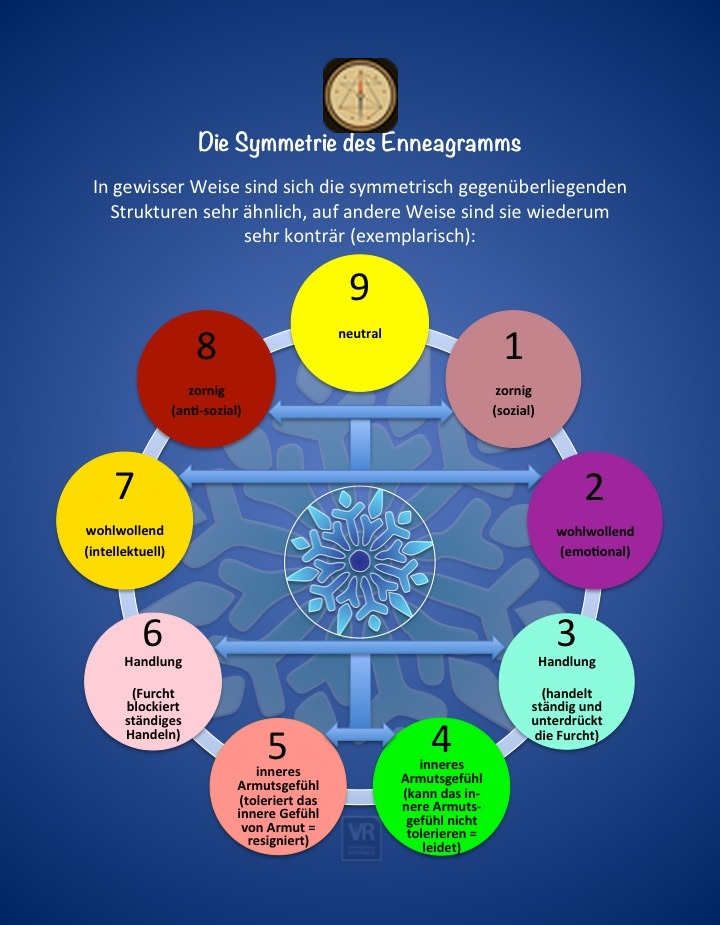
          <div style="padding:.5rem .7rem;background:var(--ivory);font-size:0.78rem;font-weight:600;color:var(--ink);">Symmetrie des Enneagramms &#8594;</div>
        </div>
        <div data-route="koerperregulation" style="cursor:pointer;border-radius:10px;overflow:hidden;box-shadow:0 2px 8px rgba(0,0,0,.12);">
          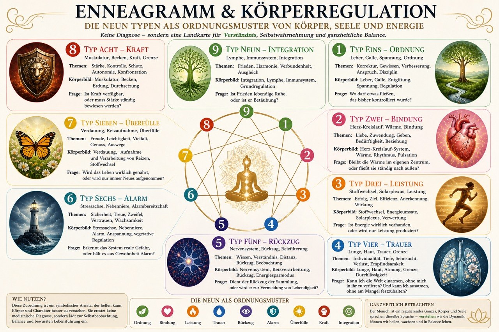
          <div style="padding:.5rem .7rem;background:var(--ivory);font-size:0.78rem;font-weight:600;color:var(--ink);">Enneagramm & K\xf6rperregulation &#8594;</div>
        </div>
        <div data-route="enneagramm-profiling" style="cursor:pointer;border-radius:10px;overflow:hidden;box-shadow:0 2px 8px rgba(0,0,0,.12);">
          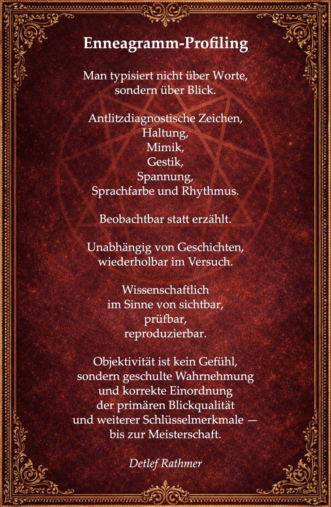
          <div style="padding:.5rem .7rem;background:var(--ivory);font-size:0.78rem;font-weight:600;color:var(--ink);">Enneagramm-Profiling &#8594;</div>
        </div>
        <div data-route="wunden" style="cursor:pointer;border-radius:10px;overflow:hidden;box-shadow:0 2px 8px rgba(0,0,0,.12);">
          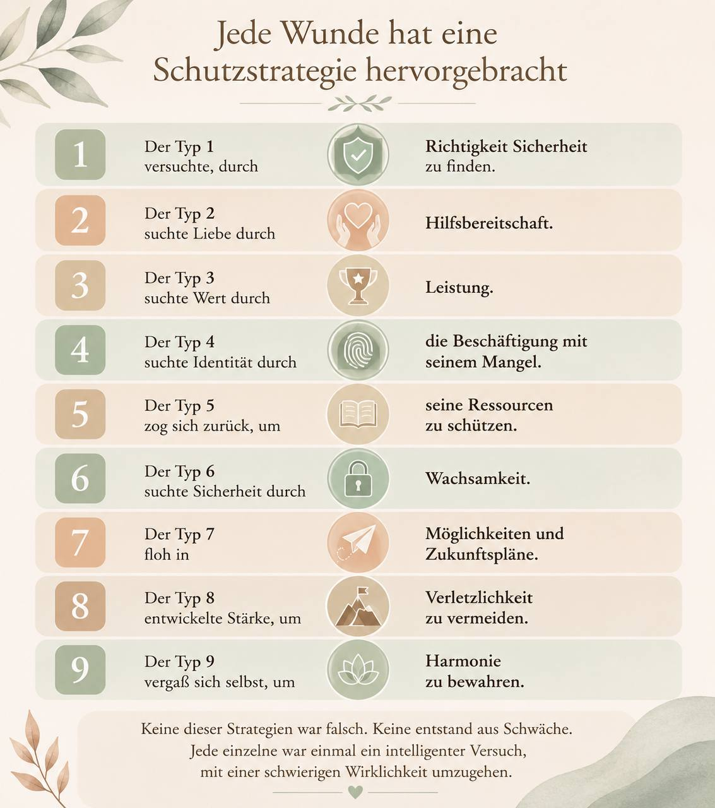
          <div style="padding:.5rem .7rem;background:var(--ivory);font-size:0.78rem;font-weight:600;color:var(--ink);">Wunden & Schutzstrategien &#8594;</div>
        </div>
        <div data-route="bedeutung-27-subtypen" style="cursor:pointer;border-radius:10px;overflow:hidden;box-shadow:0 2px 8px rgba(0,0,0,.12);">
          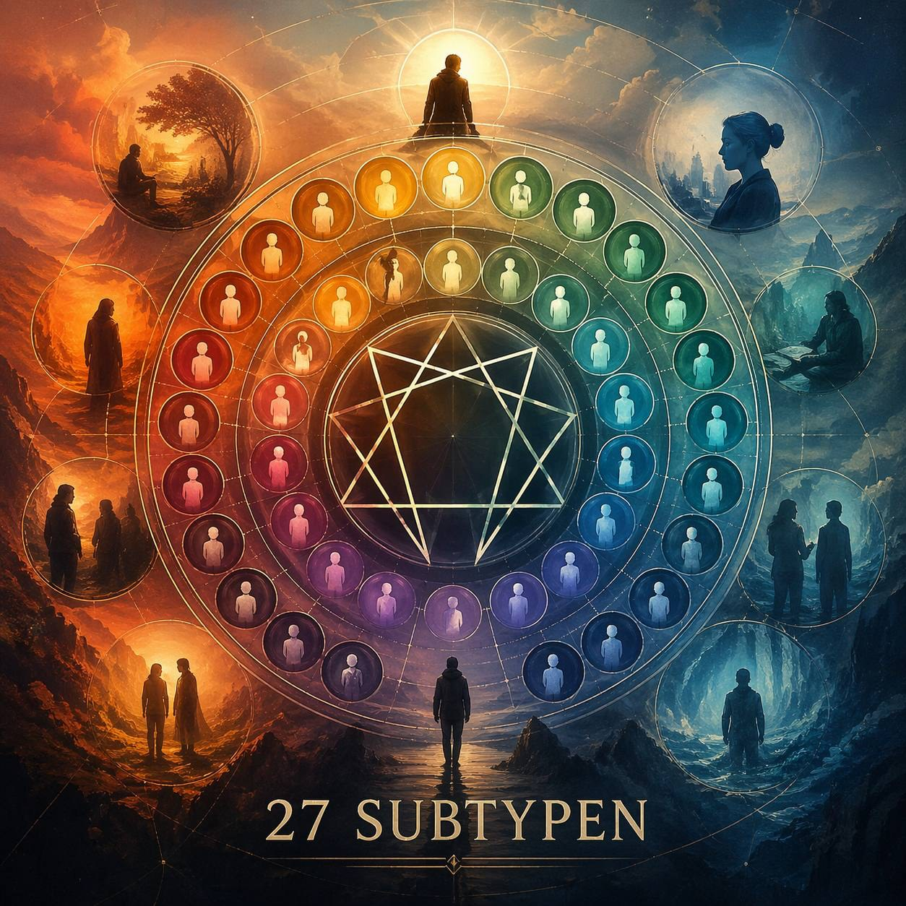
          <div style="padding:.5rem .7rem;background:var(--ivory);font-size:0.78rem;font-weight:600;color:var(--ink);">Bedeutung der 27 Subtypen &#8594;</div>
        </div>
        <div data-route="neun-logismoi" style="cursor:pointer;border-radius:10px;overflow:hidden;box-shadow:0 2px 8px rgba(0,0,0,.12);">
          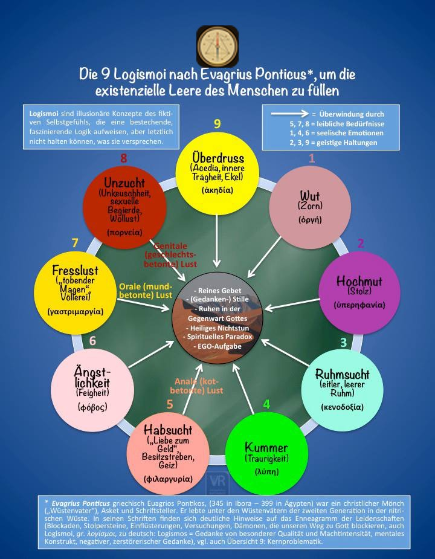
          <div style="padding:.5rem .7rem;background:var(--ivory);font-size:0.78rem;font-weight:600;color:var(--ink);">9 Logismoi nach Evagrius &#8594;</div>
        </div>
      </div>
      <p style="font-size:0.8rem;color:var(--muted);text-align:center;margin:0 0 1.8rem;">Klick auf ein Bild \xf6ffnet das vollst\xe4ndige Schaubild</p>

      <div style="border-top:1px solid var(--border);margin:1.5rem 0;"></div>

      <!-- 2: Subtyp-Portrait Vorschau -->
      <h2 style="font-family:'EB Garamond',serif;font-size:1.35rem;color:var(--ink);margin:0 0 .4rem;">27 Subtyp-Portraits &ndash; tiefste Typenstruktur</h2>
      <p style="font-size:0.92rem;color:var(--muted);margin:0 0 1.2rem;line-height:1.6;">Jeder der 27 Subtypen erh\xe4lt ein eigenes Portrait mit Kerndynamik, Tierarchetyp, Heilmitteln und Entwicklungswegen. Hier ein Auszug aus dem Portrait des <strong>SE1 &ndash; Der Adler</strong>:</p>

      <div style="background:var(--ivory);border:1px solid var(--border);border-radius:12px;padding:1.25rem 1.4rem;margin-bottom:.5rem;">
        <div style="display:flex;align-items:center;gap:1rem;margin-bottom:1rem;">
          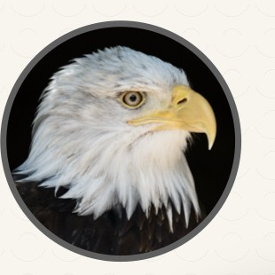
          <div>
            <p style="margin:0;font-size:0.72rem;letter-spacing:.1em;text-transform:uppercase;color:var(--copper);">Selbsterhaltungs-Eins</p>
            <p style="margin:.2rem 0 0;font-size:1.15rem;font-family:'EB Garamond',serif;font-weight:700;color:var(--ink);">Der Adler</p>
            <p style="margin:.15rem 0 0;font-size:0.8rem;color:var(--muted);">Typ 1 &middot; Selbsterhaltungs-Instinkt &middot; Bauchzentrum</p>
          </div>
        </div>
        <p style="font-size:0.9rem;line-height:1.7;color:var(--ink);margin:0 0 .8rem;">Der SE1 ist von allen Einser-Varianten am st\xe4rksten auf Perfektion im pers\xf6nlichen Alltag ausgerichtet. Er kontrolliert, ordnet und verfeinert &ndash; nicht um anderen zu imponieren, sondern weil Unvollkommenheit innerlich unertr\xe4glich wirkt. Sein Zorn ist still, sein Anspr\xfcch an sich selbst enorm.</p>
        <p style="font-size:0.82rem;color:var(--muted);font-style:italic;margin:0;">&#8230; das vollst\xe4ndige Portrait enth\xe4lt: Ur-Wunde &middot; Leidenschaft &middot; Heilungsweg &middot; \xc4therisches \xd6l &middot; Hom\xf6opathisches Mittel &middot; Affirmation &middot; Entwicklungsimpuls</p>
      </div>
      <button data-route="subtype/se1" style="background:none;border:1px solid var(--gold);color:var(--copper);border-radius:8px;padding:.45rem 1rem;font-size:0.83rem;cursor:pointer;margin-bottom:1.8rem;">Vollst\xe4ndiges SE1-Portrait ansehen &#8594;</button>

      <div style="border-top:1px solid var(--border);margin:1.5rem 0;"></div>

      <!-- 3: Heilmittel-Werkzeuge -->
      <h2 style="font-family:'EB Garamond',serif;font-size:1.35rem;color:var(--ink);margin:0 0 .4rem;">Subtypspezifische Heilmittel &ndash; Naturheilkunde trifft Enneagramm</h2>
      <p style="font-size:0.92rem;color:var(--muted);margin:0 0 1.2rem;line-height:1.6;">Das Herzst\xfcck des Kompasses: F\xfcr jeden der 27 Subtypen sind naturheilkundliche Empfehlungen hinterlegt &ndash; genau abgestimmt auf die pers\xf6nliche Typstruktur. Nicht allgemein, sondern subtypgenau.</p>
      <div style="display:grid;grid-template-columns:1fr 1fr;gap:.6rem;margin-bottom:.75rem;">
        <div style="background:linear-gradient(135deg,#f5e8cc,#f0d9a8);border-radius:10px;padding:.85rem .8rem;">
          <div style="font-size:1.4rem;margin-bottom:.25rem;">&#127807;</div>
          <div style="font-size:0.78rem;font-weight:700;color:var(--ink);">\xc4therische \xd6le</div>
          <div style="font-size:0.71rem;color:var(--muted);margin-top:.15rem;">Subtypspezifische Duftempfehlungen zur Regulation</div>
        </div>
        <div style="background:linear-gradient(135deg,#e8f0f5,#c8dcea);border-radius:10px;padding:.85rem .8rem;">
          <div style="font-size:1.4rem;margin-bottom:.25rem;">&#127810;</div>
          <div style="font-size:0.78rem;font-weight:700;color:var(--ink);">Bachbl\xfcten</div>
          <div style="font-size:0.71rem;color:var(--muted);margin-top:.15rem;">Bach-Essenz f\xfcr das Kernthema des Subtyps</div>
        </div>
        <div style="background:linear-gradient(135deg,#f0ece4,#e0d5c0);border-radius:10px;padding:.85rem .8rem;">
          <div style="font-size:1.4rem;margin-bottom:.25rem;">&#9679;</div>
          <div style="font-size:0.78rem;font-weight:700;color:var(--ink);">Hom\xf6opathie</div>
          <div style="font-size:0.71rem;color:var(--muted);margin-top:.15rem;">Konstitutionsmittel nach Detlef Rathmer</div>
        </div>
        <div style="background:linear-gradient(135deg,#eef5ee,#c8e0c8);border-radius:10px;padding:.85rem .8rem;">
          <div style="font-size:1.4rem;margin-bottom:.25rem;">&#127808;</div>
          <div style="font-size:0.78rem;font-weight:700;color:var(--ink);">Teeempfehlungen</div>
          <div style="font-size:0.71rem;color:var(--muted);margin-top:.15rem;">Pflanzliche Unterst\xfctzung je Subtyp</div>
        </div>
        <div style="background:linear-gradient(135deg,#f5eef5,#e0c8e0);border-radius:10px;padding:.85rem .8rem;">
          <div style="font-size:1.4rem;margin-bottom:.25rem;">&#128142;</div>
          <div style="font-size:0.78rem;font-weight:700;color:var(--ink);">Edelsteine</div>
          <div style="font-size:0.71rem;color:var(--muted);margin-top:.15rem;">Energetische Begleitung der Subtypen</div>
        </div>
        <div style="background:linear-gradient(135deg,#fdf0e0,#f0d0a0);border-radius:10px;padding:.85rem .8rem;">
          <div style="font-size:1.4rem;margin-bottom:.25rem;">&#127807;</div>
          <div style="font-size:0.78rem;font-weight:700;color:var(--ink);">TCM & weitere</div>
          <div style="font-size:0.71rem;color:var(--muted);margin-top:.15rem;">Traditionelle Chinesische Medizin & Sch\xfcssler-Salze</div>
        </div>
      </div>
      <p style="font-size:0.8rem;color:var(--copper);text-align:center;margin:0 0 1.8rem;font-style:italic;">Alles subtypgenau &ndash; nicht f\xfcr den Typ, sondern f\xfcr Ihren pers\xf6nlichen Subtyp.</p>

      <!-- Philosophische Tiefe -->
      <div style="border-top:1px solid var(--border);margin:1.5rem 0;"></div>
      <h2 style="font-family:'EB Garamond',serif;font-size:1.35rem;color:var(--ink);margin:0 0 .4rem;">Philosophische Tiefe</h2>
      <div data-route="schopenhauer-zitat" style="cursor:pointer;display:flex;gap:1rem;align-items:center;background:var(--ivory);border-radius:12px;padding:1rem 1.2rem;border:1px solid var(--border);margin-bottom:1.8rem;">
        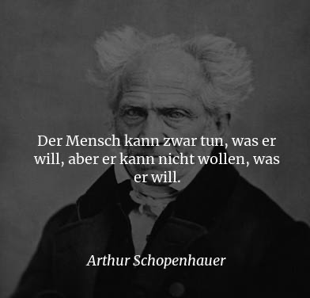
        <div>
          <p style="margin:0 0 .3rem;font-size:0.78rem;font-weight:600;color:var(--copper);">Schaubild &ndash; Philosophie & Enneagramm</p>
          <p style="margin:0 0 .3rem;font-size:0.95rem;font-family:'EB Garamond',serif;color:var(--ink);">Wir k\xf6nnen nicht wollen, was wir wollen</p>
          <p style="margin:0;font-size:0.8rem;color:var(--muted);">Schopenhauer trifft Enneagramm &ndash; \xfcber typologisch gef\xe4rbtes Wollen und die M\xf6glichkeit echter Freiheit &#8594;</p>
        </div>
      </div>

      <!-- CTA -->
      <div style="background:linear-gradient(135deg,#f5e8cc,#eedda0);border:2px solid var(--gold);border-radius:14px;padding:1.8rem 1.5rem;text-align:center;">
        <p style="font-size:0.75rem;letter-spacing:.1em;text-transform:uppercase;color:var(--copper);margin:0 0 .4rem;">Vollzugang freischalten</p>
        <h3 style="font-family:'EB Garamond',serif;font-size:1.5rem;color:var(--ink);margin:0 0 .6rem;line-height:1.2;">Der gesamte Kompass wartet auf Sie</h3>
        <p style="font-size:0.88rem;color:var(--muted);margin:0 0 1.2rem;line-height:1.55;">Hunderte Schaubilder &middot; Alle 27 Subtyp-Portraits &middot; Subtypspezifische Heilmittel & Naturheilkunde</p>
        <button data-route="freischalt" style="background:var(--gold-dark);color:var(--copper);border:3px solid #8a5a1a;border-radius:10px;padding:.85rem 2.5rem;font-size:1.05rem;font-weight:700;cursor:pointer;font-family:'EB Garamond',serif;box-shadow:0 4px 18px rgba(0,0,0,.22);">Jetzt freischalten &#8594;</button>
      </div>

    </div>
  `);
}

function startPage() {
  const p = state.profile;
  const copy = text.routes.start;
  const firstVisit = state.isFirstVisit;

  const profileGlimpse = !firstVisit ? `
    <div class="first-glimpse">
      ${p.image ? `` : `<div class="profile-badge">${p.emoji || p.code}</div>`}
      <div>
        <span>${p.code} · ${p.title}</span>
        <strong>${p.focus}</strong>
        <em>${copy.animalPrefix} ${p.archetype}</em>
      </div>
    </div>
  ` : '';

  const freischaltLink = !hasHeilwissen() ? `<button class="ghost-link" data-route="freischalt" style="margin-top:.5rem;font-size:.85rem;">Bereits gekauft? Zugang hier aktivieren →</button>` : "";
  const returnActions = !firstVisit ? `
    <button class="primary" data-route="dashboard">${copy.primaryAction}</button>
    <button class="secondary" data-route="knowledge">Wissensbasis</button>
    <button class="secondary${hasHeilwissen() ? "" : " is-locked"}" data-route="healing">Heilmittel${hasHeilwissen() ? "" : " <span class=\"btn-lock\" aria-hidden=\"true\">🔒</span>"}</button>
    ${freischaltLink}
  ` : `
    <button class="primary" data-route="profile">Meinen Subtyp wählen →</button>
    <button class="secondary" data-route="leseprobe">App-Leseprobe ansehen</button>
    <button class="secondary" data-route="kaufen" style="margin-top:.25rem;">Zugang kaufen · € 49 →</button>
    <button class="ghost-link" data-route="freischalt" style="margin-top:.5rem;font-size:.85rem;">Bereits gekauft? Zugang hier aktivieren →</button>
  `;

  return shell(`
    <section class="hero">
      <div class="hero__symbol">${compassMark()}</div>
      <p class="eyebrow">${text.meta.modelLine}</p>
      <h1>${copy.headline}</h1>
      <p class="lead">${copy.lead}</p>
      <div class="hero__actions">${returnActions}</div>
      ${profileGlimpse}
    </section>

    <section class="start-paths">
      <div class="start-path start-path--known">
        <div class="start-path__icon">◎</div>
        <h2 class="start-path__title">Ich kenne meinen Subtyp</h2>
        <p class="start-path__body">Wählen Sie Ihren Subtyp und erkunden Sie Heilmittel, TCM-Zuordnung, Kindheitsprägung, Musik und persönliche Entwicklungswege.</p>
        <button class="start-path__btn" data-route="profile">Subtyp wählen →</button>
      </div>
      <div class="start-path start-path--unknown">
        <div class="start-path__icon">◇</div>
        <h2 class="start-path__title">Ich kenne meinen Typ noch nicht</h2>
        <p class="start-path__body">Für eine genaue Typbestimmung empfehlen wir einen der beiden Tests oder eine persönliche Typisierungsberatung.</p>
        <div class="start-path__actions">
          <div class="start-path__test-row">
            <button class="start-path__btn start-path__btn--test start-path__btn--diag" data-route="diagnosetest">
              <span class="start-path__test-label">Diagnose-Test</span>
              <span class="start-path__test-sub">Schnelleinstieg · 9 Profile</span>
            </button>
            <button class="start-path__btn start-path__btn--test${hasBasis() ? "" : " is-locked"}" data-route="${hasBasis() ? "typentest" : "freischalt/basis"}">
              <span class="start-path__test-label">Struktureller Typentest${hasBasis() ? "" : " 🔒"}</span>
              <span class="start-path__test-sub">Ausführlich · mit Subtypen · für Fortgeschrittene</span>
            </button>
            <button class="start-path__btn start-path__btn--test start-path__btn--motivational${hasHeilwissen() ? "" : " is-locked"}" data-route="${hasHeilwissen() ? "typentest-motivational" : "freischalt/heilwissen"}">
              <span class="start-path__test-label">Motivationaler Typentest${hasHeilwissen() ? "" : " 🔒"}</span>
              <span class="start-path__test-sub">100 Fragen · Schwerpunkt Motivation</span>
            </button>
          </div>
        </div>
        <div class="start-path__berater">
          <div class="start-path__berater-card">
            <strong class="start-path__berater-name">Detlef Rathmer</strong>
            <ul class="start-path__berater-list">
              <li>Therapeut</li>
              <li>Enneagramm-Typisierung</li>
              <li>Bewusstseins-<br>entwicklung</li>
            </ul>
            <a class="start-path__web" href="https://www.psychologische-homoeopathie.de" target="_blank" rel="noopener">Naturheilpraxis Detlef Rathmer → psychologische-homoeopathie.de</a>
            <div class="start-path__berater-actions">
              <a class="start-path__btn" href="mailto:detlefrathmer@t-online.de?subject=Typisierungsberatung%20anfragen">✉ E-Mail</a>
              <a class="start-path__btn start-path__btn--wa" href="https://wa.me/4915758786201?text=Ich%20m%C3%B6chte%20eine%20Typisierungsberatung%20anfragen." target="_blank" rel="noopener">WhatsApp</a>
            </div>
          </div>
          <div class="start-path__berater-card">
            <strong class="start-path__berater-name">David L. Rathmer</strong>
            <ul class="start-path__berater-list">
              <li>Enneagramm-Profiling</li>
              <li>Enneagramm-Typisierung</li>
              <li>Ennea Scholars</li>
            </ul>
            <a class="start-path__web" href="https://www.enneascholars.de" target="_blank" rel="noopener">Enneagramm-Profiling für Führungskräfte &amp; Unternehmen → enneascholars.de</a>
            <div class="start-path__berater-actions">
              <a class="start-path__btn" href="mailto:rathmer.david.business@gmail.com?subject=Typisierungsberatung%20anfragen">✉ E-Mail</a>
              <a class="start-path__btn start-path__btn--wa" href="https://wa.me/4915901902479?text=Ich%20m%C3%B6chte%20eine%20Typisierungsberatung%20anfragen." target="_blank" rel="noopener">WhatsApp</a>
            </div>
          </div>
        </div>
      </div>
    </section>

    <section class="start-steps">
      <p class="start-steps__label">So funktioniert der Kompass</p>
      <div class="start-steps__grid">
        <div class="start-step">
          <span class="start-step__num">1</span>
          <h3 class="start-step__title">Typ & Subtyp bestimmen</h3>
          <p class="start-step__body">Ermitteln Sie Ihren Enneagrammtyp und Subtyp — über den Typentest, die Wissensbasis oder eine Beratung.</p>
        </div>
        <div class="start-step">
          <span class="start-step__num">2</span>
          <h3 class="start-step__title">Subtyp-Profil erkunden</h3>
          <p class="start-step__body">Jede der 27 Subtyp-Seiten zeigt Heilmittel, TCM-Zuordnung, Kindheitsprägung, Musik und Entwicklungswege.</p>
        </div>
        <div class="start-step">
          <span class="start-step__num">3</span>
          <h3 class="start-step__title">Heilung vertiefen</h3>
          <p class="start-step__body">Nutzen Sie den Heilmittel-Kompass, ätherische Öle und bei Bedarf eine persönliche Begleitung durch Detlef Rathmer.</p>
        </div>
      </div>
    </section>

    <section class="model-credit">
      <p class="model-credit__label">Hinter dem Modell</p>
      <p class="model-credit__text">Der Enneagramm-Kompass beruht auf der über Jahre gemeinsam entwickelten Arbeit von <strong>Detlef Rathmer</strong> (Therapie &amp; Heilung) und <strong>David L. Rathmer</strong> (Enneagramm-Profiling für Führungskräfte &amp; Unternehmen).</p>
      <a class="model-credit__link" href="https://www.enneascholars.de" target="_blank" rel="noopener">Mehr zu Davids Arbeit → enneascholars.de</a>
    </section>
    ${legalFooter()}
  `);
}

function dashboardPage() {
  const p = state.profile;
  const copy = text.routes.dashboard;
  return shell(`
    ${pageHeader("dashboard")}
    <section class="dashboard">
      <div class="profile-visual">
        ${p.image ? `` : `<div class="profile-badge profile-badge--large">${p.emoji || p.code}</div>`}
      </div>
      <div class="dashboard__copy">
        <p class="eyebrow">${copy.greeting} · ${p.center} · ${p.typeLabel || ''}</p>
        <h1>${p.code} · ${p.title}</h1>
        <p class="subtle-archetype">${p.titleAlt ? `auch: ${p.titleAlt} · ` : ''}${copy.animalBackground} ${p.archetype}</p>
        ${p.variant ? `<span class="variant-tag variant-tag--${p.variant.toLowerCase().replace('ä','ae').replace('ü','ue')}">${p.variant}</span>` : ''}
        <p class="focus">${copy.todayFocus} ${p.focus}</p>
        <div class="question-box">
          <span>${copy.organismQuestion}</span>
          <p>${p.organismQuestion}</p>
        </div>
        <button class="ghost-link" data-route="profile">Profil wechseln →</button>
      </div>
    </section>
    <section class="daily-grid">
      ${infoCard(copy.dailyImpulse, p.daily.impulse)}
      ${infoCard(copy.reflectionQuestion, p.daily.question)}
      ${infoCard(copy.nextStep, p.daily.step)}
    </section>
    <section class="quick-actions">
      <button class="primary" data-route="reflection">${copy.reflectToday}</button>
      <button class="secondary" data-route="path">${copy.viewPath}</button>
      <button class="secondary" data-route="tools">${copy.chooseTool}</button>
      <button class="secondary" data-route="knowledge">${copy.checkKnowledge}</button>
    </section>
    <section class="narrow" style="margin-top:2.5rem;">
      <blockquote class="kompass-zitat">
        <p>„Wir sehen die Welt nicht so, wie sie (objektiv) ist, sondern wie wir sie (subjektiv) wahrnehmen &ndash; entsprechend unseres Enneagrammtyps."</p>
        <p style="margin-top:0.75rem;">Daraus ergeben sich alle Probleme zwischen Menschen, aber potenziell auch alle Lösungen dieser zwischenmenschlichen Probleme und somit letztlich alle Probleme und Lösungen dieser Welt.</p>
        <footer>— Detlef Rathmer, 2026</footer>
      </blockquote>
    </section>
  `);
}

function reflectionPage() {
  const p = state.profile;
  const copy = text.routes.reflection;
  const saved = getJournal();
  return shell(`
    ${pageHeader("reflection")}
    <section class="narrow">
      <p class="eyebrow">${p.code} · ${copy.suffix}</p>
      <h1>${copy.headline}</h1>
      <label class="journal">
        <span>${p.daily.question}</span>
        <textarea id="journalText" rows="9" placeholder="${copy.placeholder}">${saved}</textarea>
      </label>
      <div class="form-row">
        <button class="primary" id="saveJournal">${copy.save}</button>
        <span id="saveStatus" role="status"></span>
      </div>
      <div class="soft-note">
        <strong>${copy.smallStep}</strong>
        <p>${p.daily.step}</p>
      </div>
    </section>
  `);
}

function pathPage() {
  const p = state.profile;
  const copy = text.routes.path;
  return shell(`
    ${pageHeader("path")}
    <section class="narrow centered">
      <p class="eyebrow">${p.code} · ${copy.suffix}</p>
      <h1>${copy.headline}</h1>
      <p class="lead-small">${p.coreSentence}</p>
    </section>
    <section class="path-grid">
      ${listPanel(copy.pattern, p.pattern, "pattern")}
      <div class="bridge">${compassMark("small")}<span>${copy.bridge}</span></div>
      ${listPanel(copy.growth, p.growth, "growth")}
    </section>
  `);
}

function toolSlug(name) {
  return name.toLowerCase().replace(/[äöü]/g, c => ({ä:"ae",ö:"oe",ü:"ue"}[c])).replace(/[^a-z0-9]+/g, "-").replace(/^-|-$/g, "");
}

function toolsPage() {
  const p = state.profile;
  const copy = text.routes.tools;
  return shell(`
    ${pageHeader("tools")}
    <section class="narrow centered">
      <p class="eyebrow">${p.code} · ${copy.suffix}</p>
      <h1>${copy.headline}</h1>
      <p class="lead-small">${p.daily.body}</p>
    </section>
    <section class="tool-grid">
      ${p.tools
        .map(
          (tool) => `
            <button class="tool-card tool-card--link" data-route="tool/${toolSlug(tool.name)}">
              <span>${tool.label}</span>
              <h2>${tool.name}</h2>
              <p>${tool.text}</p>
              <span class="tool-card__arrow">Details →</span>
            </button>
          `
        )
        .join("")}
      <button class="tool-card tool-card--link" data-route="tcm">
        <span>TCM · Meridiane · Akupunktur</span>
        <h2>TCM-Profil ansehen</h2>
        <p>Ihren persönlichen TCM-Meridian, Organzeiten und Akupunktur-Empfehlungen ansehen.</p>
        <span class="tool-card__arrow">Öffnen →</span>
      </button>
    </section>
  `);
}

function toolDetailPage(slug) {
  const p = state.profile;
  const tool = p.tools.find(t => toolSlug(t.name) === slug);
  if (!tool) { go("tools"); return ""; }

  // Subtyp-spezifische Daten aus Wissensbasis
  const knEntry = subtypeEntry(getProfile());
  const twoPoints = knEntry?.bodySignature?.twoPoints || null;

  const DETAIL_INSTRUCTIONS = {
    "atemimpuls": {
      intro: "Der Atemimpuls ist eine einfache Atemtechnik, die das Nervensystem in Sekunden beruhigt. Längeres Ausatmen aktiviert den Parasympathikus — das Gegenteil von Stress.",
      steps: [
        "Setzen oder stellen Sie sich aufrecht hin.",
        "Atmen Sie durch die Nase ein — zählen Sie dabei langsam bis 4.",
        "Atmen Sie durch den Mund aus — zählen Sie langsam bis 6.",
        "Wiederholen Sie das dreimal.",
        "Bemerken Sie, wie Schultern und Kiefer weicher werden."
      ],
      hinweis: "Ideal in Stresssituationen, vor wichtigen Gesprächen oder als Abendritual."
    },
    "2-punkte-integration": {
      intro: "Die Zwei-Punkte-Integration verbindet Körperbewusstsein mit Gegenwärtigkeit. Sie hilft dabei, Anspannung zu halten ohne zu kämpfen — bis der Körper von selbst mehr Raum findet.",
      steps: [
        "Legen Sie eine Hand auf Punkt 1, die andere auf Punkt 2 (siehe oben).",
        "Halten Sie beide Punkte gleichzeitig im Bewusstsein — wechseln Sie nicht zwischen ihnen.",
        "Atmen Sie ruhig weiter und warten Sie, ohne etwas erzwingen zu wollen.",
        "Nichts verändern. Nichts korrigieren. Nur halten und atmen.",
        "Beobachten Sie, wie sich das Verhältnis der beiden Punkte verändert."
      ],
      hinweis: "Kein Kämpfen — nur Beobachten. Der Körper löst sich, wenn er beides gleichzeitig spüren darf."
    },
    "merksatz": {
      intro: "Der Merksatz ist ein persönlicher Leitsatz, der den Wesenskern Ihres Subtyps in einem Satz zusammenfasst. Regelmäßig wiederholt, wirkt er wie ein innerer Kompass.",
      steps: [
        "Lesen Sie den Merksatz laut vor.",
        "Atmen Sie tief ein und sprechen Sie ihn dann langsam nochmals — als würden Sie ihn fühlen statt nur denken.",
        "Lassen Sie einen Moment stillen Nachklingens entstehen.",
        "Notieren Sie ihn an einem sichtbaren Ort (Spiegel, Notizbuch, Handy-Wallpaper)."
      ],
      hinweis: "Der Merksatz wirkt nicht durch einmaliges Lesen, sondern durch regelmäßige Wiederholung — besonders morgens und abends."
    },
    "koerperuebung": {
      intro: "Körperübungen verankern das Bewusstsein im Körper — weg vom Kopf, weg vom Stress. Was der Körper spürt, kann der Geist loslassen.",
      steps: [
        "Stellen Sie sich aufrecht hin, Füße hüftbreit auseinander.",
        "Spüren Sie das Gewicht Ihrer Füße auf dem Boden — drücken Sie leicht auf.",
        "Bemerken Sie Ihren Rücken: aufrecht aber nicht starr.",
        "Legen Sie eine Hand auf den Bauch, die andere auf die Brust.",
        "Atmen Sie dreimal tief in den Bauch — die Bauchhand hebt sich, die Brusthand bleibt ruhiger.",
        "Beantworten Sie erst danach, was Sie beschäftigt."
      ],
      hinweis: "Diese Übung kann jederzeit und überall gemacht werden — auch im Sitzen."
    },
    "heilmittel-impuls": {
      intro: "Der Heilmittel-Kompass übersetzt Ihr Subtyp-Muster in ein heilkundliches Symbolfeld. Jedes Mittel spricht eine bestimmte Ebene an — körperlich, seelisch und energetisch.",
      steps: [
        "Betrachten Sie das Schaubild oben: Welches Mittel zieht Ihre Aufmerksamkeit an?",
        "Lesen Sie die zugehörige Bedeutung — lassen Sie sie wirken, ohne sofort zu analysieren.",
        "Wählen Sie heute ein Mittel aus: Homöopathie, Bachblüte, Schüßler-Salz, Edelstein oder Tee.",
        "Verwenden Sie es bewusst — mit dem Gedanken an Ihr Heilungsthema.",
        "Notieren Sie abends, was Sie bemerkt haben."
      ],
      hinweis: "Heilmittel wirken unterstützend, ersetzen aber keine therapeutische Begleitung. Für eine individuelle Beratung steht Detlef Rathmer zur Verfügung."
    },
    "stille-sitzen": {
      intro: "Vollkommen still sitzen ist eine der wirkungsvollsten Übungen aus dem Enneagramm-Heilungsmodell. Der Körper zeigt seine eigene Intelligenz — wenn man aufhört, ihn zu steuern.",
      steps: [
        "Setzen Sie sich aufrecht und bequem hin — Rücken gerade, Hände auf den Oberschenkeln.",
        "Schließen Sie die Augen. Lassen Sie alle Kontrolle los.",
        "Tun Sie zwei Minuten lang nichts — keine Korrektur, keine Bewegung.",
        "Beobachten Sie, was der Körper von alleine tut: Atem, Spannung, Impulse.",
        "Öffnen Sie danach die Augen. Bemerken Sie den Unterschied."
      ],
      hinweis: "Wirkung und Ziel: Der Körper zeigt seine eigene Intelligenz. In dieser Zeit (nicht mehr!) kann sich Wesentliches offenbaren."
    },
    "aromatherapie": {
      intro: "Ätherische Öle sprechen das limbische System direkt an — sie wirken schneller als Worte. Das passende Öl für Ihren Subtyp unterstützt die Themen, an denen Sie gerade arbeiten.",
      steps: [
        "Öffnen Sie das Fläschchen Ihres Subtyp-Öls (siehe Schaubild oben).",
        "Geben Sie einen Tropfen auf Ihre Handflächen und reiben Sie sie sanft aneinander.",
        "Halten Sie die Hände vor Nase und Mund — atmen Sie dreimal tief ein.",
        "Lassen Sie den Duft wirken, ohne ihn zu bewerten.",
        "Sprechen Sie dabei innerlich das Heilungsthema Ihres Subtyps aus."
      ],
      hinweis: "Ätherische Öle immer verdünnt verwenden. Zur vollständigen Öl-Zuordnung aller 27 Subtypen → Öle-Seite in der App."
    },
    "blickqualitaet": {
      intro: "Die Blickqualität ist das sichtbarste Merkmal Ihres Enneagramm-Subtyps. Wer seinen eigenen Blick kennt, erkennt sein Muster — und kann bewusst eine andere Qualität wählen.",
      steps: [
        "Betrachten Sie das Profil-Schaubild oben: Wie ist Ihr typischer Blick beschrieben?",
        "Stellen Sie sich vor einen Spiegel oder schließen Sie die Augen und stellen Sie sich vor, wie Sie gerade schauen.",
        "Bemerken Sie: Ist der Blick eher eng, weit, prüfend, suchend, weich, distanziert?",
        "Wählen Sie bewusst eine andere Blickqualität — einen Moment lang weich, offen, ruhig.",
        "Beobachten Sie, wie sich das auf Ihre innere Haltung auswirkt."
      ],
      hinweis: "Blickqualität ist keine Technik — sie ist ein Spiegel. Wer seinen Blick verändert, verändert seinen inneren Zustand."
    }
  };

  const detail = DETAIL_INSTRUCTIONS[slug] || null;

  // Schaubild-Zuordnung je Werkzeug-Slug
  const TOOL_PAGE_MAP = {
    "2-punkte-integration": "page-2",
    "atemimpuls":           "page-3",
    "koerperuebung":        "page-3",
    "stille-sitzen":        "page-3",
    "merksatz":             "page-5",
    "heilmittel-impuls":    "page-4",
    "aromatherapie":        "page-4",
    "blickqualitaet":       "page-1",
  };
  const toolPageKey = TOOL_PAGE_MAP[slug] || null;
  const toolPageImg = (toolPageKey && knEntry && knEntry.visualPages)
    ? (knEntry.visualPages.find(pg => pg.src.includes(toolPageKey)) || null)
    : null;
  const seite2Block = toolPageImg ? `
    <figure class="vollseite-karte" style="margin-bottom:1.2rem;">
      <p class="vollseite-karte__hint">Zum Vergrößern antippen</p>
      <div class="card-pg-wrap">
        
        <div class="card-pg-compass" aria-hidden="true">${compassMark("mini")}</div>
      </div>
      <figcaption class="vollseite-karte__titel">${toolPageImg.title || ""}</figcaption>
    </figure>
  ` : "";
  const twoPointsBlock = (slug === "2-punkte-integration" && twoPoints) ? (() => {
    const pts = [twoPoints.point1, twoPoints.point2].filter(Boolean);
    const ptsHtml = pts.map((pt, i) => `
      <div style="display:flex;gap:1rem;align-items:flex-start;padding:.75rem 0;${i > 0 ? "border-top:1px solid rgba(45,74,62,.12);" : ""}">
        <div style="min-width:2rem;height:2rem;border-radius:50%;background:#2d4a3e;color:#fff;display:flex;align-items:center;justify-content:center;font-weight:700;font-size:.85rem;flex-shrink:0;">${i + 1}</div>
        <div>
          <strong style="font-size:1rem;color:#1a2e28;">${pt.name}</strong>
          <span style="font-size:.85rem;color:#4a6e5e;display:block;margin-bottom:.3rem;">${pt.location}</span>
          ${pt.need && pt.need.length ? `<ul style="margin:.2rem 0 0;padding-left:1.1rem;font-size:.88rem;color:#2d4a3e;line-height:1.6;">${pt.need.map(n => `<li>${n}</li>`).join("")}</ul>` : ""}
        </div>
      </div>
    `).join("");
    const microHtml = twoPoints.microInstructions && twoPoints.microInstructions.length
      ? `<div style="margin-top:.75rem;padding-top:.75rem;border-top:1px solid rgba(45,74,62,.15);">
           <p style="font-size:.82rem;font-weight:700;letter-spacing:.06em;text-transform:uppercase;color:#2d4a3e;margin:0 0 .4rem;">Mikro-Anleitung</p>
           <ul style="margin:0;padding-left:1.1rem;font-size:.9rem;line-height:1.8;color:#2a3e36;">
             ${twoPoints.microInstructions.map(m => `<li>${m}</li>`).join("")}
           </ul>
         </div>`
      : "";
    return `
      <div style="background:#e8f2ec;border:1.5px solid #2d4a3e;border-radius:14px;padding:1.5rem;margin-bottom:1.2rem;">
        <p style="font-size:.72rem;font-weight:700;letter-spacing:.18em;text-transform:uppercase;color:#2d4a3e;margin:0 0 1rem;">Ihre zwei Punkte · ${p.code}</p>
        ${ptsHtml}
        ${microHtml}
      </div>
    `;
  })() : "";

  return shell(`
    <section class="narrow" style="padding:1.5rem 1rem 0;">
      <button class="ghost-link" data-route="tools">← Zurück zu Werkzeuge</button>
    </section>
    <section class="narrow centered" style="padding:1rem 1rem 0;">
      <p class="eyebrow">${tool.label}</p>
      <h1 style="font-size:1.8rem;">${tool.name}</h1>
      <p style="font-style:italic;color:var(--text-muted,#888);font-size:.95rem;">${p.code} · Ihr Werkzeug für heute</p>
    </section>

    <section class="narrow" style="padding:1rem 1rem 2rem;">
      ${seite2Block}
      ${twoPointsBlock}

      <div style="background:var(--cream,#f9f6f0);border-radius:14px;padding:1.5rem;margin-bottom:1.2rem;">
        <p style="font-size:1.05rem;line-height:1.7;margin:0;">${tool.text}</p>
      </div>

      ${detail ? `
        <div style="background:#fff;border:1px solid rgba(0,0,0,.07);border-radius:14px;padding:1.5rem;margin-bottom:1.2rem;">
          <p style="font-size:.95rem;line-height:1.7;margin:0 0 1.2rem;color:#444;">${detail.intro}</p>
          <h3 style="font-size:1rem;margin:0 0 .75rem;">So geht es:</h3>
          <ol style="padding-left:1.2rem;margin:0 0 1.2rem;line-height:1.8;font-size:.95rem;">
            ${detail.steps.map(s => `<li style="margin-bottom:.4rem;">${s}</li>`).join("")}
          </ol>
          <p style="font-size:.88rem;color:#888;font-style:italic;margin:0;border-top:1px solid #eee;padding-top:.8rem;">💡 ${detail.hinweis}</p>
        </div>
      ` : ""}

      <div style="display:flex;flex-direction:column;gap:.75rem;">
        <button class="secondary" data-route="tools">Zurück zu allen Werkzeugen</button>
        <button class="secondary" data-route="tcm">TCM-Profil & Akupunktur ansehen</button>
        <button class="secondary" data-route="subtype/${getProfile()}">Mein Subtyp-Kompass</button>
      </div>
    </section>
  `);
}

// Buchtipp-Banner: bookTip(buchId, teaser)
// buchId = Schlüssel aus buecher-daten.js, teaser = kurze Einladung
const VERLAG_BASE = "https://www.verlagshausrathmer.com/buch.html?slug=";
function bookTip(buchId, teaser, title) {
  return `
    <a class="book-tip" href="${VERLAG_BASE}${buchId}" target="_blank" rel="noopener">
      <span class="book-tip__icon">📖</span>
      <div class="book-tip__text">
        <strong>Buchtipp: »${title}«</strong>
        <span>${teaser}</span>
      </div>
      <span class="book-tip__arrow">→</span>
    </a>
  `;
}

function relatedLinks(links) {
  if (!links || !links.length) return "";
  const buttons = links.map(({route, label}) =>
    `<button data-route="${route}" style="background:none;border:1px solid var(--gold);color:var(--copper);border-radius:20px;padding:.35rem .95rem;font-size:0.82rem;font-family:'EB Garamond',serif;cursor:pointer;white-space:nowrap;">${label} &#8594;</button>`
  ).join("");
  return `
    <div style="margin-top:2rem;padding-top:1.25rem;border-top:1px solid var(--border);">
      <p style="font-size:0.75rem;letter-spacing:.1em;text-transform:uppercase;color:var(--muted);margin:0 0 .6rem;">&#10022;&nbsp;\xc4hnliche \xdcbersichten</p>
      <div style="display:flex;flex-wrap:wrap;gap:.5rem;">${buttons}</div>
    </div>
  `;
}

function healingPage() {
  const code = getProfile();
  go("subtype/" + code);
  return "";
}

function oelForType(code) {
  const num = parseInt(String(code).replace(/\D/g, ""), 10);
  return aetherischeOele.find((o) => o.typ === num) || null;
}

function oilCard(oel) {
  const c = text.routes.oils;
  return `
    <article class="oil-card">
      <div class="oil-card__image">
        
      </div>
      <div class="oil-card__body">
        <span class="oil-card__type">${oel.typLabel}</span>
        <h3>${oel.name}</h3>
        <p class="oil-card__wound"><strong>${c.woundLabel}:</strong> „${oel.urWunde}“</p>
        <p class="oil-card__effect">${oel.wirkung}</p>
        ${oel.vertiefung ? `<p class="oil-card__text">${oel.vertiefung}</p>` : ""}
      </div>
    </article>
  `;
}

function oilsPage() {
  const copy = text.routes.oils;
  return shell(`
    ${pageHeader("oils")}
    <section class="knowledge-hero">
      <div>
        <p class="eyebrow">${copy.eyebrow}</p>
        <h1>${copy.headline}</h1>
        <p class="lead-small">${copy.lead}</p>
      </div>
      <aside>
        <span>${copy.linked}</span>
        <strong>${copy.linkedRef}</strong>
        <p>${copy.linkedText}</p>
      </aside>
    </section>
    <section class="knowledge-grid">
      <article class="knowledge-card knowledge-card--expanded">
        <h2>${copy.cardsTitle}</h2>
        <div class="oil-grid">
          ${aetherischeOele.map(oilCard).join("")}
        </div>
        <p class="remedy-note">${copy.note}</p>
        ${bookTip("enneagramm-bachblueten-therapie", "Welche Bachblüten helfen welchem Enneagrammtyp? Ein einzigartiger Zugang zur Seelenarbeit.", "Enneagramm-Bachblüten-Therapie")}
      </article>
    </section>
  `);
}

function tcmForType(code) {
  const num = parseInt(String(code).replace(/\D/g, ""), 10);
  return tcmData.find((t) => t.typ === num) || null;
}

function tcmCard(tcm) {
  const c = text.routes.tcm;
  return `
    <article class="tcm-card" style="--tcm-element-color:${tcm.elementFarbe}">
      <div class="tcm-card__header">
        <span class="tcm-card__type">${tcm.typLabel}</span>
        <button class="tcm-card__element-badge" data-tcm-element="${tcm.element}" title="Mehr über das ${tcm.element}-Element">${tcm.element} ↗</button>
      </div>
      <h3 class="tcm-card__meridian">${tcm.meridian}</h3>
      <div class="tcm-card__meta">
        <span class="tcm-card__organzeit">⏱ ${tcm.organzeit}</span>
        <span class="tcm-card__polaritaet">${tcm.polaritaet} · ${tcm.leitorgan}</span>
      </div>
      <p class="tcm-card__symptom">${tcm.symptom}</p>
      <p class="tcm-card__ausgleich"><strong>${c.ausgleichLabel}:</strong> ${tcm.ausgleich}</p>
      <div class="tcm-card__details">
        <h4>${c.empfehlungLabel}</h4>
        <ul>${tcm.empfehlung.map((e) => `<li>${e}</li>`).join("")}</ul>
        <h4>${c.tagesplanLabel}</h4>
        <ol class="tcm-tagesplan">
          ${tcm.tagesplan.map((s) => `<li><span class="tcm-tagesplan__time">${s.uhrzeit}</span><span class="tcm-tagesplan__label">${s.label}</span><span class="tcm-tagesplan__text">${s.text}</span></li>`).join("")}
        </ol>
      </div>
    </article>
  `;
}

function tcmInlineBlock(tcm) {
  if (!tcm) return "";
  const c = text.routes.tcm;
  return `
    <div class="inline-section inline-section--tcm" data-collapsed="true">
      <button class="inline-section__toggle" aria-expanded="false">
        <span class="inline-section__label">
          <span class="inline-section__tag">TCM</span>
          ${tcm.element}-Element · ${tcm.meridian}
        </span>
        <span class="inline-section__arrow">▼</span>
      </button>
      <div class="inline-section__body">
        <div class="tcm-inline">
          <div class="tcm-inline__meta">
            <button class="tcm-inline__element" style="background:${tcm.elementFarbe}" data-tcm-element="${tcm.element}" title="Mehr über das ${tcm.element}-Element">${tcm.element} ↗</button>
            <span>${tcm.polaritaet} · ${tcm.leitorgan}</span>
            <span>⏱ ${tcm.organzeit}</span>
          </div>
          <p class="tcm-inline__symptom">${tcm.symptom}</p>
          <p class="tcm-inline__ausgleich">${tcm.ausgleich}</p>
          <ul class="tcm-inline__empfehlung">${tcm.empfehlung.map((e) => `<li>${e}</li>`).join("")}</ul>
          <h4>${c.ernaehrungLabel}: ${tcm.ernaehrungsthema}</h4>
          <ol class="tcm-tagesplan tcm-tagesplan--compact">
            ${tcm.tagesplan.map((s) => `<li><span class="tcm-tagesplan__time">${s.uhrzeit}</span><span class="tcm-tagesplan__label">${s.label}:</span> ${s.text}</li>`).join("")}
          </ol>
        </div>
      </div>
    </div>
  `;
}

function tcmPage() {
  const copy = text.routes.tcm;
  return shell(`
    ${pageHeader("tcm")}
    <section class="knowledge-hero">
      <div>
        <p class="eyebrow">${copy.eyebrow}</p>
        <h1>${copy.headline}</h1>
        <p class="lead-small">${copy.lead}</p>
      </div>
      <aside>
        <span>${copy.linked}</span>
        <strong>${copy.linkedRef}</strong>
        <p>${copy.linkedText}</p>
      </aside>
    </section>
    <section class="knowledge-grid">
      <article class="knowledge-card knowledge-card--expanded">
        <h2>${copy.cardsTitle}</h2>
        <div class="tcm-grid">
          ${tcmData.map(tcmCard).join("")}
        </div>
        <p class="remedy-note">${copy.note}</p>
        ${(() => {
          const kn = subtypeEntry(getProfile());
          const pg = kn && kn.visualPages ? kn.visualPages.find(p => p.src.includes("page-3")) : null;
          return pg ? `
            <figure class="vollseite-karte" style="margin-top:1.5rem;">
              <p class="vollseite-karte__hint">Zum Vergrößern antippen</p>
              <div class="card-pg-wrap">
                
                <div class="card-pg-compass" aria-hidden="true">${compassMark("mini")}</div>
              </div>
              <figcaption class="vollseite-karte__titel">${pg.title || ""}</figcaption>
            </figure>` : "";
        })()}
        ${bookTip("chrono-ennea-typ-ernaehrung-im-rhythmus-der-organe", "Ernährung nach dem Enneagrammtyp im Rhythmus der TCM-Organuhr &ndash; Chrono-Ennea-Typ.", "Chrono-Ennea-Typ: Ernährung im Rhythmus der Organe")}
      </article>
    </section>
  `);
}

function kindheitForType(code) {
  const num = parseInt(String(code).replace(/\D/g, ""), 10);
  return kindheitstraumata.find((k) => k.typ === num) || null;
}

function kindheitInlineBlock(k) {
  if (!k) return "";
  const paragraphs = k.text.split("\n\n").map(p => `<p>${p}</p>`).join("");
  return `
    <div class="inline-section inline-section--kindheit" data-collapsed="true">
      <button class="inline-section__toggle" aria-expanded="false">
        <span class="inline-section__label">
          <span class="inline-section__tag">Kindheit</span>
          ${k.wunde}
        </span>
        <span class="inline-section__arrow">▼</span>
      </button>
      <div class="inline-section__body">
        <div class="kindheit-inline">
          <div class="kindheit-inline__body">${paragraphs}</div>
          <p class="kindheit-inline__zombie">${k.zombie}</p>
        </div>
      </div>
    </div>
  `;
}

function kindheitCard(k) {
  const paragraphs = k.text.split("\n\n").map(p => `<p>${p}</p>`).join("");
  return `
    <article class="kindheit-card">
      <header class="kindheit-card__header">
        <span class="kindheit-card__typ">${k.typLabel}</span>
        <h3 class="kindheit-card__titel">${k.titel}</h3>
        <p class="kindheit-card__wunde">${k.wunde}</p>
      </header>
      <div class="kindheit-card__body">
        ${paragraphs}
      </div>
      <p class="kindheit-card__zombie">${k.zombie}</p>
    </article>
  `;
}

function kindheitPage() {
  return shell(`
    ${pageHeader("kindheit")}
    <section class="knowledge-hero">
      <div>
        <p class="eyebrow">Psychologie · Enneagramm</p>
        <h1>Die Kindheitstraumata der 9 Typen</h1>
        <p class="lead-small">Jeder Enneagrammtyp entstand aus einem kindlichen Trauma &ndash; einer Verletzung, die den Weg der Seele in Richtung Überlebensstrategie einschlug. Diese Geschichten beschreiben das Muster, nicht das individuelle Schicksal.</p>
      </div>
      <aside>
        <span>Grundlagenwerk</span>
        <strong>Detlef Rathmer</strong>
        <p>Aus dem Manuskript »Die Kindheitstraumata der 9 Enneagrammtypen«</p>
      </aside>
    </section>
    <section class="knowledge-grid">
      <article class="knowledge-card knowledge-card--expanded">
        <h2>Die neun Ursprungsgeschichten</h2>
        <div class="kindheit-grid">
          ${kindheitstraumata.map(kindheitCard).join("")}
        </div>
        <p class="remedy-note">Diese Geschichten beschreiben archetypische Muster. Das individuelle Erleben eines Menschen ist immer vielschichtiger als das Typusmuster &ndash; die Arbeit mit den eigenen Kindheitstraumata erfordert professionelle therapeutische Begleitung.</p>
      </article>
    </section>
  `);
}

function musicPage() {
  const code = getProfile();
  go("subtype/" + code);
  return "";
}

function practicePage() {
  const p = state.profile;
  const copy = text.routes.practice;
  return shell(`
    ${pageHeader("practice")}
    <section class="narrow centered">
      <p class="eyebrow">${copy.eyebrow}</p>
      <h1>${copy.headline}</h1>
      <p class="lead-small">${copy.lead}</p>
    </section>
    <section class="tool-grid">
      ${p.tools
        .map(
          (tool) => `
            <button class="tool-card tool-card--link" data-route="tool/${toolSlug(tool.name)}">
              <span>${tool.label}</span>
              <h2>${tool.name}</h2>
              <p>${tool.text}</p>
              <span class="tool-card__arrow">Details →</span>
            </button>
          `
        )
        .join("")}
      <button class="tool-card tool-card--link" data-route="tcm">
        <span>TCM · Meridiane · Akupunktur</span>
        <h2>TCM-Profil ansehen</h2>
        <p>Persönlichen Meridian, Organzeiten und Akupunktur-Empfehlungen für Ihren Typ.</p>
        <span class="tool-card__arrow">Öffnen →</span>
      </button>
    </section>
  `);
}

function kaufenPage() {
  return shell(`
    <section class="narrow centered" style="padding:2rem 1rem 1rem;">
      <p class="eyebrow">Zugang kaufen</p>
      <h1 style="font-size:2rem;margin-bottom:.5rem;">Enneagramm-Heilungskompass</h1>
      <p class="lead-small" style="margin-bottom:2rem;">Das interaktive Navigationssystem für alle 27 Subtypen — Heilmittel, Musik, TCM, ätherische Öle, Tagesimpulse und das gesamte Lebenswerk von Detlef Rathmer.</p>
    </section>
    <section class="narrow" style="padding:0 1rem 1.5rem;">
      <div style="background:var(--cream,#f9f6f0);border-radius:16px;padding:1.5rem;margin-bottom:1.5rem;font-size:.97rem;line-height:1.7;">
        <h3 style="margin-top:0;">Was ist der Enneagramm-Heilungskompass?</h3>
        <p>Eine Synthese aus jahrzehntelanger therapeutischer Arbeit von Detlef Rathmer — interaktiv, persönlich, sofort nutzbar.</p>
        <p>Kein Buch kann das leisten, was diese App kann: Du gibst deinen Enneagrammtyp ein — und bekommst sofort alles, was du brauchst. Kein Blättern, kein Suchen, kein Zusammensetzen aus dutzenden Quellen.</p>
        <h3>Was nur diese App kann:</h3>
        <ul style="list-style:none;padding:0;margin:0 0 1rem;display:flex;flex-direction:column;gap:.75rem;">
          <li>🔍 <strong>Alles auf einen Blick</strong> — Homöopathie, Bachblüten, Schüßler-Salze, Edelsteine, Tees, ätherische Öle, TCM, Musik, Kindheitsprägung — für deinen Subtyp, sofort verfügbar</li>
          <li>📚 <strong>Synthese des gesamten Werkes</strong> — was in 60+ Büchern verteilt ist, findest du hier gebündelt an einem Ort</li>
          <li>🎯 <strong>Subtypgenau</strong> — nicht „Typ 4 allgemein", sondern genau dein Subtyp mit seiner eigenen Dynamik</li>
          <li>🔄 <strong>Lebt und wächst</strong> — die App wird laufend aktualisiert und erweitert, du bekommst alle Updates automatisch</li>
          <li>⚡ <strong>Interaktiv</strong> — du erlebst dein Profil, statt es nur zu lesen</li>
        </ul>
        <h3>Für wen ist das gedacht?</h3>
        <p>Für alle, die ihren Enneagrammtyp bereits kennen und tiefer gehen wollen. Für Therapeuten, Berater und Coaches. Für Menschen, die sich selbst verstehen wollen — nicht oberflächlich, sondern wirklich.</p>
        <h3>Jetzt zum Einführungspreis — zeitlich begrenzt:</h3>
        <p>€ 49 statt € 69 — dieser Preis gilt nur für die Einführungsphase. Wer früh kauft, spart € 20 und bekommt alle zukünftigen Updates inklusive.</p>
      </div>
    </section>
    <section class="narrow" style="padding:0 1rem 2rem;">
      <div style="background:var(--cream,#f9f6f0);border-radius:16px;padding:2rem;margin-bottom:1.5rem;">
        <div style="display:flex;align-items:baseline;gap:.75rem;margin-bottom:1rem;">
          <span style="font-size:2.2rem;font-weight:700;font-family:'EB Garamond',serif;">€ 49</span>
          <span style="font-size:1.1rem;text-decoration:line-through;opacity:.5;">€ 69</span>
          <span style="font-size:.85rem;background:#4a7c59;color:#fff;border-radius:20px;padding:.2rem .7rem;">Einführungspreis · zeitlich begrenzt</span>
        </div>
        <ul style="list-style:none;padding:0;margin:0 0 1.5rem;display:flex;flex-direction:column;gap:.6rem;">
          <li>✓ Alle 27 Subtyp-Profile vollständig</li>
          <li>✓ Heilmittel-Kompass (Homöopathie, Bach, Schüßler, Edelsteine, Tees)</li>
          <li>✓ Ätherische Öle, TCM, Kindheitsprägung</li>
          <li>✓ Musik & Tagesimpulse</li>
          <li>✓ Komplette Bibliothek mit 60+ Büchern</li>
          <li>✓ Alle zukünftigen Updates inklusive</li>
        </ul>
        <div style="background:linear-gradient(135deg,#f5e8cc,#eedda0);border:2px dashed var(--gold-dark);border-radius:10px;padding:1rem 1.2rem;margin-bottom:1.2rem;text-align:center;">
          <p style="margin:0 0 .3rem;font-size:.75rem;letter-spacing:.1em;text-transform:uppercase;color:var(--copper);font-weight:600;">Ihr Rabattcode</p>
          <p style="margin:0 0 .4rem;font-size:1.5rem;font-family:'EB Garamond',serif;font-weight:700;color:var(--ink);letter-spacing:.08em;">KOMPASS2026</p>
          <p style="margin:0;font-size:.8rem;color:var(--muted);">Wird automatisch eingetragen &ndash; Sie zahlen direkt <strong>€ 49</strong> statt € 69.</p>
        </div>
        <a href="https://www.checkout-ds24.com/product/707486?voucher=KOMPASS2026" target="_blank" rel="noopener"
           style="display:block;width:100%;text-align:center;background:#2d4a3e;color:#fff;padding:1rem;border-radius:10px;font-size:1.1rem;font-weight:600;text-decoration:none;box-sizing:border-box;">
          Jetzt Zugang kaufen → € 49 (mit Code KOMPASS2026)
        </a>
        <p style="font-size:.8rem;opacity:.6;text-align:center;margin-top:.75rem;">Sicherer Kauf \xfcber Digistore24 &middot; Sofortiger Zugang nach Zahlung</p>
      </div>
      <div style="background:var(--cream,#f9f6f0);border-radius:16px;padding:1.5rem;">
        <h3 style="margin-top:0;">Fragen?</h3>
        <p style="margin:0;font-size:.95rem;">Bei Fragen zum Zugang schreib an <a href="mailto:detlefrathmer@t-online.de">detlefrathmer@t-online.de</a></p>
      </div>
    </section>
  `);
}

function libraryPage() {
  const copy = text.routes.library;
  return shell(`
    ${pageHeader("library")}
    <section class="narrow centered">
      <p class="eyebrow">${copy.eyebrow}</p>
      <h1>${copy.headline}</h1>
      <p class="lead-small">${copy.lead}</p>
    </section>
    <section class="library-grid">
      ${architectureAreas
        .map((area) => `<article><h2>${area.title}</h2><p>${area.text}</p></article>`)
        .join("")}
    </section>
    <section class="formula-overview">
      <div class="formula-overview__copy">
        <p class="eyebrow">${copy.systemOverview}</p>
        <h2>${copy.formulaHeadline}</h2>
        <p>${copy.formulaText}</p>
      </div>
      <figure>
        
      </figure>
    </section>
    <section class="library-grid">
      ${libraryItems
        .map(([title, text]) => `<article><h2>${title}</h2><p>${text}</p></article>`)
        .join("")}
    </section>
    ${werkSection()}
  `);
}

function werkSection() {
  const w = text.werk;
  const filterLabels = {
    all:                     "Alle",
    enneagramm:              "Enneagramm",
    homoeopathie:            "Homöopathie",
    "persoenliche-entwicklung": "Persönl. Entwicklung",
    kalender:                "Kalender",
  };
  const filterBar = Object.entries(filterLabels).map(([key, label]) =>
    `<button class="werk-filter${key === "all" ? " is-active" : ""}" data-werk-filter="${key}">${label}</button>`
  ).join("");

  const cards = werkRegister.map((book) => {
    const isPending = book.status === "link_pruefen";
    const linkLabel = book.category === "kalender" ? "Zum Kalender" : w.openBook;
    const verlagsLink = isPending
      ? `<span class="deepen-link deepen-link--pending">${w.linkPending}</span>`
      : `<a class="deepen-link" href="${book.link}" target="_blank" rel="noopener">${linkLabel} →</a>`;
    const bodLink = !isPending && book.bodUrl
      ? `<a class="deepen-link deepen-link--bod" href="${book.bodUrl}" target="_blank" rel="noopener">Bei BoD kaufen →</a>`
      : "";
    const coverImg = ``;
    return `
      <article class="werk-card" data-category="${book.category || ""}" style="display:flex;gap:.75rem;align-items:flex-start;">
        <div style="width:60px;flex-shrink:0;">${coverImg}</div>
        <div style="min-width:0;">
          <h3 style="margin-top:0;">${book.title}</h3>
          <p class="werk-card__themes">${w.themes}: ${book.themes.join(" · ")}</p>
          <div class="werk-card__links">${verlagsLink}${bodLink}</div>
        </div>
      </article>`;
  }).join("");

  return `
    <section class="werk">
      <div class="section-divider"><span>${w.title}</span></div>
      <p class="lead-small werk__lead">${w.lead}</p>
      <div class="werk-filterbar">${filterBar}</div>
      <div class="werk-grid">${cards}</div>
    </section>
  `;
}

function subtypeEntry(code) {
  return knowledgePrototype.subtypes.find(
    (s) => s.code.toLowerCase() === code.toLowerCase()
  );
}

function subtypePage(code) {
  const sp = text.subtypePage;
  const entry = subtypeEntry(code);
  if (!entry) {
    return shell(`
      ${pageHeader("knowledge")}
      <section class="narrow centered">
        <button class="ghost-link" data-route="knowledge">${sp.back}</button>
        <h1>${code.toUpperCase()}</h1>
        <p class="lead-small">Für diesen Subtyp ist noch keine Detailseite angelegt.</p>
      </section>
    `);
  }
  const details = subtypeDetails[code.toLowerCase()] || {};
  const tc = typeColorFromCode(code);
  return shell(`
    ${pageHeader("knowledge")}
    <section class="subtype-hero" style="border-top:4px solid ${tc}">
      <button class="ghost-link" data-route="knowledge">${sp.back}</button>
      <p class="eyebrow" style="color:${tc}">${entry.code} · ${text.knowledgeCard.animalPrefix} ${entry.animal}</p>
      <h1 style="color:${tc}">${entry.title}</h1>
      <p class="lead-small">${entry.coreSentence}</p>
      <div style="margin-top:1.25rem; border-radius:0.5rem; overflow:hidden; border:1px solid var(--line); cursor:zoom-in;"
           data-comic-open="${code.toLowerCase()}" title="Antippen zum Vergrößern">
        
      </div>
    </section>
    ${details.meinKompass ? meinKompassSection(details.meinKompass, sp) : ""}
    <section class="subtype-sections">
      ${sectionBlock("verstehen", sp.rooms.verstehen, verstehenInner(entry, sp) + impulseBlock(SUBTYP_IMPULSE[code.toLowerCase()], tc), tc)}
      ${sectionBlock("spueren", sp.rooms.spueren, spuerenInner(entry, sp), tc)}
      ${sectionBlock("regulieren", sp.rooms.regulieren, regulierenInner(entry, sp), tc)}
      ${sectionBlock("unterstuetzen", sp.rooms.unterstuetzen, entry.heilmittel ? (hasHeilwissen() ? heilmittelSection(entry.heilmittel, oelForType(entry.code), entry.code) : heilwissenLock()) : "", tc)}
      ${sectionBlock("verkoerpern", sp.rooms.verkoerpern, verkoerpernInner(entry, sp), tc)}
      ${sectionBlock("vertiefen", sp.rooms.vertiefen, vertiefungSection(details.vertiefung, sp), tc)}
    </section>
    ${hasHeilwissen() ? tcmInlineBlock(tcmForType(entry.code)) : ""}
    ${hasHeilwissen() ? kindheitInlineBlock(kindheitForType(entry.code)) : ""}
    <section class="narrow" style="padding-top:0; padding-bottom:0;">
      ${bookTip(`einzelstudie-${code.toLowerCase()}`, `Die vollständige Einzelstudie zu ${entry.code} &ndash; ${entry.title}. Ca. 70 Seiten tiefgreifende psychologische Analyse.`, `Einzelstudie ${entry.code}: ${entry.title}`)}
    </section>
    ${querverbindungen(entry)}
    ${beratungsCTA()}
  `);
}

function heilwissenLock(title = "Heilmittel, TCM & Kindheitsprägung") {
  return `
    <div class="heilwissen-lock">
      <span class="heilwissen-lock__icon">🔒</span>
      <div>
        <strong>${title}</strong>
        <p>Diese Inhalte sind Teil des Heilungskompass-Upgrades.</p>
      </div>
      <button class="heilwissen-lock__btn" data-route="freischalt/heilwissen">Upgrade ansehen →</button>
    </div>
  `;
}

function beratungsCTA() {
  return `
    <section class="beratungs-cta">
      <div class="beratungs-cta__card beratungs-cta__card--behandlung">
        <div class="beratungs-cta__text">
          <p class="beratungs-cta__eyebrow">Enneagramm-Homöopathie</p>
          <h3 class="beratungs-cta__title">Sie möchten sich homöopathisch behandeln lassen?</h3>
          <p class="beratungs-cta__body">Die Enneagramm-Homöopathie arbeitet mit dem individuellen Heilmittel Ihres Typs. Wenn Sie eine persönliche Behandlung anstreben, können Sie eine Erstberatung anfragen.</p>
        </div>
        <a class="beratungs-cta__btn" href="https://www.psychologische-homoeopathie.de/beratung.html" target="_blank" rel="noopener">
          Zur Erstberatung →
        </a>
      </div>
      <div class="beratungs-cta__card beratungs-cta__card--typisierung">
        <div class="beratungs-cta__text">
          <p class="beratungs-cta__eyebrow">Typisierungsberatung</p>
          <h3 class="beratungs-cta__title">Noch unsicher über Ihren Typ oder Subtyp?</h3>
          <p class="beratungs-cta__body">Eine persönliche Typisierungsberatung gibt Klarheit. Sie können sich an Detlef oder David L. Rathmer wenden — beide sind erfahrene Typisierungsberater.</p>
        </div>
        <div class="beratungs-cta__berater-row">
          <div class="beratungs-cta__berater-item">
            <span class="beratungs-cta__berater-name">Detlef Rathmer</span>
            <div class="beratungs-cta__contact">
              <a class="beratungs-cta__btn beratungs-cta__btn--secondary" href="mailto:detlefrathmer@t-online.de?subject=Typisierungsberatung">✉ E-Mail</a>
              <a class="beratungs-cta__btn beratungs-cta__btn--whatsapp" href="https://wa.me/4915758786201?text=Ich%20m%C3%B6chte%20eine%20Typisierungsberatung%20anfragen." target="_blank" rel="noopener">WhatsApp</a>
            </div>
            <a class="beratungs-cta__web" href="https://www.psychologische-homoeopathie.de" target="_blank" rel="noopener">Naturheilpraxis Detlef Rathmer → psychologische-homoeopathie.de</a>
          </div>
          <div class="beratungs-cta__berater-item">
            <span class="beratungs-cta__berater-name">David L. Rathmer</span>
            <div class="beratungs-cta__contact">
              <a class="beratungs-cta__btn beratungs-cta__btn--secondary" href="mailto:rathmer.david.business@gmail.com?subject=Typisierungsberatung">✉ E-Mail</a>
              <a class="beratungs-cta__btn beratungs-cta__btn--whatsapp" href="https://wa.me/4915901902479?text=Ich%20m%C3%B6chte%20eine%20Typisierungsberatung%20anfragen." target="_blank" rel="noopener">WhatsApp</a>
            </div>
            <a class="beratungs-cta__web" href="https://www.enneascholars.de" target="_blank" rel="noopener">Enneagramm-Profiling für Führungskräfte &amp; Unternehmen → enneascholars.de</a>
          </div>
        </div>
      </div>
    </section>
  `;
}

function querverbindungen(entry) {
  const oel = oelForType(entry.code);
  const tcm = tcmForType(entry.code);
  const kindheit = kindheitForType(entry.code);
  const links = [
    { label: "Heilmittel", route: "healing", icon: "⬡" },
    oel      ? { label: "Ätherische Öle", route: "oils", icon: "✦" } : null,
    tcm      ? { label: "TCM & Organuhr", route: "tcm", icon: "◎" } : null,
    kindheit ? { label: "Kindheitstraumata", route: "kindheit", icon: "◇" } : null,
    { label: "Bibliothek", route: "library", icon: "◈" },
  ].filter(Boolean);
  return `
    <section class="querverbindungen">
      <p class="querverbindungen__label">Weiterführende Themen</p>
      <div class="querverbindungen__links">
        ${links.map(l => `
          <button class="querverbindungen__chip" data-route="${l.route}">
            <span class="querverbindungen__icon">${l.icon}</span>${l.label}
          </button>`).join("")}
      </div>
    </section>
  `;
}

function meinKompassSection(k, sp) {
  const list = (items) => `<ul>${items.map((i) => `<li>${i}</li>`).join("")}</ul>`;
  return `
    <section class="mein-kompass">
      <div class="section-divider"><span>${sp.meinKompassTitle}</span></div>
      <div class="mein-kompass__block">
        <strong>${sp.lebensthema}</strong>
        <p>${k.lebensthema}</p>
      </div>
      <div class="mein-kompass__block">
        <strong>${sp.grundstrategie}</strong>
        <p>${k.grundstrategie}</p>
      </div>
      <div class="mein-kompass__cols">
        <div class="mein-kompass__block">
          <strong>${sp.staerken}</strong>
          ${list(k.staerken)}
        </div>
        <div class="mein-kompass__block">
          <strong>${sp.herausforderungen}</strong>
          ${list(k.herausforderungen)}
        </div>
      </div>
      <div class="mein-kompass__block">
        <strong>${sp.entwicklungspotenzial}</strong>
        ${list(k.entwicklungspotenzial)}
        ${k.wandlung ? `<p class="mein-kompass__wandlung">${k.wandlung}</p>` : ""}
      </div>
      ${k.gedankeFuerHeute ? `
        <blockquote class="mein-kompass__gedanke">
          <span>${sp.gedankeFuerHeute}</span>
          <p>${k.gedankeFuerHeute}</p>
        </blockquote>
      ` : ""}
    </section>
  `;
}

function roomCard(key, title, inner) {
  if (!inner) return "";
  return `
    <article class="room room--${key}">
      <h3 class="room__title">${title}</h3>
      <div class="room__body">${inner}</div>
    </article>
  `;
}

function impulseBlock(impulse, color) {
  if (!impulse) return "";
  const paragraphs = impulse.text.split("\n\n").map(p => `<p>${p}</p>`).join("");
  return `
    <div class="typ-impuls" style="border-left-color:${color || "var(--accent)"}">
      ${paragraphs}
      <p class="typ-impuls__impuls"><em>Impuls für heute: ${impulse.impuls}</em></p>
      <p class="typ-impuls__autor">— Detlef Rathmer</p>
    </div>
  `;
}

function sectionBlock(key, title, inner, color) {
  if (!inner) return "";
  const titleStyle = color ? ` style="color:${color}"` : "";
  return `
    <section class="subtype-section subtype-section--${key}">
      <h2 class="subtype-section__title"${titleStyle}>${title}</h2>
      <div class="subtype-section__body">${inner}</div>
    </section>
  `;
}

function verstehenInner(entry, sp) {
  const blocks = [];
  if (entry.lifeTheme) blocks.push(`<div class="room-field"><strong>${sp.lifeTheme}</strong><ul>${entry.lifeTheme.map((i) => `<li>${i}</li>`).join("")}</ul></div>`);
  if (entry.unconsciousStrategy && entry.unconsciousStrategy.length) blocks.push(`<div class="room-field"><strong>${sp.unconsciousStrategy || "Unbewusste Strategie"}</strong><ul>${entry.unconsciousStrategy.map((i) => `<li>${i}</li>`).join("")}</ul></div>`);
  if (entry.organismQuestion) blocks.push(`<div class="room-field"><strong>${sp.organismQuestion}</strong><p>${entry.organismQuestion}</p></div>`);
  if (entry.coreSentence) blocks.push(`<div class="room-field"><strong>${sp.coreSentence}</strong><p>${entry.coreSentence}</p></div>`);
  if (entry.integrationSentence) blocks.push(`<div class="room-field room-field--quote"><strong>${sp.integrationSentence || "Leitsatz der Integration"}</strong><blockquote>${entry.integrationSentence}</blockquote></div>`);
  if (entry.integrationPath && entry.integrationPath.length) blocks.push(`<div class="room-field"><strong>${sp.integrationPath || "Integrationsweg"}</strong><ul>${entry.integrationPath.map((i) => `<li>${i}</li>`).join("")}</ul></div>`);
  if (entry.integratedState && entry.integratedState.length) blocks.push(`<div class="room-field"><strong>${sp.integratedState || "Integrierter Zustand"}</strong><ul>${entry.integratedState.map((i) => `<li>${i}</li>`).join("")}</ul></div>`);
  if (entry.woundBehindPassion) blocks.push(woundBehindPassionSection(entry.woundBehindPassion));
  return blocks.join("");
}

function spuerenInner(entry, sp) {
  const blocks = [];
  // Profilbild (Seite 1) — zeigt Prototypen, Blickqualität, Körpersignatur
  const seite1 = `assets/knowledge/type-${entry.code.slice(-1)}/${entry.code.toLowerCase()}/${entry.code.toLowerCase()}-page-1.jpeg`;
  blocks.push(`
    <figure class="vollseite-karte">
      <p class="vollseite-karte__hint">Zum Vergrößern antippen</p>
      <div class="card-pg-wrap">
        
        <div class="card-pg-compass" aria-hidden="true">${compassMark("mini")}</div>
      </div>
      <figcaption class="vollseite-karte__titel">Seite 1 · Profil, Prototypen & Körpersignatur</figcaption>
    </figure>
  `);
  if (entry.signature) blocks.push(`<div class="room-field"><strong>${entry.signature.title}</strong><p>${entry.signature.text}</p></div>`);
  const bs = entry.bodySignature;
  const bsl = sp.bodySignature || {};
  if (bs) {
    if (bs.basicTension) blocks.push(`<div class="room-field"><strong>${bsl.basicTension || "Grundspannung"}</strong><p>${bs.basicTension}</p></div>`);
    const lists = [
      ["gazeQuality","microTension","breathingRhythm","movementInitiation","contactStyle"],
      [bsl.gazeQuality, bsl.microTension, bsl.breathingRhythm, bsl.movementInitiation, bsl.contactStyle],
    ];
    lists[0].forEach((key, i) => {
      if (bs[key] && bs[key].length) blocks.push(`<div class="room-field"><strong>${lists[1][i] || key}</strong><ul>${bs[key].map((x) => `<li>${x}</li>`).join("")}</ul></div>`);
    });
    if (bs.twoPoints) {
      const tp = bs.twoPoints;
      const pts = [tp.point1, tp.point2].filter(Boolean);
      if (pts.length) {
        const ptHtml = pts.map((p) => `<li><strong>${p.name}</strong> (${p.location})${p.need && p.need.length ? `<ul>${p.need.map((n) => `<li>${n}</li>`).join("")}</ul>` : ""}</li>`).join("");
        blocks.push(`<div class="room-field"><strong>${bsl.twoPoints || "2-Punkte-Integration"}</strong><ul>${ptHtml}</ul></div>`);
      }
      if (tp.microInstructions && tp.microInstructions.length) blocks.push(`<div class="room-field"><strong>${bsl.microInstructions || "Mikro-Anleitung"}</strong><ul>${tp.microInstructions.map((i) => `<li>${i}</li>`).join("")}</ul></div>`);
    }
  }
  if (entry.archetypalEssence) blocks.push(`<div class="room-field"><strong>${sp.archetypalEssence || "Archetypische Essenz"}</strong><p>${entry.archetypalEssence}</p></div>`);
  if (entry.integrativePotential) blocks.push(`<div class="room-field"><strong>${sp.integrativePotential || "Integratives Potenzial"}</strong><p>${entry.integrativePotential}</p></div>`);
  if (entry.essence && entry.essence.qualities) blocks.push(`<div class="room-field"><strong>${sp.essenceQualities}</strong><ul>${entry.essence.qualities.map((i) => `<li>${i}</li>`).join("")}</ul></div>`);
  return blocks.join("");
}

function koerperarbeitBlock(k) {
  if (!k || !k.seiten) return "";
  return k.seiten.map(s => `
    <figure class="vollseite-karte">
      <p class="vollseite-karte__hint">Zum Vergrößern antippen</p>
      <div class="card-pg-wrap">
        
        <div class="card-pg-compass" aria-hidden="true">${compassMark("mini")}</div>
      </div>
      <figcaption class="vollseite-karte__titel">${s.titel}</figcaption>
    </figure>
  `).join("");
}

function regulierenInner(entry, sp) {
  const blocks = [];
  // Alle Schaubilder außer Seite 1 (die bereits in spuerenInner gezeigt wird)
  // visualPages ersetzt koerperarbeit.seiten für alle 27 Subtypen vollständig
  if (entry.visualPages && entry.visualPages.length > 1) {
    const remaining = entry.visualPages.filter(pg => !pg.src.includes("page-1"));
    remaining.forEach(pg => blocks.push(`
      <figure class="vollseite-karte">
        <p class="vollseite-karte__hint">Zum Vergrößern antippen</p>
        <div class="card-pg-wrap">
          
          <div class="card-pg-compass" aria-hidden="true">${compassMark("mini")}</div>
        </div>
        <figcaption class="vollseite-karte__titel">${pg.title || pg.titel || ""}</figcaption>
      </figure>
    `));
  }
  if (entry.turningPoint && entry.turningPoint.length) blocks.push(`<div class="room-field"><strong>${sp.turningPoint || "Wendepunkt"}</strong><ul>${entry.turningPoint.map((i) => `<li>${i}</li>`).join("")}</ul></div>`);
  if (entry.nervousSystemRegulation && entry.nervousSystemRegulation.length) blocks.push(`<div class="room-field"><strong>${sp.nervousSystemRegulation || "Nervensystem-Regulation"}</strong><ul>${entry.nervousSystemRegulation.map((i) => `<li>${i}</li>`).join("")}</ul></div>`);
  if (entry.tensionFields && entry.tensionFields.length) blocks.push(`<div class="room-field"><strong>${sp.tensionFields || "Spannungsfelder"}</strong><ul>${entry.tensionFields.map((i) => `<li>${i}</li>`).join("")}</ul></div>`);
  if (entry.practice) blocks.push(`<div class="room-field"><strong>${sp.practice}</strong><p>${entry.practice}</p></div>`);
  return blocks.join("");
}

function verkoerpernInner(entry, sp) {
  const hasMedia = entry.mediaGroups || entry.mediaResources;
  if (hasMedia && !hasHeilwissen()) return heilwissenLock("Musik & Klang");
  if (entry.mediaGroups) return mediaGroupSection(entry.mediaGroups);
  if (entry.mediaResources) return mediaResourceSection(entry.mediaResources);
  return `<p class="room-pending">${sp.mediaPending}</p>`;
}

function vertiefungSection(refs, sp) {
  if (!refs || !refs.length) return "";
  const byId = Object.fromEntries(werkRegister.map((b) => [b.id, b]));
  return `
    <p class="deepen-intro">${sp.deepenIntro}</p>
    <ul class="deepen-list">
      ${refs
        .map((ref) => {
          const book = byId[ref.werkId];
          if (!book) return "";
          const link = book.status === "link_pruefen"
            ? `<span class="deepen-link deepen-link--pending">${sp.linkPending}</span>`
            : `<a class="deepen-link" href="${book.link}" target="_blank" rel="noopener">${sp.openBook} →</a>`;
          return `
            <li class="deepen-item">
              <strong>${book.title}</strong>
              <p>${ref.hinweis}</p>
              ${link}
            </li>`;
        })
        .join("")}
    </ul>
  `;
}

const TYPE_COLORS = {
  1: "#5f5f5f", 2: "#7a2fa8", 3: "#1fa688", 4: "#3cbf1f",
  5: "#124fcc", 6: "#8a5222", 7: "#d4a800", 8: "#a00802", 9: "#cc6e00"
};
function typeColor(num) { return TYPE_COLORS[parseInt(num)] || "var(--copper)"; }
function typeColorFromCode(code) { return typeColor(code ? code.slice(-1) : 0); }

const GRUNDTYPEN = [
  { num: 1, name: "Der Perfektionist",   label: "Der Ordnungsorientierte",      leidenschaft: "Zorn",    tier: "Adler",    thema: "Richtig & Falsch · Integrität & Ordnung",     codes: ["se1","so1","sx1"] },
  { num: 2, name: "Der Helfer",          label: "Der Beziehungsorientierte",    leidenschaft: "Stolz",   tier: "Katze",    thema: "Liebe & Anerkennung · Geben & Genommen-Werden", codes: ["se2","so2","sx2"] },
  { num: 3, name: "Der Leistungsträger", label: "Der Erfolgsorientierte",       leidenschaft: "Lüge",    tier: "Pfau",     thema: "Erfolg & Wert · Leistung & Anerkennung",       codes: ["se3","so3","sx3"] },
  { num: 4, name: "Der Individualist",   label: "Der Identitätsorientierte",    leidenschaft: "Neid",    tier: "Pferd",    thema: "Echtheit & Tiefe · Verlust & Sehnsucht",        codes: ["se4","so4","sx4"] },
  { num: 5, name: "Der Beobachter",      label: "Der Wissensorientierte",       leidenschaft: "Geiz",    tier: "Eule",     thema: "Wissen & Verstehen · Rückzug & Ressourcen",     codes: ["se5","so5","sx5"] },
  { num: 6, name: "Der Loyale",          label: "Der Sicherheitsorientierte",   leidenschaft: "Angst",   tier: "Hase",     thema: "Sicherheit & Vertrauen · Gefahr & Loyalität",   codes: ["se6","so6","sx6"] },
  { num: 7, name: "Der Enthusiast",      label: "Der Möglichkeitsorientierte",  leidenschaft: "Maßlosigkeit", tier: "Affe", thema: "Freude & Fülle · Optionen & Vermeidung",      codes: ["se7","so7","sx7"] },
  { num: 8, name: "Der Herausforderer",  label: "Der Machtorientierte",         leidenschaft: "Wollust", tier: "Löwe",     thema: "Stärke & Kontrolle · Gerechtigkeit & Macht",    codes: ["se8","so8","sx8"] },
  { num: 9, name: "Der Friedensstifter", label: "Der Harmoniebedürftige",       leidenschaft: "Trägheit",tier: "Elefant",  thema: "Harmonie & Frieden · Verschmelzung & Schlaf",   codes: ["se9","so9","sx9"] },
];

function typesPage() {
  const kartenHtml = GRUNDTYPEN.map(t => {
    const c = typeColor(t.num);
    return `
    <button class="typ-karte" data-route="type/${t.num}" style="border-left-color:${c}">
      <span class="typ-karte__num" style="background:${c}">${t.num}</span>
      <div class="typ-karte__body">
        <strong class="typ-karte__name" style="color:${c}">${t.name}</strong>
        <span class="typ-karte__label" style="color:${c}">${t.label}</span>
        <span class="typ-karte__thema">${t.thema}</span>
      </div>
      <span class="typ-karte__arrow" style="color:${c}">→</span>
    </button>`;
  }).join("");
  return shell(`
    ${pageHeader("knowledge")}
    <section class="narrow">
      <p class="eyebrow">Enneagramm-Heilungskompass</p>
      <h1>Die 9 Grundtypen</h1>
      <p class="lead-small">Wählen Sie Ihren Typ, um die drei Subtypen und alle Inhalte zu erkunden.</p>
    </section>
    <section class="typen-liste">${kartenHtml}</section>
  `);
}

function typePage(num) {
  const t = GRUNDTYPEN.find(x => x.num === parseInt(num));
  if (!t) return typesPage();
  const c = typeColor(t.num);
  const subtypenHtml = t.codes.map(code => {
    const p = subtypeProfiles[code];
    if (!p) return "";
    const instinktLabel = { se: "Selbsterhaltung", so: "Sozial", sx: "Sexuell / Partnerschaft" }[code.slice(0,2)] || "";
    return `
      <button class="subtyp-karte" data-route="subtype/${code}" style="border-left-color:${c}">
        <div class="subtyp-karte__icon" style="color:${c}">${p.emoji || p.code}</div>
        <div class="subtyp-karte__body">
          <strong style="color:${c}">${p.title}</strong>
          <span>${p.code} · ${instinktLabel}</span>
          <em>${p.focus}</em>
        </div>
        <span class="subtyp-karte__arrow" style="color:${c}">→</span>
      </button>
    `;
  }).join("");
  return shell(`
    ${pageHeader("knowledge")}
    <section class="narrow">
      <button class="ghost-link" data-route="knowledge">← Alle Typen</button>
      <p class="eyebrow" style="color:${c}">Typ ${t.num} · ${t.label}</p>
      <h1 style="color:${c}">${t.name}</h1>
      <p class="lead-small">${t.thema}</p>
      <div class="typ-meta">
        <span class="typ-meta__chip" style="border-color:${c};color:${c}">Leidenschaft: <strong>${t.leidenschaft}</strong></span>
        <span class="typ-meta__chip" style="border-color:${c};color:${c}">Tier: <strong>${t.tier}</strong></span>
      </div>
      ${impulseBlock(TYP_IMPULSE[t.num], c)}
    </section>
    <section class="subtypen-liste">${subtypenHtml}</section>
  `);
}

function knowledgePage() {
  const block = knowledgePrototype.typeBlock;
  const copy = text.routes.knowledge;
  return shell(`
    ${pageHeader("knowledge")}
    <section class="knowledge-hero">
      <div>
        <p class="eyebrow">${copy.eyebrow}</p>
        <h1>${copy.headline}</h1>
        <p class="lead-small">${knowledgePrototype.source}</p>
      </div>
      <aside>
        <span>${block.status}</span>
        <strong>${block.title}</strong>
        <p>${block.note}</p>
      </aside>
    </section>
    <section class="knowledge-grid">
      ${knowledgePrototype.subtypes.map(knowledgeCard).join("")}
    </section>
  `);
}

function knowledgeCard(item) {
  const labels = text.knowledgeCard;
  return `
    <article class="knowledge-card ${item.visualPages ? "knowledge-card--expanded" : ""}">
      <div class="knowledge-card__top">
        <span>${item.code}</span>
        <em class="${item.status === "needs_review" ? "needs-review" : ""}">${statusLabel(item.status)}</em>
      </div>
      <h2>${item.title}</h2>
      <p class="animal">${labels.animalPrefix} ${item.animal}</p>
      <p class="source-line">${item.pages}</p>
      ${subtypeDetails[item.code.toLowerCase()] ? `<button class="card-open" data-route="subtype/${item.code.toLowerCase()}">${text.subtypePage.meinKompassTitle} öffnen →</button>` : ""}
      ${item.sourceCoverage ? sourceCoverageSection(item.sourceCoverage) : ""}
      ${item.contentModules ? contentModuleSection(item.contentModules) : ""}
      ${item.remedyCards ? remedyCardSection(item.remedyCards) : ""}
      <div class="knowledge-section organism">
        <strong>${labels.organismQuestion}</strong>
        <p>${item.organismQuestion}</p>
      </div>
      <div class="knowledge-section subtype-question">
        <strong>${labels.subtypeQuestion}</strong>
        <p>${item.subtypeQuestion}</p>
      </div>
      <div class="knowledge-section">
        <strong>${labels.coreSentence}</strong>
        <p>${item.coreSentence}</p>
      </div>
      <div class="knowledge-section">
        <strong>${labels.lifeTheme}</strong>
        <ul>${item.lifeTheme.map((entry) => `<li>${entry}</li>`).join("")}</ul>
      </div>
      <div class="knowledge-section">
        <strong>${labels.practice}</strong>
        <p>${item.practice}</p>
      </div>
      ${item.signature ? `
        <div class="knowledge-section">
          <strong>${item.signature.title}</strong>
          <p>${item.signature.text}</p>
        </div>
      ` : ""}
      ${item.essence ? `
        <div class="knowledge-section essence-box">
          <strong>${item.essence.title}</strong>
          <p>${item.essence.sentence}</p>
          <ul>${item.essence.qualities.map((entry) => `<li>${entry}</li>`).join("")}</ul>
        </div>
      ` : ""}
      ${item.woundBehindPassion ? woundBehindPassionSection(item.woundBehindPassion) : ""}
      ${(item.heilmittel || item.remedies)
          ? hasHeilwissen()
            ? (item.heilmittel ? heilmittelSection(item.heilmittel, oelForType(item.code), item.code) : `
        <div class="knowledge-section">
          <strong>${labels.remedies}</strong>
          <p>${item.remedies.join(" · ")}</p>
        </div>
      `)
            : heilwissenLock()
          : ""}
      ${item.visualPages ? visualPageSection(item.visualPages) : ""}
      ${(item.mediaGroups || item.mediaResources)
          ? hasHeilwissen()
            ? (item.mediaGroups ? mediaGroupSection(item.mediaGroups) : mediaResourceSection(item.mediaResources))
            : heilwissenLock("Musik & Klang")
          : ""}
      <div class="review-box">
        <strong>${labels.review}</strong>
        ${item.needsReview.length ? `<ul>${item.needsReview.map((entry) => `<li>${entry}</li>`).join("")}</ul>` : `<p>${labels.noRequiredReviews}</p>`}
      </div>
    </article>
	  `;
}

function heilmittelSection(h, oel, code) {
  const w = text.knowledgeCard.heilmittel;
  const row = (label, value) => {
    const meaning = value && remedyGlossary[value] ? `<small class="remedy-row__meaning">${remedyGlossary[value]}</small>` : "";
    return `<li class="remedy-row"><span class="remedy-row__label">${label}</span><span class="remedy-row__value${value ? "" : " remedy-row__value--empty"}">${value || w.pending}${meaning}</span></li>`;
  };
  const passion = h.leidenschaft || {};
  const wound = h.wunde || {};
  const seite4 = code ? `assets/knowledge/type-${code.slice(-1)}/${code.toLowerCase()}/${code.toLowerCase()}-page-4.jpeg` : null;
  return `
    <div class="knowledge-section heilmittel-box">
      <strong>${w.title}</strong>
      ${seite4 ? `
      <figure class="vollseite-karte">
        <p class="vollseite-karte__hint">Zum Vergrößern antippen</p>
        
        <figcaption class="vollseite-karte__titel">Seite 4 · Heilmittel-Kompass</figcaption>
      </figure>` : ""}
      <div class="remedy-level">
        <span class="remedy-level__title remedy-level__title--passion">${w.leidenschaftTitle}</span>
        <ul class="remedy-list">
          ${row(w.homoeopathie, passion.homoeopathie)}
          ${row(w.schuessler, passion.schuessler)}
          ${row(w.bachbluete, passion.bachbluete)}
          ${row(w.edelstein, passion.edelstein)}
          ${row(w.tee, passion.tee)}
        </ul>
        ${
          h.homoeopathieThema
            ? `<p class="remedy-theme"><strong>${passion.homoeopathie || w.homoeopathie}:</strong> ${h.homoeopathieThema} ${h.homoeopathieWirkung || ""}</p>`
            : ""
        }
      </div>
      <div class="remedy-level">
        <span class="remedy-level__title remedy-level__title--wound">${w.wundeTitle}</span>
        <ul class="remedy-list">
          ${row(w.homoeopathie, wound.homoeopathie)}
          ${row(w.schuessler, wound.schuessler)}
          ${row(w.bachbluete, wound.bachbluete)}
        </ul>
        ${
          h.wundeThema
            ? `<p class="remedy-theme"><strong>${wound.homoeopathie || w.homoeopathie}:</strong> ${h.wundeThema} ${h.wundeWirkung || ""}</p>`
            : ""
        }
        ${
          oel
            ? `<div class="remedy-oil">
                 <div class="remedy-oil__image"></div>
                 <div class="remedy-oil__body">
                   <span class="remedy-oil__label">${w.aetherischesOel}</span>
                   <strong>${oel.name}</strong>
                   <p>${oel.wirkung}</p>
                 </div>
               </div>`
            : ""
        }
      </div>
      <p class="remedy-note">${w.note}</p>
      <p class="remedy-note remedy-note--individual">${w.individualNote}</p>
      ${
        h.needsReview && h.needsReview.length
          ? `<div class="wound-review">${h.needsReview.map((e) => `<p>${e}</p>`).join("")}</div>`
          : ""
      }
    </div>
  `;
}

function woundBehindPassionSection(wound) {
  const w = text.knowledgeCard.woundBehindPassion;
  const steps = [
    ["passion", w.passion],
    ["belief", w.belief],
    ["wound", w.wound],
    ["compensation", w.compensation],
    ["sufferingCycle", w.sufferingCycle],
    ["healingDirection", w.healingDirection],
    ["remedy", w.remedy],
  ];
  const placeholder = `<span class="wound-step__pending">${w.pending}</span>`;
  return `
    <div class="knowledge-section wound-box">
      <strong>${w.title}</strong>
      <ol class="wound-chain">
        ${steps
          .map(
            ([key, label]) => `
          <li class="wound-step${wound[key] ? "" : " wound-step--empty"}">
            <span class="wound-step__label">${label}</span>
            <span class="wound-step__value">${wound[key] ? wound[key] : placeholder}</span>
          </li>`,
          )
          .join("")}
      </ol>
      ${
        wound.needsReview && wound.needsReview.length
          ? `<div class="wound-review">${wound.needsReview
              .map((entry) => `<p>${entry}</p>`)
              .join("")}</div>`
          : ""
      }
    </div>
  `;
}

function remedyCardSection(cards) {
  const labels = text.knowledgeCard;
  return `
    <div class="knowledge-section remedy-card-section">
      <strong>${labels.remedyCards}</strong>
      <p class="remedy-card-section__note">${labels.remedyCardsNote}</p>
      <div class="remedy-card-grid">
        ${cards.map((card) => `
          <article class="remedy-card">
            <div class="remedy-card__image">
              
            </div>
            <div class="remedy-card__body">
              <span>${card.category}</span>
              ${card.imageStatus ? `<span class="remedy-card__image-status">${card.imageStatus}</span>` : ""}
              <h3>${card.title}</h3>
              <em>${card.subtitle}</em>
              <p class="remedy-card__field">${card.field}</p>
              <p>${card.text}</p>
              <small>${card.goal}</small>
              ${card.imagePlan ? `<small class="remedy-card__plan">${card.imagePlan}</small>` : ""}
            </div>
          </article>
        `).join("")}
      </div>
    </div>
  `;
}

function sourceCoverageSection(pages) {
  const labels = text.knowledgeCard;
  return `
    <div class="knowledge-section source-coverage-section">
      <strong>${labels.sourceCoverage}</strong>
      <p>${labels.sourceCoverageNote}</p>
      <div class="source-coverage-grid">
        ${pages.map((page) => `
          <article class="source-page-card">
            <div class="source-page-card__head">
              <h3>${page.page}</h3>
              ${page.status ? `<span class="${page.status}">${coverageStatusLabel(page.status)}</span>` : ""}
            </div>
            <ul>${page.blocks.map((block) => `<li>${block}</li>`).join("")}</ul>
          </article>
        `).join("")}
      </div>
    </div>
  `;
}

function coverageStatusLabel(status) {
  return text.coverageStatusLabels[status] || status;
}

function visualPageSection(pages) {
  const labels = text.knowledgeCard;
  return `
    <div class="knowledge-section visual-pages-section">
      <strong>${labels.visualPages}</strong>
      <div class="visual-pages-grid">
        ${pages.map((page) => `
          <figure class="visual-page">
            <div class="card-pg-wrap">
              <a href="${page.src}" target="_blank" rel="noreferrer">
                
              </a>
              <div class="card-pg-compass" aria-hidden="true">${compassMark("mini")}</div>
            </div>
            <figcaption>
              <span>${page.title}</span>
              <p>${page.caption}</p>
            </figcaption>
          </figure>
        `).join("")}
      </div>
    </div>
  `;
}

function contentModuleSection(modules) {
  const labels = text.knowledgeCard;
  return `
    <div class="knowledge-section module-section">
      <strong>${labels.contentModules}</strong>
      <div class="module-grid">
        ${modules.map((module) => `
          <article class="content-module">
            <h3>${module.title}</h3>
            <p>${module.intro}</p>
            <dl>
              ${module.entries.map((entry) => `
                <div>
                  <dt>${entry.label}</dt>
                  <dd>${entry.text}</dd>
                </div>
              `).join("")}
            </dl>
          </article>
        `).join("")}
      </div>
    </div>
  `;
}

function mediaResourceSection(resources) {
  const labels = text.knowledgeCard;
  return `
    <div class="knowledge-section media-section">
      <strong>${labels.mediaResources}</strong>
      <div class="media-grid">
        ${resources.map(mediaTile).join("")}
      </div>
    </div>
  `;
}

function mediaGroupSection(groups) {
  const labels = text.knowledgeCard;
  return `
    <div class="knowledge-section media-section media-section--grouped">
      <strong>${labels.mediaGroups}</strong>
      ${groups.map((group) => `
        <div class="media-group">
          <div class="media-group__head">
            <h3>${group.title}</h3>
            <p>${group.note}</p>
          </div>
          <div class="media-grid">
            ${group.resources.map(mediaTile).join("")}
          </div>
        </div>
      `).join("")}
    </div>
  `;
}

function mediaTile(resource) {
  const labels = text.knowledgeCard;
  const embedSrc = resource.youtubeVideoId
    ? `https://www.youtube.com/embed/${resource.youtubeVideoId}`
    : resource.youtubePlaylistId
      ? `https://www.youtube.com/embed/videoseries?list=${resource.youtubePlaylistId}`
      : "";
  const youtubeHref = resource.youtubeVideoId
    ? `https://www.youtube.com/watch?v=${resource.youtubeVideoId}`
    : resource.youtubePlaylistId
      ? `https://www.youtube.com/playlist?list=${resource.youtubePlaylistId}`
      : "";

  return `
    <div class="media-tile ${resource.pending ? "media-tile--pending" : ""}">
      <div class="media-meta">
        <span>${resource.category} · ${resource.scope}</span>
        <strong>${resource.title}</strong>
      </div>
      ${embedSrc ? `
        <div class="youtube-embed">
          <iframe
            src="${embedSrc}"
            title="${resource.title}"
            loading="lazy"
            referrerpolicy="strict-origin-when-cross-origin"
            allow="accelerometer; autoplay; clipboard-write; encrypted-media; gyroscope; picture-in-picture; web-share"
            allowfullscreen
          ></iframe>
        </div>
        <a class="media-link" href="${youtubeHref}" target="_blank" rel="noreferrer">${labels.youtubeOpen}</a>
      ` : `
        <div class="media-placeholder">
          <strong>${labels.linkPending}</strong>
          <p>${labels.linkPendingText}</p>
        </div>
      `}
    </div>
  `;
}

function profilePage() {
  const allCodes = Object.keys(subtypeProfiles);
  const sortBy = (order) => (a, b) => order.indexOf(parseInt(a[2])) - order.indexOf(parseInt(b[2]));
  const groups = [
    { label: "Bauchzentrum · Typ 8, 9, 1", hint: "Handlung, Instinkt, Körper",   codes: allCodes.filter(c => [8,9,1].includes(parseInt(c[2]))).sort(sortBy([8,9,1])) },
    { label: "Herzzentrum · Typ 2, 3, 4",  hint: "Gefühl, Beziehung, Identität", codes: allCodes.filter(c => [2,3,4].includes(parseInt(c[2]))).sort(sortBy([2,3,4])) },
    { label: "Kopfzentrum · Typ 5, 6, 7",  hint: "Denken, Sicherheit, Vorstellung", codes: allCodes.filter(c => [5,6,7].includes(parseInt(c[2]))).sort(sortBy([5,6,7])) },
  ];
  const current = state.profile.id;
  const firstVisit = state.isFirstVisit;

  let cardIdx = 0;
  const groupsHTML = groups.map(g => {
    const cardsHTML = g.codes.map(id => {
      const p = subtypeProfiles[id];
      const active = id === current ? ' profile-card--active' : '';
      const delay = (cardIdx++ * 0.035).toFixed(3);
      return `<button class="profile-card${active}" style="animation-delay:${delay}s" data-select-profile="${id}">
        <div class="profile-card__visual">
          ${p.image
            ? ``
            : `<span class="profile-card__emoji">${p.emoji || ''}</span>`}
        </div>
        <span class="profile-card__code">${p.code}</span>
        <strong class="profile-card__title">${p.title}</strong>
        ${p.titleAlt ? `<em class="profile-card__alt">${p.titleAlt}</em>` : ''}
        ${p.variant ? `<span class="profile-card__variant">${p.variant}</span>` : ''}
      </button>`;
    }).join("");
    return `<section class="profile-group">
      <div class="profile-group__head">
        <h2 class="profile-group__label">${g.label}</h2>
        <span class="profile-group__hint">${g.hint}</span>
      </div>
      <div class="profile-grid">${cardsHTML}</div>
    </section>`;
  }).join("");

  return shell(`
    ${firstVisit ? '' : pageHeader("profile")}
    <section class="narrow centered profile-intro">
      ${firstVisit ? `<div class="profile-intro__compass">${compassMark("small")}</div>` : ''}
      <h1>${firstVisit ? 'Welcher Subtyp bist du?' : 'Subtyp wählen'}</h1>
      <p class="lead-small">${firstVisit
        ? 'Wähle deinen Enneagramm-Subtyp. Der Kompass richtet sich vollständig auf dich aus — Tagesimpuls, Muster, Werkzeuge und Heilungsweg.'
        : 'Dein aktuelles Profil ist <strong>' + state.profile.code + ' · ' + state.profile.title + '</strong>. Wähle einen anderen Subtyp, um den Kompass neu auszurichten.'
      }</p>
      <p class="profile-type-hint">Kennst du deinen Subtyp noch nicht? Kein Problem — schau dir die drei Varianten deines Typs an (z.&nbsp;B. SE6, SO6, SX6) und wähle die, die sich am stimmigsten anfühlt.</p>
    </section>
    ${groupsHTML}
    ${firstVisit ? `<p class="profile-skip">Noch unsicher? <button class="ghost-link" data-route="knowledge">Erst den Wissens-Atlas erkunden</button></p>` : ''}
  `);
}

function statusLabel(status) {
  return text.statusLabels[status] || status;
}

function infoCard(title, text) {
  return `<article class="info-card"><span>${title}</span><p>${text}</p></article>`;
}

function listPanel(title, items, tone) {
  return `
    <article class="list-panel ${tone}">
      <h2>${title}</h2>
      <ul>${items.map((item) => `<li>${item}</li>`).join("")}</ul>
    </article>
  `;
}

function getJournal() {
  return localStorage.getItem("enneagramm-kompass:sx6-journal") || "";
}

function showElementModal(elementName) {
  const el = tcmElemente[elementName];
  if (!el) return;
  const existing = document.querySelector(".tcm-element-modal-overlay");
  if (existing) existing.remove();
  const overlay = document.createElement("div");
  overlay.className = "tcm-element-modal-overlay";
  overlay.innerHTML = `
    <div class="tcm-element-modal" style="--el-color:${el.farbe}">
      <button class="tcm-element-modal__close" aria-label="Schließen">✕</button>
      <div class="tcm-element-modal__header">
        <span class="tcm-element-modal__symbol">${el.symbol}</span>
        <div>
          <h2>${elementName}</h2>
          <p class="tcm-element-modal__typen">Enneagramm: ${el.typen}</p>
        </div>
      </div>
      <p class="tcm-element-modal__beschreibung">${el.beschreibung}</p>
      <dl class="tcm-element-modal__facts">
        <dt>${el.jahreszeitLabel}</dt><dd>${el.jahreszeit}</dd>
        <dt>${el.organeLabel}</dt><dd>${el.organe}</dd>
        <dt>${el.emotionLabel}</dt><dd>${el.emotion}</dd>
        <dt>${el.heilungLabel}</dt><dd>${el.heilung}</dd>
        <dt>${el.geschmackLabel}</dt><dd>${el.geschmack}</dd>
        <dt>${el.qualitaetLabel}</dt><dd>${el.qualitaet}</dd>
      </dl>
    </div>
  `;
  overlay.addEventListener("click", (e) => {
    if (e.target === overlay || e.target.classList.contains("tcm-element-modal__close")) {
      overlay.remove();
    }
  });
  document.body.appendChild(overlay);
}

function bindEvents() {
  // Typenvergleiche Filter
  document.querySelectorAll(".tv-filter").forEach(btn => {
    btn.addEventListener("click", () => {
      document.querySelectorAll(".tv-filter").forEach(b => b.classList.remove("is-active"));
      btn.classList.add("is-active");
      const typ = parseInt(btn.dataset.typ, 10);
      document.querySelectorAll(".tv-card").forEach(card => {
        card.style.display = parseInt(card.dataset.gruppe, 10) === typ ? "" : "none";
      });
      document.querySelectorAll(".td-row").forEach(row => {
        row.style.display = (typ === 0 || parseInt(row.dataset.typ, 10) === typ) ? "" : "none";
      });
    });
  });

  document.querySelectorAll("[data-comic-open]").forEach(el => {
    el.addEventListener("click", () => {
      const code = el.dataset.comicOpen;
      const lb = document.createElement("div");
      lb.style.cssText = "position:fixed;inset:0;z-index:9999;background:rgba(0,0,0,0.92);display:flex;align-items:center;justify-content:center;cursor:zoom-out;padding:1rem;";
      lb.innerHTML = ``;
      lb.addEventListener("click", () => lb.remove());
      document.body.appendChild(lb);
    });
  });

  document.querySelectorAll("[data-diff-nr]").forEach(btn => {
    btn.addEventListener("click", () => {
      const nr = parseInt(btn.dataset.diffNr, 10);
      if (diffState.a === null || (diffState.a !== null && diffState.b !== null)) {
        diffState = { a: nr, b: null };
      } else if (diffState.b === null) {
        diffState.b = nr;
      }
      app.innerHTML = differenzierungPage();
      bindEvents();
    });
  });

  document.querySelectorAll("[data-bez-code]").forEach(btn => {
    btn.addEventListener("click", () => {
      const code = btn.dataset.bezCode;
      beziehungSelected = beziehungSelected === code ? null : code;
      app.style.opacity = "0";
      setTimeout(() => {
        app.innerHTML = beziehungenPage();
        bindEvents();
        requestAnimationFrame(() => requestAnimationFrame(() => { app.style.opacity = "1"; }));
        const sel = document.querySelector("[data-bez-code].active, [data-bez-code]");
        setTimeout(() => document.getElementById("bez-paarungen")?.scrollIntoView({ behavior: "smooth", block: "start" }), 80);
      }, 120);
    });
  });

  // Kompass-Overlay auf ALLEN Vollseiten-Karten sicherstellen (deckt die Seitenzahl oben).
  // Greift auch fuer Seiten, deren Render-Pfad den Wrap nicht selbst setzt (z. B. Heilmittel-Seite 4).
  document.querySelectorAll(".vollseite-karte").forEach((fig) => {
    if (fig.querySelector(".card-pg-compass")) return; // schon vorhanden &ndash; keine Dublette
    const img = fig.querySelector(".vollseite-karte__img");
    if (!img) return;
    let wrap = img.closest(".card-pg-wrap");
    if (!wrap) {
      wrap = document.createElement("div");
      wrap.className = "card-pg-wrap";
      img.parentNode.insertBefore(wrap, img);
      wrap.appendChild(img);
    }
    const comp = document.createElement("div");
    comp.className = "card-pg-compass";
    comp.setAttribute("aria-hidden", "true");
    comp.innerHTML = compassMark("mini");
    wrap.appendChild(comp);
  });

  document.querySelectorAll("[data-dropdown-toggle]").forEach((trigger) => {
    trigger.addEventListener("click", (e) => {
      e.stopPropagation();
      const wrap = trigger.closest(".nav-dropdown-wrap");
      const menu = wrap.querySelector(".nav-dropdown__menu");
      const isOpen = wrap.classList.contains("is-open");
      document.querySelectorAll(".nav-dropdown-wrap.is-open").forEach(w => w.classList.remove("is-open"));
      if (!isOpen) {
        const rect = trigger.getBoundingClientRect();
        menu.style.top = (rect.bottom + 6) + "px";
        menu.style.right = (window.innerWidth - rect.right) + "px";
        wrap.classList.add("is-open");
      }
    });
  });
  // Close dropdown when clicking outside — use bubble phase so stopPropagation above works
  document.body.addEventListener("click", (e) => {
    if (!e.target.closest(".nav-dropdown-wrap")) {
      document.querySelectorAll(".nav-dropdown-wrap.is-open").forEach(w => w.classList.remove("is-open"));
    }
  });

  // Schaubilder search: filter items as user types
  document.addEventListener("input", (e) => {
    const input = e.target.closest(".nav-dropdown__search");
    if (!input) return;
    const q = input.value.trim().toLowerCase();
    const menu = input.closest(".nav-dropdown__menu");
    menu.querySelectorAll(".nav-dropdown__item").forEach(btn => {
      btn.style.display = !q || btn.textContent.toLowerCase().includes(q) ? "" : "none";
    });
  });
  // Prevent dropdown close when clicking inside search input
  document.addEventListener("click", (e) => {
    if (e.target.closest(".nav-dropdown__search-wrap")) e.stopPropagation();
  }, true);
  // Clear search when dropdown closes
  document.querySelectorAll(".nav-dropdown-wrap--searchable").forEach(wrap => {
    new MutationObserver(() => {
      if (!wrap.classList.contains("is-open")) {
        const input = wrap.querySelector(".nav-dropdown__search");
        if (input) {
          input.value = "";
          wrap.querySelectorAll(".nav-dropdown__item").forEach(btn => btn.style.display = "");
        }
      }
    }).observe(wrap, { attributes: true, attributeFilter: ["class"] });
  });

  document.getElementById("js-back-btn")?.addEventListener("click", () => {
    if (history.length > 1) { history.back(); } else { go("start"); }
  });

  // Externe Links explizit öffnen (überbrückt Popup-Blocker und PWA-Modus)
  document.querySelectorAll("a[href^='https://'], a[href^='http://']").forEach(a => {
    a.addEventListener("click", (e) => {
      e.preventDefault();
      window.open(a.href, "_blank", "noopener,noreferrer");
    });
  });

  document.querySelectorAll("[data-route]").forEach((button) => {
    button.addEventListener("click", () => {
      if (button.dataset.locked) {
        go("freischalt/" + button.dataset.locked);
      } else {
        go(button.dataset.route);
      }
    });
  });

  const save = document.querySelector("#saveJournal");
  if (save) {
    save.addEventListener("click", () => {
      const journalText = document.querySelector("#journalText").value;
      localStorage.setItem("enneagramm-kompass:sx6-journal", journalText);
      document.querySelector("#saveStatus").textContent = text.routes.reflection.saved;
    });
  }

  document.querySelectorAll("[data-tcm-element]").forEach((btn) => {
    btn.addEventListener("click", (e) => {
      e.stopPropagation();
      showElementModal(btn.dataset.tcmElement);
    });
  });

  document.querySelectorAll(".inline-section__toggle").forEach((btn) => {
    btn.addEventListener("click", () => {
      const section = btn.closest(".inline-section");
      const collapsed = section.dataset.collapsed === "true";
      section.dataset.collapsed = collapsed ? "false" : "true";
      btn.setAttribute("aria-expanded", collapsed ? "true" : "false");
    });
  });

  document.querySelectorAll("[data-werk-filter]").forEach((btn) => {
    btn.addEventListener("click", () => {
      const filter = btn.dataset.werkFilter;
      document.querySelectorAll("[data-werk-filter]").forEach(b => b.classList.remove("is-active"));
      btn.classList.add("is-active");
      document.querySelectorAll(".werk-card").forEach(card => {
        const match = filter === "all" || card.dataset.category === filter;
        card.style.display = match ? "" : "none";
      });
    });
  });

  const unlockBtn = document.querySelector("#unlockBtn");
  if (unlockBtn) {
    const doUnlock = () => {
      const code = (document.querySelector("#unlockCode").value || "").trim().toUpperCase();
      const name = (document.querySelector("#unlockName").value || "").trim();
      const msg = document.querySelector("#unlockMsg");
      if (code === KOMPASS_CODE) {
        if (!name) {
          msg.textContent = "Bitte tragen Sie zuerst Ihren Namen ein.";
          msg.style.color = "var(--copper)";
          document.querySelector("#unlockName").focus();
          return;
        }
        setTier("heilwissen");
        setLizenzName(name);
        go("start");
      } else {
        msg.textContent = "Ungültiger Code. Bitte prüfen Sie die Bestätigungs-E-Mail von Digistore24.";
        msg.style.color = "var(--copper)";
      }
    };
    unlockBtn.addEventListener("click", doUnlock);
    document.querySelector("#unlockCode").addEventListener("keydown", (e) => {
      if (e.key === "Enter") doUnlock();
    });
  }

  document.querySelectorAll("[data-select-profile]").forEach((btn) => {
    btn.addEventListener("click", () => {
      const id = btn.dataset.selectProfile;
      if (subtypeProfiles[id]) {
        localStorage.setItem(PROFILE_KEY, id);
        localStorage.setItem(VISITED_KEY, "1");
        state.profile = subtypeProfiles[id];
        state.isFirstVisit = false;
        go("dashboard");
      }
    });
  });

  if (state.route === "typentest") {
    bindTypentest();
  }
  if (state.route === "typentest-motivational") {
    bindMotivtest();
  }
  if (state.route === "diagnosetest") {
    bindDiagnosetest();
  }
}

// ── TYPENTEST ─────────────────────────────────────────────────────────────────

function typentestMotivationalPage() {
  const ms = motivState;

  // ── Phase: Intro ───────────────────────────────────────────────────────────
  if (ms.phase === "intro") {
    return shell(`
      ${pageHeader("typentest-motivational")}
      <div class="typentest-wrap">
        <div class="typentest-card">
          <p class="eyebrow">Motivationaler Enneagrammtypentest · für Fortgeschrittene</p>
          <h1 class="typentest-titel">Den tieferen Antrieb erkennen</h1>
          <p class="typentest-intro">Dieser Test fragt nach Ihren Motivationen, nicht nach Ihrem Verhalten. Wählen Sie bei jeder der 100 Fragen die zwei Aussagen, die am ehesten auf Sie zutreffen.</p>
          <ul class="typentest-hinweis" style="list-style:none;padding:0;margin:1.2rem 0;">
            <li style="padding:0.35rem 0;border-bottom:1px solid var(--line);">&#8226; 100 Fragen aus verschiedenen Lebensbereichen</li>
            <li style="padding:0.35rem 0;border-bottom:1px solid var(--line);">&#8226; Je Frage: 1.&nbsp;Wahl (am wichtigsten) + 2.&nbsp;Wahl (zweitwichtigsten)</li>
            <li style="padding:0.35rem 0;border-bottom:1px solid var(--line);">&#8226; Dauer: ca. 20&ndash;30 Minuten</li>
            <li style="padding:0.35rem 0;">&#8226; Empfehlung: Ruhige Atmosphäre, ehrliche Antworten</li>
          </ul>
          <button class="typentest-start-btn" data-motiv-start>Test starten &#8594;</button>
        </div>
      </div>
    `);
  }

  // ── Phase: Test ────────────────────────────────────────────────────────────
  if (ms.phase === "test") {
    const total = MOTIVTEST.length;
    const qi = ms.qIndex;
    const q = MOTIVTEST[qi];
    const pct = Math.round((qi / total) * 100);
    const ans = ms.answers[q.nr] || {};
    const letters = Object.keys(q.antworten);

    const answerCards = letters.map(letter => {
      const isFirst = ans.first === letter;
      const isSecond = ans.second === letter;
      const cls = isFirst ? "motiv-answer motiv-answer--first"
                : isSecond ? "motiv-answer motiv-answer--second"
                : "motiv-answer";
      const badge = isFirst ? `<span class="motiv-answer__badge">1</span>`
                  : isSecond ? `<span class="motiv-answer__badge">2</span>`
                  : "";
      return `<button class="${cls}" data-motiv-answer="${letter}" data-motiv-qnr="${q.nr}">
        ${badge}
        <span class="motiv-answer__text">${q.antworten[letter]}</span>
      </button>`;
    }).join("");

    const hasTwo = ans.first && ans.second;
    const canNext = hasTwo;

    return shell(`
      ${pageHeader("typentest-motivational")}
      <div class="typentest-wrap">
        <div class="typentest-card">
          <div class="motiv-progress">
            <span class="motiv-progress__label">Frage ${qi + 1} von ${total}</span>
            <div class="motiv-progress__track"><div class="motiv-progress__bar" style="width:${pct}%"></div></div>
          </div>
          <p class="eyebrow" style="margin-top:1.2rem;">Frage ${q.nr}: ${q.thema}</p>
          <p class="typentest-frage">${q.frage}</p>
          <p class="typentest-intro" style="margin-bottom:0.8rem;">Wählen Sie die <strong>zwei</strong> Aussagen, die am ehesten auf Sie zutreffen &ndash; zuerst die treffendste, dann die zweittreffendste.</p>
          <div class="motiv-answer-grid">
            ${answerCards}
          </div>
          <div class="typentest-cta-group" style="margin-top:1.5rem;">
            ${qi > 0 ? `<button class="ghost-link" data-motiv-back>&#8592; Zurück</button>` : ""}
            <button class="typentest-start-btn" data-motiv-next ${canNext ? "" : "disabled"} style="${canNext ? "" : "opacity:0.45;cursor:not-allowed;"}">${qi < total - 1 ? "Weiter &#8594;" : "Ergebnis anzeigen &#8594;"}</button>
            <button class="ghost-link" data-motiv-skip style="font-size:0.8rem;opacity:0.6;">Frage überspringen</button>
          </div>
        </div>
      </div>
    `);
  }

  // ── Phase: Result ──────────────────────────────────────────────────────────
  if (ms.phase === "result") {
    const scores = {};
    for (let t = 1; t <= 9; t++) scores[t] = 0;
    for (const [, ans] of Object.entries(ms.answers)) {
      if (ans.first)  { const t = LETTER_TO_TYPE[ans.first];  if (t) scores[t] += 6; }
      if (ans.second) { const t = LETTER_TO_TYPE[ans.second]; if (t) scores[t] += 3; }
    }
    const sorted = Object.entries(scores).sort((a, b) => b[1] - a[1]);
    const topType = parseInt(sorted[0][0]);
    const topScore = sorted[0][1];
    const maxScore = topScore || 1;
    const top3 = sorted.slice(0, 3);

    const typColors = {
      1:"#7d593d",2:"#a5603d",3:"#30483d",4:"#5a4070",
      5:"#243948",6:"#607468",7:"#d4900a",8:"#8b2020",9:"#556b2f"
    };
    const typColor = typColors[topType] || "var(--copper)";

    const scoreBars = sorted.map(([typ, score], i) => {
      const pct = Math.round((score / maxScore) * 100);
      const highlight = i === 0 ? `style="background:${typColor}"` : "";
      return `
        <div class="motiv-score-row">
          <span class="motiv-score-label">Typ&nbsp;${typ}</span>
          <div class="motiv-score-track">
            <div class="motiv-score-bar ${i === 0 ? "motiv-score-bar--top" : ""}" ${highlight} style="width:${pct}%"></div>
          </div>
          <span class="motiv-score-num">${score}</span>
        </div>`;
    }).join("");

    return shell(`
      ${pageHeader("typentest-motivational")}
      <div class="typentest-wrap">
        <div class="typentest-card typentest-card--result">
          <p class="eyebrow">Ihr Ergebnis</p>
          <div class="typentest-result-badge" style="border-color:${typColor};color:${typColor}">${topType}</div>
          <h2 class="typentest-titel" style="color:${typColor}">${TYPNAMEN_MOTIV[topType]}</h2>
          <p class="typentest-intro">Ihre Auswertung deutet auf <strong>Typ&nbsp;${topType}</strong> hin. Das Ergebnis basiert auf Ihrer Selbsteinschätzung und ist als Orientierungshinweis zu verstehen.</p>

          <div class="typentest-disclaimer" style="margin-top:1.5rem;">
            <strong>Zur Einordnung:</strong> Kein Selbsttest kann den eigenen blinden Fleck vollständig überbrücken. Das Ergebnis ist ein <em>Hinweis</em>, kein Urteil. Für eine präzise Bestimmung empfiehlt sich eine persönliche Typisierungsberatung.
          </div>

          <div class="typentest-cta-group">
            <button class="primary" style="background:${typColor};border-color:${typColor}" data-route="type/${topType}">Zum Typ&nbsp;${topType} im Kompass &#8594;</button>
            <p class="typentest-berater-label">Beratungstermin anfragen:</p>
            <a class="typentest-cta-btn" href="mailto:detlefrathmer@t-online.de?subject=Typisierungsberatung%20anfragen">&#9993; Beratungstermin bei Detlef Rathmer anfragen</a>
            <a class="typentest-cta-btn typentest-cta-btn--wa" href="https://wa.me/4915758786201?text=Ich%20m%C3%B6chte%20eine%20Typisierungsberatung%20anfragen." target="_blank" rel="noopener">WhatsApp Detlef Rathmer</a>
            <a class="typentest-cta-btn" href="mailto:rathmer.david.business@gmail.com?subject=Typisierungsberatung%20anfragen">&#9993; Beratungstermin bei David L. Rathmer anfragen</a>
            <a class="typentest-cta-btn typentest-cta-btn--wa" href="https://wa.me/4915901902479?text=Ich%20m%C3%B6chte%20eine%20Typisierungsberatung%20anfragen." target="_blank" rel="noopener">WhatsApp David L. Rathmer</a>
          </div>

          <button class="ghost-link" data-motiv-reset>Test wiederholen</button>
          <button class="ghost-link" data-route="dashboard">&#8592; Zum Dashboard</button>
        </div>
      </div>
    `);
  }

  return shell(`${pageHeader("typentest-motivational")}<div class="typentest-wrap"><p>Fehler im Test.</p></div>`);
}

function typentestPage() {
  const ts = testState;
  const navBar = () => pageHeader("typentest");

  // Phase 0: Intro
  if (ts.phase === 0) {
    return shell(`
      ${navBar()}
      <div class="typentest-wrap">
        <div class="typentest-card">
          <p class="eyebrow">Struktureller Enneagrammtypentest · für Anfänger</p>
          <h1 class="typentest-titel">Den Code deiner Persönlichkeit entschlüsseln</h1>
          <p class="typentest-intro">Dieser Test führt dich in drei Schritten zu einem ersten Hinweis auf deinen Enneagrammtyp und Instinktschwerpunkt. Er dauert etwa 7&ndash;10 Minuten.</p>
          <div class="typentest-hinweis">
            <strong>Wichtiger Hinweis:</strong> Kein Selbsttest kann den eigenen blinden Fleck vollständig überbrücken. Das Ergebnis ist ein <em>Hinweis</em>, kein Urteil. Für eine präzise Bestimmung empfiehlt sich eine persönliche Typisierungsberatung.
          </div>
          <div class="typentest-steps">
            <div class="typentest-step"><span class="typentest-step__num">1</span><span>Triade erkennen <small>(Bauch · Herz · Kopf)</small></span></div>
            <div class="typentest-step"><span class="typentest-step__num">2</span><span>Typ innerhalb der Triade</span></div>
            <div class="typentest-step"><span class="typentest-step__num">3</span><span>Instinktschwerpunkt</span></div>
          </div>
          <button class="primary" id="tt-start">Test starten →</button>
          <button class="ghost-link" data-route="dashboard">← Zurück</button>
        </div>
      </div>
    `);
  }

  // Phase 1: Triadenwahl
  if (ts.phase === 1) {
    const triaden = Object.entries(TRIADEN);
    return shell(`
      ${navBar()}
      <div class="typentest-wrap">
        <div class="typentest-card">
          <p class="eyebrow">Schritt 1 von 3 · Triade</p>
          <h2 class="typentest-titel">Bauch, Herz oder Kopf?</h2>
          <p class="typentest-intro">Lies die drei Blöcke aufmerksam. Welcher beschreibt dich am besten &ndash; nicht wie du sein möchtest, sondern wie du <em>wirklich</em> bist?</p>
          <div class="typentest-triad-grid">
            ${triaden.map(([key, t]) => `
              <button class="typentest-triad-card" data-tt-triad="${key}">
                <div class="typentest-triad-card__label">${t.label}</div>
                <div class="typentest-triad-card__impuls">${t.grundimpuls}</div>
                <ul class="typentest-triad-card__list">
                  ${t.statements.map(s => `<li>${s}</li>`).join("")}
                </ul>
              </button>
            `).join("")}
          </div>
          <button class="ghost-link" id="tt-back-0">← Zurück</button>
        </div>
      </div>
    `);
  }

  // Phase 2: Typfragen (5 Fragen, eine nach der anderen)
  if (ts.phase === 2) {
    const fragen = TYPFRAGEN[ts.triad];
    const qi = ts.qIndex;
    const frage = fragen[qi];
    const total = fragen.length;
    const pct = Math.round((qi / total) * 100);
    return shell(`
      ${navBar()}
      <div class="typentest-wrap">
        <div class="typentest-card">
          <p class="eyebrow">Schritt 2 von 3 · Frage ${qi + 1} von ${total}</p>
          <div class="typentest-progress"><div class="typentest-progress__bar" style="width:${pct}%"></div></div>
          <h2 class="typentest-frage">${frage.frage}</h2>
          <p class="typentest-intro">Wähle die Aussage, die am ehesten zutrifft &ndash; nicht die ideale, sondern die ehrlichste.</p>
          <div class="typentest-antworten">
            ${frage.antworten.map((a, i) => `
              <button class="typentest-antwort" data-tt-antwort="${a.typ}" data-tt-qi="${qi}">
                <span class="typentest-antwort__buchstabe">${["A","B","C"][i]}</span>
                <span class="typentest-antwort__text">${a.text}</span>
              </button>
            `).join("")}
          </div>
          ${qi > 0 ? `<button class="ghost-link" id="tt-back-q">← Vorherige Frage</button>` : `<button class="ghost-link" id="tt-back-1">← Zur Triaden-Auswahl</button>`}
        </div>
      </div>
    `);
  }

  // Phase 3: Instinkt
  if (ts.phase === 3) {
    return shell(`
      ${navBar()}
      <div class="typentest-wrap">
        <div class="typentest-card">
          <p class="eyebrow">Schritt 3 von 3 · Instinkt</p>
          <h2 class="typentest-titel">Dein Instinktschwerpunkt</h2>
          <p class="typentest-intro">Jeder Mensch trägt alle drei Instinkte in sich &ndash; aber einer dominiert. Welche Beschreibung trifft am ehesten auf dich zu?</p>
          <div class="typentest-antworten">
            ${INSTINKTE.map(inst => `
              <button class="typentest-antwort" data-tt-instinkt="${inst.code}">
                <span class="typentest-antwort__buchstabe">${inst.code}</span>
                <div>
                  <strong class="typentest-antwort__label">${inst.label}</strong>
                  <span class="typentest-antwort__text">${inst.beschreibung}</span>
                </div>
              </button>
            `).join("")}
          </div>
          <button class="ghost-link" id="tt-back-2">← Zurück</button>
        </div>
      </div>
    `);
  }

  // Phase 4: Ergebnis
  if (ts.phase === 4) {
    // Typ mit höchstem Score ermitteln
    const scores = ts.scores;
    const topTyp = Object.entries(scores).sort((a, b) => b[1] - a[1])[0]?.[0];
    const typNum = parseInt(topTyp);
    const typColor = TYPE_COLORS[typNum] || "var(--accent)";
    const typName = TYPNAMEN[typNum] || "";
    const typKurz = TYPKURZ[typNum] || "";
    const instCode = ts.instinkt || "";
    const instLabel = INSTINKTE.find(i => i.code === instCode)?.label || "";
    const subtypeCode = `${instCode.toLowerCase()}${typNum}`;
    const hasSubtype = !!subtypeDetails[subtypeCode];

    return shell(`
      ${navBar()}
      <div class="typentest-wrap">
        <div class="typentest-card typentest-card--result">
          <p class="eyebrow">Dein Tipp-Typ</p>
          <div class="typentest-result-badge" style="border-color:${typColor};color:${typColor}">
            Typ ${typNum} · ${instCode}
          </div>
          <h2 class="typentest-titel" style="color:${typColor}">${typName}</h2>
          <p class="typentest-subline">${instCode} &ndash; ${instLabel}</p>
          <p class="typentest-result-text">${typKurz}</p>

          <div class="typentest-disclaimer">
            <strong>Zur Einordnung:</strong> Dieser Test basiert auf Selbsteinschätzung. Da blinde Flecken zur Persönlichkeit gehören, ist das Ergebnis ein <em>Orientierungshinweis</em> — kein Urteil. Selbst sehr bewusste Menschen haben Schwierigkeiten, ihren eigenen Typ sicher zu bestimmen. Für eine präzise Einschätzung empfiehlt sich eine persönliche Beratung.
          </div>

          <div class="typentest-cta-group">
            ${hasSubtype ? `<button class="primary" style="background:${typColor};border-color:${typColor}" data-route="subtype/${subtypeCode}">Zum Subtyp-Profil: ${instCode.toUpperCase()}${typNum} →</button>` : `<button class="primary" style="background:${typColor};border-color:${typColor}" data-route="type/${typNum}">Zum Typ ${typNum} im Kompass →</button>`}
            <p class="typentest-berater-label">Beratungstermin anfragen:</p>
            <a class="typentest-cta-btn" href="mailto:detlefrathmer@t-online.de?subject=Typisierungsberatung%20anfragen">✉ Beratungstermin bei Detlef Rathmer anfragen</a>
            <a class="typentest-cta-btn typentest-cta-btn--wa" href="https://wa.me/4915758786201?text=Ich%20m%C3%B6chte%20eine%20Typisierungsberatung%20anfragen." target="_blank" rel="noopener">WhatsApp Detlef Rathmer</a>
            <a class="typentest-cta-btn" href="mailto:rathmer.david.business@gmail.com?subject=Typisierungsberatung%20anfragen">✉ Beratungstermin bei David L. Rathmer anfragen</a>
            <a class="typentest-cta-btn typentest-cta-btn--wa" href="https://wa.me/4915901902479?text=Ich%20m%C3%B6chte%20eine%20Typisierungsberatung%20anfragen." target="_blank" rel="noopener">WhatsApp David L. Rathmer</a>
          </div>

          <button class="ghost-link" id="tt-restart">Test wiederholen</button>
          <button class="ghost-link" data-route="dashboard">← Zum Dashboard</button>
        </div>
      </div>
    `);
  }

  return shell(`${navBar()}<div class="typentest-wrap"><p>Fehler im Test.</p></div>`);
}

function bindTypentest() {
  const ts = testState;

  // Start
  document.getElementById("tt-start")?.addEventListener("click", () => {
    testState = { phase: 1, triad: null, scores: {}, instinkt: null, qIndex: 0 };
    render();
  });

  // Restart
  document.getElementById("tt-restart")?.addEventListener("click", () => {
    testState = { phase: 0, triad: null, scores: {}, instinkt: null, qIndex: 0 };
    render();
  });

  // Triaden-Auswahl
  document.querySelectorAll("[data-tt-triad]").forEach(btn => {
    btn.addEventListener("click", () => {
      testState.triad = btn.dataset.ttTriad;
      testState.phase = 2;
      testState.qIndex = 0;
      testState.scores = {};
      render();
    });
  });

  // Antworten Phase 2
  document.querySelectorAll("[data-tt-antwort]").forEach(btn => {
    btn.addEventListener("click", () => {
      const typ = parseInt(btn.dataset.ttAntwort);
      testState.scores[typ] = (testState.scores[typ] || 0) + 1;
      const total = TYPFRAGEN[testState.triad].length;
      if (testState.qIndex < total - 1) {
        testState.qIndex++;
        render();
      } else {
        testState.phase = 3;
        render();
      }
    });
  });

  // Instinkt-Auswahl
  document.querySelectorAll("[data-tt-instinkt]").forEach(btn => {
    btn.addEventListener("click", () => {
      testState.instinkt = btn.dataset.ttInstinkt;
      testState.phase = 4;
      render();
    });
  });

  // Zurück-Navigation
  document.getElementById("tt-back-0")?.addEventListener("click", () => { testState.phase = 0; render(); });
  document.getElementById("tt-back-1")?.addEventListener("click", () => { testState.phase = 1; testState.qIndex = 0; render(); });
  document.getElementById("tt-back-2")?.addEventListener("click", () => { testState.phase = 2; testState.qIndex = TYPFRAGEN[testState.triad].length - 1; render(); });
  document.getElementById("tt-back-q")?.addEventListener("click", () => { if (testState.qIndex > 0) { testState.qIndex--; render(); } });
}

function bindMotivtest() {
  // Intro → Start
  document.querySelector("[data-motiv-start]")?.addEventListener("click", () => {
    motivState = { phase: "test", qIndex: 0, answers: {} };
    render();
  });

  // Weiter / Ergebnis
  document.querySelector("[data-motiv-next]")?.addEventListener("click", () => {
    if (motivState.qIndex < MOTIVTEST.length - 1) {
      motivState.qIndex++;
    } else {
      motivState.phase = "result";
    }
    render();
  });

  // Zurück
  document.querySelector("[data-motiv-back]")?.addEventListener("click", () => {
    if (motivState.qIndex > 0) { motivState.qIndex--; render(); }
  });

  // Überspringen
  document.querySelector("[data-motiv-skip]")?.addEventListener("click", () => {
    if (motivState.qIndex < MOTIVTEST.length - 1) {
      motivState.qIndex++;
    } else {
      motivState.phase = "result";
    }
    render();
  });

  // Antwort auswählen
  document.querySelectorAll("[data-motiv-answer]").forEach(btn => {
    btn.addEventListener("click", () => {
      const letter = btn.dataset.motivAnswer;
      const nr = parseInt(btn.dataset.motivQnr);
      const cur = motivState.answers[nr] || { first: null, second: null };
      if (cur.first === letter) {
        // Deselect first → second becomes first
        motivState.answers[nr] = { first: cur.second, second: null };
      } else if (cur.second === letter) {
        // Deselect second
        motivState.answers[nr] = { first: cur.first, second: null };
      } else if (!cur.first) {
        motivState.answers[nr] = { first: letter, second: cur.second };
      } else if (!cur.second) {
        motivState.answers[nr] = { first: cur.first, second: letter };
      } else {
        // Both taken → replace second
        motivState.answers[nr] = { first: cur.first, second: letter };
      }
      render();
    });
  });

  // Reset
  document.querySelector("[data-motiv-reset]")?.addEventListener("click", () => {
    motivState = { phase: "intro", qIndex: 0, answers: {} };
    render();
  });
}

// ── DIAGNOSETEST ───────────────────────────────────────────────────────────────

function diagnosetestPage() {
  const ds = diagnoseState;

  // ── Phase: Intro ────────────────────────────────────────────────────────────
  if (ds.phase === "intro") {
    return shell(`
      ${pageHeader("diagnosetest")}
      <div class="typentest-wrap">
        <div class="typentest-card">
          <p class="eyebrow">Enneagramm-Diagnose-Test</p>
          <h1 class="typentest-titel">Welcher Typ bin ich?</h1>
          <p class="typentest-intro">Dieser Test führt Sie durch neun Persönlichkeitsprofile. Kreuzen Sie bei jedem Abschnitt die Aussagen an, die auf Sie zutreffen. Am Ende zeigt Ihnen die Auswertung, welchem Enneagrammtyp Sie am nächsten stehen.</p>
          <ul class="typentest-hinweis" style="list-style:none;padding:0;margin:1.2rem 0;">
            <li style="padding:0.35rem 0;border-bottom:1px solid var(--line);">&#8226; 9 Abschnitte mit je ca. 28&ndash;30 Aussagen</li>
            <li style="padding:0.35rem 0;border-bottom:1px solid var(--line);">&#8226; Kreuzen Sie alles an, was auf Sie zutrifft</li>
            <li style="padding:0.35rem 0;border-bottom:1px solid var(--line);">&#8226; Die Reihenfolge ist zufällig &ndash; kein Typ wird vorab benannt</li>
            <li style="padding:0.35rem 0;">&#8226; Dauer: ca. 10&ndash;15 Minuten</li>
          </ul>
          <button class="typentest-start-btn" data-diag-start>Test starten &#8594;</button>
        </div>
      </div>
    `);
  }

  // ── Phase: Step ─────────────────────────────────────────────────────────────
  if (ds.phase === "step") {
    const s = ds.step;
    const entry = DIAGNOSETEST[ds.order[s]];
    const typ = entry.typ;
    const checked = ds.checks[typ] || [];
    const pct = Math.round(((s + 1) / 9) * 100);
    const isLast = s === 8;

    const items = entry.aussagen.map((text, i) => {
      const isChecked = checked.includes(i);
      return `<label class="diag-item${isChecked ? " diag-item--checked" : ""}">
        <input type="checkbox" data-diag-check data-diag-idx="${i}"${isChecked ? " checked" : ""}>
        <span>${text}</span>
      </label>`;
    }).join("");

    return shell(`
      ${pageHeader("diagnosetest")}
      <div class="typentest-wrap">
        <div class="typentest-card">
          <p class="eyebrow">Abschnitt ${s + 1} von 9</p>
          <div style="width:100%;height:6px;background:rgba(114,102,90,0.15);border-radius:3px;margin:0.4rem 0 1.2rem;">
            <div style="width:${pct}%;height:6px;border-radius:3px;background:var(--copper,#a5603d);transition:width 0.3s;"></div>
          </div>
          <h2 class="typentest-titel" style="font-size:1.3rem;margin-bottom:0.3rem;">Welche Aussagen treffen auf Sie zu?</h2>
          <p class="typentest-intro" style="margin-bottom:0.8rem;">Kreuzen Sie alle Aussagen an, die Sie als zutreffend empfinden.</p>
          <div class="diag-list">${items}</div>
          <div class="diag-nav">
            ${s > 0 ? `<button class="typentest-start-btn" style="background:transparent;color:var(--copper,#a5603d);border:1.5px solid var(--copper,#a5603d);" data-diag-back>&#8592; Zurück</button>` : `<span></span>`}
            <button class="typentest-start-btn" data-diag-next>${isLast ? "Ergebnis anzeigen &#8594;" : "Weiter &#8594;"}</button>
          </div>
        </div>
      </div>
    `);
  }

  // ── Phase: Result ───────────────────────────────────────────────────────────
  if (ds.phase === "result") {
    const scores = DIAGNOSETEST.map(entry => ({
      typ: entry.typ,
      name: entry.name,
      total: entry.aussagen.length,
      score: (ds.checks[entry.typ] || []).length,
    }));
    const sorted = [...scores].sort((a, b) => b.score - a.score);
    const winner = sorted[0];
    const maxScore = winner.score || 1;

    const bars = sorted.map((s, i) => `
      <li class="${i === 0 ? "is-top" : ""}">
        <span class="diag-scores__label">Typ ${s.typ} &ndash; ${s.name.replace("Der ", "").replace("Die ", "")}</span>
        <span class="diag-scores__bar-wrap"><span class="diag-scores__bar" style="width:${Math.round((s.score / maxScore) * 100)}%"></span></span>
        <span class="diag-scores__pts">${s.score}</span>
      </li>`).join("");

    return shell(`
      ${pageHeader("diagnosetest")}
      <div class="typentest-wrap">
        <div class="typentest-card typentest-card--result">
          <div class="diag-result__heading">
            <p class="eyebrow">Ihr Ergebnis</p>
            <div class="diag-result__typ">Typ ${winner.typ} &ndash; ${winner.name}</div>
            <p class="typentest-intro">Von ${winner.total} Aussagen haben Sie <strong>${winner.score}</strong> als zutreffend angekreuzt.</p>
          </div>
          <ul class="diag-scores">${bars}</ul>
          <div class="typentest-cta-group" style="margin-top:1.5rem;display:flex;flex-direction:column;gap:0.7rem;">
            <p class="typentest-berater-label">Beratungstermin anfragen:</p>
            <a class="typentest-cta-btn" href="mailto:detlefrathmer@t-online.de?subject=Typisierungsberatung%20anfragen">✉ Beratungstermin bei Detlef Rathmer anfragen</a>
            <a class="typentest-cta-btn typentest-cta-btn--wa" href="https://wa.me/4915758786201?text=Ich%20m%C3%B6chte%20eine%20Typisierungsberatung%20anfragen." target="_blank" rel="noopener">WhatsApp Detlef Rathmer</a>
            <a class="typentest-cta-btn" href="mailto:rathmer.david.business@gmail.com?subject=Typisierungsberatung%20anfragen">✉ Beratungstermin bei David L. Rathmer anfragen</a>
            <a class="typentest-cta-btn typentest-cta-btn--wa" href="https://wa.me/4915901902479?text=Ich%20m%C3%B6chte%20eine%20Typisierungsberatung%20anfragen." target="_blank" rel="noopener">WhatsApp David L. Rathmer</a>
            <button class="typentest-start-btn" style="background:transparent;color:var(--copper,#a5603d);border:1.5px solid var(--copper,#a5603d);" data-diag-reset>Test wiederholen</button>
            <button class="typentest-start-btn" data-route="start">Zur Startseite</button>
          </div>
        </div>
      </div>
    `);
  }

  return shell(`${pageHeader("diagnosetest")}<div class="typentest-wrap"><p>Fehler im Test.</p></div>`);
}

function bindDiagnosetest() {
  document.querySelector("[data-diag-start]")?.addEventListener("click", () => {
    const order = [0,1,2,3,4,5,6,7,8].sort(() => Math.random() - 0.5);
    diagnoseState = { phase: "step", step: 0, order, checks: {} };
    render();
  });

  document.querySelector("[data-diag-next]")?.addEventListener("click", () => {
    if (diagnoseState.step < 8) {
      diagnoseState.step++;
    } else {
      diagnoseState.phase = "result";
    }
    render();
  });

  document.querySelector("[data-diag-back]")?.addEventListener("click", () => {
    if (diagnoseState.step > 0) { diagnoseState.step--; render(); }
  });

  document.querySelectorAll("[data-diag-check]").forEach(cb => {
    cb.addEventListener("change", () => {
      const typ = DIAGNOSETEST[diagnoseState.order[diagnoseState.step]].typ;
      if (!diagnoseState.checks[typ]) diagnoseState.checks[typ] = [];
      const idx = parseInt(cb.dataset.diagIdx);
      const arr = diagnoseState.checks[typ];
      if (cb.checked) {
        if (!arr.includes(idx)) arr.push(idx);
      } else {
        const i = arr.indexOf(idx);
        if (i > -1) arr.splice(i, 1);
      }
      cb.closest(".diag-item")?.classList.toggle("diag-item--checked", cb.checked);
    });
  });

  document.querySelector("[data-diag-reset]")?.addEventListener("click", () => {
    diagnoseState = { phase: "intro", step: 0, order: [], checks: {} };
    render();
  });
}

// ── PSYCHOGRAMME ──────────────────────────────────────────────────────────────

const PSYCHOGRAMM_TYPEN = [
  { typ: 1, name: "Der Verbesserer",     kern: "Heilige Vollkommenheit · Reinheit · Richtigkeit" },
  { typ: 2, name: "Der Helfer",          kern: "Heiliger Wille · Liebe zum Einssein" },
  { typ: 3, name: "Der Macher",          kern: "Heiliges Gesetz · Echtheit · Wahrhaftigkeit" },
  { typ: 4, name: "Der Individualist",   kern: "Heiliger Ursprung · individueller Ausdruck des Seins" },
  { typ: 5, name: "Der Forscher",        kern: "Heiliges Allwissen · Transparenz · Klarheit" },
  { typ: 6, name: "Der Loyale",          kern: "Heiliger Glaube · Vertrauen · Sicherheit" },
  { typ: 7, name: "Der Enthusiast",      kern: "Heiliger Plan · Freude · Entfaltung" },
  { typ: 8, name: "Der Herausforderer",  kern: "Heilige Wahrheit · Stärke" },
  { typ: 9, name: "Der Vermittler",      kern: "Heilige Liebe · Harmonie · Würde · Energie" },
];

function heilungswegPage() {
  return shell(`
    ${pageHeader("heilungsweg")}
    <div style="max-width:680px;margin:0 auto;padding:0 1rem 3rem;">
      <p class="eyebrow">Schaubilder \xb7 Enneagramm-Hom\xf6opathie</p>
      <h1 class="section-title">Der Heilungsweg des Menschen</h1>
      <p class="psycho-intro">Diese \xdcbersicht zeigt den Heilungsweg nach dem Modell der Enneagramm-Hom\xf6opathie von Detlef Rathmer: vom unbewussten Muster \xfcber die Erkenntnis der Leidenschaft bis zur Integration und Heilung.</p>
      <div class="psycho-img-wrap" style="margin:1.2rem 0 2.5rem;">
        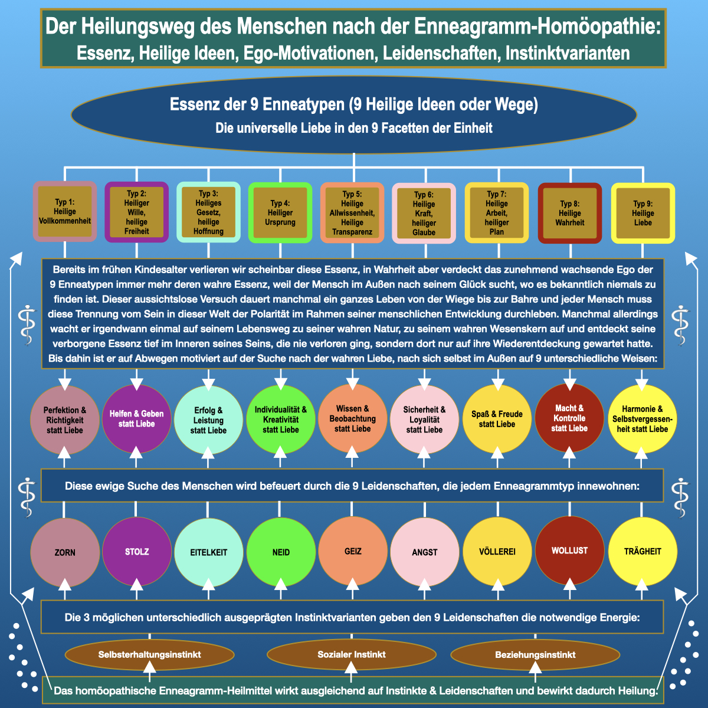
      </div>

      <div class="vb-section" style="max-width:100%;">

        <div class="vb-typ">
          <h3 class="vb-typ__head"><span class="vb-typ__nr">Ausgangspunkt</span> Die Essenz</h3>
          <p class="vb-typ__text">Der Heilungsweg beginnt nicht bei Symptomen, nicht bei Diagnosen und auch nicht bei Verhalten. Er beginnt bei etwas, das im medizinischen Alltag oft gemieden wird, weil es sich nicht messen l\xe4sst: bei der Essenz des Menschen. Gemeint ist damit kein abstraktes Ideal, sondern eine konkrete innere Qualit\xe4t des Seins &ndash; eine grundlegende Weise, wie ein Mensch urspr\xfcnglich in der Welt verankert ist. Diese Essenz ist nicht individuell im psychologischen Sinn, sondern archetypisch. Sie zeigt sich in neun Grundformen, neun Zug\xe4ngen zur Wirklichkeit, neun Weisen, Liebe zu verk\xf6rpern. Diese Essenz geht nicht verloren. Sie wird \xfcberlagert.</p>
        </div>

        <div class="vb-typ">
          <h3 class="vb-typ__head"><span class="vb-typ__nr">Die \xdcberlagerung</span> Entstehung des Egos</h3>
          <p class="vb-typ__text">In dem Moment, in dem das Kind erf\xe4hrt, dass sein Sein nicht bedingungslos gen\xfcgt, beginnt eine Verschiebung. Das innere Erleben trennt sich vom \xe4u\xdferen Leben. Statt aus dem Sein heraus zu handeln, beginnt der Mensch, sich \xfcber Anpassung, Leistung, R\xfcckzug, Kontrolle oder Verschmelzung zu regulieren. Das ist kein moralisches Versagen, sondern ein neurobiologisch und entwicklungspsychologisch plausibler Schutzmechanismus. Das Enneagramm beschreibt diesen Prozess nicht wertend, sondern pr\xe4zise.</p>
          <p class="vb-typ__text">Was dabei entsteht, ist das Ego &ndash; nicht als narzisstische Karikatur, sondern als funktionales Konstrukt. Es organisiert Wahrnehmung, Motivation und Handlung entlang eines zentralen Mangelerlebens. Jede Enneagrammstruktur sucht etwas im Au\xdfen, das im Inneren scheinbar verloren ging: Ordnung, Anerkennung, Identit\xe4t, Wissen, Sicherheit, Freiheit, Macht oder Frieden. Diese Suche ist von Anfang an zum Scheitern verurteilt, weil sie am falschen Ort stattfindet.</p>
        </div>

        <div class="vb-typ">
          <h3 class="vb-typ__head"><span class="vb-typ__nr">Die Leidenschaften</span> Fixierungen des Nervensystems</h3>
          <p class="vb-typ__text">Aus dieser Fehlorientierung entstehen die typischen Leidenschaften. Der Begriff wird oft missverstanden. Es geht nicht um Emotionen im engeren Sinn, sondern um chronische innere Spannungszust\xe4nde, um Fixierungen des Nervensystems. Zorn, Stolz, Neid, Angst oder Tr\xe4gheit sind keine Charakterschw\xe4chen, sondern energetische Dauermuster. Sie treiben an, verengen die Wahrnehmung und halten das System stabil &ndash; solange die urspr\xfcngliche Essenz nicht wieder zug\xe4nglich ist. In der klinischen Realit\xe4t begegnen sie uns als Symptome, als Konflikte, als Ersch\xf6pfung, als psychosomatische Dynamiken.</p>
        </div>

        <div class="vb-typ">
          <h3 class="vb-typ__head"><span class="vb-typ__nr">Der hom\xf6opathische Ansatz</span> Resonanz statt Symptombehandlung</h3>
          <p class="vb-typ__text">Hom\xf6opathie arbeitet seit jeher nicht prim\xe4r gegen Symptome, sondern mit Resonanz. Sie adressiert das Lebendige im Menschen, nicht die Pathologie als isoliertes Objekt. Die Enneagramm-Hom\xf6opathie verbindet diese Sichtweise mit einer differenzierten Typologie des Bewusstseins. Das Heilmittel wirkt nicht gegen Zorn oder Angst, sondern auf das energetische Gleichgewicht zwischen Instinkt, Leidenschaft und Essenz.</p>
          <p class="vb-typ__text">Besonders relevant sind dabei die Instinktvarianten. Selbsterhaltung, Sozialit\xe4t und Beziehung sind keine Zusatzmerkmale, sondern die energetischen Tr\xe4ger der Leidenschaften. Sie bestimmen, wo ein Mensch seinen Schwerpunkt setzt, wo er \xfcberkompensiert und wo er am verletzlichsten ist. Zwei Menschen mit demselben Enneagrammtyp k\xf6nnen klinisch v\xf6llig unterschiedlich erscheinen, weil ihre Instinktstruktur eine andere ist.</p>
        </div>

        <div class="vb-typ">
          <h3 class="vb-typ__head"><span class="vb-typ__nr">Was Heilung bedeutet</span> F\xfchrung zur\xfcckgeben</h3>
          <p class="vb-typ__text">Heilung bedeutet in diesem Modell nicht, das Ego zu zerst\xf6ren oder Leidenschaften zu unterdr\xfccken. Das w\xe4re naiv und therapeutisch kontraproduktiv. Heilung hei\xdft, die F\xfchrung schrittweise zur\xfcckzugeben &ndash; weg vom reflexhaften Reagieren, hin zu einer inneren Pr\xe4senz, die wieder Wahlm\xf6glichkeiten er\xf6ffnet. Die sogenannten heiligen Ideen sind dabei keine metaphysischen Konzepte, sondern korrigierende Wahrnehmungsweisen. Sie zeigen, wie Realit\xe4t jenseits der egoischen Verzerrung erlebt werden kann. Nicht als Ziel, sondern als Erinnerung.</p>
          <p class="vb-typ__text">Der Weg dorthin ist kein linearer Entwicklungsplan und keine spirituelle Erfolgsgeschichte. Er ist br\xfcchig, oft unbequem und konfrontierend. Er nimmt den Menschen ernst, ohne ihn zu schonen. Wer liebgewonnene Selbstbilder aufgibt, Sicherheiten verliert und das eigene Leiden nicht l\xe4nger rechtfertigt, \xf6ffnet sich f\xfcr eine Ver\xe4nderung, die von innen kommt.</p>
        </div>

        <div style="border-top:1px solid var(--line);padding-top:1.6rem;margin-top:1rem;">
          <p class="vb-intro">Die Enneagramm-Hom\xf6opathie versteht Krankheit als Ausdruck einer inneren Entfremdung &ndash; nicht im romantischen Sinn, sondern als reale, erfahrbare Spaltung zwischen Wesen und Leben. Das Heilmittel unterst\xfctzt nicht die Anpassung an ein dysfunktionales Gleichgewicht, sondern f\xf6rdert eine Reorganisation von innen. Wenn das gelingt, ver\xe4ndern sich Symptome oft bei\xe4ufig. Nicht, weil sie bek\xe4mpft wurden, sondern weil sie ihren Sinn verloren haben.</p>
        </div>

        <div style="border-left:3px solid var(--gold);padding:.9rem 1.1rem;margin:1.8rem 0;background:var(--paper);border-radius:0 8px 8px 0;">
          <p style="margin:0;font-size:.92rem;color:var(--ink);line-height:1.8;font-style:italic;">Das ist kein schneller Weg. Und er ist nicht f\xfcr jeden. Aber er ist konsequent. Und er ist ehrlich.</p>
        </div>

      </div>
      ${relatedLinks([
        {route:"leidenschaft-und-wunde", label:"Leidenschaft & Wunde"},
        {route:"wunden", label:"Wunden & Schutzstrategien"},
        {route:"bewusstseinsuebungen", label:"Bewusstseinsübungen"},
      ])}
    </div>
  `);
}

function kindlicheTemperamentePage() {
  return shell(`
    ${pageHeader("kindliche-temperamente")}
    <section class="narrow">
      <p class="eyebrow">Schaubilder · Entwicklungspsychologie</p>
      <h1>Die neun kindlichen Temperamente</h1>
      <p class="lead-small">Die Chess-&amp;-Thomas-Studie (New Yorker Längsschnittstudie, ab 1956) untersuchte unabhängig vom Enneagramm kindliche Temperamente von Geburt an. Sie zeigt: Diese Grundanlagen sind angeboren und spiegeln sich in den neun Enneagrammtypen wider.</p>
      <div class="psycho-img-wrap" style="margin-top:1.5rem;">
        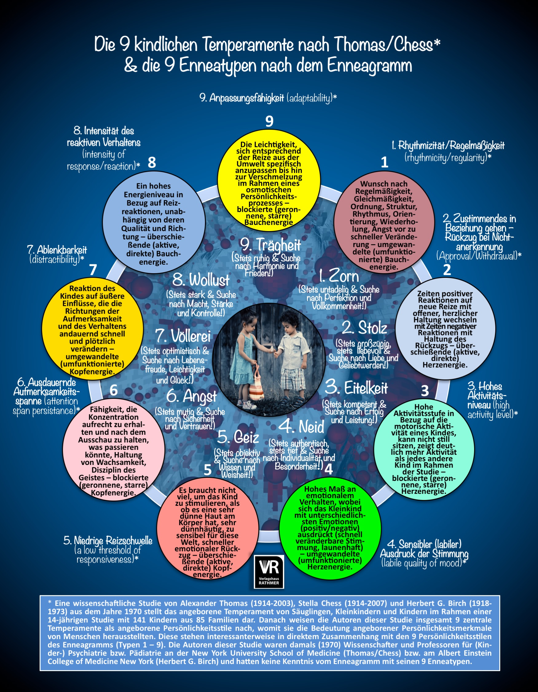
      </div>
      ${relatedLinks([
        {route:"kindheitsperspektiven", label:"Kindheitsperspektiven"},
        {route:"kindheit", label:"Kindheit"},
        {route:"wunden", label:"Wunden & Schutzstrategien"},
      ])}
    </section>
  `);
}

function kindheitsperspektivenPage() {
  return shell(`
    ${pageHeader("kindheitsperspektiven")}
    <section class="narrow">
      <p class="eyebrow">Schaubilder · Kindheitsperspektiven</p>
      <h1>Die subjektiven Wahrnehmungen der 9 Enneagrammtypen in ihrer Kindheit</h1>
      <p class="lead-small">Wie hat jeder Enneagrammtyp seine Kindheit erlebt? Diese Übersicht zeigt die typischen Kindheitsperspektiven — die prägenden subjektiven Wahrnehmungen, die das spätere Denken, Fühlen und Verhalten tief beeinflussen.</p>
      <div class="psycho-img-wrap" style="margin-top:1.5rem;">
        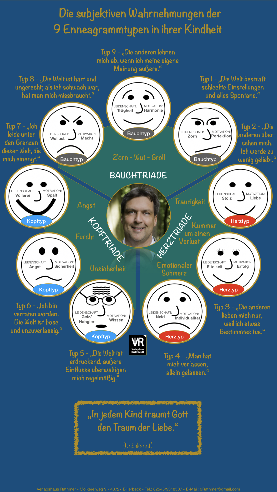
      </div>
      ${bookTip("in-der-tiefe-der-zeit", "Wie prägende Kindheitserfahrungen die Persönlichkeitsstruktur jedes Enneagrammtyps formen.", "In der Tiefe der Zeit")}
      ${relatedLinks([
        {route:"kindliche-temperamente", label:"Kindliche Temperamente"},
        {route:"kindheit", label:"Kindheit"},
        {route:"kerneberzeugungen", label:"Kernüberzeugungen"},
      ])}
    </section>
  `);
}

function kerneberzeugungPage() {
  return shell(`
    ${pageHeader("kerneberzeugungen")}
    <section class="narrow">
      <p class="eyebrow">Schaubilder · Kernüberzeugungen</p>
      <h1>Die tiefsten Kernüberzeugungen der 9 Enneagrammtypen</h1>
      <p class="lead-small">Jeder Enneagrammtyp trägt eine oft unbewusste Grundüberzeugung über sich und die Welt in sich &ndash; sie entstand in der Kindheit und steuert seither das Denken, Fühlen und Handeln. Diese Übersicht zeigt die Kernüberzeugung jedes der 9 Typen im Zusammenhang mit der Triaden-Struktur.</p>
      <div class="psycho-img-wrap" style="margin-top:1.5rem;">
        
      </div>
      ${bookTip("du-bist-nicht-dein-zweifel", "Kernüberzeugungen erkennen und loslassen &ndash; ein Wegweiser zu innerer Freiheit für alle 9 Typen.", "Du bist nicht dein Zweifel")}
      ${relatedLinks([
        {route:"kindheitsperspektiven", label:"Kindheitsperspektiven"},
        {route:"wunden", label:"Wunden & Schutzstrategien"},
        {route:"ego-fixierungen", label:"Ego-Fixierungen"},
      ])}
    </section>
  `);
}

function lebensgluckPage() {
  return shell(`
    ${pageHeader("lebensgluck")}
    <section class="narrow">
      <p class="eyebrow">Schaubilder · Lebensglück</p>
      <h1>Wahres Lebensglück</h1>
      <p class="lead-small">An welcher Stelle werden die 9 Enneagrammtypen ihr wahres Lebensglück finden? Nicht im Außen &ndash; sondern dort, wo die tiefste Sehnsucht jedes Typs wirklich beheimatet ist: in sich selbst.</p>
      <div class="psycho-img-wrap" style="margin-top:1.5rem;">
        
      </div>
      ${relatedLinks([
        {route:"intrinsisches-verlangen", label:"Intrinsisches Verlangen"},
        {route:"frustrationen", label:"Frustrationen"},
        {route:"frieden-schliessen", label:"Frieden schließen"},
      ])}
    </section>
  `);
}

function basisemotionenPage() {
  return shell(`
    ${pageHeader("basisemotionen")}
    <section class="narrow">
      <p class="eyebrow">Schaubilder · Psychologie</p>
      <h1>Vermeidung der Basis-Emotionen</h1>
      <p class="lead-small">Jeder Mensch verdrängt bestimmte Emotionen &ndash; nicht aus Schwäche, sondern weil sie gesellschaftlich nicht anerkannt sind. Jeder Enneagrammtyp entwickelt dafür charakteristische psychologische Abwehrmechanismen. Was nicht gefühlt werden darf, manifestiert sich: Krankheiten und Symptome sind oft Ausdruck nicht gelebter Emotionen.</p>
      <div class="psycho-img-wrap" style="margin-top:1.5rem;">
        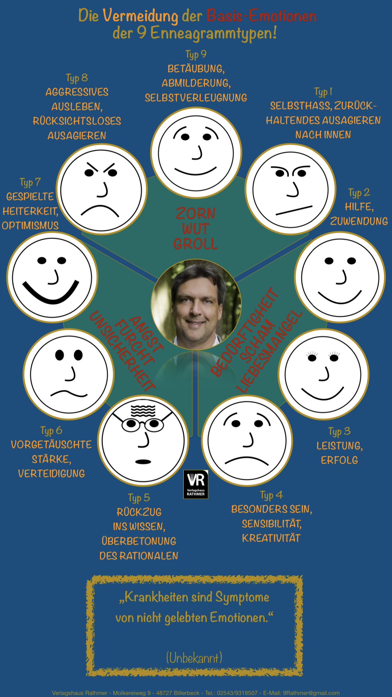
      </div>
      ${relatedLinks([
        {route:"frustrationen", label:"Frustrationen"},
        {route:"mangelgefuehle", label:"Mangelgefühle"},
        {route:"angst-essenz", label:"Angst-Essenz"},
      ])}
    </section>
  `);
}

function intrinsischesVerlangenPage() {
  return shell(`
    ${pageHeader("intrinsisches-verlangen")}
    <section class="narrow">
      <p class="eyebrow">Schaubilder · Tiefenpsychologie</p>
      <h1>Intrinsisches Verlangen</h1>
      <p class="lead-small">Was streben die 9 Enneagrammtypen innerlich (meistens unbewusst) an? Diese Übersicht zeigt das tiefe intrinsische Verlangen hinter jedem Typ &ndash; und warum die Suche danach im Außen letztlich ins Leere führt.</p>
      <div class="psycho-img-wrap" style="margin-top:1.5rem;">
        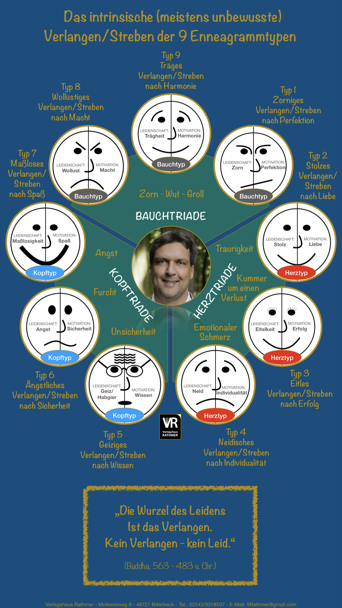
      </div>
      ${relatedLinks([
        {route:"mangelgefuehle", label:"Mangelgefühle"},
        {route:"lebensgluck", label:"Lebensglück"},
        {route:"antriebskraefte", label:"Antriebskräfte"},
      ])}
    </section>
  `);
}

function frustrationenPage() {
  return shell(`
    ${pageHeader("frustrationen")}
    <section class="narrow">
      <p class="eyebrow">Schaubilder · Tiefenpsychologie</p>
      <h1>Frustrationen der 9 Enneagrammtypen</h1>
      <p class="lead-small">Warum sind die 9 Enneagrammtypen frustriert und demotiviert? Die Antwort ist einfacher, als man denkt: Jeder Typ sucht außen, was er nur innen finden kann.</p>
      <div class="psycho-img-wrap" style="margin-top:1.5rem;">
        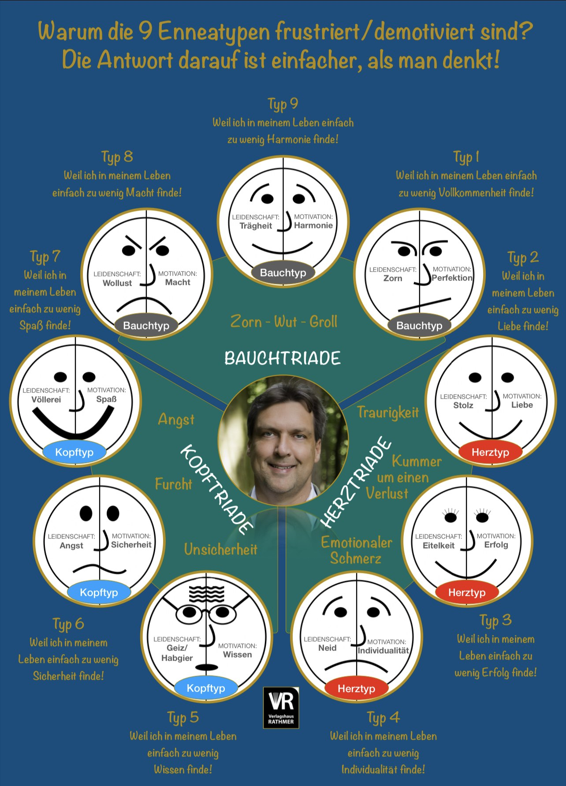
      </div>
      ${relatedLinks([
        {route:"basisemotionen", label:"Basisemotionen"},
        {route:"mangelgefuehle", label:"Mangelgefühle"},
        {route:"intrinsisches-verlangen", label:"Intrinsisches Verlangen"},
      ])}
    </section>
  `);
}

function horneyTriadenPage() {
  return shell(`
    ${pageHeader("horney-triaden")}
    <div style="max-width:680px;margin:0 auto;padding:0 1rem 3rem;">
      <p class="eyebrow">Schaubilder \xb7 Diagnostik</p>
      <h1 class="section-title">Horney-Triaden und Subtypen</h1>
      <p class="psycho-intro">Diese \xdcbersicht verbindet zwei hochkompatible Ebenen der Pers\xf6nlichkeitsdiagnostik: die Horney-Triaden als grundlegende Bewegungsrichtungen des Menschen zur Welt und die instinktiven Subtypen als Lebensfelder, in denen sich diese Bewegung konkret zeigt. Zusammengenommen entsteht eine differenzierte, beobachtbare und im Profiling \xe4u\xdferst hilfreiche Landkarte.</p>

      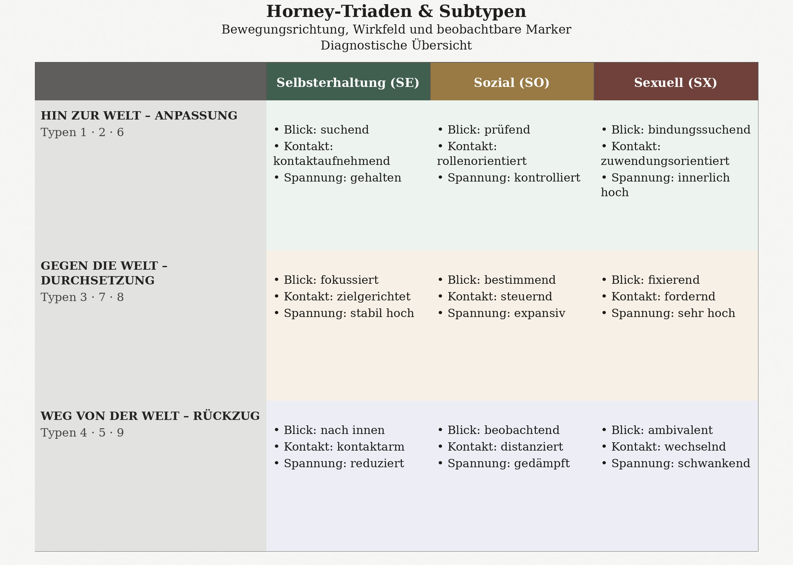

      <div class="vb-section" style="max-width:100%;">

        <h2 style="font-size:1.05rem;font-weight:700;margin-bottom:1rem;color:var(--ink);">1. Die Horney-Triaden: Bewegungsrichtungen zur Welt</h2>
        <p class="vb-intro">Karen Horney beschrieb drei fundamentale Weisen, wie Menschen unter innerer Spannung mit der Welt in Beziehung treten. Diese Bewegungsrichtungen sind keine bewussten Entscheidungen, sondern tief eingeprägte Orientierungen, die sich früh ausbilden und das gesamte Beziehungsgeschehen prägen.</p>

        <div class="vb-typ">
          <h3 class="vb-typ__head"><span class="vb-typ__nr">Hin zur Welt</span> &ndash; Anpassung (Typen 1, 2, 6)</h3>
          <p class="vb-typ__text">Menschen dieser Triade suchen Sicherheit, Orientierung und Zugeh\xf6rigkeit durch Anpassung. Sie bewegen sich auf die Welt zu, reagieren auf Erwartungen, Regeln oder Bed\xfcrfnisse anderer und versuchen, durch korrektes, hilfreiches oder loyales Verhalten Stabilit\xe4t herzustellen. Die Aufmerksamkeit richtet sich stark nach au\xdfen &ndash; auf das, was gefordert ist oder erwartet werden k\xf6nnte.</p>
        </div>
        <div class="vb-typ">
          <h3 class="vb-typ__head"><span class="vb-typ__nr">Gegen die Welt</span> &ndash; Durchsetzung (Typen 3, 7, 8)</h3>
          <p class="vb-typ__text">Hier zeigt sich eine expansive Bewegung: Die Welt wird nicht prim\xe4r beantwortet, sondern gestaltet, beeinflusst oder dominiert. Menschen dieser Triade treten mit Energie, Zielgerichtetheit und Durchsetzungskraft auf. Sie suchen Wirkung, Handlungsspielraum und Kontrolle. Die innere Spannung ist meist hoch, wird jedoch aktiv nach au\xdfen getragen &ndash; Aktivit\xe4t erzeugt Entlastung.</p>
        </div>
        <div class="vb-typ">
          <h3 class="vb-typ__head"><span class="vb-typ__nr">Weg von der Welt</span> &ndash; R\xfcckzug (Typen 4, 5, 9)</h3>
          <p class="vb-typ__text">Diese Bewegungsrichtung ist durch Distanzierung gekennzeichnet. Menschen dieser Triade regulieren innere Spannung, indem sie sich zur\xfcckziehen &ndash; innerlich, emotional oder k\xf6rperlich. Die Welt wird beobachtet, nicht unmittelbar beantwortet. Was nach au\xdfen oft ruhig wirkt, birgt innerlich komplexe Prozesse.</p>
        </div>
        <p class="vb-anmerkung"><em>Diese drei Bewegungsrichtungen sind keine Enneagramm-Zentren (Bauch, Herz, Kopf), sondern eine relationale Perspektive: Wie bewege ich mich zur Welt, wenn Spannung entsteht?</em></p>

        <div style="border-top:1px solid var(--line);padding-top:1.6rem;margin-top:1.5rem;">
          <h2 style="font-size:1.05rem;font-weight:700;margin-bottom:1rem;color:var(--ink);">2. Die Subtypen: Das Lebensfeld der Bewegung</h2>
          <p class="vb-intro">Die Subtypen beschreiben nicht <em>wie</em> jemand sich bewegt, sondern <em>wo</em> diese Bewegung prim\xe4r stattfindet.</p>
          <div style="display:grid;gap:.5rem;font-size:.85rem;margin:.8rem 0 .4rem;line-height:1.65;">
            <div><span style="font-weight:700;color:var(--copper);">Selbsterhaltung (SE)</span> &ndash; Fokus auf Sicherheit, K\xf6rper, Ressourcen und Stabilit\xe4t. Die Bewegung zeigt sich in Fragen von Versorgung, Schutz und Belastbarkeit.</div>
            <div><span style="font-weight:700;color:var(--copper);">Sozial (SO)</span> &ndash; Im Vordergrund stehen Rollen, Zugeh\xf6rigkeit, Verantwortung und Position im System. Die Bewegung entfaltet sich im Kontext von Gruppen und Strukturen.</div>
            <div><span style="font-weight:700;color:var(--copper);">Sexuell (SX)</span> &ndash; Ausgerichtet auf Intensit\xe4t, Bindung und Resonanz. Die Bewegung ist stark polarisiert, emotional aufgeladen und beziehungszentriert.</div>
          </div>
        </div>

        <div style="border-top:1px solid var(--line);padding-top:1.6rem;margin-top:1.5rem;">
          <h2 style="font-size:1.05rem;font-weight:700;margin-bottom:1rem;color:var(--ink);">3. Beobachtbare Marker im Profiling</h2>
          <p class="vb-intro">Die \xdcbersicht benennt bewusst beobachtbare Marker &ndash; keine inneren Motive oder biografischen Erkl\xe4rungen. Das ist entscheidend f\xfcr Profiling-Arbeit.</p>
          <div style="display:grid;gap:.5rem;font-size:.85rem;margin:.8rem 0;line-height:1.65;padding:.8rem 1rem;background:var(--paper);border-radius:8px;border:1px solid var(--line);">
            <div><span style="font-weight:700;">Blickqualit\xe4t:</span> Wohin gehen Aufmerksamkeit und Energie spontan? Suchend, pr\xfcfend, fokussiert, nach innen gerichtet, fixierend oder ambivalent.</div>
            <div><span style="font-weight:700;">Kontaktstil:</span> Wie wird Beziehung aufgenommen, gehalten oder vermieden? Kontaktaufnehmend, rollenorientiert, zielgerichtet, steuernd, distanziert oder wechselnd.</div>
            <div><span style="font-weight:700;">Spannungsregulation:</span> Wie wird innere Spannung verarbeitet? Gehalten, kontrolliert, expansiv, reduziert, ged\xe4mpft oder schwankend.</div>
          </div>
          <p class="vb-intro">Diese Marker sind direkt wahrnehmbar, wiederholbar und unabh\xe4ngig von Selbstaussagen. Typisierung geschieht nicht \xfcber Geschichten &ndash; sondern \xfcber Pr\xe4senz.</p>
        </div>

        <div style="border-top:1px solid var(--line);padding-top:1.6rem;margin-top:1.5rem;">
          <h2 style="font-size:1.05rem;font-weight:700;margin-bottom:1rem;color:var(--ink);">4. Zusammenspiel von Triade und Subtyp im Kontakt</h2>
          <p class="vb-intro">Erst das Zusammenspiel beider Ebenen erzeugt diagnostische Sch\xe4rfe. Ein Typ 6 in der Selbsterhaltung zeigt Anpassung v\xf6llig anders als ein Typ 6 im sexuellen Subtyp. Die Triade beschreibt die Bewegungsrichtung, der Subtyp beschreibt das Feld, die Marker machen es sichtbar.</p>

          ${[
            {
              titel:"Hin zur Welt &ndash; Anpassung (Typen 1, 2, 6)",
              kontext:"In einer Gruppe stellt jemand eine neue Aufgabe vor. Personen dieser Triade pr\xfcfen innerlich sofort: Was wird hier erwartet? Was ist richtig? Was wird gebraucht? Der Blick ist suchend oder pr\xfcfend, die Aufmerksamkeit nach au\xdfen gerichtet.",
              beispiele:[
                ["SE","Meldet sich nicht sofort, schaut aber aufmerksam, nickt, stellt kl\xe4rende Fragen. Kontakt entsteht vorsichtig, Spannung wird gehalten.","Bevor ich etwas sage, will ich sicher sein, dass es passt."],
                ["SO","Rasch sichtbares Rollenbewusstsein. \xdcbernahme von Verantwortung, Strukturierung, Erinnerung an Regeln. Spannung wird kontrolliert.","Ich schaue, wie wir das gemeinsam gut hinbekommen."],
                ["SX","Der Blick sucht Bindung. Kontakt ist pers\xf6nlich, zuwendungsorientiert, manchmal intensiv. Spannung ist innerlich hoch, emotional sp\xfcrbar.","Ich m\xf6chte gesehen werden &ndash; und Sie sehen."],
              ]
            },
            {
              titel:"Gegen die Welt &ndash; Durchsetzung (Typen 3, 7, 8)",
              kontext:"In einer Diskussion entsteht Unkl\xe4rheit. Noch w\xe4hrend andere \xfcberlegen, ergreifen Menschen dieser Triade das Wort, setzen einen Punkt oder lenken das Gespr\xe4ch aktiv.",
              beispiele:[
                ["SE","Der Blick ist fokussiert, der Kontakt zielgerichtet. Sachlich, effizient. Spannung ist stabil hoch, aber kontrolliert.","Lassen Sie uns entscheiden und weitermachen."],
                ["SO","Es wird gef\xfchrt. Der Blick ist bestimmend, der Kontakt steuernd. Die Person \xfcbernimmt sichtbar die Richtung f\xfcr die Gruppe.","So machen wir es &ndash; das ist jetzt dran."],
                ["SX","Der Blick kann fixierend wirken, der Kontakt fordernd. Spannung sehr hoch, direkt in Beziehung ausgetragen.","Ich m\xf6chte, dass jetzt reagiert wird."],
              ]
            },
            {
              titel:"Weg von der Welt &ndash; R\xfcckzug (Typen 4, 5, 9)",
              kontext:"In einem intensiven Gespr\xe4ch lehnt sich jemand zur\xfcck, wird ruhiger, schaut weg oder nach innen. Die Beteiligung wirkt reduziert, ist aber innerlich aktiv.",
              beispiele:[
                ["SE","Der Blick geht nach innen, der Kontakt ist minimal. Spannung wird reduziert, der K\xf6rper zieht sich zur\xfcck.","Ich brauche Raum, um das f\xfcr mich zu sortieren."],
                ["SO","Beobachtet die Gruppe, beteiligt sich selektiv. Kontakt distanziert, Spannung ged\xe4mpft.","Ich sehe, was hier passiert, ohne mich einzumischen."],
                ["SX","Der Blick ist ambivalent, der Kontakt wechselnd. N\xe4he und R\xfcckzug wechseln sich ab, Spannung schwankt.","Ich bin pr\xe4sent &ndash; und dann wieder nicht."],
              ]
            },
          ].map(t => `
            <div class="vb-typ" style="margin-bottom:1.4rem;">
              <h3 class="vb-typ__head"><span class="vb-typ__nr" style="font-size:.75rem;">${t.titel.split(" &ndash; ")[0]}</span> ${t.titel.split(" &ndash; ").slice(1).join(" &ndash; ")}</h3>
              <p style="font-size:.83rem;color:var(--muted);line-height:1.6;margin:.4rem 0 .8rem;font-style:italic;">${t.kontext}</p>
              ${t.beispiele.map(([sub,obs,zitat]) => `
                <div style="margin-bottom:.7rem;padding:.6rem .8rem;background:var(--paper);border-radius:6px;border-left:2px solid var(--copper);">
                  <div style="font-size:.78rem;font-weight:700;color:var(--copper);margin-bottom:.25rem;">${sub}</div>
                  <div style="font-size:.82rem;line-height:1.6;margin-bottom:.25rem;">${obs}</div>
                  <div style="font-size:.8rem;font-style:italic;color:var(--muted);">„${zitat}"</div>
                </div>
              `).join("")}
            </div>
          `).join("")}
        </div>

        <div style="border-top:1px solid var(--line);padding-top:1.6rem;margin-top:1rem;">
          <h2 style="font-size:1.05rem;font-weight:700;margin-bottom:1rem;color:var(--ink);">5. Bedeutung f\xfcr Lehre und Praxis</h2>
          <p class="vb-intro">Diese \xdcbersicht ist keine Typisierungsabk\xfcrzung, sondern eine Orientierungshilfe f\xfcr pr\xe4zise Wahrnehmung. Sie hilft, vorschnelle Deutungen zu vermeiden, Verwechslungen zwischen Typen zu reduzieren und feiner zwischen \xe4hnlichen Erscheinungsbildern zu differenzieren.</p>
          <p class="vb-intro">Sie erm\xf6glicht, Unterschiede nicht nur kognitiv zu erkl\xe4ren, sondern ph\xe4nomenologisch erfahrbar zu machen: durch Beobachtung, Vergleich und Schulung der Wahrnehmung. Wer beginnt, auf Blick, Kontakt und Spannungsregulation zu achten, erkennt die Muster oft innerhalb weniger Minuten &ndash; noch bevor Inhalte ausgesprochen werden.</p>
        </div>

        <div style="border-left:3px solid var(--gold);padding:.9rem 1.1rem;margin:1.8rem 0;background:var(--paper);border-radius:0 8px 8px 0;">
          <p style="margin:0;font-size:.92rem;color:var(--ink);line-height:1.8;font-style:italic;">Zwei Menschen k\xf6nnen dasselbe sagen &ndash; aber v\xf6llig unterschiedlich schauen, in Kontakt gehen und Spannung regulieren. Genau diese Unterschiede sind im Enneagramm-Profiling entscheidend. Die Grafik liefert die Landkarte, die Praxisbeispiele machen sie lebendig.</p>
        </div>

      </div>
      ${relatedLinks([
        {route:"enneagramm-profiling", label:"Enneagramm-Profiling"},
        {route:"subtypen-schaubilder", label:"Subtypen-Schaubilder"},
        {route:"bedeutung-27-subtypen", label:"Bedeutung der 27 Subtypen"},
      ])}
    </div>
  `);
}

function illusionenPage() {
  return shell(`
    ${pageHeader("illusionen")}
    <section class="narrow">
      <p class="eyebrow">Schaubilder · Tiefenpsychologie</p>
      <h1>Illusionen der 9 Enneagrammtypen</h1>
      <p class="lead-small">Jeder Enneagrammtyp lebt einer charakteristischen Illusion nach — einer unbewussten Wahnvorstellung, die das Leben bestimmt. Was der Typ als erstrebenswert erlebt, ist in Wirklichkeit eine Privat-Wirklichkeit, die ihn gefangen hält.</p>
      <div class="psycho-img-wrap" style="margin-top:1.5rem;">
        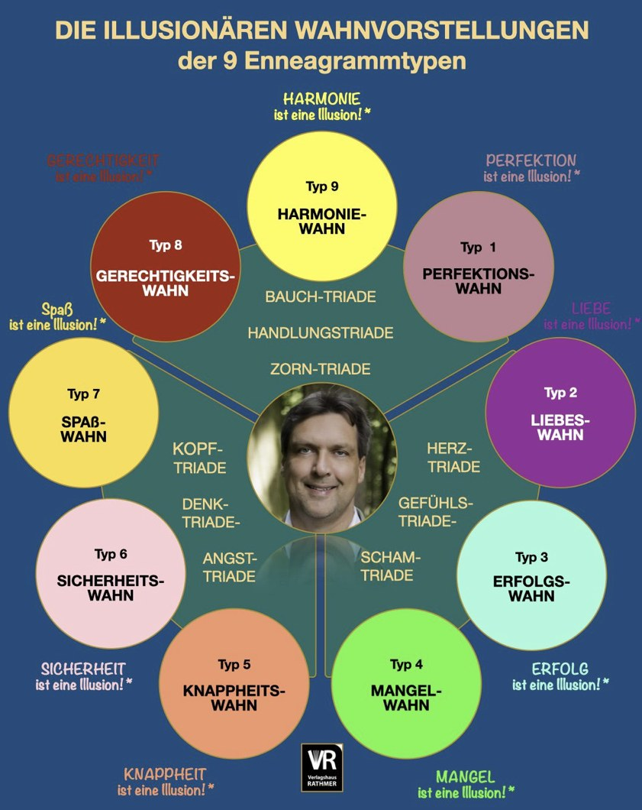
      </div>
      ${relatedLinks([
        {route:"wer-wir-sind", label:"Wer wir sind"},
        {route:"ego-fixierungen", label:"Ego-Fixierungen"},
        {route:"schutzdefizite", label:"Schutzdefizite"},
      ])}
    </section>
  `);
}

function schutzdefizitePage() {
  return shell(`
    ${pageHeader("schutzdefizite")}
    <section class="narrow">
      <p class="eyebrow">Schaubilder · Triaden</p>
      <h1>Schutz-Defizite der Triaden</h1>
      <p class="lead-small">Bauch-, Herz- und Kopftriade tragen je ein charakteristisches Schutz-Defizit: die Bauchtriade fürchtet Einschränkung, die Herztriade Liebesverlust, die Kopftriade Vertrauensverlust. Diese unbewussten Defizite prägen das Verhalten aller drei Typen einer Triade.</p>
      <div class="psycho-img-wrap" style="margin-top:1.5rem;">
        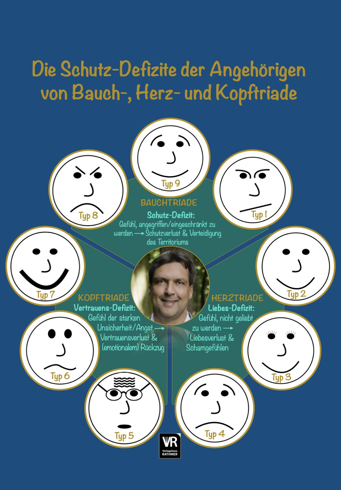
      </div>
      <div style="margin:2.5rem 0 0;">
        <h2 style="font-family:'EB Garamond',serif;font-size:1.4rem;color:var(--anthracite);margin:0 0 0.75rem;">Der Typ ist Schutz, nicht Identität</h2>
        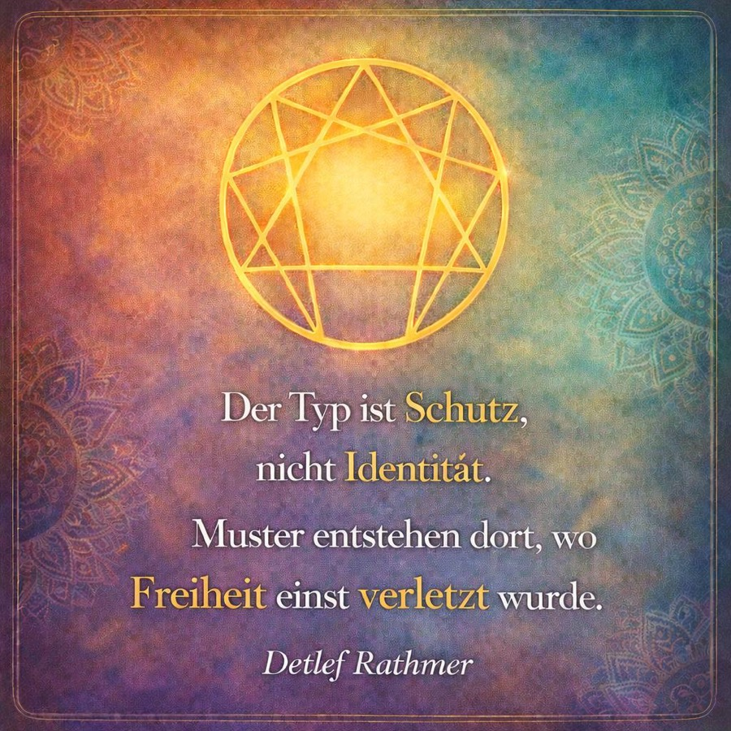
        <p style="font-size:0.95rem;line-height:1.75;color:var(--anthracite);margin:1rem 0;">Dieser Satz trifft den Kern dessen, was Schutz-Defizite eigentlich sind. Der Enneagrammtyp ist keine Charaktereigenschaft, die man hat wie eine Haarfarbe. Er ist eine Reaktion &ndash; eine früh entwickelte Strategie, um mit einer Welt umzugehen, die sich an einem entscheidenden Punkt nicht sicher angefühlt hat.</p>
        <p style="font-size:0.95rem;line-height:1.75;color:var(--anthracite);margin:1rem 0;">Die Bauchtriade entwickelte Muster rund um Einschränkung: Wo Autonomie einmal in Frage gestellt wurde, entstand das Bedürfnis, sich zu behaupten, zu kontrollieren oder sich zu entziehen. Die Herztriade entwickelte Muster rund um Zuwendung: Wo Liebe an Bedingungen geknüpft schien, entstand das Bedürfnis, sich anzupassen, zu leisten oder aufzufallen. Die Kopftriade entwickelte Muster rund um Sicherheit: Wo Vertrauen einmal erschüttert wurde, entstand das Bedürfnis, zu analysieren, vorauszudenken oder sich abzusichern.</p>
        <p style="font-size:0.95rem;line-height:1.75;color:var(--anthracite);margin:1rem 0;">Diese Muster sind keine Fehler. Sie waren kluge Lösungen für echte Herausforderungen. Das Problem entsteht, wenn sie im Erwachsenenleben weiterhin automatisch aktiviert werden &ndash; auch dort, wo die ursprüngliche Bedrohung längst nicht mehr existiert. Den Typ zu erkennen bedeutet deshalb nicht, eine Schublade zu benennen. Es bedeutet, den Schutz sichtbar zu machen &ndash; und damit den ersten Schritt in Richtung Freiheit zu gehen.</p>
      </div>

      ${bookTip("wer-du-wirklich-bist-band-1", "Die neun Typen in ihrer Tiefe &ndash; Schutzmuster, Leidenschaften und der Weg zur Essenz.", "Wer du wirklich bist")}
      ${bookTip("code-der-persoenlichkeit", "Wie der Enneagrammtyp entsteht &ndash; und was er über unsere tiefsten Prägungen verrät.", "Der Code der Persönlichkeit")}
      ${bookTip("leidenschaft-und-heilung", "27 Subtypen: Leidenschaften, Schutzstrategien und Heilungswege aus der therapeutischen Praxis.", "Leidenschaft und Heilung")}
      ${relatedLinks([
        {route:"triadendefizite", label:"Triadendefizite"},
        {route:"grundformel", label:"Grundformel"},
        {route:"illusionen", label:"Illusionen"},
      ])}
    </section>
  `);
}

function lasterTugendenAffirmationenPage() {
  return shell(`
    ${pageHeader("laster-tugenden-affirmationen")}
    <section class="narrow">
      <p class="eyebrow">Schaubilder · Laster · Tugenden · Affirmationen</p>
      <h1>Laster, Tugenden & Affirmationen der 9 Enneagrammtypen</h1>
      <p class="lead-small">Jeder Enneagrammtyp hat ein charakteristisches Laster (die verdichtete Leidenschaft) und eine Tugend als heilsames Gegenstück. Die Affirmationen sprechen direkt das tiefste Bedürfnis jedes Typs an.</p>
      <div class="psycho-img-wrap" style="margin-top:1.5rem;">
        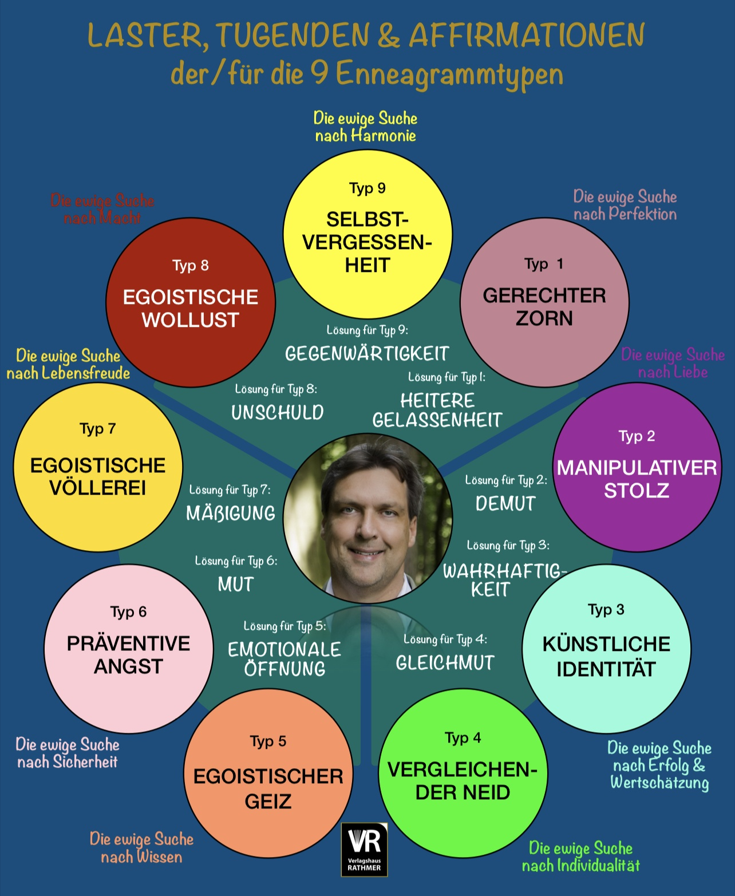
      </div>
      <h2 style="margin-top:2.5rem; font-size:1.2rem; text-align:center; letter-spacing:0.05em; color:var(--ink);">Affirmationen für die 9 Enneatypen</h2>
      <div style="margin-top:1rem; display:grid; grid-template-columns:1fr 1fr 1fr; gap:0.75rem; grid-auto-rows:1fr;">
        <div style="background:#c49090; border-radius:0.5rem; padding:0.9rem 0.75rem; text-align:center; font-weight:500; font-size:0.9rem; color:#3a1010; display:flex; flex-direction:column; align-items:center; justify-content:center; min-height:110px;">Typ 1<br><span style="font-weight:400; font-size:0.85rem;">Du bist ein wirklich guter Mensch!</span></div>
        <div style="background:#7a2d90; border-radius:0.5rem; padding:0.9rem 0.75rem; text-align:center; font-weight:500; font-size:0.9rem; color:#fff; display:flex; flex-direction:column; align-items:center; justify-content:center; min-height:110px;">Typ 2<br><span style="font-weight:400; font-size:0.85rem;">Ich bin so dankbar für deine Hilfe!</span></div>
        <div style="background:#9ee0d0; border-radius:0.5rem; padding:0.9rem 0.75rem; text-align:center; font-weight:500; font-size:0.9rem; color:#0a3028; display:flex; flex-direction:column; align-items:center; justify-content:center; min-height:110px;">Typ 3<br><span style="font-weight:400; font-size:0.85rem;">Du machst wirklich einen guten Job!</span></div>
        <div style="background:#70e030; border-radius:0.5rem; padding:0.9rem 0.75rem; text-align:center; font-weight:500; font-size:0.9rem; color:#1a3a00; display:flex; flex-direction:column; align-items:center; justify-content:center; min-height:110px;">Typ 4<br><span style="font-weight:400; font-size:0.85rem;">Ich schätze dich und deine authentische Wesensart sehr!</span></div>
        <div style="background:#e09060; border-radius:0.5rem; padding:0.9rem 0.75rem; text-align:center; font-weight:500; font-size:0.9rem; color:#3a1800; display:flex; flex-direction:column; align-items:center; justify-content:center; min-height:110px;">Typ 5<br><span style="font-weight:400; font-size:0.85rem;">Deine Wünsche und Bedürfnisse sind wirklich keine Belastung!</span></div>
        <div style="background:#f5c0d0; border-radius:0.5rem; padding:0.9rem 0.75rem; text-align:center; font-weight:500; font-size:0.9rem; color:#5a1a28; display:flex; flex-direction:column; align-items:center; justify-content:center; min-height:110px;">Typ 6<br><span style="font-weight:400; font-size:0.85rem;">Gott hat mit Sicherheit wunderbare Pläne mit dir!</span></div>
        <div style="background:#f8d820; border-radius:0.5rem; padding:0.9rem 0.75rem; text-align:center; font-weight:500; font-size:0.9rem; color:#3a2e00; display:flex; flex-direction:column; align-items:center; justify-content:center; min-height:110px;">Typ 7<br><span style="font-weight:400; font-size:0.85rem;">Dein Lebensglück liegt mir sehr am Herzen!</span></div>
        <div style="background:#8b2014; border-radius:0.5rem; padding:0.9rem 0.75rem; text-align:center; font-weight:500; font-size:0.9rem; color:#fff; display:flex; flex-direction:column; align-items:center; justify-content:center; min-height:110px;">Typ 8<br><span style="font-weight:400; font-size:0.85rem;">In deiner Gegenwart fühle ich mich immer so sicher, danke!</span></div>
        <div style="background:#d0dc28; border-radius:0.5rem; padding:0.9rem 0.75rem; text-align:center; font-weight:500; font-size:0.9rem; color:#303800; display:flex; flex-direction:column; align-items:center; justify-content:center; min-height:110px;">Typ 9<br><span style="font-weight:400; font-size:0.85rem;">Die Zeit mit dir ist immer sehr wertvoll für mich, danke!</span></div>
      </div>
      <div style="margin:2.5rem 0 0;">
        <h2 style="font-family:'EB Garamond',serif;font-size:1.4rem;color:var(--anthracite);margin:0 0 0.75rem;">Die Tugend ist schon da</h2>
        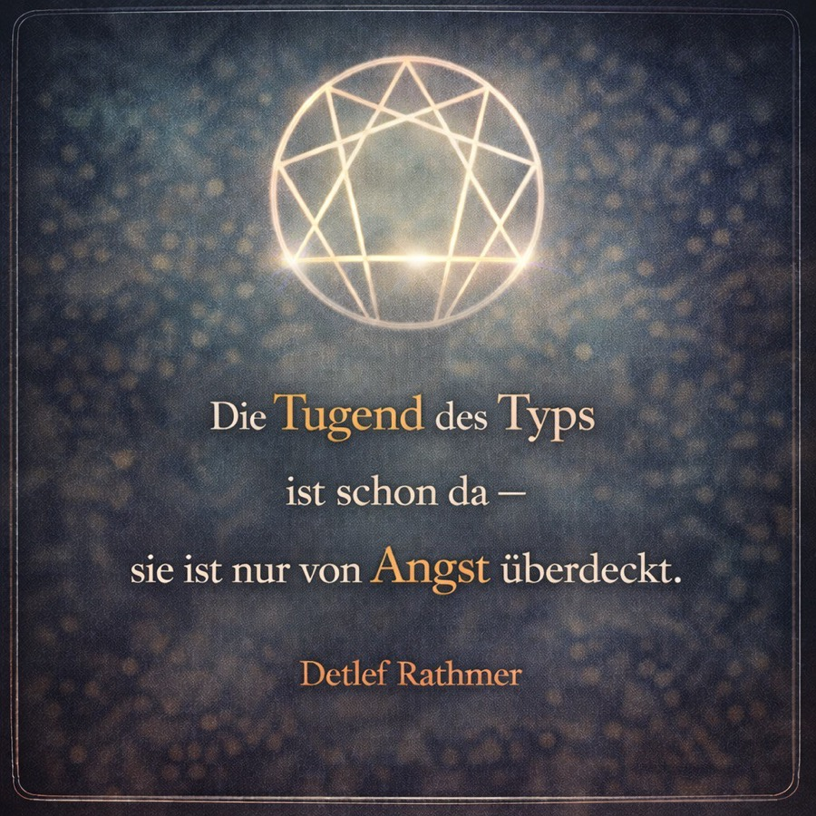
        <p style="font-size:0.95rem;line-height:1.75;color:var(--anthracite);margin:1rem 0;">Dieser Satz verändert die Art, wie man auf Laster und Tugenden schaut. Oft wird die Tugend als Ziel verstanden &ndash; als etwas, das man erst erreichen muss, wenn das Laster überwunden ist. Doch das Enneagramm deutet es anders: Die Tugend ist nicht das Gegenteil des Lasters. Sie ist das, was darunter liegt.</p>
        <p style="font-size:0.95rem;line-height:1.75;color:var(--anthracite);margin:1rem 0;">Typ 1 trägt die Gelassenheit schon in sich &ndash; verdeckt von dem Zwang, alles richtig machen zu müssen. Typ 4 trägt Gleichmut in sich &ndash; verdeckt von der Sehnsucht, etwas Besonderes sein zu müssen. Typ 8 trägt Unschuld in sich &ndash; verdeckt von der Angst, verletzlich zu wirken. Das Muster ist bei allen neun Typen dasselbe: Die Tugend ist keine Leistung. Sie ist das, was übrig bleibt, wenn die Angst nachlässt.</p>
        <p style="font-size:0.95rem;line-height:1.75;color:var(--anthracite);margin:1rem 0;">Das ist eine der tiefsten Aussagen des Enneagramms: Entwicklung bedeutet nicht, einen neuen Menschen zu erschaffen. Es bedeutet, freizulegen, was schon da ist &ndash; und was das Ego mit seinen Schutzstrategien bisher verborgen hat.</p>
      </div>

      ${bookTip("leidenschaft-und-heilung", "27 Subtypen &ndash; Leidenschaften, Tugenden und Heilungswege direkt aus der therapeutischen Praxis.", "Leidenschaft und Heilung")}
      ${relatedLinks([
        {route:"heilungsweg", label:"Heilungsweg"},
        {route:"leidenschaft-und-wunde", label:"Leidenschaft & Wunde"},
        {route:"spirituelle-uebungen", label:"Spirituelle Übungen"},
      ])}
    </section>
  `);
}

function spirituelleUebungenPage() {
  return shell(`
    ${pageHeader("spirituelle-uebungen")}
    <section class="narrow">
      <p class="eyebrow">Schaubilder · Spirituelle Praxis</p>
      <h1>Spezielle spirituelle Übungen für die 9 Enneagrammtypen</h1>
      <p class="lead-small">Jeder Enneagrammtyp hat seine eigene spirituelle Sehnsucht — und damit auch seine eigene spirituelle Übung. Diese Übersicht zeigt, welche innere Bewegung jeden Typ auf seinem Weg zur Selbstkenntnis trägt.</p>
      <div class="psycho-img-wrap" style="margin-top:1.5rem;">
        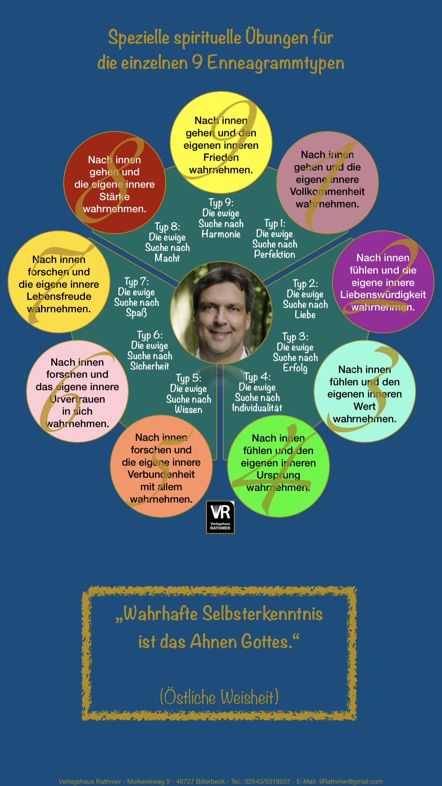
      </div>
      ${bookTip("7-wege-zu-dir-selbst-lebenskunst-fuer-den-alltag", "7 spirituelle Lebenskunst-Übungen für den Alltag &ndash; der ideale Begleiter zu dieser Übersicht.", "7 Wege zu Dir selbst")}
      ${bookTip("nichts-und-alles", "Stilles Buch über das Schauen nach innen &ndash; Bewusstsein, Raum und innere Freiheit.", "Nichts und Alles")}
      ${relatedLinks([
        {route:"bewusstseinsuebungen", label:"Bewusstseinsübungen"},
        {route:"heilungsweg", label:"Heilungsweg"},
        {route:"frieden-schliessen", label:"Frieden schließen"},
      ])}
    </section>
  `);
}

function weihnachtsgeschenkePage() {
  return shell(`
    ${pageHeader("weihnachtsgeschenke")}
    <section class="narrow">
      <p class="eyebrow">Schaubilder · Weihnachten</p>
      <h1>Die 9 Geschenke der Enneagrammtypen an die Welt</h1>
      <p class="lead-small">Jeder der 9 Enneagrammtypen bringt ein einzigartiges Geschenk mit — einen besonderen Beitrag, den er von Natur aus in die Welt trägt. Diese festliche Übersicht zeigt, was jeder Typ der Welt zu geben hat.</p>
      <div class="psycho-img-wrap" style="margin-top:1.5rem;">
        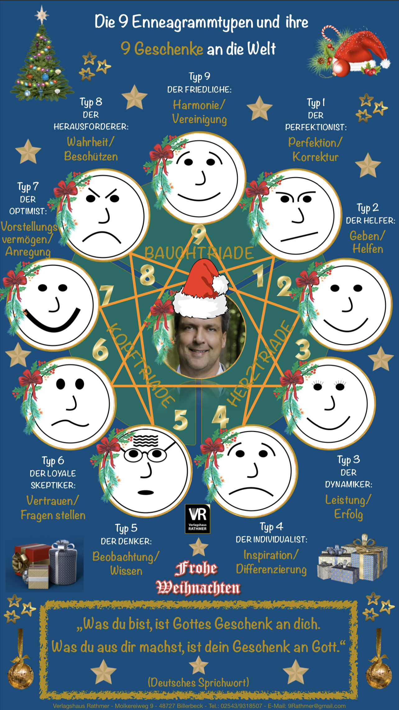
      </div>
      <div style="border-top:1px solid var(--line);margin-top:2rem;padding-top:1.8rem;">
        <h2 style="font-size:1.25rem;font-weight:700;margin-bottom:.6rem;">Weihnachtswünsche an alle 9 Enneagrammtypen</h2>
        <p class="lead-small" style="margin-bottom:1.2rem;">Zu Weihnachten darf die Maske einmal fallen. Dieser herzliche Wunsch richtet sich an jeden der 9 Typen — mit der Einladung, sich selbst ein Stück weit loszulassen.</p>
        <div class="psycho-img-wrap">
          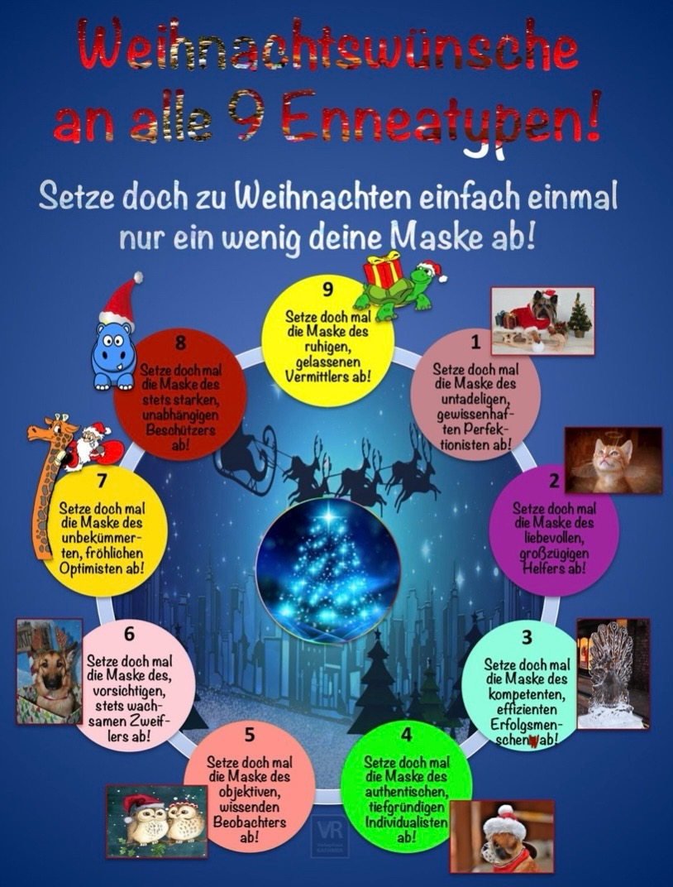
        </div>
      </div>
      ${bookTip("die-sprache-unserer-beziehungen", "Jeder Typ hat ein einzigartiges Geschenk für Beziehungen &ndash; entdecke die Sprache der Nähe.", "Die Sprache unserer Beziehungen")}
      ${relatedLinks([
        {route:"tierentsprechungen", label:"Tierentsprechungen"},
        {route:"obstsorten", label:"Obstsorten"},
        {route:"wer-wir-sind", label:"Wer wir sind"},
      ])}
    </section>
  `);
}

function wahrnehmungsstilePage() {
  return shell(`
    ${pageHeader("wahrnehmungsstile")}
    <section class="narrow">
      <p class="eyebrow">Schaubilder · Wahrnehmung</p>
      <h1>Die 9 Wahrnehmungsstile</h1>
      <p class="lead-small">Jeder Enneagrammtyp trägt eine eigene Brille &ndash; einen 40-Grad-Blickwinkel auf die Welt, geprägt von seiner Leidenschaft und Motivation. Diese Übersicht zeigt alle 9 universellen Sichtweisen auf einen Blick.</p>
      <div class="psycho-img-wrap" style="margin-top:1.5rem;">
        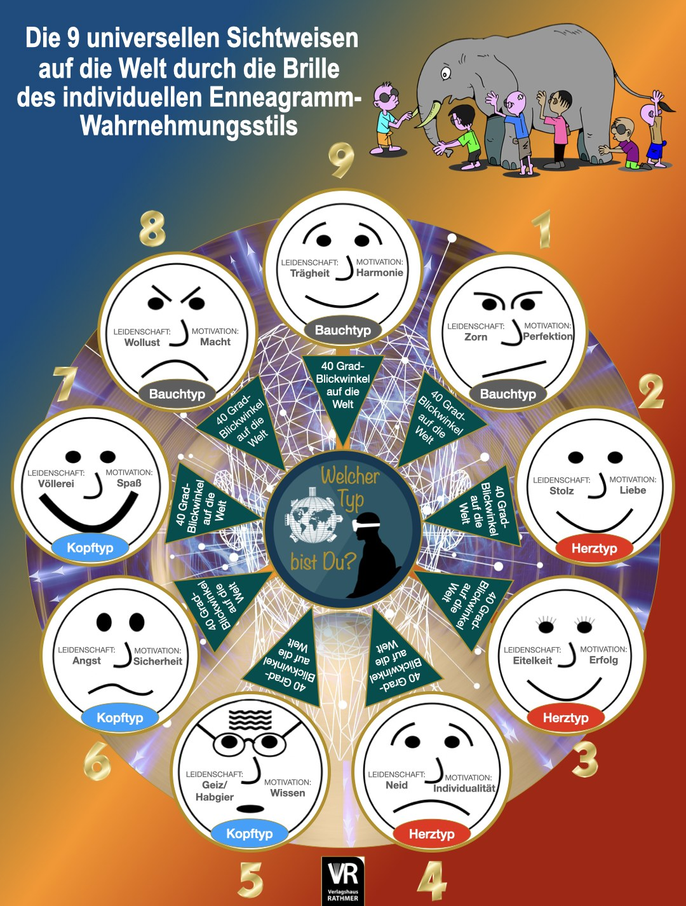
      </div>
      ${relatedLinks([
        {route:"aufmerksamkeitsfokus", label:"Aufmerksamkeitsfokus"},
        {route:"perspektiven", label:"Perspektiven"},
        {route:"zentren-weltwahrnehmung", label:"Zentren & Weltwahrnehmung"},
      ])}
    </section>
  `);
}

function bedrohungsszenarienPage() {
  return shell(`
    ${pageHeader("bedrohungsszenarien")}
    <section class="narrow">
      <p class="eyebrow">Schaubilder · Bedrohungsszenarien</p>
      <h1>Bedrohungsszenarien der 9 Enneagrammtypen</h1>
      <p class="lead-small">Jeder Enneagrammtyp reagiert auf ganz spezifische Bedrohungsszenarien — Situationen, die seine tiefste Grundangst berühren. Diese Übersicht zeigt symbolisch, was jeden der 9 Typen im Innersten bedroht und antreibt.</p>
      <div class="psycho-img-wrap" style="margin-top:1.5rem;">
        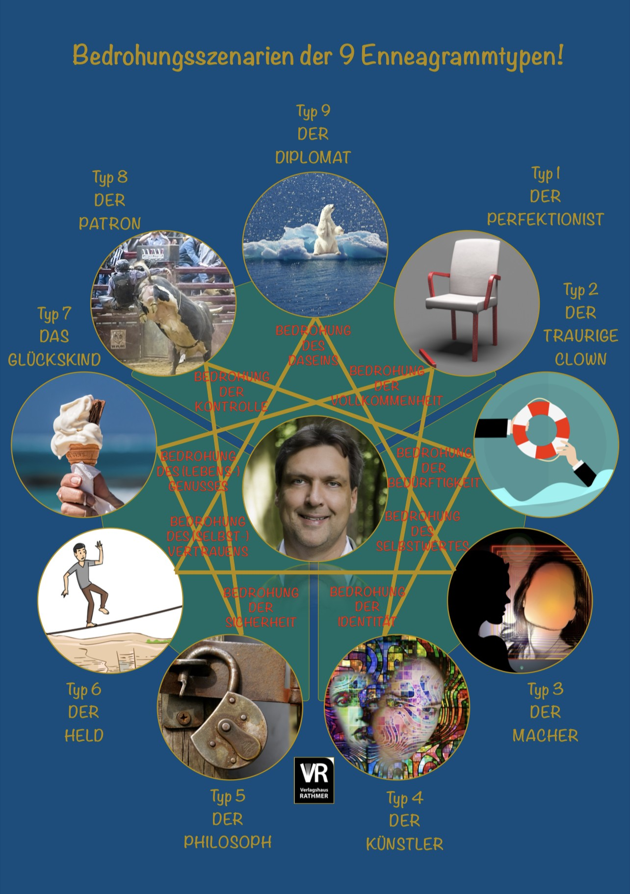
      </div>
      ${relatedLinks([
        {route:"empfindliche-punkte", label:"Empfindliche Punkte"},
        {route:"angst-essenz", label:"Angst-Essenz"},
        {route:"gaslighting-enneagramm", label:"Gaslighting & Enneagramm"},
      ])}
    </section>
  `);
}

function dialektischeStrukturPage() {
  return shell(`
    ${pageHeader("dialektische-struktur")}
    <section class="narrow">
      <p class="eyebrow">Schaubilder · Dialektische Struktur</p>
      <h1>Die dialektische Struktur der drei psychologischen Triaden des Enneagramms</h1>
      <p class="lead-small">Jeder der 9 Enneagrammtypen resultiert aus einer „Dialektik", die aus These, Antithese und Synthese der psychologischen Eigenschaften seiner Triade besteht. In jeder Triade wird einer der Typen diese charakteristische Eigenschaft <strong>überentwickeln</strong>, während einer sie <strong>unterentwickelt</strong> und der dritte den Bezug zu ihr <strong>verliert</strong>.</p>
      <div class="psycho-img-wrap" style="margin-top:1.5rem;">
        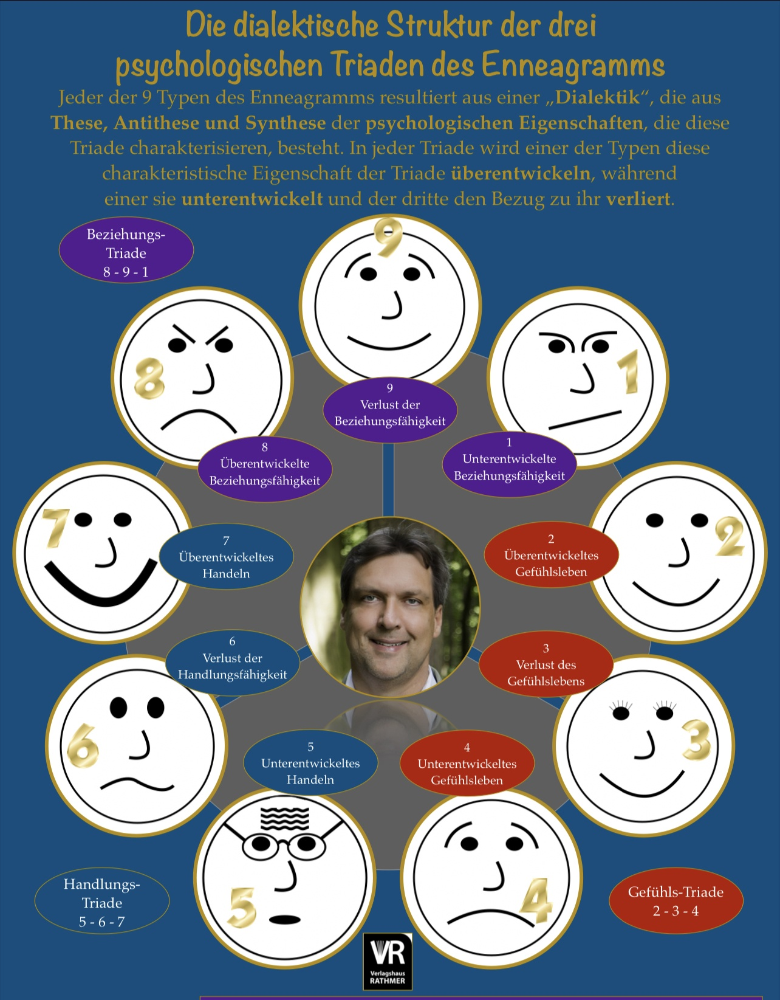
      </div>
      <div style="margin-top:2rem; display:flex; flex-direction:column; gap:1rem;">
        <div style="border-left:3px solid #7b5ea7; padding:0.75rem 1rem; background:color-mix(in srgb, #7b5ea7 6%, transparent); border-radius:0 0.5rem 0.5rem 0;">
          <strong style="color:#7b5ea7;">Beziehungs-Triade (8 · 9 · 1)</strong><br>
          Typ 8 hat die Fähigkeit, sich zur Umgebung in Beziehung zu setzen, <em>überentwickelt</em> und sieht sich als größer als alle anderen. Typ 9 <em>verliert</em> diese Fähigkeit weitgehend — er verschmilzt mit anderen, statt wirklich in Beziehung zu treten. Typ 1 hat sie <em>unterentwickelt</em>: Er ist dem Ideal gegenüber loyaler als den Menschen gegenüber.
        </div>
        <div style="border-left:3px solid #c0392b; padding:0.75rem 1rem; background:color-mix(in srgb, #c0392b 6%, transparent); border-radius:0 0.5rem 0.5rem 0;">
          <strong style="color:#c0392b;">Gefühls-Triade (2 · 3 · 4)</strong><br>
          Typ 2 hat seinen persönlichen Gefühlsausdruck weitgehend <em>verloren</em> und projiziert ein Bild. Typ 3 hat seinen Gefühlsausdruck zu wenig entwickelt (<em>unterentwickelt</em>) und zeigt ihn nur indirekt. Typ 4 <em>überentwickelt</em> ihn durch künstlerische Tätigkeit und äußere Lebensführung.
        </div>
        <div style="border-left:3px solid #c8a000; padding:0.75rem 1rem; background:color-mix(in srgb, #c8a000 6%, transparent); border-radius:0 0.5rem 0.5rem 0;">
          <strong style="color:#c8a000;">Handlungs-Triade (5 · 6 · 7)</strong><br>
          Typ 5 hat die Fähigkeit zum selbstständigen Handeln <em>unterentwickelt</em> — er braucht in einem kleineren Aktionsradius weniger externe Unterstützung. Typ 6 hat sie <em>überentwickelt</em>: Er wird hyperaktiv und manisch, bis er die Kontrolle verliert. Typ 7 <em>verliert</em> den Bezug zur ruhigen, fokussierten Handlung.
        </div>
      </div>
      ${relatedLinks([
        {route:"horney-triaden", label:"Horney-Triaden"},
        {route:"triadendefizite", label:"Triadendefizite"},
        {route:"grundformel", label:"Grundformel"},
      ])}
    </section>
  `);
}

function bewaeltigungsstrategiePage() {
  return shell(`
    ${pageHeader("bewaeltigungsstrategie")}
    <section class="narrow">
      <p class="eyebrow">Schaubilder · Bewältigungsstrategien</p>
      <h1>Die Bewältigungsstrategie-Triaden des Enneagramms</h1>
      <p class="lead-small">Das Enneagramm kennt drei grundlegende Bewältigungstriaden — Experten-, Optimisten- und Intensitäts-Triade. Zu jedem Primärtypus (den Typen auf dem gleichseitigen Dreieck 3·6·9) gibt es jeweils zwei Sekundärtypen, die in ihrem Bewältigungsstil sehr ähnlich erscheinen und daher häufig zu Verwechslungen führen.</p>
      <div class="psycho-img-wrap" style="margin-top:1.5rem;">
        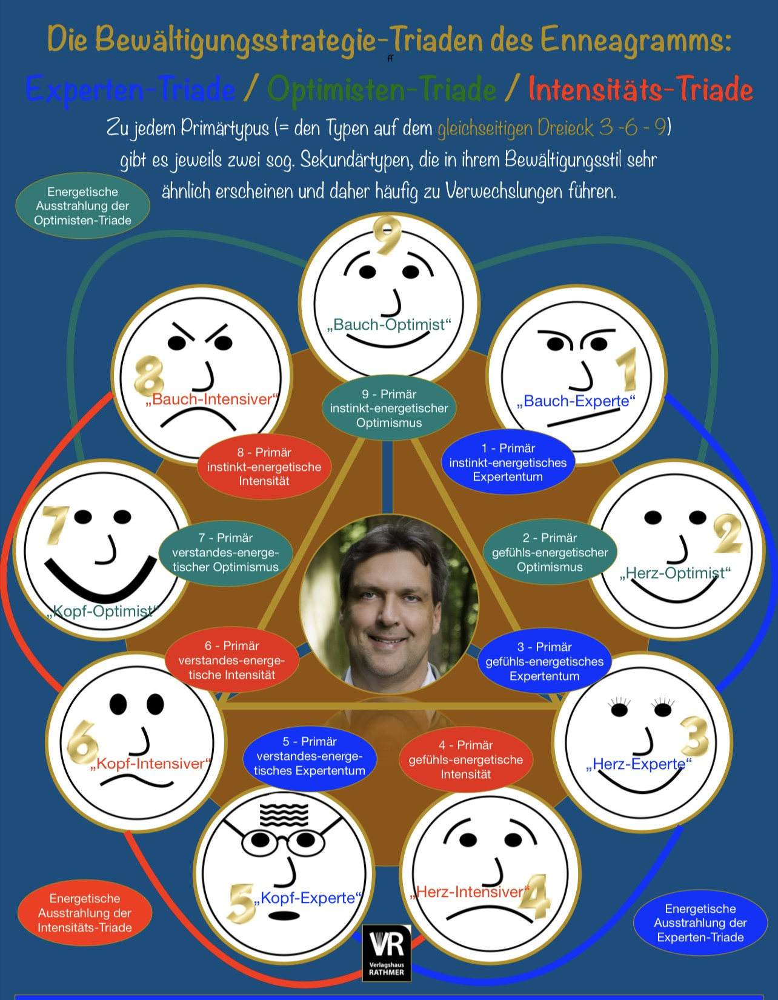
      </div>
      <div style="margin-top:2rem; display:flex; flex-direction:column; gap:1rem;">
        <div style="border-left:3px solid #3a86c8; padding:0.75rem 1rem; background:color-mix(in srgb, #3a86c8 6%, transparent); border-radius:0 0.5rem 0.5rem 0;">
          <strong style="color:#3a86c8;">Experten-Triade (1 · 3 · 5)</strong><br>
          Diese Typen schieben zur Bewältigung von Schwierigkeiten ihre Gefühle beiseite und bemühen sich besonders um Objektivität, Effizienz und Kompetenz. Gefühle und Bedürfnisse werden dabei zugunsten von Logik und Stärke zurückgestellt — sie halten sich eher an eigene Regeln zu ihrem Vorteil und agieren gern außerhalb der Regeln.
        </div>
        <div style="border-left:3px solid #2db87a; padding:0.75rem 1rem; background:color-mix(in srgb, #2db87a 6%, transparent); border-radius:0 0.5rem 0.5rem 0;">
          <strong style="color:#2db87a;">Optimisten-Triade (2 · 7 · 9)</strong><br>
          Diese Typen reagieren auf Probleme und Konflikte damit, dass sie eine möglichst positive Haltung selbst in unangenehmen Situationen einnehmen. Sie haben Probleme damit, ihre Schattenseiten einzugestehen — und konzentrieren sich zu sehr auf die Bedürfnisse anderer oder versuchen, allen Bedürfnissen gerecht zu werden.
        </div>
        <div style="border-left:3px solid #e63946; padding:0.75rem 1rem; background:color-mix(in srgb, #e63946 6%, transparent); border-radius:0 0.5rem 0.5rem 0;">
          <strong style="color:#e63946;">Intensitäts-Triade (4 · 6 · 8)</strong><br>
          Diese Typen reagieren auf Schwierigkeiten und Konflikte sehr emotional und intensiv. Sie trauen und misstrauen anderen zugleich — brauchen Zuwendung, benötigen aber gleichzeitig mehr Abstand und übernehmen tendenziell die Rolle des selbstbestimmten Beschützers.
        </div>
      </div>
      ${relatedLinks([
        {route:"dialektische-struktur", label:"Dialektische Struktur"},
        {route:"lookalike-typen", label:"Lookalike-Typen"},
        {route:"verwechslungen", label:"Verwechslungen"},
      ])}
    </section>
  `);
}

function verbaleSignalePage() {
  return shell(`
    ${pageHeader("verbale-signale")}
    <section class="narrow">
      <p class="eyebrow">Schaubilder · Verbale Signale</p>
      <h1>Verbale Signale der 9 Enneagrammtypen</h1>
      <p class="lead-small">Wie spricht jeder Enneagrammtyp? Verbale Signale — Wortwahl, Satzbau, Sprachrhythmus — sind wertvolle Typisierungsfaktoren. Diese Übersicht zeigt die charakteristischen verbalen Muster aller 9 Typen.</p>
      <div class="psycho-img-wrap" style="margin-top:1.5rem;">
        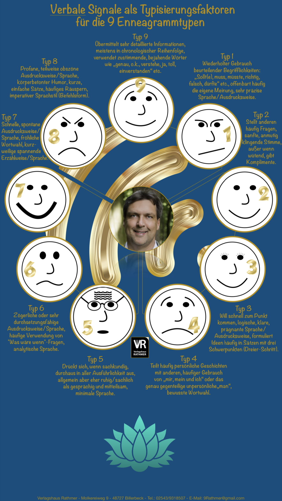
      </div>
      <p style="margin-top:1.5rem; text-align:center;">
        <a href="#nonverbale-signale" style="color:var(--copper); text-decoration:none; font-size:0.95rem;">
          Weiter zu: Nonverbale Signale →
        </a>
      </p>
      ${relatedLinks([
        {route:"nonverbale-signale", label:"Nonverbale Signale"},
        {route:"mikroimpressionen", label:"Mikroimpressionen"},
        {route:"aufmerksamkeitsfokus", label:"Aufmerksamkeitsfokus"},
      ])}
    </section>
  `);
}

function naehePage() {
  return shell(`
    ${pageHeader("naehe")}
    <div style="max-width:680px;margin:0 auto;padding:0 1rem 3rem;">
      <p class="eyebrow">Schaubilder \xb7 Beziehung</p>
      <h1 class="section-title">N\xe4he</h1>
      <p class="psycho-intro">N\xe4he entsteht nicht durch gemeinsame Interessen oder \xe4u\xdfere Harmonie. Sie entsteht an einem viel feineren Punkt: dort, wo wir beginnen, hinter das Verhalten eines Menschen zu schauen. Das Enneagramm er\xf6ffnet genau diesen Blick \xe2\x80&ldquo; und macht Begegnung in einer neuen Tiefe m\xf6glich.</p>
      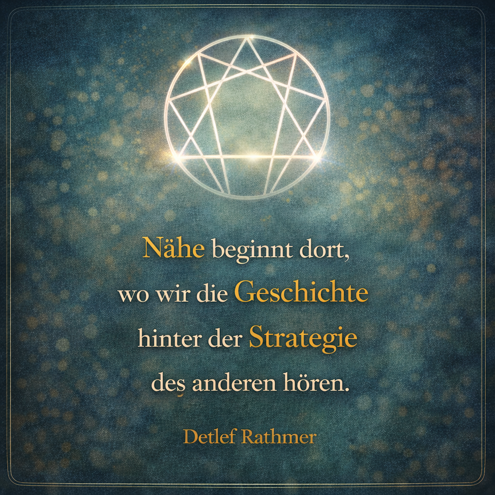
      <div class="vb-section" style="max-width:100%;">

        <h2 style="font-size:1.05rem;font-weight:700;margin-bottom:1rem;color:var(--ink);">N\xe4he beginnt dort, wo wir die Geschichte hinter der Strategie h\xf6ren</h2>
        <p class="vb-intro">Wir alle begegnen einander zun\xe4chst \xfcber Strategien. \xdcber das, was wir zeigen, wie wir sprechen, wie wir reagieren. Der eine argumentiert sachlich, der andere verteidigt sich, der n\xe4chste wird laut, ein anderer zieht sich zur\xfcck. Das Enneagramm beschreibt diese Strategien pr\xe4zise. Es zeigt, dass sie nicht zuf\xe4llig sind, sondern Ausdruck einer inneren Logik &ndash; einer Antwort auf fr\xfche Erfahrungen, auf \xdcberforderung, auf das Bed\xfcrfnis nach Anerkennung, Sicherheit, Autonomie oder Zugeh\xf6rigkeit.</p>
        <p class="vb-intro"><em>Doch keine Strategie ist das eigentliche Wesen eines Menschen. Sie ist eine Antwort. Hinter jeder Fixierung steht eine Geschichte. Hinter jedem Schutzmechanismus liegt etwas Verletzliches.</em></p>

        <div style="display:grid;gap:.55rem;margin:1.5rem 0;padding:1rem 1.1rem;background:var(--paper);border-radius:8px;border:1px solid var(--line);font-size:.85rem;line-height:1.6;">
          ${[
            [1,"versucht, die Welt zu verbessern","weil er fr\xfch gelernt hat, dass Fehler schwer wiegen"],
            [2,"k\xfcmmert sich um andere","nicht selten, weil er Liebe mit Bed\xfcrftigkeit verkn\xfcpft hat"],
            [3,"strebt nach Erfolg","weil Anerkennung einmal an Leistung gebunden war"],
            [4,"sucht Tiefe und Besonderheit","weil das Gef\xfchl des Andersseins nie ganz verschwunden ist"],
            [5,"zieht sich zur\xfcck","um inneren Raum zu bewahren, wenn \xe4u\xdfere Anforderungen \xfcberw\xe4ltigend waren"],
            [6,"pr\xfcft und sichert ab","weil Vertrauen nicht selbstverst\xe4ndlich war"],
            [7,"plant, erweitert, entkommt","um Schmerz nicht zu nahe kommen zu lassen"],
            [8,"wird stark","weil Schw\xe4che gef\xe4hrlich erschien"],
            [9,"harmonisiert","um Verbindung nicht zu verlieren"],
          ].map(([nr,was,weil]) => `
            <div><span style="font-weight:700;color:var(--copper);">Typ\xa0${nr}</span> ${was} &ndash; <span style="color:var(--muted);">${weil}.</span></div>
          `).join("")}
        </div>

        <p class="vb-intro">Wenn wir nur die Strategie sehen, reagieren wir auf der gleichen Ebene \xe2\x80&ldquo; wir kontern, argumentieren oder distanzieren uns. Wenn wir jedoch die Geschichte h\xf6ren, ver\xe4ndert sich etwas: Dann begegnen wir nicht mehr einer Strategie, sondern einem Menschen.</p>
        <p class="vb-intro">Gerade in den Subtypen wird das besonders deutlich. Ob jemand seine Grunddynamik prim\xe4r \xfcber Selbstbehauptung, \xfcber soziale Einbindung oder \xfcber intensive Bindung lebt, pr\xe4gt den Ausdruck enorm. Zwei Menschen desselben Typs k\xf6nnen v\xf6llig unterschiedlich erscheinen \xe2\x80&ldquo; und doch tragen beide dieselbe Grundbewegung in sich.</p>

        <div style="border-top:1px solid var(--line);padding-top:1.6rem;margin-top:1.8rem;">
          <h2 style="font-size:1.05rem;font-weight:700;margin-bottom:1rem;color:var(--ink);">Der unverletzbare Kern</h2>
          <p class="vb-intro">N\xe4he entsteht nicht dadurch, dass wir Strategien aufl\xf6sen. Sie entsteht dadurch, dass wir sie verstehen. Und manchmal reicht schon ein Moment wirklichen H\xf6rens, um Spannung zu verwandeln.</p>
          <p class="vb-intro">Das Enneagramm beschreibt unsere Muster. Aber es beschreibt nicht unser Wesen. Es zeigt die Form, die wir angenommen haben, um zu \xfcberleben. Doch unter dieser Form liegt etwas Unverformtes, Stilles, Reines, Zeitloses. Etwas, das nie besch\xe4digt wurde \xe2\x80&ldquo; der Kern, der unver\xe4nderlich in uns ruht.</p>
          <p class="vb-intro">Wenn wir beginnen, die Geschichte hinter der Strategie eines anderen zu h\xf6ren, geschieht oft etwas \xdcberraschendes: Wir begegnen nicht nur seiner Verletzlichkeit \xe2\x80&ldquo; wir begegnen auch seiner W\xfcrde. Und manchmal erkennen wir darin unsere eigene.</p>
        </div>

        <div style="border-top:1px solid var(--line);padding-top:1.6rem;margin-top:1.5rem;">
          <h2 style="font-size:1.05rem;font-weight:700;margin-bottom:1rem;color:var(--ink);">Reifung durch Stille</h2>
          <p class="vb-intro">N\xe4he ist kein emotionales Verschmelzen und keine psychologische Technik. N\xe4he ist ein Bewusstseinsakt. Ein Moment, in dem wir uns entscheiden, tiefer zu schauen. Reifung bedeutet dabei nicht, die Strategie des anderen zu korrigieren oder die eigene Fixierung zu bek\xe4mpfen \xe2\x80&ldquo; sondern Schritt f\xfcr Schritt durch sie hindurchzuschauen. Mit Geduld. Mit Milde. Mit der Bereitschaft, hinter jeder H\xe4rte eine Geschichte zu vermuten.</p>
          <p class="vb-intro">Was bleibt, wenn die Strategien weicher werden, ist nicht Leere. Es ist Pr\xe4senz. Eine offene Weite, in der Begegnung m\xf6glich wird \xe2\x80&ldquo; nicht als Rolle, nicht als Spiel, sondern als wirkliche Begegnung.</p>
        </div>

        <div style="border-left:3px solid var(--gold);padding:.9rem 1.1rem;margin:2rem 0;background:var(--paper);border-radius:0 8px 8px 0;">
          <p style="margin:0 0 .6rem;font-size:.92rem;color:var(--ink);line-height:1.8;font-style:italic;">Nicht schneller zu verstehen. Nicht kl\xfcger zu analysieren. Nicht richtiger zu reagieren. Sondern stiller zu werden.</p>
          <p style="margin:0 0 .6rem;font-size:.92rem;color:var(--ink);line-height:1.8;font-style:italic;">Ein wenig langsamer zu schauen. Ein wenig l\xe4nger zuzuh\xf6ren. Ein wenig weicher im Urteil zu sein.</p>
          <p style="margin:0;font-size:.92rem;color:var(--ink);line-height:1.8;font-style:italic;">In diesem Raum gibt es keine Typen mehr. Keine Strategien. Keine Rollen. Nur zwei Menschen, die einander f\xfcr einen Moment wirklich wahrnehmen.</p>
        </div>

        <p class="vb-anmerkung"><em>Vielleicht ist das die tiefste Form von N\xe4he: Nicht verstanden zu werden \xe2\x80&ldquo; sondern gesehen. Und vielleicht ist genau das der Anfang von Heilung.</em></p>

      </div>
      ${relatedLinks([
        {route:"beziehungen", label:"Beziehungen"},
        {route:"empfindliche-punkte", label:"Empfindliche Punkte"},
        {route:"frieden-schliessen", label:"Frieden schließen"},
      ])}
    </div>
  `);
}

function nonverbaleSignalePage() {
  return shell(`
    ${pageHeader("nonverbale-signale")}
    <section class="narrow">
      <p class="eyebrow">Schaubilder · Nonverbale Signale</p>
      <h1>Nonverbale Signale der 9 Enneagrammtypen</h1>
      <p class="lead-small">Körpersprache, Mimik, Gestik und Haltung verraten viel über den Enneagrammtyp eines Menschen. Diese Übersicht zeigt die typischen nonverbalen Signale aller 9 Typen als weitere Typisierungsfaktoren.</p>
      <div class="psycho-img-wrap" style="margin-top:1.5rem;">
        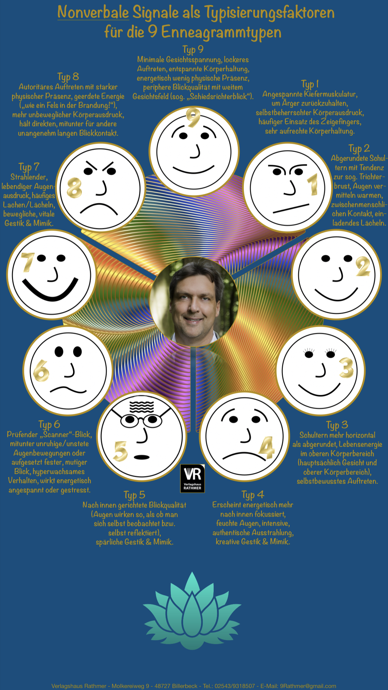
      </div>
      <p style="margin-top:1.5rem; text-align:center;">
        <a href="#verbale-signale" style="color:var(--copper); text-decoration:none; font-size:0.95rem;">
          ← Zurück zu: Verbale Signale
        </a>
      </p>
      ${relatedLinks([
        {route:"verbale-signale", label:"Verbale Signale"},
        {route:"mikroimpressionen", label:"Mikroimpressionen"},
        {route:"enneagramm-profiling", label:"Enneagramm-Profiling"},
      ])}
    </section>
  `);
}

function egoPersoenlichkeitPage() {
  return shell(`
    ${pageHeader("ego-persoenlichkeit")}
    <section class="narrow">
      <p class="eyebrow">Schaubilder · Ego-Persönlichkeit</p>
      <h1>Die Entwicklung der Ego-Persönlichkeit der 9 Enneagrammtypen</h1>
      <p class="lead-small">Die 9 Enneagrammtypen besitzen im Kern eine spezifische Ego-Persönlichkeitsstruktur, die implizit ein fundamentales Misstrauen gegenüber der Realität beinhaltet. Durch das Versagen der haltenden Umwelt fehlt bereits dem Kind das Urvertrauen — was zur Abtrennung vom Sein und zur Ego-Aktivierung führt, in deren Rahmen die Person lernt, sich „sicher" zu fühlen. Das Enneagramm zeigt die verschiedenen Varianten auf, wie sich das Ego der einzelnen Typen entwickelt, um mit den Erschütterungen, Brüchen und Unterbrechungen der haltenden Umwelt umzugehen.</p>
      <div class="psycho-img-wrap" style="margin-top:1.5rem;">
        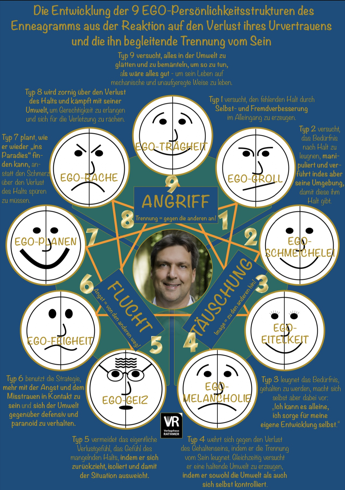
      </div>
      <div style="margin:2.5rem 0 0;">
        <h2 style="font-family:'EB Garamond',serif;font-size:1.4rem;color:var(--anthracite);margin:0 0 0.75rem;">Das Ego in Bewegung &ndash; und der Raum dahinter</h2>
        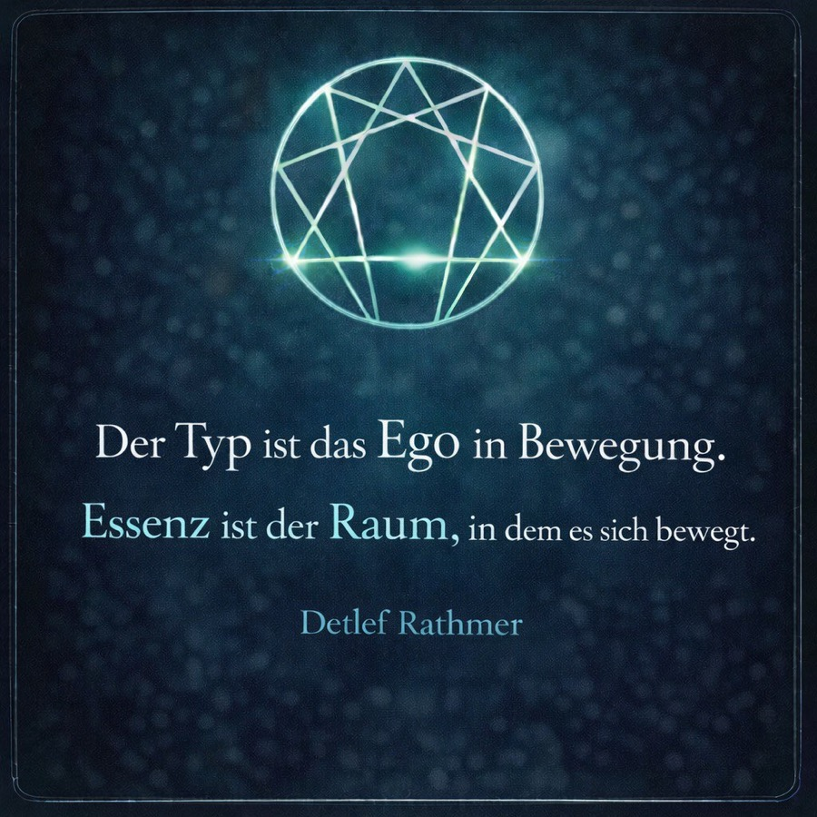
        <p style="font-size:0.95rem;line-height:1.75;color:var(--anthracite);margin:1rem 0;">Dieser Satz beschreibt in zwei Zeilen, was viele Seiten Theorie nur annähernd fassen: Der Enneagrammtyp ist kein festes Wesen &ndash; er ist ein Prozess. Er ist das Ego im aktiven Vollzug seiner Schutzmechanismen, Überzeugungen und Reaktionsmuster. Der Typ bewegt sich ständig: er sucht, meidet, bewertet, kontrolliert, gibt, zieht sich zurück.</p>
        <p style="font-size:0.95rem;line-height:1.75;color:var(--anthracite);margin:1rem 0;">Die Essenz hingegen ist kein weiterer Zustand, den man erst erreichen muss. Sie ist der Raum, in dem all das stattfindet &ndash; stiller, weiter, unveränderlicher. Sie ist nicht das Ziel jenseits des Egos, sondern der Hintergrund, vor dem das Ego erscheint. Wer das spürt, erlebt oft zum ersten Mal: Es gibt etwas in mir, das nicht reagiert. Das einfach da ist.</p>
        <p style="font-size:0.95rem;line-height:1.75;color:var(--anthracite);margin:1rem 0;">Das Enneagramm zeigt die Bewegungen des Egos mit großer Präzision. Aber sein eigentlicher Beitrag liegt darin, dass es durch dieses Zeigen den Blick für den Raum öffnet, in dem diese Bewegungen stattfinden. Den Typ kennen heißt: das Ego beim Namen nennen. Die Essenz spüren heißt: erkennen, dass man mehr ist als dieser Name.</p>
      </div>

      ${bookTip("der-code-deiner-persoenlichkeit", "Schritt für Schritt den eigenen Typ erkennen und Wege zur persönlichen Entwicklung finden.", "Der Code deiner Persönlichkeit")}
      ${relatedLinks([
        {route:"grundformel", label:"Grundformel"},
        {route:"kerneberzeugungen", label:"Kernüberzeugungen"},
        {route:"antriebskraefte", label:"Antriebskräfte"},
      ])}
    </section>
  `);
}

function dreiZentrenPage() {
  return shell(`
    ${pageHeader("drei-zentren")}
    <section class="narrow">
      <p class="eyebrow">Schaubilder · Drei Zentren</p>
      <h1>Die drei Intelligenzzentren der 9 Enneagrammtypen</h1>
      <p class="lead-small">Kopf, Herz und Bauch — jeder Enneagrammtyp nutzt diese drei Intelligenzzentren auf seine eigene Weise. Diese Übersicht zeigt, wie sich die Nutzung im schlechtesten und im besten Fall unterscheidet.</p>
      <div class="psycho-img-wrap" style="margin-top:1.5rem;">
        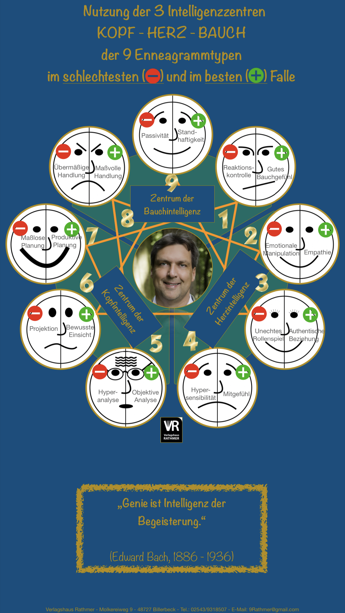
      </div>
      ${bookTip("wer-du-wirklich-bist-band-1", "Das Enneagramm mit Kopf, Herz und Bauch &ndash; die drei Zentren und ihre Bedeutung für deine Persönlichkeit.", "Wer du wirklich bist &ndash; Band 1")}
      <p style="margin-top:1.5rem; text-align:center;">
        <a href="#zentren-weltwahrnehmung" style="color:var(--copper); text-decoration:none; font-size:0.95rem;">
          Weiter zu: Weltwahrnehmung in den drei Zentren →
        </a>
      </p>
      ${relatedLinks([
        {route:"zentren-weltwahrnehmung", label:"Zentren & Weltwahrnehmung"},
        {route:"koerperregulation", label:"Körperregulation"},
        {route:"energetische-bewegungen", label:"Energetische Bewegungen"},
      ])}
    </section>
  `);
}

function zentrenWeltwahrnehmungPage() {
  return shell(`
    ${pageHeader("zentren-weltwahrnehmung")}
    <section class="narrow">
      <p class="eyebrow">Schaubilder · Drei Zentren</p>
      <h1>Weltwahrnehmung in den drei Intelligenzzentren</h1>
      <p class="lead-small">Wie nehmen die 9 Enneagrammtypen die Welt wahr — innerhalb ihrer drei Intelligenzzentren? Diese Übersicht zeigt die Reaktionen im positiven und negativen Sinne sowie die drei Intelligenzzentrum-Pyramiden.</p>
      <div class="psycho-img-wrap" style="margin-top:1.5rem;">
        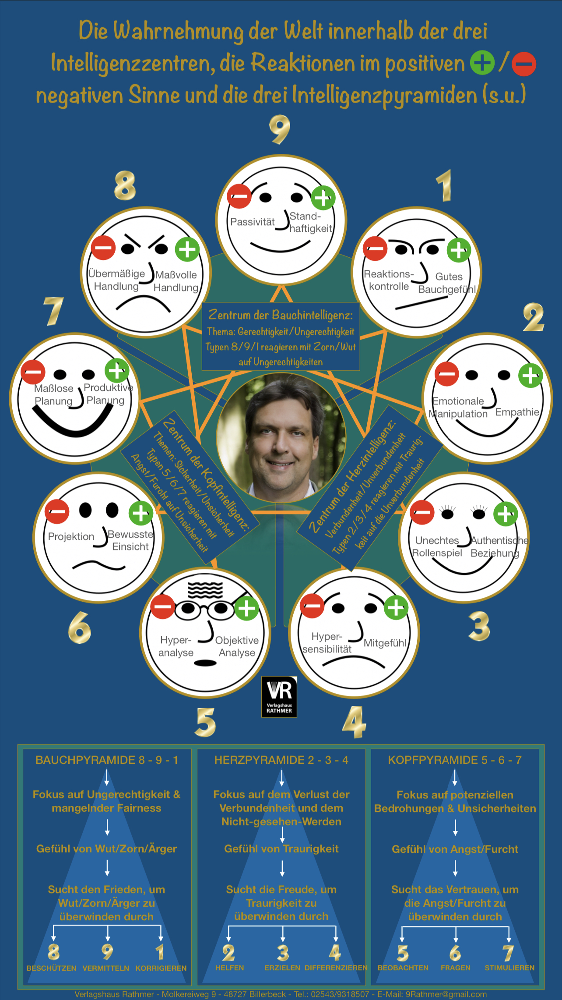
      </div>
      <p style="margin-top:1.5rem; text-align:center;">
        <a href="#drei-zentren" style="color:var(--copper); text-decoration:none; font-size:0.95rem;">
          ← Zurück zu: Drei Zentren
        </a>
      </p>
      ${relatedLinks([
        {route:"drei-zentren", label:"Drei Zentren"},
        {route:"koerperregulation", label:"Körperregulation"},
        {route:"wahrnehmungsstile", label:"Wahrnehmungsstile"},
      ])}
    </section>
  `);
}

function energetischeBewegungPage() {
  return shell(`
    ${pageHeader("energetische-bewegungen")}
    <section class="narrow">
      <p class="eyebrow">Schaubilder · Energetische Bewegungen</p>
      <h1>Die energetische Bewegung der 9 Enneagrammtypen im Rahmen von Beziehungen</h1>
      <p class="lead-small">Jeder Enneagrammtyp bewegt sich in Beziehungen auf eine charakteristische Weise: Angriff, Flucht oder Täuschung — diese drei energetischen Grundbewegungen prägen, wie die 9 Typen auf Nähe, Konflikt und Verbindung reagieren.</p>
      <div class="psycho-img-wrap" style="margin-top:1.5rem;">
        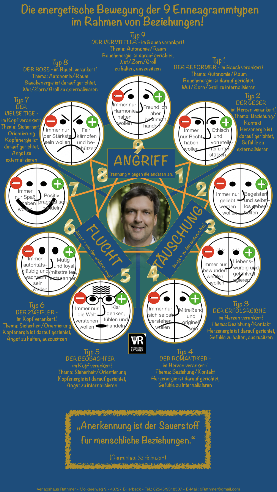
      </div>
      ${bookTip("die-sprache-unserer-beziehungen", "Wie sich Nähe, Rückzug und Verbindung bei allen 9 Typen in Beziehungen zeigen &ndash; 365 Paarungskombinationen.", "Die Sprache unserer Beziehungen")}
      ${relatedLinks([
        {route:"naehe", label:"Nähe & Distanz"},
        {route:"beziehungen", label:"Beziehungen"},
        {route:"drei-zentren", label:"Drei Zentren"},
      ])}
    </section>
  `);
}

function lookalikeTypenPage() {
  return shell(`
    ${pageHeader("lookalike-typen")}
    <section class="narrow">
      <p class="eyebrow">Schaubilder · Lookalike-Typen</p>
      <h1>Lookalike-Typen im Enneagramm</h1>
      <p class="lead-small">Manche Enneagrammtypen sehen sich zum Verwechseln ähnlich — obwohl sie nicht über Flügel oder Verbindungslinien miteinander verbunden sind. Diese Übersicht zeigt die wichtigsten sog. Lookalike-Typen und hilft bei der Differenzierung.</p>
      <div class="psycho-img-wrap" style="margin-top:1.5rem;">
        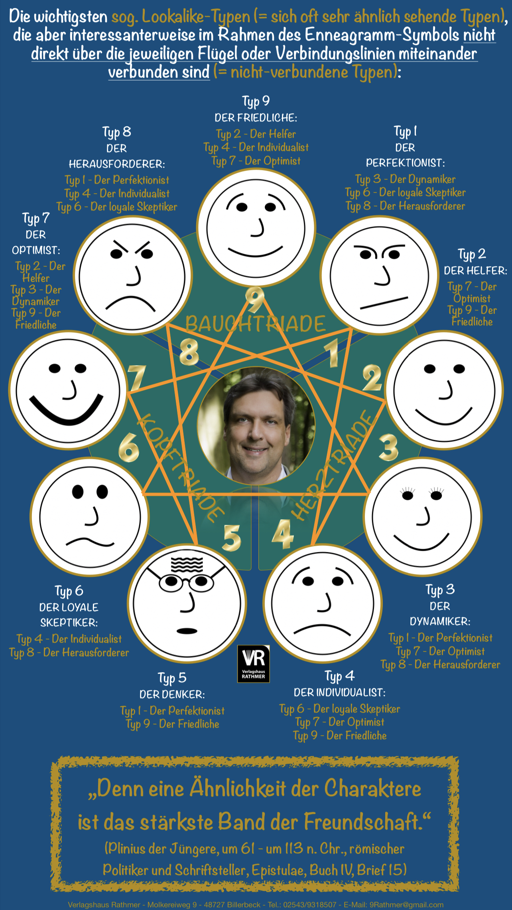
      </div>
      ${bookTip("die-praxis-der-typbestimmung-taschenbuch", "Typbestimmung Schritt für Schritt &ndash; inkl. Lookalike-Differenzierung für alle 9 Typen.", "Die Praxis der Typbestimmung")}
      ${relatedLinks([
        {route:"differenzierung", label:"Differenzierung"},
        {route:"verwechslungen", label:"Verwechslungen"},
        {route:"subtypen-checklisten", label:"Subtypen-Checklisten"},
      ])}
    </section>
  `);
}

function befreiendeFragenPage() {
  return shell(`
    ${pageHeader("befreiende-fragen")}
    <section class="narrow">
      <p class="eyebrow">Schaubilder · Befreiende Fragen</p>
      <h1>Befreiende Fragen an die 9 Enneagrammtypen</h1>
      <p class="lead-small">Wie würde dein Leben aussehen, wenn du erkennen würdest...? Diese Fragen richten sich an das Heilungspotenzial jedes Enneagrammtyps — sie laden ein, einschränkende Überzeugungen loszulassen und ein befreites Leben im Rahmen des eigenen Typs zu entdecken.</p>
      <div class="psycho-img-wrap" style="margin-top:1.5rem;">
        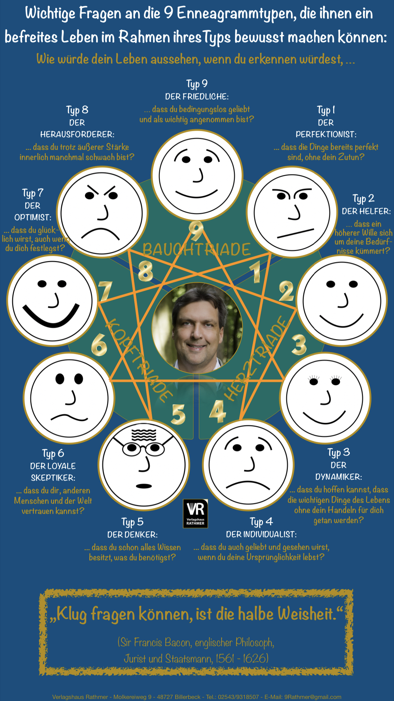
      </div>
      ${bookTip("du-bist-nicht-dein-zweifel", "Befreiende Fragen und Impulse für alle 9 Typen &ndash; loslassen, was nicht wirklich du bist.", "Du bist nicht dein Zweifel")}
      <p style="margin-top:1.5rem; text-align:center;">
        <a href="#zentrale-fragen" style="color:var(--copper); text-decoration:none; font-size:0.95rem;">
          ← Zurück zu: Zentrale Fragen
        </a>
      </p>
      ${relatedLinks([
        {route:"zentrale-fragen", label:"Zentrale Fragen"},
        {route:"heilungsweg", label:"Heilungsweg"},
        {route:"bewusstseinsuebungen", label:"Bewusstseinsübungen"},
      ])}
    </section>
  `);
}

function zentraleFragenPage() {
  return shell(`
    ${pageHeader("zentrale-fragen")}
    <section class="narrow">
      <p class="eyebrow">Schaubilder · Zentrale Fragen</p>
      <h1>Die zentralen Fragen der 9 Enneagrammtypen</h1>
      <p class="lead-small">Die zentralen Fragen machen die wiederkehrenden inneren Themen jedes Enneagrammtyps bewusst. Sie helfen dabei, eigene Muster zu erkennen — als erster Schritt in Richtung Heilung und Wachstum.</p>
      <div class="psycho-img-wrap" style="margin-top:1.5rem;">
        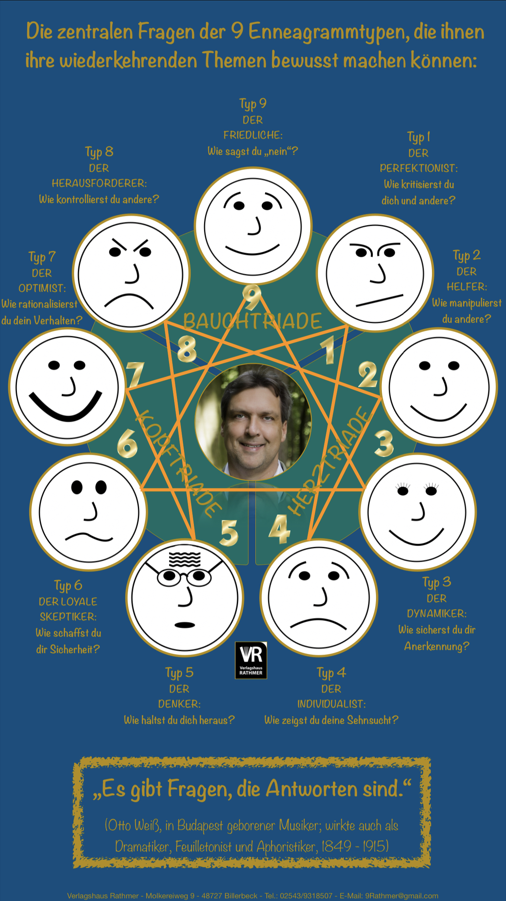
      </div>
      <p style="margin-top:1.5rem; text-align:center;">
        <a href="#befreiende-fragen" style="color:var(--copper); text-decoration:none; font-size:0.95rem;">
          Weiter zu: Befreiende Fragen →
        </a>
      </p>
      ${relatedLinks([
        {route:"befreiende-fragen", label:"Befreiende Fragen"},
        {route:"60-sekunden-scan", label:"60-Sekunden-Scan"},
        {route:"enneagramm-profiling", label:"Enneagramm-Profiling"},
      ])}
    </section>
  `);
}

function fuehrungsstilePage() {
  return shell(`
    ${pageHeader("fuehrungsstile")}
    <section class="narrow">
      <p class="eyebrow">Schaubilder · Führungsstile</p>
      <h1>Die Führungsstile der 9 Enneagrammtypen</h1>
      <p class="lead-small">Jeder Enneagrammtyp führt auf seine ganz eigene Weise — geprägt durch seine Leidenschaft, seine Stärken und seinen blinden Fleck. Diese Übersicht zeigt die typischen Führungsstile der 9 Typen aus deren eigener Sicht.</p>
      <div class="psycho-img-wrap" style="margin-top:1.5rem;">
        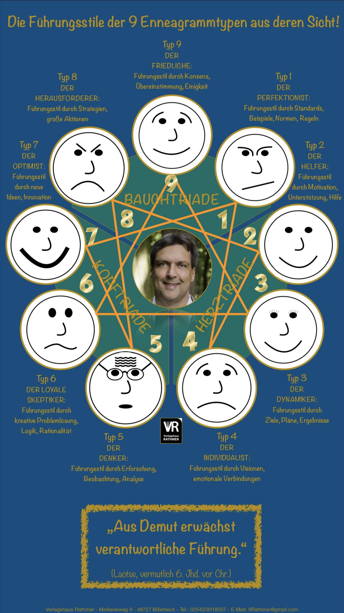
      </div>
      ${bookTip("fuehrung-mit-fundament", "Führung mit dem Enneagramm &ndash; wie jeder der 9 Typen sein volles Führungspotenzial entfaltet.", "Führung mit Fundament")}
      ${bookTip("meta-intelligenz", "Meta-Intelligenz: Wie das Enneagramm Führungskräfte in ihrer tiefsten Wirksamkeit stärkt.", "Meta-Intelligenz")}
      ${relatedLinks([
        {route:"enneagramm-profiling", label:"Enneagramm-Profiling"},
        {route:"antriebskraefte", label:"Antriebskräfte"},
        {route:"tischdialoge", label:"Tischdialoge"},
      ])}
    </section>
  `);
}

function beziehungenPage() {
  const typen = [
    { nr: 1, leidenschaft: "Zorn / Groll", farbe: "#8b6f47", anziehung: "Zuverlässig, integer, verantwortungsbewusst", konflikt: "Tendenz zur Kritik und zum Perfektionismus &ndash; Partner fühlen sich oft, als ob sie nie genügen", lernfeld: "Milde üben &ndash; andere nicht korrigieren müssen" },
    { nr: 2, leidenschaft: "Stolz / Hochmut", farbe: "#7a2d90", anziehung: "Liebevoll, fürsorglich, aufmerksam", konflikt: "Erwartet unbewusst Dankbarkeit und Gegenleistung; kann vereinnahmend wirken", lernfeld: "Eigene Bedürfnisse anerkennen &ndash; Liebe geschehen lassen" },
    { nr: 3, leidenschaft: "Eitelkeit / Täuschung", farbe: "#c8860a", anziehung: "Dynamisch, zielstrebig, charismatisch", konflikt: "Hinter der Fassade bleibt Unsicherheit; Partner spüren, dass er nicht ganz echt ist", lernfeld: "Sich zeigen wie man ist &ndash; Echtheit schafft mehr Nähe als Erfolg" },
    { nr: 4, leidenschaft: "Neid / Missgunst", farbe: "#5b4fa0", anziehung: "Tiefgründig, kreativ, leidenschaftlich", konflikt: "Schwankt zwischen Sehnsucht und Enttäuschung; fühlt sich schnell nicht gesehen", lernfeld: "Dankbarkeit kultivieren &ndash; würdigen, was da ist" },
    { nr: 5, leidenschaft: "Geiz / Habsucht", farbe: "#2e7d6e", anziehung: "Ruhig, reflektiert, wissend", konflikt: "Distanz wirkt auf Partner schwer erträglich; Nähe fühlt sich für ihn wie Übergriff an", lernfeld: "Sich öffnen und teilen &ndash; im Herzen präsent sein" },
    { nr: 6, leidenschaft: "Angst / Zweifel", farbe: "#4a6fa5", anziehung: "Treu, aufmerksam, zuverlässig", konflikt: "Zweifel und Misstrauen belasten die Partnerschaft; schwankt zwischen Bindung und Skepsis", lernfeld: "Vertrauen als Risiko akzeptieren &ndash; nicht ständig absichern" },
    { nr: 7, leidenschaft: "Völlerei / Exzess", farbe: "#b5870a", anziehung: "Inspirierend, unterhaltsam, voller Ideen", konflikt: "Meidet Schmerz und Tiefe; Partner können sich zurückgesetzt fühlen", lernfeld: "Beständigkeit üben &ndash; Schmerz aushalten und Tiefe zulassen" },
    { nr: 8, leidenschaft: "Wollust / Maßlosigkeit", farbe: "#8b2014", anziehung: "Kraftvoll, beschützend, entschlossen", konflikt: "Drang zur Kontrolle kann erdrückend sein; Partner fühlen sich überrollt", lernfeld: "Verletzlichkeit zulassen &ndash; Stärke auch als Zuwendung leben" },
    { nr: 9, leidenschaft: "Trägheit / Selbstvergessenheit", farbe: "#5a7a3a", anziehung: "Ausgleichend, geduldig, freundlich", konflikt: "Vergisst sich selbst, passt sich an; Beziehung gerät in Stagnation", lernfeld: "Eigenen Willen einbringen &ndash; klar Position beziehen" },
  ];

  const subtypes = [
    { code: "SE1", text: "Sucht Ordnung und Verlässlichkeit in Intimität" }, { code: "SO1", text: "Möchte ein richtiges Paar darstellen" }, { code: "SX1", text: "Leidenschaftlich und gleichzeitig streng mit hohen Ansprüchen" },
    { code: "SE2", text: "Gibt Fürsorge körperlich, erwartet Dankbarkeit" }, { code: "SO2", text: "Sucht Bewunderung für die gemeinsame Nähe" }, { code: "SX2", text: "Will exklusive Verschmelzung, kann besitzergreifend sein" },
    { code: "SE3", text: "Verbindet Erotik mit Leistungsfähigkeit" }, { code: "SO3", text: "Achtet auf äußere Wirkung, auch in der Partnerschaft" }, { code: "SX3", text: "Sucht Spiegelung durch intensive erotische Bestätigung" },
    { code: "SE4", text: "Nähe über Fürsorge, mit unterschwelligem Gefühl des Mangels" }, { code: "SO4", text: "Vergleicht sich ständig, sucht besondere Bindung" }, { code: "SX4", text: "Drängt dramatisch in Intensität und Verschmelzung" },
    { code: "SE5", text: "Hält Distanz, Sexualität kontrolliert" }, { code: "SO5", text: "Sucht Austausch im Denken, körperlich zurückhaltend" }, { code: "SX5", text: "Überraschend leidenschaftlich, wenn Vertrauen da ist" },
    { code: "SE6", text: "Sucht Sicherheit und verlässliche Routinen" }, { code: "SO6", text: "Fragt nach Zugehörigkeit im sozialen Kontext" }, { code: "SX6", text: "Schwankt zwischen Hingabe und Misstrauen" },
    { code: "SE7", text: "Verspielt, leicht, lustvoll ohne Risiko" }, { code: "SO7", text: "Erotisches Abenteuer im sozialen Raum" }, { code: "SX7", text: "Intensive Hingabe, manchmal maßlos" },
    { code: "SE8", text: "Kraftvoll, sinnlich, mit Stärke verbunden" }, { code: "SO8", text: "Beschützerrolle auch sexuell betont" }, { code: "SX8", text: "Dominant, leidenschaftlich, zugleich zärtlich in der Tiefe" },
    { code: "SE9", text: "Sucht friedvolle Nähe, Sexualität als Geborgenheit" }, { code: "SO9", text: "Will Harmonie im größeren Rahmen" }, { code: "SX9", text: "Verschmelzend, verliert sich leicht im Partner" },
  ];

  return shell(`
    ${pageHeader("beziehungen")}
    <section class="narrow">
      <p class="eyebrow">Beziehungen & Nähe</p>
      <h1>Die 9 Enneagrammtypen in Beziehungen</h1>
      <p class="lead-small">Was zieht uns zu anderen hin &ndash; und was bringt uns in Konflikt? Jeder Enneagrammtyp trägt seine Leidenschaft in jede Beziehung. Diese Übersicht zeigt Anziehungskraft, typische Konflikte und das Lernfeld jedes Typs.</p>

      <div style="display:flex; flex-direction:column; gap:1rem; margin-top:1.5rem;">
        ${typen.map(t => `
        <div style="border-left:4px solid ${t.farbe}; padding:0.85rem 1.1rem; background:color-mix(in srgb, ${t.farbe} 6%, var(--paper)); border-radius:0 0.5rem 0.5rem 0;">
          <strong style="color:${t.farbe}; font-size:1rem;">Typ ${t.nr} · ${t.leidenschaft}</strong>
          <div style="margin-top:0.5rem; display:grid; grid-template-columns:1fr 1fr 1fr; gap:0.5rem; font-size:0.85rem; color:var(--ink);">
            <div><span style="font-size:0.75rem; text-transform:uppercase; letter-spacing:0.05em; color:var(--muted);">Anziehung</span><br>${t.anziehung}</div>
            <div><span style="font-size:0.75rem; text-transform:uppercase; letter-spacing:0.05em; color:var(--muted);">Konflikt</span><br>${t.konflikt}</div>
            <div><span style="font-size:0.75rem; text-transform:uppercase; letter-spacing:0.05em; color:var(--muted);">Lernfeld</span><br>${t.lernfeld}</div>
          </div>
        </div>`).join("")}
      </div>

      <h2 style="margin-top:2.5rem; font-size:1.15rem; letter-spacing:0.04em; color:var(--ink);">Die 27 Subtypen &ndash; Nähe & Intimität</h2>
      <p style="font-size:0.88rem; color:var(--muted); margin-bottom:1rem;">Wie der Instinkt (SE · SO · SX) die Art prägt, wie ein Typ Nähe erlebt und ausdrückt.</p>
      <div style="display:grid; grid-template-columns:1fr 1fr 1fr; gap:0.5rem;">
        ${subtypes.map(s => `
        <div style="background:color-mix(in srgb, var(--copper) 5%, var(--paper)); border:1px solid var(--line); border-radius:0.4rem; padding:0.6rem 0.75rem; font-size:0.82rem;">
          <strong style="color:var(--copper); font-size:0.78rem;">${s.code}</strong><br>
          <span style="color:var(--ink); line-height:1.35;">${s.text}</span>
        </div>`).join("")}
      </div>

      <h2 style="margin-top:2.5rem; font-size:1.15rem; letter-spacing:0.04em; color:var(--ink);">27 Comics: Spiegel menschlicher Eigenarten</h2>
      <p style="font-size:0.88rem; color:var(--muted); margin-bottom:1rem;">In den Bildern schimmern die tiefen Wünsche, Ängste und Fluchten der 27 Subtypen durch &ndash; manchmal zart, manchmal drastisch. Klicke auf einen Comic, um ihn zu vergrößern.</p>
      <div style="display:grid; grid-template-columns:repeat(3,1fr); gap:0.6rem; margin-bottom:2rem;">
        ${["SE1","SO1","SX1","SE2","SO2","SX2","SE3","SO3","SX3","SE4","SO4","SX4","SE5","SO5","SX5","SE6","SO6","SX6","SE7","SO7","SX7","SE8","SO8","SX8","SE9","SO9","SX9"].map(code => `
        <div style="border-radius:0.4rem; overflow:hidden; border:1px solid var(--line); background:var(--paper); cursor:zoom-in;"
             data-comic-open="${code.toLowerCase()}"
             title="${code} &ndash; antippen zum Vergrößern">
          
          <div style="text-align:center; font-size:0.72rem; font-weight:700; color:var(--copper); padding:0.3rem 0;">${code}</div>
        </div>`).join("")}
      </div>

      <h2 style="margin-top:2.5rem; font-size:1.15rem; letter-spacing:0.04em; color:var(--ink);">Paarungen-Kompass: Wie passen zwei Subtypen zusammen?</h2>
      <p style="font-size:0.88rem; color:var(--muted); margin-bottom:1rem;">Wähle deinen Subtyp &ndash; und sieh auf einen Blick, wie du mit allen anderen 26 Subtypen harmonierst, wo Reibung entsteht und was du voneinander lernen kannst.</p>

      <div style="display:grid; grid-template-columns:repeat(9, 1fr); gap:0.3rem; margin-bottom:1.5rem;">
        ${["SE1","SO1","SX1","SE2","SO2","SX2","SE3","SO3","SX3","SE4","SO4","SX4","SE5","SO5","SX5","SE6","SO6","SX6","SE7","SO7","SX7","SE8","SO8","SX8","SE9","SO9","SX9"].map(code => `
        <button data-bez-code="${code}" style="
          padding:0.35rem 0.1rem; font-size:0.72rem; font-weight:600;
          border:2px solid ${beziehungSelected === code ? "var(--copper)" : "var(--line)"};
          background:${beziehungSelected === code ? "color-mix(in srgb, var(--copper) 15%, var(--paper))" : "var(--paper)"};
          color:${beziehungSelected === code ? "var(--copper)" : "var(--ink)"};
          border-radius:0.35rem; cursor:pointer; transition:all 0.15s; letter-spacing:0.01em;">
          ${code}
        </button>`).join("")}
      </div>

      <div id="bez-paarungen">
      ${beziehungSelected ? (() => {
        const matches = BEZIEHUNGS_PAARUNGEN.filter(p => p.a === beziehungSelected || p.b === beziehungSelected);
        const partner = matches.map(p => p.a === beziehungSelected ? p.b : p.a);
        const typeColors = {"1":"#8b6f47","2":"#7a2d90","3":"#c8860a","4":"#5b4fa0","5":"#2e7d6e","6":"#4a6fa5","7":"#b5870a","8":"#8b2014","9":"#5a7a3a"};
        return `
        <div style="margin-bottom:0.5rem; font-size:0.88rem; color:var(--muted);">
          <strong style="color:var(--copper);">${beziehungSelected}</strong> in Kombination mit allen anderen 26 Subtypen:
        </div>
        <div style="display:flex; flex-direction:column; gap:0.75rem;">
          ${matches.map((p, i) => {
            const partnerCode = partner[i];
            const typeNr = partnerCode.slice(-1);
            const col = typeColors[typeNr] || "var(--copper)";
            return `
            <div style="border-left:3px solid ${col}; padding:0.7rem 1rem; background:color-mix(in srgb, ${col} 5%, var(--paper)); border-radius:0 0.4rem 0.4rem 0;">
              <div style="display:flex; align-items:center; gap:0.6rem; margin-bottom:0.45rem;">
                <strong style="color:${col}; font-size:0.92rem;">${beziehungSelected} + ${partnerCode}</strong>
                <span style="font-size:0.8rem; color:var(--muted);">${p.dynamik}</span>
              </div>
              <div style="display:grid; grid-template-columns:1fr 1fr 1fr; gap:0.5rem; font-size:0.82rem; color:var(--ink);">
                <div><span style="font-size:0.72rem; text-transform:uppercase; letter-spacing:0.05em; color:var(--muted);">Gefahr</span><br>${p.gefahr}</div>
                <div><span style="font-size:0.72rem; text-transform:uppercase; letter-spacing:0.05em; color:var(--muted);">Chance</span><br>${p.chance}</div>
                <div><span style="font-size:0.72rem; text-transform:uppercase; letter-spacing:0.05em; color:var(--muted);">Kurztipp</span><br>${p.kurztipp}</div>
              </div>
            </div>`;
          }).join("")}
        </div>`;
      })() : `<div style="text-align:center; padding:2rem; color:var(--muted); font-size:0.9rem; border:2px dashed var(--line); border-radius:0.5rem;">Wähle oben einen Subtyp, um alle Paarungen zu sehen.</div>`}

      </div>

      ${bookTip("die-sprache-unserer-beziehungen", "365 Typ- und Subtypen-Kombinationen im Überblick &ndash; das komplette Beziehungslexikon des Enneagramms.", "Die Sprache unserer Beziehungen")}
      ${bookTip("die-sprache-unserer-sexualitaet", "Wie Nähe, Leidenschaft und Intimität bei allen 27 Subtypen erlebt werden &ndash; mit Übungen für Paare.", "Die Sprache unserer Sexualität")}
      ${relatedLinks([
        {route:"naehe", label:"Nähe & Distanz"},
        {route:"energetische-bewegungen", label:"Energetische Bewegungen"},
        {route:"gaslighting-enneagramm", label:"Gaslighting & Enneagramm"},
      ])}
    </section>
  `);
}

function tierentsprechungenPage() {
  const grid = TIERENTSPRECHUNGEN.map(t => {
    const col = typeColor(t.typ);
    const rows = Object.entries(t.tiere).map(([sub, tiere]) =>
      `<div style="margin-bottom:.35rem;">
        <span style="font-weight:800;">${sub}</span>
        <span style="margin-left:.35rem;opacity:.9;">${tiere.join(", ")}</span>
      </div>`
    ).join("");
    return `<div style="
      background:${col};color:#fff;
      border-radius:10px;padding:.9rem 1rem;
      font-size:.82rem;line-height:1.5;
    ">
      <div style="font-weight:800;font-size:1rem;margin-bottom:.6rem;letter-spacing:.04em;border-bottom:1px solid rgba(255,255,255,.25);padding-bottom:.4rem;">Typ ${t.typ}</div>
      ${rows}
    </div>`;
  }).join("");

  const byId = Object.fromEntries(werkRegister.map(b => [b.id, b]));
  const buchIds = ["enneagramm-zoo", "archetypen-der-tiere"];
  const buchCards = buchIds.map(id => {
    const b = byId[id];
    if (!b) return "";
    return `<article style="
      border:1px solid var(--line);border-radius:10px;
      padding:1rem 1.1rem;background:var(--paper);
    ">
      <h3 style="font-size:.95rem;font-weight:700;margin:0 0 .3rem;">${b.title}</h3>
      <p style="font-size:.78rem;color:var(--muted);margin:0 0 .7rem;">${b.themes.join(" · ")}</p>
      <div style="display:flex;gap:.6rem;flex-wrap:wrap;">
        <a href="${b.link}" target="_blank" rel="noopener" style="font-size:.82rem;color:var(--copper);font-weight:600;">Im Verlag ansehen →</a>
        ${b.bodUrl ? `<a href="${b.bodUrl}" target="_blank" rel="noopener" style="font-size:.82rem;color:var(--muted);">Bei BoD kaufen →</a>` : ""}
      </div>
    </article>`;
  }).join("");

  return shell(`
    ${pageHeader("tierentsprechungen")}
    <div style="max-width:680px;margin:0 auto;padding:0 1rem 3rem;">
      <p class="eyebrow">Schaubilder · Tierentsprechungen</p>
      <h1 class="section-title">Tierentsprechungen der 27 Subtypen</h1>
      <p class="psycho-intro">Jedem der 27 Subtypen sind charakteristische Tiere zugeordnet, deren Wesensart, Verhalten und Überlebensstrategien den jeweiligen Subtypus spiegeln. Das Bild zeigt die visuelle Übersicht; die Tabelle darunter listet alle Entsprechungen systematisch nach Typ und Instinkt (SE · SO · SX) auf.</p>
      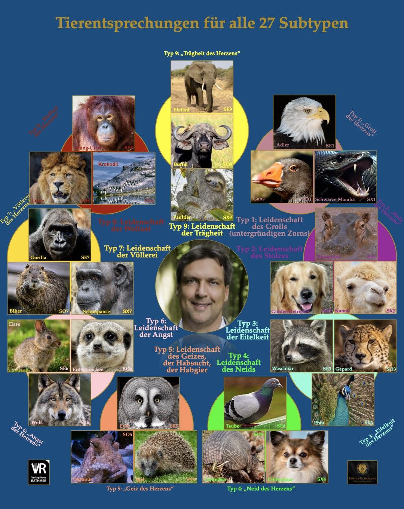
      <h2 style="font-size:1rem;font-weight:700;margin-bottom:.9rem;color:var(--ink);">Alle 27 Subtypen im Überblick</h2>
      <div style="border:1px solid var(--line);border-radius:12px;padding:1.2rem 1.3rem;margin-bottom:1.8rem;background:var(--paper);">
        <p style="font-size:.88rem;color:var(--ink);line-height:1.7;margin:0 0 .9rem;">
          Die folgende \xdcbersicht zeigt alle 27 archetypischen Tierportr\xe4ts des Enneagramms als visuelle Verdichtung psychologischer Grundmuster. Die Tiere sind nicht als Illustration gedacht, sondern sollen auf einen Blick eine Atmosph\xe4re, eine energetische Grundhaltung und ein inneres Bewegungsmuster erfahrbar machen &ndash; weniger f\xfcr den analytischen Verstand als f\xfcr die intuitive Wahrnehmung.
        </p>
        <p style="font-size:.88rem;color:var(--ink);line-height:1.7;margin:0 0 .9rem;">
          Jedes Tier besitzt einen eigenen Ausdruck, eine eigene Spannung, einen eigenen Blick. Dabei sind die Tiere keine simplen Symbole im Sinne von „Typ\xa0=\xa0Tier“. Sie verk\xf6rpern bestimmte Qualit\xe4ten des jeweiligen Subtyps: Der Wolf steht f\xfcr Wachsamkeit, Bindung und strategische Aufmerksamkeit. Der Pfau symbolisiert das Bed\xfcrfnis, gesehen zu werden und \xfcber Ausstrahlung Identit\xe4t zu erzeugen. Der Oktopus verbindet Intelligenz, Anpassungsf\xe4higkeit und R\xfcckzug in eine eigene innere Welt. Kein Tier ist dabei besser oder schlechter als ein anderes &ndash; jedes verk\xf6rpert eine eigene Strategie, um in der Welt Sicherheit, Liebe, Bedeutung oder Autonomie zu finden.
        </p>
        <p style="font-size:.88rem;color:var(--ink);line-height:1.7;margin:0;">
          Die Kreisform der Portraits erinnert unbewusst an archetypische Mandalas. Dadurch entsteht weniger der Eindruck einer zoologischen Sammlung als vielmehr eine Landkarte innerer Kr\xe4fte. Gerade f\xfcr Profiler kann diese \xdcbersicht sehr hilfreich sein: Bilder umgehen viele intellektuelle Widerst\xe4nde und erzeugen sofort emotionale Erinnerung. Viele Menschen vergessen lange Definitionen, erinnern sich aber Jahre sp\xe4ter noch an „den Wolf“, „den Pfau“ oder „das Faultier“. Das archetypische Bild speichert sich tiefer ab als reine Theorie.
        </p>
      </div>
      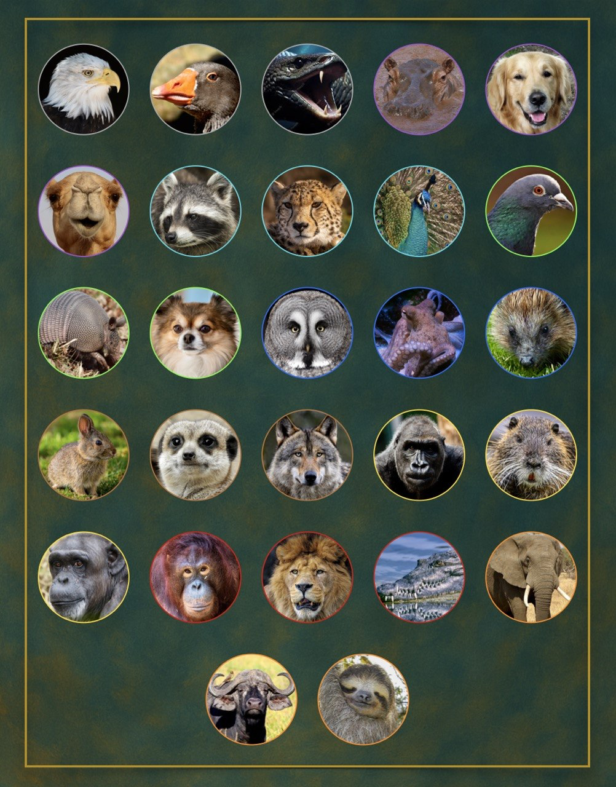
      <div style="display:grid;grid-template-columns:repeat(auto-fill,minmax(195px,1fr));gap:.75rem;margin-bottom:2rem;">
        ${grid}
      </div>
      <div style="border-top:1px solid var(--line);padding-top:1.4rem;margin-top:.5rem;">
        <h2 style="font-size:1rem;font-weight:700;margin-bottom:.9rem;color:var(--ink);">Vertiefung: Bücher zum Thema</h2>
        <div style="display:grid;grid-template-columns:repeat(auto-fill,minmax(240px,1fr));gap:.75rem;">
          ${buchCards}
        </div>
      </div>
      ${relatedLinks([
        {route:"obstsorten", label:"Obstsorten"},
        {route:"tee-enneagramm", label:"Tee-Enneagramm"},
        {route:"weihnachtsgeschenke", label:"Geschenke der Typen"},
      ])}
    </div>
  `);
}

function obstsortPage() {
  return shell(`
    ${pageHeader("obstsorten")}
    <div style="max-width:680px;margin:0 auto;padding:0 1rem 3rem;">
      <p class="eyebrow">Schaubilder \xb7 Archetypen</p>
      <h1 class="section-title">Die 9 Obstsorten</h1>
      <p class="psycho-intro">Eine enneagrammatisch-archetypische Betrachtung: Was jede Frucht \xfcber den Wesenskern eines Typs verr\xe4t.</p>
      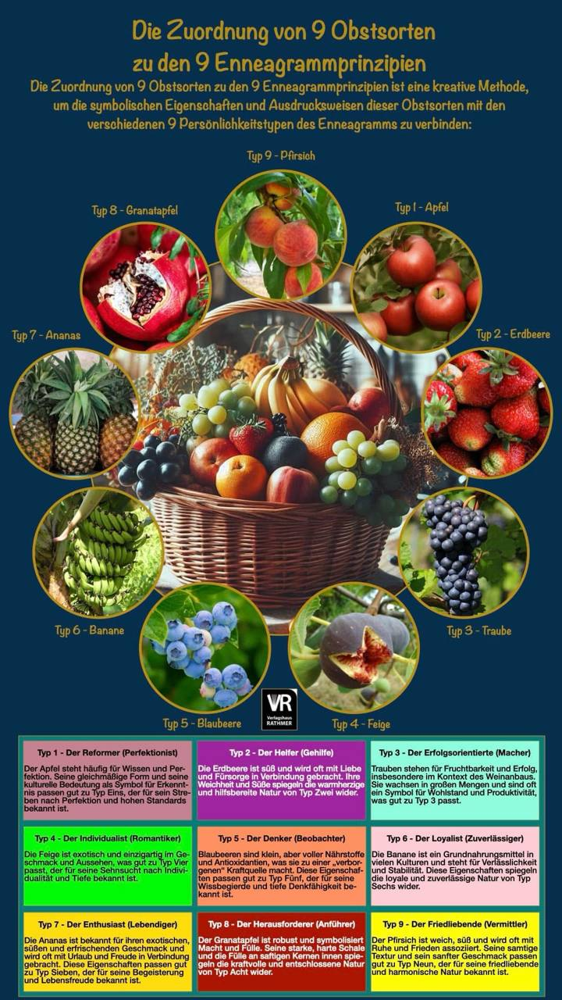
      <div class="vb-section" style="max-width:100%;">

        <h2 style="font-size:1.05rem;font-weight:700;margin:0 0 1rem;color:var(--ink);">Typ 1 &ndash; Der Apfel: Perfektion als Prinzip</h2>
        <p class="vb-intro">Der Apfel ist die kulturgeschichtlich bedeutsamste Frucht \xfcberhaupt &ndash; Symbol f\xfcr Erkenntnis, Vollkommenheit und moralische Ordnung. In der abendl\xe4ndischen Tradition steht er f\xfcr das Streben nach dem Guten ebenso wie f\xfcr die Versuchung, es zu verfehlen. Seine gleichm\xe4\xdfige, symmetrische Form, die glatte Schale und klare Farbigkeit verk\xf6rpern ein Ideal \xe4sthetischer Perfektion. Kein Zufall, dass der Satz "An apple a day keeps the doctor away" auf Disziplin und Vorsorge verweist &ndash; beides urtyp 1-Qualit\xe4ten. Der Apfel muss makellos sein, sonst gilt er als verdorben. Genau so erlebt der Typ 1 sich selbst.</p>

        <h2 style="font-size:1.05rem;font-weight:700;margin:1.8rem 0 1rem;color:var(--ink);">Typ 2 &ndash; Die Erdbeere: S\xfc\xdfe als Gabe</h2>
        <p class="vb-intro">Die Erdbeere gibt sich hin &ndash; sie ist weich, duftend, s\xfc\xdf und leuchtet in einem warmen Rot, das unweigerlich an Herzlichkeit und Zuneigung erinnert. Sie w\xe4chst bodennah, zugewandt, sucht das Licht und \xf6ffnet sich vollst\xe4ndig. Niemand isst eine Erdbeere ohne ein L\xe4cheln. Sie macht anderen eine Freude, ohne etwas zu verlangen &ndash; und vergeht schnell, wenn sie nicht gesehen wird. Die Erdbeere n\xe4hrt, w\xe4rmt und ber\xfchrt: das Prinzip des Typs 2 in seiner reinsten pflanzlichen Form.</p>

        <h2 style="font-size:1.05rem;font-weight:700;margin:1.8rem 0 1rem;color:var(--ink);">Typ 3 &ndash; Die Traube: Erfolg in der Gemeinschaft</h2>
        <p class="vb-intro">Trauben wachsen nie einzeln &ndash; sie entstehen im Verbund, in gro\xdfen, pr\xe4chtigen Clustern, die F\xfclle und \xdcberfluss signalisieren. Sie sind die Frucht des Weins, der Gesellschaft, des Ansehens und der Feier. In der Antike waren Trauben Symbol f\xfcr Wohlstand, Fruchtbarkeit und weltlichen Erfolg. Die Weinrebe braucht Pflege, F\xfchrung, den richtigen Boden &ndash; und bringt dann eine Ernte, die andere begeistert und bewundert. Typ 3 in seiner archetypischen Qualit\xe4t: produktiv, ansehnlich, gesellschaftlich wirksam.</p>

        <h2 style="font-size:1.05rem;font-weight:700;margin:1.8rem 0 1rem;color:var(--ink);">Typ 4 &ndash; Die Feige: Tiefe hinter der Oberfl\xe4che</h2>
        <p class="vb-intro">Die Feige ist exotisch, geheimnisvoll und paradox: au\xdfen unscheinbar, innen von bet\xf6render Sch\xf6nheit &ndash; ein tiefes Purpur, durchzogen von zarten Strukturen. Sie reift langsam, verlangt Geduld und wird selten verstanden. In vielen Kulturen steht sie f\xfcr Weisheit, Verg\xe4nglichkeit und spirituelle Tiefe. Die Feige ist keine Frucht f\xfcr die Masse &ndash; sie wird von denen gesch\xe4tzt, die bereit sind, genauer hinzuschauen. Das ist das Lebensgef\xfchl des Typs 4: Ich bin nicht auf den ersten Blick zu verstehen &ndash; aber wer mich wirklich sieht, entdeckt etwas Unvergleichliches.</p>

        <h2 style="font-size:1.05rem;font-weight:700;margin:1.8rem 0 1rem;color:var(--ink);">Typ 5 &ndash; Die Blaubeere: Konzentrierte Essenz</h2>
        <p class="vb-intro">Die Blaubeere ist klein, unscheinbar und zur\xfcckhaltend &ndash; aber in ihr steckt eine au\xdfergew\xf6hnliche Konzentration an N\xe4hrstoffen, Antioxidantien und Wirkstoffen. Sie w\xe4chst in der Stille abgelegener W\xe4lder, weit vom Trubel entfernt. Man muss sie suchen, man muss wissen, wo sie zu finden ist. Wer sie findet, erkennt ihren verborgenen Reichtum. Die Blaubeere teilt sich nicht auf &ndash; sie ist kompakt, autark, in sich geschlossen. Ein treffendes Bild f\xfcr den Typ 5: klein nach au\xdfen, unermesslich reich nach innen.</p>

        <h2 style="font-size:1.05rem;font-weight:700;margin:1.8rem 0 1rem;color:var(--ink);">Typ 6 &ndash; Die Banane: Verl\xe4sslichkeit als Tugend</h2>
        <p class="vb-intro">Die Banane ist das Grundnahrungsmittel unter den Fr\xfcchten &ndash; weltweit verbreitet, kultur\xfcbergreifend vertraut, n\xe4hrend und zuverl\xe4ssig. Sie kommt stets in ihrer sch\xfctzenden gelben H\xfclle, gut portioniert, gut handhabbar. Sie liefert schnelle Energie in Momenten der Ersch\xf6pfung und ist in ihrer Struktur fest und berechenbar. Kein anderes Obst vermittelt so sehr das Gef\xfchl von Verl\xe4sslichkeit und Sicherheit. Die Banane ist immer da &ndash; und genau das ist das tiefste Bed\xfcrfnis und zugleich die gr\xf6\xdfte Gabe des Typs 6.</p>

        <h2 style="font-size:1.05rem;font-weight:700;margin:1.8rem 0 1rem;color:var(--ink);">Typ 7 &ndash; Die Ananas: Exotik und Lebensfreude</h2>
        <p class="vb-intro">Die Ananas ist ein Fest f\xfcr die Sinne &ndash; exotisch, farbenfroh, s\xfc\xdf-s\xe4uerlich, \xfcberraschend und unkonventionell in ihrer \xe4u\xdferen Form. Sie kommt aus der Ferne, bringt das Versprechen von Abenteuer und Sommerlichkeit mit sich und verbreitet sofortige Hochstimmung. Sie ist tropisch, frei, ungebunden &ndash; und ihre stachelige Au\xdfenhulle sch\xfctzt einen zarten, leuchtenden Kern. Genau wie der Typ 7: nach au\xdfen ein Fest, nach innen empfindsamer als er zeigt, und immer auf der Suche nach dem n\xe4chsten Genuss.</p>

        <h2 style="font-size:1.05rem;font-weight:700;margin:1.8rem 0 1rem;color:var(--ink);">Typ 8 &ndash; Der Granatapfel: Macht und F\xfclle</h2>
        <p class="vb-intro">Der Granatapfel ist eine der \xe4ltesten und mythisch aufgeladensten Fr\xfcchte der Menschheitsgeschichte &ndash; in vielen Kulturen Symbol f\xfcr Macht, Fruchtbarkeit, Tod und Wiedergeburt zugleich. Seine harte, widerstandsf\xe4hige Schale sch\xfctzt einen Kern von \xfcberw\xe4ltigender F\xfclle: Hunderte leuchtend roter Kerne, prall und kraftvoll. Man muss Kraft aufwenden, um an ihn heranzukommen &ndash; aber wer es tut, wird reich belohnt. Der Granatapfel gibt sich nicht preis, er muss erobert werden. Das ist das Prinzip des Typs 8: robust nach au\xdfen, von erstaunlicher innerer F\xfclle &ndash; f\xfcr jene, die den Mut haben, n\xe4herzukommen.</p>

        <h2 style="font-size:1.05rem;font-weight:700;margin:1.8rem 0 1rem;color:var(--ink);">Typ 9 &ndash; Der Pfirsich: Sanftheit und Frieden</h2>
        <p class="vb-intro">Der Pfirsich ist die friedlichste aller Fr\xfcchte &ndash; weich, warm, samtig, in zarten Farben von Creme \xfcber Gold bis Ros\xe9. Er ist rund und vollst\xe4ndig in sich, ohne Ecken und Kanten. Sein Duft ist still und tief, sein Geschmack harmonisch ohne Extreme. In der chinesischen Tradition gilt der Pfirsich als Symbol f\xfcr Unsterblichkeit, Frieden und kosmische Harmonie. Er dr\xe4ngt sich nicht auf &ndash; er ist einfach da, still und n\xe4hrend. Das Prinzip des Typs 9 in seiner sch\xf6nsten Verdichtung: Friede, der aus sich selbst heraus entsteht.</p>

        ${bookTip("enneagramm-zoo", "27 Tierarchetypen f\xfcr die 27 Subtypen des Enneagramms &ndash; archetypische Bilder, die das Wesen jedes Subtyps fassbar machen.", "Enneagramm-Zoo")}
        ${bookTip("archetypen-der-tiere", "Tiere als Spiegel der Seele: Wie die Archetypen der Tierwelt die 9 Enneagrammtypen und ihre 27 Subtypen erhellen.", "Archetypen der Tiere im Enneagramm")}
      </div>
      ${relatedLinks([
        {route:"tierentsprechungen", label:"Tierentsprechungen"},
        {route:"tee-enneagramm", label:"Tee-Enneagramm"},
        {route:"symmetrie-des-enneagramms", label:"Symmetrie des Enneagramms"},
      ])}
    </div>
  `);
}

function friedenSchliessenPage() {
  return shell(`
    ${pageHeader("frieden-schliessen")}
    <div style="max-width:680px;margin:0 auto;padding:0 1rem 3rem;">
      <p class="eyebrow">Schaubilder \xb7 Beziehung</p>
      <h1 class="section-title">Frieden schlie\xdfen</h1>
      <p class="psycho-intro">Vom Splitter im Auge und der Kunst, mit Mitgef\xfchl statt Urteil zu begegnen.</p>
      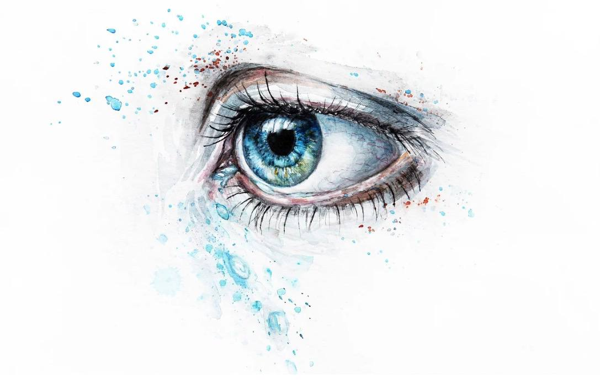
      <div class="vb-section" style="max-width:100%;">
        <p class="vb-intro">Wir alle lernen und \xfcben, Menschen zu lesen. Wir sehen ihre Muster, erkennen ihre Enneagrammtypen und verstehen immer schneller, wie jemand tickt. Doch mit diesem Wissen kommt eine gro\xdfe Verantwortung: Wissen wir den Typ unseres Gegen\xfcbers, stehen wir an einer Kreuzung &ndash; nutzen wir es, um Recht zu haben, oder um Verbindung zu schaffen?</p>
        <p class="vb-intro">Eine alte Weisheit bringt das auf den Punkt: <em>Wir sehen den Splitter im Auge des anderen, aber den Balken im eigenen Auge bemerken wir nicht.</em></p>

        <h2 style="font-size:1.05rem;font-weight:700;margin:1.8rem 0 1rem;color:var(--ink);">Die Falle des Schubladen-Egos</h2>
        <p class="vb-intro">Wenn wir jemanden typisieren, ist die Versuchung gro\xdf, in die Bewertung zu gehen: Typ 1 muss wieder den Oberlehrer spielen. Typ 3 will sich nur wieder profilieren. Typ 6 sieht \xfcberall Probleme. Wir benutzen das Enneagramm dann wie eine Waffe &ndash; <em>Du bist im Muster, also bist du das Problem.</em></p>
        <p class="vb-intro">Doch die Wahrheit ist: Kein Typ ist besser oder schlechter als der andere. Jeder von uns hat seine Macken, seine blinden Flecken und seine ganz pers\xf6nlichen Triggerpunkte. Jedes Muster ist letztlich nur eine \xdcberlebensstrategie des Egos &ndash; einschlie\xdflich unseres eigenen.</p>

        <h2 style="font-size:1.05rem;font-weight:700;margin:1.8rem 0 1rem;color:var(--ink);">Der K\xf6nigsweg: Das Ego sanft ber\xfchren</h2>
        <p class="vb-intro">Wie gehen wir damit um, wenn wir jemanden durchschaut haben? Ein kluger und zutiefst menschlicher Ansatz lautet: <em>Ich muss mein eigenes Ego nicht auf Teufel komm raus durchsetzen.</em></p>
        <p class="vb-intro">Wenn Sie wissen, dass Sie es mit einem Typ 1 zu tun haben, dessen tiefstes Bed\xfcrfnis es ist, dass die Dinge richtig laufen &ndash; warum sollten Sie sich daran aufreiben? Ein einfaches &bdquo;Aus Ihrer Sicht kann ich das vollkommen verstehen, das ist ein wichtiger Punkt&ldquo; bricht sofort die Verteidigungslinie des anderen.</p>
        <p class="vb-intro">Das ist kein Einknicken. Das ist keine Heuchelei. Es ist bewusste Beziehungsgestaltung. Indem wir das Ego des anderen ein St\xfcck weit beruhigen, nehmen wir den Druck aus dem Kessel &ndash; und schaffen Raum f\xfcr echte Begegnung.</p>

        <h2 style="font-size:1.05rem;font-weight:700;margin:1.8rem 0 1rem;color:var(--ink);">Die Transformation</h2>
        <p class="vb-intro">Daf\xfcr m\xfcssen wir etwas tun, das unserem eigenen Ego schwer f\xe4llt: uns zur\xfccknehmen. Den eigenen Balken im Auge erkennen &ndash; den Drang, Recht haben zu wollen, sich zu verteidigen oder den anderen korrigieren zu m\xfcssen.</p>
        <p class="vb-intro">Wenn wir den Triggerpunkt des anderen nicht mehr bedienen, sondern ihm mit Mitgef\xfchl begegnen, passiert etwas Erstaunliches: Die Welt wird ein St\xfcck friedlicher. Aus dem theoretischen Profiling wird angewandte N\xe4chstenliebe.</p>

        <h2 style="font-size:1.05rem;font-weight:700;margin:1.8rem 0 1rem;color:var(--ink);">Der Impuls</h2>
        <p class="vb-intro">Beobachten Sie sich heute selbst bei Ihren Begegnungen. Wo m\xf6chten Sie unbedingt Recht behalten? Wo sehen Sie den Splitter beim anderen? Versuchen Sie stattdessen, das Muster Ihres Gegen\xfcbers innerlich zu erkennen und sanft zu validieren.</p>
        <p class="vb-intro">Schauen Sie, was passiert, wenn Sie Ihr Ego f\xfcr einen Moment auf die Parkbank setzen.</p>

        <blockquote style="border-left:3px solid var(--gold);padding:1rem 1.25rem;margin:2rem 0;font-style:italic;color:var(--copper);font-size:1.05rem;background:var(--ivory);border-radius:0 8px 8px 0;">Aus dem theoretischen Profiling wird angewandte N\xe4chstenliebe. &ndash; Detlef Rathmer</blockquote>

        ${bookTip("die-sprache-unserer-beziehungen", "Wie die 9 Typen in Beziehungen reagieren &ndash; und wie Mitgef\xfchl statt Urteil echte Verbindung erm\xf6glicht.", "Die Sprache unserer Beziehungen")}
        ${bookTip("leidenschaft-und-heilung", "27 Subtypen &ndash; ihre Leidenschaften, blinden Flecken und der Weg zur inneren Heilung.", "Leidenschaft und Heilung")}
      </div>
      ${relatedLinks([
        {route:"naehe", label:"Nähe & Distanz"},
        {route:"beziehungen", label:"Beziehungen"},
        {route:"schaubilder-als-spiegel", label:"Schaubilder als Spiegel"},
      ])}
    </div>
  `);
}

function werWirSindPage() {
  return shell(`
    ${pageHeader("wer-wir-sind")}
    <div style="max-width:680px;margin:0 auto;padding:0 1rem 3rem;">
      <p class="eyebrow">Schaubilder \xb7 Essenz</p>
      <h1 class="section-title">Wer wir sind</h1>
      <p class="psycho-intro">Die Landkarte ist nicht das Gebiet &ndash; warum das Enneagramm uns beschreibt, aber nicht definiert.</p>
      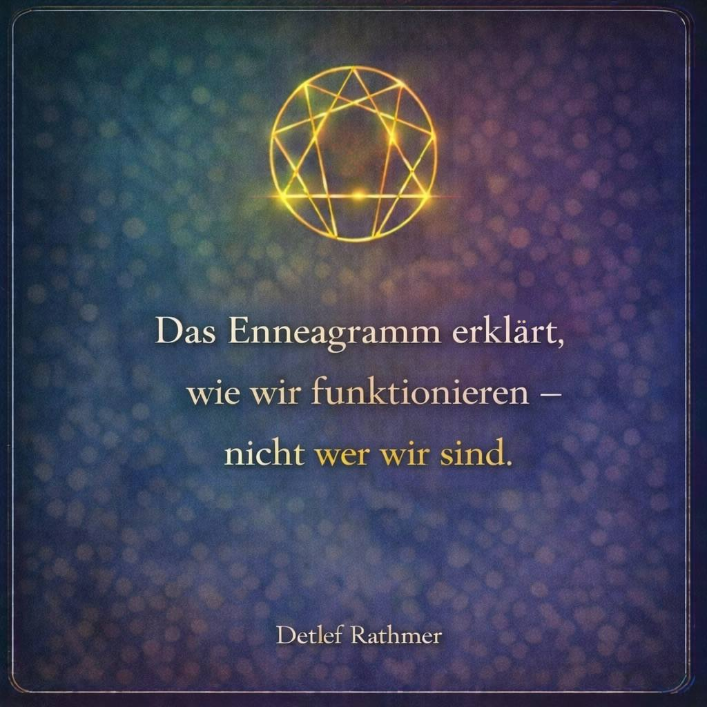
      <div class="vb-section" style="max-width:100%;">
        <h2 style="font-size:1.05rem;font-weight:700;margin-bottom:1rem;color:var(--ink);">&bdquo;Das Enneagramm erkl\xe4rt, wie wir funktionieren &ndash; nicht wer wir sind.&ldquo;</h2>
        <p class="vb-intro">Auf den ersten Blick wirkt das Enneagramm wie ein weiteres psychologisches Schubladensystem. Neun Typen, neun Pers\xf6nlichkeitsprofile, neun Arten, die Welt zu sehen. Wer sich darauf einl\xe4sst, findet schnell seine &bdquo;Nummer&ldquo; &ndash; und ertappt sich bald dabei, das eigene Verhalten oder das anderer Menschen mit Phrasen wie &bdquo;Typisch Dreier!&ldquo; oder &bdquo;Das ist wieder so eine F\xfcnfer-Reaktion&ldquo; zu kommentieren.</p>
        <p class="vb-intro">Doch genau hier setzt dieses Zitat an. Die Unterscheidung zwischen <em>Wie</em> und <em>Wer</em> ist keine Wortklauberei &ndash; sie ber\xfchrt den eigentlichen Kern und das transformative Potenzial dieses uralten Modells. Es zieht eine klare Grenze zwischen der Pers\xf6nlichkeit (dem &bdquo;Wie&ldquo;) und der Essenz (dem &bdquo;Wer&ldquo;).</p>

        <h2 style="font-size:1.05rem;font-weight:700;margin:1.8rem 0 1rem;color:var(--ink);">Das &bdquo;Wie&ldquo;: Die Maschinerie der Pers\xf6nlichkeit</h2>
        <p class="vb-intro">Wenn das Enneagramm erkl\xe4rt, <em>wie</em> wir funktionieren, legt es die unbewussten Mechanismen, \xdcberlebensstrategien und Filter offen, die wir im Laufe unseres Lebens entwickelt haben. Jeder der neun Typen beschreibt eine spezifische Fixierung &ndash; eine Art psychologische Brille, durch die wir die Realit\xe4t betrachten. Es zeigt, wie wir auf Stress reagieren &ndash; durch R\xfcckzug, Angriff oder Anpassung. Es macht sichtbar, welche Grundängste und Grundbed\xfcrfnisse unser Handeln unbemerkt steuern. Und es entlarvt sich wiederholende Verhaltensmuster, die wir oft f\xe4lschlicherweise f\xfcr unsere innersten Seelenanteile halten.</p>
        <p class="vb-intro">In diesem Sinne ist das Enneagramm eine brillante Bedienungsanleitung f\xfcr das menschliche Ego &ndash; eine Beschreibung des &bdquo;Betriebssystems&ldquo; unseres Verstandes. Es sagt uns: <em>&bdquo;Schau her: So funktioniert deine psychologische Struktur, wenn du dich im Autopilotmodus befindest.&ldquo;</em></p>

        <h2 style="font-size:1.05rem;font-weight:700;margin:1.8rem 0 1rem;color:var(--ink);">Das &bdquo;Wer&ldquo;: Die Freiheit jenseits der Box</h2>
        <p class="vb-intro">Das h\xe4ufigste Missverst\xe4ndnis &ndash; auch bei Fortgeschrittenen &ndash; besteht darin, das Enneagramm als Rechtfertigung f\xfcr das eigene Ego zu nutzen: <em>&bdquo;Ich bin nun mal eine Acht, ich muss so dominant sein.&ldquo;</em> Doch das Modell will uns nicht in eine Box stecken. Es will uns zeigen, <strong>in welcher Box wir bereits sitzen</strong> &ndash; damit wir aus ihr ausbrechen k\xf6nnen.</p>
        <p class="vb-intro">Wer wir wirklich sind &ndash; unsere Essenz, unser wahres Selbst, unser Bewusstsein &ndash; l\xe4sst sich nicht in eine Zahl pressen. Das wahre Ich ist nicht der Typ, sondern das <em>Beobachtende</em>: jene stille Instanz, die bemerkt, wie die Pers\xf6nlichkeit anspringt. Wenn jemand, der das Muster Eins lebt, bemerkt, wie innerer \xc4rger \xfcber einen Fehler aufsteigt &ndash; und diesen Impuls einfach beobachtet, anstatt blind danach zu handeln &ndash; dann agiert er aus dem &bdquo;Wer&ldquo;, aus dem Sein heraus. Er <em>nutzt</em> das Wissen \xfcber das &bdquo;Wie&ldquo;, um Freiheit zu gewinnen.</p>
        <p class="vb-intro">Das Enneagramm definiert uns nicht. Es ist ein Werkzeug zur <strong>De-Identifikation</strong>: Indem wir verstehen, wie wir funktionieren, h\xf6ren wir auf, uns mit dem reaktiven Apparat der Ego-Fixierung zu verwechseln.</p>

        <h2 style="font-size:1.05rem;font-weight:700;margin:1.8rem 0 1rem;color:var(--ink);">Vom Autopiloten zur Pr\xe4senz</h2>
        <p class="vb-intro">Das Enneagramm schenkt uns eine pr\xe4zise Landkarte unserer mentalen und emotionalen Gewohnheiten. Doch die Landkarte ist nicht das Gebiet. Wenn wir es richtig nutzen, lernen wir, die Mechanismen unseres Typs mit einer Prise Humor und echtem Mitgef\xfchl zu beobachten. Wir erkennen: Die Nummer, die wir im Enneagramm tragen, ist nur die Kleidung &ndash; niemals der Mensch, der in ihr steckt.</p>

        <blockquote style="border-left:3px solid var(--gold);padding:1rem 1.25rem;margin:2rem 0;font-style:italic;color:var(--copper);font-size:1.05rem;background:var(--ivory);border-radius:0 8px 8px 0;">Wir sind nicht unsere Muster. &ndash; Detlef Rathmer</blockquote>

        ${bookTip("nichts-und-alles", "Ein stilles Buch \xfcber den Raum jenseits der Pers\xf6nlichkeit &ndash; Bewusstsein, Essenz und innere Freiheit.", "Nichts und Alles")}
        ${bookTip("du-bist-nicht-dein-zweifel", "Warum wir nicht unsere Gedanken und Muster sind &ndash; und wie wir uns von ihnen l\xf6sen k\xf6nnen.", "Du bist nicht dein Zweifel")}
      </div>
      ${relatedLinks([
        {route:"schaubilder-als-spiegel", label:"Schaubilder als Spiegel"},
        {route:"verwechslungen", label:"Verwechslungen"},
        {route:"wurzeln-des-enneagramms", label:"Wurzeln des Enneagramms"},
      ])}
    </div>
  `);
}

function symmetrieDesEnneagrammsPage() {
  return shell(`
    ${pageHeader("symmetrie-des-enneagramms")}
    <div style="max-width:680px;margin:0 auto;padding:0 1rem 3rem;">
      <p class="eyebrow">Schaubilder &middot; Systemarchitektur</p>
      <h1 class="section-title">Die Symmetrie des Enneagramms</h1>
      <p class="psycho-intro">Hinter den neun verschiedenen Pers\xf6nlichkeitsstrukturen verbirgt sich eine bemerkenswerte innere Ordnung: Gegen\xfcberliegende Typen teilen oft dieselbe Grundwunde &ndash; und entwickeln doch entgegengesetzte Strategien, um mit ihr umzugehen.</p>
      
      <div class="vb-section" style="max-width:100%;">

        <p class="vb-intro">Das Enneagramm beschreibt neun verschiedene Pers\xf6nlichkeitsstrukturen. Auf den ersten Blick erscheinen diese neun Typen sehr unterschiedlich. Betrachtet man das System jedoch genauer, erkennt man, dass bestimmte Typen erstaunliche Gemeinsamkeiten aufweisen &ndash; besonders jene, die sich im Kreis gegen\xfcberliegen. Sie besch\xe4ftigen sich h\xe4ufig mit derselben Grundproblematik, entwickeln jedoch unterschiedliche, teils sogar gegensa\xdctzliche Strategien, um mit ihr umzugehen. Dadurch entsteht innerhalb des Enneagramms eine bemerkenswerte Symmetrie.</p>

        <h2 style="font-size:1.05rem;font-weight:700;margin:1.8rem 0 0.6rem;color:var(--ink);">Typ 1 &amp; Typ 8 &ndash; Zwei Gesichter des Zorns</h2>
        <p class="vb-intro">Beide Typen stehen in enger Beziehung zum Thema Zorn. Beide verf\xfcgen \xfcber eine starke innere Kraft und einen ausgepr\xe4gten Willen. Doch sie bringen diese Grundenergie auf entgegengesetzte Weise zum Ausdruck:</p>
        <p class="vb-intro"><strong>Typ 1</strong> versucht, seine Impulse zu kontrollieren, zu veredeln und in moralisch richtige Bahnen zu lenken. Die Energie wird diszipliniert und h\xe4ufig gegen die eigenen Unzul\xe4nglichkeiten gerichtet &ndash; der Zorn richtet sich nach innen.</p>
        <p class="vb-intro"><strong>Typ 8</strong> dagegen bringt dieselbe Kraft unmittelbar nach au\xdfen. Er widersetzt sich Einschr\xe4nkungen, setzt Grenzen und begegnet Widerst\xe4nden direkt. Der Zorn ist Ausdrucks- und Schutzmittel zugleich.</p>
        <p class="vb-intro">Im Schaubild: Typ 1 &ndash; zornig (sozial), Typ 8 &ndash; zornig (anti-sozial). Dieselbe Energie, zwei entgegengesetzte Ausdrucksrichtungen.</p>

        <h2 style="font-size:1.05rem;font-weight:700;margin:1.8rem 0 0.6rem;color:var(--ink);">Typ 2 &amp; Typ 7 &ndash; Zwei Wege des Wohlwollens</h2>
        <p class="vb-intro">Beide orientieren sich am Positiven und versuchen, unangenehme Erfahrungen m\xf6glichst zu meiden. Ihr Grundimpuls ist wohlwollend &ndash; doch die Richtung ist verschieden:</p>
        <p class="vb-intro"><strong>Typ 2</strong> sucht den Weg \xfcber Beziehung, N\xe4he und Hilfsbereitschaft. Er m\xf6chte Verbindung schaffen und sich f\xfcr andere einsetzen. Das Wohlwollen richtet sich nach au\xdfen &ndash; emotional, f\xfchlend, beziehungsorientiert.</p>
        <p class="vb-intro"><strong>Typ 7</strong> sucht die Erweiterung des Lebens durch M\xf6glichkeiten, Erfahrungen, Ideen und Zukunftsperspektiven. Das Wohlwollen richtet sich nach innen und vorw\xe4rts &ndash; intellektuell, gestaltend, freiheitssuchend.</p>

        <h2 style="font-size:1.05rem;font-weight:700;margin:1.8rem 0 0.6rem;color:var(--ink);">Typ 3 &amp; Typ 6 &ndash; Zwei Antworten auf Unsicherheit</h2>
        <p class="vb-intro">Beide besch\xe4ftigen sich auf ihre Weise mit Sicherheit und Handlungsf\xe4higkeit &ndash; doch ihre Strategien laufen in entgegengesetzte Richtungen:</p>
        <p class="vb-intro"><strong>Typ 3</strong> begegnet Unsicherheit durch Aktivit\xe4t, Leistung und Zielorientierung. Handeln schafft Selbstvertrauen und vermittelt das Gef\xfchl von Kontrolle. Die Furcht wird durch ununterbrochenes Tun \xfcberspielt.</p>
        <p class="vb-intro"><strong>Typ 6</strong> richtet die Aufmerksamkeit dagegen st\xe4rker auf m\xf6gliche Risiken und Gefahren. Die Angst wird nicht \xfcberspielt, sondern wahrgenommen, gepr\xfcft und analysiert. Handeln bleibt m\xf6glich &ndash; aber erst nach sorgf\xe4ltiger Pr\xfcfung. Die Furcht blockiert zun\xe4chst das Handeln, bevor es einsetzt.</p>

        <h2 style="font-size:1.05rem;font-weight:700;margin:1.8rem 0 0.6rem;color:var(--ink);">Typ 4 &amp; Typ 5 &ndash; Zwei Umgangsweisen mit innerem Mangel</h2>
        <p class="vb-intro">Besonders tief reicht die Verbindung zwischen diesen beiden Typen. Beide tragen ein Gef\xfchl inneren Mangels oder innerer Armut in sich &ndash; und reagieren darauf denkbar verschieden:</p>
        <p class="vb-intro"><strong>Typ 4</strong> erlebt diesen Mangel unmittelbar und leidet darunter. Er kann das innere Gef\xfchl von Armut nicht tolerieren &ndash; daraus entstehen Sehnsucht, Tiefe und emotionale Intensit\xe4t. Das Mangelgef\xfchl wird sp\xfcrig und ausdr\xfccksstark gelebt.</p>
        <p class="vb-intro"><strong>Typ 5</strong> reagiert auf dieselbe Grundempfindung mit Zur\xfcckzug und Resignation. Er toleriert das innere Gef\xfchl von Armut und arrangiert sich damit: Er reduziert seine Bed\xfcrfnisse, zieht sich zur\xfcck und versucht, mit begrenzten inneren Ressourcen auszukommen.</p>

        <h2 style="font-size:1.05rem;font-weight:700;margin:1.8rem 0 0.6rem;color:var(--ink);">Typ 9 &ndash; Der ruhende Mittelpunkt</h2>
        <p class="vb-intro">Typ 9 nimmt innerhalb dieser Symmetrie eine besondere Stellung ein. Die Neun wirkt ausgleichend und vermittelnd. Sie versucht, Gegens\xe4tze miteinander zu verbinden und Spannungen zu harmonisieren &ndash; und erscheint dabei gewisserma\xdfen als ruhender Mittelpunkt innerhalb des gesamten Systems.</p>

        <h2 style="font-size:1.05rem;font-weight:700;margin:1.8rem 0 0.6rem;color:var(--ink);">Was diese Symmetrie bedeutet</h2>
        <p class="vb-intro">Die Betrachtung dieser Symmetrien er\xf6ffnet einen tieferen Blick auf die innere Architektur des Enneagramms. Oft zeigen sich hinter den sichtbaren Unterschieden \xe4hnliche Grundthemen, \xe4hnliche Verletzungen oder \xe4hnliche innere Spannungen. Die Typen unterscheiden sich dann weniger in dem Problem, das sie besch\xe4ftigt, als vielmehr in der Art und Weise, wie sie versuchen, dieses Problem zu l\xf6sen.</p>

        <blockquote style="border-left:3px solid var(--gold);padding:1rem 1.25rem;margin:1.5rem 0;font-style:italic;color:var(--copper);font-size:1.05rem;background:var(--ivory);border-radius:0 8px 8px 0;">Gegen\xfcberliegende Typen tragen h\xe4ufig dieselbe Grundwunde &ndash; und w\xe4hlen daf\xfcr entgegengesetzte Strategien. Die eine versucht das Problem durch Kontrolle, Aktivit\xe4t oder Intensivierung zu bew\xe4ltigen; die andere w\xe4hlt den entgegengesetzten Weg.</blockquote>

        <p class="vb-intro">Wer diese Zusammenh\xe4nge erkennt, beginnt das Enneagramm nicht mehr nur als Typenlehre zu verstehen, sondern als eine Landkarte menschlicher Bewusstseins- und \xdcberlebensstrategien. Die neun Typen stehen nicht isoliert nebeneinander &ndash; sie sind durch tiefe psychologische Zusammenh\xe4nge miteinander verbunden.</p>

        ${bookTip("wer-du-wirklich-bist-band-1", "Die Grundstruktur der neun Typen &ndash; wer du wirklich bist, jenseits von Rolle und Muster.", "Wer du wirklich bist &ndash; Band 1")}
        ${bookTip("der-code-deiner-persoenlichkeit", "Das Enneagramm mit farbigen Schaubildern: Typen, Muster und Entwicklungswege im \xdcberblick.", "Der Code deiner Pers\xf6nlichkeit")}
        ${bookTip("nichts-und-alles", "Jenseits aller Typenmuster: das stille Fundament, das alle neun Typen miteinander verbindet.", "Nichts und Alles")}
      </div>
      ${relatedLinks([
        {route:"dialektische-struktur", label:"Dialektische Struktur"},
        {route:"horney-triaden", label:"Horney-Triaden"},
        {route:"wurzeln-des-enneagramms", label:"Wurzeln des Enneagramms"},
      ])}
    </div>
  `);
}

function koerperregulationPage() {
  return shell(`
    ${pageHeader("koerperregulation")}
    <div style="max-width:680px;margin:0 auto;padding:0 1rem 3rem;">
      <p class="eyebrow">Schaubilder \xb7 K\xf6rper, Seele & Energie</p>
      <h1 class="section-title">Enneagramm & K\xf6rperregulation</h1>
      <p class="psycho-intro">Die neun Typen als Ordnungsmuster von K\xf6rper, Seele und Energie &ndash; keine Diagnose, sondern eine Landkarte f\xfcr Verst\xe4ndnis, Selbstwahrnehmung und ganzheitliche Balance.</p>
      
      <div class="vb-section" style="max-width:100%;">

        <p class="vb-intro">K\xf6rper und Charakter sind nicht getrennte Welten. Jeder Enneagrammtyp bringt eine eigene Art mit, wie er seine Energie reguliert, wo er Spannung h\xe4lt, was er k\xf6rperlich ausdr\xfcckt. Diese \xdcbersicht l\xe4dt dazu ein, die Verbindung zwischen dem eigenen Typenmuster und dem k\xf6rperlichen Erleben neu zu verstehen &ndash; nicht als Diagnose, sondern als Einladung zur Selbstwahrnehmung.</p>

        <h2 style="font-size:1.05rem;font-weight:700;margin:1.8rem 0 0.6rem;color:var(--ink);">Typ 1 &ndash; Ordnung &nbsp;<span style="color:var(--muted);font-weight:400;font-size:0.92rem;">Leber &middot; Galle &middot; Spannung</span></h2>
        <p class="vb-intro"><strong>Themen:</strong> Korrektheit, Gewissen, Verbesserung, Perfektionsdrang. Typ 1 lebt in einer inneren Anspannung zwischen dem, wie etwas ist, und dem, wie es sein sollte. Diese Spannung findet ihren k\xf6rperlichen Ausdruck besonders in Leber und Galle &ndash; den klassischen Entgiftungs- und Regulationsorganen. Der K\xf6rper h\xe4lt Kontrolle, wo die Psyche sie nicht loslassen kann.</p>
        <p class="vb-intro"><em>Frage zur Reflexion:</em> Wo darf etwas flie\xdfen, das bisher kontrolliert wurde?</p>

        <h2 style="font-size:1.05rem;font-weight:700;margin:1.8rem 0 0.6rem;color:var(--ink);">Typ 2 &ndash; Bindung &nbsp;<span style="color:var(--muted);font-weight:400;font-size:0.92rem;">Herz-Kreislauf &middot; W\xe4rme &middot; Rhythmus</span></h2>
        <p class="vb-intro"><strong>Themen:</strong> Liebe, Zuwendung, Geben, Bed\xfcrfnisunterdruck. Typ 2 gibt W\xe4rme nach au\xdfen &ndash; und vernachl\xe4ssigt dabei h\xe4ufig das eigene Zentrum. K\xf6rperlich zeigt sich das im Herz-Kreislauf-System: Rhythmus, Pulsation, der eigene Herzschlag. Die Frage ist, ob die W\xe4rme, die nach au\xdfen flie\xdft, auch nach innen zur\xfcckkehren darf.</p>
        <p class="vb-intro"><em>Frage zur Reflexion:</em> Bleibt die W\xe4rme im eigenen Zentrum, oder flie\xdft sie st\xe4ndig nach au\xdfen?</p>

        <h2 style="font-size:1.05rem;font-weight:700;margin:1.8rem 0 0.6rem;color:var(--ink);">Typ 3 &ndash; Leistung &nbsp;<span style="color:var(--muted);font-weight:400;font-size:0.92rem;">Stoffwechsel &middot; Solarplexus &middot; Energie</span></h2>
        <p class="vb-intro"><strong>Themen:</strong> Erfolg, Ziel, Effizienz, Anerkennung, Wirkung. Typ 3 ist auf Leistung ausgerichtet &ndash; und der K\xf6rper folgt diesem Programm \xfcber den Stoffwechsel und den Solarplexus. Energie wird f\xfcr Output erzeugt, nicht f\xfcr inneres Erleben. Das Paradox: Je mehr produziert wird, desto weniger ist oft sp\xfcrbar, was wirklich da ist.</p>
        <p class="vb-intro"><em>Frage zur Reflexion:</em> Ist Energie wirklich vorhanden, oder wird nur Leistung produziert?</p>

        <h2 style="font-size:1.05rem;font-weight:700;margin:1.8rem 0 0.6rem;color:var(--ink);">Typ 4 &ndash; Trauer &nbsp;<span style="color:var(--muted);font-weight:400;font-size:0.92rem;">Lunge &middot; Haut &middot; Grenze</span></h2>
        <p class="vb-intro"><strong>Themen:</strong> Individualit\xe4t, Tiefe, Sehnsucht, Verlust, Empfindsamkeit. Typ 4 empfindet tief und durchl\xe4ssig. Lunge und Haut sind seine k\xf6rperlichen Resonanzorgane: Haut als Grenze zwischen innen und au\xdfen, Lunge als Rhythmus von Einlassen und Loslassen. Die Frage, die den Typ 4 innerlich bewegt, klingt auch k\xf6rperlich nach: Wie viel darf ich einatmen, ohne mich zu verlieren? Wie viel kann ich ausatmen, ohne am Mangel festzuhalten?</p>
        <p class="vb-intro"><em>Frage zur Reflexion:</em> Kann ich die Welt einatmen, ohne mich in ihr zu verlieren? Und kann ich ausatmen, ohne am Mangel festzuhalten?</p>

        <h2 style="font-size:1.05rem;font-weight:700;margin:1.8rem 0 0.6rem;color:var(--ink);">Typ 5 &ndash; R\xfcckzug &nbsp;<span style="color:var(--muted);font-weight:400;font-size:0.92rem;">Nervensystem &middot; Reizverarbeitung &middot; Energie</span></h2>
        <p class="vb-intro"><strong>Themen:</strong> Wissen, Verst\xe4ndnis, Distanz, R\xfcckzug, Beobachtung. Das Nervensystem ist das k\xf6rperliche Heimatgebiet des Typs 5. Er verarbeitet Reize, bevor er ihnen begegnet &ndash; manchmal so lange, dass die Begegnung selbst ausbleibt. Das Energieparadoxon der F\xfcnf ist bekannt: Sie hat oft mehr Energie als sie zeigt, und zieht sich zur\xfcck, gerade wenn Lebendigkeit m\xf6glich w\xe4re.</p>
        <p class="vb-intro"><em>Frage zur Reflexion:</em> Dient der R\xfcckzug der Sammlung &ndash; oder der Vermeidung von Lebendigkeit?</p>

        <h2 style="font-size:1.05rem;font-weight:700;margin:1.8rem 0 0.6rem;color:var(--ink);">Typ 6 &ndash; Alarm &nbsp;<span style="color:var(--muted);font-weight:400;font-size:0.92rem;">Stresssystem &middot; Nebennieren &middot; vegetative Regulation</span></h2>
        <p class="vb-intro"><strong>Themen:</strong> Sicherheit, Pflicht, Treue, Zweifel, Vertrauen, Wachsamkeit. Typ 6 lebt mit einem inneren Alarmsystem, das auf potenzielle Gefahren eingestellt ist. K\xf6rperlich \xe4u\xdfert sich das \xfcber das Stresssystem, die Nebennieren und die vegetative Regulation &ndash; ein Organismus in dauerhafter Bereitschaft. Das ist oft hilfreich. Aber: Ein System, das immer Alarm schl\xe4gt, verliert seine Orientierungsfunktion.</p>
        <p class="vb-intro"><em>Frage zur Reflexion:</em> Erkennt das System reale Gefahr &ndash; oder h\xe4lt es als Gewohnheit Alarm?</p>

        <h2 style="font-size:1.05rem;font-weight:700;margin:1.8rem 0 0.6rem;color:var(--ink);">Typ 7 &ndash; \xdcberf\xfclle &nbsp;<span style="color:var(--muted);font-weight:400;font-size:0.92rem;">Verdauung &middot; Reizverarbeitung &middot; Stoffwechsel</span></h2>
        <p class="vb-intro"><strong>Themen:</strong> Freude, Leichtigkeit, Vielfalt, Genuss, Ausweichen. Das Verdauungssystem des Typs 7 ist sein k\xf6rperliches Bild: Aufnahme, Verarbeitung, Weiterbewegen. Alles soll reibungslos flie\xdfen. Doch die Frage ist, ob das Neue wirklich aufgenommen und verdaut wird &ndash; oder ob immer mehr nachgelegt wird, bevor das Vorherige fertig verarbeitet wurde.</p>
        <p class="vb-intro"><em>Frage zur Reflexion:</em> Wird das Leben wirklich gen\xe4hrt &ndash; oder wird mir immer Neues aufgenommen?</p>

        <h2 style="font-size:1.05rem;font-weight:700;margin:1.8rem 0 0.6rem;color:var(--ink);">Typ 8 &ndash; Kraft &nbsp;<span style="color:var(--muted);font-weight:400;font-size:0.92rem;">Muskulatur &middot; Becken &middot; Sto\xdfkraft</span></h2>
        <p class="vb-intro"><strong>Themen:</strong> St\xe4rke, Kontrolle, Schutz, Durchsetzung, Konfrontation. Typ 8 dr\xfcckt sich k\xf6rperlich in Muskulatur, Becken und Sto\xdfkraft aus &ndash; im direkten Zugang zu Energie, Pr\xe4senz und Wirkung. Diese K\xf6rperkraft kann sch\xfctzen und bewegen. Aber sie kann auch zur Last werden, wenn sie ununterbrochen bewiesen werden muss, statt einfach verf\xfcgbar zu sein.</p>
        <p class="vb-intro"><em>Frage zur Reflexion:</em> Ist Kraft verf\xfcgbar &ndash; oder muss St\xe4rke st\xe4ndig bewiesen werden?</p>

        <h2 style="font-size:1.05rem;font-weight:700;margin:1.8rem 0 0.6rem;color:var(--ink);">Typ 9 &ndash; Integration &nbsp;<span style="color:var(--muted);font-weight:400;font-size:0.92rem;">Lymphe &middot; Immunsystem &middot; Grundregulation</span></h2>
        <p class="vb-intro"><strong>Themen:</strong> Frieden, Harmonie, Verbundenheit, Ausgleich. Typ 9 ist k\xf6rperlich im Lymph- und Immunsystem zu Hause &ndash; dem System der stillen Integration, das nicht laut arbeitet, aber alles zusammenh\xe4lt. Frieden kann lebendige Ruhe sein. Oder er kann Bet\xe4ubung sein &ndash; ein Zur\xfcckziehen aus dem Leben, das sich wie Stille anf\xfchlt, aber eigentlich Starre ist.</p>
        <p class="vb-intro"><em>Frage zur Reflexion:</em> Ist Frieden lebendige Ruhe &ndash; oder ist er Bet\xe4ubung?</p>

        <h2 style="font-size:1.05rem;font-weight:700;margin:1.8rem 0 1rem;color:var(--ink);">Ganzheitlich betrachten</h2>
        <p class="vb-intro">Der Mensch ist ein regulierendes Ganzes. K\xf6rper und Seele sind untrennbar verbunden. Diese \xdcbersicht hilft nicht beim Diagnostizieren, sondern beim Sehen: welche Muster sich wie im K\xf6rper zeigen, wo Energie flie\xdft und wo sie stockt, wo Spannung gehalten wird und wo Loslassen m\xf6glich w\xe4re. Jede der neun Reflexionsfragen ist eine Einladung &ndash; nicht zur Analyse, sondern zur ehrlichen Wahrnehmung des eigenen K\xf6rpers.</p>

        <blockquote style="border-left:3px solid var(--gold);padding:1rem 1.25rem;margin:2rem 0;font-style:italic;color:var(--copper);font-size:1.05rem;background:var(--ivory);border-radius:0 8px 8px 0;">Diese Zuordnung ist symbolischer Natur &ndash; nicht als Diagnose, sondern als Einladung, K\xf6rper und Charakter besser zu verstehen. Sie er\xf6ffnet klare Verbindungslinien zwischen dem eigenen Typ und einer bewussten, gef\xfchlten Lebensf\xfchrung. &ndash; Detlef Rathmer</blockquote>

        ${bookTip("hinter-der-leidenschaft", "Die verborgenen K\xf6rpermuster der 27 Subtypen &ndash; wo Leidenschaft sich im K\xf6rper einschreibt.", "Hinter der Leidenschaft")}
        ${bookTip("heilung-als-erinnerung", "K\xf6rper, Seele und Heilung als untrennbare Einheit &ndash; der hom\xf6opathische Blick auf das Enneagramm.", "Heilung als Erinnerung")}
        ${relatedLinks([
          {route:"bewusstseinsuebungen", label:"Bewusstseins\xfcbungen"},
          {route:"spirituelle-uebungen", label:"Spirituelle \xdcbungen"},
          {route:"energetische-bewegungen", label:"Energetische Bewegungen"},
        ])}
      </div>
    </div>
  `);
}

function schopenhauerZitatPage() {
  return shell(`
    ${pageHeader("schopenhauer-zitat")}
    <div style="max-width:680px;margin:0 auto;padding:0 1rem 3rem;">
      <p class="eyebrow">Schaubilder \xb7 Philosophie & Enneagramm</p>
      <h1 class="section-title">Wir k\xf6nnen nicht wollen, was wir wollen</h1>
      <p class="psycho-intro">Arthur Schopenhauers ber\xfchmter Satz trifft auf erstaunliche Weise den Kern dessen, was das Enneagramm \xfcber die verborgenen Antriebskr\xe4fte der Pers\xf6nlichkeit beschreibt.</p>
      
      <div class="vb-section" style="max-width:100%;">

        <p class="vb-intro">Schopenhauers Satz ist unbequem, weil er an einer Stelle kratzt, an der der Mensch sich gern souver\xe4n f\xfchlt: beim eigenen Wollen.</p>

        <blockquote style="border-left:3px solid var(--gold);padding:1rem 1.25rem;margin:1.5rem 0;font-style:italic;color:var(--copper);font-size:1.1rem;background:var(--ivory);border-radius:0 8px 8px 0;">&bdquo;Der Mensch kann tun, was er will, aber er kann nicht wollen, was er will.&ldquo; &ndash; Arthur Schopenhauer</blockquote>

        <p class="vb-intro">Das klingt zun\xe4chst wie ein philosophischer Taschenspielertrick. Ist es aber nicht. Es ist eine n\xfcchterne Beobachtung. Ich kann handeln, w\xe4hlen, mich entscheiden. Aber das, was in mir \xfcberhaupt als Wunsch, Abwehr, Sehnsucht, Angst oder Drang aufsteigt, habe ich mir nicht einfach ausgesucht. Mein Wollen ist schon da, bevor ich mich dazu verhalte.</p>

        <h2 style="font-size:1.05rem;font-weight:700;margin:1.8rem 0 1rem;color:var(--ink);">Genau hier begegnen sich Schopenhauer und das Enneagramm</h2>
        <p class="vb-intro">Das Enneagramm beschreibt ja nicht in erster Linie, was ein Mensch tut, sondern aus welcher inneren Notwendigkeit heraus er es tut. Zwei Menschen k\xf6nnen \xe4u\xdferlich dasselbe tun und innerlich v\xf6llig Verschiedenes vollziehen. Der eine hilft, weil er liebt. Der andere hilft, weil er gebraucht werden muss. Einer arbeitet hart aus Freude an der Sache. Ein anderer, weil er ohne Leistung innerlich ins Bodenlose f\xe4llt. Einer schweigt aus Weisheit. Ein anderer schweigt aus Angst vor Konflikt.</p>
        <p class="vb-intro">Das Verhalten ist sichtbar. Das Wollen darunter &ndash; die intrinsische Motivation des jeweiligen Typs &ndash; ist verborgen.</p>

        <h2 style="font-size:1.05rem;font-weight:700;margin:1.8rem 0 1rem;color:var(--ink);">Typologisch gef\xe4rbtes Wollen</h2>
        <p class="vb-intro">Schopenhauer w\xfcrde sagen: Der Mensch folgt seinem Charakter. Das Enneagramm w\xfcrde erg\xe4nzen: Dieser Charakter hat eine Struktur, eine Fixierung, eine Grundangst, eine bevorzugte Illusion. Wir wollen nicht einfach frei &ndash; wir wollen typologisch gef\xe4rbt:</p>
        <ul style="margin:1rem 0 1rem 1.2rem;line-height:1.9;color:var(--ink);font-size:0.97rem;">
          <li><strong>Der Eine</strong> will richtig sein.</li>
          <li><strong>Der Zwei</strong> will geliebt werden.</li>
          <li><strong>Der Drei</strong> will Wert beweisen.</li>
          <li><strong>Der Vier</strong> will sich selbst finden.</li>
          <li><strong>Der F\xfcnf</strong> will verstehen und sich sch\xfctzen.</li>
          <li><strong>Der Sechs</strong> will Sicherheit.</li>
          <li><strong>Der Sieben</strong> will offenhalten und Schmerz vermeiden.</li>
          <li><strong>Der Acht</strong> will stark bleiben.</li>
          <li><strong>Der Neun</strong> will Frieden bewahren.</li>
        </ul>
        <p class="vb-intro">Das Problem ist nicht, dass wir wollen. Das Problem ist, dass wir unser Wollen f\xfcr Freiheit halten.</p>

        <h2 style="font-size:1.05rem;font-weight:700;margin:1.8rem 0 1rem;color:var(--ink);">&bdquo;So bin ich eben&ldquo; &ndash; die h\xf6fliche Form von Gefangenschaft</h2>
        <p class="vb-intro">Gerade darin liegt die diagnostische Sch\xe4rfe des Enneagramms. Es zeigt uns nicht nur unsere St\xe4rken, sondern auch die Stelle, an der wir innerlich unfrei sind &ndash; und diese Unfreiheit meist noch f\xfcr Pers\xf6nlichkeit halten. &bdquo;So bin ich eben&ldquo; ist oft nur die h\xf6fliche Form von Gefangenschaft.</p>

        <p class="vb-intro">Ein Mensch sagt: <em>&bdquo;Ich will nur helfen.&ldquo;</em><br/>Vielleicht stimmt das. Vielleicht will er aber auch unentbehrlich sein.</p>
        <p class="vb-intro">Ein anderer sagt: <em>&bdquo;Ich will nur ehrlich sein.&ldquo;</em><br/>Vielleicht stimmt das. Vielleicht will er aber auch nicht f\xfchlen, dass er verletzlich ist.</p>
        <p class="vb-intro">Ein Dritter sagt: <em>&bdquo;Ich will nur meine Ruhe.&ldquo;</em><br/>Vielleicht stimmt das. Vielleicht hat er aber l\xe4ngst aufgeh\xf6rt, sich dem Leben wirklich zuzumuten.</p>
        <p class="vb-intro">Das Enneagramm beginnt dort, wo solche S\xe4tze fragw\xfcrdig werden.</p>

        <h2 style="font-size:1.05rem;font-weight:700;margin:1.8rem 0 1rem;color:var(--ink);">W\xfcrde durch Sichtbarkeit</h2>
        <p class="vb-intro">Es nimmt uns nicht die W\xfcrde. Im Gegenteil: Es macht W\xfcrde erst m\xf6glich, weil es die mechanischen Teile unseres Wesens sichtbar macht. Solange ich mein automatisches Wollen f\xfcr mein wahres Selbst halte, bin ich ihm ausgeliefert. Erst wenn ich merke: &bdquo;Ah, das ist wieder mein Muster&ldquo;, entsteht ein kleiner Spalt. Und in diesem Spalt beginnt Freiheit.</p>
        <p class="vb-intro">Vielleicht k\xf6nnen wir tats\xe4chlich nicht einfach wollen, was wir wollen. Aber wir k\xf6nnen lernen, unser Wollen zu erkennen. Wir k\xf6nnen ihm zuh\xf6ren, ohne ihm sofort zu gehorchen. Wir k\xf6nnen sehen, welcher Hunger spricht, welche Angst dr\xe4ngt, welche alte Strategie sich wieder als Vernunft verkleidet.</p>

        <blockquote style="border-left:3px solid var(--gold);padding:1rem 1.25rem;margin:2rem 0;font-style:italic;color:var(--copper);font-size:1.05rem;background:var(--ivory);border-radius:0 8px 8px 0;">Freiheit hei\xdft nicht: Ich erfinde mich jeden Morgen neu.<br/>Freiheit hei\xdft: Ich bin meinem Muster nicht mehr v\xf6llig ausgeliefert.<br/><span style="font-style:normal;font-size:0.9rem;color:var(--ink);">&ndash; Detlef Rathmer</span></blockquote>

        ${bookTip("du-bist-nicht-dein-zweifel", "Wenn das Muster sichtbar wird, entsteht ein Spalt &ndash; und in diesem Spalt beginnt Freiheit.", "Du bist nicht dein Zweifel")}
        ${bookTip("nichts-und-alles", "Jenseits der Fixierung: Bewusstsein als der stille Zeuge des eigenen Wollens.", "Nichts und Alles")}
        ${bookTip("hinter-der-leidenschaft", "Die verborgene Triebkraft hinter dem sichtbaren Verhalten &ndash; 27 Portraits.", "Hinter der Leidenschaft")}
        ${relatedLinks([
          {route:"antriebskraefte", label:"Antriebskr\xe4fte"},
          {route:"ego-fixierungen", label:"Ego-Fixierungen"},
          {route:"interessante-erkenntnisse", label:"Interessante Erkenntnisse"},
        ])}
      </div>
    </div>
  `);
}

function bewusstseinsuebungenPage() {
  return shell(`
    ${pageHeader("bewusstseinsuebungen")}
    <div style="max-width:680px;margin:0 auto;padding:0 1rem 3rem;">
      <p class="eyebrow">Schaubilder \xb7 Spirituelle Praxis</p>
      <h1 class="section-title">Neun Bewusstseins\xfcbungen als Weg zur\xfcck zur Pr\xe4senz</h1>
      <p class="psycho-intro">Neun aufeinander aufbauende Schritte, durch die sich das Bewusstsein allmählich von seinen Fixierungen löst &ndash; aus dem Buch <em>7 Wege zu Dir selbst</em>.</p>
      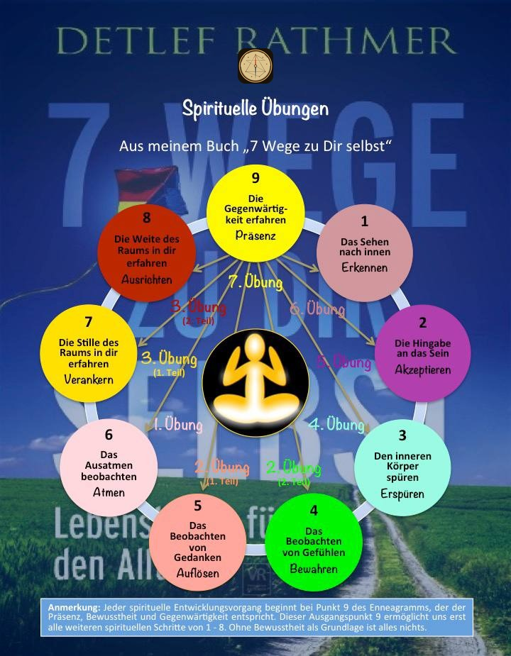
      <div class="vb-section" style="max-width:100%;">

        <h2 style="font-size:1.05rem;font-weight:700;margin-bottom:1rem;color:var(--ink);">Neun Schritte &ndash; kein Typ-Programm</h2>
        <p class="vb-intro">Diese neun Bewusstseins\xfcbungen orientieren sich an den neun Punkten des Enneagramms &ndash; aber sie sind kein typspezifisches \xdcbungsprogramm. Nicht jeder Typ macht ausschlie\xdflich &bdquo;seine&ldquo; \xdcbung. Vielmehr beschreiben sie neun aufeinander aufbauende Schritte, durch die sich das Bewusstsein allmählich von gewohnten Fixierungen l\xf6sen kann. Jede \xdcbung ber\xfchrt dabei ein Thema, das in besonderer Weise mit einem bestimmten Enneagrammpunkt und dessen innerem Prinzip verbunden ist.</p>

        <h2 style="font-size:1.05rem;font-weight:700;margin:1.8rem 0 1rem;color:var(--ink);">Punkt 9 &ndash; Pr\xe4senz: Der Ausgangspunkt</h2>
        <p class="vb-intro">Jeder Weg beginnt mit dem Bemerken. Die Neun steht f\xfcr Gegenw\xe4rtigkeit, Pr\xe4senz und Bewusstheit &ndash; und damit f\xfcr das Fundament, ohne das alle weiteren Schritte ins Leere f\xfchren. Solange wir nicht gegenw\xe4rtig sind, bleiben wir vollst\xe4ndig in unseren automatischen Reaktionen gefangen. Die erste \xdcbung lautet deshalb: <strong>Die Gegenw\xe4rtigkeit erfahren.</strong></p>

        <h2 style="font-size:1.05rem;font-weight:700;margin:1.8rem 0 1rem;color:var(--ink);">Punkt 1 &ndash; Erkennen: Das Sehen nach innen</h2>
        <p class="vb-intro">Die Aufmerksamkeit bewusst auf die eigene Innenwelt zu richten bedeutet, die Wirklichkeit so wahrzunehmen, wie sie tats\xe4chlich ist &ndash; bevor sie bewertet oder korrigiert wird. Typ 1 neigt dazu, sich an Ma\xdfst\xe4ben und Vorstellungen zu orientieren. Diese \xdcbung \xf6ffnet den Raum davor: <strong>Erkennen, was ist.</strong></p>

        <h2 style="font-size:1.05rem;font-weight:700;margin:1.8rem 0 1rem;color:var(--ink);">Punkt 2 &ndash; Akzeptieren: Die Hingabe an das Sein</h2>
        <p class="vb-intro">Die Zwei definiert sich \xfcber Beziehungen und Hilfsbereitschaft. Die \xdcbung des Akzeptierens l\xe4dt ein, die Wirklichkeit zun\xe4chst anzunehmen, ohne sie ver\xe4ndern zu m\xfcssen. Dadurch entsteht die F\xe4higkeit, das Leben zu empfangen statt st\xe4ndig zu geben: <strong>Akzeptieren, was ist.</strong></p>

        <h2 style="font-size:1.05rem;font-weight:700;margin:1.8rem 0 1rem;color:var(--ink);">Punkt 3 &ndash; Ersp\xfcren: Den inneren K\xf6rper sp\xfcren</h2>
        <p class="vb-intro">Die Drei richtet ihre Aufmerksamkeit oft nach au\xdfen auf Ziele und Ergebnisse. Die \xdcbung des Ersp\xfcrens f\xfchrt zur\xfcck in den unmittelbaren K\xf6rperkontakt und erm\xf6glicht, den eigenen Wert jenseits von Leistung zu erfahren: <strong>Den Körper als Heimat erleben.</strong></p>

        <h2 style="font-size:1.05rem;font-weight:700;margin:1.8rem 0 1rem;color:var(--ink);">Punkt 4 &ndash; Bewahren: Gef\xfchle beobachten</h2>
        <p class="vb-intro">Die Vier lebt in besonderer N\xe4he zur Gef\xfchlswelt, wird jedoch h\xe4ufig von ihren Emotionen mitgerissen. Gef\xfchle bewusst wahrzunehmen und zu halten, ohne sich vollst\xe4ndig mit ihnen zu identifizieren, schafft innere Stabilit\xe4t: <strong>Bewahren ohne Identifikation.</strong></p>

        <h2 style="font-size:1.05rem;font-weight:700;margin:1.8rem 0 1rem;color:var(--ink);">Punkt 5 &ndash; Aufl\xf6sen: Gedanken beobachten</h2>
        <p class="vb-intro">Die F\xfcnf lebt stark im Bereich des Denkens und der inneren Analyse. Gedanken als vor\xfcbergehende Erscheinungen zu erkennen &ndash; nicht zu bek\xe4mpfen, sondern einfach ziehen zu lassen &ndash; l\xf6st das Bewusstsein aus dem Gedankenkreislauf: <strong>Aufl\xf6sen statt Festhalten.</strong></p>

        <h2 style="font-size:1.05rem;font-weight:700;margin:1.8rem 0 1rem;color:var(--ink);">Punkt 6 &ndash; Atmen: Den Atem beobachten</h2>
        <p class="vb-intro">Die Sechs ist eng mit Angst und Zukunftsorientierung verbunden. Der Atem bringt die Aufmerksamkeit immer wieder in den gegenw\xe4rtigen Moment zur\xfcck und lehrt, auch in Unsicherheit bei sich zu bleiben: <strong>Im Atem verankert sein.</strong></p>

        <h2 style="font-size:1.05rem;font-weight:700;margin:1.8rem 0 1rem;color:var(--ink);">Punkt 7 &ndash; Verankern: Die Stille des inneren Raums</h2>
        <p class="vb-intro">Die Sieben sucht st\xe4ndig neue M\xf6glichkeiten und Ablenkungen. Die \xdcbung des Verankerns hilft, die Aufmerksamkeit nicht nach au\xdfen schweifen zu lassen, sondern die innere Weite und Ruhe bewusst zu erleben: <strong>Stille als Heimkommen.</strong></p>

        <h2 style="font-size:1.05rem;font-weight:700;margin:1.8rem 0 1rem;color:var(--ink);">Punkt 8 &ndash; Ausrichten: Die Weite des Raumes</h2>
        <p class="vb-intro">Die Acht verf\xfcgt \xfcber gro\xdfe Kraft und Pr\xe4senz, erlebt die Welt jedoch oft als Ort von Spannung und Widerstand. Diese \xdcbung \xf6ffnet den Blick f\xfcr eine gr\xf6\xdfere Perspektive: Bewusstsein ist weiter als jede Willenskraft. <strong>Ausrichten auf das Ganze.</strong></p>

        <h2 style="font-size:1.05rem;font-weight:700;margin:1.8rem 0 1rem;color:var(--ink);">Punkt 9 &ndash; Pr\xe4senz: Die Heimkehr</h2>
        <p class="vb-intro">Der Weg kehrt zu Punkt 9 zur\xfcck &ndash; aber auf einer anderen Ebene. Gegenw\xe4rtigkeit ist nun nicht mehr ein kurzer Moment, sondern der tragende Hintergrund aller Erfahrungen. Aus dieser Pr\xe4senz heraus k\xf6nnen Gedanken, Gef\xfchle, Handlungen und Beziehungen bewusst erlebt werden, ohne dass die Pers\xf6nlichkeit ihre gewohnte Herrschaft aus\xfcbt. <strong>Pr\xe4senz als Grundzustand.</strong></p>

        <p class="vb-intro" style="margin-top:1.5rem;">Die neun \xdcbungen beschreiben damit einen Weg vom automatischen Funktionieren zur bewussten Pr\xe4senz. Jede \xdcbung l\xf6st ein St\xfcck der jeweiligen Fixierung und er\xf6ffnet einen direkteren Zugang zu dem, was im Enneagramm jenseits der Pers\xf6nlichkeit liegt: dem gegenw\xe4rtigen, wachen Bewusstsein.</p>

        <blockquote style="border-left:3px solid var(--gold);padding:1rem 1.25rem;margin:2rem 0;font-style:italic;color:var(--copper);font-size:1.05rem;background:var(--ivory);border-radius:0 8px 8px 0;">Jeder spirituelle Entwicklungsvorgang beginnt bei Punkt 9 &ndash; der Pr\xe4senz. Ohne Bewusstheit als Grundlage ist alles nichts. &ndash; Detlef Rathmer</blockquote>

        ${bookTip("7-wege-zu-dir-selbst-lebenskunst-fuer-den-alltag", "Das Buch zu diesen \xdcbungen &ndash; sieben spirituelle Lebenskunst-Schritte f\xfcr den Alltag.", "7 Wege zu Dir selbst")}
        ${bookTip("heilung-als-erinnerung", "Heilung als R\xfcckkehr zur Pr\xe4senz &ndash; die spirituelle Dimension der inneren Arbeit.", "Heilung als Erinnerung")}
        ${bookTip("nichts-und-alles", "Bewusstsein, Stille und innere Weite &ndash; die Tiefe jenseits der Pers\xf6nlichkeit.", "Nichts und Alles")}
        ${relatedLinks([
          {route:"spirituelle-uebungen", label:"Spirituelle \xdcbungen"},
          {route:"schaubilder-als-spiegel", label:"Schaubilder als Spiegel"},
          {route:"koerperregulation", label:"K\xf6rperregulation"},
        ])}
      </div>
    </div>
  `);
}

function schaubilderAlsSpiegelPage() {
  return shell(`
    ${pageHeader("schaubilder-als-spiegel")}
    <div style="max-width:680px;margin:0 auto;padding:0 1rem 3rem;">
      <p class="eyebrow">Schaubilder &middot; Selbsterkenntnis & Reifung</p>
      <h1 class="section-title">Schaubilder als Spiegel</h1>
      <p class="psycho-intro">Wie wir auf eine Darstellung reagieren, verr\xe4t oft mehr \xfcber uns als die Darstellung selbst. Kein Mensch nimmt Schaubilder neutral auf &ndash; jeder liest und deutet sie durch die eigene Struktur hindurch.</p>
      

      <div class="vb-section">
        <p class="vb-intro">Was als \xdcbersicht vorliegt, ist nie einfach nur Information. Es ist immer auch ein Spiegel. Und Spiegel sind anspruchsvoll &ndash; sie zeigen nicht nur etwas, sondern l\xf6sen sofort eine Reaktion aus.</p>
        <p class="vb-intro">Genau darin liegt ihr Wert. Denn die Reaktion auf einen Spiegel sagt oft mehr als der Spiegel selbst.</p>

        <h2 style="font-family:'EB Garamond',serif;font-size:1.2rem;color:var(--ink);margin:1.6rem 0 .5rem;">Abwehr ist auch eine Antwort</h2>
        <p class="vb-intro">Wer an einer solchen \xdcbersicht vorbeiscrollt und innerlich sofort abwinkt &ndash; mit dem Gedanken, das sei belanglos, fremd oder spiritueller Schnickschnack &ndash; zeigt damit bereits etwas von seiner inneren Position. Das muss nicht hei\xdfen, dass dieser Mensch ungebildet w\xe4re oder nichts vom Enneagramm verst\xfcnde. Im Gegenteil: Man kann sehr viel \xfcber den eigenen Typ wissen, seine Struktur klug benennen &ndash; und dennoch dem eigenen Leben und der eigenen Fixierung gegen\xfcber tief unbewusst bleiben.</p>
        <p class="vb-intro">Wissen \xfcber Typologie ist noch nicht dasselbe wie Bewusstheit. Man kann \xfcber sich Bescheid wissen und sich dennoch nicht wirklich sehen.</p>

        <h2 style="font-family:'EB Garamond',serif;font-size:1.2rem;color:var(--ink);margin:1.6rem 0 .5rem;">Spiegel zur Reifung</h2>
        <p class="vb-intro">Aus einer tieferen Perspektive sind diese \xdcbersichten keine dekorativen Schaubilder und auch keine blo\xdfen Denkhilfen. Sie sind Spiegel zur Reifung. Sie sollen nicht nur etwas erkl\xe4ren, sondern etwas in Bewegung bringen &ndash; Selbsterkenntnis erm\xf6glichen und dadurch einen Prozess ansto\xdfen, in dem der Mensch sich nicht einfach weiter in seiner gewohnten Fixierung einrichtet.</p>
        <p class="vb-intro">Denn das Leben ist kein Stillstand. Niemand bleibt einfach derselbe. Mit jedem Tag ver\xe4ndert sich etwas, auch dann, wenn man es kaum bemerkt. Lebenszeit ver\xe4ndert den Menschen, Erfahrung ver\xe4ndert ihn, Begegnung ver\xe4ndert ihn, Krise ver\xe4ndert ihn, Einsicht ver\xe4ndert ihn.</p>

        <blockquote class="pull-quote">Man steigt nicht zweimal in denselben Fluss. Gerade deshalb ist es sinnvoll, sich immer wieder spiegeln zu lassen &ndash; nicht, um sich zu verurteilen, sondern um nicht stehenzubleiben.</blockquote>

        <h2 style="font-family:'EB Garamond',serif;font-size:1.2rem;color:var(--ink);margin:1.6rem 0 .5rem;">Wie Spiegel wirken &ndash; je nach innerem Zustand</h2>
        <p class="vb-intro">Wer eine solche \xdcbersicht anschaut, sieht nicht nur etwas \xfcber den Menschen allgemein, sondern wird immer auch mit sich selbst konfrontiert. Das geschieht auf sehr unterschiedliche Weise: Manche sp\xfcren sofort Abwehr. Andere erleben Interesse, aber nur solange es nicht zu pers\xf6nlich wird. Wieder andere erkennen sich mit einem inneren Schreck wieder. Und manche beginnen zum ersten Mal zu ahnen, dass ihre scheinbar ganz normalen Reaktionsweisen in Wahrheit l\xe4ngst geformte Muster sind &ndash; die ihr Leben st\xe4rker pr\xe4gen, als ihnen bewusst war.</p>
        <p class="vb-intro">Im tief unbewussten Zustand wird eine solche \xdcbersicht meist nicht als Hilfe erlebt, sondern als Zumutung. Der Mensch f\xfchlt sich dann nicht erkannt, sondern eher beobachtet, bewertet oder entlarvt. Er liest nicht ruhig, sondern selektiv. Er sucht nicht nach Wahrheit, sondern nach Schutz.</p>
        <p class="vb-intro">Je h\xf6her der Bewusstseinsgrad, desto offener die Begegnung mit dem Spiegel: Neugier statt Abwehr, Erkenntnis statt Rechtfertigung, Bewegung statt Stillstand.</p>
      </div>

      <div style="margin:2.5rem 0 0;">
        <h2 style="font-family:'EB Garamond',serif;font-size:1.4rem;color:var(--anthracite);margin:0 0 0.75rem;">Kein Urteil &ndash; ein Spiegel</h2>
        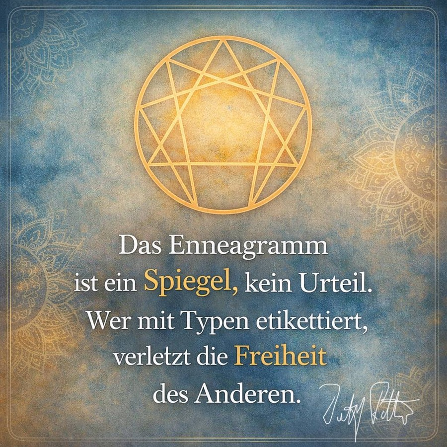
        <p style="font-size:0.95rem;line-height:1.75;color:var(--anthracite);margin:1rem 0;">Das Enneagramm ist ein Instrument der Selbsterkenntnis &ndash; kein Klassifizierungssystem für andere. Dieser Unterschied klingt selbstverständlich, wird aber im Alltag häufig verwischt. Wer jemandem beim ersten Eindruck einen Typ zuweist, wer Reaktionen von Freunden oder Kollegen als „typisch Sieben" oder „das ist halt der Achter in ihm" abtut, benutzt das Enneagramm als Urteil &ndash; und tut damit genau das, was es verhindern soll.</p>
        <p style="font-size:0.95rem;line-height:1.75;color:var(--anthracite);margin:1rem 0;">Denn ein Etikett schließt ab. Es erklärt scheinbar, was ein Mensch tut &ndash; und nimmt ihm damit die Offenheit, in diesem Moment anders zu sein. Der andere wird zur Kategorie, nicht zur Person. Was als Verständnis gemeint war, wird zur Einschränkung.</p>
        <p style="font-size:0.95rem;line-height:1.75;color:var(--anthracite);margin:1rem 0;">Ein Spiegel funktioniert anders. Er zeigt &ndash; dem, der hineinschaut. Er gibt Rückmeldung über das eigene Muster, die eigene Reaktion, die eigene Fixierung. Das Enneagramm als Spiegel bedeutet: Ich schaue auf mich, nicht auf den anderen. Ich frage nicht „Welcher Typ ist er?" sondern „Was löst er in mir aus &ndash; und was sagt das über mein Muster?" So bleibt die Freiheit des anderen unangetastet. Und so entsteht echtes Verständnis &ndash; nicht durch Einordnung, sondern durch Begegnung.</p>
      </div>

      ${bookTip("wer-du-wirklich-bist-band-1", "Das Schaubild-Buch schlechthin: Wer du wirklich bist &ndash; in farbigen, anschaulichen \xdcbersichten. Der direkte Einstieg in die visuelle Welt des Enneagramms.", "Wer du wirklich bist &ndash; Band 1")}
      ${bookTip("nichts-und-alles", "Stilles Buch \xfcber das Schauen nach innen &ndash; Bewusstsein, Raum und innere Freiheit. Der ideale Begleiter, um den eigenen Spiegel ruhiger zu halten.", "Nichts und Alles")}
      ${bookTip("du-bist-nicht-dein-zweifel", "Sich wirklich sehen &ndash; nicht nur \xfcber sich Bescheid wissen. Ein Wegweiser zum Loslassen der eigenen Fixierung.", "Du bist nicht dein Zweifel")}
      ${relatedLinks([
        {route:"neun-logismoi", label:"9 Logismoi nach Evagrius"},
        {route:"interessante-erkenntnisse", label:"Interessante Erkenntnisse"},
        {route:"bewusstseinsuebungen", label:"Bewusstseins\xfcbungen"},
      ])}
    </div>
  `);
}

function neunLogismoiPage() {
  return shell(`
    ${pageHeader("neun-logismoi")}
    <div style="max-width:680px;margin:0 auto;padding:0 1rem 3rem;">
      <p class="eyebrow">Schaubilder &middot; Geistesgeschichte & Selbsterkenntnis</p>
      <h1 class="section-title">Die 9 Logismoi nach Evagrius Ponticus</h1>
      <p class="psycho-intro">Womit f\xfcllen wir unsere innere Leere? Evagrius Ponticus beschrieb bereits im 4. Jahrhundert neun innere Bewegungen, die den Menschen von seiner Mitte wegziehen &ndash; und die erstaunliche N\xe4he zum Enneagramm zeigen.</p>
      

      <div class="vb-section">
        <p class="vb-intro">Kein Mensch ist innerlich ganz still. Etwas in uns sucht Halt, Trost, Best\xe4tigung, Sicherheit oder Lebendigkeit. Und genau an diesem Punkt wird die Frage wichtig: Womit versuchen wir, diese innere Leere zu f\xfcllen?</p>

        <p class="vb-intro">Evagrius Ponticus, ein christlicher Denker und geistlicher Lehrer der fr\xfchen Kirche, hat dazu feine und erstaunlich pr\xe4zise Beobachtungen gemacht. Er nennt innere Gedankenbewegungen &ndash; Logismoi &ndash; die den Menschen in bestimmte Richtungen dr\xe4ngen. Sie wirken oft sinnvoll und sogar n\xfctzlich. Genau das macht sie so wirksam. Denn sie versprechen etwas, das sie am Ende nicht wirklich geben k\xf6nnen.</p>

        <h2 style="font-family:'EB Garamond',serif;font-size:1.2rem;color:var(--ink);margin:1.6rem 0 .5rem;">Die neun Bewegungen</h2>

        <p class="vb-intro"><strong>Wut</strong> gibt f\xfcr einen Moment Kraft. Wer verletzt ist, kann durch Wut das Gef\xfchl bekommen, nicht mehr schwach, sondern stark zu sein. Aber diese St\xe4rke h\xe4lt nicht &ndash; Wut bindet uns oft noch fester an das, was uns verletzt hat.</p>

        <p class="vb-intro"><strong>Hochmut</strong> ist der Versuch, sich innerlich gr\xf6\xdfer zu machen, indem man sich \xfcber andere stellt. Dahinter steckt meist keine echte St\xe4rke, sondern eine verborgene Unsicherheit.</p>

        <p class="vb-intro"><strong>Ruhmsucht</strong> geht nach au\xdfen. Der Mensch lebt vom Blick der anderen, von Anerkennung und Bewunderung. Das eigene Selbstgef\xfchl h\xe4ngt daran, ob man gesehen und best\xe4tigt wird.</p>

        <p class="vb-intro"><strong>Kummer</strong> zeigt, wie ein Mensch sich im Schmerz verlieren kann. Traurigkeit geh\xf6rt zum Leben &ndash; aber manchmal bleibt man so sehr am Leid h\xe4ngen, dass es zur bestimmenden Kraft wird.</p>

        <p class="vb-intro"><strong>Habsucht</strong> versucht, Sicherheit durch Besitz zu gewinnen. <strong>Ängstlichkeit</strong> versucht, das Leben durch Kontrolle beherrschbar zu machen. <strong>Fresssucht</strong> steht nicht nur f\xfcr Essen, sondern f\xfcr den Versuch, Leere durch Konsum zu beruhigen. <strong>Unzucht</strong> meint die Flucht in Reizung und Lust, wenn die innere Spannung nicht anders zu tragen ist.</p>

        <p class="vb-intro">Besonders tiefgr\xfcndig ist der <strong>\xdcberdruss &ndash; die Acedia</strong>. Das ist nicht blo\xdfe Faulheit. Es ist eine M\xfcdigkeit der Seele: Nichts ber\xfchrt mehr wirklich, nichts schmeckt mehr, das Wesentliche verliert seine Anziehungskraft. Der Mensch funktioniert noch, ist innerlich aber leer und abgeschnitten. Diese Beschreibung klingt erstaunlich modern.</p>

        <blockquote class="pull-quote">Der Mensch wird nicht frei, indem er jede innere Unruhe sofort mit etwas f\xfcllt. Er wird frei, wenn er lernt, stiller zu werden und sich nicht von jedem inneren Impuls beherrschen zu lassen.</blockquote>

        <h2 style="font-family:'EB Garamond',serif;font-size:1.2rem;color:var(--ink);margin:1.6rem 0 .5rem;">Evagrius Ponticus &ndash; ein Mann seiner Zeit, der \xfcber seine Zeit hinausweist</h2>

        <p class="vb-intro">Evagrius lebte etwa von 345 bis 399 nach Christus. Er stammte aus Pontus (Kleinasien), erhielt eine kirchliche Ausbildung und ging sp\xe4ter in die \xe4gyptische W\xfcste &ndash; zu den ber\xfchmten W\xfcstenv\xe4tern der fr\xfchen Christenheit. Als Mönch, Asket und Schriftsteller entwickelte er einen scharfen Blick f\xfcr die seelischen K\xe4mpfe des Menschen. Seine Beschreibungen der Logismoi gelten als Vorl\xe4ufer des sp\xe4teren &bdquo;Lasterkataloges&ldquo;, der in der westlichen Kirche zu den sieben Toads\xfcnden wurde.</p>

        <p class="vb-intro">Interessant f\xfcr Enneagramm-Kenner: Evagrius z\xe4hlte urspr\xfcnglich <em>neun</em> Logismoi &ndash; nicht sieben. Diese Neunzahl ist kein Zufall. Sie spiegelt eine tiefe Beobachtung, dass sich menschliche Grundmuster in neun typischen Auspr\xe4gungen zeigen &ndash; eine Einsicht, die das Enneagramm sp\xe4ter in einer anderen Sprache fortgef\xfchrt hat.</p>

        <h2 style="font-family:'EB Garamond',serif;font-size:1.2rem;color:var(--ink);margin:1.6rem 0 .5rem;">Die N\xe4he zum Enneagramm</h2>

        <p class="vb-intro">Evagrius kannte das moderne psychologische Enneagramm nicht &ndash; es gab es in dieser Form damals noch nicht. Und doch beschreibt er Muster, die sich in den neun Typen wiedererkennen lassen: die Wut des Achtere, der Hochmut des Zweiers, die Ruhmsucht des Dreierers, der Kummer des Vierere, die Habsucht des F\xfcnfers, die Ängstlichkeit des Sechsers, die Fresssucht des Siebener, die Unzucht des Sexualtyps, die Acedia als Schatten des Neuners.</p>

        <p class="vb-intro">Das zeigt: Manche Wahrheiten \xfcber den Menschen veralten nicht. Sie tauchen in verschiedenen Zeiten, Kulturen und Sprachen immer wieder auf, weil sie etwas Grundlegendes \xfcber das menschliche Leben ber\xfchren. Beide Systeme &ndash; die Logismoi wie das Enneagramm &ndash; schauen auf dieselbe Frage: Was macht den Menschen unfrei? Und was f\xfchrt ihn zur\xfcck zu seiner Wahrheit?</p>

        <p class="vb-intro">Diese \xdcbersicht l\xe4dt zur Selbsterkenntnis ein: Wohin ziehst du, wenn du innerlich leer wirst? Womit beruhigst du dich? Was k\xf6nnte geschehen, wenn du nicht sofort fliehst, sondern stiller wirst &ndash; und ehrlicher hinschaust?</p>
      </div>

      ${bookTip("wer-du-wirklich-bist-band-1", "Das Enneagramm als Weg zur Selbsterkenntnis &ndash; was uns unfrei macht und was uns zur\xfcck zur Wahrheit f\xfchrt.", "Wer du wirklich bist &ndash; Band 1")}
      ${bookTip("du-bist-nicht-dein-zweifel", "Loslassen, was nicht wirklich du bist &ndash; ein Wegweiser aus den inneren Fixierungen heraus.", "Du bist nicht dein Zweifel")}
      ${relatedLinks([
        {route:"gifte-des-geistes", label:"Gifte des Geistes"},
        {route:"schaubilder-als-spiegel", label:"Schaubilder als Spiegel"},
        {route:"spirituelle-uebungen", label:"Spirituelle \xdcbungen"},
      ])}
    </div>
  `);
}

function gaslightingPage() {
  return shell(`
    ${pageHeader("gaslighting-enneagramm")}
    <div style="max-width:680px;margin:0 auto;padding:0 1rem 3rem;">
      <p class="eyebrow">Schaubilder &middot; Beziehungspsychologie</p>
      <h1 class="section-title">Gaslighting und Enneagramm</h1>
      <p class="psycho-intro">Gaslighting ist eine Form psychischer Manipulation, bei der die Wahrnehmung, das Erleben oder das Erinnern eines anderen Menschen systematisch infrage gestellt wird &ndash; mit dem Ziel, Verunsicherung zu erzeugen und die Deutungshoheit \xfcber die gemeinsame Realit\xe4t zu gewinnen.</p>
      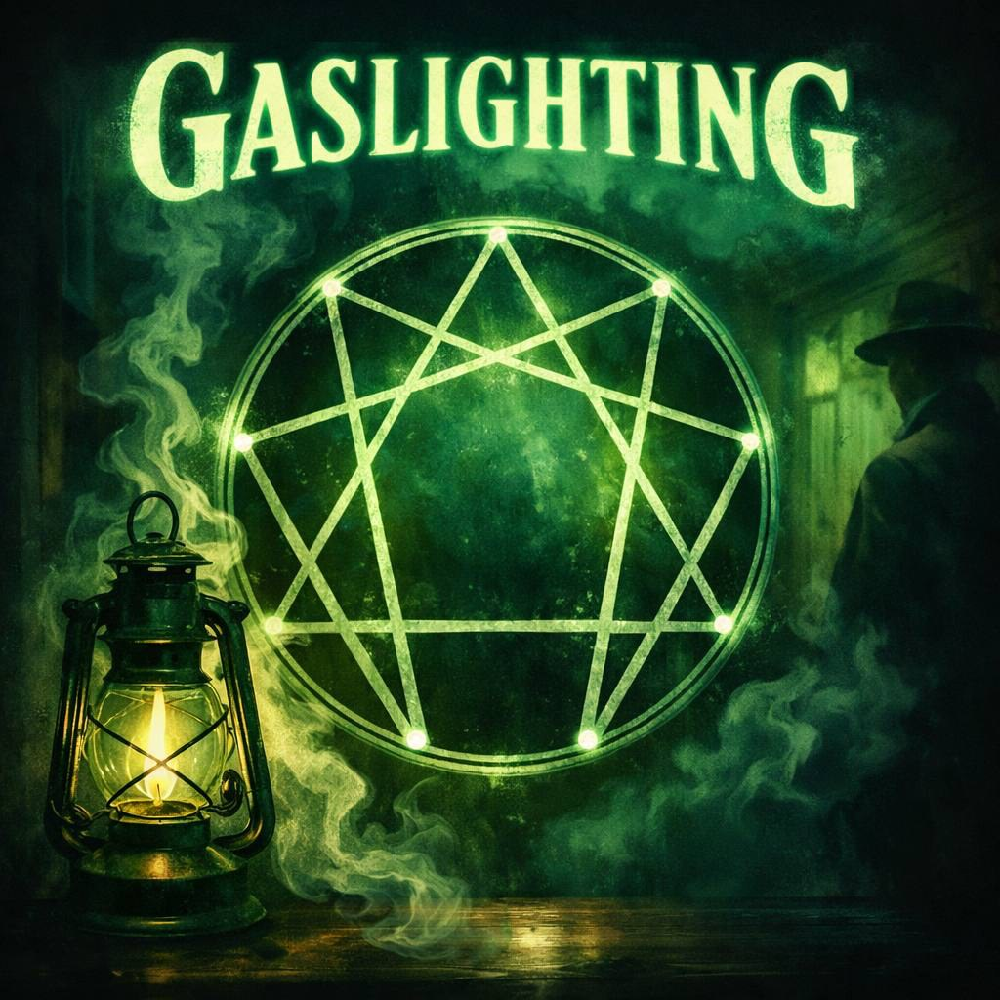

      <div class="vb-section">
        <p class="vb-intro">Im Zusammenhang mit dem Enneagramm geht es nicht darum, bestimmte Typen pauschal als manipulativ abzustempeln. Das w\xe4re zu kurz gedacht und w\xfcrde dem System widersprechen. Entscheidend ist vielmehr: Unreife Auspr\xe4gungen einzelner Typen k\xf6nnen bestimmte Muster beg\xfcnstigen, die f\xfcr gaslightingartige Dynamiken anf\xe4lliger machen. Manche Menschen steuern Realit\xe4t \xfcber Schuld, andere \xfcber emotionale Verschmelzung, wieder andere \xfcber Angst, moralischen Druck oder die Kontrolle von Narrativen.</p>

        <p class="vb-intro">Die h\xf6chste Tendenz zeigt sich dort, wo Bindung, Identit\xe4t und Kontrolle eng miteinander verkn\xfcpft sind &ndash; wo das eigene Erleben als Ma\xdfstab f\xfcr eine gemeinsame Realit\xe4t gesetzt wird und der andere in dieser Realit\xe4t festgehalten werden soll.</p>

        <h2 style="font-family:'EB Garamond',serif;font-size:1.2rem;color:var(--ink);margin:1.8rem 0 .5rem;">Sehr hohe Intensit\xe4t &ndash; Bindung, Identit\xe4t und Kontrolle</h2>
        <p class="vb-intro">Besonders intensiv kann das bei der <strong>SX2</strong> auftreten: Wenn Bindung \xfcber Schuld und emotionale Realit\xe4t gesteuert wird, entsteht ein System, in dem der andere dauerhaft das Gef\xfchl hat, zu versagen oder zu wenig zu sein. Auch die <strong>SX4</strong> geh\xf6rt in diesen Bereich &ndash; hier wird das eigene Gef\xfchl leicht mit Wahrheit gleichgesetzt, und die starke Identit\xe4tsverschmelzung macht es schwer, zwischen subjektivem Erleben und geteilter Realit\xe4t zu unterscheiden. Die <strong>SX6</strong> kann durch Angst, Bindungsdruck und eine verzerrte Wahrnehmung von Bedrohungen sehr verunsichernde Dynamiken erzeugen. Bei der <strong>SO3</strong> steht eher die Kontrolle des Narrativs im Vordergrund: Realit\xe4t wird \xfcber Image und Darstellung geformt &ndash; was z\xe4hlt, ist das, was nach au\xdfen stimmt. Die <strong>SX8</strong> wiederum kann durch Dominanz und Beziehungsmacht massiven Einfluss auf das Realit\xe4tserleben anderer aus\xfcben. Diesen Mustern ist gemeinsam, dass sie bei Unreife tief in das Selbstgef\xfchl des Gegen\xfcbers eingreifen k\xf6nnen.</p>

        <h2 style="font-family:'EB Garamond',serif;font-size:1.2rem;color:var(--ink);margin:1.8rem 0 .5rem;">Hohe Intensit\xe4t &ndash; subtiler, aber psychologisch wirksam</h2>
        <p class="vb-intro">Eine sehr hohe, aber oft feinere Tendenz findet sich bei Typen, die weniger offen kontrollieren &ndash; daf\xfcr psychologisch pr\xe4ziser wirken. Die <strong>SO2</strong> arbeitet h\xe4ufig mit Schuld, Beziehungsdruck und moralischem Appell. Die <strong>SX3</strong> kann Realit\xe4t stark in den Dienst von Bindung und gew\xfcnschter Spiegelung stellen. Die <strong>SO6</strong> neigt dazu, \xfcber Bedrohungsnarrative und Gruppennormen Einfluss zu nehmen &ndash; wer nicht zustimmt, gef\xe4hrdet den Zusammenhalt. Die <strong>SX1</strong> kann moralische Deutungen so intensiv aufladen, dass die eigene Sicht als einzig legitime erscheint. Die <strong>SO4</strong> bringt oft ein starkes Identit\xe4tsnarrativ mit, bei dem emotionale Wahrheit \xfcber n\xfcchterne Kl\xe4rung gestellt wird. Die <strong>SX5</strong> wirkt meist leiser, kann aber durch subtile kognitive Destabilisierung erheblich verunsichern.</p>

        <h2 style="font-family:'EB Garamond',serif;font-size:1.2rem;color:var(--ink);margin:1.8rem 0 .5rem;">Mittlere Intensit\xe4t &ndash; Rationalisierung und Kontextverschiebung</h2>
        <p class="vb-intro">Im mittleren Bereich stehen Muster, die eher \xfcber Rationalisierung, Projektion oder Kontextverschiebung funktionieren. Die <strong>SO8</strong> verbindet Macht mit Narrativkontrolle, bleibt aber meist weniger identit\xe4tsnah. Die <strong>SE6</strong> konstruiert h\xe4ufig eine Sicherheitsrealit\xe4t, in der Vorsicht und Bedrohung das Bild dominieren. Die <strong>SX7</strong> kann durch Verharmlosung und emotionale Verschiebung Realit\xe4t verwischen, ohne sie offen zu kontrollieren. Die <strong>SO5</strong> neigt zur kognitiven Normierung: das eigene Denken wird zum Ma\xdfstab. Die <strong>SE2</strong> arbeitet indirekter mit Schuld, w\xe4hrend die <strong>SX9</strong> durch Verschmelzung und Vernebelung Klarheit erschweren kann &ndash; ohne dabei bewusst hart zu manipulieren.</p>

        <h2 style="font-family:'EB Garamond',serif;font-size:1.2rem;color:var(--ink);margin:1.8rem 0 .5rem;">Geringe Intensit\xe4t &ndash; Vermeidung statt Verdrehung</h2>
        <p class="vb-intro">Im eher geringen Bereich finden sich Typen, bei denen Vermeidung, Abschw\xe4chung oder Rationalisierung st\xe4rker ausgepr\xe4gt sind als echte Realit\xe4tsverdrehung. Die <strong>SE3</strong> ist zwar imageorientiert, aber meist weniger auf tiefe Identit\xe4tsverschmelzung ausgerichtet. Die <strong>SE4</strong> hat eine subjektive Wirklichkeit, versucht aber seltener, andere systematisch darin festzuhalten. Die <strong>SO7</strong> bagatellisiert eher, als Realit\xe4t gezielt umzudeuten. Die <strong>SE8</strong> setzt h\xe4ufiger auf direkte Macht als auf subtile psychologische Verzerrung. Die <strong>SE1</strong> orientiert sich an Regeln statt an manipulativer Deutung, und die <strong>SO9</strong> neigt eher zur Konfliktvernebelung als zu gezielter Destabilisierung.</p>

        <h2 style="font-family:'EB Garamond',serif;font-size:1.2rem;color:var(--ink);margin:1.8rem 0 .5rem;">Niedrigste Intensit\xe4t &ndash; R\xfcckzug statt Kontrolle</h2>
        <p class="vb-intro">Die niedrigste Tendenz zeigt sich dort, wo Menschen sich eher entziehen oder ausweichen, statt aktiv Realit\xe4t umzudeuten. Die <strong>SE5</strong> zieht sich zur\xfcck, statt andere mental zu destabilisieren. Die <strong>SE7</strong> fl\xfcchtet vor unangenehmen Realit\xe4ten, anstatt sie zu kontrollieren. Die <strong>SE9</strong> ber\xe4uhigt, d\xe4mpft und schl\xe4fert Konflikte eher ein, statt durch gezielte Umdeutung zu manipulieren. Auch diese Typen k\xf6nnen selbstverst\xe4ndlich gaslightingartige Verhaltensweisen zeigen &ndash; aber meist nicht so systematisch und nicht so identit\xe4tsnah wie andere Konstellationen.</p>

        <blockquote class="pull-quote">Kein Typ ist automatisch toxisch &ndash; und kein Typ ist automatisch harmlos. Entscheidend sind Reifegrad, Selbstreflexion und die Bereitschaft, Verantwortung f\xfcr das eigene Verhalten zu \xfcbernehmen.</blockquote>

        <p class="vb-intro">Das Enneagramm beschreibt Strukturen und Tendenzen, keine moralischen Urteile. Der Nutzen einer solchen Einordnung liegt nicht darin, Menschen vorschnell zu verurteilen. Er liegt darin, Manipulationsmuster besser zu erkennen, klarer zu benennen &ndash; und sich bewusster davor zu sch\xfctzen.</p>
      </div>

      ${bookTip("hinter-der-leidenschaft", "Die tieferen Antriebskr\xe4fte hinter den neun Mustern &ndash; warum Menschen so handeln, wie sie handeln, und was das mit ihrer Wunde zu tun hat.", "Hinter der Leidenschaft")}
      ${bookTip("wenn-die-stille-brennt", "Wenn innere Erschöpfung auf das Enneagramm trifft &ndash; Burnout, Grenzverlust und der Weg zur\xfcck zu sich selbst.", "Wenn die Stille brennt &ndash; Burnout")}
      ${bookTip("du-bist-nicht-dein-zweifel", "Loslassen, was nicht wirklich du bist &ndash; ein Wegweiser aus den inneren Fixierungen und Abh\xe4ngigkeiten heraus.", "Du bist nicht dein Zweifel")}
      ${relatedLinks([
        {route:"interessante-erkenntnisse", label:"Interessante Erkenntnisse"},
        {route:"wunden", label:"Wunden & Schutzstrategien"},
        {route:"leidenschaft-und-wunde", label:"Leidenschaft und Wunde"},
      ])}
    </div>
  `);
}

function interessanteErkenntnissePage() {
  return shell(`
    ${pageHeader("interessante-erkenntnisse")}
    <div style="max-width:680px;margin:0 auto;padding:0 1rem 3rem;">
      <p class="eyebrow">Schaubilder &middot; Typpsychologie</p>
      <h1 class="section-title">Neun interessante Erkenntnisse</h1>
      <p class="psycho-intro">Was viele \xfcber die neun Enneagrammtypen glauben zu wissen &ndash; und was wirklich dahintersteckt. Neun Beobachtungen aus jahrzehntelanger therapeutischer und diagnostischer Praxis.</p>
      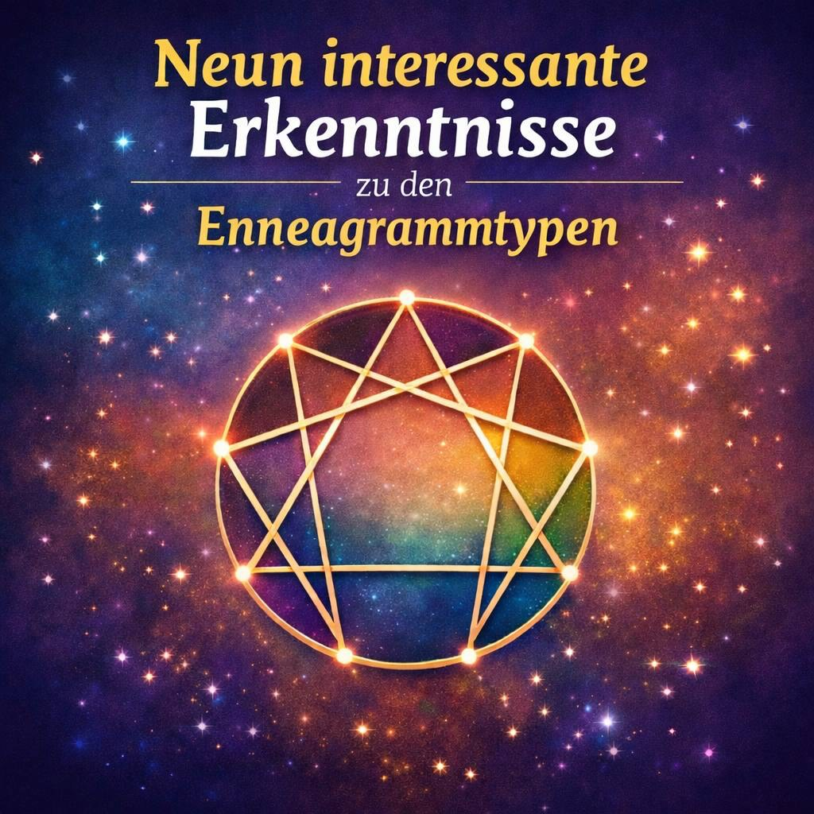

      <div class="vb-section">
        <p class="vb-intro">Das Enneagramm ist ein pr\xe4zises System &ndash; aber auch eines, das leicht missverstanden werden kann. Viele Typenbilder vereinfachen zu stark und erzeugen Karikaturen statt echter Selbsterkenntnis. Die folgenden neun Beobachtungen r\xe4umen mit einigen verbreiteten Kurzschl\xfcssen auf und sch\xe4rfen den Blick f\xfcr das, was wirklich bewegt.</p>

        <h2 style="font-family:'EB Garamond',serif;font-size:1.2rem;color:var(--ink);margin:1.8rem 0 .5rem;">Typ 1 &ndash; Nicht Perfektion, sondern innere Anklage</h2>
        <p class="vb-intro">Einser werden h\xe4ufig als perfektionistisch beschrieben &ndash; aber das trifft den Kern nur halb. Das Entscheidende ist nicht die \xe4u\xdfere Ordnung, sondern der permanente innere Korrekturimpuls: eine Art moralischer Muskelspannung, die nie vollst\xe4ndig nachl\xe4sst. Manche Einser wirken nach au\xdfen durchaus locker und tolerant &ndash; und tragen dennoch einen unerbittlichen inneren Richter in sich, der jede Handlung, jeden Gedanken und jede Entscheidung im Nachhinein bewertet. Das Leiden des Einsers entsteht nicht durch Unordnung um ihn herum, sondern durch die nie ganz zum Schweigen zu bringende Stimme, die sagt: <em>So gut genug ist das noch nicht.</em></p>

        <h2 style="font-family:'EB Garamond',serif;font-size:1.2rem;color:var(--ink);margin:1.8rem 0 .5rem;">Typ 2 &ndash; Helfen als Beziehungsstrategie</h2>
        <p class="vb-intro">Zweier helfen &ndash; aber nicht immer aus reiner Liebe. H\xe4ufig dient ihre Gro\xdfz\xfcgigkeit auch dazu, Bindung herzustellen und sich unentbehrlich zu machen. Das geschieht in den meisten F\xe4llen unbewusst: Der Zweier sp\xfcrt echte W\xe4rme, echten Wunsch zu geben &ndash; und merkt dabei nicht, dass er damit gleichzeitig ein Beziehungsgef\xfcge aufbaut, in dem der andere sich kaum noch frei f\xfchlen kann. Zweier k\xf6nnen auf diese Weise kontrollierender wirken, als sie es selbst wahrhaben m\xf6chten. Die eigentliche Frage, der sie ausweichen, lautet: <em>Bin ich auch liebenswert, wenn ich nichts gebe?</em></p>

        <h2 style="font-family:'EB Garamond',serif;font-size:1.2rem;color:var(--ink);margin:1.8rem 0 .5rem;">Typ 3 &ndash; Selbstverwechslung mit der Rolle</h2>
        <p class="vb-intro">Dreier t\xe4uschen nicht immer bewusst. Das w\xe4re zu einfach. H\xe4ufig identifizieren sie sich so vollst\xe4ndig mit ihrer Funktion, ihrer Rolle oder ihrer Effizienz, dass sie den Kontakt zu ihrem eigentlichen inneren Erleben partiell wirklich verlieren. Es ist keine Maske, die sie aufsetzen &ndash; es ist eine Verwechslung: Sie halten die Performance f\xfcr sich selbst. Das macht sie nicht zum L\xfcgner, sondern zu jemandem, der ehrlich das zeigt, was er f\xfcr sich h\xe4lt. Der eigentliche therapeutische Prozess beim Dreier beginnt erst, wenn er zu fragen lernt: <em>Wer bin ich, wenn ich nicht leiste?</em></p>

        <h2 style="font-family:'EB Garamond',serif;font-size:1.2rem;color:var(--ink);margin:1.8rem 0 .5rem;">Typ 4 &ndash; Pr\xe4zision, nicht nur Gef\xfchlstiefe</h2>
        <p class="vb-intro">Vierer gelten als die Gef\xfchlsmenschen des Enneagramms &ndash; aber das greift zu kurz. Oft sind sie erstaunlich pr\xe4zise Beobachter feiner innerer Differenzen: Sie nehmen wahr, was nicht ganz stimmt, was fehlt, was in einer Situation m\xe4\xdfig leicht verschoben ist. Man k\xf6nnte es <em>Feinabstimmungsbewusstsein</em> nennen. Ihr Leiden entsteht nicht prim\xe4r aus Gef\xfchlstiefe allein, sondern aus dieser fast k\xfcnstlerischen Sensibilit\xe4t f\xfcr das Unfertige und das Uneigentliche. Weil sie so pr\xe4zise wahrnehmen, was fehlt, sind sie auch am schwersten zu befriedigen.</p>

        <h2 style="font-family:'EB Garamond',serif;font-size:1.2rem;color:var(--ink);margin:1.8rem 0 .5rem;">Typ 5 &ndash; Geiz mit Energie, nicht nur mit Wissen</h2>
        <p class="vb-intro">F\xfcnfer werden oft als Wissenssammler beschrieben, die ihr Wissen zur\xfcckhaltend dosieren. Das ist ein Teil der Wahrheit. Das Kernproblem liegt tiefer: F\xfcnfer halten prim\xe4r ihre Energie, ihren Zugriff und ihre Verf\xfcgbarkeit zur\xfcck. Wissen ist f\xfcr sie h\xe4ufig ein Mittel, um den eigenen Innenraum zu sch\xfctzen &ndash; einen Raum, den sie als begrenzt und kostbar erleben. Die Angst, die sie antreibt, ist nicht soziale K\xe4lte, sondern die tiefe Bef\xfcrchtung, durch Anforderungen und Erwartungen anderer innerlich leergezogen zu werden. R\xfcckzug ist f\xfcr sie kein Luxus, sondern Selbstschutz.</p>

        <h2 style="font-family:'EB Garamond',serif;font-size:1.2rem;color:var(--ink);margin:1.8rem 0 .5rem;">Typ 6 &ndash; Angst, die sich als Angriff tarnt</h2>
        <p class="vb-intro">Sechser sind nicht einfach \xe4ngstlich im klassischen Sinn. Viele wirken eher k\xe4mpferisch, provokant oder widerspr\xfcchlich widerst\xe4ndig. Die Angst wird dann \xfcber Gegenkontrolle, gezielte Pr\xfcfung, Skepsis und manchmal auch \xfcber offene Konfrontation abgewehrt. Gerade der sexuelle Sechser (SX6) entwickelt so eine Haltung, die nach au\xdfen stark an eine Acht oder an einen Dreier erinnern kann. Wer Sechser nur als \xe4ngstliche, angepasste Typen kennt, wird diese Variante r\xe4tselhaft finden &ndash; bis er begreift, dass Angriff und Kontrolle ebenfalls Formen der Angstbew\xe4ltigung sind.</p>

        <h2 style="font-family:'EB Garamond',serif;font-size:1.2rem;color:var(--ink);margin:1.8rem 0 .5rem;">Typ 7 &ndash; Flucht vor Eindeutigkeit</h2>
        <p class="vb-intro">Siebener fliehen nicht nur vor Schmerz. Das ist bekannt &ndash; aber es erkl\xe4rt sie nicht vollst\xe4ndig. Mindestens ebenso bedeutsam ist die Flucht vor Begrenzung durch Eindeutigkeit: Sich festzulegen bedeutet f\xfcr einen Siebener nicht nur Verzicht auf Alternativen, sondern einen existenziellen Identit\xe4tsverlust. Wer eine M\xf6glichkeit w\xe4hlt, l\xe4sst alle anderen sterben. Das ist f\xfcr Siebener kein rhetorisches Bild, sondern eine innere Realit\xe4t. Ihre Rastlosigkeit, ihr Planen, ihr ewiges Offen-Halten von Optionen ist deshalb h\xe4ufig existenzieller Natur &ndash; sie selbst geben das seltener zu, als es tats\xe4chlich der Fall ist.</p>

        <h2 style="font-family:'EB Garamond',serif;font-size:1.2rem;color:var(--ink);margin:1.8rem 0 .5rem;">Typ 8 &ndash; St\xe4rke als Schutz vor Ohnmacht</h2>
        <p class="vb-intro">Achter wirken m\xe4chtig &ndash; und das sind sie in vieler Hinsicht auch. Aber ihre eigentliche Empfindlichkeit liegt an einer Stelle, die nach au\xdfen kaum sichtbar ist: der Unm\xf6glichkeit, Ohnmacht zuzulassen. Viele Achten ertragen k\xf6rperlichen Schmerz und emotionale Belastung besser als den Zustand von Hilflosigkeit und Ausgeliefertsein. Ihre H\xe4rte ist deshalb h\xe4ufig weniger Aggression als ein Panzer, den sie gegen genau dieses Erleben errichtet haben. Wer einer Acht wirklich begegnen will, muss verstehen, dass hinter der Kraft eine sehr fr\xfche Erfahrung steht: <em>Schwach sein ist gef\xe4hrlich.</em></p>

        <h2 style="font-family:'EB Garamond',serif;font-size:1.2rem;color:var(--ink);margin:1.8rem 0 .5rem;">Typ 9 &ndash; Selbstvergessenheit des Willens</h2>
        <p class="vb-intro">Neuner werden gerne als bequem oder konfliktvermeidend beschrieben. Das erfasst aber nur die Oberfl\xe4che. Das tiefere Muster ist subtiler: Neuner verlieren sich schleichend in Anpassung, Routinen und Nebens\xe4chlichkeiten &ndash; nicht weil sie faul w\xe4ren, sondern weil ihr eigenes Zentrum zunehmend diffus wird. Sie k\xf6nnen sehr viel f\xfcr andere leisten und sich dabei fragen, was sie selbst eigentlich wollen. Das Hauptproblem des Neuners ist deshalb nicht Faulheit im banalen Sinn, sondern eine Art <em>Selbstvergessenheit des Willens</em>: Der eigene Impuls, der eigene Wunsch, die eigene Richtung wird im stetigen Anpassen immer schwerer sp\xfcrbar.</p>

        <blockquote class="pull-quote">Das Enneagramm wird erst wirklich n\xfctzlich, wenn es nicht mehr die Schublade beschreibt, sondern die Kraft, die darin sitzt.</blockquote>
      </div>

      ${bookTip("wer-du-wirklich-bist-band-1", "Die neun Typen in Schaubildern &ndash; von den Grundstrukturen bis zu den feinen Unterschieden, die in Kurzdarstellungen h\xe4ufig verloren gehen.", "Wer du wirklich bist &ndash; Band 1")}
      ${bookTip("hinter-der-leidenschaft", "Was hinter den neun Leidenschaften wirklich steckt &ndash; die Wunden, die sie antreiben, und die Heilmittel, die sie l\xf6sen k\xf6nnen.", "Hinter der Leidenschaft")}
      ${relatedLinks([
        {route:"gaslighting-enneagramm", label:"Gaslighting & Enneagramm"},
        {route:"lookalike-typen", label:"Lookalike-Typen"},
        {route:"differenzierung", label:"Differenzierung"},
      ])}
    </div>
  `);
}

function bedeutungSubtypenPage() {
  return shell(`
    ${pageHeader("bedeutung-27-subtypen")}
    <div style="max-width:680px;margin:0 auto;padding:0 1rem 3rem;">
      <p class="eyebrow">Schaubilder &middot; Subtypen &amp; Typisierung</p>
      <h1 class="section-title">Warum die 27 Subtypen unerl\xe4sslich sind</h1>
      <p class="psycho-intro">Wer sich ernsthaft mit dem Enneagramm besch\xe4ftigt, kommt an den 27 Subtypen nicht vorbei. Es ist ein grundlegender Irrtum zu glauben, man k\xf6nne zun\xe4chst &bdquo;nur mit den neun Typen anfangen&ldquo; und sp\xe4ter die Subtypen erg\xe4nzen &ndash; denn ohne sie bleibt das Bild zu grob f\xfcr eine ernsthafte Typisierung.</p>
      

      <div class="vb-section">
        <p class="vb-intro">Die neun Typen allein erzeugen zu schnell Karikaturen. Typ 8 wird &bdquo;der Starke&ldquo;, Typ 2 &bdquo;der Helfer&ldquo;, Typ 5 &bdquo;der Denker&ldquo;, Typ 4 &bdquo;der Gef\xfchlstiefe&ldquo;. Das mag f\xfcr einen ersten \xdcberblick gen\xfcgen &ndash; f\xfcr eine ernsthafte Typbestimmung reicht es nicht. Denn Menschen leben nicht als Schablonen. Sie leben als konkrete, differenzierte, oft \xfcberraschende Auspr\xe4gungen eines Musters.</p>

        <h2 style="font-family:'EB Garamond',serif;font-size:1.2rem;color:var(--ink);margin:1.6rem 0 .5rem;">Die neun Typen ohne Subtypen f\xfchren in die Irre</h2>
        <p class="vb-intro">Wer ausschlie\xdflich mit den neun Grundtypen arbeitet, l\xe4uft Gefahr, Menschen zu schnell einzuordnen. Man erkennt gewisse Verhaltenszuge, gewisse Grundthemen &ndash; und meint, schon am Ziel zu sein. In Wirklichkeit hat man oft erst die grobe Landkarte in der Hand. Die eigentliche Landschaft zeigt sich erst, wenn die drei Instinktbereiche hinzukommen: selbsterhaltend, sozial oder sexuell.</p>
        <p class="vb-intro">Erst dann wird deutlich, warum zwei Menschen vom selben Grundtyp so verschieden wirken k\xf6nnen, dass man sie auf den ersten Blick f\xfcr zwei v\xf6llig verschiedene Typen halten w\xfcrde. Ein selbsterhaltender Vierer kann sachlicher und stoischer wirken, als das g\xe4ngige Bild von Typ 4 vermuten lie\xdfe. Ein sozialer Achter kann f\xfcrsorglicher und gemeinschaftsbezogener erscheinen, als viele von einer Acht erwarten. Ein sexueller Sechser kann wie eine Acht erscheinen. Ein selbsterhaltender Zweier kann leicht f\xfcr eine Sechs oder Vier gehalten werden.</p>

        <h2 style="font-family:'EB Garamond',serif;font-size:1.2rem;color:var(--ink);margin:1.6rem 0 .5rem;">Die 27 Subtypen sind keine Verfeinerung f\xfcr Spezialisten</h2>
        <p class="vb-intro">Man kann es direkt sagen: In der Praxis begegnen uns nicht neun Typen, sondern 27 Erscheinungsweisen dieser neun Typen. Der Grundtyp bleibt zentral. Aber er tritt nie abstrakt auf. Er erscheint immer schon in einer bestimmten Instinktdynamik, in einer bestimmten Art, sich in der Welt zu organisieren. Wer nur den Grundtyp betrachtet und die Subtypen ausblendet, arbeitet mit einem Skelett &ndash; aber noch nicht mit dem lebendigen Menschen.</p>
        <p class="vb-intro">Die Subtypen sind deshalb keine sp\xe4tere Kur f\xfcr Fortgeschrittene, sondern von Anfang an ein notwendiger Teil des Verst\xe4ndnisses. Sie zeigen, wie sich ein Typ tats\xe4chlich verk\xf6rpert, wohin seine Energie flie\xdft, wodurch seine Leidenschaft gef\xe4rbt wird.</p>

        <h2 style="font-family:'EB Garamond',serif;font-size:1.2rem;color:var(--ink);margin:1.6rem 0 .5rem;">Typisierung braucht Beweglichkeit</h2>
        <p class="vb-intro">Ein gutes Enneagramm-Verst\xe4ndnis lebt nicht davon, stur an einer Ebene festzuhalten. Es braucht die F\xe4higkeit, zwischen verschiedenen Ebenen hin und her zu zoomen. Manchmal muss man weit herauszoomen: Ist dieser Mensch eher im Herz-, Kopf- oder Bauchzentrum verankert? Dann wieder n\xe4her heran: Welcher der drei Typen innerhalb dieser Triade k\xf6nnte es sein? Und dann noch einmal genauer hinsehen: In welcher instinktiven F\xe4rbung zeigt sich dieser Typ?</p>
        <p class="vb-intro">Das ist kein Luxus, sondern echte Notwendigkeit. Die Zahl 3 bleibt wichtig wegen der Triaden. Die Zahl 9 bleibt wichtig wegen der Grundtypen. Aber die Zahl 27 ist in der konkreten Arbeit mit realen Menschen unentbehrlich.</p>

        <blockquote class="pull-quote">Die eigentliche Frage ist nicht: Welcher Typ ist das? Sondern: In welcher konkreten Form lebt dieser Mensch seinen Typ?</blockquote>

        <h2 style="font-family:'EB Garamond',serif;font-size:1.2rem;color:var(--ink);margin:1.6rem 0 .5rem;">Subtypen sch\xfctzen vor Vereinfachung</h2>
        <p class="vb-intro">Viele Menschen machen die Erfahrung, dass sie sich lange mit dem Enneagramm besch\xe4ftigen, viel lesen, viele Typenbeschreibungen kennen &ndash; und bei der eigenen Typbestimmung trotzdem nicht vorankommen. Man bleibt unsicher, schwankt zwischen Typen oder hat das Gef\xfchl, dass keine Beschreibung wirklich passt. Oft liegt das schlicht daran, dass zu grob gearbeitet wurde.</p>
        <p class="vb-intro">Die Subtypen machen das Enneagramm nicht unn\xf6tig kompliziert. Sie machen es erst wirklich realit\xe4tsnah. Sie sch\xfctzen vor der Versuchung, Menschen vorschnell festzulegen. Sie sch\xfctzen vor Typenkarikaturen und oberfl\xe4chlichen Zuschreibungen. Und sie holen das Enneagramm aus der Abstraktion zur\xfcck ins Leben &ndash; denn ein Mensch ist eben nicht einfach &bdquo;eine Vier&ldquo; oder &bdquo;eine Sechs&ldquo;. Er lebt seinen Typ immer in einer bestimmten Weise. Und diese Weise ist psychologisch, energetisch und diagnostisch hoch bedeutsam.</p>

        <p class="vb-intro">Subtypen von Anfang an mitzudenken hei\xdft nicht, sich zu verzetteln. Es geht darum, von Anfang an das richtige innere Bild zu geben: Es gibt neun Grundtypen, und jeder dieser Typen erscheint in drei grundlegenden instinktiven Varianten. Allein dieses Wissen ver\xe4ndert die ganze Haltung. Man lernt dann nicht neun starre Schablonen, sondern von Anfang an ein lebendiges, differenziertes System.</p>

        <p class="vb-intro">Erst in den 27 Subtypen zeigt sich der Mensch in seiner wirklichen seelischen Gestalt. Wer bei den neun Grundtypen stehenbleibt, sieht nur die grobe Kontur.</p>
      </div>

      ${bookTip("dynamik-27-subtypen", "Die 27 Untertypen im Detail &ndash; Normal-, Verst\xe4rkungs- und Kontratyp jedes Enneagrammtyps ausf\xfchrlich erl\xe4utert.", "Die verborgene Dynamik der 27 Subtypen")}
      ${bookTip("wer-du-wirklich-bist-band-1", "Das Schaubild-Buch schlechthin: die neun Typen in farbigen, anschaulichen \xdcbersichten &ndash; der direkte Einstieg ins visuelle Enneagramm.", "Wer du wirklich bist &ndash; Band 1")}
      ${relatedLinks([
        {route:"antriebskraefte", label:"Antriebskr\xe4fte der Menschheit"},
        {route:"subtypen-schaubilder", label:"Subtypen-Schaubilder (alle 27)"},
        {route:"horney-triaden", label:"Horney-Triaden & Subtypen"},
      ])}
    </div>
  `);
}

function identifikationPage() {
  return shell(`
    ${pageHeader("identifikation")}
    <div style="max-width:680px;margin:0 auto;padding:0 1rem 3rem;">
      <p class="eyebrow">Schaubilder \xb7 Bewusstsein & Selbsterkenntnis</p>
      <h1 class="section-title">Je enger die Identifikation, desto lauter das Muster</h1>
      <p class="psycho-intro">Ein Satz \xfcber den Zusammenhang zwischen Bewusstsein und Leidenschaft &ndash; und warum das Enneagramm kein Etikettensystem ist, sondern ein Weg zur inneren Freiheit.</p>
      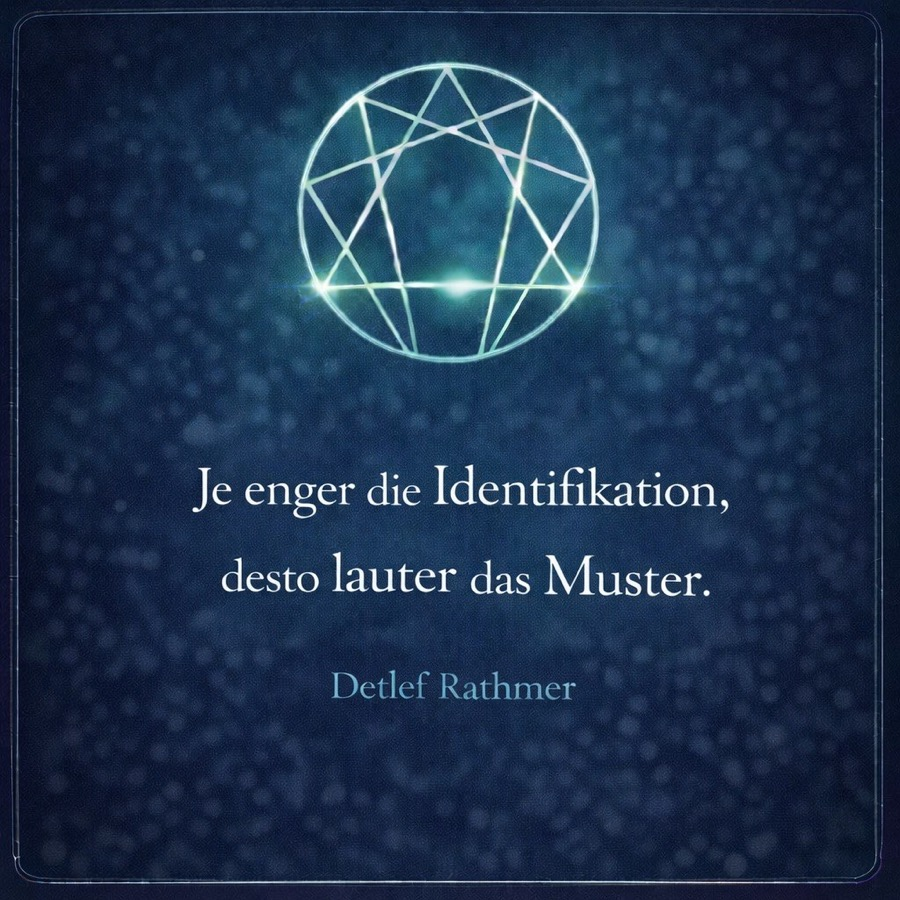
      <div class="vb-section" style="max-width:100%;">

        <p class="vb-intro">Dieser Satz enth\xe4lt ein Paradox, das man zun\xe4chst nicht sofort erkennt. Wenn jemand fragt: <em>\xbbWie kommt man aus seinem Muster heraus?\xab</em>, ist die naheliegende Antwort oft: <em>\xbbIndem man an sich arbeitet.\xab</em> Aber das Enneagramm zeigt etwas anderes &ndash; und Tieferes: Das Muster wird nicht durch Anstrengung leiser, sondern durch \xe4ndernde Distanz.</p>

        <h2 style="font-family:'EB Garamond',serif;font-size:1.2rem;color:var(--ink);margin:1.6rem 0 .5rem;">Was Identifikation bedeutet</h2>
        <p class="vb-intro">Identifikation bedeutet: Ich halte das Muster f\xfcr mich selbst. Ich erlebe meine Leidenschaft nicht als etwas, das in mir vorgeht &ndash; sondern als das, was ich bin. Der Typ-Zwei-Mensch sagt nicht: <em>\xbbIch bemerke, dass ich dazu neige, ungebeten zu helfen.\xab</em> Er erlebt Helfen als seinen Kern, als seinen Wert, als seine Identit\xe4t. Der Typ-Acht-Mensch erlebt seine Kraft nicht als ein Muster, das sich zeigt &ndash; sondern als das, was er ist.</p>
        <p class="vb-intro">Solange ich mich mit dem Muster identifiziere, gibt es keinen Beobachter daf\xfcr. Und ohne Beobachter gibt es keine Freiheit.</p>

        <h2 style="font-family:'EB Garamond',serif;font-size:1.2rem;color:var(--ink);margin:1.6rem 0 .5rem;">Warum das Muster lauter wird</h2>
        <p class="vb-intro">Enge Identifikation f\xfchrt zu einer Verst\xe4rkung des Musters. Das liegt daran, dass das Muster ungefiltert und ungebremst l\xe4uft, wenn niemand da ist, der es beobachtet. Es gibt keinen inneren Zeugen, der sagt: <em>\xbbAh, da ist wieder meine Leidenschaft.\xab</em> Stattdessen l\xe4uft das Muster direkt in Verhalten, Reaktion und Denken um.</p>
        <p class="vb-intro">Je weniger ein Mensch Abstand zu seinem Muster hat, desto unvermittelter zeigt es sich: Der Zorn des Einers bricht hervor, ohne gew\xe4hlt zu werden. Der Stolz des Zweiers steuert Beziehungen, ohne dass er es bemerkt. Der Hunger des Siebeners treibt von Erfahrung zu Erfahrung, ohne je zu landen. Das ist kein moralisches Versagen &ndash; es ist das mechanische Ergebnis enger Identifikation.</p>

        <h2 style="font-family:'EB Garamond',serif;font-size:1.2rem;color:var(--ink);margin:1.6rem 0 .5rem;">Was Lockerung der Identifikation bedeutet</h2>
        <p class="vb-intro">Lockerung der Identifikation bedeutet nicht, das Muster zu l\xf6schen oder zu bekämpfen. Es bedeutet, einen inneren Raum zu schaffen &ndash; zwischen dem Impuls und der Reaktion, zwischen dem Gef\xfchl und dem Verhalten, zwischen dem Automatismus und der Entscheidung.</p>
        <p class="vb-intro">Dieser Raum ist keine Leistung. Er entsteht durch Bewusstheit. Durch das einfache Bemerken: <em>\xbbDa ist wieder meine Leidenschaft. Das bin ich &ndash; aber ich bin nicht nur das.\xab</em> In diesem Moment verwandelt sich das Muster nicht, aber seine Macht \xfcber den Menschen ver\xe4ndert sich. Es wird vom Gesetz zur Beobachtung, vom Zwang zur M\xf6glichkeit.</p>

        <h2 style="font-family:'EB Garamond',serif;font-size:1.2rem;color:var(--ink);margin:1.6rem 0 .5rem;">Das Enneagramm als Spiegel, nicht als K\xe4fig</h2>
        <p class="vb-intro">Genau hier liegt die tiefste Gefahr im Umgang mit dem Enneagramm: es zum neuen Identifikationsrahmen zu machen. Wer sagt <em>\xbbIch bin eine Vier\xab</em> statt <em>\xbbIch zeige gerade das Muster einer Vier\xab</em>, hat das Enneagramm falsch verwendet. Er hat eine neue Schublade gebaut, gro\xdfer als alle fr\xfcheren &ndash; aber immer noch eine Schublade.</p>
        <p class="vb-intro">Das Enneagramm ist am wirksamsten, wenn es als Spiegel benutzt wird, nicht als Etikett. Der Spiegel zeigt: Hier l\xe4uft ein Muster. Hier ist Leidenschaft am Werk. Hier ist Identifikation. Und wo etwas gezeigt werden kann, entsteht die M\xf6glichkeit, sich zu unterscheiden &ndash; ich und das Muster. Das <em>ist</em> der Beginn von Freiheit.</p>

        <blockquote style="border-left:3px solid var(--gold);padding:1rem 1.25rem;margin:2rem 0;font-style:italic;color:var(--copper);font-size:1.05rem;background:var(--ivory);border-radius:0 8px 8px 0;">Je enger die Identifikation, desto lauter das Muster. Je bewusster der Abstand, desto stiller wird es &ndash; und desto mehr wird der Mensch sichtbar, der dahinter war, bevor das Muster begann. &ndash; Detlef Rathmer</blockquote>

        ${bookTip("raum-hinter-allem", "Jenseits aller Muster: der stille Raum, der bleibt, wenn Identifikation nachl\xe4sst &ndash; ein medidatives Werk \xfcber Bewusstsein und Freiheit.", "Der Raum hinter allem")}
        ${bookTip("nichts-und-alles", "Sein ohne Festhalten &ndash; ein stilles Buch \xfcber den Raum jenseits der Pers\xf6nlichkeit und die innere Weite, die entsteht, wenn wir aufh\xf6ren, uns zu de finieren.", "Nichts und Alles")}
        ${bookTip("hinter-der-leidenschaft", "Was hinter dem Muster steckt: die neun Wunden des Enneagramms und die Heilmittel, die an die Wurzel gehen.", "Hinter der Leidenschaft")}
        ${bookTip("leidenschaft-und-heilung", "Leidenschaften, Tugenden und Heilungswege aller 27 Subtypen &ndash; aus der therapeutischen Praxis.", "Leidenschaft und Heilung")}
        ${relatedLinks([
          {route:"schaubilder-als-spiegel", label:"Schaubilder als Spiegel"},
          {route:"ego-fixierungen", label:"Ego-Fixierungen"},
          {route:"bewusstseinsuebungen", label:"Bewusstseins\xfcbungen"},
        ])}
      </div>
    </div>
  `);
}

function schmerzschutzPage() {
  return shell(`
    ${pageHeader("schmerzschutz")}
    <div style="max-width:680px;margin:0 auto;padding:0 1rem 3rem;">
      <p class="eyebrow">Schaubilder &middot; Bewusstsein &amp; Selbsterkenntnis</p>
      <h1 class="section-title">Der Typ schützt vor Schmerz, aber er verhindert Nähe</h1>
      <p class="psycho-intro">Ein Satz über die doppelte Funktion des Enneagrammtyps &ndash; und warum das, was uns schützt, uns gleichzeitig von uns selbst und von anderen trennt.</p>
      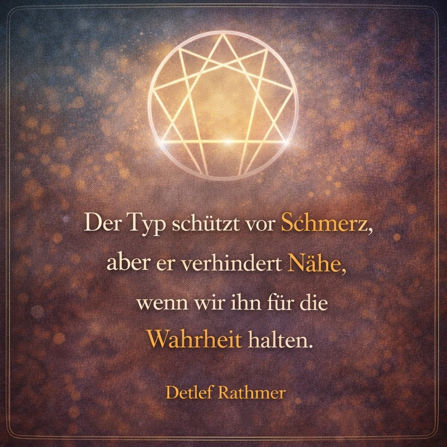
      <div class="vb-section" style="max-width:100%;">
        <p class="vb-intro">Der vollständige Satz lautet: <em>„Der Typ schützt vor Schmerz, aber er verhindert Nähe, wenn wir ihn für die Wahrheit halten."</em> Darin stecken zwei Wahrheiten gleichzeitig &ndash; und der entscheidende Unterschied liegt im letzten Halbsatz.</p>

        <h2 style="font-size:1.05rem;font-weight:700;margin-bottom:1rem;color:var(--ink);">Der Typ als Schutzstruktur</h2>
        <p class="vb-intro">Jeder Enneagrammtyp entstand als Antwort auf frühen Schmerz. Das Kind spürte: Es ist nicht sicher, so zu sein, wie ich wirklich bin. Also entwickelte es eine Strategie &ndash; eine Art innerer Rüstung, die half, den Schmerz erträglich zu machen. Die Zwei wurde hilfsbereit, um Liebe zu sichern. Die Sechs wurde wachsam, um Bedrohungen frühzeitig zu erkennen. Die Neun zog sich zurück, um Konflikte zu vermeiden. Diese Strategien sind klug. Sie haben funktioniert. Und sie haben uns gerettet &ndash; damals.</p>
        <p class="vb-intro">Das ist keine Metapher: Der Typ ist ein ausgeklügeltes System zur Schmerzvermeidung. Er lenkt die Aufmerksamkeit, filtert die Wahrnehmung und steuert das Verhalten so, dass der ursprüngliche Wundschmerz möglichst nicht wieder ausgelöst wird.</p>

        <h2 style="font-size:1.05rem;font-weight:700;margin:1.8rem 0 1rem;color:var(--ink);">Was er verhindert</h2>
        <p class="vb-intro">Das Problem beginnt nicht mit dem Schutz selbst &ndash; sondern damit, dass wir den Schutz für Realität halten. Wenn ich glaube, ich <em>bin</em> der Typ, dann ist jeder Schritt aus dem Muster heraus ein Schritt in die Gefahr. Ich kann mich nicht öffnen, weil Öffnung für mein Nervensystem Schmerz bedeutet. Ich kann nicht echte Nähe zulassen, weil echte Nähe bedeutet: Der andere sieht mich &ndash; nicht meine Strategie, sondern mich.</p>
        <p class="vb-intro">Nähe entsteht genau dort, wo wir aufhören zu performen. Wo wir nicht mehr die Rolle spielen, die wir für sicher halten. Und das ist genau die Stelle, die der Typ blockiert &ndash; nicht aus Böswilligkeit, sondern weil er eben Schutz ist.</p>

        <h2 style="font-size:1.05rem;font-weight:700;margin:1.8rem 0 1rem;color:var(--ink);">„Wenn wir ihn für die Wahrheit halten"</h2>
        <p class="vb-intro">Das ist der entscheidende Satz. Solange der Typ als Schutz genutzt wird &ndash; bewusst, flexibel, situationsangemessen &ndash; ist er wertvoll. Er wird zum Problem, wenn wir ihn mit unserer Identität gleichsetzen. Wenn ich sage: Das bin ich so. Wenn die Strategie zur Überzeugung wird: Die Welt ist so, Menschen sind so, Nähe ist gefährlich.</p>
        <p class="vb-intro">Das Enneagramm zeigt: Dieses Halten-für-Wahrheit ist keine Schwäche &ndash; es ist der Mechanismus der Fixierung selbst. Und er löst sich nicht durch Willenskraft, sondern durch Bewusstsein: durch das Erkennen, dass da eine Struktur am Werk ist &ndash; und dass ich mehr bin als diese Struktur.</p>

        <blockquote style="border-left:3px solid var(--gold);padding:1rem 1.25rem;margin:2rem 0;font-style:italic;color:var(--copper);font-size:1.05rem;background:var(--ivory);border-radius:0 8px 8px 0;">Der Typ schützt vor Schmerz, aber er verhindert Nähe, wenn wir ihn für die Wahrheit halten. &ndash; Detlef Rathmer</blockquote>

        ${bookTip("wer-du-wirklich-bist-band-1", "Was bleibt, wenn die Schutzstruktur nachlässt? Eine Erkundung der Identität jenseits des Typs &ndash; wer wir wirklich sind, bevor das Muster beginnt.", "Wer du wirklich bist – Band 1")}
        ${bookTip("die-sprache-unserer-beziehungen", "Nähe gestalten mit dem Enneagramm &ndash; wie die neun Typen Beziehungen erleben, was sie suchen und was sie unbewusst verhindern.", "Die Sprache unserer Beziehungen")}
        ${bookTip("hinter-der-leidenschaft", "Die neun Wunden hinter den Mustern &ndash; und die Heilmittel, die an die Wurzel des Schmerzschutzes gehen.", "Hinter der Leidenschaft")}
        ${relatedLinks([
          {route:"identifikation", label:"Identifikation &amp; Muster"},
          {route:"naehe", label:"Nähe"},
          {route:"wunden", label:"Wunden"},
        ])}
      </div>
    </div>
  `);
}

function blickqualitaetPage() {
  return shell(`
    ${pageHeader("blickqualitaet")}
    <div style="max-width:680px;margin:0 auto;padding:0 1rem 3rem;">
      <p class="eyebrow">Schaubilder &middot; Typisierung & Profiling</p>
      <h1 class="section-title">Die primäre Blickqualität der 9 Enneagrammtypen</h1>
      <p class="psycho-intro">Der Blick verrät mehr als Worte. Jeder Enneagrammtyp trägt eine charakteristische Blickqualität &ndash; eine Art zu schauen, die tief mit seiner inneren Welt, seiner Motivation und seinem Energiezentrum verbunden ist.</p>
      
      <div class="vb-section" style="max-width:100%;">
        <p class="vb-intro">Das Schaubild zeigt auf einen Blick: Jeder der neun Typen hat eine typische Art, wie er in die Welt schaut. Diese <em>primäre Blickqualität</em> entsteht nicht zufällig &ndash; sie ist der direkte Ausdruck der inneren Leidenschaft, der Motivation und der Energieverarbeitung eines Typs. Wer sie lesen kann, hat ein Werkzeug für die Typisierung, das keine Worte braucht.</p>

        <h2 style="font-size:1.05rem;font-weight:700;margin-bottom:1rem;color:var(--ink);">Was die Blickqualität verrät</h2>
        <p class="vb-intro">Hinter jeder Blickqualität steckt ein bestimmter Energiefluss. Das Schaubild unterscheidet drei Zentren &ndash; Bauch, Herz und Kopf &ndash; und drei Formen der Energieverarbeitung: <em>umgewandelt</em> (die Energie fließt integriert), <em>überschießend</em> (zu viel Energie nach außen) und <em>blockiert</em> (Energie staut sich). Diese neun Kombinationen erzeugen die neun verschiedenen Blickqualitäten.</p>

        <h2 style="font-size:1.05rem;font-weight:700;margin:1.8rem 0 1rem;color:var(--ink);">Die neun Blickqualitäten im Überblick</h2>
        <p class="vb-intro">
          <strong>Typ 1 &ndash; Fokussiert-starre Blickqualität:</strong> präzise, distanziert, kritisch. Der Blick ist fokussiert und kontrolliert &ndash; als würde er die Welt auf Abweichungen vom Ideal scannen.<br><br>
          <strong>Typ 2 &ndash; Warme Blickqualität:</strong> liebevoll, umsorgend, verbindend. Ein Blick, der aktiv sucht, wer gerade Hilfe braucht &ndash; einladend und nach außen gerichtet.<br><br>
          <strong>Typ 3 &ndash; Fokussiert-berechnende Blickqualität:</strong> fokussiert, siegessicher, erfolgreich. Der Blick ist zielgerichtet, selbstsicher &ndash; er signalisiert: Ich weiß, wo ich hin will.<br><br>
          <strong>Typ 4 &ndash; Tief-träumerische Blickqualität:</strong> melancholisch, traurig, verloren. Ein Blick, der nach innen oder in die Ferne schweift &ndash; als wäre das Eigentliche immer anderswo.<br><br>
          <strong>Typ 5 &ndash; Distanzierte Blickqualität:</strong> nachdenklich, intellektuell, leer/distanziert. Der Blick beobachtet, ohne sich zu zeigen &ndash; zurückgezogen hinter einer unsichtbaren Scheibe.<br><br>
          <strong>Typ 6 &ndash; Grenzziehende Blickqualität:</strong> ängstlich, vorsichtig, skeptisch. Der Blick prüft ständig: Was könnte gefährlich werden? Er ist wachsam und sucht Bestätigung.<br><br>
          <strong>Typ 7 &ndash; Knopfäugige Blickqualität:</strong> lebendig, fröhlich, optimistisch. Ein heller, springender Blick, der von Möglichkeit zu Möglichkeit eilt &ndash; neugierig und offen.<br><br>
          <strong>Typ 8 &ndash; Kontrollierende Blickqualität:</strong> dominant, kontrollierend, einschüchternd. Der Blick misst den Raum, testet Grenzen und signalisiert: Ich bin hier.<br><br>
          <strong>Typ 9 &ndash; Periphere Blickqualität:</strong> sanft, friedlich, entspannt. Ein weicher, oft leicht diffuser Blick, der niemanden direkt fixiert &ndash; alles gleichzeitig wahrnehmend, ohne zu urteilen.
        </p>

        <h2 style="font-size:1.05rem;font-weight:700;margin:1.8rem 0 1rem;color:var(--ink);">Blickqualität in der Praxis</h2>
        <p class="vb-intro">Die Blickqualität ist eines der zuverlässigsten Typisierungsmerkmale, weil sie schwerer zu kontrollieren ist als Worte oder Gesten. Sie lässt sich in den ersten Sekunden einer Begegnung beobachten &ndash; noch bevor jemand etwas gesagt hat. Wer geschult ist, diese Qualitäten zu unterscheiden, gewinnt einen unmittelbaren Zugang zur inneren Welt eines Menschen. Dabei ist Vorsicht geboten: Eine einzelne Beobachtung reicht nie für eine sichere Typisierung. Die Blickqualität ist ein Hinweis, kein Beweis.</p>

        ${bookTip("die-praxis-der-typbestimmung-taschenbuch", "Wie erkennt man den Enneagrammtyp anhand äußerer Merkmale? Praxisnaher Leitfaden zur Typisierung &ndash; mit Blick auf Körpersprache, Mimik und Blickqualität.", "Die Praxis der Typbestimmung")}
        ${bookTip("die-verborgene-dynamik-der-27-subtypen", "Wie unterscheiden sich die drei Subtypen eines Grundtyps in ihrer Körpersprache und Blickqualität? Das Standardwerk zu den 27 Subtypen.", "Die verborgene Dynamik der 27 Subtypen")}
        ${bookTip("meta-intelligenz", "Nonverbale Wahrnehmung schärfen &ndash; wie wir die innere Welt anderer Menschen lesen lernen, ohne Worte zu brauchen.", "Meta-Intelligenz")}
        ${relatedLinks([
          {route:"enneagramm-profiling", label:"Enneagramm-Profiling"},
          {route:"mikroimpressionen", label:"Mikroimpressionen"},
          {route:"differenzierung", label:"Differenzierung"},
        ])}
      </div>
    </div>
  `);
}

function beruhmtePhilosophenPage() {
  const phil = [
    {
      nr: 1, name: "Aristoteles", jahre: "384–322 v. Chr.", subtyp: "Sozialer Subtyp (Untertyp)",
      text: "Aristoteles war der Systematiker schlechthin. Er klassifizierte Pflanzen, Tiere, Tugenden, Staatsformen, Dichtgattungen &ndash; und schuf damit die Grundlage der westlichen Wissenschaft. Typisch für den Sozialen Subtyp des Typs 1: Er suchte nicht persönliche Perfektion für sich allein, sondern richtiges Handeln im gesellschaftlichen Kontext. Seine Nikomachische Ethik ist ein Versuch, die Tugend zu definieren, die das Gemeinwesen trägt. Der Drang, die Welt in Ordnung zu bringen &ndash; und dabei präzise, korrekt und umfassend zu sein &ndash; ist das Markenzeichen dieses Subtyps."
    },
    {
      nr: 2, name: "Søren Kierkegaard", jahre: "1813–1855", subtyp: "Selbsterhaltender Subtyp (Untertyp)",
      text: "Kierkegaard schrieb über Liebe mit einer Intensität, die kaum seinesgleichen kennt. Doch er liebte nicht leicht &ndash; er liebte angespannt, selbstquälerisch, unter ständiger Frage, ob er würdig sei zu geben und zu empfangen. Der Selbsterhaltende Subtyp des Typs 2 ist der introvertierte Helfer: Er gibt nicht offen und theatralisch, sondern im Verborgenen, oft mit innerem Konflikt. Kierkegaard brach seine Verlobung, weil er glaubte, der anderen Person nicht geben zu können, was sie verdiente &ndash; eine zutiefst typische Zwei-Geste, die Fürsorge zur Last macht."
    },
    {
      nr: 3, name: "Gottfried Wilhelm Leibniz", jahre: "1646–1716", subtyp: "Sozialer Subtyp (Untertyp)",
      text: "Leibniz war Diplomat, Mathematiker, Philosoph und Erfinder &ndash; und das alles gleichzeitig. Er entwarf die Differential- und Integralrechnung, entwickelte das binäre Zahlensystem, schrieb über Metaphysik und verhandelte zugleich an europäischen Fürstenhöfen. Der Soziale Subtyp des Typs 3 strebt nach Erfolg im gesellschaftlichen Rahmen: Anerkennung durch Leistung, Sichtbarkeit durch Wirkung. Leibniz wollte immer nützlich sein &ndash; und zwar auf der größtmöglichen Bühne. Kein Typ verkörpert das Streben nach gesellschaftlichem Einfluss durch Kompetenz klarer."
    },
    {
      nr: 4, name: "Arthur Schopenhauer", jahre: "1788–1860", subtyp: "Sexueller Subtyp (Untertyp)",
      text: "Schopenhauer war ein Meister des gepflegten Leidens. Er sah die Welt als blinden Willen, der uns antreibt, ohne uns je zu befriedigen &ndash; und schrieb darüber mit einer Leidenschaft, die sein eigenes Prinzip widerlegte. Der Sexuelle Subtyp des Typs 4 sucht intensive Verbindung und leidet tief an Enttäuschung. Schopenhauer hatte ein angespanntes Verhältnis zu seiner Mutter, lebte isoliert, hatte wenige enge Bindungen &ndash; und kompensierte seine Sehnsucht nach Tiefe durch philosophischen Pessimismus, den er mit geradezu ästhetischer Hingabe pflegte."
    },
    {
      nr: 5, name: "René Descartes", jahre: "1596–1650", subtyp: "Sozialer Subtyp (Untertyp)",
      text: "„Ich denke, also bin ich" &ndash; kein Satz verkörpert den Typ 5 besser. Descartes zog sich zurück, um in völliger Stille zu denken. Er lebte lange in den Niederlanden, wechselte häufig den Wohnort, um ungestört zu arbeiten, und veröffentlichte erst zögerlich. Der Soziale Subtyp des Typs 5 sucht Wissen im Austausch mit intellektuellen Kreisen &ndash; aber auf seinen Bedingungen. Descartes korrespondierte ausgiebig mit den Gelehrten seiner Zeit, knüpfte Netzwerke des Denkens &ndash; immer mit sicherem Abstand zu körperlicher Nähe und emotionalem Anspruch."
    },
    {
      nr: "6a", name: "Immanuel Kant", jahre: "1724–1804", subtyp: "Phobischer Sozialer Subtyp (Untertyp)",
      text: "Kant lebte in strikter Ordnung: Er verließ Königsberg kaum je, sein Tagesablauf war so regelmäßig, dass Nachbarn die Uhr nach ihm stellen konnten. Der phobische Soziale Subtyp des Typs 6 sucht Sicherheit durch Regeln, Systeme und verlässliche Strukturen. Kants Kategorischer Imperativ ist das philosophische Projekt eines Sechs: eine universelle Regel finden, der alle folgen können &ndash; eine Ethik, die Sicherheit schafft, weil sie keine Ausnahmen kennt. Sein Pflichtbegriff atmet die Angst des Sechsers vor dem Chaos, das entsteht, wenn Menschen nach Belieben handeln."
    },
    {
      nr: "6b", name: "Platon", jahre: "427–347 v. Chr.", subtyp: "Kontraphobischer Sexueller Subtyp (Untertyp)",
      text: "Platon ist der kontraphobische Gegenentwurf zu Kant. Wo Kant absichert, greift Platon an. Der kontraphobische Subtyp (Untertyp) des Typs 6 geht auf die Angst zu &ndash; er kämpft gegen sie, indem er sich ihr stellt. Platon entwarf die Philosophenherrschaft, einen Idealstaat mit klaren Hierarchien &ndash; ein Versuch, dem Chaos der athenischen Demokratie etwas Unerschütterliches entgegenzusetzen. Der Sexuelle Subtyp zeigt sich in der Intensität seiner Bindungen: Sokrates war für Platon nicht nur Lehrer, sondern Lebensthema."
    },
    {
      nr: 7, name: "Epikur", jahre: "341–271 v. Chr.", subtyp: "Sozialer Subtyp (Untertyp)",
      text: "Epikur gilt als Philosoph der Lust &ndash; was ihn gründlich missverstanden hat. Er lehrte nicht Völlerei, sondern die Kunst, das Angenehme zu wählen und Schmerz zu meiden. Das ist das Sieben-Prinzip in Reinform: Freude als Orientierungspunkt, Schmerzmeidung als Lebenshaltung. Der Soziale Subtyp (Untertyp) des Typs 7 sucht Genuss im Miteinander: Epikur gründete seinen berühmten Garten in Athen, lebte dort in Gemeinschaft mit Freunden und Schülern &ndash; eine Art Wohngemeinschaft des guten Lebens, wo intellektueller Austausch und gesellige Freude untrennbar waren."
    },
    {
      nr: 8, name: "Sokrates", jahre: "469–399 v. Chr.", subtyp: "Sozialer Subtyp (Untertyp)",
      text: "Sokrates provozierte. Er stellte Fragen, die Menschen in die Enge trieben, entlarvte Scheinsicherheiten und bestand darauf, dass Nicht-Wissen der Anfang aller Weisheit sei. Der Soziale Subtyp (Untertyp) des Typs 8 kämpft für Gerechtigkeit im öffentlichen Raum &ndash; und nimmt dafür Konflikte in Kauf. Sokrates wurde angeklagt, zum Tode verurteilt, und lehnte die Flucht ab, die ihm seine Freunde anboten: Er starb lieber, als sein Lebenswerk zu verraten. Diese kompromisslose Stärke, die nicht um der Wirkung willen kämpft, sondern um der Sache willen, ist der Kern des Achters."
    },
    {
      nr: 9, name: "David Hume", jahre: "1711–1776", subtyp: "Selbsterhaltender Subtyp (Untertyp)",
      text: "David Hume war einer der einflussreichsten Denker der Aufklärung &ndash; und einer der umgänglichsten. Zeitgenossen beschrieben ihn als heiter, wohlwollend, ohne Bitterkeit. Er zweifelte an fast allem &ndash; an der Kausalität, an der Existenz des Selbst, an Gott &ndash; und blieb dabei seltsam unaufgeregt. Der Selbsterhaltende Subtyp (Untertyp) des Typs 9 sucht inneren Frieden und äußere Bequemlichkeit. Hume schrieb, um zu verstehen, nicht um zu streiten. Sein radikaler Skeptizismus ist das ruhige Staunen eines Neunzehners, der alle Sicherheiten ablegt &ndash; und dabei entspannter bleibt als die meisten, die an ihnen festhalten."
    },
  ];

  return shell(`
    ${pageHeader("beruhmte-philosophen")}
    <div style="max-width:680px;margin:0 auto;padding:0 1rem 3rem;">
      <p class="eyebrow">Schaubilder &middot; Interessante Erkenntnisse &middot; Geschichte</p>
      <h1 class="section-title">Berühmte Philosophen im Enneagramm</h1>
      <p class="psycho-intro">Das Enneagramm beschreibt neun Grundstrukturen der menschlichen Persönlichkeit. Wer durch die Philosophiegeschichte blättert, findet sie alle wieder &ndash; in den Denkern, die das Abendland geprägt haben.</p>

      <p style="font-size:0.95rem;line-height:1.75;color:var(--anthracite);margin:1.25rem 0;">Philosophen sind in gewisser Weise ideale Enneagramm-Subjekte: Sie haben ihr Leben dem Denken gewidmet und dabei ihre Grundüberzeugungen, Ängste und Sehnsüchte in Worte gegossen &ndash; oft mit einer Direktheit, die Biografen jahrhundertelang beschäftigt. Was ein Philosoph für wahr hält, verrät oft mehr über seine innere Struktur als über die Welt. Aristoteles klassifiziert, Schopenhauer leidet, Epikur genießt, Sokrates provoziert: Die Typen denken nicht nur &ndash; sie philosophieren typspezifisch.</p>

      <p style="font-size:0.95rem;line-height:1.75;color:var(--anthracite);margin:1rem 0 1.75rem;">Wichtiger Hinweis: Die Subtypen (Untertypen) &ndash; selbsterhaltend, sozial, sexuell &ndash; sind drei Varianten innerhalb jedes Typs, die das Grundmuster feiner differenzieren. „Subtyp" und „Untertyp" bezeichnen dasselbe: die instinktive Grundausrichtung, die die Persönlichkeit noch einmal präziser formt. Bei Typ 6 erscheinen sogar zwei Philosophen &ndash; einer phobisch, einer kontraphobisch &ndash; weil dieser Typ als einziger so deutlich in zwei Richtungen ausschlagen kann.</p>

      

      ${phil.map(p => `
        <div style="background:var(--cream);border-left:3px solid var(--gold);border-radius:0 8px 8px 0;padding:1.25rem 1.5rem;margin-bottom:1.5rem;">
          <p style="font-size:0.72rem;font-weight:700;letter-spacing:0.12em;text-transform:uppercase;color:var(--gold-dark);margin:0 0 0.2rem;">Typ ${p.nr} &middot; ${p.subtyp}</p>
          <p style="font-family:'EB Garamond',serif;font-size:1.2rem;color:var(--anthracite);margin:0 0 0.1rem;font-weight:600;">${p.name}</p>
          <p style="font-size:0.78rem;color:var(--gray-mid);margin:0 0 0.7rem;">${p.jahre}</p>
          <p style="font-size:0.88rem;line-height:1.7;color:var(--anthracite);margin:0;">${p.text}</p>
        </div>
      `).join("")}

      ${bookTip("enneagramm-profiling", "Wie man Enneagrammtypen anhand von Verhaltensmustern erkennt &ndash; das Werkzeug hinter diesen Porträts.", "Enneagramm-Profiling")}
      ${bookTip("wer-du-wirklich-bist-band-1", "Die neun Typen in ihrer Tiefe &ndash; von der Grundstruktur bis zur Essenz.", "Wer du wirklich bist")}
      ${relatedLinks([
        {route:"interessante-erkenntnisse", label:"Interessante Erkenntnisse"},
        {route:"hunderassen", label:"Die Enneagrammtypen auf den Hund gekommen"},
        {route:"rumi-zitate", label:"Rumi-Zitate für die 9 Typen"},
      ])}
    </div>
  `);
}

function dreiLebenskraeftePage() {
  return shell(`
    ${pageHeader("drei-lebenskraefte")}
    <div style="max-width:680px;margin:0 auto;padding:0 1rem 3rem;">
      <p class="eyebrow">Schaubilder &middot; Grundprinzipien &middot; Triaden</p>
      <h1 class="section-title">Die drei grundlegenden Lebenskräfte</h1>
      <p class="psycho-intro">Hinter den neun Enneagrammtypen wirken drei grundlegende Energierichtungen: aktiv, ausgleichend und passiv. Sie beschreiben nicht den Charakter, sondern die Art und Weise, wie ein Typ grundsätzlich mit der Welt in Kontakt tritt.</p>

      

      <p style="font-size:0.95rem;line-height:1.75;color:var(--anthracite);margin:1rem 0;">Das Enneagramm kennt nicht nur neun Typen &ndash; es kennt drei grundlegende Bewegungsrichtungen des Lebens. Diese drei Kräfte &ndash; aktiv, ausgleichend, passiv &ndash; wurden in verschiedenen Weisheitstraditionen beschrieben: als Tamas, Rajas und Sattva im Yoga, als die drei Gunas im Sankhya, als Yang, Yin und die ausgleichende Mitte im Taoismus. Im Enneagramm werden sie als energetische Grundorientierung jedes Typs sichtbar.</p>

      <div style="display:grid;grid-template-columns:1fr;gap:1.25rem;margin:1.75rem 0;">

        <div style="background:var(--cream);border-left:4px solid #8b2014;border-radius:0 8px 8px 0;padding:1.25rem 1.5rem;">
          <p style="font-size:0.72rem;font-weight:700;letter-spacing:0.12em;text-transform:uppercase;color:#8b2014;margin:0 0 0.3rem;">Aktiv &middot; Typen 3, 7, 8</p>
          <p style="font-family:'EB Garamond',serif;font-size:1.1rem;color:var(--anthracite);margin:0 0 0.6rem;font-style:italic;">Nach außen gehend &ndash; sich durchsetzend, ausdehnend, bestimmend, frei</p>
          <p style="font-size:0.88rem;line-height:1.7;color:var(--anthracite);margin:0;">Die aktiven Typen gehen auf die Welt zu. Sie gestalten, bewegen, expandieren. Typ 8 tut es mit Kraft und Direktheit, Typ 7 mit Begeisterung und Ideenreichtum, Typ 3 mit Zielstrebigkeit und Wirkung. Allen drei ist gemeinsam: Sie suchen nicht, sie machen. Die Energie fließt nach außen &ndash; in Handlung, Einfluss, Ergebnis. Das Risiko dieser Kraft liegt in der Überdehnung: wenn das Tun wichtiger wird als das Sein.</p>
        </div>

        <div style="background:var(--cream);border-left:4px solid var(--gold-dark);border-radius:0 8px 8px 0;padding:1.25rem 1.5rem;">
          <p style="font-size:0.72rem;font-weight:700;letter-spacing:0.12em;text-transform:uppercase;color:var(--gold-dark);margin:0 0 0.3rem;">Ausgleichend &middot; Typen 1, 2, 6</p>
          <p style="font-family:'EB Garamond',serif;font-size:1.1rem;color:var(--anthracite);margin:0 0 0.6rem;font-style:italic;">In Balance bringend &ndash; harmonisierend, aussöhnend, schlichtend, verträglich</p>
          <p style="font-size:0.88rem;line-height:1.7;color:var(--anthracite);margin:0;">Die ausgleichenden Typen spüren das Ungleichgewicht &ndash; und setzen alles daran, es aufzuheben. Typ 1 will das Richtige herstellen, Typ 2 Nähe und Harmonie schaffen, Typ 6 Sicherheit und Verlässlichkeit. Sie sind die Vermittler, die Brückenbauer, die Ordnungshüter des Enneagramms. Ihre Stärke ist Sensibilität für das, was fehlt. Ihre Herausforderung: Sie können nicht ruhen, solange etwas aus dem Lot ist &ndash; auch wenn das Gleichgewicht nur in ihrem eigenen Inneren fehlt.</p>
        </div>

        <div style="background:var(--cream);border-left:4px solid #2e7d6e;border-radius:0 8px 8px 0;padding:1.25rem 1.5rem;">
          <p style="font-size:0.72rem;font-weight:700;letter-spacing:0.12em;text-transform:uppercase;color:#2e7d6e;margin:0 0 0.3rem;">Passiv &middot; Typen 4, 5, 9</p>
          <p style="font-family:'EB Garamond',serif;font-size:1.1rem;color:var(--anthracite);margin:0 0 0.6rem;font-style:italic;">Nach innen gehend &ndash; zurückhaltend, abwartend, zurückziehend, ruhig, still</p>
          <p style="font-size:0.88rem;line-height:1.7;color:var(--anthracite);margin:0;">Die passiven Typen empfangen, beobachten, ziehen sich zurück. Typ 9 sucht Stille und Frieden, Typ 5 Rückzug und Wissen, Typ 4 Tiefe und innere Erfahrung. Diese Energie ist nicht schwach &ndash; sie ist eine andere Art von Kraft. Das Passiv-Sein schafft Raum für Wahrnehmung, Kontemplation und Verarbeitung. Die Herausforderung liegt im Rückzug als Muster: wenn die Welt zu laut wird und man sich immer weiter nach innen zieht, bis der Kontakt mit dem Leben verloren geht.</p>
        </div>

      </div>

      <p style="font-size:0.95rem;line-height:1.75;color:var(--anthracite);margin:1.5rem 0;">Diese drei Kräfte sind keine Wertung. Keine ist besser als die andere. Sie beschreiben, wie das Leben durch verschiedene Typen hindurch zum Ausdruck kommt &ndash; und warum manche Menschen von Natur aus vorangehen, andere vermitteln und wieder andere innehalten. Ein ausgewogenes System braucht alle drei.</p>

      ${bookTip("wer-du-wirklich-bist-band-1", "Die neun Typen in ihrer Tiefe &ndash; Grundkräfte, Leidenschaften und der Weg zur Essenz.", "Wer du wirklich bist")}
      ${relatedLinks([
        {route:"drei-zentren", label:"Die drei Intelligenzzentren"},
        {route:"triadendefizite", label:"Triadendefizite"},
        {route:"horney-triaden", label:"Horney-Triaden"},
      ])}
    </div>
  `);
}

function sucheNachLiebePage() {
  const typen = [
    { nr: 1, ersatz: "Perfektion & Richtigkeit statt Liebe", halt: "Halt durch Selbst- und Fremdverbesserung.", text: "Typ 1 glaubt, erst wenn alles richtig ist &ndash; er selbst, die Verhältnisse, die anderen &ndash; darf Liebe da sein. So wird die Suche nach Liebe zur Suche nach Fehlerlosigkeit. Doch Liebe wartet nicht auf Perfektion." },
    { nr: 2, ersatz: "Bedingte Liebe & Geben statt Liebe", halt: "Halt durch Manipulation und Verführung der Umgebung.", text: "Typ 2 gibt, damit er geliebt wird &ndash; und nennt es Liebe. Doch Geben als Strategie ist noch nicht Liebe. Solange er sich selbst verbiegt, um gebraucht zu werden, bleibt die wahre Zuwendung aus." },
    { nr: 3, ersatz: "Erfolg & Leistung statt Liebe", halt: "Halt durch Selbst- und Fremdtäuschung, es allein zu können.", text: "Typ 3 arbeitet, leistet, erreicht &ndash; und hofft, dass das zählt. Er täuscht andere über sein wahres Gesicht, manchmal auch sich selbst. Doch Liebe ist keine Auszeichnung für Leistung." },
    { nr: 4, ersatz: "Individualität & Kreativität statt Liebe", halt: "Halt durch Leugnung der Trennung vom Sein sowie Selbst- und Fremdkontrolle.", text: "Typ 4 sehnt sich intensiver als die meisten anderen nach Liebe &ndash; und leidet tiefer an ihrem Fehlen. Die Trennung vom Sein, von dem, was ihn ursprünglich trägt, wird geleugnet. Kreativität und Einzigartigkeit werden zum Ersatz für die Verbindung, die er wirklich sucht." },
    { nr: 5, ersatz: "Wissen & Beobachtung statt Liebe", halt: "Halt durch Nichtfühlen, Rückzug, Isolation und Vermeidung.", text: "Typ 5 hält Abstand &ndash; auch von der Liebe. Wissen schützt, Beobachten hält sicher. Was er fühlen könnte, hält er auf Distanz. Die Wärme von Verbindung erscheint als Bedrohung der inneren Autonomie." },
    { nr: 6, ersatz: "Sicherheit & Loyalität statt Liebe", halt: "Halt durch Angst, Misstrauen sowie defensives und paranoides Verhalten.", text: "Typ 6 sucht in Liebe vor allem Sicherheit. Doch Angst und Misstrauen vergiften, was sie schützen sollen. Er prüft, zweifelt, sichert ab &ndash; und merkt nicht, dass echte Liebe kein Sicherheitsnetz braucht." },
    { nr: 7, ersatz: "Spaß & Freude statt Liebe", halt: "Halt durch Planung, alles wieder gut zu machen (Rückkehr ins verlorene Paradies).", text: "Typ 7 flieht vor dem Schmerz der Sehnsucht in Genuss und Ablenkung. Freude soll ersetzen, was fehlt. Die Idee, dass man alles wieder gut machen kann, hält ihn in Bewegung &ndash; und verhindert die Stille, in der Liebe wachsen könnte." },
    { nr: 8, ersatz: "Macht & Kontrolle statt Liebe", halt: "Halt durch Zorn, Kampf, Kontrolle, Gerechtigkeit und Rache.", text: "Typ 8 hat gelernt: Wer sich zeigt, wird verletzt. Also zeigt er Stärke. Macht und Kontrolle sichern ihn ab. Doch Liebe braucht Verletzlichkeit &ndash; genau das, was er am stärksten schützt." },
    { nr: 9, ersatz: "Harmonie & Selbstvergessenheit statt Liebe", halt: "Halt durch Glätten, so als wäre alles gut, leben auf mechanische Weise.", text: "Typ 9 hält den Frieden &ndash; auf Kosten von sich selbst. Er gleicht aus, verdrängt Spannungen, lebt auf Autopilot. Was wie Liebe aussieht, ist oft nur das Fehlen von Konflikt. Echte Liebe würde ihn aufwecken &ndash; und das ist das, wovor er sich fürchtet." },
  ];

  return shell(`
    ${pageHeader("suche-nach-liebe")}
    <div style="max-width:680px;margin:0 auto;padding:0 1rem 3rem;">
      <p class="eyebrow">Schaubilder &middot; Beziehungen &middot; Entwicklung</p>
      <h1 class="section-title">Die Suche nach der wahren Liebe</h1>
      <p class="psycho-intro">Alle neun Typen suchen Liebe. Aber jeder sucht sie auf seine Weise &ndash; und jeder hat eine eigene Art entwickelt, sich dabei im Weg zu stehen.</p>

      <p style="font-size:0.95rem;line-height:1.75;color:var(--anthracite);margin:1.25rem 0;">Das klingt paradox, ist es aber nicht. Jeder Enneagrammtyp hat früh im Leben die Erfahrung gemacht, dass Liebe &ndash; Zuwendung, Gesehensein, Verbindung &ndash; an bestimmte Bedingungen geknüpft schien. Und so entwickelte er eine Strategie: Er ersetzte das Ursprüngliche durch etwas Erreichbares. Perfektion statt Liebe. Leistung statt Liebe. Kontrolle statt Liebe.</p>

      <p style="font-size:0.95rem;line-height:1.75;color:var(--anthracite);margin:1rem 0;">Diese Ersatzbefriedigungen sind keine Schwäche &ndash; sie waren kluge Antworten auf echte Erfahrungen. Das Problem ist, dass sie die wahre Suche blockieren. Man bekommt etwas &ndash; Anerkennung, Sicherheit, Harmonie &ndash; aber nicht das, was man wirklich sucht. Und weil der Schmerz der Sehnsucht bleibt, wird die Strategie intensiviert: mehr Perfektion, mehr Geben, mehr Kontrolle.</p>

      <p style="font-size:0.95rem;line-height:1.75;color:var(--anthracite);margin:1rem 0;">Das Enneagramm benennt diese Muster nicht als Vorwurf, sondern als Einladung: Erkenne, womit du Liebe ersetzt &ndash; und was dich dabei aufhält, weiterzugehen.</p>

      

      ${typen.map(t => `
        <div style="background:var(--cream);border-left:3px solid var(--gold);border-radius:0 8px 8px 0;padding:1.25rem 1.5rem;margin-bottom:1.25rem;">
          <p style="font-size:0.72rem;font-weight:700;letter-spacing:0.12em;text-transform:uppercase;color:var(--gold-dark);margin:0 0 0.2rem;">Typ ${t.nr}</p>
          <p style="font-family:'EB Garamond',serif;font-size:1.05rem;font-weight:600;color:var(--anthracite);margin:0 0 0.25rem;">${t.ersatz}</p>
          <p style="font-size:0.82rem;color:var(--gray-mid);font-style:italic;margin:0 0 0.6rem;">${t.halt}</p>
          <p style="font-size:0.88rem;line-height:1.7;color:var(--anthracite);margin:0;">${t.text}</p>
        </div>
      `).join("")}

      ${bookTip("sprache-unserer-beziehungen", "Mit dem Enneagramm Nähe gestalten &ndash; wie die neun Typen Liebe erleben, suchen und manchmal meiden.", "Die Sprache unserer Beziehungen")}
      ${bookTip("sprache-der-sexualitaet", "In Partnern suchen wir oft die Liebe, die wir dort nicht finden werden &ndash; ein ehrlicher Blick auf Begehren, Bindung und das, was wir wirklich suchen.", "Die Sprache unserer Sexualität")}
      ${bookTip("wer-du-wirklich-bist-band-1", "Die Grundstruktur der neun Typen &ndash; von der Leidenschaft bis zur Essenz.", "Wer du wirklich bist")}
      ${relatedLinks([
        {route:"beziehungen-schaubild", label:"Beziehungen – Liebe und Schutz"},
        {route:"leidenschaft-und-wunde", label:"Leidenschaft & Wunde"},
        {route:"mangelgefuehle", label:"Mangelgefühle"},
      ])}
    </div>
  `);
}

function rumiZitatePage() {
  const zitate = [
    { nr: 1, zitat: "Jenseits von richtig und falsch gibt es einen Ort. Hier können wir einander begegnen.", erklaerung: "Typ 1 lebt in einer Welt klarer Unterscheidungen: richtig oder falsch, gut oder schlecht. Rumi zeigt den Ausweg: Es gibt einen Raum jenseits dieser Urteile. Genau dort beginnt die Heilung des Reformers &ndash; wenn er aufhört, alles zu bewerten, und stattdessen einfach begegnet." },
    { nr: 2, zitat: "Du fragst nach dem Geliebten &ndash; lauf vor dir selbst nicht davon.", erklaerung: "Typ 2 sucht Liebe und Anerkennung nach außen &ndash; im Geben, im Helfen, im Gebrauchtwerden. Rumi dreht den Blick um: Die Suche führt nicht zu anderen, sondern zurück zu sich selbst. Das Eigene wahrzunehmen, statt vor ihm zu fliehen, ist das Lernfeld des Helfers." },
    { nr: 3, zitat: "Zeige dich, wie du bist &ndash; oder sei, wie du dich zeigst.", erklaerung: "Typ 3 ist Meister der Selbstdarstellung &ndash; er zeigt, was ankommt, nicht unbedingt, was er ist. Rumis Satz stellt die entscheidende Frage: Stimmen Außen und Innen überein? Entweder zeige dich wirklich &ndash; oder lebe, was du zeigst. Echtheit beginnt dort, wo beides dasselbe ist." },
    { nr: 4, zitat: "Die Wunde ist der Ort, an dem das Licht in dich hinein kommt.", erklaerung: "Kein Zitat trifft Typ 4 so tief wie dieses. Der Individualist leidet, er trägt seine Wunden sichtbar &ndash; und genau darin liegt seine Größe. Rumi sagt: Die Wunde ist kein Makel. Sie ist die Öffnung. Wo Schmerz ist, kann auch Licht eintreten." },
    { nr: 5, zitat: "Denke weniger. Fühle mehr.", erklaerung: "Typ 5 lebt im Kopf. Er beobachtet, analysiert, zieht sich zurück &ndash; und hält Gefühle auf Abstand. Rumis Aufforderung ist direkt und klar: Das Denken hat seinen Platz, aber das Fühlen ist nicht sein Feind. Für den Beobachter ist das eine der größten Einladungen zur Entwicklung." },
    { nr: 6, zitat: "Vergiss Sicherheit. Lebe, wo du fürchtest zu leben.", erklaerung: "Typ 6 sucht Sicherheit, plant für das Schlimmste, traut dem Guten nicht ganz. Rumi zeigt den Gegenpol mit aller Direktheit: Gerade dort, wo die Angst sitzt, ist das Leben. Nicht trotz der Unsicherheit, sondern mitten in ihr &ndash; dort wartet die Freiheit des Loyalen." },
    { nr: 7, zitat: "Schätze sowohl das Gute als auch das Schlechte in deinem Leben.", erklaerung: "Typ 7 hält das Positive fest und meidet das Schwere. Er sammelt Erfahrungen, Ideen, Möglichkeiten &ndash; und flieht vor dem Schmerz. Rumi sagt: Beides gehört dazu. Erst wer das Schwere würdigt, kommt ganz an. Für den Enthusiasten ist das die Einladung zur Tiefe." },
    { nr: 8, zitat: "Du änderst deine Welt, indem du dich selbst änderst.", erklaerung: "Typ 8 will die Welt gestalten, Einfluss nehmen, Verhältnisse klären. Rumi kehrt die Richtung um: Die Veränderung beginnt nicht draußen, sondern innen. Nicht die Welt muss sich beugen &ndash; der Herausforderer muss sich zeigen. Das ist vielleicht die anspruchsvollste Zumutung für diesen Typ." },
    { nr: 9, zitat: "Nur am Leben zu sein ist nicht genug.", erklaerung: "Typ 9 strebt nach Harmonie und Frieden &ndash; und vergisst dabei oft sich selbst. Er lässt es geschehen, passt sich an, tritt zurück. Rumis Satz weckt: Existenz allein reicht nicht. Das Leben will gelebt, nicht nur ertragen werden. Der Friedvolle ist eingeladen, sich zu zeigen &ndash; mit dem eigenen Willen, der eigenen Stimme, dem eigenen Platz." },
  ];

  return shell(`
    ${pageHeader("rumi-zitate")}
    <div style="max-width:680px;margin:0 auto;padding:0 1rem 3rem;">
      <p class="eyebrow">Schaubilder &middot; Interessante Erkenntnisse &middot; Mystik</p>
      <h1 class="section-title">Rumi &ndash; neun Zitate für neun Typen</h1>
      <p class="psycho-intro">Der persische Dichter und Mystiker Dschalāl ad-Dīn Rūmī (1207&ndash;1273) wusste nichts vom Enneagramm. Und doch trifft er die neun Typen mit einer Präzision, die verblüfft.</p>

      <p style="font-size:0.95rem;line-height:1.75;color:var(--anthracite);margin:1.25rem 0;">Rumi gilt als einer der bedeutendsten Mystiker und Dichter des Islam. Sein Hauptwerk, das Masnavi, umfasst rund 25.000 Verse &ndash; eine spirituelle Enzyklopädie des menschlichen Herzens. Als Gründer des Ordens der Derwische lehrte er nicht durch Dogmen, sondern durch Bilder, Geschichten und direkte Erfahrung. Musik, Tanz und Poesie waren für ihn Wege zur Gottesnähe &ndash; der tanzende Derwisch ist bis heute sein bekanntestes Symbol.</p>

      <p style="font-size:0.95rem;line-height:1.75;color:var(--anthracite);margin:1rem 0;">Was Rumi beschreibt &ndash; die Wunde, die Flucht, das Suchen, das Erwachen &ndash; sind Bewegungen, die das Enneagramm als Typenstrukturen kartiert. Rumi kannte keine Nummern. Aber er kannte die inneren Landschaften: die Sehnsucht des Vierers, die Angst des Sechsers, die Rastlosigkeit des Siebers, die Kraft des Achters. In seinen Zeilen sind sie alle da &ndash; jeder Typ in seinem Lernfeld, jeder Schmerz mit seiner Antwort.</p>

      

      ${zitate.map(z => `
        <div style="background:var(--cream);border-left:3px solid var(--gold);border-radius:0 8px 8px 0;padding:1.25rem 1.5rem;margin-bottom:1.5rem;">
          <p style="font-size:0.72rem;font-weight:700;letter-spacing:0.12em;text-transform:uppercase;color:var(--gold-dark);margin:0 0 0.4rem;">Typ ${z.nr}</p>
          <p style="font-family:'EB Garamond',serif;font-size:1.1rem;line-height:1.7;color:var(--anthracite);font-style:italic;margin:0 0 0.75rem;">&bdquo;${z.zitat}&ldquo;</p>
          <p style="font-size:0.88rem;line-height:1.7;color:var(--anthracite);margin:0;">${z.erklaerung}</p>
        </div>
      `).join("")}

      ${bookTip("wer-du-wirklich-bist-band-1", "Die neun Typen in ihrer ganzen Tiefe &ndash; wer du wirklich bist, jenseits von Rolle und Muster.", "Wer du wirklich bist")}
      ${relatedLinks([
        {route:"interessante-erkenntnisse", label:"Interessante Erkenntnisse"},
        {route:"limericks", label:"Limericks"},
        {route:"neun-logismoi", label:"9 Logismoi (Evagrius)"},
      ])}
    </div>
  `);
}

function beziehungenSchaubildPage() {
  return shell(`
    ${pageHeader("beziehungen-schaubild")}
    <div style="max-width:680px;margin:0 auto;padding:0 1rem 3rem;">
      <p class="eyebrow">Schaubilder &middot; Beziehungen &middot; Ego-Dynamik</p>
      <h1 class="section-title">Beziehungen &ndash; Liebe und Schutz</h1>
      <p class="psycho-intro">Viele Beziehungen enden nicht, weil die Liebe verschwunden ist &ndash; sondern weil unbewusste Schutzmechanismen das Sehen füreinander verstellen.</p>
      

      <p style="font-size:0.95rem;line-height:1.75;color:var(--anthracite);margin:1rem 0;">Auf den ersten Blick klingt dieser Gedanke vielleicht überraschend. Viele Menschen glauben, Beziehungen würden scheitern, weil die Liebe verschwunden ist. Doch in der Praxis zeigt sich oft etwas anderes: Die Zuneigung ist häufig noch da &ndash; sie wird nur von unbewussten Schutzmechanismen des Egos überlagert.</p>

      <p style="font-size:0.95rem;line-height:1.75;color:var(--anthracite);margin:1rem 0;">Im Enneagramm geht man davon aus, dass jeder Mensch früh im Leben eine eigene Grundstrategie entwickelt hat, um mit Verletzlichkeit, Angst oder innerem Schmerz umzugehen. Diese Strategien entstehen mit gutem Grund: Sie schützen uns. Doch genau dieser Schutz kann später zu Missverständnissen führen.</p>

      <p style="font-size:0.95rem;line-height:1.75;color:var(--anthracite);margin:1rem 0;">Was der eine als Rückzug erlebt, ist für den anderen vielleicht der Versuch, sich innerlich zu stabilisieren. Was als Kritik ankommt, ist vielleicht der Ausdruck von Angst. Was wie Kontrolle wirkt, entspringt möglicherweise einem tiefen Bedürfnis nach Sicherheit. Das Schwierige: All das geschieht meist vollkommen automatisch &ndash; tief unterhalb der Bewusstseinsebene.</p>

      <p style="font-size:0.95rem;line-height:1.75;color:var(--anthracite);margin:1rem 0;">Der Partner sieht nur das Verhalten, nicht die dahinterliegende Schutzbewegung. So entstehen schnell Deutungen wie <em>„Er liebt mich nicht mehr"</em>, <em>„Sie interessiert sich nicht"</em> oder <em>„Ich werde einfach nicht gesehen"</em> &ndash; während in Wirklichkeit beide Seiten unbewusst nur ihre verletzlichen Stellen verteidigen.</p>

      <p style="font-size:0.95rem;line-height:1.75;color:var(--anthracite);margin:1rem 0;">Das Enneagramm lädt ein, hinter die sichtbaren Reaktionen zu schauen: Viele Konflikte sind keine Kämpfe gegen den anderen &ndash; sondern der Ausdruck innerer Schutzprogramme. Wenn diese Dynamik bewusst wird, verändert sich etwas Entscheidendes. Man beginnt zu verstehen, dass hinter Distanz nicht Ablehnung steckt, sondern Schutz. Und dieses Verständnis kann Räume öffnen, in denen wieder mehr Mitgefühl, Geduld und Klarheit entstehen.</p>

      <blockquote style="font-style:italic;border-left:3px solid var(--gold);padding-left:1rem;margin:1.75rem 0;color:var(--anthracite);font-size:0.97rem;line-height:1.75;">Nicht jede Distanz in einer Beziehung entsteht aus mangelnder Liebe. Manchmal entsteht sie einfach daraus, dass zwei Menschen ihre inneren Schutzmechanismen noch nicht wirklich erkannt haben.</blockquote>

      <h2 style="font-family:'EB Garamond',serif;font-size:1.4rem;color:var(--anthracite);margin:2.5rem 0 0.75rem;">Zwei Strategien, geliebt zu werden</h2>
      
      <p style="font-size:0.95rem;line-height:1.75;color:var(--anthracite);margin:1rem 0;">In Beziehungen begegnen sich nie nur zwei Menschen. Es begegnen sich auch zwei Strategien, geliebt zu werden. Dieser Satz bringt auf den Punkt, was das Enneagramm in der Tiefe beschreibt: Jeder Typ hat im Laufe seines Lebens einen eigenen Weg entwickelt, Zuwendung zu bekommen &ndash; oder sich zumindest davor zu schützen, sie zu verlieren.</p>
      <p style="font-size:0.95rem;line-height:1.75;color:var(--anthracite);margin:1rem 0;">Der eine zeigt Leistung, weil er glaubt, nur so wirklich gesehen zu werden. Der andere gibt, weil er hofft, dadurch gebraucht zu werden. Wieder ein anderer zieht sich zurück, um nicht zu viel zu brauchen &ndash; und enttäuscht zu werden. Diese Strategien sind keine Schwächen. Sie sind kluge Antworten auf frühe Erfahrungen.</p>
      <p style="font-size:0.95rem;line-height:1.75;color:var(--anthracite);margin:1rem 0;">Das Problem entsteht, wenn zwei Strategien aufeinandertreffen und sich gegenseitig aktivieren &ndash; ohne dass einer der beiden weiß, was gerade wirklich passiert. Wenn dieser Mechanismus sichtbar wird, entsteht etwas Neues: kein Kampf mehr um Bestätigung, sondern die Möglichkeit echter Begegnung.</p>

      ${bookTip("sprache-unserer-beziehungen", "Mit dem Enneagramm Nähe gestalten &ndash; in Liebe, Freundschaft und Familie.", "Die Sprache unserer Beziehungen")}
      ${relatedLinks([
        {route:"beziehungen", label:"Beziehungen: alle 9 Typen im Detail"},
        {route:"schmerzschutz", label:"Schmerzschutz"},
        {route:"wunden", label:"Wunden & Schutzstrategien"},
      ])}
    </div>
  `);
}

function limericksPage() {
  return shell(`
    ${pageHeader("limericks")}
    <div style="max-width:680px;margin:0 auto;padding:0 1rem 3rem;">
      <p class="eyebrow">Schaubilder &middot; Interessante Erkenntnisse</p>
      <h1 class="section-title">Die 9 Enneagramm-Limericks</h1>
      <p class="psycho-intro">Ein Limerick ist ein kurzes, rhythmisches Fünfzeiler-Gedicht mit festem Reim und meist humorvoller oder gar transformierender Pointe — und damit ein überraschend präzises Gefäß für die neun Typen.</p>
      

      <p style="font-size:0.92rem;color:var(--gray-mid);line-height:1.7;margin-bottom:2rem;">Der Name geht sehr wahrscheinlich auf die irische Stadt Limerick zurück. Dort gab es im 18. und frühen 19. Jahrhundert ein geselliges Trink- und Spottlied-Spiel — nach jeder improvisierten Strophe sang die Runde einen Refrain: <em>„Will you come up to Limerick?"</em> Daraus wurde eine Gedichtform. Hier trägt sie die neun Typen — jeder in fünf Zeilen, jeder mit einer Wendung am Ende.</p>

      ${[
        ["1", "Der Reformer", "Es lebte ein Mensch, der nach Klarheit stets strebte,", "weil Ordnung im Innern nach Reinheit sich sehnte.", "Er milderte Pflicht,", "ließ Wärme ins Licht —", "und fand: Güte trägt weiter als strenger Zwang."],
        ["2", "Der Helfer", "Es lebte ein Herz, das sich schenkend verlor,", "es stellte die andern stets leise zuvor.", "Als es sich erspürt,", "ward Liebe berührt —", "denn Geben wird wahr, wenn das Selbst tritt hervor."],
        ["3", "Der Erfolgreiche", "Es eilte ein Mensch, stets dem Ziele entlang,", "vom Bild seiner Stärke nach außen gedrängt.", "Als Stille ihn fand,", "fiel die Rolle wie Sand —", "und Sein wog tiefer als jeder Empfang."],
        ["4", "Der Individualist", "Es fühlte ein Mensch wie ein offenes Meer,", "die Sehnsucht zog leise sein Innerstes leer.", "Im einfachen Sein,", "ward Tiefe ganz rein —", "da trug ihn das Leben, nicht die Suche mehr."],
        ["5", "Der Beobachter", "Es saß ein stiller Geist fern vom Lärm,", "bewahrte die Welt in gedanklichem Schwärm.", "Doch als er empfand,", "dass Leben verband —", "ward Wissen zu Wärme, und Nähe wurd' mehr."],
        ["6", "Der Loyale", "Es fragte ein Mensch, sah Gefahren im Raum,", "der Zweifel erschien ihm oft größer als Traum.", "Doch Schritt wurde Mut,", "und Vertrauen tat gut —", "so wuchs aus dem Fragen ein tragender Baum."],
        ["7", "Der Enthusiast", "Es suchte ein Mensch stets das Leichte, das Weit,", "entwich vor dem Schmerz in die Fülle der Zeit.", "Als Tiefe ihn hielt,", "ward Freude gefühlt —", "nicht Flucht, sondern Gegenwart machte ihn wirklich weit."],
        ["8", "Der Herausforderer", "Es stand eine Kraft unbeugsam und klar,", "die schützte, was schwach und gefährdet oft war.", "Als Herz sich gezeigt,", "ward Stärke geweicht —", "und Macht wurde Liebe, die tragender war."],
        ["9", "Der Friedvolle", "Es ruhte ein Mensch still im weiten Dazwischen,", "wo Gegensätze leise sich lösen und mischen.", "Er fand seine Spur,", "ward wach in sich nur —", "und Frieden begann, als er aufhörte, sich zu verwischen."],
      ].map(([nr, titel, z1, z2, z3, z4, z5]) => `
        <div style="background:var(--cream);border-left:3px solid var(--gold);border-radius:0 8px 8px 0;padding:1.25rem 1.5rem;margin-bottom:1.5rem;">
          <p style="font-size:0.72rem;font-weight:700;letter-spacing:0.12em;text-transform:uppercase;color:var(--gold-dark);margin:0 0 0.3rem;">Typ ${nr} &middot; ${titel}</p>
          <p style="font-family:'EB Garamond',serif;font-size:1.05rem;line-height:1.85;color:var(--anthracite);margin:0;font-style:italic;">
            ${z1}<br>${z2}<br>${z3}<br>${z4}<br>${z5}
          </p>
        </div>
      `).join("")}

      ${bookTip("wer-du-wirklich-bist-band-1", "Die neun Typen in ihrer ganzen Tiefe &ndash; von der Leidenschaft bis zur Essenz.", "Wer du wirklich bist")}
      ${relatedLinks([
        {route:"interessante-erkenntnisse", label:"Interessante Erkenntnisse"},
        {route:"hunderassen", label:"Die Enneagrammtypen auf den Hund gekommen"},
        {route:"grundformel", label:"Grundformel der Typen"},
      ])}
    </div>
  `);
}

function verantwortungPage() {
  return shell(`
    ${pageHeader("verantwortung")}
    <div style="max-width:680px;margin:0 auto;padding:0 1rem 3rem;">
      <p class="eyebrow">Schaubilder &middot; Profiling &middot; Selbsterkenntnis</p>
      <h1 class="section-title">Verantwortung im Enneagramm</h1>
      <p class="psycho-intro">Den eigenen Typ zu kennen, ist der Anfang. Ihn wirklich zu sehen &ndash; ohne ihn zu verteidigen &ndash; das ist der eigentliche Schritt.</p>
      

      <h2 style="font-family:'EB Garamond',serif;font-size:1.4rem;color:var(--anthracite);margin:2rem 0 0.75rem;">Wissen allein verändert nichts</h2>
      <p>Im Enneagramm sprechen wir viel über Typen, Muster und Dynamiken. Doch der eigentliche Lernschritt beginnt erst dort, wo das Wissen persönlich wird &ndash; wo du aufhörst zu fragen <em>„Welcher Typ bin ich?"</em> und anfängst zu beobachten: <em>„Was zeige ich tatsächlich?"</em></p>
      <p>Verantwortung bedeutet hier nicht Schuld oder Leistung. Es ist eine innere Haltung: die Bereitschaft, das eigene Strukturmuster wahrzunehmen &ndash; ohne es sofort zu rechtfertigen oder wegzuerklären.</p>

      <h2 style="font-family:'EB Garamond',serif;font-size:1.4rem;color:var(--anthracite);margin:2rem 0 0.75rem;">Das Profiling-Prinzip: Muster statt Einzelaktionen</h2>
      <p>Im professionellen Enneagramm-Profiling gilt ein entscheidender Grundsatz: Nicht eine einzelne Handlung charakterisiert einen Typ, sondern das wiederkehrende Muster. Wer ungeduldig reagiert, ist deshalb kein Typ 8. Aber wer <em>systematisch</em> Kontrolle übernimmt, Schwäche verdeckt und Grenzen durch Gegendruck markiert &ndash; bei dem deutet sich ein Strukturprinzip an, das es lohnt, genauer anzusehen.</p>
      <p>Genau das ist der Unterschied zwischen oberflächlicher Typisierung und echter Selbstbeobachtung: Es geht nicht darum, sich ein Etikett zuzuweisen. Es geht darum, die eigene Logik zu erkennen &ndash; die Regelmäßigkeit, mit der bestimmte Reaktionen, Interpretationen und Vermeidungsstrategien auftauchen.</p>

      <h2 style="font-family:'EB Garamond',serif;font-size:1.4rem;color:var(--anthracite);margin:2rem 0 0.75rem;">Der blinde Fleck: Wenn Rechtfertigung den Typ unsichtbar macht</h2>
      <p>Ein häufiges Phänomen in der Arbeit mit dem Enneagramm: Der Typ bleibt unsichtbar &ndash; nicht weil er nicht vorhanden wäre, sondern weil er sich selbst erklärt. Jede Reaktion erscheint als berechtigt. Jedes Muster wird mit dem Kontext begründet. <em>„Ich war in diesem Fall wirklich unter Druck"</em> oder <em>„Andere hätten genauso reagiert"</em> &ndash; die Energie geht ins Rechtfertigen, nicht ins Beobachten.</p>
      <p>Solange das eigene Strukturmuster als normal, angemessen oder notwendig erlebt wird, bleibt kein Raum für Veränderung. Erst wenn du aufhörst, deinen Typ zu verteidigen, kannst du anfangen, ihn wirklich zu sehen.</p>

      <h2 style="font-family:'EB Garamond',serif;font-size:1.4rem;color:var(--anthracite);margin:2rem 0 0.75rem;">Distanz schafft Wahlfreiheit</h2>
      <p>Verantwortung im Enneagramm heißt konkret: das eigene Muster bewusst wahrnehmen &ndash; ohne es in dem Moment zu bewerten oder zu verteidigen. Diese Beobachterhaltung schafft Distanz. Und Distanz schafft Wahlfreiheit. Wo vorher eine automatische Reaktion war, entsteht ein Moment &ndash; ein kleiner Zwischenraum, in dem du entscheiden kannst, wie du handeln willst.</p>
      <p>Das ist keine theoretische Übung. Es ist die Grundlage jeder echten Typarbeit: Nicht der Typ macht dich frei, sondern das, was du mit ihm anfängst.</p>

      <h2 style="font-family:'EB Garamond',serif;font-size:1.4rem;color:var(--anthracite);margin:2rem 0 0.75rem;">Selbstwahrnehmung als Fundament</h2>
      <p>Es gibt noch eine weitere Dimension: Wer den eigenen Blick schärft, schärft auch den Blick auf andere. Selbstwahrnehmung ist nicht nur eine persönliche Kompetenz &ndash; sie ist die Grundlage dafür, auch im Kontakt mit anderen präziser zu werden. Im Profiling, in der Führung, in Beziehungen.</p>
      <p>Das Enneagramm ist dafür ein außerordentlich genaues Instrument &ndash; nicht wegen der Typnummern, sondern wegen der Präzision, mit der es strukturelle Muster beschreibt. Und diese Präzision entsteht nicht nur durch mehr Wissen, sondern zunehmend durch mehr Klarheit im Blick auf dich selbst.</p>

      ${bookTip("dynamik-27-subtypen", "Die feinen Unterschiede, die einen Typ wirklich ausmachen &ndash; tiefer als die Grundtypen, präziser als jede Kurzformel.", "Die verborgene Dynamik der 27 Subtypen")}
      ${bookTip("27-persoenlichkeiten", "27 Persönlichkeiten, 27 innere Logiken &ndash; das Handbuch für präzise Selbst- und Fremdwahrnehmung im Enneagramm.", "Die 27 Persönlichkeiten des Enneagramms")}
      ${bookTip("wer-du-wirklich-bist-band-1", "Der Einstieg in die Selbstbeobachtung &ndash; von der Typenkenntnis zur echten Selbstwahrnehmung.", "Wer du wirklich bist")}
      ${relatedLinks([
        {route:"enneagramm-profiling", label:"Enneagramm-Profiling"},
        {route:"identifikation", label:"Identifikation"},
        {route:"grundformel", label:"Grundformel der Typen"},
      ])}
    </div>
  `);
}

function hunderassenPage() {
  return shell(`
    ${pageHeader("hunderassen")}
    <div style="max-width:680px;margin:0 auto;padding:0 1rem 3rem;">
      <p class="eyebrow">Schaubilder &middot; Interessante Erkenntnisse</p>
      <h1 class="section-title">Die Enneagrammtypen &ndash; auf den Hund gekommen</h1>
      <p class="psycho-intro">Neun Typen, neun Hunderassen &ndash; und erstaunlich viel Wiedererkennungswert. Was Hunde über Enneagrammprinzipien erzählen können.</p>
      
      <div class="vb-section" style="max-width:100%;">
        <p class="vb-intro">Hunde zeigen uns, was wir an uns selbst selten so direkt sehen: die unverkleidete Grundbewegung eines Charakters. Kein Hund redet sich heraus, keiner spielt eine Rolle. Was er ist, zeigt er &ndash; in Haltung, Blick und Verhalten. Genau deshalb eignen sich Hunderassen so gut als lebendige Spiegel der neun Enneagrammprinzipien.</p>

        <h2 style="font-size:1.05rem;font-weight:700;margin:1.8rem 0 0.6rem;color:var(--ink);">Typ 1 &ndash; Der Perfektionist &middot; <em>Terrier</em></h2>
        <p style="font-size:0.82rem;color:var(--copper);margin:0 0 0.5rem;font-weight:600;">wachsam &middot; korrekt &middot; reaktionsschnell</p>
        <p class="vb-intro">Der Terrier wurde gezüchtet, um eine Sache perfekt zu erledigen &ndash; und er lässt nicht locker, bis sie erledigt ist. Einmal auf eine Fährte angesetzt, ist Ablenkung undenkbar. Seine aufrechte, angespannte Haltung signalisiert: Hier ist jemand, der immer bereit ist, das Richtige zu tun &ndash; und der genau weiß, was das ist. Fehler duldet er kaum, weder bei sich noch bei anderen.</p>

        <h2 style="font-size:1.05rem;font-weight:700;margin:1.8rem 0 0.6rem;color:var(--ink);">Typ 2 &ndash; Der Helfer &middot; <em>Bernhardiner</em></h2>
        <p style="font-size:0.82rem;color:var(--copper);margin:0 0 0.5rem;font-weight:600;">fürsorglich &middot; zugewandt &middot; beschützend</p>
        <p class="vb-intro">Der Bernhardiner wurde über Jahrhunderte darauf gezüchtet, in Not geratene Menschen zu retten &ndash; ein Helfer durch und durch. Seine massive Körpergröße steht in erstaunlichem Kontrast zu seiner sanften, fast zärtlichen Ausstrahlung. Er gibt alles, ohne zu fragen, ob man ihn gerufen hat. Die Nähe zum Menschen ist für ihn nicht Pflicht, sondern Berufung &ndash; und sein ganzes Wesen strahlt das aus.</p>

        <h2 style="font-size:1.05rem;font-weight:700;margin:1.8rem 0 0.6rem;color:var(--ink);">Typ 3 &ndash; Der Macher &middot; <em>Labrador</em></h2>
        <p style="font-size:0.82rem;color:var(--copper);margin:0 0 0.5rem;font-weight:600;">aktiv &middot; leistungsbereit &middot; freundlich</p>
        <p class="vb-intro">Der Labrador ist einer der meisttrainierten Arbeitshunde der Welt &ndash; Blindenführhund, Rettungshund, Therapiehund. Er ist immer auf Erfolg ausgerichtet, lernwillig und anpassungsfähig, und er strahlt dabei eine Leichtigkeit aus, die fast wie Freude wirkt. Diese Mischung aus Leistung und Charme macht ihn zum perfekten Bild des Dreiers: Er liefert &ndash; und sieht dabei mühelos gut aus.</p>

        <h2 style="font-size:1.05rem;font-weight:700;margin:1.8rem 0 0.6rem;color:var(--ink);">Typ 4 &ndash; Der Romantiker &middot; <em>Basset Hound</em></h2>
        <p style="font-size:0.82rem;color:var(--copper);margin:0 0 0.5rem;font-weight:600;">sensibel &middot; tief &middot; melancholisch</p>
        <p class="vb-intro">Der Basset Hound trägt seine Melancholie im Gesicht &ndash; hängende Ohren, schwerer Blick, ruhige Würde. Er ist ein Hund, der tief fühlt und das nicht verbirgt. Kein Hund, der sich schnell begeistert, aber einer, der treu und tief verbunden ist mit dem, was er liebt. Seine Langsamkeit ist keine Trägheit, sondern die Geste eines Wesens, das die Dinge ernst nimmt &ndash; vielleicht etwas zu ernst.</p>

        <h2 style="font-size:1.05rem;font-weight:700;margin:1.8rem 0 0.6rem;color:var(--ink);">Typ 5 &ndash; Der Denker &middot; <em>Chow Chow</em></h2>
        <p style="font-size:0.82rem;color:var(--copper);margin:0 0 0.5rem;font-weight:600;">zurückgezogen &middot; unabhängig &middot; beobachtend</p>
        <p class="vb-intro">Der Chow Chow gehört zu den ältesten und unabhängigsten Hunderassen der Welt. Er sucht keine Bestätigung, keinen ständigen Kontakt &ndash; er beobachtet, denkt und entscheidet selbst, wann er sich zeigt. Sein distanziertes Wesen wird oft als Kälte missverstanden, ist aber Ausdruck tiefer Innerlichkeit. Er gibt nicht leicht etwas von sich preis &ndash; und genau das macht ihn rätselhaft und faszinierend zugleich.</p>

        <h2 style="font-size:1.05rem;font-weight:700;margin:1.8rem 0 0.6rem;color:var(--ink);">Typ 6 &ndash; Der Pflichtbewusste &middot; <em>Schäferhund</em></h2>
        <p style="font-size:0.82rem;color:var(--copper);margin:0 0 0.5rem;font-weight:600;">loyal &middot; wachsam &middot; sicherheitsorientiert</p>
        <p class="vb-intro">Der Schäferhund ist der geborene Wächter &ndash; loyal, wachsam und zutiefst auf Sicherheit ausgerichtet. Er braucht klare Strukturen und eine vertrauenswürdige Führung; ohne sie wird er unruhig und misstrauisch. Seine prüfenden Blicke sind kein Zeichen von Aggression, sondern von unablässiger Aufmerksamkeit: Er will sicherstellen, dass alles in Ordnung ist. Und wenn es das ist, gibt es keinen treueren Gefährten.</p>

        <h2 style="font-size:1.05rem;font-weight:700;margin:1.8rem 0 0.6rem;color:var(--ink);">Typ 7 &ndash; Der Spaßmacher &middot; <em>Mops</em></h2>
        <p style="font-size:0.82rem;color:var(--copper);margin:0 0 0.5rem;font-weight:600;">verspielt &middot; lebendig &middot; genussorientiert</p>
        <p class="vb-intro">Der Mops ist ein Genießer. Er liebt das Leben, braucht wenig, will aber alles erleben &ndash; am liebsten mit Publikum. Sein ausdrucksstarkes, fast menschliches Gesicht und sein überschäumendes Temperament machen ihn zum geborenen Entertainer. Langeweile ist für ihn das Schlimmste, was es gibt &ndash; und er sorgt dafür, dass sie gar nicht erst entsteht. Was fehlt, wird einfach erfunden.</p>

        <h2 style="font-size:1.05rem;font-weight:700;margin:1.8rem 0 0.6rem;color:var(--ink);">Typ 8 &ndash; Der Beschützer &middot; <em>Rottweiler</em></h2>
        <p style="font-size:0.82rem;color:var(--copper);margin:0 0 0.5rem;font-weight:600;">kraftvoll &middot; durchsetzungsstark &middot; dominant</p>
        <p class="vb-intro">Der Rottweiler ist Kraft, Klarheit und Präsenz in einem. Er ist kein aggressiver Hund &ndash; er ist ein selbstbewusster Hund. Er markiert seinen Raum, schützt sein Rudel und zeigt jedem sofort, wer das Sagen hat. Seine ruhige Stärke ist das Gegenteil von Impulsivität: Es ist bewusste Macht. Wer ihn wirklich kennt, weiß, dass hinter der Härte ein außergewöhnlicher Beschützer steckt.</p>

        <h2 style="font-size:1.05rem;font-weight:700;margin:1.8rem 0 0.6rem;color:var(--ink);">Typ 9 &ndash; Der Friedliebende &middot; <em>Beagle</em></h2>
        <p style="font-size:0.82rem;color:var(--copper);margin:0 0 0.5rem;font-weight:600;">entspannt &middot; freundlich &middot; verbindend</p>
        <p class="vb-intro">Der Beagle ist ein Hund für alle &ndash; zugänglich, freundlich, konfliktscheu. Er sucht die Harmonie im Rudel und hat die außergewöhnliche Fähigkeit, zwischen verschiedenen Gruppen zu verbinden. Sein offenes, weiches Wesen macht ihn universell beliebt &ndash; und universell unterschätzt. Denn auch der Beagle hat einen starken Willen; er zeigt ihn nur nie als Konfrontation, sondern als stille Beharrlichkeit.</p>

        ${bookTip("enneagramm-zoo", "Die Tieranalogieen des Enneagramms im Detail &ndash; welche Tiere welchen Typen entsprechen und was das über die Prinzipien verrät.", "Enneagramm-Zoo")}
        ${bookTip("archetypen-der-tiere", "Tiere als Spiegel der Seele: Wie die Archetypen der Tierwelt die 9 Enneagrammtypen und ihre 27 Subtypen erhellen.", "Archetypen der Tiere im Enneagramm")}
        ${bookTip("wer-du-wirklich-bist-band-1", "Die neun Typen in Schaubildern &ndash; von der Typbestimmung bis zur Vertiefung.", "Wer du wirklich bist – Band 1")}
        ${relatedLinks([
          {route:"tierentsprechungen", label:"Tierentsprechungen"},
          {route:"interessante-erkenntnisse", label:"Interessante Erkenntnisse"},
          {route:"differenzierung", label:"Differenzierung"},
        ])}
      </div>
    </div>
  `);
}

function prinzipienPage() {
  return shell(`
    ${pageHeader("prinzipien")}
    <div style="max-width:680px;margin:0 auto;padding:0 1rem 3rem;">
      <p class="eyebrow">Schaubilder &middot; Grundlagen & Vertiefung</p>
      <h1 class="section-title">Das Enneagramm als Landkarte für Entwicklung</h1>
      <p class="psycho-intro">Vom präzisen Instrument zur Typbestimmung bis zur Landkarte grundlegender Ordnungen &ndash; was das Enneagramm wirklich zeigt, wenn man genauer hinschaut.</p>
      
      <div class="vb-section" style="max-width:100%;">

        <p class="vb-intro">Das Enneagramm ist zunächst ein präzises Instrument zur Typbestimmung. Es ermöglicht, anhand klar erkennbarer Muster in Sprache, Verhalten und Ausdruck den Persönlichkeitstyp eines Menschen zuverlässig zu erfassen. Und genau darin liegt seine praktische Stärke: Es macht das Unsichtbare sichtbar und das Komplexe greifbar.</p>

        <p class="vb-intro">Doch darin erschöpft es sich nicht.</p>

        <h2 style="font-size:1.05rem;font-weight:700;margin:1.8rem 0 1rem;color:var(--ink);">Was im Moment der Erkenntnis beginnt</h2>
        <p class="vb-intro">Das eigentlich Bemerkenswerte geschieht in dem Moment, in dem die Typbestimmung gelingt. Plötzlich wird erkennbar, dass das, was wir für individuell und einzigartig halten, einer inneren Gesetzmäßigkeit folgt. Dass bestimmte Reaktionsweisen, Sichtweisen und Spannungen nicht zufällig sind &ndash; sondern Ausdruck eines tieferliegenden Prinzips.</p>

        <h2 style="font-size:1.05rem;font-weight:700;margin:1.8rem 0 1rem;color:var(--ink);">Neun Grundbewegungen des Bewusstseins</h2>
        <p class="vb-intro">Die neun Typen sind keine festen Kategorien, sondern Grundbewegungen des Bewusstseins. Sie zeigen, wie sich Wahrnehmung organisiert, wie sich Aufmerksamkeit bündelt und wie sich aus dieser Bündelung eine stabile Identität formt. Was wir Persönlichkeit nennen, ist letztlich die Verfestigung einer solchen Bewegung &ndash; und damit zugleich die Möglichkeit, sie zu erkennen und zu überschreiten.</p>

        <h2 style="font-size:1.05rem;font-weight:700;margin:1.8rem 0 1rem;color:var(--ink);">Die Typbestimmung als Zugang, die Struktur als Vertiefung</h2>
        <p class="vb-intro">Die Typbestimmung öffnet die Tür. Was dahinter wartet, ist das Verständnis der dahinterliegenden Struktur &ndash; und das ist die eigentliche Vertiefung. Denn diese Prinzipien sind nicht auf den einzelnen Menschen beschränkt. Sie lassen sich überall dort beobachten, wo sich Energie in Form bringt: in Beziehungen, in Gruppen, in kreativen Prozessen, in Entwicklung und Krise.</p>
        <p class="vb-intro">Das Enneagramm beschreibt damit nicht nur den Menschen, sondern grundlegende Ordnungen, die sich in den unterschiedlichsten Zusammenhängen wiederfinden. So wird aus einer Methode zur Persönlichkeitsbestimmung eine Landkarte für Entwicklung.</p>

        <blockquote style="border-left:3px solid var(--gold);padding:1rem 1.25rem;margin:2rem 0;font-style:italic;color:var(--copper);font-size:1.05rem;background:var(--ivory);border-radius:0 8px 8px 0;">Etwas, das so konkret beginnt &ndash; in der genauen Beobachtung eines einzelnen Menschen &ndash; öffnet den Blick für etwas Allgemeines, das weit über ihn hinausgeht. &ndash; Detlef Rathmer</blockquote>

        ${bookTip("wer-du-wirklich-bist-band-1", "Das Enneagramm als Spiegel: Wie die neun Prinzipien in farbigen Schaubildern sichtbar werden &ndash; von der Typbestimmung bis zur Vertiefung.", "Wer du wirklich bist – Band 1")}
        ${bookTip("die-verborgene-dynamik-der-27-subtypen", "Die Prinzipien in ihrer tiefsten Entfaltung: Wie aus neun Grundtypen 27 einzigartige Ausdrucksformen entstehen.", "Die verborgene Dynamik der 27 Subtypen")}
        ${relatedLinks([
          {route:"ego-fixierungen", label:"Ego-Fixierungen"},
          {route:"grundformel", label:"Grundformel"},
          {route:"schaubilder-als-spiegel", label:"Schaubilder als Spiegel"},
        ])}
      </div>
    </div>
  `);
}

function antriebskraeftePage() {
  return shell(`
    ${pageHeader("antriebskraefte")}
    <div style="max-width:680px;margin:0 auto;padding:0 1rem 3rem;">
      <p class="eyebrow">Schaubilder \xb7 Leidenschaft & Subtypen</p>
      <h1 class="section-title">Die 9 Antriebskr\xe4fte der Menschheit</h1>
      <p class="psycho-intro">Wie die neun Leidenschaften als innere Motoren wirken &ndash; und warum derselbe Typ so unterschiedlich aussehen kann.</p>
      
      <div class="vb-section" style="max-width:100%;">

        <h2 style="font-size:1.05rem;font-weight:700;margin-bottom:1rem;color:var(--ink);">Die Leidenschaft als Motor</h2>
        <p class="vb-intro">Jeder der neun Enneagrammtypen wird von einer spezifischen Grundleidenschaft angetrieben &ndash; einem inneren Motor, der das Denken, F\xfchlen und Handeln in eine bestimmte Richtung zieht. Trägheit, Zorn, Stolz, Eitelkeit, Neid, Geiz, Angst, V\xf6llerei, Wollust: Diese neun Kr\xe4fte sind nicht als moralische Urteile gemeint, sondern als psychologische Beschreibungen &ndash; archetypische Energien, die tief im Unbewussten verankert sind und das Leben eines Menschen mitgestalten, oft ohne dass er es selbst bemerkt.</p>
        <p class="vb-intro">Jede Leidenschaft hat dabei eine Richtung, eine innere Suche: der Einser sucht Perfektion, der Zweier Liebe, der Dreier Erfolg, der Vierer Individualit\xe4t, der F\xfcnfer Wissen, der Sechser Sicherheit, der Siebener Spa\xdf, der Achter Macht, der Neuner Harmonie. Diese Suche ist zutiefst menschlich &ndash; und sie tr\xe4gt in sich sowohl die Energie des Wachstums als auch die Falle der Fixierung.</p>

        <h2 style="font-size:1.05rem;font-weight:700;margin:1.8rem 0 1rem;color:var(--ink);">Normaltyp, Verst\xe4rkungstyp, Kontratyp</h2>
        <p class="vb-intro">Das Schaubild macht eine wichtige Unterscheidung sichtbar, die h\xe4ufig \xfcbersehen wird: Innerhalb jedes der neun Typen gibt es drei grundlegend verschiedene Auspr\xe4gungen &ndash; je nachdem, wie ein Mensch mit seiner Leidenschaft umgeht.</p>
        <p class="vb-intro">Der <strong>Normaltyp</strong> lebt seine typspezifische Leidenschaft auf eine &bdquo;normale&ldquo;, durchschnittliche Weise. Er entspricht dem klassischen Bild seines Typs, wie es in den meisten Enneagramm-B\xfcchern beschrieben wird. Der <strong>Verst\xe4rkungstyp</strong> lebt dieselbe Leidenschaft in einer verst\xe4rkten, intensiveren Form &ndash; sein Muster ist deutlicher ausgepr\xe4gt und f\xfcr andere meist gut erkennbar. Der <strong>Kontratyp</strong> hingegen verneint oder verbirgt seine Leidenschaft aktiv &ndash; er lebt das Gegenteil davon nach au\xdfen und wird deshalb am h\xe4ufigsten falsch typisiert. Seine Leidenschaft ist nicht weg; sie wirkt nur verdeckt und auf Umwegen.</p>
        <p class="vb-intro">Diese Dreiteilung erkl\xe4rt, warum Menschen desselben Haupttyps im Alltag so vollkommen verschieden wirken k\xf6nnen. Ein Typ-Zwei-Kontratyp etwa kann distanziert und unabh\xe4ngig erscheinen &ndash; und trotzdem vom Grundmuster des Zweiers bewegt werden.</p>

        <h2 style="font-size:1.05rem;font-weight:700;margin:1.8rem 0 1rem;color:var(--ink);">Die drei Zentren und drei Instinkte</h2>
        <p class="vb-intro">Das Schaubild verbindet diese Dreiteilung mit den drei Intelligenzzentren &ndash; Bauch (Typen 8, 9, 1), Kopf (Typen 5, 6, 7) und Herz (Typen 2, 3, 4) &ndash; sowie mit den drei Instinkten: selbsterhaltend, sozial und sexuell. Erst diese Kombination ergibt die 27 Untertypen: Jede Leidenschaft dr\xfckt sich je nach Instinktausrichtung vollkommen anders aus. Der selbsterhaltende F\xfcnfer und der sexuelle F\xfcnfer k\xf6nnen bei einer ersten Begegnung kaum ein gemeinsames Typbild zu teilen scheinen &ndash; und geh\xf6ren doch zum selben Grundmuster.</p>
        <p class="vb-intro">Das Bild des Motors in der Mitte des Schaubilds ist dabei bewusst gew\xe4hlt: Die Leidenschaft ist nicht das Problem des Menschen. Sie ist seine Antriebskraft &ndash; roh, ungez\xe4hmt, voller Energie. Die Aufgabe des Enneagramms ist es nicht, diese Kraft abzuw\xfcrgen, sondern sie zu verstehen, zu lenken und schlie\xdflich in ihre entsprechende Essenzqualit\xe4t zu transformieren.</p>

        <blockquote style="border-left:3px solid var(--gold);padding:1rem 1.25rem;margin:2rem 0;font-style:italic;color:var(--copper);font-size:1.05rem;background:var(--ivory);border-radius:0 8px 8px 0;">Die Leidenschaft ist kein Feind &ndash; sie ist ein Motor ohne Steuer. Das Enneagramm gibt das Steuer zur\xfcck. &ndash; Detlef Rathmer</blockquote>

        ${bookTip("dynamik-27-subtypen", "Die 27 Untertypen im Detail &ndash; Normal-, Verst\xe4rkungs- und Kontratyp jedes Enneagrammtyps ausf\xfchrlich erl\xe4utert.", "Die verborgene Dynamik der 27 Subtypen")}
        ${bookTip("hinter-der-leidenschaft", "Die neun Antriebskr\xe4fte und ihre Wurzeln &ndash; wo die Leidenschaften herkommen und wie sie sich aufl\xf6sen lassen.", "Hinter der Leidenschaft &ndash; Die neun Wunden des Enneagramms")}
        ${bookTip("leidenschaft-und-heilung", "Leidenschaften, Tugenden und Heilungswege f\xfcr alle 27 Subtypen &ndash; aus der therapeutischen Praxis.", "Leidenschaft und Heilung")}
        ${relatedLinks([
          {route:"bedeutung-27-subtypen", label:"Bedeutung der 27 Subtypen"},
          {route:"leidenschaft-und-wunde", label:"Leidenschaft & Wunde"},
          {route:"subtypen-schaubilder", label:"Subtypen-Schaubilder"},
        ])}
      </div>
    </div>
  `);
}

function enneagrammProfilingPage() {
  return shell(`
    ${pageHeader("enneagramm-profiling")}
    <div style="max-width:680px;margin:0 auto;padding:0 1rem 3rem;">
      <p class="eyebrow">Schaubilder \xb7 Profiling</p>
      <h1 class="section-title">Enneagramm-Profiling</h1>
      <p class="psycho-intro">Typisierung \xfcber Blick, Haltung und Rhythmus &ndash; nicht \xfcber Gespr\xe4ch und Selbstauskunft.</p>
      
      <div class="vb-section" style="max-width:100%;">

        <h2 style="font-size:1.05rem;font-weight:700;margin-bottom:1rem;color:var(--ink);">Was Enneagramm-Profiling bedeutet</h2>
        <p class="vb-intro">Im Enneagramm-Profiling wird der Typ eines Menschen nicht durch Fragen, Frageb\xf6gen oder Selbstauskunft ermittelt. Der Profiler bestimmt ihn durch gezielte Beobachtung &ndash; durch den <strong>Blick</strong>. Das umfasst antlitzdiagnostische Zeichen, K\xf6rperhaltung, Mimik, Gestik, Spannungsmuster im Gesicht, die Sprachfarbe und den Rhythmus des Sprechens. Was ein Mensch \xfcber sich selbst erz\xe4hlt, spielt dabei eine untergeordnete Rolle. Entscheidend ist, was sich am K\xf6rper zeigt &ndash; unabh\xe4ngig von Geschichten, wiederholbar im Versuch.</p>
        <p class="vb-intro">Dieses Verfahren folgt einem wissenschaftlichen Anspruch im besten Sinne: Es arbeitet mit sichtbaren, pr\xfcfbaren und reproduzierbaren Merkmalen. Objektivit\xe4t ist dabei kein Gef\xfchl, sondern das Ergebnis geschulter Wahrnehmung und der korrekten Einordnung der prim\xe4ren Blickqualit\xe4t &ndash; zusammen mit weiteren Schl\xfcsselmerkmalen, die durch jahrelange Praxis internalisiert werden.</p>

        <h2 style="font-size:1.05rem;font-weight:700;margin:1.8rem 0 1rem;color:var(--ink);">Warum Profiling eine eigene Ausbildung verlangt</h2>
        <p class="vb-intro">Profiling l\xe4sst sich nicht allein durch B\xfccher erlernen. Die Literatur kann auf die Methode hinweisen, die Grundprinzipien vermitteln und das n\xf6tige Vorwissen aufbauen &ndash; aber die eigentliche F\xe4higkeit entsteht nur durch intensives \xdcben unter Anleitung. Eine fundierte Profilingausbildung dauert mindestens drei bis sechs Monate und umfasst das direkte Arbeiten an realen Personen, die Kalibrierung der eigenen Wahrnehmung und die systematische R\xfcckmeldung durch erfahrene Trainer.</p>
        <p class="vb-intro">Der Weg f\xfchrt von erster Orientierung \xfcber Wiedererkennung bis zur souver\xe4nen, sicheren Einordnung &ndash; was das Gedicht auf dem Schaubild mit dem Wort <em>Meisterschaft</em> bezeichnet. Meisterschaft bedeutet hier: Der Typ wird sichtbar, bevor ein Wort gesprochen ist.</p>

        <h2 style="font-size:1.05rem;font-weight:700;margin:1.8rem 0 1rem;color:var(--ink);">Profiling-Ausbildung bei David L. Rathmer</h2>
        <p class="vb-intro"><strong>David L. Rathmer</strong> hat das Enneagramm-Profiling als eigenst\xe4ndige Disziplin systematisiert und auf ein Niveau gef\xfchrt, das in dieser Form bisher nicht existierte. Ein zentrales Fundament daf\xfcr ist das Konzept der <strong>Blickqualit\xe4t</strong> &ndash; die systematische Erfassung der prim\xe4ren Blickcharakteristik als Schl\xfcsselmerkmal der Typisierung. Dieses Konzept geht auf Detlef Rathmer zur\xfcck, der es als erster im Enneagramm-Kontext systematisch beschrieben und in seinem Werk <em>Wer du wirklich bist</em> ver\xf6ffentlicht hat. David hat dieses Wissen aufgenommen und im Rahmen seiner Enneagramm-Profiling-Methode wissenschaftlich vertieft und lehrbar weiterentwickelt. Detlef Rathmer hat ihn von Kindheit an mit dem Enneagramm-Wissen begleitet und war f\xfcr ihn ein entscheidender Lehrer und Impulsgeber &ndash; das Profiling als eigenst\xe4ndige Disziplin ist jedoch Davids Werk.</p>
        <p class="vb-intro">Seit \xfcber f\xfcnfzehn Jahren hat David nahezu ausschlie\xdflich an dieser Methode gearbeitet und sie zu seinem Lebensschwerpunkt gemacht. Das Ergebnis ist eine Expertise, die ihn &ndash; nach Einsch\xe4tzung derer, die ihn bei der Arbeit erleben durften &ndash; zum mit Abstand besten Profiler auf diesem Gebiet macht, weltweit. F\xfcr ihn ist das Profiling die einzige wirklich verifizierbare Methode der Typbestimmung: nicht abh\xe4ngig von Selbstauskunft, Verhalten oder m\xf6glicherweise falsch verstandenen Motiven, sondern direkt am K\xf6rper ablesbar &ndash; sichtbar, pr\xfcfbar, reproduzierbar.</p>
        <p class="vb-intro">Darin liegt auch ein interessanter Unterschied zu Detlef Rathmer, dessen prim\xe4re Verifikationsm\xf6glichkeit in seiner hom\xf6opathischen Praxis liegt: Schl\xe4gt ein typspezifisches Mittel an, best\xe4tigt das r\xfcckwirkend die Typisierung. David hingegen verifiziert den Typ durch das Profil selbst &ndash; \xfcber die Pr\xe4zision der Methode, nicht \xfcber das Ansprechen eines Heilmittels. Beide Wege f\xfchren zum selben Ziel, jeder \xfcber seinen ureigenen Schwerpunkt. Heute gibt David sein Wissen in einer strukturierten Ausbildung weiter &ndash; von der Grundstufe bis zur Masterclass, f\xfcr Einzelpersonen, F\xfchrungskr\xe4fte und Unternehmen.</p>
        <a
          href="https://www.enneascholars.de"
          target="_blank"
          rel="noopener"
          class="book-tip"
          style="text-decoration:none;"
        >
          <span class="book-tip__icon">🎓</span>
          <div class="book-tip__text">
            <strong>Profiling-Ausbildung: Ennea Scholars</strong>
            <span>Profiling Class &amp; Masterclass bei David L. Rathmer &ndash; enneascholars.de</span>
          </div>
          <span class="book-tip__arrow">→</span>
        </a>

        <blockquote style="border-left:3px solid var(--gold);padding:1rem 1.25rem;margin:2rem 0;font-style:italic;color:var(--copper);font-size:1.05rem;background:var(--ivory);border-radius:0 8px 8px 0;">Objektivit\xe4t ist kein Gef\xfchl, sondern geschulte Wahrnehmung und korrekte Einordnung der prim\xe4ren Blickqualit\xe4t und weiterer Schl\xfcsselmerkmale &ndash; bis zur Meisterschaft. &ndash; Detlef Rathmer</blockquote>

        ${bookTip("dynamik-27-subtypen", "Die 27 Subtypen im Detail &ndash; das theoretische Fundament f\xfcr eine fundierte Profiling-Praxis.", "Die verborgene Dynamik der 27 Subtypen")}
        ${bookTip("die-praxis-der-typbestimmung-taschenbuch", "Typbestimmung Schritt f\xfcr Schritt &ndash; der ideale Einstieg vor der Profiling-Ausbildung.", "Die Praxis der Typbestimmung")}
        ${relatedLinks([
          {route:"horney-triaden", label:"Horney-Triaden"},
          {route:"lookalike-typen", label:"Lookalike-Typen"},
          {route:"differenzierung", label:"Differenzierung"},
        ])}
      </div>
    </div>
  `);
}

function egoFixierungenPage() {
  return shell(`
    ${pageHeader("ego-fixierungen")}
    <div style="max-width:680px;margin:0 auto;padding:0 1rem 3rem;">
      <p class="eyebrow">Schaubilder \xb7 Geschichte & Ursprung</p>
      <h1 class="section-title">Die 9 Ego-Fixierungen nach Oscar Ichazo</h1>
      <p class="psycho-intro">Was das urspr\xfcngliche Enneagramm wirklich lehrt &ndash; und warum es tiefer reicht als die meisten heutigen Typenbeschreibungen.</p>
      
      <div class="vb-section" style="max-width:100%;">

        <h2 style="font-size:1.05rem;font-weight:700;margin-bottom:1rem;color:var(--ink);">Was fast immer verloren geht</h2>
        <p class="vb-intro">Viele Menschen kennen heute das popul\xe4re Coaching-Enneagramm &ndash; aber kaum jemand kennt dessen eigentlichen Ursprung. Oscar Ichazo, der Lehrer von Claudio Naranjo (meinem Lehrer), verstand das Enneagramm nicht prim\xe4r als Pers\xf6nlichkeitssystem. Er verstand es als Landkarte der Entfremdung des Bewusstseins von seiner Essenz. Das ist der eigentliche Kern seiner Prototypenlehre &ndash; und es ist ein Kern, dem ich bis heute folge, weil ich seine tiefenpsychologische Dimension so schl\xfcssig finde und weil sie die Br\xfccke zum spirituellen Enneagramm auf sehr eindr\xfcckliche Weise schl\xe4gt.</p>

        <h2 style="font-size:1.05rem;font-weight:700;margin:1.8rem 0 1rem;color:var(--ink);">Oscar Ichazo und die Prototypenlehre</h2>
        <p class="vb-intro">Oscar Ichazo entwickelte in den 1950er- und 60er-Jahren ein komplexes spirituell-psychologisches System, das sp\xe4ter zur Grundlage des modernen Enneagramms wurde. Sein Ansatz verband Mystik, philosophische Anthropologie, Bewusstseinslehre, spirituelle Praxis und psychologische Beobachtung zu einem Ganzen &ndash; ein f\xfcr seine Zeit bemerkenswerter Entwurf.</p>
        <p class="vb-intro">F\xfcr Ichazo waren die neun Typen keine blo\xdfen Charakterbeschreibungen, sondern <em>Protoanalysen</em> &ndash; archetypische Fehlorientierungen des Ichs. Der Mensch verliert nach Ichazo den Kontakt zu seiner Essenz und entwickelt eine kompensatorische Ich-Strategie. Diese Strategie verfestigt sich zur <strong>Fixierung</strong>. Die neun Typen beschreiben damit nicht das wahre Wesen eines Menschen, sondern die Art, wie sich das Ego organisiert, um einen empfundenen Seinsmangel zu kompensieren. Das ist wesentlich tiefer als viele heutige Typisierungen.</p>

        <h2 style="font-size:1.05rem;font-weight:700;margin:1.8rem 0 1rem;color:var(--ink);">Claudio Naranjo und die Psychologisierung</h2>
        <p class="vb-intro">Claudio Naranjo lernte bei Ichazo in der Wüste von Arica und entwickelte die Lehre sp\xe4ter psychologisch weiter. Er verband das Enneagramm mit Gestalttherapie, Psychoanalyse, Charakterstrukturen und psychiatrischen Mustern &ndash; und schuf so das moderne Pers\xf6nlichkeits-Enneagramm, das wir heute kennen. Die meisten heutigen Typenbeschreibungen stammen deshalb eher von Naranjo als direkt von Ichazo.</p>
        <p class="vb-intro">Wer das Schaubild tiefer liest, versteht, warum Naranjo so stark auf Neurosen, Charakterfixierungen, emotionale Grundkonflikte und Abwehrmechanismen fokussierte: Die Ego-Fixierung ist im Kern eine psychospirituelle Abwehrstrategie gegen einen empfundenen inneren Mangel. Die Pers\xf6nlichkeit wird damit nicht zum Ausdruck des Wesens, sondern zum Ausdruck der Entfremdung vom Wesen. Das ist ein fundamentaler Unterschied f\xfcr das Verst\xe4ndnis des Enneagramms &ndash; und wahrscheinlich einer der tiefsten Gedanken der fr\xfchen Enneagramm-Lehre \xfcberhaupt.</p>

        <h2 style="font-size:1.05rem;font-weight:700;margin:1.8rem 0 1rem;color:var(--ink);">Die Verbindung zur Lehre der 27 Subtypen</h2>
        <p class="vb-intro">Die sp\xe4tere Entwicklung der 27 Subtypen vertieft diesen Gedanken noch weiter. Die neun Fixierungen manifestieren sich je nach Instinktstruktur &ndash; Selbsterhaltung, Sozial, Sexuell &ndash; auf unterschiedliche Weise und f\xe4rben die jeweilige Ego-Strategie spezifisch ein. Daraus entstehen 27 charakteristische Ausdrucksformen. Das erkl\xe4rt, warum Menschen desselben Haupttyps einander auf den ersten Blick v\xf6llig ungleich sein k\xf6nnen.</p>
        <p class="vb-intro">Gerade hier wird auch die Arbeit von David und mir interessant: Unser Ansatz verbindet das Enneagramm-Profiling, die psychologische Ebene, die spirituelle Dimension, die Dynamik der Subtypen und die innere Entwicklungsbewegung enger miteinander, als es viele vereinfachte, verhaltensorientierte Typensysteme tun. Das entspricht letztlich n\xe4her dem urspr\xfcnglichen Geist Ichazos &ndash; denn im Kern sind es nicht Typdefizite und Verhaltensmuster, die die prim\xe4re Rolle spielen, sondern die neun universellen Prinzipien des Enneagramms und deren Bewusstseins-Dynamik. Genau deshalb macht auch das gesamte Enneagramm-Heilsystem, das ich in den letzten dreißig Jahren systematisch aufgebaut habe &ndash; mit seinen homöopathischen, biochemischen und energetischen Elementen nach dem \xc4hnlichkeitsgesetz &ndash; einen tiefen inneren Sinn.</p>

        <h2 style="font-size:1.05rem;font-weight:700;margin:1.8rem 0 1rem;color:var(--ink);">Der eigentliche Sinn des Enneagramms</h2>
        <p class="vb-intro">Die urspr\xfcngliche Frage war nie: <em>Welcher Typ bin ich?</em> Sie lautete: <em>Welche Illusion h\xe4lt mein Ich aufrecht &ndash; und was verdeckt sie?</em> Das ist der Punkt, an dem Ichazo, Naranjo, die Subtypenlehre und die Arbeit von David und mir wieder zusammenlaufen. Das Enneagramm ist in diesem Verst\xe4ndnis kein Typologiesystem, sondern ein Werkzeug der Bewusstwerdung &ndash; ein Wegweiser zur\xfcck zur Essenz.</p>

        <blockquote style="border-left:3px solid var(--gold);padding:1rem 1.25rem;margin:2rem 0;font-style:italic;color:var(--copper);font-size:1.05rem;background:var(--ivory);border-radius:0 8px 8px 0;">Die Fixierung ist nicht unser Feind. Sie ist ein Lehrer. Wenn wir sie verstehen, zeigt sie uns den Weg zur\xfcck nach Hause. &ndash; Oscar Ichazo</blockquote>

        ${bookTip("hinter-der-leidenschaft", "Von der Ego-Fixierung zur Essenz: die neun Wunden und ihre Heilmittel nach dem Rathmer-Enneagramm.", "Hinter der Leidenschaft &ndash; Die neun Wunden des Enneagramms")}
        ${bookTip("heilung-als-erinnerung", "Heilung als R\xfcckkehr zur Essenz &ndash; die spirituelle Dimension des Enneagramms in der Praxis.", "Heilung als Erinnerung")}
        ${relatedLinks([
          {route:"grundformel", label:"Grundformel des Rathmer-Enneagramms"},
          {route:"wunden", label:"Wunden & Schutzstrategien"},
          {route:"illusionen", label:"Illusionen"},
        ])}
      </div>
    </div>
  `);
}

function grundformelPage() {
  return shell(`
    ${pageHeader("grundformel")}
    <div style="max-width:680px;margin:0 auto;padding:0 1rem 3rem;">
      <p class="eyebrow">Schaubilder \xb7 Modell</p>
      <h1 class="section-title">Die Grundformel des Rathmer-Enneagramms</h1>
      <p class="psycho-intro">Drei Defizite. Drei Energieformen. Drei Instinkte. &ndash; Das Fundament eines Enneagramm-Modells, das \xfcber zwanzig Jahre gewachsen ist.</p>
      
      <div class="vb-section" style="max-width:100%;">

        <h2 style="font-size:1.05rem;font-weight:700;margin-bottom:1rem;color:var(--ink);">Der Mensch ist mehr als sein Typ</h2>
        <p class="vb-intro">Diese Aussage steht am Anfang der Grundformel &ndash; und sie ist kein beil\xe4ufiger Zusatz, sondern ein programmatisches Fundament. Der Enneagrammtyp beschreibt eine unbewusste L\xf6sungsstrategie f\xfcr ein existenzielles Grunddefizit. Er beschreibt nicht das Wesen des Menschen. Wer sich mit dem Rathmer-Enneagramm besch\xe4ftigt, lernt nicht, wer er ist &ndash; er lernt, welches Muster ihn bisher begleitet hat. Das ist ein entscheidender Unterschied.</p>

        <h2 style="font-size:1.05rem;font-weight:700;margin:1.8rem 0 1rem;color:var(--ink);">Die drei Defizite: Liebesdefizit, Vertrauensdefizit, Schutzdefizit</h2>
        <p class="vb-intro">Hinter jedem der neun Typen steht ein existenzielles Grunddefizit &ndash; eine tiefe Frage, die das Erleben des Menschen von innen her organisiert. Das Modell unterscheidet drei solcher Defizite, je nach Triade:</p>
        <p class="vb-intro">Die <strong>Herztriade</strong> (Typen 2, 3, 4) tr\xe4gt ein <strong>Liebesdefizit</strong>. Ihre Grundfrage lautet: <em>Bin ich liebenswert?</em> Das Kerngef\xfchl, das diesen Typen begleitet, ist das stille, oft unbewusste Empfinden: <em>Ich f\xfchle mich nicht geliebt.</em></p>
        <p class="vb-intro">Die <strong>Kopftriade</strong> (Typen 5, 6, 7) tr\xe4gt ein <strong>Vertrauensdefizit</strong>. Ihre Grundfrage lautet: <em>Kann ich dem Leben vertrauen?</em> Das Kerngef\xfchl ist: <em>Die Welt ist ungewiss und unzuverl\xe4ssig.</em></p>
        <p class="vb-intro">Die <strong>Bauchtriade</strong> (Typen 8, 9, 1) tr\xe4gt ein <strong>Schutzdefizit</strong>. Ihre Grundfrage lautet: <em>Darf ich meinen Platz in dieser Welt einnehmen?</em> Das Kerngef\xfchl ist: <em>Ich f\xfchle mich nicht sicher in meinem Recht, da zu sein.</em></p>

        <h2 style="font-size:1.05rem;font-weight:700;margin:1.8rem 0 1rem;color:var(--ink);">Die zentrale Formel: Defizit + Energieform + Instinkt = Subtyp</h2>
        <p class="vb-intro">Das Herzst\xfcck des Modells ist eine einfache Gleichung mit gro\xdfer Tiefe: Jeder Mensch verarbeitet sein Grunddefizit auf eine bestimmte energetische Weise &ndash; und richtet diese Energie \xfcber einen seiner drei Instinkte aus. Das Ergebnis ist sein pers\xf6nlicher Subtyp &ndash; einer von 27 m\xf6glichen Auspr\xe4gungen. Der Typ allein reicht nicht aus, um einen Menschen zu verstehen. Erst der Subtyp zeigt, <em>wie</em> jemand seinen Typ lebt.</p>

        <h2 style="font-size:1.05rem;font-weight:700;margin:1.8rem 0 1rem;color:var(--ink);">Die drei Energieformen: \xdcberschie\xdfend, blockiert, umgewandelt</h2>
        <p class="vb-intro">Jeder Typ hat eine charakteristische Art, mit seiner Grundenergie umzugehen. Das Modell unterscheidet drei Energieformen &ndash; und jede findet sich in jeder Triade wieder:</p>
        <p class="vb-intro"><strong>\xdcberschie\xdfende Energie</strong> (Typen 2, 5, 8): Die Energie geht nach au\xdfen. Sie dr\xe4ngt, kompensiert, \xfcbertreibt. Diese Typen reagieren auf ihr Defizit mit einem Zu-viel &ndash; zu viel Hilfe, zu viel R\xfcckzug in Wissen, zu viel Intensit\xe4t und St\xe4rke.</p>
        <p class="vb-intro"><strong>Blockierte Energie</strong> (Typen 3, 6, 9): Die Energie wird zur\xfcckgehalten. Vermeidung, Erstarrung und Anpassung pr\xe4gen diese Typen. Sie reagieren auf ihr Defizit, indem sie sich anpassen, zur\xfcckhalten oder in Sicherheitsstrategien fl\xfcchten.</p>
        <p class="vb-intro"><strong>Umgewandelte Energie</strong> (Typen 4, 7, 1): Die Energie wird transformiert &ndash; in Sinn, in Ideen, in Werte. Diese Typen kompensieren ihr Defizit durch innere Umlenkung: in Sehnsucht und Besonderheit (4), in Pl\xe4ne und M\xf6glichkeiten (7), in Ideale und Richtigkeit (1).</p>

        <h2 style="font-size:1.05rem;font-weight:700;margin:1.8rem 0 1rem;color:var(--ink);">Die drei Instinkte: Selbsterhaltung, Sozial, Sexuell</h2>
        <p class="vb-intro">Der dritte Baustein ist der Instinkt &ndash; jene unbewusste Grundausrichtung, \xfcber die ein Mensch seine Energie in die Welt gibt. Der <strong>Selbsterhaltungsinstinkt</strong> (SE) richtet den Fokus auf Ressourcen, Sicherheit und pers\xf6nliche Bed\xfcrfnisse. Der <strong>Sozialinstinkt</strong> (SO) richtet den Fokus auf Zugeh\xf6rigkeit, Gruppen und das soziale Umfeld. Der <strong>Sexualinstinkt</strong> (SX) richtet den Fokus auf Intensit\xe4t, Bindung und bedeutsame Eins-zu-Eins-Beziehungen.</p>
        <p class="vb-intro">Diese drei Instinkte sind keine Vorlieben, sondern tiefe Orientierungssysteme &ndash; meist unbewusst aktiv und wirksam, lange bevor der Typ \xfcberhaupt zum Vorschein kommt. Die wichtigste Einheit im Rathmer-Enneagramm ist deshalb nicht der Typ allein, sondern der <strong>Subtyp</strong>: Typ plus Instinkt.</p>

        <h2 style="font-size:1.05rem;font-weight:700;margin:1.8rem 0 1rem;color:var(--ink);">Die vier Entwicklungsstufen</h2>
        <p class="vb-intro">Das Schaubild zeigt auch, wie sich ein Mensch in Bezug auf seinen Typ entwickeln kann &ndash; von unbewusst bis integriert. Auf der <strong>unbewussten Stufe</strong> dominiert die Leidenschaft vollst\xe4ndig. Auf der <strong>durchschnittlichen Stufe</strong> pr\xe4gen typische Alltagsmuster das Erleben. Auf der <strong>bewussten Stufe</strong> wird die Leidenschaft erkannt &ndash; der Mensch kann sich von ihr distanzieren. Auf der <strong>integrierten Stufe</strong> wird die Essenz zug\xe4nglich: Das Muster l\xf6st sich nicht auf, aber es verliert seine Macht.</p>

        <h2 style="font-size:1.05rem;font-weight:700;margin:1.8rem 0 1rem;color:var(--ink);">Ziel: Nicht den Typ verbessern &ndash; sondern loslassen</h2>
        <p class="vb-intro">Das erkl\xe4rte Ziel des Rathmer-Enneagramms ist es nicht, den eigenen Typ zu perfektionieren. Es geht darum, die Identifikation mit dem Typ zu lockern &ndash; Schritt f\xfcr Schritt. Der Mensch hat einen Typ. Der Mensch ist kein Typ. Diese kleine sprachliche Verschiebung enth\xe4lt die ganze transformative Kraft des Modells.</p>
        <p class="vb-intro">Was dieses Schaubild in einem einzigen Bild zusammenfasst, ist das Ergebnis von \xfcber zwanzig Jahren gemeinsamer Arbeit von Detlef und David Rathmer &ndash; ein lebendiges, wachsendes Modell, das Psychologie, Spiritualit\xe4t und praktische Heilkunde zu einem Ganzen verbindet.</p>

        <blockquote style="border-left:3px solid var(--gold);padding:1rem 1.25rem;margin:2rem 0;font-style:italic;color:var(--copper);font-size:1.05rem;background:var(--ivory);border-radius:0 8px 8px 0;">Der Mensch hat einen Typ. Der Mensch ist kein Typ. &ndash; Detlef &amp; David Rathmer</blockquote>

        ${bookTip("hinter-der-leidenschaft", "Die neun Grunddefizite und ihre Wunden &ndash; das theoretische Fundament des Rathmer-Enneagramms in Buchform.", "Hinter der Leidenschaft &ndash; Die neun Wunden des Enneagramms")}
        ${bookTip("die-verborgene-dynamik-der-27-subtypen", "Das vollst\xe4ndige Subtypen-Modell: alle 27 Auspr\xe4gungen von Defizit, Energieform und Instinkt.", "Die verborgene Dynamik der 27 Subtypen")}
        ${relatedLinks([
          {route:"ego-fixierungen", label:"Ego-Fixierungen"},
          {route:"antriebskraefte", label:"Antriebskr\xe4fte"},
          {route:"schutzdefizite", label:"Schutzdefizite"},
        ])}
      </div>
    </div>
  `);
}

function leidenschaftUndWundePage() {
  return shell(`
    ${pageHeader("leidenschaft-und-wunde")}
    <div style="max-width:680px;margin:0 auto;padding:0 1rem 3rem;">
      <p class="eyebrow">Schaubilder \xb7 Heilung</p>
      <h1 class="section-title">Leidenschaft und Wunde</h1>
      <p class="psycho-intro">Zwei Ebenen eines Musters &ndash; was sichtbar wird und was wirklich dahintersteckt.</p>
      
      <div class="vb-section" style="max-width:100%;">
        <h2 style="font-size:1.05rem;font-weight:700;margin-bottom:1rem;color:var(--ink);">Was wir sehen &ndash; und was wirklich dahintersteckt</h2>
        <p class="vb-intro">Im Enneagramm unterscheiden wir zwei Ebenen, die zusammen das Bild eines Typs ergeben: die <strong>Leidenschaft</strong> und die <strong>Wunde</strong>. Beide geh\xf6ren untrennbar zusammen &ndash; und doch sind sie grundverschieden. Die Leidenschaft ist das, was wir von au\xdfen sehen k\xf6nnen: ein Verhaltensmuster, eine emotionale Grundf\xe4rbung, eine immer wiederkehrende Reaktion. Die Wunde hingegen ist das, was dieser Leidenschaft zugrunde liegt &ndash; eine tiefe innere \xdcberzeugung, meist aus einer fr\xfchen Erfahrung hervorgegangen, die sich ins Unbewusste gesenkt hat.</p>
        <p class="vb-intro">Wer nur die Leidenschaft sieht, sieht das Symptom. Wer die Wunde versteht, versteht den Menschen.</p>

        <h2 style="font-size:1.05rem;font-weight:700;margin:1.8rem 0 1rem;color:var(--ink);">Die Leidenschaft: sichtbare Ebene</h2>
        <p class="vb-intro">Die Leidenschaft ist im Enneagramm kein positiver Begriff. Sie bezeichnet jene zentrale seelische Energie, die das Denken, F\xfchlen und Handeln eines Typs immer wieder in eine bestimmte Richtung zieht &ndash; oft ohne dass der Mensch es selbst bemerkt. Der Groll des Einers, der Stolz des Zweiers, die Eitelkeit des Dreiers &ndash; das sind keine Charakterfehler, sondern tief eingravierte Orientierungsreaktionen. Sie entstanden einmal als Antwort auf eine schwierige innere Wirklichkeit. Heute laufen sie weitgehend automatisch ab.</p>
        <p class="vb-intro">Das Schaubild zeigt f\xfcr jeden der neun Typen, wie sich diese Leidenschaft konkret \xe4u\xdfert &ndash; in einem Satz, der das innere Erleben auf den Punkt bringt: <em>Die Welt ist nicht so, wie sie sein sollte.</em> Oder: <em>Ich will alles erleben und nichts verpassen.</em> Oder: <em>Ich will das Leben ganz, stark und ohne Beschr\xe4nkung.</em> Es sind S\xe4tze, die viele Menschen bei ihrem Typ sofort wiedererkennen &ndash; manchmal erschrocken, manchmal erleichtert.</p>

        <h2 style="font-size:1.05rem;font-weight:700;margin:1.8rem 0 1rem;color:var(--ink);">Die Wunde: tiefe innere \xdcberzeugung</h2>
        <p class="vb-intro">Hinter jeder Leidenschaft verbirgt sich eine Wunde &ndash; eine Grundannahme \xfcber sich selbst und die Welt, die sich so tief eingraviert hat, dass sie nicht mehr als \xdcberzeugung wahrgenommen wird, sondern als Wirklichkeit. Der Zwei glaubt nicht nur, er d\xfcrfe keine Bed\xfcrfnisse haben &ndash; er <em>erlebt</em> es so. Der Drei erlebt es nicht als Meinung, sondern als Tatsache, dass sein Sein nicht gen\xfcgt. Der Sechs erlebt Vertrauen nicht als etwas, das m\xf6glich w\xe4re &ndash; sondern als etwas, das er einmal verloren hat und das nicht zur\xfcckkommt.</p>
        <p class="vb-intro">Diese Wunden sind nicht rational zug\xe4nglich. Sie lassen sich nicht einfach wegdenken oder weg-positiv-denken. Sie verlangen eine andere Art der Arbeit: Mitgef\xfchl, Aufmerksamkeit, Zeit &ndash; und das Enneagramm als Wegweiser, der zeigt, wo man \xfcberhaupt zu suchen hat.</p>

        <h2 style="font-size:1.05rem;font-weight:700;margin:1.8rem 0 1rem;color:var(--ink);">Vom Symptom zur Wurzel</h2>
        <p class="vb-intro">Die eigentliche Kraft dieses Schaubildes liegt in der Gegen\xfcberstellung. Wer seinen eigenen Satz in der Leidenschafts-Spalte liest und dann den zugeh\xf6rigen Wunden-Satz daneben sieht, erlebt oft einen stillen inneren Moment. Nicht weil etwas Neues gesagt wird &ndash; sondern weil etwas Bekanntes pl\xf6tzlich in Worte gefa\xdft ist, das man l\xe4ngst sp\xfcrt, aber nie so klar gesehen hat.</p>
        <p class="vb-intro">Heilung im Enneagramm beginnt genau dort: nicht beim Versuch, die Leidenschaft zu unterdr\xfccken, sondern beim liebevollen Verstehen der Wunde dahinter. Denn wer die Wurzel versteht, muss nicht mehr gegen den Ast k\xe4mpfen.</p>

        <blockquote style="border-left:3px solid var(--gold);padding:1rem 1.25rem;margin:2rem 0;font-style:italic;color:var(--copper);font-size:1.05rem;background:var(--ivory);border-radius:0 8px 8px 0;">Die Leidenschaft ist die Sprache der Wunde. Wer sie versteht, h\xf6rt auf zu urteilen &ndash; und beginnt zu heilen. &ndash; Detlef Rathmer</blockquote>

        ${bookTip("hinter-der-leidenschaft", "Die neun Wunden des Enneagramms &ndash; woher sie stammen, wie sie das Leben pr\xe4gen und welche Heilmittel ihnen entsprechen.", "Hinter der Leidenschaft &ndash; Die neun Wunden des Enneagramms")}
        ${bookTip("leidenschaft-und-heilung", "Leidenschaften, Tugenden und Heilungswege aller 27 Subtypen &ndash; direkt aus der therapeutischen Praxis.", "Leidenschaft und Heilung")}
        ${relatedLinks([
          {route:"wunden", label:"Wunden & Schutzstrategien"},
          {route:"leidenschaft-und-wunde", label:"Leidenschaft & Wunde"},
          {route:"gaslighting-enneagramm", label:"Gaslighting & Enneagramm"},
        ])}
      </div>
    </div>
  `);
}

function wundenPage() {
  return shell(`
    ${pageHeader("wunden")}
    <div style="max-width:680px;margin:0 auto;padding:0 1rem 3rem;">
      <p class="eyebrow">Schaubilder \xb7 Heilung</p>
      <h1 class="section-title">Jede Wunde hat eine Schutzstrategie hervorgebracht</h1>
      <p class="psycho-intro">Warum die Muster der 9 Typen keine Schw\xe4chen sind &ndash; sondern einst kluge Antworten auf echte Not.</p>
      
      <div class="vb-section" style="max-width:100%;">
        <h2 style="font-size:1.05rem;font-weight:700;margin-bottom:1rem;color:var(--ink);">Eine Antwort auf eine fr\xfche Wirklichkeit</h2>
        <p class="vb-intro">Hinter jedem der neun Enneagrammtypen verbirgt sich eine urspr\xfcngliche Wunde &ndash; ein Moment oder eine Phase im fr\xfchen Leben, in der etwas Wesentliches fehlte: Sicherheit, Liebe, Anerkennung, Identit\xe4t oder einfach die Freiheit, man selbst sein zu d\xfcrfen. Was auf diese Wunde folgte, war keine Schw\xe4che und kein Versagen &ndash; es war Intelligenz. Das Kind, das diese Wunde trug, entwickelte eine Strategie, um zu \xfcberleben, um dazuzugeh\xf6ren, um Schmerz zu vermeiden oder das zu bekommen, was es brauchte.</p>
        <p class="vb-intro">Diese Strategien haben funktioniert &ndash; manchmal sehr gut. Sie wurden ge\xfcbt, verfeinert und schlie\xdflich so selbstverst\xe4ndlich, dass der Mensch vergass, dass er sie einmal bewusst entwickelt hatte. Aus einer Reaktion wurde ein Charakter. Aus einer Notl\xf6sung wurde eine Identit\xe4t.</p>

        <h2 style="font-size:1.05rem;font-weight:700;margin:1.8rem 0 1rem;color:var(--ink);">Die neun Strategien im \xdcberblick</h2>
        <p class="vb-intro">Typ 1 versuchte, durch Richtigkeit Sicherheit zu finden &ndash; denn in einer Welt, die zu oft unberechenbar war, schien Perfektion der einzige Weg, Kritik zu entgehen. Typ 2 suchte Liebe durch Hilfsbereitschaft &ndash; weil bedingungslose Zuneigung nicht selbstverst\xe4ndlich war und Gegebenwerden nur durch Geben erreichbar schien. Typ 3 suchte Wert durch Leistung &ndash; weil das Gef\xfchl, an sich wertvoll zu sein, fehlte und Anerkennung immer erst verdient werden musste.</p>
        <p class="vb-intro">Typ 4 suchte Identit\xe4t durch die Besch\xe4ftigung mit seinem Mangel &ndash; weil das Gef\xfchl, irgendwie anders und unvollst\xe4ndig zu sein, so tief sa\xdf, dass es zur einzigen verl\xe4sslichen Quelle von Eigenheit wurde. Typ 5 zog sich zur\xfcck, um seine Ressourcen zu sch\xfctzen &ndash; weil die Welt zu fordernd wirkte und innere R\xfcckzug die einzige Form war, die eigene Energie zu bewahren. Typ 6 suchte Sicherheit durch Wachsamkeit &ndash; weil Vertrauen zu oft entt\xe4uscht worden war und Aufmerksamkeit f\xfcr das Schlimmste wie der einzig verantwortliche Weg erschien.</p>
        <p class="vb-intro">Typ 7 floh in M\xf6glichkeiten und Zukunftspl\xe4ne &ndash; weil Schmerz und Enge unertr\xe4glich wirkten und die Fantasie neuer Erlebnisse immer Erleichterung bot. Typ 8 entwickelte St\xe4rke, um Verletzlichkeit zu vermeiden &ndash; weil fr\xfche Erfahrungen gezeigt hatten, dass Schw\xe4che gef\xe4hrlich ist und nur Macht wirklichen Schutz bietet. Typ 9 verga\xdf sich selbst, um Harmonie zu bewahren &ndash; weil der eigene Beitrag nie wichtig genug zu sein schien und Frieden nur dann m\xf6glich war, wenn man selbst keine Anspr\xfcche stellte.</p>

        <h2 style="font-size:1.05rem;font-weight:700;margin:1.8rem 0 1rem;color:var(--ink);">Mitgef\xfchl statt Urteil</h2>
        <p class="vb-intro">Das Schaubild schlie\xdft mit einem Satz, der den Kern echter Enneagramm-Arbeit ber\xfchrt: <em>Keine dieser Strategien war falsch. Keine entstand aus Schw\xe4che. Jede einzelne war einmal ein intelligenter Versuch, mit einer schwierigen Wirklichkeit umzugehen.</em></p>
        <p class="vb-intro">Dieses Verst\xe4ndnis ver\xe4ndert den Blick &ndash; auf sich selbst und auf andere. Wer erkennt, dass hinter dem Kontrollbed\xfcrfnis des Einers eine alte Angst steht, hinter der Selbstverleugnung des Zweiers ein Hunger nach Liebe und hinter der H\xe4rte des Achters eine vergrabene Verletzlichkeit, der kann aufh\xf6ren zu urteilen und beginnen zu verstehen.</p>
        <p class="vb-intro">Heilung im Enneagramm beginnt nicht damit, das Muster zu bek\xe4mpfen. Sie beginnt damit, es mit Mitgef\xfchl anzuschauen &ndash; und dem Kind in uns zu danken, das einmal so kreativ und mutig war, einen Weg durch den Schmerz zu finden.</p>

        <blockquote style="border-left:3px solid var(--gold);padding:1rem 1.25rem;margin:2rem 0;font-style:italic;color:var(--copper);font-size:1.05rem;background:var(--ivory);border-radius:0 8px 8px 0;">Jede Schutzstrategie ist ein Beweis daf\xfcr, wie klug und lebenswillig wir einmal waren. &ndash; Detlef Rathmer</blockquote>

        ${bookTip("hinter-der-leidenschaft", "Die neun Wunden des Enneagramms &ndash; woher sie stammen, wie sie wirken und welche Heilmittel sie aufl\xf6sen k\xf6nnen.", "Hinter der Leidenschaft &ndash; Die neun Wunden des Enneagramms")}
        ${bookTip("leidenschaft-und-heilung", "27 Subtypen und ihre Leidenschaften &ndash; mit konkreten Heilungswegen direkt aus der therapeutischen Praxis.", "Leidenschaft und Heilung")}
        ${relatedLinks([
          {route:"leidenschaft-und-wunde", label:"Leidenschaft & Wunde"},
          {route:"kindheitsperspektiven", label:"Kindheitsperspektiven"},
          {route:"heilungsweg", label:"Heilungsweg"},
        ])}
      </div>
    </div>
  `);
}

function verwechslungenPage() {
  return shell(`
    ${pageHeader("verwechslungen")}
    <div style="max-width:680px;margin:0 auto;padding:0 1rem 3rem;">
      <p class="eyebrow">Schaubilder \xb7 Typisierung</p>
      <h1 class="section-title">Die gro\xdfen Verwechslungen</h1>
      <p class="psycho-intro">Ego-St\xe4rke oder Essenz? Die folgenreichste Falle bei der Enneagramm-Typisierung.</p>
      
      <div class="vb-section" style="max-width:100%;">
        <h2 style="font-size:1.05rem;font-weight:700;margin-bottom:1rem;color:var(--ink);">Wenn St\xe4rke und Wesen verwechselt werden</h2>
        <p class="vb-intro">Die schlimmsten Verwechslungen bei der Enneagramm-Typisierung entstehen dort, wo Ego-St\xe4rke mit Essenz verwechselt wird. Menschen identifizieren sich h\xe4ufig mit den F\xe4higkeiten, die sie besonders gut entwickelt haben. Genau diese F\xe4higkeiten werden dann als Ausdruck ihres &bdquo;wahren Wesens&ldquo; betrachtet. Im Enneagramm ist dies jedoch oft ein Irrtum &ndash; denn viele dieser St\xe4rken sind urspr\xfcnglich nicht aus Freiheit entstanden, sondern als Anpassung an eine fr\xfche Wunde.</p>
        <p class="vb-intro">Ein Mensch vom Typ 1 erlebt seine Gewissenhaftigkeit oft als seine wahre Natur. Ein Typ 2 sieht seine Hilfsbereitschaft als Ausdruck seines Herzens. Ein Typ 3 identifiziert sich mit Leistungsf\xe4higkeit und Erfolg. Ein Typ 5 erlebt seine Unabh\xe4ngigkeit als Kern seiner Pers\xf6nlichkeit. Tatsr\xe4chlich handelt es sich dabei h\xe4ufig um hoch entwickelte \xdcberlebensstrategien des Egos.</p>

        <h2 style="font-size:1.05rem;font-weight:700;margin:1.8rem 0 1rem;color:var(--ink);">Brillante Anpassung &ndash; aber keine Essenz</h2>
        <p class="vb-intro">Das Ego entwickelt genau jene F\xe4higkeiten, die helfen, Schmerz, Angst und innere Verletzlichkeit zu kompensieren. Dadurch entstehen beeindruckende St\xe4rken. Diese St\xe4rken sind real und wertvoll. Dennoch sind sie nicht identisch mit der Essenz.</p>
        <p class="vb-intro">Essenz bezeichnet im Enneagramm jene tiefere Ebene des Seins, die bereits vor jeder Anpassung vorhanden war. Sie muss nichts beweisen, nichts kontrollieren, nichts darstellen und nichts verteidigen. Sie ist nicht das Ergebnis einer Strategie, sondern Ausdruck innerer Wahrheit. In spirituellen Kreisen spricht man diesbez\xfcglich oft von innerem Frieden &ndash; unabh\xe4ngig von \xe4u\xdferen Umst\xe4nden und Bedingungen.</p>

        <h2 style="font-size:1.05rem;font-weight:700;margin:1.8rem 0 1rem;color:var(--ink);">Die Verfestigung des Musters</h2>
        <p class="vb-intro">Die Verwechslung entsteht, wenn ein Mensch seine Abwehrstruktur f\xfcr seine Identit\xe4t h\xe4lt. Dann wird nicht mehr gefragt: <em>&bdquo;Wer bin ich wirklich?&ldquo;</em>, sondern nur noch: <em>&bdquo;Wie kann ich noch besser werden in dem, was ich ohnehin schon tue?&ldquo;</em> Das f\xfchrt oft zu einer Verfestigung des Musters statt zu seiner Transformation.</p>
        <p class="vb-intro">Wahre Enneagramm-Arbeit beginnt dort, wo wir den Mut entwickeln, auch hinter unsere gr\xf6\xdften St\xe4rken zu schauen. Denn manchmal verbirgt sich hinter dem, worauf wir besonders stolz sind, genau die Wunde, vor der wir uns seit Jahren sch\xfctzen.</p>

        <h2 style="font-size:1.05rem;font-weight:700;margin:1.8rem 0 1rem;color:var(--ink);">Der Weg zur Essenz</h2>
        <p class="vb-intro">Erst wenn Ego-St\xe4rke als das erkannt wird, was sie ist &ndash; eine oft brillante Anpassungsleistung &ndash;, kann sich die Essenz zeigen. Dann wird aus Leistung Pr\xe4senz, aus Kontrolle Vertrauen, aus Anpassung Authentizit\xe4t und aus \xdcberleben lebendiges Sein.</p>
        <p class="vb-intro">Die Aufgabe des Enneagramms besteht deshalb letztlich und zu Ende gedacht nicht darin, die eigene Pers\xf6nlichkeit zu perfektionieren. Seine eigentliche Aufgabe besteht darin, uns \xfcber die Pers\xf6nlichkeit hinauszuf\xfchren.</p>

        <blockquote style="border-left:3px solid var(--gold);padding:1rem 1.25rem;margin:2rem 0;font-style:italic;color:var(--copper);font-size:1.05rem;background:var(--ivory);border-radius:0 8px 8px 0;">Manchmal verbirgt sich hinter dem, worauf wir besonders stolz sind, genau die Wunde, vor der wir uns seit Jahren sch\xfctzen. &ndash; Detlef Rathmer</blockquote>

        ${bookTip("du-bist-nicht-dein-zweifel", "Ego-St\xe4rke erkennen, loslassen und zur Essenz finden &ndash; ein Wegweiser zu innerer Freiheit f\xfcr alle 9 Typen.", "Du bist nicht dein Zweifel")}
        ${bookTip("heilung-als-erinnerung", "Heilung als R\xfcckkehr zur Essenz: Wie wir \xfcber die Pers\xf6nlichkeitsstruktur hinauswachsen k\xf6nnen.", "Heilung als Erinnerung")}
        ${relatedLinks([
          {route:"wer-wir-sind", label:"Wer wir sind"},
          {route:"differenzierung", label:"Differenzierung"},
          {route:"lookalike-typen", label:"Lookalike-Typen"},
        ])}
      </div>
    </div>
  `);
}

function wurzelnDesEnneagrammsPage() {
  return shell(`
    ${pageHeader("wurzeln-des-enneagramms")}
    <div style="max-width:680px;margin:0 auto;padding:0 1rem 3rem;">
      <p class="eyebrow">Schaubilder \xb7 Geschichte</p>
      <h1 class="section-title">Die Wurzeln des Enneagramms</h1>
      <p class="psycho-intro">Das Enneagramm wird heute h\xe4ufig als Pers\xf6nlichkeitsmodell verstanden &ndash; als eine Typologie neben vielen anderen. Doch wer sich intensiver damit besch\xe4ftigt, bemerkt schnell: Diese Einordnung greift zu kurz. Das Enneagramm wirkt nicht wie ein beliebiges psychologisches System, sondern wie ein Zugang zu tieferen Gesetzm\xe4\xdfigkeiten des Lebens selbst. Das folgende Symbol und der begleitende Text geben einen \xdcberblick \xfcber seine historischen Wurzeln, philosophischen Zusammenh\xe4nge und die pers\xf6nliche Erfahrung, die aus jahrzehntelanger Arbeit damit entsteht.</p>
      
      <div class="vb-section" style="max-width:100%;">
        <h2 style="font-size:1.05rem;font-weight:700;margin-bottom:1rem;color:var(--ink);">Zwischen Mythos, \xdcberlieferung und moderner Erkenntnis</h2>
        <p class="vb-intro">Seine Urspr\xfcnge liegen im Dunkeln. Es gibt keine eindeutig datierbare Quelle, keinen einzelnen Autor, kein klar benennbares Entstehungsdatum. Und genau das ist bemerkenswert. Denn viele der gro\xdfen geistigen Systeme der Menschheit &ndash; ob religi\xf6s, philosophisch oder symbolisch &ndash; haben \xe4hnliche Wurzeln: Sie erscheinen nicht pl\xf6tzlich, sondern wirken wie \xfcber lange Zeit gewachsenes, geh\xfctetes Wissen.</p>
        <p class="vb-intro">Immer wieder wird vermutet, dass die Grundideen des Enneagramms bereits in alten Hochkulturen bekannt waren &ndash; etwa im Nahen Osten, in Mesopotamien oder in fr\xfchen spirituellen Traditionen. Beweise im modernen wissenschaftlichen Sinne gibt es daf\xfcr nicht. Aber es gibt Hinweise auf Denkstrukturen, die dem Enneagramm \xe4hneln: Kreisstrukturen, Dreiteilungen, Neunheitssysteme, Gesetzm\xe4\xdfigkeiten von Entwicklung und Transformation.</p>
        <p class="vb-intro">Solches Wissen war \xfcber Jahrhunderte hinweg selten \xf6ffentlich. Es wurde nicht in Lehrb\xfcchern verbreitet, sondern in kleinen Kreisen weitergegeben &ndash; von Lehrern an Sch\xfcler, oft innerhalb spiritueller Gemeinschaften. Im fr\xfchen Christentum etwa entwickelten die sogenannten W\xfcstenV\xe4ter differenzierte Modelle menschlicher innerer Zust\xe4nde, insbesondere der „Leidenschaften“ oder „inneren Fehlhaltungen“. Auch wenn sie das Enneagramm nicht in der heutigen Form kannten, zeigen ihre Beschreibungen erstaunliche Parallelen.</p>
        <p class="vb-intro">Erst im 20. Jahrhundert wurde das Enneagramm in seiner heutigen Form systematischer bekannt. Eine zentrale Rolle spielte dabei Georges Ivanovich Gurdjieff, der es als universelles Symbol f\xfcr Prozesse und Gesetzm\xe4\xdfigkeiten beschrieb. Sp\xe4ter entwickelten Autoren wie Oscar Ichazo und Claudio Naranjo daraus das heute bekannte Pers\xf6nlichkeitsmodell &ndash; ein \xdcbergang von einem abstrakten, kosmologischen Symbol hin zu einem konkreten Werkzeug zur Selbsterkenntnis.</p>
        <h2 style="font-size:1.05rem;font-weight:700;margin:1.8rem 0 1rem;color:var(--ink);">Mehr als eine Typenlehre</h2>
        <p class="vb-intro">Das Enneagramm beschreibt nicht nur Verhalten, sondern innere Dynamiken. Es zeigt, warum Menschen immer wieder in \xe4hnliche Muster geraten, warum sie bestimmte Dinge nicht sehen k\xf6nnen und warum Ver\xe4nderung oft so schwer f\xe4llt. Es setzt genau dort an, wo viele therapeutische oder beratende Methoden an Grenzen sto\xdfen: beim blinden Fleck. Es zeigt nicht nur, was ein Mensch tut, sondern warum er es aus seiner inneren Struktur heraus kaum anders tun kann. Und noch wichtiger: Es zeigt Wege, diese Struktur zu durchschauen.</p>
        <p class="vb-intro">In diesem Sinne wird Selbsterkenntnis zu mehr als Selbstoptimierung. Sie wird zu einem Prozess, in dem der Mensch beginnt, sich selbst wirklich zu sehen &ndash; nicht als idealisiertes Bild, sondern in seiner tats\xe4chlichen Funktionsweise. Das Enneagramm verbindet psychologische Einsicht mit einer fast schon philosophischen Perspektive auf das Leben. Es deutet an, dass die Muster, die wir in uns tragen, nicht isoliert sind, sondern Teil gr\xf6\xdferer Zusammenh\xe4nge.</p>
        <p class="vb-intro">Wer sich selbst besser versteht, beginnt auch, andere anders zu sehen. Urteile werden differenzierter, Reaktionen bewusster. Aus reiner Reaktion kann Verantwortung werden &ndash; und aus diesem Verst\xe4ndnis ein tieferer innerer Frieden. Nicht, weil alle Probleme gel\xf6st sind, sondern weil man beginnt zu erkennen, wie sie entstehen.</p>
        <h2 style="font-size:1.05rem;font-weight:700;margin:1.8rem 0 1rem;color:var(--ink);">Pers\xf6nliche Erfahrung nach zwei Jahrzehnten</h2>
        <p class="vb-intro">Nach nunmehr fast zwei Jahrzehnten intensiver Arbeit mit dem Enneagramm hat sich eine Einsicht immer weiter verdichtet: Es handelt sich nicht nur um ein hilfreiches Werkzeug unter vielen, sondern um eine Art \xfcbergeordnete Struktur, die ordnend, kl\xe4rend und bewusstseinserweiternd wirkt &ndash; unabh\xe4ngig davon, in welchem Bereich man sie anwendet. Selbst Disziplinen wie die Hom\xf6opathie oder die Naturheilverfahren gewinnen durch die Perspektive des Enneagramms an Tiefe und Klarheit. Es wirkt wie eine pr\xe4zise Linse, durch die sich Zusammenh\xe4nge deutlicher erkennen lassen.</p>
        <p class="vb-intro">Mit der Zeit entsteht der Eindruck, dass die im Enneagramm beschriebenen Prinzipien weit \xfcber die Pers\xf6nlichkeit hinausreichen und sich in unterschiedlichsten Bereichen des Lebens wiederfinden lassen. Diese Erfahrung kann das eigene Weltbild durchaus ersch\xfcttern, weil sie vertraute Erkl\xe4rungen relativiert. Gleichzeitig f\xfchrt sie zu einer zunehmenden Gelassenheit im Umgang mit anderen Menschen &ndash; das Enneagramm lehrt, dies ohne Bewertung anzunehmen.</p>
        <p class="vb-intro">So wird es weniger zu einem Instrument, mit dem man andere \xfcberzeugen will, sondern vielmehr zu einem stillen Begleiter auf dem eigenen Weg der Erkenntnis. Und vielleicht liegt genau darin seine gr\xf6\xdfte Kraft: dass es hilft, die eigene innere Struktur zu durchschauen, die Wahrnehmung zu kl\xe4ren und daraus einen tieferen, stabileren inneren Frieden entstehen zu lassen.</p>
        <div style="border-left:3px solid var(--gold);padding:.8rem 1rem;margin:1.8rem 0;background:var(--paper);border-radius:0 8px 8px 0;">
          <p style="margin:0;font-size:.9rem;color:var(--ink);line-height:1.7;"><em>Das Enneagramm ist kein Allheilmittel und kein abgeschlossenes System. Aber f\xfcr viele Menschen wird es zu einem Schl\xfcssel: zur Selbsterkenntnis, zur Beziehungsgestaltung und zu einem tieferen Verst\xe4ndnis dessen, was Menschsein \xfcberhaupt bedeutet.</em></p>
        </div>
        ${relatedLinks([
          {route:"ego-fixierungen", label:"Ego-Fixierungen"},
          {route:"neun-logismoi", label:"9 Logismoi nach Evagrius"},
          {route:"symmetrie-des-enneagramms", label:"Symmetrie des Enneagramms"},
        ])}
      </div>
    </div>
  `);
}

let diffState = { a: null, b: null };

function differenzierungPage() {
  const typen = [1,2,3,4,5,6,7,8,9];
  const { a, b } = diffState;

  const key = a && b && a !== b ? [Math.min(a,b), Math.max(a,b)].join("-") : null;
  const text = key ? DIFFERENZIERUNGEN[key] : null;

  const btn = (nr) => {
    const isA = a === nr, isB = b === nr;
    const active = isA || isB;
    return `<button data-diff-nr="${nr}" style="
      width:2.6rem;height:2.6rem;border-radius:50%;border:2px solid ${active ? "var(--copper)" : "var(--line)"};
      background:${active ? "var(--copper)" : "transparent"};color:${active ? "#fff" : "var(--ink)"};
      font-weight:700;font-size:1rem;cursor:pointer;transition:all .18s;
      flex-shrink:0;
    ">${nr}</button>`;
  };

  const result = key && text ? `
    <div style="margin-top:2rem;background:var(--paper);border:1px solid var(--copper);border-radius:1rem;padding:1.5rem 1.75rem;">
      <div style="display:flex;align-items:center;gap:1rem;margin-bottom:1rem;flex-wrap:wrap;">
        <span style="background:var(--copper);color:#fff;border-radius:50%;width:2.4rem;height:2.4rem;display:inline-flex;align-items:center;justify-content:center;font-weight:700;font-size:1.1rem;flex-shrink:0;">${a}</span>
        <span style="color:var(--copper);font-size:1.2rem;">↔</span>
        <span style="background:var(--copper);color:#fff;border-radius:50%;width:2.4rem;height:2.4rem;display:inline-flex;align-items:center;justify-content:center;font-weight:700;font-size:1.1rem;flex-shrink:0;">${b}</span>
        <span style="color:var(--muted);font-size:.85rem;margin-left:.25rem;">Motivationale Differenzierung</span>
      </div>
      <p style="line-height:1.75;color:var(--ink);margin:0;">${text}</p>
    </div>` : a && b && a === b ? `
    <p style="text-align:center;color:var(--muted);margin-top:2rem;">Bitte zwei <em>verschiedene</em> Typen wählen.</p>` : `
    <p style="text-align:center;color:var(--muted);margin-top:2rem;">Wähle oben zwei Typen aus, um die motivationale Differenzierung zu sehen.</p>`;

  return shell(`
    ${pageHeader("differenzierung")}
    <section class="narrow" style="padding-bottom:3rem;">
      <p class="eyebrow">Typisierungs-Hilfe</p>
      <h1 style="font-size:1.75rem;margin-bottom:.5rem;">Motivationale Differenzierung</h1>
      <p style="color:var(--muted);font-size:.95rem;margin-bottom:2rem;line-height:1.6;">
        Ähnliche Typen lassen sich am sichersten durch ihre <strong>innere Motivation</strong> unterscheiden &ndash;
        nicht durch äußeres Verhalten. Wähle zwei Typen, um den entscheidenden motivationalen Unterschied zu sehen.
      </p>

      <div style="background:var(--paper);border:1px solid var(--line);border-radius:1rem;padding:1.5rem;">
        <p style="font-size:.85rem;color:var(--muted);margin:0 0 .75rem;">Typ A wählen:</p>
        <div style="display:flex;gap:.6rem;flex-wrap:wrap;margin-bottom:1.25rem;">
          ${typen.map(btn).join("")}
        </div>
        <p style="font-size:.85rem;color:var(--muted);margin:0 0 .75rem;">Typ B wählen:</p>
        <div style="display:flex;gap:.6rem;flex-wrap:wrap;">
          ${typen.map(btn).join("")}
        </div>
      </div>

      ${result}

      <div style="margin-top:3rem;padding-top:1.5rem;border-top:1px solid var(--line);">
        <p style="font-size:.8rem;color:var(--muted);line-height:1.6;">
          Quelle: Rathmer, D. &ndash; <em>Die Sprache unserer Beziehungen</em>, Verlagshaus Rathmer.
          Die Beschreibungen sind motivational bedingt und helfen, äußerlich ähnliche Typen klar voneinander abzugrenzen.
        </p>
      </div>
      ${relatedLinks([
        {route:"lookalike-typen", label:"Lookalike-Typen"},
        {route:"verwechslungen", label:"Verwechslungen"},
        {route:"enneagramm-profiling", label:"Enneagramm-Profiling"},
      ])}
    </section>
  `);
}

function gifteDesGeistesPage() {
  return shell(`
    ${pageHeader("gifte-des-geistes")}
    <section class="narrow">
      <p class="eyebrow">Schaubilder · Bewusstsein & Leidenschaft</p>
      <h1>Die 3 Gifte des Geistes und die 9 Leidenschaften</h1>
      <p class="lead-small">Die tibetisch-buddhistische Lehre kennt drei „Gifte des Geistes" (Gier, Hass, Unwissenheit), die zur Ruhe kommen müssen, damit innerer Frieden entsteht. Das Enneagramm ordnet die 9 Leidenschaften diesen drei Grundbewegungen zu.</p>
      <div class="psycho-img-wrap" style="margin-top:1.5rem;">
        
      </div>
      <div style="margin-top:2rem; display:flex; flex-direction:column; gap:1rem;">
        <div style="border-left:3px solid #c0392b; padding:0.75rem 1rem; background:color-mix(in srgb, #c0392b 6%, transparent); border-radius:0 0.5rem 0.5rem 0;">
          <strong style="color:#c0392b;">Dreieck der Begierde / des Verlangens (Typ 2 · 5 · 8)</strong><br>
          Die Geisteshaltung der Enneagrammtypen 2, 5 und 8 ist geprägt durch eine extreme Gier / Anhaftung.<br><br>
          Gier (pali <em>lobha</em>, tib. <em>'dod chags</em>), auch als Sucht oder Begierde übersetzt, ist das Haben- und Besitzenwollen, das Bestreben, auf jeden Fall und um jeden Preis zu existieren. Mit Gier verwandt sind die Leidenschaften heftiges Begehren (<em>raga</em>) und „Durst" nach Werden (<em>tanha</em>).<br><br>
          Heilsam wirkt Großzügigkeit und Mildtätigkeit (<em>Dāna</em>) und das entsprechende homöopathische Enneagramm-Heilmittel.
        </div>
        <div style="border-left:3px solid #27ae60; padding:0.75rem 1rem; background:color-mix(in srgb, #27ae60 6%, transparent); border-radius:0 0.5rem 0.5rem 0;">
          <strong style="color:#27ae60;">Dreieck des Hasses / der Aggression (Typ 1 · 4 · 7)</strong><br>
          Die Geisteshaltung der Enneagrammtypen 1, 4 und 7 ist geprägt durch eine extreme ablehnende Haltung.<br><br>
          Hass (pali <em>dosa</em>, skt. <em>dveṣa</em>), auch als Zorn oder Aggression übersetzt, ist die Selbstbehauptung eines illusionären Selbst dem Mitwesen gegenüber.<br><br>
          Heilsam wirkt Güte (<em>Metta</em>) und das entsprechende homöopathische Enneagramm-Heilmittel.
        </div>
        <div style="border-left:3px solid #2980b9; padding:0.75rem 1rem; background:color-mix(in srgb, #2980b9 6%, transparent); border-radius:0 0.5rem 0.5rem 0;">
          <strong style="color:#2980b9;">Dreieck der Unwissenheit / Ignoranz (Typ 3 · 6 · 9)</strong><br>
          Die Geisteshaltung der Enneagrammtypen 3, 6 und 9 ist geprägt durch eine extreme gleichgültige Haltung.<br><br>
          Verblendung (<em>moha</em>). Unwissenheit (skt. <em>avidyā</em>) und Nicht-Wissen sind weitgehend deckungsgleiche Begriffe. Die Unwissenheit ist ein Zustand, der als Grundursache für alles erfahrene Leid angesehen wird.<br><br>
          Heilsam wirken Selbsterkenntnis und Liebe und das entsprechende homöopathische Enneagramm-Heilmittel.
        </div>
      </div>
      ${bookTip("leidenschaft-und-heilung", "Die 9 Leidenschaften und ihre buddhistischen Wurzeln &ndash; mit Heilungsweg aus der homöopathischen Praxis.", "Leidenschaft und Heilung")}
      ${relatedLinks([
        {route:"neun-logismoi", label:"9 Logismoi nach Evagrius"},
        {route:"leidenschaft-und-wunde", label:"Leidenschaft & Wunde"},
        {route:"spirituelle-uebungen", label:"Spirituelle \xdcbungen"},
      ])}
    </section>
  `);
}

function empfindlichePunktePage() {
  return shell(`
    ${pageHeader("empfindliche-punkte")}
    <section class="narrow">
      <p class="eyebrow">Schaubilder · Empfindliche Punkte</p>
      <h1>Empfindliche Punkte der 9 Enneagrammtypen</h1>
      <p class="lead-small">Mit welchen Bemerkungen man das Ego — das falsche Selbst, die falsche Persönlichkeit — der 9 Enneagrammtypen maximal aktiviert und herausfordert. Wer diese Punkte kennt, kann bewusster und achtsamer mit anderen umgehen.</p>
      <div class="psycho-img-wrap" style="margin-top:1.5rem;">
        
      </div>
      ${relatedLinks([
        {route:"bedrohungsszenarien", label:"Bedrohungsszenarien"},
        {route:"gaslighting-enneagramm", label:"Gaslighting & Enneagramm"},
        {route:"basisemotionen", label:"Basisemotionen"},
      ])}
    </section>
  `);
}

function angstEssenzPage() {
  return shell(`
    ${pageHeader("angst-essenz")}
    <div style="max-width:680px;margin:0 auto;padding:0 1rem 3rem;">
      <p class="eyebrow">Schaubilder \xb7 Tiefenpsychologie</p>
      <h1 class="section-title">Angst → Essenz</h1>
      <p class="psycho-intro">Die neun Enneagrammtypen lassen sich nicht nur \xfcber ihre Leidenschaften verstehen, sondern tiefer: \xfcber ihre Grundangst. Was nach au\xdfen als Zorn, Stolz oder Trägheit erscheint, ist psychodynamisch betrachtet die emotionale F\xe4rbung einer existenziellen Schutzreaktion. Dieses Schaubild zeigt den Weg von der Angst \xfcber Stabilisierung und Fixierung bis zur Essenz eines jeden Typs.</p>
      

      <div class="vb-section" style="max-width:100%;">

        <p class="vb-intro">In vielen Darstellungen hei\xdft es: Die Leidenschaft befeuert die intrinsische Motivation. Psychodynamisch betrachtet l\xe4sst sich das jedoch auch umgekehrt lesen: Nicht die Leidenschaft erzeugt das Verhalten. Die Leidenschaft ist der energetische Ausdruck einer tiefer liegenden Grundangst.</p>
        <p class="vb-intro" style="font-style:italic;color:var(--muted);">Das Ego organisiert sich um eine existenzielle Bedrohung. Aus dieser Bedrohung entsteht eine Stabilisierungstendenz &ndash; aus der Stabilisierung eine Fixierung &ndash; und die Leidenschaft ist die emotionale F\xe4rbung dieser Fixierung.</p>

        ${[
          { nr:1, titel:"Angst vor Fehlerhaftigkeit",
            angst:"Ich bin falsch.", org:"Starke innere Norm, Selbstkontrolle, moralische Orientierung.",
            leidenschaft:"Zorn &ndash; nicht prim\xe4r Aggression, sondern Spannung gegen innere Unvollkommenheit.",
            motivation:"Verbesserung, Richtigkeit, Integrit\xe4t.",
            reife:"Wird diese Angst bewusster gehalten, wandelt sich Strenge in reife Gewissenhaftigkeit.",
            essenz:"Weisheit" },
          { nr:2, titel:"Angst vor Nicht-Liebenswürdigkeit",
            angst:"Ich bin nur wertvoll, wenn ich gebraucht werde.", org:"Beziehung als Selbstwertquelle.",
            leidenschaft:"Stolz &ndash; \xdcberbetonung der eigenen Gebef\xe4higkeit.",
            motivation:"Helfen, Verbinden, Unterst\xfctzen.",
            reife:"Wenn die zugrunde liegende Angst erkannt wird, entsteht echte Selbstf\xfcrsorge statt kompensatorischer F\xfcrsorge.",
            essenz:"Liebe" },
          { nr:3, titel:"Angst vor Wertlosigkeit",
            angst:"Ohne Leistung bin ich nichts.", org:"Identifikation mit Erfolg, Effizienz, Anpassungsf\xe4higkeit.",
            leidenschaft:"Eitelkeit &ndash; Selbstdefinition \xfcber \xe4u\xdfere Wirksamkeit.",
            motivation:"Erfolg, Sichtbarkeit, Produktivit\xe4t.",
            reife:"Wird die Angst vor Bedeutungslosigkeit bewusst, entsteht Authentizit\xe4t &ndash; Leistung ohne Selbstverlust.",
            essenz:"Wahrhaftigkeit" },
          { nr:4, titel:"Angst vor Identitätsverlust",
            angst:"Ich habe keine eigene Substanz.", org:"Intensivierung von Gef\xfchlen, Suche nach Einzigartigkeit.",
            leidenschaft:"Neid &ndash; Vergleich mit dem vermeintlich vollst\xe4ndigeren Anderen.",
            motivation:"Tiefe, Ausdruck, Besonderheit.",
            reife:"Wenn die Angst integriert wird, entsteht stille Identit\xe4t ohne dramatische Selbst\xfcberh\xf6hung.",
            essenz:"Urspr\xfcnglichkeit" },
          { nr:5, titel:"Angst vor Überwältigung",
            angst:"Die Welt fordert mehr, als ich geben kann.", org:"R\xfcckzug, Distanz, Wissensakkumulation.",
            leidenschaft:"Geiz &ndash; Zur\xfcckhalten von Energie.",
            motivation:"Verstehen, Autonomie, geistige Klarheit.",
            reife:"Wird die Angst vor Inanspruchnahme gehalten, entsteht echtes Vertrauen in Teilhabe.",
            essenz:"Verstehen" },
          { nr:6, titel:"Angst vor Haltlosigkeit",
            angst:"Ich bin ohne Schutz.", org:"Pr\xfcfung, Loyalit\xe4t, Zweifel oder Gegenwehr.",
            leidenschaft:"Angst &ndash; dauernde innere Alarmbereitschaft.",
            motivation:"Sicherheit, Struktur, Verl\xe4sslichkeit.",
            reife:"Wenn die Angst nicht mehr verdr\xe4ngt wird, entsteht Mut &ndash; nicht als Abwesenheit von Angst, sondern als bewusster Umgang mit ihr.",
            essenz:"Vertrauen" },
          { nr:7, titel:"Angst vor innerem Schmerz",
            angst:"Wenn ich stehenbleibe, begegne ich Leid.", org:"Expansion, Planung, Optionenvielfalt.",
            leidenschaft:"V\xf6llerei &ndash; psychische \xdcberf\xfclle.",
            motivation:"Freiheit, Erlebnis, M\xf6glichkeiten.",
            reife:"Wird der Schmerz zugelassen, entsteht tiefe Freude statt hektischer Ablenkung.",
            essenz:"Freude" },
          { nr:8, titel:"Angst vor Verletzbarkeit",
            angst:"Wenn ich schwach bin, werde ich beherrscht.", org:"St\xe4rke, Direktheit, Kontrolle.",
            leidenschaft:"Lust / Intensit\xe4t &ndash; Kraft als Gegenpol zur Ohnmacht.",
            motivation:"Selbstbestimmung, Durchsetzung.",
            reife:"Wird Verletzlichkeit integriert, entsteht Gro\xdfherzigkeit &ndash; Kraft ohne Abwehr.",
            essenz:"Unschuldige Kraft" },
          { nr:9, titel:"Angst vor Trennung",
            angst:"Wenn ich mich zeige, verliere ich Verbindung.", org:"Anpassung, Konfliktvermeidung, Selbstvergessenheit.",
            leidenschaft:"Tr\xe4gheit &ndash; innere Abspaltung eigener Impulse.",
            motivation:"Harmonie, Frieden, Stabilit\xe4t.",
            reife:"Wenn die Angst vor Abgrenzung bewusst wird, entsteht echte Pr\xe4senz.",
            essenz:"Frieden" },
        ].map(t => `
          <div class="vb-typ">
            <h3 class="vb-typ__head"><span class="vb-typ__nr">Typ\xa0${t.nr}</span> &ndash; ${t.titel}</h3>
            <div style="display:grid;gap:.25rem .6rem;font-size:.85rem;margin:.5rem 0 .6rem;color:var(--ink);">
              <div><span style="color:var(--muted);font-style:italic;">Grundangst:</span> „${t.angst}“</div>
              <div><span style="color:var(--muted);font-style:italic;">Ich-Organisation:</span> ${t.org}</div>
              <div><span style="color:var(--muted);font-style:italic;">Leidenschaft:</span> ${t.leidenschaft}</div>
              <div><span style="color:var(--muted);font-style:italic;">Intrinsische Motivation:</span> ${t.motivation}</div>
            </div>
            <p class="vb-typ__text">${t.reife}</p>
            <p style="font-size:.85rem;font-weight:700;color:var(--copper);margin:.3rem 0 0;">Essenz: ${t.essenz}</p>
          </div>
        `).join("")}

        <div style="border-top:1px solid var(--line);padding-top:1.6rem;margin-top:2rem;">
          <h2 style="font-size:1.05rem;font-weight:700;margin-bottom:1rem;color:var(--ink);">Angeborene Disposition und Entwicklung</h2>
          <p class="vb-intro">Diese Strukturen sind nicht ausschlie\xdflich Ergebnis fr\xfcher Lebenserfahrungen. Temperamentsforschung und Zwillingsstudien zeigen, dass Menschen mit unterschiedlichen Reaktionsdispositionen geboren werden. Wir bringen eine bestimmte Sensibilit\xe4t f\xfcr eine spezifische Form von Bedrohung mit auf diese Welt. Diese Disposition trifft auf fr\xfche Beziehungserfahrungen &ndash; aus dieser Wechselwirkung entsteht die Ich-Struktur.</p>
          <p class="vb-intro" style="font-style:italic;color:var(--muted);">Angst → Stabilisierung → Fixierung → Leidenschaft → Identit\xe4t.</p>
          <p class="vb-intro">Was wir als „Intrinsische Motivation“ erleben, ist oft die rationalisierte Form dieser Stabilisierung. Die Leidenschaft ist nicht die prim\xe4re Ursache, sondern der affektive Ausdruck der Abwehrorganisation.</p>
        </div>

        <div style="border-top:1px solid var(--line);padding-top:1.6rem;margin-top:1.5rem;">
          <h2 style="font-size:1.05rem;font-weight:700;margin-bottom:1rem;color:var(--ink);">Reifung und Freiheit</h2>
          <p class="vb-intro">Reifung bedeutet nicht, die Struktur abzuschaffen. Reifung bedeutet, die zugrunde liegende Angst bewusst halten zu k\xf6nnen. Wenn Angst nicht mehr unbewusst regiert, ver\xe4ndert sich die Qualit\xe4t der Energie:</p>
          <div style="display:grid;gap:.4rem;font-size:.85rem;margin:1rem 0 1.2rem;padding:.8rem 1rem;background:var(--paper);border-radius:8px;border:1px solid var(--line);">
            ${[
              ["\xe4u\xdfere Moral","innere Weisheit"],
              ["\xe4u\xdferes Helfen","tiefe Liebe"],
              ["\xe4u\xdfere Leistung","innere Wahrhaftigkeit"],
              ["\xe4u\xdfere Intensit\xe4t","wahre innere Identit\xe4t"],
              ["\xe4u\xdferer R\xfcckzug","inneres Verstehen"],
              ["\xe4u\xdfere Vorsicht","tiefes Vertrauen"],
              ["oberfl\xe4chliche Begeisterung","tiefe Freude"],
              ["\xe4u\xdfere St\xe4rke","innere Gro\xdfherzigkeit"],
              ["\xe4u\xdfere Harmonie","innerer Frieden"],
            ].map(([von,zu]) => `<div><span style="color:var(--muted);">${von}</span> <span style="color:var(--copper);font-weight:700;">→</span> <span style="font-weight:600;">${zu}</span></div>`).join("")}
          </div>
          <p class="vb-intro">Nicht der Typ verschwindet. Aber die Angst verliert ihre Vorherrschaft.</p>
        </div>

        <div style="border-left:3px solid var(--gold);padding:.9rem 1.1rem;margin:2rem 0;background:var(--paper);border-radius:0 8px 8px 0;">
          <p style="margin:0 0 .5rem;font-size:.92rem;color:var(--ink);line-height:1.7;"><em>Das Enneagramm zeigt uns nicht, wer wir sind. Es zeigt uns, wovor wir Angst haben oder bislang hatten.</em></p>
          <p style="margin:0;font-size:.92rem;color:var(--ink);line-height:1.7;"><em>Und dort, wo Angst bewusst gehalten werden kann, entsteht eine Freiheit, die nichts mehr kompensieren muss. Nicht Dramatisches. Nichts Spektakul\xe4res. Nur Gegenw\xe4rtigkeit &ndash; und aus ihr heraus Handlung als Ausdruck, nicht als Abwehr.</em></p>
        </div>

        ${relatedLinks([
          {route:"wunden", label:"Wunden & Schutzstrategien"},
          {route:"kerneberzeugungen", label:"Kern\xfcberzeugungen"},
          {route:"frieden-schliessen", label:"Frieden schlie\xdfen"},
        ])}
      </div>
    </div>
  `);
}

function aufmerksamkeitsfokusPage() {
  return shell(`
    ${pageHeader("aufmerksamkeitsfokus")}
    <section class="narrow">
      <p class="eyebrow">Schaubilder · Aufmerksamkeitsfokus</p>
      <h1>Aufmerksamkeitsfokus & Blindheit der 9 Enneagrammtypen</h1>
      <p class="lead-small">Jeder Enneagrammtyp richtet seinen Aufmerksamkeitsfokus unbewusst auf bestimmte Aspekte des Lebens — und blendet andere dabei aus. Diese Übersicht zeigt, worauf jeder Typ besonders achtet und was ihm dadurch im blinden Fleck bleibt.</p>
      <div class="psycho-img-wrap" style="margin-top:1.5rem;">
        
      </div>
      ${bookTip("der-code-deiner-persoenlichkeit", "Wo liegt dein Aufmerksamkeitsfokus &ndash; und was siehst du dabei nicht? Der Code deiner Persönlichkeit.", "Der Code deiner Persönlichkeit")}
      ${relatedLinks([
        {route:"wahrnehmungsstile", label:"Wahrnehmungsstile"},
        {route:"mikroimpressionen", label:"Mikroimpressionen"},
        {route:"verbale-signale", label:"Verbale Signale"},
      ])}
    </section>
  `);
}

function sechzigSekundenScanPage() {
  return shell(`
    ${pageHeader("60-sekunden-scan")}
    <section class="narrow">
      <p class="eyebrow">Schaubilder · Typisierung</p>
      <h1>60-Sekunden-Fixierungs-Scan</h1>
      <p class="lead-small">In drei Schritten zum Enneagrammtyp: Welche Persona zeigt die Person? Wie reagiert sie unter Druck? Wovor schützt sie sich? Diese Kurzübersicht hilft, einen Typ schnell einzuordnen.</p>
      <div class="psycho-img-wrap" style="margin-top:1.5rem;">
        
      </div>
      ${relatedLinks([
        {route:"enneagramm-profiling", label:"Enneagramm-Profiling"},
        {route:"aufmerksamkeitsfokus", label:"Aufmerksamkeitsfokus"},
        {route:"differenzierung", label:"Differenzierung"},
      ])}
    </section>
  `);
}

function mikroimpresionenPage() {
  const typen = [
    { nr:1, name:"Der Perfektionist",
      se:"Der Blick ist wach, pr\xfcfend, nie ganz entspannt &ndash; als w\xfcrde er permanent abgleichen, ob alles stimmt. Die Kieferpartie ist oft leicht angespannt, das L\xe4cheln kom\xefmt gehalten und sorgf\xe4ltig. Der K\xf6rper ist aufrecht, fast zu aufrecht. Man sp\xfcrt eine innere Anspannung, die sich als Korrektheit nach au\xdfen zeigt.",
      so:"Ein engagierter, lehrend-\xfcberzeugender Blick. Der K\xf6rper zeigt Haltung im Wortsinne &ndash; aufrecht, demonstrativ klar. Diese Person m\xf6chte ein Vorbild sein, und die Mimik transportiert das unmittelbar: Ernsthaftigkeit, Prinzipientreue, ein leises Sendungsbewusstsein.",
      sx:"Intensit\xe4t und Kontrolle in einem. Der Blick ist fordernd, fast herausfordernd. Die K\xf6rperspannung ist hoch, die Mimik zwischen strenger Beherrschung und aufgeladener Leidenschaft. Kompromissbereitschaft ist nicht ablesbar &ndash; daf\xfcr umso mehr innerer Brennwert." },
    { nr:2, name:"Der Helfer",
      se:"Ein sanftes, bem\xfchtes L\xe4cheln, das gleichzeitig fragt: Ist es gut? Gef\xe4llt es? Die Augen suchen Resonanz. Der Oberk\xf6rper neigt sich leicht vor &ndash; eine fast unmerkliche Geste des Zugewandt-Seins. Man sp\xfcrt F\xfcrsorge, aber auch eine zarte Bed\xfcrftigkeit darunter.",
      so:"Diese Variante strahlt. Die Augen sind gro\xdf, der Gesichtsausdruck lebendig und einladend. Der ganze K\xf6rper spricht: &bdquo;Ich bin f\xfcr euch da.&ldquo; Mitgef\xfchl wird sichtbar und sp\xfcrbar &ndash; eine Pr\xe4senz, die einen Raum emotional organisiert, ohne es laut zu tun.",
      sx:"Der Blick ist tiefer, durchdringender, weniger allgemein. Er sucht eine Person, nicht eine Gruppe. Die K\xf6rpersprache ist emotional aufgeladen, k\xf6rperlich pr\xe4sent. N\xe4he wird nicht angeboten &ndash; sie wird gesucht, manchmal dr\xe4ngend." },
    { nr:3, name:"Der Macher",
      se:"Kaum eine Regung, die nicht kalkuliert w\xe4re. Die Mimik ist glatt und kontrolliert, das L\xe4cheln sitzt perfekt. K\xf6rperspannung ist zielgerichtet, nicht defensiv. Was nach au\xdfen als Effizienz wirkt, hat innen oft einen Preis: N\xe4he wird nicht gezeigt, weil sie den Auftritt st\xf6ren k\xf6nnte.",
      so:"Hier leuchtet jemand. Die Mimik ist strahlend, der Ausdruck magnetisch &ndash; eine lebende Image-Pr\xe4sentation. Der K\xf6rper ist auf Wirkung ausgelegt und wei\xdf das. Man m\xf6chte hinschauen, man m\xf6chte zuh\xf6ren. Das ist kein Zufall.",
      sx:"Ein Blick, der haften bleibt. K\xf6rperlich pr\xe4sent, charmant, mit einer Note Dominanz. Diese Person wei\xdf, was Attraktivit\xe4t ist &ndash; und sie setzt sie ein. Das Verf\xfchrerische ist nicht unbedingt romantisch gemeint, aber es ist da." },
    { nr:4, name:"Der Individualist",
      se:"Eine Stille, die nicht leer ist &ndash; eher gef\xfcllt mit Innenleben. Der Blick schweift manchmal ins Ungef\xe4hre, die Mimik ist zur\xfckhaltend, fast melancholisch gef\xe4rbt. K\xf6rpersprache weich, manchmal wie zusammengefallen. Man sp\xfcrt jemanden, der viel f\xfchlt und wenig zeigt.",
      so:"Ganz anders: expressiv, dramatisch, suchend. Die Augen sprechen laut. Die Gestik unterstreicht das Gef\xfchlte. Diese Variante tr\xe4gt ihre Tiefe nach au\xdfen &ndash; nicht als Schau, sondern als ehrlichen Ausdruck einer inneren Welt, die immer zu f\xfcllen droht.",
      sx:"Sehnsuchtsvoller Blick, sinnliche Pr\xe4senz. Der K\xf6rper sucht N\xe4he, zieht sich dann zur\xfcck, zieht wieder an. Das Spiel zwischen Anziehung und R\xfcckzug ist nicht strategisch &ndash; es ist das eigentliche Wesen dieser Variante." },
    { nr:5, name:"Der Beobachter",
      se:"Wenig Mimik, viel Wahrnehmung. Der Blick ist abgewandt oder nach innen gerichtet, der K\xf6rper zieht sich leicht zur\xfcck. Energie wird gespart &ndash; sparsam verwendet, behutsam dosiert. Wer genau schaut, erkennt darunter einen scharfen, registrierenden Verstand.",
      so:"Wacher Blick mit einer leichten Stirnrunzel &ndash; als w\xfcrd er die Situation still katalogisieren. K\xf6rpersprache zur\xfckhaltend, aber nicht abweisend. Er ist da, er nimmt auf, er wertet &ndash; er zeigt es nur nicht. Ein stiller Analytiker.",
      sx:"Hier bricht etwas durch. Der Blick ist bohrend, fast geladen &ndash; eine konzentrierte Intensit\xe4t, die sich nicht erkl\xe4rt. K\xf6rperspannung hoch. Die \xdcbergabe in ein Gespr\xe4ch oder eine Idee kann fast k\xf6rperlich wirken. Geistige Verschmelzung als h\xf6chste Intimsph\xe4re." },
    { nr:6, name:"Der Loyale",
      se:"Der Blick trifft einen, pr\xfcft einen, misstraut vielleicht. Die Stirn ist oft leicht gerunzelt, die Haltung defensiv &ndash; Arme verschr\xe4nkt oder Schultern etwas angehoben. Diese Person ist aufmerksam, wachsam, still. Nicht feindselig, aber sicher nicht unvorsichtig.",
      so:"Die Augen scannen den Raum, suchen den Gruppenkontext. Die Mimik reagiert auf Stimmungen, fast wie ein Seismograf. K\xf6rpersprache will Zugeh\xf6rigkeit signalisieren &ndash; ich bin dabei, ich bin Teil davon. Verbindlichkeit als Sicherheitsgef\xfchl.",
      sx:"Konfrontierend, testend, direkt. Der Blick l\xf6st sich nicht leicht. Die K\xf6rpersprache ist fordernd, wechselt zwischen Angriff und R\xfcckzug. Diese Variante will herausfinden, ob man halten kann, was man verspricht &ndash; und sie testet das offen." },
    { nr:7, name:"Der Enthusiast",
      se:"Frohe Mimik mit einem Hauch Kontrolle &ndash; nicht unkontrolliert, aber beweglich. K\xf6rpersprache schnell, zielgerichtet, voll Energie. Es gibt immer einen n\xe4chsten Punkt, den n\xe4chsten Gedanken. Die Freude ist echt, aber sie ist auch effizient.",
      so:"Expressiv, lebhaft, ansteckend. Gro\xdfe Gesten, ein Blick, der einl\xe4dt. Diese Person macht einen Raum wach. Begeisterung ist ihr nat\xfcrliches Territorium &ndash; und sie teilt sie gro\xdfz\xfcgig. Charme als Naturzustand.",
      sx:"Ein spielerischer, aber intensiver Blick. K\xf6rpersprache dynamisch, manchmal verf\xfchrerisch. Man sp\xfcrt jemanden, der auf Abenteuer aus ist &ndash; intellektuell, emotional oder k\xf6rperlich. Die Energie sucht ihren Austausch." },
    { nr:8, name:"Der Herausforderer",
      se:"Ein fixierter Blick, der kaum ausweicht. Die Mimik ist kontrolliert, die K\xf6rperspannung defensiv-aggressiv zugleich. Unerschütterlichkeit nach au\xdfen, dahinter oft mehr Verletzlichkeit als sichtbar. Schwachstellen zeigen ist keine Option.",
      so:"Starke Pr\xe4senz &ndash; man sp\xfcrt diese Person, bevor sie spricht. Der Blick ist wachsam, der K\xf6rper besetzt den Raum, die Haltung ist klar und beschützend. Nicht Dominanz um der Dominanz willen, sondern Verantwortung als gelebte Selbstverst\xe4ndlichkeit.",
      sx:"Magnetisch, rau, leidenschaftlich. Der Blick trifft einen direkt. K\xf6rpersprache ist auf Konfrontation oder Vereinnahmung ausgelegt &ndash; manchmal beides. Man sp\xfcrt: Diese Person ist vollst\xe4ndig pr\xe4sent. Das kann befreiend sein oder \xfcberwältigend." },
    { nr:9, name:"Der Friedensstifter",
      se:"Sanft, entspannt, fast schlummernd warm. Die Mimik ist ruhig, die K\xf6rpersprache weich und wenig angespannt. Man f\xfchlt sich wohl in dieser N\xe4he &ndash; aber manchmal fragt man sich: Was denkt dieser Mensch wirklich? Die innere Agenda bleibt unsichtbar.",
      so:"Ein offener, verbindender Blick &ndash; ausgleichend, vermittelnd. Der K\xf6rper h\xe4lt die Mitte, sucht Gleichgewicht. Diese Person m\xf6chte, dass alle bleiben. Manchmal so sehr, dass sie selbst fast verschwindet.",
      sx:"Weich, aber mit einer unterschwelligen Anziehung. Der Blick sucht Verbindung, zieht an ohne zu fordern. K\xf6rpersprache ist einladend, charmant-passiv. Wer genauer schaut, entdeckt darunter eine ruhige, aber echte Intensit\xe4t." },
  ];

  const farben = { 1:"#8b5e3c", 2:"#9e4a6a", 3:"#7a6a30", 4:"#5a7058", 5:"#3a6b8a", 6:"#6a5a8a", 7:"#8a6a2a", 8:"#7a3a3a", 9:"#4a7a6a" };

  const cards = typen.map(t => {
    const col = farben[t.nr] || "var(--copper)";
    return `
      <div style="margin-bottom:3rem;">
        <div style="display:flex;align-items:center;gap:.7rem;margin-bottom:1rem;">
          <span style="display:inline-flex;align-items:center;justify-content:center;width:2rem;height:2rem;border-radius:50%;background:${col};color:#fff;font-weight:800;font-size:.9rem;flex-shrink:0;">${t.nr}</span>
          <h2 style="font-size:1.1rem;font-weight:700;color:var(--ink);margin:0;">Typ\xa0${t.nr} &ndash; ${t.name}</h2>
        </div>
        
        <div style="display:grid;gap:.7rem;">
          ${[["SE","Selbsterhaltung",t.se],["SO","Sozial",t.so],["SX","Sexuell/Partnerschaft",t.sx]].map(([code,label,text]) => `
            <div style="border-left:3px solid ${col};padding:.6rem .9rem;background:var(--paper);border-radius:0 6px 6px 0;">
              <div style="font-size:.75rem;font-weight:800;color:${col};letter-spacing:.06em;margin-bottom:.3rem;">${code} \xb7 ${label}</div>
              <p style="margin:0;font-size:.85rem;line-height:1.7;color:var(--ink);">${text}</p>
            </div>
          `).join("")}
        </div>
      </div>
    `;
  }).join("");

  return shell(`
    ${pageHeader("mikroimpressionen")}
    <div style="max-width:680px;margin:0 auto;padding:0 1rem 3rem;">
      <p class="eyebrow">Schaubilder \xb7 Profiling</p>
      <h1 class="section-title">Mikroimpressionen der 27 Enneagramm-Subtypen</h1>
      <p class="psycho-intro">Lange bevor jemand spricht, ist er schon lesbar. Mimik, Blick und K\xf6rperspannung verr\xe4t die Struktur darunter &ndash; wenn man wei\xdf, worauf man achten muss. Diese \xdcbersicht zeigt f\xfcr alle 27 Enneagramm-Subtypen, wie sich ihr inneres Muster nach au\xdfen ausdr\xfcckt: nicht \xfcber Selbstaussagen, sondern \xfcber unmittelbar wahrnehmbare Signale. Jedes Schaubild zeigt einen Typ, jede Beschreibung benennt das Eigent\xfcmliche der drei Instinktvarianten.</p>
      <div style="border-left:3px solid var(--gold);padding:.7rem 1rem;margin-bottom:2rem;background:var(--paper);border-radius:0 6px 6px 0;font-size:.85rem;color:var(--muted);font-style:italic;">Diese Beschreibungen sind ph\xe4nomenologische Skizzen, keine Diagnosen. Sie sch\xe4rfen die Beobachtung &ndash; sie ersetzen nicht das pers\xf6nliche Typisierungsgespr\xe4ch.</div>
      ${cards}
      ${relatedLinks([
        {route:"nonverbale-signale", label:"Nonverbale Signale"},
        {route:"aufmerksamkeitsfokus", label:"Aufmerksamkeitsfokus"},
        {route:"enneagramm-profiling", label:"Enneagramm-Profiling"},
      ])}
    </div>
  `);
}

function mangelgefuehlePage() {
  return shell(`
    ${pageHeader("mangelgefuehle")}
    <section class="narrow">
      <p class="eyebrow">Schaubilder · Tiefenpsychologie</p>
      <h1>Mangelgefühle der 9 Enneagrammtypen</h1>
      <p class="lead-small">Jeder Enneagrammtyp trägt ein unbewusstes inneres Mangelgefühl in sich &ndash; ein tiefes Gefühl, dass etwas Wesentliches fehlt. Aus diesem Mangel heraus entsteht das charakteristische Streben nach außen, das den Typ antreibt.</p>
      <div class="psycho-img-wrap" style="margin-top:1.5rem;">
        
      </div>
      ${relatedLinks([
        {route:"frustrationen", label:"Frustrationen"},
        {route:"intrinsisches-verlangen", label:"Intrinsisches Verlangen"},
        {route:"angst-essenz", label:"Angst-Essenz"},
      ])}
    </section>
  `);
}

function perspektivenPage() {
  return shell(`
    ${pageHeader("perspektiven")}
    <section class="narrow">
      <p class="eyebrow">Schaubilder · Blinde Flecken</p>
      <h1>Wie Mitmenschen die Enneagrammtypen erleben</h1>
      <p class="lead-small">Was sehen andere in uns, was wir selbst kaum wahrnehmen? Diese Übersicht zeigt, welche Aussagen Mitmenschen über jeden Enneagrammtyp immer wieder machen &ndash; ein Spiegel für den eigenen blinden Fleck.</p>
      <div class="psycho-img-wrap" style="margin-top:1.5rem;">
        
      </div>
      ${relatedLinks([
        {route:"schaubilder-als-spiegel", label:"Schaubilder als Spiegel"},
        {route:"interessante-erkenntnisse", label:"Interessante Erkenntnisse"},
        {route:"befreiende-fragen", label:"Befreiende Fragen"},
      ])}
    </section>
  `);
}

const INSTINKT_LABEL = { se: "Selbsterhaltung", so: "Sozial", sx: "Sexual" };
const INSTINKT_KURZ  = { se: "SE", so: "SO", sx: "SX" };

function subtypChecklistePage() {
  const parts = state.route.split("/");
  const typNr = parts[1] ? parseInt(parts[1]) : null;
  const inst  = parts[2] || null; // "se" | "so" | "sx"

  // Ebene 3: einzelne Checkliste groß
  if (typNr && inst && INSTINKT_LABEL[inst]) {
    const code = `${inst}${typNr}`;
    return shell(`
      ${pageHeader("subtypen-checklisten")}
      <div class="psycho-detail">
        <button class="ghost-link psycho-back" data-route="subtypen-checklisten/${typNr}">← Typ ${typNr} Subtypen</button>
        <h1 class="psycho-detail__title">Typ ${typNr} · ${INSTINKT_LABEL[inst]} (${INSTINKT_KURZ[inst]}${typNr})</h1>
        <div class="psycho-img-wrap">
          
        </div>
      </div>
    `);
  }

  // Ebene 2: 3 Subtypen eines Typs
  if (typNr && typNr >= 1 && typNr <= 9) {
    return shell(`
      ${pageHeader("subtypen-checklisten")}
      <div class="psycho-wrap">
        <button class="ghost-link psycho-back" data-route="subtypen-checklisten">← Alle Typen</button>
        <p class="eyebrow">Subtypen-Checklisten · Typ ${typNr}</p>
        <h1 class="section-title">Typ ${typNr} &ndash; Welcher Subtyp bin ich?</h1>
        <p class="psycho-intro">Wähle einen Instinktschwerpunkt und prüfe anhand der Checkliste, wie gut die Aussagen auf dich zutreffen.</p>
        <div class="psycho-grid psycho-grid--3">
          ${["se","so","sx"].map(ins => `
            <button class="psycho-card psycho-card--inst" data-route="subtypen-checklisten/${typNr}/${ins}">
              <span class="psycho-card__nr">${INSTINKT_KURZ[ins]}${typNr}</span>
              <span class="psycho-card__name">${INSTINKT_LABEL[ins]}</span>
              <span class="psycho-card__arrow">→</span>
            </button>
          `).join("")}
        </div>
      </div>
    `);
  }

  // Ebene 1: Typauswahl 1&ndash;9
  return shell(`
    ${pageHeader("subtypen-checklisten")}
    <div class="psycho-wrap">
      <p class="eyebrow">Schaubilder · Subtypen-Checklisten</p>
      <h1 class="section-title">Subtypen-Checklisten</h1>
      <p class="psycho-intro">Welcher der 27 Subtypen beschreibt dich am treffendsten? Wähle deinen Haupttyp &ndash; dann kannst du die drei Subtypen vergleichen und anhand der Checklisten prüfen, was auf dich zutrifft.</p>
      <div class="psycho-grid">
        ${[1,2,3,4,5,6,7,8,9].map(n => `
          <button class="psycho-card" data-route="subtypen-checklisten/${n}">
            <span class="psycho-card__nr">${n}</span>
            <span class="psycho-card__name">${TYPNAMEN_MOTIV[n]}</span>
            <span class="psycho-card__arrow">→</span>
          </button>
        `).join("")}
      </div>
      ${relatedLinks([
        {route:"subtypen-schaubilder", label:"Subtypen-Schaubilder"},
        {route:"bedeutung-27-subtypen", label:"Bedeutung der 27 Subtypen"},
        {route:"triadendefizite", label:"Triadendefizite"},
      ])}
    </div>
  `);
}

const EDELSTEINE = [
  { typ: 1, name: "Amethyst",    file: "typ-1-amethyst.png" },
  { typ: 2, name: "Rosenquarz",  file: "typ-2-rosenquarz.png" },
  { typ: 3, name: "Tigerauge",   file: "typ-3-tigerauge.png" },
  { typ: 4, name: "Rhodonit",    file: "typ-4-rhodonit.png" },
  { typ: 5, name: "Amazonit",    file: "typ-5-amazonit.png" },
  { typ: 6, name: "Hämatit",     file: "typ-6-haematit.png" },
  { typ: 7, name: "Rauchquarz",  file: "typ-7-rauchquarz.png" },
  { typ: 8, name: "Fluorit",     file: "typ-8-fluorit.png" },
  { typ: 9, name: "Karneol",     file: "typ-9-karneol.png" },
];

function subtypeSchaubilderPage() {
  const code = state.route.split("/")[1] || null;

  // Detailansicht: alle Seiten eines Subtyps
  if (code) {
    const entry = subtypeEntry(code);
    if (!entry || !entry.visualPages || !entry.visualPages.length) {
      return shell(`
        <section class="narrow" style="padding:1.5rem 1rem 0;">
          <button class="ghost-link" data-route="subtypen-schaubilder">← Zurück zur Übersicht</button>
        </section>
        <section class="narrow centered" style="padding:1rem;">
          <p>Für diesen Subtyp sind noch keine Schaubilder hinterlegt.</p>
        </section>
      `);
    }
    const tc = typeColorFromCode(code);
    const pagesHtml = entry.visualPages.map(pg => `
      <figure class="vollseite-karte" style="margin:0 0 1.5rem;">
        <p class="vollseite-karte__hint">Zum Vergrößern antippen</p>
        <div class="card-pg-wrap">
          
          <div class="card-pg-compass" aria-hidden="true">${compassMark("mini")}</div>
        </div>
        <figcaption class="vollseite-karte__titel">${pg.title}${pg.caption ? ` · <span style="font-weight:400;opacity:.7;">${pg.caption}</span>` : ""}</figcaption>
      </figure>
    `).join("");

    return shell(`
      ${pageHeader("subtypen-schaubilder")}
      <section class="narrow" style="padding:1rem 1rem 0;">
        <button class="ghost-link" data-route="subtypen-schaubilder">← Alle Subtypen</button>
      </section>
      <section class="narrow centered" style="padding:.75rem 1rem 1rem;">
        <p class="eyebrow" style="color:${tc}">${entry.code}</p>
        <h1 style="color:${tc};font-size:1.8rem;">${entry.title}</h1>
        <p class="lead-small">${entry.coreSentence || ""}</p>
      </section>
      <section class="narrow" style="padding:0 1rem 2rem;">
        ${pagesHtml}
        <button class="secondary" style="width:100%;margin-top:.5rem;" data-route="subtypen-schaubilder">← Zurück zur Übersicht</button>
      </section>
    `);
  }

  // Übersicht: alle 27 Subtypen als klickbare Kacheln, gruppiert nach Typ
  const typeNames = {
    1:"Typ 1 · Der Verbesserer", 2:"Typ 2 · Der Helfer", 3:"Typ 3 · Der Macher",
    4:"Typ 4 · Der Individualist", 5:"Typ 5 · Der Forscher", 6:"Typ 6 · Der Loyale",
    7:"Typ 7 · Der Enthusiast", 8:"Typ 8 · Der Herausforderer", 9:"Typ 9 · Der Vermittler"
  };
  const instLabels = { se: "Selbst\xaderhaltung", so: "Sozial", sx: "Sexuell" };

  const groupsHtml = [1,2,3,4,5,6,7,8,9].map(n => {
    const tc = typeColor(n);
    const codes = ["se","so","sx"].map(inst => `${inst}${n}`);
    const tilesHtml = codes.map(c => {
      const e = subtypeEntry(c);
      const inst = c.slice(0,2);
      const thumb = e?.visualPages?.[0]?.src || "";
      return `
        <button class="subtyp-schaubilder-tile" data-route="subtypen-schaubilder/${c}" style="border-color:${tc};">
          ${thumb ? `` : ""}
          <div style="padding:.6rem .75rem .75rem;">
            <span style="font-size:.7rem;font-weight:700;letter-spacing:.08em;text-transform:uppercase;color:${tc};">${instLabels[inst]}</span>
            <p style="margin:.15rem 0 0;font-size:.88rem;font-weight:600;hyphens:auto;overflow-wrap:break-word;">${e?.title || c.toUpperCase()}</p>
            <p style="margin:.15rem 0 0;font-size:.75rem;color:#888;">${e?.visualPages?.length || 0} Schaubilder</p>
          </div>
        </button>
      `;
    }).join("");
    return `
      <div style="margin-bottom:1.5rem;">
        <h2 style="font-size:1rem;font-weight:700;color:${tc};border-left:3px solid ${tc};padding-left:.6rem;margin:0 0 .75rem;">${typeNames[n]}</h2>
        <div style="display:grid;grid-template-columns:repeat(3,1fr);gap:.75rem;">
          ${tilesHtml}
        </div>
      </div>
    `;
  }).join("");

  return shell(`
    ${pageHeader("subtypen-schaubilder")}
    <section class="narrow centered" style="padding:1rem 1rem .5rem;">
      <p class="eyebrow">Schaubilder · Alle 27 Subtypen</p>
      <h1>Subtypen-Schaubilder</h1>
      <p class="lead-small">Alle Originaltafeln der 27 Enneagramm-Subtypen — tippen Sie auf einen Subtyp, um alle Schaubilder zu sehen.</p>
    </section>
    <section class="narrow" style="padding:.5rem 1rem 2rem;">
      ${groupsHtml}
      ${relatedLinks([
        {route:"subtypen-checklisten", label:"Subtypen-Checklisten"},
        {route:"bedeutung-27-subtypen", label:"Bedeutung der 27 Subtypen"},
        {route:"horney-triaden", label:"Horney-Triaden"},
      ])}
    </section>
  `);
}

function edelsteinePage() {
  const param = state.route.split("/")[1];
  const typNr = param ? parseInt(param) : null;

  if (typNr && typNr >= 1 && typNr <= 9) {
    const e = EDELSTEINE[typNr - 1];
    return shell(`
      ${pageHeader("edelsteine")}
      <div class="psycho-detail">
        <button class="ghost-link psycho-back" data-route="edelsteine">← Alle Edelsteine</button>
        <h1 class="psycho-detail__title">Typ ${e.typ} &ndash; ${e.name}</h1>
        <div class="psycho-img-wrap">
          
        </div>
      </div>
    `);
  }

  return shell(`
    ${pageHeader("edelsteine")}
    <div class="psycho-wrap">
      <p class="eyebrow">Schaubilder · Edelsteine &amp; Enneagramm</p>
      <h1 class="section-title">Edelsteine &amp; Enneagramm</h1>
      <p class="psycho-intro">Jedem Enneagrammtyp ist ein Edelstein zugeordnet, dessen Eigenschaften mit den seelischen Themen, Mustern und Entwicklungsimpulsen des Typs resonieren. Tippe auf einen Typ, um das Schaubild groß zu sehen.</p>
      <div class="psycho-grid">
        ${EDELSTEINE.map(e => `
          <button class="psycho-card" data-route="edelsteine/${e.typ}">
            <span class="psycho-card__nr">${e.typ}</span>
            <span class="psycho-card__name">${e.name}</span>
            <span class="psycho-card__arrow">→</span>
          </button>
        `).join("")}
      </div>
      ${relatedLinks([
        {route:"aetherische-oele", label:"\xc4therische \xd6le"},
        {route:"edelsteine", label:"Edelsteine"},
        {route:"tee-enneagramm", label:"Tee-Enneagramm"},
      ])}
    </div>
  `);
}

function aetherischeOelePage() {
  return shell(`
    ${pageHeader("aetherische-oele")}
    <section class="narrow">
      <p class="eyebrow">Schaubilder · Ätherische Öle &amp; Enneagramm</p>
      <h1>Ätherische Öle &amp; Enneagramm</h1>
      <p class="lead-small">Jedem Enneagrammtyp ist ein ätherisches Öl zugeordnet, das direkt auf der Wunden-Ebene wirkt &ndash; dort, wo die tiefste Prägung sitzt. Düfte berühren das limbische System unmittelbar und können heilsame Bewegung in festgefahrene Muster bringen.</p>
      <div class="psycho-img-wrap" style="margin-top:1.5rem;">
        
      </div>
      ${relatedLinks([
        {route:"edelsteine", label:"Edelsteine"},
        {route:"tee-enneagramm", label:"Tee-Enneagramm"},
        {route:"heilungsweg", label:"Heilungsweg"},
      ])}
    </section>
  `);
}

function triadendefizitePage() {
  return shell(`
    ${pageHeader("triadendefizite")}
    <div style="max-width:680px;margin:0 auto;padding:0 1rem 3rem;">
      <p class="eyebrow">Schaubilder \xb7 Triaden</p>
      <h1 class="section-title">Triadendefizite</h1>
      <h2 style="font-size:1rem;font-weight:600;color:var(--muted);margin:-.4rem 0 1.2rem;letter-spacing:.03em;">Schutz \xb7 Liebe \xb7 Vertrauen</h2>
      <p class="psycho-intro">Im Enneagramm lassen sich die neun Typen in drei Grundzentren ordnen: Bauch, Herz und Kopf. Diese Zentren beschreiben weniger Verhalten als vielmehr die prim\xe4re Art, wie ein Mensch Wirklichkeit verarbeitet und wie er auf ein empfundenes Grunddefizit reagiert. Die Bauchtriade ist von einem Schutzdefizit gepr\xe4gt, die Herztriade von einem Liebesdefizit und die Kopftriade von einem Vertrauensdefizit. Aus diesen Grundspannungen entfalten sich die unterschiedlichen Strategien der einzelnen Typen.</p>

      
      

      <div class="vb-section" style="max-width:100%;">

        <div class="vb-typ">
          <h3 class="vb-typ__head" style="color:#8b5e3c;"><span class="vb-typ__nr" style="background:#8b5e3c;">Bauchtriade</span> Typen 8, 9 und 1 &ndash; Schutzdefizit</h3>
          <p class="vb-typ__text">Die Bauchtypen organisieren sich um das Thema Schutz und Integrit\xe4t. Die innere Frage lautet unbewusst: <em>Bin ich sicher, unversehrt, unangreifbar?</em></p>
          <div style="display:grid;gap:.5rem;font-size:.85rem;margin:.7rem 0;line-height:1.65;">
            <div><span style="font-weight:700;color:var(--copper);">Typ\xa08</span> kompensiert das Schutzdefizit durch \xdcberkompensation: St\xe4rke, Kontrolle und Durchsetzung, damit Verwundbarkeit gar nicht erst sp\xfcrbar wird. <span style="color:var(--muted);">Schutz durch Kraft.</span></div>
            <div><span style="font-weight:700;color:var(--copper);">Typ\xa09</span> sch\xfctzt sich durch Bet\xe4ubung von Spannung: Konflikt wird vermieden, innere Absenkung stabilisiert Harmonie. <span style="color:var(--muted);">Schutz durch Ruhe.</span></div>
            <div><span style="font-weight:700;color:var(--copper);">Typ\xa01</span> sucht Schutz durch Ordnung: eine verl\xe4ssliche Welt, in der Fehler, Chaos und moralische Unstimmigkeit reduziert sind. <span style="color:var(--muted);">Schutz durch Korrektheit.</span></div>
          </div>
          <p class="vb-typ__text">Alle drei Bauchtypen ringen um Unversehrtheit \xe2\x80&ldquo; doch der eine sch\xfctzt durch Kraft, der andere durch Ruhe, der dritte durch Ordnung.</p>
        </div>

        <div class="vb-typ">
          <h3 class="vb-typ__head" style="color:#b05080;"><span class="vb-typ__nr" style="background:#b05080;">Herztriade</span> Typen 2, 3 und 4 &ndash; Liebesdefizit</h3>
          <p class="vb-typ__text">Die Herztypen bewegen sich um ein Liebesdefizit. Die innere Frage lautet: <em>Bin ich liebenswert, wertvoll, gesehen?</em></p>
          <div style="display:grid;gap:.5rem;font-size:.85rem;margin:.7rem 0;line-height:1.65;">
            <div><span style="font-weight:700;color:var(--copper);">Typ\xa02</span> versucht, Liebe durch Geben zu sichern: zugewandt, unterst\xfctzend, f\xfcrsorglich. <span style="color:var(--muted);">Liebe durch N\xe4he.</span></div>
            <div><span style="font-weight:700;color:var(--copper);">Typ\xa03</span> strebt nach Leistung und Anerkennung, weil Bewunderung als Ersatz f\xfcr Liebe erlebt wird. <span style="color:var(--muted);">Liebe durch Erfolg.</span></div>
            <div><span style="font-weight:700;color:var(--copper);">Typ\xa04</span> sucht tiefe, authentische Resonanz \xe2\x80&ldquo; im innersten Wesen gesehen zu werden. <span style="color:var(--muted);">Liebe durch Echtheit.</span></div>
          </div>
          <p class="vb-typ__text">Alle drei Herztypen ringen um Liebesgew\xefsheit \xe2\x80&ldquo; doch der eine sucht sie durch Geben, der andere durch Leistung, der dritte durch Identit\xe4t.</p>
        </div>

        <div class="vb-typ">
          <h3 class="vb-typ__head" style="color:#3a6b8a;"><span class="vb-typ__nr" style="background:#3a6b8a;">Kopftriade</span> Typen 5, 6 und 7 &ndash; Vertrauensdefizit</h3>
          <p class="vb-typ__text">Die Kopftypen sind vom Vertrauensdefizit gepr\xe4gt. Die innere Frage lautet: <em>Kann ich der Welt, den anderen und mir selbst trauen?</em></p>
          <div style="display:grid;gap:.5rem;font-size:.85rem;margin:.7rem 0;line-height:1.65;">
            <div><span style="font-weight:700;color:var(--copper);">Typ\xa05</span> baut Wissen, Klarheit und geistige Autonomie auf, um Unsicherheit zu reduzieren. <span style="color:var(--muted);">Vertrauen durch Kompetenz.</span></div>
            <div><span style="font-weight:700;color:var(--copper);">Typ\xa06</span> pr\xfcft, zweifelt, antizipiert Risiken und sucht Verl\xe4sslichkeit in Strukturen und Loyalit\xe4ten. <span style="color:var(--muted);">Vertrauen durch Absicherung.</span></div>
            <div><span style="font-weight:700;color:var(--copper);">Typ\xa07</span> h\xe4lt M\xf6glichkeiten offen und orientiert sich in Zukunft und Freiheit, um Enge und Schmerz auszuweichen. <span style="color:var(--muted);">Vertrauen durch Offenheit.</span></div>
          </div>
          <p class="vb-typ__text">Alle drei Kopftypen ringen mit Unsicherheit \xe2\x80&ldquo; doch der eine begegnet ihr mit Erkenntnis, der andere mit Sicherung, der dritte mit Freiheit.</p>
        </div>

        <div style="border-top:1px solid var(--line);padding-top:1.6rem;margin-top:1rem;">
          <p class="vb-intro">So zeigen sich drei Grundbewegungen: Schutz, Liebe und Vertrauen. Die Bauchtypen suchen Unversehrtheit, die Herztypen suchen Liebesgew\xefsheit, die Kopftypen suchen Verl\xe4sslichkeit. Jeder Typ ist eine spezifische Antwort auf ein empfundenes Defizit. Nicht das sichtbare Verhalten ist entscheidend, sondern die tieferliegende Bewegung, mit der das System immer wieder versucht, seine Grundunsicherheit zu regulieren.</p>
        </div>

        <div style="border-left:3px solid var(--gold);padding:.9rem 1.1rem;margin:1.8rem 0;background:var(--paper);border-radius:0 8px 8px 0;">
          <p style="margin:0;font-size:.92rem;color:var(--ink);line-height:1.8;font-style:italic;">M\xf6gen diese Schaubilder und der begleitende Text Ihnen helfen, die drei inneren Zentren noch klarer zu sehen und den eigenen Weg darin mit mehr Verst\xe4ndnis, Tiefe und freundlicher Wachheit zu gehen.</p>
        </div>

        ${relatedLinks([
          {route:"schutzdefizite", label:"Schutzdefizite"},
          {route:"grundformel", label:"Grundformel des Rathmer-Enneagramms"},
          {route:"drei-zentren", label:"Drei Zentren"},
        ])}
      </div>
    </div>
  `);
}

function teeEnneagrammPage() {
  return shell(`
    ${pageHeader("tee-enneagramm")}
    <section class="narrow">
      <p class="eyebrow">Schaubilder · Tee &amp; Enneagramm</p>
      <h1>Tee &amp; Enneagramm</h1>
      <p class="lead-small">Welcher Tee passt zu welchem Enneagrammtyp? Diese zwei Übersichten zeigen, wie die heilsamen Eigenschaften verschiedener Teesorten mit den Themen, Wunden und Entwicklungsimpulsen der neun Typen korrespondieren.</p>
      <div class="psycho-img-wrap" style="margin-top:1.5rem;">
        
      </div>
      <div class="psycho-img-wrap" style="margin-top:2rem;">
        
      </div>
      ${relatedLinks([
        {route:"aetherische-oele", label:"\xc4therische \xd6le"},
        {route:"edelsteine", label:"Edelsteine"},
        {route:"heilungsweg", label:"Heilungsweg"},
      ])}
    </section>
  `);
}

function psychogrammePage() {
  const param = state.route.split("/")[1];
  const typNr = param ? parseInt(param) : null;

  if (typNr && typNr >= 1 && typNr <= 9) {
    const t = PSYCHOGRAMM_TYPEN[typNr - 1];
    return shell(`
      ${pageHeader("psychogramme")}
      <div class="psycho-detail">
        <button class="ghost-link psycho-back" data-route="psychogramme">← Alle Psychogramme</button>
        <h1 class="psycho-detail__title">Typ ${t.typ} &ndash; ${t.name}</h1>
        <p class="psycho-detail__kern">${t.kern}</p>
        <div class="psycho-img-wrap">
          
        </div>
      </div>
    `);
  }

  // Übersicht aller 9 Typen
  return shell(`
    ${pageHeader("psychogramme")}
    <div class="psycho-wrap">
      <p class="eyebrow">Tiefenpsychologie</p>
      <h1 class="section-title">Psychogramme der 9 Enneagrammtypen</h1>
      <p class="psycho-intro">Jedes Psychogramm zeigt den vollständigen tiefenpsychologischen Kreislauf eines Typs: vom Höheren Selbst über das untergründige Mangelgefühl bis zum fiktiven Selbstbild und Schatten — und den Weg zurück zur Integration.</p>
      <div class="psycho-grid">
        ${PSYCHOGRAMM_TYPEN.map(t => `
          <button class="psycho-card" data-route="psychogramme/${t.typ}">
            <span class="psycho-card__nr">${t.typ}</span>
            <span class="psycho-card__name">${t.name}</span>
            <span class="psycho-card__kern">${t.kern}</span>
            <span class="psycho-card__arrow">→</span>
          </button>
        `).join("")}
      </div>
      ${relatedLinks([
        {route:"ego-persoenlichkeit", label:"Ego-Pers\xf6nlichkeit"},
        {route:"wer-wir-sind", label:"Wer wir sind"},
        {route:"aufmerksamkeitsfokus", label:"Aufmerksamkeitsfokus"},
      ])}
    </div>
  `);
}

function freischaltPage() {
  return shell(`
    <section class="freischalt-page">
      <div class="freischalt-card">
        <div class="freischalt-card__lock">✦</div>
        <h1 class="freischalt-card__title">Enneagramm-Heilungskompass</h1>
        <p class="freischalt-card__desc">Das interaktive Navigationssystem für alle 27 Enneagramm-Subtypen — Blickqualitäten, Profiling, Homöopathie, Bachblüten, Schüßler-Salze, Edelsteine, Teeempfehlungen, TCM, Musik und vieles mehr.</p>

        <div class="freischalt-card__angebote" style="justify-content:center;">
          <div class="freischalt-angebot freischalt-angebot--gesamt">
            <strong>Vollzugang</strong>
            <span class="freischalt-angebot__preis">€ 49</span>
            <span class="freischalt-angebot__label">Einführungspreis · inkl. aller Updates</span>
            <a class="freischalt-card__buy-btn freischalt-card__buy-btn--gold" href="https://www.checkout-ds24.com/product/707486" target="_blank" rel="noopener">Jetzt Zugang kaufen →</a>
          </div>
        </div>

        <div class="freischalt-card__divider"><span>Bereits gekauft? Zugang aktivieren:</span></div>

        <div style="margin-bottom:0.75rem;">
          <input id="unlockName" type="text" placeholder="Ihr Name (für die Lizenzierung)" autocomplete="name" spellcheck="false"
            style="width:100%;box-sizing:border-box;padding:0.7rem 1rem;border:1px solid #ddd;border-radius:8px;font-size:1rem;font-family:inherit;margin-bottom:0.5rem;" />
        </div>
        <div class="freischalt-card__input-row">
          <input id="unlockCode" type="text" placeholder="Zugangscode eingeben" autocomplete="off" spellcheck="false" style="width:100%;margin-bottom:.75rem;" />
          <button id="unlockBtn" class="primary" style="width:100%;">Aktivieren</button>
        </div>
        <p id="unlockMsg" class="freischalt-card__msg"></p>
        <button class="ghost-link freischalt-card__back" data-route="start">← Zurück zur Startseite</button>
      </div>
    </section>
  `);
}

function legalFooter() {
  const name = getLizenzName();
  const lizenz = name ? `<span class="legal-footer__lizenz">Lizenziert für ${name}</span>` : "";
  return `<footer class="legal-footer">
    ${lizenz}
    <button class="legal-footer__link" data-route="impressum">Impressum</button>
    <span class="legal-footer__sep">·</span>
    <button class="legal-footer__link" data-route="datenschutz">Datenschutz</button>
    <span class="legal-footer__sep">·</span>
    <a class="legal-footer__link" href="mailto:detlefrathmer@t-online.de?subject=Kompass-Hinweis" style="font-size:.78rem;opacity:.6;color:inherit;text-decoration:none;">Anmerkung senden</a>
  </footer>`;
}

function legalPage(title, bodyHtml) {
  return `<div class="legal-page">
    <button class="legal-page__back" data-route="start">← Zurück</button>
    <h1 class="legal-page__title">${title}</h1>
    <div class="legal-page__body">${bodyHtml}</div>
    ${legalFooter()}
  </div>`;
}

function impressumPage() {
  return legalPage("Impressum", `
    <h2>Angaben gemäß § 5 TMG</h2>
    <p>Detlef Rathmer<br>Verlagshaus Rathmer<br>Molkereiweg 9<br>48727 Billerbeck<br>Deutschland</p>
    <h2>Kontakt</h2>
    <p>Telefon: +49 (0) 2543 / 931 85 07<br>WhatsApp: 01575-8786201<br>E-Mail: <a href="mailto:detlefrathmer@t-online.de">detlefrathmer@t-online.de</a></p>
    <h2>Verantwortlich für den Inhalt nach § 18 Abs. 2 MStV</h2>
    <p>Detlef Rathmer<br>Molkereiweg 9<br>48727 Billerbeck</p>
    <h2>Verbraucherstreitbeilegung</h2>
    <p>Wir sind nicht bereit und nicht verpflichtet, an Streitbeilegungsverfahren vor einer Verbraucherschlichtungsstelle teilzunehmen.</p>
    <h2>Haftung für Inhalte</h2>
    <p>Als Diensteanbieter sind wir gemäß § 7 Abs. 1 TMG für eigene Inhalte auf diesen Seiten nach den allgemeinen Gesetzen verantwortlich. Nach §§ 8 bis 10 TMG sind wir als Diensteanbieter jedoch nicht verpflichtet, übermittelte oder gespeicherte fremde Informationen zu überwachen oder nach Umständen zu forschen, die auf eine rechtswidrige Tätigkeit hinweisen.</p>
    <h2>Haftung für Links</h2>
    <p>Unser Angebot enthält Links zu externen Websites Dritter, auf deren Inhalte wir keinen Einfluss haben. Für die Inhalte der verlinkten Seiten ist stets der jeweilige Anbieter oder Betreiber verantwortlich.</p>
    <h2>Urheberrecht</h2>
    <p>Die durch die Seitenbetreiber erstellten Inhalte und Werke auf diesen Seiten unterliegen dem deutschen Urheberrecht. Die Vervielfältigung, Bearbeitung, Verbreitung und jede Art der Verwertung außerhalb der Grenzen des Urheberrechtes bedürfen der schriftlichen Zustimmung des jeweiligen Autors bzw. Erstellers.</p>
  `);
}

function datenschutzPage() {
  return legalPage("Datenschutz", `
    <p class="legal-page__intro">Informationen gemäß Art. 13 DSGVO über die Verarbeitung personenbezogener Daten bei der Nutzung dieser App.</p>
    <h2>1. Verantwortlicher</h2>
    <p>Detlef Rathmer · Verlagshaus Rathmer · Molkereiweg 9 · 48727 Billerbeck<br>E-Mail: <a href="mailto:detlefrathmer@t-online.de">detlefrathmer@t-online.de</a></p>
    <h2>2. Hosting</h2>
    <p>Diese App wird über GitHub Pages gehostet (GitHub, Inc., 88 Colin P. Kelly Jr. Street, San Francisco, CA 94107, USA, ein Tochterunternehmen der Microsoft Corporation). Beim Aufruf werden technisch notwendige Daten (IP-Adresse, Browsertyp, aufgerufene Datei, Datum/Uhrzeit) automatisch in Server-Logfiles gespeichert. Rechtsgrundlage: Art. 6 Abs. 1 lit. f DSGVO. Weitere Informationen: <a href="https://docs.github.com/de/site-policy/privacy-policies/github-general-privacy-statement" target="_blank" rel="noopener">docs.github.com</a>.</p>
    <h2>3. Lokaler Speicher (localStorage)</h2>
    <p>Diese App speichert Ihren freigeschalteten Zugang (Zugangsstufe) sowie optionale Profileingaben ausschließlich lokal in Ihrem Browser (localStorage). Diese Daten verlassen Ihr Gerät nicht und werden nicht an Server übertragen. Sie können diese Daten jederzeit über die Browser-Einstellungen löschen.</p>
    <h2>4. Google Fonts</h2>
    <p>Diese App verwendet Schriftarten des Dienstes Google Fonts (Google Ireland Limited, Gordon House, Barrow Street, Dublin 4, Irland). Beim Laden der Seite wird eine Verbindung zu Google-Servern hergestellt, wobei Ihre IP-Adresse übertragen wird. Rechtsgrundlage: Art. 6 Abs. 1 lit. f DSGVO. Weitere Informationen: <a href="https://policies.google.com/privacy" target="_blank" rel="noopener">policies.google.com/privacy</a>.</p>
    <h2>5. Kauf und Zahlungsabwicklung</h2>
    <p>Der Kauf von Zugangscodes erfolgt über externe Plattformen (Digistore24 bzw. Stripe). Diese App selbst verarbeitet keine Zahlungsdaten. Rechtsgrundlage für die Verarbeitung durch den Zahlungsanbieter: Art. 6 Abs. 1 lit. b DSGVO.</p>
    <h2>6. Keine Cookies, kein Tracking</h2>
    <p>Diese App setzt selbst keine Cookies und verwendet keine Analyse- oder Tracking-Dienste.</p>
    <h2>7. Ihre Rechte</h2>
    <p>Sie haben das Recht auf Auskunft, Berichtigung, Löschung, Einschränkung der Verarbeitung sowie Datenübertragbarkeit (Art. 15&ndash;20 DSGVO) und das Recht, der Verarbeitung zu widersprechen (Art. 21 DSGVO). Beschwerden richten Sie an eine Datenschutzaufsichtsbehörde, z. B. die LDI NRW (<a href="https://www.ldi.nrw.de" target="_blank" rel="noopener">ldi.nrw.de</a>).</p>
  `);
}

function showTagesimpuls() {
  const IMPULS_KEY = "enneagramm-kompass:tagesimpuls";
  const today = new Date().toISOString().slice(0, 10);
  if (localStorage.getItem(IMPULS_KEY) === today) return;
  const dayOfYear = Math.floor((Date.now() - new Date(new Date().getFullYear(), 0, 0)) / 86400000);
  const impuls = TAGESIMPULSE[dayOfYear % TAGESIMPULSE.length];
  if (!impuls) return;
  const paragraphs = impuls.text.split("\n\n").map(p => `<p>${p}</p>`).join("");
  const card = document.createElement("div");
  card.className = "tagesimpuls-overlay";
  card.innerHTML = `
    <div class="tagesimpuls-card">
      <div class="tagesimpuls-card__ornament" aria-hidden="true">◈</div>
      <div class="tagesimpuls-card__header">
        <span class="tagesimpuls-card__label">Impuls für heute</span>
        <button class="tagesimpuls-card__close" aria-label="Schließen">✕</button>
      </div>
      <h2 class="tagesimpuls-card__titel">${impuls.titel}</h2>
      <div class="tagesimpuls-card__text">${paragraphs}</div>
      <p class="tagesimpuls-card__impuls"><em>${impuls.impuls}</em></p>
      <p class="tagesimpuls-card__autor">— Detlef Rathmer</p>
      <button class="tagesimpuls-card__btn">Den Impuls mitnehmen ✦</button>
    </div>
  `;
  document.body.appendChild(card);
  requestAnimationFrame(() => requestAnimationFrame(() => card.classList.add("tagesimpuls-overlay--open")));
  const close = () => {
    localStorage.setItem(IMPULS_KEY, today);
    card.classList.remove("tagesimpuls-overlay--open");
    setTimeout(() => card.remove(), 350);
  };
  card.querySelector(".tagesimpuls-card__close").addEventListener("click", close);
  card.querySelector(".tagesimpuls-card__btn").addEventListener("click", close);
  card.addEventListener("click", e => { if (e.target === card) close(); });
}

function tischdialogePage() {
  const Q = (s) => `„${s}“`;
  const DIALOGE = [
    { code:"SE1", typ:1, leidenschaft:"Groll / Zorn", instinkt:"Selbsterhaltung", kategorie:"Normaltyp",       dialog:`${Q("Ich will Ordnung.")} &ndash; ${Q("Ich will Sicherheit.")}`,           ergebnis:"Disziplin, Korrektheit." },
    { code:"SO1", typ:1, leidenschaft:"Groll / Zorn", instinkt:"Sozial",           kategorie:"Verst\xe4rkungstyp", dialog:`${Q("Ich halte Zorn zur\xfcck.")} &ndash; ${Q("Du musst erziehen.")}`,  ergebnis:"Strenge Moral." },
    { code:"SX1", typ:1, leidenschaft:"Groll / Zorn", instinkt:"Sexuell",          kategorie:"Kontratyp",       dialog:`${Q("Ich will Zorn verbergen.")} &ndash; ${Q("Ich will Intensit\xe4t.")}`, ergebnis:"Zorn bricht offen hervor." },
    { code:"SE2", typ:2, leidenschaft:"Stolz",         instinkt:"Selbsterhaltung", kategorie:"Kontratyp",       dialog:`${Q("Ich wei\xdf, was andere brauchen.")} &ndash; ${Q("Ich will klein wirken.")}`, ergebnis:"Scheinbare Demut." },
    { code:"SO2", typ:2, leidenschaft:"Stolz",         instinkt:"Sozial",           kategorie:"Verst\xe4rkungstyp", dialog:`${Q("Ich will wichtig sein.")} &ndash; ${Q("Ich will gebraucht werden.")}`, ergebnis:"Offenes Helfen." },
    { code:"SX2", typ:2, leidenschaft:"Stolz",         instinkt:"Sexuell",          kategorie:"Normaltyp",       dialog:`${Q("Ich will N\xe4he.")} &ndash; ${Q("Ich will Bindung.")}`,              ergebnis:"Leidenschaftliche Zuwendung." },
    { code:"SE3", typ:3, leidenschaft:"Eitelkeit",     instinkt:"Selbsterhaltung", kategorie:"Kontratyp",       dialog:`${Q("Ich will gl\xe4nzen.")} &ndash; ${Q("Ich will unauff\xe4llig wirken.")}`, ergebnis:"Bodenst\xe4ndig, aber leistungsgetrieben." },
    { code:"SO3", typ:3, leidenschaft:"Eitelkeit",     instinkt:"Sozial",           kategorie:"Verst\xe4rkungstyp", dialog:`${Q("Ich will Erfolg zeigen.")} &ndash; ${Q("Ich will Status.")}`,      ergebnis:"Erfolgsorientierung pur." },
    { code:"SX3", typ:3, leidenschaft:"Eitelkeit",     instinkt:"Sexuell",          kategorie:"Normaltyp",       dialog:`${Q("Ich will attraktiv sein.")} &ndash; ${Q("Ich will Beziehung.")}`,    ergebnis:"Charmant, dynamisch." },
    { code:"SE4", typ:4, leidenschaft:"Neid",          instinkt:"Selbsterhaltung", kategorie:"Kontratyp",       dialog:`${Q("Ich sehe, was fehlt.")} &ndash; ${Q("Ich will sichere Besonderheit.")}`, ergebnis:"Weniger dramatisch." },
    { code:"SO4", typ:4, leidenschaft:"Neid",          instinkt:"Sozial",           kategorie:"Verst\xe4rkungstyp", dialog:`${Q("Ich vergleiche mich.")} &ndash; ${Q("Ich will Status.")}`,         ergebnis:"Dramatischer Vergleich." },
    { code:"SX4", typ:4, leidenschaft:"Neid",          instinkt:"Sexuell",          kategorie:"Normaltyp",       dialog:`${Q("Ich sehne mich.")} &ndash; ${Q("Ich will Intensit\xe4t.")}`,         ergebnis:"Leidenschaftliche Suche." },
    { code:"SE5", typ:5, leidenschaft:"Geiz",          instinkt:"Selbsterhaltung", kategorie:"Verst\xe4rkungstyp", dialog:`${Q("Ich will nichts hergeben.")} &ndash; ${Q("Ich will minimalistisch sein.")}`, ergebnis:"Asketisch, zur\xfcckgezogen." },
    { code:"SO5", typ:5, leidenschaft:"Geiz",          instinkt:"Sozial",           kategorie:"Normaltyp",       dialog:`${Q("Ich halte Wissen zur\xfcck.")} &ndash; ${Q("Ich will teilnehmen.")}`, ergebnis:"Distanziert, aber beteiligt." },
    { code:"SX5", typ:5, leidenschaft:"Geiz",          instinkt:"Sexuell",          kategorie:"Kontratyp",       dialog:`${Q("Ich spare Energie.")} &ndash; ${Q("Ich will intensive N\xe4he.")}`,  ergebnis:"Ambivalenz: N\xe4he & R\xfcckzug." },
    { code:"SE6", typ:6, leidenschaft:"Angst",         instinkt:"Selbsterhaltung", kategorie:"Verst\xe4rkungstyp", dialog:`${Q("Ich sp\xfcre Gefahren.")} &ndash; ${Q("Ich will Vorsorge.")}`,     ergebnis:"Sicherheitsfanatiker." },
    { code:"SO6", typ:6, leidenschaft:"Angst",         instinkt:"Sozial",           kategorie:"Normaltyp",       dialog:`${Q("Ich will nicht allein sein.")} &ndash; ${Q("Ich will Zugeh\xf6rigkeit.")}`, ergebnis:"Loyalit\xe4t, Gruppenhalt." },
    { code:"SX6", typ:6, leidenschaft:"Angst",         instinkt:"Sexuell",          kategorie:"Kontratyp",       dialog:`${Q("Ich bin unsicher.")} &ndash; ${Q("Ich provoziere.")}`,               ergebnis:"Angriff als Abwehr." },
    { code:"SE7", typ:7, leidenschaft:"V\xf6llerei",   instinkt:"Selbsterhaltung", kategorie:"Normaltyp",       dialog:`${Q("Ich will mehr.")} &ndash; ${Q("Ich will Komfort.")}`,                 ergebnis:"Genussfreude, Lebenslust." },
    { code:"SO7", typ:7, leidenschaft:"V\xf6llerei",   instinkt:"Sozial",           kategorie:"Kontratyp",       dialog:`${Q("Ich will genie\xdfen.")} &ndash; ${Q("Ich will Ideale.")}`,          ergebnis:"Moralische, kopfgesteuerte Sieben." },
    { code:"SX7", typ:7, leidenschaft:"V\xf6llerei",   instinkt:"Sexuell",          kategorie:"Verst\xe4rkungstyp", dialog:`${Q("Ich will Ekstase.")} &ndash; ${Q("Ich will Abenteuer.")}`,        ergebnis:"Ruhelos, extrem." },
    { code:"SE8", typ:8, leidenschaft:"Wollust",       instinkt:"Selbsterhaltung", kategorie:"Normaltyp",       dialog:`${Q("Ich will Kraft zeigen.")} &ndash; ${Q("Ich will Sicherheit.")}`,     ergebnis:"Durchsetzungsstark, klassisch." },
    { code:"SO8", typ:8, leidenschaft:"Wollust",       instinkt:"Sozial",           kategorie:"Kontratyp",       dialog:`${Q("Ich will Macht.")} &ndash; ${Q("Ich will f\xfcr andere sorgen.")}`,  ergebnis:"Besch\xfctzerrolle." },
    { code:"SX8", typ:8, leidenschaft:"Wollust",       instinkt:"Sexuell",          kategorie:"Verst\xe4rkungstyp", dialog:`${Q("Ich will Intensit\xe4t.")} &ndash; ${Q("Ich will Leidenschaft.")}`, ergebnis:"Extrem, magnetisch." },
    { code:"SE9", typ:9, leidenschaft:"Tr\xe4gheit",   instinkt:"Selbsterhaltung", kategorie:"Normaltyp",       dialog:`${Q("Ich will mich ver\xe4ndern.")} &ndash; ${Q("Ich will Komfort.")}`,   ergebnis:"Gem\xfctlich, stabil." },
    { code:"SO9", typ:9, leidenschaft:"Tr\xe4gheit",   instinkt:"Sozial",           kategorie:"Kontratyp",          dialog:`${Q("Ich will mich zur\xfcckziehen.")} &ndash; ${Q("Ich will aktiv wirken.")}`, ergebnis:"Gesch\xe4ftig, aber fremdgesteuert." },
    { code:"SX9", typ:9, leidenschaft:"Tr\xe4gheit",   instinkt:"Sexuell",          kategorie:"Verst\xe4rkungstyp", dialog:`${Q("Ich will mich nicht sp\xfcren.")} &ndash; ${Q("Ich will im anderen aufgehen.")}`, ergebnis:"Selbstaufl\xf6sung." },
  ];

  const filterBar = `
    <div class="tv-filterbar" style="margin-bottom:1.5rem;">
      <button class="tv-filter is-active" data-typ="0">Alle</button>
      ${[1,2,3,4,5,6,7,8,9].map(n => `<button class="tv-filter" data-typ="${n}">Typ ${n}</button>`).join("")}
    </div>
  `;

  const kategorieKlasse = k => k === "Kontratyp" ? "td-kt--contra" : k === "Verstärkungstyp" ? "td-kt--verst" : "td-kt--normal";

  const rows = DIALOGE.map(d => `
    <tr class="td-row" data-typ="${d.typ}">
      <td class="td-code"><a href="#subtype/${d.code.toLowerCase()}" class="td-link">${d.code}</a></td>
      <td class="td-leidenschaft">${d.leidenschaft}</td>
      <td class="td-instinkt">${d.instinkt}</td>
      <td class="td-kat"><span class="td-kt ${kategorieKlasse(d.kategorie)}">${d.kategorie}</span></td>
      <td class="td-dialog">${d.dialog}<br><span class="td-ergebnis">→ ${d.ergebnis}</span></td>
    </tr>
  `).join("");

  return shell(`
    ${pageHeader("tischdialoge")}
    <div class="schaubild-page">
      <h1 class="schaubild-page__title">Tischdialoge der 27 Subtypen</h1>
      <p class="schaubild-page__intro">Jeder Subtyp führt einen inneren &bdquo;Tischdialog" zwischen seiner Leidenschaft und seinem Instinkt. Das Ergebnis zeigt, wie dieser Konflikt im Verhalten sichtbar wird.</p>
      ${filterBar}
      <div class="td-table-wrap">
        <table class="td-table">
          <thead>
            <tr>
              <th>Subtyp</th>
              <th>Leidenschaft</th>
              <th>Instinkt</th>
              <th>Kategorie</th>
              <th>Dialog → Ergebnis</th>
            </tr>
          </thead>
          <tbody id="td-tbody">${rows}</tbody>
        </table>
      </div>
      ${relatedLinks([
        {route:"subtypen-schaubilder", label:"Subtypen-Schaubilder"},
        {route:"bedeutung-27-subtypen", label:"Bedeutung der 27 Subtypen"},
        {route:"antriebskraefte", label:"Antriebskr\xe4fte"},
      ])}
    </div>
  `);
}

function gesichtsausdrueckePage() {
  return `
    <div class="schaubild-page">
      <h1 class="schaubild-page__title">Gesichtsausdrücke der 9 Typen</h1>
      <p class="schaubild-page__intro">Die Gesichtsausdrücke der Enneagrammtypen können als Spiegel ihrer inneren Welt und ihrer typischen emotionalen Zustände gesehen werden.</p>
      <div class="psycho-img-wrap" style="margin-top:1.5rem;">
        
      </div>
    </div>
  `;
}

function maennlicheWeiblicheSeitePage() {
  return `
    <div class="schaubild-page">
      <h1 class="schaubild-page__title">Männliche &amp; weibliche Seite des Enneagramms</h1>
      <p class="schaubild-page__intro">Typen 5&ndash;8 verkörpern die männliche Seite (Rebellion, eher antisozial, psychopathische Tendenz), Typen 1&ndash;4 die weibliche Seite (Verführung, sozial, hysterische Tendenz). Typ 9 steht als neutraler Pol in der Mitte.</p>
      <div class="psycho-img-wrap" style="margin-top:1.5rem;">
        
      </div>
    </div>
  `;
}

function bundeslaenderPage() {
  const REGIONEN = [
    {
      region: "Norddeutschland",
      laender: [
        { name: "Schleswig-Holstein", typ: 9, label: "Friedliebender · Vermittler", beschreibung: "Die Menschen gelten als entspannt, gelassen und naturverbunden. Schleswig-Holstein ist von Meer und Weite geprägt, was mit der inneren Ruhe des Neuners korrespondiert. Hier gibt es wenig Hektik, dafür viel Bodenständigkeit." },
        { name: "Mecklenburg-Vorpommern", typ: 5, label: "Beobachter · Denker", beschreibung: "Dünn besiedelt, viel Ruhe, viele introvertierte Menschen. Die Mentalität ist eher zurückhaltend, bedacht und manchmal distanziert &ndash; ähnlich wie die Fünf, die Wissen sammelt, aber nicht immer viel von sich preisgibt." },
        { name: "Hamburg", typ: 3, label: "Erfolgsorientierter · Performer", beschreibung: "Eine der wirtschaftlich dynamischsten Städte Deutschlands, internationales Flair, Handelsmetropole. HamburgerInnen sind oft zielstrebig, geschäftstüchtig und legen Wert auf Status &ndash; typisch für den Dreier." },
        { name: "Bremen", typ: 6, label: "Loyaler · Skeptiker", beschreibung: "Traditionell eine Arbeiterstadt mit viel Genossenschaftsdenken, sozialer Verantwortung und einem gewissen Pragmatismus. Die Seefahrermentalität brachte ein tiefes Sicherheitsbewusstsein &ndash; beides passt zur Sechs." },
        { name: "Niedersachsen", typ: 9, label: "Friedliebender · Vermittler", beschreibung: "Weite Landschaften, ruhige, ausgeglichene Menschen. Niedersachsen verbindet den norddeutschen Pragmatismus mit einer bodenständigen, entspannten Art &ndash; sehr neunenhaft." },
      ]
    },
    {
      region: "Ostdeutschland",
      laender: [
        { name: "Brandenburg", typ: 5, label: "Beobachter · Denker", beschreibung: "Ähnlich wie Mecklenburg-Vorpommern: weite, ruhige Landstriche, eine Mentalität, die sich auf Substanz statt auf Show konzentriert. Oft zurückhaltend und nicht sofort zugänglich." },
        { name: "Berlin", typ: 7, label: "Abenteurer · Enthusiast", beschreibung: "Multikulturell, kreativ, rastlos, ständig in Bewegung. Berlin steht für Experimente, Exzesse, Visionen &ndash; die pure Sieben. Hier wird sich ausprobiert und keine Langeweile geduldet." },
        { name: "Sachsen-Anhalt", typ: 6, label: "Loyaler · Skeptiker", beschreibung: "Eine Region mit vielen wirtschaftlichen Herausforderungen, aber auch viel Zusammenhalt. Skepsis gegenüber Veränderungen, aber auch ein hohes Maß an Pflichtbewusstsein." },
        { name: "Sachsen", typ: 8, label: "Herausforderer · Macher", beschreibung: "Stolz, durchsetzungsfähig, widerstandsfähig. Die Sachsen haben eine lange Tradition des eigenständigen Denkens, ob in der Industrie oder in der Politik. Auch in Protestbewegungen oft sehr direkt und konfrontativ." },
        { name: "Thüringen", typ: 4, label: "Individualist · Kreativer", beschreibung: "Heimat großer Denker wie Goethe und Schiller, viel Natur und eine gewisse Eigenwilligkeit. Thüringen hat eine kulturelle Tiefe, die gut zum Typ Vier passt." },
      ]
    },
    {
      region: "Westdeutschland",
      laender: [
        { name: "Nordrhein-Westfalen", typ: 3, label: "Erfolgsorientierter · Performer", beschreibung: "Industrieregion, Arbeitermentalität trifft auf moderne Metropolen wie Düsseldorf und Köln. Erfolg, Fleiß und Dynamik stehen hier hoch im Kurs &ndash; typisch für den Dreier." },
        { name: "Hessen", typ: 8, label: "Herausforderer · Macher", beschreibung: "Frankfurt als Finanzzentrum, viele wirtschaftlich ambitionierte Menschen, aber auch eine gewisse Direktheit in der Mentalität. Hessen ist stark, eigenständig und durchsetzungsfähig." },
        { name: "Rheinland-Pfalz", typ: 6, label: "Loyaler · Skeptiker", beschreibung: "Starke Traditionen, enge Gemeinschaften, viel ländliche Struktur. Sicherheit und Zusammenhalt stehen im Vordergrund, ebenso eine gewisse Skepsis gegenüber großen Veränderungen." },
        { name: "Saarland", typ: 2, label: "Helfer · Unterstützer", beschreibung: "Enge soziale Bindungen, eine herzliche, fast familiäre Kultur. Hilfsbereitschaft und Gastfreundschaft stehen an erster Stelle &ndash; ganz klar der Typ Zwei." },
      ]
    },
    {
      region: "Süddeutschland",
      laender: [
        { name: "Baden-Württemberg", typ: 5, label: "Beobachter · Denker", beschreibung: "Hohe Ingenieurskunst, Bildungsbewusstsein, Tüftler-Mentalität. Schwaben gelten als fleißig, sparsam und analytisch &ndash; das passt perfekt zum Typ Fünf." },
        { name: "Bayern", typ: 1, label: "Perfektionist · Prinzipienfester", beschreibung: "Traditionell, strukturiert, stark wertorientiert. Bayern setzt auf Ordnung, Erfolg und Prinzipientreue &ndash; klassische Eigenschaften von Typ Eins." },
      ]
    },
  ];

  const typenFarben = {
    1: "#c0392b", 2: "#e67e22", 3: "#f1c40f", 4: "#27ae60",
    5: "#2980b9", 6: "#8e44ad", 7: "#16a085", 8: "#d35400", 9: "#7f8c8d"
  };

  const kartenHtml = `
    <div class="bl-karte-wrap">
      <div class="bl-karte-container">
        
        <div class="bl-karte-emblem">${compassMark("small")}</div>
      </div>
      <p class="bl-karte-caption">Übersichtskarte: Zuordnung der 16 Bundesländer zu den 9 Enneagramm-Prinzipien</p>
    </div>
  `;

  const regionenHtml = REGIONEN.map(r => `
    <div class="bl-region">
      <h2 class="bl-region__title">${r.region}</h2>
      <div class="bl-grid">
        ${r.laender.map(l => `
          <div class="bl-card">
            <div class="bl-card__badge" style="background:${typenFarben[l.typ] ?? 'var(--copper)'}">Typ ${l.typ}</div>
            <div class="bl-card__body">
              <h3 class="bl-card__name">${l.name}</h3>
              <p class="bl-card__label">${l.label}</p>
              <p class="bl-card__beschreibung">${l.beschreibung}</p>
            </div>
          </div>
        `).join("")}
      </div>
    </div>
  `).join("");

  const fazitHtml = `
    <div class="bl-fazit">
      <h2 class="bl-fazit__title">Fazit</h2>
      <p>Diese Zuordnung ist natürlich nicht absolut, aber sie gibt eine <strong>Tendenz</strong> darüber, welche Enneagramm-Muster sich in den deutschen Bundesländern widerspiegeln. Manche Bundesländer haben Anteile mehrerer Typen, aber der jeweilige Hauptaspekt zeigt sich oft in Mentalität, Geschichte und Kultur.</p>
      <p>Letztlich bleibt das Enneagramm ein Modell für individuelles Wachstum &ndash; doch es ist spannend, es mitunter auch auf kollektive Strukturen anzuwenden!</p>
      <div class="bl-tipp">
        <strong>Kleiner Tipp:</strong> Bei der Wahl des Urlaubsziels im Rahmen eines Deutschland-Urlaubs würde ich persönlich nicht etwa das Land der eigenen Enneagrammfixierung wählen &ndash; das enthält zu viele Eigenschwingungen, die zu starker Konfrontation mit eigenen Schattenanteilen führen können. Daher: lieber das jeweilige <em>Entspannungspunkt-Bundesland</em> auswählen &ndash; da kann man wirklich besser entspannen!
      </div>
    </div>
  `;

  return `
    <div class="schaubild-page">
      <h1 class="schaubild-page__title">Deutsche Bundesländer</h1>
      <p class="schaubild-page__intro">Zuordnung der 16 deutschen Bundesländer zu den 9 Enneagramm-Prinzipien &ndash; eine symbolische Annäherung an vorherrschende kulturelle Muster.</p>
      ${kartenHtml}
      ${regionenHtml}
      ${fazitHtml}
    </div>
  `;
}

function typenvergleichePage() {
  const VERGLEICHE = [
    { a:1, b:2, titel:"Bilder aufhängen" },
    { a:1, b:3, titel:"Wand streichen" },
    { a:1, b:4, titel:"Vase malen" },
    { a:1, b:5, titel:"Auto reparieren" },
    { a:1, b:6, titel:"Football spielen" },
    { a:1, b:7, titel:"Festmahl genießen" },
    { a:1, b:8, titel:"Fitnesstraining" },
    { a:1, b:9, titel:"Meinung äußern" },
    { a:2, b:3, titel:"Marathonlauf" },
    { a:2, b:4, titel:"Umgang mit Kummer" },
    { a:2, b:5, titel:"Weg zur Geburtstagsparty" },
    { a:2, b:6, titel:"Sich warm halten am Lagerfeuer" },
    { a:2, b:7, titel:"Buchlektüre" },
    { a:2, b:8, titel:"Tandemfahren" },
    { a:2, b:9, titel:"Beschenken vs. Geschenk erhalten" },
    { a:3, b:4, titel:"Umzug" },
    { a:3, b:5, titel:"Schach spielen" },
    { a:3, b:6, titel:"Navigation im Labyrinth" },
    { a:3, b:7, titel:"Jonglage" },
    { a:3, b:8, titel:"Etwas in Angriff nehmen" },
    { a:3, b:9, titel:"Entspannung am Strand" },
    { a:4, b:5, titel:"Konzert zu zweit" },
    { a:4, b:6, titel:"Gipfelerlebnis" },
    { a:4, b:7, titel:"Parkbesuch" },
    { a:4, b:8, titel:"Gassi gehen" },
    { a:4, b:9, titel:"Gartenpflege" },
    { a:5, b:6, titel:"Poker spielen" },
    { a:5, b:7, titel:"Organisiert bleiben" },
    { a:5, b:8, titel:"Platzansprüche" },
    { a:5, b:9, titel:"Gespräch am Wasserspender" },
    { a:6, b:7, titel:"Tennis spielen" },
    { a:6, b:8, titel:"Bevorzugte Kampfkunst" },
    { a:6, b:9, titel:"Schwimmen gehen" },
    { a:7, b:8, titel:"Nachtisch essen" },
    { a:7, b:9, titel:"Ein ruhiger Tag am See" },
    { a:8, b:9, titel:"Streit haben" },
  ];

  // Nach erstem Typ gruppieren
  const gruppen = {};
  VERGLEICHE.forEach(v => {
    if (!gruppen[v.a]) gruppen[v.a] = [];
    gruppen[v.a].push(v);
  });

  const filterBar = Array.from({length:9}, (_,i) => i+1).map(n =>
    `<button class="tv-filter${n===1?" is-active":""}" data-typ="${n}">Typ ${n}</button>`
  ).join("");

  const cards = VERGLEICHE.map(v => `
    <div class="tv-card" data-gruppe="${v.a}">
      <div class="tv-card__badge">Typ ${v.a} · Typ ${v.b}</div>
      
      <p class="tv-card__titel">${v.titel}</p>
    </div>
  `).join("");

  return shell(`
    ${pageHeader("typenvergleiche")}
    <div class="page-hero">
      <p class="page-hero__label">Schaubild</p>
      <h1 class="page-hero__title">36 Typenvergleiche</h1>
      <p class="page-hero__sub">Wie gehen die 9 Typen mit denselben Alltagssituationen um? Jedes Bild zeigt zwei Typen im direkten Vergleich.</p>
    </div>
    <div class="tv-filterbar">${filterBar}</div>
    <div class="tv-grid">${cards}</div>
    ${relatedLinks([
      {route:"differenzierung", label:"Differenzierung"},
      {route:"lookalike-typen", label:"Lookalike-Typen"},
      {route:"interessante-erkenntnisse", label:"Interessante Erkenntnisse"},
    ])}
  `);
}

function registerPage() {
  // Alphabetisch sortieren und nach Anfangsbuchstabe gruppieren
  const sorted = [...registerEntries].sort((a, b) =>
    a.term.localeCompare(b.term, "de", { sensitivity: "base" })
  );
  const groups = {};
  sorted.forEach(entry => {
    const letter = entry.term[0].toUpperCase();
    const key = /[A-ZÄÖÜa-zäöü]/.test(letter) ? letter : "#";
    if (!groups[key]) groups[key] = [];
    groups[key].push(entry);
  });
  const letters = Object.keys(groups).sort((a, b) => a.localeCompare(b, "de"));
  const jumpBar = letters.map(l =>
    `<a class="register-jump" href="#register" onclick="document.getElementById('reg-${l}')?.scrollIntoView({behavior:'smooth'});return false;">${l}</a>`
  ).join("");
  const sections = letters.map(letter => {
    const items = groups[letter].map(e => `
      <div class="register-entry" data-route="${e.route}">
        <span class="register-entry__term">${e.term}</span>
        <span class="register-entry__desc">${e.description}</span>
        <span class="register-entry__arrow">→</span>
      </div>
    `).join("");
    return `
      <div class="register-section" id="reg-${letter}">
        <h2 class="register-letter">${letter}</h2>
        ${items}
      </div>
    `;
  }).join("");
  return shell(`
    ${pageHeader("register")}
    <div class="page-hero">
      <p class="page-hero__label">Nachschlagewerk</p>
      <h1 class="page-hero__title">Register</h1>
      <p class="page-hero__sub">Alle Begriffe, Subtypen und Themen auf einen Blick &ndash; anklicken und direkt zum Inhalt springen.</p>
    </div>
    <div class="register-jumpbar">${jumpBar}</div>
    <div class="register-wrap">${sections}</div>
  `);
}

function verhaltensPage(key) {
  const d = VERHALTEN[key];
  if (!d) return shell(`<p>Seite nicht gefunden.</p>`);
  const typenHtml = d.typen.map(t => `
    <div class="vb-typ">
      <h3 class="vb-typ__head"><span class="vb-typ__nr">Typ ${t.nr}</span> &ndash; ${t.name}</h3>
      <p class="vb-typ__text">${t.verhalten}</p>
    </div>
  `).join("");
  const buecherHtml = (d.buecher && d.buecher.length) ? `
    <div class="vb-buecher">
      <h3 class="vb-buecher__title">Buchtipps zum Thema</h3>
      ${d.buecher.map(b => `
        <a class="vb-buch" href="${b.link}" target="_blank" rel="noopener">
          <span class="vb-buch__icon">📖</span>
          <span class="vb-buch__body">
            <span class="vb-buch__name">${b.title}</span>
            <span class="vb-buch__hint">${b.hint}</span>
          </span>
        </a>
      `).join("")}
    </div>
  ` : "";
  return shell(`
    ${pageHeader(key)}
    <div class="page-hero">
      <h1 class="page-hero__title">${d.title}</h1>
    </div>
    <div class="schaubild-wrap">
      
    </div>
    <div class="vb-section">
      <p class="vb-intro">${d.intro}</p>
      ${typenHtml}
      <p class="vb-anmerkung"><em>Anmerkung: ${d.anmerkung}</em></p>
      ${buecherHtml}
      ${relatedLinks([
        {route:"beziehungen", label:"Beziehungen"},
        {route:"naehe", label:"N\xe4he & Distanz"},
        {route:"verbale-signale", label:"Verbale Signale"},
      ])}
    </div>
  `);
}

function render() {
  const routes = {
    start: startPage,
    leseprobe: leseprobePage,
    dashboard: dashboardPage,
    reflection: reflectionPage,
    path: pathPage,
    tools: toolsPage,
    healing: healingPage,
    oils: oilsPage,
    tcm: tcmPage,
    kindheit: kindheitPage,
    music: musicPage,
    practice: practicePage,
    library: libraryPage,
    knowledge: typesPage,
    types: typesPage,
    wissen: knowledgePage,
    profile: profilePage,
    impressum: impressumPage,
    datenschutz: datenschutzPage,
    typentest: typentestPage,
    "typentest-motivational": typentestMotivationalPage,
    psychogramme: psychogrammePage,
    "heilungsweg": heilungswegPage,
    "kindliche-temperamente": kindlicheTemperamentePage,
    "tee-enneagramm": teeEnneagrammPage,
    "aetherische-oele": aetherischeOelePage,
    "angst-essenz": angstEssenzPage,
    "edelsteine": edelsteinePage,
    "subtypen-checklisten": subtypChecklistePage,
    "subtypen-schaubilder": subtypeSchaubilderPage,
    "perspektiven": perspektivenPage,
    "mangelgefuehle": mangelgefuehlePage,
    "mikroimpressionen": mikroimpresionenPage,
    "aufmerksamkeitsfokus": aufmerksamkeitsfokusPage,
    "empfindliche-punkte": empfindlichePunktePage,
    "befreiende-fragen": befreiendeFragenPage,
    "fuehrungsstile": fuehrungsstilePage,
    "gifte-des-geistes": gifteDesGeistesPage,
    "drei-zentren": dreiZentrenPage,
    "ego-persoenlichkeit": egoPersoenlichkeitPage,
    "zentren-weltwahrnehmung": zentrenWeltwahrnehmungPage,
    "energetische-bewegungen": energetischeBewegungPage,
    "lookalike-typen": lookalikeTypenPage,
    "bewaeltigungsstrategie": bewaeltigungsstrategiePage,
    "bedrohungsszenarien": bedrohungsszenarienPage,
    "beziehungen": beziehungenPage,
    "tierentsprechungen": tierentsprechungenPage,
    "triadendefizite": triadendefizitePage,
    "differenzierung": differenzierungPage,
    "dialektische-struktur": dialektischeStrukturPage,
    "verbale-signale": verbaleSignalePage,
    "naehe": naehePage,
    "nonverbale-signale": nonverbaleSignalePage,
    "zentrale-fragen": zentraleFragenPage,
    "60-sekunden-scan": sechzigSekundenScanPage,
    "wahrnehmungsstile": wahrnehmungsstilePage,
    "weihnachtsgeschenke": weihnachtsgeschenkePage,
    "obstsorten": obstsortPage,
    "frieden-schliessen": friedenSchliessenPage,
    "wer-wir-sind": werWirSindPage,
    "verwechslungen": verwechslungenPage,
    "wunden": wundenPage,
    "leidenschaft-und-wunde": leidenschaftUndWundePage,
    "grundformel": grundformelPage,
    "ego-fixierungen": egoFixierungenPage,
    "enneagramm-profiling": enneagrammProfilingPage,
    "antriebskraefte": antriebskraeftePage,
    "bewusstseinsuebungen": bewusstseinsuebungenPage,
    "schopenhauer-zitat": schopenhauerZitatPage,
    "koerperregulation": koerperregulationPage,
    "symmetrie-des-enneagramms": symmetrieDesEnneagrammsPage,
    "schaubilder-als-spiegel": schaubilderAlsSpiegelPage,
    "neun-logismoi": neunLogismoiPage,
    "interessante-erkenntnisse": interessanteErkenntnissePage,
    "identifikation": identifikationPage,
    "schmerzschutz": schmerzschutzPage,
    "blickqualitaet": blickqualitaetPage,
    "prinzipien": prinzipienPage,
    "hunderassen": hunderassenPage,
    "verantwortung": verantwortungPage,
    "limericks": limericksPage,
    "beziehungen-schaubild": beziehungenSchaubildPage,
    "rumi-zitate": rumiZitatePage,
    "suche-nach-liebe": sucheNachLiebePage,
    "drei-lebenskraefte": dreiLebenskraeftePage,
    "beruhmte-philosophen": beruhmtePhilosophenPage,
    "gaslighting-enneagramm": gaslightingPage,
    "bedeutung-27-subtypen": bedeutungSubtypenPage,
    "wurzeln-des-enneagramms": wurzelnDesEnneagrammsPage,
    "spirituelle-uebungen": spirituelleUebungenPage,
    "laster-tugenden-affirmationen": lasterTugendenAffirmationenPage,
    "schutzdefizite": schutzdefizitePage,
    "horney-triaden": horneyTriadenPage,
    "illusionen": illusionenPage,
    "frustrationen": frustrationenPage,
    "intrinsisches-verlangen": intrinsischesVerlangenPage,
    "basisemotionen": basisemotionenPage,
    "kerneberzeugungen": kerneberzeugungPage,
    "kindheitsperspektiven": kindheitsperspektivenPage,
    "lebensgluck": lebensgluckPage,
    diagnosetest: diagnosetestPage,
    kaufen: kaufenPage,
    register: registerPage,
    "tischdialoge": tischdialogePage,
    "gesichtsausdruecke": gesichtsausdrueckePage,
    "maennliche-weibliche-seite": maennlicheWeiblicheSeitePage,
    "bundeslaender": bundeslaenderPage,
    "typenvergleiche": typenvergleichePage,
    "zornverhalten": () => verhaltensPage("zornverhalten"),
    "liebesverhalten": () => verhaltensPage("liebesverhalten"),
    "erfolgsverhalten": () => verhaltensPage("erfolgsverhalten"),
    "individualitaetsverhalten": () => verhaltensPage("individualitaetsverhalten"),
    "wissensverhalten": () => verhaltensPage("wissensverhalten"),
    "sicherheitsverhalten": () => verhaltensPage("sicherheitsverhalten"),
    "spassverhalten": () => verhaltensPage("spassverhalten"),
    "machtverhalten": () => verhaltensPage("machtverhalten"),
    "harmonieverhalten": () => verhaltensPage("harmonieverhalten"),
  };
  const [base, param] = state.route.split("/");
  const setContent = () => {
    // Freischalt-Direktroute (von Nav-Schloss oder Link)
    if (base === "freischalt") {
      app.innerHTML = freischaltPage();
      bindEvents();
      requestAnimationFrame(() => requestAnimationFrame(() => { app.style.opacity = "1"; }));
      return;
    }
    // Zugangsschutz
    if (!hasHeilwissen() && base !== "start" && base !== "leseprobe" && base !== "profile" && base !== "impressum" && base !== "datenschutz" && base !== "diagnosetest" && base !== "kaufen" && base !== "register") {
      app.innerHTML = freischaltPage();
      bindEvents();
      requestAnimationFrame(() => requestAnimationFrame(() => { app.style.opacity = "1"; }));
      return;
    }
    if (base === "subtype" && param) {
      app.innerHTML = subtypePage(param);
    } else if (base === "type" && param) {
      app.innerHTML = typePage(param);
    } else if (base === "tool" && param) {
      app.innerHTML = toolDetailPage(param);
    } else {
      app.innerHTML = (routes[base] || routes.start)();
    }
    bindEvents();
    requestAnimationFrame(() => requestAnimationFrame(() => { app.style.opacity = "1"; }));
  };
  if (app.innerHTML === "") {
    setContent();
  } else {
    app.style.opacity = "0";
    setTimeout(setContent, 180);
  }
}

// Lightbox für Kartenbilder
document.addEventListener("click", (e) => {
  const img = e.target.closest(".vollseite-karte__img");
  if (img) {
    const lb = document.createElement("div");
    lb.className = "lightbox";
    lb.innerHTML = `<div class="lightbox__overlay"></div><button class="lightbox__close" aria-label="Schließen">✕</button>`;
    document.body.appendChild(lb);
    requestAnimationFrame(() => lb.classList.add("lightbox--open"));
    const close = () => { lb.classList.remove("lightbox--open"); setTimeout(() => lb.remove(), 250); };
    lb.querySelector(".lightbox__overlay").addEventListener("click", close);
    lb.querySelector(".lightbox__close").addEventListener("click", close);
    document.addEventListener("keydown", function esc(ev) { if (ev.key === "Escape") { close(); document.removeEventListener("keydown", esc); } });
    return;
  }
});

document.addEventListener("click", (e) => {
  const btn = e.target.closest("button");
  if (!btn) return;
  const style = getComputedStyle(btn);
  if (style.position === "static") return;
  const rect = btn.getBoundingClientRect();
  const ripple = document.createElement("span");
  ripple.className = "ripple-effect";
  ripple.style.left = (e.clientX - rect.left - 30) + "px";
  ripple.style.top  = (e.clientY - rect.top  - 30) + "px";
  btn.appendChild(ripple);
  ripple.addEventListener("animationend", () => ripple.remove());
});

render();
setTimeout(showTagesimpuls, 600);

</script>
</body>
</html>